Sheaves and D-modules on Bun_G
Working draft. Public domain (CC0).
An automorphic category has to remember two kinds of geometry: how bundles vary, and how their automorphisms act. The second survives even when the space of isomorphism classes is a point. We will calculate this for \(B\mathbb G_m\), then use it to describe the entire rank-one automorphic category.
Sections 1.3–1.15 prove the truncatability, compact-generation and co-duality assertions used here. Sections 3.2–3.15 prove suitable-open nilpotent support preservation on the full unbounded category. Sections 3.16–3.19 prove finite chart-point detection under its exact support dimension bound and generation under a continuous conservative adjunction. Sections 3.20–3.22 prove the general-group nilpotent application, chartwise ind-holonomic cohomology, and stagewise detection of all unbounded objects and morphisms. Sections 3.23–3.25 prove the compatible Jordan and cocharacter construction, formal Levi normalization, local Hecke cotangent pairs and the positive moving-point residue. Section 3.26 proves bounded affine-Springer scheme isolation of the central Levi modification and its inverse, with all coefficient-ring tangent equations. Sections 3.27–3.29 prove the global Hecke cotangent relation, all-coefficient compatible-Higgs fibres and invariant transport, and the nonzero moving-point curve covector with bounded isolation in both directions. Nilpotent regularity, derived tempered Satake and the nilpotent microlocal support comparison retain the exact proof obligations listed in §9. Sections 3.55–3.58 prove the full complex chartwise ind-regular Riemann–Hilbert comparison and its half-twist transport.
Our standing assumptions are those of the previous lesson: \(X\) is a smooth projective connected curve over an algebraically closed field \(k\) of characteristic zero, and \(G\) is connected reductive. Write \(Y=\operatorname{Bun}_G(X)\). Complexes have cohomological grading; \(k[1]\) lies in degree \(-1\). A DG category here is a stable, presentable, \(k\)-linear category, and its tensor product is the tensor product of presentable categories. All limits and equivalences retain the complexes of morphisms and their homotopy coherences.
We use right D-modules and exceptional pullback \(f^!\) for descent on stacks. On a smooth scheme we can convert to left D-modules by tensoring with the inverse canonical line; we use left modules for characteristic varieties and the Weyl–Spencer calculations, with their density conversion and shifts retained. In comparisons with topology, \(k_Y\) denotes the constant object in the Riemann–Hilbert normalization. Thus on a complex smooth space of dimension \(d\), \(p_Y^!k\) corresponds to the dualizing complex \(k_Y[2d]\). Shifts do not affect singular support or compactness, but we retain the shift when calculating the fibre adjunction in §5.
The background is D-modules on smooth schemes, derived descent, and compact objects in a presentable category. The D-module course and perverse-sheaf course supply the introductory material. For the full smooth-nerve construction we use the proved earlier lesson linked by title in §1.10. Sections 1.10–1.15 give the required unbounded transfer, quotient-category and finite-complement arguments. More general derived foundations outside this class retain their explicit boundaries in §9.
1. Defining the category on an unbounded stack
On a smooth finite-type scheme \(S\), \(\operatorname{Dmod}(S)\) is the unbounded derived category of quasicoherent right D-modules. The extension to a prestack is the category of crystals, expressed as a limit
\[ \operatorname{Dmod}(Y) =\lim_{(S\to Y)}\operatorname{Dmod}(S), \]
over affine schemes mapping to \(Y\), with exceptional pullback as transition functor. For an algebraic stack, smooth descent gives the equivalent description using smooth charts and their Čech nerves. An object includes identifications between its pullbacks and coherent identifications on multiple overlaps. Dropping this higher descent data changes the category.
Let \(\mathcal U(Y)\) be the poset of quasicompact open substacks. It is filtered: the union of two such opens is quasicompact. The intersections are quasicompact here because \(Y\) has affine diagonal.
Proposition 1.1. Restriction induces an equivalence
\[ \operatorname{Dmod}(Y) \simeq \lim_{U\in\mathcal U(Y)^{\mathrm{op}}} \operatorname{Dmod}(U). \tag{1.1} \]
For \(U\subset V\), the transition is \(j^!\), also denoted \(j^*\) for this open embedding.
Proof. Every point of \(Y\) has a quasicompact open neighbourhood, so the opens in question cover \(Y\). More strongly, a map from a quasicompact affine scheme \(S\) to \(Y\) factors through one of them: its image is quasicompact and is covered by finitely many such neighbourhoods; take their union.
Suppose we have a compatible family \(M_U\). For an affine map \(f:S\to Y\), choose an open \(U\) through which it factors, and define \(M_S=f^!M_U\). If two choices \(U,V\) are made, their union \(W\) identifies both answers with the pullback of \(M_W\). The space of choices is filtered, so these identifications have coherent higher compatibilities, not merely pairwise isomorphisms. The same construction for maps between affine charts supplies a crystal on \(Y\). Its restriction recovers the family.
Conversely, pullbacks of a crystal give such a family. The two constructions compose to the identity. In particular their maps on morphism complexes are equivalences:
\[ \operatorname{RHom}_Y(M,N) \simeq \lim_U\operatorname{RHom}_U(M|_U,N|_U). \]
This proves full faithfulness as well as essential surjectivity. The proof applies unchanged to a twisting gerbe pulled back to all charts. \(\square\)
This limit allows an object to have nonzero restrictions on arbitrarily unstable bundles and on infinitely many components. It does not impose finite support. Nor does the formula imply compact generation: limits of compactly generated categories need not be compactly generated.
Sections 1.3–1.15 prove the following assertions, including their geometric and categorical hypotheses. The free Drinfeld–Gaitsgory paper, Theorem 0.1.2 and Corollary 4.3.2, version 8, is further reading on these results. Under our assumptions, \(\operatorname{Dmod}(\operatorname{Bun}_G)\) is compactly generated. There is a cofinal system \(\mathcal U_{\mathrm{ct}}(Y)\) of quasicompact co-truncative opens; for them restriction has a continuous left adjoint \(j_!\). Define
\[ \operatorname{Dmod}_{\mathrm{co}}(Y) :=\mathop{\operatorname{colim}}_{U\in\mathcal U_{\mathrm{ct}}(Y)} \operatorname{Dmod}(U), \qquad\text{transition }j_* . \tag{1.2} \]
Then
\[ \operatorname{Dmod}(Y)^\vee :=\operatorname{Funct}_{\mathrm{cont}} (\operatorname{Dmod}(Y),\operatorname{Vect}) \simeq \operatorname{Dmod}_{\mathrm{co}}(Y). \tag{1.3} \]
The root blocks, cofinal opens and duality are proved in §§1.3–1.15. We compute (1.1)–(1.3) directly for a discrete stack in §6. In general, the transition functor matters: the same co-truncative system presents \(\operatorname{Dmod}(Y)\) by a colimit with \(j_!\), whereas its dual uses \(j_*\). The two extensions agree for open-and-closed components; they can differ at a boundary.
1.1. The formal compact-generation proof
Let \(C\) be a stable presentable category, and let \(r_i:C\to C_i\) be a jointly conservative family of continuous functors. Suppose each \(C_i\) has a set \(G_i\) of compact generators and \(r_i\) has a continuous left adjoint \(l_i\). Then the objects \(l_i(g)\), for \(g\in G_i\), are compact generators of \(C\).
Indeed, for a filtered diagram \(M_a\), adjunction and continuity give
\[ \operatorname{RHom}_{\mathcal C}(l_i g,\operatorname{colim}_a M_a) \simeq\operatorname{RHom}_{\mathcal C_i} (g,\operatorname{colim}_a r_iM_a) \simeq\operatorname{colim}_a \operatorname{RHom}_{\mathcal C}(l_i g,M_a). \]
Thus these objects are compact. If all their mapping complexes into \(M\) vanish, the generator property in \(C_i\) implies \(r_iM=0\) for every \(i\); conservativity then gives \(M=0\). Their localizing closure is all of \(C\): the inclusion of the localizing subcategory generated by a set admits a right adjoint; the cofiber of its counit is right orthogonal to the generating set and therefore zero. Equivalently, successively attach coproducts of shifts of the generators to kill every mapping class, take the sequential colimit, and apply the same orthogonality test. This proves the generator assertion.
For an open exhaustion the conservativity needed here is already proved by the restriction-limit argument of Proposition 1.1. If \(l_i=j_{i!}\) exists on the full category, this proof gives the precise generators \(j_{i!}G_i\). This formal lemma by itself does not construct co-truncative opens or prove the finite-type and half-twist hypotheses. Sections 1.3–1.15 establish those hypotheses for the bounded presentations and full bundle stack needed here.
One can also prove the colimit presentation directly. Assume the system of opens is directed, and every transition has continuous extension \(j_{ij!}\) with the usual restriction and composition identities. For a compatible family \(M=(M_i)\) form
\[ \operatorname{colim}_i j_{i!}M_i. \]
For a fixed \(a\), restriction to \(U_a\) agrees with \(M_a\) on the cofinal subposet of indices \(i\) containing \(a\). The counit maps give the transition arrows. Restriction preserves colimits, so its restriction is \(M_a\). Joint conservativity identifies the colimit with \(M\). Conversely, a coherent cocone of continuous functors \(T_i:C_i\to E\), compatible with \(j_{ij!}\), extends by \(M↦\operatorname{colim}_i T_iM_i\). The same restriction computation shows that this extension restricts to \(T_i\); the displayed reconstruction makes it the unique continuous extension, including natural transformations. This proves \(C\simeq \operatorname{colim}_{j_!}C_i\) through its universal property.
1.2. Why the continuous dual uses the other extensions
The formal assertion needed here is the following conditional statement. Suppose the local categories \(C_i\) are compactly generated and have specified dualities \(C_i^\vee\simeq C_i\). Suppose the restriction functor \(r_{ij}:C_j\to C_i\) is dual, under those specified pairings, to \(e_{ij}:C_i\to C_j\). Assume \(e_{ij}\) preserves compact objects. Let
\[ \mathcal E=\operatorname{colim}_{e_{ij}}\mathcal C_i. \]
Then
\[ \mathcal E^\vee\simeq\lim_{r_{ij}}\mathcal C_i, \qquad \left(\lim_{r_{ij}}\mathcal C_i\right)^\vee\simeq\mathcal E. \]
Here is the construction. Let \(D\) be the idempotent completion of the small stable colimit of the categories \(C_i^c\) and their compact-preserving transitions. Its ind-completion satisfies the universal property of \(E\): a continuous exact functor \(\operatorname{Ind}(D)\to T\) is exactly an exact functor on \(D\), and that is exactly a coherent family of exact functors on the \(C_i^c\). Extending those functors by colimits gives the coherent continuous cocones on \(C_i\). Thus \(E=\operatorname{Ind}(D)\) and is compactly generated.
For completeness, \(\operatorname{Ind}(D)\) has dual \(\operatorname{Ind}(D^op)\). The evaluation on generators \(d^op,d'\) is \(\operatorname{RHom}_D(d,d')\), extended continuously in each argument. Its coevaluation is the diagonal bimodule. The two triangle identities are the enriched Yoneda identity: tensoring a representable with the diagonal reproduces that representable; continuous extension reproduces every object. Applying the construction twice returns \(\operatorname{Ind}(D)\), so its canonical bidual map is an equivalence.
Now a continuous functional \(E\to \operatorname{Vect}\) is, by the colimit universal property, precisely a coherent family of continuous functionals \(C_i\to \operatorname{Vect}\). This identifies \(E^\vee\) with the limit of the local dual categories. Under the specified local dualities its transition is \(r_{ij}\), because it is precomposition with \(e_{ij}\). This proves the first formula; the bidual equivalence proves the second. It also proves that the dual of the \(i\)th restriction is the \(i\)th insertion into \(E\).
Apply this only after proving the local hypotheses. For D-modules the intended \(e_{ij}\) is \(j_{ij*}\), and the resulting \(E\) is \(\operatorname{Dmod}_{\mathrm{co}}(Y)\). The local dualities, the identity \((j^!)^\vee=j_*\), and the compact-preservation condition must be established in the stack formalism. They are not consequences of the existence of \(j_!\) by notation. A proof that instead dualizes the \(j_!\) diagram while calling its arrows \(j_*\) omits this issue.
The open-and-closed example in §6 verifies these conditions for a discrete union. Sections 1.3–1.15 prove them at the Harder–Narasimhan boundaries of the full bundle stack.
1.3. Root chambers and the blocks of a bounded complement
We retain the curve and group assumptions of the lesson. Put \[ c=\max(0,2g-2). \tag{GT.1} \] The root calculations will explain this bound. They also explain why one must allow the Levi bundle to vary within a bounded open: a single unstable type is too small for the contraction argument in general.
Fix a maximal torus and a Borel. Write \(\alpha_1,\ldots,\alpha_\ell\) for the simple roots and \(h_i=\alpha_i^\vee\) for the simple coroots. Let \(V=X_*(T)\otimes_{\mathbb Z}\mathbb Q\). A dominant element \(\lambda\) satisfies \(\alpha_i(\lambda)\geq0\). For a subset \(I\) of the simple roots, use the order \[ \nu\leq_I\lambda \quad\Longleftrightarrow\quad \lambda-\nu=\sum_{i\in I}a_i h_i,\qquad a_i\in\mathbb Q_{\geq0}. \tag{GT.2} \] The order with every simple root is denoted \(\leq_G\). All these comparisons are made at a fixed central degree. Integral component classes, including torsion in the coroot quotient, remain separate labels as in The moduli stack of bundles, §§3.1–3.8 and 4.8.
We need one elementary positivity fact. The principal Cartan matrix \(C_I=(\alpha_i(h_j))_{i,j\in I}\) has positive diagonal, nonpositive off-diagonal entries, and a positive diagonal symmetrizer \(D_I\) for which \(D_IC_I\) is positive definite. These are the root-basis and invariant-form identities proved in Root systems and root data, §§1–3. If \(C_Ix\geq0\) coordinatewise, then \(x\geq0\). Indeed write \(x=x^+-x^-\), with disjoint nonnegative parts. If \(x^-\ne0\), then \[ 0\leq (x^-)^TD_IC_Ix \leq -(x^-)^TD_IC_Ix^-<0. \tag{GT.3} \] The middle inequality uses the nonpositive off-diagonal entries and the disjoint supports. This contradiction proves the assertion, and in particular proves that \(C_I^{-1}\) has nonnegative entries.
Let \(\operatorname{pr}_I\lambda\) be the unique element obtained from \(\lambda\) by subtracting an \(I\)-coroot combination and setting its \(I\)-root pairings to zero. Solving \(C_Ia=(\alpha_i(\lambda))_{i\in I}\) and applying (GT.3) gives \[ \operatorname{pr}_I\lambda\leq_I\lambda,\qquad \alpha_j(\operatorname{pr}_I\lambda)\geq\alpha_j(\lambda) \quad(j\notin I). \tag{GT.4} \] The second assertion follows because \(\alpha_j(h_i)\leq0\) when \(j\ne i\). More generally, if \(\nu\leq_I\lambda\), the same calculation gives \(\alpha_j(\nu)\geq\alpha_j(\lambda)\) for \(j\notin I\). Thus an \(I\)-dominant \(\nu\leq_I\lambda\), with \(\lambda\) dominant for \(G\), is dominant for \(G\) as well.
Take a dominant cutoff \(\theta\) with \(\alpha_i(\theta)\geq c\) for every \(i\). For a type \(\lambda\not\leq_G\theta\), define \[ I_\lambda=\{i:\alpha_i(\lambda)\leq c\},\qquad S_\lambda=\{\nu\text{ dominant}:\nu\leq_{I_\lambda}\lambda\}. \tag{GT.5} \] This set has fixed projection \(\operatorname{pr}_{I_\lambda}\lambda\), is downward closed for the \(I_\lambda\)-order, and satisfies \[ \alpha_j(\nu)\geq\alpha_j(\lambda)>c \quad(\nu\in S_\lambda,\ j\notin I_\lambda). \tag{GT.6} \] It is therefore an admissible set for the parabolic with Levi roots \(I_\lambda\).
Every type in \(S_\lambda\) lies outside the cutoff. Here is the required separation proof. Suppose that \(\nu\in S_\lambda\) and \(\nu\leq_G\theta\). Then \(\theta-\lambda=\sum_j b_jh_j\), with \(b_j\geq0\) for \(j\notin I_\lambda\). For \(i\in I_\lambda\), the cutoff inequalities give \(\alpha_i(\theta-\lambda)\geq0\). Put \(v=\sum_{i\in I_\lambda}b_i h_i\). The off-diagonal Cartan signs imply \(\alpha_i(v)\geq0\) for \(i\in I_\lambda\). Apply (GT.3) to its coefficients. All \(b_i\) are nonnegative. Hence \(\lambda\leq_G\theta\), a contradiction. We have proved \[ S_\lambda\cap\{\nu:\nu\leq_G\theta\}=\varnothing. \tag{GT.7} \] This is a statement in every root system, with the central direction unchanged.
For a fixed \(I\), the set \(\{\nu\text{ dominant}:\nu\leq_I\lambda\}\) is bounded. Write \(\nu=\lambda-\sum_{i\in I}a_i h_i\). Then \(a_i\geq0\) and \(C_Ia\leq(\alpha_i(\lambda))_{i\in I}\); applying \(C_I^{-1}\) bounds every \(a_i\). The possible Harder–Narasimhan types in such a set are finite. One way to see the denominator bound is to use the fixed faithful representation from the previous lesson: its slopes have integral numerators and ranks bounded by its fixed dimension; its finitely many weights recover the rational cocharacter by a fixed rational linear system. Bounded coordinates therefore leave only finitely many types. The integral Levi labels over a rational degree have only the finite torsion ambiguity described in that lesson.
The previous lesson, §§4.8–4.10, proves that Harder–Narasimhan types are locally finite in coefficient families and that bounded loci have finite-type framed atlases. It also proves specialization in the coroot order. Consequently a downward-closed set at fixed Levi degree gives an open bounded locus in \(\operatorname{Bun}_M\). For the sets used in (GT.5), their \(G\)-locus is locally closed directly: with \(\mu=\operatorname{pr}_{I_\lambda}\lambda\), one has \(S_\lambda=\{\nu:\mu\leq_G\nu\leq_G\lambda\}\). Indeed \(\lambda-\mu\) has only \(I_\lambda\)-coroot coefficients, so the two nonnegative differences through any element of this interval can have no other coefficients. The downward bound is open and the upward bound is closed. To verify this from specialization, restrict to a bounded chart: only finitely many locally closed strata occur, so the closure of their union is the union of their closures; every specialized type is higher in the coroot order. Thus an upward-closed union is closed, and its complement is open. We use the reduced structure on the resulting locally closed locus. Denote the two loci by \(B_M(S)\) and \(Z_G(S)\), respectively. Their integral degree labels are retained. The parabolic construction below applies to these finite admissible intervals.
1.4. The root cohomology estimates, including families
Let \(P\) be the standard parabolic with Levi \(M\) and simple-root set \(I\). Write \(U^+\) for its unipotent radical, \(P^-\) for the opposite parabolic, and \(U^-\) for the radical of \(P^-\). Let \(F_M\) be a Levi bundle of dominant \(G\)-type \(\nu\), with \[ \alpha_j(\nu)>c\qquad(j\notin I). \tag{GT.8} \] We claim \[ H^1(X,\mathfrak u^+_{F_M})=0,\qquad H^0(X,(\mathfrak g/\mathfrak p)_{F_M})=0. \tag{GT.9} \] The bundle \(F_M\) itself need not be semistable.
Use its canonical Harder–Narasimhan reduction inside \(M\), proved in the previous lesson, §§4.4–4.8. Its Levi \(M_\nu\) has simple roots on which \(\nu\) vanishes. Filtering an associated representation by this reduction gives semistable \(M_\nu\)-modules with slopes equal to their central weights paired with \(\nu\). This representation statement was proved there using tensor semistability and the reductive tensor generators; it does not presume that an arbitrary faithful sum is semistable.
Each weight of \(\mathfrak u^+\) is a positive root \(\beta=\sum_i n_i\alpha_i\) with \(n_j>0\) for some \(j\notin I\). Every \(n_i\) is a nonnegative integer. Thus \[ \beta(\nu)\geq n_j\alpha_j(\nu)>c\geq2g-2. \tag{GT.10} \] Weights in one \(M_\nu\)-central summand differ by roots pairing to zero with \(\nu\), so that whole summand has this slope. A semistable bundle of slope greater than \(2g-2\) has zero \(H^1\): duality identifies that group with the dual of \(\operatorname{Hom}(E,\omega_X)\), and the slope comparison proved in the previous lesson makes this Hom zero. An exact-sequence induction through the filtration proves the first equality of (GT.9). The weights of \(\mathfrak g/\mathfrak p\) are the negatives of those roots. Their semistable graded summands have negative slope, and hence zero \(H^0\). The same induction proves the second equality.
The assertion also holds for each central vector-group quotient in either radical. In characteristic zero an invariant decomposition of the root representation splits these quotients as \(M\)-representations; alternatively their weights and the same \(M_\nu\) filtration give the identical argument. Thus every positive quotient has zero \(H^1\), and every negative quotient has zero \(H^0\).
These are coefficient-family assertions. On a noetherian affine parameter scheme, the universal finite projective cohomology complex from the previous lesson, §§1.1 and 4.1, computes these bundles with every coefficient module. When the degree-zero cohomology vanishes on every geometric fibre, its differential is fibrewise injective, hence a split injection locally; the cokernel is finite projective. When degree-one cohomology vanishes, the differential is a split surjection and its kernel is finite projective. Both conclusions survive arbitrary tensor products. Consequently \[ R\Gamma(E^-)\simeq H^1(E^-)[-1],\qquad R\Gamma(E^+)\simeq H^0(E^+) \tag{GT.11} \] for every negative and positive quotient under consideration, and the two displayed cohomology modules are finite projective with arbitrary base change. Their ranks are determined by the Euler characteristic already proved in the previous lesson. A finite-presentation model and pullback give the assertion over every ordinary coefficient algebra. This proves more than vanishings at closed bundles.
1.5. Unipotent torsors and the opposite-parabolic affine map
Choose an integral central cocharacter \(\gamma:\mathbb G_m\to Z(M)\), with zero pairing on \(I\) and positive pairing on its complement. To construct it, solve the Cartan equations with values zero on \(I\) and one off \(I\), using the inverse-matrix positivity proved in §1.3, and clear denominators. Its pairing with every positive root outside \(M\) is positive.
Filter \(U^-\) by these positive degrees for the action \[ \rho_t(u)=\gamma(t)^{-1}u\gamma(t). \tag{GT.12} \] Thus a negative root \(-\beta\) has degree \(\beta(\gamma)>0\). The filtration is finite, is preserved by \(M\), and satisfies \([U_{\geq a},U_{\geq b}]\subset U_{\geq a+b}\). The quotients are vector groups. The polynomial exponential and group law for these nilpotent root groups were proved in the previous lesson, §6.8; their finite formulas have rational coefficients and hence hold over every coefficient algebra. This also constructs the filtration and its central quotients over those algebras.
Fix a family \(F_M\) satisfying (GT.8). Passing through the central quotients constructs the stack of twisted \(U^-\)-torsors on the curve. At a quotient \(E^-\), obstruction to lifting is in \(H^2(E^-)\), which is zero on the curve with arbitrary coefficient modules. Two lifts differ by \(H^1(E^-)\), and their relative automorphisms are \(H^0(E^-)=0\). These assertions can be checked directly in a two-affine cover of the curve: vector torsors on either affine are trivial; their transition is a section on the intersection, modulo the two changes of frame. The resulting two-term Čech complex computes \(H^0\) and \(H^1\) and has no \(H^2\). The central group-extension identities make precisely this additive lifting calculation at every successive quotient.
By (GT.11), \(H^1(E^-)\) is a finite projective parameter module. The stack at each stage is therefore a torsor under its vector bundle, with no relative inertia. Such a torsor is an affine smooth scheme over the preceding stage: after a faithfully flat local trivialization it is affine space; affine-algebra and smoothness descent were proved in the previous lesson, §§7.1–7.9. The maps between trivializations are affine translations, so they glue the same scheme and retain every base change. Iterating proves that \[ q^-:\operatorname{Bun}_{P^-}\times_{\operatorname{Bun}_M}B_M(S) \longrightarrow B_M(S) \tag{GT.13} \] is schematic, affine, smooth and of finite presentation. Its split-bundle section is a closed immersion, because an affine morphism is separated. This conclusion includes arbitrary test rings and all torsor isomorphisms.
For \(U^+\), each quotient has \(H^1(E^+)=0\). The same central lifting calculation says that every torsor is locally the split torsor, and its automorphism group is a successive extension of the vector bundles \(H^0(E^+)\). They are finite projective by (GT.11). The group is smooth affine, with the polynomial group law retained from the finite filtration. Consequently the split section gives a smooth surjection \[ B_M(S)\longrightarrow \operatorname{Bun}_{P}\times_{\operatorname{Bun}_M}B_M(S). \tag{GT.14} \] Its fibres are the isomorphism torsors under this automorphism group. Thus (GT.14) is a statement about families and their inertia, not a claim that the positive-radical group has no sections.
1.6. The parabolic block inside the bundle stack
Take an admissible \(S\) with all outside root pairings greater than \(c\). The map \[ p:\operatorname{Bun}_{P}\times_{\operatorname{Bun}_M}B_M(S) \longrightarrow Z_G(S) \tag{GT.15} \] is an isomorphism. We give the properness and coefficient argument that a pointwise canonical reduction alone would omit.
First work over a field. The Harder–Narasimhan parabolic of a Levi bundle of type \(\nu\in S\) has simple roots where \(\nu\) vanishes. By (GT.8) those roots lie in \(I\). Its inverse image in \(P\) is the canonical \(G\)-parabolic: its finer Levi is semistable and every outside slope is positive. The uniqueness proved in the previous lesson therefore makes (GT.15) bijective on geometric points and on their stabilizers. Conversely the canonical \(G\)-reduction extends to \(P\), giving the Levi bundle of type \(\nu\). The rational projection and integral Levi degree are retained in both directions.
To prove properness, use the finite relative projective flag Quot scheme of the previous lesson, §§1.2 and 4.8. Choose finitely many highest-weight Plücker lines for \(G/P\), using integral multiples of the fundamental weights off \(I\); such multiples are characters of the actual group and give the closed flag embedding proved in Automorphisms, forms and parabolic subgroups, §§1–2. Their degrees depend only on the fixed projection of \(S\), so they are fixed in this Quot problem.
A specialization in this projective Quot scheme can initially give nonsaturated lines. Saturating them on the smooth curve increases their degrees by their effective torsion defects. The maximal possible degree of each highest-weight line is its pairing with the canonical type, by the slope and flag bounds of the previous lesson. At every target in \(Z_G(S)\), this maximal value is exactly its fixed projection value. Thus no positive defect is possible for any of the defining Plücker lines. They remain subbundles. Their closed incidence and tensor equations persist under specialization, so they give an actual \(P\)-reduction.
Here is the required bound on its Levi type \(\nu'\), before knowing that \(\nu'\) is \(G\)-dominant. Refine the Levi reduction by its canonical \(M\)-parabolic and lift that parabolic to \(P\). For a dominant highest weight \(\eta\) of an actual \(G\)-representation, take the highest-weight representation of this finer Levi inside the representation. Its weights differ from \(\eta\) only by roots on which \(\nu'\) is zero. The associated subbundle is semistable, by the reductive representation argument of the previous lesson, and its slope is \(\eta(\nu')\). The largest slope of the ambient \(G\)-bundle representation is \(\eta(\nu)\). Hence \(\eta(\nu')\leq\eta(\nu)\). Integral multiples of all fundamental weights, together with central characters and their negatives, test the coroot cone, so \(\nu'\leq_G\nu\). Its projection is unchanged; thus the difference is an \(I\)-coroot combination and \(\nu'\leq_I\nu\). For a simple root outside \(I\), the off-diagonal Cartan signs give \(\alpha_j(\nu')\geq\alpha_j(\nu)>c\). Within \(I\), \(\nu'\) is dominant by its definition as the Levi type. It is therefore \(G\)-dominant. Downward closure makes \(\nu'\in S\). This proves the valuative closedness of the selected reduction locus inside that projective flag Quot, and hence properness of (GT.15).
The relative tangent space of the reduction map is \(H^0(X,(\mathfrak g/\mathfrak p)_{F_P})\). The \(P\)-root filtration of this bundle has the associated \(M\)-graded bundle from (GT.9), so its \(H^0\) is zero. The cohomology argument of §1.4 retains this vanishing with arbitrary square-zero coefficient modules. Thus the represented proper reduction map is unramified. Its geometric fibres contain one point, so it is universally injective; a proper unramified universally injective map is a closed immersion. Properness and finite fibres first make it finite by the projective affine-neighbourhood argument of the previous lesson, §4.7. Over a strictly henselian local target, its finite unramified fibre is reduced, and the unique point makes that fibre exactly the residue field. The finite algebra modulo the target submodule generated by \(1\) therefore has zero residue module. Nakayama makes this quotient zero. Hence the target algebra surjects onto the finite algebra. These quotients descend and give the closed immersion.
The target \(Z_G(S)\) has its reduced locally closed structure. A closed immersion onto all of its geometric points has defining ideal contained in its nilradical, hence zero. This proves (GT.15) as an isomorphism of stacks. Its subsequent pullbacks retain all nilpotent coefficient rings. The reduced structure defines the block; arbitrary coefficient families are then maps to that block, not a separate reduced-point construction.
There is also a smooth map from the opposite-parabolic space of (GT.13) to \(\operatorname{Bun}_G\). The obstruction module for this reduction map is \(H^1(X,(\mathfrak g/\mathfrak p^-)_{F_{P^-}})\). Its root filtration has the positive bundle \(\mathfrak u^+_{F_M}\) as its associated graded. Equations (GT.9)–(GT.11) make that obstruction zero for every coefficient module. The map is of finite presentation by the reduction section scheme of the previous lesson, §1.5. Its square-zero lifting calculation therefore proves that it is smooth, with no appeal solely to a pointwise dimension count.
Finally, the map \[ B_M(S)\longrightarrow \bigl(\operatorname{Bun}_{P}\times_{\operatorname{Bun}_M}B_M(S)\bigr) \times_{\operatorname{Bun}_G} \bigl(\operatorname{Bun}_{P^-}\times_{\operatorname{Bun}_M}B_M(S)\bigr) \tag{GT.16} \] is an open immersion. An opposite pair of flags has stabilizer \(M=P\cap P^-\), including its schematic stabilizer. In cocharacter weight coordinates one parabolic preserves the upper weight filtration and the other the lower filtration; their intersection preserves every weight summand and is the Levi. The tangent map \(\mathfrak g/\mathfrak m\to\mathfrak g/\mathfrak p\oplus\mathfrak g/\mathfrak p^-\) is an isomorphism. The resulting monomorphism \(G/M\to G/P\times G/P^-\) is therefore étale and hence an open immersion; the all-ring homogeneous quotient \(G/M\) was constructed in the previous lesson, §4.7. A section of the product flag bundle has values in this open orbit exactly when its flags are opposite everywhere on \(X\). The locus in the parameter scheme where this holds is open: its complement is the proper image of the closed nonopposite locus on the curve. This proves (GT.16) on the entire parameter scheme.
1.7. The actual contraction chart
In the cocharacter grading of §1.5, formula (GT.12) multiplies every negative root coordinate by \(t^{\beta(\gamma)}\), a positive integer power. The finite polynomial group law is graded, so this defines a group endomorphism also for nonunits \(t\), over every coefficient ring. At \(t=0\) it kills \(U^-\) and retains \(M\). Applying these group endomorphisms to torsors gives an action of the multiplicative monoid \(\mathbb A^1\) on the space \(W\) in (GT.13), over \(B_M(S)\), with \[ \rho_0=i^-q^-,\qquad i^-:B_M(S)\hookrightarrow W. \tag{GT.17} \] For \(t\) invertible, the action is inner conjugation. Multiplication by \(\gamma(t)\) gives a natural isomorphism between the transformed torsor and the original one. The identity \(\gamma(ts)=\gamma(t)\gamma(s)\) proves coherence of these isomorphisms. Thus the \(\mathbb G_m\)-action is trivial as an action on the absolute stack. Its trivialization acts by the central automorphism \(\gamma(t)\) on the Levi bundle, and is not a trivialization over \(\operatorname{Bun}_M\).
Here is a precise way to pass to scheme contraction charts. Form \[ \overline W=W/\mathbb G_m,\qquad \overline B=B_M(S)/\mathbb G_m =B_M(S)\times B\mathbb G_m. \tag{GT.18} \] The relative monoid action gives an affine morphism \(\overline W\to\overline B\). The absolute coherent trivialization identifies \(\overline W\) with \(W\times B\mathbb G_m\). Let \(\psi:\overline W\to W\) be its projection and \(\varphi:W\to\overline W\) the quotient atlas. Then \(\psi\varphi\simeq\operatorname{id}_W\), and both maps are smooth and surjective.
The closed substack \(\overline B\) is \(\psi^{-1}(B_M(S))\). Indeed pull both closed substacks back along the faithfully flat atlas \(\varphi\): the first becomes the split section by the relative quotient square, and the second becomes that same section by \(\psi\varphi\simeq\operatorname{id}\). Faithfully flat descent of their ideal sheaves makes the equality valid before pullback. In particular \(\overline B\to B_M(S)\) is smooth and surjective.
Choose a smooth affine chart \(T\to B_M(S)\). Pulling the affine relative action back to \(T\) gives an affine scheme \(W_T\), a section \(T\hookrightarrow W_T\), and a nonnegative grading of its coordinate algebra, with degree-zero part \(\mathcal O_T\). The quotient diagram \[ T/\mathbb G_m\hookrightarrow W_T/\mathbb G_m \tag{GT.19} \] maps smoothly to \(\overline B\hookrightarrow\overline W\) and then to \(B_M(S)\hookrightarrow W\). Its inverse-image square is Cartesian. Combining it with (GT.14)–(GT.16) gives a diagram from (GT.19) to \[ Z_G(S)\hookrightarrow\operatorname{Bun}_G \tag{GT.20} \] whose vertical maps are smooth, the left one is surjective, and the map from the top closed substack to the inverse image of the bottom block is an open immersion. These are the geometric contraction-chart conditions. Their construction has been proved on coefficient families and all arrows.
Sections 1.10–1.14 prove that (GT.19) is truncative and transfer its compactness property to (GT.20). The proof uses the actual strong equivariant category, the full Levi-base coefficient representation and the unipotent-gerbe section. The monoid action on a scheme by itself would not supply this result: the quotient by \(\mathbb G_m\) and its derived equivariance are essential.
1.8. A rank-two chamber and its extension spaces
For \(G=SL_3\), write a cocharacter as \(a h_1+b h_2\). Its standard diagonal coordinates are \((a,-a+b,-b)\), and its simple-root pairings are \[ r_1=2a-b,\qquad r_2=-a+2b,\qquad a=(2r_1+r_2)/3,\quad b=(r_1+2r_2)/3. \tag{GT.21} \] Take \(g=2\), so \(c=2\), and take \(\theta=(a,b)=(2,2)\). The dominant cutoff consists of \(a,b\leq2\), \(b\leq2a\), and \(a\leq2b\). For \(\lambda=(3,5)\), the simple-root pairings are \((1,7)\). Thus \(I_\lambda=\{1\}\), and the admissible segment is \[ (a,b)=(3-u,5),\quad 0\leq u\leq\tfrac12;\qquad (r_1,r_2)=(1-2u,7+u). \tag{GT.22} \] It joins \(\lambda\) to its Levi projection \((5/2,5)\). The entire segment lies outside the cutoff because its \(b\)-coordinate is \(5\). This is the separation argument (GT.7) in exact coordinates.
The corresponding parabolic preserves a two-dimensional subspace. Choose line bundles \(L_3,L_2\) of degrees \(3,2\), and put \(L_{-5}=(L_3\otimes L_2)^{-1}\). The split Levi bundle is \(E_M=(L_3\oplus L_2)\oplus L_{-5}\), with determinant one. The positive-radical bundle is \(\operatorname{Hom}(L_{-5},L_3\oplus L_2)\), whose two line degrees are \(8,7\); its dual is the negative-radical bundle. Since the radicals of this maximal parabolic are abelian, their torsor calculations are already the vector calculations. Duality and Euler characteristic give \[ H^1(E^+)=0,\quad \dim H^0(E^+)=13,\qquad H^0(E^-)=0,\quad \dim H^1(E^-)=17. \tag{GT.23} \] For example the negative line degrees contribute \(9\) and \(8\) to \(H^1\). The degree-one difference between \(L_3\) and \(L_2\) is allowed inside the Levi block; the estimate concerns the two roots outside that Levi.
Choose \(\gamma(t)=\operatorname{diag}(t,t,t^{-2})\). Both negative-radical coordinates in (GT.12) have weight \(3\). Thus the fibre of the affine map \(q^-\) at this fixed Levi bundle is the actual extension space \[ H^1(E^-)\simeq\mathbb A^{17},\qquad v\longmapsto t^3v. \tag{GT.24} \] It contracts to the split extension. The positive split section is smooth with relative automorphism dimension \(13\). The opposite map to \(\operatorname{Bun}_{SL_3}\), over the full Levi open, is smooth of relative dimension \(13\). The frozen fibre \(\mathbb A^{17}\) alone is not asserted to be a smooth atlas of that bundle stack: the Levi family in (GT.19) is retained.
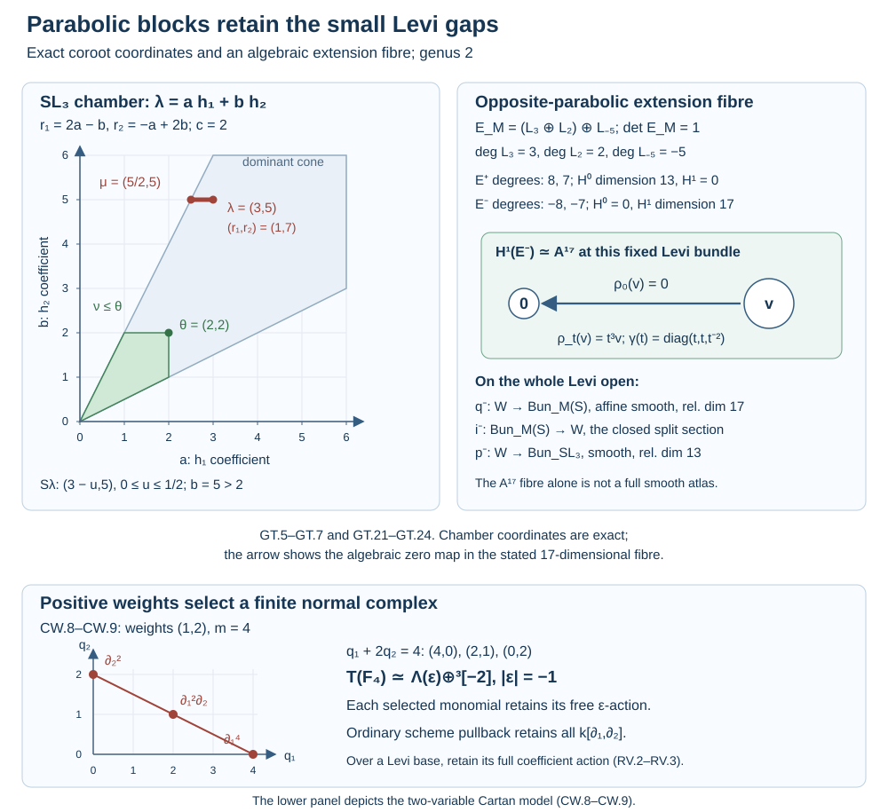
Figure 1. The chamber panel uses exact coroot coefficients. The red numerical admissible segment has fixed outside coefficient \(b=5\), so it misses the green cutoff \(a,b\leq2\), even though its Levi root gap is small. For the rank-two Levi bundle of degree five in this example, its actual HN types in this segment are the two endpoints: the rank-one slopes \(3,2\), and the semistable rank-two slope \(5/2\). The upper right panel shows the algebraic zero map in the stated \(17\)-dimensional extension fibre, with the full Levi-base maps and dimensions from (GT.21)–(GT.24). The lower lattice is the separate two-variable Cartan calculation of §1.11: positivity selects three derivative monomials, each retaining its free exterior-algebra operator; it is not a plot of the \(17\)-dimensional fibre. Over a Levi base their full coefficient representation is retained by (RV.2)–(RV.3). Proof locators are (GT.5)–(GT.7), (GT.21)–(GT.24), (CW.6)–(CW.9) and (RV.2)–(RV.3). Free human-source reading for the root-chart construction is Drinfeld–Gaitsgory, Compact generation of the category of D-modules on the stack of G-bundles on a curve, §§9–11; for the Cartan-complex formalism, Pandžić, A simple proof of Bernstein–Lunts equivalence, §1. The proofs used here are given in the text and the earlier programme lessons named above.
Exercise 1.A. Prove the separation (GT.7) for a nonsimply laced root system. Which positivity assertion must replace a picture?
Solution 1.A. Its principal Cartan matrix need not be symmetric. Multiply by its positive diagonal symmetrizer. Its off-diagonal entries stay nonpositive and its quadratic form is positive definite. Splitting a coefficient vector into disjoint positive and negative parts gives exactly (GT.3). Applying this to the \(I_\lambda\)-coefficients of \(\theta-\lambda\) proves they are nonnegative. The other coefficients were already nonnegative, so \(\lambda\leq_G\theta\), the required contradiction. The proof uses neither equality of root lengths nor a planar diagram.
Exercise 1.B. In the \(SL_3\) example compute the projection endpoint, both root degrees, the two extension dimensions and the contraction weights. Explain why the small Levi gap does not spoil (GT.23).
Solution 1.B. Setting \(r_1=1-2u=0\) gives \(u=1/2\), hence endpoint \((5/2,5)\). The outside positive root degrees are \(r_2=7\) and \(r_1+r_2=8\). Their \(H^0\) dimensions in genus two are \(7-1=6\) and \(8-1=7\), while their duals have \(H^1\) dimensions \(7+1=8\) and \(8+1=9\). These give \(13\) and \(17\). Conjugation by \(\gamma(t)^{-1}\) multiplies either lower-left entry by \(t^3\). The root of the Levi has degree one, but it is not a weight of either radical. The estimate follows from the outside roots, whose degrees exceed \(2g-2=2\).
1.9. A cofinal quasicompact exhaustion
For a dominant rational \(\theta\), at its fixed central degree define \[ U_\theta=\{P:\operatorname{HN}(P)\leq_G\theta\}. \tag{GT.25} \] Retain an integral component label if desired. The preceding specialization argument makes this locus open. It is quasicompact by the faithful framed atlas of the previous lesson. Here is how its numerical hypotheses are verified. For a dominant highest weight \(\eta\), a canonical reduction filters its representation bundle into semistable central-weight pieces, and its largest slope is \(\eta(\operatorname{HN}(P))\). Since \(\eta(h_i)\geq0\), (GT.25) bounds this slope by \(\eta(\theta)\). Apply the same statement to the dual representation to bound the smallest slope below. A fixed faithful sum therefore has uniformly bounded extremal slopes and fixed rank and degree in each of the finitely many integral components over this central degree. The finite-type Quot atlas and affine reduction section scheme in the previous lesson, §§1.1–1.6 and 4.10, apply. Its smooth image is all of \(U_\theta\), proving quasicompactness.
These opens are cofinal among quasicompact opens of \(\operatorname{Bun}_G\) after finite unions over central degrees. A quasicompact open meets only finitely many components of the discrete component group, and its finite-type charts have only finitely many Harder–Narasimhan types. For each central degree, choose one dominant rational \(\theta\) above all those types and satisfying \[ \alpha_i(\theta)\geq c\quad\text{for every simple root }i. \tag{GT.26} \] Such a \(\theta\) exists: solve \(C a=\mathbf1\) on each semisimple factor. Positivity of \(C^{-1}\) gives a strictly dominant element \(\zeta=\sum_i a_i h_i\) with every \(\alpha_i(\zeta)=1\). In an irreducible factor every \(a_i>0\), since otherwise the nonpositive off-diagonal entries in that row could not sum to \(1\). Add a sufficiently large positive multiple of \(\zeta\) to the fixed central element. Its coroot coefficients dominate the finitely many types, and its root pairings satisfy (GT.26). This proves the cofinality in every genus.
For two such cutoffs at one central degree with \(\theta\leq_G\theta'\), only finitely many types occur in \[ U_{\theta'}\setminus U_\theta. \tag{GT.27} \] Each type \(\lambda\) in this difference lies in a block \(Z_G(S_\lambda)\) constructed in §§1.3–1.7. By (GT.7), that block avoids \(U_\theta\). Its intersection with \(U_{\theta'}\) has the same contraction charts, as follows. Restrict the Levi open to types \(\nu\leq_G\theta'\), and pull the affine map \(q^-\) back to this smaller open. Every opposite extension over it maps into \(U_{\theta'}\): the monoid family (GT.17) has constant bundle type away from zero and type \(\nu\) at zero, so the proved specialization inequality bounds its original type above by \(\nu\). The restricted affine map retains its monoid action and split section. Equations (GT.14)–(GT.16) retain smoothness, surjectivity and the open inverse-image condition. Thus the bounded complement is covered by finitely many blocks whose geometric contraction conditions have been proved. This supplies the geometric input for the finite-recollement D-module argument; it does not assume that truncativity of one stratum follows merely from its slope.
If \(G\) is a torus, the root set is empty. The component theorem and boundedness result of the previous lesson give quasicompact open-and-closed degree components. Finite unions of them are the required cofinal opens. For a general reductive group the central directions and the finite torsion labels are carried by the finite unions above. The positive and negative root estimates use only the derived root system; no central adjoint direction is assigned a spurious positive weight.
Exercise 1.C. Why can a root cutoff at one central degree not exhaust \(\operatorname{Bun}_{\mathbb G_m}\)? How does the cofinality proof correct this for every reductive group?
Solution 1.C. There are no roots, so the root inequalities say nothing about the integral degree of a line bundle. A cutoff at one central degree sees only that degree component. A quasicompact open meets finitely many open-and-closed components, so their finite union contains it. For a reductive group first retain its finitely many component labels, then choose a sufficiently dominant semisimple cutoff at each of their central degrees. The finite union contains the original open and is quasicompact. Torsion in the component group changes the component label, not the rational root inequalities.
1.10. Smooth pullback and the unipotent-gerbe section
We now work in the full unbounded derived category. A compact object is an object whose mapping-complex functor commutes with filtered colimits. All limits of categories and mapping complexes below are homotopy limits. Our scheme convention is that a smooth map of relative dimension \(r\) has \(f^!=f^\natural[r]\), where \(f^\natural\) is ordinary flat pullback of left D-modules. Strong smooth descent, including its higher maps, is proved in D-modules on stacks, ind-schemes and the de Rham prestack, §§1–2. We use that descent construction, rather than the derived category of the ordinary equivariant heart.
Smooth transfer lemma. For a schematic quasicompact smooth map \(f:Y'\to Y\) between smooth stacks with affine diagonal, of constant relative dimension \(r\), there is an adjunction \[ f^!\dashv f_{\mathrm{dR},*}[-2r]. \tag{CC.1} \] The functor on the right preserves colimits. Consequently \(f^!\) preserves compact objects. Locally constant relative dimensions are handled on the finitely many open and closed pieces of a quasicompact source.
We give the transfer calculation and its unbounded justification. On an affine product chart \(Y'=Y\times\mathbb A^r\), put \(B=\mathcal D_Y\otimes_k\mathcal D_{\mathbb A^r}\). The \((B,\mathcal D_Y)\)-bimodule for \(f^\natural\) is \(\mathcal O_{\mathbb A^r}\otimes_k\mathcal D_Y\). It has the finite free relative Spencer resolution: in degree \(-j\) its term is \(B\otimes\bigwedge^j k^r\), and the differential uses right multiplication by the commuting vertical derivatives. Exactness follows from the regular sequence of their symbols in the order-associated graded ring, followed by induction on order. Applying Hom gives the relative de Rham cochain complex in degrees \(0,\ldots,r\). Differential-operator direct image is this complex shifted by \([r]\). Tensor–Hom adjunction thus gives \[ \operatorname{RHom}_{Y'}(f^\natural M[-r],N) \simeq \operatorname{RHom}_{Y}(M,f_{\mathrm{dR},*}N). \tag{CC.2} \] Replacing \(M\) by \(M[2r]\) proves (CC.1). Smooth étale coordinates give the same relative Spencer resolution with its intrinsic exterior-power and bracket differential. Its chain-rule transition maps identify the displayed adjunctions on overlaps.
For a nonaffine source over an affine target, a finite affine cover and its intersection cover compute the direct image of each quasi-coherent Spencer term. The affine-diagonal hypothesis makes these intersections affine; it need not make the diagonal a closed immersion. The finite Čech complex and the finite Spencer complex use only finite sums, cones and shifts. They therefore commute with arbitrary colimits, and have a cohomological bound independent of the input complex. No boundedness of \(M\) or \(N\) is needed: a semifree resolution of \(M\) proves (CC.2) first on free cells, then on their sums and realizations; the finite Spencer calculation computes the other variable on an arbitrary complex. We have not replaced an infinite product totalization by a direct sum.
On a smooth chart of the target stack, schematicity makes the base change of \(f\) a scheme map. The relative Spencer and Čech construction just given defines the direct image on that chart. The smooth base-change comparisons are the chain-rule comparisons of these same transfer complexes. They identify their units and counits and commute with composition. Strong descent therefore glues the functors, the unit and the counit, and their triangle identities. Their chartwise colimit compatibility proves colimit compatibility on the stack, since chart pullback is conservative and preserves colimits. Finally (CC.1) gives, for a compact \(F\), \[ \operatorname{RHom}_{Y'}(f^!F,\mathop{\mathrm{colim}}_a N_a) \simeq \mathop{\mathrm{colim}}_a \operatorname{RHom}_{Y'}(f^!F,N_a). \tag{CC.3} \] This proves compact preservation by this smooth pullback. It does not assert that arbitrary smooth pullback reflects compactness.
Unipotent-gerbe lemma. Let \(S\) be a smooth stack and \(N\to S\) a smooth group scheme whose underlying scheme is a finite-rank vector bundle, with the zero section as its identity. For the neutral gerbe \(q:B_SN\to S\) and its section \(s:S\to B_SN\), there are mutually inverse equivalences \[ q^!: \mathrm{Dmod}(S)\ \simeq\ \mathrm{Dmod}(B_SN):s^!. \tag{CC.4} \] The statement concerns the full derived descent category and arbitrary coefficient complexes.
First let \(v:E\to S\) be a vector bundle of rank \(n\). In a local vector-bundle trivialization, its relative de Rham complex decomposes by total polynomial degree, counting a fibre differential as degree one. Contraction with the fibre Euler field \(e\) satisfies \[ d_{E/S}\iota_e+\iota_e d_{E/S}=m\,\operatorname{id} \quad\text{on total degree }m. \tag{CC.5} \] For \(m>0\), division by \(m\) gives a contraction. Total degree zero is exactly \(\mathcal O_S\) in degree zero. Euler contraction is intrinsic under linear changes of fibre coordinates, so these calculations glue. The augmentation from \(\mathcal O_S\) is a quasi-isomorphism to the pushed-forward relative de Rham complex. Together with (CC.2) and the projection formula, this gives \[ \operatorname{RHom}_{E}(v^!A,v^!B) \simeq\operatorname{RHom}_{S}(A,B). \tag{CC.6} \] For clarity about shifts, \(v_{\mathrm{dR},*}v^!B\simeq B[2n]\), and the right adjoint of \(v^!\) is \(v_{\mathrm{dR},*}[-2n]\). Their composite is the identity. Formula (CC.6) would have the wrong shift if ordinary flat pullback were used in place of the smooth de Rham normalization. The relative complex is finite in exterior degree and the contraction is coefficientwise, so the argument also holds for unbounded \(A,B\).
The Čech nerve of the section \(s\) has level \(p\) equal to \(N^p_S\); all its face and degeneracy maps are over \(S\). Its structural map \(v_p:N^p_S\to S\) is a vector-bundle map as a morphism of schemes, independently of whether the group law of \(N\) is commutative. By (CC.6), \(v_p^!\) is fully faithful. Every cartesian descent object on this nerve has its level \(p\) identified with \(v_p^!\) of its level-zero object, by pulling along a vertex. The same observation holds for maps and all higher homotopies. We may therefore restrict every level to this fully faithful image. Under \(v_p^!\), all transition functors become the identity on \(\mathrm{Dmod}(S)\), with the coherent identifications supplied by composition of !-pullbacks. The homotopy limit of this constant diagram over the contractible simplex category is \(\mathrm{Dmod}(S)\). This proves both essential surjectivity and full faithfulness of (CC.4). The identity \(q\circ s=\operatorname{id}\) identifies its two inverse functors. This proof takes a limit of the full nerve; it does not truncate the nerve to the ordinary equivariant heart.
Apply this to \(Z=Z_G(S)\), with the notation \(S\) for the admissible set distinguished from its Levi stack \(B_M(S)\). Equations (GT.9)–(GT.14) show that every positive unipotent torsor is locally trivial and that its automorphism group on a fixed Levi bundle is \(N=H^0(X,U^+_{F_M})\). The finite characteristic-zero exponential and logarithm of the preceding lesson identify the underlying scheme of \(U^+_{F_M}\) with \(\mathfrak u^+_{F_M}\). These polynomial maps commute with taking sections over the curve. By (GT.11), their section scheme is the vector bundle \(H^0(X,\mathfrak u^+_{F_M})\), with arbitrary base change. Thus \(\operatorname{Bun}_P^S\to B_M(S)\) is the neutral gerbe \(B_{B_M(S)}N\). Using the isomorphism (GT.15), the split-bundle map \[ f_Z:B_M(S)\longrightarrow Z_G(S) \quad\text{has }\quad f_Z^!: \mathrm{Dmod}(Z_G(S))\simeq\mathrm{Dmod}(B_M(S)). \tag{CC.7} \] In particular its pullback preserves and reflects compact objects. This conclusion uses the unipotent-gerbe structure, not smooth surjectivity alone.
Transfer to the root block. Let \(f_Y:W\to Y\) be the opposite-parabolic smooth map of §1.6, restricted to a bounded ambient open \(Y\), and let \(i_S:B_M(S)\hookrightarrow W\) be the split section. Its composite is the block inclusion \(i_Z:Z_G(S)\hookrightarrow Y\) after \(f_Z\). Suppose that the contraction calculation proves that \(i_S^!\) preserves compact objects. For any compact \(F\in\mathrm{Dmod}(Y)\), (CC.3) makes \(f_Y^!F\) compact. Functoriality of !-pullback gives \[ f_Z^!i_Z^!F\simeq i_S^!f_Y^!F. \tag{CC.8} \] The right side is compact by the stated hypothesis; (CC.7) reflects compactness, so \(i_Z^!F\) is compact. This is the exact descent argument needed for the root blocks. The remaining hypothesis is a statement about the full derived category on \(W\); an attracting monoid on its scheme atlas alone would not prove it.
Exercise 1.D. Explain why smooth surjectivity cannot replace (CC.7). Use the smooth atlas \(\mathrm{pt}\to B\mathbb G_m\).
Solution 1.D. The point-quotient calculation in D-modules on stacks, ind-schemes and the de Rham prestack, §5, identifies the category on \(B\mathbb G_m\) with modules over \(A=\Lambda(\epsilon)\), \(|\epsilon|=-1\). The constant object corresponds, up to the fixed normalization shift, to the augmentation module \(k\). Its atlas pullback is a one-dimensional perfect complex. Nevertheless the resolution \(\bigoplus_{j\geq0}Ae_j\), \(|e_j|=-2j\), \(de_j=\epsilon e_{j-1}\), gives \(\operatorname{Ext}^*_A(k,k)=k[c]\) with \(|c|=2\). A finite cell \(A\)-module has bounded self-Hom; so does a retract of one. The unbounded polynomial self-Ext proves that \(k\) is not compact. Thus this smooth atlas pulls a noncompact object to a compact object. In (CC.7), the vector-bundle de Rham contraction makes pullback an equivalence, which is the additional reason compactness can be reflected there.
1.11. The weighted Weyl calculation
The following algebraic calculation isolates what the derived multiplicative-group direction does at the contracted point. It includes the degree-minus-one operator; replacing its module category by the ordinary equivariant heart would lose the compact objects that the calculation produces.
Let \(D_r\) be the Weyl algebra on \(x_1,\ldots,x_r,\partial_1,\ldots,\partial_r\), with \([\partial_i,x_j]=\delta_{ij}\). Fix positive integers \(n_1,\ldots,n_r\), put \(\deg x_i=n_i\), \(\deg\partial_i=-n_i\), and set \[ E=\sum_i n_i x_i\partial_i,\qquad N=\sum_i n_i. \tag{CW.1} \] A Cartan complex in this calculation is a complex of graded left \(D_r\)-modules, with a grading-preserving \(D_r\)-linear operator \(\epsilon\) of cohomological degree \(-1\), satisfying \[ \epsilon^2=0,\qquad d\epsilon+\epsilon d=Q, \qquad Q(v)=mv-Ev\quad(v\text{ of grading }m). \tag{CW.2} \] The operator \(Q\) is \(D_r\)-linear: \([E,a]=(\deg a)a\) for a homogeneous Weyl operator \(a\). Morphisms respect the grading and \(\epsilon\), and quasi-isomorphisms are detected on the underlying complex. Denote the resulting derived category by \(\mathcal C_r\).
For \(m\in\mathbb Z\), let \(P_m\) be a free graded Weyl module with generator of grading \(m\). Its free Cartan extension \(F_m\) has terms \(P_m\epsilon\) in degree \(-1\) and \(P_m\) in degree zero, with \[ d(a\epsilon)=a(m-E),\qquad \epsilon(a)=a\epsilon,\qquad \epsilon(a\epsilon)=0. \tag{CW.3} \] Here \(a(m-E)\) means right multiplication in the free Weyl module. Its grading-difference operator is precisely \(m-R_E\), so (CW.2) holds in both degrees.
A morphism from \(F_m\) to a Cartan complex is determined by the image of its generator. The image of the degree-minus-one generator is then forced by \(\epsilon\), and (CW.2) supplies its differential. This gives, with the usual graded signs, \[ \operatorname{RHom}_{\mathcal C_r}(F_m,M)\simeq M_m. \tag{CW.4} \] The ordinary mapping complex already computes the derived one here: for an acyclic \(M\), each grading summand \(M_m\) is acyclic. Thus \(F_m\) is projective for quasi-isomorphisms, and (CW.4) proves its compactness. The family \((F_m)_{m\in\mathbb Z}\) detects zero objects, so it generates \(\mathcal C_r\).
We also need the finite cell consequence, rather than just detection. Attach sums of shifted \(F_m\)'s to represent all homogeneous cohomology classes of an object, and then attach cells to kill the cohomology of the mapping cone. Repeating this gives a semifree complex mapping by a quasi-isomorphism to that object: every cone class is killed at the next stage, and filtered colimits of complexes of vector spaces are exact. Each cell boundary involves finitely many earlier cells, since a map from a free cell is specified by one element of a direct sum. At any fixed stage its full set of boundary ancestors is finite. The semifree complex is therefore the filtered colimit of its finite subcomplexes closed under cell boundaries. If the object is compact, its identity factors through one such finite cell complex. It is a retract of that complex. Conversely finite cells and their retracts are compact by (CW.4). We have proved the compact-object description used below.
For \(r=0\), (CW.2) reads \(d\epsilon+\epsilon d=m\) in grading \(m\). A nonzero grading has the contraction \(\epsilon/m\), hence is acyclic. Grading zero is the category of modules over \[ A=\Lambda(\epsilon),\qquad |\epsilon|=-1,\qquad d\epsilon=0. \tag{CW.5} \] Thus \(\mathcal C_0\simeq A\text{-}\mathrm{mod}\). This is also the point-quotient category proved in §5 of D-modules on stacks, ind-schemes and the de Rham prestack.
We now construct the normal Koszul functor, including its Cartan operator. The delta module is \(\Delta=D_r/\sum_iD_rx_i\), with generator of grading \(-N\). Its grading operator equals the action of \(E\): on the generator, \(E=-N\), and each derivative lowers both operators by \(n_i\). Give \(\Delta\) the zero \(\epsilon\)-operator. Resolve it by the finite free Koszul complex \(K_\Delta\) on right multiplication by the \(x_i\). A wedge basis \(e_J\) lies in degree \(-|J|\) and has generator grading \(-N+\sum_{j\in J}n_j\). Write \[ d_K(ae_J)=\sum_i a x_i\,\iota_i(e_J),\qquad \epsilon_K(ae_J)=-\sum_i n_i a\partial_i\,e_i\wedge e_J. \tag{CW.6} \] The exterior signs give \(\epsilon_K^2=0\). Using \(\iota_i(e_j\wedge -)+e_j\wedge\iota_i=\delta_{ij}\) and \(\partial_jx_i-x_i\partial_j=\delta_{ij}\), we obtain \[ (d_K\epsilon_K+\epsilon_Kd_K)(ae_J) =a\left(-E-N+\sum_{j\in J}n_j\right)e_J. \tag{CW.7} \] This is exactly \(Q\) on that free summand. Thus the Koszul resolution itself is a Cartan complex, and its augmentation to \(\Delta\) respects \(\epsilon\). Its exactness follows directly from PBW: it is the Koszul resolution of the right-coordinate generators in the free left Weyl module, or from their regular symbols followed by induction on order.
For \(M\in\mathcal C_r\), use the full graded Hom complex \(\operatorname{Hom}_{D_r}(K_\Delta,M)\), with operator \(\epsilon(f)=\epsilon_Mf-(-1)^{|f|}f\epsilon_K\). The two Weyl-moment terms cancel because \(f\) is \(D_r\)-linear. The remaining commutator with its differential is the grading operator on Hom. Hence it is an object of \(\mathcal C_0\). Taking its grading-zero summand gives a functor \(T:\mathcal C_r\to A\text{-}\mathrm{mod}\). The finite free Koszul resolution makes this functor exact, colimit preserving, and invariant under quasi-isomorphisms, even on unbounded complexes.
Compute \(T(F_m)\). The Koszul cochain complex of left multiplication by the \(x_i\) on a free Weyl module has cohomology only in degree \(r\). Its quotient there is \(D_r/\sum_i x_iD_r\), which has PBW basis \(\partial_1^{q_1}\cdots\partial_r^{q_r}\), \(q_i\geq0\). Notice the side of the ideal: this quotient uses \(x_iD_r\), whereas \(\Delta\) uses \(D_rx_i\). In the quotient, right multiplication by \(E\) has eigenvalue \(\sum_i n_iq_i\), since \(\partial^q x_i\partial_i\equiv q_i\partial^q\) modulo \(\sum_jx_jD_r\). The top Koszul source generator has grading zero. Thus Hom grading zero selects precisely \[ Q_m=\left\{q\in\mathbb Z_{\geq0}^r: \sum_i n_iq_i=m\right\}. \tag{CW.8} \] On these basis elements the differential from (CW.3) is zero. The operator induced by \(\epsilon_M\) remains the free degree-minus-one operator. The precomposition term involving \(\epsilon_K\) lowers Koszul cochain degree, so vanishes in the top cohomology projection. That projection respects both the differential and \(\epsilon\); it is a quasi-isomorphism because the Koszul complex has only this cohomology. Consequently \[ T(F_m)\simeq\bigoplus_{q\in Q_m} A[-r]. \tag{CW.9} \] Positivity of every \(n_i\) makes \(Q_m\) finite, and it is empty if \(m<0\). Formula (CW.9) and the finite cell description therefore prove that \(T\) preserves all compact objects of \(\mathcal C_r\). The answer is a finite sum of free \(A\)-modules. Replacing it by two copies of the augmentation in consecutive degrees would erase its \(\epsilon\)-action and give an incorrect compactness conclusion.
For the frozen \(17\)-dimensional extension fibre in §1.8, all weights are \(3\). Here \(Q_m\) is empty unless \(m=3d\) for an integer \(d\geq0\), and then \[ |Q_{3d}|=\binom{d+16}{16}. \tag{CW.10} \] Indeed the tuple \(q\) is a decomposition of \(d\) into \(17\) nonnegative parts: insert \(16\) separators among \(d\) marks, giving the displayed binomial coefficient. In particular \(T(F_0)=A[-17]\), \(T(F_3)=A^{\oplus17}[-17]\), and \(T(F_{-3})=0\). The grading-zero functor has retained finitely many derivative monomials in each of these cases.
The corresponding ordinary scheme calculation, without the group grading and Cartan operator, retains the entire polynomial space \(k[\partial_1,\ldots,\partial_r][-r]\) when applied to the free Weyl module. For \(r>0\) this is an infinite-dimensional complex on a point and is not compact. This explains the categorical distinction in §1.7. Sections 1.12–1.14 identify (CW.9) with the strong smooth-descent normal functor and carry the full Levi-base equivariance through the calculation; the fibre calculation alone is not the complete root-block argument.
The algebraic calculation also supplies its own contraction adjunction. Define \[ \Pi^!_{\mathrm{alg}}(L)=k[x_1,\ldots,x_r]\otimes_k L[r] \quad\text{from }A\text{-}\mathrm{mod}\text{ to }\mathcal C_r. \tag{CW.11} \] The variables have their stated gradings, the Weyl operators act on the polynomial factor, and the point-module factor has grading zero. The shifted differential is \((-1)^r d_L\) and the shifted Cartan operator is \((-1)^r\epsilon_L\). Both obey (CW.2), since the grading and Euler operators agree on polynomials. This functor preserves colimits.
For each \(m\), pair the finite derivative space indexed by \(Q_m\) with polynomials of weighted degree \(m\) by \[ \langle\partial^q,x^p\rangle =\left.\partial^q x^p\right|_{x=0} =q_1!\cdots q_r!\,\delta_{q,p}. \tag{CW.12} \] This is a perfect pairing in characteristic zero. Right multiplication by \(x_i\) on the derivative quotient lowers \(q_i\) with coefficient \(q_i\); it is adjoint to multiplication by \(x_i\) on polynomials. Right multiplication by \(\partial_i\) raises \(q_i\); it is adjoint to differentiation of polynomials. Thus (CW.12) respects every Weyl operator and its compositions.
Using (CW.4) and (CW.9), the pairing gives \[ \operatorname{RHom}_A(TF_m,L) \simeq\operatorname{RHom}_{\mathcal C_r} (F_m,\Pi^!_{\mathrm{alg}}L), \qquad T\dashv\Pi^!_{\mathrm{alg}}. \tag{CW.13} \] Here is why the first isomorphisms give the entire adjunction. A derived morphism between free Cartan cells is represented in (CW.4) by a homogeneous Weyl element, or by such an element times its degree-minus-one free generator. The first kind respects (CW.12) by the coordinate and derivative checks just given. For the second kind, precomposition acts by \((-1)^j\epsilon_L\) on a degree-\(j\) mapping complex. The shift in (CW.11) contributes \((-1)^r\); the identification of a Hom out of a degree-\(r\) normal generator with the shifted coefficient complex contributes \((-1)^{rj}\). These are exactly the graded tensor–Hom signs, so this second kind also respects the isomorphism. The differential is right multiplication by \(m-E\), already respected by the pairing. Hence the isomorphisms are natural on the full DG subcategory of the free cells, not merely on their degree-zero maps. Extending along their sums, cones and semifree realizations gives the isomorphism for every object. Both sides convert colimits in that object into limits of mapping complexes; the cell-generation proof above therefore gives the full unbounded adjunction.
Its counit \(T\Pi^!_{\mathrm{alg}}L\to L\) is an isomorphism. The coordinate Koszul complex on polynomials has only its top cohomology, the evaluation quotient at zero. Its degree \(r\) cancels the shift \([r]\) in (CW.11). Under that top-cochain identification, both the coefficient differential and \(\epsilon\) have the factor \((-1)^r\); multiplying a degree-\(j\) coefficient by \((-1)^{rj}\) identifies them with the differential and operator of \(L\). This also identifies the counit with evaluation. Thus the algebraic proof supplies the adjunction and the normalization as well as compactness. The next sections supply the geometric comparison and full Levi-base extension used in (GT.20).
Exercise 1.E. Take \(r=2\), weights \((1,2)\), and \(m=4\). Determine \(T(F_4)\), and explain what changes if the second weight is zero.
Solution 1.E. The nonnegative solutions of \(q_1+2q_2=4\) are \((4,0),(2,1),(0,2)\). Thus \(T(F_4)=A^{\oplus3}[-2]\), including each free \(\epsilon\)-action. If the second weight is zero, the solutions are \((4,q_2)\) for all \(q_2\geq0\). The same PBW calculation then gives an infinite sum of shifted free \(A\)-modules, which is not compact: its identity does not factor through any finite subsum. Strict positivity is exactly the hypothesis that prevents this failure.
1.12. Strong equivariance and the Spencer comparison
Let a smooth affine algebraic group \(H\) act on a smooth quasicompact scheme \(Z\) with affine diagonal. Write \(\mathfrak h=\operatorname{Lie}H\) and \(\sigma:\mathfrak h\to\Theta_Z\) for the infinitesimal action. A weakly equivariant D-complex has a rational \(H\)-action compatible with the differential operators. Its infinitesimal action \(\nu_\xi\) need not be their moment action. For left modules the moment is \(\sigma(\xi)\); for right modules it is \(-R_{\sigma(\xi)}\). In either convention their difference \(Q_\xi\) is D-linear. A Cartan D-complex additionally has D-linear operators \(\epsilon_\xi\) of degree \(-1\), equivariant in \(\xi\), with \[ [d,\epsilon_\xi]=Q_\xi,\qquad \epsilon_\xi\epsilon_\zeta+\epsilon_\zeta\epsilon_\xi=0, \qquad [Q_\xi,\epsilon_\zeta]=\epsilon_{[\xi,\zeta]}. \tag{SC.1} \] The last relation follows as well by differentiating \(H\)-equivariance and using D-linearity. Quasi-isomorphisms are detected on the underlying D-complex.
Comparison theorem. The DG localization of Cartan D-complexes on \(Z\) is the full strong descent category \[ \mathrm{Dmod}([Z/H]). \tag{SC.2} \] The comparison holds on unbounded complexes and on mapping complexes. It is compatible with commuting group actions, equivariant smooth pullback and closed transfer. We prove the comparison using the de Rham differential algebra with its Spencer weak equivalences. It does not require the ring of operators to be projective over \(U(\mathfrak h)\).
We normalize its underlying atlas complex as \(q^!M[-\dim H]\), where \(q:Z\to[Z/H]\) is the smooth atlas. This is the normalized pullback of the earlier smooth-descent theorem. The raw right Spencer form model below carries its ordinary chart-dimension shifts; these are adjusted to this normalization in the comparison. For an equivariant map with the same group on both charts, the group shift is the same on source and target. The Cartesian atlas square and !-base change therefore identify its geometric pullback with scheme !-pullback on the Cartan complexes. In particular a smooth scheme map of relative dimension \(r\) uses \([r]\), not unshifted form pullback. This normalization is retained in (SC.11).
First describe the equivariant differential-form model. The graded algebra of forms on \(H\) is \(\mathcal O_H\otimes\bigwedge\mathfrak h^*\), using invariant forms. Its multiplication pullback is the coproduct of the group object \(H_\Omega=(H,\Omega_H^\bullet)\). Its infinitesimal DG Lie algebra has the two copies of \(\mathfrak h\), in degrees zero and minus one: \[ d\iota_\xi=L_\xi,\quad [L_\xi,L_\zeta]=L_{[\xi,\zeta]},\quad [L_\xi,\iota_\zeta]=\iota_{[\xi,\zeta]},\quad [\iota_\xi,\iota_\zeta]=0. \tag{SC.3} \] An \(H_\Omega\)-equivariant \(\Omega_Z\)-complex is a rational \(H\)-equivariant complex \(F\) with operators \(\iota_\xi\) satisfying \[ [d_F,\iota_\xi]=\nu_\xi, \qquad \iota_\xi(\alpha f) =\iota_{\sigma(\xi)}(\alpha)f +(-1)^{|\alpha|}\alpha\iota_\xi(f). \tag{SC.4} \] Its odd operators anticommute and transform by the adjoint action. These conditions are exactly the groupoid descent equations. Indeed an isomorphism between action pullback and projection pullback on \(H\times Z\) has, in exterior degree zero, the rational \(H\)-action. In invariant-form coordinates its coefficients of degree one are the contractions. Multiplication in two independent sets of odd variables makes the contractions anticommute and determines every higher coefficient by their products. The finite exterior exponential, together with the rational action, reconstructs the isomorphism. The group product identifies these coefficients by the adjoint transformation; its unit and associative product give all the groupoid coherences. Finally differentiating the isomorphism gives (SC.4); the invariant-form equation \(d\theta=-\tfrac12[\theta,\theta]\) gives the brackets in (SC.3). Conversely those equations make the reconstructed isomorphism commute with the differential and group product. The construction is polynomial in the odd variables and uses the actual rational group action, so it holds on the group scheme, not just on its points.
The smooth-descent reconstruction proved in D-modules on stacks, ind-schemes and the de Rham prestack, §§1–2, now identifies the localization of these global equivariant form complexes with the category defined by the full action nerve. The weak equivalences in this assertion are the Spencer D-cohomology equivalences defined below. Recall the precise unbounded part of that reconstruction: after a faithfully flat covering pullback, inserting the distinguished vertex contracts the augmented Čech complex; hence its unit and counit induce isomorphisms on D-module cohomology before pullback. For normalized bounded-below truncations the nerve calculation computes the reconstruction. For an unbounded D-complex, take their compatible homotopy limit on each affine chart. Complexes of modules are complete for this truncation limit, and the covering contraction respects the truncations. Mapping complexes are limits with the same coherent maps. This gives the unbounded comparison, including its products; it is not a replacement of an infinite totalization by a direct sum. Under (SC.4), it is precisely the global form-complex construction appearing in that earlier proof.
We next prove the equivariant Spencer equivalence explicitly. Use right modules for its formulas and set \[ R_Z=\Omega_Z^\bullet\otimes_{\mathcal O_Z}\mathcal D_Z, \quad d_R(\alpha\otimes a) =d\alpha\otimes a+ \sum_i dx_i\wedge\alpha\otimes\partial_i a \tag{SC.5} \] in étale coordinates. The chain rule makes this an intrinsic \((\Omega_Z,\mathcal D_Z)\)-bimodule. The expression is the de Rham differential of the left regular operator module; its right operator action commutes with that differential. Let \(\iota^R_\xi\) contract the form factor by \(\sigma(\xi)\). Cartan's coordinate identity gives \[ [d_R,\iota^R_\xi]=\nu^R_\xi+R_{\sigma(\xi)}. \tag{SC.6} \] For example, for a coordinate vector field the commutator acts by left multiplication by its derivative, whereas the rational infinitesimal action on the operator factor is its adjoint action. Their difference is right multiplication. The same computation for a general vector field includes its action on forms and yields (SC.6). Thus \(R_Z\) is itself a right Cartan complex for the group action.
Define the adjoint DG functors \[ \mathsf D(F)=F\otimes_{\Omega_Z}R_Z, \qquad \mathsf\Omega(M)= \mathcal Hom_{\mathcal D_Z}(R_Z,M). \tag{SC.7} \] The tensor carries the diagonal contraction. On its representatives \(f\otimes a\), with \(a\) in degree-zero forms, the contraction is just \(\iota_\xi f\otimes a\). The Leibniz term in (SC.4) and contraction on \(R_Z\) make this formula well defined on the balanced tensor. Its commutator with the differential is the rational infinitesimal action plus right multiplication by \(\sigma(\xi)\), exactly \(Q_\xi\) for a right module. It is D-linear. On Hom the contraction is \[ \iota_\xi(f)=\epsilon^M_\xi f -(-1)^{|f|}f\iota^R_\xi. \tag{SC.8} \] Here the moment terms cancel by right D-linearity of \(f\), leaving its rational infinitesimal action. Precomposition with the form action supplies the Leibniz rule in (SC.4). Anticommutation and group equivariance follow on both functors from their diagonal tensor and Hom formulas. Thus (SC.7) are adjoint between the two equivariant DG categories, with equivariant evaluation and coevaluation maps.
The counit \(\mathsf D\mathsf\Omega(M)\to M\) is a quasi-isomorphism for every unbounded complex \(M\). We verify this without a convergence assumption on its cohomology. Locally its terms have the form \(M^a\otimes\bigwedge^b\Theta_Z\otimes\mathcal D_Z\), in degree \(a-b\). Filter by exterior degree plus operator order, using the submodules \[ V_j^i=\sum_{a-b=i,\ b+c\leq j} M^a\otimes\bigwedge^b\Theta_Z \otimes\mathcal D_Z^{\leq c}. \tag{SC.9} \] These are increasing subcomplexes. The piece \(V_0\) maps identically to \(M\). The associated graded in positive total degree \(j\) is its coefficient complex tensored with the homogeneous Koszul strand \[ \bigoplus_{b=0}^{\min(j,\dim Z)} \bigwedge^b\Theta_Z\otimes \operatorname{Sym}^{j-b}\Theta_Z, \qquad d=\sum_i p_i\iota_i. \tag{SC.10} \] The homotopy \(h=\sum_i e_i\wedge\partial/\partial p_i\) satisfies \(dh+hd=j\). Division by \(j\) contracts the strand. This is invariant under linear coordinate changes, and the tensor-complex signs make the contraction anticommute with the coefficient differential. Thus it works for an arbitrary coefficient complex, even without O-flatness or a cohomological bound. Each \(V_j/V_0\) is acyclic by finite induction on its filtration. The filtration is exhaustive and filtered colimits of quasi-coherent modules are exact, so its union proves the counit assertion. The PBW filtration and its homotopy are natural under \(H\); the quasi-isomorphism is the equivariant counit itself.
Declare a map of form complexes to be a D-equivalence when \(\mathsf D\) sends it to a quasi-isomorphism. The unit \(F\to\mathsf\Omega\mathsf D F\) is a D-equivalence by the counit just proved and the adjunction triangle identity. The Hom functor in (SC.7) preserves ordinary quasi-isomorphisms locally: its exterior degree is finite and its operator-module terms are locally finite free. Consequently both functors descend to the DG localizations. Their unit and counit are equivalences there, so they are inverse equivalences of DG categories, including all mapping complexes. Together with the preceding strong form-complex descent, this proves (SC.2).
Tensoring a right module by \(\omega_Z^{-1}\) converts to the left convention. The rational action on the canonical line cancels the divergence term in the right moment action, so \(Q_\xi\) becomes \(\nu_\xi-\sigma(\xi)\). This recovers exactly (CW.2) for the weighted multiplicative-group action. Every construction above is natural for group-scheme products and their commuting actions. Pullback and closed transfer use the same Spencer bimodules, with their tensor–Hom contraction operators, so the comparison respects these functors and their shifts.
In particular let \(i:B\mathbb G_m\hookrightarrow[\mathbb A^r/\mathbb G_m]\) be the zero section for the positive weights of §1.11, and let \(\pi\) be the projection to \(B\mathbb G_m\). The comparison identifies the two categories with \(\mathcal C_0\) and \(\mathcal C_r\), and \[ i^!\longleftrightarrow T, \qquad \pi^!\longleftrightarrow\Pi^!_{\mathrm{alg}}, \qquad i^!\dashv\pi^!. \tag{SC.11} \] To check the first identification on the full derived category, closed pushforward of a point module \(L\) is \(\Delta\otimes L\). Its density gives the delta generator weight \(-N\). Resolve \(\Delta\) by the Cartan Koszul resolution (CW.6). For the free point module \(A\), a projective Cartan resolution of \(\Delta\otimes A\) is obtained by freely adjoining the odd operator to that weak Koszul complex. Its differential is \(d_K+Q_K\partial_\tau\) and its odd operator is multiplication by \(\tau\). Conjugating by \(1+\epsilon_K\partial_\tau\) changes these into \(d_K\) and \(\epsilon_K+\tau\): the identities are \([d_K,\epsilon_K]=Q_K\), \(\partial_\tau^2=0\), and \(\partial_\tau\tau+\tau\partial_\tau=1\). Augmentation then maps to \(\Delta\otimes A\) by a quasi-isomorphism. The free-extension adjunction computes Hom out of this resolution as the grading-zero complex \(\mathcal Hom_{D_r}(K_\Delta,M)\), with induced odd operator \(\epsilon_Mf-(-1)^{|f|}f\epsilon_K\). That is the functor \(T\). Resolving an arbitrary \(A\)-module by free cells proves the full closed adjunction and the identification of \(i^!\). Smooth pullback to affine space is polynomial pullback shifted by \([r]\), with the same shift on the odd operator, giving the second identification. Formula (CW.13) now proves the geometric adjunction in (SC.11). Since \(\pi^!\) is continuous, \(i^!\) preserves compact objects. The zero substack is therefore truncative.
Free human-source reading for this comparison is Beilinson–Drinfeld, Quantization of Hitchin's integrable system and Hecke eigensheaves, §§7.2.1–7.2.9 and 7.6.3–7.6.11. The formulas and the unbounded filtration proof needed here have been given above; the full smooth-descent reconstruction is the proved earlier programme result explicitly linked in this section.
Exercise 1.F. Explain why replacing D-equivalences of form complexes by their ordinary cohomology equivalences would change this construction. Where does the proof keep unbounded coefficients under control?
Solution 1.F. Over affine space the ordinary de Rham algebra has only the field as its cohomology. Its ordinary derived DG-module category therefore cannot retain the Weyl module category. A form complex here is tested after the Spencer functor \(\mathsf D\); the unit is inverted by that test, not by a declaration about ordinary de Rham cohomology. The counit proof tensors an explicitly contractible, finite-exterior Koszul strand with each arbitrary coefficient complex. It then uses finite induction and an exact filtered colimit. It never asks a spectral sequence of an unbounded coefficient complex to converge. The separate smooth-nerve comparison uses the earlier chartwise truncation limits with their products.
1.13. Compact generators and duality on the bounded presentations
The bounded framed presentations needed here have frame group \(GL_a\), possibly with extra multiplicative groups for line frames. We prove the categorical assertions for these presentations; the group whose bundles are parametrized remains any connected reductive \(G\).
We first prove the representation fact used in the argument. Every finite-dimensional rational \(GL_a\)-representation in characteristic zero is semisimple. Here is an algebraic proof with the needed exactness consequence. On \(V^{\otimes b}\), \(V=k^a\), the image of the symmetric-group algebra is semisimple: averaging by \(1/b!\) splits every subrepresentation. Its commutant is therefore a product of matrix algebras. Under \(\operatorname{End}(V^{\otimes b})=\operatorname{End}(V)^{\otimes b}\), that commutant is the space of symmetric tensors. Polarization in characteristic zero shows that it is spanned by \(A^{\otimes b}\) for matrices \(A\). Invertible matrices suffice, since any linear functional vanishing on their powers is a polynomial vanishing on the dense open \(GL_a\). Consequently \[ \operatorname{span}\{g^{\otimes b}:g\in GL_a\} =\operatorname{End}_{k[S_b]}(V^{\otimes b}). \tag{AF.1} \] The action algebra is semisimple, so \(V^{\otimes b}\) is a semisimple \(GL_a\)-module.
For an arbitrary finite rational representation, multiply its matrix coefficients by a sufficiently large determinant power to make them polynomial. Decompose by the scalar-centre weights. Each resulting coefficient space is homogeneous of some nonnegative degree \(b\). The coaction embeds the representation in finitely many copies of the degree-\(b\) polynomial functions on matrices; evaluation at the identity makes this embedding injective. Such polynomial functions are a direct summand of the tensor powers of finitely many standard or dual-standard copies, by the symmetrizing projector. They are semisimple by (AF.1). Untwisting the determinant proves the assertion. Additional multiplicative groups are handled by their integer-weight decompositions. Thus finite rational representations of \(H=GL_a\times\mathbb G_m^s\) are semisimple.
Every vector in an arbitrary rational representation belongs to a finite-dimensional subrepresentation. An invariant vector in a quotient therefore lifts through a finite semisimple subrepresentation of the source: choose a lift, take its finite orbit span, and split the resulting surjection onto its image. Invariants are exact. For a finite representation \(W\), \(\operatorname{Hom}_H(W,-)\) is consequently exact and commutes with filtered colimits. The latter follows also directly from its finitely many coefficient equations. A nonzero rational representation has a nonzero map from a finite one, so these Hom functors detect zero.
Let \(Z\) now be smooth and quasiaffine, with an \(H\)-action. The finite affine Čech calculation makes \(R\Gamma(Z,-)\) on quasi-coherent complexes continuous and of finite cohomological dimension. It is conservative. Indeed embed \(Z\) as an open in an affine scheme \(C\), as in the definition of quasiaffineness. The quasi-coherent derived open direct image is fully faithful, and restriction of that direct image recovers the original complex. On the affine scheme, derived global sections are conservative. Hence \(R\Gamma(Z,M)=0\) implies \(M=0\), also for an unbounded complex. The ambient affine scheme need not be smooth for this argument about quasi-coherent complexes.
In the weakly equivariant derived D-module category define \(P_E=\mathcal D_Z\otimes_{\mathcal O_Z}E\) for an \(H\)-linearized finite-rank vector bundle \(E\). The PBW filtration makes operator induction O-flat. Induction–forgetful adjunction and the finite affine-cover calculation therefore give \[ \operatorname{RHom}_{\mathrm{weak},H}(P_E,M) =R\Gamma(Z,E^*\otimes_{\mathcal O_Z}M)^H. \tag{AF.2} \] This is a derived assertion: induction is exact, and its right adjoint preserves injectives; the right side uses derived sheaf global sections. Exact rational invariants then compute equivariant Hom. Equivariant resolutions can be formed by the affine group coaction followed by ordinary sheaf resolutions; exactness of invariants removes the group-resolution cohomology. The finite Čech bound supplies the unbounded extension. Thus neither a stable affine cover nor exact degree-zero global sections is assumed. Formula (AF.2) proves compactness of \(P_E\). Taking \(E=\mathcal O_Z\otimes W\) for all finite rational representations \(W\) gives compact generators of the weak category, by the conservativity just proved and the representation detection property.
Pass to the strong category by freely adjoining the Cartan operators. Let \(N(\mathfrak h)\) be the enveloping DG algebra of the cone Lie algebra (SC.3), with even generators \(Q_\xi\), odd generators \(\epsilon_\xi\), and \(d\epsilon_\xi=Q_\xi\). PBW gives its finite exterior description as a graded right \(U(\mathfrak h)\)-module. A weak complex \(P\) is a left \(U(\mathfrak h)\)-module through its difference action \(Q\). Set \[ \mathcal F(P)=N(\mathfrak h)\otimes_{U(\mathfrak h)}P. \tag{AF.3} \] The rational action is diagonal, using the adjoint action on \(N\). The operator action is on \(P\), commuting with \(Q\). The left even \(N\)-action is the rational infinitesimal action minus the operator moment action on this tensor: commuting an even generator past a PBW exterior monomial supplies its adjoint action, and its action on \(P\) supplies \(Q_P\). Thus (AF.3) is a Cartan complex. It is left adjoint to forgetting the odd operators.
This adjunction descends to the full derived categories. In fact \(N\) is graded finite free as a right enveloping-algebra module. Filtering its underlying complex by exterior degree gives a finite filtration with quotients equal to finite exterior powers of \(\mathfrak h\) tensored with \(P\). Thus it sends acyclic \(P\)'s to acyclic complexes, with no bound on the coefficients. Forgetting the odd operators also preserves quasi-isomorphisms and colimits. The adjunction unit and counit consequently descend to the DG localizations. By (AF.2), the strong objects \[ \mathcal F(P_{\mathcal O_Z\otimes W}) \quad(W\text{ finite rational }H\text{-representation}) \tag{AF.4} \] are compact. They detect zero by adjunction and the weak generator property. The finite cell argument of §1.11 therefore proves that all compact objects are retracts of finite cells in these generators. This proves compact generation of \(\mathrm{Dmod}([Z/H])\), using (SC.2).
We prove duality on these compact objects rather than infer it from their atlas coherence. On a smooth scheme of dimension \(d\), the dual of a perfect left operator complex is \(\omega_Z^{-1}\otimes\mathcal Hom_{\mathcal D_Z}(M,\mathcal D_Z)[d]\). Its double dual is the original complex by evaluation on finite projective modules and their finite cones and retracts. On the Hom before the density conversion, give the odd operator by \(\epsilon_\xi(f)=-(-1)^{|f|}f\epsilon^M_\xi\). The rational action is the contragredient action together with the adjoint action on the coefficient operators. Its difference from the right moment is \(-fQ^M_\xi\): the left coefficient moment cancels by D-linearity of \(f\). This proves the Cartan differential identity on the dual. Anticommutation and rational equivariance follow from the same Hom formula. Density conversion and the shift give the normalized left dual.
Here is the calculation on an induced generator. Complementary exterior powers give \[ (\bigwedge\mathfrak h)^* =\bigwedge\mathfrak h\otimes \det(\mathfrak h)^*[-\dim H]. \tag{AF.5} \] In the enveloping differential, transposition of an even coefficient action makes it the contragredient difference action; transposition of its bracket terms contributes the trace of \(\operatorname{ad}\xi\). For \(\mathfrak{gl}_a\) this trace is zero: left multiplication on matrix space has trace \(a\operatorname{tr}\xi\), and right multiplication has the same trace. The extra torus factors have zero bracket. Pairing complementary wedges now identifies the transposed exterior differential with that of (AF.3). The differential-operator transpose changes a vector field to its negative and includes the divergence on the density line. This changes \(E\) to \(E^*\otimes\omega_Z^{-1}\). Consequently, including both dimension shifts, \[ \mathbb D_{[Z/H]}\mathcal F(P_E) \simeq\mathcal F(P_{E^*\otimes\omega_Z^{-1}}) \otimes\det(\mathfrak h)^*[d-\dim H]. \tag{AF.6} \] The formula uses the finite exterior pairing, so it applies to the actual differential and odd operators. The determinant line is retained; for the frame groups its rational action is trivial, since \(\mathfrak{gl}_a=V\otimes V^*\) has adjoint determinant one and the tori act trivially on their Lie algebras. No chosen volume is needed.
To relate this to intrinsic stack duality, recall the atlas normalization from §1.12. Smooth duality on perfect complexes is checked by the relative Spencer resolution: the trivial relative connection is self-dual, and reversing its finite exterior resolution cancels its density and dimension factors. Thus \[ \mathbb D_Z(q^!M[-\dim H]) \simeq q^!(\mathbb D_{[Z/H]}M)[-\dim H]. \tag{AF.7} \] Equivalently duality of \(q^!\) differs by \([-2\dim H]\) before normalizing. This explains both the scheme shift and group shift in (AF.6). The same finite transfer calculation makes the dual complexes and their comparisons agree on every overlap of two presentations, with composition comparisons from tensor–Hom adjunction. Hence the construction descends with all higher maps.
The right side of (AF.6) is compact by (AF.2)–(AF.3), since its coefficient is again a finite-rank linearized vector bundle. Exactness and double-dual evaluation now show that duality is an anti-equivalence on the full compact subcategory. A compact generator has a bounded, locally perfect underlying operator complex, since its exterior degree is finite; finite cells and retracts retain that property, so all duals just used are defined.
For completeness, a compactly generated category \(\mathcal C\) has continuous dual \(\operatorname{Ind}((\mathcal C^c)^{\mathrm{op}})\). Choose its small DG category of compact generators. The free-module bar resolution identifies \(\mathcal C\) with modules over that DG category: evaluate mapping complexes on the generators and reconstruct by their coend tensor; the unit holds on free cells and their realizations, and conservativity proves the counit. A continuous functor to complexes is then specified by its values on the generators and their DG maps, and its extension is the same coend. These are precisely modules over the opposite DG category. Finite cell objects and their retracts give the asserted Ind description. Applying the anti-equivalence just proved gives \[ \mathrm{Dmod}([Z/H])^\vee\simeq\mathrm{Dmod}([Z/H]). \tag{AF.8} \] Its pairing, on a compact first argument, is \(\operatorname{RHom}(\mathbb D F,M)\), extended continuously to all first arguments.
Finally a smooth quasiprojective scheme \(Z_0\) with an \(H\)-linearized ample line has a quasiaffine line-frame presentation. Take a sufficiently large power whose sections give a locally closed projective embedding, and enlarge a finite such linear system to its finite rational \(H\)-orbit span. This retains the embedding and makes it equivariant. The nonzero vectors in the inverse ample line form the cone over that locally closed embedding, an open subset of its affine cone closure. Thus their scheme \(Z\) is quasiaffine and \[ [Z_0/H]\simeq[Z/(H\times\mathbb G_m)]. \tag{AF.9} \] The additional multiplicative group acts freely on the line frame, so this is an equivalence on all coefficient families. Applying (AF.4) and (AF.8) to the right side proves compact generation and self-duality for the left side.
These hypotheses hold for every bounded bundle open used here. The faithful framed Quot construction in The moduli stack of bundles, §§1.2–1.5, gives a smooth scheme of frames and reductive reductions over an open of a projective Quot scheme, with frame group \(GL_a\). The reduction scheme is affine of finite presentation over that open. Pullback of its Plücker ample line is ample along this affine map and is frame-linearized. One can verify ampleness directly: a coherent generating module for an affine finite-type algebra is generated after ample twists on the base, giving a closed embedding in a finite sum of such line bundles. Its pullback ample twists generate all coherent sheaves. Thus the reduction scheme is quasiprojective and has the linearized ample line required in (AF.9). A quasicompact open of it retains that ample line. The same argument covers a smooth locally closed block: its preimage in the framed presentation is a smooth locally closed scheme with the restricted linearized ample line. A bounded bundle open meets only finitely many integral component and degree labels; use finitely many such presentations and the open-and-closed component decomposition if the frame rank varies. The preceding arguments give the claimed compact generators and duality for every bounded \(G\)- and Levi-bundle open, in every genus. The framing group here is \(GL_a\); it does not replace or restrict the connected reductive bundle group \(G\).
Exercise 1.G. For one variable of weight \(n>0\), compute the dual of \(F_m\) from (AF.6). Check it on the cyclic Weyl module presentations when \(n=1\) and \(m=0\).
Solution 1.G. The chart has dimension one and the group dimension one, so the total shift is zero. The inverse canonical line has weight \(-n\); the dual input weight is therefore \(-m-n\). Thus \(\mathbb D F_m=F_{-m-n}\). For \(n=1,m=0\), the underlying two-term free resolution has cokernel \(D_1/D_1(x\partial)\). Formal transposition sends \(x\partial\) to \(-\partial x\); dualizing the resolution, with the scheme dimension shift, gives \(D_1/D_1(\partial x)\). Its generator has weight \(-1\), exactly the cokernel of \(F_{-1}\). This checks the density weight and both dimension shifts, not just the ungraded module.
1.14. Contraction over the full Levi base
Let \(S\) be one of the bounded smooth stack presentations of §1.13. Let \(q:W\to S\) be a smooth affine morphism of finite presentation with a section \(i:S\hookrightarrow W\), and an \(\mathbb A^1\)-action over \(S\) whose zero map is \(iq\). We first prove contraction on its quotient by the action of \(\mathbb G_m\). This quotient keeps the full group action on the base.
Choose the line-frame presentation \(S=[Z/H]\) in (AF.9), with \(Z\) quasiaffine and \(H=GL_a\times\mathbb G_m^s\). Write \(W_Z=\operatorname{Spec}_Z\mathcal A\). The monoid action gives a nonnegative grading, with \(\mathcal A_0=\mathcal O_Z\); its augmentation is the section. Indeed the pullback of the zero map sends a function to its degree-zero coefficient and equals pullback along \(iq\). This proves the equality of degree-zero functions with functions from the base, not just their equality on geometric fibres.
There is an equivariant closed embedding in a positively weighted affine space over \(Z\). To construct it, choose finitely many coherent homogeneous generating modules of \(\mathcal A\) in positive degrees. They exist because the algebra is of finite presentation and its grading is nonnegative with the specified degree zero. Each needed degree module is coherent: a finite collection of positive generators has only finitely many monomials of a fixed degree. On a quasiaffine scheme every quasi-coherent sheaf is generated by its global sections, by open direct image into an affine scheme. Quasicompactness selects finitely many sections generating these coherent modules. Enlarge their spans to their finite rational \(H\)-orbit spans; the linearization gives a rational action on global sections. Thus, for a finite coordinate representation \(B=\bigoplus_{n>0}B_n\), \[ \mathcal O_Z\otimes\operatorname{Sym}(B)\twoheadrightarrow\mathcal A, \qquad W_Z\hookrightarrow Y:=Z\times B^*. \tag{RV.1} \] Here the contracting multiplicative group acts on a coordinate in \(B_n\) with weight \(n\); its action commutes with \(H\). The zero section of \(Y\) pulls back to the section of \(W_Z\), scheme-theoretically, since quotienting \(\mathcal A\) by these positive generators leaves \(\mathcal A_0\).
Put \(r=\dim B\). Compact generators on \([Y/(H\times\mathbb G_m)]\) are, by (AF.4), the strong inductions from free weak modules with finite \(H\)-coefficient \(V\) and contracting-group weight \(m\). The normal Koszul calculation of §1.11 now gives \[ i_Y^!\mathcal F_{\mathfrak h\oplus k} (\mathcal D_Y\otimes V\otimes\chi^m) \simeq \mathcal F_{\mathfrak h\oplus k} (\mathcal D_Z\otimes V\otimes S_m\otimes\chi^0)[-r], \tag{RV.2} \] where \[ S_m= \bigoplus_{\sum n d_n=m,\ d_n\geq0} \bigotimes_{n>0}\operatorname{Sym}^{d_n}(B_n^*). \tag{RV.3} \] These are finite-dimensional \(H\)-representations; if \(m<0\) the sum is zero. The contracting-group odd operator on the right is still free. We verify the base-group part of this formula explicitly.
Induction by the commuting Lie cones \(\mathfrak h\) and \(k\) is induction by their direct sum: their odd generators anticommute and their even generators commute. Use the relative delta Koszul resolution for the normal coordinates. Its delta density is \(\det B^{-1}\); its top Koszul term has the compensating \(\det B\), so the top source generator has trivial \(H\)-character. The positive-group calculation consequently selects the derivative space (RV.3). For an infinitesimal \(\xi\in\mathfrak h\) acting on the normal coordinates with matrix \(b_{ij}\), its normal moment is \(\sum b_{ij}x_j\partial_i\). Its normal Koszul homotopy is \(-\sum b_{ij}R_{\partial_i}e_j\wedge\). This is (CW.6) with the diagonal matrix replaced by the actual action matrix. Its commutator with the Koszul differential is the normal difference action, with the density trace and exterior trace cancelling at the top term.
In the top quotient, right multiplication by that normal moment sends a derivative monomial to \(\sum b_{ij}q_j\partial^{q-e_j+e_i}\). Its negative is exactly the infinitesimal action on \(\operatorname{Sym}(B^*)\). The weak difference action therefore becomes the difference action on \(\mathcal D_Z\otimes V\otimes S_m\). The bracket terms in the Lie-cone differential are unchanged. Projection to top normal cohomology kills precomposition by each normal Koszul homotopy, which lowers normal cochain degree; the odd operators on the induced module remain. This proves (RV.2) with the full base Lie differential, rational action and odd operators. The calculation is intrinsic in the normal representation \(B\), so it glues on every chart of \(Z\). We have computed the image of global generators, rather than tested compactness separately on those charts.
The right side of (RV.2) is compact by (AF.2)–(AF.4), including its finite coefficient representation and free odd operator. Finite cells and retracts prove that \(i_Y^!\) preserves every compact object. Thus the zero section in this quotient of \(Y\) is truncative.
Pass from \(Y\) to \(W_Z\) using the closed embedding (RV.1). Closed direct image preserves compact objects: it is left adjoint to the continuous normal !-functor, computed by its finite Spencer–Koszul transfer. For a compact object \(F\) on \([W_Z/(H\times\mathbb G_m)]\), its closed direct image is therefore compact on the ambient quotient. Proper closed base change in the zero-section square identifies its normal pullback with \(i^!F\), since that square is scheme-theoretically Cartesian. This base change is the closed transfer calculation proved in Adjunctions, base change and the projection formula, §§1–2; its normal complexes are finite, so it applies to unbounded coefficients and passes to the Cartan operators by (SC.7)–(SC.8). It follows that \[ S/\mathbb G_m\hookrightarrow W/\mathbb G_m \quad\text{is truncative}. \tag{RV.4} \] All bases and all their frame actions have been retained.
Now suppose the \(\mathbb G_m\)-action on the absolute stack \(W\) is coherently trivial, as for the opposite-parabolic space of §1.7. There is an equivalence \(W/\mathbb G_m\simeq W\times B\mathbb G_m\). The closed substack \(S/\mathbb G_m\) becomes \(S\times B\mathbb G_m\) under the induced restriction of that equivalence, by the ideal-sheaf descent in §1.7. Use this induced equivalence on the substack: its identification with the relative quotient can include the central line-torsor twist, and need not be its untwisted projection to the Levi base.
For any of these finite-type presentations, the point-quotient calculation gives \[ \mathrm{Dmod}(T\times B\mathbb G_m) \simeq \mathrm{Dmod}(T)\otimes A\text{-}\mathrm{mod}, \qquad A=\Lambda(\tau),\quad |\tau|=-1. \tag{RV.5} \] Here is the comparison on the full category. In a Cartan presentation, the additional group acts trivially on the chart, so its moment is zero. Its nonzero integer weights contract by \(\epsilon/m\); weight zero is an additional anticommuting odd operator with zero differential. This is the category of \(A\)-modules in the original DG model. Its free-module bar resolution gives (RV.5): evaluation on free \(A\)-objects and their realizations gives the unit, and the conservative underlying-object functor gives the counit. The atlas normalization is additive in the two group dimensions, so it agrees with the external-product normalization, and uses the same compact free point object in source and target.
In the internal module category let \(L_A(M)=A\otimes M\) and let \(U_A\) forget the operator. There are adjunctions \[ L_A\dashv U_A\dashv\operatorname{Hom}_k(A,-). \tag{RV.6} \] The first right adjoint is continuous. The second right adjoint is continuous as well, because \(A\) is a bounded finite-dimensional complex. Thus both \(L_A\) and \(U_A\) preserve compact objects. This uses the free object of the point-quotient category and its finite underlying complex, not the noncompact augmentation object.
Take a compact \(F\) on \(W\). Its free \(A\)-extension on the product is compact. By (RV.4), its pullback to the closed product substack is compact. Product compatibility of the finite normal transfer makes that pullback \(L_A(i^!F)\). Forgetting the odd operator keeps it compact and gives \[ U_A L_A(i^!F)=i^!F\oplus(i^!F)[1]. \tag{RV.7} \] The first summand is a retract, hence compact. This proves that the actual split section \(S\hookrightarrow W\) is truncative. It is not an inference of compactness from an arbitrary smooth atlas.
Apply this to the full opposite-parabolic affine family \(W\to B_M(S)\), including the bounded open restriction of §1.9. Its affine smooth map, positive graded monoid action and coherent absolute trivialization were proved in (GT.13)–(GT.19). The base presentations satisfy §1.13. Consequently (RV.7) supplies exactly the missing hypothesis of (CC.8). The split unipotent-gerbe equivalence (CC.7) and smooth compact-preserving map (CC.3) now prove \[ Z_G(S)\hookrightarrow\operatorname{Bun}_G \quad\text{is truncative on every bounded ambient open.} \tag{RV.8} \] The admissible sets, radical cohomology and chart maps used here were proved for every connected reductive characteristic-zero group, every genus and every coefficient family. The proof has retained the Levi family throughout, including its automorphisms and derived equivariance.
Exercise 1.H. Let two independent multiplicative groups act on \(\mathbb A^2\): a base group scales both coordinates with weight one, and the contracting group also scales both with weight one. For an induced generator with base-group coefficient weight \(a\) and contracting weight \(2\), compute the zero-section image for \(a=2\) and for \(a=0\).
Solution 1.H. The selected derivative monomials are \(\partial_1^2,\partial_1\partial_2,\partial_2^2\). Each has base-group weight \(-2\), so its coefficient after the normal functor has base weight \(a-2\). For \(a=2\), both point moments vanish and the image is three copies of the free module \(\Lambda(\epsilon_{\mathrm{base}},\tau)[-2]\). For \(a=0\), the point differential satisfies \([d,\epsilon_{\mathrm{base}}]=-2\); division by \(-2\) contracts the entire image, so it is zero. Counting the three monomials without their base action would miss this distinction. Both images are compact, as required by (RV.2).
1.15. Finite complements, extension and the global dual
We supply the categorical assembly. All quasicompact ambient opens below are the finite-type smooth bundle presentations of §1.13, or their quasicompact open subsets. Their categories are compactly generated and self-dual by that section. A boundary need not be smooth; the closed-support argument below takes place in its smooth ambient category.
For an open immersion \(j:U\hookrightarrow Y\), restriction has the continuous right adjoint \(j_*\). It is fully faithful. The finite affine Čech calculation constructs it on every chart and proves continuity also on unbounded complexes, as in (CC.1)–(CC.2). For the closed complement \(Z\), define the support functor by \[ \Gamma_ZF\longrightarrow F\longrightarrow j_*j^*F. \tag{FT.1} \] On an affine chart this is the local cohomology complex computed by the finite localization Čech complex of generators of the closed ideal. Its differentials and localizations respect differential operators; smooth descent glues it on the stack. It depends only on the closed support and is continuous. Its image is the kernel of restriction to \(U\). For an object \(T\) in that kernel, adjunction gives \(\operatorname{RHom}(T,j_*N)=0\), so (FT.1) identifies \(\Gamma_Z\) as right adjoint to the inclusion of the closed-supported category. That inclusion is fully faithful and continuous and preserves compact objects, since its right adjoint is continuous. It reflects compact objects as well: compute their mapping complexes in the ambient category after applying the fully faithful, colimit-preserving inclusion.
For a smooth closed substack, this is \(i_*i^!\). The coordinate proof of this assertion is Kashiwara's equivalence in Kashiwara's equivalence and D-modules on singular spaces, §§1–3, and the localization calculation in Adjunctions, base change and the projection formula, §1. Their derived extension here is unbounded: the normal Koszul complex has finite width, and on supported cohomology its only cohomology is the degree-zero Kashiwara inverse. The finite filtration then identifies the unit and counit on arbitrary coefficient complexes. We therefore have the stated support functor whenever using a smooth root block. For a singular union we can continue to use (FT.1) in the same ambient category, without assigning it a ring of operators on its singular coordinate ring.
Compactness is local on a finite Zariski open cover in these categories. For two opens \(Y=U\cup V\), descent gives the finite mapping-complex fibre \[ \operatorname{RHom}_{Y}(M,N) =\operatorname{fib}\left( \operatorname{RHom}_{U}(M_U,N_U)\oplus \operatorname{RHom}_{V}(M_V,N_V) \longrightarrow\operatorname{RHom}_{U\cap V}(M,N) \right). \tag{FT.2} \] Restriction preserves compact objects because its right adjoint is continuous. If both \(M_U,M_V\) are compact, their intersection restrictions are too. Filtered colimits of complexes commute with the finite fibre in (FT.2), so \(M\) is compact. Finite induction proves the assertion for any finite cover. The affine diagonal ensures that all intersections used here are quasicompact. This proof concerns a finite open cover, not an arbitrary smooth covering.
For a closed \(Z\subset Y\), the following are equivalent: \[ \Gamma_Z\text{ preserves compact objects}; \qquad j_*\text{ preserves compact objects}. \tag{FT.3} \] If the first holds, (FT.1) makes \(j_*j^*F\) compact for every compact \(F\) on \(Y\). The restrictions of compact generators of \(Y\) generate the category on \(U\): their mapping complexes into \(M\) test \(j_*M\), and \(j_*\) is fully faithful. These restrictions are compact. The finite cell description therefore says that every compact object on \(U\) is obtained by finite cones and retracts from such restrictions. Applying \(j_*\) proves its compact preservation. The converse follows at once from (FT.1). In particular a smooth closed truncative block, whose \(i^!\) preserves compactness, has this property by closed direct image.
The properties used here pass to an open restriction of the ambient stack. Indeed compact objects of that open are finite cells and retracts of restrictions of ambient compact objects, by the same generator argument. Support functors commute with open restriction by their finite localization complex. For a locally closed smooth block, !-pullback also commutes with the open square, and open restriction on the block preserves compactness. This proves open base change of the root-block truncativity property for every compact object, rather than only for those visibly extended from the ambient stack.
We next prove the finite-union assertion needed for the HN cuts. Suppose \(Z_0\subset Z\subset Y\) are closed, \(\Gamma_{Z_0}\) preserves compactness on \(Y\), and the support functor of \(Z-Z_0\) preserves compactness on \(Y-Z_0\). Then \(\Gamma_Z\) preserves compactness. By (FT.3), the open direct image from \(Y-Z_0\) preserves compact objects. Localization applied to \(\Gamma_ZF\) gives \[ \Gamma_{Z_0}F\longrightarrow\Gamma_ZF \longrightarrow j_* \Gamma_{Z-Z_0}(j^*F),\qquad j:Y-Z_0\hookrightarrow Y. \tag{FT.4} \] The first identification uses \(\Gamma_{Z_0}\Gamma_Z=\Gamma_{Z_0}\): their adjunction characterization on objects supported on \(Z_0\) proves this by Yoneda. Open restriction gives the last term. If \(F\) is compact, both end terms are compact by the hypotheses and (FT.3); hence the middle term is compact.
Now let a closed \(Z\) be covered by finitely many locally closed truncative root blocks \(Z_1,\ldots,Z_b\). For each \(Z_i\) take the open complement of \(\overline Z_i-Z_i\); there \(Z_i\) is closed. These opens, together with \(Y-Z\), form a finite open cover of \(Y\). They are quasicompact, since the bounded ambient stack is Noetherian. On the open belonging to \(Z_i\), its complement in \(Z\) is covered by the other \(b-1\) blocks, restricted to the open complement of \(Z_i\). Open base change retains their truncativity. Induction on \(b\), followed by (FT.4), proves compact preservation by \(\Gamma_Z\) on each such open. Formula (FT.2) then proves it on \(Y\). This proves the finite-union assertion even when the closed union is singular.
Use the exhaustion (GT.25)–(GT.27). Choose dominant \(\theta\) with \(\alpha_i(\theta)\geq c=\max(0,2g-2)\), at the chosen central and integral labels. For any larger dominant cut \(\theta'\), the complement \(U_{\theta'}-U_\theta\) has finitely many HN types. Section 1.9 covers it by the admissible root blocks, restricted to that larger cut. Their truncativity is (RV.8). The preceding finite-union proof and (FT.3) therefore give \[ (U_\theta\hookrightarrow U_{\theta'})_* \text{ preserves compact objects}. \tag{FT.5} \] These cuts are cofinal among quasicompact opens. This is the geometric and categorical truncatability assertion, with its central labels retained.
For such a pair of bounded opens, define on compact objects \[ j_!F=\mathbb D_{U_{\theta'}}j_*\, \mathbb D_{U_\theta}F. \tag{FT.6} \] It is compact by (FT.5) and §1.13. Extend continuously from compact objects by their Ind presentation. To prove the adjunction, first let \(F,M\) be compact. Anti-duality, the ordinary open adjunction and compatibility of duality with restriction give \[ \operatorname{RHom}(j_!F,M) =\operatorname{RHom}(\mathbb D M,j_*\mathbb D F) =\operatorname{RHom}(j^*\mathbb D M,\mathbb D F) =\operatorname{RHom}(F,j^*M). \tag{FT.7} \] For compact \(F\), both sides preserve colimits in \(M\), so the generator property extends the equality to all \(M\). For arbitrary \(F\), both sides send its colimits to limits, proving the adjunction on the full unbounded categories. Also \(j^*j_!=\operatorname{id}\), first by dualizing \(j^*j_*\) on compact objects and then by continuity. Thus \(j_!\) is fully faithful. For nested cuts, their composite !-extensions represent the same mapping-complex functor; Yoneda supplies their coherent composition identifications.
Let \(\mathcal I\) be the filtered cofinal poset of these cuts, including finite unions of central components. Set \(\mathcal C=\mathrm{Dmod}(\operatorname{Bun}_G)\) and \(\mathcal C_i=\mathrm{Dmod}(U_i)\). Proposition 1.1 already proved \(\mathcal C=\lim_i\mathcal C_i\) by restriction. A left adjoint \(l_i\) to its global restriction is now constructed, not assumed. For \(j\geq i\), give \(l_iF\) the component \[ (l_iF)|_{U_j}=j_{ij!}F. \tag{FT.8} \] For any other index, choose a later one containing it and \(i\), and restrict this extension. The full-faithfulness and composition identities just proved make the answer independent of the later choice, including higher comparisons. These components therefore define an object of the restriction limit. Their colimit compatibility proves continuity of \(l_i\): colimits in that limit are computed componentwise, as is verified by the universal mapping property and the commutation of limits of mapping complexes. Finally \[ \operatorname{RHom}_{\mathcal C}(l_iF,M) =\lim_{j\geq i}\operatorname{RHom}_{\mathcal C_j} (j_{ij!}F,M_j) =\operatorname{RHom}_{\mathcal C_i}(F,M_i). \tag{FT.9} \] The last diagram is coherently constant by the adjunctions. This proves the global left adjoint on all D-modules. Its existence is precisely the co-truncative property of the open \(U_i\).
Each \(\mathcal C_i\) has the compact generators of §1.13. Restriction is continuous and jointly conservative. The formal proof in §1.1, now with all its geometric hypotheses established, gives the compact generators \[ \{l_iG:\ i\in\mathcal I, G\text{ one of the generators of }\mathcal C_i\} \quad\text{of }\mathrm{Dmod}(\operatorname{Bun}_G). \tag{FT.10} \] This proves compact generation for the full unbounded bundle stack, not for a single bounded component.
We also prove the stated co-duality. For an open restriction \(r_{ij}:\mathcal C_j\to\mathcal C_i\), finite-stage duality identifies its continuous dual with \(j_{ij*}\). Test this on a compact \(F\in\mathcal C_j\) and any \(M\in\mathcal C_i\): \[ \langle r_{ij}F,M\rangle_i =\operatorname{RHom}_i(r_{ij}\mathbb D_jF,M) =\operatorname{RHom}_j(\mathbb D_jF,j_{ij*}M) =\langle F,j_{ij*}M\rangle_j. \tag{FT.11} \] This is an equality of the pairings on their compact generators, natural in all DG maps. Their continuous extensions give the equality of the dual functors.
Put \(\mathcal E=\operatorname{colim}_{i,j_{ij*}}\mathcal C_i\). By (FT.5) the transition functors preserve compact objects; they are fully faithful as open direct images. Their small compact DG subcategories therefore have a filtered union, with its finite cones and idempotents. The Ind category of this union is \(\mathcal E\): a continuous functor out of it is exactly a compatible collection of continuous functors out of the stages, as follows from the free-module bar presentation. In particular \(\mathcal E\) is compactly generated. Continuous functors from a colimit to complexes are the compatible limit of the stage functors, including their mapping complexes. Using (FT.11) and finite-stage self-duality gives \(\mathcal E^\vee=\lim_i\mathcal C_i=\mathcal C\). The double-dual identification for compactly generated categories follows from the same small-DG-module description used in (AF.8). Consequently \[ \mathrm{Dmod}(\operatorname{Bun}_G)^\vee \simeq\operatorname{colim}_{i,j_{ij*}}\mathrm{Dmod}(U_i) =\mathrm{Dmod}_{\mathrm{co}}(\operatorname{Bun}_G). \tag{FT.12} \] This proves (1.3) with its actual \(*\)-transition maps. It does not identify that colimit with the colimit using \(!\)-extensions.
The normalized half-root constructed in §§2.2–2.9 gives the same statements for the half-twisted category. Locally its operator algebra is conjugated by that root line; tensoring with its inverse is the Morita untwisting. On overlaps the actual root-line transition functions make these conjugations satisfy the cocycle, and on an open they restrict to the same transition functions. Thus the untwisting equivalences commute with every restriction and with their uniquely characterized left and right adjoints. Transport the compact-object dualities through these equivalences. Equivalently, the neutralized root gerbe has its prescribed sign sector of the finite group \(\mu_2\); averaging makes that sector a copy of complexes, and its sign character is its own dual. Hence the finite-stage dualities and their restriction comparisons give \[ \mathrm{Dmod}_{1/2}(\operatorname{Bun}_G)^\vee \simeq\mathrm{Dmod}_{1/2,\mathrm{co}}(\operatorname{Bun}_G). \tag{FT.13} \] A choice of root trivializes the twisting gerbe; the proof of §§2.2–2.9 retains the determinant normalization and all coefficient families. No claim about an arbitrary unrelated twisting gerbe is needed.
If the root system is empty, each integral torus degree component is itself quasicompact; finite unions of them give the required cuts, and their open-and-closed extensions satisfy the same adjunctions. For a general reductive group, §1.9 already retained the central and torsion labels and finite unions of their bounded cuts. Hence (FT.5)–(FT.13) apply in every genus, with every connected component included. The formal compact-generation and co-duality calculations at the start of this lesson now have the complete truncatability, finite-presentation-category and half-root hypotheses they require.
Exercise 1.I. Why does the finite Zariski-cover assertion (FT.2) not imply compactness from an infinite cover by open points? Give an example and compare it with Exercise 1.D.
Solution 1.I. On the discrete stack \(\mathbb Z\), take the family with one copy of \(k\) at every point. Every point restriction is compact. The family is the filtered colimit of its finite-support subfamilies. If it were compact, its identity would factor through one of those finite-support objects, which is impossible at a point outside that support. Formula (FT.2) uses a finite mapping-complex fibre; an infinite-cover mapping limit need not commute with filtered colimits. Exercise 1.D gives a different failure: a single smooth atlas of \(B\mathbb G_m\) pulls a noncompact object to a compact one. The root-block proof used the special unipotent-gerbe equivalence, while the finite-union proof used only the genuinely finite Zariski argument.
2. The half twist and its local meaning
The tangent complex at a bundle \(P\) is \(R\Gamma(X,\operatorname{ad}(P))[1]\). For a perfect complex \(V\), \(\det(V[1])=\det(V)^{-1}\) and \(\det(V^\vee)=\det(V)^{-1}\). Consequently the determinant of the cotangent complex, namely the canonical line of the stack, has fibre
\[ \omega_Y|_P=\det R\Gamma(X,\operatorname{ad}(P)). \]
Following GLC I, §1.1.1, use the normalized line
\[ \mathcal D|_P =\det R\Gamma(X,\operatorname{ad}(P)) \otimes \det R\Gamma(X,\mathfrak g\otimes\mathcal O_X)^{-1}. \tag{2.1} \]
It differs from \(\omega_Y\) by a constant line and is trivialized at the trivial bundle.
The root gerbe \(\sqrt{\mathcal D}\to Y\) assigns to \(S\to Y\) pairs \((L,\phi:L^{\otimes2}\simeq\mathcal D|_S)\). Its band is \(\mu_2\). Define
\[ \operatorname{Dmod}_{1/2}(Y) =\operatorname{Dmod}(\sqrt{\mathcal D})_{\mathrm{sign}}, \tag{2.2} \]
where the band acts through its nontrivial character. The definition exists whether or not a global square root has been selected.
To see the differential operators in this definition, choose local frames of \(\mathcal D\) with coordinate transitions \(g_{ab}\), and local roots \(h_{ab}\) satisfying \(h_{ab}^2=g_{ab}\). If local sections of a root satisfy \(f_a=h_{ab}f_b\), an operator changes by conjugation:
\[ D_a=h_{ab}D_bh_{ab}^{-1},\qquad h_{ab}\partial h_{ab}^{-1} =\partial-\frac12\,\partial\log(g_{ab}). \tag{2.3} \]
On a triple overlap the product of the \(h\)'s is a constant sign. Conjugation by that sign is the identity, so the sheaf of twisted differential operators glues. The sign remains in the descent of modules; the gerbe records it. This distinguishes the existence of the twisted category from the existence of a chosen global root line.
A global root neutralizes the gerbe and gives an equivalence with the untwisted category. In local operator language, \(M\mapsto L\otimes M\) is an equivalence from ordinary D-modules to modules for the differential operators acting on \(L\). This does not assert that \(L\) has an ordinary flat connection: the operators themselves have changed.
For this particular stack, §§2.2–2.8 construct a root of (2.1) after choosing a theta characteristic on \(X\), an invariant adjoint form and a scalar whose square is minus one. This proves the assertion used in GLC I §1.1.2 for every connected reductive \(G\). The free Beilinson–Drinfeld draft, §§4.2–4.4, especially equation (209), PDF pp.163–164, gives further reading on the Clifford half-form construction. The proof below includes coefficient families, the normalized determinant comparison and the central adjoint summand.
The twist is retained even after choosing an untwisting equivalence. GLC I §1.1, the remark following (1.1), explains its compatibility with the usual dual-group representation category in Hecke functors. Changing the root can change the chosen identification with ordinary D-modules; it does not change the definition (2.2).
2.1. The finite Pfaffian calculation and its family obligation
The finite-dimensional core of the Pfaffian construction has an equally precise scope. Let \(E\) be a vector bundle, and let \(a:E\to E^\vee\) be skew-symmetric. For the two-term complex \(K=[E\to E^\vee]\) in degrees zero and one,
\[ \det K=\det E\otimes(\det E^\vee)^{-1} =(\det E)^{\otimes2}. \]
Thus \(\det E\) is a square root for this presentation. Stabilizing by an acyclic skew block supplies its Pfaffian trivialization: if the block is \(F\to F^\vee\) with invertible alternating form, its top exterior power gives the canonical trivialization of \(\det F\); it squares to the corresponding determinant trivialization. Basis changes transform the top exterior form by the determinant, so this statement is independent of the chosen basis. Composition of orthogonal changes preserves these identifications. This proves the algebraic compatibility for such finite presentations.
This finite calculation alone does not produce a line on \(\operatorname{Bun}_G\). Sections 2.2–2.8 construct finite residue representatives of \(R\Gamma(X,\operatorname{ad}(P)\otimes \kappa)\) in families, use actual Clifford reduction maps to prove their transition cocycle, and establish the determinant comparison
\[ \frac{\det R\Gamma(X,\operatorname{ad}(P)\otimes\kappa)} {\det R\Gamma(X,\mathfrak g\otimes\kappa)} \simeq \frac{\det R\Gamma(X,\operatorname{ad}(P))} {\det R\Gamma(X,\mathfrak g\otimes\mathcal O_X)}. \]
The quotient notation means tensoring by the inverse constant line. Pointwise cohomology determinants alone do not give this family identity or its descent. The proof in §§2.2–2.8 supplies both, and the normalized Pfaffian ratio squares to (2.1), with a canonical trivialization at the trivial bundle. Formula (2.3) continues to describe the local twisted operators. The global construction includes the connected reductive case by cancelling its constant central adjoint summand.
2.2. Clifford modules over coefficient rings
We fix a theta characteristic \((\kappa,\kappa^2\simeq\omega_X)\) and a scalar \(i\in k\) with \(i^2=-1\). The scalar is part of the square identification below. First we construct the finite algebra that will make the line in families. All rings in the construction are \(k\)-algebras; in particular \(2\) is invertible.
Let \(W\) be a finite projective module with a nondegenerate symmetric form \(b\), and let \(A\subset W\) be a Lagrangian subbundle. Thus \(A=A^\perp\) and \(W/A\) is projective. Locally \(W=A\oplus A^\vee\) as an orthogonal hyperbolic module. Indeed choose any splitting of \(W\to A^\vee\). Its restriction has a symmetric matrix \(c\); subtract half that matrix, viewed as a map into \(A\), to make the complementary submodule isotropic. This argument works over rings with nilpotents.
Define the Clifford algebra by \[ \mathrm{Cl}(W,b)=T(W)/(uv+vu-b(u,v)),\qquad u^2=\tfrac12b(u,u). \tag{PF.1} \] It is graded by parity, with \(W\) odd. In dual hyperbolic bases \(e_j,\phi_j\), its relations are \[ e_j e_l+e_l e_j=0,\quad \phi_j\phi_l+\phi_l\phi_j=0,\quad e_j\phi_l+\phi_l e_j=\delta_{jl}. \tag{PF.2} \] They put every word into a linear combination of ordered square-free words. These words are independent. Act on \(\Lambda A^\vee\), with \(e_j\) contraction and \(\phi_j\) exterior multiplication. The commuting operators \(\phi_je_j\) project onto wedges containing \(\phi_j\); \(1-\phi_je_j\) project onto the others. Products of these projections select any single exterior basis vector. Composing with exterior multiplication and contraction gives every matrix unit, with coefficient \(1\) or \(-1\). Thus the Clifford algebra surjects onto the matrix algebra of the \(2^{\operatorname{rk}A}\)-dimensional exterior module. Both have at most the same number \(2^{2\operatorname{rk}A}\) of the ordered generators. The matrix units make those generators independent and prove \[ \mathrm{Cl}(W,b)\simeq \mathcal E nd(\Lambda A^\vee). \tag{PF.3} \] This also proves the PBW filtration identity \(\operatorname{gr}\mathrm{Cl}(W)=\Lambda W\). Every assertion is an identity of modules and matrices over the coefficient ring.
For two Lagrangian subbundles \(A,B\subset W\), take the actual quotient \[ Q_b(A,B)= \mathrm{Cl}(W,b)/(B\,\mathrm{Cl}(W,b)+\mathrm{Cl}(W,b)\,A), \qquad \mathrm{Pf}_b(A,B)=Q_b(A,B)^\vee. \tag{PF.4} \] The sums are respectively a right ideal and a left ideal; their sum is used only as a submodule. We prove that this quotient is a line and that it commutes with every base change.
The module \(M_A=\mathrm{Cl}(W)/\mathrm{Cl}(W)A\) is locally \(\Lambda A^\vee\), by (PF.2). It is a projective module of rank \(2^{\operatorname{rk}A}\). Use a hyperbolic basis for \(B\) as well. The resulting \(M_B\) has the same rank over the same Clifford matrix algebra. Matrix units give the elementary Morita calculation: for a module \(M\) over \(\operatorname{Mat}_d(R)\), the maps \[ R^d\otimes E_{11}M\longrightarrow M,\qquad v_j\otimes m\longmapsto E_{j1}m \tag{PF.5} \] are inverse to \(m\mapsto\sum_j v_j\otimes E_{1j}m\). Hence \(M_A=M_B\otimes\ell\) for a projective line \(\ell\), locally on the base. In \(M_B=\Lambda B^\vee\), quotienting by the contractions from \(B\) leaves exactly the top exterior degree, a projective line. Thus \(Q_b(A,B)=M_A/BM_A\) is a projective line. Locally the quotient map is a split projection; its formation commutes with arbitrary tensor products of coefficient rings. The construction is functorial for isometries of triples, so it retains their automorphisms.
The line has a parity. Over a field split a pair of Lagrangians into transverse hyperbolic pairs and coincident ones: pair complementary parts of \(A\) and \(B\), then complete their common intersection to hyperbolic pairs. A transverse one-dimensional pair has Clifford quotient generated by \(1\), of even parity. A coincident pair has quotient generated by its dual vector, of odd parity. Consequently \[ p(\mathrm{Pf}_b(A,B))=\dim(A\cap B)\pmod2. \tag{PF.6} \] On a coefficient scheme the graded projective line has locally constant parity. This proves the corresponding parity constancy even when the intersection dimension jumps; the intersection itself need not be a bundle.
2.3. The determinant pairing and its sign choice
For orthogonal sums, the relations (PF.1) identify the Clifford algebra with the graded tensor product of the two Clifford algebras. Taking the two quotients gives a canonical multiplicative isomorphism \[ \mathrm{Pf}(W_1\oplus W_2;A_1\oplus A_2,B_1\oplus B_2) \simeq\mathrm{Pf}(W_1;A_1,B_1)\otimes \mathrm{Pf}(W_2;A_2,B_2). \tag{PF.7} \] All tensor interchanges here use the sign \((-1)^{pq}\) for parities \(p,q\).
There is a particularly explicit determinant case. For a projective module \(V\) without a form, give \(V\oplus V^\vee\) its hyperbolic form. For subbundles \(A,B\subset V\), the submodules \(A\oplus\operatorname{ann}(A)\) and \(B\oplus\operatorname{ann}(B)\) are Lagrangian. Use the Clifford module \(\Lambda V\). Its vectors killed by the first Lagrangian form \(\det A\). Quotienting by the second leaves \(\det(V/B)\): exterior multiplication kills \(B\), and contractions kill every degree below the top degree of \(V/B\). The matrix-unit calculation of §2.2 makes their ratio independent of this particular Clifford module. It proves \[ \mathrm{Pf}(V\oplus V^\vee; A\oplus\operatorname{ann}A,B\oplus\operatorname{ann}B) \simeq \det A\otimes\det(V/B)^{-1}. \tag{PF.8} \] Use determinants as graded lines of parity equal to rank modulo \(2\). Exact sequences define their wedge identifications, with the displayed ordering and these graded interchanges. A complex has determinant \(\det K^0\otimes(\det K^1)^{-1}\). Removing an acyclic direct summand uses its differential to contract those factors; this is the determinant convention throughout this construction.
Now take \(V=W\) with form \(b\). The map \[ (v,w)\longmapsto \left(v-w,\tfrac12b(v+w,-)\right) \tag{PF.9} \] identifies \((W,b)\oplus(W,-b)\) with \(W\oplus W^\vee\), with the hyperbolic form. Substitution gives \(b(v,v')-b(w,w')\); thus this is an actual isometry over the ring. It carries \(A\oplus A\) to \(A\oplus\operatorname{ann}(A)\), and similarly for \(B\). Equations (PF.7)–(PF.9), followed by the wedge identifications for the two exact sequences in \(W\), give a determinant pairing \[ \mathrm{Pf}_b(A,B)\otimes\mathrm{Pf}_{-b}(A,B) \simeq \det[\,B\longrightarrow W/A\,]. \tag{PF.10} \] The subspace order is important: the differential is the inclusion followed by quotient. Formula (PF.8) initially gives \(\det A\otimes\det B\otimes(\det W)^{-1}\); the exact-sequence identification with the determinant on the right includes the graded interchange of the two rank-\(\operatorname{rk}A\) factors.
One can check the pairing entirely in ordered Clifford words. There is a graded anti-isomorphism from the algebra of \(-b\) to that of \(b\), \[ (v_1\cdots v_l)^\dagger =(-1)^{l(l-1)/2}v_l\cdots v_1. \tag{PF.11} \] Let \(\mathrm{top}:\mathrm{Cl}(W)\to\det W\) be the top PBW quotient. It satisfies \(\mathrm{top}(xy)=(-1)^{p(x)p(y)}\mathrm{top}(yx)\): moving a generator across a word changes its sign, and all contraction terms have lower PBW degree. With \(a_A\in\det A\), \(a_B\in\det B\), the multilinear expression \[ (a_B,x,a_A,y)\longmapsto \mathrm{top}(a_Bx\,a_Ay^\dagger) \tag{PF.12} \] descends to the two Clifford quotients in (PF.4). An extra generator from \(B\) or \(A\) meets the corresponding top wedge and kills it; the other two ideal terms are moved there by the graded top identity. To check nondegeneracy, use any exterior Clifford module \(M\). Multiplication by the top wedge \(a_A\) identifies its \(A\)-coinvariant line with its \(A\)-annihilator line: in a dual basis it contracts the top exterior vector to \(1\), with the unit sign \((-1)^{n(n-1)/2}\). The same holds for \(B\). The class of \(x\) is a map from the \(A\)-annihilator to the \(B\)-coinvariant; the class of \(y^\dagger\) is a map in the reverse direction. Their product with \(a_A,a_B\) is a rank-one endomorphism. The top PBW functional is its graded trace times the fixed exterior volume: for a diagonal matrix unit it is that volume with its parity sign, and for an off-diagonal unit it is zero, as the wedge and contraction matrices show. Thus (PF.12) pairs the two projective lines perfectly over the ring. In the doubled exterior module of (PF.9), the annihilator and coinvariant lines are exactly those in (PF.8); their ordered wedge identifications and graded interchanges give (PF.10). This is a coefficient-ring calculation; no reduced-point argument defines the pairing.
Multiplication by \(i\) is an isometry \((W,b)\to(W,-b)\), preserving both Lagrangians. It therefore identifies the two Pfaffian lines in (PF.10). We obtain \[ c_i:\mathrm{Pf}_b(A,B)^{\otimes2} \simeq\det[\,B\longrightarrow W/A\,]. \tag{PF.13} \] Replacing \(i\) by \(-i\) changes this square identification by \((-1)^p\), where \(p\) is (PF.6): the extra automorphism is \(-1\) on \(W\), which acts by parity on the Clifford quotient. Thus the choice of \(i\) is retained explicitly.
2.4. Removing an isotropic submodule
Suppose \(U\subset A\) is a subbundle and \(U\cap B=0\) on every geometric fibre. Pairing with \(U\) gives a surjection \(B\to U^\vee\). Indeed its dual has kernel \(U\cap B^\perp=U\cap B=0\); the full-rank minors make the surjection split locally over any coefficient ring. Put \[ \bar W=U^\perp/U,\qquad \bar A=A/U,\qquad \bar B=B\cap U^\perp. \tag{PF.14} \] The last submodule injects into \(\bar W\), since \(B\cap U=0\), and both \(\bar A,\bar B\) are Lagrangian. All three modules are projective. Locally choose a splitting of \(B\to U^\vee\) inside \(B\). Its image \(U'\) is isotropic and pairs perfectly with \(U\). It gives an orthogonal decomposition \[ (W;A,B)=(U\oplus U';U,U')\ \oplus\ (\bar W;\bar A,\bar B). \tag{PF.15} \] The first triple is transverse.
The Clifford map itself provides a choice-independent reduction. In the subalgebra generated by \(U^\perp\), the elements of \(U\) are killed in the quotient (PF.4). Hence its inclusion in \(\mathrm{Cl}(W)\) induces \[ Q_{\bar b}(\bar A,\bar B)\longrightarrow Q_b(A,B). \tag{PF.16} \] In the decomposition (PF.15), the transverse quotient is canonically generated by the class of \(1\); (PF.16) tensors with that class. It is an isomorphism. This also proves its validity over nilpotent rings, without requiring the field decomposition of §2.2. The map was defined by algebra inclusions, so changing the splitting does not change it.
Successive reductions compose: for \(U\subset U_1\subset A\), both composites in (PF.16) are induced by the same inclusion of their common Clifford subalgebra. This proves the cocycle, rather than choosing signs on each overlap.
The determinant pairing (PF.10) respects this reduction. First check a transverse factor with dual bases \(e_1,\ldots,e_d\) of \(U\) and \(\phi_1,\ldots,\phi_d\) of \(U'\). Its Clifford quotient is generated by \(1\). In the doubled exterior calculation (PF.8), this generator corresponds to the ratio of the \(e\)-volume in \(U\) and in \(W/U'\). The exact sequence starting with \(U'\) orders the full volume as \(\phi_1,\ldots,\phi_d,e_1,\ldots,e_d\), giving the sign \((-1)^{d^2}=(-1)^d\). The interchange that converts this ratio to \(\det[U'\to W/U]\) gives the same sign. They cancel. The inclusion \(U'\to W/U\) identifies the two \(\phi\)-volumes, so the determinant contraction is \(1\), exactly the square of the distinguished Clifford class. For the remaining factor, use (PF.15), (PF.8) and their ordered exterior bases. The signs from the factor interchanges are the same graded interchanges as in \[ \det A=\det U\otimes\det\bar A,\quad \det B=\det\bar B\otimes\det U^\vee,\quad \det W=\det U\otimes\det\bar W\otimes\det U^\vee. \tag{PF.17} \] Thus their cancellation is the determinant contraction of the acyclic transverse factor, with the convention of §2.3. This checks the pairing as a multilinear exterior identity. One may do one hyperbolic pair at a time using \(e\phi+\phi e=1\); associativity and the graded tensor rule give every rank. The same inclusion commutes with scalar multiplication by \(i\), so the square identification (PF.13) also respects reductions.
2.5. Finite residue models on the curve
Let \(V\) be a vector bundle on \(X\times S\) with a perfect symmetric pairing \(V\otimes V\to\omega_X\), and let its rank be \(r\). Such a bundle has degree \(r(g-1)\) on every fibre, since its determinant squared is \(\omega_X^r\). Thus its Euler characteristic is zero. Fix \(x\in X(k)\) and work first on a noetherian affine part of \(S\). For \(D=mx\), choose \(m\) large enough that \[ H^1(V_s(D))=0,\qquad H^0(V_s(-D))=0 \quad\text{on every geometric fibre}. \tag{PF.18} \] Relative Serre generation and vanishing, and the universal cohomology complex proved in The moduli stack of bundles, §§1.1 and 4.1, supply the first condition uniformly. Projective duality there gives the second, because \(V^\vee\otimes\omega_X\simeq V\). The two-term cohomology complex has a fibrewise-surjective differential for \(V(D)\), hence a locally split surjective differential. It follows that \(H^0(V(D))\) is projective and commutes with every coefficient change, and that both vanishings in (PF.18) hold with arbitrary coefficient modules. Its rank is \(rm\).
Define \[ W_D=H^0(V(D)/V(-D)),\quad A_D=H^0(V/V(-D)),\quad B_D=H^0(V(D)). \tag{PF.19} \] The first two sheaves are supported on the fixed divisor, so their section modules are projective of ranks \(2rm\) and \(rm\), with all-base-change compatibility. The second vanishing in (PF.18) embeds \(B_D\) in \(W_D\). The symmetric form followed by residue gives a form on \(W_D\).
This form is perfect over the coefficient ring. On the formal disc choose a parameter \(t\), a bundle frame and a differential frame. The finite module has modes \(t^{-m},\ldots,t^{m-1}\) in each of its \(r\) coordinates. The residue of \(t^a u\) paired with \(t^b v\) is the coefficient of \(t^{-1}dt\) in their product form. Its matrix is block triangular along the antidiagonal \(a+b=-1\); that antidiagonal has the invertible constant Gram matrix. Thus the determinant is a unit. Frames and the calculation are available locally over \(S\); formal lifting of frames and its coefficient compatibility were proved in the previous lesson, §§7.6–7.9.
The residue coefficient is independent of its parameter. In characteristic zero, every Laurent differential except \(t^{-1}dt\) is a formal derivative, by integrating each mode with its nonzero integer denominator. Thus differentials modulo derivatives form the line generated by \(dt/t\). If \(u=t a(t)\) is another parameter, then \(du/u=dt/t+da/a\). The second term is the derivative of the formal logarithm of \(a(t)/a(0)\), and has residue zero. This proves parameter independence over \(k\) and over every coefficient algebra; all series used here converge in the formal \(t\)-adic sense.
We give the global residue argument needed to make \(B_D\) isotropic. Over \(k\), choose a nonconstant rational function on the smooth curve. Its local DVRs extend it to a morphism \(f:X\to\mathbb P^1\). It is finite: fibres of a nonconstant curve morphism are finite; choose a projective hyperplane avoiding the finitely many points of a fibre and remove the proper image of its intersection. The remaining projective scheme is affine over that base open, and its coordinate algebra is finite by projective coherent finiteness. These opens prove finiteness. The finite modules on the DVRs of \(\mathbb P^1\) are torsion-free, hence free, so \(f\) is finite flat. Its function-field extension is separable in characteristic zero.
Trace a rational differential through this extension. Locally the completions split into the branches above a point: idempotents of the finite residue algebra lift successively in the complete algebra, and each completed smooth DVR is \(k[[u]]\). In a branch its parameter satisfies \(z=u^e v(u)\), with \(v\) a unit. Choose its constant \(e\)-th root and solve its formal \(e\)-th root recursively, using invertibility of \(e\); a change of \(u\) makes \(z=u^e\). In the basis \(1,u,\ldots,u^{e-1}\), the field trace of \(u^j\) is zero unless \(e\mid j\), and is then \(e u^j\). This follows either by its cyclic multiplication matrix or by its \(e\) root-of-unity conjugates. As \(du=u^{1-e}dz/e\), extracting the coefficient of \(z^{-1}dz\) gives \[ \operatorname{Res}_{z}\operatorname{Tr}_f(\eta) =\sum_{p\mid z}\operatorname{Res}_p(\eta). \tag{PF.20} \] Matrix trace commutes with completion, so this computation is the trace of the original differential. On \(\mathbb P^1\), partial fractions show that a simple finite pole of residue \(c\) contributes residue \(-c\) at infinity; every higher pole and polynomial term has total residue zero. Apply that calculation to \(\operatorname{Tr}_f(\eta)\) and use (PF.20). It proves the global sum-of-residues theorem on \(X\).
For the fixed curve over an arbitrary \(k\)-algebra \(R\), sections of \(\omega_X(2D)\) are its finite \(k\)-vector space of sections tensored with \(R\). This follows directly by tensoring the finite affine Čech complex over the field. Residue is \(R\)-linear, so its sum is zero on those sections too. In particular the pairing of two sections of \(V(D)\) has zero residue sum. Hence \(B_D\) is isotropic. Regular sections have no residue, so \(A_D\) is isotropic as well. Both have half the rank of the perfect module \(W_D\); their fibre Lagrangian property and the full-rank minors give \(A_D=A_D^\perp\) and \(B_D=B_D^\perp\) over the entire coefficient ring.
The exact sequence \(0\to V\to V(D)\to V(D)/V\to0\), with (PF.18), gives the universal perfect representative \[ R\Gamma(X_S,V)\simeq [\,B_D\longrightarrow W_D/A_D\,] \quad\text{in degrees }0,1. \tag{PF.21} \] It retains all coefficient modules, not just field cohomology.
2.6. Independence of the residue cutoff and descent
If \(D\leq D'\) are both admissible divisors, the larger residue space contains \[ U=H^0(V(-D)/V(-D'))\subset A_{D'},\qquad U^\perp/U=W_D. \tag{PF.22} \] The equality follows from the finite Laurent modes of the residue pairing; no completion introduces a new finite polar part. Moreover \(U\cap B_{D'}=0\), since such an intersection would be a section of \(V(-D)\). Reducing by \(U\) in (PF.14) gives exactly \((W_D,A_D,B_D)\). The inclusion of Clifford algebras in (PF.16) therefore gives a canonical identification between their Pfaffian lines.
The cohomology representative (PF.21) changes by the acyclic transverse complex described in (PF.15). Equations (PF.10), (PF.13) and (PF.17) prove that its determinant and square identifications agree. For three cutoffs the comparison maps compose, by the actual Clifford inclusions in (PF.16). For incomparable cutoffs use a common larger cutoff; composition makes the answer independent of that larger choice.
Cover the parameter scheme by opens on which an admissible \(m\) exists. The comparisons just proved satisfy the descent cocycle, and define a line \(\mathrm{Pf}(V)\) with \[ \mathrm{Pf}(V)\otimes\mathrm{Pf}(V^{-}) \simeq\det R\Gamma(X_S,V),\qquad c_i:\mathrm{Pf}(V)^2\simeq\det R\Gamma(X_S,V). \tag{PF.23} \] Here \(V^{-}\) has the negative form. Every quotient, reduction and cohomology comparison used above commutes with arbitrary base change. A family over a general ring and its finite presentation descend locally to a noetherian model; pulling back the construction there proves the same assertions over that ring. Independence of the model follows by passage to a common finitely generated model and the comparisons. Isometries act on the Clifford quotients and commute with the cutoffs, so all arrows descend too. This proves a line on the stack of these bundles, not merely a rule for geometric points.
2.7. The normalized determinant comparison
Let \(E\) have rank \(r\) and a specified determinant identification with the constant line \(\det E_0\), where \(E_0=\mathcal O_X\otimes W_0\) for a fixed vector space \(W_0\) of dimension \(r\). For a fixed line \(L\) on \(X\), write \[ \mathcal D_L(E)=\det R\Gamma(E\otimes L) \otimes\det R\Gamma(E_0\otimes L)^{-1}. \tag{PF.24} \] We prove the family comparison without using a determinant-pairing theorem as an input. For a point \(y\), the short exact sequence for one positive modification gives \[ \frac{\det R\Gamma(E\otimes L(y))} {\det R\Gamma(E\otimes L)} =\det E_y\otimes\bigl(L(y)|_y\bigr)^{\otimes r}. \tag{PF.25} \] It follows by applying the determinant to the cohomology triangle and to its rank-\(r\) quotient at \(y\); the formula is an identity of line bundles over the coefficient base. The same quotient for \(E_0\) has exactly the same determinant, by the specified determinant identification. Dividing the two identities cancels those constants: \[ \mathcal D_{L(y)}(E)\simeq\mathcal D_L(E). \tag{PF.26} \] A negative modification is its inverse. A meromorphic section of \(L\) expresses it as \(\mathcal O(D_L)\). Apply (PF.26) to its finite positive and negative point terms, starting with \(\mathcal O\). This constructs \[ \mathcal D_L(E)\simeq\mathcal D_{\mathcal O}(E). \tag{PF.27} \] Changes in the order of the modifications have the same exterior permutations in numerator and denominator, so they cancel. A change of the meromorphic section multiplies by a rational function. Write it on a formal disc as \(t^a u(t)\), with \(u(0)\) a unit. The valuation factor changes the filtration by one-point quotients, already accounted for in (PF.26). On a quotient of length \(m\), multiplication by \(u(t)\) has a triangular matrix with \(m\) diagonal copies of \(u(0)I_r\), so its determinant is \(u(0)^{rm}\) for both \(E\) and \(E_0\). A change of bundle frame contributes the determinant of its transition matrix to each graded quotient; these determinants agree by the specified identification \(\det E\simeq\det E_0\). Thus every local determinant factor cancels. Away from the divisor the rational multiplication is an isomorphism of the two lattices; the exact-sequence determinant maps glue precisely these local quotient factors. Its normalized change is therefore the identity. The same calculation applies after every coefficient base change, using the formal-disc gluing in the previous lesson, §§7.1–7.3. This proves the independence and functoriality of (PF.27), including its value at \(E=E_0\). At that value numerator and denominator cancel canonically.
All cohomology determinants here are determinants of the universal finite complexes, and all point quotients are finite projective. Exact-sequence determinant identities can be checked in split bases and then descend; the divisor calculations therefore hold over rings with nilpotents. This proves the family determinant comparison required in §2.1.
2.8. The global half root for connected reductive groups
Choose a \(G\)-invariant nondegenerate symmetric form on \(\mathfrak g\). Such a form exists for every connected reductive group in our characteristic-zero setting: use the Killing form on its semisimple derived algebra and any nondegenerate form on its centre. The direct decomposition and its invariance were proved in the previous lesson, §§2.3 and 4.6. The same lesson proves \(\det\operatorname{Ad}=1\). Thus the determinant of \(\operatorname{ad}(P)\) is canonically the constant line \(\det\mathfrak g\), in every family.
The bundle \(V_P=\operatorname{ad}(P)\otimes\kappa\) has a perfect symmetric \(\omega_X\)-valued form. The construction of §§2.2–2.6 applies to every \(G\)-bundle family and every bundle isomorphism. Set \[ \mathcal L_{\kappa,i}|_P= \mathrm{Pf}(\operatorname{ad}(P)\otimes\kappa) \otimes\mathrm{Pf}(\mathfrak g\otimes\kappa)^{-1}. \tag{PF.28} \] The denominator is a constant line; its pullback to every parameter scheme is retained. Form the ratio with graded duality and the graded tensor interchanges already specified. In particular the square map on an inverse line is the dual square map with those interchanges. For a line of parity \(q\), its coefficient includes \((-1)^q\) relative to the ordinary ungraded inverse coefficient; this cancels the \((-1)^q\) from commuting the two middle factors in the square of that line divided by itself. Thus the ratio at the trivial bundle has the identity square map under its evaluation trivialization. Equation (PF.23), followed by (PF.27) for \(L=\kappa\), gives \[ \mathcal L_{\kappa,i}^{\otimes2}\simeq\mathcal D,\qquad \mathcal L_{\kappa,i}|_{P_0}\simeq k \quad\text{with its normalized square identification}. \tag{PF.29} \] Every map used to obtain this identity has been constructed on coefficient rings and checked on arrows. Descent along the bundle-stack atlas from the previous lesson therefore produces the line on the whole \(\operatorname{Bun}_G\). For the ordinary root gerbe (2.2), forget the parity grading after forming the ratio and its square map; the resulting ordinary line has the same square identification. No simply connectedness or semisimplicity hypothesis is needed. The central adjoint summand is a constant orthogonal bundle; orthogonal multiplicativity (PF.7) cancels its Pfaffian in the ratio (PF.28). For a torus this ratio is the trivial line. For the trivial group it is the empty determinant, also trivial.
A theta characteristic exists over our algebraically closed field. Choose any line \(A\) of degree \(g-1\), for example \(\mathcal O((g-1)x)\). The line \(\omega_X\otimes A^{-2}\) has degree zero. The connected smooth Picard group \(J\), constructed in The Picard functor and the Picard scheme of a curve, §§4–7, has an étale multiplication-by-two map: its differential is \(2\) times the identity at zero and everywhere by translation. Its image is an open subgroup. The complement is the union of its other open cosets, so this subgroup is closed as well; connectedness makes it all of \(J\). Hence the specified degree-zero line has a square root \(N\), and \(\kappa=A\otimes N\) is a theta characteristic. An isomorphism \(\kappa^2\simeq\omega_X\) is part of its choice.
The parity \(p(P)=h^0(\operatorname{ad}(P)\otimes\kappa)\bmod2\) is locally constant by (PF.6) and (PF.21). The square maps for \(i\) and \(-i\) differ in (PF.29) by \[ (-1)^{p(P)-p(P_0)}. \tag{PF.30} \] Multiplication on the root line by \(i^{\,p(P)-p(P_0)}\), taking the two parity representatives in \(\{0,1\}\), identifies the two roots with their square maps; at \(P_0\) it is \(1\). This states exactly how the auxiliary scalar choice changes the root. The existence of the twisted category in (2.2) remains intrinsic, and the chosen root now supplies its global untwisting equivalence. It supplies a root of this normalized bundle determinant, not of an arbitrary line on an arbitrary stack.
2.9. Coefficient examples and the Clifford picture
For one hyperbolic pair \(W=Re\oplus R\phi\), \(b(e,\phi)=1\), fix \(A=Re\). On \(M_A=R1\oplus R\phi\) the two Clifford operators are \[ e=\begin{pmatrix}0&1\\0&0\end{pmatrix},\qquad \phi=\begin{pmatrix}0&0\\1&0\end{pmatrix},\qquad e\phi+\phi e=I. \tag{PF.31} \] For \(B=A\), the coinvariant quotient is generated by \([\phi]\), of odd parity; for \(B=R\phi\), it is generated by \([1]\), of even parity. The line exists in both cases, and its grading detects intersection parity.
Now take two hyperbolic pairs over \(R=k[\epsilon]/(\epsilon^2)\), with \(A=Re_1\oplus Re_2\), and \[ B=\operatorname{span}(e_1+\epsilon\phi_2,\ e_2-\epsilon\phi_1), \qquad B\longrightarrow W/A: \begin{pmatrix}0&-\epsilon\\ \epsilon&0\end{pmatrix}. \tag{PF.32} \] This graph is isotropic: the two mixed pairings are \(-\epsilon\) and \(\epsilon\). The operators on \(M_A=\Lambda(\phi_1,\phi_2)\) are \(\iota_1+\epsilon\,\phi_2\wedge\) and \(\iota_2-\epsilon\,\phi_1\wedge\). Their images kill \([\phi_1]\) and \([\phi_2]\) and impose \[ [1]=\epsilon[\phi_1\wedge\phi_2],\qquad Q_b(A,B)=R[\phi_1\wedge\phi_2]. \tag{PF.33} \] Indeed their values on the two-form give \(\phi_2,-\phi_1\), and their values on \(\phi_1,\phi_2\) give \(1-\epsilon\phi_1\wedge\phi_2\). These list all relations. Mapping \(1\) to \(\epsilon\), both one-forms to zero, and \(\phi_1\wedge\phi_2\) to \(1\) identifies the quotient with \(R\).
In contrast, the degree-zero and degree-one cohomology modules of the matrix in (PF.32) are \((\epsilon R)^2\) and \((R/\epsilon)^2\). Neither is projective over \(R\). Thus taking the determinant of the pointwise \(H^0\) cannot define the family root. The Clifford quotient is an actual free line even in this infinitesimal example.
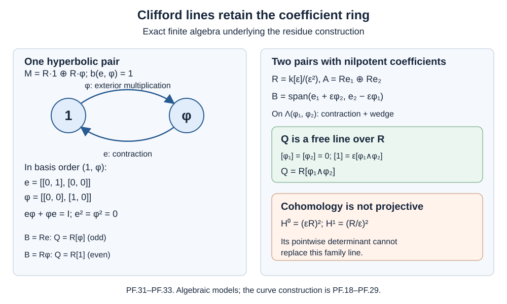
Figure 2. Finite coefficients underlying the family line. The left panel shows the two basis vectors of (PF.31), with contraction \(e:\phi\mapsto1\) and exterior multiplication \(\phi:1\mapsto\phi\). The right panel shows the exact graph and relations (PF.32)–(PF.33), with \(\epsilon^2=0\). It compares the free Clifford quotient with the nonprojective cohomology modules. These are algebraic models of the finite residue construction, not sampled ranks of a geometric family. The full curve construction and descent are §§2.5–2.8. Free human-source reading for the normalized half twist is Gaitsgory–Raskin, Proof of the geometric Langlands conjecture I, §1.1; for the Clifford and residue objects, see Beilinson–Drinfeld, Quantization of Hitchin's integrable system, §§4.2–4.4.
Exercise 2.A. Verify (PF.31), and compute the quotients for the coincident and transverse one-pair Lagrangians. Why is the output a line over every coefficient ring?
Solution 2.A. The matrix products are \(e\phi=\operatorname{diag}(1,0)\) and \(\phi e=\operatorname{diag}(0,1)\); both squares are zero. In the coincident case \(eM_A=R1\), so \(M_A/eM_A=R\phi\). In the transverse case \(\phi M_A=R\phi\), so \(M_A/\phi M_A=R1\). Both are split projections onto a free rank-one module. Their duals are the Pfaffian lines, respectively odd and even. There is no field or reducedness hypothesis in these equations.
Exercise 2.B. Check all relations in the nilpotent example, and explain why the kernel of (PF.32) is not a vector bundle over \(\operatorname{Spec}R\).
Solution 2.B. On the exterior basis \(1,\phi_1,\phi_2,\phi_1\wedge\phi_2\), the first operator has values \(\epsilon\phi_2,\ 1-\epsilon\phi_1\wedge\phi_2,\ 0,\ \phi_2\). The second has values \(-\epsilon\phi_1,\ 0,\ 1-\epsilon\phi_1\wedge\phi_2,\ -\phi_1\). Their span gives exactly (PF.33); the map to \(R\) specified there proves that no further relation survives. The matrix kernel consists of pairs annihilated by \(\epsilon\), namely \((\epsilon R)^2\). Its reduction modulo \(\epsilon\) has dimension two, so a projective kernel over the local ring \(R\) would be free of rank two and have \(k\)-dimension four. The actual kernel has \(k\)-dimension two. Thus it is not projective. Its fibrewise determinant is not a line construction compatible with this coefficient base.
Exercise 2.C. In (PF.25), remove the specified constant determinant identification. What term prevents the normalized cancellation? Apply the answer to the adjoint representation of a torus.
Solution 2.C. The two point quotients leave the ratio \(\det E_y\otimes(\det E_{0,y})^{-1}\), which is a line on the parameter scheme and need not be trivial. Equality of ranks alone does not cancel it. For the adjoint representation of a torus, the entire bundle is constant, not just its determinant. Thus that ratio is canonically trivial at every point, the two Pfaffians in (PF.28) coincide, and the normalized half root is the trivial line. Its normalized square map and its value at the trivial bundle are both the identity.
Exercise 2.D. For three admissible cutoffs \(D\leq D'\leq D''\), identify the isotropic modules removed in successive comparisons and verify their cocycle. Explain why a square-root choice made independently at every geometric bundle would not prove this.
Solution 2.D. The total removed module is \(H^0(V(-D)/V(-D''))\); its submodule \(H^0(V(-D')/V(-D''))\) has quotient \(H^0(V(-D)/V(-D'))\). Both Clifford comparison composites are induced by the inclusion of the same perpendicular subalgebra into \(\mathrm{Cl}(W_{D''})\), with those isotropic generators killed. Each transverse quotient has the distinguished class \(1\), so these maps agree over every ring, including rings with nilpotents. The determinant comparison follows the same ordered exact sequence in (PF.17), and scalar multiplication by \(i\) commutes with it. Independent pointwise root choices give neither these coefficient maps nor their composition identity; they cannot replace the descent construction.
3. Singular support and what nilpotence requires
For a coherent D-module on a smooth scheme, a good filtration produces a finitely generated module over \(\operatorname{gr}\mathcal D_S=\operatorname{Sym}_{\mathcal O_S}T_S\). Its support in \(T^*S\), independent of the good filtration, is its characteristic variety. On a smooth stack this condition is tested on smooth charts and descends. For arbitrary objects, §3.12 gives the cohomological union convention and proves its Serre and colimit rules; its union need not be closed. Thus a statement about the full category does not assign a finite good filtration to every object.
For a smooth map \(f:S\to Y\), a covector on \(Y\) pulls back through \(df^*\) to one on \(S\). This is the comparison used on charts; \(T^*Y\) must retain the stack cotangent geometry computed in Lesson 2. Twisting differential operators by a line does not change their associated graded algebra or this support condition.
Proposition 3.1. A finite-rank flat connection on a smooth scheme has characteristic variety the zero section over its nonzero fibres. A lisse object on a smooth stack has singular support contained in the zero section. For the nonzero constant object on \(Y\), the support is the full zero section.
Proof. Convert to a left D-module \(E\), and take the filtration \(F_iE=0\) for \(i<0\), \(F_iE=E\) for \(i\ge0\). It is good: its associated graded is the finite-rank \(\mathcal O_S\)-module \(E\), concentrated in filtration degree zero. The principal symbol of a vector field has positive degree and acts by zero on this graded module, since the connection maps \(E\) to \(E\). All fibre-linear functions on \(T^*S\) therefore annihilate it. The support is precisely the zero section over the ordinary support of \(E\). For a flat vector bundle this is a union of connected components.
A bounded complex of connections has the same containment, by the support rule for exact triangles. The large lisse category is defined locally with the corresponding colimit closure. Smooth pullback tests the stack condition, so the containment descends. The constant connection is nonzero on every chart and every component; its support is the whole zero section. \(\square\)
The qualification about nonzero fibres is necessary: the zero object has empty singular support, and a local system supported on one open-and-closed component does not fill the other components.
For a coherent D-module the converse on a smooth scheme is also useful. If its characteristic variety lies in the zero section, a power of the positive-symbol ideal annihilates its associated graded module. That module is therefore finite over \(\mathcal O_S\), and its good filtration is bounded above locally. Hence the original module is \(\mathcal O_S\)-coherent and its D-action is an integrable connection. Such a coherent module with connection is locally free in characteristic zero. One can check this on a completed smooth local ring: commuting connection operators \(\nabla_i\) give the formal Taylor projection \[ P(m)=\sum_{\alpha\ge0} \frac{(-t)^\alpha}{\alpha!}\nabla^\alpha m . \] The series converges in the maximal-ideal topology. The commutator \([\nabla_i,t_j]=\delta_{ij}\) shows \(\nabla_iP(m)=0\) and \(P(t_im)=0\). Thus \(P\) identifies the fibre with horizontal lifts, and the inverse Taylor expansion identifies the completed module with the free module on that fibre. Faithful flatness of completion proves local freeness. Consequently coherent zero-support modules are precisely finite-rank flat connections; the large zero-support condition uses their ind and derived version.
Using a nondegenerate invariant form when we identify adjoint and coadjoint bundles, the cotangent stack consists of Higgs bundles \((P,\phi)\). Let
\[ \operatorname{Nilp}_G =\{(P,\phi):\phi\text{ is pointwise nilpotent}\} =h^{-1}(0)\subset T^*Y . \]
Nilpotence kills the central component of a Higgs field as well as its invariant polynomials in the semisimple directions. Define the full subcategory
\[ \operatorname{Dmod}_{1/2,\operatorname{Nilp}}(Y) =\{M:\operatorname{SS}(M)\subset\operatorname{Nilp}_G\}. \tag{3.1} \]
The constant object belongs to it. A general object of the full de Rham automorphic category need not: on the Picard variety of a positive-genus curve, a skyscraper D-module has the entire cotangent fibre as characteristic variety.
Regularity theorem — not yet proved. Under our characteristic-zero curve and group assumptions, (3.1) equals its subcategory obtained from ind-regular holonomic D-modules on affine charts, followed by descent. In particular its objects are locally ind-holonomic with regular singularities. The exact source is AGKRRV, Corollary 16.5.6, headed “The regular singularity property”; GLC I, §4.2.1 and its footnote states the equality and the chartwise meaning of ind-completion. For this independently supported category, GFP.55–GFP.56 gives regularity once Hecke-lisse membership is known. The converse from independent nilpotent support and its supported generation remain necessary for the full theorem. Sections 3.16–3.19 prove finite chart-point detection and the conditional generation argument. Sections 3.20–3.22 verify the nilpotent chart dimension hypothesis and its full unbounded detection consequence; regularity of every independently nilpotent-supported object still requires that support converse.
The word “ind” matters. An infinite direct sum of regular connections is an allowed object, with no finite-rank assertion. On an unbounded stack, one must also distinguish global compactness, chartwise constructibility, and coherent or holonomic cohomology. The explicit counterexample in §5 prevents identifying these notions.
Extension from an arbitrary open can add characteristic directions at its boundary. Sections 3.2–3.15 prove that both extensions preserve nilpotent support on a cofinal system of suitable bounded opens, including arbitrary unbounded inputs. The free AGKRRV paper, §19, “Preservation of nilpotence of singular support”, is further reading. The theorem does not assert preservation for every open.
3.2. The cotangent relation for proper direct image
We first prove a support estimate for bounded coherent D-modules. The large nilpotent category will require a further argument; no ind-completion assertion is part of this estimate.
Let \(f:V\to Z\) be a proper morphism of smooth finite-type schemes in characteristic zero. Write \[ C_f=V\times_ZT^*Z, \qquad a(v,\eta)=(v,df_v^*\eta), \qquad b(v,\eta)=(f(v),\eta). \tag{NS.1} \] For a bounded coherent complex, \(\operatorname{Ch}\) means the union of the characteristic varieties of its cohomology modules. Then \[ \operatorname{Ch}(f_{\mathrm{dR},*}M) \subset b\bigl(a^{-1}\operatorname{Ch}(M)\bigr). \tag{NS.2} \] The image on the right is closed: \(b\) is the base change of a proper morphism. The estimate also proves that the direct image is bounded and coherent. We give the argument, including the filtration step.
It suffices to treat one coherent right D-module and an affine open in \(Z\). Choose a good filtration \(F\) of \(M\), locally bounded below. Independence of good filtrations is proved in Good filtrations and the characteristic variety. We spell out the global lattice needed for this proof.
If \(K\) is a quasi-coherent sheaf on a Noetherian scheme and \(H\subset K|_U\) is coherent on a quasi-compact open, it extends to a coherent subsheaf of \(K\). First suppose the scheme is affine. Cover \(U\) by finitely many principal opens \(D(f_i)\), and lift finite generators of \(H|_{D(f_i)}\) to fractions of sections of \(K\). Multiply their numerators by a sufficiently large power of \(f_i\). The resulting sections belong to \(H\) on all of \(U\): their classes modulo \(H\) vanish on \(D(f_i)\), so are killed by powers of \(f_i\) on each chart of a finite cover of \(U\). A common exponent works. They still generate on \(D(f_i)\). The finite module generated by all these sections therefore restricts exactly to \(H\). For a general Noetherian scheme, adjoin one member of a finite affine cover at a time. The affine assertion extends the current coherent submodule across that chart with exactly the same restriction on the overlap; glue the two equal submodules there. This gives the assertion on the entire scheme.
Now choose finitely many local D-generators of \(M\). Extend the coherent \(\mathcal O\)-submodules that they generate by the preceding assertion, and take their finite sum \(F_0\). It generates \(M\) over \(\mathcal D_V\). Set \(F_pM=F_0\,F_p\mathcal D_V\), and set it to zero for negative \(p\). These are locally finite \(\mathcal O_V\)-modules, and their graded module is finite over \(\operatorname{Sym}T_V\). This supplies a global good filtration without requiring that \(V\) be affine or projective.
The transfer module is resolved by its Spencer complex. After tensoring with \(M\), its terms are \[ M\otimes_{\mathcal O_V}\bigwedge^r T_V \otimes_{\mathcal O_V}f^*\mathcal D_Z, \qquad 0\le r\le\dim V . \tag{NS.3} \] Use the total order filtration, with the exterior term shifted so that the differential has filtration degree zero. This computes the derived transfer tensor, even when \(M\) has \(\mathcal O_V\)-torsion. Indeed, before tensoring, the Spencer terms are flat left \(\mathcal D_V\)-modules. Their graded differential is the Koszul differential for \[ \xi_V-df^*\xi_Z \tag{NS.4} \] in \(\operatorname{Sym}T_V\otimes_{\mathcal O_V}f^*\operatorname{Sym}T_Z\). These form a regular sequence: successively eliminate the fibre coordinates \(\xi_V\), each of which has coefficient one. Thus the untensored complex is a resolution of the transfer module. The finite Koszul argument and the chain rule are the same ones used in Inverse images.
The associated graded of (NS.3) is the Koszul complex for (NS.4) with coefficients in \(\operatorname{gr}_F M\otimes f^*\operatorname{Sym}T_Z\). Every element of (NS.4) acts null-homotopically on this complex: wedge insertion supplies the homotopy. Its cohomology is therefore killed by the ideal of the cotangent relation. It is coherent on that relation, and its support lies in \[ a^{-1}\operatorname{Ch}(M)\subset C_f . \tag{NS.5} \] This assertion concerns cohomology, not the individual Spencer terms, which need not be finite over \(f^*\operatorname{Sym}T_Z\). To fix the derived object being pushed, put \(T=T^*V\times_V C_f\) and regard the graded coefficient module as a sheaf on \(T\). The cotangent relation gives a closed immersion \(\iota:C_f\hookrightarrow T\). The graded Koszul complex is the underlying complex of its derived restriction \(L\iota^*\). Indeed tensoring a free resolution of the coefficient module with \(\mathcal O_{C_f}\) computes this restriction, whereas resolving \(\mathcal O_{C_f}\) by the monic Koszul complex computes the same derived tensor. In (NS.6), \(\operatorname{gr}(\mathrm{Sp}_fM)\) denotes that derived restriction on \(C_f\); we do not push the individual ambient Spencer terms by a map defined only on the relation.
Push the graded complex to \(T^*Z\). Its cohomology is coherent by proper coherent direct image, proved in Coherence of higher direct images under proper morphisms, Theorem 4.1. Apply that theorem to \(b:C_f\to T^*Z\); its hypotheses hold after the affine change of base \(Z\leftarrow T^*Z\). A finite affine cover computes quasi-coherent cohomology in a fixed finite range. The Spencer length is also finite. The hypercohomology spectral sequence therefore has finitely many cohomological rows, with coherent terms supported in the closed set on the right of (NS.2).
Here is why passing back from the graded complex loses no support information. Compute the filtered pushforward by a finite Čech complex on \(V\). Its filtration is exhaustive and has a common lower bound; every filtration piece of each Spencer term is \(\mathcal O_V\)-coherent. The first page of the resulting filtration spectral sequence is \[ E_1^i=\mathcal H^i Rb_*\operatorname{gr}(\mathrm{Sp}_fM), \tag{NS.6} \] where the filtration grading is retained. The direct sum over the finite range of \(i\) is a finite graded module over \(\operatorname{Sym}T_Z\), on each affine chart of \(T^*Z\). All differentials are linear over that ring: they commute with the filtered right \(\mathcal D_Z\)-action, and a commutator lowers the order filtration.
Let \(B_r\subset E_1\) be the accumulated boundaries through page \(r\), pulled back to the first page. They form an increasing sequence of graded submodules. Noetherianity gives \(B_r=B_{r+1}=\cdots\) for some finite \(r\). Each subsequent differential has image measured by the next quotient of boundaries, so it is zero. The pages consequently stabilize at a finite stage. The common lower bound of the original filtration and this finite stabilization give an exhaustive separated induced filtration on the cohomology of the pushforward, whose graded module is \(E_\infty\). One can check convergence directly. Fix a filtration degree \(p\) and represent a class on the stable page by an approximate cycle. Each lifting correction lowers the degree of its differential. The next obstruction is precisely the corresponding later differential of the spectral sequence and vanishes after stabilization. Continue until that differential reaches the common lower bound, when it is zero. Only finitely many corrections occur for this fixed \(p\). A genuine boundary likewise has a primitive of finite filtration degree, so it appears among the accumulated boundaries and cannot survive the stable page. No completion or infinite-order boundary is introduced. The induced filtration is good, because \(E_\infty\) is a finite graded subquotient of \(E_1\). Its support is contained in the support of \(E_1\). This proves (NS.2) and coherence. The finite Čech and Spencer lengths prove boundedness.
For a bounded coherent complex, filter by its finite cohomological truncations. The one-module result, the exact-triangle support rule and the fixed amplitude bound give the same assertion for the complex. All density conventions and cohomological shifts in the right-module direct image leave characteristic varieties unchanged.
3.3. Smooth pullback and a closed embedding
Two local calculations will accompany (NS.2). If \(u:A\to Z\) is smooth, then \[ \operatorname{Ch}(u^!M) =du^*\bigl(A\times_Z\operatorname{Ch}(M)\bigr). \tag{NS.7} \] Étale locally \(u\) is a projection. Its transfer tensor is the ordinary flat \(\mathcal O\)-pullback, with the trivial connection in the additional coordinates. Filter it by the pulled-back good filtration. The graded module is the flat pullback of \(\operatorname{gr}M\), with every additional tangent symbol acting by zero. Faithful flatness gives equality of supports. This proves (NS.7), and étale descent glues it. The normalization shift in \(u^!\) does not affect support.
For a closed immersion \(i:A\hookrightarrow Z\) of smooth schemes, let \(\rho:T^*Z|_A\to T^*A\) be restriction. Then \[ \operatorname{Ch}(i_*M)=\rho^{-1}\operatorname{Ch}(M). \tag{NS.8} \] In normal coordinates the transfer module adjoins the normal derivatives freely. Give each of them order one. Its graded module is \(\operatorname{gr}M\) tensored with the polynomial ring in the normal covectors, supported over \(A\). This proves (NS.8). The underlying normal-coordinate module and its derived inverse are proved in Kashiwara's equivalence and singular spaces, §§1–3. These formulas apply to bounded coherent complexes by finite truncation.
3.4. A proper weighted blow-up
Fix positive integers \(d_1,\ldots,d_n\), with \(n>0\). Put \(E=\mathbb A^n\), and let \(\mathbb G_m\) act by \(\lambda v_i=\lambda^{d_i}v_i\). Define \[ Q=[(E\setminus0)/\mathbb G_m],\qquad B=[(\mathbb A^1_t\times(E\setminus0))/\mathbb G_m], \quad\lambda(t,v)=(\lambda^{-1}t,\lambda^{d_i}v_i). \tag{NS.9} \] The map \(q:B\to Q\) is a line bundle. Its zero section is \(Q\). There is a morphism \[ p:B\longrightarrow E,\qquad x_i=t^{d_i}v_i . \tag{NS.10} \] Outside the zero section, set \(t=1\) by the unique scaling \(\lambda=t\). Thus \(p:B\setminus Q\simeq E\setminus0\), and \(p^{-1}(0)=Q\).
Both \(Q\) and \(B\) are smooth Deligne–Mumford stacks. At \([v]\in Q\), the stabilizer is \[ \mu_{\gcd\{d_i:v_i\ne0\}}. \tag{NS.11} \] It is finite étale in characteristic zero. For \(t\ne0\) the extra weight \(-1\) makes the stabilizer trivial. More explicitly, on the chart \(v_i\ne0\), adjoin a \(d_i\)-th root and set \(v_i=1\). This gives étale quotient presentations by \(\mu_{d_i}\); the remaining coordinates and \(t\) form an affine space. The infinitesimal action is nonzero on the atlas, so the quotient is smooth.
We prove that \(p\) is proper. Let \(L\) be a common multiple of all \(d_i\). The coordinate power map \[ (v_i)\longmapsto(v_i^{L/d_i}) \tag{NS.12} \] is finite, equivariant for the weights \((d_i)\) on its source and the common weight \(L\) on its target, and preserves the complement of the origin. Its map of quotient stacks is finite representable: pulling back to the target atlas recovers the finite equivariant map of schemes. The common-weight quotient is a \(\mu_L\)-gerbe over \(\mathbb P^{n-1}\). On a standard projective chart it is \(B\mu_L\) times that chart, because taking an \(L\)-th root trivializes the torsor. The map \(B_T\mu_L\to T\) is proper: it has finite diagonal and finite presentation, and remains universally closed, as seen after its finite étale surjective atlas \(T\to B_T\mu_L\). Properness descends along these projective charts. Consequently \(Q\) is proper.
The morphism \[ (q,p):B\longrightarrow Q\times E \tag{NS.13} \] is finite representable. Pull it back to \(E\setminus0\to Q\), and work where \(v_i\) is invertible. The source algebra is generated by \(t\), with relations \(x_j=t^{d_j}v_j\); in particular \(t\) satisfies the monic equation \(t^{d_i}=x_i/v_i\). It is thus finite over the target algebra. Projection \(Q\times E\to E\) is proper, so (NS.13) proves properness of \(p\). Finiteness does not assert that (NS.13) is a closed immersion.
The coherent-pushforward argument in §3.2 also applies to this particular finite-inertia source. Here are the requisite quasi-coherent facts. On the charts just described, the coarse morphism is the quotient of an affine scheme by \(\mu_{d_i}\). Taking invariants is exact: the operator \(d_i^{-1}\sum_{\zeta\in\mu_{d_i}}\zeta\) is a projection onto invariants. The invariant algebra is Noetherian and the original algebra is finite over it. To see finiteness, choose finitely many algebra generators and use for each generator its monic orbit polynomial; bounded powers of those generators span a finite module over the invariant subalgebra. Invariants of a finite module are then finite. The same statements hold after arbitrary extension of the base field and after adjoining the cotangent coordinates of \(E\), on which the finite group acts trivially.
The coarse charts glue to a proper scheme over \(E\). An explicit construction is \[ B_{\mathrm c}=\operatorname{Proj} \bigoplus_{m\ge0}J_m z^m, \quad J_m=(x^a:\textstyle\sum_i d_i a_i\ge m). \tag{NS.14} \] The graded algebra is generated over \(k[x]\) by the finitely many \(x_i z^r\), \(1\le r\le d_i\). Indeed distribute the integer \(m\) among the available \(d_i\) units of weight for each factor of a monomial. Its Proj charts \(D_+(x_i z^{d_i})\) cover: a positive generator \(x_i z^r\) has a power divisible by \(x_i z^{d_i}\). On this chart the degree-zero monomials are exactly \(k[t,v_j:j\ne i]^{\mu_{d_i}}\), using \(x_i=t^{d_i}\), \(x_j=t^{d_j}v_j\). The equality follows by comparing the nonnegative exponent of \(t\) and the congruence \(-a+\sum_{j\ne i}d_jb_j\equiv0\pmod {d_i}\). These identifications agree on overlaps. This proves the coarse-chart construction, including separation and finite type. Properness also follows from that of \(B\): finite-group quotient charts identify the coarse topological space with the orbit space after every field extension and base change, so the image of a closed set downstairs is the image of its closed inverse image upstairs. Thus \(B_{\mathrm c}\to E\) is universally closed as well as separated and of finite type.
Exact coarse pushforward followed by proper scheme pushforward now proves coherent direct image for quasi-coherent sheaves on \(B\), with a finite cohomological bound from a finite affine cover of \(B_{\mathrm c}\). The same argument works for \(B\times_E T^*E\). Good filtrations can be chosen on \(B\). On an open chart \([V_i/\mu_{d_i}]\), apply the coherent-submodule extension argument in §3.2 to the affine scheme \(V_i\), and then take the finite sum of all its group translates. If the submodule being extended is equivariant on the open overlap, this sum restricts exactly to it. It therefore descends to the quotient chart. Adjoining these finitely many open charts and gluing their equal submodules on overlaps proves the same extension assertion on \(B\). Extend the \(\mathcal O\)-submodules generated by finite local D-generators and take their sum, exactly as in §3.2. This is a global good lattice. The Spencer calculation is étale local, so the proof of (NS.2) applies unchanged. Products with a smooth affine base \(S\) retain all these properties. In particular no coefficient of a D-module on \(S\) has been replaced by its value at a point.
3.5. A horizontal covector survives contraction
Let \(S\) be a smooth affine scheme, and let \(j:S\times(E\setminus0)\hookrightarrow S\times E\). Suppose that \(F\) is a bounded coherent D-module complex with strong \(\mathbb G_m\)-equivariance for the weighted action, trivial on \(S\). It descends to a bounded coherent complex \(A\) on \(S\times Q\). Coherence of the descended complex follows on the finite étale charts of \(Q\), where descent is just finite-group equivariance.
On the weighted line bundle, its extension across \(t=0\) is, locally on \(Q\), \[ N\boxtimes A, \qquad N=(j_{\mathbb G_m})_*\mathcal O_{\mathbb G_m} =\mathcal D_{\mathbb A^1}/ \mathcal D_{\mathbb A^1}(t\partial_t+1), \quad\operatorname{Ch}(N)=\{t\tau=0\}. \tag{NS.15} \] The displayed cyclic presentation uses left modules and generator \(t^{-1}\). Repeated multiplication by \(t\) and differentiation generate every Laurent monomial; the relation reduces the PBW monomials to exactly those Laurent monomials, proving the presentation. The order filtration gives the equation \(t\tau=0\). Tensor good filtrations over the field; their graded tensor is exact, and hence \[ \operatorname{Ch}(N\boxtimes A) =\{t\tau=0\}\times\operatorname{Ch}(A). \tag{NS.16} \] For complexes the formula follows by finite truncation and exactness of the external tensor with \(N\). In particular the slice \(t=0,\tau=0\) imposes exactly the characteristic condition on \(A\), including its base covector.
Proper pushforward by \(\mathrm{id}_S\times p\) gives \(j_*F\), since it is the identity on the punctured open and direct images compose. Thus (NS.2) proves both its bounded coherence and the implication \[ ((s,0);\xi,0)\in\operatorname{Ch}(j_*F) \ \Longrightarrow\quad \text{some }v\ne0\text{ satisfies } ((s,v);\xi,0)\in\operatorname{Ch}(F). \tag{NS.17} \] Indeed the pullback of the covector \((\xi,0)\) through the proper map has zero line and quotient components, and unchanged component \(\xi\) along \(S\). Formula (NS.16) says that \((\xi,0_Q)\) lies in \(\operatorname{Ch}(A)\). Pull it back along the smooth torsor \(E\setminus0\to Q\), using (NS.7), to obtain the covector in (NS.17).
An arbitrary covector \(((s,0);\xi,\eta_i)\) in \(\operatorname{Ch}(j_*F)\) also supplies the horizontal one in (NS.17). For \(\lambda\ne0\), equivariance and codifferential pullback at the fixed point give \[ ((s,0);\xi,\lambda^{d_i}\eta_i) \in\operatorname{Ch}(j_*F). \tag{NS.18} \] Closedness lets \(\lambda\) tend algebraically to zero. More precisely the preimage of the characteristic variety under this morphism from \(\mathbb A^1\) is closed and contains \(\mathbb G_m\), and hence contains zero. The operation in (NS.18) is the codifferential pullback, not the covariant cotangent action, whose fibre weights have the opposite sign.
This statement also holds for a smooth positively graded affine family \(W\to S\), with fixed section \(S\), whenever there is an equivariant closed immersion \(i:W\hookrightarrow S\times E\) taking that section to zero. Such an immersion was constructed in §1.14. Put \(W^\circ=W\setminus S\). Apply the ambient result to \(i_*F\) on the punctured family. A boundary covector of \(j_{W,*}F\) lifts by (NS.8) to an ambient covector. First apply (NS.18), and then (NS.17). The resulting point belongs to \(W^\circ\), since the ordinary support of \(i_*F\) is contained in \(W\). Restricting its horizontal covector by (NS.8) gives \[ (s;\xi,\eta)\in\operatorname{Ch}(j_{W,*}F)|_S \ \Longrightarrow\quad \exists w\in W^\circ_s: (w;d\pi_w^*\xi)\in\operatorname{Ch}(F), \qquad\pi:W\to S. \tag{NS.19} \] Here \(\xi\) is the restriction of the boundary covector to the fixed section. The normal covector \(\eta\) is removed by codifferential contraction; the base covector is retained throughout. All these arguments are over the whole base \(S\).
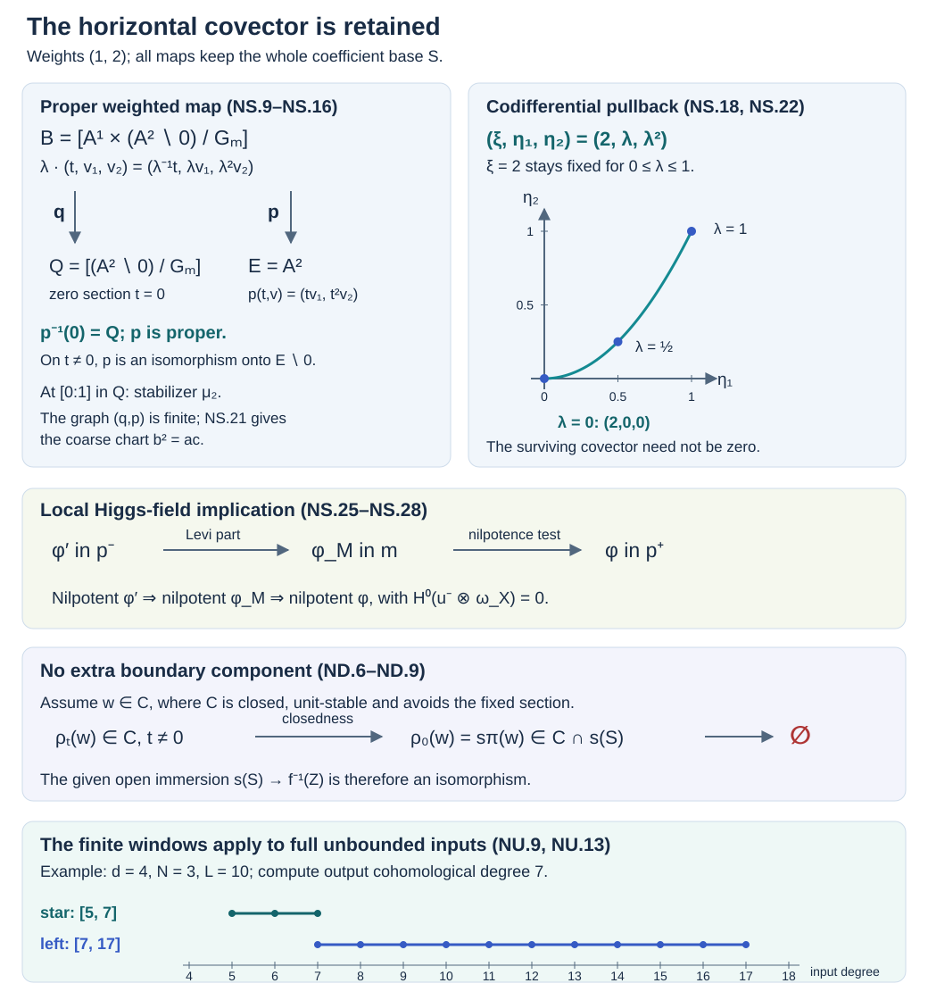
Figure 3.3. The map has weights \(1,2\). The plotted normal-covector path is the exact slice \((\xi,\eta_1,\eta_2)=(2,\lambda,\lambda^2)\), \(0\le\lambda\le1\); the base covector remains \(2\). The lower diagram records the two nilpotence implications used in §3.7, under its stated characteristic-support hypothesis. The closed-orbit panel is the contradiction proving the whole boundary inverse image in §3.9; its point in the complementary component is an assumption for contradiction. The last panel shows the exact integer windows of Exercise 3.H and (NU.13), with output degree seven and the stated atlas bounds.
3.6. Two checks of the weighted construction
Take \(d_1=1,d_2=2\). The formula is \[ p(t,v_1,v_2)=(tv_1,t^2v_2). \tag{NS.20} \] The point \([0:1]\in Q\) has stabilizer \(\mu_2\). On the atlas with \(v_2=1\), the group acts by \((t,v_1)\mapsto(-t,-v_1)\), and the coarse invariant algebra is \[ k[t,v_1]^{\mu_2} =k[a,b,c]/(b^2-ac), \quad a=t^2,\ b=tv_1,\ c=v_1^2. \tag{NS.21} \] Every invariant monomial has even total degree. If both exponents are odd, divide by \(tv_1\); if both are even, use powers of \(t^2\) and \(v_1^2\). This proves generation, and comparison of the monomial bases proves that the displayed relation is the only one. The quotient chart can therefore have a singular coarse space although the stack chart is smooth.
Over \(v=(0,1)\), (NS.13) maps \(t\) to \((0,t^2)\). Two values \(t\) and \(-t\) can have the same image after this atlas change. It is finite but is not a closed immersion. At a boundary covector \((\xi,\eta_1,\eta_2)\), the operation used in the proof is \[ (\xi,\eta_1,\eta_2) \longmapsto(\xi,\lambda\eta_1,\lambda^2\eta_2). \tag{NS.22} \] It preserves the base component exactly.
Exercise 3.A. Determine the stabilizer of \([1:0]\) and \([0:1]\) for weights \((2,3)\), and the stabilizer at a point with both coordinates nonzero. Explain why adding a nonzero line coordinate \(t\) in (NS.9) removes every stabilizer.
Solution 3.A. They are respectively \(\mu_2\), \(\mu_3\), and \(\mu_{\gcd(2,3)}=1\). A stabilizing scalar with \(t\ne0\) must satisfy \(\lambda^{-1}t=t\), and therefore \(\lambda=1\). This uses the line coordinate as well as the weighted projective coordinates.
Exercise 3.B. For weights \((1,2)\), compute the codifferential pullback at the fixed point and the covariant cotangent action. Which operation extends to \(\lambda=0\) on all covectors?
Solution 3.B. The tangent map is \(\operatorname{diag}(\lambda,\lambda^2)\), so codifferential pullback multiplies covector components by \(\lambda,\lambda^2\). The covariant cotangent action uses the inverse transpose and multiplies them by \(\lambda^{-1},\lambda^{-2}\). Only the first operation extends on all covectors to zero, where it gives the zero normal covector. A covector in an additional fixed base direction is unchanged by both operations.
Exercise 3.C. Let \(j:\mathbb A^2\setminus0\hookrightarrow\mathbb A^2\). Compute \(j_*\mathcal O_{\mathbb A^2\setminus0}\) as a complex of left D-modules. Does extension preserve zero characteristic support in this example?
Solution 3.C. Use the cover \(D(x)\cup D(y)\). The complex is \[ [\ k[x,y,x^{-1}]\oplus k[x,y,y^{-1}] \longrightarrow k[x,y,x^{-1},y^{-1}]\ ], \quad (a,b)\longmapsto b-a . \tag{NS.23} \] The kernel is \(k[x,y]\). In the cokernel only the monomials with both exponents negative remain. The class \(x^{-1}y^{-1}\) is killed by \(x\) and \(y\), and its repeated derivatives form a basis, with nonzero factorial coefficients. Hence the cokernel is \(\delta_0=\mathcal D/(\mathcal D x+\mathcal D y)\). There is no other cohomology. Consequently \[ \operatorname{Ch}(j_*\mathcal O) =0_{\mathbb A^2}\ \cup\ T^*_0\mathbb A^2 . \tag{NS.24} \] Extension has added the entire boundary cotangent fibre. This is a direct reason why a suitable-open preservation theorem needs geometric hypotheses.
3.7. The Levi part of a nilpotent covector
Here is the Lie-algebra test needed to apply (NS.19). For a parabolic \(P\subset G\) with Levi \(M\), write \(x=x_M+x_U\in\mathfrak p\). Then \[ x\text{ is nilpotent in }\mathfrak g \quad\Longleftrightarrow\quad x_M\text{ is nilpotent in }\mathfrak m . \tag{NS.25} \] Nilpotence includes vanishing of the reductive central component.
To prove the test, choose a faithful algebraic representation \(G\hookrightarrow GL(V)\). Intrinsic nilpotence is equivalent to nilpotence in this representation. For the derived algebra, this follows from preservation of Jordan decomposition in Complete reducibility: Casimir elements and Weyl's theorem, Theorem 5.1, proved there over every characteristic-zero field. The connected central torus acts diagonally: its algebraic representation is a direct sum of character spaces, as proved by the Laurent-monomial coaction calculation in §1.13. Its semisimple operator commutes with the represented semisimple and nilpotent Jordan parts of the derived algebra. The operator semisimple part is thus the image of the central component plus the intrinsic semisimple part. Faithfulness makes its vanishing equivalent to the vanishing of both components. This proves the faithful-representation criterion for a reductive algebra, including \(M\).
A central cocharacter of \(M\) gives a finite weight filtration of \(V\), on which the radical strictly raises the weights and the Levi preserves them. The existence of this integral cocharacter is proved in §1.5. In a basis ordered by these weights, \(\rho(x)\) is block triangular, with diagonal blocks the restrictions of \(\rho(x_M)\). Therefore \[ \det(T-\rho(x)) =\prod_a\det(T-\rho(x_M)|_{V_a}). \tag{NS.26} \] Its characteristic polynomial is \(T^{\dim V}\) precisely when every diagonal block has that polynomial. Over the algebraic closure this is equivalent to nilpotence, and extension of scalars detects the equality. The faithful-representation criterion proves (NS.25). For families the test is on every geometric fibre; characteristic support uses the resulting underlying closed nilpotent locus.
Now use the opposite family \(W\to S\) of §1.14. Its negative radical has a filtration with semistable graded pieces of slopes \(-\beta(\nu)\). For every outside positive root, §1.4 proves \(\beta(\nu)>\max(0,2g-2)\). Twisting by \(\omega_X\) gives \[ -\beta(\nu)+2g-2<0, \qquad H^0(X,\mathfrak u^-_{F_{P^-}}\otimes\omega_X)=0. \tag{NS.27} \] The vanishing holds also for nonsplit \(P^-\)-bundles: the radical-height filtration has the same Levi graded bundles, and the exact-sequence induction applies to every extension. The finite projective cohomology models of §1.4 show the vanishing with arbitrary coefficient modules and after every base change. Duality identifies it with the vanishing of \(H^1((\mathfrak g/\mathfrak p^-)_{F_{P^-}})\), which is the smoothness condition for the map to \(\operatorname{Bun}_G\) proved in §1.7.
At the split section a Higgs field consequently lies in \(\mathfrak p^+\otimes\omega_X\); its negative-radical component is zero. Restriction of its cotangent vector to the Levi section retains its \(\mathfrak m\)-component, say \(\phi_M\). Suppose the punctured-family complex is the smooth pullback of a bounded coherent complex with nilpotent support, and suppose the pullback of the boundary Higgs covector lies in the characteristic variety of its star extension. Formula (NS.19) supplies at some nonsplit point a covector \(\pi^*\phi_M\) in that pullback's characteristic variety. By (NS.7) it is the pullback of a nilpotent Higgs field \(\phi'\). Restriction from \(\mathfrak g^*\) to \((\mathfrak p^-)^*\) shows that \(\phi'\) annihilates \(\mathfrak u^-\), since \(\pi^*\phi_M\) does. Under the invariant form, the annihilator of \(\mathfrak u^-\) is \(\mathfrak p^-\). Thus \[ \phi'\in\mathfrak p^-\otimes\omega_X, \qquad (\phi')_M=\phi_M . \tag{NS.28} \] The first implication of (NS.25) makes \(\phi_M\) nilpotent. The reverse implication, applied to the original field in \(\mathfrak p^+\otimes\omega_X\), makes that field nilpotent. This proves the local boundary implication for the bounded coherent case in the stated good opposite-parabolic neighbourhood. Smooth charts of the Levi stack give precisely the affine bases \(S\) used above; their additional frame directions do not alter the Higgs component.
Sections 3.8–3.11 complete the bounded boundary assembly and dual-extension argument. Sections 3.12–3.15 prove the full-category passage. Regular singularities still require the spectral projector and its generation argument.
The free AGKRRV paper, §19, gives the weighted contraction geometry. Ginzburg’s Lectures on D-modules, §1.4, discusses filtered resolutions and support comparison; Schnell’s D-modules, Lecture 18, treats proper coherent direct image. The support argument and the finite-quotient case required here are proved in §§3.2–3.5.
3.8. Characteristic support and derived duality
For a smooth scheme \(A\) of dimension \(d\), the bounded coherent dual is \[ \mathbb D_A K= R\mathcal Hom_{\mathcal D_A}(K,\mathcal D_A) \otimes_{\mathcal O_A}\omega_A^{-1}[d] \tag{ND.1} \] when \(K\) is a left module; the density line changes the right output back to a left module. The finite local operator resolutions and biduality are proved in Holonomic D-modules and duality, Lemma 3.0 and equation (3.4). Their hypotheses are bounded coherent algebraic complexes, with no regular-singularity assumption. In particular every coherent module locally has a strict filtered free resolution of length at most \(2d\). We use that actual bound rather than a holonomic Ext-concentration statement.
Let \(a:T^*A\to T^*A\) send a covector to its negative. Then \[ \operatorname{Ch}(\mathbb D_A K) =a\operatorname{Ch}(K)=\operatorname{Ch}(K). \tag{ND.2} \] Here the last equality uses conicity. To prove the first containment, first take a coherent module \(K\) and its strict filtered resolution \(P^\bullet\). Filter \(\operatorname{Hom}_{\mathcal D_A}(P^\bullet,\mathcal D_A)\) by the shifts of its finite free terms. Its associated graded is \[ \operatorname{Hom}_{\operatorname{Sym}T_A} (\operatorname{gr}P^\bullet,\operatorname{Sym}T_A). \tag{ND.3} \] Every cohomology module of (ND.3) is supported on \(\operatorname{Ch}(K)\). Indeed, off that support the resolved module is zero. Its finite projective resolution is split exact there: split its last surjection onto its final projective term, remove that two-term summand, and continue. Its Hom complex is consequently exact there too. The cohomology of (ND.3) is finite, since its terms are finite over the Noetherian symbol algebra.
The filtered spectral-sequence argument of §3.2 now gives good filtrations on the dual cohomology and support contained in that graded support. There are finitely many free terms, a common lower filtration bound, and a finite first page; the accumulated-boundary stabilization used for (NS.6) applies. Formal transpose has leading symbol \[ \sigma(t_\eta P)(x,\xi)=\sigma(P)(x,-\xi). \tag{ND.4} \] For a vector field, its transpose is the negative vector field minus its divergence; the divergence has order zero. The product rule then proves (ND.4) for every operator. This gives the containment in (ND.2) after side change. Finite truncation triangles prove it for bounded coherent complexes. Apply the containment again to \(\mathbb D_AK\), and use biduality. Since \(a^2=1\), the reverse containment follows. Tensoring by any line changes neither the symbol algebra nor this calculation.
The same duality glues on a smooth stack, with the atlas normalization retained. If \(u:A\to Y\) is smooth of relative dimension \(r\), write its normalized chart object as \(u^!K[-r]\). The relevant compatibility is \[ u^!(\mathbb D_YK)[-r] \simeq\mathbb D_A\bigl(u^!K[-r]\bigr). \tag{ND.5} \] We explain the compatibility rather than treating the shift as immaterial. Étale locally a smooth map is a projection with \(r\) extra coordinates. Ordinary left-module pullback tensors with the trivial connection in those coordinates. Resolve that connection by the commuting vertical derivatives. The Koszul complex has length \(r\); its dual has only its top cohomology, the vertical density line, in degree \(r\). The inverse-density side change in (ND.1) cancels that line, and the dimension shift cancels this Koszul degree. Thus duality commutes with ordinary pullback. Since exceptional pullback is ordinary pullback shifted by \(r\), its dual has the opposite shift. Equivalently \(\mathbb D u^!=u^!\mathbb D[-2r]\), which is exactly (ND.5). For a variable tangent frame the top exterior line is the determinant of that frame, so the construction agrees on overlaps. The chain-rule transfer and its composition identify the comparison maps on iterated projections. They therefore satisfy the smooth-nerve cocycle.
Apply these comparisons to the smooth-nerve definition of D-modules from §1.12. The local bounded coherent duals give a Cartesian object; their intrinsic evaluation maps give its biduality. This defines \(\mathbb D_Y\) on objects whose normalized smooth-chart complexes are bounded coherent. This is a chartwise finiteness condition, and does not declare those objects globally compact. By (NS.7), (ND.2) and descent, it preserves the nilpotent support condition. The invariant nilpotent cone is conic and is unchanged by covector negation. The normalized half root gives the same assertions in the half-twisted category: the line side change and the sign sector of \(\mu_2\) are exactly the Morita transport of §1.15.
3.9. The whole inverse image of a boundary block
We strengthen a geometric point in the contraction diagram. In (GT.20) the fixed section maps by an open immersion into the inverse image of the locally closed block. On the open image where the block is closed, that inverse image is in fact the entire fixed section.
Work after a smooth affine Levi chart \(S\). Let \(\pi:W_S\to S\) be the positive affine contraction and \(s:S\hookrightarrow W_S\) its section. Let \(f:W_S\to V\) be the smooth bundle map, where the boundary block \(Z\subset V\) is closed. The earlier diagram proves an open immersion \[ s(S)\hookrightarrow f^{-1}(Z). \tag{ND.6} \] The section is also closed in \(W_S\). Consequently the complementary substack \(C=f^{-1}(Z)\setminus s(S)\) is closed in \(W_S\): it is the complement of the open substack (ND.6) in a closed substack. For every unit \(t\), inner conjugation gives a coherent isomorphism \(f\rho_t\simeq f\), as proved in §1.7. Both \(f^{-1}(Z)\) and the fixed section are therefore stable, so \(C\) is stable under the unit action.
Suppose \(C\) had a geometric point \(w\). The orbit map \[ \mathbb A^1\longrightarrow W_S, \qquad t\longmapsto\rho_t(w) \tag{ND.7} \] lies in \(C\) for every nonzero \(t\), and its value at zero is \(s\pi(w)\). The inverse image of the closed set \(C\) is closed and contains the dense open \(\mathbb G_m\), so it contains zero. This contradicts the definition of \(C\). Thus \(C\) has no geometric point and is empty. An open immersion with the same underlying points as its target is an isomorphism, including over nonreduced rings. Hence \[ f^{-1}(Z)=s(S) \tag{ND.8} \] as substacks, not merely as a set of bundles. This argument applies after every base change, and smooth descent gives the corresponding equality before choosing \(S\).
The same reasoning verifies the locality needed below. Let \(O\subset V\) be any open. Replace \(S\) by the open on which \(f s\) belongs to \(O\). On every fibre over that open, \(f^{-1}(O)\) is a unit-stable open containing the fixed section. If its closed complement contained a geometric point, its contracting orbit would again force the fixed point into that complement. Thus \[ W_S\big|_{(fs)^{-1}(O)}\longrightarrow O . \tag{ND.9} \] The full affine fibres remain available. The root cohomology estimates, smoothness, positive grading and equality (ND.8) survive this open base change. We can therefore apply the local support proof on ambient open restrictions without assuming that a sheaf on such an open already extends to a nilpotent sheaf on the original ambient stack.
Now let \(K\) on \(V\setminus Z\) have bounded coherent normalized chart complexes and nilpotent support. Equality (ND.8) gives the actual Cartesian open square with \(W_S\setminus s(S)\). Smooth open base change, proved by the localization complexes in Adjunctions, base change and the projection formula, §§1–2, identifies \[ f^!j_*K\simeq j_{W,*}f^!K, \qquad j:V\setminus Z\hookrightarrow V . \tag{ND.10} \] The affine chart's complex is strongly equivariant, because the coherent inner-conjugation isomorphisms act on its pullback from the bundle stack. Section 3.5 proves bounded coherence of the right side. The smooth charts over the Levi base cover \(W\), and \(W\to V\) is smooth surjective onto its image. Bounded coherence therefore descends. At a boundary Higgs covector, (NS.7) and (ND.10) supply precisely the characteristic-support hypothesis of §3.7. Its parabolic calculation makes that covector nilpotent. Off the boundary, the support is already nilpotent by the hypothesis on \(K\). We have proved \[ j_*K\text{ is chartwise bounded coherent and nilpotent} \tag{ND.11} \] for a single good boundary block, including every open restriction in (ND.9).
3.10. Finite boundary assembly and the dual extension
Take nested bounded cuts \(U_\theta\subset U_{\theta'}\) of §1.9, with \(\alpha_i(\theta)\ge\max(0,2g-2)\) for every simple root. Retain the fixed integral central and torsion labels; finite unions of such components are also allowed. Their closed difference is covered by finitely many locally closed admissible root blocks, by §§1.3 and 1.9. Each block has the smooth contraction neighbourhood of §1.7 and the stronger inverse-image equality (ND.8).
We prove star preservation by induction on the number of these blocks. The argument is local on the bounded ambient stack \(Y\). For a block \(Z_i\), choose its good neighbourhood and remove \(\overline Z_i\setminus Z_i\), so it is closed there. These neighbourhoods, together with \(Y\setminus Z\), cover \(Y\), where \(Z\) is the whole closed difference. A finite subcover exists because \(Y\) is quasicompact. On the neighbourhood of \(Z_i\), first extend from \(Y\setminus Z\) to the complement of \(Z_i\). The remaining difference is covered by the other blocks restricted to that complement. By (ND.9) they retain the single-block property. Induction gives a bounded coherent nilpotent extension to this intermediate open. Extend it once more across \(Z_i\), using (ND.11). Composition of open direct images gives the direct extension across the whole difference. Away from \(Z\) there is nothing to extend. Bounded coherence and the characteristic condition are checked on smooth charts and are local on this finite open cover. This proves \[ j_*:\operatorname{Dmod}^{b,\mathrm{coh}}_{1/2,\operatorname{Nilp}} (U_\theta) \longrightarrow \operatorname{Dmod}^{b,\mathrm{coh}}_{1/2,\operatorname{Nilp}} (U_{\theta'}). \tag{ND.12} \] The notation here means bounded coherent normalized chart complexes. It does not require global compactness on a stack, nor does it denote the full unbounded nilpotent category.
For this bounded class put \[ j_!K=\mathbb D_{U_{\theta'}} j_*\mathbb D_{U_\theta}K . \tag{ND.13} \] Equations (ND.2), (ND.5) and (ND.12) make the result bounded coherent and nilpotent. We check that it agrees with the left extension constructed in §1.15, rather than merely assigning that name to a dual complex.
On a smooth affine chart of the target and its open inverse image, a bounded coherent operator complex is compact. Its finite local free resolutions give compactness on affine opens, and the finite Zariski mapping-fibre argument (FT.2) glues compactness on a quasicompact smooth scheme. For bounded coherent test objects \(N\), biduality and the ordinary star adjunction give \[ \operatorname{RHom}(\mathbb D j_*\mathbb DK,N) \simeq\operatorname{RHom}(\mathbb DN,j_*\mathbb DK) \simeq\operatorname{RHom}(K,j^*N). \tag{ND.14} \] On these charts the source in the first Hom is coherent by (ND.12), and hence compact; \(K\) is compact on the open too. Both sides commute with colimits in \(N\). Free operator modules generate the affine categories, and their restrictions generate the categories on the quasicompact opens, by the star adjunction and its full faithfulness. Thus the equality extends from coherent tests to every chart object \(N\). These identities are natural: they are built from the intrinsic bidual evaluation and the transfer adjunction. The smooth comparison (ND.5) and open base change identify them on every term of the smooth nerve. Taking the limit of its mapping complexes proves (ND.14) for all \(N\) on the stack. This argument uses no interchange of that limit with a colimit and makes no compactness claim about \(K\) on the stack itself.
The uniqueness of a left adjoint identifies (ND.13) with the existing full extension functor when its input is in this bounded class. We have therefore proved both bounded extension assertions \[ j_*,j_!: \operatorname{Dmod}^{b,\mathrm{coh}}_{1/2,\operatorname{Nilp}}(U_\theta) \longrightarrow \operatorname{Dmod}^{b,\mathrm{coh}}_{1/2,\operatorname{Nilp}}(U_{\theta'}). \tag{ND.15} \] The cuts remain cofinal among bounded opens, with every genus and every connected reductive group included. Sections 3.12–3.15 provide the supported-heart and finite-amplitude passage to the full nilpotent category. No equivalence with the ordinary derived category of that heart, or ind-completion of globally compact holonomic objects, is used. Regular singularities remain to be proved by the spectral projector.
Exercise 3.D. In the proof of (ND.8), can a nonempty closed unit-stable subset of \(W_S\) avoid the fixed section? Explain why the conclusion gives equality as substacks, including nonreduced test rings.
Solution 3.D. A geometric point of such a subset would give a contracting orbit whose nonzero values lie in the subset. Closedness forces its value at zero, on the fixed section, into the subset. This is impossible. Therefore the complement of the open immersion (ND.6) has no point and is empty. The open immersion consequently has the entire target as its image and is an isomorphism. A bijection on geometric points alone would not exclude a nilpotent thickening. Here the map is already a schematic open immersion, by (GT.20); that hypothesis is essential.
Exercise 3.E. Why would finite boundary induction fail if single-block preservation were known only for restrictions of objects already defined on the original larger open? Locate the remedy in the proof.
Solution 3.E. The intermediate extension is an object on a smaller complement; it need not have a nilpotent extension to the larger open where the original block was constructed. Applying a theorem only to restrictions of such extensions would assume the result being proved. Equation (ND.9) retains the entire positive affine family over the smaller fixed-section base, and the local proof (ND.10)–(ND.11) applies to every bounded coherent nilpotent object on that smaller complement. This supplies the induction hypothesis without a circular extension assumption.
3.11. The finite cohomological window
Here is the exact categorical step that a full support-preservation proof must use. Let \(T:\mathcal C\to\mathcal E\) be an exact functor of stable categories with t-structures. Suppose there are integers \(A\le B\) such that \[ T(\mathcal C^{\ge0})\subset\mathcal E^{\ge A}, \qquad T(\mathcal C^{\le0})\subset\mathcal E^{\le B}. \tag{NW.1} \] These hypotheses concern arbitrary objects in the two aisles. A bound only on the heart is not being substituted for them. For every \(M\in\mathcal C\) and integer \(n\), its image cohomology is determined by a finite window: \[ H^n(T M) \simeq H^n\!\left(T\, \tau_{[n-B,n-A]}M\right). \tag{NW.2} \] The isomorphism means the two natural comparisons through the lower truncation; it does not require a map from that finite window to \(M\) in an arbitrarily chosen direction.
Indeed, apply \(T\) to the triangle with lower term \(\tau_{\le n-B-1}M\). The image of that lower term lies in \(\mathcal E^{\le n-1}\), by (NW.1), so both its degree-\(n\) and degree-\(n+1\) cohomology vanish. Thus \(H^n(TM)\) equals \(H^n(T\tau_{\ge n-B}M)\). Now truncate this last input above \(n-A\). The discarded term lies in \(\mathcal C^{\ge n-A+1}\), so its image lies in \(\mathcal E^{\ge n+1}\). Its degree-\(n-1\) and degree-\(n\) cohomology vanish. The remaining input is exactly the window in (NW.2). The two long exact sequences prove the assertion. There is no exchange of \(T\) with an infinite Postnikov limit.
For a quasicompact open immersion of our bounded stacks, the star functor has such a bound on the entire D-module category. Choose finitely many smooth affine charts of the target. In each chart the inverse image of the source is a quasicompact open, covered by finitely many principal opens. If at most \(N\) principal opens are required, its alternating localization complex has cohomological degrees \(0,\ldots,N-1\). Each localization is flat and exact on every underlying operator complex. Consequently, for all complexes and all integers \(a,b\), \[ j_*(\mathcal C^{\ge a})\subset\mathcal E^{\ge a}, \qquad j_*(\mathcal C^{\le b})\subset\mathcal E^{\le b+N-1}. \tag{NW.3} \] Take the maximum \(N\) over the finite atlas. The normalized smooth pullbacks are t-exact and jointly conservative, and open base change identifies their star images with these localization complexes. This proves (NW.3) on the stack. The finite complex also commutes with colimits; none of these assertions imposes a boundedness condition on its input.
To turn (ND.15) into the full nilpotent theorem, one must still verify the precise supported-heart criterion and approximation on the strong stack category, and the full lower cohomological bound for the left extension. If every supported heart object is a filtered colimit of bounded coherent supported objects, continuity first gives preservation on that heart. If the support condition is detected on all cohomology objects, (NW.2) then gives preservation on every object for a functor satisfying (NW.1): a finite window has a finite Postnikov filtration, and exactness and the Serre support rule retain the condition through that filtration. This is a proved implication with explicitly stated hypotheses. Sections 3.12–3.15 verify those additional stack and left-extension hypotheses and apply it to the full category.
Exercise 3.F. A functor has full cohomological amplitude \([0,2]\) in the sense of (NW.1). Which input cohomological degrees can affect \(H^5(TM)\)? Would bounds on bounded inputs alone suffice to invoke the proof?
Solution 3.F. Equation (NW.2) gives the window \([3,5]\). The proof discards tails that can be unbounded, so it requires the two full aisle bounds (NW.1). A bound verified only for bounded inputs cannot be applied to those tails without a further argument. Formula (NW.3) supplies that further argument for star extension, directly on arbitrary complexes.
The free AGKRRV paper, §19 and the appendix section on support for nonquasicompact stacks, provides further reading on suitable-open preservation and its finite-amplitude passage. Ginzburg’s Lectures on D-modules, §1.4, treats the filtered Hom construction. The duality support estimate, the whole inverse image of the block, and the finite bounded extension argument used here have been proved above.
3.12. Support on the entire D-module category
We make the large support convention of §3 precise. On a smooth affine scheme \(A\), let \(R=\Gamma(A,\mathcal D_A)\). For an arbitrary left operator module \(M\), put \[ \operatorname{SS}(M)= \bigcup_{L\subset M,\ L\text{ finite over }R} \operatorname{Ch}(L), \qquad \operatorname{SS}(K)=\bigcup_{n\in\mathbb Z} \operatorname{SS}(H^nK). \tag{NU.1} \] The first union uses genuine submodules. No filtration on the infinite module, boundedness of the complex or finite rank is required. For a coherent module its own inclusion occurs in the union, and all other terms have characteristic variety contained in its variety by the exact-sequence support rule. Thus (NU.1) gives the original characteristic variety on coherent modules. It gives the union of the cohomology characteristic varieties on bounded coherent complexes. For arbitrary complexes the union need not be closed; we retain that union rather than take its closure. This is the cohomological extension of support used for the full category in (3.1).
The Noetherian property needed here is proved in Differential operators and the Weyl algebra, §5. Every module is the filtered union of its finite submodules, and these are finitely presented. For a closed conic subset \(\Sigma\subset T^*A\), the condition \(\operatorname{SS}(M)\subset\Sigma\) is a Serre condition on all modules. To check extensions, take a finite submodule \(L\) of the middle term of a short exact sequence. Its intersection with the first term is finite by Noetherianity; its image in the third is finite too. The coherent exact-sequence rule gives \[ \operatorname{Ch}(L) =\operatorname{Ch}(L\cap M')\cup \operatorname{Ch}(\operatorname{im}(L\to M'')) \quad\text{if }0\to M'\to M\to M''\to0. \tag{NU.2} \] For a quotient, a finite submodule downstairs has finitely many lifted generators; their operator span is finite upstairs and maps onto it. The same rule proves the quotient assertion. The submodule assertion follows immediately from the union definition. These arguments prove all three Serre properties, including for infinite modules.
The condition also survives filtered colimits with arbitrary transition maps. A finite submodule \(L\) of the colimit is finitely presented, so its inclusion factors through one stage. The factor is injective: anything in its kernel maps to zero under the original inclusion. Thus its characteristic support is contained in the support of that stage. Images and quotients of finite supported modules also have the condition, so this argument applies whether the stages themselves are finite or infinite. The cohomological definition therefore defines a full stable category closed under colimits. Exact triangles give long exact sequences of cohomology and the Serre rule; filtered colimits are exact; coproducts are filtered colimits of finite coproducts. Realizations are built from coproducts and successive cofibres, so these checks include all colimits, not just sums of modules.
This convention is independent of the smooth chart. For a smooth map, normalized pullback is flat ordinary operator pullback. Any finite collection of sections of its pulled-back module is locally a finite sum of coefficients times sections downstairs. The operator span of those finitely many downstairs sections is coherent, and its smooth pullback contains that collection. The characteristic formula (NS.7), together with flatness, proves \[ \operatorname{SS}(u^\natural K) =du^*\bigl(B\times_A\operatorname{SS}(K)\bigr), \qquad u^\natural=u^![-\operatorname{reldim}(u)] \tag{NU.3} \] for all complexes. In the reverse containment every coherent downstairs submodule pulls back injectively, and its coherent characteristic formula supplies its contribution to the right side. Finite presentations allow these affine arguments to be made on a common neighbourhood; they glue on any smooth scheme. Normalized smooth pullback commutes with cohomology, so the complex statement follows as well.
Consequently common smooth refinements identify the support tests on different atlases. Use the stack cotangent embedding and the normalized smooth-descent t-structure proved in D-modules on stacks, ind-schemes and the de Rham prestack, Theorem 1.1. On a smooth stack \(Y\) and its closed conic cone \(\Sigma\), the full condition is exactly \[ \begin{gathered} K\in\operatorname{Dmod}_{\Sigma}(Y)\quad\Longleftrightarrow\quad\\ \operatorname{Ch}(L)\subset\Sigma_A \text{ for every }n\in\mathbb Z\\ \text{and every coherent }L\subset H^n(q^\natural K). \end{gathered} \tag{NU.4} \] on a smooth affine atlas \(q:A\to Y\), with the corresponding pullback cone \(\Sigma_A\). The criterion extends to every smooth chart by (NU.3), and faithful flatness detects it back on an atlas. It is therefore a criterion on the original full unbounded D-module category. The supported subcategory is stable under the cohomological truncations and is detected on its heart cohomology. We have not identified the derived category on a quotient stack with the ordinary derived category of that heart. For the half-twisted category, apply the normalized root-line Morita equivalence before this calculation; its symbol algebra and all these support tests are unchanged.
3.13. Coherent approximation in the strong quotient heart
Every heart object on one of our bounded bundle opens is a filtered union of coherent strong heart subobjects. The assertion concerns objects and subobjects on the whole quotient, with the rational group action retained. An arbitrary nonequivariant finite submodule on an atlas is not enough.
First let \(Y=[Z/H]\), where \(Z\) is the smooth quasiaffine line-frame scheme and \(H=GL_a\times\mathbb G_m^s\) of §1.13. Embed \(Z\) equivariantly as a locally closed subscheme of a finite-dimensional representation \(E\) of \(H\). Here is the finite algebra behind that choice. The affine cone closure from (AF.9) has a finitely generated algebra with a rational coaction. Enlarge its finite list of algebra generators to their finite rational orbit spans. Such spans are finite-dimensional: write the coaction of a vector as a finite sum, and coassociativity shows that the span of its finitely many coefficient vectors is itself a subrepresentation. The resulting finite representation gives the closed embedding of the cone closure into an affine representation space. Its open subscheme \(Z\) is then locally closed in that space. If \(E_0\) is the complement of the closed boundary of \(Z\) in its closure, then \[ Z\xrightarrow{i}E_0\xrightarrow{v}E, \quad i\text{ closed},\qquad v\text{ quasicompact open}, \tag{NU.5} \] are equivariant maps, and \(E_0\) is smooth as an open in \(E\).
Let \(M\) be the strong equivariant module corresponding to a heart object on \(Y\). Kashiwara pushforward \(i_*M\) is a heart module on \(E_0\). The degree-zero open pushforward \[ P=H^0(v_*i_*M) \tag{NU.6} \] is a quasi-coherent strong equivariant operator module on the affine scheme \(E\). These assertions also hold for infinite modules: the closed transfer is flat on its coefficient side, and the open pushforward is its finite localization complex. The rational action, its coaction and the infinitesimal moment identity commute with those constructions. Since open restriction is exact, \(P|_{E_0}=i_*M\). No support assertion on the added boundary in \(E\) is needed.
The space \(\Gamma(E,P)\) is a rational \(H\)-representation. This follows directly from equivariant quasi-coherent descent on an affine scheme: its action is a coaction into \(k[H]\otimes\Gamma(E,P)\). For any finite list of sections, choose the finite-dimensional rational subrepresentation \(V\) containing them, by the coefficient argument above. Its operator span \[ P_V=\mathcal D_E\,V\subset P \tag{NU.7} \] is coherent, is rationally \(H\)-stable, and satisfies the strong infinitesimal identity. Coherence follows from the Noetherian operator algebra. Stability follows because the rational action on the operators is by algebra automorphisms, and the infinitesimal identity restricts from \(P\) to this stable submodule. The collection of these spans is directed by sums and exhausts \(P\).
Restrict \(P_V\) to \(E_0\). It is a coherent strong submodule of \(i_*M\), supported on \(Z\). The exact supported inverse in Kashiwara's equivalence gives a coherent strong submodule \(M_V\subset M\). It is a genuine submodule, because that inverse is exact on supported heart modules. Restriction and the inverse commute with the filtered union: in normal coordinates the inverse is the normal-annihilator module with its density line, computed by finitely many kernels, and filtered colimits are exact. Thus \[ M=\underset{V}{\operatorname{colim}}\,M_V, \qquad M_V\subset M_W\text{ whenever }P_V\subset P_W. \tag{NU.8} \] Equivariant descent turns this into a filtered union of coherent subobjects on \([Z/H]\) itself. If \(M\) is supported in \(\Sigma\), every \(M_V\) is too, by (NU.4) and the submodule rule. We did not assume that the auxiliary module \(P\) has the support condition on all of \(E\).
The bounded bundle cuts admit these presentations, by the explicit frame construction in §1.13. At a fixed integral label a common large frame twist gives one quotient presentation; for a finite union of labels use the finite open-and-closed decomposition there. Apply (NU.8) in each of those components and take finite sums. This proves the assertion on every bounded cut in (ND.15). The half root transports the same subobjects and filtered union. The proof works in the strong descent heart, and does not discard the odd Cartan operators or higher descent maps on general complexes.
3.14. The full lower bound for left extension
We first note that coherence in §§3.5 and 3.9–3.10 did not use nilpotence. Nilpotence was needed for the characteristic implication, not for the proper weighted pushforward of \(N\boxtimes A\). Therefore both bounded extensions are chartwise bounded coherent for every bounded coherent input. The same finite boundary induction proves this statement, and the adjunction comparison (ND.14) applies once this coherence has been checked.
Fix a suitable bounded inclusion \(j:U_\theta\hookrightarrow U_{\theta'}\). Choose a finite smooth affine atlas of the target, let \(d\) bound its scheme dimensions, and let \(N\ge1\) bound the number of principal opens in the localization covers used in (NW.3). The inverse image of the source in any such chart has the same scheme dimension. For a coherent heart object \(K\), (ND.1) and the local free length bound give dual cohomology in \([-d,d]\). Star extension moves this into \([-d,d+N-1]\), by the full bound (NW.3). Applying duality once more and (ND.13) gives a bound independent of \(K\): \[ j_!K\in\operatorname{Dmod}(U_{\theta'})^{\ge-L}, \qquad L=2d+N-1. \tag{NU.9} \] All dimensions here refer to the fixed finite scheme atlas; normalized chart comparisons (ND.5) retain the stack shifts. This estimate makes no global compactness claim about a coherent heart object.
Now let \(M\) be any heart object. Its coherent union (NU.8) and continuity of the existing left adjoint \(j_!\) give the same lower bound for \(j_!M\). Filtered colimits commute with chart cohomology, so the lower aisle is closed under those colimits. For any \(M\in\operatorname{Dmod}(U_\theta)^{\ge0}\), the actual maps from upper truncations give \[ M\simeq\underset{m\ge0}{\operatorname{colim}}\, \tau_{\le m}M. \tag{NU.10} \] To verify the equality, pull to the normalized affine atlas. In each cohomological degree the filtered system stabilizes to that degree of \(M\); exactness of filtered colimits proves equality of all cohomology modules, and the conservative atlas and nondegenerate t-structure detect the equivalence. Each truncation in (NU.10) has a finite Postnikov filtration with pieces \(H^p(M)[-p]\), \(0\le p\le m\). Their left-extension images lie in degrees at least \(p-L\), hence at least \(-L\). Exactness and continuity prove the full lower-aisle bound.
For the full upper aisle use adjunction, not an approximation of an unbounded negative tail. If \(M\le0\) and \(Q\ge1\), t-exactness of open restriction and the existing adjunction give \[ \operatorname{Map}(j_!M,Q) \simeq\operatorname{Map}(M,j^*Q)=*. \tag{NU.11} \] The right t-orthogonality criterion says exactly that \(j_!M\le0\). The two proven full bounds are therefore \[ j_!(\mathcal C^{\ge0})\subset\mathcal E^{\ge-L}, \qquad j_!(\mathcal C^{\le0})\subset\mathcal E^{\le0}. \tag{NU.12} \] The star amplitude remains \([0,N-1]\), by (NW.3). These are bounds on both full aisles of the strong category, with no replacement by the ordinary derived category of its heart.
3.15. Both extensions on the full nilpotent category
Let \(M\) be a nilpotent heart object on \(U_\theta\). Its union in (NU.8) consists of coherent nilpotent subobjects. Equation (ND.15) gives nilpotent cohomology for both extensions of each of those subobjects. The two extension functors commute with colimits; star continuity follows from the finite localization complexes and left continuity follows from adjunction. Taking the filtered colimit and applying the supported-heart rules of §3.12 proves that both extensions of \(M\) have nilpotent support in every cohomological degree.
For an arbitrary unbounded nilpotent object \(K\), (NU.4) gives nilpotent heart cohomology. A finite window of \(K\) has a finite Postnikov filtration by such heart objects. Exactness of the extension functors and the Serre support rule prove nilpotent support for their images of every finite window. We can now apply (NW.2), using the two full bounds just proved. More precisely, \[ H^n(j_*K)\simeq H^n\!\left(j_*\tau_{[n-N+1,n]}K\right), \qquad H^n(j_!K)\simeq H^n\!\left(j_!\tau_{[n,n+L]}K\right). \tag{NU.13} \] The right sides have the nilpotent condition. Since this holds for every \(n\), (NU.4) proves the full result: \[ j_*,j_!: \operatorname{Dmod}_{1/2,\operatorname{Nilp}}(U_\theta) \longrightarrow \operatorname{Dmod}_{1/2,\operatorname{Nilp}}(U_{\theta'}). \tag{NU.14} \] There is no boundedness, finite-rank, global compactness or regular-singularity assumption on the input in (NU.14).
Pass to the entire bundle stack using the cofinal cuts of §1.9. For a fixed cut \(U_i\), its global left extension has component \(j_{ik!}K\) on every later cut \(U_k\), as proved in (FT.8). Its global star extension has component \(j_{ik*}K\). Open base change identifies these components under restriction. For the star adjunction, the mapping-complex limit is \[ \operatorname{RHom}_{\operatorname{Bun}_G}(F,j_{i*}K) =\lim_{k\ge i}\operatorname{RHom}_{U_k}(F_k,j_{ik*}K) =\operatorname{RHom}_{U_i}(F_i,K). \tag{NU.15} \] The diagram in the last equality is coherently constant by the open adjunction. This proves that the componentwise star extension is the global right adjoint, while (FT.9) already proves the global left adjoint. The composition comparisons are the intrinsic adjunction comparisons, so they retain all higher maps. By (NU.14) every later component is nilpotent. The stack condition is tested on these opens and then on their smooth charts, so \[ j_{i*},j_{i!}: \operatorname{Dmod}_{1/2,\operatorname{Nilp}}(U_i) \longrightarrow \operatorname{Dmod}_{1/2,\operatorname{Nilp}}(\operatorname{Bun}_G). \tag{NU.16} \] The inequalities \(\alpha_i(\theta)\ge\max(0,2g-2)\) give the cofinal suitable cuts in every genus. Integral central and torsion labels are retained; finite unions cover the full reductive stack. If there are no roots, the degree components are already bounded and open-and-closed, so their finite-union extensions add no boundary directions. This proves suitable-open preservation for every connected reductive characteristic-zero group, including tori and every component.
Regularity is still a separate theorem. No step of (NU.14)–(NU.16) proves regular singularities, identifies the spectral projector or proves the Riemann–Hilbert comparison. Those obligations retain their original scope.
Exercise 3.G. Why can the finite rational orbit span in (NU.7) be used even when the auxiliary module \(P\) is infinite-dimensional? Why is a finite nonequivariant operator span insufficient?
Solution 3.G. A rational coaction of each vector is a finite sum. Coassociativity makes its finitely many coefficient vectors span a finite subrepresentation. A finite union of those spans contains any prescribed finite list. Its operator span is finite over the operator algebra and stable under the whole rational action. A nonequivariant operator span might move outside itself under the group; it would then define no subobject on the quotient. Strong moment compatibility is inherited only after taking a stable submodule.
Exercise 3.H. Suppose the chosen atlas has \(d=4\) and its source opens require at most \(N=3\) principal charts. Give the proved left bound and the two windows controlling output degree \(7\).
Solution 3.H. Formula (NU.9) gives \(L=2\cdot4+3-1=10\). The full left amplitude is bounded by \([-10,0]\), while star has bound \([0,2]\). Thus \(H^7(j_*K)\) is controlled by input degrees \([5,7]\), and \(H^7(j_!K)\) by \([7,17]\). These are proved bounds; neither is asserted to be optimal.
Exercise 3.I. Explain why (NU.10) does not permit expressing an arbitrary negative unbounded complex as the colimit of its lower truncations. Which step handles that tail?
Solution 3.I. The maps used in (NU.10) are from upper truncations to the original object, and their degreewise cohomology stabilizes. Lower truncations have the opposite natural comparison direction. Reversing it would change the argument. The full upper-aisle bound instead comes from adjunction in (NU.11), and the finite-window proof removes either unbounded tail using the two full aisle bounds. It never commutes an extension functor with an infinite Postnikov limit.
The free AGKRRV paper, §19 and the appendix sections on singular support, gives further reading on this theorem and the cohomological union convention. Its constructible, ind-holonomic and renormalized categories must retain their stated meanings. The calculation here is on the full D-module category and its normalized strong descent heart. The spectral-projector argument needed for regularity remains to be proved.
3.16. A finite stratification adapted to characteristic support
The generation argument for a spectral projector needs test objects that detect its image. We prove the geometric detection step for the full D-module category. Let \(V\) be a smooth separated finite-type scheme, pure of dimension \(d\), over a characteristic-zero field \(k\). Let \[ N\subset T^*V\quad\text{be closed and conical},\qquad \dim N\le d. \tag{FD.1} \] Here conical means invariant under ordinary scalar multiplication in the cotangent fibres. The support convention is §3.12: every coherent submodule of every cohomology module has its characteristic variety in \(N\). No boundedness or coherence is imposed on the object being tested. Empty support is allowed. A finite disjoint union of pure-dimensional components is handled component by component.
We first construct a finite partition into smooth connected locally closed subschemes \(S_a\) such that \[ c_a=d-\dim S_a,\qquad \dim N_v\le c_a\ (v\in S_a),\qquad F_c:=\bigcup_{c_a\ge c}S_a\ \text{is closed in }V. \tag{FD.2} \] Fibre dimensions can be checked after an algebraic closure of the residue field. Smoothness refers to the reduced strata; the support condition and these dimensions concern underlying closed sets.
Here is a construction, including the required uniform fibre bound. Suppose that \(T\) is an irreducible component of the reduced closed set still to be partitioned, and write \(t=\dim T\). Work on an affine neighbourhood of its generic point, with coordinate domain \(A\), fraction field \(K\), and coordinate algebra \(B\) for \(N\) over that neighbourhood in \(T\). Cotangent bundles are affine over their base, so \(B\) is of finite type over \(A\). If \(B\otimes_AK=0\), one nonzero element of \(A\) kills its unit, and the fibres are empty on the resulting principal open.
Otherwise put \(r=\dim(B\otimes_AK)\). A component of the generic fibre comes from a component of \(\operatorname{Spec}B\) dominating \(T\). The tower of function fields gives \[ \dim(\text{that component}) =t+\operatorname{trdeg}_K(\text{its function field}), \qquad r\le d-t. \tag{FD.3} \] We used \(\dim\operatorname{Spec}B\le d\), since its underlying set lies in \(N\). Dimension equals transcendence degree for a finite-type domain by Krull dimension and Noether normalization, Theorem 4.2. The additivity in (FD.3) also follows directly: append a transcendence basis over \(K\) to one for \(K/k\); the resulting extension of the generated field is algebraic. Taking the largest component gives the formula for the possibly reducible generic fibre.
Corollary 3.2 of that same earlier lesson gives a finite algebra over a polynomial subalgebra, \[ K[z_1,\ldots,z_r]\ \longrightarrow\ B\otimes_AK. \tag{FD.4} \] Choose representatives for the \(z_i\). The finitely many algebra generators of \(B\) satisfy monic equations over this polynomial algebra. Clear the finitely many denominators in the representatives and in these equations. After inverting one nonzero \(f\in A\), we obtain a finite algebra over \(A_f[z_1,\ldots,z_r]\). Every fibre is therefore finite over a quotient of a polynomial ring in \(r\) variables over its residue field; its dimension is at most \(r\). The dimension bound is preserved under algebraic field extension. This proves the uniform inequality needed on an open subset of \(T\), rather than only at its generic point.
Intersect that open with the smooth dense open of \(T\), supplied in characteristic zero by Smooth algebras over a field and the Jacobian criterion, Corollary 3.3. Remove its intersections with the other components. To ensure the closed-filtration assertion, remove components in decreasing order of dimension: at a stage of dimension \(t\), take these disjoint smooth dense opens in all remaining \(t\)-dimensional components, leaving every smaller component in the closed remainder. Each selected open is open in that remainder, because the other components have been removed from it. After all such opens are removed, the remainder is closed and has smaller dimension. Repeat. Dimensions decrease, and each stage has finitely many components, so the construction terminates. The remainder after the strata of dimension at least \(d-c+1\) have been removed is exactly \(F_c\). This proves (FD.2). Splitting a smooth stratum into its finitely many connected components preserves the construction.
Choose one closed point in each nonempty stratum, \[ y_a:\operatorname{Spec}E_a\longrightarrow S_a, \qquad [E_a:k]<\infty. \tag{FD.5} \] The existence and the finite residue-field assertion are the weak Nullstellensatz, proved in The Nullstellensatz and Jacobson rings, Theorem 1.3 and §2. In characteristic zero these fields are separable. When \(k\) is algebraically closed, the points can all be \(k\)-rational. It would be incorrect to require a rational point on every stratum over an arbitrary characteristic-zero field.
3.17. Zero-support modules and unbounded point fibres
We record carefully the passage from finite connections to arbitrary complexes. On a smooth connected scheme \(S\), a coherent D-module of zero characteristic support is a finite-rank flat vector bundle, by the good-filtration and Taylor argument following Proposition 3.1. Thus a module \(A\) satisfying the full zero-support condition is a filtered union of such bundles: \[ A=\mathop{\operatorname{colim}}_i A_i, \qquad A_i\subset A\text{ coherent over }\mathcal D_S, \qquad A_i\text{ finite locally free over }\mathcal O_S. \tag{FD.6} \] The union is the actual union of finitely generated submodules over the Noetherian operator algebra, not a claim of global compactness. It can be checked on affine charts. Globally the coherent-extension construction used in §3.2 places any finite set of local sections in a coherent \(\mathcal O_S\)-submodule of \(A\); its \(\mathcal D_S\)-span is coherent over the locally Noetherian operator algebra and is an actual submodule of \(A\). Thus these submodules exhaust \(A\), and a nonzero \(A\) has a nonzero global one. The support Serre rule of §3.12 implies that every quotient \(A/A_i\) has the same zero-support condition. Consequently both \(A\) and \(A/A_i\) are flat over \(\mathcal O_S\): tensoring a short exact sequence of ordinary modules with (FD.6) is exact, since filtered colimits are exact and each \(A_i\) is flat.
If \(A\ne0\), choose a nonzero \(A_i\). Its locally constant rank is positive everywhere on the connected scheme \(S\). At every point \(y\) the sequence \[ 0\longrightarrow (A_i)_y\otimes\kappa(y) \longrightarrow A_y\otimes\kappa(y) \longrightarrow (A/A_i)_y\otimes\kappa(y) \longrightarrow0 \tag{FD.7} \] is exact, because the quotient is flat. Its first term is nonzero. This proves that one point detects every nonzero zero-support module on a fixed connected \(S\), including modules of infinite rank. Flatness of the quotient is essential; tensoring an arbitrary injection with a residue field would not justify this argument.
Now let \(L\) be any D-module complex on \(S\), and suppose that each \(H^n(L)\) has zero support. For a closed point \(y:\operatorname{Spec}E\to S\), with \(s=\dim S\), the left-transfer formula gives \[ y^!L\simeq \left(E\otimes^{\mathbf L}_{\mathcal O_{S,y}} \operatorname{oblv}L_y\right)[-s]. \tag{FD.8} \] The shift is the same convention as the normalized smooth pullback \(q^![-\dim(q)]\) in §1.10. In particular a connection in degree zero has point \(!\)-fibre in degree \(s\).
There is a finite justification for using (FD.8) on an unbounded complex. The regular local ring at a closed point has a regular parameter sequence of length \(s\), by Regular local rings, Theorem 1.1, with its parameter proof in Regular sequences, depth and Cohen–Macaulay modules, Theorem 6.1. Its finite Koszul complex resolves \(E\): the one-parameter complex is the injective multiplication map with its quotient in degree zero, and induction tensors it with the next such complex; regularity makes the next multiplication injective on the preceding quotient. Tensor this finite resolution with \(\operatorname{oblv}L_y\). Its spectral sequence has only \(s+1\) columns, even though its cohomological rows may be unbounded. Flatness in (FD.6) makes all higher Tor terms zero. Hence \[ H^{n+s}(y^!L) \simeq H^n(L)_y\otimes_{\mathcal O_{S,y}}E \quad(n\in\mathbb Z). \tag{FD.9} \] This is a finite-column argument for each total degree; it assumes no equivalence with an ordinary derived category of a stack heart. Equations (FD.7)–(FD.9) show that \(y^!L=0\) implies \(L=0\) on a connected zero-support stratum.
3.18. Finite points detect the full supported category
Theorem 3.18. Under (FD.1), the finite collection (FD.5), composed with the inclusions in \(V\), is jointly conservative on \(\operatorname{Dmod}_N(V)\). Explicitly, \[ M\in\operatorname{Dmod}_N(V),\qquad y_a^!M=0\text{ for all }a \quad\Longrightarrow\quad M=0. \tag{FD.10} \] It applies to every unbounded complex in the cohomological support convention of §3.12.
Proof. Suppose \(M\ne0\). The finite closed filtration (FD.2) has a least \(c\) for which \(M\) restricts nontrivially to \(W=V\setminus F_{c+1}\). Its restriction to \(V\setminus F_c\) is zero. The localization triangle therefore makes \(M|_W\) an object supported on the smooth closed subscheme \[ S=F_c\setminus F_{c+1} =\coprod_{c_a=c}S_a\ \subset W. \tag{FD.11} \] Here the components are open and closed in \(S\); equal-dimensional components only meet in the discarded lower-dimensional remainder.
Kashiwara's equivalence identifies \(M|_W\) with \(i_*L\) for an unbounded complex on \(S\). The normal-coordinate polynomial calculation and the density factor are proved in Kashiwara's equivalence and singular spaces, §§1–3. For clarity, the unbounded extension uses the same finite normal Koszul complex: on a supported module it has only its inverse-module cohomology, since a normal coordinate acts as a surjective lowering operator on the polynomial normal form. The finite-column spectral sequence thus gives \(H^n(i^!M|_W)=K_i(H^n(M|_W))\) for all \(n\). Its counit is the module reconstruction on every cohomology group, hence an equivalence. Direct image is exact. This justifies the equivalence and its cohomological use on \(M\).
Choose a component \(S_a\) on which \(L\ne0\). Let \(A\) be a coherent D-submodule of any \(H^n(L|_{S_a})\). Exactness and coherence of \(i_*\) make \(i_*A\) a coherent submodule of \(H^n(M|_W)\). Write \(\rho:T^*W|_{S_a}\to T^*S_a\) for restriction of covectors. The normal good filtration gives \[ \rho^{-1}\operatorname{Ch}(A)=\operatorname{Ch}(i_*A) \subset N|_{S_a}. \tag{FD.12} \] The fibre of \(\rho\) over a covector is an affine space of dimension \(c\). Thus the fibre dimension on the left over a base point \(v\) is \(c+\dim\operatorname{Ch}(A)_v\), whenever that fibre is nonempty. The bound (FD.2) forces \(\dim\operatorname{Ch}(A)_v\le0\). A closed cone of dimension zero in a vector space contains no nonzero vector: over an algebraic closure the scalar orbit of a nonzero vector has dimension one. Consequently \(\operatorname{Ch}(A)\) lies in the zero section. This holds for every coherent submodule and every cohomological degree of \(L|_{S_a}\).
Equation (FD.9) now implies \(y_a^!(L|_{S_a})\ne0\). Composition of inverse images identifies this with \(y_a^!M\), since \(y_a\) lies in \(W\) and \(i^!i_*\simeq\operatorname{Id}\). This contradicts the hypothesis. \(\square\)
This theorem concerns a fixed support \(N\). The points need not detect objects whose characteristic varieties lie outside that support. It asserts detection, not the existence of a left projector onto the support subcategory.
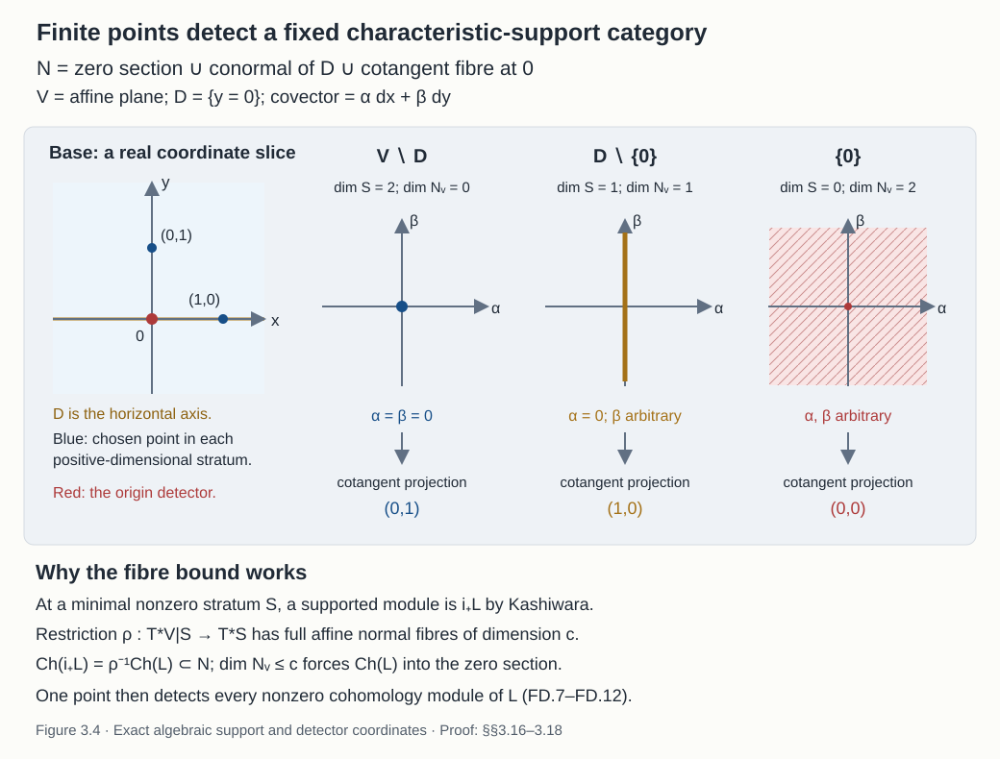
Figure 3.4. Take \(V=\mathbb A^2\), \(D=\{y=0\}\), and \(N\) the union of the zero section, the conormal bundle of \(D\), and the full cotangent fibre at the origin. The drawing shows a real coordinate slice of this algebraic example; it is not a dimension drawing of its complex total space. The strata are \(V\setminus D\), \(D\setminus\{0\}\), and \(\{0\}\), with detectors \((0,1),(1,0),(0,0)\). Writing a covector as \(\alpha\,dx+\beta\,dy\), their fibres in \(N\) are respectively \(\{(0,0)\}\), \(\{\alpha=0\}\), and all of \(\mathbb A^2_{\alpha,\beta}\). Each stratum dimension plus its fibre dimension is two. The projection and the full normal fibres are the ones used in (FD.2) and (FD.12); the zero-support point calculation is (FD.9).
3.19. From detectors to generators, and the remaining projector geometry
There are two useful extensions of the theorem. First, on a smooth stack with a finite smooth atlas, normalized atlas pullbacks are conservative by §1.10. If the induced conical support on each pure-dimensional atlas component satisfies (FD.1), apply Theorem 3.18 there. The resulting finite collection of chart pullback followed by point \(!\)-fibre functors detects all supported objects on that stack. On a chart with a chosen half line, tensoring by that line gives the operator-module equivalence of §2; it preserves characteristic support and point-fibre vanishing. Thus this detector statement applies to the half-twisted chart categories too. For a nonquasicompact stack, apply this to every member of a cofinal open exhaustion; restriction to the opens is conservative by (FT.9). Each stage has finitely many detectors. We make no additional claim that their union is locally finite as a set of intrinsic stack points.
Second, the following adjunction argument explains the generators required from an enhanced spectral projector. Let \(\mathcal B\) be a presentable stable \(k\)-linear category and suppose that \[ \begin{gathered} P:\operatorname{Dmod}(V)\rightleftarrows\mathcal B:U, \qquad P\dashv U,\\ U\text{ continuous and conservative},\qquad U(\mathcal B)\subset\operatorname{Dmod}_N(V). \end{gathered} \tag{FD.13} \] These are stated hypotheses; neither \(P\) nor its image is constructed by the detection theorem. Put \(\delta_a=(y_a)_*E_a\), with the unit connection on the finite residue field. The point map into \(V\) is closed and proper. Its delta module is coherent and bounded. Such modules are compact on the smooth quasicompact separated \(V\): the finite operator resolutions in Holonomic D-modules and duality, Lemma 3.0, compute local Hom by finite complexes of finitely generated projective operator modules. A finite affine cover computes global Hom by its finite alternating Čech complex; intersections are affine because \(V\) is separated. All these finite operations commute with filtered colimits. This proves compactness also against unbounded targets.
Adjunction now gives \[ \begin{gathered} \operatorname{RHom}_{\mathcal B}(P\delta_a,B) \simeq\operatorname{RHom}_{\operatorname{Dmod}(V)}(\delta_a,UB) \simeq y_a^!(UB),\\ \{P\delta_a\}_a\text{ are compact generators of }\mathcal B. \end{gathered} \tag{FD.14} \] For a residue field extension the last expression is regarded as a complex over \(k\); forgetting its \(E_a\)-module structure is conservative. Continuity of \(U\) and compactness of \(\delta_a\) prove compactness of \(P\delta_a\). Theorem 3.18 and conservativity of \(U\) show that an object right orthogonal to all their shifts is zero.
Here is a direct proof that this last statement gives generation. Starting from \(B_0=B\), form \(B_{m+1}\) as the cofiber of the coproduct of all maps from shifts of the finite set \(P\delta_a\) to \(B_m\). At the next stage every such map becomes null. Compactness makes maps to \(B_\infty=\operatorname{colim}_mB_m\) factor through a finite stage. The transition maps on all homotopy groups of these mapping complexes are zero, so \(B_\infty\) is right orthogonal and hence zero. Each cofiber of \(B_m\to B_{m+1}\) lies in the stable colimit closure of the \(P\delta_a\). By the octahedral triangle the same holds for the cofiber of \(B\to B_m\), and then for its colimit, the cofiber of \(B\to0\). Shifting proves that \(B\) lies in that closure. This establishes (FD.14).
For the nilpotent category on \(\operatorname{Bun}_G\), the sufficient atlas upper bound is now proved in The moduli stack of bundles, §§6.3.1–6.3.2, equations (SG.8)–(SG.9). Sections 3.20–3.22 below apply that bound to the actual cone; its lower dimension equality is unnecessary for these detectors. The enhanced spectral construction must still supply the action, \(P\dashv U\), the continuity and conservativity used in (FD.13), and the identification of its image with the prescribed support category. Finally its Hecke-colimit description must preserve the chartwise ind-regular holonomic category. The finite detection and the adjunction calculation above prove the generation step when these precise hypotheses hold; they do not establish those geometric hypotheses or regularity.
Free further reading for this construction is Arinkin–Gaitsgory–Kazhdan–Raskin–Rozenblyum–Varshavsky, The stack of local systems with restricted variation and geometric Langlands theory with nilpotent singular support, §16, “A set of generators”. The stratification, residue-field choice, flat quotient, finite-column and generation arguments required here have been supplied explicitly.
Exercise 3.J. For the plane support in Figure 3.4, verify (FD.2), give the closed filtration \(F_c\), and explain why removing the origin detector loses conservativity.
Solution 3.J. The three fibre dimensions are \(0,1,2\) and the codimensions are \(0,1,2\). Thus \(F_0=\mathbb A^2\), \(F_1=D\), \(F_2=\{0\}\), and \(F_3=\varnothing\), all closed. The delta module at the origin has characteristic variety \(T^*_0\mathbb A^2\subset N\). Its point fibres at \((0,1)\) and \((1,0)\) are zero, since it is supported at the origin, while its fibre at the origin is the coefficient field by Kashiwara's equivalence. Hence the first two detectors alone miss a nonzero supported object.
Exercise 3.K. On \(\mathbb A^1_k\), let \(M=k[t,t^{-1}]e\) with \(\partial_te=-t^{-2}e\). Prove that it is a coherent D-module with characteristic variety the union of the zero section and \(T^*_0\mathbb A^1\). Show that the detectors \(1,0\) apply, and that \(M\) is nevertheless irregular at zero.
Solution 3.K. The equation \(\partial_te=-t^{-2}e\), multiplied by \(t\), produces \(t^{-1}e\). Inductively \(\partial_t(t^{-n}e)=-nt^{-n-1}e-t^{-n-2}e\) produces every negative Laurent power. Thus \(e\) generates \(M\) over the Noetherian operator ring. The relation \((t^2\partial_t+1)e=0\) gives a surjection from \(\mathcal D/(\mathcal D(t^2\partial_t+1))\); its order filtration bounds \(\operatorname{Ch}(M)\) by \(\{t^2\xi=0\}\). Away from zero the module is a nonzero connection, so its characteristic variety contains the zero section and its closure. The module is not finite over \(k[t]\) near zero, because a finite list of Laurent polynomials has a common lower exponent bound whereas \(M\) does not. The zero-support converse following Proposition 3.1 therefore forces a nonzero vertical characteristic direction. Closed conical support then contains the entire fibre at zero, proving the asserted equality. This support has dimension one, and its strata are \(\mathbb A^1\setminus\{0\}\) and \(\{0\}\), so Theorem 3.18 applies to \(1,0\). In fact the detector at \(1\) already sees this particular \(M\).
To check irregularity directly, work over \(k((t))\). Every rank-one lattice is \(t^a k[[t]]e\): a unit multiplying its generator does not change this submodule. On \(t^ae\) the operator \(t\partial_t\) has coefficient \(a-t^{-1}\), which is not a power series. Thus no lattice is stable under logarithmic differentiation, the rank-one regular-singular condition. Detection and the half-dimensional support bound therefore do not imply regularity.
Exercise 3.L. Let \(S\) be smooth and connected, and let \(L=\bigoplus_{m\in\mathbb Z}\mathcal O_S[m]\) with its constant connections. Determine its cohomology and its point \(!\)-fibre. Identify precisely where the proof of Theorem 3.18 controls this unbounded example.
Solution 3.L. With cohomological shifts, \(H^n(L)=\mathcal O_S\) for every integer \(n\), coming from the summand with \(m=-n\). If \(y\) is a closed point of residue field \(E\) and \(s=\dim S\), then \(y^!L=\bigoplus_{m\in\mathbb Z}E[m-s]\); its cohomology is \(E\) in every degree. Each cohomology module is flat, so the finite parameter Koszul complex in (FD.8) has no higher Tor cohomology and (FD.9) applies degree by degree. On the minimal support stratum in Theorem 3.18, Kashiwara's finite normal Koszul complex gives the same control. The argument requires neither a bounded input nor a finite number of nonzero cohomology groups.
3.20. The nilpotent chart bound and holonomic cohomology
We now apply the detectors to the actual global nilpotent cone. Keep the algebraically closed characteristic-zero field, the smooth projective connected curve and an arbitrary connected reductive group from §1. Write \(Y=\operatorname{Bun}_G(X)\). If \(q:A\to Y\) is a smooth chart with \(A\) smooth affine of pure dimension \(d\), its cotangent pullback is a closed immersion into \(T^*A\). Let \[ N_A=\left(A\times_Y\operatorname{Nilp}_G\right)_{\mathrm{red}} \subset T^*A, \qquad \dim N_A\leq d. \tag{NC.1} \] Reduction does not affect a characteristic-support containment. The cone is closed and conical: the closed cotangent pullback retains the stack moment equations, and the nilpotence equations are homogeneous in the Higgs field. Its upper bound is proved in The moduli stack of bundles, §§6.3.1–6.3.2, equations (SG.8)–(SG.9).
We recall the argument to specify exactly which dimension statement is used. On a reduced irreducible component \(W\) of \(N_A\), pass to a nonempty smooth open. The generic nilpotent Higgs field has the intrinsic parabolic reduction of Lesson 2, §6.2.3; its reduction on the whole generic curve spreads to a dense open \(W_0\) by §6.2.4. Thus one fixed parabolic \(Q\) suffices on \(W_0\). Its section atlas and nilradical section scheme are constructed in §§6.3.1–6.3.2. Put \(Z=A\times_Y\operatorname{Bun}_Q\), with projection \(F:Z\to A\), and let \(r:W_0\to Z\) be the reduction. The covector annihilates the lifted parabolic deformation because the nilradical is perpendicular to the parabolic Lie algebra. Consequently \[ \left.\lambda_A\right|_{W_0}(v) =\xi\bigl(dF(dr(v))\bigr)=0, \qquad \left.d\lambda_A\right|_{W_0}=0. \tag{NC.2} \] In a cotangent coordinate chart the symplectic form is nondegenerate on a space of dimension \(2d\). An isotropic tangent subspace \(L\) satisfies \(L\subset L^\perp\) and \(\dim L^\perp=2d-\dim L\); hence \(\dim W=\dim W_0\leq d\). This proves (NC.1) component by component. Relative smoothness of the forgetful map is unnecessary: the tangent vector is lifted through the actual reduction \(r\). Neither a countable union of reduction images nor equality of dimensions is used. The lower bound needed for the full Lagrangian assertion of Lesson 2 is a separate statement.
Choose the relative dimension \(r_q\) constant on this chart. Normalize \(q^!M\) by \([-r_q]\), and use the line-twist equivalence of §2 to write its left D-module complex as \(L_A\). For \(M\) in (3.1), every coherent submodule of every \(H^n(L_A)\) has characteristic variety contained in \(N_A\). On the affine chart the operator ring is Noetherian, as used in §3.12, so each cohomology module is the filtered union of its actual finitely generated submodules. These submodules are coherent. Therefore \[ H^n(L_A)=\operatorname*{colim}_{\alpha} L_{n,\alpha}, \qquad \operatorname{Ch}(L_{n,\alpha})\subset N_A, \qquad \dim\operatorname{Ch}(L_{n,\alpha})\leq d. \tag{NC.3} \] Here the index consists of finite submodules ordered by inclusion: their sum provides an upper bound for two indices. The final inequality is exactly the definition of holonomicity in Holonomic D-modules and duality, §1, equation (1.1), including the zero module. Thus every chart cohomology module is ind-holonomic. This conclusion allows arbitrary rank and arbitrary cohomological degrees. It concerns cohomology modules; it does not identify an unbounded derived category with an ind-completion of a category of bounded complexes. Regular singularities are a further condition and are not implied by (NC.3).
3.21. Finite detectors on each bounded bundle-stack open
Let \(U\subset Y\) be any quasicompact open in the cofinal exhaustion of §1.15. Its finite-type smooth atlas can be chosen to be a finite union of smooth affine schemes \(A_i\): cover a smooth atlas by affine opens and use quasicompactness to choose finitely many whose images cover \(U\). Further split into the finitely many open-and-closed dimension components, so that both \(d_i=\dim A_i\) and the relative dimension \(r_i\) of \(q_i:A_i\to U\) are constant. The bundle-stack atlas is proved in Lesson 2, §1.5, and the conservativity of normalized smooth descent is proved here in §1.10.
Apply Theorem 3.18 to \(A_i\) and its fixed cone \(N_{A_i}\) from (NC.1). It gives finitely many closed points \(y_{i,a}\), with residue fields \(E_{i,a}\). Over the present algebraically closed field these residue fields equal \(k\). Write \(\mathsf T_i\) for the line untwisting on this chart and define \[ \begin{gathered} L_i(M)=\mathsf T_i\bigl(q_i^!(M|_U)[-r_i]\bigr),\\ \Psi_U(M)= \bigl(y_{i,a}^!L_i(M)\bigr)_{i,a} \in\prod_{i,a}\operatorname{Dmod}(\operatorname{Spec}E_{i,a}). \end{gathered} \tag{NC.4} \] The chart and point indices in this product are both finite. The normalized smooth pullback and line untwisting preserve the support condition, so each \(L_i(M)\) lies in the full category \(\operatorname{Dmod}_{N_{A_i}}(A_i)\). Theorem 3.18, applied to every chart, and normalized smooth descent give \[ \Psi_U(M)=0\quad\Longleftrightarrow\quad M|_U=0 \qquad \bigl(M\in\operatorname{Dmod}_{1/2,\operatorname{Nilp}}(Y)\bigr). \tag{NC.5} \] This is a theorem for every connected reductive group, every genus and every bundle component under our characteristic-zero assumptions. The missing lower dimension equality for the cone is not a hypothesis of it.
Detection also applies to morphisms. The support convention of §3.12 is closed under triangles, so the cone of a morphism \(f:M\to M'\) in the supported category is supported. Smooth pullback, shifts, line untwisting and point exceptional pullback are exact functors. Apply (NC.5) to that cone to obtain \[ \Psi_U(f)\text{ is an equivalence} \quad\Longleftrightarrow\quad f|_U\text{ is an equivalence}. \tag{NC.6} \] Thus it is the induced maps of complexes, rather than just their fibre dimensions, that test a morphism.
Take one such finite atlas and detector family for every open \(U_b\) of the cofinal exhaustion. Equation (FT.9) proves that restriction to these opens is conservative. Together with (NC.5)–(NC.6), it yields \[ \begin{gathered} M=0\quad\Longleftrightarrow\quad \Psi_{U_b}(M)=0\text{ for every }b,\\ f\text{ is an equivalence}\quad\Longleftrightarrow\quad \Psi_{U_b}(f)\text{ is an equivalence for every }b. \end{gathered} \tag{NC.7} \] There is no cohomological bound in these statements. Indeed the point calculation on a smooth stratum \(S\) of dimension \(s\) in the proof of Theorem 3.18 is \[ H^{n+s}(y^!L)=H^n(L)_y\otimes_{\mathcal O_{S,y}}E \qquad(n\in\mathbb Z), \tag{NC.8} \] when all the cohomology modules of \(L\) have zero support on \(S\). Their coherent submodules and quotients are flat connections by §3.17. The residue field is resolved by a Koszul complex of length \(s\), so only finitely many columns enter any total degree even for an unbounded \(L\). The flatness kills higher Tor groups, proving (NC.8) in every degree. The supported inverse image used to reach \(S\) has the same finite-column control. Checking only degree-zero fibres would discard this information.
3.22. What the detectors do and do not imply
The finite family in (NC.4) is finite for one quasicompact open; its union over the whole exhaustion need not be finite. This is already forced by the elementary bundle stack \[ X=\mathbf P^1,\qquad G=\mathbb G_m, \qquad Y\simeq\coprod_{d\in\mathbb Z}B\mathbb G_m, \qquad U_m=\coprod_{|d|\leq m}B\mathbb G_m. \tag{NC.9} \] The Picard splitting in §6 gives this equivalence on families and arrows: a degree-\(d\) line bundle on \(\mathbf P^1\) is \(\mathcal O(d)\) tensored with a line from the parameter scheme. The degree is locally constant, and a quasicompact parameter has only finitely many degree values. Thus the \(U_m\) are cofinal among quasicompact opens of this stack. For each component its atlas \(\operatorname{Spec}k\to B\mathbb G_m\) is smooth of relative dimension one; its source has dimension zero and its pulled-back nilpotent cone is the zero cotangent point. One atlas point per degree gives the detectors in (NC.4), with the normalization \([-1]\).
Let \(j_d:B\mathbb G_m\hookrightarrow Y\) be the degree component and put \[ M_d=(j_d)_*\mathbf 1_{B\mathbb G_m}\ne0, \qquad \operatorname{SS}(M_d)\subset\operatorname{Nilp}_{\mathbb G_m}. \tag{NC.10} \] The constant object has zero support by Proposition 3.1, and extension across an open-and-closed component adds no directions. Any finite collection of intrinsic points of \(Y\) lies in finitely many degrees. Choose \(d\) outside that set. All of their exceptional fibres on \(M_d\) vanish, although \(M_d\) is nonzero. This proves that one cannot replace (NC.7) by a finite set of intrinsic points for the entire bundle stack. Nor does chart detection prove global compactness of these constant objects; §5 gives the separate compactness calculation on \(B\mathbb G_m\).
Regularity also requires more than the upper bound. On the separate affine chart \(A=\mathbb A^1\), consider the rank-one left module \[ K=k[t]e,\qquad \partial_t e=2t e, \qquad \operatorname{Ch}(K)=\text{zero section of }T^*A. \tag{NC.11} \] The constant good filtration of Proposition 3.1 proves the support equality, so this is holonomic and any one point detects it. At infinity write \(s=t^{-1}\). The connection has \(\partial_s e=-2s^{-3}e\). Every full lattice in the one-dimensional space \(k((s))e\) is \(s^a k[[s]]e\), for some integer \(a\), because \(k[[s]]\) is a discrete valuation ring. Its logarithmic operator satisfies \[ s\partial_s(s^ae)=(a-2s^{-2})s^ae \notin s^a k[[s]]e. \tag{NC.12} \] No lattice is stable under this operator. This is the logarithmic-lattice obstruction to a regular singularity at infinity; the connection is therefore irregular there. Its exceptional fibre at a point is \(k[-1]\), by (NC.8). Detection of that nonzero complex gives no control of the pole in (NC.12). This example concerns a connection on an affine line; it makes no assertion that such an irregular object belongs to the bundle-stack nilpotent category.
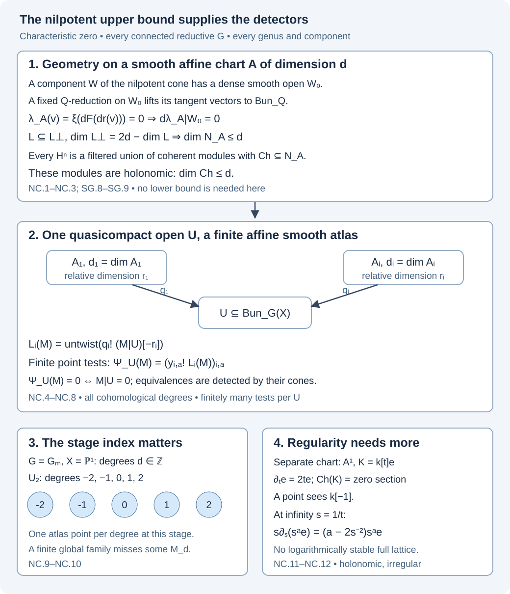
Figure 3.5. The geometric implication is (NC.1)–(NC.3), using the parabolic-family proof (SG.8)–(SG.9) of The moduli stack of bundles. The normalized atlas and finite point tests are (NC.4)–(NC.8); the symbols \(d_i,r_i\) denote chart and relative dimensions. The bottom examples retain the actual degree components of (NC.9) and the logarithmic coefficient of (NC.12). The arrows describe implications proved above, rather than an embedding of a bundle stack into a finite-dimensional drawing. For related finite generators and the subsequent regularity argument, see the freely accessible AGKRRV paper, §§16.2, 16.5.
Exercise 3.M. Let \(f:M\to M'\) be a morphism in the nilpotent category, and suppose all the maps in (NC.7) are equivalences. Prove that \(f\) is an equivalence. Explain why equality of the dimensions of the detector cohomology groups would not suffice.
Solution 3.M. The cone \(C\) has nilpotent support by the triangle rule of §3.12. Exactness gives \(\Psi_{U_b}(C)=0\) for every stage. The finite detector theorem and normalized descent give \(C|_{U_b}=0\), and (FT.9) gives \(C=0\). Hence \(f\) is an equivalence. Two one-dimensional vector spaces can have a zero map between them; their dimensions agree while that map is not an equivalence. The induced detector maps, not just dimensions of their source and target, are required.
Exercise 3.N. In (NC.9), construct a nilpotent object missed by any prescribed finite set of intrinsic points. Does this contradict the finiteness assertion on \(U_m\)?
Solution 3.N. Record the finitely many degrees of the points and choose an integer \(d\) outside them. The object \(M_d\) of (NC.10) is nonzero and nilpotent. Disjointness of the open-and-closed components makes all the prescribed fibres zero. If \(d\) belongs to \([-m,m]\), the degree-\(d\) atlas point in the finite family on \(U_m\) detects its nonzero restriction, by normalized smooth descent. If \(d\) is outside that interval, its restriction to \(U_m\) is zero. Both cases agree with (NC.5).
Exercise 3.O. Replace \(2t\) in (NC.11) by \(m t^{m-1}\), where \(m\geq2\) is an integer. Compute the support, the point exceptional fibre, and the logarithmic-lattice coefficient at infinity.
Solution 3.O. This is still a free rank-one module over \(k[t]\) with integrable connection, so its characteristic variety is the zero section by the same good filtration. Its point exceptional fibre is \(k[-1]\). Since \(\partial_s e=-m s^{-m-1}e\), the coefficient on the lattice \(s^a k[[s]]e\) is \(a-ms^{-m}\). Its negative-power term is nonzero in characteristic zero and cannot lie in \(k[[s]]\), so no full lattice is stable under \(s\partial_s\). The connection is holonomic with an irregular singularity at infinity for every such \(m\). This verifies directly the distinction needed before proving nilpotent regularity by the spectral projector.
3.23. Jordan components and a covector-detecting cocharacter
The Hecke argument needs more than a nilpotent dimension bound: a nonnilpotent Higgs value must produce a nonzero covector in the curve direction. We first construct the group-theoretic data for that calculation. Keep the algebraically closed characteristic-zero field, an arbitrary connected reductive \(G\), and a nondegenerate invariant form \(B\) on \(\mathfrak g\). Fix a faithful closed representation \(G\hookrightarrow GL(V)\). Here is its existence proof. For each of finitely many algebra generators \(f\) of \(k[G]\), expand \(\Delta f=\sum_i a_i\otimes b_i\) with independent first factors. Coassociativity, followed by coefficient functionals on these first factors, gives \(\Delta b_i\in k[G]\otimes\operatorname{span}(b_j)\). The counit shows that \(f\) belongs to this span. Sum these finite-dimensional subcomodules to obtain \(V\) containing all generators. The coaction and antipode give a representation with invertible matrices; applying the counit in the second factor writes each element of \(V\) as a linear combination of its matrix coefficients. Thus those coefficients generate \(k[G]\), and the coordinate-algebra map from \(k[GL(V)]\) is surjective. This is precisely a closed immersion. All matrix calculations below take place in this representation, while their Lie-algebra conclusions are intrinsic.
We need the Jordan components of a Lie element to remain inside the Lie algebra. Here is an algebraic proof that also constructs its semisimple torus. For \(C\in\mathfrak g\), write its matrix Jordan decomposition \[ C=H+N,\qquad [H,N]=0,\qquad H\text{ semisimple}, \qquad N^r=0. \tag{HC.1} \] This decomposition is polynomial in \(C\): factor its minimal polynomial as \(\prod_i(z-c_i)^{r_i}\). Bézout identities for the pairwise coprime factors give complementary polynomial idempotents \(E_i\); then \(H=\sum_i c_iE_i\), and \(N=C-H\) is nilpotent on every summand. This proves the decomposition and the commutation assertion without a choice of analytic exponential.
The formal exponential of any Lie element lies in the group. Indeed let \(I\) be the Hopf ideal of \(G\) in \(k[GL(V)]\). A Lie vector \(Z\) is a derivation at the identity that kills \(I\). The left-invariant derivation \(D_Z\), obtained by applying this derivation to the second factor of the coproduct, preserves \(I\) by its Hopf-ideal identity. Evaluation of a coordinate function on the formal matrix exponential is \[ f(\exp(zZ))=\sum_{j\geq0} \frac{\epsilon(D_Z^jf)}{j!}z^j. \tag{HC.2} \] The chain rule, or coefficient induction on the equation \(E'=EZ\), proves this equality for the matrix entries and inverse determinant, hence for every coordinate function. Its coefficients vanish for \(f\in I\). Thus the formal point belongs to \(G(k[[z]])\). The same proof works over every coefficient algebra over \(k\).
Diagonalize \(H\), with weights \(w_1,\ldots,w_v\in k\) on \(V\). Put \[ \Lambda=\{(m_i)\in\mathbb Z^v:\sum_i m_iw_i=0\}, \qquad S=D(\mathbb Z^v/\Lambda)\subset(\mathbb G_m)^v. \tag{HC.3} \] The lattice \(\Lambda\) is saturated: if a nonzero integer multiple of a weight sum is zero, that sum is zero in characteristic zero. Its quotient is therefore free, so \(S\) is a split torus. It contains \(H\) in its Lie algebra, by the displayed linear equations. Also \(S\) commutes with \(N\): a nonzero entry of \(N\) can join only equal \(w_i\), and the two corresponding characters restrict equally to \(S\).
To prove that this torus and the nilpotent one-parameter group belong to \(G\), apply (HC.2) to \(C\). A coordinate function evaluated on \(\exp(zH)\exp(zN)\) is a finite sum \(\sum_i p_i(z)e^{a_i z}\), with distinct \(a_i\in k\) and polynomials \(p_i\). This description includes inverse determinant: the determinant of the nilpotent exponential is one. Such a sum can vanish as a formal series only when every polynomial vanishes. If their degrees are at most \(D\), apply \(\prod_{j\ne i}(\partial_z-a_j)^{D+1}\). All other terms die; on the \(i\)-th polynomial the resulting operator is a product of \(\partial_z+(a_i-a_j)\), each invertible on polynomials of degree at most \(D\). Hence \(p_i=0\).
The same grouped polynomials are exactly the coefficients of the distinct characters of \(S\) in \(f(s\exp(bN))\). Thus every \(f\in I\) vanishes in \(k[S][b]\), not just at field points. The multiplication map \((s,b)\mapsto s\exp(bN)\) factors through \(G\). Differentiating its two factors proves \[ H,N\in\mathfrak g,\qquad S\subset G,\qquad \exp(bN)\in G(k[b]). \tag{HC.4} \] In particular nilpotence here includes the central directions: a nonzero toral Lie element is semisimple in a faithful representation, even though its adjoint endomorphism can be zero.
Set \(M=C_G(S)\). This is smooth, connected and reductive by Regular elements and centralizers, Lemma 1.1 and Theorem 2.1. It is also the scheme centralizer of \(H\). In the diagonal faithful representation, commuting with \(H\) forces a matrix entry joining different \(w_i\) to be zero. Commuting with \(S\) imposes exactly the same condition, because its corresponding characters differ precisely when the two weights differ. A nonzero weight difference is a unit over every test algebra. This verifies the equality on nonreduced tests as well. Both \(H\) and \(N\) belong to \(\mathfrak m\), and \(H\) is central there.
The finite root decomposition relative to a maximal torus \(T\supset S\), proved in Root data, Weyl chambers and the Bruhat decomposition, gives \(\mathfrak m\) the roots with \(\alpha(H)=0\). Let \(\mathfrak n\) be the sum of the other \(H\)-weight spaces. Invariance of \(B\) pairs only opposite weights. Therefore \[ \mathfrak g=\mathfrak m\oplus\mathfrak n, \quad B(\mathfrak m,\mathfrak n)=0, \quad B|_{\mathfrak m}\text{ is nondegenerate}, \quad B(\mathfrak z(\mathfrak m),[\mathfrak m,\mathfrak m])=0. \tag{HC.5} \] Here is the needed reductive Lie splitting. In the toral Lie algebra, the common kernel of the roots of \(M\) is complementary to their coroot span. To see the nondegeneracy on that span, average a positive rational inner product over the finite Weyl group of this root system. Each root reflection is then orthogonal; its formula gives \(\langle v,\alpha^\vee\rangle=2(v,\alpha)/(\alpha,\alpha)\) on the rational root span. Consequently the root span and coroot span pair nondegenerately. The resulting nonzero rational determinants stay nonzero in characteristic zero. The brackets \([E_\alpha,E_{-\alpha}]=H_\alpha\) and \([H_\alpha,E_\alpha]=2E_\alpha\) show that the derived Lie algebra consists exactly of the coroot span and the root spaces. The center is exactly the common root kernel: commuting with the torus eliminates every root-space component, and commuting with each root space imposes its root equation. Thus \(\mathfrak m=\mathfrak z(\mathfrak m)\oplus[\mathfrak m,\mathfrak m]\). The connected subtorus cut out by the same root characters centralizes the torus and every root subgroup, so its Lie algebra identifies this center with \(\operatorname{Lie}Z(M)^0\). These root and reflection formulas are proved in the root-data lesson, §§1–2. Together with the orthogonality in (HC.5), the splitting makes the restriction of \(B\) to this center nondegenerate.
We also verify directly that \(B(Z,N)=0\) for central \(Z\in\mathfrak m\). Decompose the faithful representation into its finitely many \(Z(M)^0\)-weight spaces \(V_\theta\). These spaces are \(M\)-stable, so \(\chi_\theta=\det(M|V_\theta)\) is an algebraic character of \(M\). On the central torus its derivative is \((\dim V_\theta)d\theta\). Faithfulness makes the weights span the dual of the central Lie algebra; their nonzero dimension factors are invertible in characteristic zero. Thus these character derivatives span that dual. They kill the derived Lie algebra, and so does \(B(Z,-)\) by (HC.5); the splitting shows that \(B(Z,-)\) is a linear combination of them. But \(b\mapsto\chi_\theta(\exp(bN))\) is an invertible polynomial on \(\mathbb A^1\), hence constant, and has value one at zero. Differentiation gives \(d\chi_\theta(N)=0\), proving the assertion.
Suppose now that \(C\) is nonnilpotent, so \(H\ne0\). Define the rational cocharacter space \[ V_0=\{v\in X_*(T)\otimes\mathbb Q: \alpha(v)=0\text{ whenever }\alpha(H)=0\}. \tag{HC.6} \] Its scalar extension to \(k\) is the central Lie algebra of \(\mathfrak m\), and contains \(H\). For a root with \(\beta(H)\ne0\), the functional \(\beta\) is nonzero on \(V_0\): otherwise that root would be a rational linear combination of the vanishing roots, and would vanish on \(H\). Also \(B(H,-)\) is nonzero on \(V_0\otimes k\), by nondegeneracy on the center. We can consequently choose an integral cocharacter \(\lambda\) such that \[ \alpha(\lambda)=0\quad(\alpha(H)=0),\qquad \beta(\lambda)\ne0\quad(\beta(H)\ne0),\qquad B(H,d\lambda)\ne0. \tag{HC.7} \] Here is a finite algebraic choice argument, including when the entries of \(H\) are not rational. Take integral vectors \(v_1,\ldots,v_\ell\) spanning \(V_0\) over \(\mathbb Q\). Evaluate the finitely many nonzero functionals just listed on \(v_1+zv_2+\cdots+z^{\ell-1}v_\ell\). Each gives a nonzero polynomial over \(k\); their union has only finitely many roots. An integer \(z\) outside that union gives (HC.7).
The root subgroup description makes this cocharacter central in \(M\). Its centralizer has exactly the same roots as \(M\); both centralizers are smooth and connected, and the inclusion of \(M\) has equal tangent dimension, so they agree as schemes. The vanishing just proved on \(N\) now gives \[ C_G(\lambda)=M,\qquad B(C,d\lambda)=B(H,d\lambda)\ne0. \tag{HC.8} \] For \(G=\mathbb G_m\), a nonzero \(C=a\) has \(M=G\), and the identity cocharacter already gives this nonzero pairing. Thus the argument retains the torus factor of a general reductive group.
3.24. Formal Levi normalization over coefficient rings
The same centralizer controls a whole formal Higgs series. First consider the field point of §3.23. On an \(H\)-weight space of \(\mathfrak n\) with nonzero weight \(c\), the operator \(\operatorname{ad}C\) is \(c+\operatorname{ad}N\). If \(N^r=0\) in the faithful representation, then \((\operatorname{ad}N)^{2r-1}=0\): expand the commuting left and right multiplication operators, and each term contains at least \(r\) copies of \(N\) on one side. Hence \[ (\operatorname{ad}C)^{-1}|_{\mathfrak n_c} =c^{-1}\sum_{j=0}^{2r-2} (-\operatorname{ad}N/c)^j. \tag{HC.9} \] This proves invertibility on the complement, including a nonzero nilpotent part inside the Levi.
We prove a coefficient-ring statement. Let \(R\) be any \(k\)-algebra, let \(M\) be this Levi subgroup, and let \[ A(u)\in\mathfrak g(R[[u]]),\qquad A_0\in\mathfrak m(R),\qquad \operatorname{ad}A_0|_{\mathfrak n_R} \text{ an invertible }R\text{-linear map}. \tag{HC.10} \] The complement is \(M\)-stable, because \(M\) commutes with the torus whose nonzero weights define it. The last condition is an open determinant condition on the constant term. It holds at the field point \(C\) by (HC.9); no constant-rank assertion for a general family is being made.
Formal normalization theorem. Under (HC.10) there is \(h(u)\in G(R[[u]])\), with \(h(0)=1\), such that \[ \operatorname{Ad}_{h(u)}A(u)\in\mathfrak m(R[[u]]). \tag{HC.11} \] The left \(M(R[[u]])\)-coset of such normalized frames is unique.
Proof. Suppose the coefficients below degree \(n\) already belong to \(\mathfrak m_R\), and write \(Y_n\) for the complementary part of its degree-\(n\) coefficient. For \(n\ge1\), put \[ X_n=(\operatorname{ad}A_0|_{\mathfrak n_R})^{-1}Y_n, \qquad h_n=\exp(u^nX_n). \tag{HC.12} \] Equation (HC.2), with its coefficient-ring proof, shows that this exponential belongs to \(G(R[[u]])\). Modulo \(u^{n+1}\), conjugation changes the complementary coefficient to \(Y_n+[X_n,A_0]=0\). Lower coefficients are unchanged: terms involving a positive-degree coefficient have degree at least \(n+1\), and terms involving two copies of \(u^nX_n\) have degree at least \(2n\ge n+1\). Iterate. The products \(h_n\cdots h_1\) stabilize modulo each power of \(u\). Their limit is a matrix and its inverse over \(R[[u]]\); every defining equation of \(G\) holds modulo every power, hence holds in the separated complete ring. This gives (HC.11), over nonreduced \(R\) as well.
For uniqueness, let \(B,B'\in\mathfrak m(R[[u]])\) have the same constant term \(A_0\), and let \(g(0)=1\) with \(\operatorname{Ad}_gB=B'\). If \(g\equiv1\pmod{u^n}\), its degree-\(n\) coefficient is some \(Z_n\in\mathfrak g_R\): the defining group equations at that order are exactly the Lie equations. The complementary part of the conjugation identity is \([Z_n,A_0]_{\mathfrak n}=0\). Invertibility in (HC.10) forces \(Z_n\in\mathfrak m_R\). Multiplication by \(\exp(-u^nZ_n)\in M(R[[u]])\) removes that coefficient and keeps both sides in the Levi. Induction expresses \(g\) modulo each power as an \(M\)-valued frame. Closedness of \(M\) and completeness give \(g\in M(R[[u]])\). Apply this to \(g=h'h^{-1}\) for two normalizations. \(\square\)
All operations are coefficient-linear inverses and formal exponentials with rational denominators, so commute with coefficient change as long as (HC.10) holds. The theorem is the identity branch of formal Levi normalization. It does not assert uniqueness of all Levi reductions across Weyl branches, or a global decomposition on a parameter space where the determinant condition fails.
We will use the exact example \[ \begin{gathered} G=SL_3,\quad C=\operatorname{diag}(1,1,-2)+E_{12},\quad M=S(GL_2\times GL_1),\\ \lambda(u)=\operatorname{diag}(u,u,u^{-2}),\qquad B(C,d\lambda)=6\quad(B=\operatorname{tr}). \end{gathered} \tag{HC.13} \] For \(A(u)=C+uE_{23}\), the first correction is \[ X_1=\tfrac13 E_{23}-\tfrac19 E_{13},\qquad h(u)=1+uX_1,\qquad h(u)A(u)h(u)^{-1}=C. \tag{HC.14} \] Indeed \([C,E_{23}]=3E_{23}+E_{13}\) and \([C,E_{13}]=3E_{13}\), so \([C,X_1]=E_{23}\). Also \(X_1^2=0\) and \([X_1,E_{23}]=0\). These identities prove the conjugation equality exactly, rather than only through the first power of \(u\).
3.25. Local Hecke cotangents and the moving-point residue
Put \(D_R=\operatorname{Spec}R[[u]]\) and \(D_R^\times=\operatorname{Spec}R((u))\). The local Hecke groupoid consists of two \(G\)-torsors on \(D_R\) and an isomorphism \(\alpha:P_2|_{D_R^\times}\to P_1|_{D_R^\times}\). Their disc frames exist étale locally on \(\operatorname{Spec}R\), by Loop groups and the affine Grassmannian, Lemma 4.1. In frames, \(\alpha\) is a loop \(g\); changing the frames replaces it by \(a g b^{-1}\), with two arcs \(a,b\). Conversely a loop gives these data, and torsor descent supplies every arrow. Thus as an étale stack of groupoids, \[ \operatorname{Hecke}^{\mathrm{loc}}_x \simeq[L^+G\backslash LG/L^+G]. \tag{HC.15} \] This is a quotient prestack with its torsor sheafification, not an assertion that it is an ordinary finite-type scheme. The loop and arc functors, including their nilpotents, are represented in that earlier lesson, Proposition 1.1. Beauville–Laszlo gluing and the moduli interpretation, Proposition 2.1 and Theorem 3.1, prove that these disc data glue effectively to modifications of curve torsors, including families, frames and arrows.
At a field-valued framed loop \(g\), write a first-order variation as \(g(1+\varepsilon X)\). The Lie equations say exactly \(X\in\mathfrak g((u))\). Two infinitesimal arc changes give \(X\mapsto X+\operatorname{Ad}_{g^{-1}}a-b\). Retaining the automorphisms as well as the deformations gives the tangent complex \[ [\,\mathfrak g[[u]]\oplus\mathfrak g[[u]] \xrightarrow{(a,b)\mapsto\operatorname{Ad}_{g^{-1}}a-b} \mathfrak g((u))\,], \qquad\text{in degrees }-1,0. \tag{HC.16} \] This is obtained directly from the dual-number groupoid, so a coarse quotient of field points has not discarded its degree-minus-one stabilizers.
The continuous dual of \(\mathfrak g((u))\) is \(\mathfrak g^*((u))du\), by the residue pairing. To check this, a continuous functional kills \(u^m\mathfrak g[[u]]\) for some \(m\). Its values on the remaining Laurent monomials give a series with only finitely many negative powers. Conversely such a Laurent covector pairs by a finite coefficient sum against each Laurent vector and kills a sufficiently high power. Hence the continuous classical cotangent space, the degree-zero kernel in the dual complex of (HC.16), is \[ \operatorname{Ann}\bigl(\mathfrak g[[u]]+ \operatorname{Ad}_{g^{-1}}\mathfrak g[[u]]\bigr) \subset\mathfrak g^*((u))du. \tag{HC.17} \] The first annihilator condition says \(\eta\) is regular: test against each nonnegative Laurent monomial to kill its negative coefficients. The second says that \((\operatorname{Ad}_{g^{-1}})^*\eta\) is regular. Taking \(\eta_2=\eta\) and \(\eta_1=(\operatorname{Ad}_{g^{-1}})^*\eta\) identifies (HC.17) with \[ \eta_i\in\mathfrak g_{P_i}^*[[u]]du,\qquad \eta_2=\alpha^*\eta_1\text{ on the punctured disc}. \tag{HC.18} \] The pullback here is ordinary covector pullback under \(\alpha:P_2\to P_1\); this fixes the coadjoint convention and the orientation of the modification.
For the curve term we compare two horizontal lifts, instead of assigning a constant covector to moving coordinates. Write the absolute local coordinate as \(t\) and the moving center as \(x\), so \(u=t-x\). If \(\delta^N=0\) in a coefficient ring, the ideals \((t)\) and \((t-\delta)\) have cofinal powers: expansion gives \((t-\delta)^{m+N-1}\subset(t)^m\), and exchanging them gives the reverse inclusion. Their completions are canonically the same absolute-coordinate ring. Their punctured completions coincide too, because \[ (t-\delta)^{-1}=t^{-1}\sum_{j=0}^{N-1}(\delta/t)^j. \tag{HC.19} \] The complement of the graph and its formal and punctured neighborhoods therefore remain the same under an infinitesimal change of center. Keeping their torsors, frames and gluing isomorphism fixed gives crystal transport of the local and global modification groupoids. This assertion holds on ordinary nonreduced test rings; it is not a transport chosen only for field points. On a smooth curve the same argument applies in an étale coordinate; the graph is a relative Cartier divisor by the monic-coordinate proof in §3.28.
Now take \(x=\varepsilon\), with \(\varepsilon^2=0\). Keeping the absolute loop \(g(t)\) fixed represents the crystal lift. In the moving coordinate it is \(g(u+\varepsilon)=g(u)+\varepsilon g'(u)\). The coordinate lift keeps \(g(u)\) fixed. Consequently \[ \text{crystal lift}-\text{coordinate lift} =g^{-1}g'\in\mathfrak g((u)) \tag{HC.20} \] after left tangent trivialization. It belongs to the Lie algebra by differentiation of the defining group equations, or the Maurer–Cartan form. Evaluating \(\eta\) from (HC.17) gives the discrepancy covector \[ \xi_x=\operatorname{Res}_{u=0} \langle\eta,g^{-1}g'\rangle\,dx. \tag{HC.21} \] The expression descends under arc-frame changes. For \(\widetilde g=a g b^{-1}\), differentiate this product; after carrying the covector through its tangent trivialization, its logarithmic derivative differs by left- and right-arc tangent vectors, from the regular logarithmic derivatives of \(a,b\). Equation (HC.17) annihilates both differences. This proves descent of the formula rather than just independence of a scalar at one representative. In (HC.21), a covector having zero curve component in the coordinate splitting has the displayed positive curve component in the crystal splitting. Reversing the difference of lifts reverses the sign.
For \(g=u^\lambda\), differentiation on the faithful weight spaces gives \(g^{-1}g'=d\lambda/u\). A regular covector \(\eta=A(u)du\) consequently gives \[ \xi_x=\langle A(0),d\lambda\rangle\,dx. \tag{HC.22} \] Only the constant coefficient contributes to the residue. The factor \(dx\) is essential: the scalar coefficient is being written in the chosen coordinate on the curve. Equivalently the pairing of the Higgs value with \(d\lambda\) is a member of \(T_x^*X\). Formal coordinate change preserves residues of one-forms: for \(v=f(u)\) of order one, the residue of \(f^n f' du\) is zero for \(n\ne-1\), since it is an exact derivative, and is one for \(n=-1\), since \(f'/f=u^{-1}+\) a regular series. These checks prove the one-form assertion on Laurent series by their finite principal parts. The discrepancy in (HC.21) compares the intrinsic crystal splitting with the chosen coordinate splitting; declaring the latter curve component zero refers to that choice. For the cocharacter point in (HC.22), a parameter change \(v=u a(u)\), with \(a(0)\ne0\), changes \(u^\lambda\) by the arc factor \(a(u)^\lambda\), annihilated by (HC.17). Moreover the constant Higgs coefficient transforms reciprocally to the base differential: if \(y=f(x)\), then \(A_y(0)dy=A_x(0)dx\). This proves directly that the cocharacter formula (HC.22) is the intrinsic pairing with the Higgs value, including nonlinear coordinate changes.
Equations (HC.8), (HC.11) and (HC.22) are the local algebraic ingredients for testing a nonnilpotent Higgs value: the Levi normalization puts the series in the centralizer Lie algebra, its central cocharacter gives the loop point, and the constant pairing is nonzero. The normalized series commutes with this cocharacter. Identifying adjoint and coadjoint bundles by \(B\) therefore gives the same regular Higgs series on both disc torsors at \(u^\lambda\); it satisfies (HC.18), so the covector really belongs to the local cotangent model (HC.17). The normalizing frame has value one, and hence leaves the constant Higgs value unchanged. For (HC.13) the curve term is exactly \(6\,dx\). Over the complex numbers and for regular Ind inputs, §§3.553–3.563 give actual proper survival and the cohomological Hecke criterion. Section 3.26 proves the bounded affine-Springer isolation in both directions. Sections 3.27–3.29 prove global cotangent compatibility, the global compatible-Higgs fibre and the moving relation. Sections 3.30–3.32 prove the bounded intersection-complex fibre at its open orbit and actual source-covector membership. The local computations alone imply neither independent nilpotent regularity nor a projector-image equality. Full supported factorization and original-field conclusions retain the requirements of §9.
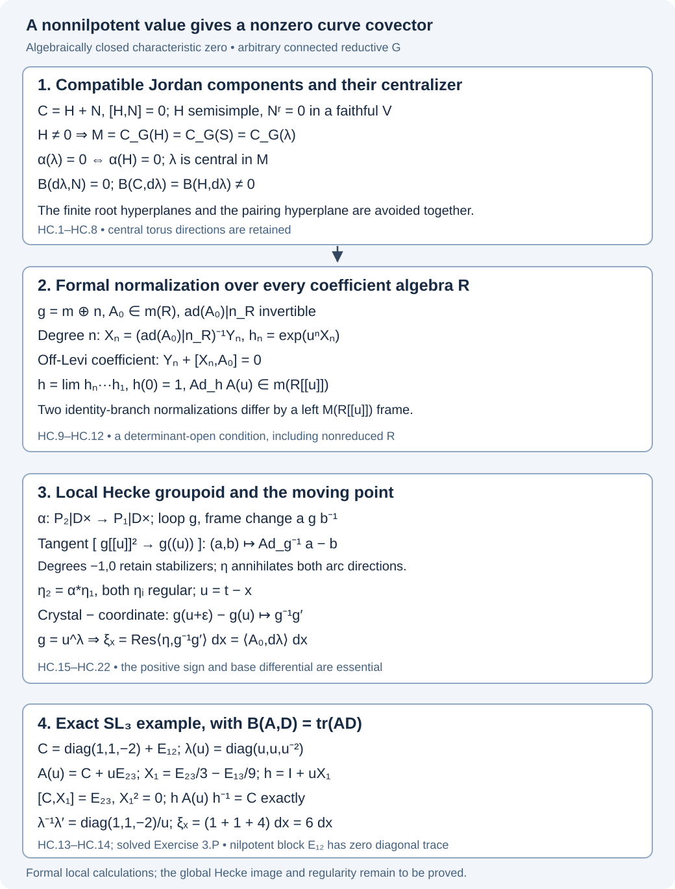
Figure 3.6. The center and root conditions are (HC.3)–(HC.8), the correction and its uniqueness are (HC.9)–(HC.12), and the framed quotient, cotangent pairs and curve residue are (HC.15)–(HC.22). The lower matrix example is exactly (HC.13)–(HC.14); its value \(6\,dx\) includes the nilpotent block and the specified trace form. The diagram displays these formal maps and coefficients, not a global Hecke image theorem. Free further reading is Gaitsgory–Kazhdan–Rozenblyum–Varshavsky, A toy model for the Drinfeld–Lafforgue shtuka construction, Appendix B, §B.6, and AGKRRV, §§20.4–20.8.
Exercise 3.P. Verify (HC.14) over \(R[[u]]\) for an arbitrary \(k\)-algebra \(R\). Compute the residue for the constant Higgs matrix \(C\) and the loop \(\lambda(u)\) of (HC.13).
Solution 3.P. The two root matrices in \(X_1\) have zero pairwise products, so \(X_1^2=0\), \(h^{-1}=1-uX_1\), and \(\det h=1\). The displayed commutators give \([X_1,C]=-E_{23}\) and \([X_1,E_{23}]=0\). Their further commutator is zero, so conjugation adds just \(-uE_{23}\) and kills the off-Levi coefficient exactly. These are polynomial identities with denominators three and nine, which remain units over every \(R\). The logarithmic derivative of the diagonal loop is \(u^{-1}\operatorname{diag}(1,1,-2)\). The trace pairing with \(C\,du\) has residue \(1+1+4=6\); the off-diagonal \(E_{12}\) has zero trace against that diagonal matrix. Thus the curve covector is \(6\,dx\).
Exercise 3.Q. Over \(k[\varepsilon]/\varepsilon^2\), compare the completions and punctured rings for centers zero and \(\varepsilon\). For \(G=\mathbb G_m\) and loop \(u^m\), determine the crystal-minus-coordinate tangent and its pairing with \(a(u)du\).
Solution 3.Q. The cofinal-ideal calculation gives the same completion, and \((t-\varepsilon)^{-1}=t^{-1}+\varepsilon t^{-2}\) gives the same punctured ring. Absolute transport becomes \((u+\varepsilon)^m=u^m+\varepsilon m u^{m-1}\), including negative integers by the finite nilpotent binomial identity. Left trivialization gives \(m/u\). Its residue against the regular covector is \(m a(0)\), so the discrepancy is \(m a(0)dx\). Using the coordinate-minus-crystal tangent instead would negate it.
Exercise 3.R. For a nonzero Lie element \(a\) of \(\mathbb G_m\), compute \(H,N,M\) and the formal normalization in (HC.10)–(HC.11). Explain why adjoint nilpotence alone would miss the covector in (HC.22).
Solution 3.R. In the faithful one-dimensional representation, \(H=a\) and \(N=0\). The torus centralizes itself, so \(M=G\) and \(\mathfrak n=0\); every formal series is already Levi-valued and the identity frame normalizes it. The identity cocharacter has nonzero pairing \(B(a,1)\), since the form on the one-dimensional Lie algebra is nondegenerate. But every adjoint endomorphism is zero for an abelian Lie algebra. Defining nilpotence only by that endomorphism would incorrectly include \(a\) and lose this nonzero central curve covector. Faithful-representation nilpotence, as in (HC.1)–(HC.4), retains it.
3.26. Tangent rigidity at the central Levi modification
We now use formal Levi invertibility to isolate the actual cocharacter modification. Keep the field and group assumptions of §3.23. Let \(M\) be the Levi centralizing the chosen cocharacter \(\lambda\), and write \(\mathfrak g=\mathfrak m\oplus\mathfrak n\) for its zero and nonzero weight spaces. After (HC.11), take \[ A(u)\in\mathfrak m(k[[u]]),\qquad D_0=\operatorname{ad}A(0)|_{\mathfrak n}\text{ invertible},\qquad g_0=u^\lambda. \tag{AS.1} \] The full affine Grassmannian retains its nilpotent coefficient tests. The bound used below is the reduced Schubert closure of the arc orbit \(\mathcal O_\lambda=L^+G\cdot u^\lambda\), as in Orbits and Schubert varieties in the affine Grassmannian, Theorem 3.5. In particular it is the closure of this orbit, rather than the whole possibly nonreduced affine Grassmannian. The same orbit is defined for a nondominant cocharacter; its dominant Weyl representative names the same bound.
Define the affine-Springer functor and its bounded part by \[ \operatorname{Spr}_{G,A}(R) =\{gL^+G:\operatorname{Ad}_{g^{-1}}A(u) \in\mathfrak g(R[[u]])\},\qquad Z_{A,\lambda}=\operatorname{Spr}_{G,A} \cap\overline{\mathcal O_\lambda}. \tag{AS.2} \] Here the formula is interpreted on étale local frames with descent, so it specifies the scheme condition on families. A right arc change preserves it. By centrality of \(\lambda\) in \(M\), the displayed point \(g_0L^+G\) belongs to this functor.
Isolation theorem. Under (AS.1), \(u^\lambda\) is an isolated reduced point of \(Z_{A,\lambda}\). Equivalently, it has an open neighborhood in this bounded affine-Springer scheme isomorphic to \(\operatorname{Spec}k\).
Proof. We first identify an actual finite-type neighborhood. The finite-jet stabilizer calculation in the Schubert lesson, §2, works on every coefficient algebra. For an arc \(a\), the stabilizer condition is \(u^{-\lambda}a u^\lambda\in L^+G\); its root parameter for \(\alpha\) is divisible by \(u^{\max(0,\langle\alpha,\lambda\rangle)}\). A sufficiently deep congruence group belongs to the stabilizer. The orbit is therefore the quotient of a smooth finite-type jet group by its smooth stabilizer. The full proof there gives its scheme structure and tangent space, including nonreduced tests.
The orbit is locally closed in the finite-type stages and open in its Schubert closure. One can check the last assertion scheme-theoretically: for a locally closed immersion \(Y\hookrightarrow X\), choose an open \(U\subset X\) in which \(Y\) is closed. The kernel ideal defining the schematic closure restricts on \(U\) to the original ideal of \(Y\), by localization. Thus its intersection with \(U\) is exactly \(Y\); reduction preserves this equality when \(Y\) is smooth. This also explains why nilpotents of the full ambient affine Grassmannian do not enlarge the orbit neighborhood of this reduced bound.
On this neighborhood the Springer condition is closed. On a smooth finite-jet cover of the orbit a representative is \(a(u)u^\lambda\). In a faithful weight representation let \(D\) be the maximum of the absolute differences of the integral \(\lambda\)-weights. Conjugation by \(u^\lambda\) shifts every matrix coefficient by at most \(D\) powers. Thus only the jets through degree \(D\) of \(a\), \(a^{-1}\) and the fixed series \(A\) can contribute a negative coefficient of \(u^{-\lambda}\operatorname{Ad}_{a^{-1}}A\). Choose the jet order greater than \(D\) and than every positive root pairing. This both puts its congruence kernel in the stabilizer and makes these negative coefficients independent of the chosen arc lift. The finitely many coefficient equations are polynomial regular functions on that jet group. The condition is invariant under the stabilizer on every coefficient algebra, since right arcs preserve regular Lie series; hence its defining ideals agree on the two pullbacks of the faithfully flat orbit cover and descend. This is closed-ideal descent, proved by the module equalizer and affine descent in Beauville–Laszlo gluing and the moduli interpretation, §2. Consequently \(Z_{A,\lambda}\cap\mathcal O_\lambda\) is a finite-type closed subscheme of the smooth orbit. We have used equations on test algebras, rather than a condition only on geometric points.
Left tangent trivialization writes a deformation as \(g_0(1+\varepsilon X)\). The arc-orbit tangent space is \[ T_{g_0}\mathcal O_\lambda =\frac{\operatorname{Ad}_{g_0^{-1}}\mathfrak g[[u]]} {\operatorname{Ad}_{g_0^{-1}}\mathfrak g[[u]] \cap\mathfrak g[[u]]}. \tag{AS.3} \] Every class has a representative in \(\mathfrak n((u))\). Indeed the zero-weight part is \(\mathfrak m[[u]]\) and vanishes in this quotient. Root weights with positive \(\langle\alpha,\lambda\rangle\) contribute only their finite principal parts; the others contribute nothing. This is also immediate by conjugating the integral tangent quotient in the Schubert lesson.
Because \(g_0\) commutes with \(A\), differentiating the closed Springer equations gives \[ \operatorname{Ad}_{(g_0(1+\varepsilon X))^{-1}}A =A+\varepsilon[A,X],\qquad [A,X]\in\mathfrak g[[u]]. \tag{AS.4} \] Changing \(X\) by a right-arc tangent changes its bracket by a regular series, so this condition is well-defined on (AS.3).
The operator \(D(u)=\operatorname{ad}A(u)|_{\mathfrak n[[u]]}\) is an invertible formal matrix. To prove this, put \(E(u)=D_0^{-1}(D(u)-D_0)\), whose constant term is zero. Then \[ D(u)^{-1}=\left(\sum_{j\geq0}(-E(u))^j\right)D_0^{-1} \in\operatorname{End}(\mathfrak n)[[u]]. \tag{AS.5} \] Every coefficient receives only finitely many terms. This proof works over arbitrary coefficient algebras whenever \(D_0\) is invertible. Since \(A\) is Levi-valued, its bracket preserves the complement. For the representative \(X\in\mathfrak n((u))\), (AS.4) therefore says \(D(u)X\in\mathfrak n[[u]]\). Applying (AS.5) forces \(X\in\mathfrak n[[u]]\), whose tangent class is zero. Consequently \[ T_{u^\lambda}Z_{A,\lambda}=0. \tag{AS.6} \]
This proves scheme isolation, including the absence of infinitesimal thickening at the chosen point. We spell out the local algebra needed for that conclusion. Finite-type algebras over a field are Noetherian: inductively, if \(B\) is Noetherian, the leading coefficients of an ideal in \(B[t]\) form a finitely generated ideal. Choose polynomials realizing those generators, and let \(d\) bound their degrees. They cancel the leading coefficient of every ideal element of degree at least \(d\), reducing to degree less than \(d\). The remaining elements form a submodule of \(B^d\), which is finitely generated: induction on the number of coordinates uses the finitely generated image ideal and the kernel in one fewer coordinates. These finitely many polynomials generate the original ideal. Starting with the field proves the polynomial-ring assertion; ideals in a quotient are generated by images of generators of their preimages. Ideals in a localization are extensions of their contractions, so those local rings are Noetherian too.
The maximal ideal \(\mathfrak q\) of our local ring has \(\mathfrak q/\mathfrak q^2=0\) by (AS.6). Write a finite vector of ideal generators as \(v=Cv\), with every entry of \(C\) in \(\mathfrak q\). The determinant of \(I-C\) has residue one, hence is a unit; its adjugate identity forces \(v=0\). This is the needed Nakayama argument, and proves that the local ring is the residue field \(k\). To see that an open neighborhood is actually this point, choose an affine neighborhood with ring \(B\) and maximal ideal \(p\). Each of its finitely many ideal generators becomes zero in \(B_p=k\), so a product \(f\notin p\) of their annihilating denominators kills \(p\). Thus \(pB_f=0\) and \(B_f=B_f/pB_f=k\). This is the required open reduced singleton. \(\square\)
In particular every nonreduced coefficient test into this open neighborhood is the constant section. Replacing \(\lambda\) by \(-\lambda\) preserves its centralizer and the adjoint invertibility hypothesis. The same proof therefore isolates the inverse modification in the opposite Schubert bound, the closure of \(\mathcal O_{-\lambda}\). Its positive-weight roots are the opposite ones. The theorem concerns these bounded Springer schemes near the specified modifications. Sections 3.27–3.29 prove global cotangent compatibility and transfer this isolation to the global compatible-Higgs fibre. Sections 3.30–3.32 put the corresponding covector in the actual bounded intersection-complex source support. For complex regular Ind inputs, §§3.553–3.563 transfer the selected-point isolation through the actual proper image and prove the cohomological Hecke criterion. Isolation by itself gives no spectral projector or independent regularity conclusion. Free further reading for this geometric step is AGKRRV, §§20.7–20.8.
Figure 3.7. The orbit tangent and regularity equation are (AS.3)–(AS.4); the formal inverse and the zero tangent are (AS.5)–(AS.6). The finite-type local-ring argument then gives the open reduced point. The six \(SL_3\) coefficients are computed in Exercise 3.S, and Exercise 3.U verifies their coupled equations over coefficient rings. Exercise 3.T explains the separate torus direction in the full Grassmannian. The reduced Schubert bound and the full nonreduced moduli functor both retain their stated meanings.
Exercise 3.S. For the trace-form \(SL_3\) example (HC.13), list the six tangent coefficients of the orbit at \(u^\lambda\). Verify directly that none survives the Springer condition for the constant series \(A=C\).
Solution 3.S. The two roots \(E_{13}\) and \(E_{23}\) have weight three, so each contributes the powers \(u^{-3},u^{-2},u^{-1}\); all other roots and the torus contribute zero. Write the principal part as \(X=\sum_{j=1}^3 u^{-j}(a_jE_{13}+b_jE_{23})\). Its bracket with \(C\) has coefficients \((3a_j+b_j)E_{13}+3b_jE_{23}\). Regularity requires \(3b_j=0\) and \(3a_j+b_j=0\) for every \(j\), so all six coefficients vanish. The invertible block is \(\begin{pmatrix}3&1\\0&3\end{pmatrix}\), including the nilpotent \(E_{12}\) term. Thus the actual bounded Springer point is isolated and reduced by the local-ring argument.
Exercise 3.T. For \(G=\mathbb G_m\) and \(A=a(u)\), compare the bounded Springer scheme for the orbit of \(u^m\) with the full Springer functor over \(k[\varepsilon]/\varepsilon^2\).
Solution 3.T. The adjoint action is trivial, so the full Springer functor is the full affine Grassmannian. The arc orbit of \(u^m\) is a single reduced point, and its reduced Schubert closure is the same point; its bounded Springer scheme is therefore \(\operatorname{Spec}k\). Nevertheless \(u^m(1+\varepsilon/u)\) is a valid loop, with inverse \(u^{-m}(1-\varepsilon/u)\), and represents a nontrivial infinitesimal Grassmannian point: the quotient factor \(1+\varepsilon/u\) is not an arc. This direction lies in the full Springer functor and outside the bound. It confirms both bounded isolation and the need to retain nilpotents in the full moduli problem.
Exercise 3.U. Over any coefficient \(k\)-algebra \(R\), replace the constant matrix in Exercise 3.S by \(A(u)=\operatorname{diag}(1,1,-2)+(1+u\vartheta)E_{12}\), with \(\vartheta\in R\). Compute the complementary adjoint block on \(E_{13},E_{23}\), its formal inverse, and the principal-part tangent equations. No reducedness hypothesis on \(R\) is allowed.
Solution 3.U. In this ordered root basis the block and its inverse are \(\begin{pmatrix}3&1+u\vartheta\\0&3\end{pmatrix}\) and \(\begin{pmatrix}1/3&-(1+u\vartheta)/9\\0&1/3\end{pmatrix}\). Their products in both orders are the identity. For the six coefficients \((a_j,b_j)\), the negative powers impose \(3b_j=0\) and \(3a_j+b_j+\vartheta b_{j+1}=0\), where \(b_4=0\). Since three is a unit, these equations first kill all \(b_j\), then all \(a_j\). This works for nilpotent \(\vartheta\), nonreduced \(R\), or an arbitrary parameter. In the order \((a_1,b_1,a_2,b_2,a_3,b_3)\), the six-by-six coefficient matrix is block upper triangular with three diagonal blocks of determinant nine, so its determinant is \(9^3=729\). Thus no coefficient-ring tangent is lost by replacing the constant field calculation with this family.
3.27. Global Hecke cotangents from the gluing groupoid
Work at a geometric point over an algebraically closed field \(k\) of characteristic zero. Let \(X\) be a smooth connected projective curve, \(x\in X(k)\), and \(U=X-\{x\}\). A global modification is an isomorphism \(\alpha:P_2|_U\to P_1|_U\). Write \(p_i\) for its two bundle projections and \(r_x\) for restriction to the local Hecke groupoid. We retain the orientation of (HC.18).
First, \(U\) is affine. The Euler-characteristic calculation in The moduli stack of bundles, §2.4, (DS.13), gives \(h^0(\mathcal O_X(nx))\ge n+1-g\). For \(n>g\), choose a nonconstant rational function with poles supported at \(x\). The finite-morphism argument of §2.5 makes it a finite map to \(\mathbb P^1\). Its inverse image of \(\mathbb A^1\) is precisely \(U\), hence is affine. We will use the affine vanishing and Čech comparison proved in Cohomology of affine schemes and Serre's criterion, Theorems 2.2 and 3.1.
Identify the adjoint bundles on \(U\) using \(\alpha\). Their common bundle there is \(E\), and set \(V=\Gamma(U,E)\). Choose disc frames and a parameter \(u\); use the second frame to transport all punctured sections into the common space \[ W=\mathfrak g((u)),\qquad L_2=\mathfrak g[[u]],\qquad L_1=\operatorname{Ad}_{g^{-1}}\mathfrak g[[u]],\qquad V\hookrightarrow W. \tag{HG.1} \] Here \(g\) represents \(\alpha:P_2\to P_1\). The last injection follows by restricting to the function field and then to its Laurent-series completion. A nonzero rational section cannot acquire zero Laurent expansion: a nonzero element of the local DVR has a finite valuation. No trivialization of the bundle on all of \(U\) is required.
For either global adjoint bundle \(E_i\), principal parts at \(x\) give \[ H^1(X,E_i)=W/(V+L_i). \tag{HG.2} \] Indeed, \(E_i(*x)=j_*(E_i|_U)\), where \(j:U\hookrightarrow X\): locally a section on the complement of a Cartier divisor has a finite pole, and a finite affine cover clears these poles uniformly for each section. The quotient \(E_i(*x)/E_i\) has section space \(W/L_i\), since each principal part is a finite Laurent polynomial in a disc frame. Its higher cohomology vanishes: it is the filtered union of finite-length sheaves supported at \(x\), whose affine section functor is exact; finite affine Čech complexes commute with that union. Affine vanishing on \(U\) gives \(H^1(X,E_i(*x))=0\). The long exact sequence therefore gives (HG.2).
We fix the cotangent–Higgs identification by the perfect residue pairing \[ \xi_i([a_i])= \operatorname{Res}_x\langle A_i,a_i\rangle, \qquad A_i\in\Gamma(X,E_i^*\otimes\omega_X). \tag{HG.3} \] Regularity annihilates \(L_i\). The global residue theorem proved in §2.5 annihilates \(V\), because \(\langle A_i,v\rangle\) has its only possible pole at \(x\). Thus (HG.3) is well defined. It is injective: a nonzero Laurent coefficient of \(A_i\) pairs nontrivially with an opposite Laurent monomial in \(W\). The dimensions of its source and target are equal by Theorem 4.2 of Dualizing sheaves and Serre duality for projective schemes. For this application its dualizing line is \(\omega_X\): a local Koszul resolution in projective space gives \(\det(I/I^2)^\vee\otimes\omega_{\mathbb P}|_X\), and the determinant of the conormal sequence identifies that line with \(\Omega_X^1\). Hence (HG.3) is an isomorphism. This proves the residue normalization rather than assuming a sign for a connecting homomorphism.
We now compute the entire first-order groupoid at the modification, with \(x\) fixed. The square-zero torsor deformation calculation of the previous lesson, §§2.1–2.2, and affine vanishing trivialize each deformation relative to the fixed bundle on \(U\) and on the disc. The disc trivialization also follows directly from smooth formal lifting, §7.9 of that lesson. Effective gluing, including arrows, is proved in Beauville–Laszlo gluing and the moduli interpretation, Theorem 3.1. Thus a deformation is a triple \((a_1,a_2,b)\in W^2\oplus V\): the first two entries change the bundle gluing maps, and \(1+\varepsilon b\) changes \(\alpha\) on \(\,U\).
Changing the chosen identifications on \(U\) by \(U_1,U_2\in V\), and on the discs by \(v_i\in L_i\), gives the tangent complex \[ [\,V^2\oplus L_1\oplus L_2 \xrightarrow{d}W^2\oplus V\,],\qquad d(U_1,U_2,v_1,v_2) =(U_1-v_1,U_2-v_2,U_1-U_2), \tag{HG.4} \] in degrees \(-1,0\). Its kernel retains the infinitesimal automorphisms. The bundle projections send the triple to \([a_i]\) in (HG.2). The local projection sends it to \[ q=b-a_1+a_2\pmod{L_1+L_2}. \tag{HG.5} \] To verify the sign, let \(\psi_i\) be the two original disc-to-complement gluing maps, after identifying the complement bundles. The deformed local isomorphism is \(\psi_1^{-1}(1-\varepsilon a_1)(1+\varepsilon b)(1+\varepsilon a_2)\psi_2\). After tangent trivialization by \(\psi_2\), its relative right factor is \(1+\varepsilon(b-a_1+a_2)\). Applying (HG.5) to a boundary in (HG.4) gives \(v_1-v_2\), exactly the local arc boundary. Thus it defines the actual map of deformation groupoids.
Global compatibility theorem. Let \(\eta\) be a local cotangent vector as in (HC.17), and let \(\xi_i\) be the global covectors (HG.3). Then \[ p_1^*\xi_1+r_x^*\eta=p_2^*\xi_2 \quad\Longleftrightarrow\quad \begin{cases} A_2=\alpha^*A_1\text{ on }U,\\ \eta\text{ is their common local covector in the second frame.} \end{cases} \tag{HG.6} \] Proof. Suppose first that the equality holds. Evaluate it on \((a_1,0,0)\) for every \(a_1\in W\). Equations (HG.3) and (HG.5) give \(\operatorname{Res}\langle A_1-\eta,a_1\rangle=0\), with \(A_1\) transported into the common frame. The perfect Laurent coefficient pairing forces \(A_1=\eta\) on the punctured disc. Evaluating on \((0,a_2,0)\) similarly gives \(A_2=\eta\). Equality of Laurent expansions is equality of rational sections, so the two fields agree on \(U\).
Conversely, let \(A\) be their common field on \(U\), and use its common local covector for \(\eta\). The term \(\operatorname{Res}_x\langle A,b\rangle\) vanishes by the global residue theorem: this is a rational differential with no other possible pole. Hence evaluation on any triple gives \[ r_x^*\eta(a_1,a_2,b) =\operatorname{Res}_x\langle A,-a_1+a_2\rangle =(p_2^*\xi_2-p_1^*\xi_1)(a_1,a_2,b). \tag{HG.7} \] All three functionals annihilate the boundaries in (HG.4), so this is equality on the classical tangent space, with its automorphisms retained in the displayed complex. \(\square\)
3.28. The compatible global fibre and nilpotent coefficients
The gluing consequence holds on every ordinary coefficient \(k\)-algebra \(R\), including nonreduced ones. Fix \((P_1,A_1,x)\), extend these data to \(R\), and fix a formal frame of \(P_1\). Use an invariant nondegenerate bilinear form \(B\) to identify the coadjoint field with an adjoint-valued differential, writing its disc expression as \(A(u)du\). A modification represented by \(gL^+G\) admits a compatible regular global field on \(P_2\) exactly when \[ A_2|_U=\alpha^*A_1|_U, \qquad A_2|_{D_R}=\operatorname{Ad}_{g^{-1}}A(u)\,du \text{ is regular.} \tag{HG.8} \] The forward implication is restriction. For the converse, these two sections agree on the punctured disc, and effective vector-bundle gluing in the previous lesson, §§7.1–7.4, gives their global section. Apply its fully faithful map gluing to the maps from the trivial line into the coadjoint differential bundle. This works with every coefficient ring and commutes with coefficient change. It is unique: restriction to the complement of the graph is injective on a locally free sheaf. Here is the relative Cartier argument on all coefficient rings. In an étale curve coordinate the graph is locally the pullback of \(t-a=0\). Multiplication by the monic polynomial \(t-a\) on \(R[t]\) is injective by its leading coefficient; localization and flat étale base change preserve this injection. Thus the graph has a local defining nonzerodivisor \(f\), even for nonreduced \(R\). Multiplication by every \(f^n\) is then injective on a free module, so localization at \(f\) is injective. This also proves the injectivity needed for moving graphs.
Consequently, with the input object fixed by a specified identification, the functor of compatible Higgs modifications is \[ \{(P_2,\alpha,A_2):\alpha^*A_1=A_2\text{ on }U_R\} \simeq\operatorname{Spr}_{G,A}(R). \tag{HG.9} \] This is an equivalence of the full test functors, not only a bijection of field points. Changing the second disc frame is precisely right multiplication by an arc; (HG.8) is invariant under it, and faithfully flat descent removes the frame. There are no extra automorphisms in this fibre. An automorphism fixing the identified input and commuting with \(\alpha\) is the identity on \(U_R\); apply the same Cartier injectivity to its difference from the identity in a faithful associated vector bundle. Faithfulness then makes it the identity everywhere. Thus the fibre has the Grassmannian functor, rather than an additional coarse quotient by the input automorphisms.
Restricting (HG.9) to the reduced Schubert bound gives the bounded Springer scheme of §3.26. Under its exact hypotheses, the point \(u^\lambda\) is therefore an open reduced point of the global compatible-Higgs modification fibre. Fixing the output instead and inverting \(\alpha\) gives the same conclusion in the opposite bound for \(u^{-\lambda}\). All the coefficient tests of these open points are constant, as proved after (AS.6). This transfers the local isolation to the global fibre without asserting a direct-image theorem.
We also retain the scheme-theoretic nilpotent conditions. If \(F\in k[\mathfrak g]^G\) is homogeneous of positive degree \(d\), evaluation on an adjoint Higgs field gives a section of \(\omega_{X_R/R}^{\otimes d}\). Homogeneity makes the local differential-frame expressions agree; invariance makes conjugate fields agree on \(U_R\). Cartier injectivity therefore gives \[ F(A_1)=F(A_2) \quad\text{in }\Gamma(X_R,\omega_{X_R/R}^{\otimes d}). \tag{HG.10} \] Invariance here is an identity of the group coaction on the polynomial algebra, so it remains valid for \(G(R((u)))\), not just for field-valued conjugations. Thus the simultaneous vanishing of all positive-degree invariant sections, the zero-Hitchin-fibre conditions, is preserved on all these tests: \[ (P_1,A_1)\text{ lies in the global nilpotent fibre} \quad\Longleftrightarrow\quad (P_2,A_2)\text{ does}. \tag{HG.11} \] The field-valued criterion agrees with the nilpotence convention of §3.7. Over nonreduced rings it is the invariant equations themselves that (HG.11) preserves. Nilpotence of a matrix over a ring by itself is a weaker condition, as Exercise 3.X shows.
3.29. The global moving-point covector
Let \(\mathcal H_X\) be the moving global Hecke groupoid, \(r:\mathcal H_X\to\mathcal H_X^{\mathrm{loc}}\) its restriction, and \(s:\mathcal H_X\to X\) the point projection. The crystal transport constructed in (HC.19) fixes both global bundles and their isomorphism on the common complement when the center changes infinitesimally. Restriction commutes with this transport. It therefore gives compatible splittings of the tangent spaces into their fixed-point parts and their \(T_xX\) directions. In particular, the global bundle projections have zero derivative on the crystal horizontal direction: \[ p_i^*\xi_i\text{ has crystal curve component }0, \qquad r\text{ respects the crystal splittings.} \tag{HG.12} \] This follows from the actual nilpotent-ring identity of complements and completions, not from a choice of a locally constant bundle in a coordinate chart.
Take a local moving covector \(\theta\) whose fixed-point restriction is \(\eta\) and whose curve component is zero in the coordinate splitting \(u=t-x\). For a general loop its curve component in the crystal splitting is the discrepancy computed in (HC.21). Combining (HG.6) with (HG.12) proves the full moving relation \[ p_1^*\xi_1+r^*\theta=p_2^*\xi_2+s^*\xi_x, \qquad \xi_x=\operatorname{Res}_{u=0} \langle\eta,g^{-1}g'\rangle\,dx, \tag{HG.13} \] provided the fields are compatible. Conversely the displayed cotangent equality forces the fixed-point compatibility and this curve term: evaluate it first on all fixed-point tangents, then on the crystal horizontal tangent. The positive sign corresponds to crystal lift minus coordinate lift. The formula for a general loop uses the stated coordinate splitting.
Now suppose the input Higgs field has a nonnilpotent value at \(x\). Write that value as \(C=H+N\) and use §3.23 to choose a centralizer-detecting cocharacter with \[ M=C_G(H)=C_G(\lambda),\qquad B(C,d\lambda)=B(H,d\lambda)\ne0. \tag{HG.14} \] The formal normalization of §3.24, whose initial coefficient is the identity, puts \(A(u)\) in \(\mathfrak m[[u]]\) while retaining \(A(0)=C\). Its complementary adjoint is invertible. Since \(u^\lambda\) commutes with this series, (HG.8) glues a compatible global field on the modified bundle. The two disc fields are this same series in their chosen frames. Equations (HC.22) and (HG.13) give \[ g=u^\lambda,\qquad \xi_x=B(C,d\lambda)\,dx\ne0. \tag{HG.15} \] This cocharacter covector is intrinsic by the parameter-change calculation following (HC.22). Both bounded compatible-Higgs fibres, for the modification and its inverse, have the open reduced points proved in §3.28. We have therefore constructed \[ \begin{gathered} \xi_x\ne0,\\ u^{\pm\lambda}\text{ is an open reduced point in its bounded compatible fibre.} \end{gathered} \tag{HG.16} \] The assertion is conditional on a nonnilpotent global input value; it does not assume that every curve admits such a value.
Sections 3.30–3.32 put the required local covector in the actual Satake source support. For complex regular Ind inputs, §§3.553–3.563 prove its proper survival and the cohomological Hecke criterion. Neither conclusion follows merely from (HG.16). Independent nilpotent regularity and equality of the projector image with all independently nilpotent-supported objects retain their separate requirements. Sections 3.597–3.610 prove regularity and nilpotent support for every object in the actual restricted projector image. Free further reading for the global cotangent diagram and the compatible crystal splittings is Gaitsgory–Kazhdan–Rozenblyum–Varshavsky, Appendix B.6.5–B.6.8.
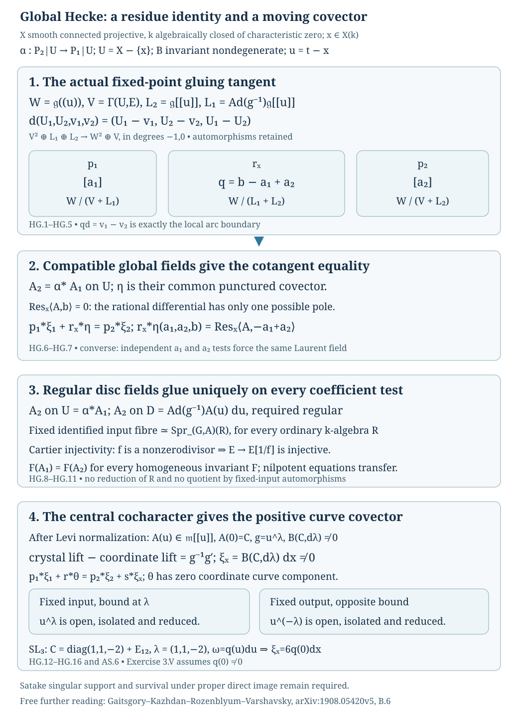
Figure 3.8. The tangent maps are (HG.4)–(HG.5), and the residue equality is (HG.7). The all-ring fibre equivalence and invariant equations are (HG.9)–(HG.11). The moving relation and its nonzero cocharacter term are (HG.13)–(HG.15), with the sign fixed by (HC.20). The two isolated fibres use (AS.6). The numerical value shown is computed in Exercise 3.V. The global cotangent diagram has free further reading in Gaitsgory–Kazhdan–Rozenblyum–Varshavsky, Appendix B.6.
Exercise 3.V. Let \(X\) have a nonzero regular differential \(\omega\), choose \(x\) with \(\omega(x)\ne0\), and write \(\omega=q(u)du\) on the disc. Take the trivial \(SL_3\)-bundle with Higgs matrix \(C\omega\), where \(C=\operatorname{diag}(1,1,-2)+E_{12}\). Modify by \(g=\operatorname{diag}(u,u,u^{-2})\). Determine the modified vector bundle and field, the invariant polynomial, and the moving curve covector for the trace form. Verify both isolation hypotheses.
Solution 3.V. The new lattice in the original punctured trivial bundle is \(u\mathcal O_D\oplus u\mathcal O_D\oplus u^{-2}\mathcal O_D\). Hence its global vector bundle is \(\mathcal O_X(-x)\oplus\mathcal O_X(-x)\oplus\mathcal O_X(2x)\), with its determinant trivialization. The first two summands are equal, so \(E_{12}\) defines a global homomorphism between them. The diagonal endomorphism and that homomorphism, multiplied by \(\omega\), give the compatible global field; on the disc it is again \(Cq(u)du\). In a differential frame the characteristic polynomial is \((T-1)^2(T+2)=T^3-3T+2\); on the curve its last two coefficients are \(-3\omega^2\) and \(2\omega^3\). They agree before and after modification and do not vanish. The cocharacter derivative is \(H=\operatorname{diag}(1,1,-2)\), so \(\operatorname{tr}(CH)=6\) and (HG.15) gives \(6q(0)dx\ne0\). The complementary adjoint blocks are \(q(0)\begin{pmatrix}3&1\\0&3\end{pmatrix}\) and \(q(0)\begin{pmatrix}-3&0\\-1&-3\end{pmatrix}\). Their determinants are \(9q(0)^2\ne0\). Thus §3.26 and the fibre equivalence isolate both directions, including the nilpotent Jordan summand.
Exercise 3.W. On \(X=\mathbb P^1\), take \(x=\infty\), \(u=1/z\) and \(G=\mathbb G_m\). The local cotangent vector \(\eta=du\) is regular for the modification \(u^m\). Show directly that it cannot satisfy (HG.6) with global Higgs fields. Identify a deformation that detects the failure.
Solution 3.W. A regular differential on \(\mathbb A^1_z\) is \(f(z)dz\) with \(f\) polynomial. At infinity it is \(-f(u^{-1})u^{-2}du\), which is regular only when \(f=0\). Thus all global torus Higgs fields vanish. Nevertheless \(L_1=L_2=k[[u]]\), so \(du\) is a valid local cotangent. Set \(a_1=a_2=0\), \(b=z=u^{-1}\). This is the dual-number change \(\alpha\mapsto(1+\varepsilon z)\alpha\) on the affine complement, keeping both bundles fixed. Its local tangent is \(q=u^{-1}\), and \(r_x^*\eta\) evaluates to \(\operatorname{Res}(du/u)=1\). Both global bundle covectors evaluate to zero. This proves the failure. In particular, the complement-isomorphism tangent \(b\) cannot be omitted from the gluing calculation. This deformation is in the full Hecke functor; the reduced torus Schubert bound of Exercise 3.T excludes its nilpotent Laurent direction.
Exercise 3.X. Over \(R=k[\varepsilon]/(\varepsilon^2)\), verify the invariant argument in (HG.10) without passing to reduced points. Then distinguish the invariant zero-fibre condition from matrix nilpotence using \(S=\varepsilon I_2\).
Solution 3.X. If two regular matrix series are conjugate after inverting \(u\), their characteristic polynomials are equal in \(R((u))[T]\): determinant multiplicativity cancels the conjugating matrix and its inverse. Every coefficient difference is in \(R[[u]]\) and becomes zero after localization. Multiplication by \(u\) is injective coefficient by coefficient even though \(R\) is nonreduced, so those differences are already zero. For any group-invariant polynomial the coaction identity gives the same argument. Globally a local defining equation of the Cartier graph replaces \(u\), and its injectivity on the relevant differential line gives (HG.10). Now \(S^2=0\), whereas \(\det(TI_2-S)=(T-\varepsilon)^2=T^2-2\varepsilon T\). Its trace invariant is \(2\varepsilon\ne0\). Thus \(S\) is a nilpotent matrix over \(R\), but it is not an \(R\)-point of the invariant zero fibre. The transport proof preserves the stronger invariant equations on every test ring, rather than only their vanishing on field points.
3.30. The bounded intersection complex at its open orbit
Fix an algebraically closed field of characteristic zero. Write \(O_\lambda=L^+G\,u^\lambda\) for the smooth arc orbit and \(B_\lambda=\overline{O_\lambda}_{\mathrm{red}}\) for its reduced Schubert closure. The finite-jet stabilizer and smoothness of the orbit are proved in Orbits and Schubert varieties in the affine Grassmannian, §2. The finite stages \(Y_N\) of the full Grassmannian retain their original scheme structures and arbitrary coefficient tests, by Loop groups and the affine Grassmannian, Lemma 7.3. In particular, replacing \(Y_N\) by its reduction is not part of this construction.
The bounded intersection-complex module \(K_\lambda\) is the middle extension of the constant connection on \(O_\lambda\), supported on \(B_\lambda\). We use left differential-operator modules; the constant connection on a smooth variety is its structure sheaf with the usual derivations. The image definition, restriction and uniqueness of middle extension are proved in Preservation of holonomicity and minimal extensions, Theorem 4.1. The conventional cohomological normalization of the intersection complex does not change characteristic support.
Choose a finite stage containing \(B_\lambda\) and a local closed embedding \(Y_N\hookrightarrow Z\) into a smooth variety. Such local embeddings exist: a finite-type affine coordinate ring is a quotient of a polynomial ring, giving a closed embedding into affine space. Near a point \(y\in O_\lambda\), remove the closed boundary \(B_\lambda\setminus O_\lambda\) from \(Z\). The remaining part of \(B_\lambda\) is exactly the smooth closed subvariety \(O_\lambda\). If \(i:O_\lambda\hookrightarrow Z\) denotes this local embedding, restriction of the middle extension is
\[ K_\lambda|_Z=i_+\mathcal O_{O_\lambda}. \tag{BK.1} \]
Here and below an ambient representative is extended by zero from its closed support. This use of a smooth ambient space is the intrinsic supported-module construction proved in Kashiwara's equivalence and D-modules on singular spaces, Theorems 3.1 and 5.1.
We compute (BK.1), including every normal direction. Take adapted étale coordinates \(z_1,\ldots,z_d,w_1,\ldots,w_c\), with the \(w_j\) cutting out the orbit and the \(z_i\) restricting to coordinates on it. These coordinates can be constructed by choosing generators of the conormal bundle and lifts of a cotangent basis on the smooth orbit. Their differentials form a basis at the point; the resulting map to affine space is étale on a neighbourhood. Trivialize the transfer density line in this coordinate chart. The delta generator \(e\) of the closed direct image satisfies
\[ w_j e=0,\qquad \partial_{z_i}e=0,\qquad i_+\mathcal O_{O_\lambda} =\mathcal D_Z\big/ \left(\sum_j\mathcal D_Zw_j+ \sum_i\mathcal D_Z\partial_{z_i}\right). \tag{BK.2} \]
The ideals displayed are left ideals. Commuting coordinates to the right and derivatives to the left gives the normal form \(\sum_\alpha f_\alpha(z)\partial_w^\alpha e\), with a finite sum for each section. Normal multiplication acts by lowering:
\[ w_j\bigl(f\partial_w^\alpha e\bigr) =-\alpha_j f\partial_w^{\alpha-e_j}e. \tag{BK.3} \]
The normal form is unique. Indeed, for one normal pair with \([\partial_w,w]=1\), the finite operator \(\pi(m)=\sum_{r\geq0}\partial_w^r w^r m/r!\) projects to \(\ker w\). Applying \(\pi w^r\) to a normal polynomial recovers its coefficient of \(\partial_w^r\), multiplied by \((-1)^rr!\). For several normal pairs the projectors commute, and their product recovers each coefficient. Characteristic zero makes these scalars invertible. This is also the full-module proof of the normal decomposition, not just an argument for a finitely generated module; the formulas are finite on every supported section.
Filter by normal derivative degree, using the degree-zero constant connection on the orbit. Uniqueness of the normal form gives the actual associated graded module
\[ \operatorname{gr}\bigl(i_+\mathcal O_{O_\lambda}\bigr) =\mathcal O_{O_\lambda}[\xi_{w_1},\ldots,\xi_{w_c}], \qquad w_j=0,\quad \xi_{z_i}=0. \tag{BK.4} \]
Normal coordinates lower filtration degree, tangent derivatives act by differentiating degree-zero coefficients, and normal derivatives raise degree. Thus the symbols have precisely the stated action. The graded module is finitely generated over the ambient symbol ring, so this is a good filtration. Its support contains every normal covector, and contains no nonzero tangent covector. Density changes multiply the generator by an invertible function and modify tangent operators by order-zero terms. Their principal symbols, and hence this description, agree on overlaps.
Proposition. At every point \(y\in O_\lambda\), the ambient characteristic fibre of \(K_\lambda\) is the entire conormal vector space \(\operatorname{Ann}(T_yO_\lambda)\subset T_y^*Z\). In the original, possibly nonreduced finite stage, its intrinsic fibre is
\[ \operatorname{SS}(K_\lambda)_y =\operatorname{Ann}\bigl(T_yO_\lambda\subset T_yY_N\bigr). \tag{BK.5} \]
Proof. Formula (BK.4) proves the ambient assertion. The cotangent space of \(Y_N\) is the quotient of \(T_y^*Z\) by the differentials of its defining ideal. Equivalently, restriction \(T_y^*Z\twoheadrightarrow T_y^*Y_N\) is dual to the injection \(T_yY_N\hookrightarrow T_yZ\). A covector on \(T_yY_N\) annihilating \(T_yO_\lambda\) extends to one on \(T_yZ\) annihilating the same subspace: extend a basis of the orbit tangent first to the stage tangent and then to the ambient tangent. Conversely, every ambient conormal restricts to such a covector. The inverse image of this annihilator is the entire ambient conormal, since the kernel of restriction itself annihilates the stage tangent. This proves (BK.5) and its independence of the chosen smooth ambient embedding for this module. No smoothness or reducedness of \(Y_N\) was used. ∎
For two stages containing the bound, the inclusion \(Y_N\hookrightarrow Y_{N'}\) induces an injection on tangent spaces and a restriction map on cotangents. The same basis argument gives
\[ \rho_{N'N}^{-1}\operatorname{SS}(K_\lambda)_y^{(N)} =\operatorname{SS}(K_\lambda)_y^{(N')},\qquad \rho_{N'N}:T_y^*Y_{N'}\twoheadrightarrow T_y^*Y_N. \tag{BK.6} \]
The ambient modules represent the same middle extension: closed direct image is the supported-module equivalence, and the no-boundary-submodule and no-boundary-quotient characterization is unchanged. Thus (BK.6) is compatibility of the actual kernel, in addition to compatibility of vector-space annihilators.
At \(g=u^\lambda\), use \(W=\mathfrak g((u))\), \(L_2=\mathfrak g[[u]]\), \(L_1=\operatorname{Ad}(g^{-1})\mathfrak g[[u]]\). The full Grassmannian tangent is \(W/L_2\); its arc-orbit subspace is \((L_1+L_2)/L_2\). A compatible regular local covector from (HC.17) lies in \(\operatorname{Ann}(L_1+L_2)\), using the residue pairing. Every finite-stage tangent embeds into this full tangent, because the stage represents a subfunctor on dual numbers. Restriction therefore gives
\[ \eta\in\operatorname{Ann}(L_1+L_2) \quad\Longrightarrow\quad \eta_N\in\operatorname{SS}(K_\lambda)_g^{(N)} \quad\text{for every stage containing the bound.} \tag{BK.7} \]
This is membership in the kernel's characteristic fibre. The finite-stage restrictions form the compatible family (BK.6). Computing this fibre does not require a description of the characteristic support at boundary orbits.
3.31. External products for the full unbounded category
Let \(S\) be a smooth finite-type parameter chart, and let \(M\) be a coherent left \(\mathcal D_S\)-module. On \(S\times Z\), take its external product with (BK.1). A good filtration on \(M\), combined with normal derivative degree as in (BK.4), gives
\[ \begin{aligned} \operatorname{gr}\bigl(M\boxtimes i_+\mathcal O_{O_\lambda}\bigr) &=\operatorname{gr}M\boxtimes \mathcal O_{O_\lambda}[\xi_w],\\ \operatorname{Ch}\bigl(M\boxtimes i_+\mathcal O_{O_\lambda}\bigr) &=\operatorname{Ch}(M)\times T^*_{O_\lambda}Z. \end{aligned} \tag{BK.8} \]
The support equality is exact. Locally the graded module is obtained by extending the input symbol module by the orbit coordinate algebra and the polynomial normal symbols. At any geometric point of the orbit and any values of the normal symbols, that extension has a nonzero localized fibre precisely when the input symbol module does. This follows by tensoring over the ground field and applying the finitely generated module version of Nakayama's lemma in the two symbol charts. The additional tangent symbols act as zero. Consequently there is no restriction on a normal covector and no enlargement of the input characteristic support.
For a full unbounded complex \(F\), use the cohomological support convention of §3.22: take the union of characteristic supports of coherent submodules of every \(H^mF\). No closure of this union is implicit. The functor \(E(N)=N\boxtimes i_+\mathcal O_{O_\lambda}\) is exact on modules. Tensor over the ground field is exact, the constant connection has no extra derived tensor terms, and closed direct image is exact by the normal decomposition. Applying the functor degree by degree therefore commutes with cohomology even for an unbounded complex.
We also need the converse to the inclusion obtained from coherent input submodules. Work locally. A finitely generated submodule \(A\subset E(N)\) has finitely many generators. Expand them into normal polynomials. Each of their finitely many coefficients in \(N\boxtimes\mathcal O_{O_\lambda}\) is a finite sum of input sections tensored with orbit functions. Choose the \(\mathcal D_S\)-submodule \(N_0\subset N\) generated by these finitely many input sections. The differential-operator ring on a smooth finite-type chart is Noetherian, so \(N_0\) is coherent. Exactness embeds \(E(N_0)\) into \(E(N)\). This image is stable under all ambient differential operators, by the transfer construction, and it contains the chosen generators. Hence \(A\subset E(N_0)\). Characteristic support of a coherent submodule is contained in that of its containing coherent module, by the strict induced good filtration argument used in §3.22. Conversely each \(E(N_0)\) is itself a coherent submodule. Taking both unions proves
\[ \operatorname{SS}_{\infty}(E(F)) =\operatorname{SS}_{\infty}(F)\times T^*_{O_\lambda}Z. \tag{BK.9} \]
This proof uses individual finite generators; it imposes no boundedness on \(F\). Passing to a singular finite stage means taking the cotangent quotient in (BK.5), giving the same product with the stage annihilator. On the smooth open orbit itself, the relative factor is simply the zero section. The smooth chart-transfer formula (NS.7) makes these computations compatible with further smooth parameter charts. They establish the needed full-category product calculation without asserting that the unbounded derived category is the derived category of an ind-holonomic heart.
3.32. Finite frames and membership in the global Hecke source
We now realize the parameter product used above at the open orbit of the bounded global Hecke correspondence. Fix a finite-type smooth chart \(Q\to\operatorname{Bun}_G\) carrying the input bundle, and choose an étale curve coordinate near the modification point. For a moving point with coordinate \(a\), put \(u=t-a\). The completion along its graph is \(R[[u]]\) on every affine coefficient test. To see this, the formal completion of an étale coordinate chart lifts the chosen graph section uniquely through each nilpotent thickening of the coordinate graph; induction identifies its quotients with \(R[u]/u^n\). Their inverse limit is \(R[[u]]\). The graph is Cartier by the monic-coordinate argument in §3.28.
Choose \(M\) larger than all positive root pairings with \(\lambda\), and set
\[ G_M(R)=G(R[u]/u^M),\qquad K_M=\ker\bigl(L^+G\longrightarrow G_M\bigr),\qquad O_\lambda=G_M/(H_\lambda/K_M). \tag{BK.10} \]
The stabilizer proof cited in §3.30 establishes \(K_M\subset H_\lambda\) on all rings. Since \(K_M\) is normal in \(L^+G\), it fixes every point of the orbit, also on nonreduced tests: for an arc \(h\), the stabilizer of \(hu^\lambda\) is \(hH_\lambda h^{-1}\), which still contains \(K_M\). Thus (BK.10) is a quotient of actual functors, not only a description of geometric points.
Let \(\mathrm{Fr}_M\) be the scheme of frames of the input bundle on the graph modulo \(u^M\). It is a \(G_M\)-torsor over \(Q\times X\), restricted to the coordinate neighbourhood. It is affine and of finite presentation: in a faithful matrix representation, substitute a matrix polynomial of degree below \(M\) into the group's equations and the frame equations, and equate its finitely many coefficients modulo \(u^M\); invert the determinant of its constant term. Descent from local frames identifies these equations intrinsically. The group \(G_M\) is smooth. Reduction to \(G\) has successive kernels \(\mathfrak g\otimes u^r/u^{r+1}\), with addition as their group law, and the lifting equations are the smooth lifting equations of \(G\). The finite-jet description in (BK.10) proves the same assertion in root coordinates. Consequently the frame torsor is a smooth finite-type chart over the base.
A frame to order \(M\) lifts to a formal frame on any affine test. Here are the details needed for arbitrary coefficient rings. Suppose a frame is chosen to order \(n\). Smoothness supplies local lifts to order \(n+1\). Differences between two lifts are sections of the pulled-back Lie algebra tensored with \(u^n/u^{n+1}\), since multiplication in this square-zero kernel is addition. They form an additive Čech cocycle. This coefficient sheaf is quasi-coherent on the affine test; the affine Čech exactness used in §3.27 solves the cocycle. Adjusting the local lifts by that solution glues them to a global lift. Induction gives compatible frames to every order. Their limit is a formal frame: the torsor is affine of finite presentation, so an algebra map from its coordinate algebra to the inverse limit is exactly a compatible family of algebra maps to these quotients. Every defining equation holds at each order and hence in the complete ring. In a matrix frame its determinant is invertible because the constant determinant is invertible.
Two such lifts of a prescribed order-\(M\) frame differ by \(K_M\). This group acts trivially on \(O_\lambda\), as just proved. Effective gluing of the bundle on the complement with the modified formal bundle is proved, with arrows and arbitrary base change, in The moduli stack of bundles, §§7.1–7.4. Applying that construction in a formal frame identifies the global modifications of relative position \(\lambda\) with the associated orbit bundle. Pulling it to the frame torsor gives
\[ \mathcal H^{\lambda}\times_{Q\times X}\mathrm{Fr}_M \simeq \mathrm{Fr}_M\times O_\lambda. \tag{BK.11} \]
The inverse sends an orbit point to its glued modification. Changing the lifted formal frame does not change its class; changing the finite frame acts by \(G_M\). These statements hold on every affine test and for arrows, so they give the asserted isomorphism and its descent. This argument concerns the open relative-position stratum. It requires no claim that a chosen congruence group acts trivially on every boundary stratum of the Schubert closure.
The bounded global intersection-complex kernel restricts on this stratum to the relative constant connection, with its conventional shift. Indeed it is defined by middle extension from this smooth stratum, and exact restriction recovers the defining connection by (BK.1). Take a smooth affine chart \(S\) of \(\mathrm{Fr}_M\). After normalized smooth pullback, the source object for an input \(F\) therefore restricts on \(S\times O_\lambda\) to
\[ F_S\boxtimes\mathcal O_{O_\lambda},\qquad \operatorname{SS}_{\infty} (F_S\boxtimes\mathcal O_{O_\lambda}) =\operatorname{SS}_{\infty}(F_S)\times\{0\}. \tag{BK.12} \]
Here \(F_S\) is the pullback of \(F\) from the bundle chart, together with the constant curve and frame directions. Formula (NS.7) supplies its smooth-transfer support formula, and (BK.9) supplies (BK.12). The statements are unaffected by normalization shifts. Ambient finite presentations add exactly the normal annihilators in (BK.5).
Source-covector proposition. Suppose \((P_1,\xi_1)\) is a geometric point of \(\operatorname{SS}_\infty(F)\). At a bounded cocharacter modification, let \(\xi_2\), \(\eta\) and \(\xi_x\) be the compatible bundle, local and moving-point covectors constructed in §§3.27–3.29. Then the pullback of \((\xi_2,\xi_x)\) to the bounded Hecke source belongs to the characteristic support of its actual kernel-weighted input, on each of the finite smooth presentations above.
Proof. Formula (HG.15), with the coordinate-horizontal local covector \(\theta\) used there, is
\[ p_2^*\xi_2+s^*\xi_x =p_1^*\xi_1+r^*\theta. \tag{BK.13} \]
On the product (BK.11), the local modification coordinate is the orbit point. The parameter coordinates consist of the input frame and the moving curve coordinate; the chosen \(\theta\) has zero coordinate-horizontal component. Its pairing with every orbit tangent is zero by \(\eta\in\operatorname{Ann}(L_1+L_2)\). Hence \(r^*\theta=0\) on this smooth open stratum. Frame changes give arc-gauge directions, which are annihilated by the same condition. Thus the left side of (BK.13) becomes the pullback input covector with zero orbit component. Smooth transfer puts its input part in \(\operatorname{SS}_\infty(F_S)\), and (BK.12) puts the resulting pair in the actual source support. In any ambient finite presentation, (BK.5) and (BK.9) retain the normal covectors, giving the same intrinsic conclusion. ∎
For the nonnilpotent value treated in §§3.23–3.29, the curve component is the nonzero value \(B(C,d\lambda)dx\); the two bounded compatible-Higgs fibres are isolated by (AS.6) and (HG.9). These are source-support and geometric-fibre statements. Sections 3.547–3.552 give actual complex regular Ind input membership, and §§3.553–3.563 combine it with proper detection to prove the cohomological Hecke criterion. The stronger support-only extension to arbitrary D-modules requires the separate regularity, supported-generation and spectral arguments. No full categorical Hecke-lisse equality is concluded from this local calculation.
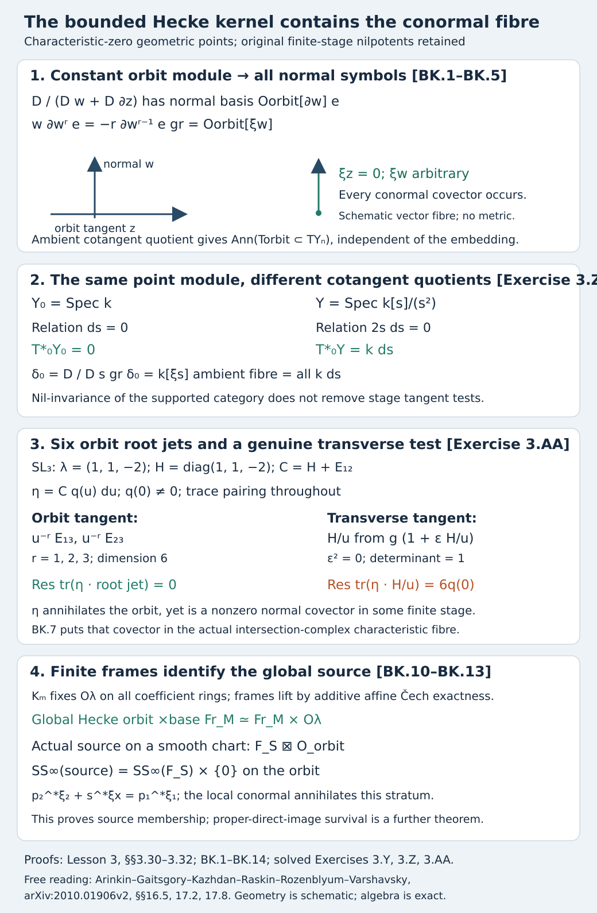
Figure 3.9. The first panel is the exact symbol module (BK.4), drawn as a schematic normal fibre. The second compares the classical cotangents of a reduced point and its square-zero thickening. The third shows the six root jets and the transverse diagonal direction computed below, with trace pairing \(6q(0)\). The final panel displays the finite-frame product and the source membership (BK.11)–(BK.13). Free further reading: Arinkin–Gaitsgory–Kazhdan–Raskin–Rozenblyum–Varshavsky, §§16.5, 20.4–20.9.
Exercise 3.Y. In \(\mathbb A^2_{z,w}\), let \(i\) be the smooth axis \(w=0\). Compute the differential-operator module \(i_+\mathcal O_{\mathbb A^1}\), its characteristic scheme, and the action of \(w\) on normal derivatives. Decide whether \(dz\), \(dw\) and \(dz+dw\) occur at the origin.
Solution 3.Y. The cyclic module is \(\mathcal D/(\mathcal Dw+\mathcal D\partial_z)\). Its normal basis is \(k[z,\partial_w]e\), with \(w\partial_w^re=-r\partial_w^{r-1}e\). The normal-degree filtration has associated graded \(k[z,\xi_w]\), annihilated by \(w\) and \(\xi_z\). The characteristic scheme is therefore \(w=0,\xi_z=0\) in \(T^*\mathbb A^2\). At the origin every multiple of \(dw\) occurs, including \(dw\) itself; \(dz\) and \(dz+dw\) do not, because their \(\xi_z\) coordinate is nonzero. The unrestricted normal variable is essential to (BK.7).
Exercise 3.Z. Compare \(Y=\operatorname{Spec}k[s]/(s^2)\) and \(Y_0=\operatorname{Spec}k\), both supported at the origin of \(\mathbb A^1_s\). Compute their classical cotangent spaces at that point and the intrinsic characteristic fibre of the point module. Explain how the answer agrees with nil-invariance of the supported D-module category.
Solution 3.Z. The cotangent presentation for \(Y\) is generated by \(ds\) with relation \(d(s^2)=2s\,ds\). At the residue point this relation is zero, so \(T_0^*Y=k\,ds\). For \(Y_0\) the relation is \(ds=0\), and its cotangent is zero. In the smooth ambient line the point module is \(\delta_0=\mathcal D/(\mathcal Ds)\). Its basis is \(k[\partial_s]e\), and its graded module is \(k[\xi_s]\) at \(s=0\). Thus its ambient characteristic fibre is the entire vertical line. Restriction to \(T_0^*Y\) is the identity on this line, whereas restriction to \(T_0^*Y_0\) has zero target. The categories of ambient modules supported on \(Y\) and on \(Y_0\) agree, since support is the same closed subset, as proved in the singular-spaces lesson. The spaces in which their intrinsic characteristic supports are recorded have different classical cotangents. Category nil-invariance does not erase a tangent test in a chosen nonreduced Grassmannian stage.
Exercise 3.AA. Take \(G=SL_3\), \(g=u^\lambda=\operatorname{diag}(u,u,u^{-2})\), \(H=\operatorname{diag}(1,1,-2)\), \(C=H+E_{12}\), and \(\eta=Cq(u)du\) with \(q(0)\ne0\). Check that \(\eta\) annihilates the six arc-orbit root jets. Then evaluate it on the full-Grassmannian dual-number deformation \(g(1+\varepsilon H/u)\), and locate that covector in the kernel fibre.
Solution 3.AA. The two positive root blocks are \(E_{13}\) and \(E_{23}\), each with pairing \(3\) with \(\lambda\). In the right-translated Grassmannian tangent the orbit is spanned by \(u^{-r}E_{13},u^{-r}E_{23}\), \(r=1,2,3\). Matrix multiplication gives \(\operatorname{tr}(CE_{13})=\operatorname{tr}(CE_{23})=0\), so every one of these residue pairings vanishes. Both \(\eta\) and its \(g\)-conjugate are regular, since \(C\) commutes with \(g\). This also verifies \(\eta\in\operatorname{Ann}(L_1+L_2)\) directly.
Over \(k[\varepsilon]/(\varepsilon^2)\), the matrix \(1+\varepsilon H/u\) has determinant \(1+\varepsilon\operatorname{tr}(H)/u=1\), and inverse \(1-\varepsilon H/u\). It is an actual loop in \(SL_3\). Its right-translated tangent is \(H/u\), which is nonzero modulo \(\mathfrak{sl}_3[[u]]\) and is outside the displayed six-dimensional orbit tangent. The residue is
\[ \operatorname{Res}\operatorname{tr} \bigl(Cq(u)\,H/u\bigr)du=6q(0)\ne0. \tag{BK.14} \]
The finite-stage union represents every coefficient test, so some \(Y_N\) contains this deformation. The restricted \(\eta_N\) is a nonzero conormal covector, and (BK.5) places it in the actual characteristic fibre of \(K_\lambda\) in that stage. It is excluded as a tangent to the reduced Schubert bound near \(g\), where the open orbit is the whole local bound. This agrees with the different cotangent quotients, and with the nonzero moving-point term in Exercise 3.V.
3.33. Quadratic tests at smooth cotangent points
We isolate the geometric mechanism used by the proper-direct-image lower bound. Work first over an algebraically closed field of characteristic zero. Let \(V\) have dimension \(n\), and let \(W\subset V\oplus V^*\) have dimension at most \(n\). There exists a symmetric linear map \(Q:V\to V^*\) whose graph has zero intersection with \(W\).
Here is a construction, including tangent planes that are not Lagrangian. Enlarge \(W\), if necessary, to dimension \(n\). Write \(U\) for its projection to \(V\) and \(K=W\cap V^*\). Put \(r=\dim U\). Then \(\dim K=n-r\), and \(W\) determines a well-defined linear map
\[ A:U\longrightarrow V^*/K, \qquad W=\{(u,\alpha):u\in U, \ \alpha\bmod K=A(u)\}. \tag{IS.1} \]
Let \(L=\operatorname{Ann}(K)\subset V\), so \(\dim L=r\) and \(V^*/K=L^*\). Choose a symmetric bilinear form \(B\) on \(V\) whose pairing \(U\times L\) is perfect. To do this, put \(D=U\cap L\), choose complements \(U_0,L_0\), and extend \(D\oplus U_0\oplus L_0\) to a direct-sum decomposition of \(V\). Pair a basis of \(D\) with itself by the identity matrix; pair bases of \(U_0\) and \(L_0\) with each other by the identity matrix, in both symmetric positions. Set all other pairings involving these three subspaces to zero. The resulting \(U\times L\) matrix is the identity in the chosen bases. The unused complement may be assigned any symmetric form.
Consequently \(B_U:U\to L^*\) is invertible, and
\[ \det(tB_U-A)\ne0 \quad\text{for all but finitely many }t\in k. \tag{IS.2} \]
Indeed its leading coefficient is \(\det B_U\ne0\). Choose such a scalar and take \(Q=tB\). A vector in its graph and in \(W\) would give \((tB_U-A)u=0\), hence \(u=0\), then \(Qu=0\). This proves the assertion. If \(r=0\), \(W=V^*\) and every graph already has zero intersection; the determinant of the empty matrix is one.
Now let \(Y\) be smooth of dimension \(n\), and let \(C\subset T^*Y\) be a closed reduced subset. Suppose \(p=(y,\xi)\in C\), \(\xi\ne0\), is a smooth point of \(C\) and \(\dim_p C\le n\). Choose étale coordinates \(z\) centred at \(y\) and use their differential frame for cotangent coordinates \(\alpha\). The tangent plane of \(C\) is a subspace of \(V\oplus V^*\). Apply the preceding construction and set
\[ g(z)=\langle\xi,z\rangle+\tfrac12 B_Q(z,z), \qquad g(y)=0,\quad dg_y=\xi. \tag{IS.3} \]
Here \(B_Q(v,w)=Q(v)(w)\). Symmetry is what makes the derivative of the quadratic term equal \(Qz\). Define \(h:C\to V^*\) by \(h(z,\alpha)=\alpha-dg_z\). At \(p\), its tangent kernel is \(T_pC\cap\operatorname{graph}(Q)=0\). Thus the Zariski tangent of the zero fibre at \(p\) is zero. The finite-type local algebra argument of §3.26 applies: its maximal ideal has zero quotient by its square, and the finite-generator Nakayama calculation gives zero maximal ideal. The point is open and reduced in that fibre. Removing the closed complement of this isolated point gives a neighbourhood where the fibre is just \(p\), since the fibre is Noetherian and has finitely many components. Therefore
\[ \operatorname{graph}(dg)\cap C=\{p\} \quad\text{on a neighbourhood of }p. \tag{IS.4} \]
Shrink the base neighbourhood too: the graph of \(dg\) near \(y\) stays in the chosen cotangent neighbourhood by continuity, and \(dg\) remains nonzero because one of its coordinate coefficients is invertible at \(y\). This gives an isolated characteristic test at a smooth cotangent point. It proves the smooth-point case needed at a generic cotangent point; it makes no assertion about a singular point of \(C\).
We also record precisely how isolation transfers through a codifferential. Let \(f:Y_1\to Y_2\), with \(Y_2\) smooth, and write
\[ D_C=(df^*)^{-1}(C) \subset T^*Y_2\times_{Y_2}Y_1, \qquad q:D_C\longrightarrow T^*Y_2. \tag{IS.5} \]
Use smooth ambient presentations for a singular \(Y_1\), as in §3.30. Suppose an irreducible component \(D\) contains \((\xi_2,y_1)\); its image closure is \(C_2\). Assume \(q|_D\) is quasi-finite there and no other component of \(D_C\) passes through that point. If \(g\) isolates \((y_2,\xi_2)\) in \(C_2\), then \(g\circ f\) isolates \(y_1\) with respect to \(C\).
Proof. Remove the other finitely many components near \((\xi_2,y_1)\). A characteristic point for \(g\circ f\) determines a point of \(D\) with target cotangent \(dg\). The image lies in \(C_2\), so isolation on \(Y_2\) forces that target cotangent to be \((y_2,\xi_2)\). Quasi-finiteness says its fibre is finite near our point. Remove the other points of this fibre. The only remaining characteristic point is \(y_1\). ∎
This proof needs neither finite degree of \(f\) nor injectivity of \(df\). It uses exactly the finite cotangent fibre and the exclusion of other components.
3.34. Why the isolated cycle is a functorial summand
For a complex variety and a function \(g\), write \(\phi_g\) for the unshifted vanishing-cycle cone and \(\Phi_g=\phi_g[-1]\) for its perverse normalization. The elementary cone and monodromy definitions are given in Nearby and vanishing cycles, §4. We distinguish the formal splitting below from the general microlocal detection and perverse-exactness inputs.
Let \(E\) be a bounded constructible complex on a space \(Z\), and suppose its closed support lies in \(\{y\}\cup T\), where \(T\) is closed and disjoint from \(y\). With \(i_y:\{y\}\hookrightarrow Z\), there is a canonical splitting
\[ E\simeq i_{y,*}V\oplus E_{\mathrm{away}}, \qquad V=i_y^*E\simeq i_y^!E, \qquad y\notin\operatorname{supp}(E_{\mathrm{away}}). \tag{IS.6} \]
Here is the full support argument. The inclusions of \(\{y\}\) and \(T\) in their disjoint union are both open and closed. Sheaves on this union are pairs of sheaves, with section and restriction maps taken componentwise. This is an exact product decomposition before passing to the derived category. Closed direct image identifies sheaves supported on this union with these sheaves: a section is determined by its restriction to the closed support, and extension gives zero stalk off the support. The same assertion for complexes follows by stalk detection and the closed-support adjunction. Thus it preserves all mapping complexes and gives (IS.6). A morphism to or from a complex supported away from \(y\) is zero on its point component, in every derived degree; this also follows from the zero inverse-image and exceptional-inverse-image restrictions. Consequently the projector onto \(i_{y,*}V\) is unique and natural. Enlarging \(T\) does not change it.
Apply this to a cycle complex whose support has \(y\) as an isolated point. It gives an actual projector, not merely a decomposition of cohomology vector spaces. If an exact functor sends the cycle to another category, it carries the inclusion and projection to maps whose composite is still the identity. The isolated complex cannot disappear by cancellation with another summand.
The extension to unbounded objects requires a precise completion assertion. The following abstract lemma states that assertion as a hypothesis, rather than replacing it with a derived-heart claim.
Completion lemma. Let \(\mathcal A_0\) be a small stable category of bounded objects with a t-structure. Let \(T_0:\mathcal A_0\to\mathcal B_0\) be exact and suppose there is a natural finite splitting \(T_0=P_0\oplus R_0\). Assume these functors are t-exact. Form their colimit-preserving extensions to ind-categories. Assume the actual categories \(\mathcal A,\mathcal B\) under consideration are the left completions of those ind-categories, and the functors on them are the extensions specified by truncation limits. Then
\[ T(F)=\lim_n T(\tau^{\ge -n}F) \simeq \left(\lim_nP(\tau^{\ge -n}F)\right) \oplus \left(\lim_nR(\tau^{\ge -n}F)\right). \tag{IS.7} \]
Proof. The ind-extension is computed by colimits of diagrams in \(\mathcal A_0\). A finite direct sum commutes with every colimit, so the natural inclusions, projections and their identity relations extend, giving the splitting on the ind-category. On each truncation they remain compatible with the transition maps. Limits commute with finite products, and in a stable category a finite product is the same as a finite direct sum. Taking the limit gives (IS.7) with the same identities. This proves a functorial splitting, not just an isomorphism for each object. T-exactness and the stated completion description identify these formulas with the actual functors; they are indispensable hypotheses of this assertion. ∎
For closed point support in classical sheaf complexes, \(i_{y,*}\) commutes with these limits: on an open set its sections are the coefficient complex if the open contains \(y\), and zero otherwise. Thus a limit of the point summands remains \(i_{y,*}V\). The lemma imposes no cohomological boundedness on \(F\).
Suppose additionally that \(P\) is t-exact and detects the characteristic test on a coherent heart subobject \(A\subset H^mF\). Then
\[ P(A)\ne0\quad\Longrightarrow\quad 0\ne P(A)\hookrightarrow P(H^mF)=H^m(P(F)) \quad\Longrightarrow\quad P(F)\ne0. \tag{IS.8} \]
The middle injection follows because a t-exact stable functor is exact on its heart: applying it to the triangle of a short exact sequence and taking cohomology gives a short exact sequence. This proves the full-unbounded detection deduction once the coherent test detection, t-exactness and completion premises have been established. It does not establish those geometric premises by itself.
3.35. Proper image of the isolated summand
Consider a proper map \(f:Y_1\to Y_2\), a function \(g\) on \(Y_2\), and the induced map \(f_0\) of zero fibres. Proper base change, when valid for the chosen sheaf theory and coefficient scope, gives the actual comparison
\[ \Phi_g\,Rf_*F\simeq Rf_{0,*}\,\Phi_{g\circ f}F. \tag{IS.9} \]
We spell out this deduction. Let \(U_i\) be the complements of the zero fibres, \(j_i\) their inclusions, and \(\pi_i:\widetilde U_i\to U_i\) the pullbacks of the universal cover of the punctured parameter disc. Nearby cycles are \(i_i^*Rj_{i,*}R\pi_{i,*}\pi_i^*j_i^*F\). Open restriction commutes with direct image by restricting sections. Proper base change for the square over the covering space identifies \(\pi_2^*Rf_{U,*}\) with \(R\widetilde f_*\pi_1^*\). Composition of the three direct-image right adjoints gives
\[ Rj_{2,*}R\pi_{2,*}R\widetilde f_* =Rf_*Rj_{1,*}R\pi_{1,*}. \tag{IS.10} \]
Proper base change at the zero fibre then gives the nearby-cycle comparison. These are maps induced by restriction and adjunction, and take the specialization map to the specialization map: both are induced by pulling a section to the same covering space. Taking its cone and then the shift \([-1]\) proves (IS.9). This verifies the normalization and the particular comparison, subject to the two proper-base-change assertions just named. It does not assert an arithmetic or unbounded base-change theorem without its own proof.
Suppose \(\Phi_{g\circ f}F\) has the natural splitting \(i_{y_1,*}V\oplus R(F)\), with \(V\ne0\). Pushing it forward in (IS.9) gives
\[ \Phi_gRf_*F\simeq i_{y_2,*}V\oplus Rf_{0,*}R(F), \qquad y_2=f(y_1). \tag{IS.11} \]
Direct image of the point summand has exactly coefficient complex \(V\): its sections over an open set containing \(y_2\) are \(V\), and otherwise zero. In particular, the stalk of the left side at \(y_2\) contains \(V\) as a retract and is nonzero. Other cycle summands may map to \(y_2\), but their contributions cannot change the identity on \(V\).
This proves a formal lower-bound principle with explicit inputs. To conclude that \((y_2,dg_{y_2})\) lies in the support of \(Rf_*F\), the chosen support theory must detect this nonzero isolated test. To obtain \(V\ne0\) from a source support component, it must detect the source isolated characteristic test. For unbounded \(F\), (IS.7)–(IS.8) also require the actual completion and t-exactness statements. Those are mathematical premises, not consequences of properness or of the isolated compatible-Higgs fibre alone.
The usual generic-point proof uses a component \(D\) in (IS.5) of the target's dimension and its image closure \(C_2\). At a generic point of \(C_2\), a finite nonempty cotangent fibre and exclusion of other components give the source isolation. Formula (IS.3) supplies the target test at the smooth generic point. Formula (IS.11) then supplies the lower bound once the detection and base-change inputs apply. Field-extension compatibility and characteristic-component dimension assertions are additional inputs to that generic-point reduction; they are not proved by the symmetric-form calculation.
For the bounded Hecke correspondence, §§3.26–3.32 establish actual source membership and the isolated compatible-Higgs fibre in both directions. The bounded characteristic-support comparison is AIC.8; §§3.499–3.502 give the full unbounded isolated-cycle retract for ind-regular inputs under componentwise isolation. Sections 3.517–3.523 give nonvanishing from an actual finite characteristic witness, including critical differentials and nonisolated invisible strata. Sections 3.503–3.504 give arbitrary characteristic-zero field extension of the independent full cohomological support condition. Sections 3.527–3.533 prove the actual proper-cycle comparison and nonzero point-image retract over complex smooth separated finite-type schemes. Under the regular Ind and hypotheses of an isolated compatible point for every finite cohomology submodule, §§3.537–3.543 give original-complex proper-image detection through an actual universal quadratic family. Sections 3.547–3.552 provide the actual complex regular Ind Hecke input, and §§3.553–3.563 bind its exact kernel, compatible points and proper maps to the cohomological Hecke criterion. Independent nilpotent regularity and generation of the full independently supported category retain their requirements. The stronger support-only assertion for all D-modules is not asserted here. Sections 3.597–3.610 prove original-field generation and regularity of the full Hecke-lisse image. Equality with all independently nilpotent-supported objects is not a consequence of the regular-input criterion. Equations UID.14 and RSE.38 give the spectral idempotent and its full Hecke-lisse image; GFP.55–GFP.56 give original-field ind-regularity and containment in nilpotent support. GZR.33 supplies the converse from all independently nilpotent-supported objects over the complex numbers.
Free further reading for this mechanism is Arinkin–Gaitsgory–Kazhdan–Raskin–Rozenblyum–Varshavsky, Appendix H, especially H.1–H.4. The isolated controlled-Morse theorem is in Massey, A Little Microlocal Morse Theory, Theorem 1.1. These are reading sources, not proofs of the remaining premises. The programme's isolated holomorphic test, exact geometric imports and Nearby and vanishing cycles, §5 retain the controlled-Morse and general t-exactness prerequisites explicitly.
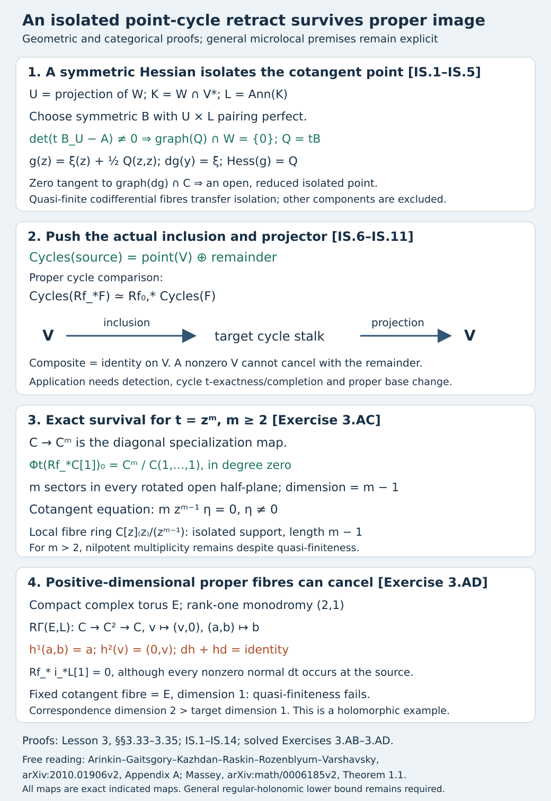
Figure 3.10. The first panel records the exact symmetric-form construction (IS.1)–(IS.4). The second shows the actual inclusion and projection whose composite is the identity in (IS.11); the sheaf comparisons needed for its application are indicated. The last two panels are the complete finite-ramification and positive-dimensional-fibre computations below. All arrows are categorical maps or indicated differentials, not numerical approximations. Free human-source reading is the preceding Appendix A and Massey theorem.
Exercise 3.AB. Let \(V=k^2\) with bases \(e_1,e_2\) and \(e_1^*,e_2^*\). For \(W=\operatorname{span}\{(e_1,0),(0,e_1^*)\}\), find a symmetric \(Q\) whose graph is transverse to \(W\). Then do the same for \(W'=\operatorname{graph}(A)\), \(A=\begin{pmatrix}0&1\\0&0\end{pmatrix}\). Explain why an arbitrary linear graph need not be the derivative of a quadratic function.
Solution 3.AB. For \(W\), take \(Q=\begin{pmatrix}0&1\\1&0\end{pmatrix}\). If \((v,Qv)\in W\), its first component forces \(v=ae_1\). The second is then \(ae_2^*\), and belonging to \(ke_1^*\) forces \(a=0\). For \(W'\), take \(Q=2I\); \(\det(Q-A)=4\ne0\) gives zero intersection. The first form is the Hessian of \(z_1z_2\), and the second of \(z_1^2+z_2^2\). In characteristic zero mixed partial derivatives agree, so a quadratic Hessian is symmetric. The nonsymmetric \(A\) is not such a Hessian. This exercise concerns abstract tangent planes; no claim that \(W\) is a characteristic component is made.
Exercise 3.AC. For the finite map \(f:\mathbb C_z\to\mathbb C_t\), \(t=z^m\), \(m\ge2\), compute the normalized vanishing cycle at zero of \(Rf_*\mathbb C[1]\) for \(g=t\). Prove directly that every nonzero target cotangent at zero is detected, and compute the scheme length of the relevant cotangent fibre.
Solution 3.AC. The polynomial is monic, so \(\mathbb C[z]\) is a free \(\mathbb C[t]\)-module with basis \(1,z,\ldots,z^{m-1}\): division by \(z^m-t\) gives spanning and uniqueness. The map is finite and proper. Topologically properness is immediate from \(|z|^m=|t|\): inverse images of compact sets are closed and bounded. A small nonzero fibre has \(m\) points, and a small total disc is contractible. The specialization map of the constant source is therefore the diagonal map
\[ \mathbb C\longrightarrow\mathbb C^m, \qquad v\longmapsto(v,\ldots,v),\qquad \Phi_t(Rf_*\mathbb C[1])_0 =\mathbb C^m/\mathbb C(1,\ldots,1). \tag{IS.12} \]
The quotient is in degree zero: taking the unshifted cone of the injective diagonal on complexes in degree minus one and then \([-1]\) gives precisely that degree. Its dimension is \(m-1\). Parameter monodromy cyclically permutes the \(m\) sheets. The quotient is isomorphic to the sum-zero subspace by subtracting the average; this is valid over every characteristic-zero coefficient field.
Here is also a direct supported-test computation, without the general isolated-Morse theorem. For any \(\eta\ne0\), use the half-plane test \(\operatorname{Re}(\eta t)\ge0\) near zero. Its open complement pulls back to \(m\) disjoint contractible sectors in the source disc. The relative section complex is the fibre of the diagonal \(\mathbb C\to\mathbb C^m\), shifted by \([1]\). Thus it is the same nonzero quotient in degree zero. Rotating \(\eta\) changes the sectors' angles but not their number or the maps. Each nonzero covector is therefore in the target's classical support-test microsupport; no rank-only heuristic is needed.
The constant input has zero-section characteristic support. Its codifferential lift satisfies \(mz^{m-1}\eta=0\). Fix \(\eta\ne0\). The fibre at zero has local ring
\[ \mathbb C[z]_{(z)}/(z^{m-1}), \qquad\text{length }m-1. \tag{IS.13} \]
Its reduced support is a single isolated point, so the cotangent projection is quasi-finite despite this multiplicity. The target image component is the nonzero vertical cotangent over zero. The length agrees with the vanishing-cycle dimension. For \(m=2\) the source point is reduced; for larger \(m\) the nilpotent multiplicity must be retained.
Exercise 3.AD. Let \(E=\mathbb C/(\mathbb Z+i\mathbb Z)\) be the compact complex torus. Choose a rank-one complex local system \(L\) with monodromy \(2\) around the first generator and \(1\) around the second. For the proper projection \(f:E\times\Delta\to\Delta\), let \(F=i_*L[1]\), supported on \(E\times\{0\}\). Compute \(Rf_*F\) and explain exactly which isolation hypothesis fails, even though the source contains the pulled-back nonzero target covector.
Solution 3.AD. The square presentation of the torus has one vertex, two oriented edges and one two-cell. A cellular filtration computes local-system cohomology: relative cohomology of one attached interval with its endpoints is one copy in degree one, and that of the square with its boundary is one copy in degree two, by cutting the boundary circle into two intervals and applying the section Mayer–Vietoris triangle. Transport around the two edge identifications supplies the differences of their monodromies from the identity. Thus, with the corresponding choices of cell orientations, the full cochain complex is
\[ \mathbb C\xrightarrow{d^0}\mathbb C^2 \xrightarrow{d^1}\mathbb C, \qquad d^0(v)=(v,0),\quad d^1(a,b)=b. \tag{IS.14} \]
The finite cellular filtration has these relative complexes in their respective degrees; its differential is exactly the edge transport just calculated. It therefore gives the actual total section complex. Set \(h^1(a,b)=a\) and \(h^2(v)=(0,v)\). Direct substitution gives \(dh+hd=1\) in degrees zero, one and two. Consequently \(R\Gamma(E,L)=0\), and sections of \(Rf_*i_*L[1]\) over an open containing zero are this zero complex. The output is zero.
Locally \(L\) is a constant connection along \(E\). The supported half-plane test normal to \(E\times\{0\}\) is nonzero at every point: on its support the normal function is zero, so the supported-test functor is the identity. Equivalently the normal Weyl calculation (BK.4) gives the full conormal fibre, with arbitrary \(dt\) coefficient. For a fixed nonzero target covector, the cotangent fibre is the entire \(E\), of complex dimension one. It is not quasi-finite; its cotangent correspondence component has dimension two, whereas the target has dimension one. This is a proper holomorphic example, so no algebraization or elliptic-curve uniformization theorem is being used. It shows why nonzero local source tests do not alone force nonzero proper pushforward. The isolated-point projector in (IS.11) is the mechanism that excludes this cancellation.
3.36. Residue fields detect unbounded complexes
Field extension is essential when point tests are used without a fixed characteristic-support bound. The finite detectors of §3.18 apply to its specified supported category. We now prove a different statement that tests arbitrary complexes, using every prime and allowing the ground field to grow.
Theorem 3.36. Let \(R\) be a commutative Noetherian ring of finite Krull dimension. Write \(D(R)\) for its unbounded derived category and \(\kappa(\mathfrak p)=\operatorname{Frac}(R/\mathfrak p)\) for the residue field at a prime. For every \(F\in D(R)\), \[ \bigl(\kappa(\mathfrak p)\otimes_R^{\mathbf L}F=0 \text{ for every }\mathfrak p\in\operatorname{Spec}R\bigr) \quad\Longrightarrow\quad F=0. \tag{FE.1} \] Neither boundedness nor finite generation of the cohomology of \(F\) is required. An ordinary residue fibre of a cohomology module cannot replace the derived fibre in this statement. For example, over \(k[t]\), put \(Q=k(t)/k[t]\). Its generic ordinary fibre is zero, because localization makes \(k[t]\to k(t)\) an isomorphism. Multiplication by every nonzero polynomial on \(Q\) is surjective: divide a representative fraction by that polynomial. Hence its ordinary fibre at each closed prime is also zero. But multiplication by \(t-b\) kills the nonzero class of \(1/(t-b)\), so the two-term residue resolution has nonzero degree-minus-one cohomology. The derived fibre detects \(Q\).
We first explain the finiteness hypotheses for affine schemes of finite type over a field. If \(A\) is Noetherian, so is \(A[T]\): for an ideal \(J\), the possible coefficients of \(T^n\) in its polynomials of degree at most \(n\) form ideals \(I_n\subset A\). Multiplication by \(T\) makes these an increasing sequence. It stabilizes, and each of its finitely many initial ideals has finitely many generators. Choose polynomials in \(J\) realizing these generators. Subtracting multiples of those polynomials cancels the highest coefficient of any polynomial in \(J\); induction on degree shows that the chosen finite list generates \(J\). Iteration and passage to a quotient prove the assertion for every finitely generated algebra over a field.
Its Krull dimension is also finite. For a finitely generated domain \(A\) and a nonzero prime \(\mathfrak q\), choose algebraically independent elements \(\bar b_1,\ldots,\bar b_r\) among generators of \(A/\mathfrak q\), maximal with this property. Its fraction field is algebraic over \(k(\bar b_1,\ldots,\bar b_r)\). Lift the \(\bar b_i\) to \(A\) and choose \(0\ne a\in\mathfrak q\). A polynomial relation between \(a,b_1,\ldots,b_r\), after division by its smallest power of \(a\), would reduce modulo \(\mathfrak q\) to a nonzero polynomial relation between the \(\bar b_i\). Thus these \(r+1\) elements are independent, and \[ \operatorname{trdeg}_k\operatorname{Frac}(A/\mathfrak q) <\operatorname{trdeg}_k\operatorname{Frac}(A). \tag{FE.2} \] Every strict step in a prime chain decreases this nonnegative integer. The integer is at most the number of algebra generators. This bounds every prime chain, including chains in quotients by an initial prime. In particular the affine coordinate rings used below satisfy the hypotheses of Theorem 3.36.
Prime filtrations. Every finitely generated module over a Noetherian ring has a finite filtration with prime cyclic quotients. Here is the proof needed for this argument. Finite free modules are Noetherian: induct on their rank, using the intersection of a submodule with the last summand and its projection to the other summands. Quotients preserve this property. In a nonzero finite module, choose an element whose annihilator \(I\) is maximal among annihilators of nonzero elements. If \(ab\in I\) and \(b\notin I\), maximality gives \(\operatorname{Ann}(bx)=I\), so \(a\in I\). Therefore \(I\) is prime. Insert \(Rx\), and repeat in the quotient. Infinitely many repetitions would produce a strictly increasing chain of submodules of the original Noetherian module. Consequently the process terminates: \[ 0=M_0\subset M_1\subset\cdots\subset M_s=M, \qquad M_j/M_{j-1}\simeq R/\mathfrak p_j. \tag{FE.3} \] The freely readable Support and dimension of modules, Lemma 10.62.1, gives another prime-filtration proof.
Proof of Theorem 3.36. Let \(\mathcal L\) be the smallest full stable subcategory of \(D(R)\) closed under colimits and containing all the \(\kappa(\mathfrak p)\). We show that it contains each \(R/\mathfrak p\), by induction on \(\dim(R/\mathfrak p)\). Set \(A=R/\mathfrak p\) and \(K=\operatorname{Frac}A\). If \(A\) has dimension zero, every nonzero element is a unit: a proper ideal generated by such an element would lie in a nonzero maximal prime. Hence \(A=K\in\mathcal L\).
For positive dimension, every finite submodule of \(K/A\) is annihilated by a nonzero element of \(A\). Indeed, represent its finitely many generators by fractions and take the product of their denominators. Apply (FE.3) to this finite submodule as an \(A\)-module. Each prime in its filtration contains the nonzero common denominator; each quotient is therefore \(A/\mathfrak q\) with \(\mathfrak q\ne0\). Prefixing a prime chain by \(0\subsetneq\mathfrak q\) shows that its dimension is smaller than \(\dim A\). The induction hypothesis, interpreted as a statement about \(R\)-modules, puts every such quotient in \(\mathcal L\). Finite extensions then put the submodule in \(\mathcal L\).
All finite submodules form a filtered system, since the sum of two is again finite. Thus \[ K/A=\mathop{\operatorname{colim}}_{M\subset K/A,\ M\text{ finite}}M, \qquad A\longrightarrow K\longrightarrow K/A \quad\text{is a triangle in }D(R). \tag{FE.4} \] The colimit here is also the derived colimit. Filtered colimits of modules are exact: a finite relation or the vanishing of a represented element holds at some common later index. Applied degree by degree, this also shows that cohomology commutes with such colimits of complexes. Equivalently, in the simplicial complex computing a derived colimit, a finite cycle lies in a diagram with a common upper index; inserting that index contracts its positive simplicial degrees. This identifies the derived colimit of the displayed degree-zero diagram with its ordinary union. We have proved \(K/A\in\mathcal L\); since \(K=\kappa(\mathfrak p)\in\mathcal L\), its triangle proves \(A\in\mathcal L\). Finally use (FE.3) for \(R\) itself to obtain \[ R/\mathfrak p\in\mathcal L\text{ for every prime}, \qquad R\in\mathcal L. \tag{FE.5} \]
For the given unbounded \(F\), derived tensoring with \(F\) is exact and preserves colimits. One can see these properties from its adjunction with derived Hom; on a flat resolution they are also the usual tensor identities for cones and colimits. Its kernel is therefore a stable colimit-closed subcategory. If the hypothesis of (FE.1) holds, this kernel contains the generators defining \(\mathcal L\), hence contains \(R\). But \[ R\otimes_R^{\mathbf L}F\simeq F, \qquad \mathcal L\subset \ker\bigl(-\otimes_R^{\mathbf L}F\bigr). \tag{FE.6} \] This proves \(F=0\). Notice that the finite filtrations in this proof are filtrations of auxiliary ordinary modules, not of \(F\). No truncation limit, bounded spectral sequence or completeness assertion about a stack category occurs in this proof. □
3.37. A detecting prime becomes a closed rational point
Let \(R\) be a finitely generated \(k\)-algebra. If \(F\in D(R)\) is nonzero, Theorem 3.36 supplies a prime \(\mathfrak p\) with nonzero derived residue fibre. Put \(K=\kappa(\mathfrak p)\), or take any extension of this field, such as an algebraic closure. Define \[ R_K=R\otimes_k K, \qquad R_K\longrightarrow K, \qquad r\otimes a\longmapsto\bar r a. \tag{FE.7} \] Here \(\bar r\) is the image of \(r\) in \(\kappa(\mathfrak p)\subset K\). This map is surjective because its restriction to \(1\otimes K\) is the identity. Its kernel is maximal, so it defines a closed \(K\)-rational point \(y\) of \(\operatorname{Spec}R_K\). The point under it in \(\operatorname{Spec}R\) may be generic rather than closed. Associativity of tensor gives \[ K\otimes_{R_K}^{\mathbf L}(F\otimes_k K) \simeq \bigl(\kappa(\mathfrak p)\otimes_R^{\mathbf L}F\bigr) \otimes_{\kappa(\mathfrak p)}K\ne0. \tag{FE.8} \] For completeness, take a flat resolution of \(F\) over \(R\). Extension to \(R_K\) is still a flat resolution: field extension is exact, and its terms are flat after base change. Both sides of (FE.8) are computed by tensoring this same resolution with \(K\). Extension of vector spaces between fields is faithful and exact: a basis identifies it with a direct sum of copies of the new field. Therefore it preserves nonzero cohomology even for an unbounded complex.
We next identify the actual D-module point test. Let \(U\) be a smooth affine scheme of dimension \(d\) over a characteristic-zero field \(K\), and let \(y\) be a closed \(K\)-rational point. Shrink to an affine neighbourhood with étale coordinates \(t_1,\ldots,t_d\) vanishing at \(y\). The existence of these coordinates is the smooth local-coordinate construction used in §1.10. Their zero fibre consists of finitely many reduced points. Removing the other points makes its ideal \((t_1,\ldots,t_d)\) precisely the ideal of \(y\). They are a regular sequence: the coordinate map is flat and pulls back the successive injective multiplications in the polynomial coordinate ring. Localization preserves those injections.
Write \(D=\Gamma(U,\mathcal D_U)\). The coordinate PBW proof in Differential operators and the Weyl algebra, §3, gives the right-coefficient form of its ordered basis: \[ D=\bigoplus_{\alpha\in\mathbb N^d}\partial^\alpha\mathcal O(U), \qquad [\partial_i,t_j]=\delta_{ij}, \qquad [\partial_i,\partial_j]=0. \tag{FE.9} \] Moving coefficients past derivatives changes only lower orders; thus the left-coefficient PBW basis gives this right-coefficient basis by an invertible triangular change, order by order. In particular \(D\) is flat as a right \(\mathcal O(U)\)-module. Tensor its right module with the finite Koszul resolution of \(K=\mathcal O(U)/(t_1,\ldots,t_d)\). The one-variable resolution is injective multiplication by its parameter followed by its quotient; tensoring the next such two-term resolution proves exactness inductively, using regularity on the preceding quotient. This produces a resolution \[ \Delta_{y,t}=D/\sum_i D t_i, \qquad 0\longrightarrow D\otimes\bigwedge^d K^d \longrightarrow\cdots\longrightarrow D\otimes K^d \longrightarrow D\longrightarrow\Delta_{y,t}\longrightarrow0. \tag{FE.10} \] The differentials use right multiplication by the \(t_i\); these maps are left \(D\)-linear. The normal closed-transfer formula in Kashiwara’s equivalence and singular spaces, §3, identifies this cyclic module with the point delta module after choosing the one-dimensional normal determinant factor. A different choice tensors the chosen presentation by a one-dimensional \(K\)-space, which changes no vanishing test. We use the notation \(\Delta_{y,t}\) to retain this choice explicitly.
Applying Hom into any unbounded \(D\)-module complex \(M\) computes derived Hom by this finite free resolution. A bounded complex of finite free modules sends acyclic complexes to acyclic Hom complexes: its finite filtration has shifted copies of the acyclic target as successive quotients. Thus this computation has no boundedness requirement on \(M\). It is the cochain Koszul complex with terms \(M\otimes\bigwedge^r(K^d)^*\) in degrees \(r=0,\ldots,d\), and differential given by the commuting left actions of the \(t_i\). Wedge pairing with a chosen volume form identifies it, with the usual differential signs, with the homological Koszul fibre shifted by \(-d\). Consequently \[ \operatorname{RHom}_D(\Delta_{y,t},M)=0 \quad\Longleftrightarrow\quad K\otimes_{\mathcal O(U)}^{\mathbf L}\operatorname{oblv}M=0. \tag{FE.11} \] This is the general version of the finite normal calculation behind (FD.8); it does not assume the flat-cohomology hypothesis used for (FD.9).
Operator algebras themselves commute with field extension. There is a natural filtered map \(D_{R/k}\otimes_k K\to D_{R_K/K}\). On an étale coordinate chart, both sides have (FE.9), with the same derivative basis and the extended coefficient ring; the map is an isomorphism on every associated graded order. Induction in the exact sequences for successive orders makes it an isomorphism on every filtered piece, and their union proves it for all operators. These local identities agree with restriction, so they give the identity of operator sheaves. On an affine scheme, sections of a quasi-coherent sheaf commute with field extension, as is seen from its module and localization description. The induced scalar extension of any operator-module complex has underlying complex \(M\otimes_k K\). This assertion concerns the actual module construction; it does not assert a tensor-product presentation of a spectral stack category.
Combining these observations proves the promised detector statement:
Theorem 3.37. For a smooth affine finite-type \(k\)-scheme \(U\), every nonzero object \(M\) of the full unbounded operator-module category is detected by a point delta module on an affine open of \(U_K\), for some field extension \(K/k\): \[ M\ne0\quad\Longrightarrow\quad \operatorname{RHom}_{D_{W/K}} (\Delta_{y,t},M_K|_W)\ne0, \qquad y\in W(K)\text{ closed},\quad W\subset U_K\text{ affine open}. \tag{FE.12} \] Indeed, forgetting the operator action is conservative on module complexes, since it does not change their underlying differentials or cohomology. Apply (FE.1) and (FE.8) to that nonzero underlying complex, then shrink around the detecting rational point and use (FE.11). Localization around the point leaves its derived fibre unchanged. A general smooth finite-type scheme is handled by choosing an affine chart on which the object is nonzero. □
3.38. Orthogonality, chart tests and the remaining global adjunction
Theorem 3.37 gives a useful exact criterion. Suppose \(M\) is an unbounded D-module complex on a smooth finite-type scheme \(U\). If for every extension \(K/k\), every affine coordinate open \(W\subset U_K\) and every closed rational point in it one has \[ \operatorname{RHom}_{D_{W/K}} (\Delta_{y,t},M_K|_W)=0, \tag{FE.13} \] then \(M=0\). If it were nonzero, a nonzero affine restriction and (FE.12) would contradict (FE.13). Thus point tests over varying fields detect the full category, including complexes with infinitely many nonzero cohomology modules.
For a smooth stack, §1.10 makes atlas pullbacks conservative. Choose a chart on which a nonzero object remains nonzero, and apply (FE.12) there. This proves conservativity of the chart pullback followed by point test family. It does not identify that test with a mapping complex from an intrinsic stack point. A point of an Artin stack can have a positive-dimensional automorphism group; its map to the stack need not be a closed immersion. The affine closed-transfer computation (FE.10) cannot be substituted for such a map's left adjoint.
Here is the precise formal implication needed later. Suppose a presentable stable category \(\mathcal B\) has a conservative functor \(U\) to D-modules on a smooth stack \(\mathcal Y\), compatible with the field extensions under consideration. Suppose there is an adjunction \(P_K\dashv U_K\) for each such field, and that every chart point test \(T\) used above has an actual left adjoint \(L_T\) into \(\operatorname{Dmod}(\mathcal Y_K)\). Finally suppose a full subcategory \(\mathcal A_K\subset\mathcal B_K\) contains all \(P_KL_T(K)\), and that the given \(F\in\mathcal B\), after extension, is right-orthogonal to \(\mathcal A_K\). Then \[ \operatorname{RHom}_{\mathcal B_K}(P_KL_T(K),F_K) \simeq \operatorname{RHom}_{\operatorname{Dmod}(\mathcal Y_K)}(L_T(K),U_KF_K) \simeq T(U_KF_K)=0. \tag{FE.14} \] The first equality is the stated projector adjunction and the second is the stated chart-test adjunction. A mapping complex from \(K\) to a \(K\)-complex is that complex itself. The detector theorem now implies \(UF=0\); conservativity gives \(F=0\). This proves the implication under exactly its displayed hypotheses. It supplies no missing geometric left adjoint, no base-change equivalence for \(\mathcal A\), and no projector construction.
The field-extension orthogonality argument appears in Arinkin–Gaitsgory–Kazhdan–Raskin–Rozenblyum–Varshavsky, The stack of local systems with restricted variation and geometric Langlands theory with nilpotent singular support, §20.9. The residue-field and affine point computations above give complete proofs of their chart-level ingredients. The complex restricted spectral action and idempotent image are given in §§3.227–3.228. Sections 3.597–3.610 give the actual enhanced field-extension and point adjunction, original-field Hecke-lisse regularity and nilpotent-support containment. The converse from independent nilpotent support remains separate. The general isolated-cycle comparison of §§3.33–3.35 remains a separate requirement. In particular this point-detector argument adds no stronger support-only conjecture to the ordinary all-D-module Hecke-lisse statement.
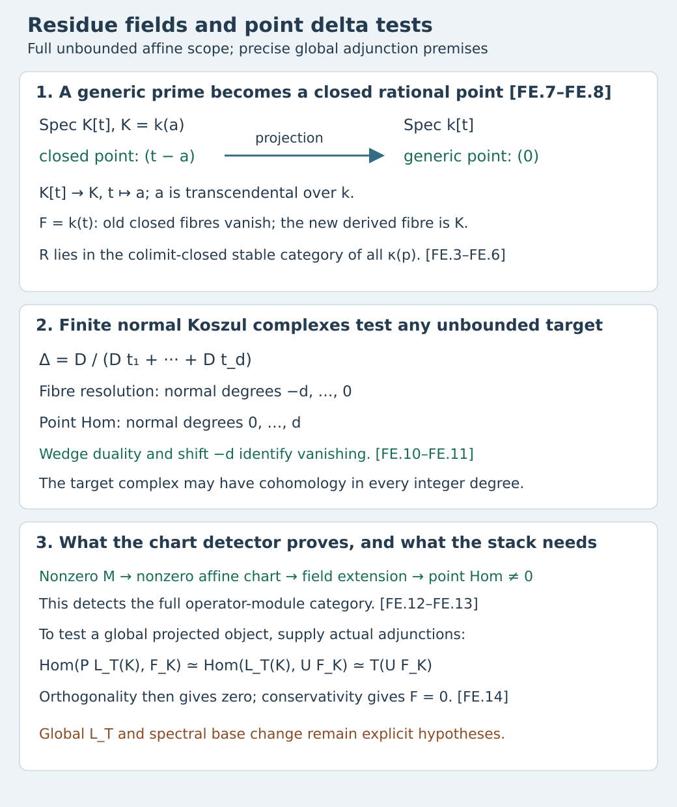
Figure 3.11. The first panel uses \(R=k[t]\), \(F=k(t)\), \(K=k(a)\) with \(a\) transcendental: the evaluation \(K[t]\to K\), \(t\mapsto a\), defines a closed rational point over the original generic point. The second panel shows the homological fibre-resolution in normal degrees \(-d,\ldots,0\) and the cochain point-Hom direction in normal degrees \(0,\ldots,d\), related by the finite Koszul duality of (FE.10)–(FE.11). These finite normal directions are tensored with the possibly unbounded target; they are not bounds on its total cohomology. The last panel distinguishes the proved chart detector from the explicit adjunction premises of (FE.14). The arrows describe actual algebraic maps or stated categorical assumptions; the panels are schematics, not geometric dimension drawings.
Exercise 3.AE. Let \(k\) be algebraically closed of characteristic zero, \(R=k[t]\) and \(F=k(t)\). Show that every original closed-point derived fibre vanishes. Choose \(K=k(a)\), where \(a\) is transcendental over \(k\), and compute the derived fibre at \(t=a\) of \(F_K=F\otimes_k K\). Equip \(F\) with its differentiation action and compute its point delta Hom on \(\mathbb A^1_K\).
Solution 3.AE. For \(b\in k\), the resolution of \(k_b\) is multiplication by \(t-b\) on \(R\) in degrees \(-1,0\). Tensoring with \(k(t)\) makes this map invertible, so its complex is acyclic. More generally any nonzero irreducible polynomial becomes invertible in \(k(t)\). The detecting prime is \((0)\), whose field \(k(t)\) has a nonzero fibre: localization gives \(k(t)\otimes_R k(t)\simeq k(t)\).
Over \(K\), write \(S=k[t]\setminus\{0\}\). Then \(F_K=S^{-1}K[t]\). Every \(s(a)\) with \(s\in S\) is nonzero, by transcendence. Hence evaluation at \(a\) survives this localization, and its kernel is \((t-a)\). Multiplication by \(t-a\) on \(S^{-1}K[t]\) is injective, with cokernel \(K\). Thus the derived fibre is \(K\) in degree zero. The point module \(D_K/D_K(t-a)\) has Hom complex \(F_K\xrightarrow{t-a}F_K\) in degrees \(0,1\), whose only cohomology is \(K\) in degree one. The differentiation action extends with \(\partial a=0\); it makes this a valid operator-module calculation but does not alter the normal multiplication map. This new closed point lies above the generic point, since no nonzero polynomial over \(k\) vanishes at \(a\).
Exercise 3.AF. On \(\mathbb A^1_K\), consider the rank-one connection \(M=K[t]e\) with \(\partial e=2te\). For a rational point \(b\), compute \(\operatorname{RHom}_D(D/D(t-b),M)\). Verify directly the Weyl relation for this action, and explain whether the point calculation uses the coefficient \(2t\).
Solution 3.AF. On \(fe\), the operator is \(\partial(fe)=(f'+2tf)e\). Its commutator with multiplication by \(t\) is the identity, since differentiating \(tf\) contributes the extra term \(f\). Thus it defines a D-module. The finite free point resolution gives multiplication by \(t-b\) on \(K[t]e\) in degrees \(0,1\). This map is injective, and its quotient is \(Ke\). Its only Hom cohomology is therefore \(Ke\) in degree one. The connection coefficient does not enter this multiplication complex. Point detection tests the underlying derived fibre and works for every connection coefficient, including the irregular-at-infinity example considered in §3.22; it is not a criterion for regularity.
Exercise 3.AG. Take \(M=\bigoplus_{m\in\mathbb Z}K[t][m]\), with zero complex differential and the usual coordinate derivative on each summand. Compute the point Hom at \(t=b\) in every cohomological degree. Explain why the finite free resolution is legitimate even though \(M\) is bounded in neither direction.
Solution 3.AG. The point Hom complex is the two-term multiplication complex \(M\xrightarrow{t-b}M\), with its total grading. Its computation commutes with the indicated direct sum because only two finite free modules occur in the resolution. On each summand the kernel is zero and the cokernel is \(K[m-1]\). Consequently the Hom complex is quasi-isomorphic to \(\bigoplus_{m\in\mathbb Z}K[m-1]\), and its cohomology is one copy of \(K\) in every integer degree. The underlying derived fibre is \(\bigoplus_{m\in\mathbb Z}K[m]\). Tensor and Hom here each have a finite normal direction, so each total degree uses finitely many terms. No infinite product, convergence assertion or replacement of \(M\) by a bounded truncation is involved.
3.39. Scalar extension of categories, including infinite fields
The field in (FE.8) can be an infinite extension. We must therefore prove the categorical comparison without treating it as tensoring finite-dimensional vector spaces. We work with presentable stable \(k\)-linear categories and functors preserving colimits. Tensor products of such categories are characterized by functors that are \(k\)-linear and preserve colimits in each variable. All modules, mapping complexes, tensors and realizations below are derived and unbounded.
For an extension \(K/k\), let \(\operatorname{Vect}_K=\operatorname{Mod}_K\), the category of complexes of \(K\)-vector spaces. For a presentable \(k\)-linear category \(\mathcal C\), its scalar extension has an explicit description: \[ \mathcal C_K:=\mathcal C\otimes_{\operatorname{Vect}_k}\operatorname{Vect}_K \simeq\operatorname{Mod}_K(\mathcal C). \tag{KF.1} \] The right side consists of objects of \(\mathcal C\) with a coherently associative unital \(K\)-action. Its free and forgetful functors are \(q(F)=K\otimes_k F\) and \(r\). Colimits of such modules are computed on the underlying objects, with the induced action; therefore \(r\) preserves colimits. Their limits are computed similarly, since tensoring by the algebra supplies the action maps to each component of the limiting cone. Mapping complexes are the limits imposing the action compatibilities, including their higher homotopies.
Here is a proof of (KF.1) and the module-category identities we will use. For any unital associative DG algebra \(A\), a module \(M\) has its augmented free bar resolution \[ B_n(M)=A^{\otimes_k(n+1)}\otimes_k\operatorname{oblv}M, \qquad |B_\bullet(M)|\simeq M. \tag{KF.2} \] Adjacent factors are multiplied by the faces, the last face acts on \(M\), and degeneracies insert a unit. After forgetting the first module structure, inserting a unit at the first position gives an extra degeneracy. The alternating differential satisfies the contracting identity for the augmented simplicial direction; the contraction commutes with the internal differential with the total-complex signs. Thus its augmentation is an equivalence, for arbitrary unbounded input. Geometric realization uses a direct sum in its simplicial direction; the contracting identity concerns each finite simplicial expression and requires no boundedness. This same split augmented bar calculation works for algebra actions inside \(\mathcal C\).
A colimit-preserving \(k\)-linear functor out of \(\operatorname{Mod}_A\) is determined by its value \(P\) on the free module \(A\), with the right \(A\)-action given by its endomorphisms. On a free module \(A\otimes_k V\), it must take the value \(P\otimes_k V\). Applying the functor to (KF.2) then forces its value on every \(M\) to be \(P\otimes_A M\), computed by the two-sided bar construction. Conversely that construction gives a colimit-preserving functor with precisely the required action. The same argument identifies transformations and all higher transformations: on free terms they are maps respecting the actions, and the bar face and degeneracy maps impose exactly those compatibilities. With two module variables, it requires two commuting actions. Hence the universal bilinear property gives \[ \operatorname{Mod}_A\otimes_{\operatorname{Vect}_k}\operatorname{Mod}_B \simeq\operatorname{Mod}_{A\otimes_k B}. \tag{KF.3} \] Here \(A,B\) may be arbitrary associative DG algebras; over a field their algebra tensor is already the derived tensor. Taking one variable in \(\mathcal C\) instead gives (KF.1): the free internal modules and their bar resolutions have exactly the same bilinear universal property. This proves the assertions at the level of DG categories and mapping complexes, rather than only of ordinary module hearts.
The category \(\operatorname{Mod}_A\) is dualizable as a \(k\)-linear category, with dual \(\operatorname{Mod}_{A^{\mathrm{op}}}\). Its actual duality maps are \[ \epsilon(P,M)=P\otimes_A M, \qquad \eta:\operatorname{Vect}_k\longrightarrow \operatorname{Mod}_{A\otimes_k A^{\mathrm{op}}}, \quad V\longmapsto A\otimes_k V. \tag{KF.4} \] In \(\eta\), the algebra \(A\) has its regular bimodule structure. Both functors preserve colimits, as follows directly from their bar models. Under (KF.3), they are evaluation and coevaluation in the category of presentable categories. Their two triangle composites are the natural augmentations \[ A\otimes_A M\longrightarrow M, \qquad P\otimes_A A\longrightarrow P. \tag{KF.5} \] The same extra-unit contraction of the two-sided bar proves these equivalences, naturally and with their action maps. It also makes the comparisons compatible with further tensor products. Thus the triangle identities hold as coherent natural transformations. No compactness of the diagonal bimodule is required for these colimit-preserving duality maps.
In particular \(\operatorname{Vect}_K\) is its own categorical dual. Inserting \(\eta\), applying a given functor, and then applying \(\epsilon\) supplies inverse mate constructions \[ \operatorname{Map}_{\mathrm{Cat}_k}(\mathcal D\otimes\operatorname{Vect}_K,\mathcal E) \simeq \operatorname{Map}_{\mathrm{Cat}_k}(\mathcal D,\mathcal E\otimes\operatorname{Vect}_K). \tag{KF.6} \] Here \(\operatorname{Map}_{\mathrm{Cat}_k}\) denotes the space of colimit-preserving \(k\)-linear functors. The triangle identities make the two constructions inverse; applying them to transformations gives the same coherent equivalence. Tensoring by \(\operatorname{Vect}_K\) is therefore both a left and a right adjoint on presentable \(k\)-linear categories. It preserves colimits and limits. More explicitly, for any small diagram of such categories and any test category \(\mathcal D\), apply (KF.6) to maps from \(\mathcal D\), then use the limiting cone universal property. Applying (KF.6) back identifies the result with the maps from \(\mathcal D\) to the limit of the extended categories. Yoneda proves \[ (\lim_i\mathcal C_i)\otimes\operatorname{Vect}_K \simeq\lim_i(\mathcal C_i\otimes\operatorname{Vect}_K). \tag{KF.7} \] This works for every field extension. It says nothing about tensoring an individual infinite product of vector spaces by \(K\); Exercise 3.AI shows why that different assertion fails.
3.40. The actual smooth-descent D-module category after extension
On a smooth affine finite-type scheme \(U=\operatorname{Spec}R\), the category of unbounded D-module complexes is \(\operatorname{Mod}_{D_{R/k}}\). The localization of the operator algebra and its quasi-coherent module description give this affine realization. The operator base-change proof of §3.37 and (KF.3) now give the canonical equivalence \[ \operatorname{Dmod}(U)\otimes\operatorname{Vect}_K \simeq\operatorname{Mod}_{D_{R/k}\otimes_k K} \simeq\operatorname{Dmod}(U_K). \tag{KF.8} \] This is an equivalence of the entire category; its source contains modules made using new \(K\)-linear morphisms as well as free extensions of old objects.
We check the actual descent maps. A smooth pullback is computed by its transfer module, with the relative dimension shift specified in §1.10. In coordinates, this module uses the extended coefficient ring and the commuting coordinate derivatives. Tensoring its tensor or Spencer model by \(K\) gives exactly the transfer model of the extended map. Relative dimensions, wedge degrees and differential signs stay the same. Flatness of the field extension preserves its augmentations. A regular closed embedding uses the finite normal Koszul transfer construction of §3.37 and the normal determinant line. Extending its coefficients gives the same normal equations, Koszul differential and line on the extended scheme. These constructions use canonical coefficient maps and multiplication, so their comparison maps respect composition, units, and the chain-rule transitions on overlaps. Thus (KF.8) is an equivalence of descent diagrams, not just a collection of equivalences on their levels.
Let \(\mathcal Y\) be a smooth algebraic stack with affine diagonal. On a quasicompact part, choose an affine smooth atlas \(U\); the nerve schemes \(U_n\) are affine and smooth. Face maps are smooth and degeneracies are sections of smooth maps, hence regular embeddings; the preceding transfer comparisons apply. Strong descent here means the homotopy-coherent limit used in D-modules on stacks, ind-schemes and the de Rham prestack, §§1–2, and in §1.10. Its full category, including unbounded complexes, satisfies \[ \begin{aligned} \operatorname{Dmod}(\mathcal Y)\otimes\operatorname{Vect}_K &\simeq\left(\lim_{[n]\in\Delta}\operatorname{Dmod}(U_n)\right) \otimes\operatorname{Vect}_K\\ &\simeq\lim_{[n]\in\Delta}\operatorname{Dmod}((U_n)_K) \simeq\operatorname{Dmod}(\mathcal Y_K). \end{aligned} \tag{KF.9} \] The middle equivalence is (KF.7), which handles the infinite categorical limit without any finiteness hypothesis on \(K\). For a nonquasicompact smooth stack, use its diagram of affine smooth charts or a quasicompact open exhaustion followed by these presentations. Restrictions are conservative, and (KF.7) applies to this further limit too. Common smooth refinements give the same comparison: its coefficient and transfer maps commute with every refinement arrow, and the iterated limits satisfy the same cone universal property. Thus (KF.9) is independent of the presentation and compatible with its higher descent maps.
Theorem 3.40. For every characteristic-zero field extension and every smooth algebraic stack with affine diagonal, (KF.9) gives scalar extension of the full strong-descent D-module category. It applies to \(\operatorname{Bun}_G(X)\) and to its bounded opens for every connected reductive \(G\). The smooth presentations and open-exhaustion construction of §§1.3–1.15 supply precisely this stack scope. The atlas, nerve and open diagrams remain diagrams of all unbounded complexes; no comparison with the ordinary derived category of the equivariant heart is used. The local half-line operator equivalences of §2 also commute with field extension, since both their line and chain-rule transition functions do. Hence the same argument applies to the specified half-twisted category.
Free scalar extension is conservative. On an affine chart it tensors each underlying cohomology module by the faithfully flat field extension. If the extended object is zero, those modules were zero; chart conservativity then proves that the original stack object was zero. This is a statement about the free-extension functor into the category (KF.9), not about descent of each target object to the original field.
3.41. Compact tests and the fixed-support boundary
Write \(q:\mathcal C\rightleftarrows\mathcal C_K:r\) for free extension and forgetful in (KF.1). The adjunction is the usual free-action universal property, at the level of mapping complexes. In particular \[ q\dashv r,\qquad r q(F)\simeq F\otimes_k K. \tag{KF.10} \] If \(c\) is compact, \(q(c)\) is compact: its mapping functor is \(\operatorname{RHom}_{\mathcal C}(c,r(-))\), and \(r\) preserves colimits. Moreover \[ \operatorname{RHom}_{\mathcal C_K}(q(c),q(F)) \simeq\operatorname{RHom}_{\mathcal C}(c,F)\otimes_k K. \tag{KF.11} \] To prove this last comparison, use (KF.10). Choose a basis of \(K\) as a \(k\)-vector space; \(F\otimes_k K\) is the corresponding sum of copies of \(F\). Compactness makes the mapping functor commute with this sum, since it is the filtered colimit of its finite subsums. The resulting identification is the canonical scalar comparison map, so the isomorphism does not depend on the chosen basis. Exactness also retains the entire mapping complex, including all its cohomological degrees.
If a collection \(c_i\) compactly generates \(\mathcal C\), its extensions compactly generate \(\mathcal C_K\). Indeed, \[ \operatorname{RHom}_{\mathcal C_K}(q(c_i),M)=0\text{ for all }i \ \Longrightarrow\ rM=0\ \Longrightarrow\ M=0. \tag{KF.12} \] The first implication is the same adjunction and original generation; forgetful is conservative because an action on a zero underlying object is zero. This gives the compact generator comparison for the full automorphic category whose compact generation was proved in §1.15.
There is also a useful fully faithful comparison. Given a colimit-preserving fully faithful inclusion \(i:\mathcal A\hookrightarrow\mathcal C\) of presentable stable \(k\)-linear categories, internal \(K\)-module objects give \[ i_K:\mathcal A\otimes\operatorname{Vect}_K \hookrightarrow\mathcal C\otimes\operatorname{Vect}_K, \qquad M\in\operatorname{im}(i_K) \Longleftrightarrow rM\in\operatorname{im}(i). \tag{KF.13} \] Full faithfulness identifies all the mapping complexes imposing the action and its coherent relations. If an underlying object lies in \(\mathcal A\), every action map, relation and higher homotopy lifts uniquely through that full inclusion, proving the essential-image statement. The converse follows by forgetting the lifted action. This argument presupposes the displayed continuous presentable inclusion; it does not construct such an inclusion for an arbitrary support condition.
Fixed characteristic support can obstruct essential surjectivity to the geometrically extended support category. There is an explicit example, which we compute without any spectral-projector premise. Take \(K=k(a)\) with \(a\) transcendental, and consider on \(\mathbb A^1_K\) \[ M_a=K[t]e,\qquad \partial(fe)=(f'+af)e, \qquad M_a\simeq D_K/D_K(\partial-a). \tag{KF.14} \] The Weyl commutator is the identity. Moving derivatives to the right and then using \((\partial-a)e=0\) reduces every class to a unique polynomial times \(e\); independence follows by its displayed action. Right multiplication by \(\partial-a\) on \(D_K\) is injective: the leading derivative order of a nonzero operator increases by one. Thus \(M_a\) is the cofiber of this map between copies of \(D_K\), a valid object of the full category (KF.8). Its good filtration can be constant in nonnegative degrees, \(F_nM_a=K[t]e\). Derivatives preserve this filtration, so its characteristic variety is the zero section.
But forget the \(K\)-action and regard it as a \(D_k\)-module. The map \(D_k\to M_a\), \(P\mapsto Pe\), sends its PBW expression \(\sum_j f_j(t)\partial^j\) to \(\sum_j f_j(t)a^je\). It is injective by transcendence of \(a\), and its image \(k[t,a]e\) is stable under both operators. This is an actual coherent submodule isomorphic to the free \(D_k\)-module, whose characteristic variety is all of \(T^*\mathbb A^1_k\). Therefore the underlying object fails the zero-support convention of §3.12. Whenever the fixed-zero-support category has the continuous presentable inclusion required in (KF.13), \(M_a\) cannot be in its scalar-extended image. Its zero characteristic variety over \(K\) does not repair the original-field support failure.
The actual regular Hecke-lisse inclusion, enhanced compact point generators and their geometric field-extension comparison are GFP.5–GFP.54. The full-category theorem (KF.9) and compact comparison (KF.11) alone do not establish essential surjectivity for that subcategory. The distinction is also present in Arinkin–Gaitsgory–Kazhdan–Raskin–Rozenblyum–Varshavsky, The stack of local systems with restricted variation and geometric Langlands theory with nilpotent singular support, §20.9. The complete explicit module duality above can be compared with the free author chapter Gaitsgory–Rozenblyum, Some higher algebra, §8.6. These references accompany the proofs; RSE.37–RSE.38 and GFP.25–GFP.56 give the actual restricted projector, global point adjunction and regular Hecke-lisse image. The general supported microlocal comparison and the converse from all independent nilpotent support remain separate.
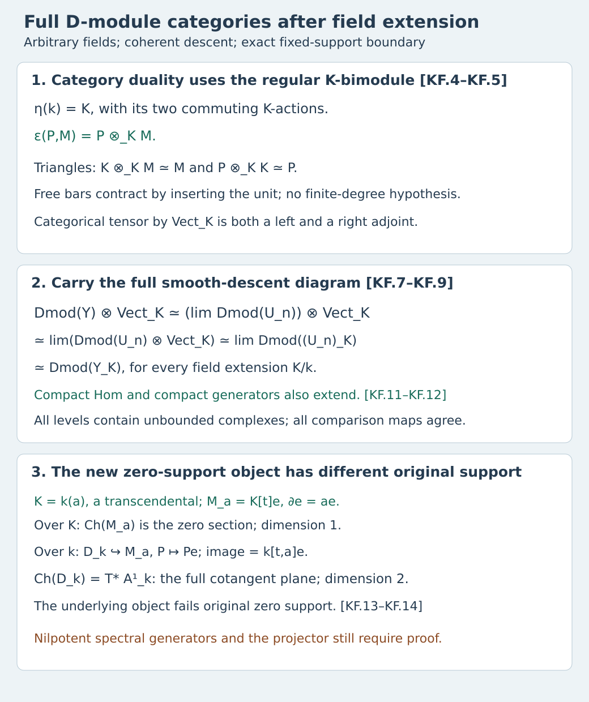
Figure 3.12. The diagonal regular \(K\)-bimodule is the coevaluation object; tensoring it over \(K\) supplies the two triangle identities (KF.4)–(KF.5). This gives categorical limit comparison (KF.7) and the strong-descent diagram (KF.9). The lower panel uses the exact transcendental connection (KF.14): its extended characteristic variety is zero, while its original-field coherent free-operator submodule has the full cotangent plane as characteristic variety. The figure is a schematic of these algebraic and categorical maps, with the support dimensions explicitly labeled.
Exercise 3.AH. For \(M_a\) in (KF.14), verify the Weyl action and the coherent free \(D_k\)-submodule. Compute both characteristic varieties. Explain why construction from a \(K\)-linear cofiber in the full category does not imply construction from the fixed-zero-support scalar extension.
Solution 3.AH. The difference between \(\partial(tfe)\) and \(t\partial(fe)\) is \(fe\). The ordered vector \(t^i\partial^je\) equals \(t^ia^je\); those vectors are linearly independent over \(k\), since a finite relation is a polynomial in the transcendental \(a\) with coefficients in \(k[t]\). They span \(k[t,a]e\), and differentiation acts there as \(\partial_t+a\), so this span is the free coherent \(D_k\)-submodule. Its order filtration has associated graded \(k[t,\xi]\), giving the full cotangent plane, of dimension two. Over \(K\), the constant good filtration of \(K[t]e\) has associated graded \(K[t]\) with \(\xi\) acting by zero, giving the zero section, of dimension one. The full-category cofiber uses \(D_K\), whose own support is the full plane; it is not a construction inside a fixed-zero-support subcategory. The membership criterion of (KF.13) excludes the underlying original-field object from that image.
Exercise 3.AI. Let \(c=\bigoplus_{n\geq0}k\) and \(K=k(a)\). Show that the natural map \(\operatorname{Hom}_k(c,k)\otimes_k K\to\operatorname{Hom}_K(c\otimes_k K,K)\) is injective but not surjective. Does this contradict categorical limit comparison (KF.7)?
Solution 3.AI. The map is \((\prod_{n\geq0}k)\otimes_k K\to\prod_{n\geq0}K\). For injectivity, express a tensor as a finite sum with linearly independent coefficients in \(K\). Vanishing at each coordinate forces every corresponding scalar sequence to vanish. Every sequence in its image has all its coordinates in one finite-dimensional \(k\)-subspace of \(K\), namely the span of those finitely many coefficients. The sequence \((a^n)_{n\geq0}\) does not, because its powers are linearly independent over \(k\). This proves failure of surjectivity. The object \(c\) is not compact: its identity cannot factor through any finite subsum of itself. Thus (KF.11) does not apply. Equation (KF.7) concerns a limit of presentable categories under categorical tensor product, not this product of objects in \(\operatorname{Vect}_k\).
Exercise 3.AJ. Let \(k=\mathbb Q\), \(K=k(u)\) with \(u^2=2\). In \(K\otimes_k K=k[u,v]/(u^2-2,v^2-2)\), compute the diagonal idempotent and identify the coevaluation module. Verify the triangle operation on a \(K\)-module and explain which part extends to an arbitrary field extension.
Solution 3.AJ. The diagonal idempotent is \(e_+=1/2+uv/4\). Substitution gives \(e_+^2=e_+\) and \((v-u)e_+=0\). Its value on \(v=u\) is one and on \(v=-u\) is zero. To verify the decomposition directly, regard the ring as \(K[v]/((v-u)(v+u))\); the two factors are comaximal because \(2u\) is invertible. The remainder map to the two evaluations is an isomorphism, with inverse built from \(e_+\) and \(1-e_+\). Thus \((K\otimes_k K)e_+\) is precisely the regular diagonal bimodule \(K\) used by coevaluation. Evaluation over one of its \(K\)-actions sends \(K\otimes_K M\) to \(M\) by multiplication; inserting the unit is its inverse, with the bar contraction proving the derived identity. For any field extension the regular diagonal bimodule and this bar contraction still exist, proving categorical duality. The finite idempotent decomposition in this example is not needed for that general proof.
3.42. The regular algebra of a specified rigid action
The enhanced projector needs an algebra, an action and an adjunction. We construct its categorical part explicitly. Work in the unbounded presentable stable \(k\)-linear categories of §3.39. Let \(\mathcal A\) be a symmetric monoidal such category, with tensor preserving colimits separately, compact unit and a small set of compact dualizable generators. Here “dualizable” refers to the monoidal tensor in \(\mathcal A\). Choose a small full DG subcategory \(\mathcal E\) of compact dualizable objects, containing that family and the unit and closed under duals, finite cones, tensor products and retracts. Such a choice exists: a dual is compact because \(\operatorname{RHom}(a^\vee,-)=\operatorname{RHom}(\mathbf1,a\otimes-)\); duality is preserved by finite cones and retracts by its tensor–Hom identity; tensor products are dualizable and preserve compactness by the same identity. Put \(\mathcal B=\mathcal A\otimes_k\mathcal A\). The tensor between categories is distinguished from the monoidal tensor between their objects by \(\boxtimes\).
We first justify the module models needed for the construction. The restricted Yoneda functor and its left adjoint are \[ Y(c)(a)=\operatorname{RHom}_{\mathcal A}(a,c), \qquad W(M)=\int^{a\in\mathcal E}M(a)\otimes_k a, \qquad \mathcal A\simeq\operatorname{Mod}_{\mathcal E}. \tag{EP.1} \] Modules on the right are DG functors \(\mathcal E^{\mathrm{op}}\to\operatorname{Vect}_k\). The coend is the geometric realization of the free multi-object bar: its terms sum over finite strings of objects and tensor their DG morphism complexes with the module value and the last representing object. Faces compose morphisms or act, and degeneracies insert identity morphisms. On a representable module the augmentation contracts by inserting its first identity, just as in (KF.2). Thus the adjunction unit is an equivalence on representables. Each DG module is the realization of its augmented free bar; after forgetting the action the same identity insertion contracts that augmentation. This proves the unit on every module. Compactness and exactness make \(Y\) preserve sums and their bar realizations. The counit becomes an equivalence under every \(\operatorname{RHom}(a,-)\); those tests detect zero by the generating assumption, so it is an equivalence. This proves (EP.1), with all DG morphisms and their coherent relations retained.
Applying this free-bar universal property to two variables gives \(\mathcal B\simeq\operatorname{Mod}_{\mathcal E\otimes_k\mathcal E}\): functors out of either side are exactly the bilinear functors with the two commuting DG actions. In particular the objects \(x\boxtimes y\), for \(x,y\in\mathcal E\), compactly generate \(\mathcal B\). Tensor in \(\mathcal A\) preserves compactness on them: \(\operatorname{RHom}(x\otimes y,-)\simeq\operatorname{RHom}(y,x^\vee\otimes-)\), and both functors on the right preserve colimits. Consequently the monoidal multiplication \(\mu:\mathcal B\to\mathcal A\) has the following explicitly constructed continuous right adjoint: \[ \operatorname{RHom}_{\mathcal B}(x\boxtimes y,r(c)) =\operatorname{RHom}_{\mathcal A}(x\otimes y,c), \qquad \mu\dashv r. \tag{EP.2} \] The right side is a DG module on \(\mathcal E\otimes\mathcal E\); (EP.1) realizes it as \(r(c)\). The free bar proves the displayed adjunction on every object of \(\mathcal B\). It also proves continuity of \(r\), since all \(x\otimes y\) are compact and colimits of DG modules are computed on their values.
The regular algebra is the following actual object, with its bar presentation: \[ \mathcal R_{\mathcal A}=r(\mathbf1_{\mathcal A}) \simeq\int^{a\in\mathcal E}a^\vee\boxtimes a, \qquad B_n=\bigoplus_{a_0,\ldots,a_n\in\mathcal E} \left(\bigotimes_{i=1}^{n}\operatorname{RHom}(a_{i-1},a_i)\right) \otimes_k(a_n^\vee\boxtimes a_0). \tag{EP.3} \] To check the coend identification, map \(x\boxtimes y\) into its bar. These compact tests commute with the realization. Dualization identifies the resulting augmented morphism bar with paths from \(y\) to \(x^\vee\); composition augments it to \(\operatorname{RHom}(y,x^\vee)\simeq\operatorname{RHom}(x\otimes y,\mathbf1)\). Inserting the identity of \(y\) at the start contracts the augmented bar. It therefore gives precisely (EP.2) for \(c=\mathbf1\). Compact generators detect the claimed equivalence. The bar uses direct sums in its simplicial direction, with the usual internal differential and alternating face differential with total-complex signs. Identity insertion is a contraction in every simplicial degree, including for unbounded internal complexes.
We need strict compatibility with the \(\mathcal B\)-action. The canonical adjunction mate gives \[ b\otimes r(c)\longrightarrow r(\mu(b)\otimes c), \qquad b\otimes r(c)\simeq r(\mu(b)\otimes c). \tag{EP.4} \] For dualizable compact \(b\), map a compact test \(t\) into it. Moving \(b\) across Hom gives \(\operatorname{RHom}_{\mathcal B}(b^\vee\otimes t,r(c))\); (EP.2) turns this into \(\operatorname{RHom}_{\mathcal A}(\mu(t),\mu(b)\otimes c)\). This is exactly the right side of (EP.4), since \(\mu\) preserves these monoidal duals. Thus the canonical map is an equivalence. The products \(x\boxtimes y\) are such dualizable compacts and generate \(\mathcal B\). Both sides preserve colimits in \(b\), so it is an equivalence for every \(b\). Its unit, composition and higher compatibilities are the mates of the same counit and monoidal multiplication maps. The adjunction triangle identities identify these mates, giving coherent \(\mathcal B\)-linearity of \(r\).
The right adjoint of the symmetric monoidal functor \(\mu\) has its lax symmetric monoidal maps: their mates multiply the counits \(\mu r(c)\to c\). At the unit these give \[ \mathbf1_{\mathcal B}\longrightarrow\mathcal R_{\mathcal A}, \qquad \mathcal R_{\mathcal A}\otimes\mathcal R_{\mathcal A} \longrightarrow\mathcal R_{\mathcal A}, \qquad (a\boxtimes\mathbf1)\otimes\mathcal R_{\mathcal A} \simeq r(a) \simeq(\mathbf1\boxtimes a)\otimes\mathcal R_{\mathcal A}. \tag{EP.5} \] The algebra is commutative, with coherent associativity and unit: their mates are the associative, symmetric and unital multiplication maps in \(\mathcal A\). Equivalently, the coend multiplies the \(a,b\) summands into the \(a\otimes b\) summand, using \((a\otimes b)^\vee\simeq a^\vee\otimes b^\vee\) with its symmetry. The identity-object summand supplies the unit. These maps respect the bar relations. The last two equivalences in (EP.5) are (EP.4). They give the tensor-compatible balancing used for Hecke eigen-objects.
3.43. Enhanced induction and its entire module category
Let \(\mathcal N\) be a specified continuous \(\mathcal B\)-module category, writing its action as \(\star\). Define its category of balanced eigen-objects by continuous module functors: \[ \mathcal H(\mathcal A,\mathcal N) =\operatorname{Fun}^{\mathrm L}_{\mathcal B}(\mathcal A,\mathcal N), \qquad U(F)=F(\mathbf1), \qquad L(n)(a)=r(a)\star n. \tag{EP.6} \] Here \(\mathcal A\) is a \(\mathcal B\)-module via \(\mu\). Formula (EP.4) makes \(L(n)\) a continuous module functor. A module functor \(F\) has \(F(a)\simeq(a\boxtimes\mathbf1)\star F(\mathbf1)\), with all coherences included. Thus \(U\) is conservative; its colimits are the pointwise colimits of module functors. Evaluation at the unit identifies \(\operatorname{Fun}^{\mathrm L}_{\mathcal B}(\mathcal B,\mathcal N)\) with \(\mathcal N\).
Under this identification \(U\) is precomposition with \(\mu\), while \(L\) is precomposition with \(r\). They are adjoint, with the explicit mapping-complex equivalence \[ \operatorname{RHom}_{\mathcal H}(L(n),F) \simeq\operatorname{RHom}_{\mathcal N}(n,U(F)), \qquad L\dashv U, \qquad UL(n)=\mathcal R_{\mathcal A}\star n. \tag{EP.7} \] For completeness, a transformation \(\tau:G\circ r\to F\) is sent to \(G\to G\circ r\circ\mu\to F\circ\mu\), using the adjunction unit and then \(\tau\circ\mu\). A transformation \(\sigma:G\to F\circ\mu\) is sent to \(G\circ r\to F\circ\mu\circ r\to F\), using \(\sigma\circ r\) and the counit. The triangle identities prove these maps inverse on transformations and their higher homotopies. They respect module structures because the unit and counit do. This proves the full adjunction, without restricting objects to a heart.
The resulting monad is the action of the algebra (EP.5). Its multiplication is \(r(\epsilon_{\mathbf1})\), after (EP.4) identifies \(r\mu r(\mathbf1)\) with \(\mathcal R_{\mathcal A}\otimes\mathcal R_{\mathcal A}\); this is exactly the lax-monoidal multiplication already constructed. Moreover \[ \mathcal H(\mathcal A,\mathcal N) \simeq\operatorname{Mod}_{\mathcal R_{\mathcal A}}(\mathcal N), \qquad |\cdots\,L(UL)^2U(F)\rightrightarrows LULU(F) \rightrightarrows LU(F)|\simeq F. \tag{EP.8} \] Here the simplicial degree \(n\) term is \(L(UL)^nU(F)\). After \(U\), this is the free augmented algebra-action bar of \(U(F)\). Inserting its first unit contracts it, so its realization is \(U(F)\). The functor \(U\) preserves colimits and is conservative, proving the augmentation in (EP.8). Conversely, given a module for \(T=UL\), realize \(L(T^n n)\), with faces from its module action and the monad multiplication, and degeneracies from the unit. Applying \(U\) gives the same split augmented module bar and recovers \(n\) with its action. These constructions are inverse on objects, morphism complexes and coherent action relations by the augmented-bar contraction. They prove the displayed equivalence and presentability of \(\mathcal H\). No boundedness or completion of ordinary equivariant hearts is used.
We now include affine spectral coefficients. Let \(R\) be a commutative DG \(k\)-algebra, let \(\mathcal M\) be a continuous \(\mathcal A\)-module category, and specify a continuous symmetric monoidal functor \(\Phi:\mathcal A\to\operatorname{Mod}_R\). Put \[ \begin{aligned} \mathcal N_R&=\mathcal M\otimes_k\operatorname{Mod}_R \simeq\operatorname{Mod}_R(\mathcal M),\\ (a\boxtimes b)\star(m\boxtimes Q) &=(a\star m)\boxtimes(\Phi(b)\otimes_R Q),\\ \mathcal R_R&=(\operatorname{Id}\otimes\Phi)(\mathcal R_{\mathcal A}). \end{aligned} \tag{EP.9} \] The internal-module comparison is the same free-bar proof as (KF.1), valid for this algebra as for a field. This defines the full coefficient Hecke category \(\mathcal H_R=\mathcal H(\mathcal A,\mathcal N_R)\). Its regular-algebra action is equivalently the action of \(\mathcal R_R\in\mathcal A\otimes_k\operatorname{Mod}_R\). The balancing (EP.5) gives its tensor-compatible eigen-isomorphisms \(a\star n\simeq n\otimes_R\Phi(a)\).
Let \(s:\mathcal M\to\mathcal N_R\) be free \(R\)-action and \(v\) its forgetful right adjoint. It preserves colimits and is conservative, because module colimits are underlying colimits and an action on zero is zero. The enhanced induction is now constructed, together with its actual adjunction: \[ P_R^{\mathrm{enh}}=L\circ s:\mathcal M\to\mathcal H_R, \qquad J_R=v\circ U, \qquad \operatorname{RHom}_{\mathcal H_R}(P_R^{\mathrm{enh}}c,F) \simeq\operatorname{RHom}_{\mathcal M}(c,J_RF). \tag{EP.10} \] If \(c_i\) are compact generators of \(\mathcal M\), then \[ P_R^{\mathrm{enh}}c_i\text{ are compact generators of }\mathcal H_R. \tag{EP.11} \] Compactness follows from (EP.10) and continuity of \(J_R\). Vanishing of all their mapping complexes gives \(J_RF=0\); its two forgetful factors are conservative, so \(F=0\). These statements apply to every object of the unbounded category. They establish free enhanced induction; they assert no idempotence of its monad and no identification with a geometrically specified support category.
3.44. Extension of the specified action and its enhanced generators
Let \(K/k\) be any field extension. Extend \(\mathcal A,\mathcal M,R,\Phi\) and their monoidal/module structure maps by \(K\), using the actual categorical scalar extension of §3.39. In particular \(R_K=R\otimes_k K\). Tensoring the continuous adjunction \(\mu\dashv r\), including its unit and counit, gives an adjunction on the extended categories. It is the multiplication adjunction there: free extensions of the original compact dualizable generators generate and remain compact by (KF.11)–(KF.12). Hence \[ r_K(q_{\mathcal A}a)\simeq q_{\mathcal B}(r(a)), \qquad \mathcal R_{\mathcal A_K}\simeq q_{\mathcal B}(\mathcal R_{\mathcal A}), \qquad J_{R_K}P_{R_K}^{\mathrm{enh}}(q_{\mathcal M}c) \simeq q_{\mathcal M}(J_RP_R^{\mathrm{enh}}c). \tag{EP.12} \] The first identity is the extended functor \(r\) on a free extension; uniqueness of right adjoints supplies its canonical identification. The second sets \(a=\mathbf1\); the units and multiplications also extend, since their mates are the extended counits. For the last identity, use (EP.9): the regular-algebra action, the free coefficient module and its underlying object extend by exactly these tensor maps. This also proves compatibility with all their coherent action relations.
Assume \(\mathcal M\) is compactly generated. Extending the module actions constructs a continuous \(K\)-linear functor \(E:\mathcal H_R\otimes_k\operatorname{Vect}_K\to\mathcal H_{R_K}\). On free extensions it takes \(P_R^{\mathrm{enh}}c\) to \(P_{R_K}^{\mathrm{enh}}q_{\mathcal M}c\). Its comparison on compact generators is an equivalence, because (EP.10), (EP.12) and (KF.11) give \[ \operatorname{RHom}_{\mathcal H_{R_K}} (P_{R_K}^{\mathrm{enh}}q c_i,P_{R_K}^{\mathrm{enh}}q c_j) \simeq \operatorname{RHom}_{\mathcal H_R} (P_R^{\mathrm{enh}}c_i,P_R^{\mathrm{enh}}c_j)\otimes_k K. \tag{EP.13} \] This identifies the canonical comparison, not only the dimensions of its cohomology. For a fixed compact source generator, both mapping functors preserve colimits in the target object; equivalence on generators therefore gives equivalence on all target objects. Now fix a target object. Both mapping functors in the source variable take colimits to limits, and \(E\) preserves colimits. The same generation argument gives equivalence for every source object. Thus \(E\) is fully faithful. By (EP.11) and (KF.12) its image contains compact generators of the target. Its full image is closed under colimits, cones and retracts: compute colimits in the source, and lift retract idempotents through full faithfulness. Consequently its image is the whole target. We have proved \[ \mathcal H_R\otimes_k\operatorname{Vect}_K \simeq\mathcal H_{R_K}, \qquad q(P_R^{\mathrm{enh}}c_i) \longmapsto P_{R_K}^{\mathrm{enh}}q(c_i). \tag{EP.14} \] All fields and all unbounded objects are included. This is the full eigen-category for the specified extended action. An identification of that action with the geometric Ran Hecke action, or of its eigen-category with the regular nilpotent relative spectral category, still has to be proved.
An explicit example shows what the algebra and enhancement do. Take \(\mathcal A=\operatorname{Vect}_k^{\mathbb Z}\) with graded convolution: \(k_n\otimes k_m=k_{n+m}\). Its compact generators \(k_n\) have duals \(k_{-n}\). Take \(\mathcal M=\operatorname{Vect}_k\) with the forgetful action and \(\Phi(k_n)=R\), with the identity tensor coherences. Directly from (EP.2) and the multiplication, we obtain \[ \begin{aligned} \mathcal R_{\mathcal A}&=\bigoplus_{n\in\mathbb Z}k_n\boxtimes k_{-n}, &\mathcal R_R&=R[z,z^{-1}],\\ \mathcal H_R&\simeq\operatorname{Mod}_{R[z,z^{-1}]}, &P_R^{\mathrm{enh}}(V)&=R[z,z^{-1}]\otimes_k V. \end{aligned} \tag{EP.15} \] Indeed a bidegree \((i,j)\) maps to the unit after multiplication exactly when \(i+j=0\). Its algebra multiplication sends the \(n,m\) basis vectors to the \(n+m\) vector. After the two forgetful actions this is precisely the Laurent algebra. A balanced eigen-object is a complex of \(R\)-modules with its coherently invertible integer action; the group-algebra module bar gives that entire DG category. Its free rank-one module is a compact generator. For \(R=k\), the monad multiplication sends \(z^i\otimes z^j\) to \(z^{i+j}\). The nonzero vector \(z\otimes1-1\otimes z\) lies in its kernel. Thus this enhanced induction is not an idempotent localization.
For the geometric application, \(\mathcal A\) must be the proper-curve Ran representation category, with its actual fusion Hecke action on the chosen automorphic sheaf category and its actual spectral coefficient functor. The free source Arinkin–Gaitsgory–Kazhdan–Raskin–Rozenblyum–Varshavsky, The stack of local systems with restricted variation and geometric Langlands theory with nilpotent singular support, §§11–13 and 15, constructs the regular Ran algebra and enhanced induction; §§16.2 and 20.9 use projected point generators. In that construction compact Ran generators use Verdier duality and the trace on the proper curve. Geometric Satake/fusion, that geometric rigidity and the spectral functor must supply the specified data of (EP.9). The actual regular nilpotent image and its projected point generators require the additional microlocal and support arguments. These geometric identifications are not yet proved here. No step above identifies the full free eigen-category with a fixed-support subcategory, and the original arbitrary-field and full connected-reductive regularity obligations remain.
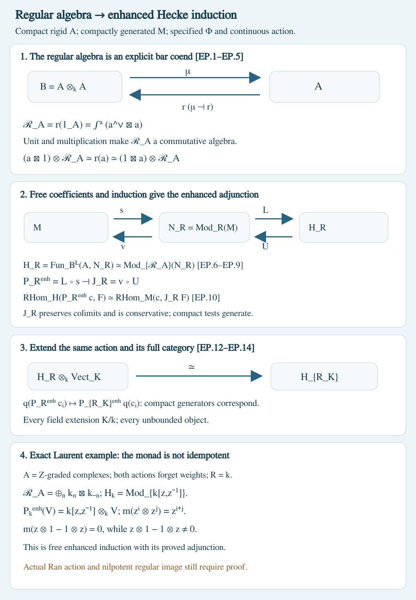
Figure 3.13. The upper two panels show the explicitly constructed regular algebra and adjunctions (EP.2)–(EP.10). The middle comparison is (EP.14) for the same action and coefficient functor extended by \(K\). The lower panel is the exact Laurent model (EP.15), including a nonzero element killed by monad multiplication. The diagram assumes the compact rigid action specified in §3.42; it makes no geometric identification with the nilpotent spectral category.
Exercise 3.AK. Compute the unit and multiplication of the Laurent monad in (EP.15), verify its compact generator in the full unbounded category and prove that its multiplication is not an equivalence.
Solution 3.AK. The unit is \(v\mapsto1\otimes v\). Multiplication is \(z^i\otimes z^j\otimes v\mapsto z^{i+j}\otimes v\); the exponent law proves associativity and the exponent zero proves both unit identities. The mapping complex from the free module \(k[z,z^{-1}]\) to a module \(M\) is the whole underlying complex of \(M\), by the free-module adjunction. It commutes with colimits and detects zero, so the free module compactly generates even for unbounded \(M\). The tensors \(z\otimes1\) and \(1\otimes z\) are different Laurent basis vectors, whose difference maps to zero. Hence multiplication is not injective on degree-zero cohomology and is not an equivalence. This does not contradict its induction adjunction.
Exercise 3.AL. Take \(R=k\) and replace \(\mathbb Z\) by \(\mathbb Z/2\), over a field with \(2\ne0\). Compute the regular algebra, the free induction and its adjunction under the decomposition into its two idempotents. Check its extension to an arbitrary field \(K/k\).
Solution 3.AL. The compact generators are \(k_0,k_1\), each self-dual; the regular algebra has the two bidegrees \((0,0),(1,1)\), with the latter square equal to the former. After the forgetful actions it is \(k[g]/(g^2-1)\). Its idempotents are \(e_\pm=(1\pm g)/2\); they sum to one, have product zero and square to themselves. A DG module is therefore the pair \((e_+M,e_-M)\), giving the entire module category \(\operatorname{Vect}_k\times\operatorname{Vect}_k\). Free induction sends \(V\) to \((V,V)\); forgetful sends a pair to its direct sum. The adjunction on mapping complexes is \[ \operatorname{RHom}(V,M_+)\oplus\operatorname{RHom}(V,M_-) \simeq\operatorname{RHom}(V,M_+\oplus M_-), \] since this sum is finite. Tensoring gives the same algebra, idempotents, free pair and adjunction over \(K\). No finite-dimensional restriction on \(K\) or boundedness restriction on either component is needed.
Exercise 3.AM. Let \(R=k[s,s^{-1}]\), \(D=R[z,z^{-1}]\) and \(Q=D/(z-s)=R\). Compute \(\operatorname{RHom}_D(Q,Q)\) and \(Q\otimes_D^{\mathrm L}Q\). Is restriction \(\operatorname{Mod}_R\to\operatorname{Mod}_D\) a fully faithful functor of DG categories? Does this quotient define an idempotent derived projector?
Solution 3.AM. Multiplication by \(z-s\) is injective in the Laurent polynomial domain \(D\). Substitution \(z=s\) identifies its cokernel with \(R\): multiply a Laurent polynomial by a power of \(z\), use polynomial division by \(z-s\), and invert the unit \(s\) afterwards. Thus \(D\xrightarrow{z-s}D\), placed in degrees \(-1,0\), is a free resolution of \(Q\). Applying Hom into \(Q\), or tensoring with \(Q\), kills its differential. With cohomological shifts this gives \[ \operatorname{RHom}_D(Q,Q)\simeq R\oplus R[-1], \qquad Q\otimes_D^{\mathrm L}Q\simeq R\oplus R[1]. \tag{EP.16} \] In the first formula the extra cohomology is in degree \(1\); in the second it is in degree \(-1\). But \(\operatorname{RHom}_R(R,R)=R\) is concentrated in degree zero. Restriction therefore fails full faithfulness. The extension–restriction counit on \(Q\) has this additional negative-degree Tor term and is not an equivalence, so the quotient does not define an idempotent derived localization. The ordinary degree-zero quotient and the entire derived module category have different adjunction behavior, as these explicit complexes demonstrate.
3.45. Compact D-modules on the projective powers of the curve
Let \(k\) be a field of characteristic zero and let \(X\) be a smooth projective curve over \(k\). Empty powers mean \(\operatorname{Spec}k\). We use the full unbounded category \(\operatorname{Dmod}(Y)\) of algebraic D-modules with quasi-coherent underlying structure-sheaf complexes. Left and right modules are related by the density-line equivalence. In this section, coherent always means coherent over \(\mathcal D_Y\); it does not mean coherent over \(\mathcal O_Y\).
We first establish the compactness statement needed for the actual Ran diagram. On a separated scheme with a finite affine cover \(U_1,\ldots,U_r\), the intersections \(U_H=\bigcap_{h\in H}U_h\) are affine. For every unbounded quasi-coherent complex \(Q\),
\[ R\Gamma(Y,Q)\simeq \operatorname{Tot}\left[ \bigoplus_i\Gamma(U_i,Q)\longrightarrow \bigoplus_{i<j}\Gamma(U_{ij},Q)\longrightarrow\cdots \longrightarrow\Gamma(U_{\{1,\ldots,r\}},Q) \right]. \tag{RN.1} \]
All section complexes on the right are derived affine sections; there are only \(r\) horizontal degrees. Here is why this formula also holds without a lower cohomological bound. The affine module–sheaf equivalence identifies complexes on an affine with complexes of modules, and localization is flat. Thus affine sections and restriction to a principal open are exact functors on these complexes. For each \(U_H\), its inclusion in \(Y\) is affine: on an affine target chart its inverse image is an intersection of two affine opens in a separated scheme. Its direct image on quasi-coherent modules is therefore exact. Form the finite ordered augmented Čech complex of these direct images. Near a point choose one covering index whose open contains a neighborhood of that point. Insertion of that index, with the alternating deletion signs, contracts the augmented complex on that neighborhood. The contraction works degree by degree for \(Q\). Taking its finite horizontal totalization preserves this identity. Consequently this is a resolution of \(Q\) by complexes of affine direct images. Their derived global sections are their affine section complexes, giving (RN.1).
The affine acyclicity and the insertion contraction are proved in Cohomology of affine schemes and Serre's criterion, §§2–3 and Čech cohomology, §§2–4. The finite-complex argument above supplies the unbounded extension; it uses neither an infinite product totalization nor a convergence assumption. In particular, \(R\Gamma(Y,-)\) commutes with all colimits. Each affine section functor does so, and finite limits and finite colimits coincide in a stable category.
Now suppose \(Y\) is smooth projective, and choose a very ample line bundle \(L\). Put
\[ P_n=\mathcal D_Y\otimes_{\mathcal O_Y}L^n,\qquad \operatorname{RHom}_{\mathcal D_Y}(P_n,F) \simeq R\Gamma\bigl(Y,L^{-n}\otimes_{\mathcal O_Y} \operatorname{oblv}F\bigr),\qquad n\in\mathbf Z . \tag{RN.2} \]
The tensor in \(P_n\) uses the right structure-sheaf action on \(\mathcal D_Y\); \(P_n\) is a left module. The displayed adjunction is obtained first on a free structure-sheaf module, then by the local line-bundle trivializations and their transition functions. The line is flat, so this is also the derived induction adjunction. Formula (RN.1) proves that every \(P_n\) is compact.
They detect every unbounded object. To prove this, let \(Q=\operatorname{oblv}F\) and suppose all complexes in (RN.2) vanish. For a section \(s\in\Gamma(Y,L^a)\), \(a>0\), whose nonvanishing open \(Y_s\) is affine, write \(j:Y_s\hookrightarrow Y\). There is an equality in the full derived quasi-coherent category
\[ j_*j^*Q\simeq \underset{m\ge0}{\operatorname{colim}}\, \left(Q\otimes L^{am} \xrightarrow{\ s\ }Q\otimes L^{a(m+1)}\right). \tag{RN.3} \]
Trivialize \(L^a\) on an affine chart. The right side becomes localization of the coefficient complex at the function representing \(s\), and the left side is that same localization. Flatness makes this a derived equality in every degree. The local equalities respect the line's transition functions and glue. Applying (RN.1) and the vanishing of the twists shows \(R\Gamma(Y_s,Q)=0\). Affine sections are conservative on the full module category, so \(Q|_{Y_s}=0\). The coordinate sections of a projective embedding supply finitely many such affine opens covering \(Y\). Thus \(Q=0\), and forgetting the operator action is conservative, so \(F=0\).
This also identifies all the compact objects:
\[ \operatorname{Dmod}(Y)^c =D^b_{\mathrm{coh}}(\mathcal D_Y) =\operatorname{thick}\{P_n:n\in\mathbf Z\}. \tag{RN.4} \]
For the inclusion from right to left, Holonomic D-modules and duality, Lemma 3.0 proves that every coherent operator module on a smooth \(d\)-dimensional variety has a local finite free operator resolution of length at most \(2d\). That lemma applies to all coherent modules. Finite truncation triangles therefore make every bounded coherent complex locally a finite complex of finite projective operator modules. Refine a finite affine cover to such neighborhoods. On each affine intersection, the full D-module category is the operator module category. The finite projective resolution shows that its derived Hom from the restricted complex commutes with colimits.
Use the full D-module descent of §3.40 to glue these local mapping complexes. The full Čech mapping complex reduces to the finite ordered complex by the support-preserving sorting and insertion homotopy proved in Čech cohomology, Theorem 2.1. Apply that identity to complexes of local derived maps: restrictions commute with the differential and with every insertion; compatible functorial resolution models implement those restrictions and their coherence maps. Equivalently, repeated two-open gluing gives the finite homotopy limit over all nonempty subsets of the covering indices. For two opens it is the pullback of the two local mapping complexes over the intersection; induction adds one open and its intersections and gives that same finite limit. Each entry commutes with colimits, and a finite limit of exact continuous functors is continuous. Thus the global mapping complex commutes with colimits, proving compactness. Operator actions can make the differentials of a local Hom complex fail to be structure-sheaf linear; this proof uses D-module mapping descent and does not assume that internal operator Hom is quasi-coherent.
Conversely, the free multi-object module bar of (EP.1), applied to the compact generators \(P_n\), identifies this full category with modules over their small DG category. Representable modules are compact, and every compact module is a retract of a finite construction from them. Indeed the free-cell bar presents every module as a colimit of finite cells; mapping out of a compact object makes its identity factor through a finite cell. A factorization of the identity supplies the retract. Finite shifts, cones and retracts of the \(P_n\) have bounded coherent cohomology: the operator sheaf is Noetherian locally, so its coherent modules are closed under finite kernels and quotients. This proves the other inclusion and the last equality in (RN.4).
Every coordinate map needed below is proper. If \(\beta:J_2\to J_1\) is a map of finite sets, let \(H=\operatorname{im}\beta\). Its coordinate map factors as
\[ \Delta_\beta:X^{J_1}\longrightarrow X^{J_2},\qquad (x_j)_{j\in J_1}\longmapsto(x_{\beta(h)})_{h\in J_2}, \qquad X^{J_1}\longrightarrow X^H\longrightarrow X^{J_2}. \tag{RN.5} \]
The first map forgets the unused coordinates; it is a base change of a projective power of \(X\), hence proper. The second repeats coordinates and is a closed diagonal embedding, hence proper. This includes a map to the empty power. All the source and target powers are smooth projective. Theorem 3.4 of Adjunctions, base change and the projection formula proves proper direct-image coherence for every bounded coherent operator complex. Combining it with (RN.4) gives
\[ (\Delta_\beta)_*: \operatorname{Dmod}(X^{J_1})^c \longrightarrow\operatorname{Dmod}(X^{J_2})^c . \tag{RN.6} \]
We use the continuous direct-image functor on the full unbounded category. In right-module conventions it is the derived tensor with the transfer bimodule followed by sheaf direct image. Derived tensor preserves colimits. The bounded Spencer resolution of the transfer has finitely many coefficient columns, each quasi-coherent in the input complex's cohomological direction. Over an affine target open choose a finite affine cover of its inverse image, apply (RN.1) to each coefficient column, and then totalize the finite Spencer and Čech directions. Every column operation preserves colimits, so the total operation does too. The Spencer maps can involve differential operators; columnwise computation does not assume they are structure-sheaf linear. Neither finite direction depends on a cohomological bound for the input.
Theorem 4.1 of Direct images and the relative de Rham complex proves the composition isomorphism and its associativity on bounded complexes by the transfer chain rule and finite affine Čech computation. It therefore supplies it on all compacts here. The same free-cell bar used in (RN.4) extends that natural isomorphism, including its higher compatibility homotopies, uniquely to continuous functors on the whole category. Thus compositions of coordinate direct images are coherently the direct images of the composite coordinate maps. There is no replacement of the full category by its bounded part.
3.46. The actual twisted-finite-set diagram and its full colimit
Let \(\mathcal C\) be a compactly generated, \(k\)-linear, symmetric monoidal stable category with tensor preserving colimits in each variable. Assume its unit is compact and every compact object has a monoidal dual. Let \(\mathsf T\) be the twisted-arrow category of finite sets, including the empty set. An object is a function \(\psi:I\to J\). A morphism from \(\psi_1\) to \(\psi_2\) consists of functions
\[ \alpha:I_1\to I_2,\qquad \beta:J_2\to J_1,\qquad \psi_1=\beta\circ\psi_2\circ\alpha . \tag{RN.7} \]
The direction of \(\beta\) matters. Define the stage and its transition by
\[ \mathcal A_\psi= \mathcal C^{\otimes I}\otimes\operatorname{Dmod}(X^J), \qquad F_{\alpha,\beta}= \operatorname{mult}_{\mathcal C}^{\alpha} \otimes(\Delta_\beta)_* . \tag{RN.8} \]
Multiplication tensors the labels in each fibre of \(\alpha\), inserting the unit in an empty fibre. The transfer composition just proved and the symmetric monoidal coherences of \(\mathcal C\) make this an actual homotopy-coherent diagram of continuous functors.
For clarity, the exterior-product equivalence used by this diagram is
\[ \operatorname{Dmod}(Y)\otimes\operatorname{Dmod}(Z) \simeq\operatorname{Dmod}(Y\times Z) \quad\text{for smooth projective }Y,Z . \tag{RN.9} \]
On smooth affine charts, the operator algebra of a product is the tensor product of the two operator algebras. The two kinds of vector fields commute; the PBW symbols on both sides are the symmetric algebra of the direct sum of the two tangent modules. The order filtration then proves the operator map is an isomorphism, by lifting and subtracting leading symbols. The free module bar proves the corresponding equivalence of full module categories, with no cohomological bound. To globalize, express each D-module category by its affine Čech descent diagram, as in §3.40. An affine module category is categorically dualizable by (KF.4), so tensoring with it preserves these limits. The compact-generation proof (RN.4) and the multi-object version of that same duality give this property for the projective category as well. First commute tensor past one affine descent diagram, then past the other. On every rectangular affine intersection the affine operator equality applies. The resulting double descent diagram is precisely that of \(Y\times Z\), proving (RN.9).
For coordinate maps, exterior product commutes with their direct images. The product transfer bimodule is the exterior product of the two transfers: this follows from the operator equality and the defining coefficient pullbacks. Their bounded Spencer resolutions tensor to the product resolution, with the usual complex tensor signs. Direct image on rectangular affine covers is the totalization of the two finite Čech directions. Iterated totalization equals the totalization of their double complex; finite horizontal length permits every interchange. This proves the product compatibility on full complexes, together with its associativity.
Each stage is compactly generated by tensor products of compact objects of \(\mathcal C\) and the objects in (RN.2) for \(X^J\). This follows from the multi-object free module bar: tensoring two module presentations gives the module category of the tensor product of the small DG categories, whose representables are the tensor products of their representables. A tensor product of compact dualizable objects of \(\mathcal C\) is compact. In fact its Hom is Hom from the compact unit after tensoring the target with the product of the duals, and that tensor operation is continuous. Formula (RN.6) now shows that every \(F_{\alpha,\beta}\) preserves compact objects.
We define the full D-module Ran category, its insertion functors and its tensor by
\[ \begin{aligned} \mathcal C_{\operatorname{Ran}}^{\mathrm{dr}} &=\operatorname*{colim}_{\psi\in\mathsf T}\mathcal A_\psi, &\operatorname{ins}_\psi&:\mathcal A_\psi \to\mathcal C_{\operatorname{Ran}}^{\mathrm{dr}},\\ \operatorname{ins}_{\psi_1}(V_1\otimes F_1)\star \operatorname{ins}_{\psi_2}(V_2\otimes F_2) &=\operatorname{ins}_{\psi_1\sqcup\psi_2} ((V_1\otimes V_2)\otimes(F_1\boxtimes F_2)),\\ \mathbf1&=\operatorname{ins}_{\emptyset\to\emptyset}(k). \end{aligned} \tag{RN.10} \]
The colimit is in presentable stable \(k\)-linear categories and continuous functors. We prove its compact-generation assertion, including why these are the insertion functors into that full colimit.
Choose a small DG category \(E_\psi\) of all compact objects at each stage, closed under finite constructions and retracts. The stages are their full module categories by (EP.1). Since the transitions preserve compacts they restrict to a coherent diagram of the \(E_\psi\). Form its enriched Grothendieck construction \(G\). In a strict diagram its objects are \((\psi,e)\) and
\[ \operatorname{Hom}_G((\psi,e),(\chi,f)) =\bigoplus_{\gamma:\psi\to\chi} \operatorname{Hom}_{E_\chi}(F_\gamma e,f),\qquad \xi_{\gamma,e}:(\psi,e)\longrightarrow(\chi,F_\gamma e). \tag{RN.11} \]
Composition uses the transition composition and ordinary composition in \(E_\chi\). For a homotopy-coherent diagram the construction uses its bar resolution: strings of composable arrows, their transition maps, and their specified coherence homotopies. The \(n\)-simplex records an \(n\)-arrow string; inner faces compose arrows, outer faces apply the transition or compose the coefficient morphism, and degeneracies insert identities. These are exactly the face identities of the diagram's coherence data. Thus its functors to another DG category are families of stage functors with coherent comparison maps along all strings. This bar construction retains those higher comparisons rather than replacing the diagram by equations in its homotopy category. Formula (RN.11) describes the strict case and the structural edge in either construction.
Let \(h_g=\operatorname{Hom}_G(-,g)\) be a representable right module. Let \(\Sigma\) be the set of cones of the representable maps induced by all edges \(\xi_{\gamma,e}\). Each is compact. The full subcategory of \(\operatorname{Mod}_G\) consisting of modules \(M\) with \(\operatorname{RHom}(S,M)=0\) for every \(S\in\Sigma\) is a reflective continuous localization. Here is a direct construction. For \(M_0=M\), define functorially
\[ M_{n+1}= \operatorname{cofib}\left( \bigoplus_{S\in\Sigma} S\otimes_k\operatorname{RHom}(S,M_n) \xrightarrow{\ \mathrm{ev}\ }M_n\right), \qquad L(M)=\operatorname*{colim}_{n\ge0}M_n . \tag{RN.12} \]
Applying \(\operatorname{RHom}(S,-)\) to the evaluation map gives a split surjection of complexes: its section is the identity of \(S\) in the summand indexed by \(S\). Compactness of \(S\) identifies Hom into its tensor with a coefficient complex with the tensor of its Hom complex; this identification follows by constructing the coefficient complex from shifts and colimits of \(k\). Consequently each transition from \(\operatorname{RHom}(S,M_n)\) to \(\operatorname{RHom}(S,M_{n+1})\) is nullhomotopic. Compactness lets Hom commute with the sequential colimit, which is therefore zero. So \(L(M)\) is local.
The cone of \(M\to L(M)\) belongs to the subcategory generated under colimits by the \(S\). Each successive cone does, since the evaluation source is a sum of \(S\)'s tensored with coefficient complexes. A local object \(N\) receives zero Hom from this entire subcategory: Hom converts colimits in its source to limits, and it vanishes on every \(S\) and its shifts. Hence \(\operatorname{RHom}(L(M),N)\simeq\operatorname{RHom}(M,N)\). This proves the reflector adjunction. Every operation in (RN.12) is continuous because the \(S\) are compact. The inclusion of the local subcategory is continuous too: its defining Hom-vanishing conditions are preserved by colimits. The construction therefore gives a presentable full stable category, generated by the objects \(L(h_g)\).
A continuous functor from \(\operatorname{Mod}_G\) kills the \(S\) exactly when it carries all edges \(\xi_{\gamma,e}\) to equivalences. In one direction this is the cone test. In the other it kills their shifts, cones and all colimits. The reflector construction then shows it factors uniquely through \(L\), including the natural transformations and their homotopies. By the universal property of the enriched Grothendieck bar, these functors are exactly coherent compatible families of stage functors. This is the defining mapping property of the colimit in (RN.10). The argument proves that the localization just constructed is that colimit; its stage maps are the continuous extensions of \(e\mapsto L(h_{(\psi,e)})\).
These images are compact: Hom from \(L(h_g)\) in the local category is Hom from \(h_g\) after its continuous inclusion, namely evaluation of the module at \(g\). They generate because zero evaluation at every \(g\) means the module is zero. Applying the finite-cell argument once more yields
\[ \begin{aligned} (\mathcal C_{\operatorname{Ran}}^{\mathrm{dr}})^c &=\operatorname{thick}\{ \operatorname{ins}_\psi(e): \psi\in\mathsf T,\ e\in\mathcal A_\psi^c\},\\ \mathbf1&\text{ is compact},\qquad (\mathcal C_{\operatorname{Ran}}^{\mathrm{dr}})^c\star (\mathcal C_{\operatorname{Ran}}^{\mathrm{dr}})^c \subset(\mathcal C_{\operatorname{Ran}}^{\mathrm{dr}})^c . \end{aligned} \tag{RN.13} \]
The exterior-product compatibility proves that the tensor in (RN.10) respects every transition relation. Its associativity, symmetry and unit maps come from disjoint union and exterior product, with their coherent identities. Since tensor of presentable categories preserves colimits, the stage operations extend to a continuous operation on the full colimit. Exterior products of compact stage generators are compact by (RN.4) and the local finite resolutions, proving the last assertion in (RN.13) first on generators and then under finite constructions and retracts.
This proves the actual D-module Ran diagram, its full category, its symmetric monoidal structure and its compact generators over any characteristic-zero field. It has not yet proved that every compact Ran object is dualizable. That requires the proper geometric duality evaluation, coevaluation and their triangle identities. It also has not constructed the fusion Hecke action, the spectral coefficient functor or the nilpotent regular image. Those remain necessary for applying the rigid-action theorem of §§3.42–3.44 to this category.
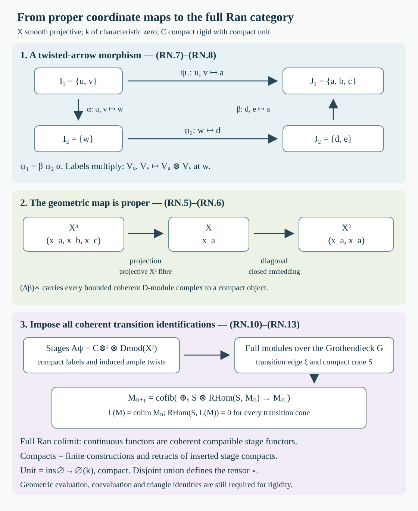
Figure 3.14. The top panel is the morphism (RN.7) with both input labels sent to \(w\), both output coordinates sent to \(a\), and \(\psi_1(u)=\psi_1(v)=a\), \(\psi_2(w)=d\). The middle panel is the exact coordinate map \((x_a,x_b,x_c)\mapsto(x_a,x_a)\) from (RN.5): projective projection followed by a closed diagonal. The bottom panel is the full module localization (RN.11)–(RN.13), whose compact objects are the finite constructions and retracts of the inserted stage compacts. The diagram makes no assertion about the remaining Ran duality or the nilpotent image.
3.47. Two points, the empty stage, and a nonproper boundary
The index category is easiest to understand on a finite proper scheme. Take \(X=S\), a disjoint union of \(N>0\) rational points. Then \(\operatorname{Dmod}(S^J)\) is a product of copies of \(\operatorname{Vect}_k\) indexed by functions \(x:J\to S\). Direct image along a coordinate map sums the coefficients over its fibres. We claim, with the same full definition (RN.10), that
\[ \mathcal C_{\operatorname{Ran}}^{\mathrm{dr}}(S) \simeq\mathcal C^{\otimes S},\qquad (V_i)_{i\in I}\otimes k_x \longmapsto \bigotimes_{p\in S} \left(\bigotimes_{\{i:x(\psi(i))=p\}}V_i\right). \tag{RN.14} \]
The outside tensor denotes the object in the tensor product of the \(N\) categories, not a Cartesian product of them. In an empty inner fibre we insert \(\mathbf1_{\mathcal C}\). This formula defines a continuous stage functor: use the finite direct sum decomposition over \(x\), and extend the label multiplication from tensor-product generators. It is compatible with a transition. In a source configuration \(x_1:J_1\to S\), direct image gives \(x_2=x_1\beta\). The relation (RN.7) says \(x_1\psi_1=x_2\psi_2\alpha\). Thus regrouping the source labels along \(\alpha\) gives exactly the same label at every point of \(S\). Sums over configurations give the compatibility for arbitrary stage objects.
Here is a complete inverse, including the transition identifications. Insert the stage \(S\xrightarrow{\mathrm{id}}S\) at the configuration \(\mathrm{id}_S\), with one label for every point. Its composite with (RN.14) is the identity. Conversely, for a generator at \((\psi:I\to J,x:J\to S)\), form the intermediate stage \(x\psi:I\to S\), at configuration \(\mathrm{id}_S\). There is a span of index morphisms
\[ (\psi:I\to J) \ \longleftarrow\ (x\psi:I\to S) \ \longrightarrow\ (\mathrm{id}:S\to S). \]
For the left arrow use \(\alpha=\mathrm{id}_I\), \(\beta=x\). Its coordinate direct image takes the point \(\mathrm{id}_S\) to the point \(x\). For the right arrow use \(\alpha=x\psi\), \(\beta=\mathrm{id}_S\); its label multiplication is the inner tensor in (RN.14). Thus the two inserted objects are canonically identified in the colimit. These spans commute with stage morphisms: the configuration equality above composes the two coordinate maps, and the two successive label multiplications agree by associativity. Their longer compatibilities are those same composition and associativity coherences. The free-cell presentations extend the resulting natural isomorphisms from generators to the whole stages. This proves that the two continuous functors are inverse. Disjoint union of two presentations multiplies their labels independently at each point, so the equivalence is symmetric monoidal.
The unit is included in this argument. The configuration \(\mathrm{id}_S\) at \(\emptyset\to S\) maps both to \(\emptyset\to\emptyset\), by the map \(\emptyset\to S\) on coordinates, and to \(\mathrm{id}:S\to S\), by the map \(\emptyset\to S\) on labels. The first direct image is \(k\); the second inserts the unit at every point. Hence the empty stage gives the tensor unit under (RN.14), even though there is no twisted-arrow morphism directly from \(\emptyset\to\emptyset\) to \(\mathrm{id}:S\to S\).
For two points \(S=\{p,q\}\), the labels at the two points remain separate. For example, three input labels \(A,B,C\) at the configuration \((p,q,p)\) become \(A\otimes C\) at \(p\) and \(B\) at \(q\). They do not all become \(A\otimes B\otimes C\) at one point. Compact labels give compact objects and their duals are taken independently at the two points. This verifies geometric compact rigidity for this finite-point example, without proving it for a curve.
Properness of the coordinate projection in (RN.5) has mathematical content. On \(\mathbf A^1_k\), use right modules and write \(D=k[t]\langle\partial\rangle\), with \(\partial t-t\partial=1\). The regular right module \(D\) is compact in \(\operatorname{Mod}_D\). For \(p:\mathbf A^1\to\operatorname{Spec}k\), the left Spencer resolution of the trivial connection gives
\[ p_*D\simeq [D\xrightarrow{\ u\mapsto u\partial\ }D], \quad\text{in degrees }-1,0,\qquad H^{-1}=0,\quad H^0=k[t]. \tag{RN.15} \]
Indeed \(D\otimes_D^{\mathrm L}k[t]\) is computed by the free left-module resolution with differential right multiplication by \(\partial\). In the PBW basis \(t^i\partial^j\), this differential sends \(t^i\partial^j\) to \(t^i\partial^{j+1}\). It is injective, and the quotient has precisely the basis \(1,t,t^2,\ldots\). The affine sheaf direct image adds no positive cohomology. A compact complex in \(\operatorname{Vect}_k\) has bounded finite-dimensional cohomology, by the finite-cell characterization with generator \(k\). Thus \(p_*D\) is not compact. The full Ran definition still makes sense on a nonproper curve; this example proves that its stage-transition compactness cannot be justified by (RN.6) there. It makes no claim that the particular Ran category for \(\mathcal C=\operatorname{Vect}\) is nonrigid.
Finally take \(\mathcal C\) to be the full category of \(\mathbf Z\)-graded complexes, with convolution of weights. Its compact objects have finite weight support and finite-dimensional bounded cohomology; their duals reverse the weights and take the ordinary complex dual. For \(S=\{p,q\}\), (RN.14) is the category of \(\mathbf Z^2\)-graded complexes. Write \(k_{(m,n)}\) for its one-dimensional weight object. The regular algebra constructed in (EP.3) is
\[ R_{\mathcal A} =\bigoplus_{(m,n)\in\mathbf Z^2} k_{(m,n)}\boxtimes k_{(-m,-n)},\qquad \text{after forgetting weights: }\ k[z_p^{\pm1},z_q^{\pm1}]. \tag{RN.16} \]
Each weight object has endomorphism algebra \(k\), and Hom between distinct weights is zero. These objects compactly generate: a graded complex is the sum of its weight complexes, and every complex of vector spaces is generated by shifts and colimits of \(k\). The multi-object free-module presentation (EP.1) therefore computes the coend using this generator category. Its representable bar contraction in (EP.3) gives precisely the displayed sum; passing to finite sums, cones and retracts changes the presentation, not this represented object. Tensor of the weights adds \((m,n)\), so multiplication of the corresponding basis elements is multiplication of the two independent Laurent monomials. This checks both the regular-algebra indexing and its multiplication in an actual Ran example.
The full geometric diagram is described in the freely accessible Arinkin–Gaitsgory–Kazhdan–Raskin–Rozenblyum–Varshavsky paper, §11.1 and Remark 11.1.9. Its proper-curve rigidity argument in §11.3 requires the geometric duality maps beyond the compact-generation proof above. The proofs here establish (RN.1)–(RN.16); a reference to that argument is not a substitute for the remaining duality proof.
Exercise 3.AN. Apply the localization construction (RN.12) in \(\operatorname{Vect}_k\) with \(\Sigma=\{k\oplus k\}\), starting from \(M_0=k\). Compute \(M_n\), the transition maps, and the colimit. Does one evaluation cofiber already produce a local object?
Solution 3.AN. For any complex \(M\), the evaluation source is \(M^{\oplus4}\). In matrix coordinates the evaluation is \((a,b,c,d)\mapsto a+d\), which has section \(m\mapsto(m,0,0,0)\). Its kernel is isomorphic to \(M^{\oplus3}\); a basis of the kernel is given by the three maps \(m\mapsto(0,m,0,0)\), \(m\mapsto(0,0,m,0)\), and \(m\mapsto(m,0,0,-m)\). Its cofiber is therefore \(M^{\oplus3}[1]\). The map from \(M\) to this cofiber is nullhomotopic because the evaluation is split surjective. Induction gives \(M_n=k^{\oplus3^n}[n]\), with nullhomotopic transitions. The sequential homotopy colimit is the cofiber of \(1-\mathrm{shift}\) on \(\bigoplus_n M_n\). The shift is nullhomotopic, so \(1-\mathrm{shift}\) is an equivalence and this colimit is zero. Every \(M_n\) is nonzero and has nonzero Hom from \(k\oplus k\). Thus a single cofiber is not local; the sequential construction is essential in this example.
Exercise 3.AO. For \(S=\{p,q\}\), start with four labels \(A,B,C,D\) at coordinates \((p,q,p,q)\). Multiply the first and third labels and the second and fourth labels along a map of label sets. Verify (RN.7) for this operation, compute the resulting two-point object, and explain the tensor unit's two-arrow presentation.
Solution 3.AO. Let \(I_1=J_1=\{1,2,3,4\}\), \(\psi_1=\mathrm{id}\), and \(x(1)=x(3)=p\), \(x(2)=x(4)=q\). Work first at the intermediate stage \(x:I_1\to S\), with configuration \(\mathrm{id}_S\). For its map to \(\mathrm{id}:S\to S\), take \(\alpha=x\) and \(\beta=\mathrm{id}_S\). Then \(\beta\psi_2\alpha=x=\psi_1\) at this intermediate stage, as required. The other arrow from the intermediate stage to the original stage has \(\alpha=\mathrm{id}_{I_1}\), \(\beta=x\), and its coordinate image is the original configuration. The normal form is \((A\otimes C)\otimes(B\otimes D)\) in \(\mathcal C\otimes\mathcal C\). The displayed tensor separates the two category factors. For the unit use the stage \(\emptyset\to S\) at \(\mathrm{id}_S\). Its arrow to \(\emptyset\to\emptyset\) sends this point to the point, giving \(k\); its arrow to \(S\xrightarrow{\mathrm{id}}S\) inserts \(\mathbf1_{\mathcal C}\) in both empty label fibres. This proves the unit identification using valid index morphisms.
Exercise 3.AP. Compute the direct image of the regular right Weyl module along \(\mathbf A^1\to\operatorname{Spec}k\) and test compactness. In the two-point graded example, compute the product of the regular-algebra basis elements indexed by \((2,-1)\) and \((-3,4)\), and their weights in the two tensor factors.
Solution 3.AP. The free left Spencer resolution has terms in degrees \(-1,0\) and differential right multiplication by \(\partial\). Tensoring with the regular right module gives exactly (RN.15). PBW makes the differential injective, and the cokernel \(k[t]\) has one basis element for every nonnegative power of \(t\). It is infinite-dimensional in degree zero, hence not compact in \(\operatorname{Vect}_k\). In (RN.16), the product is indexed by \((-1,3)\); its first weight is \((-1,3)\) and its second is \((1,-3)\). After forgetting weights it is \(z_p^{-1}z_q^3\). The two calculations concern different assertions: the first detects failure of a nonproper transition to preserve compacts, and the second computes multiplication in the proper finite-point Ran regular algebra.
3.48. Proper coherent duality and the two normalized objects
Let \(k\) be any characteristic-zero field and let \(Y/k\) be smooth projective of pure dimension \(d\). Write \(\Omega_Y=\bigwedge^d\Omega^1_{Y/k}\). All operator modules below are left modules. Write \(p:Y\to\operatorname{Spec}k\).
Use the full unbounded category \(\mathcal D(Y)\) constructed in GL-GLC-03, §§3.45–3.46. Its compacts are exactly the bounded coherent operator complexes, and \(p_*\) is continuous and preserves compacts. The proofs use finite Spencer columns and finite affine Čech totalization; their differentials need not be structure-sheaf linear.
The earlier lesson Holonomic D-modules and duality, Lemma3.0, proves finite local operator resolutions and the intrinsic bidual evaluation for all bounded coherent complexes. Its §5, equations(5.1)–(5.5), computes the dual of a connection, including the side-changing line. Consequently
\[ \mathbb D_YF=\Omega_Y^{-1}\otimes_{\mathcal O_Y} R\mathcal Hom_{\mathcal D_Y}(F,\mathcal D_Y)[d], \qquad \mathbb D_Y\mathcal O_Y=\mathcal O_Y . \]
The Hom has a right operator action; tensoring with \(\Omega_Y^{-1}\) is the right-to-left side change. It is not an arbitrary line-bundle twist equipped with a guessed connection.
The earlier lesson Adjunctions, base change, and the projection formula, §4.1 and Theorem4.2, proves
\[ p_*\mathbb D_YF \simeq (p_*F)^\vee \]
for every bounded coherent \(F\). For this projective structure map its proof factors through a projective embedding and the projective-product projection. The proof uses coherent direct-image Theorem3.4, finite local operator-duality bounds, projective D-affinity, the ordered residue trace and bounded dévissage. It does not assume holonomicity or the existence of a globally bounded free resolution.
In particular \(p_*F\) is a perfect \(k\)-complex. No assertion of finite-dimensionality of all operator-module mapping spaces on \(Y\) follows from this.
Set
\[ \mathbf k_Y=\mathcal O_Y[-d], \qquad \boldsymbol\omega_Y=\mathcal O_Y[d]. \]
For every unbounded \(Q\in\mathcal D(Y)\), there is a natural equivalence
\[ R\operatorname{Hom}_{\mathcal D(Y)}(\mathbf k_Y,Q) \simeq p_*Q. \tag{GD.1} \]
Here is the full calculation, including shifts. The intrinsic Spencer resolution of \(\mathcal O_Y\) has terms \(\mathcal D_Y\otimes_{\mathcal O_Y}\bigwedge^iT_Y\) in degrees \(-i\), \(0\le i\le d\). Its Hom into \(Q\) has coefficient terms \(\Omega^i_{Y/k}\otimes_{\mathcal O_Y}Q\) in form degrees \(i\), with the connection and bracket differential. This is the ordinary unshifted algebraic de Rham complex. Hom out of \(\mathcal O_Y[-d]\) shifts this complex by \([d]\).
The backward transfer to the point is the right operator module \(\Omega_Y\); its right Spencer resolution, tensored with \(Q\), is exactly the same de Rham complex shifted by \([d]\), with the side-changing and exterior-order signs proved in Direct images and the relative de Rham complex, Theorem 2.1. This computes \(p_*Q\).
The resolution has finitely many Spencer degrees. A finite affine cover of the separated \(Y\) has affine intersections and finite Čech length. In both computations, compute each structure-sheaf quasi-coherent coefficient column before totalizing these two finite directions. Thus the identification applies to full unbounded \(Q\); it uses no invalid structure-sheaf linearity of the de Rham differential. Operator-module mapping descent glues the local Hom calculation. This proves(GD.1).
For every \(E\in\operatorname{Vect}_k\), tensor–Hom adjunction therefore gives
\[ R\operatorname{Hom}_{\mathcal D(Y)}(\mathbf k_Y\otimes_kE,Q) \simeq R\operatorname{Hom}_k(E,p_*Q). \tag{GD.2} \]
Hence \(p^*E=\mathbf k_Y\otimes_kE\) is left adjoint to \(p_*\), in these normalized D-module conventions. This statement is about the actual full categories, not just bounded holonomic objects.
3.49. Full structure-map adjunctions and compact external duality
Define \(p^!E=\boldsymbol\omega_Y\otimes_kE\). Then
\[ p_*\dashv p^! \tag{GD.3} \]
on the full unbounded categories.
First let \(F\) be compact and \(E\) a perfect \(k\)-complex. All objects to which \(\mathbb D\) is applied below are bounded coherent. Finite projective evaluation, proper duality, (GD.2) and biduality give the natural sequence
\[ \begin{aligned} R\operatorname{Hom}_k(p_*F,E) &\simeq R\operatorname{Hom}_k(E^\vee,(p_*F)^\vee)\\ &\simeq R\operatorname{Hom}_k(E^\vee,p_*\mathbb D_YF)\\ &\simeq R\operatorname{Hom}_{\mathcal D(Y)} (p^*E^\vee,\mathbb D_YF)\\ &\simeq R\operatorname{Hom}_{\mathcal D(Y)} (F,\mathbb D_Y(p^*E^\vee))\\ &\simeq R\operatorname{Hom}_{\mathcal D(Y)}(F,p^!E). \end{aligned} \tag{GD.4} \]
The last equality uses the connection-dual calculation, reversal of shifts, and finite-dimensional tensor duality: \(\mathbb D_Y(\mathcal O_Y[-d]\otimes_kE^\vee) =\mathcal O_Y[d]\otimes_kE\).
For this compact \(F\), both ends of(GD.4) preserve colimits in \(E\). On the left this follows because \(p_*F\) is perfect; on the right it follows because \(F\) is compact and \(p^!\) is tensoring by a fixed object. Every \(k\)-complex is a filtered union of finite-dimensional bounded subcomplexes: a finite list of vectors and their differentials spans such a subcomplex, and unions of finite lists are again contained in one. Thus the equivalence extends naturally to all \(E\).
For fixed arbitrary \(E\), both ends send colimits in \(F\) to limits, since \(p_*\) is continuous. The compact generators of §3.45 give the requisite presentation explicitly. Restrict the enriched Yoneda module of \(F\) to the small category of compact objects and take its representable bar resolution. Realize that bar in \(\mathcal D(Y)\). The augmentation becomes an equivalence after Hom from every compact generator: Hom commutes with the realization and the bar is the usual Yoneda resolution. The generators detect its cone, so the augmentation is an equivalence. Each term is a sum of compact objects tensored by \(k\)-complexes, hence a colimit of compacts. The two contravariant functors and their natural equivalence on compacts extend over this presentation: applying either gives the same limit of compact-level equivalences. This proves(GD.3) for every unbounded \(F\), without extending coherent Verdier duality to arbitrary unbounded objects.
The maps needed at the empty-labelled Ran stages now have exact meanings:
\[ \eta:k\longrightarrow p_*\mathbf k_Y, \qquad \operatorname{Tr}:p_*\boldsymbol\omega_Y\longrightarrow k . \tag{GD.5} \]
The first is the unit of \(p^*\dashv p_*\) at \(k\), corresponding to \(\mathrm{id}_{\mathbf k_Y}\) under(GD.2). The second is the counit of \(p_*\dashv p^!\) at \(k\), corresponding to \(\mathrm{id}_{\boldsymbol\omega_Y}\) under(GD.4). The proper-duality comparison identifies the trace with the dual of \(\eta\). In the projective-product computation this is exactly the ordered residue trace used by the earlier proper-duality theorem, including its coefficient \(+1\).
Each of these two adjunctions satisfies its own triangle identities: under its natural Hom equivalence the unit and counit are the two images of identity maps, and composing the Hom equivalence with its inverse sends an identity to itself. This establishes the structure-map triangles. The two Ran-object triangles additionally require the diagonal kernel maps and the twisted-finite-set structural spans.
For smooth projective \(Y,Z\) and bounded coherent \(F,G\), there is an intrinsic equivalence
\[ \mathbb D_{Y\times Z}(F\boxtimes G) \simeq \mathbb D_YF\boxtimes\mathbb D_ZG. \tag{GD.6} \]
To prove it, take finite local projective operator resolutions on affine coordinate opens. The product operator algebra is the tensor product of the two operator algebras over \(k\), as proved in §3.45. For finite free terms, dual-Hom of their tensor product is the tensor product of the two dual-Hom terms. Split summands give the same identity for finite projectives. Totalizing the bounded resolutions with the Koszul interchange sign proves the identity for the local complexes.
The density factors satisfy \(\Omega_{Y\times Z}=\Omega_Y\boxtimes\Omega_Z\), with \(Y\)-forms first, and dimensions add. Thus the side changes and shifts agree. Evaluation maps are intrinsic and natural in the projective resolutions, so the local identifications agree on restrictions and glue. This proof assumes neither holonomicity nor finite-dimensional global Hom.
3.50. Residue normalization and a nonproper obstruction
Exercise 3.AQ. For \(Y=\mathbf P^1_k\), compute \(p_*\mathcal O_Y\), \(p_*\mathbf k_Y\) and \(p_*\boldsymbol\omega_Y\). Identify the unit and trace of(GD.5), including the residue sign.
Solution 3.AQ. Use the standard two-chart cover with coordinates \(t\) and \(u=t^{-1}\). Čech Laurent monomials give \(R\Gamma(\mathcal O_Y)=k\): polynomial monomials account for the whole overlap except the common constants in degree zero. For the canonical bundle, \(du=-t^{-2}dt\). The \(t\)-chart removes \(t^m dt\) for \(m\ge0\), and the \(u\)-chart removes \(m\le-2\). There are no global canonical forms and exactly the class \(dt/t\) remains in Čech degree one. Thus \(R\Gamma(\Omega_Y)=k[-1]\).
The one-form term of the ordinary de Rham complex is in degree one. Over a field the resulting two cohomology spaces split in the derived category: choose complements to boundaries in cycles and to cycles in each cochain group; the latter complements and their images form contractible two-term complexes. After the normalized direct-image shift \([1]\), they give
\[ p_*\mathcal O_Y=k[1]\oplus k[-1],\qquad p_*\mathbf k_Y=k\oplus k[-2],\qquad p_*\boldsymbol\omega_Y=k[2]\oplus k. \tag{GD.7} \]
The unit selects the constant class in degree zero, and the trace selects the shifted top class in degree zero:
\[ \eta:1\longmapsto(1,0),\qquad \operatorname{Tr}|_{k[2]}=0,\qquad \operatorname{Tr}\bigl([dt/t]\bigr)=1. \tag{GD.8} \]
These are maps of graded complexes; the summand \(k[2]\) lies in degree \(-2\). The trace annihilates Čech boundaries because neither chart contributes the exponent \(-1\). It annihilates de Rham derivatives because a derivative with exponent \(-1\) could only arise by differentiating exponent zero, whose derivative coefficient is zero. The ordered projective trace convention of the earlier adjunction lesson fixes its sign as \(+1\). This also agrees with the dual of the constant-unit map.
Figure3.15. In the cohomology table, \(k[a]\) lies in degree \(-a\). The constant unit uses the degree-zero summand of \(p_*\mathbf k_Y\), and the proper trace uses the degree-zero summand of \(p_*\boldsymbol\omega_Y\); the other two summands have opposite shifts. The residue calculation in Solution3.AQ fixes the coefficient and sign. Solution3.AR tests all-coherent proper duality on a nonholonomic compact, and Solution3.AS gives the exact nonproper obstruction.
Exercise 3.AR. Let \(Y=\mathbf P^n_k\). Calculate the direct image of the compact left regular operator module and the direct image of its coherent dual. Check whether holonomicity was used.
Solution 3.AR. Tensoring backward transfer with the left regular module cancels the derived tensor over the operator algebra. Its remaining coefficient is \(\Omega_Y\), so the ordered projective Čech calculation of the earlier adjunction lesson gives
\[ p_*\mathcal D_Y=R\Gamma(Y,\Omega_Y)=k[-n], \qquad p_*\mathbb D_Y\mathcal D_Y=k[n]. \tag{GD.9} \]
The second equality is proper coherent duality applied to the first. Locally, finite free operator duality gives
\[ \mathbb D_Y\mathcal D_Y =\Omega_Y^{-1}\otimes_{\mathcal O_Y} (\mathcal D_Y)_{\mathrm{right}}[n], \qquad \operatorname{Char}(\mathcal D_Y)=T^*Y. \tag{GD.10} \]
The first displayed tensor uses the right-to-left side change, including its derivative action. It is not a line-bundle twist of a left module with an unspecified connection. The order filtration on the left regular module has associated graded \(\mathcal O_{T^*Y}\), which proves the characteristic-support statement. For \(n>0\) the support has dimension \(2n\), so this module is nonholonomic; it is compact because it is bounded coherent. Thus(GD.9) checks the all-coherent content of proper duality. At \(n=0\) both shifts are zero, as they should be.
Exercise 3.AS. On \(Y=\mathbf A^1_k\), test whether the formula \(Q\mapsto\mathcal O_Y[1]\otimes_kQ\) is right adjoint to de Rham direct image on all D-modules.
Solution 3.AS. Write \(D=k\langle t,\partial\rangle/(\partial t-t\partial-1)\), and take the compact left regular module \(F=D\). Its backward transfer to the point is the right module \(k[t]\,dt\), and tensoring it with \(D\) leaves that module in degree zero. The trivialization \(dt\) therefore gives
\[ p_*F=k[t],\qquad \mathbb D_YF=D[1],\qquad p_*\mathbb D_YF=k[t][1]\not\simeq (k[t])^\vee. \tag{GD.11} \]
The side change uses formal adjoint \(\partial\mapsto-\partial\); the regular right module thereby becomes the regular left module. The dual \(k[t]^\vee=\operatorname{Hom}_k(k[t],k)\) is in degree zero, while \(k[t][1]\) has its nonzero cohomology in degree \(-1\).
More directly, with \(W=\mathcal O_Y[1]\), freeness of \(F\) gives
\[ R\operatorname{Hom}_k(p_*F,k)=k[t]^\vee,\qquad R\operatorname{Hom}_{\mathcal D(Y)}(F,W)=k[t][1]. \tag{GD.12} \]
These complexes cannot be equivalent, so the proposed right adjunction fails. The left adjunction in(GD.2) still holds: its proof was the finite Spencer calculation and did not require properness. This distinguishes the two uses of the normalized constant and dualizing objects and locates the properness requirement in(GD.4), rather than in a guessed shift.
The next geometric step uses the diagonal kernel evaluation \(F\boxtimes\mathbb D_YF\to\Delta_*\boldsymbol\omega_Y\) and its dual coevaluation \(\Delta_*\mathbf k_Y\to F\boxtimes\mathbb D_YF\). Their kernel contraction identities and the resulting Ran triangles are additional assertions beyond the two structure-map adjunctions proved here.
Further reading: The stack of local systems with restricted variation and geometric Langlands theory with nilpotent singular support, §11.3, gives the corresponding proper Ran duality construction.
3.51. The full operator pairing
Let \(Y/k\) be smooth projective of pure dimension \(d\), with structure map \(p\). Keep the full unbounded D-module category and the normalized objects \(\mathbf k_Y=\mathcal O_Y[-d]\), \(\boldsymbol\omega_Y=\mathcal O_Y[d]\) from §§3.45–3.49. Write \(\mathbb D\) for coherent Verdier duality and \(\otimes^!=\Delta_Y^!\boxtimes\) for the diagonal tensor. The earlier lesson Adjunctions, base change, and the projection formula, §3, proves \(P\otimes^!Q=(P\otimes_{\mathcal O_Y}^LQ)[-d]\), with its Leibniz operator action and its dualizing unit.
Operator pairing. For every compact \(F\in\mathcal D(Y)\) and every full unbounded \(G\in\mathcal D(Y)\), there is a natural equivalence
\[ p_*(\mathbb D F\otimes^!G) \simeq R\operatorname{Hom}_{\mathcal D(Y)}(F,G). \tag{KG.1} \]
The pairing need not be a perfect vector complex. Even for compact \(F,G\), their diagonal tensor can fail to be coherent, so proper coherent direct image gives no finiteness assertion for this expression.
Proof. Work first on an affine commuting-coordinate chart and take \(F=\mathcal D_Y\). Its dual is the side change of the right regular module shifted by \([d]\). The shift \([-d]\) in the diagonal tensor cancels it. Right side change of the resulting coefficient gives the right module
\[ N=(\mathcal D_Y)_{\rm right}\otimes_{\mathcal O_Y}G, \qquad (a\otimes g)\cdot\xi=a\xi\otimes g-a\otimes\xi g. \tag{KG.2} \]
Here the structure-sheaf balancing uses right multiplication on \(a\). Moving a function across the tensor introduces the same derivative of that function on both sides, by the operator relation and the Leibniz rule. Thus the displayed action is well defined.
The right Spencer complex for the map to the point is the finite Koszul complex of the commuting right coordinate derivatives, in degrees \(-d,\ldots,0\). It has augmentation
\[ N\longrightarrow G,\qquad a\otimes g\longmapsto ag. \tag{KG.3} \]
Every derivative boundary maps to zero. Filter by operator order and shifted exterior degree. Its associated graded augmented complex is the polynomial Koszul resolution \(\operatorname{Sym}(T_Y)\otimes_{\mathcal O_Y}G\to G\). Polynomial variables are a regular sequence on a polynomial module with arbitrary coefficient module: quotienting by the preceding variables leaves a polynomial module in the remaining ones, and multiplication by the next variable is injective by uniqueness of monomial coefficients. No flatness of \(G\) over the structure sheaf is required.
A cycle has finite operator order. Lift a symbol boundary and subtract it; this lowers order, and iteration terminates at the lower filtration bound. This proves exactness for every coefficient module. For an arbitrary complex \(G\), apply the argument in each vertical degree. The augmented horizontal complex has uniformly finite length, so its exactness survives totalization even when the vertical complex is unbounded. The augmentation therefore computes the pairing as \(G\), exactly the operator Hom from the free rank-one module.
Finite sums, split finite projectives and bounded projective resolutions extend the calculation to every local perfect operator complex. Such resolutions exist for every compact \(F\) by Holonomic D-modules and duality, Lemma 3.0, and §3.45. Their operator terms are structure-sheaf flat by PBW, so they also compute the derived tensor against arbitrary \(G\).
For clarity, the signs in the finite-complex tensor–Hom comparison can be fixed before restoring the density and dimension shift. If \(P\) is a bounded finite projective operator complex, \(P^\vee=\operatorname{Hom}_{\mathcal D_Y}(P,\mathcal D_Y)\), and \(f,g,x\) are homogeneous, the comparison and bidual evaluation are
\[ \begin{gathered} f\otimes g\longmapsto \bigl(x\longmapsto(-1)^{|g||x|}f(x)g\bigr),\\ d_{P^\vee}f=-(-1)^{|f|}f\,d_P,\qquad u_P(x)(f)=(-1)^{|x||f|}f(x). \end{gathered} \tag{KG.4} \]
The comparison commutes with the differential: the term involving \(f\,d_P\) has coefficient \(-(-1)^{|f|+|g||x|}\) on both sides, while the term involving \(d_Gg\) has coefficient \((-1)^{|g||x|}\), since \(f(x)\ne0\) requires \(|f|+|x|=0\). Finite projective evaluation proves it is an isomorphism term by term. It is natural for operator matrices and split summands. Restoring side change and the dimension shift gives precisely the coherent dual in §3.48; the finite Spencer contraction signs are those proved in Direct images and the relative de Rham complex, Theorem 2.1.
The augmentation \(a\otimes g\mapsto ag\) is intrinsic, so the local comparisons agree with coordinate changes and projective-resolution comparisons. Compare these natural maps of Hom/evaluation complexes before taking global sections. Operator-module mapping descent and a finite affine Čech cover then glue the maps and their inverses. This compares the actual Čech complexes; equality of local Ext classes alone would not establish equality of global derived morphisms. Both the Spencer and Čech directions have finite length, so the calculation retains full unbounded \(G\). This proves(KG.1).
3.52. The diagonal kernels and their contraction
We first record the relative adjunctions needed to move between two coordinates. For the projections \(\pi_1,\pi_2:Y^2\to Y\), the full categories satisfy
\[ \pi_2^*F=\mathbf k_Y\boxtimes F,\quad \pi_2^*\dashv\pi_{2,*},\qquad \pi_1^!F=F\boxtimes\boldsymbol\omega_Y,\quad \pi_{1,*}\dashv\pi_1^!. \tag{KG.5} \]
Proof. Test the left adjunction on compact \(F\) and compact exterior generators \(A\boxtimes B\). Exterior-product equivalence in §3.45 identifies the mapping complex on the product with \(R\operatorname{Hom}(\mathbf k_Y,A)\otimes_kR\operatorname{Hom}(F,B)\). The first factor is \(p_*A\) by(GD.1). This is a perfect vector complex by proper coherent direct image. Hence the expression equals \(R\operatorname{Hom}(F,(p_*A)\otimes_kB)\), which is the mapping complex into \(\pi_{2,*}(A\boxtimes B)\). The external-push identification is the finite Spencer–Čech Fubini comparison of §3.45.
Both expressions preserve colimits in the product target: the source is compact, while \(F\) is compact and \(\pi_{2,*}\) is continuous. Compact exterior generators generate the full product category, so their enriched bar extends the equivalence to every target. Both expressions then turn colimits in \(F\) into limits, giving the full left adjunction.
For compact source \(Q\) and compact target \(F\), coherent duality reverses this adjunction. Proper coherent duality for the projection and compact external duality identify \(\mathbb D(\pi_1^*\mathbb D F)=\pi_1^!F\). This gives the right adjunction on those compact objects. Extend in the target using compactness of both \(Q\) and its proper image \(\pi_{1,*}Q\), then extend in the source over its compact bar. This proves(KG.5). These are equivalences under contravariant coherent duality of categories; they do not take a vector-space dual of an arbitrary operator-module mapping complex.
Write \(\Delta:Y\hookrightarrow Y^2\). Closed adjunction, (GD.1), (KG.1) and biduality give
\[ \begin{aligned} R\operatorname{Hom}_{\mathcal D(Y^2)} (\Delta_*\mathbf k_Y,F\boxtimes\mathbb D F) &\simeq p_*\Delta^!(F\boxtimes\mathbb D F)\\ &\simeq R\operatorname{Hom}_{\mathcal D(Y)} (\mathbb D F,\mathbb D F). \end{aligned} \tag{KG.6} \]
The closed adjunction, including its determinant and shift, is proved in the earlier adjunction lesson, Lemma 1.2. Its finite normal Koszul resolution also computes arbitrary unbounded inputs. Define \(c_F:\Delta_*\mathbf k_Y\to F\boxtimes\mathbb D F\) to be the mate of \(\mathrm{id}_{\mathbb D F}\).
All objects in the next coherent-duality calculation are compact: proper closed push preserves coherence, and exterior products of bounded coherent operator complexes are bounded coherent. Proper coherent duality for \(\Delta\) and(GD.6) give
\[ \begin{aligned} R\operatorname{Hom}_{\mathcal D(Y^2)} (F\boxtimes\mathbb D F,\Delta_*\boldsymbol\omega_Y) &\simeq R\operatorname{Hom}_{\mathcal D(Y^2)} (\Delta_*\mathbf k_Y,\mathbb D F\boxtimes F)\\ &\simeq R\operatorname{Hom}_{\mathcal D(Y)}(F,F). \end{aligned} \tag{KG.7} \]
Define \(e_F:F\boxtimes\mathbb D F\to\Delta_*\boldsymbol\omega_Y\) to be the mate of \(\mathrm{id}_F\). These definitions retain all dual-shift, determinant and interchange signs. If \(\sigma\) swaps the factors, intrinsic biduality gives
\[ c_{\mathbb D F}=\sigma^*c_F,\qquad e_{\mathbb D F}=\sigma^*e_F, \quad\text{under }F\simeq\mathbb D\mathbb D F. \tag{KG.8} \]
To verify this, use(KG.4) on a finite homogeneous projective complex. Swapping homogeneous factors contributes its Koszul sign, and the bidual evaluation contributes the displayed sign of \(u_P\); the resulting endomorphism is the same identity on either side of(KG.6) or(KG.7). Naturality for finite operator matrices and the intrinsic density contraction glues this calculation.
For the contraction, use the two partial diagonals and their common small diagonal:
\[ i_{12}(u,v)=(u,u,v),\quad i_{23}(u,v)=(u,v,v),\quad j(y)=(y,y),\quad t(y)=(y,y,y). \tag{KG.9} \]
The square with \(j,j,i_{12},i_{23}\) is cartesian and its fibre product is the smooth \(Y\). Put \(S=\mathbf k_Y\boxtimes F\) and \(T=F\boxtimes\boldsymbol\omega_Y\). There are canonical maps
\[ a_F:S\longrightarrow j_*F,\qquad b_F:j_*F\longrightarrow T. \tag{KG.10} \]
For \(b_F\), closed adjunction gives \(R\operatorname{Hom}(j_*F,T)=R\operatorname{Hom}(F,j^!T)\), and the normalized diagonal tensor gives \(j^!T=F\); take the mate of the identity. For \(a_F\), dualize the compact objects and use \(\mathbb D S=\boldsymbol\omega_Y\boxtimes\mathbb D F\), \(\mathbb D(j_*F)=j_*\mathbb D F\), and \(j^!(\boldsymbol\omega_Y\boxtimes\mathbb D F)=\mathbb D F\). Its mapping complex therefore also identifies with \(R\operatorname{Hom}(F,F)\); take the identity. This defines the needed left mate on this particular input, without requiring coherence of arbitrary coherent inverse images.
Base change, proved with its composition comparisons in the earlier adjunction lesson, Theorem 2.1, now gives
\[ R\operatorname{Hom}_{\mathcal D(Y^3)} (i_{12,*}S,i_{23,*}T) \simeq R\operatorname{Hom}_{\mathcal D(Y)}(F,F). \tag{KG.11} \]
Indeed, transpose along \(i_{12}\), replace \(i_{12}^!i_{23,*}T\) by \(j_*j^!T=j_*F\), and use the just-constructed left mate for \(S\). Only bounded quasi-coherent complexes are needed in this base-change step.
Kernel contraction. With the bidual identification in(KG.8), the following two maps are equal:
\[ \begin{aligned} (\mathrm{id}_F\boxtimes e_{\mathbb D F}) \circ(c_F\boxtimes\mathrm{id}_F) &=(i_{23,*}b_F)\circ(i_{12,*}a_F):\\ i_{12,*}S&\longrightarrow i_{23,*}T. \end{aligned} \tag{KG.12} \]
The right-hand route factors through \(t_*F\). The identity is in the three-coordinate D-module category, before forgetting any coefficient-labelled coordinate.
Proof. Compute the transpose under(KG.11) on the finite operator Hom complexes used to prove(KG.1). More generally let \(c_\alpha\) be the mate in(KG.6) of an endomorphism \(\alpha\) of \(\mathbb D F\). Tensor–Hom evaluation of the middle coefficient gives
\[ \text{transpose of } (\mathrm{id}_F\boxtimes e_{\mathbb D F}) \circ(c_\alpha\boxtimes\mathrm{id}_F) =\mathbb D(\alpha) \quad\text{on }F\simeq\mathbb D\mathbb D F. \tag{KG.13} \]
Here is the coefficient computation. The Spencer augmentation is exactly \(a\otimes g\mapsto ag\), so its finite projective Hom transpose is ordinary operator evaluation. For a finite free module an endomorphism of its right module dual is a matrix acting on the left of its right-module coordinates. Dual evaluation turns it into the transposed matrix acting on the right of the original left-module coordinates. For the identity matrix the contraction coefficient is \(\sum_b\delta_{ab}\delta_{bc}=\delta_{ac}\). For a split finite projective module restrict this same equality to its split summand.
For a bounded projective complex, use the differential and bidual map in(KG.4). On homogeneous cochains the tensor–Hom rule is
\[ (\phi_1\otimes\phi_2)(p_1\otimes p_2) =(-1)^{|p_1||\phi_2|} \phi_1(p_1)\phi_2(p_2). \tag{KG.14} \]
This is precisely the interchange sign in the graded transpose. Together with(KG.4), it proves(KG.13) as an equality of natural DG Hom/evaluation maps, compatible with their differentials, restrictions and resolution comparisons. Applying the signed inverse-image and closed-adjunction maps performs the same coefficient contraction in the two independent normal-coordinate blocks.
For completeness, their signs can be retained explicitly. Order \(c\) normal coordinates, write \(e_J\) for the normal Koszul wedge in degree \(-|J|\), \(f_I\) for its Hom dual, and \(s(I)=\sum_{i\in I}i\). In the notation of the earlier closed-adjunction proof the actual coefficient and normal proper-dual maps are
\[ \begin{gathered} T(f_I)=(-1)^{s(I)+c|I|-|I|(|I|-1)/2} e_{I^c}\otimes\det(\mathcal I/\mathcal I^2)^{-1},\\ H(e_J)=(-1)^{s(J)+|J|(|J|+1)/2}f_{J^c},\\ \rho^{\rm normal}=\varepsilon_cH,\qquad \varepsilon_c=(-1)^{c(c-1)/2}. \end{gathered} \tag{KG.15} \]
The backward-transfer density cancels the inverse determinant in \(T\). Its top coefficient alone is positive, while the actual ordered closed counit has coefficient \(\varepsilon_c\). Both factors are required. Here is the chain-map check in every codimension. Put \(n=|I|\), let \(j\notin I\), and let \(\ell\) count the elements of \(I\) smaller than \(j\). The Hom differential inserts \(j\) with exponent \(n+\ell+1\). The exponent of \(T\) changes by \(j+c-n\), so the composite exponent is the old exponent plus \(\ell+1+j+c\). The shifted complementary Koszul differential has exponent \(c+j-1-\ell\). The difference is \(2\ell+2\), which is even.
For \(H\), put \(m=|J|\), take \(j\in J\), and let \(\ell\) count the elements of \(J\) smaller than \(j\). Removing \(j\) changes its exponent by \(-j-m\), so applying \(H\) after the Koszul differential gives the old exponent plus \(\ell-j-m\). The proper-dual differential on the complementary wedge has exponent \(2c-m+j-\ell\). Their difference is \(2(\ell-j-c)\), again even. The top coefficients of both \(T\) and \(H\) are \(+1\), since their exponents there equal \(c(c+1)\). These calculations prove the coefficient chain identities; the intrinsic backward-transfer density and determinant contraction make them invariant under changes of ordered normal coordinates.
When two normal blocks of lengths \(r,s\) compose, the tensor–Hom rule gives
\[ \varepsilon_r\varepsilon_s(-1)^{rs} =(-1)^{(r+s)(r+s-1)/2} =\varepsilon_{r+s}. \tag{KG.16} \]
Both routes in(KG.12), and the base-change comparison between them, use this same ordered counit. Therefore their signed normal and density contractions agree. This supplies(KG.13) with the actual closed transfer comparisons, rather than a separately chosen endpoint duality. The coefficient calculation is natural before derived global sections, so its coherent Čech descent gives the global identity of morphisms; checking local cohomology classes alone would not suffice.
For \(\alpha=\mathrm{id}_{\mathbb D F}\), the transpose in(KG.13) is \(\mathrm{id}_F\). By their definition, \(a_F,b_F\) give the same identity under(KG.11). That comparison is an equivalence, so the two maps in(KG.12) are equal. This proves the contraction.
The two outside maps also cancel with their exact adjunction meanings. Since \(\pi_2j=\pi_1j=\mathrm{id}_Y\), the product unit and the left mate in(KG.10) give
\[ F\xrightarrow{\eta_{\pi_2}}\pi_{2,*}\pi_2^*F \xrightarrow{\pi_{2,*}a_F}\pi_{2,*}j_*F=F =\mathrm{id}_F . \tag{KG.17} \]
To check it, transpose under the left product adjunction and the restricted closed adjunction defining \(a_F\). The transpose is the identity for the identity composite on \(F\). Under exterior-product pushforward the first arrow is \(k\to p_*\mathbf k_Y\), tensored with \(F\).
Likewise the closed and proper product counits give
\[ F=\pi_{1,*}j_*F \xrightarrow{\pi_{1,*}b_F}\pi_{1,*}\pi_1^!F \xrightarrow{\varepsilon_{\pi_1}}F =\mathrm{id}_F . \tag{KG.18} \]
This is the counit of the composite adjunction \(\pi_{1,*}j_*\dashv j^!\pi_1^!\), identified with the identity adjunction on \(F\). Under exterior-product pushforward the last arrow is the proper trace \(p_*\boldsymbol\omega_Y\to k\), tensored with \(F\). Thus a section followed by its projection has normalized coefficient \(+1\). This statement retains the ordered normal signs in(KG.15); it does not replace the raw higher-codimension counit coefficient by \(+1\).
3.53. Compact rigidity of the actual D-module Ran category
Return to the actual category \(\mathcal R=\mathcal C_{\operatorname{Ran}}\) constructed in §§3.45–3.47. Here \(X/k\) is a smooth projective curve over any characteristic-zero field. The specified symmetric monoidal coefficient category \(\mathcal C\) has compact unit and dualizable compact generators. Its tensor-power compact objects are therefore dualizable: pure exterior compact generators have their componentwise duals, and finite cofibers, sums and split retracts preserve duals by the tensor-adjunction argument below.
For \(\psi:I\to J\), put \(Y=X^J\), \(V\in(\mathcal C^{\otimes I})^c\), and \(F\in\mathcal D(Y)^c\). The dual of its inserted compact generator is
\[ A=\operatorname{ins}_{\psi}(V\otimes F), \qquad A^\vee=\operatorname{ins}_{\psi} (V^\vee\otimes\mathbb D_YF). \tag{KG.19} \]
We construct the two maps and prove both triangles, rather than inferring rigidity from compact generation.
Write \(\psi^{(2)}=\psi\sqcup\psi:I\sqcup I\to J\sqcup J\), and let \(\psi^{\Delta}:I\sqcup I\to J\) apply \(\psi\) on both copies. Evaluation is the composite
\[ \begin{aligned} A\circledast A^\vee &=\operatorname{ins}_{\psi^{(2)}} ((V\boxtimes V^\vee)\otimes(F\boxtimes\mathbb D F))\\ &\longrightarrow \operatorname{ins}_{\psi^{(2)}} ((V\boxtimes V^\vee)\otimes\Delta_*\boldsymbol\omega_Y)\\ &\simeq \operatorname{ins}_{\psi^\Delta} ((V\boxtimes V^\vee)\otimes\boldsymbol\omega_Y)\\ &\simeq \operatorname{ins}_{\psi} ((V\otimes V^\vee)\otimes\boldsymbol\omega_Y)\\ &\longrightarrow \operatorname{ins}_{\psi} (\mathbf1_{\mathcal C^{\otimes I}}\otimes\boldsymbol\omega_Y)\\ &\simeq \operatorname{ins}_{\emptyset\to J} (k\otimes\boldsymbol\omega_Y)\\ &\simeq \mathbf1_{\mathcal R}\otimes_kp_*\boldsymbol\omega_Y \longrightarrow\mathbf1_{\mathcal R}. \end{aligned} \tag{KG.20} \]
The first arrow is \(e_F\), the second arrow is coefficient evaluation, and the last is the proper trace of(GD.5). The geometric structural equivalence uses \(\alpha=\mathrm{id}_{I\sqcup I}\) and the fold \(\beta:J\sqcup J\to J\); its coordinate map is \(\Delta_Y\). The next equivalence uses the coefficient fold \(\alpha:I\sqcup I\to I\) and \(\beta=\mathrm{id}_J\). The unit-label insertion uses \(\emptyset\to I\). The final empty-labelled transition uses \(\beta:\emptyset\to J\), whose coordinate map is \(p:Y\to\mathrm{pt}\). These are exactly morphisms satisfying \(\psi_{\rm source}=\beta\psi_{\rm target}\alpha\) in the actual twisted-finite-set diagram.
Coevaluation uses the constant-object unit and the coefficient coevaluation in the folded coefficient category:
\[ \begin{aligned} \mathbf1_{\mathcal R} &\longrightarrow\mathbf1_{\mathcal R}\otimes_kp_*\mathbf k_Y\\ &\simeq\operatorname{ins}_{\emptyset\to J}(k\otimes\mathbf k_Y)\\ &\simeq\operatorname{ins}_{\psi} (\mathbf1_{\mathcal C^{\otimes I}}\otimes\mathbf k_Y)\\ &\longrightarrow\operatorname{ins}_{\psi} ((V\otimes V^\vee)\otimes\mathbf k_Y)\\ &\simeq\operatorname{ins}_{\psi^\Delta} ((V\boxtimes V^\vee)\otimes\mathbf k_Y)\\ &\simeq\operatorname{ins}_{\psi^{(2)}} ((V\boxtimes V^\vee)\otimes\Delta_*\mathbf k_Y)\\ &\longrightarrow\operatorname{ins}_{\psi^{(2)}} ((V\boxtimes V^\vee)\otimes(F\boxtimes\mathbb D F))\\ &=A\circledast A^\vee . \end{aligned} \tag{KG.21} \]
The last arrow is \(c_F\). Proper coherent duality identifies \(\Delta_*\mathbf k_Y\) with its compact !-direct image, so no additional nonholonomic !-pushforward is being assumed. Coefficient coevaluation is taken in \(\mathcal C^{\otimes I}\); it is not a map from the unit into \(V\boxtimes V^\vee\) in two independent coefficient categories.
For the first triangle, expand these maps on three coordinate copies and retain the corresponding three coefficient-label copies. Between the coefficient coevaluation and evaluation, the coefficient object is the fixed exterior object \(V\boxtimes V^\vee\boxtimes V\). Its geometric composite is exactly the left side of(KG.12), with the symmetric duality convention in(KG.8). Tensor(KG.12) by this fixed coefficient object and apply the insertion functor. The equality is valid before the colimit localization.
Replace that composite by the route through \(t_*F\) on the right side of(KG.12). The small diagonal makes all three coordinate copies equal. The actual structural equivalence for the fold \(J\sqcup J\sqcup J\to J\) now identifies this inserted object with the stage \(I\sqcup I\sqcup I\to J\). At that stage the three copies of each coefficient label have the same coordinate, so the coefficient fold \(I\sqcup I\sqcup I\to I\) is allowed.
This also checks compatibility with the two earlier folds. Folding the first two copies and then the result with the third, or folding the last two and then with the first, gives the same set map from three copies to one. Their coordinate folds give the same small diagonal. The coherent composition comparisons in the actual diagram of §3.45 therefore identify these paths with the common threefold fold; its coefficient map is ordinary associativity and symmetry in \(\mathcal C^{\otimes I}\). Thus the coefficient composite is its \(V,V^\vee,V\) triangle and equals \(\mathrm{id}_V\).
The outside geometric maps are now precisely the section–projection maps(KG.17) and(KG.18). The first is the constant unit tensored with \(F\), followed by \(a_F\); the second is \(b_F\), followed by the proper trace tensored with \(F\). Both are identities. Consequently the full first Ran triangle is \(\mathrm{id}_A\). This argument keeps the middle coefficient label until the small-diagonal comparison; forgetting that coordinate earlier would not prove this triangle.
For the second triangle repeat the same calculation with \(V^\vee,\mathbb D F\). Intrinsic coefficient biduality and(KG.8) identify its maps with the symmetric versions of(KG.20) and(KG.21). The coefficient triangle is \(\mathrm{id}_{V^\vee}\), the kernel transpose is \(\mathrm{id}_{\mathbb D F}\), and both section–projection maps are identities. It therefore gives \(\mathrm{id}_{A^\vee}\), retaining the graded braiding signs. This proves(KG.19) for every inserted compact generator, without imposing holonomicity on \(F\).
The following tensor-adjunction calculation completes the passage from generators to all compacts:
\[ \begin{gathered} \bigl(\operatorname{cofib}(U\to W)\bigr)^\vee =\operatorname{fib}(W^\vee\to U^\vee),\\ R\operatorname{Hom}_{\mathcal R}(B,T) =R\operatorname{Hom}_{\mathcal R} (\mathbf1_{\mathcal R},B^\vee\circledast T) \quad(B\text{ dualizable}). \end{gathered} \tag{KG.22} \]
For the first identity, apply Hom to the cofiber after tensoring by an arbitrary object. The resulting fibre of the two Hom complexes equals Hom into the displayed fibre of the reversed dual map, tensored with the target. Tensor is exact, so this supplies the dual adjunction and its unit/counit. Finite sums follow in the same way. A split retract has the reversed split retract of the dual, and its two triangles restrict to that summand.
By §3.46 the actual Ran compacts are the thick closure of the inserted compact generators, so they are all dualizable. Conversely, the second line of(KG.22) and compactness of the unit show that every dualizable object is compact, since tensoring with its dual is continuous. Therefore the actual full D-module Ran category is rigid, and its compact objects are exactly its dualizable objects.
These constructions also specify duality across the original diagram: coefficient folds preserve duals as strong symmetric monoidal functors, and proper coherent duality identifies the dual of a coordinate direct image with the direct image of the dual. Their composition comparisons are the signed adjunction comparisons already used above. Thus stage presentations give compatible duals; alternatively, any two duals are canonically identified by composing their units and counits, whose triangles make those comparison maps inverse.
The regular-algebra construction of §3.42 now applies to this actual rigid category. If \(\mu:\mathcal R\otimes\mathcal R\to\mathcal R\) is multiplication and \(r\) its right adjoint, its regular commutative algebra is
\[ R_{\mathcal R}=r(\mathbf1_{\mathcal R}) \simeq\int^{B\in\mathcal R^c}B^\vee\boxtimes B. \tag{KG.23} \]
All hypotheses of that earlier proof are now supplied: the actual category is compactly generated, its unit is compact, and its compacts are monoidally dualizable. The coend uses the whole compact DG category, including its finite cones, retracts and coherent localization morphisms. It is not a coend over only the underlying set of inserted generators. The proof in §3.42 constructs its multiplication and unit, proves the projection formula and identifies it with \(r(\mathbf1)\), so(KG.23) supplies the actual Ran regular algebra. Constructing its geometric Hecke action and spectral coefficient functor, and identifying its nilpotent regular image, remain separate geometric assertions.
3.54. Graded signs, a nonholonomic pairing and the common diagonal
Exercise 3.AT. At the empty stage, let \(A_m=\mathbf1_{\mathcal R}[m]\) and \(B_m=\mathbf1_{\mathcal R}[-m]\). Compute coevaluation, reversed evaluation and both triangle signs.
Solution 3.AT. Model the two shifts by homogeneous generators \(e,e^\vee\) of degrees \(-m,m\). The ordinary evaluation \(e^\vee\otimes e\mapsto1\) has no interchange sign. In the order used in(KG.20) and(KG.21),
\[ \operatorname{coev}(1)=e\otimes e^\vee,\qquad \operatorname{ev}(e\otimes e^\vee)=(-1)^m,\qquad \operatorname{braid}(e^\vee\otimes e)=(-1)^m e\otimes e^\vee. \tag{KG.24} \]
The first triangle contracts the last two factors in \(e\otimes e^\vee\otimes e\). Swapping them contributes \((-1)^m\), and reversed evaluation contributes another \((-1)^m\); their product is \(+1\). For the second triangle, swapping the coevaluation to \(e^\vee\otimes e\) supplies the first factor, and reversed evaluation supplies the second. It too is \(+1\). Omitting the graded braiding would give \(-1\) for odd \(m\), contradicting the triangle. At this stage \(Y=\mathrm{pt}\), so all geometric constant/dualizing shifts are zero; these are actual unit shifts in the curve Ran category.
Exercise 3.AU. In the local proof of(KG.1), take \(F=D_{\mathbf A^1}\) and \(G=\mathcal O_{\mathbf A^1}e^{at}\), for arbitrary \(a\in k\). Calculate the right Spencer complex and its augmentation without assuming a finite-dimensional underlying vector space.
Solution 3.AU. As a right \(k[t]\)-module, the Weyl algebra has PBW basis \(1,\partial,\partial^2,\ldots\). Identify its right tensor with \(G\) with \(k[t,z]e\), where \(z^nf(t)e\) represents \(\partial^n\otimes f(t)e\). Formula(KG.2) gives
\[ \begin{gathered} \bigl[k[t,z]e\xrightarrow{\rho}k[t,z]e\bigr], \quad \rho=z-(\partial_t+a), \quad\text{degrees }-1,0,\\ z^nf(t)e\longmapsto(\partial_t+a)^nf(t)e \quad\text{under the augmentation}. \end{gathered} \tag{KG.25} \]
Indeed \(\partial(f(t)e)=(f'(t)+af(t))e\), and right multiplication by \(\partial\) on the PBW basis increases its index. The leading \(z\)-degree of \(\rho h\) is one higher than that of any nonzero finite polynomial \(h\); thus \(\rho\) is injective. Modulo its image, reduce every \(z^nf\) to \((\partial_t+a)^nf\) by descending \(z\)-degree. The augmentation kills each relation and is the identity on the degree-zero representative \(f(t)e\), proving that the cokernel is exactly \(k[t]e\).
For example, with \(a=2,n=2,f=t^2\),
\[ (\partial_t+2)t^2=2t^2+2t,\qquad (\partial_t+2)^2t^2=4t^2+8t+2. \tag{KG.26} \]
This is the operator Hom from the nonholonomic free module \(D_{\mathbf A^1}\) to \(G\). In the pairing, the dual shift \([1]\) and diagonal-tensor shift \([-1]\) cancel before taking this Spencer complex. Its exactness uses finite polynomial degree, while its cokernel remains infinite-dimensional over \(k\); no finite-rank vector-space dual has been substituted for coherent operator duality.
Exercise 3.AV. In the affine polynomial model for a single curve coordinate, describe the two partial diagonals inside three coordinates and compute the transverse-normal Hom degrees for \(F=\mathcal O\). Retain the ordered normal counit sign.
Solution 3.AV. On the polynomial model \(\mathbf A^3_k\), use base coordinate first and normal coordinates next:
\[ z=t_2,\quad a=t_2-t_1,\quad b=t_3-t_2, \qquad t_1=z-a,\quad t_2=z,\quad t_3=z+b, \qquad \det=+1. \tag{KG.27} \]
The matrix of this coordinate change, with rows \(z,a,b\), is \(\left(\begin{smallmatrix}0&1&0\\-1&1&0\\0&-1&1\end{smallmatrix}\right)\), whose determinant is \(1\). Thus \(i_{12}\) is \(a=0\), \(i_{23}\) is \(b=0\), and their common small diagonal is \(a=b=0\). The independent normal equations form the corresponding two-step regular sequence.
Write \(\delta_a=D_a/D_aa\) and \(\delta_b=D_b/D_bb\). Applying Hom from the free resolution \(D_a\xrightarrow{\,\cdot a\,}D_a\) into \(\mathcal O_a\) gives multiplication by \(a\), whose kernel is zero and whose cokernel is \(k\) in degree one. Applying Hom from \(D_b\xrightarrow{\,\cdot\partial_b\,}D_b\) into \(\delta_b=k[\partial_b]\delta_b\) gives multiplication by \(\partial_b\), again injective with cokernel \(k\) in degree one. Therefore
\[ R\operatorname{Hom}_{D_a}(\delta_a,\mathcal O_a)=k[-1], \qquad R\operatorname{Hom}_{D_b}(\mathcal O_b,\delta_b)=k[-1]. \tag{KG.28} \]
In the tangential direction, the Hom from \(\mathcal O_z\) to itself is the polynomial de Rham complex \(k[z]\xrightarrow{d/dz}k[z]dz\). Characteristic zero makes its derivative surjective, with kernel \(k\). The tensor of the two transverse Hom complexes is thus \(k[-2]\). The source \(i_{12,*}S\) has the constant shift \([-1]\), and the target \(i_{23,*}T\) has the dualizing shift \([1]\); their mapping shift is \(+2\). It cancels the transverse \([-2]\), leaving the degree-zero tangential identity in(KG.11).
The raw ordered tensor–Hom counit for the two normal directions and its comparison coefficient are
\[ \varepsilon_2=-1,\qquad \varepsilon_1\varepsilon_1(-1)^{1\cdot1}=-1, \qquad \frac{\text{composite ordered coefficient}} {\text{small-diagonal ordered coefficient}}=1. \tag{KG.29} \]
Both routes use the same ordered normal density and counit. Their normalized endomorphism coefficient is therefore \(+1\), as(KG.12) asserts. The raw top coefficient \(-1\) has not been discarded.
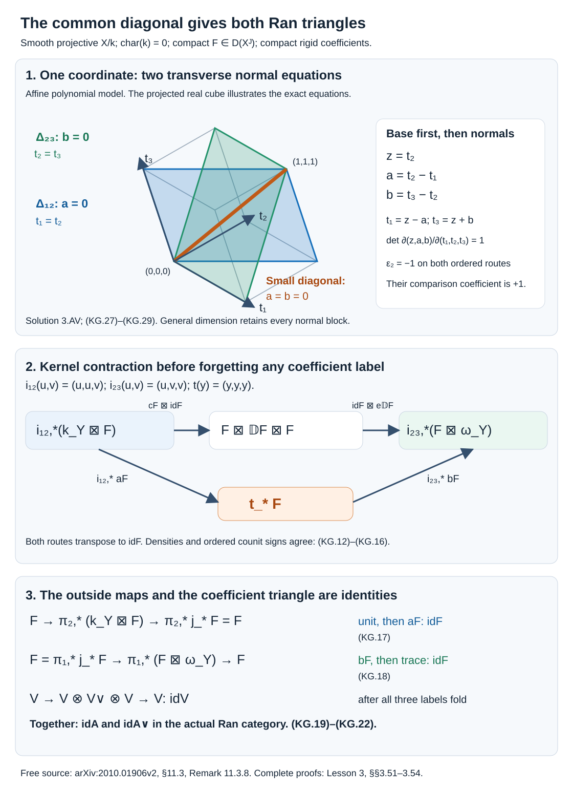
Figure 3.16. The upper panel shows the exact one-coordinate linear equations of Solution 3.AV; the projected real cube only illustrates these equations. The middle panel is the equality of actual D-module kernel maps in(KG.12). The lower panel follows its small-diagonal factor through the two projection adjunctions(KG.17)–(KG.18) and the coefficient-category triangle. The full proof applies one such normal block to every coordinate of \(Y=X^J\), with the ordered higher-codimension signs(KG.15)–(KG.16).
Further reading: The stack of local systems with restricted variation and geometric Langlands theory with nilpotent singular support, §11.3 and Remark 11.3.8, gives the proper Ran duality construction and its full D-module form.
3.55. Riemann–Hilbert on the full chartwise ind-regular category
In §§3.55–3.58 the ground and coefficient field is \(\mathbf C\). Regularity is algebraic regularity, including every point at infinity on a curve test. Let \(U\) be a smooth separated finite-type complex variety, and use DG categories with their full derived mapping complexes. Put
\[ \begin{gathered} \mathscr R(U)=D^b_{\mathrm{rh}}(\mathcal D_U),\qquad \mathscr B(U)=D^b_{c,\mathrm{alg}}(U^{\mathrm{an}},\mathbf C),\\ \mathscr R_\infty(U)=\operatorname{Ind}\mathscr R(U),\qquad \mathscr B_\infty(U)=\operatorname{Ind}\mathscr B(U). \end{gathered} \tag{RH.1} \]
The bounded categories are idempotent complete: a retract has retract cohomology and hence retains boundedness, regular holonomicity, or finite algebraic constructibility, respectively. A small skeleton fixes the size of each ind-completion. The right-hand category is the ind-completion of the full derived sheaf category in the first line. It is not formed by deriving an abelian category of local systems.
Here the required general theorem has a complete earlier proof. The Riemann–Hilbert correspondence, §1, Theorems 1.2–1.23 proves the following, for all these varieties, arbitrary singular supports, and every bounded degree:
\[ \operatorname{DR}_U:\mathscr R(U)\xrightarrow{\sim}\mathscr B(U), \qquad \operatorname{DR}_U(\mathcal O_U)=\mathbf C_U[d_U]. \tag{RH.2} \]
Its proof is useful here because it retains the actual functor. Finite generation by regular connection standards and the SNC comparison prove the direct-image map. Finite Spencer resolves the Hom connection and compares all its higher morphisms with the sheaf Hom complex. Two supported approximation functors then reduce the higher-Hom assertion to lower-dimensional supports. Essential surjectivity lifts the actual connecting morphism of a support-localization triangle, after full faithfulness has been proved. Theorems 1.12–1.13 therefore supply the map of derived Hom complexes and its inverse, including the attaching data; an equivalence of hearts is not their replacement. The subsequent evaluation and transfer calculations prove the four-map comparisons and their compositions. These are the earlier proofs used below.
Proposition. Ind-extension of this actual functor is an equivalence
\[ \operatorname{DR}^{\mathrm{ind}}_U: \mathscr R_\infty(U)\xrightarrow{\sim}\mathscr B_\infty(U). \tag{RH.3} \]
For an algebraic map \(f:U\to V\) between varieties in this scope it comes with the coherent comparison
\[ \beta_f^{\mathrm{ind}}: \operatorname{DR}^{\mathrm{ind}}_U f^! \xrightarrow{\sim} f^{\mathrm{an},!}_{\mathrm{ind}}\operatorname{DR}^{\mathrm{ind}}_V. \tag{RH.4} \]
The sheaf functor in (RH.4) means ind-extension of its bounded constructible functor. On an affine chart, the left category embeds fully faithfully in the full unbounded \(\operatorname{Dmod}(U)\), and its \(f^!\) is the restriction of the full algebraic functor.
Proof. In the actual DG de Rham model, the map on each mapping complex is the map whose degree-\(r\) cohomology is Theorem 1.12's map, for every integer \(r\). Thus it is a quasi-isomorphism. Theorem 1.13 supplies all target objects. This proves DG equivalence, rather than only an equivalence on degree-zero morphisms.
Ind-extension can be checked directly. Write \(M=\mathop{\mathrm{colim}}_i M_i\) and \(N=\mathop{\mathrm{colim}}_j N_j\) as filtered ind-objects, with \(M_i,N_j\) in the small category. Its defining mapping complex is
\[ \operatorname{RHom}_{\operatorname{Ind}\mathscr R(U)}(M,N) = \lim_i\mathop{\mathrm{colim}}_j \operatorname{RHom}_{\mathscr R(U)}(M_i,N_j). \tag{RH.5} \]
Applying the quasi-isomorphisms in (RH.2) to this entire diagram gives the same formula for the target ind-objects. Limits here are derived limits. Essential surjectivity follows by lifting the filtered diagram along the DG equivalence, including its arrows and coherent relations. Alternatively ind-extend a DG inverse and its two inverse equivalences. Both arguments prove (RH.3) with all unbounded ind-diagrams retained.
We justify the asserted affine embedding. The complete finite-operator resolution proof in Holonomic D-modules and duality, §§2–3 gives a finite locally projective operator resolution for every bounded coherent input. Such an input is compact in the full unbounded affine D-module category. One may verify compactness on a finite affine refinement on which that resolution is finite projective. Restrict the second input to the finite ordered cover and use the augmented Čech resolution of §3.45, with the open restriction/direct adjunction. The resulting mapping complex is a finite totalization of the local finite-projective Hom complexes. Intersections stay affine by separatedness. Each local Hom commutes with filtered colimits; finite totalization does too. The finite locally projective resolutions can be further restricted to the intersections. This proves compactness without a bound on the second input. The argument applies to every bounded regular holonomic input.
Consequently the functor from \(\operatorname{Ind}\mathscr R(U)\) to full \(\operatorname{Dmod}(U)\) is fully faithful: compactness gives the inner colimit in (RH.5), and mapping out of the first colimit gives its outer limit. Its essential image is precisely the ind-generated regular subcategory. This assertion does not replace ind-generation by a condition merely on the cohomology modules of an arbitrary unbounded complex.
On bounded inputs the actual \(f^!\) preserves regular holonomicity by the earlier four-map theorem used in (RH.2). The full \(f^!\) is continuous by the unbounded transfer construction of §§1.10–1.12: its coefficient tensor, the finite Spencer directions, and restrictions commute with colimits. It therefore agrees on ind-generated inputs with ind-extension of its bounded restriction. Theorem 1.20 of the RH lesson supplies the actual map \(\beta_f\), preserving units, counits and composition. Ind-extension gives (RH.4) and the same identities on all objects.
For precision, the higher coherence is retained as well. The direct comparison is restriction of coefficient complexes followed by the ordered Spencer augmentation; refinements give the same derived comparison. Its inverse-image comparisons are constructed from the evaluation maps and enriched adjunction mates. The mapping-complex adjunction is natural in the full complexes; the space of a right adjoint with specified adjunction data is contractible, since the representing mapping functor fixes it by enriched Yoneda. Thus the same mates for a string of maps compose coherently, with the derived associativity of the transfer tensors. Ind-extension preserves those transformations and their homotopies. This constructs a comparison of the descent diagrams, not a list of unrelated object isomorphisms. ∎
The normalization in (RH.4) must be retained. On a smooth map of relative complex dimension \(r\), with flat connection coefficients in the positive untwisted local frames, the earlier signed-chain proof gives
\[ \begin{gathered} q_U=(2\pi i)^{-d_U},\qquad \beta_f=(2\pi i)^{-r}\operatorname{id},\\ \operatorname{DR}_U(f^!\mathcal O_V) \simeq\mathbf C_U[d_V+2r] \simeq f^{\mathrm{an},!}\mathbf C_V[d_V]. \end{gathered} \tag{RH.6} \]
The middle coefficient is a value in these frames, not a formula for an arbitrary complex or a replacement for its transfer map. On a smooth closed map of codimension \(c\), the corresponding normal coefficient is \((2\pi i)^c\). The residue-one algebraic trace and the positive analytic period fix these values; see the RH lesson's Theorem 1.14 and signed chain identifications (1.vak)–(1.val). In particular using a raw flat-frame identity for every extraordinary comparison would lose the trace normalization.
3.56. Descent after ind-completion
Let \(Y\) be a smooth locally finite-type complex algebraic stack with the smooth affine-chart descent construction of §§1.10–1.12. The application is \(Y=\operatorname{Bun}_G\), for every connected reductive complex \(G\), every genus and every component. The bundle-stack atlas and its affine finite-presentation diagonal are proved in Lesson 2. Its fibre products of finite-type affine chart members are affine, smooth and finite type, so the same comparison applies to their nerves and refinements. An infinite cover is kept as a family of such members, not regarded as one finite-type variety.
Write \(\mathcal I_Y\) for the homotopy-coherent diagram of all smooth finite-type affine charts over \(Y\), with their maps, stack arrows and \(f^!\)-transitions. This is the smooth-chart limit description of the full D-module category in §1; it is not a limit over only the field-valued points. Define
\[ \begin{gathered} \operatorname{Dmod}_{\mathrm{ind-rh}}(Y) =\lim_{\mathcal I_Y}\mathscr R_\infty(U),\\ \operatorname{Shv}^{\mathrm{Betti,constr}}(Y;\mathbf C) =\lim_{\mathcal I_Y}\mathscr B_\infty(U). \end{gathered} \tag{RH.7} \]
The first line is a full subcategory of \(\operatorname{Dmod}(Y)\): its objects are exactly the Cartesian D-modules whose chart restrictions belong to the affine ind-generated regular subcategories. The second line specifies the chartwise ind-constructible Betti theory. It makes no assertion that this limit is the category of all unbounded analytic sheaves.
Theorem. The actual comparisons (RH.4) give
\[ \operatorname{DR}^{\mathrm{ind}}_Y: \operatorname{Dmod}_{\mathrm{ind-rh}}(Y) \xrightarrow{\sim} \operatorname{Shv}^{\mathrm{Betti,constr}}(Y;\mathbf C). \tag{RH.8} \]
No global boundedness, finite atlas, or global compactness hypothesis on an object is required.
Proof. The affine inclusions proved above are fully faithful. A limit of these inclusions is fully faithful. Explicitly a mapping complex between Cartesian objects is the homotopy-coherent end of the chart mapping complexes: resolve that end by its cosimplicial replacement and take its derived totalization. Inserting fully faithful mapping comparisons in each component gives an equivalence of these ends. Its objects are just those descent objects whose components lie in the given full subcategories. This proves the assertion about the first line of (RH.7).
Now take a Cartesian family \(M_U\) in that line. For an arrow \(f:U\to V\), its specified isomorphism \(f^!M_V\to M_U\), composed with the inverse of (RH.4), gives
\[ f^{\mathrm{an},!}_{\mathrm{ind}} \operatorname{DR}^{\mathrm{ind}}_V M_V \xrightarrow{(\beta_f^{\mathrm{ind}})^{-1}} \operatorname{DR}^{\mathrm{ind}}_U f^!M_V \longrightarrow\operatorname{DR}^{\mathrm{ind}}_U M_U. \tag{RH.9} \]
Composition and the higher relations hold because they hold for the original family and for the diagram comparison in (RH.4). This gives the actual functor in (RH.8). On mapping ends it is a componentwise quasi-isomorphism, hence fully faithful.
For essential surjectivity choose the inverse DG equivalences in (RH.3). Conjugate every transition of a Betti family by those inverses and by (RH.4). The unit and counit of the equivalences carry each coherent simplex of its descent data to the corresponding coherent simplex on the operator side. They supply a Cartesian lift and the two inverse comparisons. Equivalently, limits preserve equivalences of diagrams: the constructed inverse diagrams and their unit/counit transformations remain inverse after taking the limit. This proves (RH.8).
The limit uses all smooth charts, so its definition is independent of an atlas choice. The comparison applies to every chart of an atlas, every member of its nerve, and every refinement, with their actual arrows. No step discards the other charts from the full diagram or infers ind-generation on a chart merely from its smooth pullbacks. Computing this ind-category from a single atlas alone would require that additional descent statement; it is not needed for the intrinsic chartwise limit in (RH.7). The same limit proof handles an infinite chart family and imposes no uniform bound on its components. ∎
The order of operations in (RH.7) is part of the statement. We have not interchanged an infinite limit with ind-completion:
\[ \lim_{\mathcal I_Y}\operatorname{Ind}\mathscr R(U) \quad\hbox{is not being identified with}\quad \operatorname{Ind}\!\left(\lim_{\mathcal I_Y}\mathscr R(U)\right). \tag{RH.10} \]
The left side allows chartwise bounds with no uniform bound and no global compactness requirement. Exercises 1.D and 1.I already exhibit failures of inferring global compactness from chartwise compactness, on \(B\mathbb G_m\) and on an infinite discrete stack. Ind-equivalence on a chart and equivalence of descent limits prove (RH.8), independently of those compactness failures.
This is a regular-category comparison. It does not show that every nilpotent D-module is regular. Sections 3.463–3.471 prove the bounded supported regular equivalence, its supported ind-completion and the exact compact factorization criterion. Sections 3.475–3.483 prove preservation by every actual nilpotent chart arrow and the resulting full unbounded support and supported regular ind-descent diagrams. Equality with the independently defined full nilpotent category additionally requires regularity and supported compact factorization on every chart. The spectral projector and its full geometric image retain their separate hypotheses.
3.57. The half twist and cancellation in correspondence kernels
Let \(L\) be an ordinary line bundle on a smooth chart \(U\), and let \(\mathcal D_L=\operatorname{Diff}(L,L)\). It need not admit a flat connection. The two operator bimodules
\[ P_L=\operatorname{Diff}(\mathcal O_U,L) =L\otimes_{\mathcal O_U}\mathcal D_U,\qquad Q_L=\operatorname{Diff}(L,\mathcal O_U) =\mathcal D_U\otimes_{\mathcal O_U}L^{-1} \tag{RH.11} \]
have sides \((\mathcal D_L,\mathcal D_U)\) and \((\mathcal D_U,\mathcal D_L)\), respectively. The tensor notation includes these operator actions. It does not assign a connection to the bare line.
Proposition. Composition gives the Morita identities and their full unbounded equivalences
\[ \begin{gathered} Q_L\otimes_{\mathcal D_L}^{L}P_L\simeq\mathcal D_U,\qquad P_L\otimes_{\mathcal D_U}^{L}Q_L\simeq\mathcal D_L,\\ \mathcal T_L(M)=Q_L\otimes_{\mathcal D_L}^{L}M,\qquad \mathcal T_L^{-1}(N)=P_L\otimes_{\mathcal D_U}^{L}N. \end{gathered} \tag{RH.12} \]
They commute coherently with the twisted and untwisted inverse transfers. They preserve coherence and characteristic support. After untwisting, regularity is exactly ordinary algebraic regularity.
Proof. In a frame \(e\) of \(L\), both bimodules are free rank one over the corresponding operator algebra on either indicated side; composition in (RH.12) is multiplication. Hence there is no higher Tor in these two compositions. Associativity of composition proves the two Morita triangles. These statements are local isomorphisms of bimodules and therefore glue.
To check that gluing retains derivatives, write \(e_b=e_a g_{ab}\). An operator in the \(b\)-frame is the following operator in the \(a\)-frame:
\[ P_b\longmapsto g_{ab}P_b g_{ab}^{-1},\qquad \partial\longmapsto\partial-\frac{\partial g_{ab}}{g_{ab}}. \tag{RH.13} \]
This is an algebra isomorphism because it is composition of actual operators on sections of the line. On a triple overlap \(g_{ac}=g_{ab}g_{bc}\), so the two conjugations compose to the third. The transitions of \(P_L\) and \(Q_L\) are inverse transitions; their evaluations into the two operator algebras are invariant. Tensoring any complex with these bimodules thus gives the equivalences in (RH.12) on every unbounded degree and every arrow.
For \(f:U\to V\), use \(f^*L\) on the source chart. In local frames the twisted inverse transfer is the ordinary transfer conjugated on its two operator sides. Its Leibniz formula differentiates the pulled-back transition by the chain rule. The two occurrences of \(d\log g_{ab}\) in (RH.13) cancel under the Morita evaluation. Therefore its entire tensor complex, including the finite Spencer differential and the dimension shift, is the ordinary inverse transfer after untwisting:
\[ \mathcal T_{f^*L}\,f^!_L \xrightarrow{\sim} f^!\,\mathcal T_L. \tag{RH.14} \]
This map is the identity of the transfer formula in local frames and the invariant evaluation on overlaps. A string of maps uses the same composition of operators and transfer tensors, so its comparison is coherent. It is not obtained by selecting a connection on \(L\).
Conjugation preserves the operator order filtration: its derivative correction in (RH.13) has order zero. The associated graded conjugation is the identity on \(\operatorname{Sym}T_U\). A good filtration on a coherent module is carried to a good filtration with the same cotangent support, with its rank-one coefficient line retained. This proves coherence and characteristic-support preservation. The regular twisted subcategory is the inverse image of the ordinary regular category under \(\mathcal T_L\); (RH.14) shows that this definition is compatible with the chart transitions. ∎
For \(Y=\operatorname{Bun}_G\), the actual global line \(L=\mathcal L_{\kappa,i}\), with its normalized square map \(L^2\simeq\mathcal D\), was constructed on families and arrows in §§2.2–2.8. Forget its parity only after the normalized ratio and square map have been formed, as in (PF.29). The neutralized root gerbe has a \(B\mu_2\) factor. Its prescribed sign sector is equivalent to complexes: the two character projectors \((1\pm s)/2\) split every complex, and the sign component is the ordinary complex tensored with that character. The operator category in that sector is consequently the line-twisted category above. Apply (RH.12) and (RH.14) on the smooth descent diagram, then (RH.8). This proves
\[ \operatorname{Dmod}_{1/2,\mathrm{ind-rh}}(\operatorname{Bun}_G) \xrightarrow{\ \mathcal T_L\ } \operatorname{Dmod}_{\mathrm{ind-rh}}(\operatorname{Bun}_G) \xrightarrow{\ \operatorname{DR}^{\mathrm{ind}}\ } \operatorname{Shv}^{\mathrm{Betti,constr}}(\operatorname{Bun}_G;\mathbf C). \tag{RH.15} \]
The choice of the proved normalized root is part of this displayed trivialization. Equivalently one can retain its sign sector on the Betti side. The argument includes the central summand, every genus, and all components; it uses neither a simply connected hypothesis on \(G\) nor a hypothetical flat connection on the root.
There is also an exact transport statement for an already defined correspondence kernel or action. Describe a kernel by its operator bimodule \(B_{21}\), with output side \(\mathcal D_{Y_2}\) and input side \(\mathcal D_{Y_1}\). On a correspondence these two algebras and the lines are pulled back along the two legs; keep all backward-transfer densities and cohomological shifts in \(B_{21}\). Its line-twisted bimodule is
\[ B^L_{21} =P_{L_2}\otimes_{\mathcal D_{Y_2}}^L B_{21} \otimes_{\mathcal D_{Y_1}}^L Q_{L_1}. \tag{RH.16} \]
It acts by the conjugated functor \(\mathcal T_{L_2}^{-1}\Phi_{21}\mathcal T_{L_1}\). This statement holds for any DG functor, without assuming that every functor on a nonquasicompact stack has an integral-kernel presentation. When a correspondence presentation is supplied, (RH.16) is its actual Morita bimodule formula.
For two composable presented kernels, the middle factor cancels before the correspondence pushforward:
\[ \begin{gathered} B^L_{32}\star B^L_{21}\\ \simeq P_{L_3}\otimes \bigl(B_{32}\star B_{21}\bigr)\otimes Q_{L_1},\\ Q_{L_2}\otimes_{\mathcal D_{L_2}}^L P_{L_2} \simeq\mathcal D_{Y_2}. \end{gathered} \tag{RH.17} \]
The unlabelled outside tensors in this display are over the corresponding untwisted operator algebras, as in (RH.16). On the fibre product of the correspondences, both occurrences of \(L_2\) are pulled back from the very same middle point. Their inverse-line evaluation is intrinsic and has coefficient one in every frame. The remaining composition is exactly the original convolution, with its original transfer density, shifts and base-change maps. Since the line factors are invertible and the evaluations are maps of the operator bimodules, the cancellation is valid in the derived tensor before any stated pushforward is applied.
For three kernels there are two middle factors. Either association evaluates the same two pairs \(Q_{L_j},P_{L_j}\). Associativity of composition of differential operators makes the routes equal. For any number of kernels every intermediate evaluation occurs once; this gives all the associativity and unit coherences. At the functor level the same proof cancels the adjacent equivalences \(\mathcal T_{L_j}\mathcal T_{L_j}^{-1}\) with their actual Morita triangles. Natural transformations, restriction maps and any already supplied fusion diagram are conjugated by those equivalences, so their coherent relations are preserved.
This proves twisting and cancellation for an existing action. It does not construct its missing Satake kernels, fusion isomorphisms, or spectral coefficient functor, and does not identify a transported action with a separately normalized action without comparing their kernels. Those are the remaining geometric inputs of the Hecke construction.
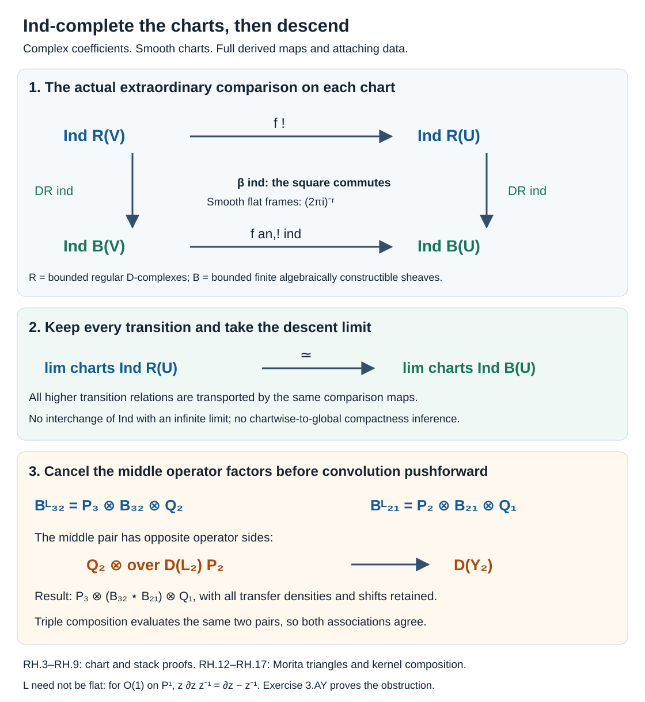
Figure 3.17. The upper panels are diagrams of categories and actual inverse-image comparisons, (RH.1)–(RH.9), rather than an embedding of every analytic sheaf into a D-module category. The lower panel shows two operator kernels with their intermediate Morita factors retained, followed by their evaluation in (RH.17). All arrows carry the maps proved above; the displayed \((2\pi i)^{-r}\) is the coefficient only in the smooth flat frames of (RH.6). This is a schematic of descent and operator composition, with no numerical sample. The earlier proof source is The Riemann–Hilbert correspondence, §1.
3.58. Higher attaching maps, trace constants, and a nonflat twisting line
Exercise 3.AW. On \(\mathbf P^1_\mathbf C\), calculate the derived endomorphisms of the constant sheaf and their algebraic D-module counterpart. Explain why deriving finite-dimensional vector spaces and then forming constant sheaves loses a higher attaching map. Keep the residue/period normalization.
Solution 3.AW. The finite Spencer calculation in §3.51 and the explicit two-chart calculation of §3.50 compute the unshifted algebraic de Rham cohomology:
\[ \operatorname{RHom}_{\mathcal D_{\mathbf P^1}}(\mathcal O,\mathcal O) \simeq \mathbf C\oplus\mathbf C[-2]. \tag{RH.18} \]
For clarity, that Čech calculation has \(U_0=\mathbf A^1_z\), \(U_\infty=\mathbf A^1_w\), \(w=z^{-1}\). Polynomial de Rham forms on each affine chart have only the constant degree-zero class: integrate each nonconstant monomial by dividing by its nonzero positive integer exponent. On their intersection, Laurent forms have that constant and the single extra class \(dz/z\), because all monomials other than \(z^{-1}dz\) integrate to Laurent monomials. In the two-chart Mayer–Vietoris complex the difference map on constants \(\mathbf C^2\to\mathbf C\) is surjective with diagonal kernel. The extra intersection degree-one class moves to total degree two. There is no degree-one class and no other degree. Over a field the cohomology splitting yields the displayed complex equivalence. The generator is this Čech/form class, not a global holomorphic one-form.
The fully faithful actual comparison (RH.2) and the common shift \([1]\) identify (RH.18) with \(\operatorname{RHom}(\mathbf C_{\mathbf P^1},\mathbf C_{\mathbf P^1})\). Thus there is a nonzero \(\alpha:\mathbf C_{\mathbf P^1}\to\mathbf C_{\mathbf P^1}[2]\). Let \(K=\operatorname{Cone}(\alpha)\). Its ordinary cohomology is constant of rank one in degrees \(-2,-1\) and zero otherwise. Its canonical truncation triangle has connecting map \(\alpha[1]\), up to the triangle rotation sign, so it does not split. In contrast every bounded complex of finite-dimensional vector spaces splits into its cohomology, since kernels and images have linear complements, and it has no degree-two endomorphism of \(\mathbf C\). Applying the constant-sheaf functor to such a complex produces a split constant complex. It cannot produce this \(K\). This demonstrates the lost higher map without assuming that a heart equivalence derives to an equivalence.
The algebraic residue trace of the generator \([dz/z]\) is \(1\). Its actual analytic comparison has positive complex-oriented integral \(2\pi i\). Therefore the proper extraordinary comparison for \(\mathbf P^1\to\mathrm{pt}\) multiplies by \((2\pi i)^{-1}\), exactly as in (RH.6); rescaling an unnamed generator would hide this check.
Exercise 3.AX. Prove, for all nonnegative integers \(s,r,c\), the two sign cancellations used to obtain the smooth and closed coefficients in (RH.6). Check smooth relative dimension two and closed codimension two without replacing the ordinary inverse comparison or the raw closed counit by a positive identity.
Solution 3.AX. Use the actual positive untwisted frames of the RH lesson and put
\[ \sigma_n=(-1)^{n(n+1)/2},\qquad \varepsilon_n=(-1)^{n(n-1)/2}. \tag{RH.19} \]
In those frames the connection evaluation has coefficient \(\sigma_n q\), and shifting the connection by \(k\) contributes \((-1)^{nk}\). The ordinary smooth inverse comparison has coefficient \(\varepsilon_r\); the ordinary closed inverse comparison has coefficient \(\sigma_c\). Substitution into its actual dual-defined extraordinary comparison gives
\[ \frac{\sigma_{s+r}(-1)^{(s+r)r}}{\varepsilon_r\sigma_s}=1, \qquad \frac{\sigma_s(-1)^{sc}}{\sigma_c\sigma_{s+c}}=1. \tag{RH.20} \]
The exponent of the first quotient is \(2sr+r(r+1)\); the exponent of the second is \(-c(c+1)\). Both are even for every integer involved. Thus these are general identities, not an inference from a table of low dimensions. What remains is the ratio of the \(q\)'s, namely \((2\pi i)^{-r}\) and \((2\pi i)^c\).
For \(r=2\) and \(s=0\), \(\sigma_2=\varepsilon_2=-1\), and the shift factor is \((-1)^4=1\), so the first quotient is \(1\), leaving \((2\pi i)^{-2}\). For \(c=2\) and \(s=0\), the denominator of the second quotient is \((-1)(-1)=1\). The raw ordered closed counit in the untwisted top Hom frame still has coefficient \(\varepsilon_2=-1\), as computed in (KG.15) and (KG.16). Its raw normal evaluation has the same sign times the normal period; their comparison cancels those signs. None of those individual maps has been replaced by an identity.
Composition preserves the period constants because dimension differences add. The ordinary frame signs instead satisfy \(\varepsilon_{r+t}=(-1)^{rt}\varepsilon_r\varepsilon_t\): the exponent difference is \(rt\). This is exactly the determinant/tensor frame interchange in a composed ordinary inverse. Dropping that interchange would make the two-dimensional check fail even though the object shifts looked correct.
Exercise 3.AY. For \(L=\mathcal O_{\mathbf P^1}(1)\), use frames \(e_0=X_0\), \(e_\infty=X_1=z e_0\) on the standard charts. Write the operator transition, prove that \(L\) has no algebraic flat connection, and nevertheless perform one middle-line cancellation for a kernel.
Solution 3.AY. On the overlap \(z\ne0\), express both operators using the derivation \(\partial_z\) (on the other chart it is \(-w^2\partial_w\)). Formula (RH.13) gives
\[ z\,\partial_z\,z^{-1}=\partial_z-z^{-1}. \tag{RH.21} \]
If a connection existed, write its connection forms as \(a_0(z)\,dz\) and \(a_\infty(w)\,dw\), with \(a_0,a_\infty\) polynomials, since the respective frames are regular on their whole affine charts. The frame relation forces
\[ a_\infty(z^{-1})(-z^{-2}dz) =a_0(z)\,dz+\frac{dz}{z}. \tag{RH.22} \]
The left side has only Laurent exponents at most \(-2\); the first right term has only exponents at least zero. The \(z^{-1}\) coefficient on the right is \(1\), a contradiction. Thus even an algebraic connection on \(L\) is impossible; flatness cannot repair this obstruction.
Nonetheless \(L\) is the tautological \(\mathcal D_L\)-module and \(\mathcal T_L(L)=\mathcal O\) with its ordinary connection. Locally the tensor in (RH.12) sends \(1\otimes e^{-1}\otimes e\) to \(1\). On an overlap the two factors multiply by \(z^{-1}\) and \(z\); the product is one, and the two logarithmic derivative terms cancel. This is an operator-bimodule evaluation, not a flat trivialization of \(L\).
For a middle occurrence of this line in two kernels, the local expression for (RH.17) is the same evaluation \(Q_L\otimes_{\mathcal D_L}P_L\to\mathcal D\). It is invariant under the just-checked transition. If three kernels are composed, the two middle evaluations contract independent inverse pairs, so both parenthesizations give the same operator multiplication. The example verifies both the gluing obstruction to a guessed connection and the valid Morita cancellation that the half twist requires.
3.59. A coefficient functor into the full spherical category
For §§3.59–3.62 the ground and coefficient field is \(\mathbf C\). Fix a connected reductive complex group \(G\), its torus and Borel, and the cycle pinning in Identifying the dual group, §8.6. The particular ordinary Satake equivalence used here is
\[ s:\operatorname{Rep}^{\mathrm{fd}}_{\mathbf C}(\widehat G) \xrightarrow{\sim}\operatorname{Sat}_G(\mathbf C), \qquad s(V_\lambda)=IC_\lambda . \tag{SH.1} \]
This is the actual symmetric tensor equivalence of that lesson's Theorem 8.3, with the component-adjusted fusion symmetry. It is not a derived equivalence. Its matching complete proofs are Convolution and rigidity, §§1–9, Fusion and the commutativity constraint, §§1–7, Tannakian categories, §§1–8 and Theorem 10.1, and The fibre functor and the Tannakian group, §§1–9. They construct the finite correspondence, normalized torsor coefficient, proper image, actual evaluation maps, both triangles, moving-point exchange, weight tensor maps, and the reconstructed group on every test algebra. Identifying the dual group, §§7–8, then identifies the integral root datum and removes every finite-stage unipotent kernel by the proved IC self-extension vanishing. These are the earlier proofs supplying (SH.1).
Write \(\mathcal S_{\rm amb}\) for the ambient spherical DG category, retaining all derived equivariance and mapping complexes, rather than deriving its perverse heart. On finite Schubert supports, its classical model uses the full finite-jet equivariant derived category. The actual free-frame quotients, acyclicity estimates and comparisons are proved in Equivariant perverse sheaves and perverse sheaves on stacks, Appendix B, Theorem B.9; its first action isomorphism and cocycle alone describe only the heart. The DG Hom models and the extra equivariant unit morphisms are specified in Derived Satake, §§1–2. In particular the ambient t-structure gives
\[ H^n\operatorname{RHom}_{\mathcal S_{\rm amb}}(A,B)=0 \quad(n<0,\ A,B\in\operatorname{Sat}_G). \tag{SH.2} \]
There is no vanishing assertion for positive degrees.
Lemma. Let \(\mathcal A\) be a small semisimple abelian \(\mathbf C\)-linear category and \(j:\mathcal A\to\mathcal C^\heartsuit\) a \(\mathbf C\)-linear additive functor into the heart of a stable DG category. It extends to an exact DG functor \(D^b_{\rm dg}(\mathcal A)\to\mathcal C\). A supplied monoidal heart functor extends monoidally when the target product is exact in both variables. A specified symmetric coefficient constraint and its relations also extend; a symmetry on the whole target is not required.
Proof. Let \(\mathcal H\) be the full ordinary heart subcategory on the objects \(jA\). In the full DG model on those objects replace a mapping complex \(K\) by its good nonpositive truncation: retain \(K^n\) for \(n<0\), use \(\ker(d:K^0\to K^1)\) for degree zero, and use zero for positive degrees. Composition restricts, by its graded Leibniz identity. Projection to degree-zero cohomology gives a DG functor
\[ q:\mathcal H_-\longrightarrow\mathcal H,\qquad \operatorname{RHom}_{\mathcal H_-}(jA,jB) =\tau_{\le0}\operatorname{RHom}_{\mathcal C}(jA,jB). \tag{SH.3} \]
It is a quasi-isomorphism on every mapping complex, since the negative cohomology vanishes by heart orthogonality. It is onto the indicated objects. Compose the given ordinary \(j:\mathcal A\to\mathcal H\) with an enhanced inverse of \(q\), and then with the actual inclusion \(\mathcal H_-\to\mathcal C\).
Here an enhanced inverse retains its units, counits and coherent composition. One construction uses the graph bimodule of \(q\) and representable modules. Restriction and tensor extension along that bimodule have evaluation maps which are quasi-isomorphisms on representables by (SH.3). In their augmented composition bar, insertion of the identity contracts the augmentation. Its evaluations therefore give the two inverse comparisons on representables and on their finite sums, cones and retracts. This constructs the needed inverse with its data, not an inverse selected only on the triangulated homotopy category.
The tensor maps restrict to \(\mathcal H_-\), because products of nonpositive degrees are nonpositive and products of degree-zero cycles are cycles. The supplied associators and unitors restrict with their homotopies. The chosen coefficient exchange can be lifted along \(q\) with its relations: a difference of degree-zero composites representing the same heart map is a boundary and has a degree-minus-one homotopy; the next obstruction lies in degree-minus-one cohomology, and successive obstructions in successively lower cohomology. They all vanish. The same calculation applies in every tensor arity, since each coefficient product remains in the indicated heart. Each component of the mapping space with specified degree-zero class is contractible. Thus the naturality, associativity, unit, double-exchange and hexagon diagrams and their higher compatibilities lift coherently. Their images are the specified coefficient maps in the target, without a target-wide symmetry assertion.
Extend this enhanced functor to finite twisted complexes. It retains the differential arrows and their homotopies; representatives of a heart differential are not incorrectly assumed to compose to zero as chain maps. Explicitly a relation which is zero in \(H^0\) has its degree-minus-one homotopy, and (SH.2) kills each subsequent obstruction. Functoriality of the DG construction retains this data for maps between complexes as well.
Semisimplicity identifies these finite twisted complexes with the bounded derived category. For a bounded coefficient complex choose splittings
\[ Z^i=B^i\oplus H^i,\qquad A^i=Z^i\oplus W^i,\qquad d:W^i\xrightarrow{\sim}B^{i+1}. \tag{SH.4} \]
It is the sum of its zero-differential cohomology terms and these two-term isomorphism complexes. The latter contract by the inverse of \(d\). Every bounded acyclic complex is consequently contractible, and every quasi-isomorphism is a homotopy equivalence by the same calculation on its cone. Localization adds no mapping information to this finite pretriangulated model. Its idempotents split in the finite cohomology description. The target functor therefore descends to the stated bounded derived category.
On coefficient complexes the tensor differential and exchange are
\[ d(x\otimes y)=dx\otimes y+(-1)^{|x|}x\otimes dy, \qquad c(x\otimes y)=(-1)^{|x||y|}c_{\mathcal A}(x\otimes y). \tag{SH.5} \]
Expanding \(d^2\) cancels the mixed terms. Associativity uses the same ordered triple degrees; the chain symmetry and hexagons use the identities \(p(q+r)=pq+pr\) and \((p+q)r=pr+qr\) modulo two. Exactness in each target variable extends the supplied heart tensor maps over the finite cones. This proves the lemma and every indicated coefficient relation. ∎
Apply the lemma to (SH.1) and the actual convolution product. Convolution on the ambient derived category is the proper endpoint image of the torsor-descended external product. On a finite frame model all arrows are pullback, external tensor, descent and proper direct image. They are exact DG functors. Three- and four-step correspondences identify the actual associator and its pentagon, as in the earlier convolution proof; the same resolution maps retain the derived morphisms. The lemma therefore constructs
\[ S_{\rm fin}:D^b_{\rm dg} \bigl(\operatorname{Rep}^{\mathrm{fd}}_{\mathbf C}(\widehat G)\bigr) \longrightarrow\mathcal S_{\rm amb}. \tag{SH.6} \]
Its products, duality maps and coefficient exchanges are the actual chosen Satake maps. Use the ordinary presentable spherical category, with its full derived equivariant descent, as the target of this finite functor. It admits colimits; this does not define it to be the ind-category of its IC objects. The finite functor extends continuously:
\[ S:\operatorname{Ind}D^b_{\rm dg} \bigl(\operatorname{Rep}^{\mathrm{fd}}_{\mathbf C}(\widehat G)\bigr) \longrightarrow\mathcal S_{\rm amb}, \qquad S(\mathop{\rm colim}_i V_i)= \mathop{\rm colim}_i S_{\rm fin}(V_i). \tag{SH.7} \]
The representable bar just used gives this extension independently of the presentation. On finite coefficients the tensor comparisons are already constructed; separate continuity extends them through the common double colimit. This does not say that the ICs become compact after equivariance, nor identify ordinary and renormalized spherical categories. All higher ambient morphisms remain present.
3.60. Actual regular D-module coefficients and fusion shifts
The coefficients in (SH.6) have a genuine regular D-module realization. For a singular finite support \(Z\), embed an affine open in a smooth ambient \(W\) and use regular holonomic D-modules supported on \(Z\). The actual RH equivalence on \(W\) restricts to sheaves supported on \(Z\): restrictions to the complementary open commute with RH, and each vanishes exactly when the other does. Thus all mapping complexes and attaching maps are retained. Smooth ambient comparisons are the projection/graph equivalences of Kashiwara's equivalence and singular spaces, Theorem 5.1 and §5. Their local proof applies Kashiwara to a smooth graph containing \(Z\), never to \(Z\) as a smooth scheme. Direct-image composition gives the comparisons for three or four ambients; the actual RH comparisons preserve them. On affine overlaps they glue with those units and counits. This is the supported regular theory, rather than the operator ring of a singular coordinate algebra.
The same construction on the finite-jet action nerve retains the full derived equivariance. On each of its finite chart/ambient models use the complete general RH equivalence and all its actual four-map comparisons, proved in the RH lesson's §1. Their composition data compare the entire nerve. Take the coherent limit as in (RH.7)–(RH.9), then ind-extend the finite coefficients when required. No equivalence of hearts is being used to reconstruct that ambient limit. Denote the resulting actual coefficient by \(S_D(V)\).
For a smooth map \(f\) of relative dimension \(e\), the perverse-normalized sheaf pullback \(f^*[e]\) is its extraordinary pullback \(f^![-e]\). Accordingly the operator normalization is
\[ f^![-e]\quad\longleftrightarrow\quad f^{\mathrm{an},*}[e]. \tag{SH.8} \]
In a finite convolution frame both maps have relative dimension \(e_n=n\dim G\). Apply (SH.8) to the two sides of the torsor descent formula (2.1) in the convolution lesson. The two \([-e_n]\) shifts cancel; the actual smooth RH comparison has the same \((2\pi i)^{-e_n}\) on both sides in the specified flat frames, so that coefficient cancels as well. The descended D-module is therefore the actual twisted external coefficient with no unexplained jet shift. Proper image compares by the RH trace map, including its residue normalization. This proves that the operator convolution and its actual associators on these coefficients realize (SH.6), not merely that the two products have equal dimensions.
For an ordered tuple of coefficient heart objects \(P_1,\ldots,P_r\), the fusion lesson constructs a proper moving chain and its actual endpoint coefficient
\[ \mathcal F_r(P_1,\ldots,P_r) =Rm_{r*}(\mathcal A_r[r]) =j_{r!*}\bigl((P_1\boxtimes\cdots\boxtimes P_r) \boxtimes\mathbf C_{U_r}[r]\bigr). \tag{SH.9} \]
This is valid on every smooth complex curve after its proved full-coordinate descent. The family is universally locally acyclic over the ordered-point base. The proof uses the proper stratified-product construction, retains all attaching maps, and moves the actual proper image through the punctured-disc cover and special restriction. It does not assume a general nearby-cycle t-exactness theorem.
Let a partial diagonal have \(b\) distinct blocks, let \(c=r-b\), and convolve the labels within each block in their specified order. The actual collapse of intermediate bundles and proper composition give
\[ i^*\mathcal F_r[-c]\simeq \mathcal F_b(P_{\mathrm{block}\,1},\ldots, P_{\mathrm{block}\,b}). \tag{SH.10} \]
The shifts can also be read directly: the total source normalization is \([r]\), while the \(b\)-point family has \([b]\). Universal local acyclicity gives \(i^!\mathcal F_r=i^*\mathcal F_r[-2c]\), with the complex orientation of the normal parameter directions. Hence the actual D-module comparison is
\[ i^!\mathcal F_{r,D}[c]\simeq \mathcal F_{b,D}(S_D(V_{\mathrm{block}\,1}),\ldots). \tag{SH.11} \]
At a fixed \(r\)-tuple the normalization is \(i_{\vec x}^!\mathcal F_{r,D}[r]\). For the full diagonal followed by a point restriction, (SH.11) composes to precisely that normalization, since \((r-1)+1=r\). These are the actual inverse-transfer maps, with the RH comparison constants of §3.55 retained, not raw flat-frame identities.
On the distinct-point locus the coefficient permutation is the external-product exchange and the identity on the one base factor \(\mathbf C_{U_r}[r]\). It does not exchange \(r\) separately shifted base factors. On homogeneous components use
\[ e(\lambda)=\langle2\rho,\lambda\rangle\bmod2,\qquad c'_{P,Q}=(-1)^{e(P)e(Q)}c_{P,Q}. \tag{SH.12} \]
The fusion lesson proves that \(e\) is a component homomorphism and that ordinary cohomology on each component has that parity. Thus \(c'\) is the constraint in (SH.1). Its scalar is extended to the whole fusion family before restriction. Products of these scalars give the permutation maps in every arity. Their two hexagons and double exchange follow from bilinearity of \(ef\); their associators are the actual partial-collapse comparisons (SH.10). Adding coefficient cochain shifts uses the further Koszul factor in (SH.5).
The finite coefficient functors in every arity are complex-linear and additive on the semisimple tuple category. Their values in (SH.9) are perverse. Apply the proof of the lemma to their ordinary functors into the full perverse heart on the moving target; full faithfulness of those tuple functors is not required. The natural comparison maps (SH.10), after their indicated shifts, are maps between perverse values. Their negative Hom cohomology vanishes, so the same nonpositive truncation constructs their entire coherent DG relations. Finite twisted complexes and then colimits extend them. Consequently these fusion coefficients, all collision comparisons, exchanges and unit maps are constructed for the DG coefficient category of (SH.7). Their ambient higher morphisms have not been discarded.
3.61. The resulting complex coefficient Hecke functors
Let \(X\) be a smooth projective complex curve and \(Y=\operatorname{Bun}_G(X)\), with every genus and every component retained. Let \(\mathcal H_{X^r}\) be the endpoint Hecke stack: a source bundle, a target bundle, ordered marked sections, and an identification away from their graphs. For bounded coefficient supports the finite moving construction above bounds this correspondence, while the intermediate bundles belong to its proper chain resolution. Write
\[ h_{\rm in}:\mathcal H_{X^r}\longrightarrow Y,\qquad h_{\rm out}:\mathcal H_{X^r}\longrightarrow Y\times X^r . \tag{SH.13} \]
The bounded \(h_{\rm out}\) is projective. To check it over a smooth bundle chart, reverse the endpoint description and trivialize the target bundle on a sufficiently deep finite divisor. The source modifications have the inverse bounded types. The finite endpoint is the closed stable-lattice locus in the Plücker Grassmannian construction of the fusion lesson. A common finite bound and a product of its Plücker line bundles give an equivariant relatively ample line. Its finite-jet linearization descends through the target divisor-frame torsor; relative projectivity is therefore preserved on the bundle chart. The bounded chain is an iterated associated projective support and maps properly to this endpoint. Its maps preserve the fixed off-divisor identification. The construction and closed equations are retained after every parameter base change. This uses the full scheme constructions, including nilpotent parameter rings, rather than only the classification of geometric loop cosets.
We need the full unbounded correspondence calculus, including singular finite supports. Here is the extension that is used below.
Projective correspondence lemma. Let \(B\) be smooth, separated and of finite type. Let \(f:Z\to B\) be projective, with \(Z\) allowed to be singular. Define the full D-module category of \(Z\) by supported modules in a smooth ambient, with the projection/graph comparisons of Theorem 5.1 cited in §3.60. Direct image \(f_*\) preserves colimits. For a smooth finite-type \(B'\) and any map \(g:B'\to B\), its actual base-change comparison is
\[ g^!f_*Q\simeq f'_*g_Z^!Q,\qquad Z'=Z\times_BB', \tag{SH.14} \]
for every unbounded \(Q\). The projection formula with \(\otimes^!\) holds for unbounded inputs. These maps retain composition, localization, and ordered transfer evaluation; no smoothness of \(Z'\) is inferred.
Proof. The bounded smooth-variety proofs, including the maps themselves, are Adjunctions, base change and the projection formula, §§1–3, Theorems 2.1 and 3.1. We give the additional steps.
First work with a map of smooth finite-type schemes. Factor it into its closed graph followed by a product projection. Closed graph direct image is tensor with the backward transfer, flat on its right operator side. The projection uses its finite relative Spencer complex. Over an affine target, a finite affine intersection cover computes every quasi-coherent coefficient column before totalizing the finite Spencer and Čech directions. Each column operation preserves colimits. The differential may be a differential operator; it is retained between these computed columns, rather than treated as a structure-sheaf-linear map. This defines the full unbounded direct image, proves continuity, and gives a cohomological amplitude bound independent of the input.
Inverse transfer is computed by a finite structure Koszul resolution on the closed graph and flat pullback on the projection, with the chain-rule operator action and dimension shift. It too is continuous with an input-independent finite amplitude. The bounded comparison maps consequently extend to all inputs without interchanging an infinite product and a sum: in any selected output degree, choose an input window larger than the two amplitude bounds. The truncation triangles identify that output cohomology with the cohomology computed from the bounded window. The bounded comparison is an isomorphism there. The same argument in every degree proves the unbounded comparison.
The closed part of base change uses the localization triangle. Its local complement computation is a finite Čech complex of principal localizations. The normal Koszul complex on a term where a normal coordinate is invertible contracts by that coordinate's inverse. On a supported cohomology module the Kashiwara inverse is exact; the finite normal complex and the preceding window argument give the same assertion for an unbounded supported complex. Thus the actual map is still the localization augmentation followed by the signed normal counit of equations (1.5a)–(1.5g) of the cited lesson. Product base change uses the same external tensor and finite Spencer–Čech permutation maps. Their compositions are precisely the bounded maps in every output degree, so they retain all multiple-square coherences.
For the projection formula, retain the graph against the diagonal as in equations (3.4)–(3.5) of that lesson. Resolve both unbounded inputs by semifree operator complexes; their underlying structure modules are flat on smooth affine charts. Derived exterior tensor and diagonal inverse transfer therefore give the actual derived tensor product, with its total differential and Koszul signs. The base-change map just established and the external Spencer–Čech comparison give the same graph computation on these complexes. All sums and realizations in either input are preserved by these operations. This proves the formula with two unbounded inputs, including the shift \([-d_B]\); the unit remains \(\omega_B=\mathcal O_B[d_B]\).
Now embed \(Z\) over \(B\) in \(E=B\times\mathbf P^N\). Regard \(Q\) as its actual supported object \(\widetilde Q\) on the smooth \(E\), and define \(f_*Q=\pi_*\widetilde Q\). The supported ambient comparisons also apply unboundedly: locally lift the coordinate functions of a second ambient to the first one and use the smooth graph containing \(Z\), as in Theorem 5.1. On supported cohomology modules its normal Kashiwara inverse is exact; finite normal transfer and the window argument above retain its derived unit and counit on an arbitrary complex. Common product ambients then give the same triple and fourfold comparisons.
The other ambient is \(E'=B'\times\mathbf P^N\), which is smooth. Apply the already proved smooth-square comparison to the projective projection \(\pi\) and \(g\). The inverse transfer of \(\widetilde Q\) is supported on the possibly singular \(Z'\): outside \(Z'\) it is inverse transfer of zero, as its open restrictions show. By the supported ambient definition it represents \(g_Z^!Q\). This proves (SH.14), with no smooth transfer formula on \(Z'\). The common ambient comparisons identify different projective embeddings and their maps. The same graph–diagonal calculation on supported objects proves the projection formula there.
Finally, for a representable projective correspondence over a stack, apply this construction on every smooth finite-type affine target chart. Formula (SH.14) supplies its transitions. On chart refinements and their higher nerves they are the same composed transfer tensors, localization maps and evaluations. They therefore define a coherent descent object. Colimits are computed chartwise; conservative chart restrictions prove continuity of the descended functor. No interchange of the entire infinite chart limit with an ind-category has been used. This proves the lemma. ∎
We describe the coefficient kernel on the actual common frame diagram. Let \(u:U\to Y\) be a smooth affine source bundle chart, and write \(\mathcal H_U\) for its base change. The finite divisor-frame torsor over \(U\times X^r\), pulled to the bounded moving Grassmannian, gives two smooth maps
\[ U\times\operatorname{Gr}^{\rm bd}_{G,X^r} \xleftarrow{\ p\ } A_U \xrightarrow{\ q\ }\mathcal H_U . \]
For the order-\(n\) thickening of the degree-\(r\) marked divisor, both have relative dimension \(e_{n,r}=nr\dim G\). In a local curve coordinate its defining monic polynomial has degree \(nr\), so its quotient is finite free of rank \(nr\) over every parameter ring, including repeated sections and nilpotents. Smoothness of \(G\) makes the corresponding divisor-frame group smooth of that dimension by its infinitesimal lifting criterion. Choose the same sufficient jet level for the two maps. The map \(p\) forgets the divisor frame; \(q\) uses it to identify the modification with one of the input bundle. Define \(K_{\vec V}\) by the torsor descent
\[ q^!K_{\vec V,U} \simeq p^!\bigl(\omega_U\boxtimes\mathcal F_{r,D} (S_D(V_1),\ldots,S_D(V_r))\bigr). \tag{SH.15} \]
Here \(\omega_U=\mathcal O_U[d_U]\) is the D-module dualizing object, the unit for \(\otimes^!\). Equivalently, apply \([-e_{n,r}]\) on both sides to obtain the normalized torsor formula of (SH.8). The formula includes the source-chart factor; a bare vertical IC is not its replacement. It does not assume that a divisor-frame torsor varying with the marked points is globally a product over \(U\).
These expressions descend to an actual kernel. The spherical coefficient action gives the descent datum along the actual \(q\)-torsor nerve. A change of curve parameter uses the normalized full-coordinate structure constructed in fusion §6. Both have their specified cocycles, commute with each other in the semidirect coordinate action, and preserve the proper moving-chain maps. A smooth change of bundle chart pulls \(\omega_U\) to its dualizing object and pulls the common frame diagram to the corresponding one. On a common chart refinement the formulas are consequently the same pulled external coefficient and evaluation maps. Their transitions include every nerve relation, as in (RH.9). They glue (SH.15), preserving both finite-support enlargements and deeper jet levels.
Define the coefficient Hecke functor on the full unbounded D-module category by
\[ \mathsf H^r_{\vec V}(M) =(h_{\rm out})_{\mathrm{dR},*} \bigl(h_{\rm in}^!M\otimes^!K_{\vec V}\bigr). \tag{SH.16} \]
All input degrees are retained. Put \(M_U=u^!M\), with the actual bundle-chart inverse transfer. On the common frame diagram the product formula is
\[ q^!\bigl(h_{\rm in,U}^!M_U\otimes^!K_{\vec V,U}\bigr) \simeq p^!(M_U\boxtimes\mathcal F_{r,D}). \tag{SH.17} \]
Indeed the two maps from \(A_U\) to \(U\) are equal. Thus \(q^!h_{\rm in,U}^!M_U=p^!\operatorname{pr}_U^!M_U\). Actual \(!\)-inverse transfer preserves \(!\)-tensor, by the same diagonal/graph comparison proved in the lemma. Apply it to (SH.15). In the product model, \(\operatorname{pr}_U^!M_U\) is external tensor with the dualizing object of the other factor. That object is the unit for \(!\)-tensor there, while \(\omega_U\) is the unit on the first factor. Their evaluation leaves \(M_U\boxtimes\mathcal F_{r,D}\), proving (SH.17). The normalized functor \(q^![-e_{n,r}]\) by itself is not asserted to be monoidal. In the full operator complexes these are the same transfer tensor, finite Spencer differential and evaluation identities as in §§1.10–1.12 and §§3.48–3.51; the calculation puts no bound on \(M\). It is not an RH comparison for a nonregular \(M\).
For a bounded coefficient support, the projective correspondence lemma proves continuity in \(M\), with actual inverse transfer, base change and projection formula on singular supports. For an arbitrary coefficient, (SH.16) means the colimit of these bounded-support functors along its finite-coefficient presentation, as in (SH.7). This definition retains every arrow in that presentation; it does not assert continuity of a star direct image on an unbounded ind-proper correspondence. Continuity in \(M\) and the coefficient follows from the common double colimit. On chart overlaps, the lemma's actual base-change and transfer composition maps give the transitions of (SH.17). An infinite chart family is kept as the descent family; no uniform bound on its components or compactness of \(M\) is inferred.
The unit normalization is especially useful. For \(r\) trivial labels the moving chain is the marked-point base, its endpoint is the identity-bundle section, and its coefficient is \(\mathcal O_{X^r}\). Consequently
\[ \mathsf H^r_{\mathbf1,\ldots,\mathbf1}(M) =M\boxtimes\mathcal O_{X^r} =p_Y^!M[-r]. \tag{SH.18} \]
There is no extra product of jet shifts. At a fixed marked tuple use the inverse-transfer normalization of (SH.11), giving the identity functor for these unit labels.
We prove the composition and fusion relations for (SH.16). Composing two bounded modifications retains the intermediate bundle. On a common finite frame chart, the two coefficient factors and their proper chain image are exactly the twisted external product and convolution coefficient of §3.60. The source pullbacks of \(M\) are the same in both routes. Projection formula and proper composition identify the iterated (SH.16) with its single proper chain image. Collapsing the intermediate bundle gives the actual tensor map \(S_D(V)\star S_D(W)\simeq S_D(V\otimes W)\). Three modifications give the actual associator, and four modifications give its pentagon, since both routes are composition on the same four-step correspondence with the same operator transfer tensors. The identity correspondence gives both unit triangles.
For distinct marked points, formal divisor gluing identifies independent modifications and their coefficients. Along a partial diagonal the same collapse on each collision block gives (SH.11), with shift \(r-b\). Proper base change identifies this normalized inverse transfer of (SH.16) with the \(b\)-point action whose block labels are tensor products. These are finite correspondence identities on the entire operator coefficient complexes; (SH.17) keeps an arbitrary unbounded \(M\) as the unchanged first factor. The three- and four-step correspondences show that repeated collisions give the same maps in every grouping. Permutations use the chosen family exchange (SH.12), with its one base factor and the additional coefficient cochain signs. This constructs the complex classical-coefficient fusion Hecke action and all these relations on the full unbounded \(D\)-module category.
Finally use the actual normalized global root \(L=\mathcal L_{\kappa,i}\) already proved in §§2.2–2.8. Let \(\mathcal T_{Y\times X^r}\) untwist the pullback of that line from \(Y\), and let \(\mathcal T_Y\) be its source version. Define
\[ \mathsf H^{r,L}_{\vec V} =\mathcal T_{Y\times X^r}^{-1} \mathsf H^r_{\vec V}\mathcal T_Y. \tag{SH.19} \]
This is an actual transported half-twist action. In a composable correspondence the two middle lines come from the same intermediate bundle. Their operator factors cancel by (RH.17) before pushforward. Its Morita triangles and every multiple cancellation preserve the unit, composition, partial-diagonal and permutation relations just proved. All genus and component dependence lies in the actual global line already constructed, so no new simply connected hypothesis is introduced.
The construction has precise remaining boundaries. It does not prove derived tempered Satake, identify its coefficient functor with a separately normalized factorization equivalence, or extend the complex RH argument to an arbitrary characteristic-zero ground field. It also does not yet construct the full \(D\)-module-valued unital Ran coefficient category and the spectral coefficient functor used for the regular Hecke algebra. The actual classical coefficient functors and finite-tuple fusion relations above are inputs to that further construction. No assertion about the projector's nilpotent image, nilpotent regularity, or the independent microlocal support comparison follows merely from their existence.
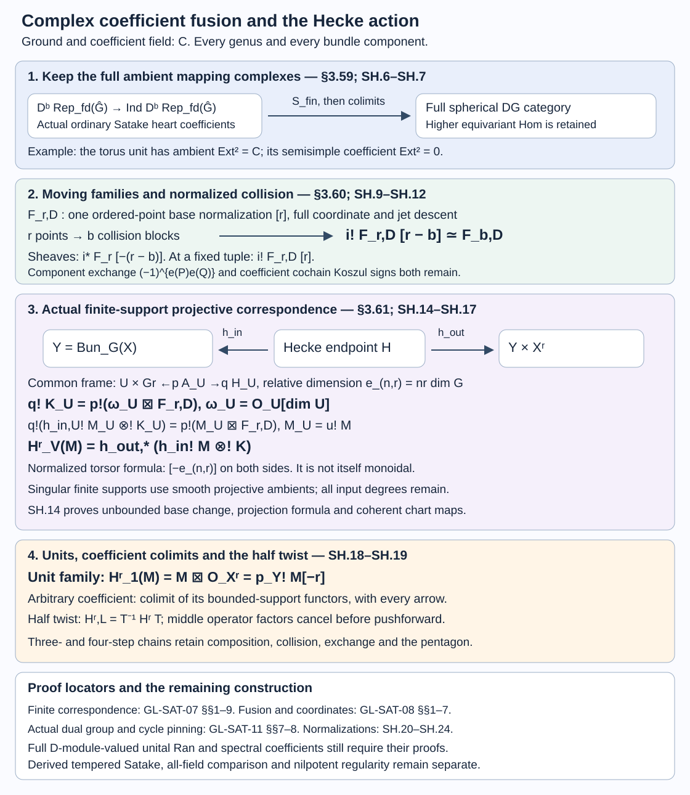
Figure 3.18. The coefficient functor retains the full ambient spherical mapping complexes (SH.6)–(SH.7). Collision uses the exact inverse-transfer shift (SH.11). The common divisor-frame diagram defines the kernel with its source dualizing factor (SH.15), and evaluates it on every unbounded input by (SH.17). The projective correspondence lemma (SH.14) supplies its actual base-change and projection maps on singular supports. Units and transported half twists are (SH.18)–(SH.19). The diagram is a schematic of these proved maps; it does not identify ordinary and renormalized spherical categories or construct the further spectral Ran functor. The matching complete programme proofs are linked in §§3.59–3.61. For the classical geometric construction, see I. Mirković and K. Vilonen, Geometric Langlands duality and representations of algebraic groups over commutative rings, free corrected preprint v5. The proofs above and those earlier programme proofs establish the results used here.
3.62. Three normalization checks
Exercise 3.AZ. Give a spherical example in which (SH.6) fails to be fully faithful on higher shifts although its heart functor is an equivalence.
Solution 3.AZ. Take \(G=\mathbf G_m\) and its unit at the zero coweight. The coefficient heart is finite supported integer-graded vector spaces. Choose complements to boundaries inside cycles and to cycles inside each term; (SH.4) makes every bounded coefficient complex the sum of its cohomology terms and contractible complexes. Thus
\[ \operatorname{Hom}_{D^b\operatorname{Rep}(\widehat{\mathbf G}_m)} (\mathbf1,\mathbf1[2])=0 . \tag{SH.20} \]
The full ambient spherical category instead has the classifying-space unit. Derived Satake, §§2–3.1, proves its actual endomorphism algebra by the closed-unit embedding and compatible frame/bar models. Substitution \(g(t)\mapsto g(st)\) contracts the jet kernel compatibly with every nerve face and degeneracy; constant loops give its section. The unit algebra is therefore \(R\Gamma(B\mathbf G_m,\mathbf C)\). The circle universal bundle and its finite projective models give
\[ H^*(B\mathbf G_m,\mathbf C)=\mathbf C[c],\qquad |c|=2 . \tag{SH.21} \]
Its generator is normalized by \(c=-c_1(\gamma)\), evaluating to one on the complex-oriented projective line. The finite projective cell filtration has one cell in each even degree; its Gysin sequence multiplies consecutive even groups by this class, so the powers give precisely this polynomial ring and no odd groups. Thus the ambient degree-two unit morphism is nonzero, whereas (SH.20) is zero. The actual coefficient functor does not become a full derived equivalence by ind-extension. This example retains equivariance: the extra class vanishes after forgetting to the point, which is why computing only the underlying point Hom would miss it.
Exercise 3.BA. For \(G=GL_2\) and the standard minuscule coefficient \(P=IC_{(1,0)}\), compute the exchange on both convolution summands and then on the two coefficient shifts \(P[1],P[1]\).
Solution 3.BA. The actual two-step surface is the \(\mathbf F_2\) cone resolution. Its exceptional section has normal line \(\mathcal O(-2)\). The two maps from and to its central point have composite \(-2\); dividing the second by \(-2\) gives a retraction. The remaining strict-boundary summand is the largest IC. This is the explicit proof in convolution §10:
\[ P\star P=IC_{(2,0)}\oplus IC_{(1,1)}. \tag{SH.22} \]
Its cohomology basis has \(v_-\) in degree \(-1\) and \(v_+\) in degree \(1\). Raw geometric exchange is \(-\mathrm{flip}\). On the largest IC it has scalar \(-1\): that IC contains \(v_-\otimes v_-\), and all three symmetric tensor vectors are its cohomology. On the central point IC it has scalar \(+1\), with antisymmetric cohomology line. The component parity is one, so (SH.12) reverses those two scalars. The actual ordinary Satake exchange on the summands is therefore \(+1,-1\), respectively.
Each generator of the further coefficient shift \([1]\) has cochain degree \(-1\) relative to its heart coefficient. Equation (SH.5) contributes one more minus sign, separately from the component correction. On the shifted summands the scalars are
\[ c'_{P[1],P[1]}:\quad -1\ \text{on }IC_{(2,0)}[2], \qquad +1\ \text{on }IC_{(1,1)}[2]. \tag{SH.23} \]
The total-cohomology degrees \(-1,1\) used to determine the raw geometric heart map are not the coefficient cochain degree used in this last shift calculation. Keeping those two gradings separate explains both signs. The unit has component and coefficient degree zero and retains its identity map.
Exercise 3.BB. Normalize a three-point coefficient family first along \(x_1=x_2\), then along the full diagonal, and finally at a point. Compare that route with direct point restriction, on both sheaves and D-modules.
Solution 3.BB. The three-point family carries its one base normalization \([3]\). The first collision has codimension one and changes it to the two-point family by ordinary restriction and shift \([-1]\). The next collision changes the two-point family to the one-point spread by another \([-1]\); restricting that spread to a selected point uses \([-1]\) again. Thus the route uses total shift \([-3]\) with its ordinary sheaf restriction. The block labels are \((P_1\star P_2)\star P_3\). Direct restriction to the selected three-tuple also uses \([-3]\).
On operators each step is the actual extraordinary inverse transfer and shift \([1]\), by (SH.11). The three normal parameter directions compose to codimension three:
\[ i_{\vec x}^!\mathcal F_{3,D}[3] \simeq S_D\bigl((V_1\otimes V_2)\otimes V_3\bigr). \tag{SH.24} \]
Universal local acyclicity changes the sheaf extraordinary restriction to ordinary restriction with shift \([-6]\); adding \([3]\) gives the same \([-3]\) as above. In the other association the label is \(V_1\otimes(V_2\otimes V_3)\). Both maps are the proper image of the same three-step chain with its ordered external coefficient. Proper composition and the actual convolution associator identify them, as proved in fusion equation (3.7). The four-step chain gives the pentagon. This calculation keeps every normal shift and applies the actual inverse-transfer comparison; its individual flat-frame period coefficients are not silently replaced by identities.
3.63. The parameter dualizing normalization
The ground and coefficient field in §§3.63–3.67 is \(\mathbf C\). Keep every connected reductive \(G\), genus and bundle component from §§3.59–3.62. Put
\[ \mathcal C=\operatorname{Ind}D^b_{\rm dg} \operatorname{Rep}^{\rm fd}_{\mathbf C}(\widehat G), \qquad \mathcal R=\mathcal C_{\operatorname{Ran}}^{\rm dr}, \qquad \mathcal M=\operatorname{Dmod}(Y),\quad Y=\operatorname{Bun}_G(X). \tag{RA.1} \]
Here \(\mathcal R\) is the full category of (RN.7)–(RN.13), with every finite-set function, empty set, operator complex and localization morphism. It is rigid by (KG.19)–(KG.23). The coefficient category has compact unit and dualizable compacts: its finite complexes split as (SH.4), their duals reverse cochain degrees and take representation duals, and the two evaluation triangles hold with the complex tensor signs. Its ind-category is generated by these finite objects. Thus it satisfies the hypotheses used to construct \(\mathcal R\).
We now construct an actual action of this category, rather than an action only of its point coefficients. The finite-tuple functor (SH.16) has unit \(M\boxtimes\mathcal O_{X^I}\). Full D-module parameter calculus instead has unit \(\omega_{X^I}\). Define the normalized family
\[ \widehat{\mathsf H}_I(\vec V;M) =\mathsf H_I(\vec V;M)[|I|], \qquad \widehat{\mathsf H}_{\emptyset}(M)=M . \tag{RA.2} \]
The empty family uses the identity correspondence and its dualizing kernel. The structural maps in (RA.2) use the actual parameter dualizing comparisons, with their density and complex shift signs. One must not replace them by the permutation of \(|I|\) shifted vector-space generators alone.
For a collision of an \(r\)-point family into \(b\) blocks, (SH.11) and the full correspondence proof give
\[ i^!\widehat{\mathsf H}_{r}(\vec V;M) \simeq \widehat{\mathsf H}_{b} \left(\bigotimes_{\rm block}\vec V;M\right), \qquad \widehat{\mathsf H}_{I}(\mathbf1,\ldots,\mathbf1;M) \simeq M\boxtimes\omega_{X^I}. \tag{RA.3} \]
Indeed \(i^!\mathsf H_r[r]=\mathsf H_b[-(r-b)+r]=\mathsf H_b[b]\). For the second identity, (SH.18) shifts \(M\boxtimes\mathcal O_{X^I}\) by \([|I|]\). Both statements concern every unbounded \(M\). They use the actual inverse-transfer and proper base-change maps, not an RH comparison on \(M\).
We record the parameter permutation sign. In right-operator conventions the dualizing object of a smooth \(d\)-fold is its top density \(\Omega[d]\). For ordered curve coordinates \(x_1,\ldots,x_r\), use the density \(dx_1\wedge\cdots\wedge dx_r\). A permutation \(\sigma\) changes this frame by \(\operatorname{sgn}\sigma\). Its inverse-transfer density ratio contributes that same sign; the permutation of the \(r\) degree-minus-one suspension factors contributes another \(\operatorname{sgn}\sigma\). Their product is one. Side change to left modules uses the same contracted density in source and target, preserving this comparison. Consequently the parameter factor in (RA.3) has precisely its dualizing-unit permutation, with no extra permutation sign. The coefficient exchange remains the component correction (SH.12) and the coefficient cochain Koszul sign (SH.5). This computation includes unit labels; it would fail if one kept just the suspension-factor flip and omitted the density ratio.
To explain empty label fibres, consider a tuple containing a unit at one of the marked points. On the moving chain its unit coefficient is supported on the identity modification. Removing that step identifies the coefficient-supported chain with the shorter chain and its extra freely marked point. The proper endpoint image makes this identification on the entire operator coefficient. With (RA.2) the extra point contributes its dualizing object. The maps are the actual coefficient unit evaluation and inverse-transfer product comparison. They continue to hold when that extra point coincides with another marked point: the identity modification still does nothing, and its coefficient remains the actual unit section. This does not classify an infinitesimal Grassmannian by its reduced geometric points.
More generally let \(\alpha:I_1\to I_2\) be any function, and let \(\Delta_\alpha:X^{I_2}\to X^{I_1}\) be its coordinate map. Tensor the coefficients over its fibres, inserting \(\mathbf1\) in each empty fibre. Then
\[ (\operatorname{id}_Y\times\Delta_\alpha)^! \widehat{\mathsf H}_{I_1}(\vec V;M) \simeq \widehat{\mathsf H}_{I_2} (\operatorname{mult}^{\alpha}\vec V;M). \tag{RA.4} \]
Factor \(\alpha\) as its surjection to its image followed by inclusion in \(I_2\). The coordinate map first forgets the unused coordinates, then repeats the coordinates of each fibre. The latter part is (RA.3); the former is the just-proved unit-label insertion, with its freely varying parameter dualizing factors. Permutations supply arbitrary orderings. This proves (RA.4) for every function, including maps from the empty set.
These are coherent maps, not just objectwise isomorphisms. Two successive functions tensor the same original labels over the fibres of their composite; an inserted empty-fibre unit is evaluated by the same unit triangle. Their common moving chain collapses the same intermediate bundles. All inverse transfers and proper images compose on that chain by the projective correspondence lemma. The coefficient associativity, unit and exchange maps have the entire enhanced relations proved in §3.59. Their extensions through finite complexes and colimits retain those relations. For an arbitrary arrow string, use the ordered uncollapsed chain and the same transfer tensor; faces compose its consecutive arrows and degeneracies insert their identity tensors. Transfer composition and its evaluation give the simplicial identities on these actual complexes. Thus longer strings retain their higher comparisons. This proves the coherent finite-set family used below.
3.64. The action with full D-module coefficients
Let \(\psi:I\to J\). Denote its coordinate map by \(\Delta_\psi:X^J\to X^I\), and put
\[ \begin{aligned} B_\psi(\vec V;M) &=(\operatorname{id}_Y\times\Delta_\psi)^! \widehat{\mathsf H}_I(\vec V;M),\\ p_{Y,J}&:Y\times X^J\to Y,\qquad p_{X,J}:Y\times X^J\to X^J . \end{aligned} \tag{RA.5} \]
The output projection is \(p_{Y,J}\). Define the stage operation by
\[ \Phi_\psi(\vec V,N;M) =(p_{Y,J})_* \left(B_\psi(\vec V;M) \otimes^!p_{X,J}^!N\right), \qquad N\in\operatorname{Dmod}(X^J). \tag{RA.6} \]
This uses the full unbounded category of parameter coefficients. No holonomicity, regularity, boundedness or external-product decomposition of \(N\) is required.
Every functor in (RA.6) exists on these full categories. The coordinate inverse image is the actual finite-transfer construction of §3.61. Pullback of \(N\) along the stack projection is defined on all smooth affine charts by inverse transfer and strong descent. The projection \(p_{Y,J}\) is representable projective since \(X^J\) is projective. The projective correspondence lemma proves its continuous unbounded direct image and the required base-change and projection maps, including singular finite coefficient supports. Tensor product is derived. For coefficients of arbitrary support, the finite-support Hecke functors are first constructed and then extended through their actual coefficient colimits as in (SH.7); no continuity of an unbounded ind-proper star image is assumed. These observations show joint continuity in \(\vec V,N,M\).
They also define an exact enhanced functor on the entire tensor-product stage \(\mathcal A_\psi=\mathcal C^{\otimes I}\otimes\operatorname{Dmod}(X^J)\). The multi-object free module bar (EP.1) presents that stage by its compact representables, which are exterior tensors of finite coefficient complexes and compact operator complexes. Applying (RA.6) to those complexes and their actual maps, then to the bar, gives its continuous extension. It is independent of a presentation by the representable augmentation contraction. In particular this is not a functor defined only on a set of simple coefficients.
We prove that these stage functors respect every transition in (RN.8). Take \[ \alpha:I_1\to I_2,\quad \beta:J_2\to J_1,\quad \psi_1=\beta\psi_2\alpha, \qquad b=\operatorname{id}_Y\times\Delta_\beta . \tag{RA.7} \]
Coordinate inverse images compose contravariantly. Applying (RA.4) and then composing the coordinate maps gives
\[ b^!B_{\psi_2} (\operatorname{mult}^{\alpha}\vec V;M) \simeq B_{\psi_1}(\vec V;M). \tag{RA.8} \]
The map \(\Delta_\beta\) is the projective projection followed by a closed diagonal of (RN.5), even when \(\beta\) is not surjective. The square with \(p_{X,J_1}\) and \(p_{X,J_2}\) gives actual full base change
\[ p_{X,J_2}^!(\Delta_\beta)_*N \simeq b_*p_{X,J_1}^!N . \tag{RA.9} \]
Check this square on each smooth affine bundle chart; it is the projective comparison (SH.14) with input \(N\). Its coherent chart comparisons glue the displayed map. No quasi-compactness of \(Y\), or common bound on all its charts, is needed.
The projection formula and proper composition now yield the whole transition map:
\[ \begin{aligned} &\Phi_{\psi_2} (\operatorname{mult}^{\alpha}\vec V, (\Delta_\beta)_*N;M)\\ &\quad\simeq (p_{Y,J_2})_* \left(B_{\psi_2}\otimes^!b_*p_{X,J_1}^!N\right)\\ &\quad\simeq (p_{Y,J_2})_*b_* \left(b^!B_{\psi_2}\otimes^!p_{X,J_1}^!N\right)\\ &\quad\simeq (p_{Y,J_1})_* \left(B_{\psi_1}\otimes^!p_{X,J_1}^!N\right) =\Phi_{\psi_1}(\vec V,N;M). \end{aligned} \tag{RA.10} \]
In this calculation \(B_{\psi_2}\) has the coefficient of (RA.8). Every comparison is the actual operator transfer, tensor and evaluation map from the preceding proofs. There is no scalar replacement of the direct image of \(N\).
For a string of transitions the two routes use the same composite \(\alpha\), the same composite \(\beta\), and the same uncollapsed coefficient chain. Equations (RA.8)–(RA.10) use the coherent family maps of §3.63, transfer composition and projection evaluation. On semifree coefficient resolutions their augmented bars have the same inner faces, outer evaluation faces and identity degeneracies. Thus their higher string comparisons are retained too. The argument first applies to finite coefficient objects and full \(N,M\); continuity extends it to every coefficient object. This proves the compatible enhanced stage family.
The target category of continuous endofunctors is presentable. To see this here, use compact generation of \(\mathcal M\) proved in §§1.13–1.15 and a small DG category \(E\) of its compact generators. The free bar identifies \(\mathcal M\) with right \(E\)-modules. A continuous endofunctor is specified by the images of the representables, as a DG functor \(E\to\operatorname{Mod}_E\). Such a functor is an \(E\)-\(E\) bimodule. Its value on a general module is the corresponding balanced tensor bar; the representable augmentation proves both constructions inverse, including natural transformations and higher homotopies. Bimodule categories are full module categories, hence presentable. Applying the full colimit property proved in (RN.11)–(RN.13) to (RA.10) therefore constructs
\[ \Phi:\mathcal R \longrightarrow\operatorname{End}_{\rm cont}(\mathcal M), \qquad \Phi(\operatorname{ins}_\psi(\vec V\otimes N))(M) =\Phi_\psi(\vec V,N;M). \tag{RA.11} \]
Equivalently, apply that colimit property after tensoring every stage with \(\mathcal M\); tensor of presentable categories preserves colimits. The resulting action is continuous in both variables. We have constructed it on all stage morphisms and localization edges, not merely on their objects.
3.65. Composition, dual adjunctions and the global half twist
We prove the monoidal relation for the constructed functor. For two stages put
\[ A_t=\operatorname{ins}_{\psi_t}(\vec V_t\otimes N_t),\qquad A_1\circledast A_2 =\operatorname{ins}_{\psi_1\sqcup\psi_2} ((\vec V_1\boxtimes\vec V_2)\otimes(N_1\boxtimes N_2)). \tag{RA.12} \]
This is disjoint union of the label and parameter sets, followed by exterior product of the parameter modules. It is not multiplication of two modules on the same \(X^J\) followed by a separate integration at that stage.
First take finite coefficient objects, retaining arbitrary \(N_1,N_2,M\). Apply (RA.6) twice. Before taking endpoint images its two steps are the correspondence of a chain \[ E_0\xrightarrow{I_2}E_1\xrightarrow{I_1}E_2, \qquad \text{parameters }X^{J_1}\times X^{J_2}. \tag{RA.13} \]
Pull the inner proper image through the outer inverse transfer using (SH.14). Pull its parameter module through the same Cartesian square, and use the projection formula to put both parameter modules on the chain. Their tensor is the inverse image of \(N_1\boxtimes N_2\). Proper composition, first in the intermediate bundle and then in the projective parameter factors, replaces the iterated image by the endpoint image of this chain. These are comparisons of the actual full operator complexes; both arbitrary parameter modules remain in the calculation.
The coefficient on that chain is the composed finite-support coefficient kernel of §3.61. The normalized family of its disjoint blocks has shift \([|I_1|+|I_2|]\), equal to the sum of their two shifts in (RA.2). The inverse-transfer product comparison identifies its density with the density of the product parameter space. There is no repeated copy of a parameter-space unit: the two parameter blocks are distinct before restriction. Restricting by \(\Delta_{\psi_1}\times\Delta_{\psi_2}\) produces the coordinate restrictions in (RA.12). The actual coefficient block exchange of §3.59 identifies the ordered chain \(I_2,I_1\) with the coefficient of \(I_1\sqcup I_2\). It includes the component-adjusted exchange and the cochain signs, and the parameter comparison is the dualizing comparison of §3.63. Thus the preceding calculation gives
\[ \begin{aligned} \Phi(A_1)\Phi(A_2)(M) &\simeq(p_{Y,J_1\sqcup J_2})_* \left(B_{\psi_1\sqcup\psi_2} (\vec V_1\boxtimes\vec V_2;M) \otimes^!p_{X,J_1\sqcup J_2}^!(N_1\boxtimes N_2)\right)\\ &=\Phi(A_1\circledast A_2)(M). \end{aligned} \tag{RA.14} \]
The full unbounded input comparison in (SH.14) proves this calculation without a cohomological bound on any input. Coefficient colimits then extend it to arbitrary coefficient objects; all displayed operations are jointly continuous. Exterior compact generators and their bar presentations extend it from exterior stage inputs to every object of each stage tensor product.
For three inputs both parenthesizations of (RA.14) use the uncollapsed chain \(I_3,I_2,I_1\), the same three parameter modules and the same block permutation to \(I_1,I_2,I_3\). On that chain, inverse transfers compose by balanced tensor, proper images compose by their augmented transfer bars, and tensor evaluation is the same evaluation before any pushforward. Their associativity maps agree by the bar face identities. The coefficient associativity and block-exchange relations agree by the enhanced relations of §3.59. For four inputs this identifies the five routes around the pentagon with that same four-step transfer and coefficient comparison. For an arbitrary string it identifies each face with contraction of its adjacent steps; inserting an identity step gives the degeneracy, whose evaluation triangle supplies the simplicial identities. Hence these are the coherent monoidal comparisons, including all higher strings.
They commute with transitions (RA.10). Indeed the combined transition has the disjoint unions of the two \(\alpha\)'s and the two \(\beta\)'s. Both routes pull back and push forward the same chain and parameter modules, and evaluate the same transfer tensors. This proves compatibility on each generator of the stage localization relations and on its coherent strings. The full colimit construction in (RN.11)–(RN.13) and joint continuity consequently extend (RA.14) to every pair of objects of \(\mathcal R\).
At the empty stage the output projection is the identity of \(Y\), the Hecke kernel is its unit, and the inverse image of the scalar unit is \(\omega_Y\). Therefore
\[ \begin{gathered} \Phi(\mathbf1_{\mathcal R})=\operatorname{Id}_{\mathcal M}, \\ \mathcal R\otimes\mathcal M\longrightarrow\mathcal M,\quad (A,M)\longmapsto\Phi(A)(M),\\ \quad\text{is a continuous unital module action}. \end{gathered} \tag{RA.15} \]
Removing this empty step in (RA.13) is the transfer evaluation triangle and the coefficient unit triangle. It proves both unit constraints and their compatibility with associativity. The symmetric coefficient exchange supplies an exchange map between the two composites in the image of \(\Phi\). No symmetry of the whole category of continuous endofunctors under composition is being asserted.
Rigidity supplies a useful full adjunction. If \(A\) is compact in \(\mathcal R\), use its actual dual, evaluation and coevaluation from §3.53 and apply the action to their maps. For a map \(\Phi(A)M\to T\), insert coevaluation into \(M\), then apply that map after \(\Phi(A^\vee)\). Conversely, apply \(\Phi(A)\) to a map \(M\to\Phi(A^\vee)T\), then evaluate. The two module triangles and the two duality triangles prove these constructions inverse, on the mapping complexes and their homotopies. Thus
\[ \operatorname{RHom}_{\mathcal M}(\Phi(A)M,T) \simeq \operatorname{RHom}_{\mathcal M}(M,\Phi(A^\vee)T), \qquad \Phi(A)\dashv\Phi(A^\vee). \tag{RA.16} \]
Both functors are continuous by construction. If \(M\) is compact, the right side of (RA.16) preserves colimits in \(T\); hence \(\Phi(A)M\) is compact. This proves preservation of compacts for every compact Ran coefficient, including compact nonholonomic parameter modules. It does not require arbitrary inverse images of coherent operator modules to be coherent.
Let \(\mathcal M_L\) be the global half-twisted category of §3.56 and \(\mathcal T_Y:\mathcal M_L\to\mathcal M\) its actual operator Morita equivalence. Define
\[ \Phi^L(A)=\mathcal T_Y^{-1}\Phi(A)\mathcal T_Y . \tag{RA.17} \]
The middle \(\mathcal T_Y\mathcal T_Y^{-1}\) in two successive factors cancels by the actual \(P\)-\(Q\) tensor evaluation (RH.17), before taking endpoint images. The same evaluation identifies each longer factor with the same transported chain. Unit, multiplication, transition and duality comparisons in (RA.15)–(RA.16) are therefore transported with all coherences. This proves the continuous unital full Ran action on the normalized global half twist, on every genus and bundle component. No flat connection on the half-root line is chosen.
This action admits arbitrary derived scalar parameters. If \(A\) is a commutative DG \(\mathbf C\)-algebra, write
\[ \mathcal R_A=\mathcal R\otimes_{\mathbf C}\operatorname{Mod}_A, \qquad \mathcal M_{L,A}=\mathcal M_L\otimes_{\mathbf C}\operatorname{Mod}_A, \qquad \Phi^L_A:\mathcal R_A\otimes_{\operatorname{Mod}_A} \mathcal M_{L,A}\longrightarrow\mathcal M_{L,A}. \tag{RA.18} \]
On free \(A\)-modules use (RA.17) tensored with \(A\), and on arbitrary \(A\)-modules use the full free-module bar of (KF.1) and (EP.1). Its augmentation contracts by inserting the first unit. The tensor and transfer maps of the action are \(\mathbf C\)-linear, so their scalar extensions define the maps of this bar, with its \(A\)-module faces and total differential. This constructs (RA.18) on the entire derived module categories. Units, composition maps and their higher relations are scalar extensions of the same bar maps; the augmentation contraction proves independence of free presentations. No flatness, finite dimensionality or cohomological bound on \(A\) is used. This extends the scalar parameters of the proved complex geometry; it does not change the geometric ground field to an arbitrary characteristic-zero field.
3.66. The actual universal enhanced Ran Hecke category
The action just proved lets us apply the regular-algebra construction to an actual geometric module category. Set
\[ \mathcal B=\mathcal R\otimes\mathcal R,\qquad \mathcal N=\mathcal M_L\otimes\mathcal R,\qquad (A\boxtimes B)\star(M\boxtimes C) =\Phi^L(A)M\boxtimes(B\circledast C). \tag{RA.19} \]
Exterior generators and the full free bar extend this formula to the entire categories. The two actions commute because they occur in the two separate factors, and (RA.15) supplies the first action's actual module relations. Denote multiplication of \(\mathcal R\) by \(\mu\), and its continuous right adjoint from §3.42 by \(r\). By (KG.23) its actual regular algebra is
\[ R_{\mathcal R}=r(\mathbf1) \simeq\int^{B\in\mathcal R^c}B^\vee\boxtimes B, \qquad \mathcal H_{\rm univ} =\operatorname{Fun}^{\rm L}_{\mathcal B}(\mathcal R,\mathcal N) \simeq\operatorname{Mod}_{R_{\mathcal R}}(\mathcal N). \tag{RA.20} \]
All hypotheses of (EP.6)–(EP.8) are now specified: the actual full rigid category \(\mathcal R\), its regular commutative algebra, the actual geometric first action, and the regular second action. In particular (RA.20) defines a presentable category of full enhanced module functors. The coend is over the entire compact DG category, including finite cones, retracts and localization morphisms.
For clarity, its induction and forgetful maps are
\[ U(F)=F(\mathbf1),\qquad L(n)(B)=r(B)\star n,\qquad UL(n)=R_{\mathcal R}\star n, \qquad L\dashv U. \tag{RA.21} \]
The adjunction maps are the unit and counit of \(\mu\dashv r\), under precomposition, as proved explicitly in (EP.7). Its monad multiplies the regular algebra by the lax multiplication whose mate is the multiplication of the two counits. The module equivalence in (RA.20) uses the realized free action bar of (EP.8); its augmentation contracts after \(U\), by the first unit insertion. Since \(U\) preserves colimits and is conservative, that contraction proves the equivalence on every object, all morphisms and all action homotopies.
If \(c_i\) are compact generators of \(\mathcal M_L\) and \(B_j\) compact generators of \(\mathcal R\), then
\[ \begin{gathered} \operatorname{RHom}_{\mathcal H_{\rm univ}} (L(c_i\boxtimes B_j),F) \simeq \operatorname{RHom}_{\mathcal N}(c_i\boxtimes B_j,U(F)),\\ \{L(c_i\boxtimes B_j)\}_{i,j} \text{ compactly generates }\mathcal H_{\rm univ}. \end{gathered} \tag{RA.22} \]
Indeed exterior compact generators compactly generate \(\mathcal N\) by the multi-object tensor bar. Continuity of \(U\) proves compactness of the left-hand sources. Vanishing of all displayed mapping complexes forces \(U(F)=0\), then \(F=0\) by conservativity. This tests every unbounded object. One cannot discard all the \(B_j\)'s and use only the unit without proving that the unit generates \(\mathcal R\).
The balancing map (EP.5) supplies, with tensor-compatible higher relations,
\[ \Phi^L(A)\star_{\rm first}U(F) \simeq A\star_{\rm second}U(F). \tag{RA.23} \]
Thus (RA.20) is an actual universal enhanced Ran Hecke category. Its second factor is \(\mathcal R\) with its regular action. The subsequent coefficient and restricted localization constructions give the actual restricted spectral category in RSE.37–RSE.38. Neither (RA.20) nor its free induction alone is asserted to be an idempotent Beilinson projector. GFP.55–GFP.56 prove regularity and nilpotent-support containment of the restricted projector image. GZR.33 gives independent nilpotent ind-regularity and equality with the full supported projector image over the complex numbers. The full supported microlocal comparison and derived tempered Satake retain their requirements. The full action of §§3.63–3.66 has complex geometric ground field; its extension to arbitrary characteristic-zero geometric ground fields also remains required.
The finite-set description and the Hecke family formula also appear in Arinkin, Gaitsgory, Kazhdan, Raskin, Rozenblyum and Varshavsky, The stack of local systems with restricted variation and geometric Langlands theory with nilpotent singular support, free preprint v2, §§11.1 and 15.1.
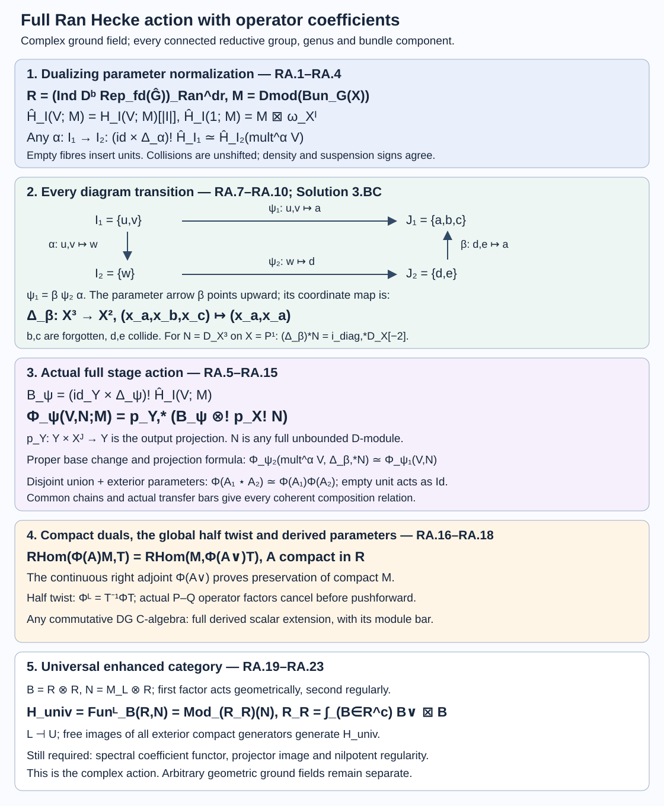
Figure3.19. The upper panel gives the dualizing family normalization (RA.2)–(RA.4). The finite-set square records the opposite direction of \(\beta\) and the exact repeated-coordinate map of Solution3.BC. The action panel projects to \(Y=\operatorname{Bun}_G(X)\), keeps every full parameter module, and shows the proper transition (RA.10). The lower panels give compact dual adjunction, actual half-twist transport and the universal enhanced category. The diagrams are schematic; the shifts, map domains and category factors are exact. Proofs are in §§3.63–3.66, and Solutions3.BC–3.BE test forgotten coordinates, the graded triangles and nonholonomic inputs.
3.67. Unused coordinates, point adjunctions and nonholonomic coefficients
Exercise 3.BC. Take \(I_1=\{u,v\}\), \(J_1=\{a,b,c\}\), with \(\psi_1(u)=\psi_1(v)=a\). Take \(I_2=\{w\}\), \(J_2=\{d,e\}\), with \(\psi_2(w)=d\). Let \(\alpha(u)=\alpha(v)=w\) and \(\beta(d)=\beta(e)=a\). Write the coordinate transition and family comparison, including both unused source coordinates. Then take \(X=\mathbf P^1_{\mathbf C}\) and \(N=\mathcal D_{X^3}\); calculate its transition coefficient.
Solution 3.BC. The label identity is \(\psi_1=\beta\psi_2\alpha\), and the coordinate map is
\[ \Delta_\beta:X^3\to X^2,\qquad (x_a,x_b,x_c)\longmapsto(x_a,x_a), \qquad \Delta_\beta=i_{\rm diag}\circ\operatorname{pr}_a. \tag{RA.24} \]
The coordinates \(b,c\) are unused, while the target coordinates \(d,e\) coincide. Write \(F=\widehat{\mathsf H}_{\{w\}}(V_u\otimes V_v;M)\). The \(e\)-coordinate has a unit label, so \(B_{\psi_2}=F\boxtimes\omega_{X_e}\). On \(Y\times X^2\) this is \((\operatorname{id}_Y\times\operatorname{pr}_d)^!F\). Since the diagonal is a section of that projection, composition of actual inverse transfers gives \(i_{\rm diag}^!(F\boxtimes\omega_{X_e})=F\), for every full \(F\). Pullback through \(\operatorname{pr}_a\) then gives
\[ b^!B_{\psi_2}=F\boxtimes\omega_{X_b}\boxtimes\omega_{X_c} =B_{\psi_1}. \tag{RA.25} \]
There is no further diagonal shift: it has already been absorbed by (RA.2). For the specified \(N\), the product PBW identification gives \(\mathcal D_{X^3}=\mathcal D_{X_a}\boxtimes\mathcal D_{X_b}\boxtimes\mathcal D_{X_c}\). Equation (GD.9), or its one-form Čech calculation, gives \((p_X)_*\mathcal D_X=\mathbf C[-1]\). The two forgotten factors therefore give
\[ (\operatorname{pr}_a)_*N=\mathcal D_{X_a}[-2], \qquad (\Delta_\beta)_*N=(i_{\rm diag})_*\mathcal D_X[-2]. \tag{RA.26} \]
These are operator modules, not their fibres. Substituting (RA.25) and (RA.26) into (RA.10) verifies the two action formulas agree, with the shift \([-2]\). The order filtration has characteristic support \(T^*X^3\) of dimension six; \(N\) is therefore nonholonomic on the three-dimensional base. For arbitrary \(N\), the same transition holds by full base change and projection formula, without assuming this exterior-product calculation.
Exercise 3.BD. Let \(G=\mathbf G_m\), let \(V_n\) be the dual-torus character of weight \(n\), and let \(x\in X(\mathbf C)\). Insert \(A_{n,p}=V_n\otimes\delta_x[p]\) at the identity one-label stage. Identify its action and its right adjoint. Check both triangle signs when \(p\) is odd.
Solution 3.BD. Write \(i_x:Y\to Y\times X\). Proper projection and the projection formula for the closed point give \(\Phi(A_{n,p})M=i_x^!\widehat{\mathsf H}_1(V_n;M)[p]\). The one-point restriction normalization (RA.2) identifies the unshifted expression with the fixed-point Hecke operator \(\mathsf H_{n,x}\). The point module is self-dual by proper coherent duality from the point; the character dual has weight \(-n\). Hence
\[ A_{n,p}^{\vee}=A_{-n,-p},\qquad \Phi(A_{n,p})=\mathsf H_{n,x}[p],\qquad \mathsf H_{n,x}[p]\dashv\mathsf H_{-n,x}[-p]. \tag{RA.27} \]
Here the unshifted torus coefficient is supported on its actual coweight modification, whose inverse modification has weight \(-n\). Composing them contracts the common intermediate bundle to the identity chain, so its two unshifted coefficient evaluations satisfy the two unit triangles. For the additional shift take generators \(e,e^\vee\) of degrees \(-p,p\). Coevaluation is \(1\mapsto e\otimes e^\vee\); reversed evaluation is \((-1)^p\), and its preceding exchange contributes \((-1)^p\). Each triangle has product \((-1)^{2p}=1\), including odd \(p\), exactly as in (KG.24). Transport by \(\mathcal T_Y\) gives the same actual adjunction on the global half twist.
Exercise 3.BE. At the stage \(\emptyset\to\{j\}\), with \(X=\mathbf P^1_{\mathbf C}\), compute the action of \(N=\mathcal D_X\), \(N=\omega_X\) and \(N=\mathbf k_X\). Explain why replacing every full parameter coefficient by a rank-one constant sheaf changes the action.
Solution 3.BE. The empty coefficient family is \(M\), and its coordinate inverse image is \(p_{Y,\{j\}}^!M\). The full projective product comparison consequently gives
\[ \begin{aligned} \Phi_{\emptyset\to\{j\}}(N;M)&=M\otimes_{\mathbf C}(p_X)_*N,\\ \Phi_{\emptyset\to\{j\}}(\mathcal D_X;M)&=M[-1],\\ \Phi_{\emptyset\to\{j\}}(\omega_X;M)&=M[2]\oplus M,\\ \Phi_{\emptyset\to\{j\}}(\mathbf k_X;M)&=M\oplus M[-2]. \end{aligned} \tag{RA.28} \]
For the first line, use \(p_{Y}^!M=M\boxtimes\omega_X\) and \(p_X^!N=\omega_Y\boxtimes N\); their !-tensor is \(M\boxtimes N\) because both dualizing factors are the tensor units. Proper product pushforward integrates just \(N\). The remaining lines are (GD.7) and (GD.9), whose Čech representatives are the constant class and \(dt/t\), with the stated normalized shifts. The operator module \(\mathcal D_X\) is compact and nonholonomic, with full cotangent characteristic support. It gives a single shift rather than either of the two constant/dualizing cohomology sums. Finally the actual diagram arrow from \(\emptyset\to\{j\}\) to \(\emptyset\to\emptyset\) has \(\beta:\emptyset\to\{j\}\), so its coordinate pushforward is \(N\mapsto(p_X)_*N\). It identifies (RA.28) with the scalar empty-stage action. This checks the empty-label transition itself, not just a calculation of its dimensions.
3.68. The tautological de Rham spectral coefficient
In §§3.68–3.72 the geometric and coefficient field is \(\mathbf C\). Keep the full categories \(\mathcal C,\mathcal R,\mathcal M_L\) of (RA.1) and (RA.17). We use the tensor-functor definition of the derived de Rham local-systems prestack. For a connective commutative DG \(\mathbf C\)-algebra \(A\), put
\[ \begin{gathered} \mathcal D_A(X)=\operatorname{Dmod}(X)\otimes_{\mathbf C}\operatorname{Mod}_A,\\ \mathcal Z=\operatorname{LocSys}^{\rm dR}_{\widehat G}(X),\qquad \mathcal Z(A)= \left(\operatorname{Fun}^{\otimes,{\rm L},\,{\rm right}\ t{\rm\text{-}exact}} (\mathcal C,\mathcal D_A(X))\right)^{\simeq}. \end{gathered} \tag{SPC.1} \]
The superscript \(\simeq\) means the entire maximal infinity-groupoid, not the set of isomorphism classes. A point includes its coherent tensor maps, unit, symmetry and higher relations. The target uses !-tensor with unit \(\omega_X\otimes_{\mathbf C}A\). Right \(t\)-exact means that the functor carries connective objects of the standard representation \(t\)-structure to connective objects of the D-module \(t\)-structure with derived \(A\)-coefficients. No representability or finite-type theorem for \(\mathcal Z\) is used below.
The definition supplies a tautological functor for every point \(z\in\mathcal Z(A)\), and a canonical comparison for every arrow \((A,z)\to(B,z')\) of affine points:
\[ E_z:\mathcal C\longrightarrow\mathcal D_A(X),\qquad E_{z'}(V)\simeq E_z(V)\otimes_A^L B. \tag{SPC.2} \]
Here \(z'\) is the specified pullback point, including the specified path to that pullback. A path of tensor functors gives a path of the corresponding coefficient functors; every higher path is retained. Thus (SPC.2) is defined by evaluation on a groupoid, not by choosing one representative of each point.
For a finite label set \(I\), let \(E_z^I\) be its exterior family with all tensor products over \(A\). The full exterior operator comparison (RN.9), followed by the scalar module bar of (KF.1), places it in \(\mathcal D_A(X^I)\). If \(\alpha:I_1\to I_2\), its coordinate inverse transfer gives
\[ \Delta_\alpha^!E_z^{I_1}(\vec V) \simeq E_z^{I_2}(\operatorname{mult}^{\alpha}\vec V), \qquad E_z^\emptyset(\mathbf1)=A. \tag{SPC.3} \]
To prove this, first take a surjection \(\alpha\). Its diagonal inverse image is precisely the definition of !-tensor of the factors in each fibre. The coherent tensor map of \(E_z\) therefore identifies those factors with \(E_z\) of their representation tensor. For an inclusion, coordinate pullback adds the dualizing unit at each unused coordinate; its coefficient is \(E_z(\mathbf1)=\omega_X\otimes A\). Factor any function as the surjection to its image followed by inclusion, and use permutations to order its fibres. The operator unit comparison includes the density and suspension signs of §3.63. This proves (SPC.3) for every function, including empty label fibres and maps from the empty set. The associativity, symmetry and unit constraints of the specified tensor functor, composed with the actual inverse-transfer comparisons, identify the maps for composites. On longer strings the ordered exterior tensor and its successive diagonal evaluations give the same bar faces and identity degeneracies. Their tensor and transfer identities give all higher comparisons.
This construction does not use a Riemann–Hilbert comparison on the full coefficient category. In particular an arbitrary parameter module will remain an operator module in the spectral operation.
3.69. The full spectral Ran functor and derived base change
Let \(\psi:I\to J\), let \(N\in\operatorname{Dmod}(X^J)\), and write \(N_A=N\otimes_{\mathbf C}A\). Define
\[ F_{z,\psi}(\vec V,N)= (p_{X^J})_* \left(\Delta_\psi^!E_z^I(\vec V)\otimes_A^!N_A\right) \in\operatorname{Mod}_A,\qquad p_{X^J}:X^J\to\mathrm{pt}. \tag{SPC.4} \]
The inverse image and !-tensor are the actual full operator operations; the latter tensor is relative to \(A\). The structure map is projective. The projective correspondence lemma (SH.14) constructs its direct image, base-change and projection formula on arbitrary unbounded operator complexes. Scalar extension by \(A\) is the derived module bar of (KF.1): on a semifree \(A\)-presentation use those same \(\mathbf C\)-linear transfer maps, then realize. Its unit insertion contracts the augmentation. Consequently (SPC.4) is an enhanced functor on the full stage \(\mathcal C^{\otimes I}\otimes\operatorname{Dmod}(X^J)\), continuous in both inputs.
For a transition \(\alpha:I_1\to I_2\), \(\beta:J_2\to J_1\), \(\psi_1=\beta\psi_2\alpha\), equation (SPC.3) supplies
\[ \Delta_\beta^!\Delta_{\psi_2}^! E_z^{I_2}(\operatorname{mult}^{\alpha}\vec V) \simeq\Delta_{\psi_1}^!E_z^{I_1}(\vec V). \tag{SPC.5} \]
Put \(Q=\Delta_{\psi_2}^!E_z^{I_2}(\operatorname{mult}^{\alpha}\vec V)\). Since \(\Delta_\beta\) is a projective projection followed by a closed diagonal, the full projection formula and proper composition give
\[ \begin{aligned} F_{z,\psi_2}(\operatorname{mult}^{\alpha}\vec V,(\Delta_\beta)_*N) &=(p_{X^{J_2}})_* \left(Q\otimes_A^!(\Delta_\beta)_*N_A\right)\\ &\simeq(p_{X^{J_2}})_*(\Delta_\beta)_* \left(\Delta_\beta^!Q\otimes_A^!N_A\right)\\ &\simeq(p_{X^{J_1}})_* \left(\Delta_{\psi_1}^!E_z^{I_1}(\vec V) \otimes_A^!N_A\right). \end{aligned} \tag{SPC.6} \]
Each displayed map is the actual transfer evaluation or projection map. Two successive transitions use the same composite \(\alpha\), composite \(\beta\), diagonal tensor map and proper image. The corresponding augmented transfer bars have the same faces, identity degeneracies and evaluation augmentations. This proves compatibility for coherent strings. The full Ran localization construction of (RN.11)–(RN.13) therefore supplies
\[ F_z:\mathcal R\longrightarrow\operatorname{Mod}_A,\qquad F_z(\operatorname{ins}_\psi(\vec V\otimes N)) =F_{z,\psi}(\vec V,N). \tag{SPC.7} \]
It respects every localization edge and higher relation; it is not just a rule on inserted objects.
We next prove that \(F_z\) is symmetric monoidal. Disjoint union gives the exterior product of two coefficients \(E_z^I\) and two parameter modules. The two normalized parameter units are the exterior factors of the single product dualizing unit. Proper Fubini then identifies the direct image of that exterior product with the derived \(A\)-tensor of the two direct images:
\[ F_z(B_1\circledast B_2) \simeq F_z(B_1)\otimes_A^L F_z(B_2),\qquad F_z(\mathbf1_{\mathcal R})=A. \tag{SPC.8} \]
Here is the full unbounded product comparison. Choose finite affine covers of the two projective products of curves. The relative Spencer direction has finite length, and each Čech direction has finite length. On exterior affine terms the transfer comparison is the balanced tensor of the two transfer tensors, with the complex Koszul sign. Tensoring the two finite Čech–Spencer complexes gives their product total complex. Finite horizontal lengths mean that only finitely many horizontal degrees enter a given total degree; no convergence of an infinite first-quadrant spectral sequence is used. Resolve the remaining \(A\)-module inputs by their semifree bars. Derived \(A\)-tensor and direct image preserve their realizations, so the affine comparison extends to every unbounded input. The proper product comparison is exactly its global augmentation. This proves the first map in (SPC.8). At the empty stage the structure map is the identity point and the unit is \(A\), proving the second.
Associativity, symmetry and the unit maps in (SPC.8) are those of the same exterior coefficient and transfer tensor before image. For three and four blocks every route contracts the same ordered product tensor. The associativity pentagon and exchange hexagons are the tensor relations of \(E_z\) and the complex tensor relations of the transfers. Higher strings are the augmented bar strings with their identity degeneracies. Compatibility with (SPC.6) follows from that same product transfer evaluation. Joint continuity and the full Ran colimit extend these comparisons to all objects of \(\mathcal R\). This proves the asserted symmetric monoidal functor.
For an arbitrary morphism of affine spectral points \((A,z)\to(B,z')\), use (SPC.2) in (SPC.4). The Spencer, finite Čech and derived module bars yield the actual comparison
\[ F_z(T)\otimes_A^L B\simeq F_{z'}(T),\qquad T\in\mathcal R. \tag{SPC.9} \]
All tensor products in this argument are derived. A semifree presentation over \(A\) supplies the map even when \(B\) is not flat. Finite horizontal lengths let scalar extension pass through the finite transfer directions; the bar realization supplies every remaining unbounded input degree. Two scalar maps give the same composed tensor bar, and paths of points give the same evaluated paths. Thus (SPC.9) has the entire coherent affine-point comparison, without a flatness or boundedness assumption on the map.
The same construction has an \(A\)-linear extension on \(\mathcal R\otimes\operatorname{Mod}_A\): on exterior generators it sends \(T\otimes Q\) to \(F_z(T)\otimes_A^LQ\). Resolve an arbitrary object by the exterior generator bar and realize this rule. Its unit insertion contracts the augmentation, and the balanced tensor identities give its maps and all bar relations. The two orders of applying that bar and the scalar bar \(A\to B\) have the same bisimplicial realization. Hence (SPC.9) also holds for the entire \(A\)-linear extension and its actual pulled-back objects; it does not replace a derived fibre by its degree-zero quotient.
If \(T\) is compact in \(\mathcal R\), it is dualizable by (KG.22). Applying the strong symmetric monoidal functor (SPC.8) to its two evaluation triangles shows that \(F_z(T)\) is dualizable over \(A\). This implies it is compact: its mapping complex is \(\operatorname{RHom}_A(A,F_z(T)^\vee\otimes_A-)\), which preserves colimits since the unit \(A\) is compact. A compact \(A\)-module is a retract of a finite semifree module by the module bar and compact factorization through its finite cell stages. Therefore
\[ T\in\mathcal R^c\quad\Longrightarrow\quad F_z(T)\in\operatorname{Perf}(A),\qquad F_z(T^\vee)=F_z(T)^\vee. \tag{SPC.10} \]
The argument includes compact nonholonomic parameter modules. It does not assume their geometric fibres have finite-dimensional underlying operator modules.
3.70. Gluing the actual spectral coefficient functor
Quasicoherent complexes on a prestack are coherent Cartesian families over its derived affine points. The index is the opposite of affine schemes over \(\mathcal Z\). Throughout, an arrow of points labelled by algebras \(A\to B\) means the scheme arrow \(\operatorname{Spec}B\to\operatorname{Spec}A\) and its specified spectral path. Thus in the present case
\[ \operatorname{QCoh}(\mathcal Z) =\lim_{(A,z)\in(\operatorname{Aff}/\mathcal Z)^{\rm op}} \operatorname{Mod}_A,\qquad \mathsf{Loc}(T)_z=F_z(T). \tag{SPC.11} \]
The transition functor in this diagram is derived scalar extension. The limit includes every morphism of affine points and every higher path. Formula (SPC.9) and its coherent comparisons consequently make the right-hand expression an object of that limit, for every \(T\), and make its mapping-complex and higher functorial maps Cartesian too. The tensor maps (SPC.8) are Cartesian by their transfer construction. They therefore glue to
\[ \mathsf{Loc}:\mathcal R\longrightarrow \operatorname{QCoh}(\mathcal Z) \quad\text{continuous symmetric monoidal},\qquad \mathsf{Loc}(\mathbf1)=\mathcal O_{\mathcal Z}. \tag{SPC.12} \]
Continuity can be checked directly on Cartesian families: their colimits are the pointwise module colimits, because every transition is derived tensor and preserves colimits. Each \(F_z\) preserves colimits, so the glued family does too. Similarly the symmetric tensor and unit are pointwise tensor and unit, with their coherent comparisons. A family of equivalences is an equivalence in the limit, proving the tensor comparisons of (SPC.12). No algebraicity theorem for \(\mathcal Z\), or interchange of an ind-completion and a limit over its points, enters this construction.
We will use a categorical limit comparison for full compactly generated categories. If \(\mathcal P=\operatorname{Mod}_E\), where \(E\) is its small compact-generator DG category, its presentable dual is \(\operatorname{Mod}_{E^{\rm op}}\). Evaluation is balanced tensor over \(E\); coevaluation is its regular bimodule. On representables both duality triangles are the representable tensor augmentation. Its unit insertion contracts the entire augmented bar. Realization extends this to all objects, morphisms and higher maps, proving both triangles on the full unbounded module categories. Hence tensor by \(\mathcal P\) has both adjoints, given by tensor by its dual, and preserves limits as well as colimits. Applying this proved comparison to the full compactly generated \(\mathcal R\) and \(\mathcal M_L\) gives
\[ \begin{aligned} \mathcal R\otimes\operatorname{QCoh}(\mathcal Z) &\simeq\lim_{(A,z)}(\mathcal R\otimes\operatorname{Mod}_A),\\ \mathcal M_L\otimes\operatorname{QCoh}(\mathcal Z) &\simeq\lim_{(A,z)}\mathcal M_{L,A}. \end{aligned} \tag{SPC.13} \]
These are comparisons of full presentable categories using their actual duals. They do not commute a bounded coherent or perverse ind-completion through a prestack limit. In particular a Cartesian family of operator-valued spectral coefficients retains every affine point and its higher descent data.
The continuous limit in (SPC.11) may equivalently be constructed as the Cartesian coherent section category. One chooses a common accessibility cardinal for the small affine-point diagram in the chosen larger universe. Lax coherent sections are the section module category obtained from the free path bar on that diagram. Requiring each transition's cone to vanish defines its Cartesian subcategory. This is an accessible condition: each cone is an accessible functor, and zero objects form an accessible subcategory; the set of transition conditions admits the same enlarged cardinal. Pointwise colimits remain Cartesian since the transition functors preserve colimits. An accessible category with these colimits is presentable, and its full enhanced section maps supply the limit. This also explains why pointwise colimits in the Cartesian-family description agree with its continuous category limit. Higher sections are represented by the same augmented path bar, so the construction does not replace the affine-point infinity-category by its homotopy category.
The accessibility assertion can be seen from presentations, rather than inferred from a finite diagram. Enlarge the regular cardinal to dominate the sizes of the diagram, its path simplices, its algebra presentations and the functors' accessibility bounds. A section is a filtered union of presentations of that size. To approximate a Cartesian section, enlarge a presentation successively to include the images of its generators under each transition, inverse maps for the specified transition equivalences, and homotopies for the two inverse identities. Repeat for every higher simplex and relation. Each step adds fewer generators and relations than the chosen enlarged bound; a regular enlargement bounds the union of this sequence as well. The resulting presentations are Cartesian, their maps retain the chosen homotopies, and their filtered union is the original section. The same enlargement for a set of maps and homotopies gives the mapping version. Thus the Cartesian sections form an accessible full category. Together with the already proved pointwise colimits this is the definition of presentability. This argument proves presentability and the limit comparison; it does not assert compact generation of global quasicoherent complexes or compactness of their unit.
3.71. The actual enhanced spectral category and its affine generators
Use the proved geometric first action (RA.17) and the actual spectral functor (SPC.12) to set
\[ \begin{gathered} \mathcal B=\mathcal R\otimes\mathcal R,\qquad \mathcal N_{\mathcal Z} =\mathcal M_L\otimes\operatorname{QCoh}(\mathcal Z),\\ (T\boxtimes S)\star(M\boxtimes Q) =\Phi^L(T)M\boxtimes(\mathsf{Loc}(S)\otimes Q),\\ \mathfrak R_{\mathcal Z} =(\operatorname{Id}_{\mathcal R}\otimes\mathsf{Loc})(R_{\mathcal R}) \in\mathcal R\otimes\operatorname{QCoh}(\mathcal Z). \end{gathered} \tag{SPC.14} \]
The full tensor bar extends the exterior action to all objects and morphisms. The two factors act separately, so they commute with coherent comparisons. The algebra is commutative since \(R_{\mathcal R}\) is the actual commutative regular algebra (KG.23) and \(\mathsf{Loc}\) is symmetric monoidal. Thus all geometric and spectral inputs of the module construction (EP.6)–(EP.8) have now been supplied:
\[ \mathcal H_{\mathcal Z} =\operatorname{Fun}^{\rm L}_{\mathcal B} (\mathcal R,\mathcal N_{\mathcal Z}) \simeq\operatorname{Mod}_{\mathfrak R_{\mathcal Z}} (\mathcal N_{\mathcal Z}). \tag{SPC.15} \]
The right-hand expression means modules for the action of this algebra on \(\mathcal N_{\mathcal Z}\). It does not require an object of \(\mathcal N_{\mathcal Z}\) to be a sheaf in an ordinary abelian heart.
Let \(r\) be the continuous right adjoint of the multiplication of \(\mathcal R\). Its induction and forgetful functors are
\[ U_{\mathcal Z}(F)=F(\mathbf1),\qquad L_{\mathcal Z}(n)(T)=r(T)\star n,\qquad L_{\mathcal Z}\dashv U_{\mathcal Z},\qquad U_{\mathcal Z}L_{\mathcal Z}(n)=\mathfrak R_{\mathcal Z}\star n. \tag{SPC.16} \]
The full adjunction is (EP.7), whose transformation maps insert the unit and evaluate the counit of multiplication and its right adjoint. Their two triangles prove the inverse maps on the whole mapping complexes and higher transformations. Its monad multiplication is the regular algebra multiplication, because both are the mate of the multiplication of the same counits. The split augmented free action bar of (EP.8) identifies its entire module category with (SPC.15). Its contraction after \(U_{\mathcal Z}\) and the conservativity of \(U_{\mathcal Z}\) prove the equivalence for every unbounded object and coherent action. The forgetful \(U_{\mathcal Z}\) preserves colimits, since the underlying action-module colimits are the underlying colimits.
The regular balancing map (EP.5), now with its actual second coefficient functor, gives the full eigen-comparison
\[ \Phi^L(T)\star_{\rm first}U_{\mathcal Z}(F) \simeq\mathsf{Loc}(T)\star_{\rm coeff}U_{\mathcal Z}(F), \qquad T\in\mathcal R. \tag{SPC.17} \]
These maps have the tensor, unit, symmetry and higher relations of the balanced module functor. The coefficient on the right is the actual full spectral complex (SPC.4), with arbitrary parameter modules.
For a point \(z\in\mathcal Z(A)\), denote the corresponding categories and algebra by \(\mathcal N_z=\mathcal M_{L,A}\), \(\mathfrak R_z=(\operatorname{Id}\otimes F_z)(R_{\mathcal R})\), and \(\mathcal H_z=\operatorname{Mod}_{\mathfrak R_z}(\mathcal N_z)\). Compose induction with free \(A\)-coefficients:
\[ \begin{gathered} s_A(M)=M\otimes_{\mathbf C}A,\qquad P_z^{\rm enh}=L_zs_A,\qquad J_z=v_AU_z,\\ \operatorname{RHom}_{\mathcal H_z}(P_z^{\rm enh}c,F) \simeq\operatorname{RHom}_{\mathcal M_L}(c,J_zF),\\ \{P_z^{\rm enh}c_i\}_i \text{ compactly generates }\mathcal H_z \quad(c_i\text{ compact generators of }\mathcal M_L). \end{gathered} \tag{SPC.18} \]
Here \(v_A\) forgets the \(A\)-module action. Its full adjunction with \(s_A\) is the free \(A\)-module bar, including all differential and homotopy maps. It preserves colimits and is conservative: colimits of modules are underlying colimits, and an action on a zero underlying object is zero. The same properties hold for \(U_z\) by its constructed action bar. The displayed adjunction proves compactness of each free enhanced source, because \(J_z\) is continuous. Vanishing of all those mapping complexes forces \(J_zF=0\), then \(F=0\), proving generation of the full category. No finiteness or flatness of \(A\) is assumed.
For a morphism of affine points \((A,z)\to(B,z')\), (SPC.9) identifies the scalar extension of the regular algebra with \(\mathfrak R_{z'}\). It gives
\[ \mathcal H_z\otimes_{\operatorname{Mod}_A}\operatorname{Mod}_B \simeq\mathcal H_{z'},\qquad (P_z^{\rm enh}c)\otimes_A^L B=P_{z'}^{\rm enh}c. \tag{SPC.19} \]
We prove the full category comparison. Its functor is the scalar extension of the regular action maps and their free action bars. The generators in (SPC.18) go to the indicated generators of the target. For two such sources its mapping comparison reduces by the free adjunction to \(\operatorname{RHom}_{\mathcal M_{L,A}} (c_i\otimes A,\mathfrak R_z\star(c_j\otimes A))\). The continuous mapping functor out of the compact \(c_i\) commutes with scalar extension by the same free coefficient bar as (KF.1), including the induced \(A\)-action. The right-hand source therefore becomes exactly the analogous mapping complex over \(B\), using (SPC.9). These are the canonical comparison maps; their composition is the same regular-algebra multiplication and transfer evaluation. The multi-object module bar now identifies the scalar extension with the full target: it is fully faithful on its compact generating DG category, and both categories are the full module categories generated by those images. The representable augmentation contraction proves the inverse on arbitrary modules and higher maps. This proves (SPC.19) for an arbitrary DG algebra map, including nonflat maps.
Equations (SPC.13), (SPC.14) and (SPC.19) also identify the global category with its entire Cartesian affine-point family:
\[ \mathcal H_{\mathcal Z} \simeq\lim_{(A,z)\in(\operatorname{Aff}/\mathcal Z)^{\rm op}}\mathcal H_z. \tag{SPC.20} \]
Indeed (SPC.13) identifies the underlying objects with full Cartesian \(\mathcal M_{L,A}\)-families. The action of the regular algebra restricts to its action at each point, by (SPC.9). Giving its module multiplication, unit, and their coherent homotopies in the limit is precisely giving their Cartesian maps and homotopies at every affine point. The same statement for maps of modules gives the entire mapping complexes. Conversely those coherent maps define the global action by that limit comparison. This proves (SPC.20) without commuting an ind-completion through a point diagram.
Finally let \(s_{\mathcal Z}(c)=c\boxtimes\mathcal O_{\mathcal Z}\), and let \(s_{\mathcal Z}^R\) be its right adjoint. The global enhanced induction has the actual adjunction
\[ P_{\mathcal Z}^{\rm enh}=L_{\mathcal Z}s_{\mathcal Z} \dashv J_{\mathcal Z}=s_{\mathcal Z}^RU_{\mathcal Z}. \tag{SPC.21} \]
One can construct this right adjoint on the compact-generator module model of \(\mathcal M_L\). An object of \(\mathcal N_{\mathcal Z}\) is an \(E\)-module in quasicoherent complexes; apply \(\Gamma(\mathcal Z,-)=\operatorname{RHom}_{\operatorname{QCoh}(\mathcal Z)} (\mathcal O_{\mathcal Z},-)\) to its coefficients. Its \(E\)-action is induced by the adjunction mate \(W\otimes\Gamma(Q)\to\Gamma(W\otimes Q)\). For a representable \(c_i\), mapping from \(c_i\boxtimes\mathcal O_{\mathcal Z}\) is exactly \(\Gamma\) of that coefficient. The full representable bar extends this comparison to every source object: both sides send its colimits to mapping limits. This constructs \(s_{\mathcal Z}^R\), its unit and counit, and their actual adjunction triangles. Composing with (SPC.16) proves (SPC.21).
The affine result (SPC.18) does not prove that this global \(J_{\mathcal Z}\) is continuous or conservative: those properties would require additional global assertions about \(\mathcal O_{\mathcal Z}\) and global sections. Nor does free enhanced induction prove idempotence or full faithfulness of an ordinary spectral projector. The comparison of the transported Ran regular algebra with the spectral diagonal, the resulting localization and projector-image theorems, nilpotent singular-support image and regularity, and the required global generation remain to be proved. Derived tempered Satake and the arbitrary characteristic-zero geometric ground-field extension also remain required.
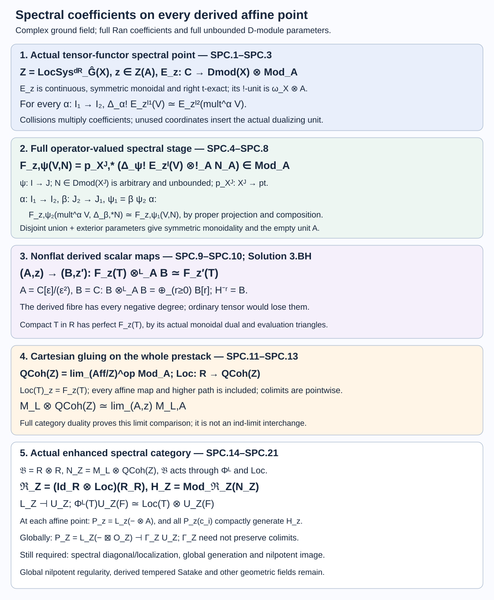
Figure 3.20. The five panels give the actual maps of (SPC.1)–(SPC.21). The parameter in the second panel is an arbitrary full operator module; the third panel displays the complete cohomology degrees of the nonflat fibre in Solution3.BH. The fourth panel indexes the opposite of affine schemes over the prestack and includes every affine-point morphism and higher path. In the last panel \(\Gamma_{\mathcal Z}\) means the right adjoint on operator-valued coefficient modules constructed after (SPC.21). The compact generation statement is affine; continuity of that global right adjoint and the nilpotent projector image are not claimed. Further reading is the free AGKRRV preprint cited below.
3.72. Full operator parameters and a nonflat derived fibre
Exercise 3.BF. Use the finite-set square of Solution3.BC, put \(X=\mathbf P^1_{\mathbf C}\), and take the trivial dual-torus local system with coefficients in a connective DG algebra \(A\). Put \(V_u=V_p\), \(V_v=V_q\), and \(N=\mathcal D_{X^3}\). Calculate the spectral value on both sides of that transition.
Solution 3.BF. The trivial coefficient functor sends every character to \(\omega_X\otimes A\), with the unit's tensor comparisons; exterior products consequently give the dualizing unit on every parameter product. Thus (SPC.4) retains \(N_A\) itself. Proper product pushforward and (GD.9) give
\[ F_{z,\psi_1}(V_p\boxtimes V_q,\mathcal D_{X^3})=A[-3]. \tag{SPC.22} \]
On the second stage the combined coefficient is \(V_{p+q}\), and the unused \(e\)-coordinate has a unit. Its restricted exterior coefficient is again the full dualizing unit on \(X^2\). Equation (RA.26) gives the transition module \((i_{\rm diag})_*\mathcal D_X[-2]\), so
\[ F_{z,\psi_2}(V_{p+q},(\Delta_\beta)_*\mathcal D_{X^3}) =(p_X)_*\mathcal D_X[-2]\otimes_{\mathbf C}A=A[-3]. \tag{SPC.23} \]
The comparison is proper composition through the actual diagonal and forgotten coordinates, not an identification just of dimensions. The full nonholonomic input is compact, and its result \(A[-3]\) is perfect, as predicted by (SPC.10).
Exercise 3.BG. Let \(G=\mathbf G_m\), and let a dual-torus spectral point \(z\) be given by a flat line bundle \(E_A\) on \(X\) with derived \(A\)-coefficients, locally free of rank one over \(\mathcal O_X\otimes A\). For \(x\in X(\mathbf C)\), compute the spectral coefficient of \(A_{n,p}=V_n\otimes\delta_x[p]\), its dual, and the corresponding enhanced eigen-comparison.
Solution 3.BG. First construct the stated point. A finite-dimensional dual-torus representation is the finite sum of its weight spaces. Send its weight-\(n\) summand to the flat line power \(E_A^{\otimes n}\), with dual powers for negative \(n\), and use line multiplication for the tensor maps. Weight decompositions identify tensor products with the sums of these maps; line associativity, exchange and inverse evaluation give their unit, symmetry and dual relations. The representation module bar extends this rule continuously to \(\mathcal C\). In the right-D-module convention its normalized character coefficient is \((E_A^{\otimes n}\otimes_{\mathcal O_X}\Omega_X^1)[1]\). Local freeness and the shift by \([1]\) make this functor right \(t\)-exact, including derived connective \(A\)-coefficients. It is consequently an actual point of (SPC.1).
Along the closed point the inverse-transfer tensor is the derived quotient by the local coordinate, shifted by \([-1]\), and contracts the right density factor. Local freeness identifies this quotient with the actual derived fibre \(E_{A,x}^{\otimes n}\); the normalization \([1]\) cancels the transfer shift. Proper point pushforward and projection formula in (SPC.4) therefore give
\[ F_z(A_{n,p})=E_{A,x}^{\otimes n}[p],\qquad F_z(A_{n,p}^{\vee})=E_{A,x}^{\otimes(-n)}[-p] =F_z(A_{n,p})^\vee. \tag{SPC.24} \]
Its evaluation contracts the line and its inverse, and coevaluation inserts their identity. For homogeneous shift generators of degrees \(-p,p\), reversed evaluation and the preceding exchange each have sign \((-1)^p\). Their product in both triangles is \(+1\), exactly as in (RA.27). Formula (SPC.17), or its affine restriction, now reads
\[ \mathsf H_{n,x}^L[p](U_zF) \simeq U_zF\otimes_A^L E_{A,x}^{\otimes n}[p]. \tag{SPC.25} \]
Both sides have the same full coefficient shift, and the coherent comparison includes those same tensor signs. At \(n=p=0\) it is the module unit map. This is the actual affine spectral eigen-comparison on every unbounded underlying object.
Exercise 3.BH. Let \(A=\mathbf C[\epsilon]/(\epsilon^2)\), \(B=A/(\epsilon)=\mathbf C\), and let \(z\) be the trivial dual-torus spectral point. Extend \(F_z\) \(A\)-linearly to \(\mathcal R\otimes\operatorname{Mod}_A\), and take \(T=\mathbf1_{\mathcal R}\otimes B\). Compute its spectral coefficient after derived base change to \(B\), and compare it with ordinary tensor.
Solution 3.BH. The \(A\)-linear extension uses the free coefficient bar and satisfies
\[ F_z^A(\mathbf1_{\mathcal R}\otimes Q)=Q,\qquad F_z^A(T)\otimes_A^L B=B\otimes_A^L B. \tag{SPC.26} \]
A free \(A\)-resolution of \(B\) has one copy of \(A\) in every degree \(0,-1,-2,\ldots\), with all negative differentials multiplication by \(\epsilon\) and the degree-zero augmentation the quotient to \(B\). It is a complex because \(\epsilon^2=0\). The kernel and image of multiplication by \(\epsilon\) are both \(\epsilon A\), so it is exact in every negative degree, and its augmentation gives degree-zero cohomology \(B\). Tensoring this semifree bounded-above resolution with \(B\) makes all differentials zero. Consequently
\[ B\otimes_A^L B\simeq\bigoplus_{r\ge0}B[r],\qquad H^{-r}(B\otimes_A^L B)=B\quad(r\ge0). \tag{SPC.27} \]
The pulled-back object is \(\mathbf1_{\mathcal R}\otimes(B\otimes_A^L B)\) in the full \(B\)-linear Ran category. Its coefficient under the pulled-back trivial point is the same complex by the \(B\)-linear version of (SPC.26), which checks the actual comparison (SPC.9). Ordinary tensor would give only
\[ B\otimes_A B=B \tag{SPC.28} \]
and would lose every negative cohomology group. Thus even empty labels require the entire derived module bar for nonflat scalar maps. There is no contradiction with (SPC.10): the inserted \(A\)-module \(B\) in this exercise is not perfect over \(A\), as its nonzero derived fibre in every negative degree demonstrates.
Further reading: Arinkin, Gaitsgory, Kazhdan, Raskin, Rozenblyum and Varshavsky, The stack of local systems with restricted variation and geometric Langlands theory with nilpotent singular support, §6.1 for the de Rham tensor-functor definition and §12.6 for the enhanced spectral construction. The full-parameter transition, derived fibre, Cartesian gluing and adjunction proofs used here are (SPC.1)–(SPC.28).
3.73. The full operator-valued universal property of Ran
Keep the complex-field categories of (RA.1), and put \(\mathcal D=\operatorname{Dmod}(X)\). All tensor functors below preserve colimits and have their entire coherent strong symmetric monoidal structure. We first prove the actual categorical self-duality used to recover a coefficient from all its parameter tests:
\[ \begin{gathered} \operatorname{ev}_{\mathcal D}(Q,N) =p_*(Q\otimes^!N),\qquad \operatorname{coev}_{\mathcal D}(\mathbf C) =\Delta_*\omega_X\in\operatorname{Dmod}(X^2),\\ \mathcal D\simeq\mathcal D^\vee,\qquad \mathcal A\otimes\mathcal D \simeq\operatorname{Fun}^{\rm L}(\mathcal D,\mathcal A). \end{gathered} \tag{SDG.1} \]
Here \(\mathcal A\) can be any presentable symmetric monoidal DG category whose tensor preserves colimits in each variable. The tensor-product identification with the full product operator category is (RN.9); the evaluations are full continuous functors by (SH.14). To check the first triangle, identify the endofunctor determined by a full product kernel \(K\) with
\[ M\longmapsto(p_1)_*(K\otimes^!p_2^!M). \tag{SDG.2} \]
On an exterior kernel \(Q\boxtimes N\), proper product Fubini and the unit \(\omega_X\) identify this with \(Q\otimes_{\mathbf C}p_*(N\otimes^!M)\), precisely the evaluation–coevaluation composite. Exterior generators and their full module bar extend the identification to every kernel and mapping complex. For \(K=\Delta_*\omega_X\), the actual proper projection formula gives
\[ \begin{aligned} (p_1)_*(\Delta_*\omega_X\otimes^!p_2^!M) &\simeq(p_1)_*\Delta_* (\omega_X\otimes^!\Delta^!p_2^!M)\\ &\simeq M . \end{aligned} \tag{SDG.3} \]
The second line is the composite-map identity \(p_1\Delta=p_2\Delta=\mathrm{id}_X\) and the !-tensor unit. It is an identity of the actual full transfer functors; it includes unbounded inputs and all their maps. Exchanging the two coordinates proves the other triangle. These triangles give the categorical dual and the last equivalence in (SDG.1): its forward functor evaluates against the second factor, and its inverse tensors with coevaluation and then evaluates the given functor on the first factor. The same two triangles prove that these are inverse on entire mapping complexes and higher maps. No finiteness of a nonholonomic object's underlying vector space enters this duality.
We claim the following universal property of the actual full Ran category:
\[ \operatorname{Fun}^{\otimes,{\rm L}}(\mathcal R,\mathcal A) \simeq \operatorname{Fun}^{\otimes,{\rm L}} (\mathcal C,\mathcal A\otimes\mathcal D). \tag{SDG.4} \]
For an operator-valued coefficient functor \(E\) on the right, use the full stage formula
\[ F_{E,\psi}(\vec V,N) =(\operatorname{Id}_{\mathcal A}\otimes p_{X^J,*}) (\Delta_\psi^!E^I(\vec V)\otimes^!N), \qquad \psi:I\to J. \tag{SDG.5} \]
The operator operations here are tensored with \(\mathcal A\); the tensor bar defines the formula on its whole presentable coefficient category. The proof of (SPC.3)–(SPC.8) applies to these actual functors: arbitrary functions multiply their coefficient fibres or insert the dualizing unit, the opposite parameter arrow is carried by proper projection formula, and disjoint unions use full proper product Fubini. The transfer compositions, tensor constraints and identity bar degeneracies give all higher comparisons. None of these proofs uses a special property of \(\operatorname{Mod}_A\); they use the continuous operator functors tensored with the coefficient category. The full Ran colimit (RN.11)–(RN.13) therefore produces the left-hand functor.
Conversely, let \(F:\mathcal R\to\mathcal A\) be a continuous strong symmetric monoidal functor. On the singleton stage restrict it to
\[ G_V(N)=F(\operatorname{ins}_{\mathrm{id}_{\{1\}}}(V\otimes N)), \qquad E_F(V)\in\mathcal A\otimes\mathcal D \text{ represents }G_V\text{ under (SDG.1).} \tag{SDG.6} \]
This constructs the entire continuous functor \(E_F\), not merely its values on finite-dimensional representations. The inverse in (SDG.1) supplies its maps and all their higher homotopies, naturally in \(V\).
We now recover its tensor maps. Let \(c:\{1,2\}\to\{1\}\) be the fold. There are actual structural equivalences in the Ran category
\[ \operatorname{ins}_{\mathrm{id}_{\{1\}}}(V\otimes W\otimes N) \simeq \operatorname{ins}_c((V\boxtimes W)\otimes N) \simeq \operatorname{ins}_{\mathrm{id}_{\{1,2\}}} ((V\boxtimes W)\otimes\Delta_*N). \tag{SDG.7} \]
The first is the coefficient fold \(\alpha=c,\beta=\mathrm{id}\); the second is the parameter fold \(\alpha=\mathrm{id},\beta=c\), with \(\beta\) pointing opposite to the parameter-stage direction. On exterior parameter objects \(N_1\boxtimes N_2\), monoidality of \(F\) identifies its two-point stage with \(G_V(N_1)\otimes_{\mathcal A}G_W(N_2)\). The full exterior module bar (RN.9) extends that equality to every parameter object of \(\operatorname{Dmod}(X^2)\), including the actual \(\Delta_*N\) in (SDG.7). Apply proper projection formula to (SDG.5). The resulting identity on every \(N\) is represented, by the full faithful comparison (SDG.1), by
\[ E_F(V\otimes W)\simeq E_F(V)\otimes^!E_F(W). \tag{SDG.8} \]
These are the actual representing maps. An equality only on holonomic parameters or ordinary stalks would not recover them.
The empty coefficient-label transition, followed by the structural map \(X\to\mathrm{pt}\), gives
\[ \operatorname{ins}_{\mathrm{id}_{\{1\}}}(\mathbf1\otimes N) \simeq\operatorname{ins}_{\emptyset\to\{1\}} (\mathbf C\otimes N) \simeq\mathbf1_{\mathcal R}\otimes_{\mathbf C}p_*N. \tag{SDG.9} \]
After applying \(F\), (SDG.1) consequently represents this singleton parameter functor by \(E_F(\mathbf1)=\mathbf1_{\mathcal A}\boxtimes\omega_X\). Thus (SDG.8) has the specified strong unit map too.
For associativity, expand (SDG.7) on three label and coordinate copies. The two successive folds have the same composite function, and the two diagonal transfers have the same small diagonal. The coherent Ran composition maps identify them before evaluation. Applying the representing equivalence (SDG.1) gives the associativity relation for (SDG.8). Four copies give its pentagon. Parameter and coefficient permutations give its exchange and symmetry relations, with the density and suspension normalization of §3.63. Empty fibres give its unit relations. The same argument on each longer function string and each bar simplex retains all higher comparisons. This proves the strong symmetric monoidal \(E_F\).
Finally any stage reduces by its coefficient function \(\alpha=\psi\) to
\[ \operatorname{ins}_{\psi}(\vec V\otimes N) \simeq \operatorname{ins}_{\mathrm{id}_J} ((\operatorname{mult}^{\psi}\vec V)\otimes N). \tag{SDG.10} \]
On exterior parameters at the right-hand stage, monoidality splits the functor into the singleton tests just reconstructed. The full exterior bar then extends this to arbitrary \(N\), yielding exactly (SDG.5). These comparisons respect all original finite-set transitions, by their common folds and transfers; hence they extend to the actual enhanced Ran colimit and its localization morphisms. Conversely reconstructing \(E\) from (SDG.5) is the evaluation–coevaluation triangle of (SDG.1). Naturality and the full bar prove the same two inverse comparisons for transformations and higher paths. This proves (SDG.4).
3.74. The regular algebra encodes entire spectral path spaces
Let \(A\) be a connective commutative DG algebra and let \(z,w\in\mathcal Z(A)\) be the actual points of (SPC.1). Transport the Ran regular algebra and multiply its two \(A\)-coefficient factors:
\[ \begin{gathered} D_{z,w} =\operatorname{mult}_A (F_z\otimes F_w)(R_{\mathcal R})\in\operatorname{CAlg}_A,\\ D_{z,w}\simeq \int^{T\in\mathcal R^c}F_z(T)^\vee\otimes_A^L F_w(T). \end{gathered} \tag{SDG.11} \]
The second line follows from the actual entire compact-DG-category coend (KG.23), continuity of both coefficient functors, and their monoidal dual comparison (SPC.10). It includes the coend's higher bar faces and degeneracies; it is not a sum over representatives of inserted objects. Its multiplication is the one constructed for the regular algebra: two terms use the coefficient exchange and then the term for \(T\circledast S\); its unit is the term for \(\mathbf1\).
For every connective commutative DG \(A\)-algebra \(B\), all tensor comparisons in (SPC.9) yield
\[ D_{z,w}\otimes_A^L B\simeq D_{z_B,w_B}. \tag{SDG.12} \]
Indeed duality of the finite perfect \(F_z(T)\) commutes with derived scalar extension, by the evaluation–coevaluation triangles; arbitrary derived tensor then commutes with the coend realization. On each bar simplex these are the same tensor maps, so the comparison includes the algebra multiplication, unit and every higher relation. No flatness of \(A\to B\) is used.
We prove the full natural-transformation meaning of this algebra:
\[ \operatorname{Map}_{\operatorname{CAlg}_B} (D_{z_B,w_B},B) \simeq \operatorname{Isom}^{\otimes} (F_{w_B},F_{z_B}). \tag{SDG.13} \]
For a compact \(T\), perfect duality identifies a map \(F_{z_B}(T)^\vee\otimes_B F_{w_B}(T)\to B\) with a map \(F_{w_B}(T)\to F_{z_B}(T)\). This fixes the orientation: the algebra's first, dual factor is the target of the corresponding transformation. Maps from the full coend are precisely coherently natural such maps on the compact DG category. This is its defining universal property on mapping spaces: applying \(\operatorname{Map}(-,B)\) turns its realization into the complete limit of the bar mapping spaces. The unit condition is the transformation at \(\mathbf1\); its multiplication condition is
\[ \eta_{T\circledast S} =\eta_T\otimes_B\eta_S \quad\text{under the given monoidal comparisons}. \tag{SDG.14} \]
The regular algebra's associative, symmetric and higher multiplication maps impose exactly the corresponding coherent tensor relations. One may compute those algebra mapping spaces by the augmented free commutative-algebra resolution: in each degree its faces multiply or apply the algebra action, its degeneracies insert the free unit, and the augmentation is split by unit insertion. Thus its total mapping space retains the multiplication homotopies and all their iterated compatibility; it does not replace a commutative DG algebra map by a map of its degree-zero cohomology rings. The same bar comparison proves that these assignments are inverse as spaces with all higher paths.
Such a tensor transformation is automatically invertible. For a dualizable compact \(T\), construct the inverse to \(\eta_T:F_{w_B}(T)\to F_{z_B}(T)\) by
\[ \begin{aligned} F_{z_B}(T)&\longrightarrow F_{w_B}(T)\otimes_B F_{w_B}(T^\vee)\otimes_B F_{z_B}(T)\\ &\xrightarrow{\mathrm{id}\otimes\eta_{T^\vee}\otimes\mathrm{id}} F_{w_B}(T)\otimes_B F_{z_B}(T^\vee)\otimes_B F_{z_B}(T)\\ &\longrightarrow F_{w_B}(T). \end{aligned} \tag{SDG.15} \]
The outside maps are source coevaluation and target evaluation in the ordered dual–object convention. Equivalently, the last map uses the transported Ran evaluation with its required exchange. Naturality for evaluation and coevaluation, tensor compatibility (SDG.14), and the transformation's unit map reduce each composite with \(\eta_T\) to the corresponding duality triangle. They therefore give both identity composites, with the complex exchange signs. All objects of \(\mathcal R\) are generated from the compact DG category by the full representable bar. Both coefficient functors preserve its realization, so this inverse extends naturally to every unbounded object and all maps. Higher inverse comparisons follow from those same triangles. This proves the asserted isomorphism space, rather than a space of possibly noninvertible natural transformations.
Apply the entire universal comparison (SDG.4) with \(\mathcal A=\operatorname{Mod}_B\). The actual coefficient functor associated to a point is precisely (SPC.4). Thus
\[ \begin{aligned} \operatorname{Map}_{\operatorname{CAlg}_A}(D_{z,w},B) &\simeq\operatorname{Isom}^{\otimes}(E_{w_B},E_{z_B})\\ &\simeq\operatorname{Path}_{\mathcal Z(B)}(w_B,z_B). \end{aligned} \tag{SDG.16} \]
The second line is the defining maximal infinity-groupoid in (SPC.1). It retains right \(t\)-exact objects, their tensor isomorphisms and every higher path. Every map used in the first line is the scalar coend comparison, its tensor-dual mate or the full universal representing comparison; consequently it is natural in \(B\), in the points and in their coherent paths.
This identifies the entire derived point-pair path functor of the actual de Rham prestack. It does not yet prove that \(D_{z,w}\) is connective, or that its spectrum is an affine scheme in the connective derived-affine convention. Identifying the algebra (SDG.11) with the quasicoherent direct image of the diagonal unit requires that further geometry and its derived base-change proof. Nor does (SDG.16) by itself prove a tensor-product equivalence for global quasicoherent categories, a continuous fully faithful localization right adjoint, global enhanced generation, the ordinary projector or its nilpotent image and regularity. Those assertions remain required.
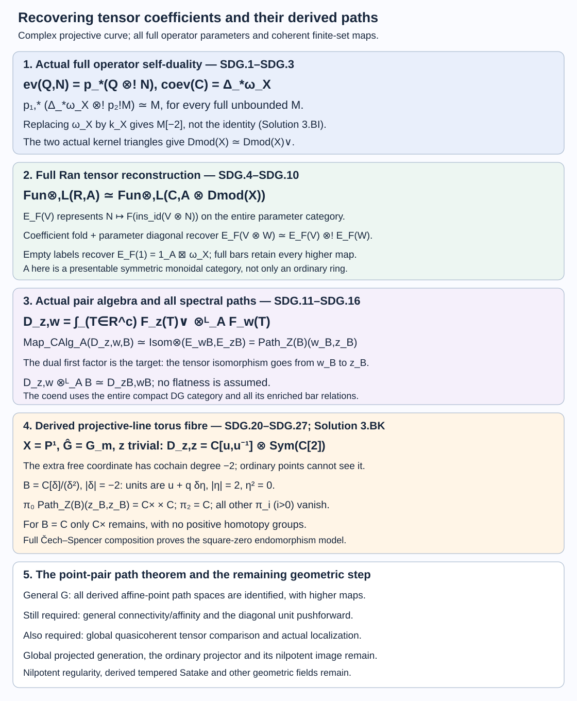
Figure 3.21. Panels1–3 give the actual full-category maps of (SDG.1)–(SDG.16). The first panel distinguishes the dualizing coevaluation kernel from its incorrectly shifted constant replacement. In the third, the first dual coefficient is the target of the tensor isomorphism. Panel4 is the complete worked derived fibre of Solution3.BK, including its degree-two paths. Panel5 records which general diagonal, localization and nilpotent-image assertions still need proofs. The source reading is the free AGKRRV preprint cited below.
3.75. The kernel shift, enriched naturality and a derived diagonal fibre
Exercise 3.BI. Replace the coevaluation kernel in (SDG.1) by \(\Delta_*\mathbf k_X\). Compute its endofunctor on an arbitrary full D-module \(M\), and compare it with the correct kernel on \(M=\mathcal D_X\).
Solution 3.BI. On the curve, (GD.3) gives \(\mathbf k_X=\omega_X[-2]\). The same actual proper projection and composite-map calculation as (SDG.3) gives
\[ \begin{aligned} (p_1)_*(\Delta_*\mathbf k_X\otimes^!p_2^!M) &\simeq\mathbf k_X\otimes^!M=M[-2],\\ (p_1)_*(\Delta_*\omega_X\otimes^!p_2^!M) &\simeq M . \end{aligned} \tag{SDG.17} \]
In particular the first kernel gives \(\mathcal D_X[-2]\), whereas coevaluation must give \(\mathcal D_X\). The calculation holds for every unbounded \(M\), including this nonholonomic compact operator module. The two kernels differ by an actual dimension shift; agreement on their ordinary support would not detect the error.
Exercise 3.BJ. In the coefficient field \(\mathbf C\), a rule on the shifted units of \(\mathcal R\) multiplies the value of \(\mathbf1[r]\) by \(a^r\), where \(a\in\mathbf C^\times\). Its degree-zero maps and tensor products look compatible. Determine whether this can be an enriched tensor transformation with identity unit map.
Solution 3.BJ. The shifted identity supplies a closed homogeneous morphism
\[ f_r\in\operatorname{Hom}_{\mathcal R}^{\,r} (\mathbf1[r],\mathbf1). \tag{SDG.18} \]
Both coefficient functors carry it to the canonical degree-\(r\) morphism \(\mathbf C[r]\to\mathbf C\). Enriched naturality therefore requires
\[ \eta_{\mathbf1}\,F(f_r) =F(f_r)\,\eta_{\mathbf1[r]}, \qquad 1=a^r. \tag{SDG.19} \]
There is no interchange sign here: the transformation has degree zero. Taking \(r=1\) gives \(a=1\), and then all the equations hold. In contrast, the ordinary degree-zero category of shifted vector lines has no nonzero map between different shifts; the grading-dilation rule would pass that weaker naturality test. This explains why the compact DG coend and its enriched bar in (SDG.11) cannot be replaced by a coend over ordinary isomorphism classes and degree-zero maps.
Exercise 3.BK. Let \(X=\mathbf P^1_{\mathbf C}\), let \(\widehat G=\mathbf G_m\), and let \(z\) be the trivial normalized coefficient functor. Determine \(D_{z,z}\). For the connective DG algebra \(B=\mathbf C[\delta]/(\delta^2)\), with \(|\delta|=-2\) and zero differential, compute the components and positive homotopy groups of the corresponding spectral path space.
Solution 3.BK. A finite representation of \(\mathbf G_m\) is the finite sum of its weight spaces: in its coaction write \(v\mapsto\sum_n v_n\otimes t^n\). Coassociativity and uniqueness of Laurent coefficients give the coaction \(v_n\mapsto v_n\otimes t^n\), and the counit gives \(v=\sum_n v_n\). Thus the regular coefficient coend has one generator for each weight, with multiplication adding weights; it is \(\mathbf C[u,u^{-1}]\). Under the two trivial coefficient functors its regular algebra in \(\operatorname{Dmod}(X)\) is \(\omega_X\otimes_{\mathbf C}\mathbf C[u,u^{-1}]\). The target-category version of the duality and coend argument (SDG.13) identifies its maps to the unit with invertible endomorphisms of \(\omega_X\), with all their homotopies. It consequently gives
\[ \operatorname{Map}_{\operatorname{CAlg}_{\mathbf C}}(D_{z,z},B') \simeq \operatorname{GL}_1\! \left(\operatorname{RHom}_{\operatorname{Dmod}_{B'}(X)} (\omega_X\otimes B',\omega_X\otimes B')\right). \tag{SDG.20} \]
For this particular constant coefficient construction the same proof works for every commutative DG \(B'\), including a nonconnective one: the constant tensor functor and its derived scalar bar are still defined, and no \(t\)-exactness condition is used in the algebra mapping calculation. For connective \(B'\) these functors are the actual spectral point pullbacks of (SDG.16). Testing all DG target algebras in (SDG.20) will let us identify the algebra itself, rather than infer it only from ordinary points.
Here is a full multiplicative model of the endomorphism complex over \(\mathbf C\). The normalized unit becomes the trivial connection after right-density side change; its Spencer Hom is the de Rham complex. Use the charts \(U=\mathbf A^1_t\), \(V=\mathbf A^1_s\), \(s=t^{-1}\), and \(W=U\cap V=\mathbf G_m\). Their affine ordered Čech–de Rham total complex has terms
\[ \begin{gathered} C^0=\mathbf C[t]\oplus\mathbf C[s],\\ C^1=\mathbf C[t]\,dt\oplus\mathbf C[s]\,ds \oplus\mathbf C[t,t^{-1}],\\ C^2=\mathbf C[t,t^{-1}]\,dt,\\ d^0(f_U,f_V)=(df_U,df_V,f_V-f_U),\qquad d^1(\alpha_U,\alpha_V,h)=\alpha_V-\alpha_U-dh . \end{gathered} \tag{SDG.21} \]
All forms and functions in differences are restricted to \(W\). The displayed differentials compose to zero. Degree-zero cycles are equal constants. For a degree-one cycle, integrate each polynomial form to \(f_U,f_V\); this is possible in characteristic zero. The cycle equation then says that \(h-f_V+f_U\) is constant. Adjust the constant of one primitive to obtain exactly that cycle as \(d^0(f_U,f_V)\). Thus \(H^1=0\). In degree two, forms from \(U\) have exponents at least zero, and forms from \(V\), using \(ds=-t^{-2}dt\), have exponents at most \(-2\). Derivatives of Laurent functions have zero residue and span all monomials other than \(t^{-1}dt\). The quotient is consequently the single residue class
\[ H^0(C^\bullet)=\mathbf C,\qquad H^1(C^\bullet)=0,\qquad H^2(C^\bullet)=\mathbf C\eta,\qquad \eta=[dt/t]. \tag{SDG.22} \]
The complex has its ordered Čech cup product with form exchange sign \((-1)^{rq}\), where \(r\) is the first factor's de Rham degree and \(q\) the second factor's Čech degree. Restrictions, associative form multiplication and that sign make it an associative DG algebra: the two parts of the total differential obey the graded Leibniz identity, and both association routes restrict the same three factors to the same intersection. This is the endomorphism cup product. Indeed the coordinate Spencer diagonal sends a tangent generator to its two primitive factors; its exterior extension, with the same Koszul sign, commutes with the Spencer differential by the operator Leibniz rule. Applying Hom gives the form product locally. Ordered Čech composition gives exactly the product just described on global derived maps.
Choose \(dt/t\) as an actual degree-two cocycle. Its square is zero already in this total complex, whose terms stop in degree two. Sending \(1\) to the actual constant unit and the degree-two generator to this cocycle therefore gives a unital associative DG algebra quasi-isomorphism
\[ \mathbf C[\eta]/(\eta^2)\longrightarrow C^\bullet,\qquad |\eta|=2. \tag{SDG.23} \]
This proves the multiplicative model as well as its cohomology; an equality just of dimensions would not identify invertible endomorphisms. The full finite Spencer–Čech scalar comparison of (SPC.9) extends this model by derived tensor to every \(B'\). Thus its scalar form is \(B'\oplus B'[-2]\), with square-zero second summand.
An invertible endomorphism is a unit \(u\) in the first summand together with a degree-zero element \(q\) in the second. Multiplication by the coherent inverse of \(u\) identifies this space naturally with
\[ \operatorname{GL}_1(B')\times \operatorname{Map}_{\operatorname{Mod}_{\mathbf C}} (\mathbf C[2],B'). \tag{SDG.24} \]
Both factors include their full higher mapping spaces; invertibility restricts the components of the first without discarding any of its higher homotopies. The first factor is represented by the free degree-zero Laurent generator, and the second by a free degree-\(-2\) commutative generator. By (SDG.20) for all DG \(B'\) and the algebraic Yoneda comparison, we have the actual algebra
\[ D_{z,z}\simeq \mathbf C[u,u^{-1}]\otimes_{\mathbf C} \operatorname{Sym}_{\mathbf C}(\mathbf C[2]). \tag{SDG.25} \]
This particular diagonal algebra is connective. It does not prove the corresponding general-group connectivity and diagonal-pushforward theorem.
For the algebra \(B\) in the exercise, the degree-zero unit in \(B[\eta]/(\eta^2)\) is \(u+q\delta\eta\), where \(u\in\mathbf C^\times\) and \(q\in\mathbf C\). Their multiplication and all integer character values are
\[ \begin{gathered} (u+q\delta\eta)(u'+q'\delta\eta) =uu'+(uq'+qu')\delta\eta,\\ (u+q\delta\eta)^n=u^n+n u^{n-1}q\delta\eta,\qquad n\in\mathbf Z . \end{gathered} \tag{SDG.26} \]
The square of \(\delta\eta\) is zero; the inverse formula gives the displayed equality for negative \(n\) too. Dividing \(q\) by \(u\) identifies the component group with the product of the multiplicative and additive groups. Above a fixed component, the higher homotopy groups are the negative cohomology of the endomorphism complex. Its only negative degree is \(-2\), coming from \(\delta\) in the first summand. Therefore
\[ \begin{gathered} \pi_0\operatorname{Path}_{\mathcal Z(B)}(z_B,z_B) =\mathbf C^\times\times\mathbf C,\\ \pi_2\operatorname{Path}_{\mathcal Z(B)}(z_B,z_B)=\mathbf C,\qquad \pi_i=0\quad(i\ge1,\ i\ne2). \end{gathered} \tag{SDG.27} \]
For \(B'=\mathbf C\), in contrast, the path space has only the ordinary units \(\mathbf C^\times\) and no positive homotopy groups. The extra degree-\(-2\) diagonal coordinate and the degree-two paths of the derived coefficient test are therefore invisible if one tests only ordinary field-valued points.
Free further reading for the regular-algebra/path argument is Arinkin, Gaitsgory, Kazhdan, Raskin, Rozenblyum and Varshavsky, The stack of local systems with restricted variation and geometric Langlands theory with nilpotent singular support, §12.3. The full operator pairing and universal reconstruction used here are (SDG.1)–(SDG.10); the entire coend, derived scalar and path-space comparisons are (SDG.11)–(SDG.16); the three complete solutions are (SDG.17)–(SDG.27).
3.76. Tensor powers force finite projective coefficients
We continue over \(\mathbf C\), with every connective commutative DG coefficient algebra \(A\). On a smooth affine curve chart \(U=\operatorname{Spec}R\), put \(R_A=R\otimes_{\mathbf C}A\). The normalized forgetful functor is
\[ \begin{gathered} \mathsf u_A:\mathcal D_A(X)\longrightarrow \operatorname{QCoh}(X_A),\\ \mathsf u_A(M)= \bigl(\Omega_X^{-1}\otimes_{\mathcal O_X}M_{\rm right}\bigr)[-1] =M_{\rm left}[-1],\\ \mathsf u_A(M\otimes_A^!N) \simeq\mathsf u_A(M)\otimes_{\mathcal O_{X_A}}^L\mathsf u_A(N), \qquad \mathsf u_A(\omega_X\otimes A)=\mathcal O_{X_A}. \end{gathered} \tag{CSD.1} \]
These identities follow from the actual density side change and diagonal transfer in §§3.48 and 3.63. In left conventions the !-tensor is ordinary derived structure-sheaf tensor shifted by \([-1]\). The two copies of the normalization in (CSD.1) give its displayed strong tensor comparison; the density and suspension exchanges are precisely the ordered signs of §3.63. Forgetting the operator action is conservative and preserves colimits. In particular it carries a dualizable operator object to a dualizable quasicoherent complex.
Here are the needed local derived-algebra facts, including the finite-projectivity conclusion. A module over a connective DG algebra has a semifree resolution using cells in degrees at most its upper cohomology bound: start with cycles in its highest degree, kill the kernel with cells one degree lower, and continue downward. The cycle equation defines each new differential and guarantees its square is zero. The resulting exhaustive union maps quasi-isomorphically to the module in every fixed degree. Tensor two such resolutions; their generator degrees add. Consequently
\[ P\in\operatorname{Mod}_{S}^{\le a},\quad Q\in\operatorname{Mod}_{S}^{\le b} \quad\Longrightarrow\quad P\otimes_S^LQ\in\operatorname{Mod}_{S}^{\le a+b}, \qquad H^i(S)=0\ (i>0). \tag{CSD.2} \]
Every dualizable \(S\)-module is perfect. Its dual supplies \(\operatorname{RHom}_S(P,-)=P^\vee\otimes_S^L-\), which preserves colimits, so \(P\) is compact. The full semifree-cell argument of §5.1 makes it a retract of a finite cell module. Conversely duals of those finite cells and their retracts give perfect duality. In particular a perfect module and its dual have finite upper cohomology bounds, even when \(S\) has arbitrarily negative cohomology.
Let \(S_0=H^0(S)\). The fibre of \(S\to S_0\) is in degrees at most \(-1\). By (CSD.2), for any bounded-above \(P\),
\[ P\in\operatorname{Mod}_S^{\le b} \quad\Longrightarrow\quad H^b(P)\xrightarrow{\ \sim\ } H^b(P\otimes_S^LS_0). \tag{CSD.3} \]
Apply the tensor triangle for that fibre: its first term is in degrees at most \(b-1\), which proves the stated isomorphism without a convergence assumption. Thus if \(P\otimes_S^LS_0\) is in degrees at most zero, a bounded-above \(P\) is connective: otherwise choose its largest nonzero cohomology degree and contradict (CSD.3).
We will use the following precise residue criterion:
\[ \begin{gathered} P\text{ perfect over }S,\qquad P\otimes_S^L\kappa(\mathfrak p) \text{ concentrated in degree }0 \quad(\mathfrak p\in\operatorname{Spec}S_0)\\ \Longrightarrow P\text{ is a retract of a finite sum of unshifted copies of }S. \end{gathered} \tag{CSD.4} \]
To prove it, first reduce \(P\) to \(S_0\). It remains a retract of a finite cell complex. The earlier lesson Perfect complexes and duals on a ringed space, §2 and Corollary3.3, proves that such an ordinary-ring retract has local bounded finite-projective models. At a local ring make their terms finite free, using its Lemma1.2. Whenever a differential matrix has an entry outside the maximal ideal, that entry is a unit. Row and column changes make it an identity block. The equation \(d^2=0\) kills the adjacent row and column, so this block is a contractible two-term summand and can be removed. There are finitely many terms and entries. After finitely many such cancellations all differentials reduce to zero in the residue field. The residue hypothesis then says that all remaining terms except degree zero have rank zero. Hence the complex is a finite free module in degree zero at this local ring. The finitely many row changes and inverse entries spread after inverting one element outside the prime. Thus \(P\otimes_S^LS_0\) is locally a finite locally free module in degree zero. Its finite ranks have a common bound on the affine spectrum, and its degree-zero module has finitely many generators: choose a finite principal cover, choose bases there, clear denominators and then use powers of the principal elements generating the unit ideal to generate globally. This also applies to its dual.
It follows from (CSD.3) that both \(P\) and \(P^\vee\) are connective, and that \(H^0(P)\) is finitely generated. Lift its finite generators to a map \(S^r\to P\). Its fibre \(K\) is connective, by surjectivity on \(H^0\) and the cohomology exact sequence. The connecting map \(P\to K[1]\) is zero, since
\[ \begin{gathered} \operatorname{Hom}_{\operatorname{Mod}_S}(P,K[1]) =H^1(P^\vee\otimes_S^LK)=0,\\ K\longrightarrow S^r\longrightarrow P\longrightarrow K[1]. \end{gathered} \tag{CSD.5} \]
The vanishing uses (CSD.2). Exactness of Hom therefore lifts \(1_P\) to a section of \(S^r\to P\), proving (CSD.4) as an actual derived-module retract. It does not assume a strict lift of an idempotent matrix from \(S_0\).
Now let \(z\in\mathcal Z(A)\) and let \(V\) be a finite representation in degree zero. Put \(P=\mathsf u_AE_z(V)|_U\). Representation duality and (CSD.1) make \(P\) perfect. Right \(t\)-exactness, applied to every tensor power of \(V\) and \(V^\vee\), gives
\[ P^{\otimes_{R_A}^Ln}\in\operatorname{Mod}_{R_A}^{\le1}, \qquad (P^\vee)^{\otimes_{R_A}^Ln} \in\operatorname{Mod}_{R_A}^{\le1}, \qquad n\ge1. \tag{CSD.6} \]
The bound is one because the normalized forgetful functor shifts the underlying left module by \([-1]\). Derived scalar extension to a residue field preserves this upper bound by (CSD.2). A perfect complex over a field is its finite cohomology complex plus contractible disks: choose complements to cycles and boundaries in each degree. If its largest nonzero cohomology degree is \(b>0\), the largest degree of its \(n\)-fold tensor is \(nb\), with nonzero coefficient \((H^b)^{\otimes n}\). This contradicts (CSD.6) for large \(n\). Applying the same argument to the dual excludes negative cohomology. Every residue fibre of \(P\) is therefore concentrated in degree zero. Criterion (CSD.4) proves:
\[ \mathsf u_AE_z(V)|_U \text{ is finite projective over }R_A. \tag{CSD.7} \]
The proof includes arbitrary connective \(A\), all its negative degrees and arbitrary residue fields of \(H^0(R_A)\). It does not require flatness of a scalar change. The actual operator action remains the specified derived connection; forgetting it only establishes its coefficient finiteness.
3.77. The full commutative-algebra left adjoint
Write \(s_A(B)=\omega_X\otimes_{\mathbf C}B\). Proper adjunction (GD.7) and its full scalar comparison give
\[ p_{A,*}:\mathcal D_A(X)\rightleftarrows \operatorname{Mod}_A:s_A, \qquad p_{A,*}\dashv s_A. \tag{CSD.8} \]
The functor \(s_A\) is continuous and strong symmetric monoidal. Its induced functor on commutative algebra objects has the following explicit left adjoint \(L_A\):
\[ L_A(Q)= \left| [n]\longmapsto \operatorname{Sym}_A \bigl(p_{A,*}\,T^{\,n}UQ\bigr) \right|, \qquad T=U\operatorname{Sym}_{\mathcal D_A(X)}. \tag{CSD.9} \]
Here \(U\) forgets the commutative algebra structure, not the operator action. We explain the maps and the entire adjunction. The free algebra resolution of \(Q\) has degree \(n\) term \(\operatorname{Sym}_{\mathcal D_A}(T^nUQ)\). Its faces multiply two successive free layers or use the action on \(Q\); its degeneracies insert a free layer. The underlying augmented object has the extra degeneracy given by the free-algebra unit, so its realization is \(Q\). Sifted realizations are preserved by \(U\): the symmetric powers are built from tensor powers and finite-group homotopy coinvariants, each commuting with sifted colimits. This proves the resolution assertion on full underlying objects and maps.
For a free term there is an actual mapping-space equivalence
\[ \begin{aligned} \operatorname{Map}_{\operatorname{CAlg}(\mathcal D_A)} (\operatorname{Sym}_{\mathcal D_A}M,s_A(B)) &\simeq\operatorname{Map}_{\mathcal D_A}(M,s_A(B))\\ &\simeq\operatorname{Map}_{\operatorname{Mod}_A}(p_{A,*}M,B)\\ &\simeq\operatorname{Map}_{\operatorname{CAlg}_A} (\operatorname{Sym}_A p_{A,*}M,B). \end{aligned} \tag{CSD.10} \]
A map between two free operator algebras is specified by a map \(M\to T N\). Compose it with \(TN\to T(s_Ap_{A,*}N)\), induced by the adjunction unit. Since \(s_A\) is continuous and strong monoidal, this last target is \(s_A\operatorname{Sym}_A(p_{A,*}N)\). Its adjoint specifies the map between the two free algebras in (CSD.9). These are precisely the maps representing (CSD.10), so they respect compositions, identities and every higher homotopy. This defines the simplicial diagram, including all its coherent relations.
Mapping out of its realization is the total limit of (CSD.10). The operator free-algebra resolution then gives
\[ \operatorname{Map}_{\operatorname{CAlg}_A}(L_A(Q),B) \simeq \operatorname{Map}_{\operatorname{CAlg}(\mathcal D_A)} (Q,s_A(B)). \tag{CSD.11} \]
This holds for every commutative DG \(A\)-algebra \(B\), including nonconnective ones. It constructs \(L_A\) and the whole adjunction on mapping spaces. It does not identify the underlying object of \(L_A(Q)\) with \(p_{A,*}UQ\); the algebra relations require the entire resolution.
We next prove the required connectivity of the construction. The projective curve has an affine cover by two opens with affine intersection. Indeed embed it in projective space. Choose a hyperplane not containing the curve. Its intersection with the integral curve is a finite set. Choose a second hyperplane avoiding that set and not containing the curve; this is possible over the infinite field \(\mathbf C\), since finitely many point conditions are proper linear subspaces. The two complements cover the curve and are closed in the corresponding affine projective-space charts. Their intersection is a principal open in either chart. The full ordered Čech complex consequently has degrees zero and one, so it adds at most one to an upper cohomology bound. Its two-term totalization and the full affine comparison compute arbitrary unbounded quasicoherent complexes by the descent and sorting contraction of §3.40.
If \(\mathsf u_A(M)\) is connective, the actual right Spencer transfer for \(p_{A,*}M\) has columns
\[ \mathsf u_A(M)[2]\longrightarrow \bigl(\Omega_X^1\otimes_{\mathcal O_X}\mathsf u_A(M)\bigr)[1]. \tag{CSD.12} \]
This is the curve de Rham complex shifted by \([2]\). The differential includes the specified connection and the internal differential; the Spencer operator Leibniz rule makes their total differential square zero. The columns have upper bounds \(-2\) and \(-1\). Applying the two-term affine Čech complex gives upper bound zero. Finite column totalizations need no boundedness below. Thus
\[ \mathsf u_A(M)\text{ connective} \quad\Longrightarrow\quad p_{A,*}M\text{ connective over }A. \tag{CSD.13} \]
The normalized functor \(\mathsf u_A\) is strong monoidal and continuous. If \(\mathsf u_A(UQ)\) is connective, every \(\mathsf u_A(T^nUQ)\) is connective: tensor powers of connective modules are connective by (CSD.2), and their homotopy coinvariants and sums are connective. In characteristic zero one can also use the averaging projection for each finite symmetric group. Equations (CSD.9), (CSD.13) and (CSD.2) now show that every free algebra term of \(L_A(Q)\) is connective. Sifted realization remains connective; its underlying normalized simplicial total complex places simplicial degree \(n\) in cochain degree \(-n\). We have proved
\[ \mathsf u_A(UQ)\text{ connective} \quad\Longrightarrow\quad L_A(Q)\text{ connective}. \tag{CSD.14} \]
3.78. The actual affine diagonal and its unit pushforward
For the actual points \(z,w\in\mathcal Z(A)\), let
\[ Q_{z,w}= \operatorname{mult}_{\mathcal D_A} (E_z\otimes E_w)(R_{\mathcal C}) \in\operatorname{CAlg}(\mathcal D_A(X)). \tag{CSD.15} \]
Use the same target-dual orientation as (SDG.11). The regular algebra \(R_{\mathcal C}\) is the degree-zero regular representation algebra, as constructed in (EP.3) and the earlier tensor/regular-coend proofs. Its matrix coefficients are filtered unions of finite representations: a finite set of regular functions has a coaction involving finitely many coefficient functions; coassociativity makes their finite span a subcomodule, and the counit recovers the original functions. The exterior pair has the same property. Equation (CSD.7), tensor compatibility and filtered colimits show that \(\mathsf u_A(UQ_{z,w})\) is connective.
There is an actual algebra equivalence
\[ D_{z,w}\simeq L_A(Q_{z,w}). \tag{CSD.16} \]
To prove it, test every commutative DG \(A\)-algebra \(B\), with no connectivity restriction. The scalar extensions \(E_z\otimes_A^LB,E_w\otimes_A^LB\) are still defined continuous tensor functors even if \(B\) is nonconnective. Their full Ran functors are obtained by (SDG.4), which has no \(t\)-exactness requirement. The compact-coend, scalar and tensor-inverse proofs (SDG.11)–(SDG.15) then give
\[ \begin{aligned} \operatorname{Map}_{\operatorname{CAlg}_A}(D_{z,w},B) &\simeq \operatorname{Isom}^{\otimes}(E_w\otimes_A^LB,E_z\otimes_A^LB)\\ &\simeq \operatorname{Map}_{\operatorname{CAlg}(\mathcal D_A)} (Q_{z,w},s_A(B))\\ &\simeq \operatorname{Map}_{\operatorname{CAlg}_A}(L_A(Q_{z,w}),B). \end{aligned} \tag{CSD.17} \]
The middle equivalence is the target-category version of the same full representation-DG coend argument: duality identifies each coefficient functional with the corresponding transformation component, algebra multiplication imposes tensor compatibility, and the free-algebra bar retains every higher relation. Scalar adjunction carries its target unit to \(s_A(B)\). These are natural inverse maps on entire spaces, as in (SDG.13)–(SDG.15). Algebra Yoneda for all DG targets proves (CSD.16), without assuming connectivity of \(D_{z,w}\) beforehand. Equations (CSD.14)–(CSD.16) therefore prove
\[ D_{z,w}\in\operatorname{CAlg}^{\le0}_A. \tag{CSD.18} \]
For connective \(B\), equation (SDG.16) identifies its entire represented path functor with the fibre of the diagonal. Hence the actual Cartesian square is
\[ \begin{CD} \operatorname{Spec}D_{z,w} @>>> \mathcal Z\\ @VVV @VV{\Delta_{\mathcal Z}}V\\ \operatorname{Spec}A @>{(z,w)}>> \mathcal Z\times\mathcal Z . \end{CD} \tag{CSD.19} \]
It is Cartesian as a square of prestacks, including all higher paths, because its value on every connective derived affine test is exactly the path space (SDG.16). Equation (SDG.12) gives every nonflat derived base-change comparison of this fibre algebra. Thus \(\Delta_{\mathcal Z}\) is representable and affine in the connective derived convention. No finite-type or global compact-generation theorem for \(\mathcal Z\) is required for this conclusion.
We give the quasicoherent pushforward statement explicitly, rather than using a global tensor-product assertion. Assemble
\[ \mathcal D_\Delta|_{(A,z,w)}=D_{z,w} \quad\text{in}\quad \operatorname{CAlg}(\operatorname{QCoh}(\mathcal Z\times\mathcal Z)). \tag{CSD.20} \]
The affine-point comparisons are (SDG.12), with all higher coherences, so this is a Cartesian quasicoherent algebra. For any representable affine map \(f:Y\to T\) of prestacks with these fibre algebras \(D_A\), there is a full equivalence
\[ \operatorname{QCoh}(Y) \simeq \operatorname{Mod}_{\mathcal D_f}(\operatorname{QCoh}(T)). \tag{CSD.21} \]
Here is a direct proof from the affine-point definition of quasicoherence. From a quasicoherent object on \(Y\), evaluate it on the actual affine fibre \(\operatorname{Spec}D_A\) over each affine point of \(T\). Retain that \(D_A\)-module and its underlying \(A\)-module. Scalar compatibility on the Cartesian fibre squares makes these a Cartesian \(\mathcal D_f\)-module over \(T\). Conversely, at a point \(\operatorname{Spec}B\to Y\), compose with \(f\) to get a point of \(T\). The chosen lift to \(Y\) supplies the actual algebra map \(D_B\to B\). Assign to it
\[ N_B=M_B\otimes_{D_B}^L B . \tag{CSD.22} \]
The full derived module bar and the Cartesian algebra comparisons make these assignments compatible with every affine-point map and all higher paths. In the first inverse comparison, the map \(\operatorname{Spec}B\to\operatorname{Spec}D_B\to Y\) and quasicoherent pullback give precisely the original \(N_B\). For the other comparison, evaluate (CSD.22) at the universal fibre \(\operatorname{Spec}D_A\). Its base-point algebra is \(D_A\otimes_A^LD_A\), and its universal lift has algebra map given by multiplication. The required derived cancellation is
\[ (M_A\otimes_A^LD_A) \otimes_{D_A\otimes_A^LD_A}^L D_A \simeq M_A . \tag{CSD.23} \]
To check it, write the first factor as \(M_A\otimes_{D_A}^L(D_A\otimes_A^LD_A)\), with the first \(D_A\) acting on \(M_A\); then apply associative derived tensor and the multiplication map. The augmented free-module bar proves that associativity and this cancellation hold for arbitrary unbounded modules and entire mapping complexes. Both comparisons are canonical and coherent. This proves (CSD.21).
Under (CSD.21), \(f^*\) is the free \(\mathcal D_f\)-module functor and \(f_*\) is its forgetful right adjoint. The free/forgetful module adjunction proves this on all mapping spaces. Forgetting modules preserves colimits, so the right adjoint is continuous. Affine evaluation shows that it has full arbitrary derived base change and the quasicoherent projection formula. Applying this to (CSD.19) gives
\[ \begin{gathered} (\Delta_{\mathcal Z})_*\mathcal O_{\mathcal Z} \simeq\mathcal D_\Delta,\\ \operatorname{QCoh}(\mathcal Z) \simeq \operatorname{Mod}_{\mathcal D_\Delta} (\operatorname{QCoh}(\mathcal Z\times\mathcal Z)). \end{gathered} \tag{CSD.24} \]
Finally let \(\pi:\operatorname{QCoh}(\mathcal Z)\otimes \operatorname{QCoh}(\mathcal Z)\to \operatorname{QCoh}(\mathcal Z\times\mathcal Z)\) be the canonical exterior-product functor. Evaluation on each pair \((A,z,w)\), using the actual regular coend, identifies
\[ \pi\bigl((\mathsf{Loc}\otimes\mathsf{Loc})(R_{\mathcal R})\bigr) \simeq(\Delta_{\mathcal Z})_*\mathcal O_{\mathcal Z}. \tag{CSD.25} \]
All those affine comparisons are the same coend scalar maps, so they give an equivalence of Cartesian algebras, not just their ordinary fibres. This proves the complex affine-diagonal and regular-algebra pushforward assertions. It does not prove that \(\pi\) is an equivalence, or that \(\mathsf{Loc}\) has a continuous fully faithful right adjoint. The global tensor comparison and localization, global enhanced generation, the ordinary projector with its nilpotent image and regularity, the derived tempered assertion and arbitrary characteristic-zero geometric ground-field extension remain required.
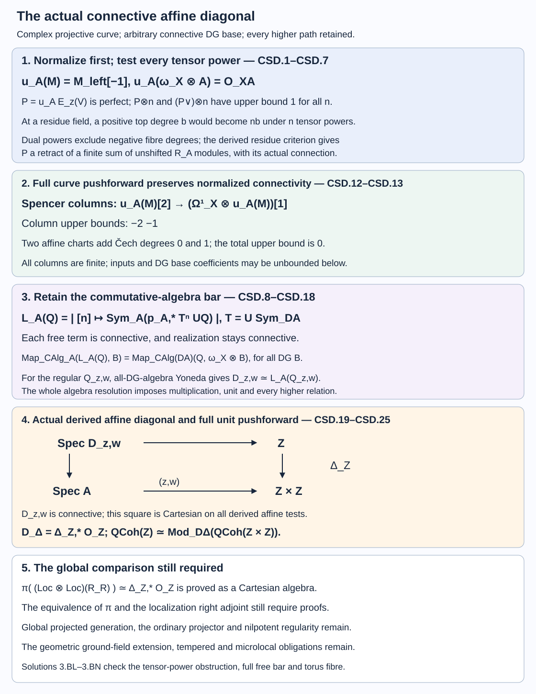
Figure 3.22. Panels1–3 show the finite-projectivity and connectivity mechanisms of (CSD.1)–(CSD.18). Panel4 is the actual Cartesian square (CSD.19), with its full quasicoherent module and diagonal-unit pushforward calculation (CSD.20)–(CSD.24). Panel5 distinguishes the proved algebra comparison (CSD.25) from the remaining global categorical equivalence and localization assertions.
3.79. Why tensor powers and the full algebra resolution matter
Exercise 3.BL. Over \(\mathbf C\), consider the normalized coefficient \(P=\mathbf C[-1]\), with its dual. Explain why the associated shifted operator objects can individually pass the right \(t\)-exact upper-bound test, but cannot be the image of a degree-zero representation under a right \(t\)-exact tensor functor.
Solution 3.BL. The normalized operator coefficient is \(M=P[1]=\mathbf C\), and its !-dual is \(P^\vee[1]=\mathbf C[2]\). Both are in cohomological degrees at most zero. However the second tensor power has
\[ M\otimes^!M=P^{\otimes2}[1]=\mathbf C[-1], \qquad H^1(\mathbf C[-1])=\mathbf C . \tag{CSD.26} \]
It is not connective. A degree-zero representation's second tensor power remains degree zero, so its image would have to be connective. This is the explicit failure. Testing only an object and its dual misses it; the uniform bound for all powers in (CSD.6) excludes it.
Exercise 3.BM. Let \(X=\mathbf P^1\). Apply \(L_A\) to the free commutative operator algebra generated by \(s_A(A)=\omega_X\otimes A\). Determine the resulting commutative DG algebra and explain why its negative degrees cannot be truncated away.
Solution 3.BM. Equation (CSD.10) gives \(L_A(\operatorname{Sym}_{\mathcal D_A}s_A(A))=\operatorname{Sym}_A(p_{A,*}s_A(A))\). The complete Čech–de Rham calculation (SDG.21)–(SDG.22), with the normalization (CSD.12), gives \(p_{A,*}s_A(A)=A[2]\oplus A\). Hence
\[ L_A(\operatorname{Sym}_{\mathcal D_A}s_A(A)) \simeq A[x,v],\qquad |x|=0,\quad |v|=-2, \qquad d x=d v=0. \tag{CSD.27} \]
The formula denotes the derived free symmetric \(A\)-algebra on those two cells; if \(A\) has a nonzero differential, it also retains that differential on coefficients. Even for \(A=\mathbf C\), every monomial \(v^n\) contributes nonzero degree \(-2n\), so the underlying complex is unbounded below. Testing against \(\mathbf C[\delta]/(\delta^2)\), \(|\delta|=-2\), includes maps with \(v\mapsto q\delta\). Replacing the algebra by its degree-zero ring would remove that parameter. This free algebra is a worked term of (CSD.9); it is not asserted to be the regular pair algebra.
Exercise 3.BN. For \(X=\mathbf P^1\), \(\widehat G=\mathbf G_m^r\) and the trivial point \(z\), determine the affine diagonal fibre. For \(B=\mathbf C[\delta]/(\delta^2)\), \(|\delta|=-2\), compute the component group and all positive homotopy groups, including \(r=0\).
Solution 3.BN. The Laurent coaction proof of Solution3.BK works with \(r\) exponents: its coefficient weights are \(\mathbf Z^r\). A tensor isomorphism is specified by the \(r\) commuting images of the weight basis; tensor powers and inverse weights determine every other component. In the symmetric endomorphisms of the unit those images commute coherently, with precisely the tensor exchange and unit constraints. Equivalently, repeat the full coend calculation on the \(r\)-fold tensor product of the Laurent representation category; its tensor functors and regular-algebra products separate the \(r\) weight coordinates. The full scalar and enriched bars retain every higher path. Equation (SDG.25) for each coordinate therefore gives
\[ \begin{gathered} D_{z,z}\simeq \mathbf C[u_1^{\pm1},\ldots,u_r^{\pm1}] \otimes \operatorname{Sym}_{\mathbf C}(\mathbf C^r[2]),\\ \pi_0\operatorname{Path}_{\mathcal Z(B)}(z_B,z_B) \simeq(\mathbf C^\times)^r\times\mathbf C^r,\qquad \pi_2\simeq\mathbf C^r,\qquad \pi_i=0\ (i\ge1,\ i\ne2). \end{gathered} \tag{CSD.28} \]
Each unit is \(u_i+q_i\delta\eta\); divide \(q_i\) by \(u_i\) to obtain the additive coordinate, as in (SDG.26). Each endomorphism complex has its sole negative degree \(-2\), which proves the displayed homotopy groups. For \(r=0\), the algebra is \(\mathbf C\) and the entire path space is contractible. This includes the empty product and its unit, rather than silently assuming a positive torus rank.
Free further reading is Arinkin, Gaitsgory, Kazhdan, Raskin, Rozenblyum and Varshavsky, The stack of local systems with restricted variation and geometric Langlands theory with nilpotent singular support, §§12.2–12.3, for the commutative-algebra and diagonal framework, and Lurie, Derived Algebraic Geometry, §2.5, for connective derived modules. The coefficient-projectivity, full algebra adjunction, connective diagonal and affine-module pushforward proofs used here are (CSD.1)–(CSD.25); the complete solutions are (CSD.26)–(CSD.28).
3.80. Reconstructing the entire derived torsor and its connection
Let \(H=\widehat G\), let \(A\) be any connective commutative DG \(\mathbf C\)-algebra, and let \(z\in\mathcal Z(A)\). Normalize its coefficient as in (CSD.1):
\[ \mathcal V_z(V)=\mathsf u_AE_z(V) \in\operatorname{QCoh}(X_A). \tag{TBF.1} \]
For each finite representation \(V\), (CSD.7) makes \(\mathcal V_z(V)\) locally a finite projective module over the full derived coordinate algebra. It retains the operator connection after the density side change. On the normalized left-module category, the product connection is the operator Leibniz rule. Thus a normalized commutative operator algebra is an ordinary commutative DG structure-sheaf algebra with that connection; the equivalence keeps all its derived multiplication maps and homotopies.
We reconstruct the torsor, including the derived bases and paths. Work first on an affine chart with coordinate algebra \(S=\mathcal O(U)\otimes A\). Write \(O=\mathbf C[H]\), with its left translation representation and commuting right regular coaction. Set
\[ T=\mathcal V_z(O)|_U\in\operatorname{CAlg}_S,\qquad \mathcal P_z|_{U_A}=\operatorname{Spec}_S T. \tag{TBF.2} \]
The regular representation is the filtered union of finite subrepresentations. A finite set of its elements lies in one such subrepresentation: expand its coactions using linearly independent coefficient functions; coassociativity shows that their finite span is stable, and the counit recovers the original elements. The exact invariant projection (HN.18) of The moduli stack of bundles, §4.5, splits its constant representation. Applying \(\mathcal V_z\) therefore makes \(T\) a filtered colimit of finite projective \(S\)-modules, with \(S\) a retract of \(T\).
Put \(S_0=H^0(S)\), \(T_0=H^0(T)\). For a finite projective derived module the cohomology is obtained by applying its degree-zero idempotent to a finite power of \(H^i(S)\). Filtered colimits preserve cohomology and tensor. Consequently
\[ \begin{gathered} T_0\text{ is faithfully flat over }S_0,\qquad H^i(T)=H^i(S)\otimes_{S_0}T_0,\\ H^i(M\otimes_S^LT)=H^i(M)\otimes_{S_0}T_0 \quad(M\in\operatorname{Mod}_S). \end{gathered} \tag{TBF.3} \]
Flatness follows because \(T_0\) is a filtered colimit of finite projectives. Faithfulness follows from the module retraction \(S_0\to T_0\to S_0\): a nonzero module cannot become zero after tensoring with a flat module containing \(S_0\) as a summand. The last identity is first the same idempotent calculation for each finite projective summand, then its filtered colimit. In particular tensoring with \(T\) is conservative on all unbounded complexes, not just connective ones.
The group change of variables \((g,h)\mapsto(g,g^{-1}h)\) identifies the diagonal left-translation action on \(H\times H\) with the action on its first factor. Its inverse is \((g,k)\mapsto(g,gk)\). These are actual equivariant algebraic maps, with their multiplication and unit identities. Applying \(\mathcal V_z\) gives
\[ T\otimes_S^LT \simeq T\otimes_{\mathbf C}O, \qquad \mathcal P_z\times_{U_A}\mathcal P_z\simeq \mathcal P_z\times H. \tag{TBF.4} \]
The right coaction is the one inherited from \(O\); thus the second equivalence is the actual right torsor identity. Equations (TBF.3)–(TBF.4) say that \(\mathcal P_z\) is an affine derived fpqc \(H\)-torsor. They retain the negative cohomology of its base. Its classical reduction is an ordinary \(H\)-torsor; that ordinary torsor's finite-presentation and smoothness properties follow by faithfully flat descent from \(H\), using the all-ring finite-presentation and torsor descent of the earlier bundle lesson, §§7.5–7.6.
For a finite representation \(V\), multiplication by the matrix \(\rho_V(g)^{-1}\) gives the equivariant change of variables \(O\otimes V\to O\otimes V_{\rm triv}\), with inverse multiplication by \(\rho_V(g)\). Applying \(\mathcal V_z\) produces the actual tensor trivialization
\[ T\otimes_S^L\mathcal V_z(V) \simeq T\otimes_{\mathbf C}V . \tag{TBF.5} \]
Its tensor, dual, permutation and representation-map comparisons come from these same matrix identities. Its right descent coaction is precisely the given \(H\)-representation. Faithfully flat descent therefore recovers
\[ \mathcal V_z(V)\simeq \mathcal P_z\times^H V. \tag{TBF.6} \]
Here and below the associated module includes its full derived descent data.
For completeness, this descent is valid for arbitrary unbounded modules and all maps. After an additional tensor with the faithfully flat algebra, the augmented Amitsur complex has the contraction inserting its unit in the first factor. For a module bounded below, the cohomology and Amitsur double complex has only finitely many terms in each total degree; ordinary faithfully flat exactness in every row proves the augmentation is an equivalence. For an arbitrary module, write it as the inverse limit of its lower good truncations. This limit recovers the module: in each fixed cohomology degree the inverse system is eventually constant, so the possible first derived-limit term vanishes. Formula (TBF.3) shows that flat scalar extension commutes with these truncations and their limit, degree by degree. Total limits commute with this inverse limit. Applying the bounded-below comparison to every truncation thus proves the unbounded comparison. The same argument for mapping complexes proves full faithfulness; tensor products and algebra structures descend by their full free-module and free-algebra bars. This proves the descent used in (TBF.6) with every higher compatibility.
The algebra \(T\) also retains its connection. On a coordinate chart its tangent operator satisfies \(\partial(tt')=(\partial t)t'+t(\partial t')\), commutes with the internal differential, and annihilates the unit. The right \(H\)-coaction is horizontal because it came from a representation-map coaction. The torsor identities (TBF.4)–(TBF.5) are horizontal too. On a curve the exterior square of the relative one-form module is zero, so curvature is zero; the full operator relations already encode this integrability and its coherent derived maps. The construction glues over the original operator descent on \(X_A\).
Conversely an affine derived \(H\)-torsor on \(X_A\) with this horizontal operator algebra gives the associated finite projective coefficient modules and their flat connections by (TBF.5) and full descent. Dual associated modules and their evaluation and coevaluation descend on the same full Amitsur diagram. Their two triangles descend as well, so the associated modules are dualizable and hence perfect on an affine chart. After faithfully flat reduction each residue fibre is an ordinary vector space in degree zero; criterion (CSD.4) makes the associated module finite projective over the full DG chart. Finite representations are semisimple by the complete reducibility proof in the earlier bundle lesson, §4.5. Their associated-module functor therefore preserves finite exact sequences and extends continuously to the full derived representation category by the representable module bar. Tensor compatibility extends on that same bar. Normalizing its operator modules back by \([1]\) gives a right \(t\)-exact \(E\): a connective representation complex is built by colimits from nonnegative shifts of degree-zero representations, whose normalized coefficient modules are connective. Its corresponding operator modules are those coefficients shifted by \([1]\). This gives
\[ \mathcal Z(A)\simeq \{\text{derived }H\text{-torsors on }X_A \text{ with flat operator connection}\}^{\simeq}. \tag{TBF.7} \]
The two inverse comparisons are the actual universal trivialization (TBF.5) and its fpqc descent. A tensor isomorphism induces the right-equivariant horizontal algebra map on \(T\); conversely such a torsor isomorphism induces the associated-module tensor isomorphism. These assignments are inverse on mapping spaces by the full descent comparison, hence on every higher path. The equivalence is compatible with arbitrary connective derived scalar changes by the original coefficient comparison and the derived tensor in (TBF.2). It is an equivalence of full infinity-groupoids, not merely a classical Tannakian statement.
3.81. A uniform bound for every flat bundle
We need a bounded bundle locus rather than the unrestricted bundle stack. First a regular connection on a line bundle \(L\) on a smooth projective curve over an algebraically closed characteristic-zero field forces \(\deg L=0\). Here is the algebraic residue argument, including the global residue input.
For a rational differential on such a curve,
\[ \sum_{p\in X}\operatorname{Res}_p(\alpha)=0. \tag{TBF.8} \]
To prove it, choose a nonconstant rational function \(t\). Its function-field extension is finite and separable. It gives a finite morphism \(f:X\to\mathbf P^1\). One can check finiteness directly: after multiplying a field basis by polynomial denominators, make its elements integral over \(k[t]\). The integral closure is contained in the trace-dual lattice of this basis. To check nonsingularity of the separable trace pairing, extend scalars to an algebraic closure and successively split the separable minimal polynomials of a finite set of field generators. The field algebra becomes a finite product of copies of that closure. Trace is the sum of its coordinates, so its multiplication pairing is the diagonal dot product. It is nonsingular there and therefore over the original field by the determinant test. Thus that dual lattice is a finite \(k[t]\)-module; its submodule is finite by Noetherianity. Do the same over \(k[t^{-1}]\) and glue the two normalizations. Their normal curve is the original \(X\): a local DVR has a unique centre on a proper curve by the valuative criterion, and these centres give inverse morphisms between the two normal proper curves with that common function field. The inverse composites agree on their generic points and hence everywhere by separatedness.
Write \(\alpha=a\,dt\), and take the rational differential \(\operatorname{Tr}_{k(X)/k(t)}(a)\,dt\) on \(\mathbf P^1\). At a point of the target with uniformizer \(u\), the finite completed source algebra is the product of the completed local rings above it. This follows by lifting the finitely many orthogonal idempotents in the complete finite semilocal algebra; equivalently use the Chinese remainder decompositions modulo each power of \(u\) and pass to their compatible inverse limit. At one source point choose a parameter \(v\) with \(u=v^e\). It exists because initially \(u=v_0^e b(v_0)\), with \(b\) a unit, and its formal \(e\)-th root is obtained coefficient by coefficient; \(e\) is invertible in characteristic zero. In that factor, for a Laurent differential \(\sum_n a_n v^n\,dv\),
\[ \operatorname{Tr}(v^m)= \begin{cases}e\,u^{m/e},&e\mid m,\\0,&e\nmid m,\end{cases} \qquad \operatorname{Res}_{u=0}\operatorname{Tr}(\alpha) =\operatorname{Res}_{v=0}(\alpha). \tag{TBF.9} \]
The trace formula is the sum over the \(e\) substitutions \(v\mapsto\zeta v\). Using \(dv=v^{1-e}du/e\), only the term \(n=-1\) contributes to the residue on either side. Residue is independent of the chosen source uniformizer: under a change between two source uniformizers v and w, every \(v^n\,dv\) except \(dv/v\) is an exact Laurent differential and has zero residue after substitution; \(dv/v\) becomes \(dw/w\) plus a regular logarithmic derivative of a unit. Summing over the source factors gives the local trace–residue identity. Finally partial fractions prove that a rational differential on \(\mathbf P^1\) has total residue zero: each finite simple-pole coefficient occurs with its negative at infinity, while polynomial terms and higher poles contribute none. Apply that identity to the trace differential to prove (TBF.8).
Choose a nonzero rational section \(s\) of \(L\), and write \(\nabla s=s\otimes\alpha\). In a regular local frame \(e\), put \(s=h e\) and \(\nabla e=e\otimes\beta\), with \(\beta\) regular. The connection Leibniz rule gives
\[ \alpha=dh/h+\beta,\qquad \operatorname{Res}_p(\alpha)=\operatorname{ord}_p(h),\qquad \deg L=\sum_p\operatorname{ord}_p(h)=0 . \tag{TBF.10} \]
The middle identity follows by writing \(h=v^m b(v)\), with \(b\) a unit. The last equality is (TBF.8), together with the divisor-degree definition of the earlier bundle lesson, §3.1. Since integers inject into the field in characteristic zero, the resulting integer degree is zero.
A connection on a rank-\(n\) bundle \(E\) induces the determinant connection by the tensor Leibniz rule; locally its one-form is the trace of the connection matrix. Thus
\[ \deg E=0,\qquad \deg F=0\quad\text{for every horizontal subbundle }F\subset E. \tag{TBF.11} \]
The second assertion applies the same determinant construction to its induced regular connection.
Let the Harder–Narasimhan slopes be \(\lambda_1>\cdots>\lambda_\ell\), with positive ranks \(r_i\). Their existence, uniqueness and slope Hom vanishing are proved in the earlier bundle lesson, §N3.1 and (HN.1); the filtration proof there is explicitly used for all genera in §4.1. At a proper filtration prefix \(F_j\), the second fundamental form is structure-sheaf linear:
\[ F_j\longrightarrow(E/F_j)\otimes\Omega_X^1 . \tag{TBF.12} \]
The derivative of a scalar times a section lies in \(F_j\) and therefore disappears in the quotient. If \(\lambda_j-\lambda_{j+1}>2g-2\), (HN.1) makes this form zero, so \(F_j\) is horizontal. But the mean slope of any proper prefix of a strictly decreasing degree-zero filtration is positive: its mean exceeds the complementary mean, and their weighted mean is zero. This contradicts (TBF.11). Put \(c=\max(0,2g-2)\). We have proved
\[ \lambda_j-\lambda_{j+1}\le c\quad(j<\ell),\qquad -\frac{(n-1)c}{2}\le\lambda_\ell \le\lambda_1\le\frac{(n-1)c}{2}. \tag{TBF.13} \]
Here is the exact bound. Since \(\lambda_1-\lambda_i\le(i-1)c\) and \(\sum r_i\lambda_i=0\), \[ \lambda_1\le\frac c n\sum_{i=1}^{\ell}r_i(i-1) \le \frac c n(\ell-1)(n-\ell/2) \le \frac{(n-1)c}{2}. \tag{TBF.14} \]
The middle maximum assigns every rank beyond the mandatory one in each term to the last term. The difference between \(n(n-1)/2\) and that maximum is \((n-\ell)(n-\ell+1)/2\), which is nonnegative. Dualizing gives the lower bound. If \(g\le1\), any strictly positive gap would contradict the first argument, so \(E\) is semistable of degree zero. These statements hold over every algebraically closed characteristic-zero extension field.
3.82. Full derived spectral coefficients have bounded projective frame modules
Choose a faithful closed representation \(\rho:H\hookrightarrow GL_n\), with \(n\ge1\), and choose \(x\in X(\mathbf C)\). For the bundle \(\mathcal P_z\times^H\mathbf C^n\), put
\[ B_n=(n-1)\max(g-1,0),\qquad m=B_n+2g,\qquad b=n(m+1-g)>0 . \tag{TBF.15} \]
Every geometric fibre is a regular flat bundle by (TBF.7), and has minimum slope at least \(-B_n\) by (TBF.13). Thus \(\mu_{\min}(E(mx-y))\ge m-1-B_n>2g-2\) for every geometric point \(y\). Duality and (HN.1), as in the earlier bundle lesson §4.1, give \(H^1(E(mx-y))=0\). The exact evaluation sequence gives generation of \(E(mx)\), and \(H^1(E(mx))=0\). Riemann–Roch gives the rank \(b\) in (TBF.15). This proves the uniform ordinary fibre statements; we now retain the full derived coefficients.
Let \(\mathcal F_m=\mathcal D_X\otimes_{\mathcal O_X}\mathcal O_X(-mx)\), in left conventions. It is a compact coherent operator module by §3.45. Its operator dual is compact by proper coherent duality. Define the actual compact Ran object
\[ T_m=\operatorname{ins}_{\mathrm{id}_{\{1\}}} \bigl(\rho\otimes\mathbb D_X\mathcal F_m[-1]\bigr). \tag{TBF.16} \]
Full operator pairing (KG.1), and the induced-module adjunction from the left regular operator module, give
\[ \begin{aligned} F_z(T_m) &\simeq \operatorname{RHom}_{\mathcal D_A} (\mathcal F_m\otimes A,E_z(\rho))[-1]\\ &\simeq R\Gamma(X_A,\mathcal V_z(\rho)(mx)). \end{aligned} \tag{TBF.17} \]
In the last equality the left module of \(E_z(\rho)\) is \(\mathcal V_z(\rho)[1]\); this cancels the preceding \([-1]\). The induced-module adjunction sends an operator-linear map from \(\mathcal D_X\otimes\mathcal O(-mx)\) to its restriction on the generator \(\mathcal O(-mx)\), and extends such a map by the actual operator action. Its free operator resolution and full mapping complex give the same identity for all unbounded inputs. Thus (TBF.17) is an identity of the actual global derived module, with its coherent scalar maps.
Since \(T_m\) is compact and dualizable in the full Ran category, (SPC.10) makes this \(A\)-module perfect. Its every residue-field fibre has only degree-zero cohomology, of dimension \(b\), by the uniform fibre calculation and full nonflat coefficient base change (SPC.9). Criterion (CSD.4) therefore proves
\[ W_z=R\Gamma(X_A,\mathcal V_z(\rho)(mx)) \text{ is finite projective of rank }b\text{ over }A . \tag{TBF.18} \]
This proves finite projectivity over the full DG base, rather than discarding it in favour of \(H^0(A)\).
The actual evaluation map \(W_z\otimes_A\mathcal O_{X_A}\to \mathcal V_z(\rho)(mx)\) has finite projective kernel. Indeed its source and target are locally finite projective by (CSD.7) and (TBF.18). Its homotopy fibre is perfect. On every residue field of a curve chart the evaluation is an ordinary surjection, by generation just proved and the actual scalar comparison (TBF.17). Its fibre is consequently concentrated in degree zero there. Apply (CSD.4) on that chart. We obtain the full derived sequence
\[ K_z\longrightarrow W_z\otimes_A\mathcal O_{X_A} \longrightarrow \mathcal V_z(\rho)(mx), \quad K_z\text{ finite projective of rank }b-n. \tag{TBF.19} \]
A frame of \(W_z\) is a derived \(GL_b\)-torsor. On a locus where \(H^0(W_z)\) is free, lift a basis to \(A^b\to W_z\). Its perfect cone has zero residue fibres, so (CSD.4) makes it the zero module; alternatively the derived splitting proof (CSD.5) and the residue rank kill its complementary summand. It is an equivalence. Such principal opens cover the base; all their frame transformations and higher maps are retained. Pulling back to this frame torsor turns (TBF.19) into a full derived quotient with \(b\) fixed generators.
For the classical reduction, these frames all belong to one finite-type ordinary atlas. Let \(V=V_{n,0,m}\) denote the open framed Quot scheme formed from \(\mathcal O_X(-mx)^b\), using any fixed very ample line to measure the Hilbert polynomial of rank n and degree zero. The construction of the earlier bundle lesson, §1.2, applies to this fixed source bundle: the point twist fixes the section-frame size, while the very ample line only measures the Quot polynomial. The preceding generation and cohomology rank put every reduced fibre in this one atlas. Let
\[ Q=V\times_{\operatorname{Bun}_{GL_n}}\operatorname{Bun}_H . \tag{TBF.20} \]
The earlier bundle lesson, §4.9, proves \(GL_n/H\) affine of finite presentation and constructs finite polynomial coordinates for its sections. Its §4.11 then proves that the pullback in (TBF.20) is an affine finite-presentation scheme over \(V\). Hence \(Q\) is finite type; it is smooth over the bounded bundle open as a frame-torsor atlas. The construction works over every ordinary coefficient ring, including nonreduced ones, and retains the specified extension to the framed \(GL_n\)-bundle. Its image is the open where the associated bundle has degree zero, generation at \(m\) and vanishing of \(H^1\) at \(m\). Every classical spectral torsor lies in that image, in every component and genus. This supplies a single bounded ordinary bundle atlas and the actual full-DG frame modules above it.
This has not yet proved that the full connection functor over \(Q\) is represented by a derived affine scheme, nor the required global quasicoherent compact generation and tensor comparison. Those derived connection-atlas and global-category assertions still require proofs. The ordinary bundle atlas alone is not their substitute. The actual full frame construction (TBF.16)–(TBF.19) is the derived coefficient input for that next step.
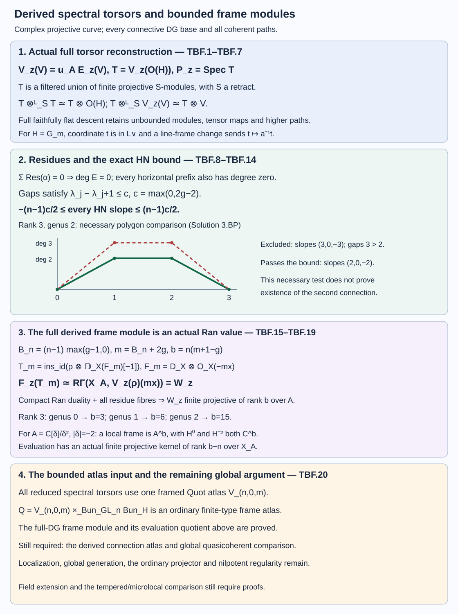
Figure 3.23. Panel1 gives the torsor identities of (TBF.1)–(TBF.7), including the dual coordinate for the line-frame torsor. Panel2 draws the exact two rank-three genus-two HN polygons from Solution3.BP; the dashed polygon is excluded, while the solid polygon only passes a necessary test. Panel3 gives the full derived frame and evaluation calculation (TBF.15)–(TBF.19). Panel4 records the bounded ordinary atlas (TBF.20) and the derived/global assertions still requiring proofs.
3.83. Torsor coordinates, a failed slope gap and the frame rank
Exercise 3.BO. Let \(H=\mathbf G_m\) and \(S=A\otimes\mathcal O(U)\), where \(A\) is arbitrary connective. Let \(L\) be the finite projective rank-one coefficient of the weight-one representation. Compute the reconstructed torsor algebra and the universal trivialization, including negative weights.
Solution 3.BO. Laurent weight decomposition gives
\[ T=\bigoplus_{j\in\mathbf Z}L^{\otimes(-j)}, \qquad L^{\otimes(-j)}=(L^\vee)^{\otimes j}\quad(j\ge0). \tag{TBF.21} \]
Its multiplication uses the actual tensor and inverse-line evaluations. For left translation on the regular functions, \(t^j\) has representation weight \(-j\), explaining the dual sign in (TBF.21). A local frame \(\ell\) identifies the algebra with \(S[t,t^{-1}]\), with \(t\) corresponding to the dual frame \(\ell^\vee\); a frame change \(\ell'=a\ell\) sends \(t'=a^{-1}t\). This is the line's actual frame torsor algebra, with its descent transition. The two-copy torsor change of variables is \(t_1,t_2\mapsto t_1,t_1^{-1}t_2\), with inverse \(t_2=t_1(t_1^{-1}t_2)\). The weight-\(j\) trivialization sends \(\ell^j\) to \(t^{-j}\), and its inverse sends \(1\) to \(t^j\ell^j\). These formulas hold in the full DG algebra and all integer weights; they do not replace \(A\) by its degree-zero ring.
Exercise 3.BP. For rank \(3\) and genus \(2\), test the decreasing rank-one slope triples \((3,0,-3)\) and \((2,0,-2)\) against the flat-bundle bound. What does the test prove about existence of connections?
Solution 3.BP. Here \(c=2\), \(B_3=2\), and degree zero says that the three slopes sum to zero. The first triple has a gap \(3>2\); the corresponding HN prefix would be horizontal by (TBF.12), yet have positive degree, contradicting (TBF.11). It cannot have a regular connection. The second triple has both gaps equal to \(2\), satisfies the exact extremal bound and passes this necessary test:
\[ (3,0,-3)\text{ is excluded},\qquad (2,0,-2)\text{ satisfies } \lambda_1\le2,\quad\lambda_3\ge-2 . \tag{TBF.22} \]
Passing the bound does not prove existence of a bundle or connection with the specified filtration. No such existence assertion was used in the proof.
Exercise 3.BQ. Compute \(m,b\) in (TBF.15) for \(n=3\) in genera \(0,1,2\). Explain why the full derived frame rank remains that number over \(A=\mathbf C[\delta]/(\delta^2)\), \(|\delta|=-2\).
Solution 3.BQ. The exact values are
\[ \begin{array}{c|ccc} g&0&1&2\\ \hline B_3&0&0&2\\ m&0&2&6\\ b&3&6&15 \end{array} \tag{TBF.23} \]
The inequalities used above are \(m-1-B_3>2g-2\): respectively \(-1>-2\), \(1>0\), and \(3>2\). Thus the global generation and \(H^1\)-vanishing tests hold in all three cases. Criterion (CSD.4) and (TBF.18) make the frame module locally \(A^b\), including its negative coefficient degrees. On such a frame its cohomology is
\[ H^0(W_z)=\mathbf C^b,\qquad H^{-2}(W_z)=\mathbf C^b,\qquad H^i(W_z)=0\quad(i\ne0,-2). \tag{TBF.24} \]
In particular the frame module has finite projective rank \(b\) over \(A\), but is not a degree-zero vector space. Replacing it by \(H^0(W_z)\) would discard the nonzero negative degree and the full derived scalar comparisons.
Free further reading is Arinkin and Gaitsgory, Singular support of coherent sheaves, and the geometric Langlands conjecture, §10.3, for the boundedness question, and Gaitsgory, Outline of the proof of the geometric Langlands conjecture for GL(2), §4.3, for spectral localization. The full derived torsor reconstruction is (TBF.1)–(TBF.7), the uniform connection slope argument is (TBF.8)–(TBF.14), and the full derived bounded frame calculation is (TBF.15)–(TBF.20). The three complete solutions are (TBF.21)–(TBF.24).
3.84. Proper curve cohomology over every connective DG base
Let \(A\) be a connective commutative DG \(\mathbf C\)-algebra. A vector bundle below means a finite projective module over the full local DG coordinate algebra. We first prove the cohomology assertion needed for an arbitrary bundle, without assuming that it already has a connection.
Write \(E_0=E\otimes_AH^0(A)\). The local finite-projective retraction gives \[ H^i(E)=E_0\otimes_{H^0(A)}H^i(A). \tag{DCA.1} \] This is an identity of sheaves, compatible with scalar multiplication. Use the two affine hyperplane complements of the earlier bundle lesson, §1.1. Their intersection is affine. The full cohomology complex is the fibre \[ R\Gamma(X_A,E)= \operatorname{fib}\!\left( E(U_A)\oplus E(V_A)\longrightarrow E((U\cap V)_A) \right). \tag{DCA.2} \] The affine terms are the actual modules. A finite fibre in a stable category is also a finite colimit, so tensoring with any DG \(A\)-algebra commutes with this formula. In particular this proves full derived base change, including nonflat changes and unbounded coefficient complexes.
Choose an effective hyperplane divisor \(D_0\), and a sufficiently large positive integer \(j\). Put \(D=jD_0\). The ordinary bundle \(E_0\) descends to a finitely generated coefficient algebra by the idempotent-and-gluing construction in the earlier bundle lesson, §1.1. Coherent sheaves on projective schemes: Serre's theorems, Theorem 2.2, makes the model's first cohomology vanish for large \(j\). Its two-term finite projective complex (BA.1) then has a surjective differential onto its projective degree-one term. Split that surjection; its remaining kernel is finite projective. This proves, after extension to \(H^0(A)\), that for every module \(I\), \(H^1(E_0(D)\otimes I)=0\) and its sections are \(V_0\otimes I\), with \(V_0\) finite projective. The splitting tests modules as well as algebras.
Apply (DCA.1) to (DCA.2). There are only two Čech columns. The high-twist vanishing kills the second column on cohomology and gives, even if \(A\) is unbounded to the left, \[ H^iR\Gamma(X_A,E(D))= V_0\otimes_{H^0(A)}H^i(A). \tag{DCA.3} \] There is no convergence across infinitely many Čech degrees. Locally on the coefficient base, lift a basis of \(V_0\) to degree-zero section classes and hence to a map \(A^r\to R\Gamma(E(D))\). Formula (DCA.3) and its scalar multiplication identify this map on every cohomology group. Its cone is acyclic. Thus \(K_0=R\Gamma(E(D))\) is finite projective over the full \(A\).
The divisor \(D\) is finite over \(\mathbf C\). A finite projective module over \(\mathcal O_D\otimes A\), restricted to \(A\), is finite projective: it is a retract of finitely many copies of the finite free \(A\)-module \(\mathcal O_D\otimes A\). Consequently \(K_1=R\Gamma(D_A,E(D)|_{D_A})\) is finite projective. The effective-divisor sequence is exact after derived scalar extension, because the fixed divisor sequence over the field is exact and its quotient is coefficient-flat. It gives \[ \begin{gathered} K_E=R\Gamma(X_A,E)\simeq [\,K_0\xrightarrow{\delta}K_1\,],\\ K_0\text{ in relative degree }0,\qquad K_1\text{ in relative degree }1 . \end{gathered} \tag{DCA.4} \] “Relative degree” retains the internal negative degrees of \(A\). Both terms are projective \(A\)-modules; this is not a complex over the degree-zero quotient. Formula (DCA.2) gives \[ \begin{gathered} K_E\text{ perfect of relative Tor amplitude }[0,1],\\ K_E\otimes_A^{\mathbf L}B \simeq R\Gamma(X_B,E\otimes_A^{\mathbf L}B) \quad\text{for every connective }B . \end{gathered} \tag{DCA.5} \] These identifications include maps and their higher homotopies. Different divisor choices compare through their common larger divisor and the same actual cohomology fibre. The ordinary finite-complex argument used here is proved in Base change and the Grothendieck complex, Lemma 3.1 and Theorem 3.2; (DCA.1)–(DCA.5) supply its full DG extension.
3.85. Connections as an affine derived nullhomotopy scheme
Fix a derived \(H\)-torsor \(P\) on \(X_A\), with \(H=\widehat G\), and keep a specified identification of its underlying torsor. Its adjoint bundle is finite projective by the associated-module construction (TBF.5). The Atiyah extension is \[ \operatorname{ad}(P)\longrightarrow \operatorname{At}(P)\longrightarrow T_{X_A/A}, \qquad F=\operatorname{ad}(P)\otimes\Omega^1_{X_A/A}. \tag{DCA.6} \] Here \(\operatorname{At}(P)\) consists of \(H\)-invariant first-order derivations of the torsor algebra, with their derivation on the base. This definition retains the internal DG differential. Étale-locally a torsor frame identifies it with the direct sum of the vertical adjoint module and the tangent line. In two frames, let \(g_{ij}\) take coordinates in frame \(j\) to coordinates in frame \(i\). The coefficient one-forms of a connection satisfy \[ \beta_i=\operatorname{Ad}(g_{ij})\beta_j -(d_Xg_{ij})g_{ij}^{-1}. \tag{DCA.7} \] Differentiating \(g_{ij}g_{jk}=g_{ik}\) proves the affine cocycle identity. It also shows that two connections differ by a section of \(F\). Thus these local direct sums glue the extension (DCA.6), and its splittings are exactly compatible connection data.
We check that this describes full operator connections, rather than only first-order classical data. On an étale coordinate chart the tangent module has one generator \(\partial\). A horizontal derivation \(D\) of the torsor algebra obeys \(D(rs)=D(r)s+rD(s)\), commutes with the internal differential and with the \(H\)-coaction, and restricts to \(\partial\) on the curve algebra. It extends to every operator power. Its formal transport is \[ \exp(\epsilon D)=\sum_{q\geq0}\frac{\epsilon^qD^q}{q!}, \qquad \exp(\epsilon D)\exp(\epsilon' D)= \exp((\epsilon+\epsilon')D). \tag{DCA.8} \] The iterated Leibniz formula proves multiplicativity coefficient by coefficient. The second identity is the binomial formula; every fixed coefficient uses finitely many terms. Horizontality and commutation with the internal differential hold term by term. Conversely, differentiating a formal transport satisfying composition recovers \(D\); differentiating its composition equation recursively forces the displayed coefficient \(D^q/q!\). Under a coordinate change, use the difference of the new coordinate at the transported point and its value at the original base point as the new formal parameter. The chain rule identifies the first derivative, and composition is the composition of the same infinitesimal curve arrows. The recursive uniqueness therefore identifies the transports in the two coordinates. This proves uniqueness of its higher jet relations. Curvature is a two-form, and \(\Omega^2_{X_A/A}=0\), so every such curve connection is integrable.
These are identities of DG maps and natural in coefficient algebras. Apply them degree by degree to simplicial free algebra resolutions, retaining their face and degeneracy maps; the full free-algebra bar reconstruction is proved in (CSD.11)–(CSD.12). Thus the mutually inverse constructions also apply to enriched mapping spaces. Locally the anchor condition can be imposed strictly: the tangent line is projective and the map from the local Atiyah direct sum to that line is split surjective in every degree. Its homotopy fibre over the identity is therefore the translated mapping complex of the vertical summand. The smooth DG derivation calculation in §3.86 justifies this projective mapping complex for the torsor algebra as well. Full descent of these complexes and their affine transition maps gives the global space of splittings. Thus (DCA.8) identifies the entire splitting space with the entire operator-connection fibre, including higher paths.
Put \(K=R\Gamma(X_A,F)\). Let \(a\in K[1]\) be the degree-zero cocycle of local zero connections. With the Čech convention \((\delta\beta)_{ij}=\operatorname{Ad}(g_{ij})\beta_j-\beta_i\), its representative is \(-(d_Xg_{ij})g_{ij}^{-1}\); equation (DCA.7) is \(\delta\beta+a=0\). Refinement of the cover computes the same derived class. The global splitting space is \[ \operatorname{Conn}_A(P) \simeq \operatorname{Path}_{\Omega^\infty(K[1])}(a,0). \tag{DCA.9} \] This also follows directly by applying the global mapping complex from the tangent line to (DCA.6): the connecting map takes the identity of the line to \(a\). Its homotopy fibre is the displayed nullhomotopy space.
Use (DCA.4) for \(F\). After a Zariski cover of the coefficient base the two projective terms are free. The model and class take the form \[ K=[\,K_0\xrightarrow{\delta}K_1\,], \qquad a\in Z^0(K_1),\qquad \delta\beta+a=0 . \tag{DCA.10} \] The last equality is to be interpreted with a nullhomotopy over a DG coefficient algebra. A cycle representing the class has no component in positive degree of \(K_0\), since \(A\) is connective. Define the actual commutative DG coordinate algebra \[ \begin{gathered} D_A(P)= \operatorname{Sym}_A \bigl(K_0^\vee\oplus K_1^\vee[1]\bigr),\\ d(\xi)=\langle\xi,\delta t+a\rangle \quad(\xi\in K_1^\vee[1]). \end{gathered} \tag{DCA.11} \] The variables \(t\) have relative degree zero and the relation variables \(\xi\) have relative degree minus one. The differential includes the internal coefficient differential. Its square is zero because the matrix \(\delta\) and the vector \(a\) are closed.
The universal property of the free commutative algebra computes maps out of (DCA.11). They choose degree-zero cycles \(t_B\), together with degree-minus-one values \(h_B\) for its relation variables, satisfying \[ d_Bh_B=\delta t_B+a_B . \tag{DCA.12} \] The same equations in every simplicial mapping model give the entire nullhomotopy space in (DCA.9). Equivalently the algebra is the derived pushout of the two free algebras describing the affine linear section \(\delta t+a\) and the zero section. This free-algebra pushout proves the assertion on all mapping spaces without reducing it to solutions over ordinary rings. Projective generators are handled by their finite free retractions. The canonical identifications through (DCA.9) glue the local affine schemes.
Hence the forgetful connection fibre of every such torsor is represented by a connective affine derived scheme. Its relative presentation has finitely many generators in degrees zero and minus one, and \[ \begin{gathered} D_A(P)\otimes_A^{\mathbf L}B \simeq D_B(P_B),\\ L_{D_A(P)/A}\text{ perfect of amplitude }[-1,0]. \end{gathered} \tag{DCA.13} \] The first identity uses the actual cohomology and class base changes (DCA.5); it permits nonflat \(B\). For the second, derivations from the free presentation are specified on precisely these two finite projective generator modules, with the derivative of \(\delta t+a\) as their differential. This proves the stated cotangent complex and its amplitude. It also proves finite derived presentation, since the displayed finite free-cell construction commutes with filtered coefficient colimits. A free retraction and a finite coefficient cover give the same conclusion for projective generators.
3.86. The bounded ordinary frame scheme represents the full derived frame functor
Let \(n,m,b\) have their exact values in (TBF.15). Denote by \(\mathcal F(A)\) the space of derived \(H\)-torsors \(P\) for which \(E=P\times^H\mathbf C^n\) has degree-zero fibres, \(E(mx)\) is generated and has vanishing first fibre cohomology, together with a frame of its sections. Equations (DCA.5) and (CSD.4) prove \[ \begin{gathered} R\Gamma(X_A,E(mx))=W_P \text{ finite projective of rank }b,\\ A^b\xrightarrow{\sim}W_P,\qquad \mathcal O_{X_A}^b\longrightarrow E(mx) \text{ a derived quotient with projective kernel}. \end{gathered} \tag{DCA.14} \] Indeed the proper cohomology complex is perfect and each residue fibre has only degree-zero cohomology of dimension \(b\). The evaluation fibre is perfect and each of its residue fibres is an ordinary kernel. These are exactly the hypotheses of (CSD.4).
The scheme \(Q\) in (TBF.20) represents this functor on all ordinary rings. We now prove that its natural derived functor \(A\mapsto\operatorname{Map}(\operatorname{Spec}A,Q)\) represents \(\mathcal F\) as well.
First we establish the infinitesimal calculation for DG ideals. For a smooth finite-type algebra over \(\mathbf C\), the standard smooth presentations are proved in Formally smooth, unramified and étale ring maps, §§4–5. Locally their equations \(f_1,\ldots,f_c\) have an invertible \(c\)-column Jacobian minor. These equations have a free Koszul DG resolution. Here is an exactness check. At a closed point of the localized polynomial ring, its completion is a power-series ring by Completion, formula (12). The formal change from the pivot variables to the \(f_i\), retaining the other variables, is invertible: solve its linear part by the invertible Jacobian and then solve each homogeneous degree by that same inverse matrix. In the completed ring the Koszul complex is therefore the complex of distinct coordinate variables. Its exactness follows successively from multiplication by each variable and its quotient. Completion is faithfully flat by the same lesson, Theorem 3.2, so the original localized Koszul complex is exact. All its possible negative homology modules are finite. A nonempty support has a closed complex point by The Nullstellensatz and Jacobson rings, Theorem 2.1, applied to its finite-type localized coordinate algebra. The closed-point checks prove exactness everywhere.
For a square-zero DG extension with ideal \(I\), lifting a map from this resolution and subtracting two lifts linearizes its equations. Products of two corrections vanish. The correction complex is obtained by mapping the Jacobian differential complex into the full ideal \(I\). Its pivot block is contractible; the remaining summand is the complex of maps from the projective differential module into \(I\). Applying this calculation in every mapping simplex proves the full derived derivation space, including higher homotopies. At the identity of \(H\) it gives \[ \text{based infinitesimal }H\text{-points} \simeq\Omega^\infty(\mathfrak h\otimes I). \tag{DCA.15} \] Comultiplication makes the correction addition, and conjugation gives the adjoint transition. The same calculation applies to twisted square-zero extensions: the defect of tentative lifts is the connecting cocycle in the correction complex; all choices and homotopies differ by that complex. Étale equations have an invertible full Jacobian, so their correction complex is contractible and their lifts, including coherent identifications, are unique.
Repeat the earlier bundle lesson's square-zero Čech calculation (DS.3)–(DS.7), now with the full ideal complex \(I\). The polynomial product identities used there hold in every degree, and the additive correction complexes have just been proved. Totalization therefore gives the full deformation complex \[ T_P\operatorname{Bun}_H= R\Gamma(X_A,\operatorname{ad}(P))[1]. \tag{DCA.16} \] The defect is its degree-one obstruction class; once corrected, the space of lifts is a torsor for \(\Omega^\infty(T_P\otimes_A I)\). This includes nontrivial higher paths of lifts. Étale descent and (DCA.2) compare the cover computation with the proper two-term complex. No ordinary truncation of \(I\) is made.
A frame of \(W_P\) has infinitesimal changes \(\operatorname{End}_A(W_P)\). An infinitesimal bundle automorphism acts on these sections. Combining that action with (DCA.16) gives \[ T_{(P,\mathrm{frame})}\mathcal F= \operatorname{Cone}\!\left( R\Gamma(X_A,\operatorname{ad}(P)) \longrightarrow\operatorname{End}_A(W_P) \right). \tag{DCA.17} \] The first complex has relative degrees zero and one; its cone has relative degrees minus one and zero. This formula follows also by fixing the bundle lifts in the preceding Čech calculation and adjoining the degree-zero frame changes; frame changes transform under exactly the displayed automorphism map.
Over an ordinary field, an adjoint infinitesimal automorphism acting trivially on all sections acts trivially on \(E(mx)\), because those sections generate. The differential of the closed representation is injective: the coordinate-algebra surjection makes the differential-module map surjective, and dualizing at the identity gives the injection. The automorphism is therefore zero. There is no degree-one term in (DCA.17), since the curve has no degree-two adjoint cohomology. Thus every residue fibre of that perfect cone is in degree zero. Criterion (CSD.4) makes it finite projective on the ordinary universal \(Q\).
The ordinary \(Q\) is smooth. The bundle lifting argument of the earlier lesson, §2.2, has no curve obstruction. On the unchanged bounded open, the section module of a lifted bundle is finite projective by (BA.2) and reduces to the original section module. A basis lifts across a square-zero coefficient ideal: lift its finitely many vectors, and a local inverse matrix lifts because its reduced determinant is a unit. The local lifting problems glue over an affine coefficient scheme by affine vanishing for the derivation module, exactly as in that lesson's §2.2. Thus \(Q\) has the infinitesimal lifting property, and its finite-presentation scheme satisfies the smoothness criterion proved there. The standard smooth coordinate calculation above computes its full DG tangent module as the degree-zero projective module \(T_Q\).
The ordinary representing equivalence identifies lifts over every ordinary square-zero ideal, hence identifies their represented derivation modules. The cone (DCA.17) has already been proved projective in degree zero. The differential of the natural comparison therefore gives \[ T_{\mathcal F}|_Q\text{ is finite projective in degree zero}, \qquad T_Q\xrightarrow{\sim}T_{\mathcal F}|_Q . \tag{DCA.18} \] Formula (DCA.5) and the explicit smooth coordinate complex extend (DCA.18) by every derived scalar change.
We spell out effectivity for the remaining infinite Postnikov tower. Finite projective modules and their equivalences are recovered from compatible restrictions to \(A_{\leq r}=\tau^{\geq-r}A\): on a principal open lift a reduced basis at each stage. The reduction of an invertible matrix is invertible and is surjective on components at each negative square-zero step by the smooth matrix calculation. Choose compatible representatives and paths, or replace the tower by its equivalent tower of mapping-space fibrations; these choices identify the limit with \(A^s\). Their maps are the limits of the finite matrix mapping complexes. The limit of a complex tower is the fibre of one minus shift on its product. Its cohomology exact sequence has the ordinary limit and the first derived limit of the cohomology groups. Here each degree is eventually constant. On such a tower, one minus shift on the product of groups is surjective: choose a value at the start of the constant tail, solve the tail successively using its surjective transition maps, then solve the finitely many preceding equations backwards. Thus the first derived limit vanishes and the limit complex has the required cohomology. This proves effectivity, not only uniqueness.
For torsors, take a finite affine étale trivializing cover of the ordinary reduction. Such covers and local sections are supplied by the earlier bundle lesson's smooth torsor argument in §§7.6–7.7. This cover may depend on the ordinary coefficient algebra; lift its actual coordinate algebras through the tower. The full-Jacobian correction complex is contractible, so the lifts and their overlap identifications are unique. At each negative square-zero step, the free variable-and-relation correction layers cancel by that invertible Jacobian. The only new coefficient layer is the square-zero base ideal tensored with the ordinary étale chart algebra. It follows inductively that each chart's degree-\(i\) cohomology is its ordinary chart algebra tensored with \(H^i(A)\) over \(H^0(A)\). It is eventually constant along the tower. The inverse-limit calculation above therefore reconstructs the lifted chart algebra with exactly these cohomology groups; its ordinary étale cover and coefficient-flatness remain intact.
A torsor on a lifted affine member whose reduction is trivial remains trivial at every negative step: (DCA.16) on an affine is \(\mathfrak h\otimes I[1]\), and its degree-zero and degree-one groups vanish when \(I\) is concentrated in a strictly negative degree. Trivializations can be chosen compatibly by (DCA.15). Group mapping spaces on overlaps commute with the limits of these actual chart algebras, because they are maps out of the fixed group coordinate algebra. Descent diagrams and limits commute. They reconstruct the torsor and every arrow and higher path. Equivalently, reconstruct its finite associated coefficient modules and tensor maps one representation at a time, then use the Hopf reconstruction of (TBF.2)–(TBF.5). This uses finite tensor products and makes no interchange between an infinite sum of representations and an inverse limit.
Generation and the cohomology rank are determined by the ordinary residue fibres. The proper cohomology comparison (DCA.5) recovers the section module, its frame and its maps through that same tower. We have proved \[ \mathcal F(A)\simeq\lim_r\mathcal F(A_{\leq r}), \qquad Q(A)\simeq\lim_rQ(A_{\leq r}). \tag{DCA.19} \] For \(Q\), maps out of each affine chart's coordinate algebra commute with limits, and factorization through those charts is decided on the common ordinary underlying space. Zariski descent proves the second equality.
Start with the ordinary representing equivalence. At each negative Postnikov extension, the comparison preserves the connecting obstruction and identifies the complete correction complex by (DCA.18). On the already represented base these complexes are finite projective in degree zero, so the obstruction groups for a strictly negative ideal vanish. The nonempty lift spaces are torsors under the same mapping space; their comparison is an equivalence. Induction proves the equivalence at every finite stage, and (DCA.19) proves \[ Q(A)\simeq\mathcal F(A) \quad\text{for every connective DG }A . \tag{DCA.20} \] Thus the ordinary scheme is smooth, but its derived mapping functor still contains all negative coefficient degrees and higher paths. Replacing \(Q(A)\) by \(Q(H^0(A))\) would not be this assertion.
3.87. A finite derived connection atlas for the actual spectral prestack
Let \(P_Q\) be the universal torsor on \(X_Q\). Apply (DCA.9)–(DCA.13) on affine coefficient opens of \(Q\). Their canonical comparison glues an affine morphism \[ W=\operatorname{Conn}_{Q}(P_Q)\longrightarrow Q . \tag{DCA.21} \] It has finite derived presentation and relative cotangent amplitude \([-1,0]\). The construction includes the universal connection and its identification with \(P_Q\), so it gives a map to the actual complex spectral prestack \(\mathcal Z\) via (TBF.7).
Every spectral torsor belongs to the bounded open by (TBF.13)–(TBF.18). The full frame comparison (DCA.20) and the connection comparison (DCA.9) identify its actual affine pullback: \[ W\times_{\mathcal Z}\operatorname{Spec}A \simeq\operatorname{Fr}_A(W_z) \quad\text{for every }z\in\mathcal Z(A). \tag{DCA.22} \] The frame scheme of a finite projective rank-\(b\) DG module is a derived \(GL_b\)-torsor. To check representability and smoothness directly, choose local bases as in (TBF.19); it is \(GL_b\) on each such coefficient open, with the actual invertible transition matrices. The determinant-open presentation of \(GL_b\) is smooth by the same Jacobian calculation. These frames give a surjective cover on the ordinary underlying space and retain all higher maps.
Changing the frame acts on \(Q\) and its universal torsor, hence on \(W\) and its universal connection. The fibre calculation gives \[ W\times_{\mathcal Z}W\simeq W\times GL_b, \qquad \mathcal Z\simeq[W/GL_b]. \tag{DCA.23} \] This is an equivalence of full prestacks on connective DG algebras. Indeed the Čech nerve of the frame torsor has precisely the iterated action terms. Full faithfully flat descent (TBF.2)–(TBF.7) reconstructs the torsor with connection from that nerve, and reconstructs its arrows and all higher paths. Conversely its frames produce that same descent data. These are inverse comparisons; the equality is not only an equality of geometric points.
The finite-type ordinary \(Q\) is quasi-compact. An affine morphism is quasi-compact, so \(W\) is quasi-compact. Its finite local presentations above and the smooth ordinary cotangent module of \(Q\) give \[ L_{W/\mathbf C}\text{ perfect of amplitude }[-1,0], \qquad W\longrightarrow\mathcal Z \text{ a smooth }GL_b\text{-torsor atlas}. \tag{DCA.24} \] For the amplitude, the cotangent triangle adjoins the degree-zero module from \(Q\) to the two generator degrees of (DCA.13). Thus \(W\) is a quasi-smooth derived scheme. The actual spectral prestack has this finite derived atlas and its already proved affine diagonal (CSD.21).
This proves the required derived connection-atlas input. Sections 3.84–3.95 give the global quasicoherent comparisons and ordinary spectral projector. GFP.55–GFP.56 concern the restricted projector; a nilpotent-image or regularity assertion for another projector requires the corresponding comparison of their actual coefficients and functors. The construction here compares the complex spectral prestack already defined in (SPC.3); it does not by itself extend that spectral action to other geometric ground fields or prove the tempered and microlocal comparisons.
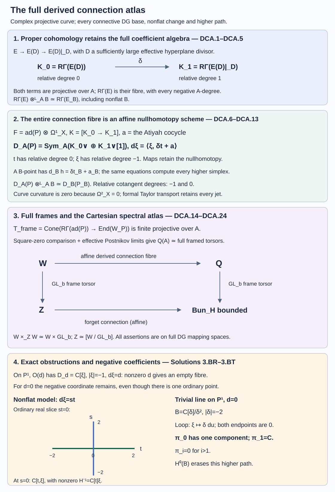
Figure 3.24. The proper two-term complex is (DCA.1)–(DCA.5). The nullhomotopy equations and their nonflat base change are (DCA.9)–(DCA.13). The full frame comparison is (DCA.15)–(DCA.20), and the torsor atlas and quotient are (DCA.21)–(DCA.24). The lower examples display exactly the relation differential \(d\xi=st\), its derived zero fibre, and the degree-minus-two coefficient loop of Solution 3.BT.
3.88. Degree obstructions, a nonflat relation and a higher connection path
Exercise 3.BR. For \(H=\mathbb G_m\) on \(\mathbf P^1\), fix the underlying line \(\mathcal O(d)\), with \(d\in\mathbf Z\). Compute its entire derived connection fibre. Explain what happens for nonzero \(d\) and for \(d=0\).
Solution 3.BR. Use coordinate \(z\) on the first chart and \(z^{-1}\) on the second. The transition on coefficient columns is \(g=z^d\). Thus (DCA.7) has defect \(-d\,dz/z\). The two-chart calculation of \(R\Gamma(\Omega^1_{\mathbf P^1})\) has zero sections and one degree-one class: the Laurent coefficient \(z^{-1}dz\) is the only class remaining after quotienting polynomial differentials on both charts. Choose generator \([-dz/z]\). We obtain \[ K_0=0,\quad K_1=\mathbf C,\quad a=d,\qquad D_d=\mathbf C[\xi],\quad|\xi|=-1,\quad d_{\mathrm{DG}}\xi=d. \tag{DCA.25} \] Here \(\xi^2=0\), by graded commutativity and characteristic zero. If the integer \(d\ne0\), the element \(\xi/d\) has differential \(1\). Multiplication by it contracts every module; the algebra is equivalent to the zero algebra and its spectrum is empty over every nonzero coefficient algebra. This is the degree obstruction proved geometrically in (TBF.10).
If \(d=0\), the algebra is instead \[ D_0=\operatorname{Sym}_{\mathbf C}(\mathbf C[1]) =\mathbf C\oplus\mathbf C\xi,\qquad d_{\mathrm{DG}}\xi=0. \tag{DCA.26} \] It has one ordinary point, the usual connection on the trivial line, and a genuine negative-degree coordinate. Both conclusions describe the fixed-underlying-line fibre; they do not quotient by the line's automorphisms.
Exercise 3.BS. Test (DCA.11) on the linear complex \(K=[A\xrightarrow{s}A]\), with \(A=\mathbf C[s]\) and \(a=0\). Compute its coordinate algebra and its derived fibre at \(s=0\). Compare the latter with the ordinary tensor of degree-zero cohomology.
Solution 3.BS. The formula gives \[ D=A[t,\xi],\qquad |t|=0,\quad|\xi|=-1,\quad d_{\mathrm{DG}}\xi=st. \tag{DCA.27} \] Since \(st\) is a nonzerodivisor in \(A[t]\), its cohomology is \(H^0(D)=A[t]/(st)\), with no negative cohomology. The displayed complex is free as a graded \(A\)-module and computes derived coefficient extension. At \(s=0\), \[ D\otimes_A^{\mathbf L}\mathbf C =\mathbf C[t,\xi],\qquad H^{-1}=\mathbf C[t]\xi,\quad H^0=\mathbf C[t]. \tag{DCA.28} \] Ordinarily tensoring \(H^0(D)\) gives just \(\mathbf C[t]\), and misses the displayed negative class. After inverting \(s\), the relation is the ordinary equation \(t=0\) with its contractible Koszul pair. This example tests the coordinate construction; no assertion that this particular linear family is a torsor family is needed.
Exercise 3.BT. In the degree-zero case of Solution 3.BR, take \(B=\mathbf C[\delta]/(\delta^2)\), with \(|\delta|=-2\) and zero differential. Compute the homotopy groups of the connection fibre and exhibit its nontrivial loop.
Solution 3.BT. The free commutative-algebra adjunction retains all higher maps and gives \[ \operatorname{Conn}_B(\mathcal O) =\operatorname{Map}_{\mathbf C\text{-mod}}(\mathbf C[1],B), \qquad \pi_i=H^{-i-1}(B). \tag{DCA.29} \] There is one component, \(\pi_1=\mathbf C\), and all \(\pi_i\) for \(i>1\) vanish. A simplex with interval coordinate \(u\) is \[ \xi\longmapsto\delta\,du \quad\text{in }B\otimes\mathbf C[u,du]. \tag{DCA.30} \] It is a degree-minus-one cycle and vanishes at both endpoints. Its mapping-complex class is the nonzero element \(\delta\in H^{-2}(B)\); multiples give every loop class. Thus the ordinary point is unique but the full connection fibre has a nontrivial higher path. Passing to \(H^0(B)\) would erase it.
Free further reading is Arinkin and Gaitsgory, Singular support of coherent sheaves, and the geometric Langlands conjecture, §10.3, for the proper connection-fibre and boundedness framework. The full proper-cohomology proof here is (DCA.1)–(DCA.5), the full affine connection construction is (DCA.6)–(DCA.13), the complete derived frame comparison is (DCA.14)–(DCA.20), and the actual atlas comparison is (DCA.21)–(DCA.24). The complete solutions are (DCA.25)–(DCA.30).
3.89. An ample spectral determinant and full derived localization on opens
Continue over \(\mathbf C\), with the actual spectral prestack and frame atlas of (DCA.23). Write \[ G_{\rm fr}=GL_b,\qquad q:W\longrightarrow\mathcal Z,\qquad \mathcal Z=[W/G_{\rm fr}],\qquad \mathcal Q_{\mathcal Z}=\operatorname{QCoh}(\mathcal Z). \tag{GSL.1} \] The group in this presentation is the frame group; the dual bundle group remains the arbitrary connected reductive \(H=\widehat G\).
Choose an effective very ample curve divisor \(D_h\), of positive degree \(h\). Choose a positive \(\ell\) at least as large as the uniform Quot twist, and with \(\ell h\geq B_n+2g\). The precise construction in Hilbert and Quot schemes, Lemma 3.1 and the representability part of Theorem 4.1, embeds the fixed-polynomial quotient locus locally closed in a Grassmannian, whose Plücker line is the determinant of the quotient of sections. Restrict to the framed open \(V_{n,0,m}\). Its line is therefore the determinant of the sections of the universal bundle twisted by \(\ell D_h\).
Only the locally closed immersion is needed for ampleness here. To verify this directly, intersect that immersion with a standard affine projective chart. In the closed affine scheme containing the resulting locally closed locus, choose a principal open lying inside any specified neighbourhood of a point. Lift its defining function to the affine projective-chart algebra and homogenize it. Multiply by a positive power of the chart coordinate. Its nonvanishing open in the locally closed locus is that same affine principal open. These opens form an affine basis. Thus the restricted Plücker line is ample; no valuative properness criterion is used in this argument.
The maps \(Q\to V_{n,0,m}\) and \(W\to Q\) are affine. The full cohomology base change (DCA.5), the uniform slope bound (TBF.13), and criterion (CSD.4) give a finite projective section bundle on \(\mathcal Z\), of rank \(n(\ell h+1-g)\). Denote its determinant by \(\mathcal L\). Its pullback to \(Q\) is the preceding Plücker determinant. The frame action on the universal quotient acts on its sections and their determinant, giving the actual \(G_{\rm fr}\)-linearization. We prove that its pullback to the full derived \(W\) is ample, with the coefficient degrees retained.
Take a finite affine cover \(Q_i\) of the separated ordinary \(Q\). Their preimages \(W_i\) are affine, and every multiple intersection is affine. For an arbitrary unbounded quasicoherent complex \(M\), the full ordered Čech computation is \[ R\Gamma(W,M)= \operatorname{Tot}_{0\leq p<N} \left(\ \bigoplus_{i_0<\cdots<i_p} R\Gamma(W_{i_0}\cap\cdots\cap W_{i_p},M)\right). \tag{GSL.2} \] Here \(N\) is the number of cover members, and the totalization is finite in the Čech direction. The augmented sheaf complex is exact: at a point insert one covering index containing that point, with its alternating sign, to contract it. On each affine test chart all the indicated intersections are affine, so their module functors compute the full derived sections. The contraction applies in every internal degree, and finite totalization proves (GSL.2) for unbounded complexes. Each affine module functor preserves colimits. Finite limits are finite colimits in a stable category, so this global section functor preserves colimits as well.
Let \(s\) be an actual degree-zero section of a positive power \(\mathcal L^r\), and let \(W_s\) be its nonvanishing open. The affine localization telescope on each term of (GSL.2) gives \[ \underset{a\geq0}{\operatorname{colim}}\, R\Gamma(W,M\otimes\mathcal L^{ar}) \simeq R\Gamma(W_s,M), \qquad\text{transition multiplication by }s. \tag{GSL.3} \] In a line frame this is the telescope that inverts its degree-zero function. Its cohomology is ordinary localization of every cohomology module, since filtered colimits are exact. This proves the whole derived localization, without a nonzerodivisor assumption. A finite Čech totalization commutes with that filtered colimit. This is also the full DG version of the denominator argument in Coherent sheaves on projective schemes: Serre's theorems, Lemma 1.1.
For a pulled-back ample section on \(Q\), its preimage in \(W\) is affine. Any degree-zero function on this affine preimage extends, after a power of the section, by (GSL.3) with \(M=\mathcal O_W\). A further positive power forces its nonvanishing open to stay in that preimage. Affine principal opens there thus become nonvanishing opens of actual sections of positive powers of the derived line. They form a basis. This proves ampleness on \(W\), including the lifting of the sections themselves.
The line is an actual compact Ran value. Put \(F_\ell=\mathcal D_X\otimes_{\mathcal O_X}\mathcal O_X(-\ell D_h)\), in left conventions. The coherent compactness and duality of §§3.45 and 3.53 define \[ \begin{gathered} T_\ell=\operatorname{ins}_{\mathrm{id}_{\{1\}}} (\rho\otimes\mathbb D_XF_\ell[-1]),\\ \mathsf{Loc}(T_\ell)=R\Gamma(X_{\mathcal Z},\mathcal V(\rho)(\ell D_h)), \qquad \mathcal L=\mathsf{Loc}\!\left(\bigwedge^{n(\ell h+1-g)}T_\ell\right). \end{gathered} \tag{GSL.4} \] The middle formula is the same full induced-module and operator-pairing calculation as (TBF.17): the normalized left coefficient has shift \(+1\), cancelling the displayed \([-1]\). It is compatible with every DG affine point and its nonflat scalar changes by (SPC.9) and (DCA.5), so it is an identity of global quasicoherent objects. The exterior power is the image of the signed antisymmetrizer on the finite tensor power, with division by the factorial in characteristic zero. Its retract is compact in the actual rigid Ran category. Its dual gives the inverse determinant line. The frame bundle's associated standard module is likewise the actual value \(\mathsf{Loc}(T_m)\) of (TBF.16).
3.90. Reynolds contraction, compact generators and every unbounded complex
We prove the global quotient calculation, including its unbounded descent. The complete rational reductive representation proof and natural invariant projection are in the earlier bundle lesson, §4.5 and (HN.18). For the regular representation of \(G_{\rm fr}\), projection onto constants followed by their identification with \(\mathbf C\) gives a functional \(\lambda\) on its coordinate algebra, with \(\lambda(1)=1\). It is invariant under both translations: left invariants are constants, and the commuting right action preserves that projection and fixes constants.
For a rational DG representation \(C\), its group cobar terms and inhomogeneous differential are \[ \begin{gathered} \mathscr C^a(C)=C\otimes\mathcal O(G_{\rm fr})^{\otimes a},\\ \begin{aligned} (d f)(g_1,\ldots,g_{a+1}) &=g_1 f(g_2,\ldots,g_{a+1})\\ &\quad+\sum_{j=1}^{a}(-1)^j f(g_1,\ldots,g_jg_{j+1},\ldots,g_{a+1})\\ &\quad+(-1)^{a+1}f(g_1,\ldots,g_a). \end{aligned} \end{gathered} \tag{GSL.5} \] The function notation denotes the universal coordinate variables, not tests only on ordinary group points. Every vector has finite rational coefficient support, so the following operator is algebraic: \[ \begin{gathered} (h f)(g_1,\ldots,g_{a-1}) =\lambda_g\!\left(g^{-1}f(g,g_1,\ldots,g_{a-1})\right) \quad(a>0),\\ d h+h d=\mathrm{id}\quad(a>0),\qquad h d=\mathrm{id}-\iota\mathcal R_C\quad(a=0),\\ \operatorname{Tot}\mathscr C^\bullet(C)\simeq C^{G_{\rm fr}} . \end{gathered} \tag{GSL.6} \] Expand (GSL.5) in \(dh+hd\). The interior multiplication terms cancel in adjacent pairs. The first endpoint gives \(f\); the other endpoint uses the substitution of the integration variable by its right translate, allowed by right invariance of \(\lambda\). In degree zero the result is the vector minus its invariant projection. Augment by \(C^{G_{\rm fr}}\) and use that projection as the degree-zero contraction. This proves the displayed identities, also on every internal differential, with the Čech-degree sign in the total differential. On a product totalization the contraction uses just the adjacent column; no infinite sum is taken. It therefore contracts the full descent complex for an unbounded \(C\).
An equivariant quasicoherent complex on \(W\) has a rational global-section object. The action and the coaction come from the full action nerve; finite Čech computation gives \(R\Gamma(G_{\rm fr}\times W,M)=\mathcal O(G_{\rm fr})\otimes R\Gamma(W,M)\) and the analogous formula on every nerve level. Use its free coaction bar to retain the coherent coaction maps. Formula (GSL.6) is natural in these maps and contracts that full bar model, so quotient descent is computed by invariants of this rational object. This gives the full mapping formula \[ \operatorname{RHom}_{\mathcal Q_{\mathcal Z}}(P,M) = \left[R\Gamma\!\left(W,(q^*P)^\vee\otimes q^*M\right)\right]^{G_{\rm fr}} \quad(P\text{ perfect}). \tag{GSL.7} \] The finite free/retract dual on every affine chart supplies the internal Hom in this formula; its evaluations glue with their two triangles. The Reynolds projection is natural and exact, and commutes with colimits on rational modules. Together with (GSL.2), this proves compactness of every perfect \(P\). In particular the full quasicoherent unit is compact.
For every finite rational \(G_{\rm fr}\)-representation \(V\), let \(\mathcal E_V\) be its bundle associated to the frame torsor. The proposed generators and their tests are \[ \begin{gathered} P_{a,V}=\mathcal L^{-a}\otimes\mathcal E_V \quad(a\geq0),\\ \operatorname{RHom}(P_{a,V},M) =\operatorname{RHom}_{\operatorname{Rep}(G_{\rm fr})} \left(V,R\Gamma(W,q^*M\otimes q^*\mathcal L^a)\right). \end{gathered} \tag{GSL.8} \] They are perfect and hence compact. If all these complexes vanish, complete reducibility detects every cohomology representation of each twisted section complex: a nonzero rational cohomology vector lies in a finite subrepresentation, and a simple summand supplies a nonzero test. Thus every one of those section complexes is zero. Apply (GSL.3) to each ample-section affine open. Its section complex is zero, so its quasicoherent module is zero. These opens cover \(W\), and the frame pullback is conservative by full faithfully flat descent. Therefore \(M=0\). This proof uses arbitrary unbounded modules; it assumes no uniform Serre-vanishing bound for such a module.
For clarity we include the categorical consequences used next. Let \(\mathcal D\) be the small full DG category of these generators and their finite cones, shifts and retracts. Restricted Yoneda and the full multi-object free bar give \[ \begin{gathered} \Psi(M)(P)=\operatorname{RHom}(P,M),\qquad \Phi(N)=\int^{P\in\mathcal D}N(P)\otimes P,\\ \mathcal Q_{\mathcal Z}\simeq\operatorname{Mod}_{\mathcal D}. \end{gathered} \tag{GSL.9} \] The unit is an equivalence on representables by identity insertion in the morphism bar. Every DG module is the realization of its augmented free bar, with the same contraction, so the unit holds on every module. Compactness makes \(\Psi\) preserve colimits of these bars. The counit is an equivalence after testing every generator and hence is an equivalence by the detection just proved. These maps are maps of entire DG modules and their coherent transformations.
The semifree-cell proof of §1.11, after (CW.4), applies to this multi-object module category: attach shifted free representables to represent cone classes, then kill those classes at the next stage. Every cell boundary has finitely many earlier ancestors. The resulting module is the filtered union of its finite boundary-closed cell submodules. Compactness makes an object's identity factor through one such finite cell; it is its retract. Conversely those cells and retracts are compact. Our generators are dualizable, and finite cones and retracts preserve duals by (KG.22). We have proved \[ \mathcal Q_{\mathcal Z}^c=\operatorname{Perf}(\mathcal Z), \qquad \mathcal Q_{\mathcal Z}=\operatorname{Ind}(\operatorname{Perf}(\mathcal Z)), \qquad \mathcal O_{\mathcal Z}\text{ compact}. \tag{GSL.10} \] Every \(P_{a,V}\) is also an actual compact \(\mathsf{Loc}\)-value. For the frame group, both standard and dual matrix entries generate its coordinate algebra; the inverse determinant is the determinant of the inverse matrix. The coaction embeds any finite \(V\) into finitely many copies of that algebra. Its coefficients have bounded polynomial degree in those entries. Their finite stable span is a quotient of a finite tensor sum of standard and dual representations. Complete reducibility splits the needed subquotient, so \(V\) is a tensor/dual retract of that finite sum. Replace the standard module by \(T_m\), and the inverse ample line by the dual of the exterior object in (GSL.4). The same finite tensor operations and idempotent retracts in the actual Ran category map to \(P_{a,V}\). All the graded braidings are the actual symmetric monoidal comparisons of \(\mathsf{Loc}\).
3.91. The global exterior tensor equivalence and its diagonal transform
On \(W\times W\), the exterior ample line is ample: affine nonvanishing opens from the two factors are obtained from sections of a common positive power of that line. Given a principal neighbourhood inside their affine product, (GSL.3) on the product extends its function after a power of the product section. These opens again form an affine basis. All finite representations of \(G_{\rm fr}\times G_{\rm fr}\) are generated by external ones. Indeed decompose for the first reductive factor; its finite multiplicity spaces are preserved by the commuting second factor, and decompose those spaces in turn. A finite irreducible complex representation has scalar endomorphisms: an endomorphism has an eigenvalue, and its nonzero eigenspace is invariant and hence is the whole representation. Thus the commuting action acts on those multiplicity spaces. Complete reducibility gives the claimed external decomposition.
The argument of §3.90 thus gives compact generators \(P_{a,V}\boxtimes P_{a',V'}\) on the product. For two such external perfect objects, the finite double Čech calculation over \(\mathbf C\), and the independent Reynolds contractions, prove the entire mapping-complex equality \[ \operatorname{RHom}_{\mathcal Z\times\mathcal Z} (P\boxtimes Q,P'\boxtimes Q') \simeq \operatorname{RHom}_{\mathcal Z}(P,P') \otimes_{\mathbf C} \operatorname{RHom}_{\mathcal Z}(Q,Q'). \tag{GSL.11} \] On each affine product this is the free finite-projective dual formula, checked first on free modules and then their retracts. Finite Čech totalizations commute with the two tensor factors over the field. Taking invariants independently in the two rational variables gives the displayed identity. This argument does not discard any negative or positive internal cohomology.
The two-variable version of the free bar in (GSL.9) identifies the tensor of module categories with modules over their tensor DG category: a continuous bilinear functor is specified by its two commuting representable actions, and extending each action by its free bar gives the inverse. Consequently (GSL.11) and generation give \[ \mathcal Q_{\mathcal Z}\otimes\mathcal Q_{\mathcal Z} \simeq\operatorname{Mod}_{\mathcal D\otimes\mathcal D} \xrightarrow[\ \pi\ ]{\ \sim\ } \operatorname{QCoh}(\mathcal Z\times\mathcal Z). \tag{GSL.12} \] The unit of this comparison holds on free external representables and hence on every module bar; its counit is detected by the product generators. Thus this is the canonical exterior functor and its full inverse.
Let \(p_1,p_2\) be the product projections. Under (GSL.12), pullback by \(p_2\) is the unit object in the first factor tensored with the second factor. Its actual right adjoint is \[ (p_2)_*=(\Gamma_{\mathcal Z}\otimes\operatorname{Id})\pi^{-1}, \qquad \Gamma_{\mathcal Z}(M)=\operatorname{RHom}(\mathcal O_{\mathcal Z},M). \tag{GSL.13} \] The adjunction on external free objects follows by (GSL.11); the full two-variable bars prove it on all objects. Since the unit is compact, this right adjoint preserves colimits. For a kernel \(K\), put \(\mathsf F_K(M)=(p_2)_*(p_1^*M\otimes K)\). On an external kernel it is the first global section complex tensored with the second factor, and it preserves colimits in the kernel variable. The already proved affine diagonal projection formula (CSD.23)–(CSD.24) gives \[ \mathsf F_{\Delta_*\mathcal O_{\mathcal Z}}(M) =(p_2)_*\Delta_*(\Delta^*p_1^*M) \simeq M . \tag{GSL.14} \] The last equality is the actual composite \(p_2\Delta=\mathrm{id}\) and its adjunction. This proves the identity transform on the whole quasicoherent category.
3.92. The actual continuous fully faithful localization right adjoint
Use the proved full Ran category \(\mathcal R\) and actual functor \(\mathsf L=\mathsf{Loc}\). Every compact \(T\) in \(\mathcal R\) is dualizable by (KG.19)–(KG.23). Thus \(\mathsf L(T)\) is dualizable and perfect, hence compact by (GSL.10). Construct \[ \mathsf U(M)= \int^{T\in\mathcal R^c} \operatorname{RHom}_{\mathcal Q_{\mathcal Z}}(\mathsf L(T),M) \otimes_{\mathbf C}T . \tag{GSL.15} \] This is the full compact-DG-category coend, with all morphism complexes and bar coherences. Testing a compact \(S\) and contracting the Yoneda bar gives \(\operatorname{RHom}_{\mathcal R}(S,\mathsf U(M))=\operatorname{RHom}(\mathsf L(S),M)\). Extend the test to arbitrary source objects by their compact module bars; both mapping functors take those source colimits to limits. This proves the actual adjunction and its maps. The compactness of every \(\mathsf L(T)\) also proves \[ \mathsf L\dashv\mathsf U,\qquad \mathsf U\text{ preserves all colimits}. \tag{GSL.16} \] Both the individual mapping-complex functors and the full coend in (GSL.15) preserve these colimits.
Apply \(\mathsf L\) to that coend. Perfect duality and (GSL.13) identify its counit transform with the kernel \[ K_{\mathsf L\mathsf U} =\pi\!\left(\int^{T\in\mathcal R^c} \mathsf L(T)^\vee\boxtimes\mathsf L(T)\right) =\pi((\mathsf L\otimes\mathsf L)(R_{\mathcal R})) \simeq\Delta_*\mathcal O_{\mathcal Z}. \tag{GSL.17} \] The last equivalence is the actual regular-algebra identity (CSD.25). We verify the map as well. Coend evaluation gives the canonical kernel map to the diagonal unit. On an affine pair \((A,z,w)\), its map of coordinate algebras classifies the tautological tensor isomorphism on their actual path fibre. The enriched Yoneda comparison (SDG.12) identifies this with the identity map of the path algebra. The identity-path restriction is its actual evaluation pairing. All pair maps and higher scalar comparisons are the same coend maps used in (CSD.25). Therefore the canonical counit kernel map itself is an equivalence, not merely an unspecified isomorphism between two kernel objects.
Equations (GSL.14)–(GSL.17) now prove \[ \epsilon_M:\mathsf L\mathsf U(M)\xrightarrow{\sim}M, \qquad \mathsf U\text{ fully faithful}. \tag{GSL.18} \] For the second statement, adjunction identifies maps between the two right-adjoint values with maps out of the displayed counit; its equivalence gives the whole mapping-space equality. This proves actual global complex spectral localization, with its continuous right adjoint.
We will need its module structure. Tensor within \(\mathcal R\) in the next formulas means its actual Ran convolution \(\circledast\); tensor in \(\mathcal Q_{\mathcal Z}\) means its quasicoherent tensor. The canonical adjunction mate is an equivalence \[ T\otimes\mathsf U(M) \xrightarrow{\sim} \mathsf U(\mathsf L(T)\otimes M) \qquad(T\in\mathcal R). \tag{GSL.19} \] For dualizable compact \(T\), move its dual across each compact mapping test and use the adjunction. This gives precisely the displayed comparison. Both sides preserve colimits in \(T\) by (GSL.16); the compact tests generate, so it holds for every \(T\). The unit and composition comparisons are mates of the same tensor comparisons and counit, whose triangles prove every module coherence. The adjunction unit and counit are themselves \(\mathcal R\)-linear: their comparison squares on compact \(T\) are the evaluation and coevaluation triangles used in this construction; continuity extends those squares and their coherent compositions to every \(T\).
3.93. The ordinary spectral projector and global enhanced generators
Let \(\mathcal A_{\rm sp}=\mathsf U(\mathcal O_{\mathcal Z})\). The lax symmetric monoidal right adjoint gives its unit and commutative multiplication. By (GSL.19) that multiplication is the image under \(\mathsf U\) of the counit at the target unit. Equation (GSL.18) proves \[ \mathbf1_{\mathcal R}\longrightarrow\mathcal A_{\rm sp}, \qquad \mathcal A_{\rm sp}\otimes\mathcal A_{\rm sp} \xrightarrow{\sim}\mathcal A_{\rm sp}. \tag{GSL.20} \] The multiplication's symmetry, associativity and unit are the mates of those of the target tensor. Thus this is an actual commutative idempotent algebra, with its full DG structure.
The right adjoint is conservative by full faithfulness, is continuous, and has monad \(T\mapsto\mathcal A_{\rm sp}\otimes T\) by (GSL.19). The augmented free action bar, contracted by its first unit after the conservative forgetful functor, gives the canonical comparisons \[ \mathcal Q_{\mathcal Z} \simeq\operatorname{Mod}_{\mathcal A_{\rm sp}}(\mathcal R), \qquad \mathcal Q_{\mathcal Z}\otimes_{\mathcal R}\mathcal Q_{\mathcal Z} \simeq\mathcal Q_{\mathcal Z}. \tag{GSL.21} \] For the second identity, transport the continuous \(\mathcal R\)-linear adjunction \(\mathsf L\dashv\mathsf U\) through the balanced tensor with \(\mathcal Q_{\mathcal Z}\). The full two-sided module bar constructs this tensor and transports the unit and counit term by term; its action faces respect their module coherences, so its realizations preserve their two triangles and composition. The transported right adjoint is fully faithful by (GSL.18). On a pure pair its value is the action of \(\mathsf U\) of the first factor on the second factor. By the counit, this is the ordinary tensor of the two target factors. Hence that right adjoint is the canonical multiplication. Its left adjoint inserts the unit as the first factor. Their other composite acts by \(\mathsf L(\mathcal A_{\rm sp})\), which is the target unit by (GSL.18). Their unit and counit are therefore both equivalences, proving the asserted canonical equivalence with all balancing maps.
Now use the actual Hecke action (RA.17) on \(\mathcal M_L\). The enhanced category already constructed in (SPC.15) has the canonical description \[ \mathcal H_{\mathcal Z} \simeq\mathcal M_L\otimes_{\mathcal R}\mathcal Q_{\mathcal Z} \simeq\operatorname{Mod}_{\mathcal A_{\rm sp}}(\mathcal M_L). \tag{GSL.22} \] We prove the comparison through the actual adjunction, including its conservativity. The coefficient right adjoint in (SPC.21) is \(\operatorname{Id}_{\mathcal M_L}\otimes\Gamma_{\mathcal Z}\), as its compact module model there shows. It is now continuous by (GSL.10). The regular-module forgetful functor is continuous by (SPC.16), so their composite \(J_{\mathcal Z}\) is continuous.
Suppose \(J_{\mathcal Z}F=0\), and write \(n\) for the underlying object of \(\mathcal M_L\otimes\mathcal Q_{\mathcal Z}\). For any compact \(T\) of \(\mathcal R\), test \(n\) by the external objects \(c_i\boxtimes\mathsf L(T)\). Duality in the second factor expresses this test as mapping from \(c_i\) into the global sections of its coefficient twist. The eigen-comparison (SPC.17) identifies that twist by \(\mathsf L(T)^\vee\) with the first-factor Hecke action of \(T^\vee\). Global sections in the independent second factor commute with that first-factor continuous action. The test therefore maps into \(\Phi^L(T^\vee)J_{\mathcal Z}F=0\). All these tests vanish. They are compact generators of the full tensor category: the \(c_i\) generate the first factor, and the actual compact \(\mathsf L\)-values contain the generators of (GSL.8). The two-variable module bar proves this product generation. Thus \(n=0\), and the conservative regular-module forgetful functor gives \(F=0\). This proves actual conservativity of \(J_{\mathcal Z}\) without assuming that the quasicoherent unit generates.
Compute its monad using the entire regular coend (KG.23), its action (SPC.14), and the continuity just proved. The result on \(c\) is the coend of \(\Phi^L(T^\vee)c\) tensored with \(\Gamma_{\mathcal Z}(\mathsf L(T))\). Formula (GSL.15) at the target unit, followed by the full compact dual change \(T\mapsto T^\vee\), identifies its acting algebra with \(\mathcal A_{\rm sp}\). The regular bar multiplication and unit are the same tensor-evaluation and unit maps as the lax-adjoint multiplication in (GSL.20); their mates in (EP.7)–(EP.8) prove this identification as a monad, including every higher action map. Its contracted free action bar and the conservativity of \(J_{\mathcal Z}\) identify \(\mathcal H_{\mathcal Z}\) with the last category in (GSL.22).
For the relative tensor category, transport \(\mathsf L\dashv\mathsf U\) through the full balanced tensor with \(\mathcal M_L\), as in the preceding paragraph after (GSL.21). Its right adjoint remains continuous and fully faithful because its counit is the transported equivalence (GSL.18). Its monad is the action of \(\mathcal A_{\rm sp}\). The same full free action bar identifies this category with that last module category as well. The free coefficient and regular unit comparisons identify the two functors out of \(\mathcal M_L\), so these are the canonical enhanced and balanced comparisons in (GSL.22). They retain all unbounded coefficient objects and the original Hecke action.
Under (GSL.22), the functor \(P_{\mathcal Z}^{\rm enh}\) of (SPC.21) is the free \(\mathcal A_{\rm sp}\)-action, and its actual right adjoint is forgetful. Indeed the first unit in its regular bar is the unit of \(\mathsf L\); the module comparison carries its induction and its counit to those free action maps. Therefore \[ \begin{gathered} P_{\mathcal Z}^{\rm enh}\dashv J_{\mathcal Z},\qquad J_{\mathcal Z}\text{ continuous and fully faithful},\\ \Pi_{\rm sp}=J_{\mathcal Z}P_{\mathcal Z}^{\rm enh} =\mathcal A_{\rm sp}\star(-),\qquad \Pi_{\rm sp}^2\simeq\Pi_{\rm sp}. \end{gathered} \tag{GSL.23} \] For any module over an idempotent algebra, its action is an equivalence. The two unit insertions into the algebra square are both inverses of its multiplication and hence are the same map. Apply the module action to their other factor. One composite is the identity by the module unit; the other is its unit followed by its action. Thus action and unit are inverse, with their coherent module identities. The comparison is the actual action. Free followed by forgetful therefore has equivalence counit, proving the full faithfulness asserted here. Its unit is the action of the algebra unit, and its idempotence is the action of (GSL.20). This constructs the ordinary, unenhanced spectral projector and its adjunction. Conjugating through the full half-root operator Morita equivalence of §3.40 transports it, its units and adjoints to the full untwisted \(\operatorname{Dmod}(\operatorname{Bun}_G)\).
Let \(c_i\) be the proved compact generators of \(\mathcal M_L\) from §§1.3–1.15. The actual adjunction gives \[ \operatorname{RHom}_{\mathcal H_{\mathcal Z}} (P_{\mathcal Z}^{\rm enh}c_i,F) =\operatorname{RHom}_{\mathcal M_L}(c_i,J_{\mathcal Z}F), \qquad \{P_{\mathcal Z}^{\rm enh}c_i\}_i \text{ compactly generates }\mathcal H_{\mathcal Z}. \tag{GSL.24} \] Continuity of \(J_{\mathcal Z}\) proves compactness. Vanishing of all these tests gives \(J_{\mathcal Z}F=0\), then \(F=0\) by full faithfulness. The ordinary spectral image has the corresponding generators \(\Pi_{\rm sp}c_i\), compact in that image category. No assertion of their compactness in the larger ambient D-module category is needed.
This proves the full de Rham spectral projector and its categorical image. The nilpotent programme uses the restricted-variation coefficient category defined in the freely readable The stack of local systems with restricted variation and geometric Langlands theory with nilpotent singular support, §1.5: start with finite-rank lisse objects, take their ind-completion, then its left completion in the natural t-structure, and tensor that category with the coefficient-module category. That target has not been identified with the full operator-module target used here. The nilpotent Beilinson projector therefore still requires its genuine restricted-variation construction, singular-support image and ind-regularity proofs. The geometric coefficient-field points of §3.94 belong to the full stack constructed here; regularity after forgetting those field coefficients cannot be inferred from a field-relative connection. Derived tempered Satake, the applicable microlocal comparison and arbitrary characteristic-zero geometric ground-field spectral extension also remain required.
3.94. Actual affine descent and geometric field-point generators
Let \(z:S=\operatorname{Spec}A\to\mathcal Z\) be any actual derived affine point. The affine diagonal makes \(z\) affine: its base change to an affine \(T\) is the pullback of that diagonal inside the affine product \(S\times T\). Put \(\mathcal D_z=z_*\mathcal O_S\). The full affine module proof (CSD.22)–(CSD.24), and its free action bars after acting on the enhanced category, give \[ \begin{gathered} \mathcal H_z\simeq \operatorname{Mod}_{\mathcal D_z}(\mathcal H_{\mathcal Z}),\\ P_z^{\rm enh}=z^*P_{\mathcal Z}^{\rm enh},\qquad J_z=J_{\mathcal Z}z_* . \end{gathered} \tag{GSL.25} \] This is the actual affine spectral category of (SPC.18), since scalar extension of the regular algebra and its action bars is (SPC.19). The direct image on enhanced objects is the affine algebra forgetful functor; it is continuous and conservative. Every map and higher comparison in (GSL.25) comes from the same free coefficients and regular-algebra bars. No flatness of \(A\) is imposed.
Choose a finite affine cover of \(W\), with affine multiple intersections \(W_I\), and let \(z_I=qj_I:W_I\to\mathcal Z\). The group frame torsor \(q\) is affine. In a torsor trivialization its algebra is the coefficient algebra tensored with \(\mathcal O(G_{\rm fr})\). The normalized bi-invariant Reynolds functional glues the maps \[ \mathcal O_{\mathcal Z}\longrightarrow q_*\mathcal O_W \longrightarrow\mathcal O_{\mathcal Z}, \qquad\text{composite }\mathrm{id}. \tag{GSL.26} \] They commute with every DG scalar change and descent map because the functional is natural and invariant.
Tensor the finite Čech unit resolution on \(W\) with \(q^*P_{\mathcal Z}^{\rm enh}c_i\), using the \(\operatorname{QCoh}(W)\)-action. Affine module algebras identify each term with \(j_{I*}j_I^*\) of that object. The affine forgetful direct image \(q_*\) preserves this finite totalization. Hence \[ q_*q^*P_{\mathcal Z}^{\rm enh}c_i \simeq \operatorname{Tot}_{I} (z_I)_*P_{z_I}^{\rm enh}c_i . \tag{GSL.27} \] This is a finite unit-resolution calculation in a module category, so it assumes no general theorem of descent for categories. The affine projection formula identifies its left side with the action of \(q_*\mathcal O_W\). By (GSL.26), the compact generator \(P_{\mathcal Z}^{\rm enh}c_i\) is its retract. The finite Čech totalization builds that retract from finite cones and sums of the displayed affine-point pushes.
We now replace those affine objects by geometric field-point pushes, with a proof retaining the DG coordinate degrees. Refine the finite cover of \(Q\) so that the two projective modules in (DCA.18) are free. Each corresponding affine chart of \(W\) has coordinate algebra \[ A_I=R_I[t_1,\ldots,t_p,\xi_1,\ldots,\xi_r], \qquad |t_j|=0,\quad|\xi_j|=-1,\quad d\xi_j=f_j(t). \] Here \(R_I\) is an ordinary finite-type complex algebra. Multiple intersections in \(Q\) are affine ordinary finite-type schemes; restricting the free modules to them gives the same finite exterior presentation for their preimages in \(W\). The algebra is a finite exterior complex in the \(\xi_j\) over the Noetherian polynomial algebra. Consequently its cohomology is zero outside \([-r,0]\), each cohomology group is finite, and multiplication by \(f_j=d\xi_j\) is nullhomotopic, with homotopy multiplication by \(\xi_j\). Thus those groups are modules over the finite-type algebra \(H^0(A_I)\). The Noetherian and finite-dimension proofs of §3.36 apply to that algebra.
The proof of (FE.5) proves more than tensor detection: it puts the ordinary unit \(R\) in the stable colimit-closed subcategory generated by all its residue fields. It proves this by induction for \(R/\mathfrak p\), using the fraction-field triangle and prime filtrations of finite denominator-torsion modules, then the prime filtration of \(R\). The full free-module bar consequently puts every unbounded \(R\)-module in that subcategory. Apply this precise statement with \(R=H^0(A_I)\) and restrict scalars along \(A_I\to H^0(A_I)\). Restriction preserves triangles and colimits. The finite Postnikov filtration of \(A_I\) as an \(A_I\)-module has layers \(H^j(A_I)[-j]\); their actions factor through \(H^0(A_I)\). Indeed the intelligent module truncations are stable under a nonpositive DG algebra, and on a pure cohomology layer negative coefficients and degree-zero boundaries act as zero. Every layer therefore belongs to that colimit-closed subcategory. Its finite extensions give \[ A_I\in\operatorname{Loc}_{\operatorname{Mod}_{A_I}} \{\kappa(\mathfrak p): \mathfrak p\in\operatorname{Spec}H^0(A_I)\}. \tag{GSL.28} \] This uses bounded cohomology of these actual atlas algebras. It makes no boundedness assumption on a module being generated and no assertion that an arbitrary connective algebra has this property.
For each prime choose an algebraic closure \(K_{I,\mathfrak p}\) of its residue field. A vector-space basis containing \(1\) gives a residue-field-linear retraction \(K_{I,\mathfrak p}\to\kappa(\mathfrak p)\); this is also \(A_I\)-linear. Hence the fields \(K_{I,\mathfrak p}\) still generate the unit in (GSL.28). The augmentations \(A_I\to\kappa(\mathfrak p)\to K_{I,\mathfrak p}\) give actual geometric points \[ \sigma_{I,\mathfrak p}: \operatorname{Spec}K_{I,\mathfrak p}\longrightarrow W_I \longrightarrow\mathcal Z. \tag{GSL.29} \] All primes are included. At a generic prime the coefficient field can be an algebraic closure of a positive-transcendence-degree extension of \(\mathbf C\); closed complex points alone are not the asserted family.
For \(n\in\mathcal H_{z_I}\), apply the continuous exact action functor \((-) \otimes_{A_I}n\) to this unit generation. It builds \(n\) from the objects \(K_{I,\mathfrak p}\otimes_{A_I}n\). By the actual affine internal-algebra comparison (GSL.25), each is \(f_*f^*n\), where \(f:\operatorname{Spec}K_{I,\mathfrak p}\to W_I\). Formula (SPC.18) compactly generates its field-coefficient enhanced category by \(P_{\sigma_{I,\mathfrak p}}^{\rm enh}c_i\). Its affine forgetful \(f_*\) preserves every colimit. Thus the whole category \(\mathcal H_{z_I}\) is generated by these field-point pushes. The continuous affine \(z_{I*}\), followed by the finite construction and retract (GSL.26)–(GSL.27), proves \[ \begin{gathered} \{(\sigma_{I,\mathfrak p})_* P_{\sigma_{I,\mathfrak p}}^{\rm enh}c_i\}_{I,\mathfrak p,i} \text{ generates }\mathcal H_{\mathcal Z},\\ \{J_{\sigma_{I,\mathfrak p}} P_{\sigma_{I,\mathfrak p}}^{\rm enh}c_i\}_{I,\mathfrak p,i} \text{ generates the ordinary spectral image}. \end{gathered} \tag{GSL.30} \] The second statement uses the continuous fully faithful \(J_{\mathcal Z}\) and (GSL.25). Individual field-point pushes need not be compact in the global category; the compact global generators are those in (GSL.24). The field-coefficient categories and their maps retain their full regular coends and derived tensor bars. These are geometric coefficient points of the actual complex stack \(\mathcal Z\). Constructing the spectral theory over a different geometric ground field remains a separate requirement.
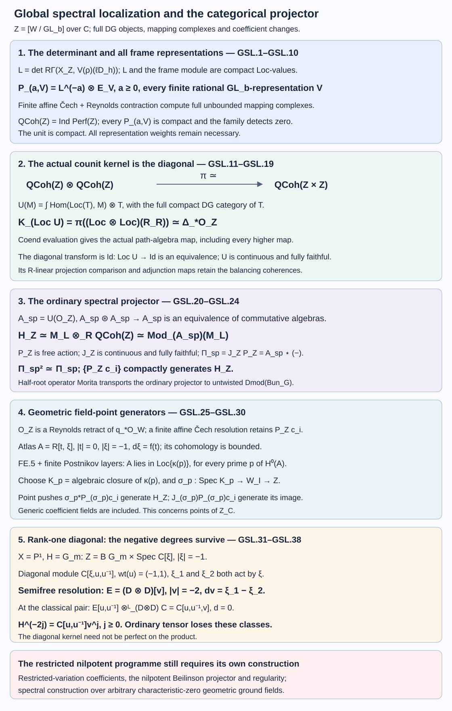
Figure 3.25. The full quotient generators are (GSL.2)–(GSL.10). The actual exterior tensor and diagonal-kernel comparisons are (GSL.11)–(GSL.18). The commutative idempotent algebra and unenhanced projector are (GSL.19)–(GSL.24), and geometric field-point push generation is (GSL.25)–(GSL.30). The lower model retains the even degree-minus-two diagonal variable of Solution 3.BV; the geometric nilpotent image and regularity assertions are explicitly distinguished from the categorical projector.
3.95. Weights, the full derived diagonal and a failed counit
Exercise 3.BU. For \(H=\mathbb G_m\) and \(X=\mathbf P^1\), use the fixed degree-zero line calculation of Solution 3.BR to describe the actual spectral stack and its quasicoherent generators. Does its unit generate?
Solution 3.BU. The degree proof makes its degree zero, and a degree-zero line on \(\mathbf P^1\) is trivial: choose a rational line section and its divisor, and use the divisor of each coordinate linear polynomial to replace its finite point by infinity. Multiplying those polynomials makes every degree-zero divisor principal. With \(n=1,m=0,b=1\), generation and (BA.2) identify an ordinary framed line with its evaluation quotient from \(\mathcal O\), an isomorphism; its frame scheme \(Q\) is therefore a point on all ordinary rings. The full comparison (DCA.20) retains this frame scheme on all connective DG rings. The connection fibre is (DCA.26), and the frame group acts trivially on it. Thus \[ \begin{gathered} D=\mathbf C[\xi],\quad|\xi|=-1,\quad d\xi=0,\\ \mathcal Z=B\mathbb G_m\times\operatorname{Spec}D,\\ \mathcal Q_{\mathcal Z}\simeq \mathbf Z\text{-graded }D\text{-modules}. \end{gathered} \tag{GSL.31} \] The equivalence follows from the full Laurent coaction: each coefficient vector has finitely many weights, and differential preserves them. It retains every DG module and every map. Write \(D(j)\) for the free \(D\)-module of weight \(j\). Then \[ \operatorname{RHom}(D(i),D(j))= \begin{cases}D,&i=j,\\0,&i\ne j.\end{cases} \qquad \{D(j)\}_{j\in\mathbf Z}\text{ compactly generates}. \tag{GSL.32} \] Each test extracts that entire weight complex. These tests are compact and detect zero. The unit is \(D(0)\); it is compact but has zero mapping complex to the nonzero weight-one module. Hence it does not generate. The full representation family in (GSL.8) is essential.
Exercise 3.BV. Compute the full regular diagonal module in this model and its derived pullback to the pair of classical trivial spectral points.
Solution 3.BV. The regular coend uses the whole compact DG category, whose free weights have endomorphism algebra \(D\). The identity-insertion module bar identifies that coend with the regular \(D\)-bimodule, in every biweight \((-j,j)\). The multiplicative weight variable is Laurent. Hence the diagonal module is \[ D[u,u^{-1}],\qquad \operatorname{wt}(u)=(-1,1),\qquad \xi_1,\xi_2\text{ both act by }\xi. \tag{GSL.33} \] Its full semifree resolution over \(D\otimes D\) is \[ E=(D\otimes D)[v],\qquad |v|=-2,\qquad dv=\xi_1-\xi_2,\qquad E\longrightarrow D . \tag{GSL.34} \] To prove the resolution, put \(a=\xi_1-\xi_2\). The source is the tensor of \(D\), on generator \(\xi_2\), with the algebra on odd \(a\) and even \(v\), with \(dv=a\). On the latter complex define the homotopy taking \(a v^j\) to \(v^{j+1}/(j+1)\), and \(v^j\) to zero. Its differential-plus-homotopy composite is the identity minus evaluation of the constant term. Division is allowed in characteristic zero. Tensor this contraction with the \(\xi_2\) complex using the tensor signs. It proves that the displayed augmentation is an equivalence. The power filtration in \(v\) is semifree: its differential lands in lower powers. It thus computes every derived coefficient extension.
At both classical points the odd variables vanish, but their derived tensor retains \[ E[u,u^{-1}]\otimes_{D\otimes D}^{\mathbf L}\mathbf C =\mathbf C[u,u^{-1},v],\qquad H^{-2j}=\mathbf C[u,u^{-1}]v^j\quad(j\geq0). \tag{GSL.35} \] The differential is zero. This is exactly the full diagonal algebra of (CSD.28) for rank one. Ordinary tensoring the diagonal module would instead lose every positive power of \(v\). This example also shows why the diagonal kernel need not itself be perfect on the product: its residue pullback has unbounded negative cohomology. The proof of localization uses its actual coend and affine pushforward, and makes no compactness assumption on that kernel.
Exercise 3.BW. Let \(R=\mathbf C[s]\) in degree zero and let \(\mathsf L_0:\operatorname{Mod}_R\to\operatorname{Mod}_{\mathbf C}\) be derived extension at \(s=0\). Its right adjoint is restriction. Test the kernel and counit criterion of §3.92.
Solution 3.BW. The free resolution \(R[\eta]\), with \(|\eta|=-1\) and \(d\eta=s\), has augmentation \(\mathbf C\): multiplication by \(s\) is injective, so there is no negative cohomology and its degree-zero quotient is \(\mathbf C\). It gives \[ \mathbf C\otimes_R^{\mathbf L}\mathbf C =\mathbf C[\eta],\qquad |\eta|=-1,\quad d\eta=0. \tag{GSL.36} \] Dualizing that resolution into \(\mathbf C\) gives \[ \operatorname{RHom}_R(\mathbf C,\mathbf C) =\mathbf C\oplus\mathbf C[-1], \qquad H^1=\mathbf C. \tag{GSL.37} \] Restriction preserves colimits but is not fully faithful, because the target mapping complex has only the degree-zero copy. The actual counit is \[ \mathsf L_0\mathsf U_0(\mathbf C) =\mathbf C\oplus\mathbf C\eta \longrightarrow\mathbf C,\qquad \eta\longmapsto0 . \tag{GSL.38} \] It is not an equivalence. Its kernel is therefore not the diagonal unit. Degree-zero cohomology alone would give the same scalar \(\mathbf C\) and hide the failed counit. This verifies why (GSL.17)–(GSL.18) require the full actual derived kernel map.
Free further reading is Ben-Zvi, Francis and Nadler, Integral Transforms and Drinfeld Centers in Derived Algebraic Geometry, §§3–4, for the perfect-stack and integral-transform framework, and the free AGKRRV preprint already cited in §3.78 for spectral localization. The complete applicable global proof here is (GSL.1)–(GSL.30), with the full negative-degree and weight solutions (GSL.31)–(GSL.38). The restricted-variation coefficient construction and its nilpotent Beilinson projector, singular-support image and regularity, derived tempered and microlocal comparisons, and arbitrary geometric ground-field spectral extension remain separate proof obligations.
3.96. The actual completed lisse coefficient category
Throughout §§3.96–3.103, \(X\) is a connected smooth projective complex curve and a point \(x\) is fixed. Normalize a right operator module by the density side change and \([-1]\), as in (CSD.1); the tensor unit then becomes the trivial left connection in degree zero. Let \(\mathscr L_X\) be the small, idempotent-complete full DG category of bounded operator complexes whose cohomology consists of finite-rank flat connections. Its morphisms are the entire operator-derived morphism complexes. Define \[ \mathscr I_X=\operatorname{Ind}(\mathscr L_X),\qquad \mathscr Q_X=\lim_{n\geq0}\mathscr I_X^{\geq-n},\qquad M_n=\tau^{\geq-n}M_{n+1}. \tag{RSC.1} \] The limit is the limit of categories and their truncation functors, including the compatible paths. Thus it prescribes the full left completion, rather than selecting a lower bound for each object. Its mapping spaces are the limits of the compatible level mapping spaces. Taking target shifts supplies all the derived mapping degrees.
The connection heart is abelian and is closed under subobjects, quotients and extensions among coherent operator modules. The completed-local-ring Taylor proof of Proposition 3.1 proves local freeness; the induced good filtration and connection calculation prove these closure assertions. Each heart object has finite length, since a strictly increasing connection subobject chain increases its rank. The bounded category is stable under truncation. Its ind-category has heart the ind-completion of that heart, with filtered colimits exact. The induced truncations commute with filtered colimits: present an ind-object by bounded objects, apply the finite cohomology and truncation diagrams, and use exactness of filtered colimits in the heart.
For finite connections \(E,F\), the actual finite Spencer Hom is \[ \operatorname{RHom}_{\mathcal D_X}(E,F) =R\Gamma\bigl(X,[E^\vee\otimes F \xrightarrow{\nabla}E^\vee\otimes F\otimes\Omega_X^1]\bigr). \tag{RSC.2} \] Its differential is the connection differential, not a structure-sheaf-linear map. The Koszul and order-lowering proof is The Riemann–Hilbert correspondence, Lemma 1.5. The same resolution computes Hom into an arbitrary unbounded operator complex: the source resolution has two locally finite free terms, and the two-affine curve Čech computation of (DCA.1) has two columns. Taking those finite totalizations proves \[ E\text{ is compact in }\operatorname{Dmod}(X),\qquad \operatorname{Hom}(E,F[j])=0\quad(j<0\text{ or }j>2). \tag{RSC.3} \] For compactness, each local coefficient Hom is a finite bundle dual tensored with the target, and the finite affine Čech functor preserves colimits. For the degree bound use a target in the connection heart, so the only total degrees are \(0,1,2\). Bounded connection complexes are finite extensions of these compact objects and are compact as well. The restricted Yoneda/free-bar proof of (GSL.9) therefore embeds \(\mathscr I_X\) fully faithfully and continuously into the entire operator category. This also identifies its heart with actual ind-connections.
Every finite connection on the proper curve is regular: there is no missing compactification point on \(X\), and a curve test extends to its smooth compactification. Projective coordinates divided by their minimum valuation give that extension at each missing point; the pulled-back connection is then nonsingular there. The complete earlier regular-connection comparison, Theorems 1.6–1.7 in the same lesson, identifies the finite connection heart with finite-rank local systems. Such local systems are finite-dimensional representations of \(\Gamma=\pi_1(X^{\mathrm{an}},x)\): continuation along paths gives the action; conversely take the path-class covering with its disc neighbourhoods and form locally equivariant sections with values in the given representation. Continuation on a disc and the endpoint path composition prove these constructions inverse. The same earlier theorem identifies the whole bounded DG category with bounded complexes having finite-rank locally constant cohomology. This is the full derived sheaf category in that statement. We will prove, rather than assume, when it can instead be derived from its heart.
3.97. Cofree connection coefficients in positive genus
Write \(C_\Gamma\) for the complex coalgebra of matrix coefficients of finite-dimensional \(\Gamma\)-representations. A coefficient is the function \(g\mapsto\ell(\rho(g)v)\). Its coproduct, counit and antipode are respectively \(f(g,h)=f(gh)\), \(f(1)\) and \(f(g^{-1})\). In a finite basis the coproduct is the finite sum of the two corresponding coefficient matrices. Products are coefficients of tensor products. Thus this is a commutative Hopf algebra, with a finite-dimensional coefficient subcoalgebra containing any specified finite collection of coefficients. Use its regular left action \(T_gf(h)=f(g^{-1}h)\).
The ind-heart consists exactly of the locally finite \(\Gamma\)-representations: every vector lies in a finite-dimensional invariant subspace. The sum of two such subspaces is finite-dimensional, so their union is a filtered presentation. Conversely such a presentation is locally finite. Matrix coefficients give the same category as \(C_\Gamma\)-comodules. To check this assertion on maps, the coefficient coaction of a finite-dimensional source involves only finitely many functions. Linearly independent functions on \(\Gamma\) can be distinguished by finitely many evaluations: successively choose evaluations increasing the rank of their value matrix until it has full rank. Equality of their finite coefficients is consequently exactly equivariance. It follows also that maps from a finite comodule commute with filtered colimits, since a coaction equality is a finite collection of coefficient equalities in a tensor product. This proves the ind-heart identification without an assumption that the group algebra is Noetherian.
For every vector space \(W\), regular coefficients give \[ \operatorname{Hom}_\Gamma(V,C_\Gamma\otimes W) =\operatorname{Hom}_{\mathbf C}(V_x,W). \tag{RSC.4} \] The forward map evaluates at \(1\). The inverse sends \(a:V_x\to W\) to the function \(h\mapsto a(h^{-1}v)\) for each \(v\). Its finite orbit makes this a finite matrix-coefficient expression. Both compositions are identities and commute with all maps. Therefore \(C_\Gamma\otimes W\) is injective in the ind-heart: the underlying vector-space functor is exact and vector spaces are injective. The coaction supplies the monomorphism \[ V\longrightarrow C_\Gamma\otimes V_x,\qquad v\longmapsto(h\longmapsto h^{-1}v). \tag{RSC.5} \] It is injective by evaluation at \(1\). This proves enough injectives and provides an explicit cofree coresolution by taking successive cokernels.
For a finite connection \(V\), proper duality, including its connection-dual side change and trace, gives \[ H^2_{\mathrm{dR}}(X,V)^\vee =H^0_{\mathrm{dR}}(X,V^\vee) =\operatorname{Hom}_\Gamma(V_x,\mathbf C). \tag{RSC.6} \] Here dual means finite-dimensional dual. To check the shift, (GD.1) identifies the normalized proper image with the unshifted forms complex shifted by \([1]\). The connection-dual computation and the perfect proper-duality pairing (GD.4) shift its unshifted dual by \([2]\). The degree-two dual is consequently degree zero of the dual connection. The trace is exactly (GD.5). Locally its adjoint differential is fixed by \(d\langle s,t\rangle=\langle\nabla s,t\rangle+\langle s,\nabla^\vee t\rangle\); the residue trace kills derivatives. Thus this is the actual proper pairing, not a dimension equality.
Suppose now \(g(X)>0\). Choose a nonzero holomorphic differential \(\omega\), whose existence is the genus formula in the earlier curve-cohomology proof. The connection \(d+N\omega\) on the trivial rank-two bundle, with \(N^2=0\) and \(N\ne0\), is flat. It is a nonsplit extension of the trivial connection by itself: a splitting would be a global function with derivative a nonzero multiple of \(\omega\), while every global function on the connected proper curve is constant. Its monodromy is a nonzero additive character \(\chi:\Gamma\to\mathbf C\), by the faithful finite connection/local-system comparison already proved above. Choose \(\gamma\) with \(\chi(\gamma)\ne0\), put \(\ell=\chi\in C_\Gamma\), \(T=T_\gamma\), and \(c=-\chi(\gamma)\). Then \[ T\ell=\ell+c,\qquad c\ne0. \tag{RSC.7} \]
We prove directly that \(T-1\) is surjective on \(C_\Gamma\). Each vector belongs to a finite-dimensional \(T\)-stable space. Decompose it into generalized eigenspaces. On an eigenvalue different from \(1\), the finite geometric series in the nilpotent part inverts \(T-1\). On the generalized eigenvalue-one algebra, put \(D=\log T\). This series is finite on each vector. It is a derivation: the finite polynomial \(\sum_r\binom{s}{r}(T-1)^r\) is multiplicative for every nonnegative integer \(s\), since it is \(T^s\); equality of those polynomial expressions proves multiplicativity for every complex \(s\), and differentiation at zero gives the derivation identity. The derivation is locally nilpotent and \(D\ell=c\).
For \(f\) in this algebra, the following sum is finite: \[ S(f)=\sum_{j\geq0} \frac{(-1)^j\ell^{j+1}}{c^{j+1}(j+1)!}\,D^j f, \qquad D S(f)=f. \tag{RSC.8} \] The derivative of \(\ell^{j+1}\) gives the \(j\)-term and the derivative of \(D^jf\) cancels the next term; the remaining \(j=0\) term is \(f\). Since \(T-1=DQ(D)\), where \(Q(z)=(e^z-1)/z\) has constant term \(1\), its inverse is another finite series on each locally nilpotent vector. Thus \(Q(D)^{-1}S(f)\) is a preimage for \(T-1\). Together with the other generalized eigenspaces this proves surjectivity on all coefficients.
An invariant linear functional on \(C_\Gamma\) annihilates \(T-1\), and hence is zero. Apply (RSC.6) to its filtered finite coefficient subrepresentations. Global de Rham cohomology commutes with their colimit by the finite Spencer–Čech calculation. Dual of a vector-space colimit is the limit of the duals, so \[ H^2_{\mathrm{dR}}(X,C_\Gamma)^\vee =\operatorname{Hom}_\Gamma(C_\Gamma,\mathbf C)=0, \qquad H^2_{\mathrm{dR}}(X,C_\Gamma)=0. \tag{RSC.9} \] The last implication uses faithfulness of the algebraic vector-space dual, by extending a nonzero vector to a basis.
For a finite \(F\), tensoring \(C_\Gamma\) by \(F_x^\vee\) does not change its cofree nature. The explicit untwisting sends a coefficient-valued vector \(f(h)v\) to \(f(h)h^{-1}v\); multiplication by \(h\) is its inverse. These use finite matrix coefficients and intertwine the regular action. Hence (RSC.9) gives degree-two acyclicity for \(F^\vee\otimes(C_\Gamma\otimes W)\), for any \(W\). Degree one is zero because this cofree object is injective in the heart and degree-one derived maps classify heart extensions. Degrees greater than two vanish by (RSC.3), extended to the ind-heart by compactness. We have proved \[ \operatorname{Hom}_{\mathscr I_X} (F,C_\Gamma\otimes W[j])=0\qquad(j>0). \tag{RSC.10} \] This is an actual acyclic injective coefficient, with an explicit reason for its top-degree acyclicity.
3.98. The derived-heart comparison and full effectivity in positive genus
For a finite \(V\), its embedding (RSC.5) lands in a filtered union of finite coefficient representations. A fixed class \(\alpha:F\to V[2]\) becomes zero in that union by (RSC.10). Compactness of \(F\) says that its vanishing already occurs in one finite member containing the image of \(V\). Thus \[ \text{every }\alpha\in\operatorname{Hom}(F,V[2]) \text{ is killed by a monomorphism }V\hookrightarrow V' \text{ of finite connections}. \tag{RSC.11} \] Degree-one classes are effaced by their own finite extension, and all higher classes are zero by (RSC.3). This proves effaceability in every positive degree.
Here is the derived-heart argument. The natural maps from Yoneda extensions in the finite heart to derived maps agree in degrees zero and one. For surjectivity in degree \(j\), embed a target to kill a given derived class. The connecting map of its quotient sequence expresses that class as a degree-\((j-1)\) class followed by a short exact sequence; induction realizes it as a Yoneda extension. For injectivity, write an extension as such a splice. If its connecting image vanishes, exactness says that its preceding degree-\((j-1)\) class lifts to the middle term. By the induction isomorphism it lifts there as a Yoneda class, whose splice is zero. The exactness here can be checked by the actual pushout and pullback of the last short exact sequence: a lift splits that splice, and a zero splice supplies precisely this lift. This proves the comparison for every \(j\). Applying it to heart shifts and then both finite truncation filtrations proves full faithfulness on bounded complexes. Every object of \(\mathscr L_X\) has such a finite filtration; full faithfulness lifts its attaching maps. Consequently \[ D^b(\operatorname{Conn}_{\mathrm f}(X)) \xrightarrow{\sim}\mathscr L_X \qquad(g>0). \tag{RSC.12} \] The functor is the actual inclusion of complexes of connections into operator complexes. The Hom comparisons are comparisons of whole DG complexes, by all their shifts. They preserve composition and the original attaching maps.
The ind-heart has injective dimension at most two. First use its explicit cofree injective coresolution. It is a resolution in the operator heart as well, since the embedding is exact. For a bounded-below resolution the finite Spencer–Čech calculation and (RSC.10) identify Hom from a finite connection with the ordinary Hom complex of that injective resolution. This proves, for arbitrary ind-targets, equality of heart Ext with those operator-derived groups; in particular Ext above degree two is zero.
We include the required injectivity criterion. In a heart whose objects are unions of finite-length subobjects, an object \(I\) is injective if \(\operatorname{Ext}^1(F,I)=0\) for every finite object \(F\). To extend a map from a subobject, choose a maximal partial extension by unions along chains. If its domain is not the whole object, choose a finite subobject not contained in it. Its quotient by the intersection is finite. Pushing out the intersection map gives its extension by \(I\), which splits by the assumed Ext vanishing. This enlarges the partial extension, a contradiction. Apply this criterion to the second successive cokernel of a cofree coresolution: dimension shifting identifies its Ext in degree one with the original Ext in degree three. Therefore \[ \begin{gathered} 0\longrightarrow V\longrightarrow I^0 \longrightarrow I^1\longrightarrow I^2 \longrightarrow0 \\ \text{An injective coresolution for every ind-connection }V. \end{gathered} \tag{RSC.13} \]
These bounds apply to the entire unbounded derived category. A precise construction is useful. For each degree of an arbitrary complex, choose length-two injective resolutions of its boundaries and cohomology. The injective horseshoe constructions for \[ 0\to B^i\to Z^i\to H^i\to0,\qquad 0\to Z^i\to M^i\to B^{i+1}\to0 \] give a Cartan–Eilenberg double resolution with only three resolution columns. In each column, cycles, boundaries and cohomology are injective, and these sequences split. Thus that column is the sum of its zero-differential graded injectives and a contractible complex. It is K-injective: Hom from an acyclic complex to a single injective in any degree is acyclic, the full Hom is the product of these complexes, and vector-space products are exact. The finite totalization is K-injective as well. The augmentation is a quasi-isomorphism by the exact resolution rows and their finite horizontal length. This proves the unbounded construction without an infinite resolution-direction convergence claim.
The same construction bounds the derived product of a family in degrees \(\leq a\) by degrees \(\leq a+2\). Choose zero resolutions for its vanishing cohomology degrees; the split-column product has cohomology only through \(a\), and the three resolution columns add at most two. An inverse sequence has derived limit the fibre of \(1-\mathrm{shift}\) on its derived product, so this bound becomes \(a+3\). For a compatible Postnikov tower, the fibre of a later term over its \(N\)-th truncation has degrees \(\leq-N-1\). Therefore the fibre of its limit over that term has degrees \(\leq-N+2\). Given a desired truncation degree, take \(N\) three places farther to the left. This proves recovery of that truncation from the limit, for every desired degree, and proves effectivity of every compatible tower.
Finite connections are compact generators of this unbounded derived-heart category. Their Ext on heart targets commutes with filtered colimits, as it is the already continuous finite Spencer–Čech mapping complex. The three-column resolution bounds their derived Hom by a finite cohomology window in any fixed mapping degree; finite truncations and that heart comparison prove the same colimit assertion on all complexes. For detection, a nonzero cohomology class of an arbitrary heart complex is represented in a cycle object. That cycle object is a union of finite subobjects, so a finite subobject has nonzero image in that cohomology. Its chain map to the complex is nonzero on cohomology and hence is nonzero in the derived category. The free compact-module bar now proves \[ D(\operatorname{Ind}\operatorname{Conn}_{\mathrm f}(X)) \simeq\mathscr I_X,\qquad \mathscr Q_X=\mathscr I_X\qquad(g>0). \tag{RSC.14} \] For the first equivalence use (RSC.12) on compact objects and the just-proved generation. For the second use the complete product and tower argument above. Every unbounded object and every compatible higher map is retained.
This category has its actual symmetric tensor. In the representation heart, tensor is tensor of the underlying complex vector spaces with diagonal group action. A tensor of locally finite representations is locally finite, by the finite-dimensional orbit spans of each vector. Tensor of complexes uses direct-sum totalization. Over a field the cycle-to-cohomology tensor map is the unbounded Künneth isomorphism: split each vector-space complex into its cohomology and contractible two-term pieces; tensoring a contraction gives a contraction with the tensor differential signs. This calculation proves the isomorphism, while its canonical cohomology map makes it independent of the chosen splittings and equivariant. On bounded finite connection complexes it is the original flat connection tensor. Equation (RSC.14) extends precisely that tensor and its symmetries to all objects by the full module bars. Thus the positive-genus completed target is constructed as a symmetric monoidal DG category, with no substitution of only its ordinary finite heart.
3.99. The projective-line unit and a full Koszul model
The chosen point identifies the genus-zero case with the projective line. Indeed Riemann–Roch gives two sections of its degree-one line bundle and one section after subtracting any point. Their evaluation is consequently surjective everywhere, defining a basepoint-free degree-one map to the projective line. A nonconstant map between proper smooth curves is finite, by the finite curve-map construction used in (TBF.7). Degree one identifies the function fields; the integrally closed local rings of the smooth target then make this finite birational map an isomorphism. Thus the following case and the positive-genus proof cover every curve in the stated scope.
For \(X=\mathbf P^1\), the uniform bound (TBF.13)–(TBF.16) has \(m=0\) and \(b=n\). Evaluation of the \(n\) global sections of a rank-\(n\) flat bundle is surjective everywhere; its rank-zero kernel is zero. The bundle is therefore trivial. Its connection matrix is a global matrix of one-forms, and \(H^0(\mathbf P^1,\Omega^1)=0\), by the two-chart polynomial form calculation. All finite connections are sums of the trivial one. Nevertheless the bounded DG category retains the degree-two maps calculated in (SDG.21)–(SDG.22): \[ \operatorname{Conn}_{\mathrm f}(\mathbf P^1)\simeq \operatorname{Vect}^{\mathrm{fd}}_{\mathbf C},\qquad \mathscr L_{\mathbf P^1} =\operatorname{thick}(\mathbf1). \tag{RSC.15} \] The second equality uses the finite truncation filtration, not a claim that higher maps vanish.
We give a commutative model as well as the earlier associative one. On the two charts \(U,V\) and overlap \(W\), take the DG algebra of triples \[ A_{\mathrm{path}}= \{(\alpha_U,\alpha_V,\beta): \beta(0)=\alpha_U|_W,\quad\beta(1)=\alpha_V|_W\}, \quad \beta\in\Omega^\bullet(W)\otimes\mathbf C[s,ds]. \tag{RSC.16} \] Products are form products, with their graded signs. Projection to the two chart complexes is surjective degree by degree. Its kernel is the relative polynomial interval complex on \(W\). Integration in \(s\), with \(ds\) written first, identifies that kernel with \(\Omega^\bullet(W)[-1]\): a polynomial derivative has zero integral at the two endpoints, and subtracting its integral times \(ds\) gives the derivative of a polynomial vanishing at both endpoints. This supplies an explicit relative contraction and the shift's differential sign. The connecting map is restriction difference, so the resulting cohomology is the full Čech–de Rham cohomology already calculated.
The triple with chart components zero and path component \(ds\wedge dt/t\) is a closed degree-two representative of the residue generator. Its square is zero. Constants and this representative give the commutative quasi-isomorphism \[ E=\mathbf C[\eta]/(\eta^2) \xrightarrow{\sim} A_{\mathrm{path}}, \qquad|\eta|=2,\quad d\eta=0. \tag{RSC.17} \] The endpoint contraction compares this algebra model with the actual finite Spencer and Čech calculation; its products are the same local form products and restriction maps. Thus it retains the endomorphism algebra and its coherent commutative structure. The compact-unit module bar and the finite-cell argument give \[ \mathscr L_{\mathbf P^1}\simeq\operatorname{Perf}(E), \qquad\mathscr I_{\mathbf P^1}\simeq\operatorname{Mod}_E. \tag{RSC.18} \] The bounded tensor is relative tensor over \(E\): the unit goes to \(E\), and the two endomorphism actions on a tensor of units are multiplication of that endomorphism algebra. Exactness in each variable extends this identification through every finite cone and retract. Its ind-extension retains all module bars.
Define instead the free associative algebra and its Hopf structure \[ B=T_{\mathbf C}(\mathbf C[1]),\quad |u|=-1,\quad du=0,\qquad \Delta u=u\otimes1+1\otimes u,\quad\epsilon u=0,\quad S(u)=-u. \tag{RSC.19} \] There is one basis word \(u^j\) in each degree \(-j\), \(j\geq0\). In particular \(u^2\ne0\). The coproduct extends as an algebra map with the graded tensor multiplication. It is coassociative and cocommutative on the generator and hence on every word. The antipode extends with graded reversal, giving both Hopf identities. Modules have the symmetric tensor over \(\mathbf C\) with this diagonal action and unit \(\mathbf C\).
Its unit has the finite semifree resolution \[ Q=B\oplus B\tau,\qquad|\tau|=-2,\quad d\tau=u, \qquad Q\longrightarrow\mathbf C. \tag{RSC.20} \] On \(b\tau\), the differential is \((-1)^{|b|}bu\). It injects that summand onto the positive-word ideal; the remaining cohomology is the constant word. Define the closed degree-two endomorphism \(e(\tau)=1\), \(e(1)=0\), extended \(B\)-linearly. It has square zero. Applying Hom to the augmentation shows \[ E\longrightarrow\operatorname{End}_B(Q),\quad\eta\longmapsto e, \qquad \operatorname{RHom}_B(\mathbf C,\mathbf C)\simeq E. \tag{RSC.21} \] Indeed Hom from the finite semifree \(Q\) carries its augmentation to a quasi-isomorphism, and its target has just the two basis maps \(1\mapsto1\) and \(\tau\mapsto1\), in degrees zero and two.
The primitive diagonal \(\tau\mapsto\tau\otimes1+1\otimes\tau\) on this resolution commutes with its differential by (RSC.19). It is coassociative and cocommutative; its cup product on the two Hom basis vectors is exactly \(\eta^2=0\). Tensor powers of the resolution are resolutions with their diagonal Hopf action. Comparison lifts over the augmentation have contractible fibres: Hom from a cofibrant resolution carries an augmentation equivalence to an equivalence. Thus these primitive diagonals give the actual higher unit-cup coherences as well. The finite-unit tensor comparison of (RSC.18), followed by the complete module bar, proves \[ \mathscr I_{\mathbf P^1} \simeq\operatorname{Loc}_{\operatorname{Mod}_B}(\mathbf C). \tag{RSC.22} \] Here \(\operatorname{Loc}\) means stable colimit closure. The functor carries the normalized fibre to the underlying \(B\)-module complex: on the unit both fibres are \(\mathbf C\) and \(\eta\) acts by zero, and the finite-cell and full ind-bars extend exactly that comparison.
3.100. Every object added by the projective-line completion
Put \(v=u^2\), of degree \(-2\). It is graded central and even. All \(B\)-modules here are left modules; the localized algebra is a \(B\)-bimodule. Localization has no sign ambiguity. We claim \[ \operatorname{Loc}_{\operatorname{Mod}_B}(\mathbf C) =\{M:B[v^{-1}]\otimes_B^{\mathbf L}M=0\}. \tag{RSC.23} \] The right side is stable and colimit closed and contains \(\mathbf C\). For the converse, multiplication by \(v^r\) has cofiber \(B/(u^{2r})\), whose finite word filtration has \(\mathbf C\)-layers in the word degrees. The fibre of \(B\to B[v^{-1}]\) is the colimit of these cofibres, with the localization shifts and transition maps. Tensor its triangle with \(M\). Each cofiber tensor is built by its finite filtration from \(\mathbf C\otimes_B^{\mathbf L}M\); this is an entire complex of vector spaces and hence is built from copies and shifts of \(\mathbf C\). If the localized term vanishes, its fibre is \(M\), proving the other inclusion. This is a full unbounded localization argument.
Localization is the graded telescope of \(v\); its cohomology is localization of the graded cohomology. A bounded-below module is killed by it, since repeated multiplication by \(v\) moves any fixed cohomology class below its lower bound. Thus every bounded-below \(B\)-module belongs to (RSC.23). Truncation restricts to that subcategory and is the standard underlying-complex truncation. To identify the ind t-structure, both structures agree on the finite-cell category by the normalized fibre comparison, and both commute with filtered colimits. Every ind-object is such a filtered presentation; applying truncation to it proves agreement. Since the entire ordinary module category is left-complete, taking the limit of these identical bounded-below categories gives \[ \mathscr Q_{\mathbf P^1}\simeq\operatorname{Mod}_B. \tag{RSC.24} \] For completeness, a module's Postnikov limit is calculated degreewise by the fibre of \(1-\mathrm{shift}\) on products. Products of vector spaces are exact; its cohomology in a fixed degree is eventually constant along this tower. Solve a constant-tail difference equation successively to see that its degree-one inverse-limit correction is zero. Every compatible tower therefore recovers the module with those cohomologies and action maps. This also proves the full mapping-space comparison, since maps into a limit are compatible families of maps.
The additional objects are essential. For example \[ L=B[v^{-1}]\ne0,\qquad \operatorname{RHom}_B(\mathbf C,L)=0,\qquad L\notin\mathscr I_{\mathbf P^1}. \tag{RSC.25} \] The resolution (RSC.20) computes that Hom as the shifted cone of multiplication by \(u\). That operator is invertible on \(L\), with inverse \(uv^{-1}\), so the Hom is contractible in every degree. The first inequality follows from the nonzero constant word in the Laurent word algebra. The last assertion also follows from (RSC.23). Thus the unit is compact by its two-cell resolution, but it does not generate the completed target. Its actual compact generator is \[ B\in\mathscr Q_{\mathbf P^1},\qquad H^{-j}(B)=\mathbf C u^j\quad(j\geq0). \tag{RSC.26} \] Hom from that free module is the whole underlying complex. It preserves colimits and detects zero. This generator is unbounded below; replacing the completed target by the finite-lisse ind-category discards it.
The Hopf tensor is also the actual completed tensor. For two cohomologically bounded-above objects, a fixed tensor-cohomology degree uses only a finite interval of their lower degrees: if their upper bounds are \(a,b\), a contributing degree \(i\) in the first factor satisfies \(i\geq k-b\), and the second satisfies the analogous bound. Finite lower cuts therefore compute each such degree, using the already identified tensor in \(\mathscr I_{\mathbf P^1}\). Their compatible limits give precisely the Hopf diagonal tensor over the field. All association and symmetry comparisons are those same finite-cut maps; for any fixed collection and degree, choose a common cut and their coherence diagrams agree. For arbitrary objects take the colimit of their intelligent upper truncations and extend in both variables. Module cohomology commutes with these colimits, and every object is recovered. The unbounded field tensor has the same direct-sum Künneth computation used above. This constructs the entire completed symmetric tensor and its higher comparisons, including on the new generator and \(L\).
3.101. Full DG coefficients and the projective-line restricted functor
For any connective commutative DG coefficient algebra \(A\), the actual coefficient category is \[ \mathscr Q_{X,A}=\operatorname{Mod}_A(\mathscr Q_X) \simeq\operatorname{Mod}_A\otimes_{\mathbf C}\mathscr Q_X,\qquad \mathscr Q_{\mathbf P^1,A}\simeq\operatorname{Mod}_{A\otimes_{\mathbf C}B}. \tag{RSC.27} \] The first comparison is the full free-action bar: a module action, its relations and higher homotopies are precisely an internal \(A\)-action; the unit insertion contracts its augmented free resolution. Continuous bilinear functors extend that same bar, giving the tensor-category universal property. In the projective-line model the two commuting scalar and \(B\)-actions are exactly a module over their tensor DG algebra. No negative coefficient group is discarded. The coefficient tensor uses the primitive Hopf action over \(A\); the positive-genus model uses the corresponding diagonal representation action.
Let \(H\) be any connected reductive complex group, with Lie algebra \(\mathfrak h\). Consider a restricted tensor functor from \(\operatorname{Rep}(H)\) to this completed projective-line category, whose underlying fibre is framed. Right t-exactness, including the dual and all tensor powers, forces its fibre values to be the degree-zero projective \(A\)-modules of the ordinary framed fibre functor, by the complete projective criterion (CSD.4). Its extra \(B\)-action is a closed degree-minus-one operator natural in every representation and satisfying the tensor derivation rule, because \(u\) is primitive.
We give the complete tensor-derivation comparison. Extend that operator to the regular coefficient algebra by its filtered finite representations. The tensor rule is exactly its graded Leibniz rule. The commuting regular right coaction is a representation intertwiner and hence is preserved. The resulting derivation is the invariant derivation determined by its value at the identity. If \(\mathfrak m\) is the augmentation ideal, that value is a map \(\mathfrak m/\mathfrak m^2\to A\); its negative gives \(\alpha\in\mathfrak h\otimes A\). On a finite representation the operator is \(d\rho(\alpha)\): use its coefficient embedding \(v\mapsto(g\mapsto\rho(g^{-1})v)\) and evaluate at the identity. Conversely this formula has the tensor Leibniz rule, preserves every intertwiner, and reconstructs precisely that regular derivation. The differential commutes exactly when \(\alpha\) is closed.
This comparison is between the whole derivation complexes and their paths. One can check the coherent tensor conditions by the square-zero algebra \(A[\varepsilon]/(\varepsilon^2)\): \(1+\varepsilon D\) is a tensor automorphism exactly when \(D\) is the corresponding derivation. The full regular Hopf reconstruction of (TBF.3)–(TBF.5) identifies these automorphisms and all their higher maps with the group-valued automorphisms of the framed fibre functor. Its smooth augmentation cotangent space is \(\mathfrak h^\vee\), so the square-zero mapping comparison is precisely the complex just computed. It works with shifted square-zero coefficient modules too; it is not a calculation only on ordinary points.
The algebra \(B\) is free on its one closed associative generator. Once this tensor derivation is specified, all its powers and every bar action are forced. More explicitly, the free graded Lie algebra on an odd generator \(p\) has \(p\) and \(q=[p,p]/2\), with \(q\) even and central: graded Jacobi gives \(3[p,[p,p]]=0\), and an even element brackets with itself to zero. All longer Lie words are therefore zero. Its enveloping algebra has \(p^2=q\) and is exactly \(T(p)=B\), with the primitive coproduct already used. An odd tensor derivation \(D\) has \(D^2\) again a tensor derivation, because its two cross terms cancel; \([D,D^2]=0\) by associativity. A map from the free DG Lie generator to the full tensor-derivation complex thus imposes no extra independent relation. This is a free-generator mapping universal property in every DG degree, including its bar paths. The full framed mapping space is \[ \operatorname{Map}_{\operatorname{Mod}_{\mathbf C}} (\mathfrak h^\vee[1],A) =\operatorname{Map}_{\operatorname{CAlg}_{\mathbf C}} (\operatorname{Sym}(\mathfrak h^\vee[1]),A). \tag{RSC.28} \] Its vertices are the closed \(\alpha\)'s, but the equality includes all the nullhomotopies and higher coefficient maps of the free-generator bar. Changing the frame conjugates by \(H\). The resulting full restricted spectral functor on the projective line is therefore \[ \mathcal Z^{\mathrm{restr}}_H(\mathbf P^1) \simeq [\,\operatorname{Spec}\operatorname{Sym} (\mathfrak h^\vee[1])/H\,]. \tag{RSC.29} \] This agrees with the actual full connection fibre and frame construction of (DCA.18)–(DCA.24) on this curve: the trivial underlying bundle has connection coefficient \(R\Gamma(\operatorname{ad}P\otimes\Omega^1)=\operatorname{ad}P[-1]\), so its affine nullhomotopy algebra is exactly the displayed free algebra. Faithfully flat frame descent includes every unframed fibre functor and every nonflat base change. It does not identify the full and restricted targets on curves of positive genus.
In particular, \[ \mathcal Z^{\mathrm{restr}}_{\mathbf G_m}(\mathbf P^1) =B\mathbf G_m\times\operatorname{Spec}\mathbf C[\xi], \qquad|\xi|=-1,\quad d\xi=0. \tag{RSC.30} \] Here the algebra on \(\xi\) is graded commutative and \(\xi^2=0\). It is different from the associative algebra \(B\) of (RSC.19), in which \(u^2\ne0\). Their different roles are fixed by the two mapping universal properties.
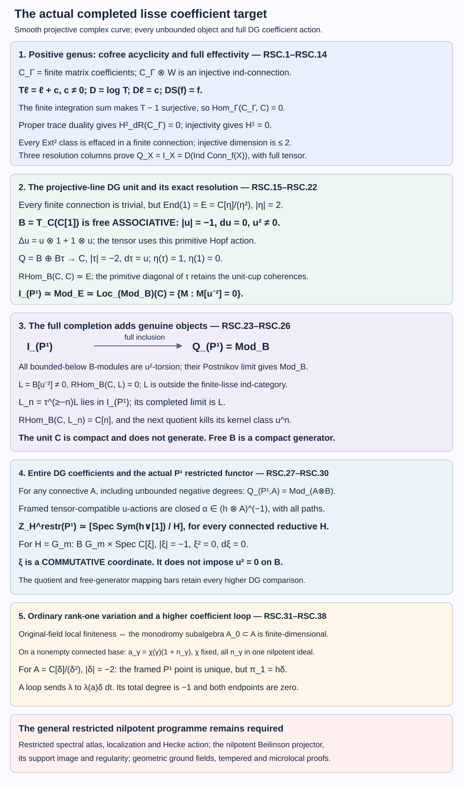
Figure 3.26. The positive-genus cofree acyclicity and three-column effectivity proofs are (RSC.4)–(RSC.14). The actual projective-line unit, resolution and full completion are (RSC.15)–(RSC.26). The associative generator \(u\) is drawn with its nonzero square; the separate commutative coordinate \(\xi\) has square zero. The full coefficient and tensor-derivation comparisons are (RSC.27)–(RSC.30). General-curve restricted spectral geometry and the nilpotent projector remain additional arguments.
3.102. Ordinary rank-one restricted variation is an actual condition
Let \(A\) now be an ordinary complex algebra and let \(L\) be a projective \(A\)-module of rank one with an \(A\)-linear \(\Gamma\)-action. Its endomorphism algebra is canonically \(A\), by local line trivializations and descent. Write \(a_\gamma\in A^\times\) for its monodromy. In positive genus the preceding actual derived-heart model makes the restricted condition precisely original-field local finiteness of this representation. We prove \[ L\text{ is }\mathbf C\text{-locally finite} \quad\Longleftrightarrow\quad A_0=\mathbf C[a_\gamma:\gamma\in\Gamma]\subset A \text{ is finite-dimensional}. \tag{RSC.31} \] Choose finitely many \(A\)-generators of \(L\). Under the left condition their finite orbit spans have a finite sum \(V\), invariant under all \(\gamma\), and \(V\) still generates \(L\) over \(A\). The monodromy algebra acts on \(V\). This action is faithful: an element killing \(V\) kills \(L\), and a rank-one projective module is faithful, as checked after its local trivializations. Thus \(A_0\) embeds in the finite-dimensional \(\operatorname{End}_{\mathbf C}(V)\). Conversely \(A_0\ell\) is a finite invariant span for every \(\ell\in L\). The inverses are already present because \(\gamma^{-1}\) also belongs to the group.
If \(\operatorname{Spec}A\) is nonempty and connected, this finite algebra has no nontrivial idempotent. Here is the finite-algebra decomposition needed. Each maximal-ideal residue field is \(\mathbf C\), by the algebraically closed finite-field-extension argument. The Chinese-remainder quotient for \(r\) distinct maximal ideals has dimension \(r\), so there are only finitely many such ideals. Their intersection \(J\) is the Jacobson radical. Its powers stabilize by finite dimension; Nakayama applied to the stabilized ideal gives \(J^N=0\). Distinct maximal ideals are comaximal, so their \(N\)-th powers are comaximal and their intersection is \(J^N\). Chinese remainder now expresses the algebra as the product of these Artinian local quotients. Without nontrivial idempotents only one factor remains. Its radical is nilpotent. Hence \[ a_\gamma=\chi(\gamma)(1+n_\gamma),\qquad \chi:\Gamma\to\mathbf C^\times,\qquad n_\gamma\in\mathfrak m,\quad \mathfrak m^N=0. \tag{RSC.32} \] For radical nilpotence, the descending power filtration of a finite-dimensional algebra stabilizes; Nakayama applied at its unique maximal ideal makes that stabilized ideal zero. Equivalently finitely many nilpotent generators give an explicit exponent bound. Reduction preserves the monodromy product, so \(\chi\) is a character independent of the point in this connected base.
There is a precise ordinary formal-point description whenever \(\Gamma\) is finitely generated. Put \(S=\operatorname{Spec}\mathbf C[\Gamma_{\mathrm{ab}}]\); its group algebra is finite type, since the finitely many group generators and inverses generate it. A framed ordinary family as above gives its coefficient-algebra map. Equation (RSC.32) says it factors through the quotient by a power of the character maximal ideal. Conversely that quotient is finite-dimensional: its maximal ideal has finitely many generators, and their monomials of total degree below the chosen power span the quotient over its residue field. Its coefficient image therefore satisfies (RSC.31). For a disconnected affine base the finite algebra \(A_0\) supplies the finite idempotent partition and the characters of its factors. This proves the ordinary framed functor equality \[ (\mathcal Z^{\mathrm{restr}}_{\mathbf G_m})_{\mathrm{fr}}(A) =\left(\coprod_{\chi\in S(\mathbf C)} \widehat S_\chi\right)(A) \quad\text{on ordinary coefficient algebras}. \tag{RSC.33} \] The completion here means maps factoring through a finite infinitesimal character neighbourhood, with the finite partition just described. This formula does not discard negative DG directions to assert a derived atlas: it is explicitly its ordinary coefficient statement. On all DG coefficients the definition remains (RSC.1) and (RSC.27), and the projective-line calculation (RSC.29) is already the full derived one.
3.103. Translation, missing completed objects and higher coefficient loops
Exercise 3.BX. For the polynomial translation \(Tf(z)=f(z+1)\), find a preimage of \(z^2\) under \(T-1\). Verify that no nonzero translation-invariant linear functional exists on \(\mathbf C[z]\).
Solution 3.BX. Direct subtraction gives \[ (T-1)\left(\frac{z^3}{3}-\frac{z^2}{2}+\frac z6\right)=z^2. \tag{RSC.34} \] For any degree-\(d\) polynomial, subtract a multiple of \((T-1)z^{d+1}\), whose leading term is \((d+1)z^d\), and induct on degree. Constants are \((T-1)z\). Thus \(T-1\) is onto, and an invariant functional annihilates its whole image, so is zero. This is the polynomial part of the full generalized-eigenvalue argument in (RSC.8).
Exercise 3.BY. Check the resolution (RSC.20), its endomorphism and its Hopf diagonal. Why is replacing \(B\) by a graded-commutative odd algebra invalid?
Solution 3.BY. For each \(j\geq0\), \[ d(u^j\tau)=(-1)^j u^{j+1},\qquad e(u^j\tau)=u^j,\quad e(u^j)=0,\quad e^2=0. \tag{RSC.35} \] Every positive word is exactly such a differential, with a unique preimage, and the constant word survives. The displayed endomorphism has degree two and commutes with \(d\) on both summands. Its augmentation Hom has basis in degrees zero and two. The diagonal of \(d\tau\) is \(u\otimes1+1\otimes u\), the differential of the primitive diagonal of \(\tau\). In particular \[ \Delta(u^2) =(u\otimes1+1\otimes u)^2=u^2\otimes1+1\otimes u^2. \tag{RSC.36} \] The cross terms cancel because \(u\) is odd; neither square vanishes in the free associative algebra. In a graded-commutative algebra they would vanish, destroying the word resolution, its even localization and the completed module model.
Exercise 3.BZ. Exhibit a compatible tower in the finite-lisse ind-category of the projective line which is not effective there, and identify its actual completed limit.
Solution 3.BZ. Let \(L=B[u^{-2}]\), and set \(L_n=\tau^{\geq-n}L\). It has basis \(u^j\) for all integers \(j\leq n\), with \(u^{n+1}\) killed; its differential is zero. Each vector is killed by a power of \(u^2\), so each \(L_n\) belongs to (RSC.23). The quotient maps form the compatible Postnikov tower. The full completed limit is the Laurent word module \(L\): every degree eventually stabilizes, and the difference-operator computation of (RSC.24) proves effectivity.
Hom from the compact unit into \(L_n\) has only the kernel of its \(u\)-operator, represented by \(u^n\). Its degree is \(-n\), and the next quotient kills that class. Thus \[ \operatorname{RHom}_B(\mathbf C,L_n) \simeq\mathbf C[n],\qquad \lim_n\operatorname{RHom}_B(\mathbf C,L_n)=0. \tag{RSC.37} \] If the tower were effective in \(\mathscr I_{\mathbf P^1}\), mapping out of its generator would give zero on its effective limit. That limit would be zero, whose truncations cannot be the nonzero \(L_n\). It is therefore not effective there. This uses the mapping-space and action tower, rather than just the list of ordinary cohomology dimensions.
Exercise 3.CA. In (RSC.29), take the square-zero coefficient algebra \(A=\mathbf C[\delta]/(\delta^2)\), \(|\delta|=-2\), \(d\delta=0\), and a trivial frame. Compute the components and the first higher homotopy group of the framed restricted functor, for any \(H\).
Solution 3.CA. The free algebra mapping space is the mapping space of \(\mathfrak h^\vee[1]\) into \(A\). Hence \[ \pi_i=\mathfrak h\otimes_{\mathbf C}H^{-i-1}(A)\quad(i\geq0). \tag{RSC.38} \] There is one component, the zero derivation, because \(H^{-1}(A)=0\). Its first loop group is \(\mathfrak h\delta\); the higher positive groups vanish. On a generator \(\lambda\in\mathfrak h^\vee[1]\), the loop represented by \(a\in\mathfrak h\) is the actual closed coefficient \(\lambda(a)\delta\,dt\) in \(A\otimes\mathbf C[t,dt]\). Its degree is minus one and it vanishes at both endpoints. The polynomial interval contraction identifies its class with \(\lambda(a)\delta\), so these are all the loops. This is the full coefficient homotopy missing from an ordinary-heart point calculation.
Free further reading is the AGKRRV preprint The stack of local systems with restricted variation and geometric Langlands theory with nilpotent singular support, §1.5 and the projective-line example in “Ind-constructible sheaves on schemes,” under “Categorical \(K(\pi,1)\)'s,” for the definition and the completion phenomenon. The full applicable arguments here are (RSC.1)–(RSC.33), with the complete checked solutions (RSC.34)–(RSC.38). RBC.22–RBC.25 give the general-curve effective framed presentation, and RSE.37–RSE.38 give its full restricted Hecke-lisse image. GFP.55–GFP.56 prove original-complex full-image regularity and nilpotent-support containment. GZR.33 gives equality with all independent nilpotent support over the complex numbers. The other geometric ground fields and the tempered and full supported microlocal comparisons retain their separate requirements.
3.104. The general-curve restricted tensor functor
Keep the smooth projective complex curve \(X\), its chosen point \(x\), and the complete symmetric monoidal coefficient category \(\mathscr Q_X\) of (RSC.1)–(RSC.30). Let \(H\) be any connected reductive complex group. For a connective commutative DG algebra \(A\), define the entire space \[ \mathcal Z_H^{\mathrm{restr}}(X)(A) =\operatorname{Fun}^{\mathrm L,\otimes,\mathrm{rt}} \bigl(\operatorname{Rep}(H),\operatorname{Mod}_A(\mathscr Q_X)\bigr)^\simeq . \tag{RSP.1} \] The functors are \(\mathbf C\)-linear. The superscript retains the space of functors and invertible coherent transformations, with every higher path. “rt” means right t-exact. The target has the internal \(A\)-actions and their full free-action bars from (RSC.27). Scalar change is the actual derived extension of those actions. This defines a functor on all connective coefficient algebras; composition and its higher comparisons are the multiplication and unit maps of the same scalar bars.
There is an actual fibre functor \[ \varepsilon_x:\mathscr Q_X\longrightarrow\operatorname{Vect}_{\mathbf C}, \qquad \varepsilon_{x,A}:\operatorname{Mod}_A(\mathscr Q_X) \longrightarrow\operatorname{Mod}_A. \tag{RSP.2} \] For positive genus, (RSC.14) describes it by the exact underlying-vector-space functor on the ind-connection heart and its unbounded derived extension. It is conservative, because its cohomology is the underlying vector space of each cohomology representation. For genus zero it is the underlying complex of a module over the actual Hopf algebra \(B\), by (RSC.22)–(RSC.27). It is again conservative and t-exact. The diagonal representation action, or the primitive Hopf action, proves that both are symmetric monoidal. The free-action bar proves these assertions after any DG scalar extension as well. Thus the t-structure and zero objects in the internal coefficient category are detected by \(\varepsilon_{x,A}\).
The finite-dimensional representations generate \(\operatorname{Rep}(H)\) under shifts and colimits. The coaction argument and exact Reynolds projection (HN.18) express its heart as filtered unions of finite representations and split every finite representation into simples. Its entire derived category is consequently generated by these degree-zero objects, with all their morphisms retained. A continuous tensor functor is specified by its restriction to that small tensor DG category and its full free-module bar. Right t-exactness is equivalent to requiring all its finite degree-zero representation values to be connective. The tensor, representation-map and unit diagrams must still be supplied; this is not a prescription only on their isomorphism classes.
3.105. Finite coefficient windows and convergence on DG algebras
We prove convergence of (RSP.1) without replacing an unbounded coefficient algebra by its ordinary ring. Write \(A_n=\tau^{\geq-n}A\). The category \(\mathscr Q_X\) is left-complete, by the full positive-genus argument (RSC.14) and the projective-line module argument (RSC.24). Limits of internal \(A\)-modules are computed in \(\mathscr Q_X\): all action maps on that limit are induced by the projections, and the limit of their relation diagrams supplies every coherence. The forgetful functor to \(\mathscr Q_X\) is conservative and t-exact. In particular the internal module category is left-complete.
The following finite-window calculation fixes the transition functors. For \(r\geq0\), a module whose underlying cohomology lies in \([-r,0]\) has its entire action determined by \(A_r\): \[ \operatorname{Mod}_A(\mathscr Q_X)^{[-r,0]} \simeq \operatorname{Mod}_{A_r}(\mathscr Q_X)^{[-r,0]}. \tag{RSP.3} \] This is an equivalence of window categories, not of the whole module categories. The transition from an \(A\)-module to this window means intelligent truncation after scalar extension. To prove it, let \(J\) be the fibre of \(A\to A_r\); it is in degrees at most \(-r-1\). For a connective \(M\), the tensor \(J\otimes_A M\) lies in those same degrees. Compute it by the relative free scalar bar: all coefficient and module factors are connective, and realization only lowers their cohomological upper bounds. Its augmentation triangle proves that \(M\to A_r\otimes_A M\) is an equivalence after truncation to this window.
For the action itself, use a nonpositive coefficient model. A coefficient of degree below \(-r\), multiplied with a connective module input, has output below \(-r\). Any map from those discarded degrees to a target in \([-r,0]\) has contractible mapping space by t-structure orthogonality; the same holds after every nonnegative path shift. The full free-action diagram consists of maps out of tensors of coefficient factors with that module input. A term containing a discarded factor has this same upper bound. It therefore supplies no action or higher-relation choices in the window. The remaining diagrams are exactly the \(A_r\)-action diagrams, and their mapping spaces are the same limits. This proves (RSP.3), including all higher maps. It also shows directly that the two inverse window functors are restriction and intelligent truncation of extension.
Now take a compatible family of connective \(A_n\)-modules \(M_n\), where compatibility means \(A_n\otimes_{A_{n+1}}M_{n+1}\simeq M_n\), with its higher data. Restrict its actions to \(A\). The preceding triangle shows that its window \([-r,0]\) is constant as soon as \(n\geq r\). Those stabilized windows form an actual compatible Postnikov tower. Left completeness reconstructs its module \(M\), and the compatible maps to the \(M_n\)'s identify it with their limit: maps from any test object are precisely the limits of the same compatible window maps.
We check the scalar recovery rather than assume tensor commutes this limit. Fix \(n\), and then choose \(r\geq n\). The lower discarded part of \(M\) cannot affect the window \([-r,0]\) of \(A_n\otimes_A M\), because relative tensor with the connective \(A_n\) preserves that upper bound. Replacing \(A\) by \(A_r\) in this window also changes only terms below \(-r\), by the same scalar-bar calculation. Thus this window is the window of \(A_n\otimes_{A_r}M_r=M_n\). Since \(r\) can be arbitrarily large, left completeness proves the actual scalar recovery equivalence. Conversely this construction recovers a connective \(M\) from its scalar changes. Maps are recovered by the same limits of window mapping spaces. We have proved \[ \operatorname{Mod}_A(\mathscr Q_X)^{\leq0} \simeq \lim_n\operatorname{Mod}_{A_n}(\mathscr Q_X)^{\leq0}. \tag{RSP.4} \]
The tensor comparisons also converge. A tensor of connective inputs is connective, and a discarded lower-degree input cannot affect a fixed window of that tensor. Define the tensor in a window by truncating the actual relative tensor; association and symmetry descend because the discarded terms remain below the window. Every fixed finite tensor diagram is therefore recovered from these compatible windows. Its full coherent diagram is a limit of such operation and relation diagrams, so it is recovered as well. Applying this calculation to all finite representation values and all their tensor and morphism diagrams gives \[ \mathcal Z_H^{\mathrm{restr}}(X)(A) \xrightarrow{\sim} \lim_n \mathcal Z_H^{\mathrm{restr}}(X)(A_n). \tag{RSP.5} \] The map is the actual scalar-change map. No exchange of an infinite colimit of representation windows with a Postnikov limit is used: each finite representation and each operation is handled first, and then limits of these functor diagrams commute with limits. In particular all negative coefficient degrees and every higher functor transformation survive.
3.106. Faithfully flat descent of the complete target
Call \(A\to A'\) derived faithfully flat when \(H^0(A')\) is faithfully flat over \(H^0(A)\) and \[ H^j(A')=H^j(A)\otimes_{H^0(A)}H^0(A') \quad(j\leq0). \tag{RSP.6} \] The whole unbounded scalar-module descent proof in (TBF.3)–(TBF.6) applies to this condition. We recall the steps relevant here. Flat scalar extension computes cohomology by the degree-zero flat extension and is conservative. Its augmented Amitsur complex on an ordinary module becomes split after this faithfully flat extension, by inserting the first unit. Its exactness descends. A bounded-below complex has only finitely many cosimplicial degrees contributing to any fixed total degree, so the same argument gives its full derived descent and all derived Hom comparisons. For an arbitrary complex take the inverse limit of its intelligent lower truncations. Flat extension commutes these particular Postnikov limits: both sides have the same eventually constant cohomology in each fixed degree. The difference-operator computation for ordinary modules proves effectivity, and limits of the two tower directions commute. This proves unbounded scalar descent without asserting that tensor commutes an arbitrary infinite product totalization.
To transport it to \(\mathscr Q_X\), use its actual compact-module model. In positive genus the small DG category \(\mathscr L_X\) compactly generates by (RSC.14). In genus zero the free module \(B\) compactly generates by (RSC.26). For a small full DG category \(\mathcal D\) of compact generators and their finite cones and retracts, the representable free bar gives \[ \mathscr Q_X\simeq\operatorname{Mod}_{\mathcal D},\qquad \operatorname{Mod}_A(\mathscr Q_X) \simeq\operatorname{Mod}_{A\otimes_{\mathbf C}\mathcal D}. \tag{RSP.7} \] The first statement is the full Hom/coend comparison already proved in (GSL.9); its detection argument uses the just-listed actual generators. The second identifies the commuting \(A\)-action and \(\mathcal D\)-action, and its entire free bar. Test descent on each object of \(\mathcal D\). It is exactly the unbounded \(A\)-module descent just proved. Each \(\mathcal D\)-action map then descends by the full Hom comparison; the equations and higher paths descend by their limits of mapping spaces. Thus, with \(A'^p\) denoting the \((p+1)\)-fold derived tensor over \(A\), \[ \operatorname{Mod}_A(\mathscr Q_X) \xrightarrow{\sim} \operatorname{Tot}_{p\geq0} \operatorname{Mod}_{A'^p}(\mathscr Q_X). \tag{RSP.8} \] This descent calculation is objectwise on a full DG generator model. It does not assume that the underlying-vector-space functor on the ind-connection heart preserves arbitrary products.
These comparisons preserve the tensor, unit and braiding, since they are the original scalar-change functors and the fully faithful mapping comparisons preserve their defining diagrams. The connective condition is local: the fibre functor (RSP.2) detects it, and the ordinary faithfully flat coefficient extension detects every cohomology degree of that fibre. Finally, functors with specified tensor structure are limits of their object, map, tensor-operation and relation diagrams. Taking these limits in (RSP.8), and imposing the local connective condition on finite representation values, proves actual faithfully flat descent for (RSP.1).
3.107. The genuine framed quotient, without a representability shortcut
Compose \(z\in\mathcal Z_H^{\mathrm{restr}}(X)(A)\) with (RSP.2). Its finite representation values are dualizable connective \(A\)-modules, with duals and all tensor powers connective. The full projective criterion (CSD.4) makes each a finite projective derived \(A\)-module. Its rank is the original representation dimension: symmetric tensor functors preserve the coevaluation–symmetry–evaluation trace, which is that dimension over \(\mathbf C\). At any residue field the trace of the identity of a projective module is its ordinary rank. Characteristic zero makes equality of these integer scalars equality of their ranks.
Apply the regular Hopf reconstruction (TBF.2)–(TBF.5), now on \(\operatorname{Spec}A\). It constructs the actual affine derived \(H\)-torsor \(\mathcal P_{z,x}\) from the regular representation algebra. Its scalar algebra is faithfully flat with every negative cohomology group retained; its two-fold tensor identity is the right torsor identity; its associated representation bundles are precisely these fibre values.
Let \(\mathcal Y_H^{\mathrm{restr}}(X)\) be the fibre of the point evaluation over the neutral fibre functor, with the frame isomorphism included. For every actual derived affine \(z\), Hopf reconstruction and its complete naturality give the Cartesian comparison \[ \mathcal Y_H^{\mathrm{restr}}(X) \times_{\mathcal Z_H^{\mathrm{restr}}(X)}\operatorname{Spec}A \simeq\operatorname{Isom}_A^H (H_A,\mathcal P_{z,x}). \tag{RSP.9} \] The right side is the actual frame torsor. The equivariant matrix comparisons in (TBF.5) prove the equality on all representation maps, tensor maps and higher transformations; it is not a statement just about ordinary isomorphism classes. It is representable affine, smooth, faithfully flat and of finite presentation over \(A\). Indeed after the same faithfully flat trivialization it is \(H_A\); the full torsor-descent proof used in (TBF.4) descends precisely those properties. The group acts by changing the frame.
The two-fold fibre product of this cover is therefore \(\mathcal Y_H^{\mathrm{restr}}(X)\times H\), with the action-nerve maps. The entire higher fibre products are its corresponding iterated products, by the same torsor identity and its associativity. Apply the faithfully flat descent of §3.106 to the functor and its frame. The augmentation of this full action nerve gives \[ \mathcal Z_H^{\mathrm{restr}}(X) \simeq [\,\mathcal Y_H^{\mathrm{restr}}(X)/H\,]_{\mathrm{fpqc}}. \tag{RSP.10} \] It identifies every object, arrow and higher path, and commutes with arbitrary scalar changes because all its bars and Cartesian frames do. This proves a genuine general-curve framed quotient of prestacks. It does not prove that the framed prestack is an affine scheme, an ind-affine ind-scheme, or a finite connection atlas. The finite full de Rham atlas of (DCA.23) is not a substitute for those missing restricted representability arguments.
3.108. Exactly what bounded coefficients permit
Let \(A\) have cohomology in \([-N,0]\), for some finite \(N\). Any point in (RSP.1) takes a finite representation to an object whose fibre is projective over \(A\), by the preceding criterion. Its fibre therefore has cohomology in that same interval, and t-exact conservativity of (RSP.2) gives that bound in \(\mathscr Q_X\).
For positive genus the completed and ind targets are already equal by (RSC.14). For genus zero their full inclusion identifies all bounded-below objects, by the torsion proof (RSC.23)–(RSC.24). Hence every finite representation value lies in \(\mathscr I_X\). Its entire internal \(A\)-action lifts through that fully faithful continuous inclusion: all action maps, relations and higher homotopies lift uniquely, using their original mapping spaces. The tensor and representation maps lift in the same way. Extending from finite representations by the full continuous bar gives \[ \operatorname{Fun}^{\mathrm L,\otimes,\mathrm{rt}} (\operatorname{Rep}(H),\operatorname{Mod}_A(\mathscr I_X))^\simeq \xrightarrow{\sim}\mathcal Z_H^{\mathrm{restr}}(X)(A) \quad(H^j(A)=0\text{ for }j<-N). \tag{RSP.11} \] For bounded coefficients the comparison is (RSP.11), including all functor transformations. The bounded derived-affine presentation and universal-coefficient descent in §§3.194–3.201 prove the normalized tensor-functor comparison for all connective DG coefficients. The entire completed category still has additional objects, as in Solutions 3.BZ and 3.DL; the ind-category need not be left-complete.
3.109. Original-field local finiteness in a faithful representation
For an ordinary coefficient algebra \(A\) and positive genus, the heart of the actual internal category is the category of \(A\)-module objects in the ind-connection heart. An internal module in the heart is exactly a locally finite complex \(\Gamma\)-representation with commuting \(A\)-action: in the cohomological model all degree-zero action maps and their associativity are the ordinary heart maps, whose positive path spaces vanish. This identifies the actual ordinary meaning of the restricted point condition.
Let \(P\) be a finite projective \(A\)-module, with a commuting \(A\)-linear \(\Gamma\)-action. If it is locally finite over \(\mathbf C\), choose finitely many \(A\)-generators and take the sum \(V\) of their finite \(\Gamma\)-orbit spans. The image algebra \(\mathcal A_\Gamma\) of \(\mathbf C[\Gamma]\) in \(\operatorname{End}_A(P)\) preserves \(V\). Restriction to \(V\) is injective: an \(A\)-linear operator killing those generators kills all of \(P\). Conversely if \(\mathcal A_\Gamma\) is finite-dimensional, \(\mathcal A_\Gamma p\) is a finite invariant span for every \(p\). We have therefore proved the exact ordinary criterion \[ P\text{ is locally finite over }\mathbf C \quad\Longleftrightarrow\quad \dim_{\mathbf C}\operatorname{im} \bigl(\mathbf C[\Gamma]\to\operatorname{End}_A(P)\bigr)<\infty. \tag{RSP.12} \] It does not require \(P\) to be a line or the image algebra to be commutative.
For an \(H\)-torsor, it suffices to check this condition on one faithful representation and its dual. A faithful closed representation presents every finite \(H\)-representation as a subquotient of finite sums of tensor products of that representation and its dual: its matrix entries and inverse determinant generate the regular coefficient algebra, and a finite comodule embeds in finite copies of its finite coefficient span. This is the same concrete coefficient argument used in (GSL.10). Local finiteness is closed under finite tensors, sums, subobjects and quotients. It is also preserved by dualizing a finite projective \(A\)-module with locally finite action: the finite-dimensional image algebra is generated by finitely many invertible monodromy operators; their inverses lie in it, and their transposes act through its finite-dimensional opposite algebra. The transpose action on \(P^\vee\) consequently has finite-dimensional image. The coefficient subquotient argument therefore gives the criterion for every finite representation. This tests original-field local finiteness, not only finite rank over \(A\).
3.110. A coefficient extension which fails the restricted test
Take \(A=\mathbf C[t,t^{-1}]\), \(\Gamma=\mathbf Z\), and \(P=A\), with its generator acting by multiplication by \(t\). This is a free rank-one \(A\)-representation, but \[ \operatorname{im}\bigl(\mathbf C[\mathbf Z]\to\operatorname{End}_A(A)\bigr) =\mathbf C[t,t^{-1}] \tag{RSP.13} \] is infinite-dimensional over \(\mathbf C\). The orbit of \(1\) consists of the linearly independent Laurent monomials. Every closed complex specialization \(t=c\ne0\) is a finite-dimensional complex representation, so ordinary closed coefficient points do not detect the original-field local-finiteness failure of this family.
The same argument holds over \(K=\overline{\mathbf C(t)}\): the powers of the distinguished transcendental element are still linearly independent over \(\mathbf C\). The resulting rank-one \(K\)-representation is finite over \(K\) and fails the restricted coefficient condition relative to \(\mathbf C\). This is the coefficient-level distinction also visible in the explicit operator submodule calculation (KF.14). It explains why generic field points of the full de Rham stack cannot be inserted into a restricted projector proof without their original-field condition.
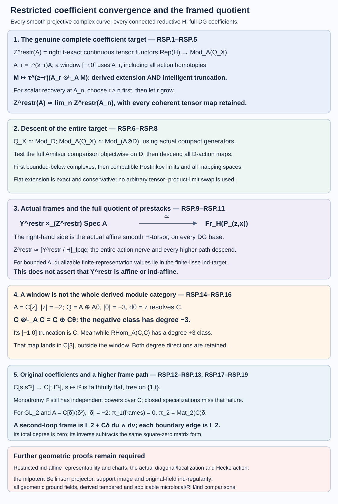
Figure 3.27. The full finite-window and scalar-recovery comparisons are (RSP.3)–(RSP.5); the unbounded coefficient descent is (RSP.6)–(RSP.8). The Cartesian torsor and the full quotient are (RSP.9)–(RSP.10), with bounded-coefficient replacement in (RSP.11). The bottom examples preserve the degree-minus-three tensor class, the original-field monodromy condition and the degree-two frame path of Solutions 3.CB–3.CD. The framed prestack has not here been proved affine or ind-affine.
3.111. Derived windows, a flat cover and a higher frame path
Exercise 3.CB. Put \(A=\mathbf C[z]\), \(|z|=-2\), \(dz=0\), so that \(A_1=\mathbf C\). Compute the actual derived scalar change of the augmentation module \(\mathbf C\). Explain the precise window equivalence of (RSP.3) and why it does not assert full DG equivalence of unrestricted module categories.
Solution 3.CB. The finite semifree resolution is \[ Q=A\oplus A\theta,\qquad|\theta|=-3,\quad d\theta=z, \qquad Q\xrightarrow{\sim}\mathbf C. \tag{RSP.14} \] Multiplication by \(z\) injects the second summand, with the differential sign of its homogeneous coefficient. Its image is the positive-\(z\) ideal, leaving exactly the constant class. Thus \[ \mathbf C\otimes_A^{\mathbf L}\mathbf C =\mathbf C\oplus\mathbf C\theta,\qquad H^{-3}=\mathbf C\theta,\quad d\theta=0. \tag{RSP.15} \] Truncating this module to \([-1,0]\) gives just \(\mathbf C\), exactly the window comparison. For \(\mathbf C\oplus\mathbf C[1]\), the extra scalar-change classes have degrees \(-3,-4\), still outside that window. On the other hand the same resolution gives \[ \operatorname{RHom}_A(\mathbf C,\mathbf C) =\mathbf C\oplus\mathbf C[-3],\qquad \operatorname{Hom}_A(\mathbf C,\mathbf C[3])=\mathbf C. \tag{RSP.16} \] The target shift in the second assertion is outside \([-1,0]\). It detects the missing higher morphism of the whole module category, and so does not contradict the equivalence of window infinity-categories. This calculation tests both the derived tensor and the mapping-degree direction.
Exercise 3.CC. For the family (RSP.13), make the faithfully flat coefficient change \[ \mathbf C[s,s^{-1}]\longrightarrow\mathbf C[t,t^{-1}], \qquad s\longmapsto t^2 . \tag{RSP.17} \] Can it make the rank-one family, with monodromy \(s\), locally finite over the original field?
Solution 3.CC. The target is free of rank two with basis \(1,t\): every Laurent monomial has a unique even or odd exponent, giving this decomposition over the source. Projection onto the even part is a source-linear retraction of the unit, so flatness is faithful. The changed monodromy acts on \(1\) by the distinct powers \(t^{2j}\), \(j\in\mathbf Z\). Their Laurent linear independence proves that its image algebra is still infinite-dimensional over \(\mathbf C\). Thus this genuinely faithfully flat cover does not repair the restricted-condition failure. Every further closed complex specialization has finite-dimensional monodromy; those pointwise specializations are not a faithfully flat cover of the original family.
Exercise 3.CD. Take the neutral restricted \(GL_2\) fibre functor and \(A=\mathbf C[\delta]/(\delta^2)\), \(|\delta|=-2\), \(d\delta=0\). Compute the whole frame space in (RSP.9), including its positive homotopy groups at the identity.
Solution 3.CD. A frame is an invertible endomorphism of \(A^2\). Its full mapping complex is \[ \begin{gathered} \operatorname{RHom}_A(A^2,A^2)=\operatorname{Mat}_2(A),\\ \pi_0\operatorname{GL}_2(A)=GL_2(\mathbf C),\\ \pi_i\operatorname{GL}_2(A)_{\mathrm{id}} =\operatorname{Mat}_2H^{-i}(A)\quad(i>0). \end{gathered} \tag{RSP.18} \] Indeed an endomorphism is invertible exactly when its degree-zero cohomology matrix is invertible: multiplying by a lift of that inverse leaves a nullhomotopic difference, so the underlying derived endomorphism is an equivalence. Invertibility selects those components of the full endomorphism mapping space; it changes none of their higher homotopy groups. Hence the first loop group is zero, the second is \(\operatorname{Mat}_2(\mathbf C)\delta\), and all higher groups vanish. For \(C\in\operatorname{Mat}_2(\mathbf C)\), a representative of this second loop, with both parameter directions constant on their boundary, is \[ I_2+C\delta\,du\wedge dv . \tag{RSP.19} \] It is a closed degree-zero matrix in the polynomial two-parameter de Rham path algebra, with inverse \(I_2-C\delta\,du\wedge dv\). Restriction to every boundary edge kills one of the displayed differentials and gives the identity. The two successive relative interval integrations identify its class with \(C\delta\); their one-variable contraction is the one used in Solution 3.CA. These are all its second loops. They are the actual frame homotopies, distinct from the first-loop coefficient-point homotopies in (RSC.38).
The construction and comparisons proved here are (RSP.1)–(RSP.12), with the full coefficient example (RSP.13) and complete solutions (RSP.14)–(RSP.19). RBC.22–RBC.25 give the framed derived ind-affine presentation; the subsequent diagonal and localization constructions lead to RSE.37–RSE.38 and NTR.16. GFP.55–GFP.56 give the full original-complex restricted projector image and its chartwise regularity and nilpotent-support containment. Equality with every independently nilpotent-supported object, the other geometric ground fields and the tempered and supported microlocal comparisons retain their stated requirements. The free AGKRRV preprint, The stack of local systems with restricted variation and geometric Langlands theory with nilpotent singular support, in “The prestack” and “Convergence,” gives the defining convergence and deformation framework; the finite-window, complete-module descent and full frame arguments above supply the claims used here.
3.112. Ordinary framed points and their actual coefficient coalgebra
Retain \(X,x,H,\mathscr Q_X\) and the entire restricted prestack of (RSP.1). The finite coefficient charts below represent its restriction to ordinary coefficient algebras, including nonreduced algebras. A derived thickening includes additional homotopy data.
For positive genus put \(\Gamma=\pi_1(X,x)\), in the complex local-system realization of (RSC.14), and let \(C_X=C_\Gamma\) be the representative-function Hopf algebra of §3.97. For genus zero put \(C_X=\mathbf C\), using the trivial finite-connection heart proved in §3.98. For every ordinary commutative complex algebra \(A\), we claim the natural identification \[ \mathcal Y_H^{\mathrm{restr}}(X)(A) =\operatorname{Hom}_{\mathrm{Hopf}/A} \bigl(A\otimes_{\mathbf C}\mathcal O(H),\,A\otimes_{\mathbf C}C_X\bigr). \tag{SCI.1} \] The left side is the full framed point space; on these tests it is a set.
Indeed its finite representation values have fibre \(A\otimes V\), by the frame. That fibre is concentrated in degree zero. The conservative t-exact functor (RSP.2) therefore puts the values in the heart of the internal category. The heart is precisely \(A\)-module objects in the locally finite connection heart, by §3.109. Equivalently they are \(A\)-linear right \(C_X\)-comodules. Finite representations generate the whole source by the full continuous bar of §3.104, so this retains the original functor. Mapping spaces between heart objects have no positive homotopy groups; a transformation compatible with the fixed frame is the identity after forgetting and hence is itself the identity. Thus there are no residual automorphisms or higher paths on an ordinary test.
Here is the coefficient reconstruction of (SCI.1). For a representation \(V\), a vector \(v\), and a covector \(\ell\), send its matrix coefficient \(c_{\ell,v}\in\mathcal O(H)\) to \[ \phi(c_{\ell,v}) =(\ell\otimes\mathrm{id})\,\delta_{F(V)}(v) \in A\otimes C_X . \tag{SCI.2} \] The frame identifies the vector and covector in this expression with their constant \(A\)-extensions. Naturality gives all coefficient relations; tensor compatibility gives multiplication, and the unit gives the constant coefficient. One can verify that these are all relations without imposing an additional reconstruction theorem: every finite-dimensional subcomodule of the regular representation embeds by its coaction into finitely many copies of its coefficient space. Applying this to a linear relation between finitely many coefficients reduces it to a representation-map relation, which the functor respects. Conversely evaluating a coefficient on that regular representation recovers it. This is the same regular-coefficient argument used in (TBF.2)–(TBF.5).
In a basis, coassociativity of \(\delta\) says exactly that \(\phi\) preserves the coproduct; its counit says that \(\phi\) preserves the Hopf counit. It then preserves the antipode too. In the convolution algebra of \(A\)-linear maps from \(A\otimes\mathcal O(H)\) to \(A\otimes C_X\), both \(S_{C_X}\phi\) and \(\phi S_H\) are inverses of \(\phi\); associativity and the unit make such an inverse unique. Conversely a Hopf map gives every representation its associated \(C_X\)-coaction by its matrix coefficients. This respects tensor products, duals and representation maps, has the fixed underlying frame, and extends by the same full continuous bar. The two constructions are inverse, over every ordinary \(A\). No reducedness, finite generation, or flatness of \(A\) was used.
3.113. Finite stages cut out by explicit polynomial identities
Every finite collection in \(C_X\) lies in a finite-dimensional subcoalgebra. For \(C_\Gamma\), write its elements as finite sums of finite-representation matrix coefficients and take the sum of their coefficient spaces. Coproduct of a matrix coefficient is the finite sum of the two coefficient matrices, so this is a subcoalgebra. Enlarging it by its antipode and by \(\mathbf C1\) gives a subcoalgebra \(E\) with \[ 1\in E,\qquad \Delta E\subset E\otimes E,\qquad S(E)=E. \tag{SCI.3} \] Here \(S^2=1\), directly from inversion of the argument of a representative function. Such \(E\)'s form a filtered set under inclusion: the sum of two is again such a subcoalgebra. For genus zero take \(E=\mathbf C\). We do not require \(E\) to be a subalgebra.
Choose the faithful closed representation \(H\hookrightarrow GL_n\) already constructed in Lesson 2. Its matrix coordinates and inverse determinant give a finite presentation \[ \mathcal O(H)=\mathbf C[b_1,\ldots,b_m]/(r_1,\ldots,r_s). \tag{SCI.4} \] Finiteness of the relation ideal uses the following polynomial argument. If \(R\) is Noetherian and \(I\subset R[t]\), the assertion is immediate when \(I=0\). Otherwise the leading coefficients of members of \(I\), together with zero, form an ideal: align degrees by powers of \(t\) to check addition. Choose finitely many polynomial witnesses generating that ideal, and let \(N\) bound their degrees. Members of \(I\) of degree at least \(N\) can have their leading term removed by those witnesses. The members of degree less than \(N\) form a submodule of the finite Noetherian module \(R^N\), hence have finitely many module generators. These generators and the witnesses generate \(I\), by degree reduction. A finite direct sum of Noetherian modules is Noetherian, by the projection exact sequence and induction, so the module assertion follows from the ideal assertion over \(R\). Starting with the field and inducting over variables proves the needed finite generation.
Fix a basis \(e_1,\ldots,e_d\) of \(E\). In \[ P_E=\mathbf C[x_{i\alpha}:1\leq i\leq m,\ 1\leq\alpha\leq d], \qquad q_i=\sum_{\alpha=1}^d x_{i\alpha}\otimes e_\alpha \in P_E\otimes C_X, \tag{SCI.5} \] impose first \(r_j(q_1,\ldots,q_m)=0\). Each is a finite expression in the finite-dimensional span of products of at most \(\deg r_j\) elements of \(E\). Vanishing means vanishing of its finitely many scalar polynomial coefficients in a basis of that span.
Next express \(\Delta_H(b_i)\) by a polynomial \(D_i(b\otimes1,1\otimes b)\) and impose \[ \Delta_{C_X}(q_i)=D_i(q\otimes1,1\otimes q), \qquad \varepsilon_{C_X}(q_i)=\varepsilon_H(b_i). \tag{SCI.6} \] These again give finitely many polynomial coefficient equations. On the left, \(\Delta E\subset E\otimes E\); on the right only the finitely many products in \(D_i\) occur. The relation equations make evaluation on \(\mathcal O(H)\) well-defined. Since the two coproduct composites are algebra maps, checking their equality on the \(b_i\)'s checks it on every element. The counit check is equally sufficient, and the convolution argument supplies the antipode. Define \[ I_E=(\text{all the coefficient equations just specified})\subset P_E, \qquad Y_E=\operatorname{Spec}(P_E/I_E). \tag{SCI.7} \] This is an ordinary affine scheme of finite type. Its \(A\)-points are precisely the Hopf maps in (SCI.1) with \(\phi(b_i)\in A\otimes E\) for every generator. This equality is functorial on all ordinary algebras, including arbitrary nilpotents.
3.114. Closed transitions, the filtered presentation and the ordinary quotient
For \(E\subset E'\), the linear condition that every generator image lie in \(A\otimes E\) cuts out a closed linear subspace of \((E')^m\). On this subspace the equations defining \(Y_{E'}\) are exactly the same coefficient identities that define \(Y_E\): equality in \(A\otimes C_X\) or in \(A\otimes C_X^{\otimes2}\) is independent of an enlarged coefficient basis. Thus \[ Y_E\hookrightarrow Y_{E'} \quad\text{is a closed embedding}. \tag{SCI.8} \] More explicitly, extend a basis of \(E\) to one of \(E'\). Quotient the larger coordinate ring by the extra coordinates. Its relation, coproduct and counit polynomials reduce to the previous ones; a change of basis in their finite coefficient spans does not change their ideal. This gives the asserted quotient map of rings.
Any Hopf map in (SCI.1) has only finitely many coefficient functions among its \(m\) generator images. They lie in some \(E\) of (SCI.3). Conversely every \(Y_E\)-point gives that Hopf map. The transitions are inclusions on these sets, so equality at a larger stage is exactly equality of the original maps. We have therefore constructed, rather than assumed, the ordinary prestack presentation \[ \left.\mathcal Y_H^{\mathrm{restr}}(X)\right|_{\mathrm{CAlg}^{\heartsuit}} \simeq\underset{E}{\operatorname{colim}}\,Y_E . \tag{SCI.9} \] All transitions are closed and all stages are affine of finite type. The presentation is unchanged by a different finite presentation of \(\mathcal O(H)\): both identify with the same functor (SCI.1), and the images of any finite alternative list of generators lie at some enlarged finite coefficient stage.
The chosen generator space can be made stable under conjugation by \(H\): take all matrix coordinates of the faithful representation together with its inverse determinant. Conjugation acts linearly on the matrix coordinates and fixes the determinant. Consequently it preserves the condition \(\phi(b_i)\in A\otimes E\), over every ordinary \(A\). Thus each \(Y_E\) is \(H\)-stable. The actual frame-torsor descent of (RSP.9)–(RSP.10) gives the ordinary presentation \[ \left.\mathcal Z_H^{\mathrm{restr}}(X)\right|_{\mathrm{CAlg}^{\heartsuit}} \simeq\underset{E}{\operatorname{colim}}\,[Y_E/H]_{\mathrm{fpqc}} . \tag{SCI.10} \] Here is effectivity at a finite stage, which is needed for this assertion. Trivialize an ordinary point's actual affine frame torsor on its own faithfully flat affine coordinate algebra \(A'\). The resulting framed point has finitely many generator coefficients, hence belongs to one \(Y_E(A')\). Its descent transition changes the frame by \(H\), so the \(H\)-stability just proved descends this finite-stage condition. Equality and all torsor isomorphisms are the corresponding descent equalities. Closedness of each quotient transition can be checked after this same faithfully flat trivialization: it is (SCI.8); its defining ideal descends with its original relations. This proves a representable closed transition. It does not supply the derived thickening of these ordinary charts.
3.115. An exact coefficient-stage model for one monodromy generator
Consider the coefficient group \(\Gamma=\mathbf Z\) and \(H=\mathbf G_m\); this is not an identification of \(\Gamma\) with the fundamental group of every curve. A framed ordinary point is a unit \(a\in A^\times\) acting as its rank-one monodromy. By (RSP.12), its restricted condition is \[ \dim_{\mathbf C}\mathbf C[a,a^{-1}]<\infty \quad\Longleftrightarrow\quad a\text{ satisfies a nonzero polynomial over }\mathbf C. \tag{SCI.11} \] The forward implication is linear dependence of the powers. For the reverse, choose the monic polynomial of least degree vanishing on \(a\). Its constant term is nonzero: otherwise cancel one factor \(a\), using its invertibility, to obtain a smaller such polynomial. Its relation expresses both higher powers and \(a^{-1}\) in a finite span of nonnegative powers.
Factor this polynomial over \(\mathbf C\). Its roots are a finite subset \(\Lambda\subset\mathbf C^\times\), with finite multiplicities. Thus the functor is represented by the explicit system \[ T_{\Lambda,d} =\operatorname{Spec} \left(\mathbf C[t,t^{-1}] \Big/\prod_{\lambda\in\Lambda}(t-\lambda)^{d+1}\right), \qquad |\Lambda|<\infty,\quad d\geq0. \tag{SCI.12} \] When \(\Lambda\subset\Lambda'\) and \(d\leq d'\), the new polynomial is divisible by the old one, giving the closed embedding \(T_{\Lambda,d}\hookrightarrow T_{\Lambda',d'}\). Every algebraic unit factors through one stage; all stage points are algebraic units. Hence \[ Y_{\mathbf Z,\mathbf G_m}^{\mathrm{cl}} =\underset{\Lambda,d}{\operatorname{colim}}\,T_{\Lambda,d} =\coprod_{\lambda\in\mathbf C^\times} \underset{d}{\operatorname{colim}}\, \operatorname{Spec}\bigl(\mathbf C[u]/u^{d+1}\bigr), \qquad t=\lambda+u. \tag{SCI.13} \] The last expression includes the condition that an affine test meets only finitely many of the displayed components. To check it on a general, possibly disconnected \(A\), the relatively prime factors of the annihilating polynomial admit polynomial Bezout identities. Their images give orthogonal idempotents summing to \(1\); on each associated factor of \(A\), \(a-\lambda\) is nilpotent with a uniform finite bound. Conversely finitely many such idempotent pieces give the product annihilating polynomial. Thus no connectedness or Noetherian assumption on \(A\) is hidden in (SCI.13). The word “formal” for one component means exactly this filtered system of nilpotent thickenings, not a replacement of its points by just the label \(\lambda\).
3.116. A varying matrix family inside one finite coefficient stage
Exercise 3.CE. For \(\Gamma=\mathbf Z\), \(A=\mathbf C[s]\), and a fixed \(\lambda\in\mathbf C^\times\), set \[ M(s)=\begin{pmatrix}\lambda&s\\0&\lambda\end{pmatrix}. \tag{SCI.14} \] Decide its original-field local-finiteness condition, for the faithful \(GL_2\)-representation and its dual. Exhibit one finite coefficient subcoalgebra containing the entire family, without specializing \(s\).
Solution 3.CE. Put \(N=sE_{12}\); then \(N^2=0\). Multiplication, or induction followed by the same calculation for the inverse, gives for every integer \(k\) \[ M(s)^k=\lambda^k I_2+k\lambda^{k-1}sE_{12}, \qquad M(s)^{-1}=\lambda^{-1}I_2-\lambda^{-2}sE_{12}. \tag{SCI.15} \] Hence the image algebra \(\mathbf C[M,M^{-1}]\) is the two-dimensional span of \(I_2\) and \(sE_{12}\). They are independent over \(\mathbf C\): diagonal entries first kill the coefficient of \(I_2\), then the nonzero polynomial entry kills the other coefficient. Its action is locally finite by (RSP.12); the inverse transpose has the same property on the dual.
Writing \(f_\mu(k)=\mu^k\) and \(h_\mu(k)=k\mu^k\), one common coefficient subcoalgebra is \[ E=\operatorname{span}_{\mathbf C} \{1,f_\lambda,h_\lambda,f_{\lambda^{-1}},h_{\lambda^{-1}}\}. \tag{SCI.16} \] Repeated listed functions, for example when \(\lambda=\lambda^{-1}\), are simply included once when choosing a basis. The identities \(\Delta f_\mu=f_\mu\otimes f_\mu\) and \(\Delta h_\mu=h_\mu\otimes f_\mu+f_\mu\otimes h_\mu\) prove the subcoalgebra assertion. Inversion gives \(Sf_\mu=f_{\mu^{-1}}\), \(Sh_\mu=-h_{\mu^{-1}}\), and the counit values are \(1,0\), respectively. Matrix coefficients of (SCI.15) lie in \(A\otimes E\); the inverse determinant is the constant coefficient \(\lambda^{-2}\). Thus the full polynomial family factors through \(Y_E\). A varying off-diagonal polynomial entry does not force varying original-field semisimple monodromy; the finite image algebra is the actual test.
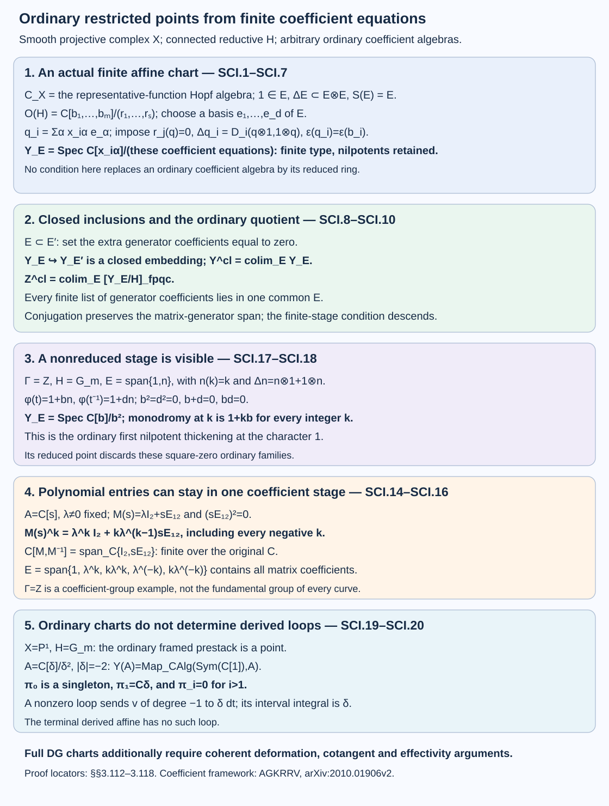
Figure 3.28. The ordinary coefficient equations and their closed transitions are (SCI.1)–(SCI.10). The first nilpotent stage is (SCI.17)–(SCI.18), and the varying matrix family is (SCI.14)–(SCI.16). The final panel compares the ordinary projective-line point with the genuine derived loop space (SCI.19)–(SCI.20). All displayed coefficient degrees and bases are those of the three solutions.
3.117. Computing the first ordinary nilpotent coefficient stage
Exercise 3.CF. For \(\Gamma=\mathbf Z\) and \(H=\mathbf G_m\), take \(E=\operatorname{span}_{\mathbf C}\{1,n\}\), where \(n(k)=k\). Compute the whole ordinary coefficient stage \(Y_E\), retaining nonreduced test algebras.
Solution 3.CF. The function \(n\) is a coefficient of the two-dimensional representation with monodromy \(I_2+E_{12}\). Its coproduct is primitive, its counit is zero, and its antipode is \(-n\), so \(E\) is one of the allowed subcoalgebras. Write \(\mathcal O(\mathbf G_m)=\mathbf C[t,u]/(tu-1)\). The counit equations for its two generator images give \[ \phi(t)=1+bn,\qquad \phi(u)=1+dn. \tag{SCI.17} \] The two group-like equations give \(b^2=0\) and \(d^2=0\): their only missing terms are respectively \(b^2 n\otimes n\) and \(d^2 n\otimes n\). The relation \(tu=1\) gives \(b+d=0\) and \(bd=0\). Here \(1,n,n^2\) are linearly independent functions, as evaluation at \(0,1,2\) verifies, so comparison of these scalar coefficients is valid after tensoring with every \(A\). Thus the exact coordinate ring is \[ \mathcal O(Y_E) =\mathbf C[b,d]/(b^2,d^2,b+d,bd) \simeq\mathbf C[b]/b^2 . \tag{SCI.18} \] Conversely every square-zero \(b\in A\) gives the Hopf map with \(d=-b\); hence no equations or points are missing. Evaluating at the monodromy generator gives \(t=1+b\), and its \(k\)-th power is \(1+kb\) for every integer \(k\), including negative \(k\). This is exactly \(T_{\{1\},1}\) of (SCI.12). Replacing the stage by its reduced point would discard its actual ordinary nilpotent families.
3.118. Why these ordinary charts are not the required derived charts
Exercise 3.CG. For \(X=\mathbf P^1\), \(H=\mathbf G_m\), and \(A=\mathbf C[\delta]/(\delta^2)\), \(|\delta|=-2\), compute the framed restricted point space. Compare it with the ordinary model (SCI.9).
Solution 3.CG. The ordinary finite-connection heart has \(C_X=\mathbf C\). A Hopf map from any group coordinate algebra to the trivial group's coordinate algebra is its counit, so the ordinary framed prestack in (SCI.9) is a point. The actual completed projective-line target, however, gives the full derived framed space (RSC.31)–(RSC.33), \[ \mathcal Y_{\mathbf G_m}^{\mathrm{restr}}(\mathbf P^1)(A) =\operatorname{Map}_{\mathrm{CAlg}_{\mathbf C}} \bigl(\operatorname{Sym}(\mathbf C[1]),A\bigr) =\operatorname{Map}_{\mathrm{Mod}_{\mathbf C}}(\mathbf C[1],A). \tag{SCI.19} \] Its underlying mapping complex is \(A[-1]\). It has one component and precisely \[ \pi_1=\mathbf C\delta,\qquad \pi_i=0\quad(i>1). \tag{SCI.20} \] For a generator \(v\) of degree \(-1\), the nonzero loop \(v\mapsto\delta\,dt\) in the polynomial interval de Rham algebra has the required degree and vanishes at both endpoints. Integration gives \(\delta\). This detects every loop: in the relative interval complex a degree-zero polynomial vanishes at both endpoints, and a one-form is its differential exactly when its integral is zero, by taking its polynomial primitive. This is the full interval contraction already used in Solution 3.CA.
Consequently the terminal derived affine extending that ordinary point has different values on this \(A\) from the genuine derived framed prestack. The construction (SCI.1)–(SCI.18) supplies finite ordinary coefficient charts and closed transitions, with arbitrary ordinary nilpotents retained; it does not establish the full DG ind-affine presentation. A DG presentation additionally requires infinitesimal lifting and coherent deformation arguments, compact cotangent bounds, effective derived charts and the convergence comparison with (RSP.5). Restricted localization, the Hecke action and their full restricted projector are constructed subsequently; GFP.55–GFP.56 give original-complex full-image regularity and nilpotent-support containment. These are not consequences of the ordinary presentation alone. Equality with all independent nilpotent support and the other geometric ground fields retain their requirements.
For the ordinary coefficient framework, see AGKRRV, The stack of local systems with restricted variation and geometric Langlands theory with nilpotent singular support, “Proof of ind-representability” and “Proof in the case of algebraic groups.” Equations (SCI.1)–(SCI.10) give the coefficient equations, closed transitions and ordinary-base descent; (SCI.11)–(SCI.20) describe the rank-one, matrix and derived examples.
3.119. A uniform odd-operator bound on the projective line
Let \(X\) be a smooth projective connected complex curve, \(x\in X(\mathbf C)\), and \(H\) a connected reductive complex group. Retain the actual categories \(\mathscr I_X\subset\mathscr Q_X\) and restricted prestack of (RSC.1) and (RSP.1). All coefficient algebras below are connective commutative DG \(\mathbf C\)-algebras; no lower cohomological bound is imposed unless stated.
For \(X=\mathbf P^1\), the full framed comparison (RSC.28) identifies a point with a closed degree-minus-one element \[ \alpha=\sum_{j=1}^{h}e_j a_j,\qquad h=\dim\mathfrak h,\qquad a_j\in A^{-1}. \tag{DRD.1} \] Here \(e_1,\ldots,e_h\) is a complex basis of \(\mathfrak h\). Work in a commutative DG model of \(A\); the free-generator mapping comparison in (RSC.28) also supplies all paths in that model. On any finite representation \(V\), the associative generator \(u\) of \(B=T_{\mathbf C}(\mathbf C[1])\) acts by \(d\rho(\alpha)\). In characteristic zero, graded commutativity gives \(a_j^2=0\). Every word of length \(h+1\) in the \(a_j\)'s repeats an index. Moving the repeated factors together, with their Koszul signs, kills that word. The matrix factors need not commute, since the scalar factors commute past them. Consequently \[ u^{h+1}|_{A\otimes V}=0,\qquad v^N|_{A\otimes V}=0,\qquad v=u^2,\quad N=\lfloor h/2\rfloor+1 . \tag{DRD.2} \] This is a uniform bound over all finite representations and all DG coefficient degrees. In a polynomial simplex or iterated interval model, each coefficient of \(\alpha\) is still odd of total degree minus one, so precisely the same word calculation holds for every higher path. The bound includes \(h=0\), when the operator is zero.
The torsion characterization (RSC.23) now puts each such value in \(\mathscr I_{\mathbf P^1}\). This assertion is independent of a chosen frame. For an unframed point, take its actual faithfully flat frame algebra \(A'\) from (RSP.9). For its finite representation value \(M\), localization is the scalar-linear telescope \[ M[v^{-1}]\otimes_A A' \simeq (M\otimes_A A')[v^{-1}]=0 . \tag{DRD.3} \] Scalar extension commutes with that telescope, since it is a colimit. Faithful flatness detects vanishing of every underlying cohomology group by (RSP.6). Thus \(M[v^{-1}]=0\) already over \(A\). Its underlying \(B\)-module lies in \(\mathscr I_{\mathbf P^1}\).
3.120. The ind-target comparison on every DG base
For positive genus, \(\mathscr I_X=\mathscr Q_X\) by (RSC.14). For genus zero, the preceding argument applies after the chosen-point identification \(X\simeq\mathbf P^1\) in §3.98. Every finite representation value of every restricted point therefore lies in \(\mathscr I_X\), on every connective \(A\).
The full continuous inclusion \(\mathscr I_X\to\mathscr Q_X\) lifts its internal \(A\)-action uniquely: a free \(A\)-action bar consists of colimits and maps between objects of \(\mathscr I_X\). All action maps, relations and higher homotopies retain their original mapping spaces. Tensor comparisons and representation maps lift in the same way. The finite representations generate \(\operatorname{Rep}(H)\) by the full continuous bar of §3.104. Hence \[ \operatorname{Fun}^{\mathrm L,\otimes,\mathrm{rt}} \bigl(\operatorname{Rep}(H),\operatorname{Mod}_A(\mathscr I_X)\bigr)^\simeq \xrightarrow{\sim}\mathcal Z_H^{\mathrm{restr}}(X)(A) \qquad(A\text{ connective}). \tag{DRD.4} \] Right t-exactness is the same on both sides, since the inclusion has the truncation and fibre compatibility proved in (RSC.23)–(RSC.24). Full faithfulness on the functor spaces follows by taking limits of their unchanged representation and tensor mapping spaces.
Equation (DRD.4) concerns these finite-representation tensor functors. It is compatible with the strict inclusion \(\mathscr I_{\mathbf P^1}\subsetneq\mathscr Q_{\mathbf P^1}\): the free module \(B\) and its periodic localization in (RSC.25)–(RSC.26) are still additional objects of the completed target. They are not made into finite representation values by (DRD.4).
The operator embedding (RSC.3) is fully faithful, continuous and symmetric monoidal on \(\mathscr I_X\). Its tensor assertion follows on finite connections and then by the two-variable colimit extension; its internal \(A\)-module comparison uses the same free-action bar. Apply the actual Hopf reconstruction with connection (TBF.2)–(TBF.7). The resulting natural map \[ i:\mathcal Z_H^{\mathrm{restr}}(X) \longrightarrow\mathcal Z_H^{\mathrm{dR}}(X) \tag{DRD.5} \] is fully faithful on every connective coefficient algebra, including all higher transformations. Here the right side is the full derived flat-torsor prestack already constructed in (DCA.21)–(DCA.24). A full flat-torsor point belongs to its image exactly when its finite associated operator values lie in \(\mathscr I_X\).
3.121. Square-zero lifting inside the stable operator image
Let \(B\to A\) be a derived square-zero coefficient extension with fibre \(J\). Thus \(J\), as a \(B\)-module, has its action through \(A\), and \[ J\longrightarrow B\longrightarrow A \tag{DRD.6} \] is the corresponding triangle of scalar modules. The extension need not split. Fix a restricted point \(z\) over \(A\) and a full flat-torsor lift \(\widetilde z\) over \(B\), with its specified reduction to \(i(z)\).
For a finite representation \(V\), let \(E_V\) and \(\widetilde E_V\) be its normalized operator values. Tensor (DRD.6) with \(\widetilde E_V\) over \(B\). Associativity of the actual relative tensor bar gives \[ J\otimes_A E_V\longrightarrow \operatorname{oblv}_B\widetilde E_V \longrightarrow E_V . \tag{DRD.7} \] Here \(\operatorname{oblv}_B\) forgets the coefficient action and retains the underlying complex of complex operator modules. The first term is \(J\otimes_B\widetilde E_V=J\otimes_A(A\otimes_B\widetilde E_V)\).
The value \(E_V\) lies in \(\mathscr I_X\), by (DRD.4). The object \(J\otimes_A E_V\) lies there too: compute it by the relative scalar bar in the full continuous image of \(\mathscr I_X\). That image is stable, so (DRD.7) puts \(\widetilde E_V\) in it. Its internal \(B\)-action, tensor maps and all coherent transformations lift uniquely through the full inclusion. The fibre is a finite projective \(B\)-module by the flat-torsor construction; it is connective, so the lifted tensor functor is right t-exact. Consequently \[ \mathcal Z_H^{\mathrm{restr}}(X)(B) \xrightarrow{\sim} \mathcal Z_H^{\mathrm{restr}}(X)(A) \mathop{\times}_{\mathcal Z_H^{\mathrm{dR}}(X)(A)} \mathcal Z_H^{\mathrm{dR}}(X)(B). \tag{DRD.8} \] Essential surjectivity is the construction just given. Full faithfulness is (DRD.5), and therefore includes every choice of reduction and every higher path. Finite composites of derived square-zero extensions have the same property by iterating these Cartesian comparisons.
3.122. Ordinary nilpotent reduction and unbounded convergence
Call \(B\to A\) a nilpotent coefficient thickening when \(H^0(B)\to H^0(A)\) is surjective with nilpotent kernel. The negative cohomology groups can be arbitrary.
First let \(D\to D/K\) be an ordinary coefficient quotient with \(K^m=0\). Suppose a full flat-torsor point over \(D\) has restricted reduction over \(D/K\). Each finite associated bundle \(E_D\) is coefficient-flat: locally it is finite projective over \(\mathcal O_X\otimes D\), hence is flat over \(D\). Its connection preserves the filtration by \(K^j\). Its successive operator quotients are \[ K^jE_D/K^{j+1}E_D \simeq (K^j/K^{j+1})\otimes_{D/K}E_{D/K}. \tag{DRD.9} \] Coefficient flatness makes the ordinary and derived tensors in this formula agree; this can be checked on the displayed locally free bundle and is natural for its connection. Every right side belongs to \(\mathscr I_X\) by the scalar bar. The finite filtration therefore puts \(E_D\) in \(\mathscr I_X\). No finite-dimensionality of \(D\), \(K\), or \(K^j/K^{j+1}\) is required.
Next let \(D\) be cohomologically bounded and connective. For a coefficient-flat associated bundle, its local finite projective presentation gives the canonical connection-compatible identity \[ H^r(E_D) \simeq H^r(D)\otimes_{H^0(D)}E_{H^0(D)} . \tag{DRD.10} \] Multiplication of coefficients defines this identity locally, and its naturality for the scalar-linear operator action makes it glue. The tensor is derived-exact on the coefficient-flat connection \(E_{H^0(D)}\). If the latter lies in \(\mathscr I_X\), so does every right side. The finite cohomology filtration of \(E_D\) then puts \(E_D\) in \(\mathscr I_X\).
For the general map \(B\to A\), start with a restricted point over \(A\) and a full lift over \(B\). Its reduction over \(H^0(A)\) is restricted by scalar change. Apply (DRD.9) to \(H^0(B)\to H^0(A)\), and then (DRD.10) to \(B_n=\tau^{\geq-n}B\). Each full \(B_n\)-point is restricted. These lifts and their transition equivalences form an actual compatible tower, since (DRD.5) is fully faithful. Restricted convergence (RSP.5) reconstructs its \(B\)-point. Full flat-torsor convergence is the torsor, associated-module and connection effectivity proved in (DCA.19)–(DCA.23): finite projective coefficient modules, their transition matrices and the proper connection complexes are recovered through the same Postnikov tower. Its full \(B\)-point is therefore the specified original lift. We obtain (DRD.8) for every nilpotent coefficient thickening.
In particular \(i\) is formally étale in the following exact sense: it identifies the full spaces of all nilpotent coefficient lifts over each of its points. This does not assert that every full flat connection over an arbitrary base is restricted. The original-field finite-monodromy condition (RSP.12) is still required on its ordinary reduction.
Taking \(A=H^0(B)\) gives the useful full comparison \[ \mathcal Z_H^{\mathrm{restr}}(X)(B) \simeq \mathcal Z_H^{\mathrm{restr}}(X)(H^0B) \mathop{\times}_{\mathcal Z_H^{\mathrm{dR}}(X)(H^0B)} \mathcal Z_H^{\mathrm{dR}}(X)(B). \tag{DRD.11} \] The maps and fibre products here retain their whole infinity-spaces. The equality specifies the negative coefficient directions over each restricted ordinary point; it does not delete them.
3.123. Finite projective gluing on the actual derived scalar square
Let \(B\to C\leftarrow D\) be connective DG algebras, with \(H^0(B)\to H^0(C)\) surjective and kernel of nilpotence exponent \(m\). Put \(R=B\times_C D\), the homotopy pullback of commutative DG algebras. Its underlying scalar triangle is \[ R\longrightarrow B\oplus D \xrightarrow{\,f-g\,}C. \tag{DRD.12} \] Surjectivity makes \(R\) connective. Write \(B_0=H^0(B)\), and similarly for the others. The long exact sequence gives a surjection \[ R_0\twoheadrightarrow S:=B_0\times_{C_0}D_0 \tag{DRD.13} \] with square-zero kernel. To verify its multiplicative assertion, compute the pullback using the polynomial interval algebra \(C[t,dt]\). A kernel class can be represented with zero \(B,D\) components: subtract boundaries lifting their zero cohomology classes. The remaining closed path has zero endpoints. Relative polynomial integration identifies its degree-zero class with \(c\,dt\), for a closed \(c\in C^{-1}\). The product of two such representatives is zero because \(dt^2=0\). The same interval contraction proves that these account for the entire kernel. In particular \(R_0\to D_0\) is a nilpotent quotient: its kernel has \(m\)-th power in the preceding square-zero kernel, hence has \(2m\)-th power zero.
Let \(\operatorname{Proj}(T)\) denote the full DG category of finite projective \(T\)-modules, namely retracts of finite free modules without shifts. There is an equivalence \[ \operatorname{Proj}(R)\xrightarrow{\sim} \operatorname{Proj}(B) \mathop{\times}_{\operatorname{Proj}(C)} \operatorname{Proj}(D). \tag{DRD.14} \] For full faithfulness, tensor (DRD.12) with the finite projective Hom complex. A finite projective is a retract of a finite free module, so its Hom commutes with all these scalar changes. The resulting fibre triangle of Hom complexes is exactly the mapping complex of the right-hand fibre product. It preserves composition, units and all mapping degrees.
Here is essential surjectivity, including the underlying projective existence. First glue ordinary finite projectives \(P_B,P_D\) with their specified \(C_0\)-isomorphism over the ordinary square defining \(S\). Choose complements \(Q_B,Q_D\) with \(P_B\oplus Q_B=B_0^a\) and \(P_D\oplus Q_D=D_0^b\). The complements \(Q_B\oplus B_0^b\) and \(Q_D\oplus D_0^a\) have an isomorphism over \(C_0\), since each becomes \(Q_B\oplus Q_D\) plus the common \(P\). Adding this complement makes the two modules free of rank \(a+b\). Their transition matrix lifts to an invertible matrix over \(B_0\): lift the matrix and its inverse, and invert the error by the finite geometric series in the nilpotent kernel. Changing this lifted basis makes the enlarged gluing the free module \(S^{a+b}\). The original summands give a compatible pair of idempotent matrices, hence an idempotent over \(S\).
Lift that idempotent across the square-zero kernel of \(R_0\to S\). For a matrix lift \(e\), put \(\delta=e^2-e\). It commutes with \(e\), has square zero, and \[ e'=e+(1-2e)\delta,\qquad (e')^2=e'. \tag{DRD.15} \] Indeed \((2e-1)^2=1+4\delta\), so its error is \(\delta-(1+4\delta)\delta=0\).
An ordinary \(R_0\)-idempotent lifts to an actual finite projective DG module as follows. Choose a closed matrix \(f:R^n\to R^n\) representing it. Form the two sequential mapping telescopes \(P=\operatorname{tel}(f)\) and \(Q=\operatorname{tel}(1-f)\). Filtered colimits commute with module cohomology; the induced endomorphisms on \(H^*(R^n)\) are the complementary idempotents \(e',1-e'\). Thus \(H^*(P)=e'H^*(R^n)\) and \(H^*(Q)=(1-e')H^*(R^n)\). The two initial telescope maps give an equivalence \(R^n\to P\oplus Q\), since on cohomology it is \(v\mapsto(e'v,(1-e')v)\). Hence \(P\) is a retract of \(R^n\), and \(H^0(P)\) is the required ordinary projective. This construction requires no strict idempotent matrix in the DG algebra.
Its restrictions have the required ordinary projectives. Maps between finite projective DG modules are retracts of finite matrix complexes, so their degree-zero maps are precisely the ordinary projective maps over \(H^0\). A map lifting an ordinary isomorphism acts invertibly on all cohomology, by the same retract description, and is an equivalence. Choose these equivalences on \(B,D\). Their \(C\)-comparison has the same degree-zero isomorphism as the specified transition, so a path between the two exists in the full \(C\)-mapping space. This identifies the triple with the required image. Together with the Hom-complex comparison it proves (DRD.14), including its higher paths. The argument restricts to any fixed rank.
The analogous statement for all unbounded modules is not asserted. Solution 3.CI gives an explicit failure even when \(R\) is an ordinary square-zero ring.
3.124. Nilpotent gluing of the full and restricted point functors
The full flat-torsor prestack has the actual atlas \(\mathcal Z_H^{\mathrm{dR}}(X)=[W/GL_b]\) of (DCA.23). Here \(W\) is a quasi-compact derived scheme, not assumed affine. A point consists of a finite projective rank-\(b\) module, its frame torsor and the corresponding equivariant map to \(W\).
Apply (DRD.14) to compatible points over \(B,D\). It glues their finite projective frame modules over \(R\), with every comparison. Trivialize that one module on its faithfully flat affine frame scheme over \(R\); its changes of frame and overlaps are the original \(GL_b\)-action. Scalar change preserves (DRD.12), because derived tensor is exact on underlying scalar modules.
The maps to \(W\) glue on that scalar square. To see this for a scheme, the ordinary spectra of \(R\to D\) and \(B\to C\) are nilpotent thickenings and have the same open sets. Choose principal opens of the coefficient base on which the \(D\)-map lands in an affine open of \(W\); these opens lift across the surjection \(R_0\to D_0\). The \(B\)-map lands in that same affine open, since its restriction to \(C\) does and \(B\to C\) is nilpotent on ordinary spectra. On an affine open of \(W\), the assertion is precisely that maps from its coordinate algebra preserve the homotopy limit \(R=B\times_C D\). Zariski descent then glues these affine comparisons. This also proves the comparison on every overlap and every higher path.
Apply it on the faithfully flat frame cover and its entire Čech nerve. Changes of frame are respected, and the full flat-torsor descent of (TBF.2)–(TBF.7) reconstructs the point and all its arrows. Thus \[ \mathcal Z_H^{\mathrm{dR}}(X)(R) \xrightarrow{\sim} \mathcal Z_H^{\mathrm{dR}}(X)(B) \mathop{\times}_{\mathcal Z_H^{\mathrm{dR}}(X)(C)} \mathcal Z_H^{\mathrm{dR}}(X)(D). \tag{DRD.16} \] For the restricted functor, first use this equivalence to glue the compatible full points. Its restriction over \(D\) is restricted, and \(R\to D\) is a nilpotent coefficient thickening by (DRD.13). The full lift comparison (DRD.8) therefore gives its unique restricted lift, with every coherent path. Hence \[ \mathcal Z_H^{\mathrm{restr}}(X)(R) \xrightarrow{\sim} \mathcal Z_H^{\mathrm{restr}}(X)(B) \mathop{\times}_{\mathcal Z_H^{\mathrm{restr}}(X)(C)} \mathcal Z_H^{\mathrm{restr}}(X)(D). \tag{DRD.17} \] This is infinitesimal cohesiveness on the stated full DG coefficient squares. It follows from finite projective frame gluing and stable operator-image lifting, without essential surjectivity for the gluing of all unbounded modules.
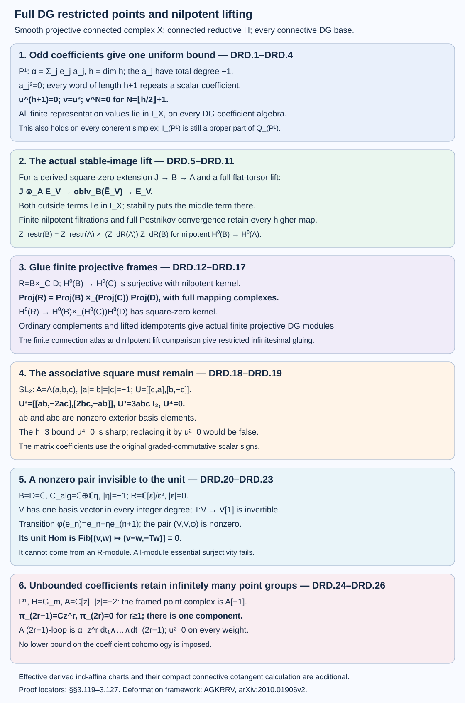
Figure 3.29. The uniform bound and all-coefficient comparison are (DRD.1)–(DRD.5). The scalar triangle and its nilpotent consequences are (DRD.6)–(DRD.11). Finite projective frame gluing and the two point-functor comparisons are (DRD.12)–(DRD.17). The lower examples retain the sharp \(SL_2\) bound, the bi-infinite module obstruction and all the higher projective-line coefficient directions.
3.125. A sharp projective-line operator calculation
Exercise 3.CH. Let \(H=SL_2\), and put \(A=\Lambda_{\mathbf C}(a,b,c)\), with all three generators closed of degree minus one. On the standard representation take \[ U=\begin{pmatrix}c&a\\ b&-c\end{pmatrix}. \tag{DRD.18} \] Compute \(U^2,U^3,U^4\). Decide whether \(u^2=0\) is a valid replacement for the uniform bound (DRD.2).
Solution 3.CH. Use \(a^2=b^2=c^2=0\) and \(ba=-ab\), \(ca=-ac\), \(cb=-bc\). Matrix composition uses these graded-commutative scalar products. Direct multiplication gives \[ U^2=\begin{pmatrix}ab&-2ac\\2bc&-ab\end{pmatrix}, \qquad U^3=3abc\,I_2,\qquad U^4=0. \tag{DRD.19} \] For example the top-left cubic entry is \(abc-2acb=3abc\), and the bottom-right one is \(2bca+abc=3abc\); the off-diagonal cubic entries contain repeated generators. The exterior basis makes \(ab\) and \(abc\) nonzero. Thus \(U^2\ne0\) and \(U^3\ne0\). Here \(\dim\mathfrak{sl}_2=3\), so \(u^4=0\), or \(v^2=0\), is exactly the uniform bound and is sharp on this representation. The associative square \(u^2\) is retained throughout.
3.126. A full unbounded module-gluing counterexample
Exercise 3.CI. Let \(k=\mathbf C\), \(B=D=k\), and \(C=k\oplus k\eta\), with \(|\eta|=-1\), \(d\eta=0\), \(\eta^2=0\). Both maps to \(C\) are the unit. Compute \(R=B\times_C D\). Exhibit a nonzero object of \[ \operatorname{Mod}_B \mathop{\times}_{\operatorname{Mod}_C}\operatorname{Mod}_D \tag{DRD.20} \] that is not the scalar restriction of any \(R\)-module.
Solution 3.CI. The scalar triangle (DRD.12) puts all cohomology of \(R\) in degree zero. Its degree-zero algebra has the constant class and the relative interval class \(\eta\,dt\); the latter has square zero. Thus \[ R\simeq k[\epsilon]/\epsilon^2,\qquad |\epsilon|=0. \tag{DRD.21} \] This is an equivalence of DG algebras: a connective DG algebra with cohomology only in degree zero is equivalent to its ordinary cohomology algebra.
Take the zero-differential complex \(V=\bigoplus_{n\in\mathbf Z}k e_n\), with \(|e_n|=n\). The degree-zero map \(T:V\to V[1]\), \(e_n\mapsto e_{n+1}\), is an isomorphism. On \(C\otimes V\), the \(C\)-linear degree-zero map \[ \phi(e_n)=e_n+\eta e_{n+1} \tag{DRD.22} \] is invertible, with inverse subtracting the second term. It supplies the transition for the nonzero pair \((V,V,\phi)\) in (DRD.20).
The unit pair is \((k,k,\mathrm{id}_C)\). Its full mapping complex to this pair is the fibre of \[ V\oplus V\longrightarrow C\otimes V=V\oplus V[1], \qquad (v,w)\longmapsto(v-w,-Tw). \tag{DRD.23} \] The displayed map is an isomorphism: the inverse sends \((x,y)\) to \((x-T^{-1}y,-T^{-1}y)\). Its fibre is therefore zero. If this nonzero pair were the restriction of an \(R\)-module \(M\), full faithfulness would identify this mapping complex with \(\operatorname{RHom}_R(R,M)=M\), forcing \(M=0\). Full faithfulness for all modules here follows directly from (DRD.12): use scalar adjunction in the three mapping complexes and tensor that triangle with the target \(M\). Restriction of the zero module is zero, a contradiction. This is a failure of essential surjectivity for all unbounded modules. It does not contradict finite projective gluing (DRD.14); \(V\) is unbounded in both directions and is not finite projective.
3.127. An unbounded coefficient algebra with infinitely many higher point groups
Exercise 3.CJ. Let \(X=\mathbf P^1\), \(H=\mathbf G_m\), and \(A=\mathbf C[z]\), \(|z|=-2\), \(dz=0\). Compute the whole framed restricted point space. Show directly that its finite representation values lie in \(\mathscr I_{\mathbf P^1}\), including along representatives of all its higher homotopy groups.
Solution 3.CJ. The actual free-generator comparison is \[ \mathcal Y_{\mathbf G_m}^{\mathrm{restr}}(\mathbf P^1)(A) =\operatorname{Map}_{\operatorname{Mod}_{\mathbf C}}(\mathbf C[1],A). \tag{DRD.24} \] Its mapping complex is \(A[-1]\). There is one component, and \[ \pi_{2r-1}=\mathbf C z^r\quad(r\geq1),\qquad \pi_{2r}=0\quad(r\geq1). \tag{DRD.25} \] For the odd-dimensional group indexed by \(2r-1\), an iterated interval representative sends the degree-minus-one generator to \[ z^r\,dt_1\wedge\cdots\wedge dt_{2r-1}. \tag{DRD.26} \] Its total degree is \(-2r+(2r-1)=-1\), it is closed, and restriction to every boundary face is zero. Successive relative interval integrations give \(z^r\). The polynomial interval contraction of Solution 3.CA, applied in each direction, identifies these with exactly the groups in (DRD.25).
On a representation of weight \(m\in\mathbf Z\), \(u\) acts by \(m\alpha\), where \(\alpha\) is the odd scalar coefficient of the point or path. Its square is zero, so localization at \(v=u^2\) vanishes. This holds on every displayed higher representative and every coherent coefficient simplex. Thus the ind-target comparison retains all the infinitely many higher point groups; no bound on the negative cohomology of \(A\) has been introduced.
Effective derived ind-affine charts additionally require a compact connective cotangent calculation and effectivity beyond these comparisons. RSE.37–RSE.38 and NTR.16 give the subsequent restricted projector and Hecke-lisse image; GFP.55–GFP.56 give its original-complex ind-regularity and nilpotent-support containment. GZR.33 gives equality with all independent nilpotent support over the complex numbers. Extension to the other geometric ground fields retains its requirements. This uses more than the infinitesimal comparison above.
The deformation framework is discussed in AGKRRV, The stack of local systems with restricted variation and geometric Langlands theory with nilpotent singular support, “Establishing deformation theory” and “Calculating the (co)tangent spaces.” The scalar square (DRD.12), finite projective gluing (DRD.14), stable-image lifting (DRD.7) and full Postnikov comparison supply the arguments used above.
3.128. The adjoint de Rham complex on the full coefficient algebra
Retain a smooth projective connected complex curve \(X\), a point \(x\), and a connected reductive complex group \(H\). Let \(A\) be any connective commutative complex DG algebra, and let \(F\) be a restricted point over \(A\). By (DRD.4)–(DRD.5), its actual operator realization is a flat \(H\)-torsor \(P\). Write \(E=\operatorname{ad}(P)\), with its adjoint connection. Put \[ \begin{aligned} C_F&=R\Gamma_{\mathrm{dR}}(X_A,E),\\ e_x&:C_F\longrightarrow E_x,\qquad K_F=\operatorname{fib}(e_x). \end{aligned} \tag{DCT.1} \] The evaluation first forgets the one-form term and then evaluates the bundle at \(x\). All complexes retain their internal coefficient degrees.
Here is a finite, base-change-compatible construction. The two-affine computation and divisor construction (DCA.1)–(DCA.5) give finite projective two-term models for \(R\Gamma(E)\) and \(R\Gamma(E\otimes\Omega_X^1)\), in relative degrees zero and one. The connection is \(A\)-linear, although it is not \(\mathcal O_X\)-linear. It induces a map between these actual global complexes. Its fibre is \[ C_F= \operatorname{fib}\!\left( R\Gamma(X_A,E)\xrightarrow{\nabla_{\rm ad}} R\Gamma(X_A,E\otimes\Omega_X^1)\right). \tag{DCT.2} \] Equivalently, totalize the two affine Čech columns and the two de Rham terms. There are finitely many columns, even when \(A\) is unbounded to the left. The one-form term contributes one additional relative degree. Therefore \[ \begin{gathered} C_F\text{ is perfect of relative Tor amplitude }[0,2],\\ C_F\otimes_A^{\mathbf L}A' \simeq C_{F_{A'}} \quad\text{for every connective }A',\\ R\Gamma_{\rm dR}(X_A,E\otimes_A^{\mathbf L}M) \simeq C_F\otimes_A^{\mathbf L}M \quad\text{for every }A\text{-module }M . \end{gathered} \tag{DCT.3} \] For the last two assertions, tensor each affine term of the finite Čech/de Rham complex. Derived tensor commutes with its finite fibres. The finite projective models identify the resulting maps as well as their objects. Thus these statements apply to nonflat coefficient changes and unbounded modules; no replacement by \(H^0(A)\) occurs.
3.129. Linearizing the whole split square-zero lift space
Let \(M\) be a connective \(A\)-module and \(A\oplus M\) the split square-zero algebra. There is a distinguished lift of \(P\) with connection, obtained by scalar extension along the splitting \(A\to A\oplus M\). Denote the space of full flat-torsor lifts, with their specified reduction to \(P\), by \(\operatorname{Def}^{\rm dR}_F(M)\). We prove \[ \operatorname{Def}^{\rm dR}_F(M) \simeq \Omega^\infty\bigl((C_F\otimes_A M)[1]\bigr). \tag{DCT.4} \] Here \(\Omega^\infty\) denotes the underlying mapping space of a complex; its \(i\)-th homotopy group at zero is its cohomology in degree \(-i\).
Choose an affine étale torsor-trivializing cover and its whole nerve. The full DG Jacobian calculation (DCA.15) identifies based infinitesimal \(H\)-points with \(\Omega^\infty(\mathfrak h\otimes M)\). This is a calculation of mapping complexes, not only of ordinary points: the smooth Koszul presentation has a contractible pivot Jacobian block, leaving the projective differential module. In every mapping simplex, products of two corrections vanish. Comultiplication becomes addition and conjugation becomes the adjoint action. Étale charts lift uniquely because their entire Jacobian block is invertible. Consequently the same cover and its compatible refinements compute the lift problem.
The bundle part of this computation is (DCA.16). Include the connection coefficients using the actual transformation identity (DCA.7). Write a transition correction as \((1+a_{ij})g_{ij}\), and a connection correction as \(\theta_i\). Multiplication and the connection identity, modulo the square-zero ideal, give \[ \delta a=0,\qquad \delta\theta-\nabla_{\rm ad}a=0. \tag{DCT.5} \] For precision, the second equality follows by expanding \(\operatorname{Ad}(1+a)\beta_i-d_X(1+a)(1+a)^{-1}\): its change is \([a,\beta_i]-d_Xa=-\nabla_{\rm ad}a\). Choose the change of lifted frame \(1-\gamma_i\). It acts by \[ a\longmapsto a+\delta\gamma,\qquad \theta\longmapsto\theta+\nabla_{\rm ad}\gamma. \tag{DCT.6} \] Thus the equations, changes of frames and their composition are the additive total complex of \(E\otimes_A M\to E\otimes\Omega_X^1\otimes_A M\). With Čech degree \(q\), its Čech/de Rham differential is \(\delta+(-1)^q\nabla_{\rm ad}\); the internal DG differential uses the same total-complex sign rule.
This also identifies every higher path. Indeed (DCA.15) and (DCA.7) apply to the full simplicial free-algebra mapping model, with all faces and degeneracies. After subtracting the split origin, its correction nerve is additive in every degree. Its normalized cochains are exactly the displayed total complex, shifted by one for descent objects. The polynomial interval homotopy satisfies \(dh+hd=1-\mathrm{ev}_0\), by integration, as in Solution 3.CA. Apply it successively in the mapping interval directions: based \(i\)-loops are the degree-\(-i\) cocycles of that shifted complex, modulo the boundaries furnished by the next interval homotopy. The same contraction identifies compositions with addition. This proves the equivalence of the full additive mapping spaces, not a truncation to an ordinary cocycle groupoid. Étale descent and the finite Čech comparison (DCA.2) identify that totalization with \((C_F\otimes_A M)[1]\). This proves (DCT.4).
3.130. Framing and the universal cotangent module
Now give \(F\) its specified \(H\)-frame at \(x\). Thus \(E_x=\mathfrak h\otimes A\). The framed prestack is the actual fibre of the evaluation map to \(BH\), as in (RSP.9)–(RSP.10). At the fibre torsor, the split lift space of \(BH\) is \(\Omega^\infty((E_x\otimes_A M)[1])\), by the same additive kernel calculation: \(BH\) is the classifying space of \(H\), so it adds one descent degree. The evaluation on lift spaces is \(e_x[1]\). Therefore the full framed lift space is \[ \operatorname{Def}^{\rm fr}_F(M) \simeq \Omega^\infty\bigl((K_F\otimes_A M)[1]\bigr). \tag{DCT.7} \] For the restricted prestack the comparison is identical. The map \(A\oplus M\to A\) is a nilpotent coefficient thickening. Apply the full Cartesian lift comparison (DRD.8), and then take the actual frame fibre. It identifies the restricted and full framed spaces, with every specified reduction and path. In particular (DCT.7) computes the derivative of the genuine restricted prestack.
Dualizing (DCT.1), set \[ \begin{aligned} L^{\rm fr}_F &=K_F^\vee[-1]\\ &\simeq\operatorname{fib}\!\left( \mathfrak h^\vee\otimes A \xrightarrow{\,e_x^\vee\,}C_F^\vee\right). \end{aligned} \tag{DCT.8} \] The shifts follow from \(K_F^\vee=\operatorname{cofib}(E_x^\vee\to C_F^\vee)\). Finite duality gives, naturally for every connective \(M\), \[ \operatorname{Def}^{\rm fr}_F(M) \simeq\Omega^\infty \operatorname{RHom}_A(L^{\rm fr}_F,M). \tag{DCT.9} \] This natural square-zero mapping property is the cotangent module assertion. It includes the higher lift groups, and is compatible with every coefficient map. Without a frame, the same argument gives \[ L^{\rm unfr}_F=C_F^\vee[-1],\qquad L^{\rm unfr}_F\longrightarrow L^{\rm fr}_F \longrightarrow\mathfrak h^\vee\otimes A . \tag{DCT.10} \] The last triangle is also the cotangent triangle of the \(H\)-frame torsor.
3.131. Compactness, connectivity and the coadjoint comparison
Both \(C_F\) and \(E_x\) are perfect, so (DCT.8) is perfect and compact. We prove its sharper relative Tor bound \[ L^{\rm fr}_F\text{ has Tor amplitude }[-1,0]. \tag{DCT.11} \] First pass to any residue field \(\kappa\) of \(H^0(A)\); (DCT.3) identifies the fibre with the same connection complex. It has cohomology only in degrees zero through two. The map \[ H^0(C_{F_\kappa}) \longrightarrow (E_x)_\kappa \quad\text{is injective}. \tag{DCT.12} \] Indeed it is evaluation of a horizontal map from the unit connection to the adjoint connection. The fibre functor on the ind-connection heart is exact and conservative by (RSP.2). Such a functor is faithful: the image of a morphism has zero fibre only when that image object is zero. This applies also after the ordinary field coefficient extension; the underlying complex connection is an ind-connection by (DRD.4). Thus a horizontal section with zero fibre is zero.
Duality over \(\kappa\) makes the degree-zero map \((E_x)_\kappa^\vee\to H^0(C_{F_\kappa}^\vee)\) surjective. Since \(C_{F_\kappa}^\vee\) has degrees \([-2,0]\), the fibre in (DCT.8) has degrees \([-1,0]\). To pass from these residue calculations to the relative assertion, use the finite projective model of (DCT.2). Locally the cone in (DCT.8) has finite free relative generators in degrees \(-1,0,1\). Vanishing of degree-one residue cohomology makes the degree-zero-to-degree-one differential surjective modulo the corresponding maximal ideal. Invert a nonzero maximal minor; lift its inverse in the connective DG algebra. Gaussian elimination splits off that contractible degree-zero/degree-one block. Remove all degree-one generators. The remaining model has only relative degrees \(-1,0\), so tensoring it with any ordinary coefficient module has precisely that Tor range. These neighbourhoods cover the coefficient spectrum. This is the same finite pivot cancellation used in (CSD.4), applied to the two upper degrees. It proves (DCT.11). As \(A\) is connective, \(L^{\rm fr}_F\) itself is connective.
There is an intrinsic tensor description of the second term in (DCT.8). Write \((\mathscr I_X)_A=\operatorname{Mod}_A(\mathscr I_X)\), and let \(\mathbf1_A\) be its tensor unit. For every \(A\)-module \(M\), dualizability of the adjoint value, the full operator embedding and the finite Spencer/Čech calculation give \[ \begin{aligned} \operatorname{RHom}_{(\mathscr I_X)_A} (F(\mathfrak h^\vee),M\otimes_A\mathbf1_A) &\simeq C_F\otimes_A M\\ &\simeq\operatorname{RHom}_A(C_F^\vee,M). \end{aligned} \tag{DCT.13} \] The first comparison moves the dualizable coadjoint value across Hom and computes Hom from the unit by (RSC.2); (DCT.3) permits every \(M\). Thus, on this coadjoint value, \(C_F^\vee\) is the module of coinvariants, namely the module corepresenting maps to constants. The map from \(\mathfrak h^\vee\otimes A\) is the dual of the actual fibre evaluation. Formula (DCT.8) therefore agrees with this coinvariant formulation without assuming a tensor-lift theorem in place of its proof.
All these identifications commute with nonflat scalar change: use (DCT.3), finite duals and the actual evaluation map. They also respect frame changes and tensor equivalences of \(F\); these act on the adjoint connection and on its evaluation, so they induce the same coherent maps on the fibre and its dual. This supplies the cotangent modules as a natural full DG family. Compactness here concerns the actual \(A\)-module, not merely its geometric fibres.
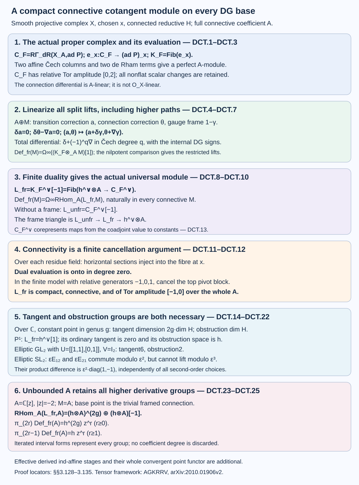
Figure 3.30. The actual proper complex and full lift comparison are (DCT.1)–(DCT.7). The cotangent and frame triangles are (DCT.8)–(DCT.10). Finite cancellation proves (DCT.11); the coadjoint corepresenting property is (DCT.13). The lower panels show the constant and unipotent dimensions, the nonzero second-order obstruction and the full unbounded coefficient example.
3.132. Constant connections in every genus
Exercise 3.CK. At the trivial framed \(H\)-connection, compute \(L^{\rm fr}_F\) over every connective \(A\). Give its virtual rank and compare its projective-line value with (RSC.28).
Solution 3.CK. For the constant connection, \[ C_F=\mathfrak h\otimes_{\mathbf C} R\Gamma_{\rm dR}(X,\mathbf C)\otimes A . \tag{DCT.14} \] The trivial connection has \(H^0=\mathbf C\), and (RSC.6) gives \(H^2=\mathbf C\). Riemann–Roch in the earlier curve lesson gives \(\chi(\mathcal O_X)-\chi(\Omega_X^1)=2-2g\); the finite two-row complex (DCT.2) has that Euler characteristic. Hence \(\dim H^1_{\rm dR}=2g\). Choose bases and split this finite complex over the field. The evaluation is the identity on its degree-zero summand and zero on its positive-degree cohomology. Removing that summand gives the noncanonical, base-change-compatible expression \[ \begin{aligned} K_F&\simeq (\mathfrak h\otimes A)^{2g}[-1] \oplus(\mathfrak h\otimes A)[-2],\\ L^{\rm fr}_F&\simeq (\mathfrak h^\vee\otimes A)^{2g} \oplus(\mathfrak h^\vee\otimes A)[1]. \end{aligned} \tag{DCT.15} \] The splitting depends on the chosen complex-vector-space bases; (DCT.8) is canonical. Its virtual rank is \[ (2g-1)\dim H . \tag{DCT.16} \] For \(g=0\), \(L^{\rm fr}_F=\mathfrak h^\vee\otimes A[1]\). This is exactly the cotangent module of the free algebra \(\operatorname{Sym}_{\mathbf C}(\mathfrak h^\vee[1])\) at its zero point: a derivation is specified freely on that degree-minus-one generator module. Its mapping complex into \(M\) is \(\mathfrak h\otimes M[-1]\), including its higher groups. The projective-line direction has not disappeared because its ordinary point space is a point.
3.133. A nonsemisimple elliptic example
Exercise 3.CL. On an elliptic curve, choose its two commuting fundamental loops and the rank-two monodromy \[ U=\begin{pmatrix}1&1\\0&1\end{pmatrix},\qquad V=I_2, \qquad H=GL_2 . \tag{DCT.17} \] Compute the framed tangent and obstruction dimensions at this restricted point.
Solution 3.CL. This finite complex local system is an actual restricted point by the full connection comparison and tensor reconstruction in (RSC.2)–(RSC.5), (TBF.2)–(TBF.7). The one-vertex torus cell complex for its adjoint local system is \[ \begin{gathered} \mathfrak{gl}_2 \xrightarrow{d_0}\mathfrak{gl}_2\oplus\mathfrak{gl}_2 \xrightarrow{d_1}\mathfrak{gl}_2,\\ d_0(X)=(DX,0),\quad d_1(P,Q)=DQ, \quad D=\operatorname{Ad}(U)-1 . \end{gathered} \tag{DCT.18} \] These differentials come by transporting along the four edges of the torus fundamental square; \(V=1\) kills its other two terms. A reversal of the oriented two-cell changes the last sign and not the calculation. The full connection/sheaf comparison of (RSC.2) identifies this with the adjoint de Rham complex.
For \(X=\left(\begin{smallmatrix}a&b\\c&d\end{smallmatrix}\right)\), multiplication gives \[ DX=\begin{pmatrix}c&d-a-c\\0&-c\end{pmatrix}. \tag{DCT.19} \] Thus \(D\) has rank two and kernel \(\mathbf C I_2+\mathbf C E_{12}\). The three cohomology dimensions of (DCT.18) are \(2,4,2\). Evaluation is the inclusion of this two-dimensional horizontal kernel in the four-dimensional fibre. The fibre triangle (DCT.1) consequently gives \[ \dim H^0(K_F[1])=4-2+4=6,\qquad \dim H^1(K_F[1])=2 . \tag{DCT.20} \] Equivalently the framed deformation complex is the two-term complex \(\mathfrak{gl}_2^{\,2}\xrightarrow{(P,Q)\mapsto DQ}\mathfrak{gl}_2\) in degrees zero and one. Removing degree zero of the adjoint complex is justified by its actual evaluation isomorphism on the one-vertex degree-zero cochains. At the trivial rank-two point the same map is zero, so the dimensions are instead eight and four. In both cases the virtual dimension is four, as (DCT.16) requires.
3.134. Connectivity does not remove the obstruction
Exercise 3.CM. Let \(H=SL_2\) on an elliptic curve and \(R_2=\mathbf C[\epsilon]/\epsilon^2\). Put \(X_0=E_{12}\), \(Y_0=E_{21}\). The two loop matrices \(1+\epsilon X_0\), \(1+\epsilon Y_0\) commute over \(R_2\). Determine whether this framed restricted point lifts to \(R_3=\mathbf C[\epsilon]/\epsilon^3\).
Solution 3.CM. Both matrices have determinant one. Their associated finite free \(R_2\)-local systems, viewed as complex local systems with commuting \(R_2\)-action, give a restricted flat torsor by the full finite connection comparison and regular Hopf reconstruction. In every finite associated representation the underlying complex dimension is finite, so it lies in \(\mathscr I_X\).
Any lifted matrices have the form \[ M_1=1+\epsilon X_0+\epsilon^2P,\qquad M_2=1+\epsilon Y_0+\epsilon^2Q . \tag{DCT.21} \] Their difference of products is \[ M_1M_2-M_2M_1 =\epsilon^2[X_0,Y_0] =\epsilon^2 \begin{pmatrix}1&0\\0&-1\end{pmatrix}\ne0 . \tag{DCT.22} \] The terms \(P,Q\) cancel, so no choices, including choices enforcing determinant one, can make the lifts commute. A framed flat-torsor lift would give commuting monodromy matrices; it therefore does not exist. This is a genuine degree-one obstruction of the framed deformation complex. A perfect connective cotangent complex of amplitude \([-1,0]\) permits this obstruction; it does not assert ordinary smoothness. The nilpotent lift comparison (DRD.8) says that a full lift, when present, is restricted, and does not assert existence of every full lift.
3.135. Unbounded coefficients and all higher derivative groups
Exercise 3.CN. At the trivial framed point take \(A=\mathbf C[z]\), \(|z|=-2\), \(dz=0\). Let \(M=A\), so the split extension is \(A[\epsilon]/\epsilon^2\), with \(|\epsilon|=0\). Compute the entire space of framed lifts reducing to that point.
Solution 3.CN. Equations (DCT.9) and (DCT.15) give the additive mapping complex \[ \operatorname{RHom}_A(L^{\rm fr}_F,A) \simeq(\mathfrak h\otimes A)^{2g} \oplus(\mathfrak h\otimes A)[-1]. \tag{DCT.23} \] Taking cohomology in degree \(-i\) yields \[ \begin{aligned} \pi_{2r}\operatorname{Def}^{\rm fr}_F(A) &=(\mathfrak h^{\,2g})z^r &&(r\ge0),\\ \pi_{2r-1}\operatorname{Def}^{\rm fr}_F(A) &=\mathfrak h\,z^r &&(r\ge1). \end{aligned} \tag{DCT.24} \] For \(i=0\) the first line denotes the additive set of components; positive homotopy groups are taken at the split origin. Choose the same degree-one de Rham cocycles as in Solution 3.CK. For a component of their coefficient complex, a \(2r\)-loop is represented by \(z^r\,dt_1\wedge\cdots\wedge dt_{2r}\) multiplying that deformation component. On the degree-one framed-obstruction summand of the tangent complex, a \((2r-1)\)-loop uses \[ z^r\,dt_1\wedge\cdots\wedge dt_{2r-1}. \tag{DCT.25} \] Its coefficient degree is minus one; the tangent generator has degree one, so its total degree is zero, as required for a point in the shifted mapping complex. Iterated relative interval integration recovers \(z^r\) in each case. The additive correction construction of §3.129 converts these cochains into actual coherent split lifts. Every degree in (DCT.24) is thus retained on the full unbounded coefficient algebra.
The compact connective cotangent module and infinitesimal comparisons do not alone construct effective derived ind-affine stages. That representability assertion additionally requires such stages and an identification of their whole convergent point functor. RSE.37–RSE.38 and NTR.16 give the subsequent restricted projector and Hecke-lisse image; GFP.55–GFP.56 give its original-complex ind-regularity and nilpotent-support containment. GZR.33 gives equality with all independent nilpotent support over the complex numbers. Extension to the other geometric ground fields retains its requirements. This uses more than the compact cotangent calculation above.
For the tensor-coinvariant formulation, see AGKRRV, The stack of local systems with restricted variation and geometric Langlands theory with nilpotent singular support, “Calculating the (co)tangent spaces.” The actual arguments here are the proper finite model (DCT.2), full square-zero linearization (DCT.4)–(DCT.7), nilpotent comparison (DRD.8) and finite duality (DCT.8)–(DCT.13).
3.136. A finite pointed model of the curve
Let \(X\) be a smooth projective connected complex curve, with \(x\in X(\mathbf C)\), and let \(H\) be a connected reductive complex group. All DG coefficient algebras are connective, without a lower cohomological bound.
The compact smooth manifold \(X^{\rm an}\) has a finite good cover. Here are the needed constructions. A coordinate ball has a smooth nonnegative bump supported in a larger coordinate ball and positive on a prescribed smaller closed ball: in rescaled coordinates use \(\exp(-1/(1-|z|^2))\) inside the unit ball and zero outside. Every derivative at the boundary vanishes, since it is a polynomial in \((1-|z|^2)^{-1}\) times that exponential, and \(e^t\geq t^m/m!\) for every \(m\). Compactness gives finitely many such smaller balls covering \(X^{\rm an}\). Dividing their bumps by their positive sum gives a finite subordinate smooth partition. Weighted Euclidean coordinate metrics give a positive smooth metric. Each weighted term extends smoothly by zero because its support lies in its chart.
Theorem B.5 of Riemannian connections and convex neighbourhoods proves arbitrarily small strongly convex neighbourhoods, with smoothly varying unique globally minimizing segments. Choose finitely many \(U_i\) covering \(X^{\rm an}\). Every nonempty intersection \(U_\sigma=\bigcap_{i\in\sigma}U_i\) is contractible: contract it to a point by those segments. The segment is the same in every \(U_i\), by global minimizing uniqueness, and therefore stays in the intersection.
Let \(N\) be the finite nerve. Form \[ T=\left(\coprod_{\varnothing\ne\sigma\in N} U_\sigma\times\Delta^\sigma\right)\big/\text{face identifications}, \qquad X^{\rm an}\xleftarrow{p}T\xrightarrow{q}|N|. \tag{RBC.1} \] Both arrows are homotopy equivalences. For \(p\), use a subordinate partition \((\phi_i)\) with closed supports inside \(U_i\). The section sends \(y\) to \((y,(\phi_i(y)))\); interpolate the simplex weights linearly to obtain a homotopy from \(1_T\) to this section followed by \(p\). This is continuous in the quotient: locally the indices of possibly nonzero \(\phi_i\) all contain that neighbourhood, so on each face the homotopy is a map into the larger face given by their union.
For \(q\), filter by the nerve skeleta. Its \(d\)-th step attaches \(U_\sigma\times\Delta^d\) along \(U_\sigma\times\partial\Delta^d\). Projection of this pair to \((\Delta^d,\partial\Delta^d)\) is a homotopy equivalence, since \(U_\sigma\) is contractible. The boundary inclusion has the homotopy extension property: the usual simplex boundary collar, times \(U_\sigma\), supplies it. Gluing preserves these equivalences. Explicitly, replace each attachment by its double mapping cylinder; collapse its cylinder using that collar. Homotopy inverses on the three pieces extend across the cylinder, and the same extension glues their inverse homotopies. This proves the gluing assertion and, by finite induction, the assertion for \(q\). Consequently \[ (X^{\rm an},x)\simeq(K,k), \qquad K\text{ a finite connected pointed CW complex}. \tag{RBC.2} \] Choose the partition to equal one at \(x\) on a selected cover member, by the same bump construction; this fixes the nerve vertex. A maximal tree in the finite one-skeleton can be collapsed to give one vertex. Collapsing is a homotopy equivalence: contract the tree and extend the contraction over the cells using their boundary collars. Thus \(K\) may have one vertex. No classification of surfaces or assertion about a contractible universal cover is needed.
3.137. The full ind-target inside derived local systems
Write \(\mathcal L(K)=\operatorname{Fun}(K,\operatorname{Mod}_{\mathbf C})\), with pointwise tensor and colimits. The bounded finite-connection comparison (RSC.2)–(RSC.3) gives \[ \mathscr L_X\simeq\operatorname{Fun}(K,\operatorname{Perf}_{\mathbf C}). \tag{RBC.3} \] We specify its derived content. On a contractible good-cover intersection, the constant sheaf has cohomology \(\mathbf C\) in degree zero and zero otherwise. This is Theorem 1.3 of Sheaf cohomology and singular cohomology on manifolds, applied to the displayed contraction. Thus constant finite complexes have their full complex-vector-space Hom complexes there. A bounded complex with locally constant finite cohomology is locally such a constant complex: trivialize its cohomology and lift its finite truncation attachments using these same Hom complexes. The finite-cover descent used here has an explicit inverse. For two opens \(U,V\), glue complexes with a specified intersection equivalence by the fibre of \(Rj_{U*}M_U\oplus Rj_{V*}M_V\to Rj_{U\cap V,*}M_{U\cap V}\). Restricting to \(U\) or \(V\) cancels the identical intersection summand and recovers the prescribed complex. Open restriction is exact and preserves injective sheaves, since extension by zero is an exact left adjoint, so these restriction and derived-pushforward comparisons follow on actual injective resolutions. The same fibre triangle and adjunction compute the full mapping complexes, proving fullness on all paths. This also gives the inverse gluing equivalences. Finite iteration handles the cover, and local boundedness on its finitely many members is a uniform bound. Thus descent identifies this category with the limit of the constant diagram \(\operatorname{Perf}_{\mathbf C}\) on the nonempty intersections. This limit is the functor category from the nerve's homotopy type: its objects are the compatible objects, equivalences and all higher comparisons. The full connection/sheaf comparison in (RSC.2) identifies the operator Hom complexes with these sheaf Hom complexes. The injective and mapping models used here are Theorem 2.3, Lemma 3.2 and Theorem 4.1 of Injective modules, flasque sheaves and bounded-below derived functors. This proves (RBC.3), including compositions and higher paths.
A perfect-stalk local system is compact in \(\mathcal L(K)\). To prove this, attach the finitely many cells. Functors out of a cell pushout are a pullback of functor categories. Their Hom complex is the corresponding finite fibre of the Hom complexes on the old skeleton, the cell and its attaching sphere. On a cell it is Hom from a finite-dimensional perfect complex and commutes with colimits. Induct first on dimension for the spheres, and then on the number of top-dimensional cells. Finite fibres of complexes commute with colimits, so the same is true on \(K\).
The comparison is tensor-compatible: on flat bundles the tensor product of horizontal sections is the horizontal comparison, and finite cones extend it to the bounded DG category. The full Yoneda/free-action bar argument of (GSL.9), now on these actual compact objects, extends (RBC.3) to a full continuous symmetric monoidal embedding \[ \mathscr I_X\hookrightarrow\mathcal L(K). \tag{RBC.4} \] On bounded objects it is the given comparison; on ind-objects it is their colimit. Fullness follows by computing maps first from a compact bounded object and then from its colimit presentation. Tensor agrees on bounded objects and extends by colimits in both variables.
Internal scalar actions give \[ \operatorname{Mod}_A(\mathscr I_X) \hookrightarrow \operatorname{Mod}_A(\mathcal L(K)) \simeq\operatorname{Fun}(K,\operatorname{Mod}_A). \tag{RBC.5} \] The last equivalence simply places the action maps and their whole free-action bar at each point, with their coherent transports. It preserves all module and tensor mapping spaces. This does not identify \(\mathscr I_X\) with every object of \(\mathcal L(K)\); on the projective line the distinction in (RSC.23) remains.
3.138. An actual affine Betti target
The full Hopf torsor reconstruction (TBF.2)–(TBF.5), with no connection imposed, identifies right t-exact continuous tensor functors \(\operatorname{Rep}(H)\to\operatorname{Mod}_A\) with the entire space \(BH(A)\). Finite representation values are finite projective: they and their duals are connective, so the residue criterion (CSD.4) applies. The regular Hopf algebra then constructs their actual faithfully flat torsor and every tensor transformation.
Tensor functors into the right side of (RBC.5) are such functors point by point, with their transports. Framing at \(x\) therefore gives the full space \[ \mathcal Y_{\rm B}(A) =\operatorname{Map}_*((K,k),(BH(A),*)). \tag{RBC.6} \] It is a derived affine functor. The one-skeleton with one vertex gives \(H^m\), where \(m\) is the number of one-cells. A \(d\)-cell, \(d\geq2\), replaces a previous affine functor \(V\) by \[ V\times_{\Omega^{d-2}H}\operatorname{Spec}\mathbf C . \tag{RBC.7} \] Indeed based maps from the attaching sphere into \(BH(A)\) are \(\Omega^{d-2}H(A)\); based maps from the disk are contractible. Attaching maps can be based: move their selected boundary point to \(k\) along a path and extend that homotopy using the sphere's point inclusion and its boundary collar. Homotopic attaching maps give equivalent cell pushouts. Iterated based loops of an affine functor are affine, by their successive derived self-fibres. Thus all the finitely many fibres (RBC.7) are affine. Write \[ \mathcal Y_{\rm B}=\operatorname{Spec}B, \qquad B\text{ connective}. \tag{RBC.8} \] These are derived fibre products, not ordinary solution sets. Their maps and every higher relation are the ones induced by the actual cell attachments. The construction is a presentation of the based mapping functor, so changing the finite model changes neither that functor nor its comparisons.
3.139. Nilpotent lifting in the Betti target
Equations (DRD.4), (RBC.4) and (RBC.5) give a full embedding of the actual framed restricted functor \(\mathcal Y^{\rm restr}\) into \(\mathcal Y_{\rm B}\). Its image is the tensor functors whose finite representation values lie in the full ind-image.
For every \(D\to A\) with surjective \(H^0(D)\to H^0(A)\) and nilpotent kernel, it has the full lift comparison \[ \mathcal Y^{\rm restr}(D)\simeq \mathcal Y^{\rm restr}(A) \times_{\mathcal Y_{\rm B}(A)}\mathcal Y_{\rm B}(D). \tag{RBC.9} \] Here is the argument in this target. For a derived square-zero extension, tensor its scalar triangle with each finite associated local system. Its two outer objects lie in the full stable continuous ind-image, so its middle object does too. All scalar actions, tensor maps and coherent paths lift through that full embedding.
For an ordinary nilpotent ideal \(J\), finite projective coefficient fibres make the local system coefficient-flat. Its finite \(J\)-filtration has subquotients \((J^a/J^{a+1})\otimes E_{D/J}\). These lie in the ind-image, so their finite extension does. On a bounded connective DG base, the cohomology layers are \(H^r(D)\otimes_{H^0(D)}E_{H^0(D)}\), naturally for all transports; finite truncation dévissage applies. Finally take all bounded Postnikov truncations. Fullness lifts their compatible paths, (RSP.5) reconstructs the restricted point, and the affine functor (RBC.8) recovers the same full point because maps from \(B\) preserve the inverse limit of coefficient algebras. This proves (RBC.9) without a lower bound on \(D\).
In particular, an ambient point is restricted precisely when its ordinary reduction is: \[ \mathcal Y^{\rm restr}(A)\simeq \mathcal Y^{\rm restr}(H^0A) \times_{\mathcal Y_{\rm B}(H^0A)}\mathcal Y_{\rm B}(A). \tag{RBC.10} \] This concerns the restricted ind-image. It is not an equivalence of all algebraic de Rham and Betti families; unrestricted variable de Rham monodromy need not have coefficients in the original algebraic parameter ring.
3.140. The ordinary coefficient stages are closed in this ambient
Put \(R=H^0(B)\). Write \(\Gamma=\pi_1(K,k)\). Its one-cell loops generate the group. To verify this using the finite nerve, subdivide a loop finely enough that each source vertex star maps into one target vertex star. Such a subdivision exists by compactness and uniform continuity. Assign those target vertices to the source vertices. On each source edge the assigned vertices belong to a common target simplex, since their open stars meet at its image. Linear interpolation inside that simplex homotopes the loop to the resulting edge path, fixing its base vertex. A finite spanning tree then expresses every edge path in the finitely many non-tree edge loops. On ordinary coefficients \(BH(A)\) is a one-type, so the higher cells impose no further conditions on based maps. Thus \[ (\operatorname{Spec}R)(A)=\operatorname{Hom}(\Gamma,H(A)). \tag{RBC.11} \] Its coordinate ring is the quotient of \(\mathcal O(H^m)\) by the finitely many coordinate equations saying that the finitely many relator words equal one. In particular \(R\) is a finitely generated, Noetherian complex algebra; the polynomial Noetherian proof is supplied in §3.113.
Let \(Y_E=\operatorname{Spec}S_E\) be a coefficient stage of (SCI.6). Its coordinate generators \(x_{i\alpha}\) are the coefficients in a fixed basis of \(E\) of the images of the faithful matrix-entry/determinant-inverse generators \(q_i\) of \(\mathcal O(H)\). Choose finitely many \(\gamma_w\in\Gamma\) whose evaluations on \(E\) are injective, by the finite-evaluation proof in §3.97. A linear left inverse gives constants \(c_{\alpha w}\) with \[ x_{i\alpha} =\sum_w c_{\alpha w} \bigl(q_i(\rho(\gamma_w))\bigr). \tag{RBC.12} \] Each \(\gamma_w\) is a finite word in the chosen generators and their inverses. Its matrix entries and determinant inverses are regular polynomial expressions in the corresponding \(H^m\) coordinates. Thus every generator of \(S_E\) lies in the image of \(R\), and \[ R\twoheadrightarrow S_E,\qquad J_E=\ker(R\to S_E). \tag{RBC.13} \] This proves a closed immersion on all ordinary rings, including nonreduced ones. The Hopf coefficient reconstruction proves that the map is the original SCI map, not a different point parametrization. No assumption that \(E\) is a subalgebra is made. Each \(J_E\) is finitely generated, and \(E\subset E'\) gives \(J_{E'}\subset J_E\).
3.141. Explicit derived Koszul neighbourhoods
Fix \(E\), and lift generators of \(J_E\) to closed degree-zero elements \(f_1,\ldots,f_r\) in a semifree nonpositive commutative DG model of \(B\). For \(N\geq1\) put \[ B_{E,N}=B[\eta_1,\ldots,\eta_r],\qquad |\eta_i|=-1,\quad d\eta_i=f_i^N, \qquad T_{E,N}=\operatorname{Spec}B_{E,N}. \tag{RBC.14} \] The generators are graded-commutative. This is the derived base change of the Koszul resolution for the regular sequence \(t_1^N,\ldots,t_r^N\) in the polynomial algebra \(\mathbf C[t_1,\ldots,t_r]\). Its exactness follows by successively separating the monomials of exponent below \(N\) in each variable: multiplication by the next power is injective in the preceding quotient, and its two-term Koszul complex has precisely that quotient as degree-zero cohomology.
For \(N'\geq N\) the actual algebra map \[ B_{E,N'}\longrightarrow B_{E,N},\qquad \eta_i\longmapsto f_i^{N'-N}\eta_i \tag{RBC.15} \] commutes with the differential and composes as the exponents add. Moreover \[ H^0(B_{E,N})=R/(f_1^N,\ldots,f_r^N). \tag{RBC.16} \] A closed immersion of connective derived affines is characterized by a surjection on degree-zero coordinate rings, equivalently a closed immersion on ordinary truncations; this is the standard definition in Lurie, Derived Algebraic Geometry, Definition 5.3.1. Consequently these transitions are closed immersions. Such a map need not be a monomorphism of full DG point spaces; the nullhomotopies below are part of its derived data.
3.142. The whole unbounded formal-completion functor
Let \(\widehat{\mathcal Y}_E(A)\) be the full subspace of \(\mathcal Y_{\rm B}(A)\) where the image of \(J_E\) in \(H^0(A)\) is nilpotent. This property is invariant under paths and defines a union of components. We prove \[ \operatorname*{colim}_{N}T_{E,N} \simeq\widehat{\mathcal Y}_E \quad\text{on all connective DG algebras}. \tag{RBC.17} \] Fix an ambient point \(z:B\to A\). The fibre of \(T_{E,N}(A)\) over \(z\) is the product of the spaces of nullhomotopies of the closed elements \(z(f_i)^N\). This follows from the actual free generator and differential in (RBC.14), or from its derived polynomial pushout. A nonempty fibre is a torsor for \[ \prod_{i=1}^r\Omega^\infty(A[-1]). \tag{RBC.18} \] If all \(z(f_i)\) are nilpotent in \(H^0(A)\), choose \(n_0\) with \(z(f_i)^{n_0}=0\) there for every \(i\). This also makes the whole generated ideal nilpotent: every product of \(r(n_0-1)+1\) generators repeats one at least \(n_0\) times. All \(N\geq n_0\) have nonempty fibres. The maps on differences of nullhomotopies are multiplication by \(z(f_i)^{N'-N}\), by (RBC.15). Thus on every homotopy group, including the difference group of components, they are zero whenever \[ N'-N\geq n_0. \tag{RBC.19} \] This bound works in every negative degree of \(A\). The transition on the torsor itself is affine; no compatible choice of origins is being assumed. Any two components become equal after that transition, and every positive homotopy class becomes zero after it. The fibre colimit is therefore contractible. If the ideal is not nilpotent, no fibre is nonempty. The case \(r=0\) gives a point fibre throughout.
For clarity, filtered colimits of these spaces preserve the fibres and their homotopy groups: a finite simplicial sphere, a horn or a homotopy uses finitely many simplices and relations, all of which occur together at one filtered stage. The same finite-data argument proves commutation with finite homotopy limits. Hence the fibre calculation proves (RBC.17) as a natural equivalence of entire spaces, not just of components. It also proves that different choices of lifted generators present the same full completion.
3.143. Coherent filtered assembly of the affine stages
Allow all finite choices in (RBC.14). Let \(\mathcal C\) be the full infinity-category over \(\mathcal Y_{\rm B}\) on these \(T_{E,N}\). Its objects and mapping spaces form a small category after fixing a set of models. Every map in it induces a quotient map on \(H^0\): both rings are quotients of \(R\), and a map over \(\operatorname{Spec}B\) must be the identity on their common images of \(R\). Thus every transition in \(\mathcal C\) is a closed immersion.
This category is filtered, including coherent cones. Given a diagram indexed by a finite simplicial set, choose \(E'\) containing the finitely many coefficient coalgebras of its vertices. For each vertex \(T\), the image of \(J_{E'}\) in \(H^0(T)\) is nilpotent, since it is contained in the image of that vertex's \(J_E\), whose finite generating powers vanish. Formula (RBC.17), evaluated on the full coordinate algebra of \(T\), gives \[ \operatorname*{colim}_{N} \operatorname{Map}_{/\mathcal Y_{\rm B}}(T,T_{E',N}) \simeq * . \tag{RBC.20} \] Take the finite homotopy limit describing compatible cones to all the vertices, arrows and higher simplices of the diagram. By the finite-data argument above, its colimit in \(N\) is the limit of point spaces and hence is contractible. It has a point at some stage. That point is a full coherent cone in \(\mathcal C\). This proves filteredness in its infinity-categorical sense; passing only to the homotopy category would not give this conclusion.
3.144. Effective framed derived charts and the actual quotient
Each \(\widehat{\mathcal Y}_E\) lies in the restricted functor. Indeed quotient \(H^0(A)\) by the nilpotent image ideal of \(J_E\). The resulting ordinary point lies in \(Y_E\), and (RBC.9) lifts it back to the specified ambient point over \(A\). Conversely, a restricted ordinary reduction factors through a single \(Y_E\) by SCI, so it lies in this completion. Therefore \[ \mathcal Y^{\rm restr} =\operatorname*{colim}_E\widehat{\mathcal Y}_E \ \subset\ \mathcal Y_{\rm B}. \tag{RBC.21} \] Both sides here are full unions of ambient components on every coefficient algebra, so the equality retains their whole higher spaces.
Each stage has a contractible space of lifts to the restricted functor, by its full embedding in the ambient. These factorizations therefore assemble coherently over the entire category \(\mathcal C\). The affine presentation is \[ \operatorname*{colim}_{T\in\mathcal C}T \xrightarrow{\sim}\mathcal Y^{\rm restr}. \tag{RBC.22} \] Here is its full effectivity check. Evaluation on an affine commutes with colimits of prestacks, and taking a fibre over an ambient point commutes with the filtered colimit by the finite-limit argument above. A restricted point factors through some completion and then through an affine \(T_{E,N}\), by (RBC.17), so that fibre is nonempty. Any finite collection of lifts, comparisons or simplicial homotopies can be put in a common completion by enlarging \(E\). Its affine targets have contractible fibre colimit by (RBC.20). This argument also allows the chosen source affine as an extra vertex: its ambient point lies in the same completion, so the identical finite-limit cone argument applies. It makes any two lift components equal and contracts every finite sphere of lift choices. Thus the fibre of (RBC.22) is contractible over every restricted point. It is empty over all other points, since every stage is restricted. This proves the equivalence on arbitrary unbounded connective algebras.
The original frame action and frame descent now give \[ \mathcal Z_H^{\rm restr}(X) \simeq[\,\mathcal Y^{\rm restr}/H\,], \qquad \mathcal Y^{\rm restr}\longrightarrow\mathcal Z_H^{\rm restr}(X) \text{ the actual }H\text{-frame torsor}. \tag{RBC.23} \] This is (RSP.9)–(RSP.10) on the actual full DG point functor. Its pullback to any affine is the faithfully flat frame scheme already constructed there. The ind-affine frame presentation is therefore effective, rather than a presentation only of ordinary or bounded coefficient points. The chosen individual Koszul generator tuples need not be \(H\)-stable; (RBC.23) uses the intrinsic action on the whole framed functor and does not assert equivariance of each chosen stage.
3.145. Finiteness of the derived stages
The algebra \(B\) and every \(B_{E,N}\) are compact as connective commutative DG algebras: \[ \operatorname{Map}_{\rm CAlg}(B_{E,N},\operatorname*{colim}_j A_j) \simeq\operatorname*{colim}_j \operatorname{Map}_{\rm CAlg}(B_{E,N},A_j) \quad(j\text{ filtered}). \tag{RBC.24} \] First, the coordinate algebra of the smooth finite-type group \(H\) is compact. Cover it by finitely many principal standard smooth charts. The full Koszul/Jacobian construction in (DCA.15) makes each chart, and each of its finite principal intersections, a finite derived polynomial presentation with inversions. Such a presentation is compact. A free generator in degree \(-a\) has mapping space \(\Omega^\infty A[-a]\), which commutes with filtered coefficient colimits by the finite-data argument of §3.142. Finite cell attachments impose finite homotopy fibres, so the same holds after finitely many of them. Inversion is the finite presentation \(st=1\). Its Koszul resolution is exact because the relevant Jacobian block is invertible.
For a map from a filtered coefficient colimit to \(H\), pull these finitely many chart functions back to the coefficient spectrum. Their finite principal cover, including a finite equation expressing the unit in their ideal, descends to one coefficient stage. The chart maps and their overlap comparisons then descend by compactness of those chart presentations. Descent uses only finitely many homotopy limits: for two opens it is a pullback, and induction on the number of opens expresses a finite cover using its finitely many intersections. The same reasoning applies to any finite sphere or homotopy of maps. This proves compactness of \(\mathcal O(H)\).
Finite colimits of compact algebras are compact, since maps out of them are finite limits and filtered colimits of spaces commute with those. The construction (RBC.7) and iterated loop fibres therefore proves compactness of \(B\). Adjoining the finitely many generators and differentials in (RBC.14) proves (RBC.24).
In particular the stages are almost of finite type in the following explicit sense: \[ H^0(B_{E,N})\text{ is finite type over }\mathbf C,\qquad H^{-a}(B_{E,N})\text{ is a finite }H^0(B_{E,N})\text{-module} \quad(a\geq0). \tag{RBC.25} \] For the cohomology assertion, the relative semifree construction in §3.158 supplies a resolution by nonpositive free commutative DG generators. It is the filtered union of its finite cell subalgebras: the differential of a generator uses finitely many earlier ones, and the closure of a finite set is finite. Indeed an infinite finitely branching dependency tree would have an infinite descending branch, contradicting the well-founded cell order. Compactness makes the identity factor through one such finite subalgebra, so the algebra is a homotopy retract of it. A finite cell algebra has a Noetherian polynomial ring in its degree-zero generators; each fixed negative degree is a finite module over that ring, because there are only finitely many monomials of that total negative degree. Kernels, images and cohomology are finite, and the degree-zero boundary ideal acts trivially on cohomology. For a retract, apply the retraction to finitely many cohomology generators and their coefficients; their images generate over the retracted degree-zero ring. This proves (RBC.25).
The stages also have the precise cotangent bound. At their universal point \(A=B_{E,N}\), equation (RBC.9) identifies the split derivatives of the restricted and Betti functors. The affine cotangent module \(L_{B/\mathbf C}\otimes_B A\) is therefore (DCT.8), of Tor amplitude \([-1,0]\). This identification is of actual connective modules: apply their natural derivation comparisons to every connective ideal \(M\), as in (DCT.9). Adjoining the generators \(\eta_i\) has relative cotangent module \(A^r[1]\), since a relative derivation is freely specified on those degree-minus-one generators. Restriction of derivations gives the cotangent triangle \(L_{B/\mathbf C}\otimes_B A\to L_{A/\mathbf C}\to A^r[1]\). Both outside terms are perfect of Tor amplitude \([-1,0]\); hence so is the middle term. Thus each displayed derived affine stage is quasi-smooth. This concerns the derived stages themselves, not merely their ordinary truncations.
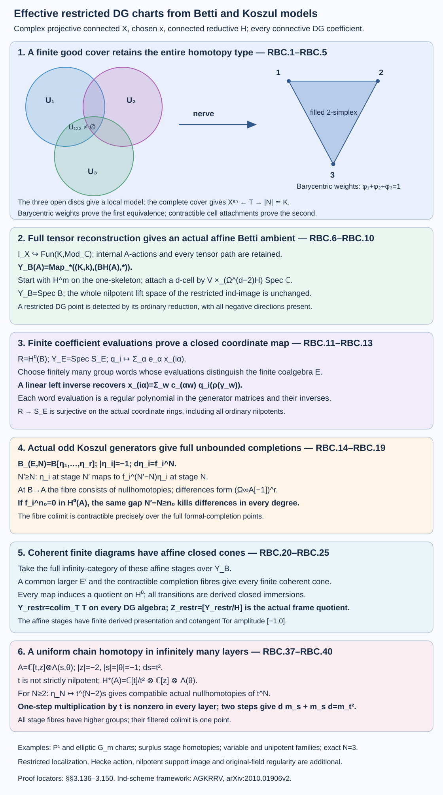
Figure 3.31. The three open discs form a local good-cover model; the global finite complex uses the complete cover of the curve, as in (RBC.1)–(RBC.5). The Betti and coefficient maps are (RBC.6)–(RBC.13). The explicit thickenings, full unbounded comparison and coherent filtered presentation are (RBC.14)–(RBC.25). The last panel shows the exact homotopy-nilpotent example (RBC.37)–(RBC.40), including its nonzero one-step maps and uniform two-step homotopy.
3.146. Projective-line and elliptic line-system charts
Exercise 3.CO. Compute the framed presentation for \(H=\mathbf G_m\) on the projective line and on an elliptic curve. Give an explicit filtered affine presentation in the elliptic case, including its derived mapping data.
Solution 3.CO. The usual stereographic formula identifies \(\mathbf P^1(\mathbf C)\) with the sphere: on its finite chart use \((2\operatorname{Re}z,2\operatorname{Im}z,|z|^2-1)/(1+|z|^2)\), with infinity at the north pole. The inverse stereographic formulas give its two continuous inverse charts. The sphere is a disk with its boundary collapsed, so its framed mapping functor is the derived loop of \(\mathbf G_m\). The identity-point resolution gives \[ B_{\mathbf P^1}=\mathbf C[\xi],\qquad |\xi|=-1,\quad d\xi=0,\quad \xi^2=0 . \tag{RBC.26} \] Its ordinary truncation is already a point. The restricted functor is this entire derived affine, in agreement with (RSC.28).
For an elliptic curve, its complex points are a compact connected commutative real Lie group of dimension two. Its invariant vector fields are complete: local flow existence has a uniform time on finitely many charts covering the compact manifold, and repeated continuation gives every real time. Their commuting flows give a homomorphism \(\mathbf R^2\to X(\mathbf C)\) with invertible differential at zero. Its image is an open subgroup, hence is the whole connected group, and its kernel \(\Lambda\) is discrete. The local inverse makes this map a covering map, with the fibres the translates of \(\Lambda\).
For completeness, discreteness of a subgroup implies that its bounded subsets are finite: an accumulating bounded sequence would give nonzero pairwise differences tending to zero. Choose a shortest nonzero vector \(a\), if one exists. Projection of \(\Lambda\) to the perpendicular line is discrete. Otherwise reduce the parallel coordinates of vectors with perpendicular projections tending to zero modulo \(\mathbf Za\); the resulting vectors lie in a fixed bounded rectangle, contradicting finiteness. If that projection is nonzero, choose \(b\) with its least positive projection, and reduce its parallel coordinate modulo \(a\). Subtracting an integer multiple of \(b\) from any vector leaves zero perpendicular projection, since a positive remainder smaller than this minimum is impossible. The remaining vector is an integer multiple of \(a\), by the minimal length on its line. Thus \(\Lambda\) has rank at most two. Compactness of \(\mathbf R^2/\Lambda\) rules out ranks zero and one, since an unbounded linear coordinate would descend. Hence \(\Lambda\) is a rank-two lattice. Its fundamental parallelogram gives the one-vertex torus CW model with commutator relator.
The commutator of line monodromies is identically one. Its derived fibre is consequently \[ B_{\rm ell}=\mathbf C[u^{\pm1},v^{\pm1},\xi], \qquad |\xi|=-1,\quad d\xi=0,\quad\xi^2=0. \tag{RBC.27} \] For ordinary \(A\), restrictedness says that the image of \(\mathbf C[u^{\pm1},v^{\pm1}]\) is finite-dimensional over the original \(\mathbf C\). This is equivalent to each of the two commuting units satisfying a complex polynomial: reduce all powers to the finitely many monomials below their degrees; negative powers reduce as well because the units' annihilating polynomials have nonzero constant terms after removing zero factors. Factor these polynomials into their nonzero complex roots. Bezout idempotents separate the finitely many root pairs \((\lambda,\mu)\). On each piece the differences \(u-\lambda,v-\mu\) are nilpotent. The proof of (RBC.17) uses only a finitely generated ordinary ideal, so it also applies directly to each root-pair ideal. Thus an explicit filtered presentation uses finite disjoint unions of \[ \begin{gathered} \operatorname{Spec}\left( \left(\mathbf C[u^{\pm1},v^{\pm1}] /((u-\lambda)^N,(v-\mu)^N)\right)[\xi]\right),\\ (\lambda,\mu)\in(\mathbf C^\times)^2 . \end{gathered} \tag{RBC.28} \] The displayed ordinary quotient is used with its full derived mapping spaces. Its polynomial powers form a regular sequence, so an explicit cofibrant presentation over (RBC.27) is \[ B_{\rm ell}[\eta_u,\eta_v],\qquad d\eta_u=(u-\lambda)^N,\quad d\eta_v=(v-\mu)^N, \quad|\eta_u|=|\eta_v|=-1. \tag{RBC.29} \] Thus their nullhomotopies are retained. The ordinary clopen decomposition also retains the full DG coefficient: for an idempotent \(e\in H^0(A)\), choose a closed lift \(a\); the map \(A\to A[a^{-1}]\times A[(1-a)^{-1}]\) is an equivalence, since on every cohomology group it is the splitting by \(e,1-e\). Finite iteration handles all root pairs. Equations (RBC.17) and (RBC.22) therefore identify the entire framed functor, including all negative coefficient directions, with the disjoint union of these formal neighbourhoods carrying the additional generator \(\xi\).
3.147. Surplus stage homotopies and the unbounded limit
Exercise 3.CP. In the elliptic example take \(A=\mathbf C[z]\), \(|z|=-2\), \(dz=0\), and the point \(u=\lambda,v=\mu,\xi=0\). Compute its positive homotopy groups in the full restricted functor. For \(N\geq2\), compute the extra groups at the corresponding point of (RBC.29), and explain their transition.
Solution 3.CP. The unit space of \(A\) is the union of the invertible components of \(\Omega^\infty A\), since a polynomial generator can be inverted exactly when its degree-zero cohomology class is a unit. It therefore has the same positive homotopy groups as this additive mapping space: at a chosen unit the groups are \(H^{-i}(A)\), with multiplication by that unit identifying the tangent coordinates. The free odd generator has mapping complex \(A[-1]\). Thus the chosen full component has \[ \pi_{2r}=\mathbf C^2z^r,\qquad \pi_{2r-1}=\mathbf Cz^r \quad(r\geq1), \qquad \pi_0\text{ one point}. \tag{RBC.30} \] These are the full component's groups, not the derivative's set of first-order components.
For the stage, use the homotopy fibre of the power map \[ (\mathbf G_m(A))^2\longrightarrow(\Omega^\infty A)^2,\qquad (u,v)\longmapsto((u-\lambda)^N,(v-\mu)^N). \tag{RBC.31} \] Its maps on all positive homotopy groups at this point are zero. An even \(2r\)-loop of one unit has representative \(\lambda+z^r\,dt_1\cdots dt_{2r}\); its difference from \(\lambda\) squares to zero, so its \(N\)-th power is zero for \(N\geq2\). The same holds for the other coordinate; the odd groups of the source and target vanish. The fibre long exact sequence, together with the independent \(\xi\)-factor, gives \[ \pi_{2r}T_N(A)=\mathbf C^2z^r,\qquad \pi_{2r-1}T_N(A)=\mathbf C^3z^r\quad(r\geq1). \tag{RBC.32} \] The two additional odd generators are represented by sending \(\eta_u\) or \(\eta_v\) to \(z^r\,dt_1\cdots dt_{2r-1}\) while both unit coordinates are constant. Under \(N\to N'>N\), formula (RBC.15) multiplies them by the positive power of \(u-\lambda\) or \(v-\mu\), and kills them. The unit loops and the \(\xi\)-loops remain. Their colimit is exactly (RBC.30). Thus the affine stage fibres need not be contractible before the filtered colimit, and the unbounded comparison cannot be replaced by discarding higher stage paths.
3.148. A variable character and a restricted polynomial family
Exercise 3.CQ. On the elliptic curve compare the line family \((u,v)=(s,1)\) over \(\mathbf C[s^{\pm1}]\) with the \(SL_2\)-family \[ U=1+bE_{12},\qquad V=1+cE_{12} \quad\text{over }\mathbf C[b,c]. \tag{RBC.33} \] Which lies in the restricted functor?
Solution 3.CQ. The line family does not: its coefficient image contains the linearly independent Laurent monomials \(s^n\), so it is not finite-dimensional over \(\mathbf C\). Nilpotence does not alter this conclusion because the parameter ring is reduced. It is an ordinary point of the full Betti ambient which belongs to no SCI stage or formal completion of one. Every complex specialization is a restricted point; testing those points alone therefore fails to detect this family.
For the matrix family, \(E_{12}^2=0\), and for every pair of integers \[ U^mV^n=1+(mb+nc)E_{12}. \tag{RBC.34} \] The formula for negative integers follows from \((1+bE_{12})^{-1}=1-bE_{12}\). Thus the coefficient functions of the faithful matrix generators lie in the finite subcoalgebra \[ E=\operatorname{span}_{\mathbf C}\{1,m,n\} \subset C_{\mathbf Z^2}. \tag{RBC.35} \] Here \(m,n\) are the two additive functions on the group; their coproducts are primitive and their antipodes are their negatives. The determinant is one, so its inverse coefficient is constant. All the Hopf equations hold by actual multiplication of \(U,V\), and SCI places the family in one finite coefficient stage. This is a restricted family over an infinite-dimensional, reduced parameter ring. Restricted variation does not mean a finite parameter ring or an isotrivial framed family.
3.149. An exact nilpotence threshold
Exercise 3.CR. Let \(A=\mathbf C[\epsilon]/\epsilon^3\), choose nonzero \(\lambda,\mu\), and take \[ u=\lambda(1+\epsilon),\qquad v=\mu(1+2\epsilon),\qquad \xi=0. \tag{RBC.36} \] Find the least common exponent \(N\) for the stage in (RBC.28), and the dimension of its coefficient image over the original complex field.
Solution 3.CR. The squares of the two differences are respectively \(\lambda^2\epsilon^2\) and \(4\mu^2\epsilon^2\), which are nonzero. Their cubes vanish. Thus the least \(N\) is exactly three. Since the target is ordinary, (RBC.29) has no additional choices of degree-minus-one coefficient and no higher mapping paths; its factorization at \(N=3\) is the actual ordinary quotient factorization. The coefficient image contains \(\epsilon=\lambda^{-1}u-1\) and hence \(\epsilon^2\), so it is all of \(A\), of dimension three over \(\mathbf C\). This is the finite-image condition with the nilpotents included.
3.150. A homotopy-nilpotent coefficient with infinitely many layers
Exercise 3.CS. For the formal completion of the affine line at zero, use \(B=\mathbf C[f]\) and the unbounded DG algebra \[ \begin{gathered} A=\mathbf C[t,z]\otimes\Lambda(s,\theta),\\ |t|=0,\quad |z|=-2,\quad |s|=|\theta|=-1,\\ ds=t^2,\quad dt=dz=d\theta=0 . \end{gathered} \tag{RBC.37} \] Map \(f\) to \(t\). Show that \(t\) is nilpotent in cohomology but not in the DG algebra, give compatible nullhomotopies for all \(N\geq2\), and determine whether any stage fibre is already contractible.
Solution 3.CS. Multiplication by \(t^2\) is injective on \(\mathbf C[t,z]\), in each degree. Its two-term Koszul complex with generator \(s\), tensored with \(\Lambda(\theta)\), therefore gives \[ H^*(A)= \bigl(\mathbf C[t]/t^2\bigr) \otimes\mathbf C[z]\otimes\Lambda(\theta). \tag{RBC.38} \] In the underlying graded algebra \(t^N\ne0\) for every \(N\), so strict nilpotence would be false. Nevertheless the stage maps have the compatible representatives \[ \eta_N\longmapsto t^{N-2}s,\qquad d(t^{N-2}s)=t^N . \tag{RBC.39} \] They commute exactly with (RBC.15). Relative to these origins each fibre is \(\Omega^\infty A[-1]\). In even homotopy degree \(2r\), including degree zero, its difference group has basis \(\theta z^r,t\theta z^r\); in odd degree \(2r+1\) it has basis \(z^{r+1},tz^{r+1}\). Thus no stage fibre is contractible. A one-step transition multiplies by \(t\) and is nonzero on each displayed first basis vector. A two-step transition is chain-nullhomotopic, uniformly on the whole complex: \[ d(s\,a)+s\,da=t^2a \qquad(a\in A). \tag{RBC.40} \] The sign follows from \(|s|=-1\). This kills every homotopy group and every difference of components after the same two steps, in all infinitely many coefficient degrees. The fibre colimit is a point, exactly as (RBC.17) requires. This example uses homotopy nilpotence rather than replacing the coefficient model by a strictly truncated algebra.
The framed derived ind-affine presentation and actual full frame quotient are (RBC.22)–(RBC.23), with finite-type derived stages as in (RBC.24)–(RBC.25). RSE.37–RSE.38 and NTR.16 give the subsequent restricted projector and Hecke-lisse image; GFP.55–GFP.56 give its original-complex ind-regularity and nilpotent-support containment. GZR.33 gives equality with all independent nilpotent support over the complex numbers. Extension to the other geometric ground fields retains its requirements. This uses more than the framed presentation above.
For the ind-representability framework see AGKRRV, The stack of local systems with restricted variation and geometric Langlands theory with nilpotent singular support, “Proof of ind-representability.” The effective derived presentation here uses the finite Betti construction, the SCI closed coordinate maps and the explicit Koszul and coherent filtered arguments (RBC.14)–(RBC.22).
3.151. Full restricted embeddings and spaces of isomorphisms
Continue over the complex numbers, with the same smooth projective connected curve, base point and connected reductive group \(H\). Write \(\mathcal Z_{\mathrm r}\) for the actual restricted stack, \(\mathcal Z_{\mathrm B}\) for the full Betti stack and \(\mathcal Z_{\mathrm dR}\) for the full de Rham stack of §§3.84–3.95. Every affine coefficient algebra is connective and may be unbounded below. The functors \[ i_{\mathrm B}:\mathcal Z_{\mathrm r}\longrightarrow\mathcal Z_{\mathrm B}, \qquad i_{\mathrm dR}:\mathcal Z_{\mathrm r}\longrightarrow\mathcal Z_{\mathrm dR} \tag{RDI.1} \] are full embeddings of point spaces. For the first, (RBC.4)–(RBC.5) embed the full scalar-action category into derived local systems. For the second, the compact full operator comparison in §3.96 embeds the finite-lisse ind-category into the full operator category. Internal scalar actions retain fullness: the action maps, their module bar and their mapping complexes are computed in the full target, and every term whose underlying object belongs to the ind-image belongs to that image. Tensor diagrams are limits of these full mapping diagrams. Consequently their spaces of tensor functors and tensor equivalences are full as well.
This reasoning also applies without a chosen frame. Alternatively, trivialize both frame torsors on a common faithfully flat cover. Fullness there is (RBC.10) for the Betti target and (DRD.4)–(DRD.7) for the operator target. The full descent of (RSP.8)–(RSP.10) identifies the totalizations of their isomorphism spaces, including all higher paths. Thus for every \(z,w\in\mathcal Z_{\mathrm r}(A)\), \[ \begin{aligned} \operatorname{Isom}_{\mathcal Z_{\mathrm r}(A)}(z,w) &\simeq \operatorname{Isom}_{\mathcal Z_{\mathrm B}(A)}(i_{\mathrm B}z,i_{\mathrm B}w)\\ &\simeq \operatorname{Isom}_{\mathcal Z_{\mathrm dR}(A)}(i_{\mathrm dR}z,i_{\mathrm dR}w). \end{aligned} \tag{RDI.2} \] These equivalences are natural in the points and in all coefficient maps. They do not identify arbitrary Betti and algebraic de Rham families. Only the two full images of the restricted functor are being compared.
More generally, a full embedding \(i:T\to S\) of space-valued prestacks has a Cartesian square \[ \begin{CD} T @>{i}>> S\\ @V{\Delta_T}VV @VV{\Delta_S}V\\ T\times T @>{i\times i}>> S\times S . \end{CD} \tag{RDI.3} \] Evaluate on any affine. The fibre over a pair of points of \(T\) is their entire path space in \(S\), and fullness identifies it with their path space in \(T\). This proves the square on spaces, so also on every higher simplex. No assertion about the injectivity of a map on ordinary isomorphism classes would suffice.
3.152. The affine restricted diagonal and an explicit fibre algebra
The affine full de Rham diagonal is (CSD.19). Its base change in (RDI.3) proves that \(\Delta_{\mathcal Z_{\mathrm r}}\) is affine. There is also an explicit Betti description. Set \[ Y_{\mathrm B}=\operatorname{Spec}B,\qquad \mathcal Z_{\mathrm B}=[Y_{\mathrm B}/H],\qquad \mathcal Z_{\mathrm r}=[Y_{\mathrm r}/H], \tag{RDI.4} \] where (RBC.8) and (RBC.23) give the actual whole point functors. Use the left action \(h\cdot y\), and orient an isomorphism from \(y_1\) to \(y_2\). Pulling the quotient diagonal back to \(Y_{\mathrm B}\times Y_{\mathrm B}\) gives the affine map \[ Y_{\mathrm B}\times H\longrightarrow Y_{\mathrm B}\times Y_{\mathrm B}, \qquad (y,h)\longmapsto(y,h\cdot y). \tag{RDI.5} \] Indeed an isomorphism between the two trivialized \(H\)-torsors is multiplication by one \(h\); compatibility of its maps to \(Y_{\mathrm B}\) is precisely the specified path from \(h\cdot y_1\) to \(y_2\). All paths in that compatibility are retained by the derived fibre product.
For framed restricted \(A\)-points \(y_1,y_2\), the diagonal fibre therefore has coordinate algebra \[ D_{y_1,y_2} = A\underset{B\otimes_{\mathbf C}B}{\otimes^{L}} \bigl(B\otimes_{\mathbf C}\mathcal O(H)\bigr). \tag{RDI.6} \] The second algebra map is the pullback of (RDI.5), and the first is the pair \((y_1,y_2)\). Derived tensor products of connective algebras are connective, by the nonpositive relative semifree construction in §3.158. Hence this is an actual derived affine in the coefficient convention of the lesson.
For general unframed \(z,w\), one may trivialize their frame torsors faithfully flatly and descend (RDI.6). The descent here is effective on algebras, not merely on sets: its underlying complexes descend by (RSP.6)–(RSP.8), and multiplication, unit and every coherent relation descend by the same full mapping-space comparison. Its descended relative spectrum is the diagonal fibre because this is true after the conservative cover. In particular \[ \operatorname{Spec}D_{z,w} \simeq \operatorname{Spec}A \underset{\mathcal Z_{\mathrm r}\times\mathcal Z_{\mathrm r}}{\times} \mathcal Z_{\mathrm r}. \tag{RDI.7} \] The algebra is independent of the chosen trivializations: its maps to any connective algebra represent the intrinsic space (RDI.2). Changes of frames and their higher comparisons are therefore identified by algebra Yoneda. For every coefficient map \(A\to A'\), including nonflat ones, \[ D_{z,w}\otimes_A^L A' \simeq D_{z_{A'},w_{A'}}. \tag{RDI.8} \] This follows either by associative derived tensor in (RDI.6) and descent, or by base change of the Cartesian square (RDI.7). These are natural equivalences of algebras, not just of their degree-zero cohomology.
3.153. The actual quasicoherent diagonal algebra and adjunction
Let \(\mathcal D_{\mathrm r}\) be the Cartesian quasicoherent algebra on the actual product \(\mathcal Z_{\mathrm r}\times\mathcal Z_{\mathrm r}\) whose value at \((A,z,w)\) is \(D_{z,w}\). Equation (RDI.8) is its scalar compatibility. The general affine-map construction and inverse in (CSD.21)–(CSD.23) give \[ \begin{gathered} \mathcal D_{\mathrm r} \simeq(\Delta_{\mathcal Z_{\mathrm r}})_* \mathcal O_{\mathcal Z_{\mathrm r}},\\ \operatorname{QCoh}(\mathcal Z_{\mathrm r}) \simeq \operatorname{Mod}_{\mathcal D_{\mathrm r}} \bigl(\operatorname{QCoh}(\mathcal Z_{\mathrm r}\times\mathcal Z_{\mathrm r})\bigr). \end{gathered} \tag{RDI.9} \] Here are the maps explicitly. From a quasicoherent object on the diagonal, evaluate it on each actual affine fibre \(\operatorname{Spec}D_{z,w}\) and retain its full module structure. In the other direction, a point \(S=\operatorname{Spec}C\to\mathcal Z_{\mathrm r}\) gives a lift of its diagonal pair and hence an algebra map \(D_S\to C\). Send the corresponding \(D_S\)-module \(M_S\) to \[ M_S\otimes_{D_S}^L C . \tag{RDI.10} \] The first inverse comparison is quasicoherent pullback to this lift. On the universal affine fibre the other inverse is the cancellation \[ (M_A\otimes_A^L D_A) \underset{D_A\otimes_A^L D_A}{\otimes^L}D_A \simeq M_A\underset{D_A}{\otimes^L}D_A \simeq M_A . \tag{RDI.11} \] In the first term the first \(D_A\)-action is the given one on \(M_A\), the second comes from scalar extension, and the last algebra map multiplies the two copies. The augmented free-module bar proves the associative cancellation on arbitrary unbounded modules and all mapping complexes. Thus these are coherent inverse functors.
Under (RDI.9), diagonal pullback is free module formation and diagonal pushforward is the forgetful functor. Their free/forgetful adjunction proves \[ \Delta_{\mathcal Z_{\mathrm r}}^* \dashv(\Delta_{\mathcal Z_{\mathrm r}})_*, \qquad (\Delta_{\mathcal Z_{\mathrm r}})_* \text{ preserves all colimits}. \tag{RDI.12} \] Colimits of the Cartesian module data are computed pointwise; their transition functors preserve colimits by derived scalar extension. Forgetting a module therefore preserves these colimits. The same description gives arbitrary derived base change. If \(N\) is quasicoherent on the product and \(M\) is quasicoherent on the diagonal, associative tensor gives the full projection formula \[ N\otimes(\Delta_{\mathcal Z_{\mathrm r}})_*M \simeq (\Delta_{\mathcal Z_{\mathrm r}})_* \bigl(\Delta_{\mathcal Z_{\mathrm r}}^*N\otimes M\bigr). \tag{RDI.13} \] This argument uses the actual product prestack. It requires no equivalence between its quasicoherent category and a tensor product of two global quasicoherent categories.
3.154. The Ran regular algebra on the restricted product
Use the full unital Ran category \(\mathcal R\), its regular algebra \(R_{\mathcal R}\), and the full de Rham spectral functor \(\mathsf L_{\mathrm dR}\) of §§3.84–3.92. Pullback along the actual map in (RDI.1) defines a continuous symmetric monoidal functor \[ \mathsf L_{\mathrm r} =i_{\mathrm dR}^*\mathsf L_{\mathrm dR}: \mathcal R\longrightarrow\operatorname{QCoh}(\mathcal Z_{\mathrm r}). \tag{RDI.14} \] For each affine restricted point this is the original universal coefficient functor, since its associated flat bundle is the full operator image of that same restricted point. The actual Ran comparisons for all finite-set maps, collisions, units and DG parameters are those of §§3.48–3.74 evaluated on this universal bundle. Pullback preserves their compositions and higher relations. Thus this definition does not replace the restricted target by the full target.
For any prestack \(T\), let \[ \mathrm{ext}_T: \operatorname{QCoh}(T)\otimes\operatorname{QCoh}(T) \longrightarrow\operatorname{QCoh}(T\times T), \qquad M\otimes N\longmapsto p_1^*M\otimes p_2^*N \tag{RDI.15} \] be the canonical continuous exterior functor; no equivalence is included in this notation. Then the actual product has the algebra identity \[ \mathrm{ext}_{\mathcal Z_{\mathrm r}} \bigl((\mathsf L_{\mathrm r}\otimes\mathsf L_{\mathrm r}) (R_{\mathcal R})\bigr) \simeq\mathcal D_{\mathrm r}. \tag{RDI.16} \] To prove it with its multiplication and unit, first use the full-target algebra comparison (CSD.15)–(CSD.20) and (GSL.17). Exterior pullback is natural, so the left side of (RDI.16) is the pullback along \(i_{\mathrm dR}\times i_{\mathrm dR}\) of the full diagonal algebra. Its pullback to any affine pair is \(D_{i_{\mathrm dR}z,i_{\mathrm dR}w}\). By (RDI.2)–(RDI.3) and the affine base-change formula, this is \(D_{z,w}\), with its algebra structure. These are precisely the Cartesian values of \(\mathcal D_{\mathrm r}\). Their inverse maps are the natural affine algebra-Yoneda comparisons; hence they agree on all higher coefficient paths and glue.
One can also express this fibre algebra internally in the restricted ind-target. Put \[ Q_{z,w} =\operatorname{mult}(E_z\otimes E_w)(R_{\operatorname{Rep}(H)}) \in\operatorname{CAlg}(\operatorname{Mod}_A(\mathcal I_X)). \tag{RDI.17} \] The regular representation is a filtered union of finite representations, as in §3.78, so it has this actual ind-image. Constant scalar objects belong to \(\operatorname{Mod}_A(\mathcal I_X)\). Fullness of its operator embedding, including internal algebra actions, identifies all maps from \(Q_{z,w}\) to a constant algebra with the corresponding operator-algebra maps. The left adjoint \(L_A\) constructed by the whole free-algebra bar (CSD.9)–(CSD.11) consequently gives \[ \begin{aligned} \operatorname{Map}_{\operatorname{CAlg}_A}(L_AQ_{z,w},C) &\simeq \operatorname{Map}_{\operatorname{CAlg}(\operatorname{Mod}_A(\mathcal I_X))} (Q_{z,w},\underline C)\\ &\simeq \operatorname{Isom}^{\otimes} (E_w\otimes_A^LC,E_z\otimes_A^LC). \end{aligned} \tag{RDI.18} \] The coefficient \(C\) in this algebra adjunction need not be connective. The fixed restricted point extends its scalar action to \(C\), and the full module/algebra embeddings still compute these spaces. The last equivalence is the full regular-coend reconstruction (SDG.11)–(SDG.15), with the same target-dual orientation. Algebra Yoneda and (CSD.14) yield \[ D_{z,w}\simeq L_AQ_{z,w} \in\operatorname{CAlg}^{\leq0}_A . \tag{RDI.19} \] The entire algebra bar is essential; applying only the underlying linear coinvariant functor would omit its multiplication relations.
The product identity (RDI.16) is distinct from the additional equivalence \[ \operatorname{QCoh}(\mathcal Z_{\mathrm r}) \underset{\mathcal R}{\otimes} \operatorname{QCoh}(\mathcal Z_{\mathrm r}) \simeq\operatorname{QCoh}(\mathcal Z_{\mathrm r}). \tag{RDI.20} \] The relative tensor multiplication in (RDI.20) follows from the global quotient exterior comparison and the full regular-algebra identification proved in §§3.167–3.175. The geometric diagonal and its actual-product algebra in this section supply the input to those arguments. The nilpotent projector with its Hecke realization and regularity properties requires further geometric results. The corresponding Ran-diagonal and relative-tensor statements are treated separately in AGKRRV, The stack of local systems with restricted variation and geometric Langlands theory with nilpotent singular support, “Identification of the diagonal” and “Tensor products over representations versus quasicoherent sheaves.”
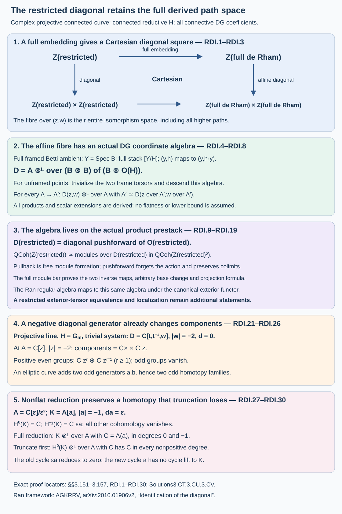
Figure 3.32. The full embedding square is (RDI.3). The framed fibre algebra and arbitrary derived base change are (RDI.6)–(RDI.8). The algebra on the actual product and its module adjunction are (RDI.9)–(RDI.13), and its Ran image is (RDI.16). The lower examples retain the degree-minus-two diagonal generator and the nonflat Koszul generator in (RDI.21)–(RDI.30).
3.155. A derived diagonal direction on the projective line
Exercise 3.CT. For \(X=\mathbf P^1\) and \(H=\mathbb G_m\), compute the automorphism fibre of the trivial restricted system. Compute its points and positive homotopy groups on \(A=\mathbf C[z]\), \(|z|=-2\).
Solution 3.CT. Equation (RBC.26) gives \(Y_{\mathrm r}=Y_{\mathrm B}=\operatorname{Spec}\mathbf C[\xi]\), with \(|\xi|=-1\). Conjugation is trivial for the commutative group. Thus its automorphism fibre at the zero point is \(\mathbb G_m\) times the derived self-intersection of that point in \(Y_{\mathrm B}\). The semifree resolution \[ \bigl(\mathbf C[\xi,w],\ |\xi|=-1,\ |w|=-2,\ dw=\xi\bigr) \longrightarrow\mathbf C \tag{RDI.21} \] is a quasi-isomorphism: \(d(w^n)=n\xi w^{n-1}\), so all \(\xi w^{n-1}\) are boundaries and no positive power of \(w\) is a cycle. Division by \(n\) is legitimate in characteristic zero. Tensoring this resolution with the other copy of \(\mathbf C\) sets \(\xi=0\). Therefore the entire automorphism fibre is \[ \operatorname{Spec}\mathbf C[t^{\pm1},w], \qquad |w|=-2,\quad dw=0 . \tag{RDI.22} \] On \(A\) its underlying space is \(\mathbb G_m(A)\times\Omega^\infty(A[-2])\). The first factor is the union of the invertible components of \(\Omega^\infty A\), while the second has \(i\)-th homotopy group \(H^{-i-2}(A)\). It follows that \[ \begin{gathered} \pi_0=\mathbf C^\times\times\mathbf C z,\\ \pi_{2r}=\mathbf C z^r\oplus\mathbf C z^{r+1}\quad(r\geq1), \qquad \pi_{2r-1}=0 . \end{gathered} \tag{RDI.23} \] The homotopy groups are based at \(t=1,w=0\); the displayed product for components is an identification of sets. Over ordinary \(\mathbf C\), only the ordinary multiplicative group is visible. Over the unbounded DG coefficient, the additional degree-minus-two coordinate already contributes distinct components. Ordinary matrix intertwiners alone therefore do not describe this diagonal.
3.156. The elliptic automorphism fibre
Exercise 3.CU. At \(u=\lambda,v=\mu,\xi=0\) in the elliptic \(\mathbb G_m\)-chart (RBC.27), compute the full automorphism fibre and its homotopy groups on the same \(A\).
Solution 3.CU. The ordinary coordinates \(u-\lambda,v-\mu\) form a regular sequence in the Laurent polynomial ring. Their Koszul resolution has two odd generators \(a,b\). The independent odd \(\xi\)-coordinate has the even resolution (RDI.21). Tensor the three semifree resolutions and then evaluate at the point. Together with the trivial conjugation factor, this gives \[ D=\mathbf C[t^{\pm1},a,b,w], \qquad |a|=|b|=-1,\quad |w|=-2,\quad d=0 . \tag{RDI.24} \] The generators \(a,b\) are exterior and \(w\) is polynomial. The corresponding underlying mapping space is \[ \mathbb G_m(A)\times \bigl(\Omega^\infty A[-1]\bigr)^2 \times\Omega^\infty A[-2]. \tag{RDI.25} \] This is an assertion about the whole underlying space; it does not specify a Hopf-coordinate splitting of its composition law. Each factor is computed by its displayed free generator. Consequently, at the identity point, \[ \begin{gathered} \pi_0=\mathbf C^\times\times\mathbf C z,\\ \pi_{2r}=\mathbf C z^r\oplus\mathbf C z^{r+1},\qquad \pi_{2r-1}=(\mathbf C z^r)^2\quad(r\geq1). \end{gathered} \tag{RDI.26} \] The two odd families are the additional one-cycle directions of the elliptic curve. The even family from \(w\) is present already on the projective line. Both computations concern actual diagonal fibres, so they include all higher automorphisms, rather than only a first-order tangent complex.
3.157. Nonflat reduction and a missing homotopy
Exercise 3.CV. Let \(A=\mathbf C[\epsilon]/\epsilon^2\) be ordinary. In the elliptic line chart compare \((u,v,\xi)=(\lambda,\mu,0)\) and \((\lambda+\epsilon,\mu,0)\), where \(\lambda\mu\ne0\). Compute their diagonal fibre, decide whether it has an \(A\)-point, and compare its full reduction with reduction after discarding negative cohomology.
Solution 3.CV. Conjugation is trivial. The two ordinary \(u\)-values differ by the nonzero element \(\epsilon\), so no \(A\)-isomorphism exists. The full affine fibre is nevertheless nonempty as a derived scheme. Resolve the equality of the two Laurent coordinates by their regular Koszul generators, and resolve the odd equality by (RDI.21). Up to changing the sign of \(a\), its algebra is \[ D=A[t^{\pm1},a,b,w], \qquad |a|=|b|=-1,\quad |w|=-2,\qquad da=\epsilon,\quad db=dw=0 . \tag{RDI.27} \] An \(A\)-algebra map to \(A\) would send \(a\) to zero and its differential to \(\epsilon\), which is impossible. After the nonflat map \(A\to\mathbf C\), however, the actual derived base change in (RDI.8) gives \[ D\otimes_A^L\mathbf C =\mathbf C[t^{\pm1},a,b,w],\qquad d=0 . \tag{RDI.28} \] The semifree \(A\)-algebra in (RDI.27) is an admissible derived base-change model, so this is an equality of that model, not an underived replacement for a required resolution.
The discrepancy is already visible in \(K=A[a]\), \(da=\epsilon\). Its underlying two-term free \(A\)-complex gives \[ \begin{gathered} H^0(K)=\mathbf C,\qquad H^{-1}(K)=\mathbf C\,\epsilon a,\qquad H^j(K)=0\ (j\ne0,-1),\\ K\otimes_A^L\mathbf C=\Lambda_{\mathbf C}(a),\qquad |a|=-1. \end{gathered} \tag{RDI.29} \] The old cycle \(\epsilon a\) reduces to zero, while the new class \(a\) is not the reduction of a cycle in \(K\). Thus reduction does not commute with this cohomology calculation.
Even using a derived tensor after first replacing \(K\) by \(H^0(K)\) gives a different answer. Resolve \(\mathbf C\) over \(A\) by one copy of \(A\) in each nonpositive degree, with every differential multiplication by \(\epsilon\). It is exact below degree zero since the kernel and image of multiplication by \(\epsilon\) are both \(\mathbf C\epsilon\). Tensoring with \(\mathbf C\) makes every differential zero, so \[ H^{-n}\bigl(H^0(K)\otimes_A^L\mathbf C\bigr) =\mathbf C\quad(n\geq0), \qquad H^{-n}(K\otimes_A^L\mathbf C)=0\quad(n\geq2). \tag{RDI.30} \] The full diagonal algebra is therefore indispensable for arbitrary derived base change. Neither the ordinary intertwiner scheme nor its derived scalar extension recovers the discarded homotopy.
3.158. Relative semifree models and the actual power thickenings
Let \(B\) be any connective commutative complex DG algebra, let \(f_1,\ldots,f_r\) be closed degree-zero elements, and allow modules unbounded in both cohomological directions. Let \(\widehat Y\subset\operatorname{Spec}B\) be the full subfunctor where the ideal generated by the images of the \(f_i\) in ordinary coefficient cohomology is nilpotent. The completion calculation (RBC.14)–(RBC.19) applies to every finite generating list, not only the coefficient loci in that construction.
We first give a relative semifree model. Put \(P=\mathbf C[t_1,\ldots,t_r]\), with \(t_i\mapsto f_i\). There is a factorization \[ P\longrightarrow Q\xrightarrow{\sim}B \tag{KTC.1} \] in which \(Q\) is a nonpositive commutative DG algebra, free as a graded commutative \(P\)-algebra on successively attached generators, each having differential in the earlier generators. Here is its construction. Start with degree-zero generators mapping to all closed degree-zero elements needed to surject onto \(H^0(B)\). For each cycle in the kernel of this cohomology map attach a degree-minus-one generator whose differential is that cycle, and map the new generator to a chosen primitive in \(B\). Also attach closed degree-minus-one generators mapping onto the next cohomology group. Continue: after surjecting in degree \(-a\), attach degree \(-a-1\) generators killing all kernel classes and attach closed generators to surject in degree \(-a-1\). These attachments do not change the already identified higher cohomology. The map to \(B\) prevents killing a class with nonzero image, and choosing every kernel class kills the entire kernel. Each fixed cohomology group is therefore identified after finitely many steps. Filtered colimits of complexes are exact, so the union is the asserted quasi-isomorphism.
The same attachment construction works over any connective base DG algebra: the coefficients then carry that base differential. The underlying \(P\)-module in (KTC.1) is semifree, hence tensoring it with an acyclic \(P\)-complex is acyclic. To check this last assertion, order the generators by attachment, and order their finite monomials so that replacing a generator by a term of its differential lowers the order. Such a well-founded order is given by finite sums of ordinal weights \(\omega^\alpha\) for the generator indices. The differential lowers this order apart from the coefficient differential. Its resulting exhaustive filtration has successive quotients sums of shifts of \(P\). Tensoring with an acyclic complex makes these quotients acyclic; transfinite induction, using exact filtered unions at limit stages, proves the assertion. Degree-zero polynomial monomials have zero differential and cause no exception. This proves that the model computes derived scalar extension; the same filtration proof applies over the general connective base. In particular a derived tensor product of connective algebras is connective, since its relative semifree model has only nonpositive generators and coefficients.
For \(N\geq1\) write \(P_N=P/(t_1^N,\ldots,t_r^N)\) and use the strict model \[ B_N=Q\otimes_P P_N \simeq B\underset P{\otimes^L}P_N \simeq \bigl(B[\eta_{1,N},\ldots,\eta_{r,N}], \ |\eta_{i,N}|=-1,\ d\eta_{i,N}=f_i^N\bigr). \tag{KTC.2} \] The last equivalence is the Koszul resolution of the polynomial regular sequence \(t_i^N\); its monomial proof is (RBC.14). All the models and transition maps are maps of DG algebras. From \(N'\) to \(N\), where \(N'\geq N\), the Koszul model sends \(\eta_{i,N'}\) to \(f_i^{N'-N}\eta_{i,N}\), whereas the strict model is ordinary quotient in the polynomial variables. These comparisons agree through the polynomial Koszul resolutions and their augmentations. Replacing \(B\) by \(Q\) changes none of the derived module categories or point functors: a semifree module resolution and its augmented bar give inverse scalar-extension/restriction comparisons for a quasi-isomorphism of DG algebras.
When using strict quotients we henceforth replace \(B\) by this equivalent relative model \(Q\). The strict model has a useful finite filtration. Filter \(B_N\) by the total degree in the ideal \((t_1,\ldots,t_r)\). Its associated graded pieces are finite sums of \(B_1\), with multiplicities the monomials of that degree whose exponents are less than \(N\). Indeed \(Q\) is graded-free over \(P\), and on a quotient of consecutive filtration levels its differential is the differential modulo the \(t_i\). Consequently \[ B_N\in\operatorname{thick}_{\operatorname{Mod}_{B_N}}(B_1), \qquad (-)\otimes_{B_N}^L B_1\ \text{is conservative}. \tag{KTC.3} \] The filtration has length at most \(r(N-1)+1\). For conservativity, if \(M\otimes_{B_N}^LB_1=0\), tensor that finite filtration with \(M\). Every quotient is zero, hence so is \(M\). There is no cohomological bound on \(M\).
3.159. The whole inverse limit of module categories
The effective completion presentation and the affine-point definition of quasicoherence give \[ \mathcal Q=\operatorname{QCoh}(\widehat Y) \simeq \lim_{N}\operatorname{Mod}_{B_N}, \tag{KTC.4} \] with transition functors derived pullback. To justify the limit, a Cartesian module on a prestack assigns a module to each affine point with its scalar comparisons on every simplex. A colimit of point spaces turns the categories of such assignments into limits. Taking their compatibility limit over affine maps commutes with this limit. Applying that observation to the actual full colimit of the power thickenings proves (KTC.4), including morphisms and higher paths.
An object of this limit is a coherent system \(M_N\), with specified equivalences \(M_{N'}\otimes_{B_{N'}}^LB_N\simeq M_N\). Restriction from \(B\) has the full adjunction \[ \begin{gathered} F:\operatorname{Mod}_B\rightleftarrows\mathcal Q:G,\\ F(M)_N=M\otimes_B^LB_N,\qquad G((M_N))=\lim_N M_N . \end{gathered} \tag{KTC.5} \] The arrows of the last inverse system are the underlying \(B\)-module maps induced by the displayed scalar comparisons. The adjunction follows on whole mapping spaces: maps of coherent systems are the compatibility limit of the level mapping spaces; scalar adjunction changes these to \(\operatorname{Map}_B(M,M_N)\), and their limit is \(\operatorname{Map}_B(M,\lim_NM_N)\).
We prove that the counit \(FG\to1_{\mathcal Q}\) is an equivalence. Use the strict relative model of §3.158. Since every \(t_i\) is zero on \(B_1\), the polynomial Koszul model gives \[ D_{N,1}=B_N\otimes_B^LB_1 \simeq B_1[\eta_{1,N},\ldots,\eta_{r,N}], \qquad d\eta_{i,N}=0 . \tag{KTC.6} \] For \(N'>N\), the transition \(D_{N',1}\to D_{N,1}\) kills every displayed generator. More precisely the composite from \(B_{N'}\) factors through \(B_1\): \[ B_{N'}\longrightarrow B_1\longrightarrow D_{N,1}, \qquad \eta_{i,N'}\longmapsto t_i^{\,N'-N}\eta_{i,N}=0 . \tag{KTC.7} \] These formulas are interpreted on the relative Koszul resolutions; their maps from \(Q\) factor through the same strict quotient \(B_1\). Thus the factorization is a factorization of full DG algebra maps, not only on cohomology.
For a coherent module system, take any \(L>N\). Its transition to level \(N\), followed by associative scalar extension and (KTC.7), gives \[ \begin{aligned} M_N\otimes_B^LB_1 &\simeq M_L\otimes_{B_L}^LD_{N,1}\\ &\simeq (M_L\otimes_{B_L}^LB_1)\otimes_{B_1}^LD_{N,1}\\ &\simeq M_1\otimes_{B_1}^LD_{N,1}. \end{aligned} \tag{KTC.8} \] These comparisons describe the entire inverse diagram. For any arrow or higher simplex of indices, choose a common \(L\) larger than its indices. All comparisons then use the same module-system coherence and the identical strict algebra factorizations (KTC.7). Changing \(L\) uses its specified transition equivalence. Faces and degeneracies are the associative scalar-extension comparisons from the full module bar, so their higher identities hold too. Under this diagram comparison, transitions preserve the \(M_1\) summand and kill every summand with a positive exterior degree.
The module \(B_1\) is perfect over \(B\), by its finite Koszul resolution. Its tensor functor therefore commutes with inverse limits: tensoring a dualizable module is also a right adjoint, with left adjoint tensoring its dual. The inverse limit of the extra summands in (KTC.8) is zero. Explicitly, the homotopy inverse limit of a sequence of complexes is the fibre of \(1-\mathrm{shift}\) on their product; for a zero-transition system this is the fibre of the identity. The constant summand has limit \(M_1\). It follows that \[ (G((M_N)))\otimes_B^LB_1 \simeq \lim_N(M_N\otimes_B^LB_1) \xrightarrow{\ \sim\ }M_1 . \tag{KTC.9} \] The last map is the counit at level one: the augmentation kills the same positive exterior summands. Thus it is the actual counit, not an unspecified isomorphism. At every level \(N\), reduce the counit modulo \(B_1\). Its reduction is (KTC.9) by the module-system comparisons. Conservativity (KTC.3) now proves \[ FG\xrightarrow{\sim}1_{\mathcal Q}, \qquad G\ \text{fully faithful}. \tag{KTC.10} \] The finite exterior splitting and the perfectness used in this argument do not impose an upper or lower cohomological bound on the system.
3.160. Koszul telescopes and modules with support
Let \(K_N\) denote the underlying finite perfect \(B\)-module of the Koszul algebra in (KTC.2). Dualize its transition maps. In one variable its dual is the two-term complex with multiplication by \(f^N\), in degrees zero and one, after changing the sign of the odd dual basis. The transition is identity in degree zero and multiplication by \(f^{N'-N}\) in degree one. Mapping the latter term at level \(N\) to \(B[f^{-1}]\) by \(b\mapsto b/f^N\) identifies its colimit differential with localization. For several variables, finite tensor products commute with filtered colimits, and the diagonal sequence of exponents is cofinal. Therefore \[ C_f:=\operatorname*{colim}_N K_N^\vee \simeq \bigotimes_{i=1}^r \operatorname{fib}(B\longrightarrow B[f_i^{-1}]). \tag{KTC.11} \] This equivalence includes the natural counit \(C_f\to B\), dual to the algebra units. All localizations here are derived localizations. Their underlying modules are the telescope of multiplication by the indicated degree-zero element: mapping the telescope to a module is the limit imposing its successive inverse multiplication comparisons. This is precisely the universal localization module, and multiplication supplies its localization algebra.
Define two functors on the entire module category: \[ \Gamma_f(M)=C_f\otimes_B^LM, \qquad \Lambda_f(M)=\operatorname{RHom}_B(C_f,M), \qquad \Gamma_f\dashv\Lambda_f . \tag{KTC.12} \] For one variable \(C_i=\operatorname{fib}(B\to B[f_i^{-1}])\) vanishes after inverting \(f_i\). Tensor its defining triangle with \(C_i\); its last term is zero, so \(C_i\otimes_B^LC_i\to C_i\) is an equivalence. The different factors commute by the symmetric tensor constraints. Hence \[ C_f\otimes_B^LC_f\xrightarrow{\sim}C_f, \qquad \Gamma_f^2\simeq\Gamma_f,\qquad \Lambda_f^2\simeq\Lambda_f . \tag{KTC.13} \] The last identity follows by the full tensor–Hom adjunction. The maps are induced by the same counit, so its two idempotence maps and their iterated compatibilities are the associative ones.
Let \(\mathcal T_f\) be the full subcategory of \(M\) for which every \(M[f_i^{-1}]\) vanishes. The finite product of the localization fibre triangles shows that this is exactly the image of \(\Gamma_f\). It is also \[ \mathcal T_f =\operatorname{Loc}_{\operatorname{Mod}_B}(K_1), \qquad K_1\ \text{a compact generator of }\mathcal T_f . \tag{KTC.14} \] Here \(\operatorname{Loc}\) means closure under all colimits, shifts and cones. For a direct proof, the cone of \(f^{a+b}\) is a finite extension of the cones of \(f^a\) and \(f^b\): factor the two multiplication maps and use their three mapping cones. The cone maps have the identity and the intervening multiplication as their entries; their cone triangle follows by cancelling the duplicate middle module. Thus each one-variable power Koszul module is built by finite extensions of the first one. Tensoring these finite constructions in the \(r\) variables proves that every \(K_N^\vee\) belongs to the thick subcategory generated by \(K_1\); dual Koszul modules differ from their original modules by a shift and a basis sign. Formula (KTC.11) puts \(C_f\) in \(\operatorname{Loc}(K_1)\). Every module is built from shifted free modules by its semifree resolution and augmented module bar, so \(C_f\otimes_B^LM\) belongs there too. Conversely \(K_1\) becomes contractible after any indicated localization, with contraction multiplication by \(\eta_i/f_i\). The supported category is localizing, proving equality. Finally, its colimits are ambient colimits and \(K_1\) is finite perfect over \(B\); its Hom therefore preserves them, giving compactness.
3.161. Torsion, derived completion and quasicoherent sheaves
Finite perfect duality in (KTC.11) computes the monad of (KTC.5): \[ GF(M)=\lim_N(K_N\otimes_B^LM) \simeq\operatorname{RHom}_B(C_f,M) =\Lambda_f(M). \tag{KTC.15} \] Its unit is the map induced by \(C_f\to B\). In particular the complete subcategory is \[ \mathcal C_f =\{M:M\xrightarrow{\sim}\Lambda_f(M)\} =\{M:\operatorname{RHom}_B(B[f_i^{-1}],M)=0 \text{ for every }i\}. \tag{KTC.16} \] For the second equality, in one variable apply Hom into \(M\) to the localization fibre triangle. In several variables the completion functors commute by tensor–Hom adjunction. If all the displayed Homs vanish, each one-variable unit and hence their composite is an equivalence. Conversely if \(M\) is the composite completion, each Hom vanishes because \(B[f_i^{-1}]\otimes_B^LC_f=0\), again by that adjunction.
Each \(f_i\) is nilpotent on the strict \(B_N\), so its localization there is zero. Consequently the natural map \(\Gamma_f(M)\to M\) becomes an equivalence at every level of \(F\): \[ F\Gamma_f\xrightarrow{\sim}F . \tag{KTC.17} \] For \(M,N\in\mathcal T_f\), use (KTC.5), (KTC.15) and the full tensor–Hom adjunction: \[ \begin{aligned} \operatorname{Map}_{\mathcal Q}(FM,FN) &\simeq\operatorname{Map}_B(M,\Lambda_fN)\\ &\simeq\operatorname{Map}_B(\Gamma_fM,N) \simeq\operatorname{Map}_B(M,N). \end{aligned} \tag{KTC.18} \] Thus \(F\) is fully faithful on the supported category. It is essentially surjective there: for \(A\in\mathcal Q\), (KTC.17) and the actual counit (KTC.10) give \(F\Gamma_fGA\simeq FGA\simeq A\). All these maps come from adjunctions and their bars, so the equivalence includes entire mapping complexes and natural transformations. Since \(G\) is fully faithful and its essential image is the fixed subcategory of \(GF=\Lambda_f\), we have the exact equivalences \[ \mathcal T_f \xrightarrow[\ F\ ]{\sim}\operatorname{QCoh}(\widehat Y) \xrightarrow[\ G\ ]{\sim}\mathcal C_f, \qquad F^{-1}=\Gamma_fG,\quad G^{-1}=F|_{\mathcal C_f}. \tag{KTC.19} \] The torsion–complete equivalence is \(\Lambda_f:\mathcal T_f\to\mathcal C_f\), with inverse \(\Gamma_f|_{\mathcal C_f}\). It also gives the natural identities on all modules \[ \Lambda_f\Gamma_f\simeq\Lambda_f,\qquad \Gamma_f\Lambda_f\simeq\Gamma_f . \tag{KTC.20} \] The first is \(G\) applied to (KTC.17). For the second, apply \(F\) to the natural map \(\Gamma_fM\to\Gamma_f\Lambda_fM\). Its image is an equivalence by (KTC.17), the adjunction unit and (KTC.10). Both objects are in \(\mathcal T_f\), where \(F\) is fully faithful, so the map is an equivalence.
The first equivalence in (KTC.19) is symmetric monoidal. Its tensor is the ambient tensor of supported modules, and its unit is \(C_f\): idempotence gives its unit constraints, and support is closed under tensor. The functor \(F\) preserves tensor pointwise and sends \(C_f\) to the actual quasicoherent unit by (KTC.17). On complete modules the corresponding operations are \[ \mathbf1_{\mathcal C_f}=\Lambda_f(B),\qquad M\widehat\otimes_B N=\Lambda_f(M\otimes_B^LN), \qquad \operatorname*{colim}_{\mathcal C_f}M_\alpha =\Lambda_f\!\left(\operatorname*{colim}_{\operatorname{Mod}_B}M_\alpha\right). \tag{KTC.21} \] These formulas follow by applying the fully faithful \(G\) to the pointwise tensor and colimits under \(F\). The unit need not be compact. If \(r=0\), all tensor products of localization fibres are empty products, so \(C_f=B\) and every category in (KTC.19) is \(\operatorname{Mod}_B\). If some \(f_i\) is a unit in \(H^0(B)\), its fibre is zero, the completion prestack is empty and all three categories are zero. Neither boundary case requires a convergence convention.
3.162. The exterior tensor equivalence for formal affine charts
Let \(B'\) be a second connective commutative complex DG algebra with a finite list \(g_1,\ldots,g_s\). Put \(D=B\otimes_{\mathbf C}B'\), and regard the two lists as a combined list \(h\) in \(D\). The actual point functors satisfy \[ \widehat Y_f\times\widehat Y_g \simeq\widehat Y_h\subset\operatorname{Spec}D . \tag{KTC.22} \] Indeed a \(D\)-point is a pair of points of the two affines. If the image ideals have exponents \(a,b\), their sum has exponent at most \(a+b-1\), since every such product has at least \(a\) factors from the first ideal or \(b\) from the second. Nilpotence of the sum implies nilpotence of each ideal. These are conditions on full unions of components, so the comparison retains all DG paths.
The external Koszul module \(K_f\otimes_{\mathbf C}K_g\) is the combined Koszul module \(K_h\), hence compactly generates \(\mathcal T_h\). For any four finite perfect modules of the indicated two rings, finite duality gives \[ \begin{aligned} &\operatorname{RHom}_{D} (P\otimes_{\mathbf C}Q,P'\otimes_{\mathbf C}Q')\\ &\qquad\simeq \operatorname{RHom}_B(P,P') \otimes_{\mathbf C} \operatorname{RHom}_{B'}(Q,Q'). \end{aligned} \tag{KTC.23} \] For finite free modules this is the matrix Hom identity with its total-complex Koszul signs; finite cones and retracts preserve it and prove the perfect case. No interchange of an infinite Hom limit with tensor is being used.
The compact-generator/free-module-bar proof (GSL.9), now applied to the single Koszul generator in each supported category, proves \[ \begin{gathered} \mathcal T_f\otimes_{\mathbf C}\mathcal T_g \xrightarrow{\sim}\mathcal T_h,\\ \operatorname{QCoh}(\widehat Y_f) \otimes_{\mathbf C}\operatorname{QCoh}(\widehat Y_g) \xrightarrow[\ \mathrm{ext}\ ]{\sim} \operatorname{QCoh}(\widehat Y_f\times\widehat Y_g). \end{gathered} \tag{KTC.24} \] Explicitly, restricted Yoneda takes values in right DG modules over the full endomorphism algebra of the compact generator, with action by precomposition. The two free-module bars identify the tensor category with right modules over the tensor of these algebras. Equation (KTC.23) is the full endomorphism comparison for the external generator, and that generator detects the target category by (KTC.14). The unit comparison holds on a free representable and on its bar; the counit is detected by the target generator. This constructs inverse functors and their entire mapping-space comparisons.
The first functor in (KTC.24) is ordinary exterior tensor of the supported modules. Its units agree because \(C_f\otimes_{\mathbf C}C_g=C_h\), by the finite localization-fibre formula. Under (KTC.19), its value at the product of power stages is exactly the derived restriction of that exterior tensor. These power-stage products present (KTC.22), and equal exponents are a cofinal subdiagram. Thus the second functor is the canonical exterior functor on the actual product, with the actual monoidal comparison. This proves the formal-affine comparison, without asserting that a filtered union of such charts or its \(H\)-quotient has the same global tensor property.
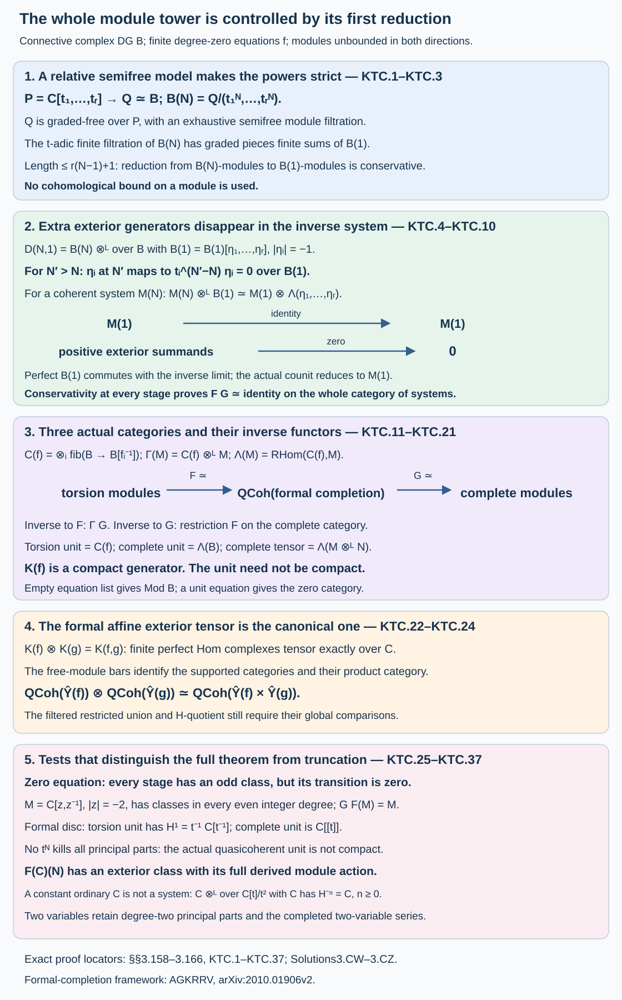
Figure 3.33. The strict power thickenings and their conservative first reduction are (KTC.1)–(KTC.3). Over the first thickening, the extra exterior generators in (KTC.6) are killed by every later transition, which identifies the actual counit in (KTC.8)–(KTC.10). The Koszul telescope and the inverse equivalences are (KTC.11)–(KTC.21). The formal-chart exterior equivalence is (KTC.22)–(KTC.24). The examples below distinguish complete modules, the noncompact unit and genuinely derived module-system comparisons.
3.163. A zero equation with unbounded module coefficients
Exercise 3.CW. Take \(B=\mathbf C[z]\), \(|z|=-2\), with zero differential, and \(f=0\). Describe the strict relative models, the negative cohomology of every thickening, and the compatible module system obtained from \(M=B[z^{-1}]\). Is \(M\) bounded above or below?
Solution 3.CW. A relative semifree model and its strict quotients are \[ Q=\mathbf C[t,z,s],\qquad |s|=-1,\quad ds=t,\qquad B_N=Q/(t^N),\qquad Q\xrightarrow{\sim}B . \tag{KTC.25} \] The contraction of the regular pair \(t,s\) identifies \(Q\) with \(B\): the two-term polynomial Koszul complex for \(t\) has cohomology \(\mathbf C\) in degree zero. Tensoring its two terms with \(\mathbf C[z]\) proves the statement in every negative degree.
In the quotient, multiplication by \(t\) on \(\mathbf C[t]/t^N\) has kernel \(\mathbf C t^{N-1}\) and cokernel \(\mathbf C\). Consequently the whole cohomology algebra is \[ H^*(B_N)=\mathbf C[z]\otimes \Lambda(\bar\eta_N),\qquad \bar\eta_N=[s t^{N-1}],\quad|\bar\eta_N|=-1 . \tag{KTC.26} \] The map from the zero-equation Koszul model \(B[\eta_N]\) sending \(\eta_N\) to \(s t^{N-1}\) is a quasi-isomorphism. It respects products since \(s^2=0\), and its displayed basis computes every cohomology degree. If \(N'>N\), the transition sends this class to zero, since \(t^{N'-1}=0\) in \(B_N\). Thus the negative class exists at every individual stage but not in its transition limit.
The completion prestack is the whole affine, and \(C_f=B\), since localization at zero is the zero algebra. For \(M=B[z^{-1}]\), its stage modules in the Koszul models and their limit are \[ F(M)_N\simeq M\otimes_{\mathbf C}\Lambda(\eta_N), \qquad GF(M)\simeq M . \tag{KTC.27} \] Transitions fix \(M\) and kill the odd summand. The product-fibre calculation of §3.159 therefore computes the limit, even though \(M\) has a nonzero cohomology group in every even integer degree. In particular it is bounded neither above nor below. This is an actual unbounded module system; no bounded-window replacement is involved.
3.164. The formal disc and its noncompact unit
Exercise 3.CX. For \(B=\mathbf C[t]\), \(f=t\), compute the torsion unit, the complete unit and the compact generator. Prove that the quasicoherent unit of the formal completion is not compact.
Solution 3.CX. The torsion unit is the localization fibre \[ C_t=[\,\mathbf C[t]\longrightarrow\mathbf C[t,t^{-1}]\,], \qquad H^1(C_t)=t^{-1}\mathbf C[t^{-1}],\quad H^j(C_t)=0\ (j\ne1). \tag{KTC.28} \] The terms are in degrees zero and one. The localization inclusion is injective; its quotient has the stated basis of negative monomials. The compact generator is the two-term Koszul module for \(t\), quasi-isomorphic to \(\mathbf C=B/(t)\).
The complete unit is \[ \Lambda_t(B)=\lim_N\mathbf C[t]/t^N =\mathbf C[[t]] \tag{KTC.29} \] in degree zero. Compatible polynomial truncations are exactly formal power series. The maps of this degree-zero inverse system are surjective; the map \(1-\mathrm{shift}\) on their product is surjective too, by successively lifting its prescribed coordinates. Its fibre therefore has no degree-one cohomology, proving the displayed derived limit assertion.
If \(C_t\) were compact in \(\mathcal T_t\), its identity would factor through one term of its filtered presentation \(\operatorname{colim}_N K_N^\vee\). Every degree-one class of \(K_N^\vee\) is killed by \(t^N\), so the factorization would make \(t^N\) kill all of \(H^1(C_t)\). But \[ t^N[\,t^{-N-1}\,]=[\,t^{-1}\,]\ne0 \quad\text{in }\mathbf C[t,t^{-1}]/\mathbf C[t] . \tag{KTC.30} \] This contradiction proves noncompactness. The equivalence (KTC.19) transfers it to the quasicoherent unit and to the complete unit in its actual complete category. Thus this category is not the ordinary module category of \(\mathbf C[[t]]\) with its usual tensor and unit: that ordinary free rank-one module is compact. The difference is also visible in the nonzero ordinary module \(\mathbf C((t))\): \[ \Lambda_t(\mathbf C((t)))=0,\qquad F(\mathbf C((t)))=0 . \tag{KTC.31} \] Multiplication by \(t\) is invertible there, so its derived tensor with every \(K_N\) is zero. Hence it is not a nonzero object in the complete image. Complete-category colimits and tensor use (KTC.21), rather than the corresponding ordinary module operations.
3.165. Two variables and the product formal chart
Exercise 3.CY. For \(B=\mathbf C[t,u]\) and the ideal \((t,u)\), compute the torsion and complete units. Compute \(\Gamma_{t,u}(B/(t))\) and \(\Lambda_{t,u}(B/(t))\), and identify the compact generator.
Solution 3.CY. Tensoring the two localization fibres gives the actual complex \[ C_{t,u}= [\,B\longrightarrow B[t^{-1}]\oplus B[u^{-1}] \longrightarrow B[t^{-1},u^{-1}]\,], \tag{KTC.32} \] in degrees zero, one and two. The first map is \(b\mapsto(b,b)\), and the second is \((a,b)\mapsto b-a\); changing one tensor-basis sign gives this convention. Its degree-zero kernel vanishes. The intersection of the two single-localization rings inside the double-localization ring is \(B\), as their Laurent monomials show, so degree-one cohomology vanishes too. The remaining monomials give \[ \begin{gathered} H^2(C_{t,u})= \bigoplus_{a,b\geq1}\mathbf C\,t^{-a}u^{-b}, \qquad H^j(C_{t,u})=0\ (j\ne2),\\ \Lambda_{t,u}(B)=\mathbf C[[t,u]] . \end{gathered} \tag{KTC.33} \] For completion, the quotients by \((t^N,u^N)\) are ordinary and surject onto one another. Compatible truncations specify one coefficient for each monomial, and the same product-fibre argument as in (KTC.29) eliminates the higher inverse-limit term. The rectangular and total-degree truncations are cofinal, so these are the usual two-variable formal series.
On \(M=B/(t)=\mathbf C[u]\), the \(t\)-localization vanishes, while the \(u\)-localization is \(\mathbf C[u,u^{-1}]\). Thus \[ \begin{gathered} H^1(\Gamma_{t,u}M)=u^{-1}\mathbf C[u^{-1}], \qquad H^j(\Gamma_{t,u}M)=0\ (j\ne1),\\ \Lambda_{t,u}M=\mathbf C[[u]] . \end{gathered} \tag{KTC.34} \] The completion assertion can also be read from the stage complex. Tensor the \(t^N\)-Koszul factor with \(M\), where \(t=0\); it is an exterior factor with zero differential whose positive-exterior transition is zero. The \(u^N\)-factor resolves \(\mathbf C[u]/u^N\). The inverse limit discards the first extra summand and completes the second one, giving exactly the displayed series.
The combined Koszul module resolves \(\mathbf C=B/(t,u)\) and is a compact generator. Its two factors are the compact generators for the two one-variable supported categories. Their actual exterior tensor realizes (KTC.24). Hence the full formal-chart tensor comparison includes the principal-parts complex in degree two and the completed series unit; it does not require either unit to be compact.
3.166. Why a constant ordinary module is not a coherent system
Exercise 3.CZ. In the formal-disc example, describe the compact generator as a system of derived modules. Would taking the ordinary module \(\mathbf C\) at every stage give that object?
Solution 3.CZ. Apply \(F\) to the \(B\)-module \(\mathbf C\). The regular polynomial resolution of \(B_N\) over \(B\) gives \[ F(\mathbf C)_N =\mathbf C\otimes_B^L B_N \simeq\Lambda_{\mathbf C}(\eta_N),\qquad|\eta_N|=-1 . \tag{KTC.35} \] The right side describes the underlying complex. Its full \(B_N\)-module structure is transported from the Koszul algebra \(B[\eta_N]\), \(d\eta_N=t^N\), on which \(\eta_N\) acts by exterior multiplication. This action must not be replaced by the trivial ordinary action on its cohomology. For \(N'>N\), the underlying transition kills \(\eta_{N'}\), because \(t\) is already zero on \(\mathbf C\). The scalar comparison required of a system is over \(B_{N'}\), not over \(B\); its equivalence follows from the associative base-change identity defining \(F\), retaining that full action. The extra negative class is therefore compatible with the system. Its limit is \[ GF(\mathbf C)=\mathbf C,\qquad \Gamma_t\mathbf C=\Lambda_t\mathbf C=\mathbf C . \tag{KTC.36} \] The first equality is the same constant-plus-zero-transition limit, and the other two follow since the module is killed by \(t\). The image \(F(\mathbf C)\) is compact by (KTC.14) and (KTC.19), despite its negative class at each stage.
By contrast, the putative constant system of ordinary modules already fails from level two to level one. There \(B_2=\mathbf C[t]/t^2\) and \(B_1=\mathbf C\), and \[ H^{-n}\bigl(\mathbf C\otimes_{B_2}^L\mathbf C\bigr) =\mathbf C\quad(n\geq0). \tag{KTC.37} \] Resolve \(\mathbf C\) over \(B_2\) by copies of \(B_2\) in all nonpositive degrees, with multiplication by \(t\) as every internal differential. Kernel and image are both \(\mathbf C t\), so this is an exact augmented free resolution. Tensoring with \(\mathbf C\) makes all differentials zero and proves (KTC.37). It cannot be equivalent to the proposed ordinary module at level one. The missing coherence is a mathematical obstruction to that proposed system, rather than a choice of a more convenient presentation.
The formal-affine equivalences (KTC.19)–(KTC.24) extend to the restricted framed union by the supported-category comparison in §§3.167–3.170. The \(H\)-quotient and its global tensor comparison are §§3.171–3.174, and the relative tensor multiplication is §3.175. The nilpotent projector, its Hecke realization, singular-support image and original-field regularity require further arguments. The formal-completion framework is discussed in AGKRRV, The stack of local systems with restricted variation and geometric Langlands theory with nilpotent singular support, in the discussion of quasicoherent sheaves on formal affine schemes.
3.167. Intrinsic support and continuous coreflection
Continue over \(\mathbf C\), with the actual framed restricted functor \(Y_{\mathrm r}\subset Y_{\mathrm B}=\operatorname{Spec}B\) and connected reductive \(H\). Put \(R=H^0(B)\). The coefficient coalgebras of (SCI.3) form a filtered set. Equations (RBC.11)–(RBC.13) give closed ordinary loci with finitely generated ideals \(I_E\subset R\), and \(E\subset F\) implies \(I_F\subset I_E\). Their actual full formal completions satisfy \[ Y_{\mathrm r}\simeq\operatorname*{colim}_E\widehat Y_E, \qquad \mathcal T_E=\operatorname{Loc}(K_E),\quad \Gamma_E=C_E\otimes_B^L(-). \tag{SUL.1} \] Here a finite list of closed degree-zero lifts of generators of \(I_E\) defines the Koszul module \(K_E\) and the localization-fibre tensor \(C_E\) of (KTC.11). The equivalence \(\mathcal T_E\simeq\operatorname{QCoh}(\widehat Y_E)\) is (KTC.19). All module categories include complexes unbounded in both directions.
These categories and projectors depend on the ordinary closed locus, rather than on its chosen generating list. Derived localization has cohomology \(H^*(M)[f^{-1}]\), by its exact filtered multiplication telescope. Thus its vanishing says that each cohomology class is killed by some power of \(f\). If the chosen generators \(f_i\) have this property and \(g=\sum a_i f_i\) in \(R\), fix a class and exponents \(n_i\) killing it. Expanding \(g^{\,1+\sum_i(n_i-1)}\) shows that it kills the class: each monomial has one exponent at least \(n_i\). Boundaries act trivially on cohomology, so equality in \(R\) suffices. Consequently \[ \mathcal T_E =\{M:M[g^{-1}]=0\text{ for every }g\in I_E\}, \qquad \mathcal T_E\subset\mathcal T_F\quad(E\subset F). \tag{SUL.2} \] The same reasoning handles radical equality by taking a power of each generator.
Inclusion \(j_E:\mathcal T_E\hookrightarrow\operatorname{Mod}_B\) has right adjoint \(\Gamma_E\), with its original counit. To prove it, filter the cofibre of \(\Gamma_EM\to M\) by the successive localization-fibre factors. Each quotient is a localization at one generator, tensored with some earlier factors, so is local for that generator. For such \(L\), finite perfect duality identifies \(\operatorname{RHom}_B(K_E,L)\) with \(K_E^\vee\otimes_B^LL=0\); the localized Koszul contraction proves the vanishing. The class of sources with zero Hom into \(L\) is closed under source colimits, shifts and cones. Since \(\mathcal T_E=\operatorname{Loc}(K_E)\), every source \(N\) in it has zero Hom into every quotient of that finite filtration. Hence \[ \operatorname{Map}_B(N,\Gamma_EM) \xrightarrow{\sim}\operatorname{Map}_B(N,M), \qquad N\in\mathcal T_E . \tag{SUL.3} \] This is the entire mapping-space adjunction; shifts give every derived mapping degree. The right adjoint is continuous because it is tensor with \(C_E\). If \(E\subset F\), the adjunction and (SUL.2) give the canonical counit comparisons \[ \Gamma_E\Gamma_F\simeq\Gamma_E,\qquad \Gamma_F\Gamma_E\simeq\Gamma_E . \tag{SUL.4} \] For the first, test (SUL.3) from \(\mathcal T_E\subset\mathcal T_F\); both objects coreflect the same map to \(M\). For the second, \(\Gamma_EM\) already lies in \(\mathcal T_F\). These comparisons are coherent: the space of factorizations in the adjunction is contractible, and their compositions are the same factorizations of the counit.
3.168. The filtered supported category and its unit
For \(E\subset F\), (SUL.4) and its counits supply a coherent map \(\Gamma_EM\to\Gamma_FM\) over \(M\). Define \[ \mathcal T=\operatorname{Loc}\{K_E:E\},\qquad C_S=\operatorname*{colim}_E C_E,\qquad \Gamma_SM=C_S\otimes_B^LM=\operatorname*{colim}_E\Gamma_EM . \tag{SUL.5} \] Every \(\Gamma_EM\) lies in \(\mathcal T\), by (KTC.14). For a fixed \(K_E\), the tail of \(F\) containing \(E\) is cofinal and has \(\Gamma_FK_E\simeq K_E\), compatibly with its counit. Thus \(\Gamma_SK_E\simeq K_E\). Since \(\Gamma_S\) is continuous, the fixed subcategory of its natural counit contains the localizing category generated by these objects. Its image is therefore exactly \(\mathcal T\), and \[ \Gamma_S|_{\mathcal T}\simeq1,\qquad C_S\otimes_B^LC_S\simeq C_S . \tag{SUL.6} \] The second identity is also the diagonal cofinality calculation in the filtered product of coefficient indices, using (SUL.4). All its maps are the original tensor counits.
The category has the ambient colimits and tensor product, with unit \[ \mathbf1_{\mathcal T}=C_S,\qquad \mathcal T\text{ compactly generated by the finite perfect }K_E . \tag{SUL.7} \] Each \(K_E\) is compact because it is finite perfect over \(B\) and the inclusion preserves these colimits. For supported \(M,N\), tensor idempotence gives \(C_S\otimes_B^L(M\otimes_B^LN)\simeq M\otimes_B^LN\), so support is closed under tensor. The counits give its unit constraints. There is no assertion that \(C_S\) is compact.
3.169. The actual quasicoherent category of the framed union
The full prestack colimit (SUL.1) and the affine-point argument in (KTC.4) give \[ \operatorname{QCoh}(Y_{\mathrm r}) \simeq\lim_E\operatorname{QCoh}(\widehat Y_E) \simeq\lim_E(\mathcal T_E,\Gamma_E|_{\mathcal T_F}). \tag{SUL.8} \] The indicated transition really is pullback. An ambient \(B\)-module \(M\) restricts first to \(\widehat Y_F\) and then to \(\widehat Y_E\) by the same derived scalar extension as direct restriction to \(\widehat Y_E\). By (KTC.17)–(KTC.19), that last restriction corresponds to \(\Gamma_EM\). These are the natural restriction comparisons on whole diagrams, so their higher compositions agree.
There are explicit inverse functors \[ U(M)=(\Gamma_EM)_E,\qquad V((M_E)_E)=\operatorname*{colim}_E M_E . \tag{SUL.9} \] For \(V\), use the map \(M_E\simeq\Gamma_EM_F\to M_F\) when \(E\subset F\). It is coherent by the specified limit-object comparisons and the counits in (SUL.3). Each term lies in \(\mathcal T\). At a fixed \(E\), continuity and the cofinal tail \(F\supset E\) give the actual comparison \[ \Gamma_E\operatorname*{colim}_F M_F \simeq\operatorname*{colim}_F\Gamma_EM_F \xrightarrow{\sim}M_E . \tag{SUL.10} \] On that tail the system is the constant \(M_E\) by its specified compatibilities. This proves \(UV\simeq1\). Conversely \(VU(M)=\Gamma_SM\simeq M\) for \(M\in\mathcal T\). The same natural maps act on mapping complexes and all coherent transformations, so these are inverse functors of full categories. In particular restriction gives \[ F_{\mathrm r}:\mathcal T\xrightarrow{\sim} \operatorname{QCoh}(Y_{\mathrm r}). \tag{SUL.11} \] It is symmetric monoidal. Indeed \(\Gamma_E(M\otimes_B^LN)\simeq\Gamma_EM\otimes_B^L\Gamma_EN\) by \(C_E^2\simeq C_E\), and \(\Gamma_EC_S\simeq C_E\). Thus the actual tensor and unit at every level are exactly the restrictions of (SUL.7).
3.170. The framed exterior equivalence
Finite products of spaces commute with filtered colimits, by the finite-simplex proof in (RBC.19). Thus the product \(Y_{\mathrm r}\times Y_{\mathrm r}\) is the filtered colimit of \(\widehat Y_E\times\widehat Y_F\). By (KTC.22), these are the completions inside \(\operatorname{Spec}(B\otimes_{\mathbf C}B)\) along the combined ideals on the two factors. Applying (SUL.8)–(SUL.11) to this family identifies its quasicoherent category with the supported category \(\mathcal T_2\), compactly generated by \(K_E\otimes_{\mathbf C}K_F\).
The full finite-perfect Hom identity (KTC.23) holds for every pair of these external generators and respects composition. The two-variable multi-object free-module bars of (GSL.9) therefore prove \[ \begin{gathered} \mathcal T\otimes_{\mathbf C}\mathcal T \xrightarrow{\sim}\mathcal T_2,\\ \operatorname{QCoh}(Y_{\mathrm r})\otimes_{\mathbf C} \operatorname{QCoh}(Y_{\mathrm r}) \xrightarrow[\ \mathrm{ext}\ ]{\sim} \operatorname{QCoh}(Y_{\mathrm r}\times Y_{\mathrm r}). \end{gathered} \tag{SUL.12} \] Its generator functor is fully faithful by that Hom identity; its image generates the target. The Yoneda bar gives the unit on representables and every free-module realization; the target generators detect its counit. At each pair of power stages its value is the exterior derived scalar extension of the original two modules, so the displayed functor is the canonical exterior functor. Its unit is \(C_S\otimes_{\mathbf C}C_S\), the filtered colimit of the exterior level units. This is the actual product supported unit, which also checks the monoidal comparison.
3.171. Finite equivariant Koszul generators
The ideals \(I_E\) are scheme-theoretically \(H\)-stable by (SCI.10): conjugation acts linearly on faithful matrix coordinates and fixes their inverse determinant over every coefficient ring. The same action preserves their full formal completions. Choose finitely many ordinary ideal generators. The rational coaction places each in a finite-dimensional stable subspace, and stability of the ideal keeps those subspaces inside it. Their sum gives \[ W_E\subset I_E\subset R,\qquad \dim_{\mathbf C}W_E<\infty,\qquad (W_E)=I_E . \tag{SUL.13} \] Here \(W_E\) is a finite rational representation, not a tuple assumed fixed by \(H\).
Let \(\mathcal E=\operatorname{QCoh}(BH)\), the category of derived rational representations. Its invariant projection and full unbounded group-cobar contraction are the earlier bundle lesson, §4.5, and (GSL.5)–(GSL.6), with \(H\) in place of the frame group. The proof applies verbatim: projection onto the trivial isotypic summand of \(\mathcal O(H)\), followed by evaluation of its constant value, is bi-invariant and has value one on the unit. The same contraction uses only adjacent cobar columns, so is valid for an unbounded complex. In particular \[ H^0\operatorname{RHom}_H(W_E,B) =\operatorname{Hom}_H(W_E,H^0(B)). \tag{SUL.14} \] Indeed the left mapping complex is the exact invariant projection of \(W_E^\vee\otimes B\), and finite dual tensor commutes with cohomology. This also proves projectivity of the finite representation in the rational heart.
Lift the inclusion in (SUL.13) through (SUL.14) to a point of the whole mapping space \(W_E\to B\) in \(\mathcal E\). The lift can have higher choices; none are discarded. Free commutative algebra adjunction and derived scalar extension construct the actual equivariant algebra and module \[ P_E=\operatorname{Sym}_{\mathcal E}(W_E)\longrightarrow B, \qquad K_E^H=B\underset{P_E}{\otimes^L}\mathbf C . \tag{SUL.15} \] The augmentation of \(P_E\) sends \(W_E\) to zero. The finite equivariant Koszul complex \(P_E\otimes\Lambda(W_E[1])\), with differential the identity \(W_E\to P_E\), resolves that augmentation: in any basis it is the polynomial regular-sequence resolution proved in (RBC.14). Its differential is equivariant because the inclusion of the entire representation is equivariant. Extending scalars along the actual algebra map in (SUL.15) retains all action coherences. Explicitly its two-sided algebra bar has terms \(B\otimes P_E^{\otimes n}\otimes\mathbf C\); faces are multiplication and the action maps, and degeneracies insert units. They are all maps in \(\mathcal E\). The full bar and its extra-degeneracy comparisons compute the derived extension, so this construction supplies a coherent \(H\)-action on the full object, without imposing equivariance on the individual power-generator tuples of (RBC.14).
After forgetting the action it is a finite perfect Koszul \(B\)-module whose degree-zero generating ideal is \(I_E\). The intrinsic support proof (SUL.2) and (KTC.14) imply \[ \operatorname{Loc}(K_E^H|_B)=\mathcal T_E . \tag{SUL.16} \] Thus the equivariant generator has the full ordinary support required, independently of its chosen lift.
3.172. The quotient category and compact generators
The intrinsic projectors above are compatible with the whole \(H\)-action nerve. Their localization-fibre formulas commute with derived scalar extension; the pulled-back ideals are the same stable ideals. The coreflection property (SUL.3) identifies the resulting functors and all their compositions. Thus (SUL.11) is an equivalence with its full rational action.
The frame torsor of (RBC.23) and full faithfully flat descent (RSP.8)–(RSP.10) identify the quotient category: \[ \mathcal A:=\operatorname{QCoh}(\mathcal Z_{\mathrm r}) \simeq\mathcal T^H . \tag{SUL.17} \] Here \(\mathcal T^H\) is the full category of equivariant \(B\)-modules whose underlying module belongs to \(\mathcal T\). This means the entire action-nerve totalization, not equivariance only on \(H^0\). For example its affine ambient category is \(\operatorname{Mod}_B(\operatorname{QCoh}(BH))\): the relative affine-map module equivalence (CSD.21) applied to \([\operatorname{Spec}B/H]\to BH\) proves that identification. The full subcategory is stable under the action because every coefficient locus is \(H\)-stable. Taking its action-nerve limit therefore gives precisely the supported equivariant objects. The equivariant restriction equivalence gives (SUL.17) on each nerve level, hence on its totalization.
Let \(V\) range over finite rational \(H\)-representations and put \(P_{E,V}=K_E^H\otimes_{\mathbf C}V\). For any supported equivariant \(M\), equivariant finite duality and the same cobar contraction give the full formula \[ \operatorname{RHom}_{B,H}(P_{E,V},M) \simeq \bigl(V^\vee\otimes_{\mathbf C} \operatorname{RHom}_B(K_E^H|_B,M|_B)\bigr)^H . \tag{SUL.18} \] The inner complex is rational: it is the underlying scalar complex of the equivariant module \((K_E^H)^\vee\otimes_B^LM\). Exact rational invariants commute with colimits, by the natural isotypic projection. Since the underlying Koszul module is finite perfect, (SUL.18) proves compactness of every \(P_{E,V}\).
These objects detect zero. If every displayed complex vanishes, each cohomology representation of the inner complex has zero Hom from every finite \(V\). Any nonzero rational vector belongs to a finite representation; complete reducibility supplies a simple summand and a nonzero such Hom. Exactness of invariants makes it a genuine cohomology test. Hence the inner complexes vanish for every \(E\). Equation (SUL.16) and generation of \(\mathcal T\) make \(M|_B=0\), and the conservative frame pullback makes \(M=0\). We have proved \[ \mathcal A\text{ is compactly generated by the }P_{E,V}. \tag{SUL.19} \] This proof does not make the quasicoherent unit compact.
3.173. The global quotient exterior equivalence and its categorical dual
The product stack is \([Y_{\mathrm r}\times Y_{\mathrm r}/(H\times H)]\), since both torsors and their maps form products on every test ring. Its supported description is (SUL.17) for the product. The external \(P_{E,V}\boxtimes P_{F,W}\) compactly generate it. To verify detection, use (SUL.18) for the product and the combined Koszul generators. Finite representations of \(H\times H\) are generated by external ones: decompose for the first reductive factor; its finite multiplicity spaces carry the commuting second action, and decompose those as well. Schur's scalar lemma identifies the multiplicity action. This is the complete argument of §3.91 applied to \(H\).
For external perfect supported objects, (KTC.23) and the two independent rational invariant projections give \[ \operatorname{RHom}_{\mathcal Z_{\mathrm r}^2} (P\boxtimes Q,P'\boxtimes Q') \simeq \operatorname{RHom}_{\mathcal A}(P,P') \otimes_{\mathbf C}\operatorname{RHom}_{\mathcal A}(Q,Q'). \tag{SUL.20} \] The invariant identity follows by applying the two commuting Reynolds projections to the two tensor factors; their image is the tensor of their images. This holds on all internal cohomological degrees. It is a natural Hom comparison, so respects composition and the graded tensor signs. Full multi-object free-module bars and the actual product generators now give \[ \mathrm{ext}:\mathcal A\otimes_{\mathbf C}\mathcal A \xrightarrow{\sim}\operatorname{QCoh}(\mathcal Z_{\mathrm r}^2). \tag{SUL.21} \] The units and counits are proved on representables by the Hom comparison, extended by the free bars, and detected by the product generators. On the actual torsor nerve this functor is exterior pullback and tensor, so it is the canonical exterior equivalence with its monoidal structure.
For completeness the compact-generator model also gives a categorical dual. Let \(\mathscr D\) be the small full DG category of the chosen generators and their finite cones, shifts and retracts. Restricted Yoneda takes values in right DG modules; the evaluation free bar gives \[ \mathcal A\simeq\operatorname{Mod}_{\mathscr D}, \qquad \mathcal A^\vee\simeq\operatorname{Mod}_{\mathscr D^{\mathrm{op}}}. \tag{SUL.22} \] The evaluation is the full right/left-module tensor coend. The coevaluation is the diagonal bimodule with value \(\mathscr D(d,e)\), contravariant in \(d\) and covariant in \(e\). Its two triangle contractions are \[ \int^{e}\mathscr D(d,e)\otimes M(e)\simeq M(d), \qquad \int^{d}N(d)\otimes\mathscr D(d,e)\simeq N(e). \tag{SUL.23} \] In their enriched two-sided bars, composition is the interior face and the two module actions are the endpoint faces; inserting the identity at the represented object is the contracting extra degeneracy. The contractions agree with all module maps, so prove both duality triangles on every module realization. This asserts dualizability of the presentable DG category. It does not identify its dual with itself by an unproved integration functor.
3.174. The full tensor-category diagonal algebra
Combine the actual affine diagonal and projection formula (RDI.9)–(RDI.13) with (SUL.21). Multiplication and its right adjoint are \[ m_{\mathcal A}=\Delta^*\mathrm{ext}, \qquad \delta_{\mathcal A}=\mathrm{ext}^{-1}\Delta_*, \qquad m_{\mathcal A}\dashv\delta_{\mathcal A}. \tag{SUL.24} \] The right adjoint is continuous and \(\mathcal A\otimes\mathcal A\)-linear: these are exactly the actual affine forgetful functor and its projection formula. The full regular-algebra comparison (RDI.16), now under the exterior equivalence, is the canonical algebra identity \[ (\mathsf L_{\mathrm r}\otimes\mathsf L_{\mathrm r})(R_{\mathcal R}) \xrightarrow{\sim} \delta_{\mathcal A}(\mathbf1_{\mathcal A}). \tag{SUL.25} \] It preserves the multiplication and unit because its pullback to each affine pair is the same tautological isomorphism algebra as in (RDI.16)–(RDI.19). The full derived mapping-space comparison there determines the map, not only an isomorphism class of the object. Equation (RDI.9) consequently reads \[ \mathcal A\simeq \operatorname{Mod}_{\delta_{\mathcal A}(\mathbf1_{\mathcal A})} (\mathcal A\otimes\mathcal A). \tag{SUL.26} \] Under this equivalence multiplication is free module formation and its right adjoint forgets the algebra action.
3.175. The actual relative tensor multiplication
We prove the required relative comparison with its functor. The full Ran category \(\mathcal R\) has compact unit and dualizable compact generators by (KG.19)–(KG.23). Its multiplication \(m_{\mathcal R}\) sends compact external generators to compact objects: for compact dualizable \(T\), the functor \(\operatorname{RHom}(S,T^\vee\otimes-)\) preserves colimits when \(S\) is compact. Its actual right adjoint is \[ \delta_{\mathcal R}(M)= \int^{S,T\in\mathcal R^c} \operatorname{RHom}_{\mathcal R}(S\otimes T,M) \otimes(S\boxtimes T). \tag{SUL.27} \] The coend is over the full compact DG category. Testing compact external generators and contracting its Yoneda bar proves the adjunction; their compactness proves continuity of this right adjoint. For compact dualizable acting objects, moving their duals across those Hom tests proves bimodule linearity of its adjunction mate. Arbitrary acting objects are colimits of compacts, and both sides preserve those colimits, so the mate is linear for all objects. Its value at the unit is the same regular algebra \(R_{\mathcal R}\) of (KG.23).
The right adjoint is conservative. If \(\delta_{\mathcal R}(M)=0\), adjunction tests from \(\mathbf1\boxtimes X\) give \(\operatorname{Map}_{\mathcal R}(X,M)=0\) for every \(X\), so \(M=0\). Its monad on \(\mathcal R\otimes\mathcal R\) is tensoring with \(R_{\mathcal R}\), by bimodule linearity, with multiplication and unit the adjunction mates of those in (KG.23). The full free-module comparison therefore gives \[ \mathcal R\simeq \operatorname{Mod}_{R_{\mathcal R}} (\mathcal R\otimes\mathcal R). \tag{SUL.28} \] Here is the monadic argument explicitly. For a module over that tensor algebra, realize its augmented free-module bar using \(m_{\mathcal R}\) on the free terms. Applying \(\delta_{\mathcal R}\) commutes with this realization and recovers the original module, because its bar has the contracting extra degeneracy. The comparison counit for an object of \(\mathcal R\) becomes an equivalence after \(\delta_{\mathcal R}\); conservativity proves it was already an equivalence. The other comparison is the same free-module contraction. Thus the comparison includes all action maps and coherent transformations.
We also need its change of coefficients. If \(\mathcal C\to\mathcal B\) is a continuous symmetric monoidal functor and \(a\) a commutative algebra object of \(\mathcal C\), the free/forgetful \(a\)-module adjunction is continuous and \(\mathcal C\)-linear on both sides. Tensoring this adjunction by \(\mathcal B\) over \(\mathcal C\) retains its two triangle maps. The resulting monad is tensoring with the image algebra \(a_{\mathcal B}\). Its right adjoint is conservative: the objects obtained from free modules generate the balanced tensor category, since every pure tensor with a module is the realization of its free-module bar; a pure tensor with a free module is one of these free generators by balancing. Adjunction tests from them detect zero. The preceding explicit bar comparison therefore proves this change-of-coefficients equivalence, with no compact-unit assumption on \(\mathcal B\).
Apply it to \(\mathcal C=\mathcal R\otimes\mathcal R\), \(\mathcal B=\mathcal A\otimes\mathcal A\) and \(a=R_{\mathcal R}\). Associative balancing and (SUL.28) give \[ \begin{aligned} \mathcal A\underset{\mathcal R}{\otimes}\mathcal A &\simeq (\mathcal A\otimes\mathcal A) \underset{\mathcal R\otimes\mathcal R}{\otimes}\mathcal R\\ &\simeq \operatorname{Mod}_{(\mathsf L_{\mathrm r}\otimes\mathsf L_{\mathrm r}) (R_{\mathcal R})} (\mathcal A\otimes\mathcal A). \end{aligned} \tag{SUL.29} \] For the first comparison, a balanced triple \((a,b,r)\) maps to \(a\boxtimes_{\mathcal R}(\mathsf L_{\mathrm r}(r)\otimes_{\mathcal A}b)\) in the relative category; its inverse sends \(a\boxtimes_{\mathcal R}b\) to the triple with \(r=\mathbf1_{\mathcal R}\). Moving the two source actions across the balancing gives the two inverse comparisons. Their identities are associativity and the unit identities in the full two-sided tensor bars, so include all higher comparisons.
Now (SUL.25) and (SUL.26) identify the last category with \(\mathcal A\). The resulting equivalence is precisely the multiplication functor: \[ \mathcal A\underset{\mathcal R}{\otimes}\mathcal A \xrightarrow[\ a\otimes b\mapsto a\otimes b\ ]{\ \sim\ }\mathcal A . \tag{SUL.30} \] To verify this map, the free module attached to \(b\in\mathcal A\otimes\mathcal A\) in the middle of (SUL.29) corresponds to the balanced tensor of \(b\) with the Ran unit. The indicated multiplication sends it to \(m_{\mathcal A}(b)\), exactly the free diagonal-module functor in (SUL.26). Their free action maps agree by the canonical algebra map (SUL.25); their full module bars therefore agree on every object. This proves (RDI.20) with its actual functor. It does not by itself construct the geometric nilpotent projector or prove continuity of the right adjoint of \(\mathsf L_{\mathrm r}\).
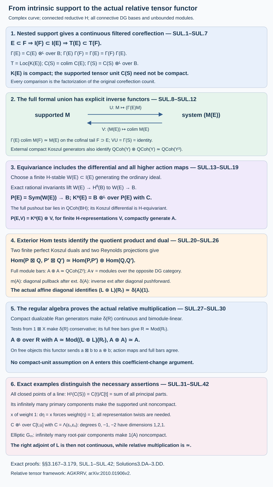
Figure 3.34. The support projectors and the filtered unit are (SUL.1)–(SUL.7). The two inverse functors for the actual union are (SUL.8)–(SUL.11). Equivariant generators are constructed by the full derived pushout (SUL.13)–(SUL.16), and their Hom tests give (SUL.17)–(SUL.21). The regular algebra and module bars identify the actual relative tensor multiplication in (SUL.24)–(SUL.30). The examples below retain the infinite-component unit, equivariant differential weights and nonflat derived intersections.
3.176. All closed points of an affine line
Exercise 3.DA. Take \(B=\mathbf C[t]\), with coefficient loci indexed by finite subsets \(F\subset\mathbf C\), and \(I_F=(p_F)\), where \(p_F=\prod_{\lambda\in F}(t-\lambda)\). Describe the supported category of their formal union and its unit. The empty subset has \(p_F=1\).
Solution 3.DA. Every rational denominator factors into finitely many linear factors. Thus the localization-fibre formula gives \[ C_S=\operatorname{fib}(\mathbf C[t]\longrightarrow\mathbf C(t)), \qquad H^1(C_S)=\mathbf C(t)/\mathbf C[t],\quad H^j(C_S)=0\ (j\ne1). \tag{SUL.31} \] The localization inclusion is injective. Polynomial division first removes the polynomial part of a fraction. Bézout identities for distinct powers of the linear factors then split its remaining fraction into principal parts. The expansion is unique: the highest pole at any fixed \(\lambda\) cannot be cancelled by fractions regular there. Hence \[ \begin{gathered} H^1(C_S)= \bigoplus_{\lambda\in\mathbf C,\ j\geq1} \mathbf C\,(t-\lambda)^{-j},\\ \mathcal T\simeq\prod_{\lambda\in\mathbf C}\mathcal T_\lambda, \qquad \mathcal T_\lambda=\operatorname{Loc}(B/(t-\lambda)). \end{gathered} \tag{SUL.32} \] For the categorical assertion, partial fractions identify \(C_S\) with the sum of the individual fibre units \(C_\lambda\). Tensoring with a supported module gives its sum of primary components. The cross projectors vanish for \(\lambda\ne\mu\): the two linear factors generate the unit ideal, so their joint Koszul support is empty by (SUL.2). The coreflection adjunction also makes all cross mapping complexes zero. Conversely the sum of any tuple of primary supported modules has precisely that tuple of projections. These two functors and their counits are inverse, proving the product description on all unbounded complexes.
The actual tensor unit has a nonzero component at every \(\lambda\). Its finite-component truncations satisfy \[ \mathbf1_{\mathcal T} \simeq\operatorname*{colim}_{F\ \mathrm{finite}} \mathbf1_F,\qquad \mathbf1_{\mathcal T}\ \text{is not compact}. \tag{SUL.33} \] If its identity factored through a finite truncation, its component outside that finite set would factor through zero, contradicting the nonzero identity there. This proves noncompactness directly. The category includes arbitrary tuples; only its compact objects have finite component support, by the same identity-factorization argument applied to any compact object.
3.177. An equivariant differential and its weight tests
Exercise 3.DB. Let \(H=\mathbf G_m\) act on \(B=\mathbf C[x]\) with \(x\) of weight one. For the stable ideal \((x)\), construct an equivariant Koszul generator. Write \(\mathbf C(n)\) for the representation \(a\mapsto a^n\), and compute \(\operatorname{Ext}^j_{B,H}(\mathbf C(n),\mathbf C(m))\). Does the untwisted Koszul object alone generate the equivariant supported category?
Solution 3.DB. The finite coordinate space is \(W=\mathbf C(1)\). Its equivariant Koszul module is \[ \begin{gathered} K=B[\eta],\qquad|\eta|=-1,\quad d\eta=x,\quad \mathrm{wt}(\eta)=1,\\ K(n)=[\,B\otimes\mathbf C(n+1)\xrightarrow{x} B\otimes\mathbf C(n)\,]. \end{gathered} \tag{SUL.34} \] The two terms of \(K(n)\) are in degrees minus one and zero. The augmentation to \(\mathbf C(n)\) is a quasi-isomorphism, since multiplication by \(x\) on \(B\) is injective with that quotient. The odd generator must have weight one: otherwise the differential would not commute with the action. Thus (SUL.15) carries actual differential data.
Apply the full Hom complex of this two-term resolution to \(\mathbf C(m)\). The differential is zero, since \(x\) acts by zero on the target. Taking exact invariants in its two degrees gives \[ \operatorname{Ext}^j_{B,H}(\mathbf C(n),\mathbf C(m)) = \begin{cases} \mathbf C,&j=0,\ m=n,\\ \mathbf C,&j=1,\ m=n+1,\\ 0,&\text{otherwise}. \end{cases} \tag{SUL.35} \] In particular the nonzero supported object \(\mathbf C(2)\) satisfies \[ \operatorname{RHom}_{B,H}(K(0),\mathbf C(2))=0 . \tag{SUL.36} \] Thus the untwisted object does not generate. All twists in (SUL.19) supply the missing weight tests. They also retain the degree-one maps between adjacent weights, which an ordinary invariant-fibre calculation would omit.
3.178. A quotient for which relative tensor multiplication fails
Exercise 3.DC. Let \(\mathcal R_0=\operatorname{Mod}_{\mathbf C[t,u]}\), \(\mathcal A_0=\operatorname{Mod}_{\mathbf C}\), and let the monoidal functor be scalar extension along \(t,u\mapsto0\). Compute \(\mathcal A_0\otimes_{\mathcal R_0}\mathcal A_0\). Is its multiplication to \(\mathcal A_0\) an equivalence?
Solution 3.DC. The free/forgetful change-of-coefficients argument in §3.175 for ordinary module algebras gives \[ \begin{gathered} \mathcal A_0\underset{\mathcal R_0}{\otimes}\mathcal A_0 \simeq\operatorname{Mod}_{D},\\ D=\mathbf C\underset{\mathbf C[t,u]}{\otimes^L}\mathbf C =\Lambda_{\mathbf C}(\epsilon_t,\epsilon_u), \quad|\epsilon_t|=|\epsilon_u|=-1,\quad d=0 . \end{gathered} \tag{SUL.37} \] The equality is the regular polynomial Koszul resolution of the two coordinates. Its cohomology is \[ \begin{gathered} H^0(D)=\mathbf C,\qquad H^{-1}(D)=\mathbf C\epsilon_t\oplus\mathbf C\epsilon_u,\\ H^{-2}(D)=\mathbf C\epsilon_t\epsilon_u, \qquad H^j(D)=0\ (j\ne0,-1,-2). \end{gathered} \tag{SUL.38} \] Multiplication is scalar extension along the augmentation \(D\to\mathbf C\). On the full endomorphism complex of the free rank-one module it induces \[ \operatorname{RHom}_D(D,D)=D \longrightarrow \operatorname{RHom}_{\mathbf C}(\mathbf C,\mathbf C)=\mathbf C . \tag{SUL.39} \] It kills both degree-minus-one generators and their nonzero degree-minus-two product. It is therefore not fully faithful and not an equivalence. Equivalently the image of the source regular algebra is \(D\), whereas the target diagonal algebra is \(\mathbf C\), so the hypothesis (SUL.25) fails. The ordinary tensor product would give only \(\mathbf C\) and conceal the obstruction.
3.179. The elliptic unit and a noncontinuous right adjoint
Exercise 3.DD. For an elliptic curve and \(H=\mathbf G_m\), decide whether the unit of \(\mathcal A=\operatorname{QCoh}(\mathcal Z_{\mathrm r})\) is compact. What does this imply about continuity of the right adjoint of \(\mathsf L_{\mathrm r}\)?
Solution 3.DD. The full framed chart and root-pair decomposition are (RBC.27)–(RBC.29). Conjugation is trivial, so the unframed stack adds \(B\mathbf G_m\). The finite-root-pair presentations, with their full DG clopen decompositions, give \[ \begin{gathered} \mathcal A\simeq \prod_{(\lambda,\mu)\in(\mathbf C^\times)^2}\mathcal A_{\lambda,\mu},\\ \mathcal A_{\lambda,\mu}=\operatorname{QCoh}\!\left( \widehat{(\mathbf G_m)^2}_{(\lambda,\mu)} \times\operatorname{Spec}\mathbf C[\xi]\times B\mathbf G_m \right),\qquad |\xi|=-1 . \end{gathered} \tag{SUL.40} \] One obtains this product by taking the inverse limit of the finite-root-pair product categories. The underlying finite unions are actual clopen decompositions on all affine tests, as proved in §3.146, including disconnected coefficients. Thus no restriction to connected tests is implicit.
The unit has nonzero component at every root pair, since its pullback to the corresponding ordinary point is the nonzero scalar unit. Its finite-component truncations have colimit the unit, and \[ \mathbf1_{\mathcal A} =\operatorname*{colim}_{F\ \mathrm{finite}}\mathbf1_F, \qquad \mathbf1_{\mathcal A}\ \text{is not compact}. \tag{SUL.41} \] The proof is the identity-factorization argument of (SUL.33). In contrast the full Ran unit is compact by (KG.23).
There is an actual right adjoint, constructed without a continuity assumption: \[ \begin{gathered} \mathsf U_{\mathrm r}(M)= \int^{T\in\mathcal R^c} \operatorname{RHom}_{\mathcal A}(\mathsf L_{\mathrm r}(T),M) \otimes T,\\ \mathsf L_{\mathrm r}\dashv\mathsf U_{\mathrm r}. \end{gathered} \tag{SUL.42} \] Testing compact source objects and contracting the enriched Yoneda bar gives its mapping-space adjunction; arbitrary source objects follow from their compact free-module bars. If this right adjoint preserved colimits, that adjunction would make \(\mathsf L_{\mathrm r}\) carry each compact object to a compact object. Its value on the compact Ran unit is the noncompact unit (SUL.41), a contradiction. Thus the right adjoint is not continuous in this example. This does not contradict the relative tensor equivalence (SUL.30), which asserts a different functor and was proved by its actual algebra-module bars.
The restricted global exterior comparison, categorical dual and relative tensor multiplication above are over the complex numbers. RSE.37–RSE.38 and NTR.16 give the compatible restricted geometric projector. GFP.55–GFP.56 prove its original-complex full-image regularity and nilpotent-support containment. GZR.33 gives equality with all independent nilpotent support over the complex numbers. The other geometric ground fields retain their separate requirements. For the relative tensor formulation see AGKRRV, The stack of local systems with restricted variation and geometric Langlands theory with nilpotent singular support, “Tensor products over representations versus quasicoherent sheaves.”
3.180. Supported perfect objects and their tensor duals
Retain the actual category \(\mathcal A=\mathcal T^H\) of (SUL.17), over \(\mathbf C\). Write \(j\) for its forgetful inclusion into equivariant \(B\)-modules. Its colimits and its tensor product are computed on the underlying modules; its tensor unit is the equivariant \(C_S\) of (SUL.5). The unit generally is not a perfect \(B\)-module.
In contrast, every compact object has a finite perfect underlying module and belongs to one finite support category \(\mathcal T_E\). Here is the required compact-object argument. The full generator bars of (SUL.22) present every object as a colimit of cells on the \(P_{E,V}\). Each coefficient complex is a filtered colimit of finite-dimensional total subcomplexes: the differential closure of finitely many vectors is finite, because the differential squares to zero. A finite skeleton of the simplicial free bar uses finitely many attaching steps. Restricting to finite coefficient subcomplexes and finitely many summands, and closing under their finitely many face and differential images, therefore gives finite cell approximations to that skeleton. The skeleta and these approximations form a filtered system with the original bar as colimit. A compact object's identity factors through one such finite cell object, so it is a retract of it. Finite sums, cones, shifts and retracts of the generators have finite perfect underlying modules. Their finitely many support indices are dominated by a single \(E\), by filteredness. This proves the assertion without a bound on the cohomology of \(B\).
For a finite perfect equivariant supported object define \[ P^*=\operatorname{RHom}_B(jP,B). \tag{SDU.1} \] The finite perfect dual has the induced full rational action: its evaluation and coevaluation are maps in equivariant modules. Its support is the same. Indeed localization commutes with finite perfect duality, so \(P[g^{-1}]=0\) implies \(P^*[g^{-1}]=0\). Equation (SUL.2) then puts it in the same \(\mathcal T_E\). Equivariant finite duality and exact rational invariants give \[ \operatorname{RHom}_{\mathcal A}(P,M) \simeq\bigl(P^*\otimes_B^LjM\bigr)^H. \tag{SDU.2} \] The right side preserves colimits in \(M\). Thus every equivariant supported object with finite perfect underlying module is compact, in particular \(P^*\). This also proves the converse characterization needed above.
The filtered projector also has the full coreflection adjunction. For a fixed compact Koszul generator, mapping into \(\Gamma_SM=\operatorname*{colim}_F\Gamma_FM\) commutes with that colimit. On its cofinal support tail the comparisons are the equivalences (SUL.3). The class of sources for which the mapping comparison is an equivalence is closed under source colimits, shifts and cones, hence contains all supported modules. The same natural comparisons on the action nerve prove the equivariant statement. Alternatively its compact tests are \(P_{E,V}\), which are compact even in the ambient equivariant module category by finite perfect duality and exact invariants. Thus every map from a supported equivariant source to an ambient target factors uniquely, in its whole mapping space, through that target's \(\Gamma_S\).
These are duals for the supported monoidal structure itself. Compose the ambient coevaluation \(B\to P\otimes_B^LP^*\) with \(C_S\to B\) to obtain its supported coevaluation. The ambient evaluation \(P^*\otimes_B^LP\to B\) has supported source, so the full coreflection adjunction (SUL.3), extended by (SUL.5), factors it uniquely through \(C_S\). Both triangle identities become the usual finite perfect duality triangles after the conservative inclusion into \(B\)-modules: the inserted \(C_S\to B\) acts as the unit equivalence on each supported factor. Their coherences are the same coreflection factorizations. Consequently \[ \begin{gathered} (P^*)^*\simeq P,\qquad (P\otimes_{\mathcal A}Q)^*\simeq Q^*\otimes_{\mathcal A}P^*,\\ (\mathcal A^c)^{\mathrm{op}}\xrightarrow[\ P\mapsto P^*\ ]{\sim}\mathcal A^c. \end{gathered} \tag{SDU.3} \] The derived evaluation formulas include the graded tensor signs. Finite perfect biduality proves full faithfulness of the last functor on mapping complexes; biduality also proves essential surjectivity. Tensor products of compact objects remain compact, by the finite perfect characterization and their supported underlying tensor product. Compactness of the unit is not used.
3.181. Completion tests on compact objects
Fix a compact \(P\), a support index \(E\) for it, and \(F\supset E\). If \(g\in I_F\), then \(P[g^{-1}]=0\). Compactness of \(jP\) in \(\operatorname{Mod}_B\) applied to the multiplication telescope gives \[ \operatorname*{colim}_{n} \operatorname{RHom}_B(jP,jP) \simeq\operatorname{RHom}_B(jP,jP[g^{-1}])=0. \tag{SDU.4} \] The transition is multiplication by \(g\) on the target. Filtered colimits commute with cohomology of complexes. Thus the identity class becomes zero at some stage: \(g^N:jP\to jP\) is nullhomotopic for one finite \(N\). This exponent acts on the whole object, even when its cohomology is unbounded.
There is consequently a full vanishing \[ \operatorname{RHom}_B(B[g^{-1}],jP)=0. \tag{SDU.5} \] Indeed the left side is the inverse limit of \(jP\) with transition \(g\). Its explicit inverse-limit complex is the fibre of \(1-T\) on the product of the terms, where \(T\) shifts one position and applies \(g\). The chosen nullhomotopy of \(g^N\), applied in every coordinate, makes \(T^N\) nullhomotopic. The finite geometric sum \(1+T+\cdots+T^{N-1}\) is therefore an inverse of \(1-T\) in the homotopy category, by the identities with \(1-T^N\). An invertible morphism there is an equivalence, so its fibre vanishes. No boundedness or Mittag–Leffler hypothesis enters this finite homotopy calculation.
For a finite generating list of \(I_F\), apply (SDU.5) successively to its localization-fibre tensor factors. The canonical map induced by the counit \(C_F\to B\) is an equivalence \[ jP\xrightarrow{\sim}\operatorname{RHom}_B(C_F,jP). \tag{SDU.6} \] For one factor this follows by applying Hom to its fibre triangle, using (SDU.5). Iterated tensor/Hom adjunction proves the statement for all factors. This is the actual counit-induced comparison, rather than an unspecified isomorphism.
The same argument works at each level of the \(H\)-action nerve. Derived base change retains finite perfectness, the supported object and each chosen nullhomotopy. The counit-induced maps in (SDU.6) are natural in that nerve; taking its full mapping-complex totalization gives the equivariant assertion. Finally \(C_S=\operatorname*{colim}_F C_F\), and the tail \(F\supset E\) is cofinal. On that tail the maps from the fixed equivariant \(P\) in (SDU.6) are compatible equivalences. We obtain \[ (jP)^H\xrightarrow{\sim} \operatorname{RHom}_{\mathcal A}(\mathbf1_{\mathcal A},P), \qquad P\in\mathcal A^c. \tag{SDU.7} \] The source on the left is the full derived rational invariant complex. The unbounded cobar contraction is (GSL.5)–(GSL.6); ordinary fixed vectors alone would not justify the preceding nerve argument.
3.182. Continuous global sections and their precise meaning
Define a continuous functor by the supported module description: \[ \Gamma_!(\mathcal Z_{\mathrm r},M):=(jM)^H. \tag{SDU.8} \] Forgetting to the underlying module preserves colimits. The exact rational invariant projection also preserves them, by the reductive Reynolds proof in §3.171. Thus this formula defines the functor on every unbounded object. There is a canonical natural transformation from it to ordinary global sections, induced by \(C_S\to B\), and (SDU.7) identifies that transformation on all compact objects.
It is the unique continuous extension of ordinary global sections from the compact subcategory. To verify uniqueness with its maps, use the compact-generator bar (SUL.22): a continuous functor is the realization of its values on the free representables and their full coefficient/action diagrams. Specifying its enriched restriction to the compact category specifies precisely those values and diagrams. The comparison on representables extends through that bar, and the two bar contractions give the unique compatible equivalence. This also proves that (SDU.8) is independent of the chosen equivariant Koszul generators and framing presentation: the intrinsic tensor unit, its ordinary global-section functor and the full compact subcategory determine that restriction.
The functor has a natural non-unital right-lax symmetric monoidal structure. For underlying equivariant modules the canonical derived balancing map and the invariant projections give \[ (jM)^H\otimes_{\mathbf C}(jN)^H \longrightarrow (jM\otimes_B^LjN)^H. \tag{SDU.9} \] The balancing map is the map from the degree-zero term to the full two-sided \(B\)-module bar. The actions, face maps and graded symmetry give associativity and symmetry, including their higher comparisons. This construction supplies no map from \(\mathbf C\) to \((C_S)^H\), so no unital structure is asserted. Neither the definition nor its compact-object characterization identifies \(\Gamma_!\) with a left adjoint of the unit functor.
3.183. Canonical tensor self-duality and its diagonal kernel
Consider the continuous pairing \[ \mathcal A\otimes_{\mathbf C}\mathcal A \xrightarrow{\ \otimes_{\mathcal A}\ }\mathcal A \xrightarrow{\ \Gamma_!\ }\operatorname{Vect}_{\mathbf C}. \tag{SDU.10} \] Equation (SDU.2) identifies its value on \((P^*,M)\), for compact \(P\), with \(\operatorname{RHom}_{\mathcal A}(P,M)\). These representable continuous functionals are the compact generators of the dual DG category in (SUL.22). The anti-equivalence (SDU.3) identifies all their Hom complexes and composition maps with those of the compact generators on the first factor. The full two-sided module bars therefore extend this generator identification to an equivalence \[ \mathcal A\xrightarrow{\sim}\mathcal A^\vee, \qquad M\longmapsto \bigl[N\longmapsto\Gamma_!(M\otimes_{\mathcal A}N)\bigr]. \tag{SDU.11} \] This is the canonical tensor self-duality. The proof identifies the actual pairing, rather than merely an abstract equivalence with an opposite-module category. Its continuous dual of the unit functor \(u:\operatorname{Vect}\to\mathcal A\) is exactly \(\Gamma_!\), because inserting \(u(\mathbf C)=\mathbf1_{\mathcal A}\) into the first factor of (SDU.10) gives (SDU.8). Duality of continuous functors is the assertion here; an adjunction to \(u\) is a different assertion.
Its coevaluation object, under the actual exterior equivalence (SUL.21), is \[ \begin{gathered} K_{\mathrm{coev}}=\delta_{\mathcal A}(\mathbf1_{\mathcal A}),\\ K_{\mathrm{coev}}\simeq(\mathsf L_{\mathrm r}\otimes\mathsf L_{\mathrm r})(R_{\mathcal R}) \simeq\Delta_*\mathcal O_{\mathcal Z_{\mathrm r}}. \end{gathered} \tag{SDU.12} \] The last expression is read in \(\operatorname{QCoh}(\mathcal Z_{\mathrm r}^2)\), the first two in \(\mathcal A\otimes\mathcal A\); the intervening exterior equivalence is understood. To prove this identification and both triangles, test compact external objects. The actual adjunction (SUL.24), followed by finite tensor duality, gives \[ \begin{aligned} \operatorname{RHom}_{\mathcal A\otimes\mathcal A} (P\boxtimes Q,\delta_{\mathcal A}(\mathbf1)) &\simeq\operatorname{RHom}_{\mathcal A}(P\otimes Q,\mathbf1)\\ &\simeq\operatorname{RHom}_{\mathcal A}(Q,P^*). \end{aligned} \tag{SDU.13} \] These are the diagonal DG bimodule values under the compact anti-equivalence in (SDU.3). They are natural for every morphism and preserve compositions and graded signs. The fully faithful generator-Yoneda description (SUL.22) therefore identifies the entire object with the coevaluation diagonal, not only its individual cohomology groups. The two triangle contractions are exactly the two full enriched Yoneda contractions (SUL.23). This proves the asserted coevaluation and its coherences. The middle equality in (SDU.12) is the actual algebra comparison (SUL.25).
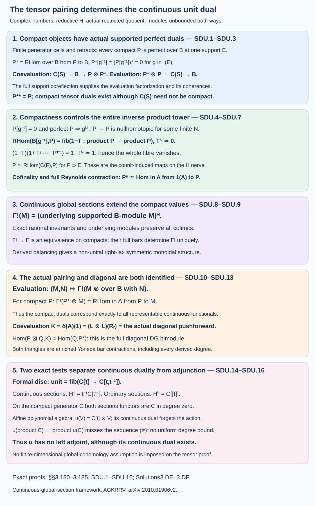
Figure 3.35. Finite supported duals and the full coreflection are (SDU.1)–(SDU.3). The compact telescope test and finite geometric inverse establish (SDU.4)–(SDU.7). The continuous extension of global sections is (SDU.8)–(SDU.9), and the canonical tensor pairing and actual diagonal coevaluation are (SDU.10)–(SDU.13). The two solutions below distinguish ordinary sections, continuous sections and a left adjoint of the unit.
3.184. Two different global-section functors on a formal disc
Exercise 3.DE. In the single formal chart \(B=\mathbf C[t]\), \(I=(t)\), compare ordinary and continuous global sections on the actual tensor unit. Verify their agreement on the compact generator \(B/(t)\).
Solution 3.DE. The torsion model of §3.164 identifies the actual unit with \(C_t=\operatorname{fib}(B\to B[t^{-1}])\). Its continuous sections are its underlying complex, so \[ H^1\Gamma_!(\mathbf1)=t^{-1}\mathbf C[t^{-1}],\qquad H^j\Gamma_!(\mathbf1)=0\quad(j\ne1). \tag{SDU.14} \] Ordinary global sections are \(\operatorname{RHom}_B(C_t,C_t)\). Since the restriction equivalence sends the complete unit \(\Lambda B\) to this same torsion unit, (KTC.19)–(KTC.21) identify its endomorphism complex with that of the complete unit. Equivalently, apply the completion functor to \(C_t\): \(\Lambda\Gamma B\simeq\Lambda B\) by (KTC.17), and \(\operatorname{RHom}_B(C_t,C_t)=\Lambda C_t\). Hence \[ \Gamma(\mathbf1)\simeq\mathbf C[[t]] \text{ in degree }0. \tag{SDU.15} \] Both descriptions use the entire unit; the displayed cohomology groups show that the two functors differ there. For \(K=B/(t)\), multiplication by \(t\) is zero and (SDU.5)–(SDU.7) give \(\Gamma_!(K)\simeq\Gamma(K)\simeq\mathbf C\) in degree zero, with the actual comparison induced by \(C_t\to B\). The example also shows why compact-object agreement cannot extend by colimits for ordinary global sections: that functor is discontinuous.
3.185. The dual of a unit need not be its left adjoint
Exercise 3.DF. Take \(\mathcal A=\operatorname{Mod}_{\mathbf C[t]}\) with no support restriction and trivial group. Identify the continuous dual of its unit functor under the tensor self-duality above. Does the unit functor have a left adjoint?
Solution 3.DF. Here \(C_S=B\), so (SDU.8) is the forgetful functor from \(B\)-modules to complexes. The unit functor is \(u(V)=B\otimes_{\mathbf C}V\). The usual free-module mapping-complex formula proves that the forgetful functor is its right adjoint. It is also the continuous dual of \(u\) under (SDU.10), as (SDU.11) shows.
The functor \(u\) does not preserve products. For countably many scalar complexes in degree zero its comparison is \[ \mathbf C[t]\otimes_{\mathbf C}\prod_{n\geq0}\mathbf C \longrightarrow\prod_{n\geq0}\mathbf C[t]. \tag{SDU.16} \] Every element on the left is a finite sum of polynomials tensored with scalar sequences; its sequence of polynomials has a uniform finite degree bound. The sequence \((t^n)_{n\geq0}\) on the right has no such bound, so the comparison is not surjective on degree-zero cohomology. Products of complexes and modules here are the exact degreewise products, so this is a failure of the actual derived product comparison. A right adjoint preserves products, directly from its mapping-space adjunction and the universal property of a product. Thus \(u\) cannot be a right adjoint and has no left adjoint. The continuous dual constructed in (SDU.11) nevertheless exists. This distinguishes the needed tensor-duality statement from an unproved unit adjunction.
The constructions here concern quasicoherent tensor duality and continuous global sections over the complex numbers. Their use in a geometric Beilinson projector requires the compatible action on the automorphic category and the corresponding support and regularity arguments. For the continuous-global-section formulation see AGKRRV, The stack of local systems with restricted variation and geometric Langlands theory with nilpotent singular support, “The functor of !-global sections.”
3.186. The continuous transpose of the restricted coefficient functor
Work over \(\mathbf C\), with the actual full Ran category \(\mathcal R\), restricted quotient category \(\mathcal A\), and continuous symmetric monoidal functor \(\mathsf L=\mathsf L_{\mathrm r}:\mathcal R\to\mathcal A\). The source has compact unit and dualizable compact generators by (KG.19)–(KG.23). The target has the canonical tensor self-duality and continuous sections of (SDU.8)–(SDU.13). In particular the actual regular kernel satisfies \[ K=(\operatorname{Id}_{\mathcal R}\otimes\mathsf L)(R_{\mathcal R}), \qquad (\mathsf L\otimes\operatorname{Id}_{\mathcal A})(K) \simeq K_{\mathrm{coev}}. \tag{UID.1} \] The second comparison is (SUL.25) and (SDU.12), including the actual map and its algebra structure.
Define a continuous functor by the entire compact DG coend \[ \mathsf D(a)= \int^{T\in\mathcal R^c} \Gamma_!\bigl(\mathsf L(T^\vee)\otimes_{\mathcal A}a\bigr) \otimes_{\mathbf C}T. \tag{UID.2} \] It is contravariant in the coefficient index and covariant in the last factor; its realization is the full enriched two-sided bar. It includes every homogeneous morphism, action face and identity degeneracy. Continuity of \(\Gamma_!\), tensor and bar realization proves continuity in \(a\). No finite-dimensionality of these coefficient complexes is required. For compact \(S\), compactness moves its full Hom through the realization, and the enriched Yoneda contraction gives \[ \operatorname{RHom}_{\mathcal R}(S,\mathsf D(a)) \simeq\Gamma_!\bigl(\mathsf L(S^\vee)\otimes_{\mathcal A}a\bigr). \tag{UID.3} \] The contraction uses precomposition on the coefficient and postcomposition on the represented factor; their interior composition faces coincide. This specifies its actual mapping-complex comparison, not only dimensions. Equivalently, (KG.23), the symmetry of the regular kernel and compact biduality identify (UID.2) with applying \(\operatorname{Id}\otimes\Gamma_!\) to \(K\otimes(\mathbf1\boxtimes a)\). For the source, (KG.22) identifies the tensor pairing \((r,s)\mapsto\operatorname{RHom}_{\mathcal R}(\mathbf1,r\otimes s)\) with the representable functionals on every compact dual. Its unit is compact, so this pairing is continuous. The full representable bars identify the dual category, and its coevaluation is \(R_{\mathcal R}\): compact external tests give \(\operatorname{RHom}(S\otimes T,\mathbf1)=\operatorname{RHom}(T,S^\vee)\), the diagonal bimodule. Both Yoneda contractions are the same two triangles used in (SDU.13). This supplies the source's canonical tensor self-duality as well.
This is the continuous transpose of \(\mathsf L\) under the canonical tensor self-dualities. No adjunction between \(\mathsf D\) and \(\mathsf L\) is asserted.
3.187. The module comparison and the full triangle
For compact \(r,S\) in \(\mathcal R\), the duality adjunction and (UID.3) identify the two mapping complexes obtained from \(r\otimes\mathsf D(a)\) and \(\mathsf D(\mathsf L(r)\otimes a)\). Indeed the first is the test from \(r^\vee\otimes S\); its coefficient is \(\Gamma_!(\mathsf L(S^\vee\otimes r)\otimes a)\), exactly the second. These natural comparisons give \[ \rho_{r,a}:r\otimes\mathsf D(a) \xrightarrow{\sim}\mathsf D(\mathsf L(r)\otimes a). \tag{UID.4} \] Compact source tests detect the equivalence. All functors in this formula preserve colimits in \(r\) and \(a\), so the full compact bars extend it to arbitrary objects, including noncompact \(r\). Its module associativity, unit and higher comparisons follow on compact tests from the same ordered dual evaluation maps: moving two duals across a Hom is the evaluation for their reversed tensor dual. The two routes contract the same two evaluation/coevaluation pairs and agree by their triangles. Full bars then extend these equalities and coherent homotopies. Thus \(\mathsf D\) is an actual continuous \(\mathcal R\)-module functor.
Applying \(\mathsf L\) to its kernel expression gives \[ \mathsf L\mathsf D(a) \simeq(\operatorname{Id}_{\mathcal A}\otimes\Gamma_!) \bigl(K_{\mathrm{coev}}\otimes (\mathbf1_{\mathcal A}\boxtimes a)\bigr). \tag{UID.5} \] Here continuity moves \(\mathsf L\) and \(\Gamma_!\) through the full kernel bar, and (UID.1) identifies its kernel. The right side is precisely a coevaluation followed by the evaluation \(\Gamma_!\circ\otimes\), acting on \(a\). The actual triangle proved in (SDU.13), with its full diagonal bimodule, therefore supplies \[ \theta_a:\mathsf L\mathsf D(a)\xrightarrow{\sim}a. \tag{UID.6} \] This is natural in the whole category. It is also compatible with (UID.4): for compact acting \(r\), slide the dualizable \(\mathsf L(r)\) across that same evaluation and cancel its two triangles; this is exactly the compact test defining \(\rho\). All acting objects follow by the continuous bar extension. Thus \(\theta\) is a module natural equivalence. This proves an actual section and module identity, without inferring full faithfulness or an adjunction from a section alone.
3.188. The universal non-unital idempotent
Put \[ p=\mathsf D(\mathbf1_{\mathcal A}) =(\operatorname{Id}_{\mathcal R}\otimes\Gamma_!)(K), \qquad \mathsf L(p)\xrightarrow[\theta_{\mathbf1}]{\sim} \mathbf1_{\mathcal A}. \tag{UID.7} \] The module comparison at \(a=\mathbf1\) gives the entire functor identity \[ r\otimes p\xrightarrow{\sim}\mathsf D\mathsf L(r). \tag{UID.8} \] In particular there is an explicit multiplication equivalence and inverse: \[ \begin{aligned} p\otimes p&\xrightarrow{\rho_{p,\mathbf1}} \mathsf D\mathsf L(p) \xrightarrow{\mathsf D(\theta_{\mathbf1})}p,\\ p&\xrightarrow{\mathsf D(\theta_{\mathbf1}^{-1})} \mathsf D\mathsf L(p) \xrightarrow{\rho_{p,\mathbf1}^{-1}}p\otimes p. \end{aligned} \tag{UID.9} \] This uses (UID.4) on the actual object \(p\); no compactness of \(p\) is assumed.
We identify its multiplication, including its coherences. The algebra of (UID.1) and the non-unital right-lax tensor maps (SDU.9) give a non-unital commutative multiplication on \(p\). Let \(\chi_T\) denote the universal map from a term of (UID.2) at \(a=\mathbf1\). On two such terms this multiplication is \[ \begin{gathered} \bigl[\Gamma_!\mathsf L(S^\vee)\otimes S\bigr] \otimes \bigl[\Gamma_!\mathsf L(T^\vee)\otimes T\bigr]\\ \longrightarrow \Gamma_!\mathsf L((S\otimes T)^\vee)\otimes(S\otimes T) \xrightarrow{\chi_{S\otimes T}}p. \end{gathered} \tag{UID.10} \] The first map uses the graded interchange, the actual tensor map of \(\Gamma_!\), and strong monoidality of \(\mathsf L\), with the reversed dual factors interchanged by the same symmetry. This is also the map in (UID.9). To check that claim, substitute the full compact coend for each kernel in (UID.5) and the compact test defining \(\rho\). The coevaluation in \(\theta\) inserts the represented identity; its adjacent evaluation contracts the represented dual and its original factor. Their composite is that factor's triangle, hence its identity. The remaining two coefficients are combined by the balancing map (SDU.9); the remaining represented factor is \(S\otimes T\). These are exactly the two arrows of (UID.10). No morphisms are discarded in this contraction: the interior faces are the same composition maps, and the endpoint faces are the same two actions. Thus it is an equality on the whole two-sided coend bar and all its realizations.
Associativity and graded commutativity now follow from the actual regular-algebra multiplication and the coherent tensor maps of (SDU.9); the coend description includes their higher relations. Alternatively, associativity of (UID.9) is naturality of \(\theta\): its two contractions of \(\mathsf L\mathsf D\mathsf L\mathsf D\) agree, since \(\theta\) is a natural equivalence. We have proved the actual idempotence \[ \mu:p\otimes p\xrightarrow{\sim}p \quad\text{as a non-unital commutative algebra.} \tag{UID.11} \] The construction supplies no unit morphism \(\mathbf1_{\mathcal R}\to p\). Such a morphism is not inferred from idempotence. The closed-support example below shows that a unit can fail to exist.
3.189. Restricted enhanced Hecke eigen-objects
Let \(\mathcal M\) be a compactly generated DG category with an actual continuous unital \(\mathcal R\)-action \(\Phi\). This includes the geometric category \(\mathcal M_L\) and action (RA.17), over every genus and bundle component of the complex curve. Set \(\mathcal N=\mathcal M\otimes\mathcal A\), with its two separate \(\mathcal R\)-actions through \(\Phi\) and \(\mathsf L\). The full regular-module construction (SPC.14)–(SPC.17) applies to these actual actions and gives \[ \begin{gathered} \mathcal H_{\mathrm r}(\mathcal M) =\operatorname{Fun}^{\mathrm L}_{\mathcal R\otimes\mathcal R} (\mathcal R,\mathcal N) \simeq\operatorname{Mod}_{K}(\mathcal N),\\ F_K:\mathcal N\rightleftarrows\mathcal H_{\mathrm r}(\mathcal M):U_K, \qquad U_KF_K=K\star(-). \end{gathered} \tag{UID.12} \] Here modules mean the full coherent action of the algebra, not actions on ordinary cohomology. The two-sided action bars in that earlier proof use only continuity of the two actions and the actual regular algebra, all supplied by (RA.17), (RDI.14) and (KG.23). They require no compactness of \(\mathbf1_{\mathcal A}\). Their free/forgetful adjunction is continuous on both sides, and the forgetful functor is conservative by its underlying action-module description.
Writing \(\sigma(m)=m\boxtimes\mathbf1_{\mathcal A}\), the full enhanced induction and its right adjoint are \[ \begin{gathered} P^{\mathrm{enh}}=F_K\sigma\dashv J=\sigma^RU_K,\\ \Phi(T)\star_{\mathrm{first}}U_KF \simeq\mathsf L(T)\star_{\mathrm{coeff}}U_KF, \qquad T\in\mathcal R. \end{gathered} \tag{UID.13} \] The right adjoint \(\sigma^R\) is the compact-generator coefficient construction of (SPC.21): apply ordinary \(\operatorname{RHom}_{\mathcal A}(\mathbf1,-)\) to each coefficient and its action maps. Its full representable bar proves the mapping-space adjunction for arbitrary sources. This does not assert its continuity. The second line follows from the two module structures of a bimodule functor: evaluating either action at the source unit gives its value at \(T\). Their tensor and higher relations are the same bimodule comparisons. Thus the induced objects have the full restricted Hecke eigen-property. Continuous \(\Gamma_!\) must not be substituted into this ordinary right-adjoint formula.
3.190. The actual geometric spectral endofunctor
Integrating the underlying enhanced family by continuous sections defines \[ \begin{aligned} \Pi_{\mathrm r}(m) &:=(\operatorname{Id}_{\mathcal M}\otimes\Gamma_!) U_KP^{\mathrm{enh}}(m)\\ &\simeq\Phi(p)m\\ &\simeq\int^{T\in\mathcal R^c} \Gamma_!\mathsf L(T^\vee)\otimes_{\mathbf C}\Phi(T)m. \end{aligned} \tag{UID.14} \] For the first comparison use \(U_KF_K=K\star(-)\), insert the actual coefficient unit, and apply \(\Gamma_!\) on the second factor. The separate action and tensor bars let that continuous functor pass through every term, yielding the action of the object (UID.7). The next comparison is the entire coend (UID.2) and continuity of the actual action. Thus (UID.14) identifies the actual functor, its maps and all eigen-family coherences; it is not only a formula on closed spectral points.
Apply the unital action's composition comparison to the multiplication (UID.11). It gives the actual natural equivalence \[ \Pi_{\mathrm r}\Pi_{\mathrm r} \xrightarrow{\Phi(\mu)}\Pi_{\mathrm r}. \tag{UID.15} \] Its associativity is the non-unital algebra associativity already proved. On \(\mathcal M_L\) every term \(\Phi^L(T)\) is the geometric transfer-kernel action (RA.13)–(RA.17); the continuous coend therefore realizes this endofunctor on all unbounded twisted D-modules. The operator Morita equivalence of (RA.17) transports it to the corresponding untwisted category with the same comparisons.
Idempotence alone does not identify its image with the nilpotent singular-support subcategory, give a fully faithful spectral-subcategory functor, or prove original-field ind-regularity. The corresponding actual Hecke-lisse image and regularity arguments are RSE.37–RSE.38 and GFP.55–GFP.56. GZR.33 gives equality with all independently nilpotent-supported objects over the complex numbers. No unit or counit natural transformation for this endofunctor is inferred from (UID.15).
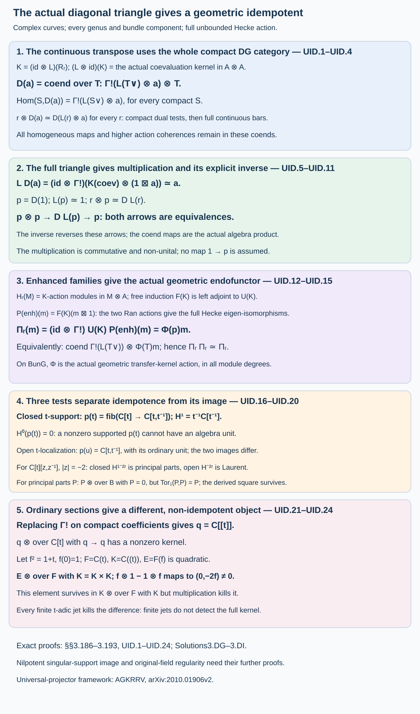
Figure 3.36. The full compact transpose and its module comparison are (UID.1)–(UID.4). The actual coevaluation triangle gives (UID.5)–(UID.9), and the entire coefficient multiplication is (UID.10)–(UID.11). Enhanced eigen-families and their continuous integration give the actual geometric idempotent in (UID.12)–(UID.15). The examples distinguish closed support, open localization, unbounded coefficients and ordinary sections.
3.191. Closed support and open localization are different idempotents
Exercise 3.DG. In the abstract construction take \(\mathcal R=\operatorname{Mod}_B\), \(B=\mathbf C[t]\). Compare the actual formal-disc restriction to \(\mathcal A_t=\mathcal T_t\) with scalar extension to \(\mathcal A_u=\operatorname{Mod}_{B[t^{-1}]}\). Determine their objects \(p\), their action on \(B/(t)\) and \(B[t^{-1}]\), and whether their algebra structures can have a unit.
Solution 3.DG. In the first case \(\mathsf L=\Gamma_t\), and \(\Gamma_!\) is the underlying-module functor of (SDU.8). Formula (UID.3) identifies \(\mathsf D\) with the inclusion of torsion modules into \(\operatorname{Mod}_B\): the finite perfect dual Hom of a compact source is exactly that formula. The diagonal hypothesis is also the actual one in these examples. In the closed case the two torsion projectors act on the diagonal \(B\)-module as \(\Gamma_t\Gamma_t=\Gamma_t\), giving its supported diagonal unit; in the open case the two localizations give the localized diagonal unit. The compact external Hom tests of (SDU.13) identify these with their coevaluation kernels. In the second case the same compact test identifies \(\mathsf D\) with restriction of scalars from \(B[t^{-1}]\). Consequently \[ \begin{gathered} p_t=\operatorname{fib}(B\to B[t^{-1}]),\quad\Pi_t=\Gamma_t,\\ p_u=B[t^{-1}],\quad\Pi_u=(-)[t^{-1}]. \end{gathered} \tag{UID.16} \] The closed object has \(H^1(p_t)=t^{-1}\mathbf C[t^{-1}]\) and no other cohomology, while the open object is in degree zero. Therefore \[ \operatorname{Hom}_{D(B)}(B,p_t)=H^0(p_t)=0, \qquad p_t\ne0. \tag{UID.17} \] Every putative unit of its algebra would be the zero morphism; its unit composite would then be zero, not the identity of \(p_t\). Thus its non-unital structure cannot be made unital with this multiplication. There is also a direct derived-square calculation. Put \(P=t^{-1}\mathbf C[t^{-1}]\). The sequence \(0\to B\to B[t^{-1}]\to P\to0\) is a flat resolution: localization is the exact filtered multiplication colimit of free modules. Tensoring it with \(P\) gives the two-term complex \([P\to0]\), since \(P[t^{-1}]=0\). Hence \(P\otimes_B P=0\) but \(\operatorname{Tor}_1^B(P,P)=P\). Since \(p_t=P[-1]\), its derived square again has \(P\) in cohomological degree one. This explains the nonzero idempotent square without replacing it by an ordinary cohomology tensor. The open object's multiplication has the ordinary unit \(B\to B[t^{-1}]\). For every unbounded module the original localization-fibre triangle is \[ \begin{gathered} \Pi_tM\longrightarrow M\longrightarrow\Pi_uM,\\ \Pi_t(B/t)=B/t,\quad\Pi_u(B/t)=0,\\ \Pi_t(B[t^{-1}])=0,\quad\Pi_u(B[t^{-1}])=B[t^{-1}]. \end{gathered} \tag{UID.18} \] The triangle follows by tensoring the actual defining fibre of \(p_t\). These examples give different images and different unit behavior even though both multiplication maps are equivalences.
3.192. A coefficient complex unbounded in both directions
Exercise 3.DH. Keep the two idempotents above and take \(M=B[z,z^{-1}]\), with \(|z|=-2\) and zero differential. Compute their entire cohomology and the maps in (UID.18).
Solution 3.DH. As a \(B\)-complex this is the direct sum of its free shifted copies \(Bz^r\), for every \(r\in\mathbf Z\). Both functors are continuous, so the localization-fibre calculation on each copy gives \[ \begin{gathered} H^{1-2r}(\Pi_tM) =t^{-1}\mathbf C[t^{-1}]\,z^r,\\ H^{-2r}(\Pi_uM)=\mathbf C[t,t^{-1}]\,z^r, \qquad r\in\mathbf Z, \end{gathered} \tag{UID.19} \] and zero in the respective other parity. There is exactly one contributing summand in each displayed degree. The complete cohomology sequence of the fibre triangle is, for every integer \(r\), \[ 0\longrightarrow\mathbf C[t]z^r \longrightarrow\mathbf C[t,t^{-1}]z^r \longrightarrow t^{-1}\mathbf C[t^{-1}]z^r \longrightarrow0. \tag{UID.20} \] The second arrow is localization; the third takes the negative Laurent part. This proves the boundary map and every degree of both idempotents without truncating \(M\). Neither a bounded-above nor a bounded-below replacement gives this example.
3.193. Ordinary sections do not give the same multiplication
Exercise 3.DI. For the formal-disc target replace \(\Gamma_!\) by ordinary sections only in the compact coefficient formula for \(p\). Determine the resulting object \(q\). Is its multiplication \(q\otimes_B^Lq\to q\) an equivalence?
Solution 3.DI. For a compact perfect \(T\) over \(B\), ordinary sections of \(\mathsf L(T^\vee)=\Gamma_tT^\vee\) are the complete module \(T^\vee\otimes_B\widehat B\), where \(\widehat B=\mathbf C[[t]]\). Finite perfectness commutes with the actual inverse completion limit, as (KTC.17)–(KTC.21) show. Thus the full compact Yoneda coend gives \[ q=\int^{T\in\operatorname{Perf}(B)} \operatorname{RHom}_B(T,\widehat B)\otimes_{\mathbf C}T \simeq\widehat B. \tag{UID.21} \] The ordinary section tensor maps give its usual multiplication. We will prove that even its degree-zero comparison \[ \widehat B\otimes_B\widehat B\longrightarrow\widehat B \tag{UID.22} \] has a nonzero kernel. This suffices: for ordinary algebras the degree-zero cohomology of the derived tensor is the ordinary tensor, by its nonpositive free resolution, so a derived equivalence would make (UID.22) an isomorphism.
There is a formal power series \(f\in\widehat B\), with constant term one, satisfying \(f^2=1+t\). To construct it, set its constant coefficient to one and compare coefficients: at every positive degree the next coefficient has coefficient two and is determined by the earlier ones. Put \[ F=\mathbf C(t),\qquad K=\mathbf C((t)),\qquad E=F(f). \tag{UID.23} \] The element \(f\) is not in \(F\). A rational square has an even order at \(t=-1\), as is seen by writing coprime numerator and denominator polynomials and comparing powers of \(t+1\); the order of \(1+t\) is one. Thus \(E/F\) is quadratic. Since \(f\in K\) and \(2f\) is invertible there, the two factors of its minimal polynomial are coprime over \(K\), and explicit Chinese remainders give \[ \begin{gathered} E\otimes_FK\simeq K[x]/((x-f)(x+f))\simeq K\times K,\\ f\otimes1-1\otimes f\longmapsto(0,-2f)\ne0. \end{gathered} \tag{UID.24} \] The two evaluation maps have inverse idempotents \((1+x/f)/2\) and \((1-x/f)/2\), which proves this decomposition directly. The inclusion \(E\hookrightarrow K\) remains injective after tensoring over the field \(F\); choose a vector-space basis extending one of the subspace to verify that exactness. Hence the displayed element is also nonzero in \(K\otimes_FK\). The natural map from \(\widehat B\otimes_B\widehat B\) to this tensor sends \(f\otimes1-1\otimes f\) to that nonzero element. It was therefore nonzero already before localization, while multiplication in (UID.22) kills it. This proves the claimed failure. At every finite \(t\)-adic truncation, \(f\) becomes a polynomial from \(B\), so the corresponding tensor difference is zero. Finite-jet comparisons would not detect this nonzero full tensor kernel. Replacing continuous sections by ordinary sections changes the actual object and can destroy its tensor idempotence.
The constructions above give the universal restricted spectral idempotent and its full geometric Hecke realization over the complex numbers. RSE.37–RSE.38 give the spectral-subcategory comparison and full Hecke-lisse image; GFP.55–GFP.56 prove its original-field regularity and nilpotent-support containment. GZR.33 gives equality with all independently nilpotent-supported objects over the complex numbers in every genus. The other geometric ground fields retain their requirements. The corresponding abstract eigen-object and universal-projector framework is discussed in AGKRRV, The stack of local systems with restricted variation and geometric Langlands theory with nilpotent singular support, “Spectral projector and Hecke eigen-objects.”
3.194. A local vanishing test for perfect modules
Use cohomological degrees, so a connective algebra has cohomology in degrees at most zero. Let \(A\) be a connective commutative complex DG algebra with \(R=H^0(A)\) Noetherian and each \(H^{-i}(A)\) finite over \(R\). A perfect module has a finite upper cohomological bound and finite cohomology modules in every degree. Indeed it is a retract of a finite cell module; shifts, finite cones and retracts preserve those properties. The kernel and image finiteness used here is Proposition 1.2 of Noetherian and Artinian rings. The same argument applies to its perfect dual and their tensor product.
If \(M\) has no cohomology above degree \(n\), and \(k\) is a residue field of \(R\), the actual scalar bar gives \[ H^n(M\otimes_A^Lk)=H^n(M)\otimes_Rk. \tag{BLI.1} \] To see the top degree directly, shift to \(n=0\) and use a nonpositive semifree module resolution, constructed by adding generators to hit cycles and kill kernels as in §3.158. After tensoring with \(k\), the degree-zero cokernel is exactly the ordinary tensor of its degree-zero cohomology. All other generators and normalized bar directions have lower degree, so contribute no additional degree-zero term. This proves the displayed comparison without a lower cohomological bound.
Let \(P\) be perfect and let \(x\) be a closed point with residue field \(k\). If \(P\otimes_A^Lk=0\), put \(C=\operatorname{RHom}_A(P,P)=P^\vee\otimes_A^LP\). It is perfect, upper bounded and has finite cohomology modules, and \(C\otimes_A^Lk=0\). Localize at \(x\), and choose an upper bound \(n\geq0\). Equation (BLI.1) and ordinary Nakayama imply \(H^n(C)_x=0\). Repeat down to degree zero. This is a finite descent, regardless of how many negative cohomology groups there are. For the Nakayama step, finite generators of a module \(N=\mathfrak mN\) give a matrix \(U\) with entries in \(\mathfrak m\) and \((1-U)N=0\); its adjugate shows that \(\det(1-U)\), a unit, annihilates every generator. Thus \(N=0\).
In particular the identity of \(P\) is zero after localization. Localization of its degree-zero Hom complex is localization of \(H^0(C)\), by finite perfect duality. Hence some \(f\in R\), nonzero at \(x\), kills that identity. After localizing at \(f\), the identity is nullhomotopic, which contracts the entire module. We have proved \[ P\otimes_A^Lk(x)=0 \quad\Longrightarrow\quad P[f^{-1}]=0\text{ for some }f(x)\ne0. \tag{BLI.2} \] Only the perfect module's identity has been localized. No intersection of infinitely many cohomological vanishing neighbourhoods is taken.
3.195. The first relative difference and the cotangent complex
We need an equivalence criterion for connective algebras. Suppose \(B\to A\) induces an isomorphism on \(H^0\), and write \(C\) for its cofibre as a \(B\)-module. If it is nonzero, choose the first degree \(-n\), \(n\geq1\), in which \(C\) has nonzero cohomology. The relative semifree construction of §3.158 can then start with cells of degree \(-n\): these hit the first missing classes and kill the first kernel classes one degree higher. There are no relative cells in higher degrees. Continuing by kernel-killing and cycle generators gives a relative semifree algebra \(Q\to A\) over \(B\).
Modulo \(B\), the first cohomology of \(Q/B\) consists of the linear first-cell classes over \(H^0(B)\), modulo the relations from the next cells. The same is true of \(\Omega^1_{Q/B}\otimes_QA\). Products of two new generators have degree at most \(-2n\); their differentials cannot affect that first degree when \(n>1\). When \(n=1\), the first generators can be chosen closed because the map on \(H^0\) is an isomorphism, so those product differentials are zero in degree minus one as well. A coefficient boundary imposes the same relation over \(H^0(B)\) in both complexes. The remaining degree-\(-n\) relations are exactly the linear differentials of the degree-\(-n-1\) cells. Since \(H^0(B)=H^0(A)\), this proves the actual first-degree identity \[ H^{-n}(L_{A/B})=H^{-n}(C)\ne0. \tag{BLI.3} \] This argument uses the full relative free model; it does not assert a formula in all subsequent degrees. It proves the needed criterion \[ H^0(B)\xrightarrow{\sim}H^0(A),\quad L_{A/B}=0 \quad\Longrightarrow\quad B\xrightarrow{\sim}A. \tag{BLI.4} \] Indeed otherwise the first nonzero cofibre degree just constructed would contradict the vanishing of the relative cotangent complex. A nonzero bounded-above complex always has such a first degree, even if it is unbounded below.
3.196. A finite local Koszul model from the cotangent bound
Suppose now that \[ \begin{gathered} H^0(A)\text{ is finite type over }\mathbf C,\\ H^{-i}(A)\text{ is finite over }H^0(A),\\ L_{A/\mathbf C}\text{ is perfect of Tor amplitude }[-1,0]. \end{gathered} \tag{BLI.5} \] Fix a closed point \(x\); its residue field is \(\mathbf C\), by the complete Zariski-lemma and Nullstellensatz proof in The Nullstellensatz and Jacobson rings, §1. Choose a finite polynomial algebra \(P=\mathbf C[x_1,\ldots,x_d]\to A\) surjective on \(H^0\). Its ordinary kernel ideal is finite by Theorem 2.1 of the Noetherian lesson cited above. Add finitely many degree-minus-one generators whose differentials generate that ideal, and finitely many closed degree-minus-one generators mapping onto generators of \(H^{-1}(A)\). The resulting map is an isomorphism on \(H^0\) and a surjection on \(H^{-1}\). The remaining relative semifree resolution therefore adds generators only in degrees at most minus two. We obtain \[ Q=P[\eta_1,\ldots,\eta_m,\text{ lower-degree cells}]\xrightarrow{\sim}A, \qquad |\eta_j|=-1,\quad d\eta_j=f_j\in P. \tag{BLI.6} \] The \(m\) displayed generators are finite; the lower part need not be finite. Every degree-minus-two generator \(z_\ell\) has differential \(\sum_j a_{\ell j}(x)\eta_j\), because there are no positive generators. Its differential squared is the literal polynomial syzygy \[ \sum_j a_{\ell j}(x)f_j=0. \tag{BLI.7} \] Tensor the free cotangent complex with the residue field at the chosen point. Its degree-minus-one vector space is \(W=\bigoplus_j\mathbf C\eta_j\), and let \(J\subset W\) be the image of its degree-minus-two differential. Only finitely many of the \(z_\ell\) are needed to span that image. Choose a constant change of basis \(W=U\oplus J\). Both summands consist of actual constant linear combinations of the generators. Since \(J\) maps to zero in degree zero, the two-term complex \[ [\,U\longrightarrow\mathbf C^d\,] \longrightarrow L_{A/\mathbf C}\otimes_A^Lk(x) \tag{BLI.8} \] is a quasi-isomorphism. Its degree-zero cokernel and degree-minus-one kernel are the same as those of the full cotangent complex; every lower target cohomology vanishes by (BLI.5).
Choose finitely many degree-minus-two generators whose image vectors are a basis of \(J\). Their coefficient matrix in the \(J\)-columns has invertible determinant at \(x\). Localize \(P\) at that determinant. The syzygies (BLI.7) solve the differentials belonging to the discarded \(J\)-generators as combinations of the differentials belonging to \(U\). Thus those selected differentials still generate the whole ordinary kernel ideal on this neighbourhood. Put \(B=P_{\Delta}[U]\), with the selected differentials; its map to \(A[\Delta^{-1}]\) is an isomorphism on \(H^0\). Its relative cotangent complex is perfect, by the transitivity triangle and the two perfect absolute cotangent complexes. Equation (BLI.8) makes its residue fibre zero. Apply (BLI.2) to that relative cotangent module and shrink once more. The relative cotangent module is now zero, so (BLI.4) proves \[ A[f^{-1}]\simeq P'[\epsilon_1,\ldots,\epsilon_r], \qquad |\epsilon_i|=-1,\quad d\epsilon_i=g_i\in P', \tag{BLI.9} \] where \(f(x)\ne0\) and \(P'\) is a localization of the finite polynomial algebra. This is a quasi-isomorphism of actual algebras. Odd generators are exterior in characteristic zero. No regular-sequence condition on the \(g_i\) is asserted or required.
3.197. Boundedness of the actual restricted affine stages
The underlying module of (BLI.9) has only the finitely many exterior degrees \(0,-1,\ldots,-r\). It has no cohomology below \(-r\). Apply that construction at all closed points of \(\operatorname{Spec}H^0(A)\). These principal opens cover the whole spectrum: a nonempty closed complement in a finite-type complex algebra has a closed complex point, by the same Nullstellensatz. Quasi-compactness gives a finite subcover. Taking the largest of its finitely many exterior lengths yields \[ H^j(A)=0\qquad(j<-N_A) \quad\text{for one finite }N_A. \tag{BLI.10} \] Localization commutes with cohomology, so this conclusion follows from the displayed finite cover. If \(H^0(A)=0\), the unit is a boundary and multiplication by a primitive of it contracts \(A\); the conclusion is immediate in that case. This also handles the empty affine stage.
Every actual restricted power stage \(A_{E,n}=B_{E,n}\) satisfies (BLI.5). Its ordinary and higher finiteness are (RBC.25), and the actual cotangent triangle immediately following that equation proves its perfect Tor amplitude \([-1,0]\) at the universal point. Consequently \[ H^j(A_{E,n})=0\qquad (j<-N_{E,n}\text{ or }j>0) \tag{BLI.11} \] for a finite bound depending on that stage. The proof does not demand a bound uniform in all stages. The same applies to each frame-action-nerve affine: \[ A_{E,n}\otimes_{\mathbf C}\mathcal O(H)^{\otimes s} \text{ has cohomology in }[-N_{E,n},0]. \tag{BLI.12} \] Indeed the extra algebra is ordinary and flat over the coefficient field, so its tensor computes these same cohomology groups tensored with that algebra. All the affine targets needed below are thus cohomologically bounded, even when their chosen semifree chain models have generators in arbitrarily negative degrees.
3.198. Bounded affine presentations and coefficient limits
Let \(\mathcal C_b\) be the full category of cohomologically bounded derived affines equipped with maps to the actual framed restricted functor. The full effectivity proof of (RBC.22) works using this subcategory: \[ \operatorname*{colim}_{T\in\mathcal C_b}T \xrightarrow{\sim}\mathcal Y^{\mathrm{restr}}. \tag{BLI.13} \] Here is why the restriction of the index is legitimate. Every restricted affine point, including a point with unbounded connective coefficients, factors through a power stage by (RBC.17) and (RBC.21). That stage is now bounded by (BLI.11). Any finite collection of affine lifts is contained in a common completion after enlarging the coefficient coalgebra. The full finite-limit and cone argument (RBC.19)–(RBC.20) then puts their maps and any finite coherent homotopies into a common power stage. These target cones are bounded by (BLI.11); they do not require the source affines to be bounded. Thus finite diagrams in \(\mathcal C_b\) have those same coherent cones. Over a fixed test point the lift category is nonempty, joins any two components, and contracts every finite sphere of lift choices. Its fibre colimit is contractible. The actual pointwise colimit and finite-limit argument of (RBC.22) consequently gives (BLI.13) on every connective DG test algebra and every higher mapping space.
Write \(\mathscr I=\mathscr I_X\) and \(\mathscr Q=\mathscr Q_X\). Both are compactly generated: the first is the ind-category of the full bounded finite-connection DG category, and the second is either the same category or the full Hopf module category (RSC.14), (RSC.24). The module-category dual and diagonal bar contractions (SUL.22)–(SUL.23) apply to every compactly generated DG category, so both are dualizable. Tensoring by a dualizable category \(\mathscr J\) has both adjoints given by tensoring with \(\mathscr J^\vee\); their triangles are those diagonal bar contractions. It therefore preserves limits, as well as colimits. In particular \[ \mathscr J\otimes\operatorname{QCoh}(\mathcal Y^{\mathrm{restr}}) \simeq\lim_{T\in\mathcal C_b^{\mathrm{op}}} \mathscr J\otimes\operatorname{QCoh}(T), \qquad\mathscr J=\mathscr I,\mathscr Q. \tag{BLI.14} \] Quasicoherent sheaves take the actual prestack colimit to this limit by their affine-point definition. Tensoring by \(\operatorname{Mod}_A\) identifies \(\mathscr J\otimes\operatorname{Mod}_A\) with internal \(A\)-modules: on a compact-generator model these are modules over the generator DG category with commuting \(A\)-action, and the free action bars prove the comparison on all objects. This proves the coefficient interpretation used in (BLI.14).
Apply the same argument to the whole \(H\)-frame-action nerve. Products of bounded stages with \(H^s\) are bounded by (BLI.12). On every nerve level the preceding bounded-affine presentation and coefficient comparison are actual ones, and all their faces and degeneracies are the original frame maps. Full torsor descent (RBC.23) and limit preservation therefore give \[ \mathscr J\otimes\mathcal A \simeq\lim_{[s]\in\Delta} \mathscr J\otimes \operatorname{QCoh}(\mathcal Y^{\mathrm{restr}}\times H^s). \tag{BLI.15} \] No assertion that ind-completion commutes with a limit is used. The limit-preserving functor is tensor by the already constructed dualizable category \(\mathscr J\); \(\mathscr I\) itself need not be left-complete.
3.199. Universal coefficients in the ind-connection category
The normalized finite representation \(V\) has its universal coefficient object in \(\mathcal A\otimes\mathscr Q\), by (RSP.1) and the affine-point coefficient limit just proved. At a bounded stage the same object lies in the fully faithful internal category \(\operatorname{Mod}_{A_{E,n}}(\mathscr I)\), by (RSP.11). The assertion also holds on all frame-nerve bounded stages by (BLI.12). All transition, representation, tensor and symmetry maps lift through the full inclusion. Their entire spaces of lifts over the specified maps are contractible: this is exactly full faithfulness, not a choice of ordinary cohomology identifications. Thus the coherent diagrams descend by (BLI.14)–(BLI.15) to \[ \mathcal E_V\in\mathcal A\otimes\mathscr I_X, \qquad \mathcal E:\operatorname{Rep}(H) \longrightarrow\mathcal A\otimes\mathscr I_X. \tag{BLI.16} \] The functor is continuous and symmetric monoidal: construct its maps first on finite representations, where they are the uniquely lifted maps, and then extend by the full representation generator bars of §3.104. These bars also retain every transformation and higher path.
At every bounded stage, the normalized operator image of \(\mathcal E_V\) is the original universal flat-bundle coefficient, by (RSP.11), (RSC.2) and (RDI.14). The full operator category on the proper curve is also compactly generated and dualizable, so its tensor likewise preserves these coefficient limits. Hence this equality descends to the actual global operator coefficient. We have identified these universal coefficients, without asserting an embedding of every object of the completed category into the operator category.
Pull (BLI.16) back along an arbitrary affine restricted point. It supplies an ind-target lift of the whole normalized tensor functor, including its internal scalar action and every higher map. The inclusion of internal module categories is fully faithful for every \(A\): its action diagrams and their mapping spaces are the same full diagrams in \(\mathscr I\) and \(\mathscr Q\), and tensor by a scalar complex stays in the continuous ind-category. Thus \[ \begin{gathered} \operatorname{Fun}^{\mathrm L,\otimes,\mathrm{rt}} (\operatorname{Rep}(H),\operatorname{Mod}_A(\mathscr I_X))^\simeq\\ \xrightarrow{\sim} \operatorname{Fun}^{\mathrm L,\otimes,\mathrm{rt}} (\operatorname{Rep}(H),\operatorname{Mod}_A(\mathscr Q_X))^\simeq, \qquad A\text{ connective}. \end{gathered} \tag{BLI.17} \] Right t-exactness is unchanged, since the full inclusion has the same detected cohomology on its objects. The source maps to the right by the original inclusion, and the universal lift proves essential surjectivity. Full action-diagram faithfulness proves the mapping-space assertion. This is a comparison of normalized tensor functors and their finite projective coefficient values. It is not the false whole-category assertion \[ \operatorname{Mod}_A(\mathscr I_X) =\operatorname{Mod}_A(\mathscr Q_X) \quad\text{for all objects}. \tag{BLI.18} \] The projective-line example below keeps that distinction with unbounded scalar parameters.
3.200. Recovering the full parameterized Hecke comparison
Let \(\mathcal D_X=\operatorname{Dmod}(X)\), and write \(\iota_X:\mathscr I_X\hookrightarrow\mathcal D_X\) for the full continuous normalized embedding (RSC.3). It sends the normalized connection unit to \(\omega_X\). Use the actual evaluation and coevaluation of (SDG.1)–(SDG.3): evaluation is proper image of \(!\)-tensor, and coevaluation is \(\Delta_*\omega_X\). Their two triangles give, for any DG category \(\mathcal W\), the full coefficient-kernel comparison \[ \mathcal W\otimes\mathcal D_X \xrightarrow{\sim} \operatorname{Fun}^{\mathrm L}(\mathcal D_X,\mathcal W), \quad Z\longmapsto\bigl[N\longmapsto (\operatorname{Id}_{\mathcal W}\otimes p_{X,*}) (Z\otimes^!N)\bigr]. \tag{BLI.19} \] An inverse tensors the functor with the actual coevaluation and then evaluates its first factor. Expanding the two composites inserts \(\Delta_*\omega_X\), and the actual two kernel triangles of §3.72 contract them to the identity. This proves both essential surjectivity and the full mapping-complex comparison. In particular the test modules are all full D-modules; restricting them to holonomic parameter modules would not give this assertion. The constant kernel \(\Delta_*\mathbf C_X\) would have the erroneous shift of Solution 3.BI and is not used.
Let \(F\in\mathcal H_{\mathrm r}(\mathcal M)\), and put \(n=U_KF\). For the inserted Ran object with representation \(V\) and an arbitrary parameter \(N\in\mathcal D_X\), (UID.13) is the comparison between the proper parameter integrals of \(\mathrm H_V(n)\) and of \(n\otimes_{\mathcal A}(\operatorname{Id}_{\mathcal A}\otimes\iota_X)\mathcal E_V\). Here \(\mathrm H_V\) is the unintegrated geometric Hecke functor of (RA.13), with its same normalization. The coefficient side is exactly the universal one by §3.199 and (SPC.4)–(SPC.9). Those comparisons are natural for the whole DG category of \(N\)'s, by the full Ran module structure. Apply (BLI.19) with \(\mathcal W=\mathcal M\otimes\mathcal A\). It recovers the actual unintegrated comparison \[ \mathrm H_V(n) \xrightarrow{\sim} n\otimes_{\mathcal A} (\operatorname{Id}_{\mathcal A}\otimes\iota_X)\mathcal E_V. \tag{BLI.20} \] Its tensor, unit, collision and higher relations are recovered too, since (BLI.19) is fully faithful on transformation spaces. For a finite set \(I\), repeat the argument using the external product kernel and the finite proper Fubini comparison (SPC.8)–(SPC.9). This gives \[ \mathrm H_{\vec V}(n) \simeq n\otimes_{\mathcal A}\mathcal E^I_{\vec V}, \qquad \mathcal E^I_{\vec V} \in\mathcal A\otimes\mathscr I_X^{\otimes I}, \tag{BLI.21} \] with the normalized operator embedding understood. External coefficients followed by multiplication in the common \(\mathcal A\)-factor construct \(\mathcal E^I\). All finite-set transition comparisons are those of the original universal tensor functor. This proves an actual parameterized eigen-family statement, rather than only its integrated or pointwise version.
3.201. The idempotent has an actual Hecke-lisse image
Take \(n=U_KP^{\mathrm{enh}}(m)\) in the preceding formula. The right side of (BLI.20) is the image of an object of \(\mathcal M\otimes\mathcal A\otimes\mathscr I_X\). Apply continuous \(\Gamma_!\) in the coefficient factor. It commutes with the independent first-factor Hecke functor by the same tensor and action bars used in (UID.14). Thus \[ \mathrm H_V(\Pi_{\mathrm r}m) \simeq(\operatorname{Id}_{\mathcal M}\otimes\Gamma_! \otimes\operatorname{Id}_{\mathscr I_X}) (n\otimes_{\mathcal A}\mathcal E_V) \in\mathcal M\otimes\mathscr I_X. \tag{BLI.22} \] The membership means the actual image under the normalized operator embedding. That embedding stays fully faithful after tensoring with the compactly generated \(\mathcal M\). Indeed the generator duality of (SUL.22) identifies tensoring with \(\mathcal M\) with the continuous functor category out of \(\mathcal M^\vee\); postcomposition with a fully faithful functor is fully faithful on all transformation complexes. For several coordinates, external compact connection complexes have the full tensor Hom comparison by the finite Spencer–Čech product proof (SPC.8). Their compact operator images and the full multi-object bars give the corresponding fully faithful embedding into \(\operatorname{Dmod}(X^I)\). Applying (BLI.21) therefore yields the entire compatible system \[ \mathrm H_{\vec V}(\Pi_{\mathrm r}m) \in\mathcal M\otimes\mathscr I_X^{\otimes I} \subset\mathcal M\otimes\operatorname{Dmod}(X^I). \tag{BLI.23} \] This gives Hecke-lisse membership for the actual geometric idempotent over the complex numbers, on all the unbounded inputs and bundle components of (RA.17). The implication from this categorical membership to nilpotent singular support requires the full Hecke-lisse support criterion at this same scope.
A full-image criterion takes the following conditional form. Let \(\mathcal N\subset\mathcal M\) be a full subcategory preserved by the Ran action. Suppose that action on \(\mathcal N\) factors through a continuous unital \(\mathcal A\)-action \(\Psi\), and suppose the actual functor \(\Pi_{\mathrm r}\) lands in \(\mathcal N\). Then \[ \Pi_{\mathrm r}|_{\mathcal N} =\Psi(\mathsf L(p)) \xrightarrow[\theta_{\mathbf1}]{\sim}\Psi(\mathbf1) \simeq\operatorname{Id}_{\mathcal N}. \tag{BLI.24} \] Both comparisons are the actual module natural maps from (UID.6) and the unit action, so hold on all morphisms and higher comparisons. The landing assumption contains the full essential image in \(\mathcal N\); the displayed identity puts every object of \(\mathcal N\) in that image. Hence the full image subcategory equals \(\mathcal N\). Applying this conclusion to nilpotent singular support requires proofs of those two geometric assumptions; neither is assumed here. In particular no stronger singular-support-only criterion for arbitrary D-modules is being asserted. For the distinction between categorical Hecke-lisse membership and a condition only on relative singular support, see The stack of local systems with restricted variation and geometric Langlands theory with nilpotent singular support, §14.1. The nilpotent singular-support and regularity conclusions are outside (BLI.23).
![Finite local cotangent cancellation gives bounded exterior models for the actual restricted affine stages. Coherent bounded-stage descent lifts the universal coefficients into the ind-connection category. Full D-module kernel duality recovers the parameterized Hecke comparison, and continuous coefficient integration puts the actual idempotent image in the Hecke-lisse category. A projective-line completion example distinguishes this conclusion from an equality of the entire coefficient categories.](figures/bounded-charts-lisse-image.svg)
Figure 3.37. The local models and stage bounds are (BLI.2)–(BLI.12); full coefficient descent is (BLI.13)–(BLI.17). The actual kernel and Hecke comparisons are (BLI.19)–(BLI.23). The nilpotent-image reduction (BLI.24) has two additional geometric hypotheses. Solutions 3.DJ–3.DL give the local cancellation, an unbounded finite-projective coefficient and an object outside the ind-category.
3.202. Even resolution variables and bounded cohomology
Exercise 3.DJ. Consider the free graded-commutative algebra \[ \begin{gathered} A=\mathbf C[x,\eta,\theta,b],\qquad |x|=0,\quad |\eta|=|\theta|=-1,\quad |b|=-2,\\ d\eta=d\theta=x^2,\qquad db=\theta-\eta. \end{gathered} \tag{BLI.25} \] Compute its cohomology and the cotangent fibre at the point \(x=0\). Give an actual contraction for the apparently unbounded resolution direction. Compare with the differential-zero algebra on \(x,\eta\).
Solution 3.DJ. Put \(\zeta=\theta-\eta\). Then \(d\zeta=0\), and the algebra is the tensor product of \((\mathbf C[x,\eta],d\eta=x^2)\) and \((\mathbf C[b]\otimes\Lambda(\zeta),db=\zeta)\). In the second factor define a degree-minus-one homotopy by \[ h(b^n\zeta)=\frac{b^{n+1}}{n+1},\qquad h(b^n)=0 \quad(n\geq0),\qquad dh+hd=\operatorname{Id}-\text{constant projection}. \tag{BLI.26} \] Indeed \(d(b^{n+1})=(n+1)b^n\zeta\), while \(d(b^n\zeta)=0\); these identities prove the homotopy separately on the two displayed bases, including the constant. On the tensor product use \(h(c\otimes u)=(-1)^{|c|}c\otimes h(u)\), which cancels the cross terms with \(dc\). Projection and inclusion are inverse up to this actual homotopy. Multiplication by \(x^2\) in \(\mathbf C[x]\) is injective, by polynomial coefficients. Consequently \[ A\simeq(\mathbf C[x,\eta],d\eta=x^2),\qquad H^0(A)=\mathbf C[x]/(x^2),\quad H^j(A)=0\ (j\ne0). \tag{BLI.27} \] In the cotangent fibre the derivative of \(x^2\) is zero at \(x=0\), whereas the derivative of \(db\) identifies the \(b\)-direction with \(\theta-\eta\). Those two directions form a contractible pair. The remaining cotangent fibre has one generator in degree zero and one in degree minus one, with zero differential. This is exactly the cancellation in (BLI.8). Thus a polynomial variable in degree minus two in a resolution does not imply unbounded algebra cohomology. For comparison, if \(d\eta=0\), the finite exterior model has \(H^{-1}=\mathbf C[x]\eta\) and no cohomology below minus one; the exterior bound can be sharp.
3.203. A finite-projective coefficient over an unbounded algebra
Exercise 3.DK. Work on \(X=\mathbf P^1\), with \(\mathscr Q_X=\operatorname{Mod}_B\), \(B=T_{\mathbf C}(u)\), \(|u|=-1\), and central element \(v=u^2\). Take \[ \begin{gathered} A=\mathbf C[z]\otimes\Lambda(\alpha,\beta),\qquad |z|=-2,\quad |\alpha|=|\beta|=-1,\quad d=0,\\ P=Ae_1\oplus Ae_2,\qquad u(e_1)=\beta e_2,\quad u(e_2)=\alpha e_1. \end{gathered} \tag{BLI.28} \] The scalar action is graded, so \(u(ae)=(-1)^{|a|}a\,u(e)\). Compute the first powers of \(u\), decide whether \(P\) belongs to \(\operatorname{Mod}_A(\mathscr I_X)\), and explain the role of the unbounded parameter \(z\).
Solution 3.DK. Applying the displayed scalar sign gives \[ u^2(e_1)=\alpha\beta e_1,\qquad u^2(e_2)=-\alpha\beta e_2,\qquad u^3=0,\quad u^2\ne0. \tag{BLI.29} \] For example \(u(\beta e_2)=-\beta\alpha e_1=\alpha\beta e_1\). Every further product contains a repeated odd variable and is zero. These are identities of the actual full \(A\)-linear graded action; the differential is zero, so no action homotopies have been discarded. The module is free of rank two over the unbounded connective algebra \(A\). The variable \(z\) supplies cohomology in arbitrarily negative degrees but does not change these uniform action identities.
More generally, on a free rank-\(n\) module with its generators in degree zero, a degree-minus-one action matrix has at most \(n^2\) odd entries. In a graded-commutative algebra of characteristic zero these entries anticommute and have square zero. If \(J\) is the ideal they generate, every product of \(n^2+1\) generators repeats one of them; moving it next to its repetition proves that product zero. Each matrix coefficient of the same power of \(u\) is such a product. Hence \[ J^{\,n^2+1}=0,\qquad u^{\,n^2+1}=0. \tag{BLI.30} \] This argument applies to an actual strict action on a free module; it does not assert the existence of a strict free presentation for every perfect module.
In our example \(v^2=u^4=0\). The localization telescope therefore vanishes: inverting \(v\) makes a nilpotent endomorphism invertible and forces the identity to be zero. The exact torsion-kernel comparison (RSC.23), with its full scalar action bars, identifies \[ P\in\operatorname{Mod}_A(\mathscr I_X),\qquad P\otimes_B^L B[v^{-1}]=0, \qquad A\text{ not cohomologically bounded}. \tag{BLI.31} \] The original \(A\)-action lifts through the full torsion inclusion because all its operation diagrams do. Thus the assertion concerns the full internal coefficient module, and not just a list of its ordinary cohomology groups. It illustrates why an unbounded scalar algebra by itself is not an obstruction to the ind-target lift of finite-projective coefficients.
3.204. The whole completed category is still larger
Exercise 3.DL. With the same \(B,u,v\), put \(A=\mathbf C[z]\), \(|z|=-2\), \(d=0\). Compare the object and tower \[ L=B[v^{-1}]\otimes_{\mathbf C}A,\qquad L_n=\tau^{\geq-n}L\quad(n\geq0) \tag{BLI.32} \] in the internal completed coefficient category. Explain why their behaviour does not contradict (BLI.17).
Solution 3.DL. The algebra \(B\) is associative; its odd generator need not square to zero. Its \(v\)-localization has nonzero basis elements \(u^j\) for every integer \(j\). Tensoring with the nonzero complex \(A\) is nonzero, so \(L\ne0\). The action of \(v\) is invertible on \(L\), which therefore lies outside the torsion subcategory \(\operatorname{Mod}_A(\mathscr I_X)\).
Every \(L_n\) is bounded below. Since \(v\) has degree minus two, each of its cohomology classes is killed by a sufficiently high power of \(v\). The filtered localization telescope has zero cohomology and is zero. Thus each \(L_n\) belongs to the ind-category, by the same full scalar torsion-kernel comparison. The usual truncation action is an internal \(A\)-action because \(A\) is connective. Completeness of the full DG module category gives \[ L_n\in\operatorname{Mod}_A(\mathscr I_X)\quad\text{for every }n, \qquad \lim_n L_n=L\text{ in }\operatorname{Mod}_A(\mathscr Q_X), \qquad L\notin\operatorname{Mod}_A(\mathscr I_X). \tag{BLI.33} \] One can verify the limit on underlying complexes: in any fixed degree the truncation tower and its maps are eventually identical, and the product-fibre formula for the inverse limit contracts the remaining constant tail. Limits of action diagrams give the same full coefficient action on that limit. This is a non-effective Postnikov tower for the ind-category.
The missing object is not a finite-projective coefficient. Indeed derived scalar extension along the augmentation \(A\to\mathbf C\), \(z\mapsto0\), gives \[ L\otimes_A^L\mathbf C=B[v^{-1}], \qquad H^j(B[v^{-1}])\ne0\quad(j\in\mathbf Z). \tag{BLI.34} \] The tensor identity holds because \(L\) is the tensor of the complex \(B[v^{-1}]\) with the free scalar module \(A\). A finite perfect \(A\)-module becomes a retract of a finite complex of finite-dimensional vector spaces after this scalar extension; its cohomology is bounded. A Tor-amplitude-zero finite-projective module becomes a finite vector space in degree zero. The displayed object is neither. Thus the whole-category failure (BLI.33) is compatible with the normalized finite-projective tensor-functor comparison (BLI.17).
3.205. Presentable DG categories from small relations
We will use a presentation that does not assume transition functors preserve compact objects. Fix an uncountable regular cardinal \(\kappa\). A \(\kappa\)-compact object is one whose full mapping complex preserves \(\kappa\)-filtered colimits. In a full module category over a small DG category, a module with fewer than \(\kappa\) free cells is \(\kappa\)-compact. Indeed a map or homotopy from each cell is a finite system of linear equations, and fewer than \(\kappa\) such systems can be solved at a common stage of a \(\kappa\)-filtered diagram. Equivalently, fewer than \(\kappa\) products and finite mapping fibres commute with those filtered colimits of complexes. The free module bar gives the same assertion for all higher maps and retracts.
Every module is the \(\kappa\)-filtered union of its subresolutions with fewer than \(\kappa\) cells. The differential of each cell involves finitely many earlier cells; closing fewer than \(\kappa\) choices under those dependencies still uses fewer than \(\kappa\) cells. A \(\kappa\)-compact module is a retract of one such subresolution: factor its identity through that filtered union. Thus the \(\kappa\)-compact objects form a small category up to equivalence, closed under colimits with fewer than \(\kappa\) cells and under retracts. Given a set of continuous functors between compactly generated DG categories, we may choose one sufficiently large uncountable regular \(\kappa\) for which every functor preserves these \(\kappa\)-compact objects. To check this, bound the cell sizes of the images of a set of compact generators. Continuity then gives the bound for their fewer-than-\(\kappa\)-cell constructions and retracts.
Here is the small-relations construction used below. Let \(\mathcal E\) be a small DG category, and let \(\mathcal S\) be a set of maps in \(\operatorname{Mod}_{\mathcal E}\). Enlarge \(\kappa\) so that their cofibres \(K_s\) are \(\kappa\)-compact. Call \(M\) local if \(\operatorname{RHom}(K_s,M)=0\) for every \(s\). Starting with \(M_0=M\), form \[ \begin{gathered} M_{\alpha+1}=\operatorname{cofib}\left( \bigoplus_{s\in\mathcal S} K_s\otimes_{\mathbf C}\operatorname{RHom}(K_s,M_\alpha) \xrightarrow{\mathrm{ev}} M_\alpha\right),\\ M_\lambda=\operatorname*{colim}_{\alpha<\lambda}M_\alpha \quad(\lambda\text{ a limit}). \end{gathered} \tag{HLA.1} \] All complexes and evaluation maps here are full DG ones. Every class in a mapping complex from \(K_s\) is killed at the next step. The ordinal \(\kappa\) is \(\kappa\)-filtered, so compactness gives \(\operatorname{RHom}(K_s,M_\kappa)=0\). The fibre of \(M\to M_\kappa\) lies in the stable colimit closure of the \(K_s\). If \(T\) is local, applying \(\operatorname{RHom}(-,T)\) to the successor triangles and the limit colimits gives \[ \operatorname{RHom}(M_\kappa,T) \xrightarrow{\sim}\operatorname{RHom}(M,T). \tag{HLA.2} \] This is natural in both variables, since the entire construction uses evaluation and colimits. It proves that \(Q(M)=M_\kappa\) is left adjoint to the full inclusion of local objects. Colimits in that category are \(Q\) of the ambient colimits. Its inclusion preserves \(\kappa\)-filtered colimits, because the \(K_s\) detect locality and are \(\kappa\)-compact. If \(P\) is ambient \(\kappa\)-compact, the adjunction makes \(Q(P)\) \(\kappa\)-compact in the local category. Every local object is \(Q\) of its ambient \(\kappa\)-filtered presentation and hence is the same filtered colimit of such \(Q(P)\)'s. There are only a set of those objects up to equivalence. This proves accessibility; together with the reflected colimits it proves presentability.
The actual universal property is \[ \operatorname{Fun}^{\mathrm L}(\mathcal E[\mathcal S^{-1}]_{\mathrm{pr}},\mathcal B) \simeq \{F\in\operatorname{Fun}^{\mathrm L} (\operatorname{Mod}_{\mathcal E},\mathcal B):F(K_s)=0\text{ for all }s\}. \tag{HLA.3} \] Here \(\mathcal E[\mathcal S^{-1}]_{\mathrm{pr}}\) denotes that local category, and \(\mathcal B\) is any presentable stable DG category. For the forward implication compose with \(Q\). Conversely, a functor killing every \(K_s\) takes the entire map \(M\to Q(M)\) to an equivalence. Its restriction to the local objects is continuous, since applying it to a reflected ambient colimit has the same result as applying it to the ambient colimit. These two constructions are inverse. Their evaluation maps prove the assertion on full transformation complexes and higher homotopies as well.
In particular one may impose a small set of coherent transition equivalences and specified colimit relations on a small DG category. Use the full strings of the DG Grothendieck construction for transitions, as in (RN.11), and use maps from a formal colimit of representables to its specified representable for colimit relations. Equation (HLA.3) imposes precisely those relations. For a small stable category \(\mathcal K\) already closed under colimits of size less than \(\kappa\) and retracts, this constructs \(\operatorname{Ind}_\kappa(\mathcal K)\). Indeed the representable \(h_k\) is local, since \(\operatorname{RHom}(\operatorname{colim}k_j,k)=\lim_j\operatorname{RHom}(k_j,k)\). The images of representables are \(\kappa\)-compact generators. Every reflected module with fewer than \(\kappa\) cells is represented by the corresponding colimit in \(\mathcal K\), and its retract is represented as well. Thus every local module is a \(\kappa\)-filtered colimit of these representables, with exactly their original full mapping complexes. The same presentation constructs a presentable colimit of a small diagram of compactly generated categories: choose a common \(\kappa\), restrict to their \(\kappa\)-compact objects, and impose all their colimit and transition relations. No compactness of the transition images at the original cardinal is asserted.
3.206. The actual continuous ind-connection coreflector
Put \(\mathcal D=\operatorname{Dmod}(X)\), \(\mathscr I=\mathscr I_X\), and let \(i:\mathscr I\hookrightarrow\mathcal D\) be (RSC.3). Choose a small full DG category \(\mathscr L\) of bounded finite-connection complexes and their retracts. Its objects are compact in \(\mathcal D\), by the proper Spencer–Čech proof of (RSC.2), and \(\mathscr I=\operatorname{Ind}(\mathscr L)\). The full module bar therefore gives a right adjoint \(g\) and the evaluation counit \[ \begin{gathered} g(N)(P)=\operatorname{RHom}_{\mathcal D}(iP,N),\qquad i\dashv g, \qquad gi\simeq\operatorname{Id}_{\mathscr I},\\ p(N)=ig(N) =\int^{P\in\mathscr L} \operatorname{RHom}_{\mathcal D}(iP,N)\otimes iP \xrightarrow{\epsilon_N}N. \end{gathered} \tag{HLA.4} \] The integral is the full DG coend with all its mapping complexes and bar faces. On a representable it contracts by Yoneda; on a general module its augmented free bar proves the adjunction and the formula. Compactness of every \(iP\) shows that \(g\) preserves filtered colimits and direct sums. It is exact, so it preserves all colimits: general colimits of complexes are obtained from sums, cofibres and their simplicial realization. Thus every functor displayed here is continuous.
Let \(q_0\) be the cofibre of this counit. Applying \(g\) to its defining triangle gives zero, since the triangular identity makes \(g(\epsilon_N)\) an equivalence. We obtain actual natural triangles and idempotences \[ \begin{gathered} p\longrightarrow\operatorname{Id}_{\mathcal D}\longrightarrow q_0,\\ p^2\simeq p,\quad q_0^2\simeq q_0,\quad pq_0=q_0p=0,\\ \ker(q_0)=i(\mathscr I). \end{gathered} \tag{HLA.5} \] The last equality follows in both directions from the counit triangle. The image of \(q_0\) is the right orthogonal to all \(iP\), by (HLA.4). This construction is on full unbounded D-modules; it is not a replacement of \(\mathscr I\) by its left completion.
For any presentable \(\mathcal W\), tensor the adjunction and its two triangles by \(\mathcal W\). All its functors are continuous, and the unit remains an equivalence. Consequently \[ \begin{gathered} \operatorname{Id}_{\mathcal W}\otimes i: \mathcal W\otimes\mathscr I\hookrightarrow\mathcal W\otimes\mathcal D \quad\text{is fully faithful},\\ \ker(\operatorname{Id}_{\mathcal W}\otimes q_0) =\mathcal W\otimes\mathscr I. \end{gathered} \tag{HLA.6} \] The kernel equality is again the actual tensored counit triangle. In particular no compact-generation hypothesis on \(\mathcal W\) is needed in this assertion.
3.207. Intersections of the coordinate images
For a finite set \(J\), use the full exterior comparison (RN.9) to identify \(\operatorname{Dmod}(X^J)=\mathcal D^{\otimes J}\). On \(\mathcal W\otimes\mathcal D^{\otimes J}\), let \(p_j\) act as \(p\) in coordinate \(j\) and as the identity in every other factor. Its counit is \(\epsilon_j\). The full tensor interchange gives coherent natural comparisons \[ \begin{gathered} p_jp_k\simeq p_kp_j\quad(j\ne k),\\ \prod_{j\in J}p_j =(\operatorname{Id}_{\mathcal W}\otimes i^{\otimes J}) (\operatorname{Id}_{\mathcal W}\otimes g^{\otimes J}). \end{gathered} \tag{HLA.7} \] The two counits commute under these comparisons: on an exterior object they are evaluation in independent factors, and the full exterior bar extends that equality to every object and mapping complex. The same argument for any ordering or permutation proves all higher comparisons, including those of three or more factors.
The right side of (HLA.7) is a coreflector onto the full image \(\mathcal W\otimes\mathscr I^{\otimes J}\). Thus \[ \bigcap_{j\in J} \bigl(\mathcal W\otimes\mathcal D^{\otimes(J\setminus\{j\})} \otimes\mathscr I\bigr) =\mathcal W\otimes\mathscr I^{\otimes J} \tag{HLA.8} \] as full subcategories of the same operator category, with the coordinate factors placed in their indicated positions. Indeed membership in the \(j\)-th image says precisely that \(\epsilon_j(Z)\) is an equivalence. If all these maps are equivalences, their commuting composite is an equivalence from \((\prod_jp_j)Z\) to \(Z\). This puts \(Z\) in the right side. Conversely \(gi=\operatorname{Id}\) makes every coordinate counit an equivalence on that right side. This proof retains actual maps and all their coherences.
For the empty set the product is the identity and both sides mean \(\mathcal W\). For two coordinates the criterion can also be written \[ (q_0\otimes\operatorname{Id})Z=0 =(\operatorname{Id}\otimes q_0)Z \quad\Longleftrightarrow\quad Z\in\mathscr I\otimes\mathscr I, \tag{HLA.9} \] with an arbitrary independent \(\mathcal W\)-factor understood. Commutation of the actual coreflectors is what makes this implication valid; arbitrary idempotent functors would not suffice.
3.208. Presentability of a full simultaneous kernel
We use the following concrete kernel lemma. Let \(\mathcal M\) and \(\mathcal B_a\) be compactly generated DG categories, let \(a\) range over a set, and let \(F_a:\mathcal M\to\mathcal B_a\) be continuous. Then \[ \mathcal N=\{m:F_a(m)=0\text{ for every }a\} \subset\mathcal M \tag{HLA.10} \] is a full presentable stable subcategory, with its colimits computed in \(\mathcal M\). Choose \(\kappa\) larger than the index set and the cell bounds for every image of a compact generator under every \(F_a\), as in §3.205. The product \(\mathcal B=\prod_a\mathcal B_a\) is compactly generated by generators in one coordinate at a time: their sums generate every tuple, with colimits computed coordinatewise. The combined continuous functor \(F:\mathcal M\to\mathcal B\) preserves \(\kappa\)-compact objects by this choice.
Write any \(m\in\ker F\) as the \(\kappa\)-filtered colimit of \(\kappa\)-compact approximations \(c_i\). Given \(c_i\to m\), compactness of \(F(c_i)\) and \(F(m)=0\) give a later stage \(c_j\) at which the image transition \(F(c_i)\to F(c_j)\) is nullhomotopic. Repeat with \(c_j\), and take the colimit of the resulting countable chain. The result \(n\) remains \(\kappa\)-compact, because \(\kappa\) is uncountable. Each transition in the image chain is nullhomotopic, so its filtered cohomology colimit is zero in every degree. Thus \[ c_i\longrightarrow n\longrightarrow m, \qquad n\in\mathcal N\cap\mathcal M^\kappa. \tag{HLA.11} \] The chain and its cone to \(m\) are taken in the original coherent approximation diagram. Nullhomotopies are used to prove its image colimit zero, not to discard the scalar or DG actions of that chain.
This also supplies every required coherent cone. For a diagram of size less than \(\kappa\) in the factorization problem under a fixed \(c_i\to m\), take its colimit in the undercategory of \(c_i\). Concretely, amalgamate the repeated copies of \(c_i\) in the diagram colimit by their common map from \(c_i\); this is a pushout of colimits of size less than \(\kappa\). It stays in \(\mathcal M^\kappa\) and retains the specified cone to \(m\). Apply the same countable-chain construction to that object. Its result is a cone in \(\mathcal N\cap\mathcal M^\kappa\), under the original fixed map. The factorization category is therefore nonempty and \(\kappa\)-filtered. Its space of choices contracts every finite sphere. The full colimit bar consequently shows \[ m=\operatorname*{colim}_{\substack{n\to m\\n\in\mathcal N\cap\mathcal M^\kappa}}n, \qquad \mathcal N\simeq\operatorname{Ind}_\kappa (\mathcal N\cap\mathcal M^\kappa). \tag{HLA.12} \] For clarity, the last small category is closed under colimits of size less than \(\kappa\) and retracts: \(F\) preserves those colimits, while such constructions preserve ambient \(\kappa\)-compactness. Its objects are also \(\kappa\)-compact in \(\mathcal N\), since the inclusion preserves colimits and is full. The small-relations presentation of §3.205 makes the displayed completion presentable. The augmentation just proved identifies it with the actual full kernel, including its mapping complexes. This proves the lemma without asserting that this kernel is compactly generated at the original cardinal.
Tensor by a dualizable category preserves this kernel description. Its dual supplies both adjoints, so it preserves limits. The kernel is the actual pullback of \(F:\mathcal M\to\prod_a\mathcal B_a\) along the zero category; its objects have the contractible choice of an equivalence \(F(m)\simeq0\), hence form the full subcategory in (HLA.10). Tensoring the pullback and product therefore identifies \(\mathcal N\otimes\mathcal J\) with the simultaneous kernel of \(F_a\otimes\operatorname{Id}_{\mathcal J}\). Full faithfulness of the tensored inclusion also follows from \(\mathcal J\otimes-\simeq\operatorname{Fun}^{\mathrm L}(\mathcal J^\vee,-)\): postcomposition with a full inclusion is fully faithful on entire transformation complexes.
3.209. The full Hecke-lisse subcategory and every coordinate
Let \(\mathcal M\) be either full automorphic category in (RA.17). Choose a small skeleton of finite algebraic representations of \(H\), and use the actual unintegrated Hecke functors \(\mathrm H_V:\mathcal M\to\mathcal M\otimes\mathcal D\). Define \[ \begin{gathered} F_V=(\operatorname{Id}_{\mathcal M}\otimes q_0)\mathrm H_V,\\ \mathcal M^{\mathrm{Hl}} =\bigcap_V\ker F_V =\{m:\mathrm H_V(m)\in\mathcal M\otimes\mathscr I \text{ for every finite }V\}. \end{gathered} \tag{HLA.13} \] This is a full presentable stable subcategory by §3.208; its inclusion preserves colimits. Finite representation complexes and arbitrary representations give the same condition, because their exact finite cones, retracts and full continuous bars extend the functors and the kernel condition.
Take \(m\in\mathcal M^{\mathrm{Hl}}\), a finite coordinate set \(J\), and labels \(\vec V\). The multi-coordinate Hecke object \(Z=\mathrm H_{\vec V}(m)\) belongs to each individual coordinate image in (HLA.8). For a fixed \(j\), construct it by first applying \(\mathrm H_{V_j}\) to \(m\), and then apply the remaining continuous Hecke functors to the \(\mathcal M\)-factor. They leave its \(\mathscr I\)-coordinate unchanged. The actual exchange and fusion comparisons of (RA.12)–(RA.17) identify this ordering with \(Z\), including along coincident-point diagonals. Thus (HLA.8) gives \[ \mathrm H_{\vec V}(m) \in\mathcal M\otimes\mathscr I^{\otimes J}. \tag{HLA.14} \] The finite-coordinate inclusions are full. Every exchange, unit, collision and higher relation consequently has its original uniquely lifted map between these objects; the space of lifts over the given ambient map is contractible. This includes all transition diagrams, not just restrictions to the disjoint-point locus.
There is a stronger coefficient assertion. View \(\mathrm H_V(m)\) in \(\mathcal M\otimes\mathscr I\). Applying \(F_W\) in its first factor gives zero: the two-coordinate object lies in \(\mathcal M\otimes\mathscr I_W\otimes\mathscr I_V\) by (HLA.14), and \(q_0\) kills its \(W\)-coordinate. Since \(\mathscr I\) is dualizable, the tensored kernel conclusion of §3.208 implies \[ \begin{gathered} \mathrm H_V^{\mathrm{Hl}}: \mathcal M^{\mathrm{Hl}}\longrightarrow \mathcal M^{\mathrm{Hl}}\otimes\mathscr I,\\ \mathrm H_{\vec V}^{\mathrm{Hl}}: \mathcal M^{\mathrm{Hl}}\longrightarrow \mathcal M^{\mathrm{Hl}}\otimes\mathscr I^{\otimes J}. \end{gathered} \tag{HLA.15} \] For several coordinates apply the same argument with one additional Hecke functor and then the dualizable factor \(\mathscr I^{\otimes J}\). Dualizability follows from its compact-generator model, as in (SUL.22). No compact generation of \(\mathcal M^{\mathrm{Hl}}\) at the original cardinal is needed. Each restricted functor is continuous: its ambient functor is continuous, the kernel inclusion is full, and colimits in that kernel are the ambient ones. Full faithfulness of the inclusions after tensoring by \(\mathscr I^{\otimes J}\) retains every natural transformation and higher comparison.
For a general stage \(\psi:I\to J\) in (RA.5), the collisions multiply the lisse factors belonging to each fibre of \(\psi\), and unused coordinates insert its unit. This is the restriction of \(\Delta_\psi^!\), since \(i\) is unital strong symmetric monoidal. Integrating against any full parameter \(N\in\operatorname{Dmod}(X^J)\) is a continuous functor on those independent lisse factors. Consequently \[ \Phi_\psi(\vec V,N;-) \bigl(\mathcal M^{\mathrm{Hl}}\bigr) \subset\mathcal M^{\mathrm{Hl}}. \tag{HLA.16} \] The maps (RA.8)–(RA.10) and all their string coherences lift to this full subcategory. Apply the full Ran colimit (RN.11)–(RN.13) after tensoring its stages with \(\mathcal M^{\mathrm{Hl}}\). This constructs its actual continuous unital \(\mathcal R\)-action, and its inclusion in \(\mathcal M\) is an \(\mathcal R\)-module functor. This proof concerns all Ran parameter D-modules, including nonholonomic and unbounded ones.
3.210. The canonical pairing of the ind-connection category
The category \(\mathscr I\) has compact unit and dualizable compact objects. For a finite connection the dual is the ordinary dual connection with its evaluation and coevaluation; the normalized embedding takes these to the same operator maps. Duals extend through finite cones, shifts and retracts. These are all the compact objects of \(\operatorname{Ind}(\mathscr L)\), by its full finite-cell bar. Put \[ \Gamma_{\mathscr I}(E)=\operatorname{RHom}_{\mathscr I}(\mathbf1,E), \qquad \operatorname{ev}_{\mathscr I}(E,F) =\Gamma_{\mathscr I}(E\otimes F). \tag{HLA.17} \] Compactness of the unit makes \(\Gamma_{\mathscr I}\) continuous. For each compact \(P\), dual evaluation identifies \(\operatorname{ev}_{\mathscr I}(P^\vee,-)\) with the full representable \(\operatorname{RHom}(P,-)\). The compact-generator dual of (SUL.22) consists of these representables and their full module bars. Thus this exact pairing identifies \(\mathscr I\) with \(\mathscr I^\vee\). Explicitly the coevaluation and its triangles are \[ \begin{gathered} K_{\mathscr I}=\int^{P\in\mathscr L}P\boxtimes P^\vee,\\ \int^{P\in\mathscr L} P\otimes\Gamma_{\mathscr I}(P^\vee\otimes E) \xrightarrow{\sim}E. \end{gathered} \tag{HLA.18} \] The last map is actual enriched Yoneda evaluation. The full two-sided DG bar, including its precomposition and postcomposition actions, contracts on every representable and then on every module. Exchanging the factors gives the other triangle. Hence these are actual categorical duality maps, not a finite-dimensional pairing on cohomology.
Under this self-duality and (SDG.1), put \(t(N)=g(N)[2]\). This is the transpose of \(i\). The shift is the difference between the normalized unit \(\omega_X=\mathcal O_X[1]\) and its operator dual \(\mathbf k_X=\mathcal O_X[-1]\). For compact \(P\), adjunction and the finite connection-dual Spencer calculation give \[ \begin{aligned} \Gamma_{\mathscr I}(P\otimes tN) &=\operatorname{RHom}_{\mathscr I}(P^\vee,gN)[2]\\ &=\operatorname{RHom}_{\mathcal D}(i(P^\vee),N)[2]\\ &=p_{X,*}(iP\otimes^!N). \end{aligned} \tag{HLA.19} \] The proper operator pairing is Hom from the operator dual. For a normalized finite connection, \(\mathbb D_X(iP)=i(P^\vee)[-2]\), by (GD.1) and the connection-dual calculation of §3.48. This gives exactly the displayed shift. Both sides preserve colimits in \(P\) and \(N\), so the full compact bars extend this equality to all objects and maps. Its representing comparison is the actual transpose, with full naturality. The functional of an arbitrary parameter \(N\) is represented by \(tN=gN[2]\). The membership coreflector remains the unshifted adjunction \(i\dashv g\).
3.211. The transposed coalgebra and the collision maps
Transpose the continuous symmetric tensor product and unit of \(\mathscr I\) using (HLA.18). This gives a counital cocommutative coalgebra in presentable DG categories: \[ \begin{gathered} \delta_{\mathscr I}:\mathscr I\longrightarrow\mathscr I\otimes\mathscr I,\\ e_{\mathscr I}=\Gamma_{\mathscr I}:\mathscr I\to\operatorname{Vect},\\ \operatorname{ev}_{\mathscr I^{\otimes2}}(E\boxtimes F,\delta_{\mathscr I}Q) =\operatorname{ev}_{\mathscr I}(E\otimes F,Q). \end{gathered} \tag{HLA.20} \] This formula specifies the continuous functor uniquely, since the full duality and exterior bar identify all representing objects and maps. Associativity, symmetry and unit diagrams transpose to the coassociativity, cocommutativity and counit diagrams with their entire coherences.
The corresponding coalgebra on \(\mathcal D\) is the actual proper diagonal direct image \(\Delta_*\), with counit \(p_{X,*}\). Indeed transposing \(\Delta^!\) under (SDG.1) is exactly proper projection formula, and the unit transpose is the full proper parameter integral. Because \(i\) is strong symmetric monoidal, its transpose \(t=g[2]\) is a map of those coalgebras: \[ (t\otimes t)\Delta_*\simeq\delta_{\mathscr I}t, \qquad \Gamma_{\mathscr I}t\simeq p_{X,*}. \tag{HLA.21} \] These comparisons follow by transposing the actual multiplication and unit squares of \(i\), so retain all higher relations. For an arbitrary map \(\beta:J_2\to J_1\), let \(\delta_{\mathscr I}^{\beta}\) split each \(J_1\)-factor among its \(\beta\)-preimages, using its counit when the preimage is empty. The full iterated comparison is \[ t^{\otimes J_2}(\Delta_\beta)_* \simeq\delta_{\mathscr I}^{\beta}t^{\otimes J_1}. \tag{HLA.22} \] All maps of finite sets, including unused coordinates, are covered by the coalgebra axioms just proved. These are transposed collision maps. They do not assert that the ambient diagonal direct image preserves lisse objects, or that \(i\) itself is a coalgebra map. Solution 3.DN distinguishes those assertions explicitly.
3.212. The full lisse-coefficient Ran category and its action
Use the same finite-point indexing category as (RN.8). At \(\psi:I\to J\), replace its parameter category by the transposed lisse coalgebra, and form \[ \mathcal R_{\mathscr I} =\operatorname*{colim}_{\psi:I\to J} \operatorname{Rep}(H)^{\otimes I}\otimes\mathscr I^{\otimes J}. \tag{HLA.23} \] For a transition \((\alpha,\beta)\) the coefficient functor is \(\operatorname{mult}^{\alpha}\otimes\delta_{\mathscr I}^{\beta}\). This is an actual presentable colimit: use the small-relations construction of §3.205 at one common sufficiently large \(\kappa\) for its small diagram of stage functors. The full DG Grothendieck strings retain every transition and higher composition; the specified colimit relations retain each entire stage. Formula (HLA.3) then says that a continuous functor out is exactly a coherent compatible family of continuous stage functors, on all transformation complexes. This construction does not require \(\delta_{\mathscr I}\) to preserve compact objects. Disjoint union of finite sets and exterior tensor of stages gives the continuous symmetric tensor on the colimit: tensor preserves colimits in each variable, and all associativity, symmetry and empty-set maps are the same stage maps and coherent strings.
Equation (HLA.22) gives the actual continuous strong symmetric monoidal functor \[ \begin{gathered} Q_{\mathrm{Ran}}:\mathcal R\longrightarrow\mathcal R_{\mathscr I},\\ \operatorname{ins}_{\psi}(\vec V\otimes N) \longmapsto \operatorname{ins}_{\psi}(\vec V\otimes t^{\otimes J}N). \end{gathered} \tag{HLA.24} \] No localization or fully faithful adjoint for this functor is inferred. Its definition uses all the transition maps of the full source Ran category, including the proper diagonal and projection maps.
Let \(\widehat{\mathrm H}_{\psi}^{\mathrm{Hl}}(\vec V;m)\) denote (HLA.15) with the factors collapsed by the fibres of \(\psi\), inserting units at unused coordinates. It lies in \(\mathcal M^{\mathrm{Hl}}\otimes\mathscr I^{\otimes J}\). The continuous stage operations \[ \begin{aligned} \Phi^{\mathscr I}_\psi(\vec V,Q;m) &=(\operatorname{Id}_{\mathcal M^{\mathrm{Hl}}} \otimes\operatorname{ev}_{\mathscr I^{\otimes J}})\\ &\qquad\bigl(\widehat{\mathrm H}_{\psi}^{\mathrm{Hl}}(\vec V;m)\otimes Q\bigr),\\ \Phi_\psi(\vec V,N;m) &\simeq\Phi^{\mathscr I}_\psi (\vec V,t^{\otimes J}N;m) \end{aligned} \tag{HLA.25} \] use the full evaluation pairing, with the indicated lisse and parameter factors paired coordinatewise. The second line is (HLA.19), extended by the entire exterior bar. It is natural on all unbounded parameters.
For a transition \((\alpha,\beta)\), coefficient collisions give the same multiplication of the lisse-valued Hecke factors as in (RA.8). Moving that multiplication through evaluation gives precisely \(\delta_{\mathscr I}^{\beta}\), by (HLA.20). Thus \[ \Phi^{\mathscr I}_{\psi_2} (\operatorname{mult}^{\alpha}\vec V, \delta_{\mathscr I}^{\beta}Q;m) \simeq\Phi^{\mathscr I}_{\psi_1}(\vec V,Q;m). \tag{HLA.26} \] The equality \(\psi_1=\beta\psi_2\alpha\) has the same variance as (RA.7). Tensor transpose respects all the coherence diagrams; the ambient full Hecke diagrams lift uniquely through (HLA.15). This proves every string comparison in (HLA.26). Apply the actual colimit (HLA.23) after tensoring its stages with \(\mathcal M^{\mathrm{Hl}}\). This gives \[ \begin{gathered} \Phi^{\mathscr I}:\mathcal R_{\mathscr I}\otimes\mathcal M^{\mathrm{Hl}} \longrightarrow\mathcal M^{\mathrm{Hl}},\\ \Phi|_{\mathcal M^{\mathrm{Hl}}} \simeq\Phi^{\mathscr I}(Q_{\mathrm{Ran}}\otimes\operatorname{Id}). \end{gathered} \tag{HLA.27} \] The operation is a continuous unital action. Disjoint unions use the actual independent-coordinate Hecke compositions and the product evaluation; their empty instance is the unit. All associativity and symmetry comparisons are the lifted full Hecke comparisons. This establishes the whole action factorization through the lisse-coefficient Ran category, rather than separate factorizations of isolated point operations.
3.213. The comparison with the restricted spectral category
The actual universal functor \(\mathcal E:\operatorname{Rep}(H)\to\mathcal A\otimes\mathscr I\) in (BLI.16) defines compatible continuous stage functors out of (HLA.23): multiply its coefficient factors along \(\psi\) and evaluate against the full \(Q\in\mathscr I^{\otimes J}\). The same transposition (HLA.20) proves their transition comparisons. Their full colimit gives \[ \begin{gathered} L_{\mathscr I}:\mathcal R_{\mathscr I}\longrightarrow\mathcal A,\\ L_{\mathscr I}(\operatorname{ins}_\psi(\vec V\otimes Q)) =\operatorname{ev}_{\mathscr I^{\otimes J}} (\mathcal E_\psi(\vec V),Q). \end{gathered} \tag{HLA.28} \] This functor is continuous strong symmetric monoidal. On exterior generators its tensor comparison is the symmetric tensor comparison of the universal functor and independent evaluation. Continuity and the full stage bars extend it to all coefficients; the same transition strings give all its coherences. The actual operator-coefficient identification in §3.199 and (HLA.19) identify its composite: \[ L_{\mathscr I}Q_{\mathrm{Ran}}\simeq\mathsf L. \tag{HLA.29} \] This is an equality of the actual full Ran coefficient functors, not merely of their values at ordinary points.
There is a precise conditional consequence. If \(L_{\mathscr I}\) is an equivalence, transport (HLA.27) to a unital \(\mathcal A\)-action on \(\mathcal M^{\mathrm{Hl}}\). The actual geometric idempotent lands there by (BLI.23). Apply (BLI.24) to this full subcategory and the actual composite (HLA.29); it gives \[ \begin{gathered} L_{\mathscr I}\text{ an equivalence}\\ \Longrightarrow\quad \Pi_{\mathrm r}|_{\mathcal M^{\mathrm{Hl}}}\simeq\operatorname{Id},\\ \operatorname{Im}_{\mathrm{full}}(\Pi_{\mathrm r}) =\mathcal M^{\mathrm{Hl}}. \end{gathered} \tag{HLA.30} \] The equivalence hypothesis is a separate spectral comparison theorem. Equations (HLA.23)–(HLA.29) construct its actual source and comparison map; they do not establish that hypothesis. GFP.55–GFP.56 prove original-field ind-regularity and nilpotent-support containment of the full Hecke-lisse category. GZR.31–GZR.33 give the independent nilpotent converse over the complex numbers in every genus. For the lisse-subcategory and spectral-decomposition framework, see The stack of local systems with restricted variation and geometric Langlands theory with nilpotent singular support, the subsection Complements: de Rham and Betti spectral actions.
![The full ind-connection embedding has a continuous coreflector. Its independent coordinate projections commute and identify their full intersection. The Hecke-lisse category is a presentable simultaneous kernel and carries coherent lisse-valued Hecke operations. Duality transposes the connection tensor to the correct coefficient coalgebra; its actual Ran colimit acts on that category and maps to the restricted spectral category. The projective-line diagonal shows why transposed maps need not preserve compact objects, and a two-factor category separates idempotence from full faithfulness.](figures/hecke-lisse-action.svg)
Figure 3.38. Coreflection and coordinate intersection are (HLA.4)–(HLA.9). The full kernel, all-coordinate operations and Ran stability are (HLA.10)–(HLA.16). The precise coefficient pairing, transposed collision maps and coefficient action are (HLA.17)–(HLA.27). The spectral comparison and conditional image statement are (HLA.28)–(HLA.30). Solutions 3.DM–3.DO distinguish actual membership, compactness of the diagonal and full faithfulness.
3.214. Two independent torsion directions with unbounded coefficients
Exercise 3.DM. Work over \(R=\mathbf C[s,t]\), with the two independent torsion coreflectors. Put \[ \begin{gathered} C_s=\operatorname{fib}(\mathbf C[s]\to\mathbf C[s,s^{-1}]),\qquad C_t=\operatorname{fib}(\mathbf C[t]\to\mathbf C[t,t^{-1}]),\\ T=\mathbf C[z,z^{-1}],\quad |z|=-2,\qquad K=C_s\otimes_{\mathbf C}C_t\otimes_{\mathbf C}T,\\ Z=K\oplus(R[s^{-1}]\oplus R[t^{-1}])\otimes_{\mathbf C}T. \end{gathered} \tag{HLA.31} \] Compute the joint coreflection of \(Z\), the cohomology of \(K\), and whether \(Z\) itself belongs to either individual torsion image. Retain the actual derived tensor and every integer power of \(z\).
Solution 3.DM. Tensoring the two fibre triangles gives the total Čech complex \(R\to R[s^{-1}]\oplus R[t^{-1}]\to R[s^{-1},t^{-1}]\), in degrees zero, one and two. Its first map is the pair of restrictions and its second map is their difference; the composite is zero. The kernel at degree zero is zero. At degree one, two Laurent polynomials with equal image have only nonnegative powers in both variables and hence come from the same element of \(R\). Its last cokernel is the span of the monomials with both exponents strictly negative. Thus \[ H^{2-2r}(K) =\bigoplus_{a,b\geq1}\mathbf C\,s^{-a}t^{-b}z^r \quad(r\in\mathbf Z), \qquad H^j(K)=0\quad(j\text{ odd}). \tag{HLA.32} \] Tensor over the coefficient field is exact on complexes, so the Laurent-coefficient direct sum introduces no hidden derived terms. It has nonzero cohomology in arbitrarily positive and negative even degrees.
Write \(\Gamma_s(M)=C_s\otimes_{\mathbf C[s]}^LM\), and similarly for \(t\). They commute by tensor associativity with its actual symmetry maps. On \(K\), their counits are both equivalences, since localization in either variable is zero. On \(R[s^{-1}]\) the \(s\)-coreflection is zero, and on \(R[t^{-1}]\) the \(t\)-coreflection is zero. The other individual coreflections of these two summands are nonzero principal-part complexes. It follows that \[ \begin{gathered} \Gamma_s\Gamma_t Z\simeq\Gamma_t\Gamma_s Z\simeq K\ne0,\\ Z\notin\operatorname{Im}(\Gamma_s),\quad Z\notin\operatorname{Im}(\Gamma_t). \end{gathered} \tag{HLA.33} \] For example the localization of \(Z\) at \(s\) retains its nonzero \(R[s^{-1}]\otimes T\) summand, so the \(s\)-counit cannot be an equivalence. The corresponding argument applies at \(t\). Hence a nonzero joint coreflection is not a membership test. The criterion (HLA.8) requires every coordinate counit to be an equivalence, and then gives the full object, not merely a nonzero part.
3.215. The transposed diagonal on the projective line
Exercise 3.DN. On \(X=\mathbf P^1\), use the actual monoidal model (RSC.17)–(RSC.18): \[ \begin{gathered} \mathscr I_X=\operatorname{Mod}_E, \qquad E=\mathbf C[\eta]/(\eta^2),\quad |\eta|=2,\\ R=E\otimes E=\mathbf C[x,y]/(x^2,y^2),\quad |x|=|y|=2. \end{gathered} \tag{HLA.34} \] Identify \(\delta_{\mathscr I}(\mathbf1)\), decide whether it is compact, and compare it with \(\Delta_*\omega_X\). Explain what this says about compactness of the right adjoint \(g\).
Solution 3.DN. The monoidal product on \(\operatorname{Mod}_E\) is derived tensor over \(E\), and its pairing (HLA.17) is the underlying complex of that tensor. The full module bar therefore identifies its categorical self-duality with the usual module duality: evaluation is balanced tensor over \(E\), and coevaluation is the diagonal \(E\)-bimodule. Multiplication \(\operatorname{Mod}_R\to\operatorname{Mod}_E\) is extension along \(R\to E\), \(x,y\mapsto\eta\). Its transpose is restriction along this map, by the balanced evaluation formula on free generators and then all module bars. Consequently \(\delta_{\mathscr I}(\mathbf1)\) is the actual diagonal module \(E=R/(x-y)\).
It has an explicit full semifree resolution. Let \(P=\bigoplus_{n\geq0}Re_n\), \(|e_n|=n\), map \(e_0\) to \(1\in E\), and set \[ de_0=0,\qquad de_n= \begin{cases} (x-y)e_{n-1},&n\text{ odd},\\ (x+y)e_{n-1},&n\text{ even},\ n>0. \end{cases} \qquad P\xrightarrow{\sim}E. \tag{HLA.35} \] The differential has degree one, since the coefficients have degree two, and its square is zero because \((x-y)(x+y)=0\) in \(R\). To prove exactness, use the basis \(1,x,y,xy\). The kernel of multiplication by \(x-y\) is spanned by \(x+y,xy\), which is the ideal generated by \(x+y\). The other kernel is the ideal generated by \(x-y\). The augmentation kernel is that same latter ideal. Thus the alternating graded free resolution is exact. Each total cohomological degree has only finitely many terms, so this calculation also proves the asserted quasi-isomorphism of its total complex; no convergence of an infinite product is being used.
After derived scalar extension \(R\to\mathbf C\), \(x,y\mapsto0\), all displayed differentials are zero. Hence \[ E\otimes_R^L\mathbf C =\bigoplus_{n\geq0}\mathbf C[-n], \qquad H^n(E\otimes_R^L\mathbf C)=\mathbf C \quad(n\geq0). \tag{HLA.36} \] A perfect \(R\)-module would become a finite perfect complex over \(\mathbf C\), which has bounded cohomology. Thus this diagonal module is not perfect or compact, whereas the unit \(E\) is compact in \(\operatorname{Mod}_E\). The transposed coproduct does not preserve compact objects in this example.
The ambient diagonal object \(\Delta_*\omega_X\) is nonzero and supported on the diagonal in \(X^2\). It is not in the full image of \(\mathscr I_X^{\otimes2}\): objects in that image are ind-complexes of external finite connections, whose cohomology is locally constant on an analytic product ball, while this object vanishes off the diagonal and has a nonzero diagonal stalk. For the local-constancy assertion, trivialize the finite connections on such a ball and use the full local Spencer comparison; their maps and ind-colimits give complexes of constant vector spaces there. This is also the chartwise ind-regular comparison in §§3.55–3.56. The coalgebra comparison instead says precisely \[ (g\otimes g)(\Delta_*\omega_X) \simeq\delta_{\mathscr I}(\mathbf1)[-2]=E[-2] \quad\text{in }\operatorname{Mod}_R. \tag{HLA.37} \] The left-hand input is compact in the full operator category, since the normalized unit is compact and proper diagonal direct image preserves compact objects by (RN.5)–(RN.6). Its displayed image is not compact. In particular \(g\) cannot preserve all compact objects: otherwise \(g\otimes g\) would preserve the exterior compact generators and their finite-cell closure, hence every compact product object. This explains why the full presentation in (HLA.23) uses sufficiently large \(\kappa\)-compact objects, and why the ambient diagonal cannot simply be restricted to the lisse subcategory.
3.216. Idempotence alone does not prove full faithfulness
Exercise 3.DO. Let \(\mathcal C=\operatorname{Vect}\times\operatorname{Vect}\). Define continuous DG functors \[ \begin{gathered} L(U,V)=U,\qquad G(U)=(U,U),\\ F=GL,\qquad LG=\operatorname{Id},\quad F^2=F. \end{gathered} \tag{HLA.38} \] Does it follow that \(G\) is fully faithful, or that \(F\) is the identity on its full essential image? Compute full mapping complexes to decide.
Solution 3.DO. A map in \(\mathcal C\) is an independent pair. Thus \[ \begin{gathered} \operatorname{RHom}_{\mathcal C}(G(U),G(V)) =\operatorname{RHom}(U,V)\oplus\operatorname{RHom}(U,V),\\ G(f)=(f,f). \end{gathered} \tag{HLA.39} \] For nonzero \(U=V=\mathbf C\), the degree-zero map \((\operatorname{Id},0)\) is not in the diagonal image. Hence \(G\) is not full. Its full essential image consists of pairs whose two components are isomorphic, but its maps include all independent pairs between such objects. On the particular endomorphism just found, \[ F(\operatorname{Id},0) =(\operatorname{Id},\operatorname{Id}) \ne(\operatorname{Id},0). \tag{HLA.40} \] There cannot even be a natural equivalence between this restriction of \(F\) and the identity: conjugating the nonzero projection \((\operatorname{Id},0)\) by an equivalence of its two components cannot turn it into an identity on both components. This example satisfies all three functor relations in (HLA.38) strictly and disproves the claimed inference from those relations alone. It is a categorical test of insufficient hypotheses, not a model for the geometric Hecke action. In (HLA.30), full membership, actual action factorization and the specified module natural maps are precisely the additional data that yield the identity on the full subcategory.
3.217. A local Koszul criterion from a residue cotangent fibre
The local model in §3.196 has a useful residue-fibre formulation. Suppose that \(A\) is a connective complex commutative DG algebra, with \[ \begin{gathered} R=H^0(A)\text{ finite type},\qquad H^{-j}(A)\text{ finite over }R\quad(j\geq0),\\ L_{A/\mathbf C}\text{ perfect},\qquad H^r(L_{A/\mathbf C}\otimes_A^L k(x))=0\quad(r\notin\{-1,0\}) \end{gathered} \tag{RSE.1} \] at a closed point \(x\). Then a principal neighbourhood of \(x\) has an actual finite exterior Koszul model.
Here is the construction, with only the displayed fibre bound as input. Choose a finite polynomial algebra \(P\to A\) surjective on \(H^0\). Add finite degree-minus-one generators whose differentials generate its kernel ideal, together with finite closed degree-minus-one generators hitting \(H^{-1}(A)\). Noetherian finiteness and the full semifree construction are those of §§3.158 and 3.196. Complete the resolution using cells of degrees at most minus two. In the residue cotangent fibre let \(W\) be its finite degree-minus-one generator space, let \(J\) be the image from degree minus two, and choose a constant complement \(U\). Finitely many degree-minus-two differentials span \(J\). They are literal polynomial syzygies \(\sum_j a_{\ell j}f_j=0\), because the only degree-minus-one monomials are the original generators.
Invert the determinant of their \(J\)-coefficient block. Those syzygies express the discarded differentials in terms of the ones belonging to \(U\). The finite Koszul algebra \(B_0=P_\Delta[U]\) has the same \(H^0\) as \(A_\Delta\). Its cotangent map at the point is the two-term complex \([U\to\mathbf C^{\dim P}]\) mapping to the full cotangent fibre. It has the same degree-zero cokernel and degree-minus-one kernel; every other target fibre cohomology vanishes by (RSE.1). The relative cotangent module is perfect and has zero residue fibre. Apply the identity-based local vanishing lemma (BLI.2), and shrink once more. The relative cotangent module is zero. The full first-difference criterion (BLI.4) then gives \[ A[f^{-1}]\simeq P'[\epsilon_1,\ldots,\epsilon_r],\qquad |\epsilon_i|=-1,\quad d\epsilon_i=g_i\in P',\qquad f(x)\ne0, \tag{RSE.2} \] where \(P'\) is a localization of the finite polynomial algebra. All maps are actual DG algebra maps. No regular-sequence hypothesis is imposed.
If the fibre hypothesis holds at every closed point, these principal opens cover the entire spectrum. Otherwise their closed complement would have a closed complex point by the proved Nullstellensatz. A finite subcover exists by quasi-compactness. The largest exterior length gives \[ H^j(A)=0\quad(j<-N_A) \text{ for one finite }N_A. \tag{RSE.3} \] If \(H^0(A)=0\), its unit is a boundary and the algebra is contractible, as in §3.197. Thus the empty case is included. The argument uses perfectness globally and the cotangent amplitude only at each chosen residue point; it does not assume a global Tor bound in advance.
3.218. Finiteness and perfect cotangent of the full Betti algebra
Let \(\mathcal Y_{\mathrm B}=\operatorname{Spec}B\) be the actual full framed Betti functor (RBC.6)–(RBC.8), constructed from the finite pointed good-cover model \(K\). Compactness of \(B\) as a connective commutative algebra is (RBC.24). In a semifree resolution, its identity factors through a finite cell subalgebra, by that compactness. Thus there are actual maps in the derived algebra category \[ B\xrightarrow{s}Q\xrightarrow{r}B, \qquad rs\simeq\operatorname{Id}_B, \qquad Q\text{ a finite cell algebra}. \tag{RSE.4} \] The finite-dependency argument in §3.145 ensures that the chosen cell subalgebra really is finite. The same Noetherian fixed-degree calculation there, followed by the cohomology retraction, gives \[ H^0(B)\text{ finite type over }\mathbf C,\qquad H^{-j}(B)\text{ finite over }H^0(B)\quad(j\geq0). \tag{RSE.5} \] Indeed a finite cell algebra has finitely many monomials of each fixed negative total degree over its degree-zero polynomial ring. Its kernels, images and cohomology are finite modules. The boundary ideal acts trivially on cohomology. Apply \(r\) to those finitely many module generators and their coefficients; the results generate over the retracted degree-zero ring. This proves the assertion for the full algebra, not just its restricted power stages.
Cotangent functoriality in (RSE.4) gives \[ L_{B/\mathbf C}\longrightarrow B\otimes_Q^L L_{Q/\mathbf C}\longrightarrow L_{B/\mathbf C}, \qquad\text{composite }\simeq\operatorname{Id}. \tag{RSE.6} \] For the first map, base-change the derivative of \(s\) along \(r\); the second is the derivative of \(r\). Their composite is the derivative of \(rs\). The middle module is perfect because a finite cell algebra has a finite free-cell cotangent module. Perfect modules are closed under retracts, so the full cotangent complex of \(B\) is perfect.
3.219. Closed complex points and their entire cotangent fibres
Every closed point of \(\operatorname{Spec}H^0(B)\) has residue field \(\mathbf C\). At such a point the associated functor sends a finite representation to a local system with finite-dimensional fibre in degree zero. All its transports have that same finite perfect fibre. The full bounded comparison (RBC.3) identifies these objects and all their maps with bounded finite-connection complexes. Hence its finite representation values, tensor maps and higher comparisons lift through the full embedding (RBC.4). The full representation bar extends that lift to every representation, and the chosen frame is retained. This proves \[ \mathcal Y^{\mathrm{restr}}(\mathbf C) \xrightarrow{\sim}\mathcal Y_{\mathrm B}(\mathbf C). \tag{RSE.7} \] This is a statement about the original coefficient field. It does not say that every affine family has restricted variation. A variable ordinary character on an elliptic curve, as in §3.147 and Solution 3.DP below, distinguishes those assertions.
At each of these points use the full nilpotent lift comparison (RBC.9) on every connective square-zero ideal. It identifies the entire derivative of the full Betti functor with the restricted framed derivative. Equations (DCT.8)–(DCT.12) consequently give \[ L_{B/\mathbf C}\otimes_B^L\mathbf C \simeq K_F^\vee[-1],\qquad H^j(K_F^\vee[-1])=0\quad(j\notin\{-1,0\}). \tag{RSE.8} \] The shift is the actual framing shift: \(K_F\) is the fibre of the adjoint connection cohomology map to its value at the framed point. Its adjoint de Rham complex has degrees zero through two, and evaluation of a horizontal section is injective in degree zero. Dualizing its fibre removes the extra upper degree exactly as in §3.131. The comparison on all square-zero ideals proves an equality of full cotangent fibres, rather than just an equality of classical tangent spaces.
3.220. A bounded quasi-smooth full Betti ambient
Apply §§3.217–3.219 to \(B\). A finite principal-open cover has the actual local models \[ B[f_\alpha^{-1}] \simeq P_\alpha[\epsilon_1,\ldots,\epsilon_{r_\alpha}], \qquad |\epsilon_i|=-1,\quad d\epsilon_i\in P_\alpha. \tag{RSE.9} \] For each such algebra its cotangent module is the finite two-term Jacobian complex with free relative generators in degrees minus one and zero. It therefore has Tor amplitude \([-1,0]\). These localizations cover \(\operatorname{Spec}H^0(B)\), so localization of a tensor with any ordinary coefficient module detects vanishing outside those two degrees. Hence \[ L_{B/\mathbf C}\text{ is perfect of Tor amplitude }[-1,0]. \tag{RSE.10} \] The largest of the finitely many exterior lengths also proves \[ H^j(B)=0\quad(j<-N_B\text{ or }j>0) \quad\text{for some finite }N_B. \tag{RSE.11} \] Thus the actual full framed Betti affine is quasi-smooth, cohomologically bounded and almost of finite type. The argument does not use a classification of surfaces or a punctured-curve bouquet presentation. Products with the ordinary smooth group \(H^s\) remain bounded, since tensoring over the coefficient field with its ordinary coordinate algebra is flat. The full unframed Betti prestack is \(\mathcal Z_{\mathrm B}=[\mathcal Y_{\mathrm B}/H]\): forgetting the frame has the same actual faithfully flat frame torsor and whole action nerve as in (RBC.23), now for the full Betti functor.
3.221. Full derived local systems with arbitrary categorical coefficients
Write \(\mathcal L=\operatorname{Fun}(K,\operatorname{Mod}_{\mathbf C})\). Evaluation at the chosen point has a left adjoint \(a_x\), given by left Kan extension. Its fibre at a point \(y\) is the coefficient complex tensored with the chains of paths from \(x\) to \(y\). Since \(K\) is connected, evaluation is conservative, and it preserves all colimits because those are pointwise. The free-action bar of this adjunction has an extra unit degeneracy after evaluation. Its augmentation therefore becomes an equivalence there and hence is an equivalence in \(\mathcal L\). This proves the full module model \[ \mathcal L\simeq\operatorname{Mod}_{R_K},\qquad R_K=C_*(\Omega(K,x),\mathbf C). \tag{RSE.12} \] Here cohomological chains have nonpositive degrees; multiplication is actual loop composition with its full bar coherences. The same bar proves the mapping-complex comparison, so the assertion includes all derived actions. The object \(a_x(\mathbf C)\) is compact, since its Hom functor is evaluation, and it generates by that conservativity.
For any presentable \(\mathbf C\)-linear DG category \(\mathcal T\), the same free-action bars give \[ \mathcal T\otimes\mathcal L \simeq\operatorname{Mod}_{R_K}(\mathcal T) \simeq\operatorname{Fun}(K,\mathcal T). \tag{RSE.13} \] The first comparison identifies the free \(R_K\)-action in each variable; the relative tensor and free-forgetful bars have identical faces and contracting augmentations. The second uses the point-evaluation adjunction just described, now with values in \(\mathcal T\). It is valid without assuming \(\mathcal T\) dualizable. If \(\mathcal T\) is symmetric monoidal, the pointwise tensor has the loop-diagonal action on both sides, so this comparison retains the symmetric tensor and its unit.
The compact-generator dual construction (SUL.22) applies to \(\mathcal L\). Moreover (RBC.3)–(RBC.4) embeds \(\mathscr I\) fully with compact images: the finite-CW Hom proof in §3.137 supplies the required compactness. Its entire right adjoint is therefore continuous by the coend argument of (HLA.4). We obtain \[ i_\infty:\mathscr I\hookrightarrow\mathcal L, \qquad i_\infty\dashv g_\infty,\quad g_\infty i_\infty=\operatorname{Id}, \qquad \mathcal L\text{ dualizable}. \tag{RSE.14} \] All tensor extensions of this inclusion remain full, with the actual counit test, as in (HLA.6). No identification of the entire ind-category with its completion is used.
3.222. Regular frames and full categorical descent
We need an explicit change-of-frame construction. Let \(\mathcal C\) be a presentable symmetric monoidal DG category equipped with a continuous strong symmetric monoidal functor \(u:\operatorname{Rep}(H)\to\mathcal C\), and put \(S=u(\mathcal O(H))\). The regular algebra has left translation as a representation and the commuting right-translation coaction. Complete reducibility and evaluation at the identity give \[ \mathcal O(H)\simeq\bigoplus_{V\text{ simple}}V^\vee\otimes V, \qquad \mathbf C\longrightarrow\mathcal O(H) \xrightarrow{\lambda}\mathbf C, \quad\lambda(1)=1. \tag{RSE.15} \] To check the multiplicity, an equivariant map from a simple \(V\) to regular functions is determined by evaluation at the identity; its inverse takes a functional to its matrix coefficient. This proves the displayed decomposition from complete reducibility, including the matrix-coalgebra coactions. Projection to the trivial component is \(\lambda\); it is compatible with the commuting translation. Complete reducibility and its extension from the semisimple Lie algebra and central torus to the connected reductive group are proved in Lesson 2, §4.5, using the Weyl–Casimir and trace-form arguments of The Killing form and Cartan's criteria, Theorem 3.3, and Complete reducibility: Casimir elements and Weyl's theorem, §§2–4. Rational representations are filtered unions of their finite-dimensional subrepresentations, so the decomposition extends to them.
Applying \(u\) gives a retraction of \(\mathbf1_{\mathcal C}\to S\). Thus \(S\otimes-\) is conservative: every input and every morphism fibre is a retract of its tensor with \(S\). The regular torsor identity is \[ S\otimes S\simeq S\otimes_{\mathbf C}\mathcal O(H), \tag{RSE.16} \] with the first \(S\)-action and the right \(H\)-coaction. It is the image of the Hopf map corresponding to \((g,h)\mapsto(g,g^{-1}h)\), with its inverse. The antipode identities verify both composites; these are the full Hopf identities of (TBF.2)–(TBF.5).
There is an actual equivalence \[ \mathcal C\xrightarrow{\sim} (\operatorname{Mod}_S(\mathcal C))^H, \qquad c\longmapsto S\otimes c, \tag{RSE.17} \] where equivariance is the algebraic right-translation descent data. Here is a direct proof on the full categories. The matrix-coalgebra decomposition in (RSE.15) makes rational \(H\)-objects a sum of their isotypic components, also with coefficients in \(\mathcal C\): apply the coalgebra projections to the coaction and split the resulting orthogonal idempotents. Coassociativity and the counit identify their sum with the original object. Extracting the trivial component is consequently exact and continuous and commutes with tensoring by any independently trivially acted-on object.
For an equivariant \(S\)-module \(M\), take \(M^H\) and the natural map \(S\otimes M^H\to M\). After tensoring with an independent first copy of \(S\), (RSE.16) reduces this map to the ordinary Hopf-module identity over \(\mathcal O(H)\). Explicitly, if \(\rho(m)=\sum m_0\otimes m_1\), the projector onto invariant vectors is \(m\mapsto\sum\operatorname{ant}(m_1)m_0\). Coassociativity and the two antipode identities show that its coaction is trivial and that it fixes every invariant. Multiplication and the inverse map \(m\mapsto\sum m_1\otimes\operatorname{proj}(m_0)\) are inverse. These formulas are compositions of the actual action and coaction morphisms and therefore make sense in the coefficient category; they commute with differentials and all maps. Invariants commute with this independent base change by the preceding trivial-component calculation. Conservativity of \(S\otimes-\) proves the original map an equivalence. Conversely \((S\otimes c)^H=c\) by (RSE.15). These natural inverse functors prove (RSE.17), including full mapping complexes and the entire coaction nerve.
Finally the full free-module bar gives the symmetric monoidal framing identity \[ \operatorname{Vect}\underset{\operatorname{Rep}(H)}\otimes\mathcal C \simeq\operatorname{Mod}_S(\mathcal C). \tag{RSE.18} \] For \(\mathcal C=\operatorname{Rep}(H)\), (RSE.17) on the trivial regular torsor is the Hopf-module equivalence \(\operatorname{Mod}_{\mathcal O(H)}(\operatorname{Rep}(H))=\operatorname{Vect}\). Base-change its complete free \(\mathcal O(H)\)-module bar along \(u\). The resulting monad is \(S\otimes-\), and its free-forgetful augmentation identifies its entire category with \(\operatorname{Mod}_S(\mathcal C)\). This proves (RSE.18) on all objects and maps. A continuous strong symmetric monoidal functor from that category to a target \(\mathcal T\) is equivalently such a functor \(F:\mathcal C\to\mathcal T\) together with an algebra map \(F(S)\to\mathbf1_{\mathcal T}\). Relative tensor with that augmentation constructs it, and the same free bar proves uniqueness. The regular torsor identity turns this augmentation into a tensor trivialization \(F u(V)\simeq\underline V\otimes\mathbf1_{\mathcal T}\), and conversely the trivialization gives evaluation at the identity. Thus (RSE.18) has the actual universal property of a chosen frame.
3.223. The full framed Betti comparison
Construct \(\mathcal R_{\mathcal L}\) by the same finite-point DG relations as in §§3.205 and 3.212, using the coalgebra dual to the pointwise tensor of \(\mathcal L\). Its coefficient category is \(\mathcal L^\vee\); no self-duality defined by ordinary global sections is assumed. The full tensor universal property (SDG.4), with this duality in each parameter, identifies its continuous strong symmetric monoidal functors to \(\mathcal T\) with such functors \(\operatorname{Rep}(H)\to\mathcal T\otimes\mathcal L\). To verify the identification, transpose a one-point functor along evaluation and coevaluation. Transposing the collision relation gives its tensor comparison; the empty-point relation gives its unit. The finite-point bar supplies their associativity, permutation and higher comparisons. Conversely these comparisons define compatible functors on every finite-point term. Evaluation–coevaluation cancellation proves both composites on that entire bar. This argument uses the large-cardinal relation construction, and imposes no compact-preservation condition on the transposed collision maps.
Evaluation at the chosen point gives \(\operatorname{Rep}(H)\to\mathcal R_{\mathcal L}\). Let \(\mathcal R_{\mathcal L}^{\mathrm{fr}}\) be its framing by (RSE.18). For any target \(\mathcal T\), put \(D=\operatorname{RHom}_{\mathcal T}(\mathbf1,\mathbf1)\), with its commutative algebra structure from tensoring endomorphisms of the unit. For every connective commutative algebra \(A\) there is an equivalence of spaces \[ \begin{aligned} \operatorname{Fun}^{L,\otimes}(\operatorname{Mod}_A,\mathcal T) &\simeq\operatorname{Map}_{\mathrm{CAlg}}(A,D)\\ &\simeq\operatorname{Map}_{\mathrm{CAlg}}(A,\tau^{\leq0}D). \end{aligned} \tag{RSE.19} \] Indeed such a functor takes the free rank-one module to the unit and gives the displayed endomorphism map. Conversely that map makes the unit an \(A\)-module; the functor is \(M\mapsto M\otimes_A^L\mathbf1\). The entire free-module bar proves that these are inverse, including natural transformations and higher paths. Its relative tensor comparisons give the strong symmetric monoidal structure. For the second equivalence, a nonpositive semifree algebra resolution of \(A\) tests only the nonpositive good truncation of \(D\), including degree-zero cycles. The same assertion for its full simplicial mapping resolution proves the equivalence of spaces, not just their components.
By (RSE.13), a framed coefficient functor here is a tensor functor into \(\operatorname{Fun}(K,\mathcal T)\) whose value at the base point is \(V\mapsto\underline V\otimes\mathbf1\). Since \(K\) is connected, its transports are tensor automorphisms of this fixed functor. Mapping complexes between finite sums of the unit are the corresponding matrices over \(D\). The coefficient reconstruction (TBF.2)–(TBF.5) identifies their tensor automorphism group with \(H(\tau^{\leq0}D)\): the matrix-coordinate equations, inverse matrices and Hopf identities are the same equations in these endomorphisms. Their derived mapping resolutions give all paths and coherences. Thus \[ \begin{aligned} \operatorname{Fun}^{L,\otimes}(\mathcal R_{\mathcal L}^{\mathrm{fr}},\mathcal T) &\simeq \operatorname{Map}_*(K,BH(\tau^{\leq0}D))\\ &=\mathcal Y_{\mathrm B}(\tau^{\leq0}D)\\ &=\operatorname{Map}_{\mathrm{CAlg}}(B,\tau^{\leq0}D). \end{aligned} \tag{RSE.20} \] All representations are included by their finite-representation bars. A frame fixes the tensor functor at the base point together with that identification; it is precisely the based mapping space, rather than an unframed quotient or its set of isomorphism classes.
Compare (RSE.19) for \(A=B\) with (RSE.20). The tautological framed Betti coefficient functor consequently induces an equivalence \[ \mathcal R_{\mathcal L}^{\mathrm{fr}} \xrightarrow{\sim}\operatorname{Mod}_B. \tag{RSE.21} \] For completeness the representability argument gives an inverse without testing only affine scalar targets: take \(\mathcal T=\mathcal R_{\mathcal L}^{\mathrm{fr}}\) in the equivalence of functor spaces to produce an inverse on one side. Take \(\mathcal T=\operatorname{Mod}_B\) and use full faithfulness of the same equivalence to identify the other composite with the identity. Thus arbitrary categorical targets are essential in this argument.
3.224. Unframed Betti descent
Write \(\mathcal A_{\mathrm B}=\operatorname{QCoh}(\mathcal Z_{\mathrm B})\). The actual full frame quotient gives \[ \mathcal A_{\mathrm B} \simeq (\operatorname{Mod}_B)^H, \qquad\mathcal Z_{\mathrm B}=[\operatorname{Spec}B/H]. \tag{RSE.22} \] The notation on the right includes the algebraic action on \(B\), modules with compatible coaction, and the whole action nerve. It is not invariance under the abstract group of complex points. The universal framed coefficient functor descends along this nerve to \(\operatorname{Rep}(H)\to\mathcal A_{\mathrm B}\otimes\mathcal L\). Tensoring by \(\mathcal L\) commutes with these limits by its dualizability, so this descent retains the coefficient category. The universal property of §3.223 constructs the actual continuous strong symmetric monoidal comparison \[ L_{\mathrm B}:\mathcal R_{\mathcal L} \longrightarrow\mathcal A_{\mathrm B}. \tag{RSE.23} \]
Its framing is exactly (RSE.21), equivariantly for the entire algebraic \(H\)-action. To check this assertion, changing the frame multiplies the universal matrix coordinates by the regular Hopf coaction. On both sides the coaction is the matrix-coordinate map in (TBF.2)–(TBF.5). Repeating it \(s\) times gives the same maps over \(\mathcal O(H)^{\otimes s}\); the coproduct, counit and antipode give the same faces, degeneracies and inverse comparisons. The representing property (RBC.6) on every connective algebra identifies these maps on \(B\), and (RSE.19) identifies the induced functors on its modules. This verifies algebraic equivariance at all nerve levels, including derived paths.
Apply (RSE.17) to \(\mathcal R_{\mathcal L}\) and then use this equivariant framed equivalence. Together with (RSE.22) it proves \[ L_{\mathrm B}:\mathcal R_{\mathcal L} \xrightarrow{\sim}\mathcal A_{\mathrm B}. \tag{RSE.24} \] The equivalence is on full unbounded DG categories, with their symmetric tensor structures. Every descent step was made on the actual frame nerve.
3.225. The supported kernel and all its residue generators
Let \(R=H^0(B)\) and let \(S\subset\operatorname{Spec}R\) be the union of the ordinary closed coefficient loci \(Z_E\) of §§3.138–3.146. This union is stable under specialization and under the frame action. The unbounded Koszul comparison (KTC.1)–(KTC.28) and the supported-union comparison (SUL.1)–(SUL.21) give the actual framed restricted category \(\mathcal T_S\subset\operatorname{Mod}_B\). Its continuous smashing coreflector is \(\Gamma_S=C_S\otimes_B-\). Write \(Q_S=\operatorname{cofib}(\Gamma_S\to\operatorname{Id})\). Its image is the kernel of \(\Gamma_S\).
The boundedness (RSE.11) supplies a finite Postnikov filtration of \(B\), as a \(B\)-module, with layers the \(R\)-modules \(H^{-j}(B)[j]\). For an arbitrary unbounded \(B\)-module \(M\), tensor that finite filtration with \(M\). Therefore \[ M\text{ is a finite extension of }i_*N_j,\qquad N_j=H^{-j}(B)[j]\otimes_B^L M\in\operatorname{Mod}_R, \quad 0\leq j\leq N_B, \tag{RSE.25} \] where \(i_*\) forgets the \(R\)-module structure along \(B\to R\). These \(N_j\) can be unbounded. No Postnikov convergence claim about \(M\) is used. Localization at each degree-zero generator commutes with \(i_*\); the finite Koszul fibres and their filtered unions consequently give \(Q_S i_*=i_*Q_S^R\).
The finite-type ring \(R\) is Noetherian of finite dimension. The complete residue-generation proof (FE.5) constructs \(R\) from all its residue fields by colimits and cones. Tensor that construction with any unbounded \(R\)-module \(N\). Each \(k(p)\otimes_R^L N\) is a complex of vector spaces over \(k(p)\), hence a sum of shifts of that field after splitting cycles and boundaries. Thus all these residue fields generate the full \(\operatorname{Mod}_R\). Their support tests are exact: \[ Q_S^R k(p)= \begin{cases}0,&p\in S,\\ k(p),&p\notin S.\end{cases} \tag{RSE.26} \] If \(p\in Z_E\), every defining generator vanishes on the field, so its Koszul local-cohomology functor is the identity there. If \(p\notin Z_E\), one defining generator is invertible, so that functor is zero. Taking the union proves both cases of (RSE.26). Empty or unit defining ideals give the same conclusions by the conventions of §3.158.
Apply \(Q_S\) to the finite extension (RSE.25), and then apply this residue construction to its \(R\)-module layers. We obtain the equality of full localizing subcategories \[ \ker(\Gamma_S:\operatorname{Mod}_B\to\mathcal T_S) =\operatorname{Loc}\{i_*k(p):p\notin S\}. \tag{RSE.27} \] Every generator on the right is killed by \(\Gamma_S\), proving the reverse inclusion as well. The finite filtration of the algebra is what makes the proof apply to all unbounded modules. Solution 3.DQ explains why that hypothesis cannot simply be dropped.
3.226. Categorical coefficients force restricted support
Suppose \(\Phi:\operatorname{Mod}_B\to\mathcal T\) is continuous strong symmetric monoidal. Its associated framed coefficient functor, under §3.223, has values in \(\mathcal T\otimes\mathcal L\). Assume that those values lie in the full subcategory \(\mathcal T\otimes\mathscr I\). We prove that \(\Phi\) kills (RSE.27).
Fix \(p\notin S\), put \(\kappa=k(p)\), and suppose the commutative algebra object \(A_p=\Phi(i_*\kappa)\) is nonzero. Its module category \(\mathcal T_p=\operatorname{Mod}_{A_p}(\mathcal T)\) has nonzero unit \(A_p\). The \(\kappa\)-action on that unit gives a strong symmetric monoidal functor \(j:\operatorname{Mod}_\kappa\to\mathcal T_p\). Free base change along \(\Phi\) factors exactly as \[ \operatorname{Mod}_B\longrightarrow\operatorname{Mod}_\kappa \xrightarrow{j}\mathcal T_p, \qquad M\longmapsto M\otimes_B^L\kappa \longmapsto\Phi(M)\otimes A_p. \tag{RSE.28} \] The identity follows from the full relative free-module bar, so it includes the algebra structure, tensor comparisons and every module map.
Every nonzero complex of \(\kappa\)-vector spaces contains a shift of \(\kappa\) as a retract: split its cycles, boundaries and a nonzero cohomology line. Consequently \(j\) is conservative. Since \(\mathcal L\) is dualizable, its tensor extension is also conservative: \[ \begin{array}{ccc} \operatorname{Mod}_\kappa\otimes\mathcal L&\xrightarrow{j\otimes\operatorname{Id}}&\mathcal T_p\otimes\mathcal L\\ \big\downarrow\scriptstyle\sim&&\big\downarrow\scriptstyle\sim\\ \operatorname{Fun}^L(\mathcal L^\vee,\operatorname{Mod}_\kappa) &\xrightarrow{j\circ-}& \operatorname{Fun}^L(\mathcal L^\vee,\mathcal T_p). \end{array} \tag{RSE.29} \] Indeed postcomposition with a conservative functor detects equivalences objectwise, also on the full subcategories of continuous functors. Both tensor identifications follow from the evaluation–coevaluation identities for a dualizable presentable category.
Let \(F_p\) be the actual framed Betti coefficient functor of the point \(p\). By (RSE.28), its image under (RSE.29) is the base change of the coefficient functor of \(\Phi\). This image lies in \(\mathcal T_p\otimes\mathscr I\) by the hypothesis. Apply the counit test for \(i_\infty\dashv g_\infty\). All functors in this adjunction are continuous, so that counit commutes with the independent base change \(j\). Conservativity in (RSE.29) shows, for every finite \(V\), \[ (\operatorname{Id}\otimes i_\infty g_\infty)F_p(V) \longrightarrow F_p(V) \text{ is an equivalence}. \tag{RSE.30} \] The entire coefficient functor therefore lifts through \(\operatorname{Mod}_\kappa\otimes\mathscr I\); fullness retains its tensor maps, frame and all higher paths. Its normalized finite-projective fibres and exact fibre functor were already those of the Betti point. Thus it is an actual restricted point over the ordinary field \(\kappa\), by (RBC.5) and (RSP.11).
The power-stage presentation (RBC.17)–(RBC.22) now forces \(p\in S\). More explicitly a point over an ordinary field in one of its finite power stages has each defining generator with a power equal to zero. In a field that generator is zero, so the point lies in the corresponding \(Z_E\). This contradicts \(p\notin S\). Hence \(\Phi(i_*k(p))=0\) for every such \(p\), and (RSE.27) proves \[ \Phi(\ker\Gamma_S)=0. \tag{RSE.31} \] The argument used membership in the original ind-connection category through its full counit. It did not replace that condition by regularity after an unspecified extension of the geometric ground field.
3.227. The actual restricted spectral equivalence
Put \(\mathcal A=\operatorname{QCoh}(\mathcal Z_H^{\mathrm{restr}}(X))\), and write \(L_{\mathrm r}=\mathsf L\) for the restricted Ran coefficient functor of (HLA.29). The quotient version of the supported-union equivalence identifies its restriction functor with \[ L_{\mathrm{Br}}:\mathcal A_{\mathrm B}\longrightarrow\mathcal A =(\mathcal T_S)^H,\qquad J\dashv L_{\mathrm{Br}},\qquad L_{\mathrm{Br}}J=\operatorname{Id}. \tag{RSE.32} \] Here \(J\) is the continuous full supported inclusion and the counit \(JL_{\mathrm{Br}}\to\operatorname{Id}\) has cofibres in \(\ker L_{\mathrm{Br}}\). The functor \(L_{\mathrm{Br}}\) is strong symmetric monoidal for the supported unit \(C_S\). Precomposition with it is fully faithful on continuous functor categories. Its essential image consists precisely of functors killing that kernel: if \(F\) kills the kernel, applying \(F\) to the counit identifies \(FJL_{\mathrm{Br}}\) with \(F\), so \(FJ\) is the required inverse construction. The identity \(L_{\mathrm{Br}}J=\operatorname{Id}\) proves uniqueness on all transformations. For strong symmetric monoidal functors the same statement holds: \(J\) preserves tensor products, and its unit map \(C_S\to\mathbf1_{\mathcal A_{\mathrm B}}\) has cofibres in the kernel. Applying \(F\) makes it an equivalence, supplying exactly the unital comparison of \(FJ\). All coherence diagrams are the ones inherited from \(F\) and this counit.
Let \(\Phi:\mathcal A_{\mathrm B}\to\mathcal T\) have coefficient functor in \(\mathcal T\otimes\mathscr I\). We must justify that the framed argument of §3.226 detects its whole unframed kernel. Let \(S_x\) be the regular frame algebra in \(\mathcal A_{\mathrm B}\) at the chosen point. The functor to \(\operatorname{Mod}_{\Phi(S_x)}(\mathcal T)\) is conservative, by the unit retraction (RSE.15). Framing \(\Phi\) gives \[ \Phi_{\mathrm{fr}}:\operatorname{Mod}_{S_x}(\mathcal A_{\mathrm B}) =\operatorname{Mod}_B \longrightarrow\operatorname{Mod}_{\Phi(S_x)}(\mathcal T). \tag{RSE.33} \] Its coefficients still lie in the tensor with \(\mathscr I\), since the frame extension is continuous. Section 3.226 shows that it kills the framed supported kernel. If \(M\in\ker L_{\mathrm{Br}}\), its frame pullback is in that kernel, because every defining Koszul fibre and filtered union commutes with frame pullback. Its image under (RSE.33) is the conservative frame extension of \(\Phi(M)\). Thus \(\Phi(M)=0\). This proves the unframed kernel assertion and the factorization of \(\Phi\) through (RSE.32).
Conversely every continuous strong symmetric monoidal functor \(\mathcal A\to\mathcal T\) has coefficient values in \(\mathcal T\otimes\mathscr I\), by the actual universal ind-connection coefficients (BLI.16). Write \(\mathfrak F_{\mathscr I}(\mathcal T)=\operatorname{Fun}^{L,\otimes}(\operatorname{Rep}(H),\mathcal T\otimes\mathscr I)\) and define \(\mathfrak F_{\mathcal L}(\mathcal T)\) by replacing \(\mathscr I\) with \(\mathcal L\). The functor spaces fit into a square \[ \begin{array}{ccc} \operatorname{Fun}^{L,\otimes}(\mathcal A,\mathcal T) &\longrightarrow& \mathfrak F_{\mathscr I}(\mathcal T)\\ \big\downarrow&&\big\downarrow\\ \operatorname{Fun}^{L,\otimes}(\mathcal A_{\mathrm B},\mathcal T) &\xrightarrow{\sim}& \mathfrak F_{\mathcal L}(\mathcal T). \end{array} \tag{RSE.34} \] Both vertical maps are fully faithful: the left one by (RSE.32), the right one by the tensored adjunction (RSE.14). Their essential images coincide by the framed kernel argument and the preceding converse. The bottom equivalence is (RSE.24). Hence the top arrow is an equivalence for every presentable symmetric monoidal \(\mathcal T\).
The full lisse-coefficient universal property (HLA.24)–(HLA.28) represents the top right space by \(\mathcal R_{\mathscr I}\). The top arrow is precisely precomposition with the actual map \(L_{\mathscr I}\) of (HLA.28): its universal coefficients are those of the same restricted point functor (RBC.5). Their comparison with the full Betti coefficients is the actual inclusion (RBC.4), and dualizability of \(\mathcal L\) retains the full frame descent. Thus it is that map, with its given tensor comparisons, which is an equivalence: \[ L_{\mathscr I}:\mathcal R_{\mathscr I} \xrightarrow{\sim} \operatorname{QCoh}(\mathcal Z_H^{\mathrm{restr}}(X)), \qquad L_{\mathscr I}Q_{\mathrm{Ran}}\simeq L_{\mathrm r}. \tag{RSE.35} \] As in §3.223, take \(\mathcal T=\mathcal R_{\mathscr I}\) to obtain an inverse from the functor-space equivalence, and take \(\mathcal T=\mathcal A\) to identify the other composite with the identity by its full faithfulness. This proves the assertion on the full categories, not just a comparison on affine scalar-valued points. The exact composite with the original Ran functor is (HLA.29). No assertion about a general left-complete tensor category is used.
3.228. The full Hecke-lisse image of the geometric idempotent
Let \(\mathcal M\) be the full complex automorphic DG category used in §§3.209–3.213 and let \(\mathcal N=\mathcal M^{\mathrm{Hl}}\) be its full Hecke-lisse subcategory. Write \(\Pi=\Pi_{\mathrm r}\) and \(p_{\mathrm r}=p\) for the geometric functor and universal spectral object of §§3.188–3.189. Transport its continuous unital \(\mathcal R_{\mathscr I}\)-action (HLA.27) along (RSE.35). We obtain a continuous unital action \[ \Psi:\mathcal A\otimes\mathcal N\longrightarrow\mathcal N \tag{RSE.36} \] whose restriction along \(L_{\mathrm r}\) is the actual geometric Ran action by (HLA.29).
The geometric endofunctor \(\Pi\) of (UID.14) sends every object of \(\mathcal M\) to \(\mathcal N\), by (BLI.23). Its restriction to that subcategory is the action of the universal spectral object \(p_{\mathrm r}\). Equations (UID.7) and (RSE.36) therefore give the natural equivalence \[ \Pi|_{\mathcal N} \simeq\Psi(L_{\mathrm r}p_{\mathrm r},-) \simeq\Psi(\mathbf1_{\mathcal A},-) \simeq\operatorname{Id}_{\mathcal N}. \tag{RSE.37} \] All coefficient actions and Hecke comparisons here are those of the full unbounded categories, including unused coordinates. Landing in the full subcategory and (RSE.37) prove \[ \operatorname{EssIm}(\Pi)=\mathcal M^{\mathrm{Hl}}. \tag{RSE.38} \] This is equality with the full Hecke-lisse category. Original-complex full-image ind-regularity and nilpotent-support containment are GFP.55–GFP.56. GZR.33 identifies all independent nilpotent support over the complex numbers in every genus. The other geometric ground fields retain their separate requirements. A natural identity on the image has been constructed; no unit, counit or adjunction for the nonunital algebra \(p_{\mathrm r}\) is inferred from idempotence alone.
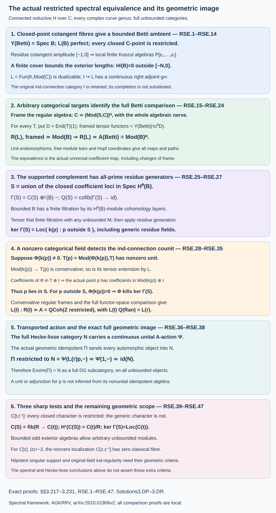
Figure 3.39. The framed comparison and full frame descent are (RSE.19)–(RSE.24). Boundedness of the ambient algebra and residue-field generation give the kernel test (RSE.25)–(RSE.31). Conservative categorical frames identify the exact functor in (RSE.35); its transported action and geometric image are (RSE.36)–(RSE.38). The bottom scope statement records the separate singular-support and regularity criteria.
3.229. Closed points and a varying character
Exercise 3.DP. In the elliptic rank-one character family of §3.147 fix the second monodromy to be one. Let \(R=\mathbf C[t,t^{-1}]\), let \(S\) be all its closed points, and let \(\kappa=\mathbf C(t)\). Compute the supported unit and the complementary kernel. Explain why every closed complex character is restricted although the universal character over \(R\) is not.
Solution 3.DP. A finite closed subset has defining equation \(f=\prod_\lambda(t-\lambda)\), up to powers and an invertible Laurent monomial. Its local-cohomology triangle is the fibre of \(R\to R[f^{-1}]\). The union over such subsets inverts every nonzero Laurent polynomial. Filtered colimits are exact, so \[ C_S=\operatorname{fib}(R\to\kappa),\qquad H^0(C_S)=0,\quad H^1(C_S)=\kappa/R, \qquad Q_SR=\kappa. \tag{RSE.39} \] The map is injective because \(R\) is a domain. At a closed point \(t=\lambda\), the one-dimensional coefficient space with monodromy \(\lambda\) is already a finite-dimensional complex representation. Thus it is restricted. The universal monodromy on \(R\), however, multiplies by \(t\), and the orbit of \(1\) contains all Laurent monomials. These are linearly independent over the original coefficient field, so this module is not locally finite. The ordinary original-field criterion (SCI.2)–(SCI.4) therefore excludes it. The generic fibre is excluded for the same reason: for any nonzero \(a\in\kappa\), \[ \{t^n a:n\in\mathbf Z\} \text{ is linearly independent over }\mathbf C. \tag{RSE.40} \] Multiplication by \(a^{-1}\) reduces a proposed finite relation to a Laurent-polynomial identity, whose coefficients are zero.
The prime ideals of this Laurent PID are its generic point and its closed maximal ideals, by factorization over \(\mathbf C\). Hence (RSE.27), or tensoring the triangle in (RSE.39) with any module, gives \[ \ker\Gamma_S=\operatorname{Loc}_R\{\kappa\}, \qquad\Gamma_S\kappa=0. \tag{RSE.41} \] All closed complex points being restricted therefore does not identify the full family with its restricted subfunctor. It does supply the residue cotangent tests of §3.219. The kernel argument of §3.226 also needs the generic residue field, which the closed-point tests alone would miss.
3.230. Bounded algebras and unbounded modules
Exercise 3.DQ. Let \(A=\mathbf C[t]\otimes\Lambda(\epsilon)\), where \(|\epsilon|=-1\) and \(d=0\). Give the finite algebra filtration used in §3.225 and explain why it handles an unbounded module. Contrast this with \(A_\infty=\mathbf C[z]\), \(|z|=-2\), whose only classical residue field is \(\mathbf C\).
Solution 3.DQ. Write \(R=\mathbf C[t]\) and \(i_*\) for restriction along the augmentation \(A\to R\). The ideal generated by \(\epsilon\) has square zero and is \(i_*R[1]\). The quotient is \(i_*R\). Thus the exact triangle of \(A\)-modules is \[ i_*R[1]\longrightarrow A\longrightarrow i_*R. \tag{RSE.42} \] It is split as a triangle of underlying \(R\)-complexes, but is not split as \(A\)-modules. Multiplication by \(\epsilon\) on the free module \(A\) is nonzero on cohomology; on the putative sum \(i_*R\oplus i_*R[1]\) it is zero. Tensor (RSE.42) over \(A\) with any unbounded \(M\). It expresses \(M\) as an extension of two restricted \(R\)-modules, \(R[1]\otimes_A^L M\) and \(R\otimes_A^L M\). These need not be bounded, and the argument has not truncated them. The all-degree residue construction over \(R\) applies directly to both, giving \[ \operatorname{Mod}_A =\operatorname{Loc}_A\{i_*k(p):p\in\operatorname{Spec}R\}. \tag{RSE.43} \]
For \(A_\infty\), the degree-zero ring is \(\mathbf C\), but the algebra has nonzero cohomology in every nonpositive even degree. Its nonzero localization \(A_\infty[z^{-1}]\) has zero derived fibre at \(\mathbf C\), because \(z\) becomes both zero and invertible there. The continuous localization functor kills \(\mathbf C\) and fixes this nonzero localized module. Therefore \[ \operatorname{Loc}_{A_\infty}\{\mathbf C\} \ne\operatorname{Mod}_{A_\infty}. \tag{RSE.44} \] This establishes the need for a genuine hypothesis in the all-unbounded residue-generation argument. In §3.225 that hypothesis is boundedness of the algebra, proved in §3.220, rather than boundedness of the module under study.
3.231. Conservative change to a nonzero category over a field
Exercise 3.DR. Let \(\kappa\) be a field and \(\mathcal T\) a presentable \(\kappa\)-linear symmetric monoidal stable category with nonzero unit. Prove conservativity of \(j(V)=V\otimes_\kappa\mathbf1\), including tensor extension by any dualizable presentable category. Give an unbounded example and show why the field hypothesis matters.
Solution 3.DR. In each degree of a complex choose a complement to boundaries inside cycles, and a complement to cycles in the whole vector space. The differential identifies the latter complement with the next degree's boundaries. The complex is the direct sum of its zero-differential cohomology and these contractible two-term pieces. This decomposition is valid without either degree bound. If cohomology is nonzero, choose a line in one of its degrees. The corresponding shift of \(\kappa\) is a retract of the complex. Applying \(j\) makes the same shift of the nonzero unit a retract. Thus \[ j(V)=0\ \Longrightarrow\ V=0, \qquad j\text{ detects equivalences by their cofibres}. \tag{RSE.45} \] For a dualizable presentable category \(\mathcal D\), the tensor–functor identifications of (RSE.29) identify \(j\otimes\operatorname{Id}_{\mathcal D}\) with postcomposition by \(j\). Apply (RSE.45) to each evaluation. It follows that \[ j\otimes\operatorname{Id}_{\mathcal D} \text{ is conservative}. \tag{RSE.46} \] For example the doubly unbounded complex \(\kappa[z,z^{-1}]\), \(|z|=-2\), is the sum of \(\kappa[2r]\) for \(r\in\mathbf Z\). Its image is the same sum of shifts of the unit and contains the unit as a retract, so it is nonzero.
Over \(R=\mathbf C[t]\), the nonzero category \(\operatorname{Mod}_{R[t^{-1}]}\) gives a counterexample. Its unit functor kills the nonzero module \(R/(t)\): tensor its free resolution \([R\xrightarrow{t}R]\) with \(R[t^{-1}]\), where the differential is invertible. Hence \[ (R/(t))\otimes_R^L R[t^{-1}]=0, \qquad R/(t)\ne0. \tag{RSE.47} \] The proof of §3.226 consequently passes to a residue field before using categorical conservativity. Nonvanishing of the target unit alone over a general ring would not justify that step.
3.232. The two proper-curve normalizations
Let \(X\) be the smooth projective connected complex curve used throughout this section. We retain the full unbounded operator category \(\mathcal D=\operatorname{Dmod}(X)\), the normalized ind-connection embedding \(i:\mathscr I\hookrightarrow\mathcal D\) and its continuous right adjoint \(g\). The two objects in §3.48 are distinct: \[ \begin{gathered} \mathbf k_X=\mathcal O_X[-1]=\omega_X[-2],\qquad \omega_X=\mathcal O_X[1]=i(\mathbf1),\\ p_{X,*}N=\operatorname{RHom}_{\mathcal D}(\mathbf k_X,N). \end{gathered} \tag{NTR.1} \] The last identity is (GD.1), for arbitrary unbounded \(N\). Its finite Spencer calculation gives the de Rham form complex shifted by one. In contrast, Hom out of \(\omega_X\) shifts that same complex by minus one. The gap between these two functors is therefore two degrees.
For a compact finite-connection complex \(P\), the connection-dual Spencer calculation of §3.48 gives \[ \mathbb D_X(iP)\simeq i(P^\vee)[-2]. \tag{NTR.2} \] For a connection in degree zero this follows by applying the operator dual to its normalized shift \(P[1]\): the unshifted connection dual is \(P^\vee\), and dualization reverses the shift. The side-changing line is the one in §3.48. Finite cones and retracts extend this identity to every compact \(P\). Evaluation and coevaluation are the same signed Spencer maps, so the identity is natural on the full DG subcategory, not just on its objects.
The full operator pairing (SDG.1) is \((M,N)\mapsto p_{X,*}(M\otimes^!N)\). Apply its compact duality to \(iP\), and then (NTR.2). We obtain \[ \operatorname{RHom}_{\mathcal D}(i(P^\vee),N) \simeq p_{X,*}(iP\otimes^!N)[-2]. \tag{NTR.3} \] This equality also follows directly from the finite connection Spencer resolution: tensoring the connection coefficient into \(N\) gives the same de Rham differential on both sides, and the two normalizations in (NTR.1) give the displayed shift. Thus it retains the actual operator actions and comparison maps for every unbounded \(N\).
The unit case is already an exact test: \[ \operatorname{RHom}_{\mathcal D}(\omega_X,\omega_X) =\Gamma_{\mathscr I}(\mathbf1),\qquad p_{X,*}\omega_X\simeq\Gamma_{\mathscr I}(\mathbf1)[2]. \tag{NTR.4} \] The first complex is ordinary curve de Rham cohomology. The second is its shifted proper integral. They play different roles in transposing a coefficient functor.
3.233. The coreflector and the tensor transpose
Use the canonical tensor pairing (HLA.17) on \(\mathscr I\) and the full proper pairing (SDG.1) on \(\mathcal D\). The transpose of \(i\) for these specified pairings is \[ t:\mathcal D\longrightarrow\mathscr I, \qquad t(N)=g(N)[2]. \tag{NTR.5} \] Indeed, for every compact \(P\), adjunction and (NTR.3) give \[ \begin{aligned} \Gamma_{\mathscr I}(P\otimes tN) &\simeq\operatorname{RHom}_{\mathscr I}(P^\vee,gN)[2]\\ &\simeq\operatorname{RHom}_{\mathcal D}(i(P^\vee),N)[2]\\ &\simeq p_{X,*}(iP\otimes^!N). \end{aligned} \tag{NTR.6} \] Every functor here is continuous in both variables. The full compact DG bars extend the identity from compact \(P\) to all \(P\); their enriched evaluation identifies all transformations and higher comparisons. This is the representing transpose under the actual dualities.
The right adjoint and its transpose satisfy different identities: \[ gi\simeq\operatorname{Id}_{\mathscr I}, \qquad ti\simeq[2]. \tag{NTR.7} \] The first is the unit of the fully faithful adjunction (HLA.4). The second follows from (NTR.5). In particular membership in the ind-connection image is tested by the original coreflector counit \[ igN\longrightarrow N, \qquad N\in i(\mathscr I) \ \Longleftrightarrow\ igN\longrightarrow N \text{ is an equivalence}. \tag{NTR.8} \] The coordinate intersections and full kernel constructions in §§3.206–3.209 use this adjunction. The integral pairing and coefficient coalgebra use \(t\). The shift does not change the full image subcategory, but it changes these maps and their unit normalizations.
3.234. All coordinate maps and the mixed diagonal kernel
The normalized inclusion \(i\) is strong symmetric monoidal. Transpose its multiplication and unit diagrams using (NTR.6). For every map \(\beta:J_2\to J_1\), including empty sets, we obtain \[ \begin{gathered} t^{\otimes J_2}(\Delta_\beta)_* \simeq\delta_{\mathscr I}^{\beta}t^{\otimes J_1},\\ \Gamma_{\mathscr I}t\simeq p_{X,*}. \end{gathered} \tag{NTR.9} \] The counit is the empty-fibre instance of the same transposed unit. Associativity and symmetry of the original tensor diagrams give the entire coalgebra coherence, by the evaluation–coevaluation triangles. No claim that \(i\) itself is a coalgebra map is needed.
Shifts add under exterior tensor. Writing the comparison solely with the coreflector gives the equivalent formula \[ g^{\otimes J_2}(\Delta_\beta)_* \simeq \delta_{\mathscr I}^{\beta}g^{\otimes J_1} [\,2(|J_1|-|J_2|)\,]. \tag{NTR.10} \] For composable coordinate maps the two cardinal differences add to the cardinal difference for their composite. Thus these shifts retain the same full string coherences. A bijection has shift zero. Projection to the point has shift two. The binary diagonal has \[ (g\otimes g)\Delta_* \simeq\delta_{\mathscr I}g[-2]. \tag{NTR.11} \]
Let \(K_{\mathcal D}=\Delta_*\omega_X\) be the full proper coevaluation kernel. Since \(g\omega_X=\mathbf1\), (NTR.11) shows that the canonical ind-connection coevaluation is the mixed restriction \[ K_{\mathscr I}=\delta_{\mathscr I}(\mathbf1) \simeq(g\otimes t)K_{\mathcal D} \simeq(t\otimes g)K_{\mathcal D}. \tag{NTR.12} \] The equality \(K_{\mathscr I}=\delta_{\mathscr I}(\mathbf1)\) follows by testing compact external objects: its pairing with \(P\boxtimes Q\) is \(\Gamma_{\mathscr I}(P\otimes Q)\), the diagonal representable functional. This is exactly the full enriched coend of (HLA.18). The mixed shift cancels the minus two in (NTR.11). Hence the actual Yoneda contractions give both triangles for (NTR.12).
3.235. The actual geometric action through the normalized comparison
The full lisse Ran category \(\mathcal R_{\mathscr I}\) is defined using the transposed tensor coalgebra of \(\mathscr I\), as in (HLA.23). The map out of the full operator Ran category uses its actual transpose: \[ \begin{aligned} Q_{\mathrm{Ran}}(\operatorname{ins}_{\psi}(\vec V\otimes N)) &=\operatorname{ins}_{\psi}(\vec V\otimes t^{\otimes J}N),\\ t^{\otimes J}N&=(g^{\otimes J}N)[2|J|]. \end{aligned} \tag{NTR.13} \] The transition squares are (NTR.9); all empty coordinates and compositions are included. Thus the full colimit gives a continuous strong symmetric monoidal functor. Its empty term is the actual unit, with no shift there.
Let \(\mathcal N=\mathcal M^{\mathrm{Hl}}\). The full Hecke operations on this category have ind-connection coefficients by (HLA.15). Pairing them against an arbitrary operator parameter uses (NTR.6), coordinate by coordinate. Therefore the full stage action satisfies \[ \Phi_\psi(\vec V,N;m) \simeq\Phi^{\mathscr I}_\psi (\vec V,t^{\otimes J}N;m). \tag{NTR.14} \] The actual Hecke collision maps transpose to the coalgebra maps in (NTR.9). Their finite-point strings give precisely the action factorization (HLA.27), with all unbounded parameters and every unused coordinate retained.
The abstract comparison \(L_{\mathscr I}\) is defined from the universal ind-connection coefficients and their canonical pairing. That construction and its equivalence (RSE.35) do not involve the operator coreflector. Applying (NTR.6) to those same universal coefficients identifies the actual composite \[ L_{\mathscr I}Q_{\mathrm{Ran}}\simeq L_{\mathrm r}. \tag{NTR.15} \] Here \(L_{\mathrm r}\) is the original restricted operator Ran coefficient functor. Transposition is natural on the complete coefficient functor, so the identity includes its tensor comparisons and all derived coefficient maps.
Transport the action through \(L_{\mathscr I}\). Equations (NTR.14)–(NTR.15), the landing theorem (BLI.23) and the unit comparison (UID.7) give \[ \Pi|_{\mathcal N}\simeq\operatorname{Id}_{\mathcal N}, \qquad\operatorname{EssIm}(\Pi)=\mathcal N. \tag{NTR.16} \] This proves the geometric action comparison with its full proper-curve normalization. GFP.55–GFP.56 give original-field ind-regularity and nilpotent-support containment. GZR.33 gives this identification over the complex numbers in every genus.
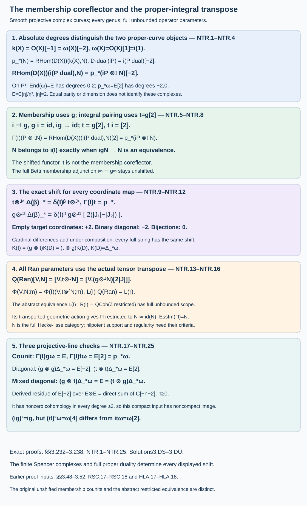
Figure 3.40. The coreflector and transpose are (NTR.5)–(NTR.8). Every coordinate shift is specified by (NTR.9)–(NTR.11); their mixed coevaluation is (NTR.12). These degree comparisons enter the actual coefficient functor and geometric action in (NTR.13)–(NTR.16). Solutions 3.DS–3.DU compute the nullary, binary and idempotence tests.
3.236. The projective-line counit in absolute degrees
Exercise 3.DS. For \(X=\mathbf P^1\), compare the absolute cohomological degrees of \(\Gamma_{\mathscr I}g\omega_X\) and \(p_{X,*}\omega_X\). Check the coalgebra counit for the transpose.
Solution 3.DS. The two-chart calculation (RSC.17) gives \(E=\mathbf C[\eta]/\eta^2\), \(|\eta|=2\), as the full endomorphism algebra of the ind-connection unit. By (NTR.1) and \(gi=\operatorname{Id}\), \[ \Gamma_{\mathscr I}g\omega_X=E,\qquad p_{X,*}\omega_X=E[2]. \tag{NTR.17} \] The first complex has cohomology in degrees zero and two. The second has cohomology in degrees minus two and zero. Thus \[ H^{-2}(E)=0,\qquad H^{-2}(E[2])=\mathbf C, \qquad E\not\simeq E[2]. \tag{NTR.18} \] This is a comparison of absolute degrees, not just parity or total dimension. Since \(t\omega_X=\mathbf1[2]\), the actual counit is \[ \Gamma_{\mathscr I}(t\omega_X) =\Gamma_{\mathscr I}(\mathbf1[2]) =E[2]=p_{X,*}\omega_X. \tag{NTR.19} \] It is the case \(J_2=\varnothing\), \(|J_1|=1\), of (NTR.9). Omitting this case would lose a necessary Ran transition.
3.237. Three restrictions of the projective-line diagonal
Exercise 3.DT. Let \(R=E\otimes E\), with its degree-two generators \(x,y\), and let \(K_{\mathcal D}=\Delta_*\omega_X\) for \(X=\mathbf P^1\). Compute its restrictions by two coreflectors, two transposes, and one of each. Determine compactness of the first image.
Solution 3.DT. The actual monoidal equivalence (RSC.18) identifies \(\delta_{\mathscr I}(\mathbf1)\) with the diagonal \(R\)-module \(E\), on which \(x=y=\eta\). Equations (NTR.5) and (NTR.11) give \[ \begin{gathered} (g\otimes g)K_{\mathcal D}\simeq E[-2],\qquad (t\otimes t)K_{\mathcal D}\simeq E[2],\\ (g\otimes t)K_{\mathcal D}\simeq E \simeq(t\otimes g)K_{\mathcal D}. \end{gathered} \tag{NTR.20} \] The alternating semifree resolution (HLA.35) has generator \(e_n\) in degree \(n\), with differentials alternating \(x-y\) and \(x+y\). Its exactness was proved in the basis \(1,x,y,xy\). Shift that complete resolution by minus two and tensor with the residue field \(x=y=0\). Every differential becomes zero, so \[ E[-2]\otimes_R^L\mathbf C \simeq\bigoplus_{n\geq0}\mathbf C[-n-2]. \tag{NTR.21} \] There is a one-dimensional cohomology group in every degree at least two. It is unbounded above, so the module is not perfect or compact. The same is true after any fixed shift. Meanwhile the original diagonal object is compact by proper coherent direct image. Consequently \[ \begin{gathered} (g\otimes g)\text{ does not preserve all compact objects},\\ g\text{ does not preserve all compact objects}. \end{gathered} \tag{NTR.22} \] For the second assertion, if \(g\) preserved compacts, its exterior square would preserve the compact external generators and their thick closure, which is the full compact product category. This would contradict the first assertion. The large-cardinal presentation used for the lisse Ran category remains necessary; a fixed cohomological shift does not fix compactness failure.
3.238. The membership projector is unshifted
Exercise 3.DU. Distinguish \(ig\) from \(it\). Test their squares on the normalized projective-line unit. Explain why the adjunction used for the full Betti inclusion in §3.221 is unchanged.
Solution 3.DU. Full faithfulness of \(i\) gives the actual unit and counit identities \[ (ig)^2\simeq ig,\qquad gi=\operatorname{Id}, \qquad ig\omega_X=\omega_X. \tag{NTR.23} \] All these are identities of continuous functors or their canonical adjunction maps. The shifted transpose instead satisfies \[ \begin{gathered} it=ig[2],\qquad(it)^2=ig[4],\\ it\omega_X=\omega_X[2],\qquad (it)^2\omega_X=\omega_X[4]. \end{gathered} \tag{NTR.24} \] The last two objects have different absolute cohomological degrees, because \(\omega_X=\mathcal O_X[1]\) is nonzero and bounded. They are not isomorphic. Thus \(it\) is not the membership coreflector. It is \(t\), however, that represents the proper integral pairing.
The full Betti inclusion \(i_\infty:\mathscr I\hookrightarrow\mathcal L\) in §3.221 is used with its actual right adjoint, characterized by \[ \begin{gathered} \operatorname{RHom}_{\mathscr I}(P,g_\infty L) \simeq\operatorname{RHom}_{\mathcal L}(i_\infty P,L), \\ g_\infty i_\infty=\operatorname{Id}. \end{gathered} \tag{NTR.25} \] That proof tests membership by this adjunction, and does not identify it with the transpose under the proper operator integral. Its categorical residue-field and frame conservativity arguments use this unshifted counit. The abstract comparison (RSE.35) has the full unbounded scope stated there.
3.239. Reconstruction from the full Ran insertion adjoints
Use the actual full operator Ran category \(\mathcal R\) and its finite-point diagram of §3.46. Write \(\Xi\) for that entire indexing category, \(\psi:I\to J\) for an object, and \[ \mathcal C_\psi=\operatorname{Rep}(H)^{\otimes I} \otimes\operatorname{Dmod}(X^J),\qquad j_\psi:\mathcal C_\psi\longrightarrow\mathcal R, \qquad j_\psi\dashv r_\psi. \tag{CDK.1} \] The right adjoint exists by the full compact-generator module construction: on a compact \(P\) its value is the module \(\operatorname{RHom}_{\mathcal R}(j_\psi P,-)\). The insertion preserves compact objects by (RN.11)–(RN.13), so these module values commute with colimits. Thus \(r_\psi\) is continuous. This assertion concerns the full operator diagram; it does not impose compact preservation on the transposed ind-connection diagram.
The compact duality in \(\mathcal C_\psi\) is representation duality tensored with proper operator duality. Denote it by \(d_\psi\). The actual insertion compatibility, including its evaluation maps, is (KG.19)–(KG.22): \[ (j_\psi P)^\vee\simeq j_\psi(d_\psi P) \quad(P\text{ compact}). \tag{CDK.2} \] Give each stage its tensor categorical self-duality: the representation pairing is ordinary invariant tensor, and the operator pairing is the full proper pairing (SDG.1) on \(X^J\). The canonical tensor self-duality of \(\mathcal R\) is the one of §3.186. On a compact \(P\), (CDK.2) and adjunction show that precomposition of the functional represented by \(M\) is the functional represented by \(r_\psi M\): \[ \begin{aligned} \operatorname{ev}_{\mathcal R}(j_\psi P,M) &=\operatorname{RHom}_{\mathcal R}((j_\psi P)^\vee,M)\\ &\simeq\operatorname{RHom}_{\mathcal C_\psi}(d_\psi P,r_\psi M)\\ &=\operatorname{ev}_{\mathcal C_\psi}(P,r_\psi M). \end{aligned} \tag{CDK.3} \] All functors are continuous; the compact bars extend this identity to the full categories and their maps. Consequently the dual of \(j_\psi\), under these specified dualities, is exactly \(r_\psi\). This uses the insertion's full compact-duality comparison, not an identification of the normalized ind-connection coreflector with a proper-integral transpose.
3.240. The coherent family comparison and its counit
The full Ran colimit universal property (RN.13) identifies continuous functors to \(\operatorname{Vect}\), including all transformation complexes, with coherent compatible stage functors. Apply the self-dualities in (CDK.3). This gives the actual DG category comparison \[ \mathcal R\xrightarrow{\sim} \lim_{\Xi^{\mathrm{op}}}\mathcal C_\psi, \qquad M\longmapsto(r_\psi M)_\psi. \tag{CDK.4} \] The transition at \(\alpha:\psi\to\chi\), whose stage functor is \(T_\alpha\), is its right adjoint \(T_\alpha^R\). To check this on the stages themselves, representation folds and unit insertions commute with finite representation duality. The coordinate functor is proper direct image, which commutes with the compact operator duality by the proper structure-map, external-product and closed-diagonal duality calculations of §§3.48–3.52. Their tensor product therefore satisfies \(d_\chi T_\alpha P=T_\alpha d_\psi P\) for compact \(P\). The calculation (CDK.3), with \(T_\alpha\) in place of \(j_\psi\), identifies its transpose with its right adjoint. All these identifications are adjunction mates of the actual coordinate comparisons, so they respect strings and their homotopies. The identity \(j_\psi=j_\chi T_\alpha\) gives \(r_\psi=T_\alpha^Rr_\chi\). The limit here means full coherent families, as in the path-bar construction of §3.46, rather than the diagram of homotopy categories. In particular \[ \operatorname{RHom}_{\mathcal R}(M,N) \simeq\lim_{\Xi^{\mathrm{op}}} \operatorname{RHom}_{\mathcal C_\psi}(r_\psi M,r_\psi N). \tag{CDK.5} \] One can check this last identity directly on the full coherent-family bar: a map is a family of component maps with its compatibility homotopies, then homotopies between those, and all higher simplex relations. This is the derived limit on the right. The full mapping-complex assertion in (RN.13) supplies precisely those relations.
There is a covariant \(\Xi\)-diagram of endofunctors. Its map at \(\alpha\) is \[ j_\psi r_\psi =j_\chi T_\alpha T_\alpha^Rr_\chi \xrightarrow{j_\chi\epsilon_\alpha r_\chi} j_\chi r_\chi. \tag{CDK.6} \] The adjunction counits give its full coherent composition maps. The insertion counits define an augmentation to the identity. For any \(M,N\), adjunction and (CDK.5) compute \[ \begin{aligned} \operatorname{RHom}_{\mathcal R} (\operatorname*{colim}_{\Xi}j_\psi r_\psi M,N) &\simeq\lim_{\Xi^{\mathrm{op}}} \operatorname{RHom}_{\mathcal C_\psi}(r_\psi M,r_\psi N)\\ &\simeq\operatorname{RHom}_{\mathcal R}(M,N). \end{aligned} \tag{CDK.7} \] Under these identifications precomposition with the augmentation is the identity on the coherent family of maps. Indeed precomposing with (CDK.6) is, by the two adjunction triangles, applying \(T_\alpha^R\) to the component map. This is exactly the mapping transition in (CDK.5). Enriched Yoneda therefore proves the identity of actual continuous endofunctors \[ \operatorname*{colim}_{\Xi}j_\psi r_\psi \xrightarrow{\sim}\operatorname{Id}_{\mathcal R}. \tag{CDK.8} \] This proof retains all unbounded objects and every higher comparison. It does not assert that one insertion is fully faithful or that an ordinary sum of stage objects is the identity.
3.241. The full regular kernel as an actual finite-point colimit
Let \(R_H\in\operatorname{Rep}(H)\otimes\operatorname{Rep}(H)\) be the regular representation coevaluation, with its two commuting group actions. It is the whole finite-representation coend of §3.42, not just its underlying vector space. The full stage coevaluation is \[ K_\psi^0=R_H^{\boxtimes I}\boxtimes (\Delta_{X^J})_*\omega_{X^J} \in\mathcal C_\psi\otimes\mathcal C_\psi. \tag{CDK.9} \] The representation triangles are the full Yoneda contractions, and the operator triangles are (SDG.3) on the product curve. Thus these are the actual stage dualities used in (CDK.3), with all proper shifts included.
The kernel corresponding to \(j_\psi r_\psi\) under \(\mathcal R\otimes\mathcal R\simeq\operatorname{Fun}^L(\mathcal R,\mathcal R)\) is \[ K_\psi=(j_\psi\otimes j_\psi)K_\psi^0. \tag{CDK.10} \] To verify it, apply the kernel to \(M\). Moving evaluation past the second insertion uses (CDK.3), leaving \(j_\psi\) applied to the stage evaluation–coevaluation triangle on \(r_\psi M\). The result is \(j_\psi r_\psi M\), naturally on the entire DG category.
Transport the counit maps (CDK.6) through this full kernel equivalence. They define the actual transition maps on the \(K_\psi\). On a coordinate transition they are the adjunction counit of the specified proper coordinate direct image and coefficient fold, with the duality comparisons of (KG.19). On a string they are their composed adjunction mates, so they retain every simplex relation. This specifies a coherent diagram of kernels, not merely a list of isomorphism classes.
The kernel equivalence is continuous, and the identity kernel for the canonical tensor self-duality is the actual regular algebra object \(R_{\mathcal R}\) of (KG.23). Applying (CDK.8) yields the object identity \[ R_{\mathcal R} \simeq\operatorname*{colim}_{\psi\in\Xi} (j_\psi\otimes j_\psi) \bigl(R_H^{\boxtimes I}\boxtimes (\Delta_{X^J})_*\omega_{X^J}\bigr). \tag{CDK.11} \] All transition maps are the ones just constructed. The identity concerns this underlying kernel with its coherent presentation; it does not replace the separately constructed algebra multiplication by an unproved termwise multiplication. It also does not reduce the compact-DG coend (KG.23) to the bare set of inserted generators: the insertion adjoints and their entire mapping-family limit were essential to (CDK.8).
3.242. Contracting against the actual restricted coefficients
Put \(\mathcal A=\operatorname{QCoh}(\mathcal Z_H^{\mathrm{restr}}(X))\). Write \(\mathcal E\) for its actual universal coefficient functor (BLI.16). At \(\psi:I\to J\), let \[ \begin{gathered} \mathcal E_\psi= (\operatorname{mult}_{\mathcal A}^{J}\otimes\operatorname{Id}) \mathcal E^{\otimes J}\operatorname{mult}^{\psi}: \operatorname{Rep}(H)^{\otimes I}\longrightarrow \mathcal A\otimes\mathscr I^{\otimes J},\\ B_\psi=(\operatorname{Id}\otimes i^{\otimes J}\mathcal E_\psi) (R_H^{\boxtimes I}). \end{gathered} \tag{CDK.12} \] Here the independent spectral factors of \(\mathcal E^{\otimes J}\) are multiplied in \(\mathcal A\), and empty coefficient fibres use the tensor unit. The resulting single \(\mathcal A\)-factor is reordered to the last position. Thus \(B_\psi\) belongs to \(\operatorname{Rep}(H)^{\otimes I}\otimes\operatorname{Dmod}(X^J)\otimes\mathcal A\). In the second expression \(\mathcal E_\psi\) is applied to the second representation factor, leaving the first unchanged.
The actual restricted Ran functor on this stage pairs its normalized operator coefficient with the parameter by the full proper integral. Hence the second insertion in (CDK.10), after applying \(L_{\mathrm r}\), contracts the right operator factor of \((\Delta_{X^J})_*\omega_{X^J}\) against that coefficient. The full triangle (SDG.3) recovers the coefficient itself. Consequently \[ (\operatorname{Id}_{\mathcal R}\otimes L_{\mathrm r})K_\psi \simeq(j_\psi\otimes\operatorname{Id}_{\mathcal A})B_\psi. \tag{CDK.13} \] This is a comparison of full DG functors in the representation and spectral parameters. The tensor transpose of an operator parameter is \(t^{\otimes J}=g^{\otimes J}[2|J|]\), by (NTR.13); the proper coevaluation is the one of (CDK.9). The two duality triangles therefore make exactly this contraction, with no extra shift or replacement by two unshifted coreflectors.
Apply the continuous functor \(\operatorname{Id}\otimes L_{\mathrm r}\) to (CDK.11). Its actual enhanced kernel, defined in (UID.1), has the presentation \[ K_{\mathcal A}=(\operatorname{Id}\otimes L_{\mathrm r})R_{\mathcal R} \simeq\operatorname*{colim}_{\psi\in\Xi} (j_\psi\otimes\operatorname{Id}_{\mathcal A})B_\psi. \tag{CDK.14} \] The transition maps are the transported counits from §3.241, followed by the actual coefficient comparisons. Thus this formula is compatible with all finite-point strings, and not just an objectwise equality after an ordinary scalar fibre.
3.243. Continuous spectral integration of the kernel
Use the continuous spectral functional \(\Gamma_!:\mathcal A\to\operatorname{Vect}\) of (SDU.9). It is the proved continuous extension from compact supported objects, not an assumed ordinary global-section functor on all objects. Define \[ \overline B_\psi= (\operatorname{Id}\otimes\Gamma_!) (\operatorname{Id}\otimes\mathcal E_\psi) (R_H^{\boxtimes I}) \in\operatorname{Rep}(H)^{\otimes I}\otimes\mathscr I^{\otimes J}. \tag{CDK.15} \] Its independent spectral factor is the one integrated. Since both \(i^{\otimes J}\) and \(\Gamma_!\) are continuous, their tensor extensions commute. Applying \(\operatorname{Id}\otimes\Gamma_!\) to the full kernel colimit gives the actual object of (UID.7): \[ p\simeq\operatorname*{colim}_{\psi\in\Xi} j_\psi\bigl((\operatorname{Id}\otimes i^{\otimes J}) \overline B_\psi\bigr). \tag{CDK.16} \] Every parameter in the displayed stage presentation comes from the original ind-connection category. The formula includes the whole regular representation and all internal operator and spectral actions. Its colimit is justified by continuity of \(\Gamma_!\); substituting a noncontinuous global-section functor would not justify that passage.
3.244. Finite localization for full ind-regular modules
Let \(\mathcal M_{\mathrm{reg}}\) be the full chartwise ind-regular subcategory of the complex automorphic category, using the actual half-twist cancellation of §3.58. On a smooth affine chart \(U\) its condition is membership in \(\operatorname{Ind}D^b_{\mathrm{rh}}(\mathcal D_U)\). This full image is closed under colimits by the compact-image embedding proved in §3.55. Smooth inverse transfer is continuous, so the chartwise condition is closed under colimits as well.
We first prove a finite localization criterion. Let \(W\) be smooth, separated and of finite type, and let an arbitrary unbounded \(Q\in\operatorname{Dmod}(W)\) be supported on a closed finite-type subspace \(Z\). Suppose \(Z\) has a finite closed filtration whose differences are smooth locally closed varieties \(s_\gamma:S_\gamma\hookrightarrow W\). Then \[ \begin{gathered} \bigl(s_\gamma^!Q\in\operatorname{Ind}D^b_{\mathrm{rh}}(S_\gamma) \text{ for every }\gamma\bigr)\\ \Longrightarrow Q\in\operatorname{Ind}D^b_{\mathrm{rh}}(W). \end{gathered} \tag{CDK.17} \]
For a map between smooth separated finite-type varieties, its full direct image is continuous by the finite graph–Spencer–Čech proof in §3.61. On bounded regular holonomic objects it preserves that property by Regular singularities, Theorem 5.17. Thus it carries the entire ind-category into the corresponding ind-category. This applies to a smooth locally closed stratum inclusion even though that inclusion need not be proper.
Write the filtration as \(Z_0\subset\cdots\subset Z_n=Z\). For the top stratum \(S=Z_n\setminus Z_{n-1}\), choose \(j:O=W\setminus Z_{n-1}\hookrightarrow W\), with closed inclusion \(v:S\hookrightarrow O\) and complementary inclusion \(i:Z_{n-1}\hookrightarrow W\). Thus \(Q|_O\) is supported exactly on \(S\). The localization triangle is \[ \begin{gathered} i_*i^!Q\longrightarrow Q\longrightarrow j_*j^!Q, \\ j^!Q\simeq v_*s^!Q, \qquad j_*j^!Q\simeq s_*s^!Q. \end{gathered} \tag{CDK.18} \] The middle identification is the full supported Kashiwara equivalence, including its counit, as proved for unbounded complexes in (SH.14). The last term is ind-regular by the preceding paragraph. The first term is supported on the next closed part. For every remaining stratum its extraordinary restriction is exactly \(s_\gamma^!Q\): factor its inclusion through \(i\) and use the actual identity \(i^!i_*\simeq\operatorname{Id}\) on supported objects. Induction on the finite filtration and closure under cones prove (CDK.17). A finite disjoint union of strata can be treated as one layer, or by its finite direct sum. No boundedness of \(Q\) has entered this induction.
We will also use the following finite Zariski version. If \(S\) is smooth, separated and of finite type, and \(Q\) is ind-regular on every member of a finite affine open cover, then it is ind-regular on \(S\). For two opens the actual Mayer–Vietoris triangle expresses \(Q\) using the direct images of its restrictions to the two opens and their intersection. These direct images preserve ind-regularity by the same argument. Induct on the number of opens; intersections are affine because \(S\) is separated. This proves the assertion using finitely many cones, for an arbitrary unbounded input. It makes no assertion about descent of ind-regularity from a general smooth cover.
3.245. Finite Hecke strata with smooth bundle projections
Retain \(Y=\operatorname{Bun}_G(X)\), with every genus and component allowed. Choose a closed bound for the endpoint Hecke correspondence containing the support of the finite tuple of Satake coefficients. It is projective over \(Y\times X^J\) by (SH.13). We describe a finite filtration of this bound.
For a partition \(\pi\) of \(J\), let \(\operatorname{Conf}_\pi(X)\) be the locus where precisely the indices in each block coincide. It is a smooth open part of \(X^{\pi}\). The union of the loci with at most \(b\) distinct points is closed: it is the finite union of the corresponding partial diagonals. These closed sets give a finite filtration of the point base. At a fixed number of blocks, the different \(\operatorname{Conf}_\pi\) are open and closed in that layer.
Over one such locus, the divisor splits into disjoint discs. The full Beauville–Laszlo gluing construction in Fusion and the commutativity constraint, §1 identifies the relative modification problem, after a divisor frame and a curve coordinate, with a product of affine Grassmannians. The identification is over parameter rings, not merely geometric points. By Spherical Hecke algebras as functions on the affine Grassmannian, Theorem 2.C, its orbits are the tuples of dominant coweights. Only finitely many occur in the chosen bound. Indeed a faithful lattice bound bounds the pairings with every weight of a faithful representation and its dual; those weights span the rational character space of the torus, so their simultaneous integral bounds leave finitely many coweights. This is the finite-bound calculation in Orbits and Schubert varieties in the affine Grassmannian, §5.
The filtration is on the underlying closed supports. The full supported operator objects and their transfers still use the actual bounded scheme, including its parameter rings, as in (SH.14); localization on a closed support depends only on its reduction. Each orbit stratum is a smooth finite-jet homogeneous variety. Explicitly, at one point it is \[ \begin{gathered} \operatorname{Gr}^{\lambda} =(G(O)/K_n)/(H_\lambda/K_n),\\ H_\lambda=G(O)\cap t^\lambda G(O)t^{-\lambda}, \quad n>0,\qquad n>\langle\alpha,\lambda\rangle\ (\alpha>0). \end{gathered} \tag{CDK.19} \] The root coordinates of the stabilizer have thresholds \(\max(0,\langle\alpha,\lambda\rangle)\); torus arcs are unrestricted. Both finite groups in (CDK.19) are smooth, by the explicit product-coordinate calculation in the orbit lesson, §2. Their quotient is therefore smooth. The coordinate-change action preserves each orbit: substitution by an invertible formal parameter changes \(t^\lambda\) by an integral torus arc, and preserves the integral loop group. The full coordinate descent in the fusion lesson, §6 consequently descends these same strata.
The strata have a finite closed filtration within this configuration layer. In a finite bound each orbit closure is invariant under the finite-jet group, hence is a union of the finitely many orbits. Its boundary has smaller dimension: the orbit is smooth irreducible and is a dense locally closed subset of its closure. Order the resulting finite closure relation by successive closed unions. This construction is constant in the divisor frames and descends. Combine this filtration with the preceding closed filtration by the number of distinct points. A closed union inside one open layer, together with all lower layers, is closed in the corresponding filtered part. Thus a boundary at a collision is already in a lower part of the filtration; no additional smoothness assertion across that boundary is required.
Let \(\mathcal S\) be a stratum. Its projection to either endpoint bundle is smooth. To see this for the first endpoint, its projection to \(Y\times\operatorname{Conf}_\pi(X)\), after a finite divisor frame and finite curve-coordinate torsor, is the product of the smooth orbits in (CDK.19). The torsors are smooth: their successive jet coefficients have the infinitesimal lifting property of the smooth group and of an invertible parameter. Smoothness descends along this faithfully flat frame map, by the finite-presentation and infinitesimal lifting argument of Convolution and rigidity, §7. The projection of the configuration space to a point is smooth. Reversing the off-divisor bundle identification exchanges the endpoints and replaces \(\lambda\) by \(-w_0\lambda\). The same argument therefore proves smoothness for the other endpoint. This asserts smoothness to \(Y\); a map from a collision stratum to the whole \(Y\times X^J\) need not be smooth.
In particular, for any smooth affine output chart \(U\to Y\times X^J\), each base-changed stratum \(S_U\) is smooth, separated and of finite type, and \[ S_U\longrightarrow Y\quad\text{is smooth}. \tag{CDK.20} \] Indeed \(S_U\to\mathcal S\) is the base change of the smooth chart map. Compose it with the smooth input projection just proved. The bounded correspondence over \(U\) is a projective scheme, so its strata are separated finite-type varieties.
3.246. Regular coefficients on the strata
The actual coefficient kernel is the one in (SH.15), with its source-chart dualizing factor and its complete finite-jet descent datum. On every smooth finite-type stratum chart its extraordinary restriction is bounded regular holonomic. Here is why the bounded assertion follows from that construction. The finite moving coefficient is a bounded constructible object on a finite support. The supported full RH equivalence in §3.60 gives its bounded regular operator realization, with the actual proper, inverse-transfer and exterior-product comparisons. On a common divisor frame, (SH.15) is the exterior product with the smooth source-chart dualizing object, followed by smooth inverse transfer. Those operations, and restriction to a smooth stratum, preserve bounded regular holonomicity by Theorems 5.17–5.18 of the regular-singularities lesson.
The passage from the frame to the stratum is bounded descent for this coefficient. For completeness, retain the actual complex descent, rather than replacing it by the derived category of an equivariant heart. Choose étale local sections of the frame torsor. Pulling the coefficient back along each section, with the inverse torsor shift, gives a bounded constructible complex. Pulling its full nerve comparisons along pairs and higher tuples of sections gives all gluing maps and their homotopies. The local section inserts an extra first vertex in the augmented Čech nerve; the resulting contracting homotopy proves effectiveness on stalk complexes and on full mapping complexes. The gluing object is constructible, since this is local for the finite-type étale charts, and bounded by a finite subcover. This is the complex version of the explicit section construction in Equivariant perverse sheaves and perverse sheaves on stacks, Lemma B.2. If a bundle chart is needed as well, use its finite framed quotient chart from §1.13; its pullback is a frame torsor, so the same section argument applies. It produces the bounded constructible coefficient on the smooth stratum chart. Apply the full bounded RH equivalence there. On each frame and every multiple overlap its image is the coefficient just described, because the RH comparison maps are the same transfer maps in (SH.15). Full faithfulness identifies every nerve map, not just the objects. Full operator descent then identifies this bounded regular lift with the actual kernel restriction. A finite cover of the finite-type chart gives a common bound. Thus, writing \(k_\gamma:S_{\gamma,U}\to\mathcal H_U^{\rm bd}\), we have \[ k_\gamma^!K_{\vec V,U} \in D^b_{\mathrm{rh}}(S_{\gamma,U}). \tag{CDK.21} \] This argument uses bounded descent only for the finite coefficient. It does not infer ind-regularity of an arbitrary input from its inverse image on a smooth cover.
3.247. The full Hecke transform preserves chartwise regularity
Let \(M\in\mathcal M_{\mathrm{reg}}\). On the output chart \(U\) the actual full Hecke transform (SH.16) is the projective direct image of \[ \begin{gathered} Q_U=a_U^!M\otimes^!K_{\vec V,U},\\ k_\gamma^!Q_U =a_\gamma^!M\otimes^!k_\gamma^!K_{\vec V,U}. \end{gathered} \tag{CDK.22} \] These are the actual inverse-transfer and tensor comparisons, including their shifts, on supported ambients as in (SH.17). By (CDK.20), every affine open of \(S_{\gamma,U}\) maps smoothly to \(Y\). The all-chart definition of \(\mathcal M_{\mathrm{reg}}\) therefore says directly that \(a_\gamma^!M\) is ind-regular on that affine open. The finite Zariski argument of §3.244 gives its membership on all of \(S_{\gamma,U}\). This is a use of every smooth affine chart in the definition, not descent of membership from one smooth cover.
The other tensor factor in (CDK.22) is bounded regular by (CDK.21). Bounded regular holonomic objects are closed under \(\otimes^!\), by Theorem 5.18 of the regular-singularities lesson. Continuity of tensor extends this statement in the first argument to its full ind-category. Thus every stratum restriction of \(Q_U\) is ind-regular.
Embed the projective bounded correspondence in \(W=U\times\mathbf P^N\), and regard \(Q_U\) as its actual supported object there. The stratum restrictions are still (CDK.22), by the supported Kashiwara units and counits. The finite filtration of §3.245 and (CDK.17) put this ambient object in \(\operatorname{Ind}D^b_{\mathrm{rh}}(W)\). Projective direct image from \(W\) to \(U\) is continuous by (SH.14) and preserves bounded regular holonomic objects. It therefore sends this ind-object into \(\operatorname{Ind}D^b_{\mathrm{rh}}(U)\). We have proved \[ \mathsf H^J_{\vec V}(\mathcal M_{\mathrm{reg}}) \subset\operatorname{Dmod}_{\mathrm{reg}}(Y\times X^J). \tag{CDK.23} \] The category on the right uses the same all-smooth-affine-chart condition. Formula (SH.14) identifies the calculation on every output chart and its refinements with the actual full transform; its comparison maps retain all higher descent relations. The argument applies to every unbounded \(M\in\mathcal M_{\mathrm{reg}}\), all collision patterns, every genus, and all components. The half-twisted version follows by the actual line-module Morita conjugation (RH.17), (SH.19); tensoring a line and its inverse cancels in every transfer and preserves regularity.
3.248. Connection parameters and proper integration
Let \(\vec Q\) be an exterior tuple of bounded finite connection complexes. Each \(iQ_j\) is bounded regular holonomic by the definition of a regular connection. On every smooth chart of \(Y\times X^J\), its pullback is bounded regular holonomic, including on the collision loci, by the same inverse-transfer theorem. The tensor of (CDK.23) with this coefficient is therefore chartwise ind-regular.
The map \(Y\times X^J\to Y\) is representable projective. Over a smooth affine chart \(T\to Y\) its source is the smooth finite-type variety \(T\times X^J\). Cover it by finitely many affine opens. The chartwise condition and the finite Zariski argument put the entire restricted object in \(\operatorname{Ind}D^b_{\mathrm{rh}}(T\times X^J)\). Its projective direct image is ind-regular on \(T\). The full base-change maps (SH.14) identify this with the actual integrated stage action. Hence \[ \Phi_\psi(\vec V,i^{\otimes J}\vec Q;-) (\mathcal M_{\mathrm{reg}}) \subset\mathcal M_{\mathrm{reg}}. \tag{CDK.24} \] Here coefficient labels over one marked coordinate are first multiplied as prescribed by \(\psi\). Empty fibres use the unit representation, and an empty point set uses the identity map of \(Y\). Thus the nullary and unused-coordinate cases are included. Every proper integral and inverse transfer is the normalized full operator functor; no coreflector has been substituted for a transpose.
3.249. Preservation by the actual spectral projector
The full category \(\operatorname{Rep}(H)^{\otimes I}\otimes\mathscr I^{\otimes J}\) is generated under colimits by finite representations and exterior bounded finite-connection complexes, by its compact-generator tensor bar. Each \(\overline B_\psi\) in (CDK.15) has such a presentation, retaining every module map. Continuity of the actual action and the chartwise colimit closure extend (CDK.24) to that whole parameter. Apply the action to (CDK.16), and use the actual equality \(\Pi=\Phi(p,-)\) of (UID.14). The outer colimit is again chartwise ind-regular. This proves, over the original complex field, \[ \Pi(\mathcal M_{\mathrm{reg}}) \subset\mathcal M_{\mathrm{reg}}. \tag{CDK.25} \]
Preservation on regular inputs does not imply that the image of \(\Pi\) on all operator modules is regular. GFP.5–GFP.56 supply the enhanced generators, actual field-point comparison and support criterion giving regularity and nilpotent-support containment of its full original-complex image. GZR.33 gives this equality over the complex numbers in every genus. None of (CDK.23)–(CDK.25) identifies a singular-support condition with regularity.
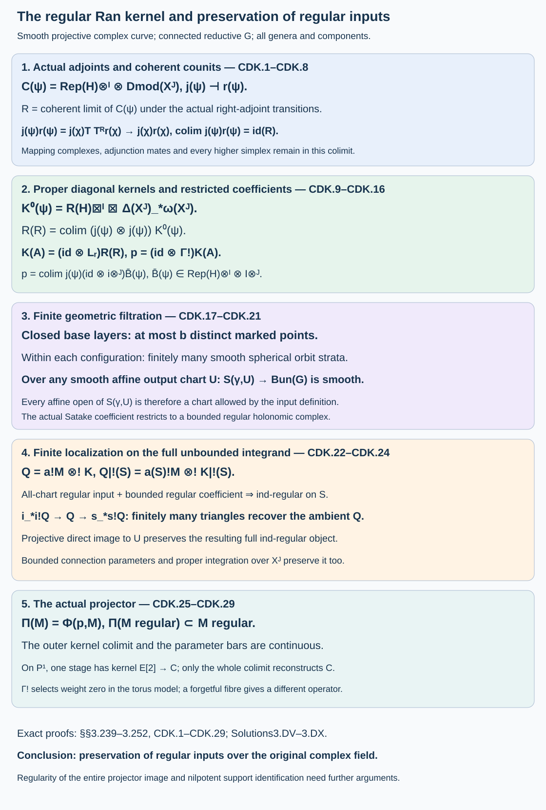
Figure 3.41. The upper diagram is the coherent counit colimit (CDK.6)–(CDK.11). The proper diagonal kernel is \(\Delta_*\omega\). Applying the actual restricted coefficient functor and then the continuous spectral functional gives (CDK.14)–(CDK.16). The lower diagram is the regularity proof: collision layers and finite spherical orbits give smooth maps to the input bundle stack; finite localization reconstructs the entire unbounded integrand before projective direct image. The conclusion is preservation of the chartwise regular subcategory, as in (CDK.25).
3.250. Exercise and solution: one stage need not reconstruct the identity
Exercise 3.DV. Take the actual trivial-group example on \(X=\mathbf P^1\). Identify the full operator Ran category, its one-coordinate insertion and its right adjoint. Compute the image of the one-coordinate diagonal kernel and its augmentation to the identity kernel. Does that one stage suffice? Repeat with an arbitrary doubly unbounded coefficient complex.
Solution 3.DV. For the trivial coefficient group the full Ran category is \(\operatorname{Vect}\). One way to check the assertion on the full categories is its tensor universal property: a unital tensor functor out of the tensor unit \(\operatorname{Rep}(1)=\operatorname{Vect}\) is uniquely its unit functor, with its full contractible space of unit-compatible transformations. Thus the Ran tensor universal property of §3.47 represents the same functor on categorical tensor targets as \(\operatorname{Vect}\). In this identification the insertion at one coordinate is the actual proper integral \(p_*\), and its right adjoint is \(p^!\). Put \(E=\mathbf C[\eta]/\eta^2\), \(|\eta|=2\). Then \[ (p_*\otimes p_*)\Delta_*\omega_X =p_*\omega_X=E[2],\qquad E[2]\xrightarrow{\operatorname{tr}}\mathbf C. \tag{CDK.26} \] The two nonzero cohomology groups have degrees \(-2\) and \(0\). With the residue-one normalization of (NTR.22), trace takes the degree-zero orientation class to \(1\). Its source also has the nonzero degree-\(-2\) class, so this single augmentation is not an equivalence. The full coherent colimit in (CDK.11) is \(\mathbf C\); it includes all counit maps and their relations. A sum of stage kernels would not give that computation.
For any coefficient complex \(V\), continuity and the projection formula give \(p_*p^!V=E[2]\otimes V\), and the augmentation is \(\operatorname{tr}\otimes\operatorname{Id}_V\). Formula (CDK.8) proves that the entire coherent diagram has colimit \(V\). This applies, for example, to \(V=\mathbf C[z,z^{-1}]\), \(|z|=-2\), which is unbounded in both directions. No exchange with a Postnikov limit is needed.
3.251. Exercise and solution: two complementary insertions
Exercise 3.DW. In the abstract diagram with two discrete stages \(\mathcal C_1=\mathcal C_2=\operatorname{Vect}\) and colimit \(\mathcal D=\operatorname{Vect}\times\operatorname{Vect}\), compute the insertion adjoints, the reconstruction functor, and its kernel. Keep arbitrary unbounded complexes in both factors.
Solution 3.DW. The insertions and adjoints are \[ j_1(V)=(V,0),\quad j_2(W)=(0,W),\qquad r_1(M,N)=M,\quad r_2(M,N)=N. \tag{CDK.27} \] Their adjunctions follow directly from the product mapping complexes. The coherent-family limit in (CDK.4) is this product, and \[ j_1r_1(M,N)\oplus j_2r_2(M,N) =(M,0)\oplus(0,N)=(M,N). \tag{CDK.28} \] The kernel has one unit in positions \((1,1)\) and \((2,2)\) and zero in the two off-diagonal positions. Evaluation contracts exactly the two diagonal factors. The augmentation is the pair of identities on \(M,N\), so it is an equivalence on their full complexes, without a boundedness assumption. In this discrete diagram a finite sum is the coherent colimit; that special feature does not remove the transition relations in the actual Ran diagram.
3.252. Exercise and solution: the spectral factor must be integrated
Exercise 3.DX. Consider the abstract point coefficient model \(\mathcal R=\mathcal A=\operatorname{Rep}(\mathbf G_m)\), \(L=\operatorname{Id}\), with the usual tensor self-duality. This is a coefficient model, with no curve claim. Compute the enhanced kernel, its integral by \(\Gamma_!\), and its fibre under the forgetful functor on the spectral factor. Compare the two resulting tensor operators.
Solution 3.DX. Write \(\mathbf C_n\) for the weight-\(n\) line. The full coevaluation and its spectral integral are \[ K_{\mathcal A}=\bigoplus_{n\in\mathbf Z} \mathbf C_n\boxtimes\mathbf C_{-n},\qquad (\operatorname{Id}\otimes\Gamma_!)K_{\mathcal A} =\mathbf C_0. \tag{CDK.29} \] Indeed the invariant tensor pairing contracts opposite weights, and its coevaluation triangles are the direct-sum weight decomposition. The unit is compact, so the continuous \(\Gamma_!\) here is the ordinary weight-zero invariant functor on every complex. Only the term \(n=0\) survives; its tensor operator is the identity.
In contrast, forgetting the spectral representation gives \(B=\bigoplus_{n\in\mathbf Z}\mathbf C_n\). Its tensor square has countably many copies of \(\mathbf C_0\), one for each pair \((n,-n)\), whereas \(B\) has just one. Hence \(B\otimes B\not\simeq B\), and tensor by \(B\) is not an idempotent operator. The forgetful fibre and the continuous spectral integral are different functors. This calculation explains why (CDK.15) specifies \(\Gamma_!\) rather than an unspecified scalar fibre.
3.253. Smooth stabilizers in characteristic zero
We will construct the actual point object representing extraordinary restriction on the full unbounded operator category. We first give the algebraic stabilizer argument needed for its residual gerbe.
Every finite-type complex group scheme is smooth. To prove this, complete its local ring at the identity. Lift a basis of its cotangent space to elements of its maximal ideal. Successively subtract homogeneous polynomials in these lifts at each ideal order. Completeness then gives a surjection \[ S=\mathbf C[[x_1,\ldots,x_n]]\longrightarrow\widehat R, \qquad \widehat R=S/I,\quad I\subset(x)^2. \tag{SPT.1} \] The assertion also includes \(n=0\), when the surjection is the identity of the field. The quotient and completed product calculations are the finite-ideal completion identities proved in Completion, Theorems 3.1–3.3. In particular all ideals used here are closed; the formal product ring is the quotient of \(\mathbf C[[x,y]]\) by \(I(x)+I(y)\). One can check the latter equality modulo each total ideal power: both quotients are the same truncated polynomial algebra with the two sets of relations, and their inverse limits are the completed rings.
Suppose \(I\ne0\), and choose a relation of smallest order \(r\ge2\), with leading homogeneous polynomial \(f_r\). Lift the formal group multiplication to coordinate series \(F(x,y)\). The two unit identities make its linear term \(x+y\). Substitution of a relation is again zero in the formal group product, so \[ F(x,y)=x+y+\text{terms of order at least two},\qquad f(F(x,y))\in I(x)+I(y). \tag{SPT.2} \] The degree-\(r\) part of this ideal contains only pure \(x\)- and pure \(y\)-terms: multiplying a relation by a nonconstant coefficient would raise its order, by minimality of \(r\). Therefore \(f_r(x+y)\) has no mixed terms. Evaluating one argument at zero identifies its pure terms, giving \[ f_r(x+y)=f_r(x)+f_r(y),\qquad (2^r-2)f_r(x)=0. \tag{SPT.3} \] The second identity sets \(y=x\) and uses homogeneity. It is impossible over \(\mathbf C\) for nonzero \(f_r\) and \(r\ge2\). Thus \(I=0\).
A finite-variable formal power-series ring is regular: its graded ring is the polynomial ring, its cotangent dimension is \(n\), and its ideal-quotient length polynomial has degree \(n\). Completion, Theorem 4.1 identifies the local dimension and cotangent dimension before and after completion, so the identity local ring is regular. At a complex closed point regularity is smoothness by Smooth algebras over a field and the Jacobian criterion, Proposition 3.1. Translation makes every closed group point smooth. The nonsmooth locus is closed by that lesson's Corollary 2.2; if nonempty it would have a closed point, by the Nullstellensatz. This proves smoothness of the whole group scheme, with no reductivity or connectedness assumption.
3.254. The locally closed residual gerbe of a bundle
Put \(Y=\operatorname{Bun}_G(X)\), for a connected reductive complex \(G\) and a smooth projective complex curve of any genus. Fix a point \(y\in Y(\mathbf C)\). Choose a bounded open \(U=[Z/H]\) containing it, using the finite framed quotient construction of §§1.13–1.15. Here \(Z\) is smooth of finite type and \(H\) is a product of general linear and multiplicative groups. An \(H\)-torsor over the algebraically closed field has a closed point, hence a section; choose a lift \(z\in Z(\mathbf C)\). Its stabilizer \(A=H_z\) is an affine finite-type group scheme, so §3.253 makes it smooth.
The orbit is locally closed. Indeed the finite-type orbit map has constructible image by Quasi-finite morphisms and Chevalley’s theorem, Theorems 3.1 and 4.2. Since \(H\) is connected, its orbit closure is irreducible. The constructible image contains a nonempty open in that closure. Its translates cover the orbit; consequently the orbit is open in its closure. Give it its reduced structure and call it \(O\).
This orbit is smooth. Its generic local ring is a field, separably generated over \(\mathbf C\), so the Jacobian criterion gives a nonempty smooth open; translation carries that open to every closed orbit point. The closed nonsmooth locus is therefore empty. The fibres of \(H\to O\) are the stabilizer cosets. Dimension of fibres, Theorem 4.1 gives \(\dim O=\dim H-\dim A\). The differential has kernel \(\operatorname{Lie}A\), of dimension \(\dim A\). It is thus surjective between smooth tangent spaces. The relative Jacobian argument makes this orbit map smooth: choose étale coordinates on the smooth target and extend their independent pulled differentials to coordinates on the smooth source. The resulting map to the product of the target with affine space has invertible full Jacobian, hence is étale by the standard presentation calculation in Smooth morphisms, Proposition 1.1; its composite with the product projection is smooth. This argument works at every closed point. The open smooth locus contains them all, hence is the whole finite-type source.
The stabilizer definition gives the scheme identity \[ H\times A\xrightarrow{\sim}H\times_OH, \qquad(h,a)\longmapsto(h,ha). \tag{SPT.4} \] It holds over every test algebra: equality of the two orbit maps means precisely that \(h^{-1}h'\) stabilizes \(z\). The smooth surjective orbit map is therefore an \(A\)-torsor and represents the fppf quotient \(H/A\). This identifies the residual gerbe and its point map as \[ \operatorname{pt}\xrightarrow{q}BA \xrightarrow{i}U\xrightarrow{j}Y, \qquad y=jiq. \tag{SPT.5} \] The base change of \(i\) along \(Z\to U\) is the locally closed orbit \(O\hookrightarrow Z\). Hence \(i\) is a representable locally closed immersion. Under any smooth finite-type target chart its source is a smooth locally closed variety: it is smooth over the smooth stack \(BA\). Thus \[ BA\times_U T\hookrightarrow T \quad\text{is a smooth locally closed variety in }T \tag{SPT.6} \] for a smooth finite-type \(T\to U\). Smoothness in this sentence concerns the source variety; the immersion itself need not be smooth.
3.255. Perfect group cochains and full operator parameters
For any smooth affine finite-type complex group \(A\), set \[ C_A=R\operatorname{Hom}_{\operatorname{Dmod}(A)}(\omega_A,\omega_A), \qquad B_A=C_A^\vee. \tag{SPT.7} \] Use all components of \(A\); translations identify their dimensions, denoted \(d\). On the affine scheme, the finite Spencer computation identifies \(C_A\) with its algebraic de Rham form complex, with the actual polynomial coefficients and differential. The structure-map normalization of (GD.1) gives \(C_A=p_*\omega_A[-2d]\). The regular-singularities lesson, Theorem 5.17, applied to the bounded regular \(\omega_A\) and \(A\to\operatorname{pt}\), makes its cohomology bounded and finite dimensional. Thus \(C_A\) is a perfect complex over the field. This conclusion uses the algebraic four-map theorem and no properness assertion for the group map.
The operator complex \(\omega_{A^n}\) is compact on the smooth finite-type affine scheme. Its full finite Spencer resolution therefore gives, for every unbounded complex \(W\), \[ R\operatorname{Hom}_{A^n} (\omega_{A^n},\omega_{A^n}\otimes W) =C_A^{\otimes n}\otimes W. \tag{SPT.8} \] The product formula follows directly from the de Rham complex of the affine product: its forms and its differential are the tensor product of the factor complexes, with the Koszul signs. No cohomology-ring formality is needed. Extending also in the first vector-space parameter, and using perfect duality, gives \[ \begin{aligned} R\operatorname{Hom}_{A^n} (\omega_{A^n}\otimes V,\omega_{A^n}\otimes W) &\simeq R\operatorname{Hom}_{\mathbf C} (V,C_A^{\otimes n}\otimes W)\\ &\simeq R\operatorname{Hom}_{\mathbf C} (B_A^{\otimes n}\otimes V,W). \end{aligned} \tag{SPT.9} \] This holds for arbitrary unbounded \(V,W\). The first parameter is extended by its representable vector-space bar and mapping limits; the second by compactness and colimits. The tensor-duality step is valid because \(C_A\) is perfect.
The Spencer diagonal sends a vector-field generator to its sum in the two tensor factors and extends on exterior powers by the signed shuffle. Its finite free tensor–Hom calculation identifies composition of the constant-object mapping coefficients with wedge product of de Rham forms. Thus the composition used in (SPT.9) is the actual cup product, not a separately chosen graded multiplication. Cup product, group multiplication, identity and inversion give the full Hopf maps on \(C_A\). In particular multiplication pullback \(C_A\to C_A\otimes C_A\) dualizes to the multiplication on \(B_A\). Retain these actual complexes and their coherent maps. The linear dual of the displayed form complex is a model for its derived dual; perfectness supplies the tensor-dual equivalences, including the coproduct comparisons. Replacing these data by the graded cohomology Hopf algebra is unnecessary.
3.256. The full classifying-stack module comparison
Use the actual smooth atlas \(q:\operatorname{pt}\to BA\) and its groupoid nerve \(A^n\). The full smooth operator descent theorem, equivalently (SC.2), retains all unbounded complexes and mapping complexes. An object restricts to a complex \(V=q^!F\) at the atlas. Its nerve values are compared with \(\omega_{A^n}\otimes V\). Under (SPT.9), the transport on \(A\) is a coaction, equivalently an action \[ \rho:V\longrightarrow C_A\otimes V, \qquad \mu:B_A\otimes V\longrightarrow V. \tag{SPT.10} \] The pair-composition face is coassociativity of \(\rho\), hence associativity of \(\mu\); the identity degeneracy is its unit. The higher groupoid homotopies give all coherent module identities. Conversely those module identities, transposed by (SPT.9), give the full groupoid comparisons.
These comparisons are invertible, as groupoid descent requires. Transpose the coaction along group inversion to obtain its inverse transport. The composition of the two transports is cup product of their coefficients, and their pair-composition comparison replaces that product by the coaction followed by the coproduct. The Hopf identity \(m(\operatorname{Id}\otimes S)\Delta=\eta\varepsilon\), or its reversed order, makes the composition the identity. Its actual group identities supply the corresponding coherent homotopies. Thus this construction gives descent objects, with no extra invertibility restriction on the modules.
For clarity, the full mapping assertion is the following bar identity: \[ R\operatorname{Hom}_{BA}(F_V,F_W) \simeq\operatorname{Tot}_{[n]\in\Delta} R\operatorname{Hom}_{\mathbf C} (B_A^{\otimes n}\otimes V,W). \tag{SPT.11} \] Its two outer faces are the two module actions; inner faces multiply adjacent factors; degeneracies insert the unit. It is exactly the mapping-complex limit of the full groupoid descent data under (SPT.9). On the module side, resolve \(V\) by the free module bar \[ [n]\longmapsto B_A^{\otimes(n+1)}\otimes V, \qquad |\operatorname{Bar}_{B_A}(V)|\xrightarrow{\sim}V. \tag{SPT.12} \] After forgetting the module, inserting its unit as the first factor contracts this augmented bar. The alternating face calculation is \(dh+hd=\operatorname{Id}\) on its augmented kernel: adjacent insert/delete terms cancel in pairs and the first face leaves the identity. The same contraction works with the whole coefficient differential. It proves the augmentation for every unbounded complex. Applying module Hom to this realization gives precisely (SPT.11). Totalization retains the products in the full mapping limit; it is never replaced by a direct-sum total complex.
A coherent action may be represented by this same free bar, with its coherent face differential. Its realization is an actual module and its contracted augmentation identifies its underlying complex with \(V\). Thus the action-to-descent and descent-to-action constructions are inverse on objects as well as on all the mapping bars. We have proved an equivalence of full linear DG categories \[ \operatorname{Dmod}(BA)\xrightarrow{\sim} \operatorname{Mod}_{B_A},\qquad q^!=U. \tag{SPT.13} \] No finiteness condition is placed on a module's underlying complex. No completion is imposed: perfectness in (SPT.9) is the entire coaction-to-action duality needed for each bar level.
3.257. The actual free point and its normalization
Free modules under (SPT.13) define a genuine left adjoint on all vector-space complexes: \[ \begin{gathered} q_!V\longleftrightarrow B_A\otimes V,\\ R\operatorname{Hom}_{BA}(q_!V,F) \simeq R\operatorname{Hom}_{\mathbf C}(V,q^!F). \end{gathered} \tag{SPT.14} \] In particular \(q_!\mathbf C\) is compact, since Hom from the free rank-one module is the continuous forgetful functor. Its atlas value is the perfect complex \(B_A\). It is bounded regular on every smooth finite-type chart of \(BA\): on its finite-type \(A\)-frame torsor it is the dualizing object tensored with this perfect complex; the bounded full-nerve section-descent construction of (CDK.21) descends that actual bounded regular coefficient. This is bounded coefficient descent and does not assert smooth descent for arbitrary ind-regular inputs.
All shifts here use the unnormalized extraordinary atlas value. The Cartan comparison in §1.12 instead denotes its underlying complex by \(q^!F[-d]\). Accordingly \[ V=q^!F=V_{\mathrm{Cartan}}[d],\qquad (q_!\mathbf C)_{\mathrm{Cartan}}=B_A[-d]. \tag{SPT.15} \] The shifted module carries the usual Koszul sign on its odd actions. This is a comparison of linear DG models; no identification with an unshifted Cartan tensor product is used.
The absolute-degree check is also intrinsic. With \(\mathbf k_A=\omega_A[-2d]\), bounded regular duality for the group structure map gives \[ p_*\mathbf k_A=C_A,\qquad p_!\omega_A=(p_*\mathbf k_A)^\vee=B_A. \tag{SPT.16} \] This is a bounded coefficient calculation. It does not define \(p_!\) on arbitrary nonholonomic inputs. It identifies the actual point fibre with the free module, rather than the generally noncompact constant object of the residual gerbe.
3.258. Locally closed extension against every operator target
Let \(s:S\hookrightarrow T\) be a locally closed immersion of smooth separated finite-type complex varieties, and let \(F\in D^b_{\mathrm{rh}}(S)\). Factor \(s\) as a closed immersion into an open \(j_0:T_0\hookrightarrow T\). Closed direct image has its full adjunction with extraordinary restriction by the finite normal Koszul calculation. For bounded regular \(K\) on \(T_0\), put \[ (j_0)_!K=\mathbb D_T(j_0)_*\mathbb D_{T_0}K. \tag{SPT.17} \] The algebraic regular four-map theorem makes this bounded regular, hence compact on \(T\). For a bounded coherent operator complex \(N\) on \(T\), coherent biduality and the full ordinary open adjunction give \[ \begin{aligned} R\operatorname{Hom}_T((j_0)_!K,N) &\simeq R\operatorname{Hom}_T (\mathbb D_TN,(j_0)_*\mathbb D_{T_0}K)\\ &\simeq R\operatorname{Hom}_{T_0} (j_0^*\mathbb D_TN,\mathbb D_{T_0}K)\\ &\simeq R\operatorname{Hom}_{T_0}(K,j_0^*N). \end{aligned} \tag{SPT.18} \] Open restriction of a coherent operator module is coherent and commutes with its dual, so every dual here is used in its valid bounded coherent domain. Both ends preserve colimits in \(N\), since the source coefficients are compact and restriction is continuous. The full compact coherent generators and their representable bar extend this exact natural map to every unbounded \(N\). This is the full-target argument of (ND.14), with the bounded regular direct-image theorem supplying coherence. Combining it with the closed immersion adjunction proves \[ R\operatorname{Hom}_T(s_!F,N) \simeq R\operatorname{Hom}_S(F,s^!N) \quad(N\text{ arbitrary}). \tag{SPT.19} \] The maps are intrinsic biduality and transfer-adjunction maps; the proof never dualizes an arbitrary unbounded target.
3.259. Descent of the extension and the point adjunction
The construction in §3.258 commutes with smooth target base change. For the closed part this is the actual proper base-change comparison (SH.14). For the open part, bounded regular duality and smooth duality turn ordinary open base change into the corresponding !-comparison. Equivalently under the full bounded RH comparison it is smooth pullback of extension by zero, with the same relative-dimension shift on both sides. These are the actual maps of the four-map theorem, including their composition comparisons.
Apply the construction on every smooth chart in (SPT.6) to the bounded regular coefficient \(q_!\mathbf C\). On refinements, the just-proved smooth base-change maps identify these objects. Their iterated comparisons are the same adjunction mates, so they satisfy every higher nerve relation and descend. The full-target adjunction descends by taking the limit of its compatible mapping complexes. Thus, on \(U\), \[ \begin{gathered} R\operatorname{Hom}_U(i_!q_!\mathbf C,M)\\ \simeq R\operatorname{Hom}_{BA}(q_!\mathbf C,i^!M) \simeq y_U^!M \quad(M\in\operatorname{Dmod}(U)). \end{gathered} \tag{SPT.20} \] No limit of charts is interchanged with a colimit in this mapping comparison.
For the bounded open \(j:U\hookrightarrow Y\), the inverse image on any smooth finite-type target chart is a quasicompact open of a Noetherian smooth variety. The same bounded regular open construction therefore defines \(j_!i_!q_!\mathbf C\), with all smooth refinement maps. Put \[ \delta_y^!=j_!i_!q_!\mathbf C. \tag{SPT.21} \] Composing the three actual adjunction comparisons gives, on the entire unbounded category, \[ \begin{gathered} R\operatorname{Hom}_{\operatorname{Dmod}(Y)}(\delta_y^!,M) \simeq y^!M,\\ M\in\operatorname{Dmod}(Y). \end{gathered} \tag{SPT.22} \] Two choices of frames, bounded opens or residual-gerbe presentation represent the same extraordinary-restriction functor. Enriched Yoneda identifies their objects and full adjunction comparisons, including their units, counits and further refinements. Thus the point object is intrinsic.
3.260. Compact regular point objects and the half twist
The actual \(y^!\) is continuous. In the factorization (SPT.5), \(q^!\) is the module forgetful functor; locally closed inverse transfer and open restriction are continuous by the finite transfer constructions. On stack nerves these functors commute with the chart maps, and colimits of the compatible families are computed chartwise because every transition preserves them. Formula (SPT.22) therefore proves compactness of \(\delta_y^!\). Its restrictions on every smooth finite-type chart are bounded regular by the construction above. In particular \[ \delta_y^!\in\operatorname{Dmod}(Y)^c \cap\mathcal M_{\mathrm{reg}}. \tag{SPT.23} \] This applies to every complex bundle point, every genus and component. Compactness has been proved by its representing adjunction, rather than inferred from chartwise coherence.
Retain the actual half-twist line \(L\) of §2 and its Morita equivalence \(T_L\). On the point retain its fibre line and the induced equivalence \(T_{L_y}\). The normalized twisted restriction is \(T_{L_y}y^!T_L^{-1}\). Its left adjoint is \[ V\longmapsto T_L\bigl(y_!T_{L_y}^{-1}V\bigr), \qquad y_!W=\delta_y^!\otimes W. \tag{SPT.24} \] Here (SPT.22) and vector-space tensor–Hom adjunction define \(y_!\) on all complexes. No scalar trivialization of \(L_y\) is implicit. The actual line-module equivalence preserves compactness and regularity, so it gives the same normalized point-adjunction statement in the half-twisted automorphic category.
Finally (CDK.25) applies to the intrinsic regular point object: \[ \Pi(\delta_y^!)\in\mathcal M_{\mathrm{reg}}. \tag{SPT.25} \] This does not assert compactness of its projected image or that these projected points generate the full image. The enhanced stage point adjunctions, compact generators and actual field comparisons are GFP.5–GFP.54; they do not assert compactness of an unenhanced projector point solely from the present adjunction.
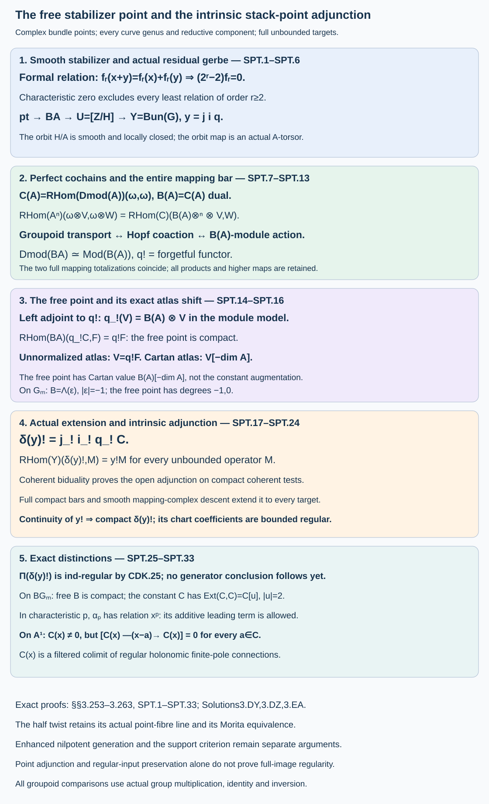
Figure 3.42. The top panels are the formal stabilizer argument and the full group-cochain/module comparison (SPT.1)–(SPT.13). The middle panel retains the free module and the atlas shift in (SPT.14)–(SPT.16). The lower panels show its locally closed and open extensions and the full-target adjunction (SPT.17)–(SPT.24). Compactness follows from continuity of the represented point restriction. The examples distinguish the free point from the constant object and distinguish point adjunctions from a point-generator theorem.
3.261. Exercise and solution: the multiplicative stabilizer
Exercise 3.DY. For \(A=\mathbf G_m\), compute \(B_A\), the actual point object, and its Cartan normalization. Compare it with the constant object and decide whether each is compact.
Solution 3.DY. The affine de Rham differential takes \(t^n\) to \(nt^{n-1}dt\). Its kernel is the constants, and only \(dt/t\) survives in degree one. The inclusion of the exterior algebra on \(dt/t\) in the de Rham complex is a Hopf quasi-isomorphism: the class is primitive under multiplication, its square is zero, and inversion changes its sign. Thus \[ C_A\simeq\Lambda(\eta),\quad |\eta|=1,\qquad B_A\simeq\Lambda(\epsilon),\quad |\epsilon|=-1. \tag{SPT.26} \] The actual point is the free module \(B_A\), with underlying cohomology in degrees \(-1,0\). Its Cartan atlas model is \(B_A[-1]\), by (SPT.15), with degrees \(0,1\). Hom from this point to any object is its unnormalized atlas complex. It is compact by the free-module adjunction.
The constant object instead corresponds to the augmentation module \(\mathbf C\). Resolve it by free generators \(e_n\), \(n\ge0\), of degrees \(-2n\), with \(de_0=0\) and \(de_n=\epsilon e_{n-1}\). The pairs \(e_n,\epsilon e_{n-1}\) contract for \(n>0\), leaving only \(e_0\). Hom into the augmentation has zero differential and gives \[ R\operatorname{Hom}_{B_A}(\mathbf C,\mathbf C) =\mathbf C[u],\qquad |u|=2. \tag{SPT.27} \] The degree-two shift of the resolution realizes multiplication by \(u\), so this also specifies the products. If the augmentation were compact, it would be a retract of a finite cell module. Hom from any such module to the augmentation is bounded, by finite cones and shifts of \(R\operatorname{Hom}_{B_A}(B_A,\mathbf C)=\mathbf C\). Equation (SPT.27) contradicts this. Thus the constant object is not compact. The point-fibre normalization is independently checked by \[ p_!\omega_{\mathbf G_m}=B_A, \qquad \omega_{\mathbf G_m}=\mathcal O[1]. \tag{SPT.28} \] Its degrees are \(-1,0\), agreeing with the free point rather than a shifted constant line.
3.262. Exercise and solution: where the formal argument uses characteristic zero
Exercise 3.DZ. Test the minimal-relation argument of §3.253 on \(\alpha_p\) over a field of characteristic \(p>0\). Compute its local dimension and cotangent dimension. Explain why the same relation cannot define an additive finite group scheme over \(\mathbf C\).
Solution 3.DZ. The coordinate algebra and coproduct are \[ k[x]/(x^p),\qquad \Delta x=x\otimes1+1\otimes x, \qquad (x+y)^p=x^p+y^p. \tag{SPT.29} \] The relation generates a Hopf ideal precisely because all intermediate binomial coefficients vanish. Its sole prime is \((x)\), so its Krull dimension is zero, whereas \[ \dim_k (x)/(x)^2=1. \tag{SPT.30} \] It is not regular and is not smooth. The minimal relation has degree \(p\); its leading form is additive. The scalar \(2^p-2\) in (SPT.3) is zero in the field, so that argument produces no contradiction.
Over \(\mathbf C\), a proposed additive relation of degree \(r\ge2\) instead has mixed coproduct terms, including \[ (x+y)^r-x^r-y^r =r x^{r-1}y+\cdots\ne0. \tag{SPT.31} \] The coefficient \(r\) is nonzero. More generally the diagonal substitution in (SPT.3) excludes every nonzero homogeneous additive leading relation of degree at least two. Thus the proof covers arbitrary finite-type complex stabilizers and makes no assertion of smoothness in positive characteristic.
3.263. Exercise and solution: point adjunction does not imply generation
Exercise 3.EA. On \(\mathbf A^1_{\mathbf C}\), give \(M=\mathbf C(x)\) its usual derivative action. Compute every closed-point extraordinary fibre. Is \(M\) zero? Is it in the full ind-regular category? Explain the consequence for a proposed point-generator argument without a support-dimension hypothesis.
Solution 3.EA. At \(a\in\mathbf C\), the point object is \(\delta_a=D/D(x-a)\). Its free operator resolution is right multiplication by \(x-a\) between two copies of \(D\), with the second in degree zero. Injectivity follows from the Weyl PBW domain calculation. Hence its full Hom into \(M\), and by the closed-immersion case of (SPT.19) its actual extraordinary fibre, is \[ a^!M\simeq[\,M\xrightarrow{x-a}M\,]=0. \tag{SPT.32} \] Multiplication by \(x-a\) is invertible in the rational function field, giving the asserted contraction. But \(M\ne0\), since it contains \(1\).
For every nonzero polynomial \(f\), the localization \(\mathbf C[x,1/f]\) with its derivative action is the direct image of the regular constant connection from the complementary open. The bounded regular four-map theorem makes it regular holonomic. Products of polynomials give a filtered system, and \[ M=\operatorname*{colim}_{f\ne0}\mathbf C[x,1/f] \in\operatorname{Ind}D^b_{\mathrm{rh}}(\mathbf A^1). \tag{SPT.33} \] All closed-point Hom complexes vanish on this nonzero ind-regular object. Thus the closed point objects do not generate even that full category. The intrinsic point adjunction is valid; generation requires further hypotheses. In particular an enhanced nilpotent generator proof must retain its dimension-bounded indicator theorem and its actual enhanced adjunction, rather than infer generation from point notation alone.
3.264. Enhanced coefficients and the full regular algebra
Retain the actual full Ran category \(\mathcal R\), restricted spectral category \(\mathcal A\), spectral functor \(L:\mathcal R\to\mathcal A\), full complex automorphic category \(\mathcal M\), and full Hecke-lisse subcategory \(\mathcal N\subset\mathcal M\). Its continuous unital \(\mathcal A\)-action is the one in (RSE.36), with the normalized comparison (NTR.14)–(NTR.16). Let \(R_{\mathcal R}\) be the actual unital commutative regular algebra of (KG.23). For a continuous symmetric monoidal \(f^*:\mathcal A\to\mathcal T\), define \[ K_{\mathcal T}=(\operatorname{Id}_{\mathcal R}\otimes f^*L)R_{\mathcal R}, \qquad \mathcal E_{\mathcal T}=\operatorname{Mod}_{K_{\mathcal T}} (\mathcal M\otimes\mathcal T). \tag{ESG.1} \] The algebra acts through the actual geometric action on \(\mathcal M\) and tensor on \(\mathcal T\). Its full free/forgetful adjunction is \[ F_{\mathcal T}:\mathcal M\otimes\mathcal T \rightleftarrows\mathcal E_{\mathcal T}:U_{\mathcal T}. \tag{ESG.2} \] The free algebra-action bar of (EP.8) constructs this presentable category, its objects and all mapping complexes. The forgetful functor preserves colimits. These are enhanced coefficient modules; a nilpotent support condition is not part of this definition.
3.265. Tensoring the regular-algebra adjunction by a module category
Put \(\mathcal C=\mathcal R\otimes\mathcal R\). The actual multiplication \(m_{\mathcal R}:\mathcal C\to\mathcal R\) has continuous \(\mathcal C\)-linear right adjoint \(\delta_{\mathcal R}\), by (SUL.27). Its monad is tensoring with the unital algebra \(R_{\mathcal R}\). Tensor this entire adjunction over \(\mathcal C\) by \(\mathcal M\otimes\mathcal T\), using its two specified source actions. The unit and counit tensor in every degree of the full balanced bar; their triangles remain the same natural transformations after realization. Thus we obtain a continuous adjunction \[ Q:\mathcal M\otimes\mathcal T \rightleftarrows (\mathcal M\otimes\mathcal T)\otimes_{\mathcal C}\mathcal R:V, \qquad VQ=K_{\mathcal T}\star(-). \tag{ESG.3} \] The right adjoint is conservative. Indeed any pure tensor with \(r\in\mathcal R\) can be written \[ d\boxtimes_{\mathcal C}r =d\boxtimes_{\mathcal C}m_{\mathcal R}(\mathbf1\boxtimes r) \simeq Q((\mathbf1\boxtimes r)\star d). \tag{ESG.4} \] The balanced tensor category is generated by these pure objects and their colimits. If \(Vx=0\), adjunction makes all maps from the displayed generating image to \(x\) vanish, so \(x=0\).
The augmented free-module bar now proves the monadic comparison: its realization becomes the split module bar after the continuous conservative \(V\); the inserted first unit contracts the augmentation. Conversely a module is reconstructed by realizing its free terms with the action faces. Both constructions are inverse on the entire action and mapping bars, exactly as in (SUL.28). Associative balancing gives \[ \begin{aligned} \mathcal E_{\mathcal T} &\simeq(\mathcal M\otimes\mathcal T) \otimes_{\mathcal R\otimes\mathcal R}\mathcal R\\ &\simeq\mathcal M\otimes_{\mathcal R}\mathcal T. \end{aligned} \tag{ESG.5} \] Under this actual equivalence the free module attached to \(m\boxtimes t\) is \(m\boxtimes_{\mathcal R}t\). The action maps are the tensored multiplication-adjunction maps. No monoidal structure on \(\mathcal M\) or compactness of the unit of \(\mathcal T\) has been assumed.
3.266. The continuous transpose on every free coefficient
Set \(\mathcal M_{\mathcal A}=\mathcal M\otimes_{\mathcal R}\mathcal A\), and let \(\mathsf D:\mathcal A\to\mathcal R\) be the actual continuous \(\mathcal R\)-module functor of (UID.2)–(UID.4). Its module natural equivalence is \(L\mathsf D\simeq\operatorname{Id}_{\mathcal A}\), (UID.6). Define \[ q=\operatorname{Id}_{\mathcal M}\otimes_{\mathcal R}L, \qquad j=\operatorname{Id}_{\mathcal M}\otimes_{\mathcal R}\mathsf D. \tag{ESG.6} \] The source \(\mathcal M\otimes_{\mathcal R}\mathcal R\) is identified with \(\mathcal M\). These functors are not being declared adjoints. Under (ESG.5) for \(\mathcal T=\mathcal A\), the precise formula for \(j\) is \[ j=(\operatorname{Id}_{\mathcal M}\otimes\Gamma_!)U_{\mathcal A}. \tag{ESG.7} \] Here \(\Gamma_!\) is the continuous functional (SDU.8), not ordinary sections of the generally noncompact spectral unit.
To verify the formula, use every free coefficient \(m\boxtimes a\). Its right side is action on \(m\) of \[ (\operatorname{Id}_{\mathcal R}\otimes\Gamma_!) \bigl(K_{\mathcal A}\otimes(\mathbf1\boxtimes a)\bigr) =\mathsf D(a). \tag{ESG.8} \] This is the actual full coend (UID.2), so agrees with the left side on the free object identified in (ESG.5). The agreement includes the action faces. Interior composition faces are precomposition on the coefficient and postcomposition on the represented compact Ran object, precisely the two faces in (UID.3). A source-action face moves \(r\) from the automorphic factor to the spectral factor; its comparison is exactly \(r\otimes\mathsf D(a)\simeq\mathsf D(L(r)\otimes a)\), (UID.4). The algebra face is the multiplication counit of the same \(m_{\mathcal R}\dashv\delta_{\mathcal R}\) used in (ESG.3); its image in the coefficient coend is that same ordered evaluation. The degeneracy is its adjunction unit. Thus the complete free-module and balancing bars have identical faces and degeneracies under the comparison. The module coherence of (UID.4) identifies their iterated homotopies. Realization proves (ESG.7) on every object and every transformation. Checking only \(a=\mathbf1\) would not suffice, since that unit need not generate \(\mathcal A\).
3.267. Actual landing and both inverse identities
For every \(F\in\mathcal E_{\mathcal A}\), not just a free object, (BLI.20)–(BLI.21) give its underlying enhanced object the full parameterized eigen-comparison. Apply the continuous \(\Gamma_!\) in its independent spectral factor. It commutes with the geometric Hecke action and retains the lifted ind-connection coefficient. Hence \[ \mathrm H_{\vec V}(jF) \in\mathcal M\otimes\mathscr I_X^{\otimes I} \quad\text{for every finite tuple }\vec V. \tag{ESG.9} \] All finite-point, tensor, collision and higher comparisons are those of (BLI.21). Thus \(j\) lands in the full \(\mathcal N\).
Tensoring the module identity (UID.6) gives the first identity below. The second is the actual geometric kernel identity (UID.8), (UID.14): \[ qj\simeq\operatorname{Id}_{\mathcal M_{\mathcal A}}, \qquad jq\simeq\Pi. \tag{ESG.10} \] Finally (RSE.37), with (NTR.14)–(NTR.16), gives \(\Pi|_{\mathcal N}\simeq\operatorname{Id}_{\mathcal N}\). Consequently the full landing just proved and both inverse identities give \[ \mathcal M_{\mathcal A} \underset{q|_{\mathcal N}}{\overset{j}{\rightleftarrows}} \mathcal N \quad\text{as inverse equivalences}. \tag{ESG.11} \] The conclusion uses both identities on the full subcategory. It is not a deduction of full faithfulness from a one-sided section.
3.268. The existing spectral action and arbitrary coefficient stages
The equivalences in (ESG.11) are initially \(\mathcal R\)-linear. The actual multiplication equivalence (SUL.30) implies, for every unital \(\mathcal A\)-module \(\mathcal V\), \[ \mathcal A\otimes_{\mathcal R}\mathcal V \simeq(\mathcal A\otimes_{\mathcal R}\mathcal A) \otimes_{\mathcal A}\mathcal V \simeq\mathcal V. \tag{ESG.12} \] Extension by \(\mathcal A\otimes_{\mathcal R}-\) is left adjoint to restriction of module categories: this is the full balanced-bar universal property. Equation (ESG.12) is its counit. The same adjunction on module functors and their coherent transformations makes restriction fully faithful on those entire mapping categories. Thus the \(\mathcal R\)-linear inverse functors in (ESG.11) have unique compatible \(\mathcal A\)-linear structures. They match the existing unital spectral action of (RSE.36).
Associative balancing now proves, for the actual enhanced coefficient category, \[ \mathcal E_{\mathcal T} \simeq\mathcal M\otimes_{\mathcal R}\mathcal T \simeq\mathcal M_{\mathcal A}\otimes_{\mathcal A}\mathcal T \simeq\mathcal N\otimes_{\mathcal A}\mathcal T. \tag{ESG.13} \] These are equivalences with their specified free-object functors, not comparisons after scalar fibres. For an \(\mathcal A\)-module \(\mathcal N\), (ESG.12) also gives \[ \mathcal N\otimes_{\mathcal R}\mathcal T \simeq\mathcal N\otimes_{\mathcal A}\mathcal T. \tag{ESG.14} \] The functor on enhanced module categories induced by the full inclusion \(\mathcal N\hookrightarrow\mathcal M\) is the equivalence (ESG.13): after (ESG.5) and balancing it is \(q|_{\mathcal N}\otimes_{\mathcal A}\operatorname{Id}\). In particular it identifies the actual algebra-module forgetful maps with their restrictions on \(\mathcal N\).
3.269. The graph algebra and enhanced adjunction
Let \(f:Z\to\mathcal Z^{\mathrm{restr}}\) be affine, with \(\mathcal T=\operatorname{QCoh}(Z)\), and suppose \(\mathbf1_{\mathcal T}\) is compact. The actual commutative algebra identity (RDI.16)–(RDI.19), (SUL.25), pulled back on its second factor, identifies the restricted acting algebra with the graph algebra: \[ (L\otimes f^*L)R_{\mathcal R} \simeq(\gamma_f)_*\mathcal O_Z, \qquad \gamma_f:Z\to\mathcal Z^{\mathrm{restr}}\times Z. \tag{ESG.15} \] This preserves multiplication, unit and full derived algebra maps. On each affine pair it is the tautological tensor-isomorphism algebra of (RDI.18); its quotient-frame maps are the same descent maps. For the mixed exterior category, write the affine map as its actual algebra-module category over the target, by (CSD.21). Tensor its full free-module bar by the first factor of (SUL.21). This identifies the mixed exterior category with the same algebra modules over the actual product, including all action faces. Affine base change of the diagonal is then the graph: on an affine test it is the identical derived tensor product, and these identifications descend with the same frame nerve. The supported comparisons are (SUL.24)–(SUL.26). Thus the graph-module functor is precisely (ESG.13).
Put \(\Gamma_Z=R\operatorname{Hom}_{\mathcal T}(\mathbf1,-)\). Compactness makes it continuous. Tensor-with-unit \(s_Z:m\mapsto m\boxtimes\mathbf1\) is left adjoint to \(\operatorname{Id}_{\mathcal M}\otimes\Gamma_Z\): on exterior compact generators this is the tensor–Hom adjunction, and their full bars extend the mapping identity to all inputs. Define \[ \begin{gathered} P_Z=F_{\mathcal T}s_Z,\qquad J_Z=(\operatorname{Id}_{\mathcal M}\otimes\Gamma_Z)U_{\mathcal T},\\ R\operatorname{Hom}_{\mathcal E_{\mathcal T}}(P_Zm,F) \simeq R\operatorname{Hom}_{\mathcal M}(m,J_ZF). \end{gathered} \tag{ESG.16} \] Under the actual equivalence (ESG.13), the right adjoint is \[ J_Z=\iota\circ J_Z^{\mathcal N},\qquad J_Z^{\mathcal N}=\operatorname{Id}_{\mathcal N} \otimes_{\mathcal A}f_*. \tag{ESG.17} \] To check its functor, on every free graph module use the graph projection formula and \(p_1\gamma_f=f\). Integrating its underlying coefficient by \(\Gamma_Z\) is exactly \(f_*\) followed by the existing \(\mathcal A\)-action on \(\mathcal N\). The multiplication and action maps agree by the same actual graph algebra; their full free-module bars extend the comparison to all objects. This proves the adjunction with its maps. Ordinary \(\Gamma_Z\) is used only on this compact-unit stage; it is not substituted for \(\Gamma_!\) on the whole restricted spectral category.
3.270. Actual finite equivariant Koszul stages
Use the actual bounded connective framed Betti algebra \(B\) of (RSE.11), with reductive frame group \(H\). The full restricted category is the supported equivariant category (SUL.17), with supported unit \(C_S\), not the ambient unit \(B\). For every invariant closed coefficient locus use its finite rational generating space \(W_E\subset I_E\subset H^0(B)\), and its full lift in (SUL.14)–(SUL.15). Define \[ P_E^{\mathrm{alg}}=\operatorname{Sym}(W_E)\longrightarrow B, \qquad K_E=B\otimes^L_{P_E^{\mathrm{alg}}}\mathbf C, \qquad Z_E=[\operatorname{Spec}K_E/H]. \tag{ESG.18} \] Here \(P_E^{\mathrm{alg}}\) denotes an algebra, distinct from the enhanced functor \(P_Z\). The actual finite equivariant Koszul resolution gives \[ K_E|_B\simeq B\otimes\Lambda(W_E[1]), \qquad d(w[1])=\widetilde w. \tag{ESG.19} \] It retains the chosen lift and its whole equivariant algebra bar. No algebra map \(H^0(B)\to B\) is assumed. The underlying \(B\)-module is finite perfect. Since \(B\) is bounded and the exterior degree is finite, \(K_E\) is bounded; its degree-zero algebra is the finite-type quotient \(H^0(B)/I_E\). Powers or finite unions of coefficient loci are included by their own finite invariant generating spaces, as in (SUL.1)–(SUL.16).
The reduced affine scheme of \(K_E\) maps into this closed coefficient locus. It therefore factors through its actual formal completion, and hence through the restricted union. This defines \[ f_E:Z_E\longrightarrow\mathcal Z^{\mathrm{restr}}, \qquad \mathcal T_E=\operatorname{QCoh}(Z_E). \tag{ESG.20} \] The map is affine. A formal completion along a closed reduced subspace, and the filtered union here, are subfunctors of the ambient prestack: on a test affine the additional reduced-image condition has either an empty or contractible fibre. Thus base change of \(f_E\) to an affine restricted point is the ordinary derived affine fibre product with \(\operatorname{Spec}K_E\), retaining all nilpotent parameters. The quotient frame changes are the same \(H\)-torsor maps. Consequently \[ \mathcal T_E\simeq\operatorname{Mod}_{K_E}(\operatorname{QCoh}(BH)), \qquad f_{E,*}\text{ is restriction of modules}. \tag{ESG.21} \] Every such underlying module is supported in the closed locus: each ideal generator acts nullhomotopically on the Koszul algebra and on its modules, so its localization is zero. This is exactly the supported category, by (SUL.2), and the affine-map module comparison is the full bar of (CSD.21).
3.271. Continuous adjoints and the supported unit
The unit of \(\mathcal T_E\) is compact. Its mapping complex is rational \(H\)-invariants of the underlying module complex. Those invariants are the exact continuous Reynolds projection of The moduli stack of bundles, §4.5, and (SUL.14). More generally \(K_E\otimes V\), for finite rational \(V\), are compact generators, by the same full equivariant Hom and free-bar proof as (SUL.18)–(SUL.19).
Write \(a\) for the underlying supported equivariant \(B\)-module of an object of \(\mathcal A\). The actual affine functors have both adjunctions \[ \begin{gathered} f_E^*(a)=K_E\otimes_B^La,\qquad f_E^*(\mathbf1_{\mathcal A})=K_E,\\ f_E^*\dashv f_{E,*}\dashv f_E^!, \qquad f_E^!(a)=R\operatorname{Hom}_B(K_E,a). \end{gathered} \tag{ESG.22} \] They are obtained by derived tensor–Hom on the full equivariant free resolutions, including every \(K_E\)-action map. The left unit identity holds because \(K_E\otimes_B C_S\simeq K_E\). Equivalently \(K_E\) is an algebra in the supported monoidal category: its unit is the composite \(C_S\to B\to K_E\). Modules for this algebra agree with ordinary equivariant \(K_E\)-modules. Indeed those ordinary modules are already supported; conversely the internal unit identity becomes the ordinary \(B\)-unit identity after cancelling the isomorphism \(C_S\otimes_B a\simeq a\).
Finite perfect duality gives \[ f_E^!(a)=K_E^{\vee_B}\otimes_B^La. \tag{ESG.23} \] This proves continuity and retains its equivariant determinant factor and cohomological shifts. The pushforward is continuous and conservative since it forgets an algebra action on a full underlying module. Both adjoints and their units and counits are \(\mathcal A\)-linear. For example, for any \(b\in\mathcal A\), finite dual tensor gives \[ \begin{gathered} f_E^!(a\otimes_{\mathcal A}b) \simeq f_E^!(a)\otimes_{K_E}^Lf_E^*(b),\\ f_{E,*}(Q\otimes_{K_E}^Lf_E^*b) \simeq f_{E,*}Q\otimes_{\mathcal A}b. \end{gathered} \tag{ESG.24} \] These are the actual finite tensor–Hom and projection maps on the free resolutions; their interchange signs and evaluation identities identify all iterated comparisons. Rational equivariance is retained throughout.
3.272. Relative stage pushforwards and their generating images
Tensor the two continuous \(\mathcal A\)-linear adjunctions (ESG.22) by the unital module category \(\mathcal N\). Their units, counits and triangle identities descend through the full relative bar. Thus \[ \operatorname{Id}_{\mathcal N}\otimes f_E^* \dashv J_E^{\mathcal N} \dashv\operatorname{Id}_{\mathcal N}\otimes f_E^!. \tag{ESG.25} \] The last right adjoint is continuous, so \(J_E^{\mathcal N}\) preserves compact objects, without assuming beforehand that \(\mathcal N\) is compactly generated.
It is conservative. The affine module description gives \[ \mathcal N\otimes_{\mathcal A}\mathcal T_E \simeq\operatorname{Mod}_{K_E}(\mathcal N), \qquad J_E^{\mathcal N}=\text{forgetful}. \tag{ESG.26} \] This is again the full change-of-coefficients free-bar proof of (ESG.3)–(ESG.5), applied to the algebra \(K_E\) in \(\mathcal A\). Alternatively free \(K_E\)-modules generate \(\mathcal T_E\) from the image of \(f_E^*\), and the same relative action bar generates the tensor category from the relative image; adjunction then proves conservativity. A module with zero underlying object is zero.
The stage pushforwards jointly generate \(\mathcal A\): the compact generators (SUL.19) are exactly \[ f_{E,*}(K_E\otimes V)=K_E\otimes V. \tag{ESG.27} \] The unit \(C_S\), though generally noncompact, is a colimit of its full generator bars. Acting on any \(n\in\mathcal N\), and using the actual projection formula in (ESG.24), therefore gives \[ \mathcal N=\operatorname{Loc}\{\operatorname{Im}J_E^{\mathcal N}:E\}. \tag{ESG.28} \] Here every term \(f_{E,*}Q\star n\) is \(J_E^{\mathcal N}\) of the balanced object formed from \(n\) and \(Q\). The equality follows from the unital action and continuity, not from compactness of the spectral unit.
3.273. Compact generation of the full Hecke-lisse category
For these actual stages let \(P_E=P_{Z_E}\) and \(J_E=\iota J_E^{\mathcal N}\) be (ESG.16)–(ESG.17). The latter is continuous and conservative: its relative factor is (ESG.26), and \(\iota\) is a full colimit-preserving inclusion. The enhanced adjunction is \[ R\operatorname{Hom}_{\mathcal E_{\mathcal T_E}}(P_Em,F) \simeq R\operatorname{Hom}_{\mathcal M}(m,J_EF). \tag{ESG.29} \] Choose the full compact generating set \(\{c_\alpha\}\) of \(\mathcal M\) constructed in §1.15. Then \[ \{P_Ec_\alpha\}_\alpha \text{ is a compact generating set of }\mathcal E_{\mathcal T_E}. \tag{ESG.30} \] Compactness follows from continuity of \(J_E\). If every displayed Hom into \(F\) vanishes, the full generator test in \(\mathcal M\) makes \(J_EF=0\), and conservativity gives \(F=0\). This includes all unbounded objects and every derived mapping degree.
By (ESG.25) their images \(J_E^{\mathcal N}P_Ec_\alpha\) are compact in \(\mathcal N\). Equations (ESG.28) and (ESG.30), and continuity of the stage pushforward, show that \[ \{J_E^{\mathcal N}P_Ec_\alpha:E,\alpha\} \text{ compactly generates }\mathcal N. \tag{ESG.31} \] Thus compact generation of the full complex Hecke-lisse category is proved. Its identification with a geometrically defined nilpotent singular-support category remains a separate question. The compact generators \(c_\alpha\) used here need not be regular; no regularity conclusion follows from this compact-generation proof alone.
3.274. Regular inputs for the actual stage operators
The full automorphic composite of an enhanced stage is \[ T_E(m):=J_EP_E(m) =(\operatorname{Id}_{\mathcal M}\otimes\Gamma_{Z_E}) \bigl(K_{\mathcal T_E}\star(m\boxtimes\mathbf1)\bigr). \tag{ESG.32} \] It is generally a monad, rather than an idempotent. Apply (CDK.11) to its actual regular kernel and pull the second spectral coefficient to \(\mathcal T_E\). The universal coefficients are the full images of (BLI.16) in \(\mathcal T_E\otimes\mathscr I_X\). The same proper diagonal contraction as (CDK.13) recovers these coefficients with the normalized shifts. Since \(\Gamma_{Z_E}\) is continuous, it passes through the full kernel colimit as in (CDK.15)–(CDK.16). Every resulting parameter lies in the original ind-connection category, with its complete action bar.
For finite representation and bounded finite-connection generators the stage action preserves chartwise ind-regular inputs by the finite Hecke-stratum, bounded regular coefficient, finite localization and proper-integration proof (CDK.17)–(CDK.24). Its full parameter bars and outer kernel colimit preserve that subcategory. We obtain \[ T_E(\mathcal M_{\mathrm{reg}}) \subset\mathcal M_{\mathrm{reg}}. \tag{ESG.33} \] This uses ordinary sections only on the compact-unit finite stage. The whole-category projector still uses the distinct continuous \(\Gamma_!\).
3.275. The exact additional point-detection hypothesis
Suppose a set of original-complex bundle points \(\{y_i\}\) detects the full \(\mathcal N\) by extraordinary fibres. This is an additional hypothesis: (SPT.32)–(SPT.33) shows it is false on all ind-regular objects without a support constraint. For \(F\in\mathcal E_{\mathcal T_E}\), the two actual adjunctions give \[ R\operatorname{Hom}_{\mathcal E_{\mathcal T_E}}(P_E\delta_{y_i}^!,F) \simeq y_i^!J_EF. \tag{ESG.34} \] The SPT deltas are compact and regular. Thus the \(P_E\delta_{y_i}^!\) are compact; detection on \(\mathcal N\) and conservativity of \(J_E\) make them generate each enhanced stage. Their relative pushforwards are compact by (ESG.25), and jointly generate \(\mathcal N\) by (ESG.28). Their automorphic images are regular by (ESG.33). Colimit closure then proves the conditional implication \[ \bigl(\{y_i^!\}\text{ detects }\mathcal N\bigr) \quad\Longrightarrow\quad \mathcal N\subset\mathcal M_{\mathrm{reg}}. \tag{ESG.35} \] The dimension-bounded nilpotent indicator theorem of §§3.16–3.22 can supply this detection only after its singular-support hypotheses are verified for \(\mathcal N\). The actual enhanced geometric field-point comparison in GFP.17–GFP.54 gives the unconditional original-complex full-image regularity theorem GFP.55–GFP.56. Its converse from all independent nilpotent support is GZR.33 over the complex numbers in every genus.
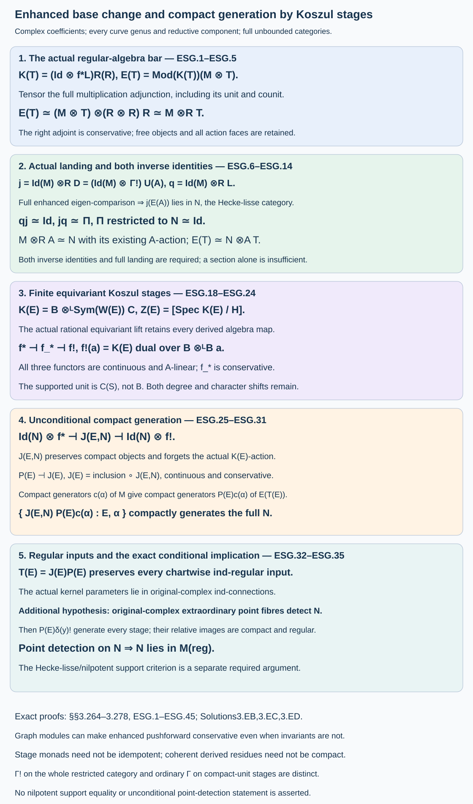
Figure 3.43. The upper comparison is the full regular-algebra bar (ESG.3)–(ESG.5). The middle pair retains both inverse identities and actual landing, identifying the existing Hecke-lisse category with spectral base change (ESG.7)–(ESG.14). The finite equivariant Koszul stages give the continuous adjoints and conservative relative pushforward in (ESG.18)–(ESG.26), hence the unconditional compact generators (ESG.31). The final regular-generator implication (ESG.34)–(ESG.35) explicitly assumes point detection on that full category.
3.276. Exercise and solution: graph modules and a non-idempotent stage
Exercise 3.EB. In the abstract coefficient model \(\mathcal R=\mathcal A=\mathcal M=\operatorname{Rep}(\mathbf G_m)\), first take \(f=\operatorname{Id}\). Compute the enhanced graph category and \(J_f\), although invariant sections on \(\mathcal A\) are not conservative. Then take the point map with \(\mathcal T=\operatorname{Vect}\). Compute its two enhanced functors and decide whether the stage monad is idempotent. This is a coefficient model, with no curve claim.
Solution 3.EB. Write \(\mathbf C_a\) for a weight line. For the identity stage its graph algebra is \[ K_{\mathcal A}=\bigoplus_{n\in\mathbf Z} \mathbf C_n\boxtimes\mathbf C_{-n} =\mathbf C[u,u^{-1}],\quad\mathrm{wt}(u)=(1,-1). \tag{ESG.36} \] Multiplication by \(u\) identifies every component of a module with the component whose second weight is zero, retaining the sum of the two weights. Conversely, a complex \(W=\bigoplus_a W_a\) gives components \(F_{a+n,-n}=W_a\), with \(u\) the shift identity. These are inverse on full complexes and maps. Invariants on the second factor recover \(W\), so the enhanced category is \(\mathcal A\) and \(J_f\) is the identity. The ordinary invariant functor on an arbitrary external object can vanish, but an invertible graph action forces all the shifted weight components; it cannot be ignored.
For the point stage the same Laurent algebra has only its first weight. Its equivariant modules are determined by the weight-zero complex, by the same invertible-shift argument. The enhanced category is therefore \(\operatorname{Vect}\), and \[ P_f(W)=\bigoplus_a W_a,\qquad J_f(V)=\bigoplus_{n\in\mathbf Z}\mathbf C_n\otimes V. \tag{ESG.37} \] Indeed the full graded module mapping complex is \[ R\operatorname{Hom}_{\mathcal A}(W,J_fV) =\prod_a R\operatorname{Hom}_{\mathbf C}(W_a,V) =R\operatorname{Hom}_{\mathbf C}(P_fW,V). \tag{ESG.38} \] The products are retained for arbitrary unbounded weight complexes. Thus this is the actual enhanced adjunction. It is continuous and conservative on its right side. Its monad sends the unit to \(B=\bigoplus_n\mathbf C_n\), whereas \[ \dim(B_0)=1,\qquad \dim((B\otimes B)_0)=\aleph_0. \tag{ESG.39} \] The pairs \((n,-n)\) give the second dimension. Hence the stage monad is not idempotent; conservativity of an enhanced pushforward does not assert idempotence of its monad.
3.277. Exercise and solution: the equivariant Koszul dual shift
Exercise 3.EC. Let \(B=\mathbf C[t]\), with \(t\) of rational \(\mathbf G_m\)-weight one, and let \(\mathcal A\) be its \(t\)-supported equivariant category. For \(K=B/(t)\), compute \(f^*\) and \(f^!\) on the actual supported unit. Retain both the cohomological and character shifts.
Solution 3.EC. The finite equivariant free resolution and its dual give \[ [B e\xrightarrow{t}B],\quad |e|=-1,\quad\mathrm{wt}(e)=1, \qquad K^{\vee_B}=K\otimes\mathbf C_{-1}[-1]. \tag{ESG.40} \] The dual generator is in degree one and weight minus one; its cohomology is the corresponding quotient line. The unit is \(C_t=\operatorname{fib}(B\to B[t^{-1}])\). Its supported tensor identity with \(K\) yields \[ f^*C_t=K,\qquad f^!C_t=K\otimes\mathbf C_{-1}[-1]. \tag{ESG.41} \] Thus the two adjoints differ even on the unit, in both shifts. For the target \(\mathcal T=\operatorname{Rep}(\mathbf G_m)\), the unit is compact but invariant sections are not conservative: \[ \Gamma_{\mathcal T}(\mathbf C_1)=0, \qquad \mathbf C_1\ne0. \tag{ESG.42} \] The pushforward itself retains the whole weight representation and is conservative. Its finite-dual right adjoint, rather than an unjustified identification with \(f^*\), is what makes relative stage pushforward preserve compact objects.
3.278. Exercise and solution: a derived stage has nonperfect coherent objects
Exercise 3.ED. Let \(B=\mathbf C[t]\otimes\Lambda(\zeta)\), \(|\zeta|=-1\), and use the \(t\)-supported category. Compute the finite Koszul stage at \(t=0\). Compare its unit with its classical residue field, and decide which compactness assertion the stage pushforward proves.
Solution 3.ED. Killing \(t\) by its actual Koszul cell gives \[ K=B\otimes\Lambda(e),\qquad |e|=-1, \quad de=t, \qquad K\simeq\Lambda(\zeta). \tag{ESG.43} \] It is a finite two-cell perfect \(B\)-module, so its pushforward is compact in the supported category. The unit of \(\operatorname{Mod}_K\) is the free module \(K\), hence compact. In contrast the augmentation \(\mathbf C\) has the exterior resolution from Solution 3.DY, with \(\zeta\) in place of \(\epsilon\), and \[ R\operatorname{Hom}_K(\mathbf C,\mathbf C) =\mathbf C[u],\qquad |u|=2. \tag{ESG.44} \] A finite cell retract has bounded Hom into the augmentation, so this augmentation is not compact, though it has bounded finite-dimensional cohomology. Tensor the ordinary two-term \(t\)-resolution with the exterior resolution to compute its ambient Hom: \[ R\operatorname{Hom}_B(\mathbf C,\mathbf C) =\Lambda(\alpha)\otimes\mathbf C[u], \qquad |\alpha|=1, |u|=2. \tag{ESG.45} \] It is unbounded, so the augmentation is not a finite perfect \(B\)-module. The supported compact objects are finite cell retracts of the perfect Koszul generators (SUL.19), hence are ambient perfect. Thus this pushed augmentation is not compact there either. The theorem that stage pushforward preserves compact objects applies to the actual compact objects of the derived stage; it does not turn every coherent or classical residue object into a compact generator.
3.279. A reduced cotangent fibre and the exact local hypothesis
Let \(f:X\to Y\) be a morphism of smooth varieties over an algebraically closed characteristic-zero field, with \(\dim X=n\) and \(\dim Y=m\). Fix \(x\in X\), \(y=f(x)\), and \(\eta\in T_y^*Y\). Put \(\xi=df_x^*\eta\). Let \(C\subset T^*X\) be a smooth Lagrangian subvariety near \((x,\xi)\). Smoothness and the Lagrangian condition are hypotheses on this component. Form the actual scheme fibre product \[ D_C=(df^*)^{-1}(C)\subset X\times_YT^*Y, \qquad q:D_C\longrightarrow T^*Y, \qquad d=(x,\eta). \tag{RTM.1} \] Assume that the fibre of \(q\) at \((y,\eta)\) has zero Zariski tangent at \(d\): \[ \ker\bigl(dq_d:T_dD_C\to T_{(y,\eta)}T^*Y\bigr)=0. \tag{RTM.2} \] In particular an isolated reduced point of that scheme fibre satisfies the hypothesis. An isolated point of its underlying reduced set does not suffice. Conversely, for a finite-type scheme fibre, zero tangent makes the point isolated and reduced: its maximal ideal satisfies \(\mathfrak m/\mathfrak m^2=0\), so the finite-generator Nakayama argument in §3.26 gives \(\mathfrak m=0\), and the point is an open component after shrinking. All fibre products in (RTM.1) retain their scheme structures.
3.280. The projected tangent is isotropic
Choose étale coordinates at the two points, centred at zero. Write \[ F=df_x:k^n\to k^m,\qquad B=\operatorname{Hess}_x\!\left(\sum_{a=1}^m\eta_a f_a\right), \qquad L=T_{(x,\xi)}C. \tag{RTM.3} \] The matrix \(B\) is symmetric; here the coordinate coefficients \(\eta_a\) are held fixed when taking the Hessian. Differentiating the actual cotangent pullback, including its change with the source point, gives \[ E:=T_dD_C =\{(v,\alpha):(v,F^t\alpha+Bv)\in L\}. \tag{RTM.4} \] This is equality of tangent spaces of the scheme fibre product, obtained by its dual-number test. It does not replace a nonreduced fibre by its reduction. The other tangent map is \[ dq_d(v,\alpha)=(Fv,\alpha),\qquad W=dq_d(E). \tag{RTM.5} \] Use the symplectic convention \(\omega=d\theta=d\xi\wedge dx\). For \((v,\alpha),(w,\beta)\in E\), symmetry cancels the two Hessian terms and gives \[ \begin{aligned} &\omega_X\bigl((v,F^t\alpha+Bv),(w,F^t\beta+Bw)\bigr)\\ &\hspace{12mm}=\alpha(Fw)-\beta(Fv)\\ &\hspace{12mm}=\omega_Y\bigl((Fv,\alpha),(Fw,\beta)\bigr)=0. \end{aligned} \tag{RTM.6} \] The last equality is the isotropy of \(L\). Hence \(W\) is isotropic. The nondegenerate symplectic pairing identifies the annihilator of a subspace of dimension \(r\) with a space of dimension \(2m-r\); since an isotropic subspace is contained in its annihilator, \(r\le m\). Thus \[ \dim W\le m. \tag{RTM.7} \] This argument proves the tangent-dimension bound without assuming that \(D_C\) itself is smooth or reduced. The injectivity in (RTM.2) is used in the next step.
3.281. A quadratic target test is transverse on the source
The symmetric-graph construction (IS.1)–(IS.2), applied to \(W\subset T_yY\oplus T_y^*Y\), supplies a symmetric form \(Q:T_yY\to T_y^*Y\) such that \[ W\cap\operatorname{graph}(Q)=0. \tag{RTM.8} \] In the chosen target coordinates \(z\), set \[ g(z)=\sum_a\eta_a z_a+\tfrac12\sum_{a,b}Q_{ab}z_az_b, \qquad h=g\circ f. \tag{RTM.9} \] Then \(g(y)=h(x)=0\), \(dg_y=\eta\), and \(dh_x=\xi\). The chain rule with its second-derivative term is \[ H:=\operatorname{Hess}_x h=B+F^tQF. \tag{RTM.10} \] Suppose \((v,Hv)\in L\). Taking \(\alpha=QFv\) puts \((v,\alpha)\) in \(E\), and \[ dq_d(v,\alpha)=(Fv,QFv) \in W\cap\operatorname{graph}(Q). \tag{RTM.11} \] It is zero by (RTM.8). Injectivity in (RTM.2) then makes \(v=0\). Since both tangent spaces have dimension \(n\), we have proved the full transversality statement \[ \operatorname{graph}(dh)\pitchfork C \quad\text{at }(x,\xi). \tag{RTM.12} \] The term \(B\) cannot be omitted. Even when \(df_x=0\), it can be the entire nondegenerate source Hessian.
The conclusion is independent of the coordinate calculation. The schemes \(D_C\), its projection \(q\), and its tangent kernel are intrinsic. In any coordinates (RTM.4) differentiates those same maps, and the symplectic identity (RTM.6) differentiates the same canonical one-forms. The chosen quadratic polynomial depends on the coordinates, as permitted by this existence theorem; the resulting intrinsic graph is transverse to the original component.
3.282. Finite simultaneous choices and an étale Morse normal form
The good forms \(Q\) form a nonempty Zariski-open subset of the affine space of symmetric forms. Indeed the linear map \((v,\alpha)\mapsto\alpha-QFv\) on \(E\) must be injective. In fixed bases this means that at least one maximal minor is nonzero, a polynomial open condition; (RTM.8) proves nonemptiness. Consequently the same \(Q\) can work for finitely many smooth Lagrangian components satisfying (RTM.2): intersect their finitely many nonempty opens. The parameter space is an affine space over an infinite field, so the product of their nonzero minor polynomials is nonzero and has a nonvanishing value. No assertion about an arbitrary infinite family of components follows.
Suppose now that \(C=T_S^*X\) near the point, for a smooth locally closed subvariety \(S\) of dimension \(d\). In adapted coordinates \((a,b)\), \(S=\{b=0\}\). Its conormal tangent imposes \(\delta b=0\) and \(\delta\xi_a=0\). Thus (RTM.12) says exactly \[ d(h|_S)_x=0,\qquad \det\operatorname{Hess}_x(h|_S)\ne0. \tag{RTM.13} \] Here is the algebraic local normal form, including its coordinate extension. In the local ring of \(S\), choose parameters \(a\). Criticality puts \(h|_S\) in their squared ideal, so after symmetrizing its coefficients, \[ h|_S=a^t A(a)a,\qquad A(a)^t=A(a), \qquad \det A(0)\ne0. \tag{RTM.14} \] After a constant change of basis over the algebraically closed field, take \(A(0)=1\). To diagonalize over the local ring, pivot on the first diagonal entry, a unit, and subtract its multiples from the other rows and the same multiples from the columns. This cancels the first off-diagonal row and column and leaves a smaller symmetric matrix with invertible constant term. Induction gives \(A=T^t\operatorname{diag}(u_1,\ldots,u_d)T\), with \(T\) invertible and each \(u_i(0)=1\). Adjoin the chosen roots \(r_i^2=u_i\), \(r_i(0)=1\). The derivative \(2r_i\) is a unit, so these are étale local extensions; the square-zero lifting follows explicitly by replacing a lift \(r\) by \(r+(u-r^2)/(2r)\). The coordinates \[ w=\operatorname{diag}(r_i)T a, \qquad h|_S=\sum_{i=1}^{d}w_i^2 \tag{RTM.15} \] have invertible differential at the point. Here is the relative lifting check. Smoothness of \(S\) first lifts a point across a square-zero extension. An error in the desired \(w\)-values can then be corrected uniquely by its tangent vector, since the displayed Jacobian is invertible. The same argument applied to the difference of two lifts proves uniqueness. Finite presentation makes this a formally étale coordinate map, using the definitions and chart lifting in Smooth morphisms, §1. For complex varieties its local analytic branch is a coordinate chart. The choice of roots and ordered coordinates is retained; it does not canonically orient the resulting vanishing-cycle line.
3.283. The bounded coefficient and its exact cycle degree
Now work on complex varieties with complexes of complex vector spaces as coefficients. Use the perverse-normalized cycle convention \[ \Phi_hF=\operatorname{Cone}(i^*F\to\psi_hF)[-1]. \tag{RTM.16} \] Consider the actual local sheaf model \(F=j_*M_S[d]\), where \(j:S\hookrightarrow X\) is closed on the chosen neighbourhood and \(M\) is a bounded coefficient complex, constant there. This is an assumption on the local object, not an assertion that every sheaf with a given characteristic component has this form on an ordinary neighbourhood. For a local system, restrict to a coordinate neighbourhood where it is constant, retaining its fibre.
We give the quadratic calculation with its unit. On the universal cover of the punctured parameter, write \(\lambda=r e^{i\theta}\) with a lifted argument. In a small ball of \(\mathbb C^d\), the fibre \(\sum w_i^2=\lambda\) has coordinates \(e^{-i\theta/2}w=u+iv\), satisfying \[ |u|^2-|v|^2=r,\qquad u\cdot v=0, \qquad r+2|v|^2<\epsilon^2. \tag{RTM.17} \] Put \(s=u/\sqrt{r+|v|^2}\). Then \(s\in S^{d-1}\), \(v\in s^\perp\), and \(|v|^2<(\epsilon^2-r)/2\). Scaling \(v\) to zero and replacing \(u\) by \(\sqrt{r+t^2|v|^2}s\) gives a deformation retraction, preserving the lifted parameter. Its parameter half-plane is contractible. These retractions commute with shrinking the ball on their zero sections. The ordinary-cover section complexes and their constant-section unit are therefore \[ \psi_{\sum w_i^2}(M)_0 \simeq R\Gamma(S^{d-1};M),\qquad M\longrightarrow R\Gamma(S^{d-1};M). \tag{RTM.18} \] The constant-coefficient section and homotopy comparisons here are the singular-cochain resolution in Sheaf cohomology and singular cohomology on manifolds, §1. The reduced sphere complex is \(M[1-d]\): for \(S^0\) its unit is the diagonal into \(M\oplus M\); for higher spheres the two contractible hemisphere cover and its equatorial intersection give this formula inductively by the section Mayer–Vietoris triangle. The finite free sphere complex retains the same maps after tensoring with any bounded \(M\). Consequently \[ \operatorname{Cone}\bigl(M\to R\Gamma(S^{d-1};M)\bigr) \simeq M[1-d]. \tag{RTM.19} \] For the local closed embedding, sections of the direct image on an open set are the sections on its intersection with \(S\). The same statement holds on the pulled-back covering space and at the zero fibre. Thus the nearby section complexes, their central units, and their cones are precisely those of the restricted function on \(S\). Combining this comparison, its degree, (RTM.16), and the input shift \([d]\) gives \[ (\Phi_h j_*M_S[d])_x \simeq M\otimes\mathfrak o_{h,S}. \tag{RTM.20} \] The one-dimensional line \(\mathfrak o_{h,S}\) is in degree zero. The chosen ordered Morse coordinates identify it with the reduced sphere orientation coefficient; changing the coordinates carries this line by the induced orientation map. It has not been given an artificial canonical basis. In particular (RTM.20) is nonzero exactly when \(M\ne0\).
Deck translation changes the half-angle by \(\pi\), hence acts on the real sphere by \(s\mapsto-s\). Its degree is \((-1)^d\): extend it to the linear map \(-1\) of the oriented real \(d\)-ball and use the boundary orientation. Thus the coefficient-line monodromy is \[ T_{h,S}=(-1)^d\operatorname{Id}. \tag{RTM.21} \] For \(d=0\), the punctured inverse image of the point model is empty. Its nearby cycle is zero, and the cone followed by \([-1]\) is \(M\), so (RTM.20) holds directly with degree zero and identity monodromy. No negative-dimensional sphere is used. These calculations agree with Quadratic cycles and the holomorphic microsupport test, §§1–2.
3.284. The actual open Hecke stratum and the reduced-fibre input
The geometric fibre hypothesis can be checked before imposing a chosen source characteristic component. Work on the smooth open relative-position stratum of a reduced bounded Hecke support, after pulling back a smooth output-bundle-and-curve chart. This is a smooth finite-type scheme, by the finite-jet orbit and frame construction in §3.32; no independent input frame is added to its fibre. Let \(f\) be its output-and-point map and \(p_1\) its smooth input-bundle map.
We first identify the fibre equation on the open stratum; source membership alone would not identify this scheme fibre. Fix the output bundle and its Higgs field \(A_2\), and write the loop lattices as in (HG.1): \(L_2=\mathfrak g[[u]]\) and \(L_1=\operatorname{Ad}_{g^{-1}}L_2\). The vertical tangent for the input-bundle-and-point map is the actual orbit tangent \(L_1/(L_1\cap L_2)\), (AS.3). For its representative \(X\), take \((a_1,a_2,b)=(0,X,0)\) in (HG.4)–(HG.5). The input bundle is fixed, the output deformation has principal part \(X\), and (HG.3) evaluates its covector as \(\operatorname{Res}\langle A_2,X\rangle\). Thus the vanishing equation on every vertical orbit tangent is exactly that this residue be zero.
The field \(A_2\) already annihilates \(L_2\), by its regularity. Annihilation of the displayed orbit quotient is therefore equivalent to annihilation of \(L_1+L_2\). Under the invariant perfect residue pairing the annihilator of \(L_2\) is \(L_2du\): pairing a series with each opposite Laurent monomial tests every negative coefficient. Invariance gives the annihilator of \(L_1\) as \(L_1du\). Consequently the orbit equations say precisely that \(A_2\) is regular also in the input lattice. These are equalities of coefficient equations over every algebra, not only field points. Only finitely many negative root coefficients occur on the bounded orbit, as in the finite-jet proof of (AS.2); the remaining regular coefficients already annihilate all relevant integral tangents.
The output field on the complement and its now regular input-disc expression glue uniquely to an input global Higgs field, by the full gluing comparison (HG.8)–(HG.9). The residual one-dimensional vertical direction for the input-bundle map is movement of the point. Equation (HG.13) says that its remaining vanishing equation is exactly the prescribed moving-point residue. In the chosen output chart, covectors pulled from the output stack annihilate the additional frame directions; these impose no new condition and do not add an input-frame fibre. Hence the fixed-target cotangent fibre is the compatible-Higgs fibre with this residue equation, as a functor on coefficient algebras and therefore as its representing scheme.
At the cocharacter modification in §§3.26–3.29, the compatible-Higgs fibre with the output Higgs field fixed is an isolated reduced point on this bounded support, by (AS.6) and (HG.9). For this output-fixed assertion use the inverse modification and the opposite Schubert bound, as in the last paragraph of §3.26; its disc Higgs field has the same Levi invertibility. The residue equation is a further closed condition satisfied at that point. Its fibre is therefore the same reduced point near the modification. In particular its tangent is zero.
For any further smooth Lagrangian source component \(C\) in this image, imposing membership in \(C\) is another closed condition. Its tangent kernel therefore satisfies \[ \ker(dq_d|_{T_dD_C})=0, \qquad \eta=(\xi_2,\xi_x),\qquad \xi_x\ne0. \tag{RTM.22} \] This verifies the hypothesis of (RTM.12) on this chart whenever that smooth Lagrangian component is given. The quadratic test has exactly the prescribed first derivative, including its nonzero curve component; only its Hessian is varied. Its curve partial derivative remains invertible on a neighbourhood of the target point, since its value there is nonzero. The proof concerns the open stratum of the actual reduced bounded kernel support. It does not discard nilpotent parameters from a scheme fibre or assert that the full unbounded Grassmannian is reduced.
If the actual cycle complex has an isolated nonzero point summand, the proper-image comparison with its full stated hypotheses in (IS.9)–(IS.11) carries that summand to the output: \[ \Phi_gRf_*F \simeq i_{y,*}V\oplus R(F), \qquad V\ne0. \tag{RTM.23} \] Equations (RTM.12)–(RTM.20) calculate \(V\) for the bounded conormal local model. Identifying a general source object with that model microlocally, and proving that the specified cycle functor retains that microlocal comparison, are additional requirements for applying this calculation to an arbitrary object.
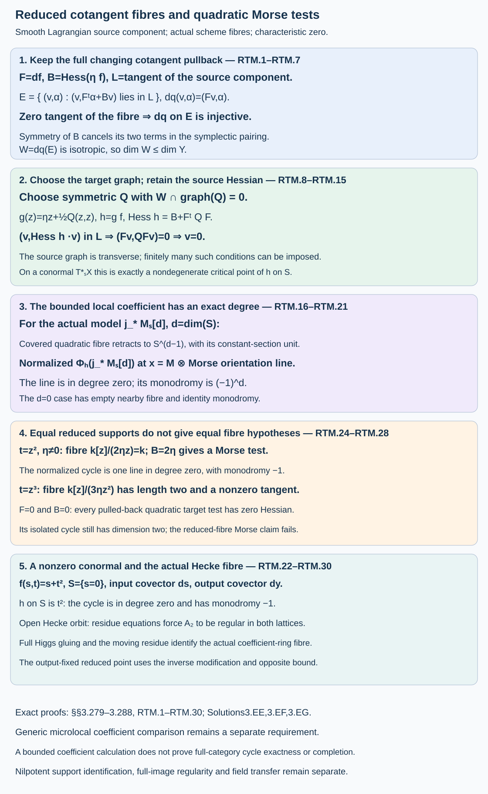
Figure 3.44. Equations (RTM.4)–(RTM.7) retain the changing cotangent pullback and its symmetric Hessian term. The quadratic graph and injective projection give source transversality in (RTM.8)–(RTM.12). The conormal model has the degree-zero coefficient and monodromy in (RTM.20)–(RTM.21). The quadratic and cubic fibres in Solutions 3.EE–3.EF distinguish a reduced point from a length-two scheme with the same reduced support. Solution 3.EG retains a nonzero source conormal and its negative monodromy. Free further reading on the isolated-test framework is Arinkin–Gaitsgory–Kazhdan–Raskin–Rozenblyum–Varshavsky, Appendix H.
3.285. Finite tests and full-category support
The simultaneous-choice statement of §3.282 is finite. An unbounded object's cohomological support can involve arbitrarily many closed components, without a single common neighbourhood isolating all their tests. The point-fibre calculation (RTM.22) does not supply that neighbourhood. Nor does a bounded coefficient calculation prove perverse exactness or the completion description for the actual full-category cycle functor.
The lower-bound deduction still needs precisely the microlocal coefficient comparison, its compatibility with cycles and characteristic support, the t-exact full-category extension in (IS.7)–(IS.8), and the relevant generic-point or geometric-field comparisons. The algebraic regular-holonomic and whole-D-module assertions remain distinct. The conditional enhanced field-test argument (ESG.34)–(ESG.35) likewise retains its point-detection hypothesis. These requirements cannot be replaced by set-theoretic isolation or by the matrix computation alone. Free further reading is The stack of local systems with restricted variation and geometric Langlands theory with nilpotent singular support, Appendix H, at the regular-holonomic scope stated there.
3.286. Exercise and solution: the quadratic ramification fibre
For the cycle calculations in the next three exercises take \(k=\mathbb C\). Their scheme-fibre and tangent computations are valid over every algebraically closed characteristic-zero field.
Exercise 3.EE. Let \(f:\mathbb A^1_z\to\mathbb A^1_t\), \(t=z^2\), and take \(C\) to be the source zero section. At \(z=0\), fix a target covector \(\eta\ne0\). Compute the scheme fibre, \(E\), \(W\), the pulled-back Hessian and the normalized cycle of the constant perverse input.
Solution 3.EE. The codifferential equation and its fixed-target fibre are \[ 2z\eta=0, \qquad k[z]_{(z)}/(2\eta z)=k. \tag{RTM.24} \] It is a reduced point. Here \(F=0\), \(B=2\eta\), and \(L\) is the horizontal source tangent. Formula (RTM.4) gives \[ E=\{(0,\alpha)\},\qquad W=\{(0,\alpha)\}\subset T_0\mathbb A^1\oplus T_0^*\mathbb A^1. \tag{RTM.25} \] Every symmetric graph is transverse to this vertical line. For \(g(t)=\eta t+qt^2/2\), the source function is \(\eta z^2+qz^4/2\), whose Hessian is \(2\eta\). Its nondegeneracy comes entirely from \(B\), not from \(F^tQF\). For the input \(k_{\mathbb A^1}[1]\), the normalized cycle is one line in degree zero, with monodromy minus one by (RTM.20)–(RTM.21). Equivalently its nearby unit is the diagonal into the two sheets, and the quotient is their signed difference. The finite map is proper, so the explicit finite-map computation (IS.12) gives the same cycle on the target.
3.287. Exercise and solution: cubic isolation is not reduced isolation
Exercise 3.EF. Replace the preceding map by \(t=z^3\), keeping the same component and nonzero target covector. Show that the fibre is set-theoretically isolated but the tangent hypothesis fails. Decide whether this refutes vanishing-cycle detection itself.
Solution 3.EF. This time \[ 3\eta z^2=0, \qquad k[z]_{(z)}/(3\eta z^2)\simeq k[z]/(z^2). \tag{RTM.26} \] Its length is two and its tangent is one-dimensional. At zero both \(F\) and \(B\) vanish, so \(E\) consists of all \((v,\alpha)\). The tangent projection has \[ \ker dq=\{(v,0)\},\qquad \operatorname{Hess}_0(g\circ f)=0 \quad\text{for every quadratic }g. \tag{RTM.27} \] Thus no such target test has a nondegenerate source Hessian. Replacing the fibre by its reduction would falsely erase exactly this obstruction.
Nevertheless a small nonzero fibre has three points and a small source disc is contractible. For constant perverse input the actual normalized cycle is \[ k^3/k(1,1,1), \qquad \dim=2, \quad\text{in degree zero}. \tag{RTM.28} \] Monodromy is the cyclic permutation of the three sheet coordinates on this quotient. This is the full diagonal-unit calculation (IS.12) with \(m=3\). It is nonzero. The example refutes a reduced-fibre-free Morse assertion; it does not refute the more general isolated-cycle theorem.
3.288. Exercise and solution: a nonzero source conormal
Exercise 3.EG. On \(X=\mathbb A^2_{s,t}\), let \(S=\{s=0\}\), \(C=T_S^*X\), and \(f(s,t)=s+t^2\). Fix \(\eta=1\) at zero on the target line. Compute \(E\), the quadratic test and its cycle on \(j_*k_S[1]\). Explain why the support-restricted map is proper even though \(f\) is not.
Solution 3.EG. The source covector is the nonzero normal \(ds\). At that point, \[ F=(1,0),\quad B=\begin{pmatrix}0&0\\0&2\end{pmatrix}, \quad L=\{((0,v_t),(\beta_s,0))\}. \tag{RTM.29} \] The tangent condition is \(v_s=0\) and \(2v_t=0\); \(\alpha\) is free. Hence \(E=\{(0,\alpha)\}\), the projection is injective and its image is the vertical target line. In fact the fixed-target scheme fibre is cut out by \(s=0\), \(s+t^2=0\) and \(2t=0\), so is the reduced point, on all coefficient tests.
Take \(g(y)=y\). Then \(h=s+t^2\), and its restriction to \(S\) is \(t^2\). The chosen coordinate \(t\) identifies the Morse line and gives \[ (\Phi_h j_*k_S[1])_0\simeq k, \qquad\text{degree }0,\qquad T=-1. \tag{RTM.30} \] The restriction \(f|_S:t\mapsto t^2\) is finite, with free coordinate algebra of rank two over the target, so is proper. In contrast the full fibre of \(f\) is an affine line, hence the ambient map is not proper. Indeed the affine line is not universally closed: the closed set \(uv=1\) in \(\mathbb A^1_u\times\mathbb A^1_v\) has nonclosed image \(\mathbb A^1_u\setminus\{0\}\) under projection. This violates a defining property of properness after base change. The source object is carried by the closed support \(S\); its direct image is exactly the direct image through this finite restriction. The same two-sheet diagonal quotient therefore computes the target cycle. Both the nonzero input conormal \(ds\) and the output covector \(dy\) have been retained.
3.289. Finite projective operator resolutions on an affine chart
Let \(U=\operatorname{Spec}R\) be a smooth pure-dimensional affine complex variety of dimension \(d\), and put \(A=\Gamma(U,\mathcal D_U)\). Use left modules and the order filtration. The principal-parts and symbol proofs in Differential operators and the Weyl algebra, §§3–5, give \[ F_0A=R,\qquad S=\operatorname{gr}A =\operatorname{Sym}_R\operatorname{Der}_{\mathbf C}(R). \tag{IAC.1} \] The ring \(S\) is Noetherian and regular of dimension at most \(2d\): on a finite open cover its derivation module is free, so it is polynomial of rank \(d\) over a regular coordinate ring. The regular-local and polynomial arguments are proved in Regular local rings, Theorem 2.2 and Proposition 3.3. The Ext test for the last syzygy is Projective dimension and the Auslander–Buchsbaum formula, Theorem 1.3.
We retain a global projective last term. For a finite \(S\)-module take \(2d\) finite free surjections and kernels. At every prime the last kernel is projective by those regular-local bounds and the syzygy test. It is finite projective globally: choose a finite principal cover with dual bases, clear denominators in the corresponding factorizations of its identity through finite free modules, and take a linear combination using powers of the covering functions that generate the unit ideal. This factors its identity through one finite free module.
For a finite graded projective symbol module \(P\), put \(S_+=\bigoplus_{n>0}S_n\). A degree-zero part of an ungraded splitting is a graded splitting. Hence \(Q=P/S_+P\) is a finite graded projective \(R\)-module, with only finitely many nonzero degrees. Lift each \(Q_j\) to \(P_j\) by \(R\)-projectivity. The map \(S\otimes_RQ\to P\) is an isomorphism: its cokernel has zero reduction modulo \(S_+\), so its least nonzero degree would contradict that equality; the surjection splits by graded projectivity, and its kernel vanishes by the same argument. This is the full graded argument of Holonomic D-modules and duality, Lemma 3.0, without shrinking the base to make \(Q_j\) free.
Now take a finite \(A\)-module \(M\) with its bounded-below good filtration. Lift symbol generators to get strict finite filtered free surjections, and repeat on their filtered kernels \(2d\) times. Strictness follows by successively lowering order; boundedness below terminates the process. Noetherianity of \(S\) keeps all symbol kernels finite. The terminal symbol is a graded projective \(P\) as above. Lift the maps \(Q_j\to P_j\) to its filtered terminal kernel \(K\) using \(R\)-projectivity. This gives \[ \bigoplus_j A\otimes_RQ_j\longrightarrow K, \qquad\operatorname{gr}\text{ of this map is }S\otimes_RQ\xrightarrow{\sim}P. \tag{IAC.2} \] Leading-order reduction makes the map surjective; a nonzero kernel element would have a nonzero leading symbol in the zero symbol kernel. Thus it is an isomorphism. Each induced term is finite projective over \(A\), since induction takes an \(R\)-linear split summand of a finite free module to an \(A\)-linear split summand. We obtain a global finite projective resolution \[ 0\to P_{2d}\to P_{2d-1}\to\cdots\to P_0\to M\to0. \tag{IAC.3} \] The final term need not be free. Finite truncation triangles then make every bounded coherent \(A\)-complex perfect. The case \(d=0\) uses the projective symbol module itself and needs no nonzero resolution length.
3.290. The actual affine ind-regular category and its t-structure
The affine module comparison is at the full operator level. For an \(A\)-module \(N\), sheafify its \(R\)-module. A derivation acts on a localization by the Leibniz formula \(\theta(n/f^r)=\theta(n)/f^r-r\theta(f)n/f^{r+1}\). The principal-parts localization of §3 of the operator lesson identifies this with the actual restricted differential operators. Conversely global sections of a quasicoherent operator module recover its module over \(A\). On free operator modules these are inverse on multiplication, unit and every module-action map. The complete free-module bar therefore gives the inverse comparison on arbitrary unbounded modules and mapping complexes. This is a module-category comparison, including all higher maps.
Let \(\mathscr C_U=D^b_{\mathrm{rh}}(\mathcal D_U)\), with the full mapping complexes of (RH.1), and put \[ \mathscr R_\infty(U)=\operatorname{Ind}\mathscr C_U \hookrightarrow\operatorname{Mod}_A. \tag{IAC.4} \] All objects of \(\mathscr C_U\) are perfect by (IAC.3), hence compact in the full affine category. Thus the displayed functor is fully faithful: for filtered presentations its mapping complex is exactly \[ R\operatorname{Hom}\bigl(\operatorname*{colim}_ic_i, \operatorname*{colim}_jc'_j\bigr) =\lim_i\operatorname*{colim}_jR\operatorname{Hom}_A(c_i,c'_j). \tag{IAC.5} \] Its image is the localizing regular subcategory. This supplies a global affine projective verification of the embedding in (RH.3)–(RH.5).
Bounded regular holonomic complexes are closed under their standard truncations. On the ind-category the truncations are \[ \tau^{\le b}\operatorname*{colim}_ic_i =\operatorname*{colim}_i\tau^{\le b}c_i, \qquad \tau^{\ge b}\operatorname*{colim}_ic_i =\operatorname*{colim}_i\tau^{\ge b}c_i. \tag{IAC.6} \] To check the t-structure directly, take the colimit of each bounded truncation triangle. Orthogonality follows from compactness of the bounded terms: maps from a filtered colimit in the lower half to one in the shifted upper half are a limit of colimits of contractible mapping spaces. The triangles and this orthogonality characterize the truncations, so they do not depend on the filtered presentation. The affine embedding is t-exact because standard module truncations commute with exact filtered colimits. The heart consists of ind-objects of regular holonomic modules. No equivalence with the derived category of that heart has been asserted.
Each such heart object is a filtered union of its coherent regular holonomic subobjects. Start with its filtered presentation by regular holonomic modules and replace every map to the colimit by its image. The kernel in a coherent source is coherent by Noetherianity of \(A\), and its quotient is regular by the composition-factor Serre proof in Regular singularities, §5.2. Thus every image is coherent regular holonomic. Filteredness puts any two images inside a third, and their union is the whole colimit. This gives actual heart subobjects, rather than merely a presentation by complexes.
3.291. An all-target mapping bound
If a compact \(c\in\mathscr C_U\) has a finite projective complex in degrees \([r,s]\), then for any \(Z\in\operatorname{Mod}_A^{\le b}\), including an unbounded-below object, \[ R\operatorname{Hom}_A(c,Z)\in D(\mathbf C)^{\le b-r}. \tag{IAC.7} \] Represent \(Z\) by its actual upper-truncated complex. The ordinary Hom from this finite projective source computes derived Hom: a finite induction on the projective source terms sends acyclic targets to acyclic Hom complexes. Every term above degree \(b-r\) is zero. This proves the bound against the entire target complex. It is stronger than a calculation only against modules in degree zero.
An exact functor whose values on heart objects have degrees in a fixed interval \([a,b]\) has, on bounded objects, the bound \[ T(D^{[p,q]})\subset D^{[p+a,q+b]}. \tag{IAC.8} \] Finite Postnikov triangles prove it. For a continuous ind-extension the same inequalities hold on arbitrary objects, by the filtered truncation formulas (IAC.6). This extension uses a fixed functor bound; it does not require a single projective-resolution range for all compact generators.
3.292. Recovery by the lower-truncation tower
For an object \(E\) define its actual inverse tower by \[ E_n=\tau^{\ge -n}E, \qquad E_{n+1}\longrightarrow E_n. \tag{IAC.9} \] The fibre of \(E\to E_n\) is \(\tau^{\le -n-1}E\). A compact test \(c\), represented in degrees \([r,s]\), therefore has \[ \operatorname{fib}\bigl(R\operatorname{Hom}(c,E)\to R\operatorname{Hom}(c,E_n)\bigr) \in D(\mathbf C)^{\le -n-1-r}. \tag{IAC.10} \] For each fixed mapping degree the transition maps eventually become isomorphisms, compatibly with the augmentation from \(E\).
We retain the derived inverse limit. For a countable tower of complexes \(V_n\), it is \[ \lim_nV_n=\operatorname{fib}\left( \prod_{n\ge0}V_n\xrightarrow{1-\mathrm{shift}} \prod_{n\ge0}V_n\right). \tag{IAC.11} \] Here is a resolution proof. In diagrams on the ordered inverse tower, take the direct sums of the representable diagrams in degrees minus one and zero, mapping each generator to itself minus its successor. Evaluation at an index gives the finite-support telescoping resolution of the constant coefficient: a nonzero finite sequence has a final nonzero entry, so the first map is injective, and summing entries identifies its cokernel with the constant coefficient. The representables are projective evaluation objects. Applying the derived mapping functor to this resolution gives (IAC.11), including its augmentation.
Products of vector spaces are exact, so cohomology commutes with these products. For an eventually constant inverse system the product-difference map is surjective: after an index where the transitions are invertible, solve \(u_n-t_nu_{n+1}=v_n\) forwards, then solve through the finite initial segment backwards. Its kernel is the stable value. The long exact sequence of (IAC.11) therefore computes every cohomology of the limit as that stable value. Applying this to (IAC.10), and using preservation of limits by representable mapping functors, proves \[ E\xrightarrow{\sim}\lim_n\tau^{\ge -n}E \quad\text{in }\mathscr R_\infty(U). \tag{IAC.12} \] The compact tests detect the cone. Their stabilization indices may depend on the compact test and the mapping degree. Neither a common bound over all tests nor preservation of arbitrary limits by the affine embedding is used.
3.293. Continuous extensions and the specified tower
Let \(T_0\) be an exact t-exact functor between the bounded small categories defining two such ind-categories. Its continuous extension is t-exact by (IAC.6). In particular its actual truncation comparison is \[ T\tau^{\ge -n}E\simeq\tau^{\ge -n}TE. \tag{IAC.13} \] If the target satisfies (IAC.12), then \(TE\) is the limit of these terms. More generally, an exact continuous functor of finite t-amplitude also satisfies \[ TE\xrightarrow{\sim}\lim_nT(\tau^{\ge -n}E). \tag{IAC.14} \] Indeed its value on the fibre \(\tau^{\le -n-1}E\) has upper degree tending to minus infinity. For an affine ind-regular target, test this fibre by (IAC.7), and apply the same stabilized product-difference argument. For a vector-space target it is the argument of (IAC.11) directly.
Suppose a bounded functor has a natural splitting \(T_0=P_0\oplus Q_0\). Ind-extension retains its inclusion and projection identities, since finite sums commute with colimits. For t-exact summands, or finite-amplitude summands in the scope just proved, the tower comparison gives \[ TE\simeq PE\oplus QE \simeq\left(\lim_nP\tau^{\ge-n}E\right) \oplus\left(\lim_nQ\tau^{\ge-n}E\right). \tag{IAC.15} \] This proves the required completion calculation on these actual ind-categories. It does not assert that a continuous t-exact functor preserves every inverse limit.
3.294. Both closed-point adjoints within the regular category
Fix a closed complex point \(i:\{x\}\hookrightarrow U\). On the regular ind-category there are continuous adjunctions \[ i^*:\mathscr R_\infty(U)\rightleftarrows \operatorname{Vect}:i_* , \qquad i_*\dashv i^!. \tag{IAC.16} \] Here \(i_*V=\delta_x\otimes V\), with the ordinary closed-point delta in degree zero. It is the intrinsic point object of (SPT.24) in this scheme case. The right adjoint is the actual full-operator point functor restricted to the regular category. The left adjoint is the continuous extension of the bounded regular ordinary inverse image. Its scope is the regular category.
For completeness, the full mapping adjunctions extend as follows. On bounded regular inputs they are the actual closed-support adjunctions under (RH.2), with the units and counits of the four-map comparison there. The image of a finite point complex under \(i_*\) is compact by (IAC.3); the ordinary inverse image of a bounded regular object is a finite point complex. Compactness therefore extends the bounded identities to an arbitrary filtered target. Mapping out of a filtered source is a derived limit, so the same identities extend to every source and all mapping complexes. This proves (IAC.16) on the actual ind-categories.
There is a natural comparison \[ \theta_E:i^!E\xrightarrow{\sim}i^*i_*i^!E \longrightarrow i^*E, \tag{IAC.17} \] where the last arrow is \(i^*\) of the right-adjunction counit. It is not asserted to be an equivalence for every \(E\).
The point functors have uniform finite t-amplitude on this chart. Resolve \(\delta_x\) as in (IAC.3). Hom from its resolution gives amplitude \([0,2d]\) for \(i^!\). On a bounded regular module, coherent duality has degrees \([-d,d]\), by Lemma 3.0 of the duality lesson. Bounded ordinary inverse image is \(\mathbb D_{\mathrm{pt}}i^!\mathbb D_U\), with the actual duality comparison. Finite point duality reverses the resulting interval \([-d,3d]\). Hence the safe bounds, also valid on all ind-inputs by (IAC.8), are \[ i^!:D^{[p,q]}\longrightarrow D^{[p,q+2d]}, \qquad i^*:D^{[p,q]}\longrightarrow D^{[p-3d,q+d]}. \tag{IAC.18} \] The duality formula was used on bounded inputs to obtain the bound. On ind-inputs \(i^*\) is its continuous extension; no dualization of an arbitrary infinite coefficient complex is required.
3.295. A heart object with an isolated point part
Call a heart object \(A\) admissible at \(x\) if it is a filtered union of coherent regular holonomic heart subobjects \(A_\lambda\) whose closed carriers have \(x\) as an isolated component, or avoid \(x\) on a neighbourhood. The bounded closed-support decomposition (IS.6), transported by the full bounded comparison (RH.2), is \[ A_\lambda\simeq i_*V_\lambda\oplus B_\lambda, \qquad x\notin\operatorname{supp}(B_\lambda). \tag{IAC.19} \] The point complex \(V_\lambda\) is in degree zero, since it is a summand of a heart object and closed point extension is t-exact. Every derived map between a point object and a bounded object carried by a disjoint closed set is zero in both directions, by closed-support restriction. The decomposition is therefore natural in all bounded morphisms, even when their two disjoint carriers differ. Passing to the filtered system gives the actual point and away parts.
Both point functors commute with this filtered union. On a bounded away term they vanish, and on \(i_*V_\lambda\) their natural comparison is the identity. Thus \[ i^!A\xrightarrow{\theta_A,\ \sim}i^*A \simeq\operatorname*{colim}_\lambda V_\lambda \quad\text{in degree zero}. \tag{IAC.20} \] No single closed carrier or neighbourhood is required for the whole filtered union.
3.296. The actual retract on an unbounded object
Let \(E\in\mathscr R_\infty(U)\) be arbitrary unbounded, with every \(H^mE\) admissible at \(x\). A finite-amplitude exact functor whose values on these heart objects are in degree zero has \[ H^m(TE)\simeq T(H^mE) \qquad(T=i^*,i^!). \tag{IAC.21} \] Here is the convergence argument without a derived-heart assertion. Bounds (IAC.18) show that a fixed output degree depends on a finite window of input truncations; choose its endpoints farther than those amplitude bounds. The two omitted tails have zero cohomology in that degree and in its adjacent degrees. On the finite window, apply the finite Postnikov filtration. Each heart term has only one output degree by (IAC.20), so its finite filtration spectral sequence has only that row and yields (IAC.21). All comparisons are the functor's truncation maps, and hence are natural.
Applying (IAC.21) to the natural map (IAC.17), every cohomology map is (IAC.20). Consequently \[ \theta_E:i^!E\xrightarrow{\sim}i^*E. \tag{IAC.22} \] Let \(\varepsilon_E:i_*i^!E\to E\) be the right-adjunction counit and \(\eta_E:E\to i_*i^*E\) the left-adjunction unit. Define \[ u_E=\varepsilon_E, \qquad r_E=i_*(\theta_E^{-1})\eta_E, \qquad r_Eu_E=\operatorname{Id}_{i_*i^!E}. \tag{IAC.23} \] To check the last identity, naturality of the left unit identifies \(\eta_E\varepsilon_E\) with \(i_*\theta_E\), since that unit is the identity on objects in the fully faithful image of \(i_*\). Thus the composite is exactly the displayed identity. In particular \[ e_E=u_Er_E,\qquad e_E^2=e_E, \qquad E\simeq i_*i^!E\oplus\operatorname{cofib}(u_E). \tag{IAC.24} \] This is a natural projector on the full subcategory of such \(E\). It is an identity of actual maps and mapping complexes. If some heart piece has a nonzero point component, (IAC.21) gives \[ H^m(i^!E)\ne0, \qquad i_*i^!E\ne0. \tag{IAC.25} \] This is the isolated-point retract needed for a proper-image argument, with no cohomological boundedness requirement on \(E\).
3.297. The extension of bounded algebraic cycle functors
For a regular function on a separated finite-type complex variety, the bounded constructible normalized nearby and vanishing cycles are t-exact at the algebraic scope of Nearby and vanishing cycles, §5, Theorem 5.1. That proof uses its actual cyclic-cover comparison in Proposition F.1, bounded constructibility in Theorem G.4 and its resolution appendices, and the proved principal affine-open perverse bounds. It does not use the unrestricted holomorphic or arithmetic cases as substitutes.
Conjugate that bounded functor by (RH.2), and extend by ind-colimits. Regard the zero-fibre output as supported in a smooth ambient chart by the closed-support equivalence. The actual regular ind-cycle functor is \[ \Phi_g^{\mathrm{reg}}=\operatorname{Ind}(\Phi_{g,0}^{\mathrm{reg}}). \tag{IAC.26} \] It is t-exact by (IAC.6), retains the bounded unit, cone and monodromy maps, and satisfies \[ H^m\Phi_g^{\mathrm{reg}}F =\Phi_g^{\mathrm{reg}}H^mF. \tag{IAC.27} \] It is the cycle functor in this chartwise ind-regular theory. This construction does not identify it with a functor on all unbounded classical sheaves.
Suppose that for each coherent heart subobject \(A\subset H^mF\), its actual bounded cycle has the isolated-point carrier property in (IAC.19). Exactness on hearts makes the cycle of the filtered union a filtered union of those bounded cycles. The object \(E=\Phi_g^{\mathrm{reg}}F\) therefore satisfies §3.296, giving \[ \Phi_g^{\mathrm{reg}}F\simeq i_*i^!\Phi_g^{\mathrm{reg}}F\oplus Q(F). \tag{IAC.28} \] If one bounded test has nonzero point coefficient, it remains nonzero in this retract. Indeed its injection into the corresponding cycle heart object remains injective after degree-zero \(i^!\): \(H^0i^!\) is Hom from the point module and is left exact on the operator heart. Equations (IAC.21) and (IAC.27) then detect a nonzero cohomology of the point coefficient: \[ i^!\Phi_{g,0}^{\mathrm{reg}}A\ne0 \quad\Longrightarrow\quad i^!\Phi_g^{\mathrm{reg}}F\ne0. \tag{IAC.29} \] This supplies the full unbounded splitting and detection deductions of IS.7–IS.8 at this algebraic cycle scope. The bounded support identity AIC.8 and §§3.499–3.502 give the characteristic-to-cycle implication for every ind-regular input satisfying componentwise isolation. Sections 3.517–3.523 give nonvanishing from any finite actual characteristic witness, including zero covectors and degenerate Hessians, without a critical-point condition on invisible strata. The neighbourhood may depend on the finite cohomology subobject. Sections 3.527–3.533 prove the actual proper-cycle and point-image comparison over complex smooth separated finite-type schemes. Sections 3.537–3.543 give original-complex proper detection through universal quadratic parameters under componentwise isolation of the selected compatible point. HRI and RHC give its regular-input Hecke application. GFP.55 makes that input condition available throughout the full original-complex Hecke-lisse category. GZR.33 supplies chartwise ind-regularity for every independently nilpotent-supported object over the complex numbers in every genus.
3.298. Smooth normalization and the scope of descent
For a smooth map of relative complex dimension \(r\), the left-module inverse transfer and (RH.6) give the t-exact normalized pullback \[ f^![-r]=f^\natural. \tag{IAC.30} \] Flatness makes the right side exact on modules, and (IAC.6) extends that assertion to ind-regular inputs. Relative dimensions add, so the normalization composes with its actual transfer maps. Local line Morita equivalences for the half twist in §3.57 are exact and retain these conclusions on their charts.
A limit of categories satisfying (IAC.12) inherits that recovery property whenever its evaluation functors preserve the relevant limits and identify its truncations with the component truncations: evaluate the natural recovery map and use joint conservativity. This deduction uses both hypotheses. The full chart diagram (RH.7) also has nonsmooth refinement arrows; a normalized face calculation alone does not establish their pointwise-truncation and limit properties. In particular, bounded regular stack objects cannot all be declared compact, as the \(B\mathbf G_m\) example (SPT.25) shows. The local cycle retract above is constructed on the scheme presentations used in the bounded proper Hecke test and needs no such global compactness assertion.
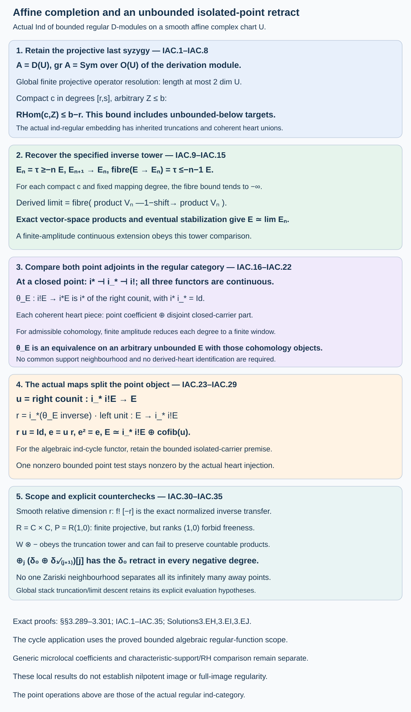
Figure 3.45. The affine filtered syzygy remains projective in (IAC.1)–(IAC.3). Its mapping bound gives the actual inverse-limit recovery (IAC.7)–(IAC.12). The point comparison and adjunction maps give the projector, including its identity composite, in (IAC.17)–(IAC.24). The cycle application (IAC.26)–(IAC.29) retains the bounded carrier and nonzero-test hypotheses. The examples distinguish projectivity from freeness, the truncation tower from arbitrary products, and a filtered isolated-point decomposition from a uniform support neighbourhood. Free further reading on the isolated-cycle construction is Arinkin–Gaitsgory–Kazhdan–Raskin–Rozenblyum–Varshavsky, Appendix H.
3.299. Exercise and solution: a projective term that is not globally free
Exercise 3.EH. Let \(R=\mathbf C\times\mathbf C\), \(e=(1,0)\), and \(P=Re\). Compute its dual, mapping functor and projective dimension. Explain which part of the affine proof would fail if its final projective term were called globally free.
Solution 3.EH. The splitting \(R=Re\oplus R(1-e)\) makes \(P\) finite projective of dimension zero. Restriction and evaluation give \[ P^\vee=\operatorname{Hom}_R(P,R)=eR, \qquad R\operatorname{Hom}_R(P,Z)=eZ. \tag{IAC.31} \] This is an identity of full complexes, since the projector \(e\) is exact. The rank on the first component is one and on the second is zero, whereas a free module has equal ranks on both components. Thus \(P\) is not free. It is already an operator example on the two-point smooth affine scheme, whose differential operators are \(R\). It verifies (IAC.7) with \(r=0\) and the zero-dimensional case of (IAC.3). The proof needs the split-projective last term, not an unjustified choice of a global basis.
3.300. Exercise and solution: the specified tower is not an arbitrary limit
Exercise 3.EI. On complexes of vector spaces let \(T(V)=W\otimes V\), where \(W=\bigoplus_{j\ge0}\mathbf C e_j\). Show that this functor is continuous and t-exact and obeys the truncation-tower comparison, but does not preserve countable products.
Solution 3.EI. Tensor over a field is exact and preserves colimits. For the product of copies of \(\mathbf C\) in degree zero, the canonical comparison is \[ \bigoplus_j\prod_n\mathbf C \longrightarrow\prod_n\bigoplus_j\mathbf C. \tag{IAC.32} \] The left side has a single finite set of nonzero \(j\)-coordinates for the entire family. The right side only requires finite \(j\)-support in each row \(n\). The diagonal family with its \(n\)-th row equal to \(e_n\) belongs to the right side and not to the left. Thus the comparison is not surjective.
For \(V=\bigoplus_{a\ge0}\mathbf C[a]\), each degree contains one coefficient copy. Its lower truncations are finite sums, and \[ \lim_nT(\tau^{\ge-n}V) =\bigoplus_{a\ge0}W[a]=T(V). \tag{IAC.33} \] The equality is degreewise, with the actual projection transitions; their fixed-degree systems stabilize. For a general complex, the same stabilized-degree argument is (IAC.13)–(IAC.14). The failure in (IAC.32) is a different inverse limit and supplies no counterexample to that statement.
3.301. Exercise and solution: infinitely many away components
Exercise 3.EJ. On the affine line let \(i\) be the point zero and \(\delta_a\) the regular closed-point delta. In the actual regular ind-category form \[ E=\bigoplus_{j\ge0} \bigl(\delta_0\oplus\delta_{1/(j+1)}\bigr)[j]. \tag{IAC.34} \] Compute the two point adjoints and the projector. Decide whether a single Zariski neighbourhood of zero separates all the away supports.
Solution 3.EJ. Each summand is a shifted bounded regular object, so the finite partial sums define this ind-object. Both point functors are continuous. On the point summand they are the coefficient, and on each distinct closed point they vanish in every degree by disjoint-support restriction. Hence \[ i^!E\xrightarrow{\theta_E,\ \sim}i^*E =\bigoplus_{j\ge0}\mathbf C[j]. \tag{IAC.35} \] The comparison is the identity on every coefficient summand. The maps in (IAC.23) are respectively inclusion of, and projection onto, the \(\delta_0\)-summands. Their composite on that point object is the identity; the complementary object is the displayed sum of the away deltas. These are actual morphisms in the ind-category, including every negative cohomological degree.
Every Zariski neighbourhood of zero in the affine line omits only finitely many closed points: its complement is a proper closed subset, cut out by a nonzero one-variable polynomial, which has finitely many roots by successive polynomial division. The distinct points \(1/(j+1)\) are infinite. Thus no such neighbourhood separates all away supports. Each finite coherent heart piece nevertheless has its isolated point decomposition, which is exactly the hypothesis used in §3.296. This computation concerns the actual ind-regular operations specified in (IAC.16) and makes no identification with all unbounded classical sheaves.
3.302. A smooth conic Lagrangian germ is a conormal at constant rank
Let \(X\) be a complex manifold of dimension \(n\), let \(F\) be a bounded weakly complex constructible complex of complex vector spaces, and fix a nonzero covector \(p=(x,\xi)\in\operatorname{SS}(F)\). Suppose that on a cotangent neighbourhood of \(p\) its microsupport is contained in a smooth complex-conic Lagrangian \(C\), and that the restriction of the projection to \(C\) has constant rank \(d\). The complex constant-rank theorem gives a local image submanifold \(Y\subset X\) of dimension \(d\). The fibre Euler vector \((0,\xi)\) is tangent to \(C\). With the convention \(\omega=d\xi\wedge dx\), isotropy gives \[ 0=\omega\bigl((0,\xi),(v,\alpha)\bigr)=\xi(v), \qquad(v,\alpha)\in T_{(x,\xi)}C. \tag{MCM.1} \] Every vector of \(T_xY\) lifts through this tangent projection. The same calculation at nearby points puts the germ of \(C\) in \(T_Y^*X\). Both are smooth of dimension \(n\); the inclusion has invertible differential and is open near \(p\). Hence \[ C=T_Y^*X\quad\text{as germs at }p. \tag{MCM.2} \] The supported coefficient proof in Local forms and inverse image, formulas LFI9–LFI10, now supplies a bounded coefficient complex \(M\) and an isomorphism \[ F\simeq M_Y\quad\text{in }D^b(\mathbf C_X;p). \tag{MCM.3} \] Here \(M_Y\) is the constant complex on the local submanifold, extended by zero. The assertion concerns the category localized at the covector. It does not assert an isomorphism on an ordinary neighbourhood of its base point.
For an actual weakly complex constructible complex, its microsupport is a closed complex analytic conic Lagrangian, by Complex microlocal stratifications and constructibility, the four-test theorem. On each component one can remove the other components, the singular locus and the rank-drop locus of the projection. The connected regular-locus and maximal-minor proof GC6–GC9 in Weierstrass parametrization and connected regular loci proves that the remaining constant-rank region is dense. Thus the geometric premise above applies at the nonzero generic points of each component.
3.303. A test that inverts arbitrary denominators
Choose a holomorphic \(h\) with \(h(x)=0\) and \(dh_x=\xi\). Its zero fibre \(T\) is smooth after shrinking. On all bounded sheaf complexes define the exact functor \[ \mathcal T_h(A)=(\mu_TA)_p. \tag{MCM.4} \] The arbitrary bounded support theorem MO15 in Microsupport operations gives \(\mathcal T_h(A)=0\) whenever \(p\notin\operatorname{SS}(A)\). Consequently a map whose cone avoids \(p\) becomes an isomorphism under this test, including when the cone is not complex constructible.
Here is the quotient criterion used for (MCM.3). Let \(\mathcal N_p\) be the full subcategory of bounded complexes whose microsupport avoids \(p\). Triangle estimates and the equality for finite direct sums make it thick. Cones in this subcategory define the denominators. For a map \(u:A\to B\) and a denominator \(s:A\to A'\), the homotopy pushout \(B'=B\sqcup_A A'\) gives a denominator \(B\to B'\) with the same cone. Homotopy pullback gives the reversed construction. These supply the common-square rule for both fraction constructions. For cancellation, if a difference of two maps vanishes after precomposition with a denominator, the exact Hom sequence of its triangle factors the difference through its cone \(N\in\mathcal N_p\). Postcomposing with the map to the cofiber of \(N\to B\) kills the difference, and that map is again a denominator. The reversed argument proves the other cancellation rule. The octahedral triangle for a composite retains its cone in the thick subcategory. Fractions modulo these common refinements therefore have the zero criterion that a further denominator kills the numerator. In particular, if the identity of \(A\) is zero in the quotient, a denominator \(s:A'\to A\) satisfies \(s=0\). Its cone is then \(A\oplus A'[1]\); thickness gives \(A\in\mathcal N_p\). Conversely the denominator \(0\to A\) makes every object of \(\mathcal N_p\) zero. Thus \[ A=0\text{ in }D^b(\mathbf C_X;p) \quad\Longleftrightarrow\quad p\notin\operatorname{SS}(A). \tag{MCM.5} \] These are the fraction and null-object constructions of Microlocal categories, MC.1–MC.2. Since \(\mathcal T_h\) sends every denominator to an isomorphism, composing a numerator with the inverse image of its denominator defines its value on a fraction. Common refinements prove independence. The model isomorphism therefore gives \[ \mathcal T_h(F)\simeq\mathcal T_h(M_Y). \tag{MCM.6} \] Only the two endpoints need to be weakly complex constructible in the next comparison. Intermediate objects in the fractions can be arbitrary bounded sheaf complexes.
3.304. The coefficient detected by a transverse function
Suppose also that \(\operatorname{graph}(dh)\) is transverse to \(C\) at \(p\). In coordinates adapted to \(Y\), equality (MCM.2) says exactly that \(h|_Y\) has a nondegenerate critical point at \(x\). The actual normal and conormal comparison in Complex nearby cycles as normal and conormal sections, formula (20), gives \[ \Phi_h(F)_x\simeq\mathcal T_h(F), \qquad \mathcal T_h(M_Y)\simeq\Phi_h(M_Y)_x. \tag{MCM.7} \] The normalization is \(\Phi_h=\operatorname{Cone}(i^*\to\psi_h)[-1]\), as in (RTM.20). The real covector is \(\operatorname{Re}(dh)\); the complex normal-line pairing has no conjugation. The closed-ray Fourier comparison supplies (MCM.7) without an extra rank-two or orientation shift.
The quadratic calculation applies to this holomorphic Morse function. Explicitly, after subtracting its critical value, write \(h|_Y=z^tA(z)z\), where \(A\) is symmetric holomorphic and \(2A(0)\) is the invertible Hessian. One may take its entries from the Taylor integral of the second derivatives along \(tz\), \(0\le t\le1\). A constant change of basis gives successive unit pivots; finite Gram–Schmidt diagonalizes the form holomorphically. Each nonzero diagonal unit has a holomorphic square root on a smaller neighbourhood, using the convergent binomial series after dividing by its value at zero. The resulting coordinates have invertible differential, so the holomorphic inverse-function theorem gives an actual local change of coordinates to \(\sum_{j=1}^d w_j^2\).
The covered-ball retraction and constant-section unit of (RTM.16)–(RTM.20), equivalently Quadratic cycles and the holomorphic microsupport test, its covered quadratic calculation, now give the isomorphism of coefficient complexes \[ \Phi_h(F)_x\simeq M\otimes o_h[-d]. \tag{MCM.8} \] The Morse orientation line \(o_h\) is one-dimensional in degree zero. At \(d=0\), the nearby fibre on \(Y\) is empty, and the same formula reads \(M\). If \(M=0\), (MCM.3) and (MCM.5) would contradict \(p\in\operatorname{SS}(F)\). Tensoring with a line and shifting are invertible, so \[ p\in\operatorname{SS}(F) \quad\Longrightarrow\quad \Phi_h(F)_x\ne0. \tag{MCM.9} \] This comparison detects the full coefficient complex. A localized coefficient isomorphism at one covector has not been asserted to intertwine the cycle monodromy; Solution 3.EK distinguishes those assertions.
3.305. The closed carrier of the bounded cycle near the test point
The closed support bound (24) proved in the normal/conormal lesson is \[ \operatorname{supp}\Phi_h(F) \subset\{y:h(y)=0,\ (y,dh_y)\in\operatorname{SS}(F)\}. \tag{MCM.10} \] Shrink so that \(\operatorname{graph}(dh)\) lies in the cotangent neighbourhood used above. Two transverse smooth \(n\)-dimensional germs in a \(2n\)-manifold have an isolated intersection: their defining normal coordinates have invertible combined differential, so the inverse-function theorem makes the intersection the single reduced point. Therefore a neighbourhood \(W\) of \(x\) satisfies \[ \operatorname{supp}\Phi_h(F)\cap W\subset\{x\}. \tag{MCM.11} \] Closed support, rather than just a statement about separate stalks, is used here. Localization for its complement identifies the restricted cycle with the closed point extension of its coefficient. Together with (MCM.8)–(MCM.9), this yields \[ \Phi_h(F)|_{W\cap h^{-1}(0)} \simeq i_*(M\otimes o_h[-d])\ne0. \tag{MCM.12} \] If the bounded input and cycle are perverse, closed point extension is t-exact. Hence \(M\otimes o_h[-d]\) is in degree zero. In the algebraic finite-coefficient setting the cycle t-exactness is Theorem 5.1 of Nearby and vanishing cycles, at the scope specified in §3.297. Its finite-dimensional point coefficient is then an actual nonzero heart object.
3.306. Analytic isolation gives an isolated algebraic carrier
First let \(B\) be a coherent regular holonomic module on a smooth complex algebraic variety \(U\). Its finite composition series is supplied by Holonomic D-modules and duality, Theorem 2.2. By the definition and Serre argument of Regular singularities, §5, its simple factors have presentations \(j_{a,!*}E_a\) on smooth locally closed algebraic strata \(S_a\), with \(E_a\) a nonzero regular connection. Remove any zero-rank open-and-closed components from the chosen stratum. The remaining bundle has positive rank at every point of \(S_a\), and its horizontal coefficient system has that rank by the flat-frame calculation.
The full four-map and t-exact comparison (RH.2) takes this minimal extension to the perverse intermediate extension of that coefficient system. It restricts to the given nonzero system on \(S_a\) and vanishes off \(\overline{S_a}\). Its closed analytic carrier is therefore the analytic closure of \(S_a\). The density statement following Theorem 4.1 of Complex analytic spaces and analytification identifies this with \(\overline{S_a}^{\,\mathrm{an}}\): a dense algebraic open remains analytically dense. That proof uses the radical-ideal comparison and faithful flatness of the analytic local ring, and includes singular closures.
Restriction to an analytic open is perverse t-exact, since the stalk and costalk tests are local. Consequently in a short exact sequence of perverse objects the middle term vanishes on an open exactly when both end terms do. Its closed carrier is the union of their closed carriers. The finite composition series thus gives the actual reduced algebraic closed carrier \[ Z_B=\bigcup_a\overline{S_a}, \qquad \operatorname{supp}\operatorname{DR}(B)=Z_B^{\mathrm{an}}. \tag{MCM.13} \] This assertion concerns closed carriers, and makes no equality of cotangent supports. For a bounded regular operator complex, take the finite union of the carriers of its cohomology modules. Boundedness and exact open restriction give the same assertion without identifying a category with the derived category of its heart.
Suppose now that the analytic closed carrier is contained in \(\{x\}\) on an analytic neighbourhood of \(x\). If \(x\) is absent from \(Z_B\), its algebraic open complement already avoids the carrier. Otherwise write \(A=\mathcal O_{U,x}\), \(H=\mathcal O_{U^{\mathrm{an}},x}\), and let \(I\subset A\) be the ideal of the reduced carrier. Lemma 3.1 of the analytification lesson identifies the extended radical ideal with the actual analytic vanishing ideal. Its zero germ is the single point. Theorem 4.1 gives faithful flatness and contraction of ideals. Hence \[ IH=\mathfrak m_AH, \qquad IH\cap A=I, \qquad I=\mathfrak m_A. \tag{MCM.14} \] Thus the reduced carrier's algebraic local ring is \(\mathbf C\). To see the open component explicitly, take an affine neighbourhood in the reduced carrier with coordinate ring \(D\), and let \(\mathfrak m\) be the maximal ideal of \(x\). It is finitely generated. Each generator vanishes in \(D_{\mathfrak m}=\mathbf C\), so a denominator outside \(\mathfrak m\) kills it. The product \(s\) of those finitely many denominators satisfies \[ s\notin\mathfrak m, \qquad \mathfrak mD_s=0, \qquad D_s=\mathbf C. \tag{MCM.15} \] The principal open \(D(s)\) in the carrier is exactly \(\{x\}\). Since \(x\) is also closed, the global reduced carrier decomposes as \[ Z_B=\{x\}\amalg Z'_B, \qquad x\notin Z'_B, \qquad Z'_B\text{ closed}. \tag{MCM.16} \] This is precisely the isolated closed-carrier premise in (IAC.19). The argument is on the reduced carrier. It does not remove nilpotents from a cotangent-fibre scheme or prove its tangent zero; Solution 3.EM makes that distinction explicit.
3.307. A common microsupport bound for a family
Let \(\{F_\lambda\}\) be any family of bounded weakly complex constructible complexes. Suppose their microsupports are all contained, on one fixed cotangent neighbourhood \(V\), in the same smooth conic Lagrangian \(C\). Assume that the projection of \(C\) has constant rank there and \(\operatorname{graph}(dh)\) meets it transversely at \(p\). The neighbourhood in (MCM.11) depends on \(C,V,h\), rather than on a member of the family. The same support argument gives \[ \operatorname{supp}\Phi_h(F_\lambda)\cap W \subset\{x\}\quad\text{for every }\lambda. \tag{MCM.17} \] Some members may have zero cycles. If \(p\) belongs to the microsupport of one member, its nonzero coefficient is detected by (MCM.9).
For a smooth affine complex algebraic \(U\), a regular function \(h\) and \(E\in\mathscr R_\infty(U)\), take the family \(F_A=\operatorname{DR}(A)\) over every coherent regular heart subobject \(A\subset H^mE\) and every integer \(m\). Assume the common microsupport bound just stated for this family. Its actual bounded algebraic cycles are regular operator heart objects by §3.297. Their closed carriers satisfy (MCM.17), so §3.306 makes each carrier either avoid \(x\) or have \(x\) as an isolated algebraic component. Thus every cycle heart is admissible as in (IAC.19). For one such subobject the nonzero-test implication is \[ p\in\operatorname{SS}(F_A),\quad \operatorname{graph}(dh)\pitchfork C \quad\Longrightarrow\quad H^0i^!\Phi_{h,0}^{\mathrm{reg}}A\ne0. \tag{MCM.18} \] The point heart injection and (IAC.21), (IAC.27) then give \[ i^!\Phi_h^{\mathrm{reg}}E\ne0. \tag{MCM.19} \] This gives the actual unbounded point retract and detection under the stated common microsupport bound. The algebraic neighbourhoods supplied by §3.306 may depend on the coherent object. The natural point comparison in §3.295 and the finite-amplitude argument in §3.296 do not require one common algebraic neighbourhood, and no comparison with all unbounded classical sheaves is used.
3.308. The quadratic test and the operator support comparison
At a point of the reduced bounded Hecke cotangent fibre, (RTM.1)–(RTM.12) construct \(h=g\circ f\) with its exact first derivative and a transverse Hessian graph. If the source covector lies in the actual microsupport of a bounded coefficient complex and in its generic smooth constant-rank region, (MCM.8)–(MCM.12) supply the nonzero isolated cycle coefficient for that test. In particular the source-to-model comparison takes place in the covector-localized category, and the test is transferred by (MCM.4)–(MCM.7).
The differential-operator characteristic support is a further input. The equality that would identify the two notions is \[ \operatorname{SS}(\operatorname{DR}A) =\operatorname{Char}(A). \tag{MCM.20} \] The equality MCM.20 is proved by the analytic density/duality calculation SDR.22–SDR.24 and the algebraic comparison AIC.8. Sections 3.499–3.502 use membership in \(\operatorname{Char}(A)\) to give the nonzero full unbounded cycle retract for actual ind-regular inputs under componentwise isolation, allowing different neighbourhoods for different finite pieces. Sections 3.517–3.523 require only actual characteristic isolation for that finite witness; zero covectors, singular conormals, degenerate Hessians and nonisolated invisible critical loci are included. Sections 3.503–3.504 prove the actual characteristic-support and full unbounded cohomological-support comparison under arbitrary characteristic-zero field extension. Sections 3.527–3.533 prove the actual proper regular Ind-cycle comparison over complex smooth separated finite-type schemes. Regular cycles over new geometric fields, full nilpotent regularity and enhanced geometric-field generation retain their separate requirements. Sections 3.537–3.543 give original-complex proper detection with componentwise isolation of the selected compatible point by an actual universal quadratic family.
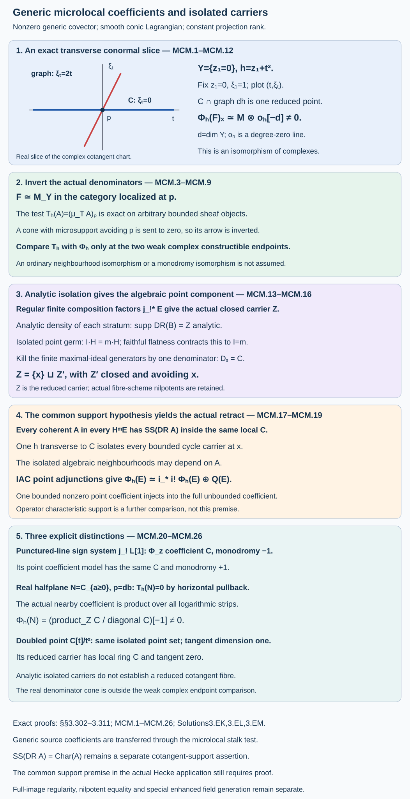
Figure 3.46. In the displayed real slice of \(T^*\mathbf C^2\), \(Y=\{z_1=0\}\), \(h=z_1+t^2\), \(z_1=0\) and \(\xi_1=1\); the remaining coordinates are \((t,\xi_t)\). The conormal has \(\xi_t=0\), and the function graph has \(\xi_t=2t\), giving the single transverse point. Equations (MCM.1)–(MCM.12) transfer this test through the covector-localized coefficient model with its exact degree and orientation line. Equations (MCM.13)–(MCM.19) give the algebraic closed carrier and the actual ind-regular point retract under the common microsupport hypothesis. The three solutions retain the distinctions between coefficient complexes and monodromy, arbitrary real denominator cones and weak complex endpoints, and reduced closed carriers and nonreduced fibre schemes. The characteristic-support equality is AIC.8; the common-cone unbounded cycle consequence is proved in §§3.487–3.493.
3.309. Exercise and solution: a coefficient isomorphism need not preserve monodromy
Exercise 3.EK. On a disc let \(j:\Delta^*\hookrightarrow\Delta\), and let \(L\) be the rank-one complex local system with monodromy \(-1\). Put \(F=j_!L[1]\) and \(h(z)=z\). Compute its normalized vanishing coefficient and monodromy. Compare the point coefficient model at a nonzero cotangent vector over zero.
Solution 3.EK. The local system is the sign coefficient of the explicit double cover \(w\mapsto w^2\). On the universal cover the nearby coefficient of \(L\) is \(\mathbf C\), with deck action \(-1\). The stalk of \(j_!L\) at zero is zero. Therefore \[ \Phi_h(F)_0 =\operatorname{Cone}(0\to\mathbf C[1])[-1] =\mathbf C, \qquad T=-\operatorname{Id}. \tag{MCM.21} \] Off zero the complex is locally constant. Its microsupport there is the zero section. At zero it cannot have only zero covectors, since the zero-section local constancy theorem would contradict its zero stalk and nonzero neighbouring stalks. Complex conicity makes the nonzero fibre over zero a single orbit. Thus every nonzero covector there is in its microsupport, and the conormal component is the vertical fibre, of projection rank zero.
Its coefficient model is \(\delta_0\mathbf C\). For that model, \(h\) is zero on its point support, the nearby coefficient is empty, and \[ \Phi_h(\delta_0\mathbf C)_0=\mathbf C, \qquad T=\operatorname{Id}. \tag{MCM.22} \] The coefficient complexes agree. An equivariant isomorphism would have to intertwine \(-1\) and \(1\), and hence would be zero over \(\mathbf C\). Thus their monodromy objects are not isomorphic. The original sheaves also do not agree on an ordinary neighbourhood: one has nonzero punctured stalks and the point model has none.
3.310. Exercise and solution: a denominator cone outside complex constructibility
Exercise 3.EL. Write \(z=a+ib\) on \(\mathbf C\), let \(N=\mathbf C_{\{a\ge0\}}\), and set \(p=(0,db)=\operatorname{Re}(-i\,dz)\), \(h=-iz\). Show that \(N\) is invisible to the test (MCM.4), but its actual holomorphic vanishing coefficient is nonzero. Explain the consequence for fractions through arbitrary bounded objects.
Solution 3.EL. Write \(q(a,b)=a\). The sheaf is the actual pullback \(N=q^{-1}\mathbf C_{[0,\infty)}\). The submersion formula MO10 in Microsupport operations puts its microsupport in the horizontal bundle: every covector has zero \(db\)-component. Thus \(p\notin\operatorname{SS}(N)\) and \[ \mathcal T_h(N)=0. \tag{MCM.23} \] This sheaf is real constructible and not weakly complex constructible near zero. In complex dimension one, proper analytic strata are discrete. A locally finite such stratification cannot make the stalk jump across a whole real line locally constant on its open stratum.
For the actual nearby coefficient, a punctured disc lifted to its logarithmic cover meets the closed right halfplane in disjoint closed angular strips indexed by \(\mathbf Z\). Each strip is a product of a radial logarithmic half-line with a closed interval. It is convex and contractible. Closed-support restriction identifies the section complex on each strip with \(\mathbf C\) in degree zero, and the whole section complex is their product. Shrinking the disc changes only the radial bound and induces the identity on these coefficients. The stalk \(N_0=\mathbf C\) maps to those sections by the diagonal constant-section unit. Since products of vector spaces are exact, the normalized cone gives \[ \psi_h(N)_0=\prod_{m\in\mathbf Z}\mathbf C, \qquad \Phi_h(N)_0= \left(\left(\prod_{m\in\mathbf Z}\mathbf C\right) /\mathbf C_{\mathrm{diag}}\right)[-1]\ne0. \tag{MCM.24} \] The quotient is nonzero, for instance by a family equal to one on one strip and zero on the others. Its only cohomology lies in degree one. For any bounded \(B\), the inclusion \(B\to B\oplus N\) has cone \(N\) and is a denominator at \(p\). The functor \(\mathcal T_h\) inverts it. Applying the ordinary cycle functor to the two terms instead adds the nonzero coefficient (MCM.24). This proves why the endpoint comparison (MCM.7) is used only for weakly complex constructible endpoints, while the functor through arbitrary fractions is (MCM.4).
3.311. Exercise and solution: an isolated carrier does not remove a doubled point
Exercise 3.EM. At zero in the affine line compare the closed scheme \(Z=\operatorname{Spec}(\mathbf C[t]/(t^2))\) with its reduced carrier. Compute their analytic local rings and tangent spaces. Explain why (MCM.14) applies to the carrier and cannot replace the actual fibre-tangent hypothesis of (RTM.2).
Solution 3.EM. Polynomial and convergent division by \(t^2\) leave exactly a constant and a linear coefficient, so \[ \mathcal O_{Z^{\mathrm{an}},0} =\mathbf C\{t\}/(t^2) =\mathbf C\oplus\mathbf C\epsilon, \qquad\epsilon^2=0. \tag{MCM.25} \] The maximal ideal is \(\mathbf C\epsilon\), and its square is zero. Its cotangent space has dimension one, hence so does the tangent space. The reduced carrier instead has \[ I_{Z_{\mathrm{red}}}=(t),\qquad \mathcal O_{Z_{\mathrm{red}},0}=\mathbf C,\qquad T_0Z_{\mathrm{red}}=0,\qquad T_0Z\simeq\mathbf C. \tag{MCM.26} \] The analytic zero set is a single point in both cases. The analytic vanishing ideal is the radical \((t)\), while the full analytic scheme ideal remains \((t^2)\). Lemma 3.1 is applied only to the reduced carrier in (MCM.14). Analytification itself retains the full ideal by Theorem 3.2 of the analytification lesson. Thus the closed-carrier decomposition used for the retract gives no permission to discard the nilpotents or the nonzero tangent of an actual cotangent fibre. Reduced-fibre transversality still needs its precise hypothesis.
3.312. Holomorphic germs on a compact convex set
Work over \(\mathbf C\). If \(K\subset\mathbf C^n\) is compact and convex, write \(\mathcal O(K)\) for germs of holomorphic functions on neighbourhoods of \(K\). This notation retains normal germs when \(K\) is contained in a proper real or complex affine subspace.
There are cofinally many bounded open real polyhedra containing \(K\), inside any prescribed neighbourhood. To prove this, first choose a small \(\eta>0\) with \(K+B_\eta\) in that neighbourhood, and a bounded box containing its closure. For each point \(y\) of the box outside \(K+B_\eta\), minimize distance to \(K\), obtaining \(q\in K\). Differentiating squared distance along \(q+t(z-q)\), \(z\in K\), gives \(\langle y-q,z-q\rangle\le0\). The unit normal \(\nu=(y-q)/|y-q|\) therefore has support value \(h_K(\nu)=\langle\nu,q\rangle\), while \(\langle\nu,y\rangle-h_K(\nu)\ge\eta\). The open condition \(\langle\nu,z\rangle>h_K(\nu)+\eta/2\) excludes a neighbourhood of \(y\). Finitely many such exclusions cover that compact part of the box. Their complementary strict halfspaces, together with the box inequalities, give the desired polyhedron.
Write its inequalities as \(u_j(z)=\operatorname{Re}\ell_j(z)<c_j\), with \(\ell_j\) complex linear. It has the smooth strictly plurisubharmonic exhaustion \[ \rho(z)=|z|^2+\sum_j\frac1{c_j-u_j(z)}, \qquad H_\rho\ge H_{|z|^2}. \tag{SCP.1} \] Each \(u_j\) is pluriharmonic and \((c_j-t)^{-1}\) is convex increasing, so the Hessian assertion follows by the chain rule. Approaching a boundary face makes its summand diverge; boundedness of the polyhedron proves exhaustion. The proof of holomorphic acyclicity on such a Stein domain is Stein domains in complex space, Theorems 2.1–2.2: the finite locally square-integrable Dolbeault resolution and its global positive-degree solution give \(H^q(\mathcal O)=0\), \(q>0\). These are the actual domain sheaves and distributional equations of that proof.
Compact-neighbourhood continuity, including its restriction map, is proved in Noncharacteristic deformation, N3–N4. Applying it to the cofinal polyhedra, and using exactness of filtered vector-space colimits, gives \[ R\Gamma(K;\mathcal O)=\mathcal O(K)[0]. \tag{SCP.2} \] This includes a compact ball in a complex hyperplane and the empty set. It is a statement about the restricted sheaf, not a closed-fibre formula for an arbitrary direct image.
3.313. A uniform bound for the actual analytic support tests
Let \(D=\mathcal D^{\mathrm{an}}_{X,x}\) at a point of a complex \(n\)-manifold. In holomorphic coordinates its coefficient ring \(H=\mathbf C\{z_1,\ldots,z_n\}\) is Noetherian regular of dimension \(n\), by Complex analytic spaces and analytification, Lemma 2.1 and Theorem 4.1. The order symbols give \[ \operatorname{gr}D=H[\xi_1,\ldots,\xi_n]. \tag{SCP.3} \] This ring is Noetherian regular of dimension \(2n\). The regular-local projective-dimension and polynomial proofs are Regular local rings, Theorem 2.2 and Proposition 3.3.
The strict filtered syzygy proof of (IAC.1)–(IAC.3) works over this coefficient ring as well. Here are the relevant points. Take \(2n\) strict finite filtered free presentations of a finite \(D\)-module and their kernels. Their symbols remain finite, and the last symbol syzygy is graded projective by the regular-ring bound and the chosen-syzygy Ext criterion. A graded splitting shows that it is induced from its finite graded quotient by the positive symbol ideal. Each graded part of that quotient is projective over the local ring \(H\), hence free. Lift its finite homogeneous basis into the filtered last kernel. The induced free operator map has symbol isomorphism; lowering order proves surjectivity, and a leading symbol rules out a nonzero kernel. Thus every coherent analytic module has, locally, a finite free operator resolution of length at most \(2n\). Its finitely many matrices and exactness extend from the stalk to one smaller neighbourhood, by coherence. Internal Hom from that bounded locally free resolution computes the actual solution complex: \[ \mathrm{Sol}(N)=R\mathcal Hom_{\mathcal D^{\mathrm{an}}}(N,\mathcal O) \simeq[\mathcal O^{r_0}\to\cdots\to\mathcal O^{r_{2n}}]. \tag{SCP.4} \] The degrees on the right are \(0,\ldots,2n\). No perverse shift is included in \(\mathrm{Sol}\).
The same finite Dolbeault resolution used above gives \(H^q(V;\mathcal O)=0\) for \(q>n\) on every open \(V\), without a Stein assumption: its terms are smooth-module sheaves acyclic on every open. For an open inclusion \(j\), the exact stalk colimit therefore puts \(Rj_*(\mathcal O|_{\operatorname{dom}j})\) in degrees \([0,n]\). Localization and left exactness of sections with support imply, for every closed local support \(Z\), \[ (R\Gamma_Z\mathcal O)_y\in D(\mathbf C)^{[0,n+1]}. \tag{SCP.5} \] Apply this to the finitely many terms of (SCP.4). The finite filtration of that complex retains all attaching maps, and places every local support test in the fixed interval \[ (R\Gamma_Z\mathrm{Sol}(N))_y\in D(\mathbf C)^{[0,B]}, \qquad B=3n+1. \tag{SCP.6} \] The bound is independent of \(N\) and \(Z\). A resolution neighbourhood may depend on \(N\); finitely many such neighbourhoods can be intersected. No infinite truncation or derived-heart realization is used.
3.314. One symbol cone and a family of compact caps
Let \(P\) be a scalar holomorphic differential operator, of order \(m\ge1\), and suppose its principal symbol is nonzero at a nonzero real covector. Identify a complex covector with its real part, translate the base point to zero, and choose complex linear coordinates \(z=(z',t)\) so that this covector is \(d\operatorname{Re}t\). Homogeneity and compactness of a small ball in the normalized covector variables give a coordinate neighbourhood \(U\) and \(\epsilon>0\) such that \[ \sigma_m(P)(z;\zeta',\zeta_t)\ne0 \quad\text{if }z\in U,\quad |\zeta'|\le\epsilon|\zeta_t|,\quad(\zeta',\zeta_t)\ne0. \tag{SCP.7} \] Indeed normalize \(\zeta_t=1\); at \((0;0,1)\) the symbol is nonzero, so it stays nonzero on a closed small covector ball and a smaller base neighbourhood. Multiplying by any nonzero complex \(\zeta_t\) restores the assertion, with all phases retained.
Fix \(0<\delta<\epsilon\) and use the closed pointed real cone \[ C_\delta=\{(v',v_t):\operatorname{Im}v_t=0, \ \operatorname{Re}v_t\le-\delta|v'|\}. \tag{SCP.8} \] It may have empty interior in the ambient real space. Its unit directions satisfy \[ \langle v,d\operatorname{Re}t\rangle \le-\frac{\delta}{\sqrt{1+\delta^2}}|v|\quad(v\in C_\delta), \qquad H=\{\operatorname{Re}t\ge-h\},\quad L=\{\operatorname{Re}t=-h\}. \tag{SCP.9} \] Choose \(h>0\) and a base neighbourhood \(V\) of zero so small that \(H\cap(V+C_\delta)\subset U\) and \(\operatorname{Re}a_t>-h\) for \(a\in V\). This is possible since \(|z'-a'|\le(\operatorname{Re}a_t+h)/\delta\), while \(\operatorname{Im}t=\operatorname{Im}a_t\); taking \(h/\delta\) and then the radius of \(V\) small puts all the caps in the fixed coordinate neighbourhood.
For \(a\in V\), put \(K_a=(a+C_\delta)\cap H\) and \(L_a=(a+C_\delta)\cap L\). Translate to \(w'=z'-a'\), \(w_t=t+h-i\operatorname{Im}a_t\), and set \(T=\operatorname{Re}a_t+h>0\). These are the exact compact convex sets \[ K_a=\{w_t=s\in[0,T],\ |w'|\le(T-s)/\delta\}, \qquad L_a=\{w_t=0,\ |w'|\le T/\delta\}. \tag{SCP.10} \] The bottom face is a complex tangential ball; its sheaf germs still retain the normal coordinate.
3.315. An actual Cauchy neighbourhood of the whole cap
Let a forcing germ \(f\in\mathcal O(K_a)\) be given. Choose \(\eta>0\) with \(K_a+B_\eta\) contained in its domain and in the fixed coefficient neighbourhood. Set \(R_0=T/\delta\), and choose \(R_0<R<R_0+\eta\). The cap lies strictly in the complex diamond \[ D_R=\{|w_t|/\epsilon+|w'|<R\},\qquad \frac{s}{\epsilon}+|w'| \le\frac T\delta+s\left(\frac1\epsilon-\frac1\delta\right) \le R_0<R\quad(w\in K_a). \tag{SCP.11} \] Thus \[ Z=(K_a+B_\eta)\cap D_R \tag{SCP.12} \] is open and convex, contains \(K_a\), and contains every \((w',0)\) with \(|w'|<R\). For the last assertion, the distance to the bottom ball of radius \(R_0\) is less than \(R-R_0<\eta\). Its containment in \(D_R\) is immediate. This also covers \(n=1\), when the tangential ball is a point.
The full convex Cauchy proof in Continuing analytic Cauchy solutions through convex domains, Theorem 5 and its nonzero-data conclusion, applies on this actual \(Z\), with the symbol cone (SCP.7). It gives the unique holomorphic solution with the specified normal data: \[ Pu=f\text{ on }Z,\qquad \partial_{w_t}^j u(w',0)=g_j(w')\quad(0\le j<m). \tag{SCP.13} \] The data must be holomorphic on the indicated tangential ball. For zero data no extra choice is needed. For data given only as germs on \(L_a\), choose \(R\) still closer to \(R_0\), so their finitely many coefficient germs are defined on that ball. The proof uses the quantitative polydisc Cauchy estimates, continuation through a real noncharacteristic boundary, and the canonical-path gluing of that lesson. The domain is chosen before solving the equation; a pointwise existence assertion alone would not give (SCP.13) on a neighbourhood of the whole cap.
3.316. The actual cap restriction is a quasi-isomorphism
The filtered operator ring is a domain locally, since its symbols form the domain \(H[\xi]\). Right multiplication by the nonzero \(P\) is injective. Hence \(\mathcal D/\mathcal DP\) has its actual two-term free resolution, and its solution complex is \([\mathcal O\xrightarrow P\mathcal O]\) in degrees \([0,1]\). By (SCP.2), its sections over each cap and bottom face are these actual two-term germ complexes.
Zero-data existence in (SCP.13) makes \(P:\mathcal O(K_a)\to\mathcal O(K_a)\) surjective. The Cauchy germ theorem along a hypersurface, Theorem 2 of the same continuation lesson, gives surjectivity on \(\mathcal O(L_a)\): a forcing germ is defined on a product neighbourhood of its compact bottom ball, and the unique zero-data germs glue along that ball to one neighbourhood representative. Thus \[ \operatorname{coker}(P:\mathcal O(K_a)\to\mathcal O(K_a))=0, \qquad \operatorname{coker}(P:\mathcal O(L_a)\to\mathcal O(L_a))=0. \tag{SCP.14} \] A homogeneous solution germ at \(L_a\) supplies its first \(m\) normal jets. Formula (SCP.13) with \(f=0\) extends those jets over a neighbourhood of the cap, and local Cauchy uniqueness makes its restriction the original solution germ. Conversely, if a homogeneous solution near \(K_a\) vanishes as a germ at \(L_a\), restrict it to a sufficiently small connected convex thickening of the cap. It vanishes on a nonempty open subset and hence everywhere by the holomorphic identity principle. Therefore the actual restriction map is an isomorphism \[ \ker(P:\mathcal O(K_a)\to\mathcal O(K_a)) \xrightarrow{\sim} \ker(P:\mathcal O(L_a)\to\mathcal O(L_a)). \tag{SCP.15} \] It follows on both cohomological degrees that the natural derived restriction is \[ R\Gamma(K_a;\mathrm{Sol}(\mathcal D/\mathcal DP)) \xrightarrow{\sim} R\Gamma(L_a;\mathrm{Sol}(\mathcal D/\mathcal DP)) \qquad(a\in V). \tag{SCP.16} \] The compact-cap criterion T4–T6, including cap-to-cone and cone-to-test, is proved for arbitrary bounded complexes and arbitrary pointed cones in Detecting and removing directional obstructions. Its hypotheses are exactly (SCP.9), the common base neighbourhood and the actual restriction (SCP.16). It therefore gives every real \(C^1\) support test on a cotangent neighbourhood, not just a test on one linear function. We have proved \[ \operatorname{SS}(\mathrm{Sol}(\mathcal D/\mathcal DP)) \subset\{\sigma_m(P)=0\}. \tag{SCP.17} \] An order-zero operator nonzero at the base point is an invertible function, so its quotient and its solution complex vanish locally. This covers that boundary case separately.
3.317. A finite scalar reduction for every coherent analytic system
Let \(N\) be coherent and \(p\notin\operatorname{Char}(N)\). Choose finite local generators \(u_a\). Each cyclic submodule \(\mathcal D u_a\) is coherent and has characteristic support contained in that of \(N\), by its good induced filtration. The initial ideal of its annihilator is generated by actual leading symbols. Since \(p\) is not in their common zero set, some annihilating \(P_a\) has \(\sigma(P_a)(p)\ne0\).
These operators give a scalar quotient cover. Repeat on its kernel, a total of \(r=3n+2\) times: \[ 0\to K_{j+1}\to L_j\to K_j\to0, \qquad K_0=N,\qquad L_j=\bigoplus_a\mathcal D/\mathcal DP_{j,a},\qquad 0\le j<r. \tag{SCP.18} \] Noetherianity makes every kernel coherent. Its induced filtration makes its characteristic support contained in that of \(L_j\), so it still avoids \(p\). There are finitely many modules and scalar operators in this construction. Intersect their resolution and exactness neighbourhoods and the scalar test neighbourhoods supplied by (SCP.17).
For any defining support test \(T\) in this one common neighbourhood, the contravariant solution triangle and scalar vanishing give \[ T\mathrm{Sol}(N)\simeq T\mathrm{Sol}(K_r)[-r], \qquad [0,B]\cap[r,B+r]=\varnothing, \quad B=3n+1,\ r=B+1. \tag{SCP.19} \] Both ends have their respective degree bounds by (SCP.6); hence they are zero. This is a finite argument with one neighbourhood. At a zero covector outside the characteristic support, the chosen nonzero leading symbols must have order zero, so they are unit functions and already force \(N=0\) near its base. Thus, for every coherent analytic operator module, \[ \operatorname{SS}(\mathrm{Sol}(N)) \subset\operatorname{Char}(N). \tag{SCP.20} \] Holonomicity and regularity were not required for this inclusion.
3.318. Analytification retains the good symbol support
Let \(M\) now be coherent algebraic on a smooth complex variety. The operator normal forms identify \(\mathcal D^{\mathrm{an}}\), as a right algebraic operator module, with \(\mathcal O^{\mathrm{an}}\otimes_{\mathcal O}\mathcal D\). Its right action is the original operator multiplication, with the analytic coefficient on the left. Consequently the underlying analytic extension is \(\mathcal O^{\mathrm{an}}\otimes_{\mathcal O}M\), with the actual Leibniz action.
Faithful local flatness in Complex analytic spaces and analytification, Theorem 4.1, preserves every exact filtered step and its quotient. For a good order filtration, \[ \operatorname{gr}(M^{\mathrm{an}}) =\mathcal O^{\mathrm{an}}\otimes_{\mathcal O}\operatorname{gr}M. \tag{SCP.21} \] The finite symbol module has the analytified support of the algebraic symbol module. Indeed its support is the zero set of the maximal minors defining its zeroth Fitting ideal. Extending the finite presentation extends those minors, and the full analytic ideal construction gives exactly the corresponding analytic zero set. Faithful flatness detects zero. Thus \[ \operatorname{Char}(M^{\mathrm{an}}) =\operatorname{Char}(M)^{\mathrm{an}}. \tag{SCP.22} \] These statements concern actual analytic extension, rather than replacement by a formal completion.
3.319. The reverse inclusion and the solution-evaluation map
The inclusion (SCP.20) does not by itself give equality. On nonzero cotangent points, write \(E,B,C\) for the actual finite-order, full infinite-order and real kernel rings of Regular singularities, §§5.45–5.69. The injective holonomic comparison GM.1 has target \(C\otimes_E N_E\). To use that nonzero operator module as a sheaf-microlocal test, one still needs an actual balanced solution-evaluation map and its required injectivity, with the exact density convention: \[ C\otimes_E N_E\longrightarrow H^0\mu\operatorname{hom}(\mathrm{Sol}(N),\mathcal O). \tag{SCP.23} \] If finite-to-infinite microlocal extension detects \(N_E\ne0\), GM.1 and an injective (SCP.23) would give \[ p\in\operatorname{Char}(N) \quad\Longrightarrow\quad H^0\mu\operatorname{hom}(\mathrm{Sol}(N),\mathcal O)_p\ne0 \quad\Longrightarrow\quad p\in\operatorname{SS}(\mathrm{Sol}(N)), \tag{SCP.24} \] where the last implication is the arbitrary bounded microlocal Hom support theorem MO15. Construction and injectivity of (SCP.23) are separate from the operator-module injection GM.1. Neither a derived comparison nor a solution-evaluation isomorphism is inferred from it.
There is an independent zero-section calibration for a coherent regular algebraic \(M\). Every graded piece of a good filtration is finite over the local coefficient ring. If its symbol fibre were zero in every degree, Nakayama would make every localized graded piece zero; boundedness below would then make \(M\) zero locally. A nonzero homogeneous symbol fibre has a support point over the base, and its closed conic support contains the zero covector over that same base. Thus the intersection with the zero section is the module's closed base carrier. The finite regular composition-factor argument (MCM.13) identifies its analytification with the closed carrier of \(\operatorname{DR}M\), and the zero-covector support test records exactly that closed carrier. Hence \[ \operatorname{Char}(M^{\mathrm{an}})\cap X^{\mathrm{an}} =\operatorname{SS}(\operatorname{DR}M)\cap X^{\mathrm{an}}. \tag{SCP.25} \] For the full de Rham target (MCM.20), the off-zero solution statement must also be transported through the actual signed solution/de Rham duality and its microsupport convention. The reverse evaluation comparison, that transport and the common support hypothesis in the actual Hecke application remain explicit requirements. A free overview of the scalar-to-system strategy is Pierre Schapira, A short review on microlocal sheaf theory, §6.2; the actual cap, restriction and finite degree argument is given above.
3.320. Exercise and solution: a cap strictly inside its Cauchy diamond
Exercise 3.EN. In the real \((x,s)\)-slice with all imaginary coordinates zero, take \[ \begin{gathered} T=1,\quad\delta=\tfrac12,\quad\epsilon=1, \quad R_0=2,\quad R=\tfrac94,\quad\eta=\tfrac12,\\ K=\{0\le s\le1,\ |x|\le2(1-s)\}. \end{gathered} \tag{SCP.26} \] Verify every strict containment used to construct \(Z\), and give a scalar operator whose symbol satisfies the required complex covector cone condition.
Solution 3.EN. On the cap, \(s+|x|\le2-s\le2<9/4\). Its bottom radius is two, and \(0<R-R_0=1/4<\eta\). Thus the whole cap is inside the diamond and the bottom open ball of radius \(9/4\) is inside \(K+B_{1/2}\). In complex coordinates the same inequalities use \(|w'|\) and \(|w_t|\), so they prove the actual domain statements, not only their real slice. For \[ P=\partial_t+\tfrac12\partial_x, \qquad |\zeta_t+\tfrac12\zeta_x| \ge\tfrac12|\zeta_t|>0 \quad\text{if }|\zeta_x|\le|\zeta_t|,\ \zeta_t\ne0, \tag{SCP.27} \] the complete complex cone condition holds, with all phases allowed. The origin of this translated bottom coordinate system is not the cap vertex; the vertex is \((0,1)\).
3.321. Exercise and solution: the actual first-order extension map
Exercise 3.EO. Put \(P_c=\partial_t+c\partial_x\), \(c=1/2\). On the convex domain \(Z\) above, solve \(P_cu=f\) with \(u(x,0)=g(x)\), and explain why the characteristic integration paths stay in the given domain.
Solution 3.EO. The point \((x-ct,0)\) belongs to the initial ball: on the diamond, \[ |x-ct|\le|x|+|c|\,|t| \le |x|+|t|/\epsilon<R. \tag{SCP.28} \] It and \((x,t)\) are in \(Z\), so their straight complex-parametrized segment, with real segment parameter, stays in \(Z\) by convexity. Writing \(y=x-ct\), integration of \(\partial_t u(y+ct,t)=f(y+ct,t)\) gives \[ u(x,t)=g(x-ct)+\int_0^t f(x-c(t-s),s)\,ds, \qquad P_cu=f,\quad u(x,0)=g(x). \tag{SCP.29} \] The integral is along the straight segment \(s=\lambda t\), \(0\le\lambda\le1\). On compact subsets its integrand and derivatives are bounded; the parameter Cauchy formula proves holomorphy and differentiation under this finite integral. The formula is linear in the actual forcing and data and restricts to their given germs on the bottom face. For example, \[ f=1,\quad g=x^2, \qquad u(x,t)=(x-ct)^2+t. \tag{SCP.30} \] Direct differentiation gives \(P_cu=1\). For zero forcing, the same characteristic coordinate makes any difference with zero initial data zero; this verifies the homogeneous restriction inverse in this example.
3.322. Exercise and solution: a characteristic bottom direction
Exercise 3.EP. On \(\mathbf C_x\times\mathbf C_t\), take \(P=\partial_x\) and the normal covector \(d\operatorname{Re}t\). Show directly why scalar propagation in this direction fails, and exhibit a homogeneous bottom germ which does not extend to the cap vertex.
Solution 3.EP. The symbol is \(\zeta_x\), so the selected covector is characteristic. Local solutions are holomorphic functions of \(t\), constant in \(x\); termwise integration in \(x\) makes the cokernel sheaf zero. At \(a=(0,1)\), the function \((t-1)^{-1}\) is a homogeneous solution on the side \(\operatorname{Re}(t-1)<0\), and it does not extend across \(t=1\). In the localization triangle for this side its class is not in the image of the central solution stalk. The exact degree-zero-to-degree-one boundary therefore gives \[ H^1\bigl(R\Gamma_{\{\operatorname{Re}(t-1)\ge0\}} \mathrm{Sol}(\mathcal D/\mathcal D\partial_x)\bigr)_a\ne0. \tag{SCP.31} \] The nonextendability follows already from the nonzero Laurent coefficient of \((t-1)^{-1}\), or by multiplying a purported holomorphic extension by \(t-1\) and evaluating at one. Thus the very support test at the selected covector is nonzero.
For the cap in Solution 3.EN, the same function is a holomorphic homogeneous germ on the whole compact bottom face \(t=0\). If it were the restriction of a homogeneous germ on a neighbourhood of the cap, its restriction to the normal segment would agree with \((t-1)^{-1}\) by the identity principle and would be holomorphic at its endpoint. This is impossible. Hence \[ \ker\bigl(\partial_x:\mathcal O(K)\to\mathcal O(K)\bigr) \longrightarrow \ker\bigl(\partial_x:\mathcal O(L)\to\mathcal O(L)\bigr) \quad\text{is not surjective}. \tag{SCP.32} \] The failed map is the actual bottom restriction. The missing noncharacteristic hypothesis cannot be repaired by forgetting the normal germs on that face.
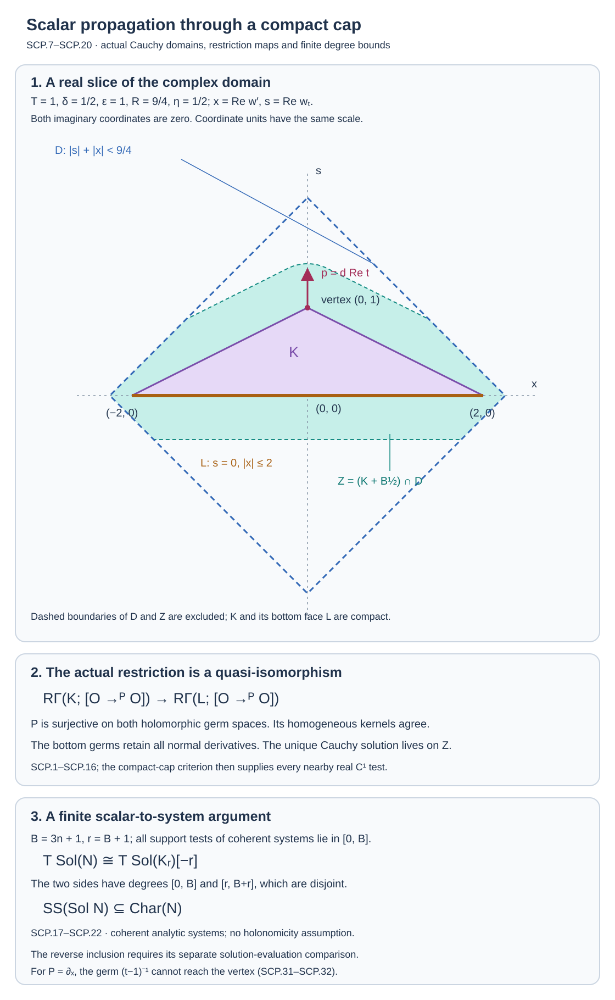
Figure 3.47. The real slice has \(T=1\), \(\delta=1/2\), \(\epsilon=1\), \(R=9/4\), and \(\eta=1/2\), as in Solution 3.EN. Its triangle is the closed cap, its bottom segment is the Cauchy face, and the shaded open neighbourhood is the slice of \(Z=(K+B_{1/2})\cap D_{9/4}\). The normal covector points up at the vertex. The full domain is complex; the picture fixes both imaginary coordinates to zero. The displayed restriction and degree arguments are (SCP.16)–(SCP.20), and the characteristic comparison is Solution 3.EP. The drawing uses the exact Euclidean half-unit thickening and rational diamond intercepts.
3.323. The full kernel complex and finite operator cells
Work on a complex coordinate neighbourhood \(U\), and put \(D=\mathcal D_U^{\mathrm{an}}\), \(L=\mathcal O_U\), and \(\pi:T^*U\to U\). The full complex \[ K=\mu\operatorname{hom}(L,L),\qquad F(P)=\mu\operatorname{hom}(R\mathcal Hom_D(P,L),L) \tag{MEC.1} \] uses the ordinary derived microlocal Hom of Local morphisms in cotangent directions, SH02-MH-HOM. In particular \(K\) is a complex, and is not being replaced by its degree-zero cohomology.
Right multiplication by \(a\) is an endomorphism of the free left module \(D\). Applying \(\mathcal Hom_D(-,L)\) makes it left action by \(a\) on \(L\); applying microlocal Hom in its first variable makes it precomposition by that action on \(K\). Thus \(K\) has a right \(\pi^{-1}D\)-action. Its associativity is already the identity \((k\circ a)\circ b=k\circ(ab)\) before taking any normal limit. The output action is postcomposition and commutes with this input action.
These are actions on the derived complexes. One can retain them by resolving \(L\) in left operator modules, and taking the internal Hom complex before normal specialization and Fourier transformation. An injective operator-module sheaf is injective after forgetting to vector sheaves: induction \(D\otimes_{\mathbf C}-\) is exact on stalks. Resolving the output preserves the commuting input and output actions. In the normal deformation the two base maps extend to the diagonal at parameter zero. Their operator-ring actions therefore pass through the inverse and direct images, support cones and Fourier kernel to the indicated pullback ring. The functorial module resolutions and finite totalizations retain the homotopies as well as the degree-zero maps.
For every bounded finite locally free operator complex \(P\), there is a natural equivalence \[ K\otimes^L_{\pi^{-1}D}\pi^{-1}P\simeq F(P). \tag{MEC.2} \] Here is the finite-cell proof. On one free term both sides are the corresponding finite sum of \(K\), and a matrix is sent to its written Hom transpose with the input precomposition action just specified. Before normal specialization the evaluation on homogeneous entries has the sign \[ \Theta(k\otimes p)(f) =(-1)^{|p||f|}\,k(f(p)). \tag{MEC.3} \] The internal Hom differential is \(d(g)=d g-(-1)^{|g|}g d\). Substituting this expression on the two sides of (MEC.3) gives the tensor differential \(d k\otimes p+(-1)^{|k|}k\otimes d p\). Since operator entries have degree zero and \(f\) is operator linear, \(\Theta((k a)\otimes p)=\Theta(k\otimes a p)\). Thus evaluation is balanced and is a cochain map. The normal and Fourier functors preserve this map on each finite sum. Filtering \(P\) by its finitely many free cells, their exact triangles prove (MEC.2) by induction. This also proves naturality for their attaching maps and homotopies. A bounded acyclic projective comparison complex is locally contractible, by splitting successively from its last nonzero term. Consequently different finite resolutions give the same derived comparison. The finite analytic resolution in (SCP.3)–(SCP.4) applies this result to every coherent \(N\).
3.324. The input needed from an actual real kernel
Suppose the actual real-kernel construction provides a density-normalized morphism with the prescribed input action, \[ \kappa:C[0]\longrightarrow K \quad\text{in }D((\pi^{-1}D)^{\mathrm{op}}). \tag{MEC.4} \] This is an analytic hypothesis. Tensor it with a finite resolution of \(N\), then use (MEC.2). The resulting degree-zero map is \[ C\otimes_{\pi^{-1}D}\pi^{-1}N \longrightarrow H^0\mu\operatorname{hom}(\operatorname{Sol}N,\mathcal O). \tag{MEC.5} \] A free resolution of the module \(N\) has degrees at most zero. Hence degree-zero cohomology of \(C\otimes^L N\) is its ordinary right-exact tensor product; no flatness of \(C\) is needed for this identity. For compatible actual ring maps \(D\to E\to C\), tensor associativity identifies its source with \(C\otimes_E(E\otimes_D N)\).
Injectivity of (MEC.5) requires injectivity after this derived tensor operation. An identification of \(H^0K\) alone does not supply it. A quasi-isomorphism (MEC.4) would be a sufficient stronger hypothesis, but is not assumed. In a concrete kernel formula, input differentiation also carries its density transpose; the abstract input action in §3.323 specifies the action which that formula must reproduce.
3.325. A degree-zero kernel map over a regular ring
The failure of a degree-zero shortcut occurs even over \(B=\mathbf C[x,y]\). Set \(k=B/(x,y)\), and use the finite free complexes \[ Q=[B^2\xrightarrow{(x,y)}B],\quad\deg Q=(0,1),\qquad j:B[0]\longrightarrow Q,\quad j(1)=(-y,x). \tag{MEC.6} \] If \(xa+yb=0\), reduction modulo \(x\) gives \(yb=0\) in \(\mathbf C[y]\), so \(b=xc\) and then \(a=-yc\). Conversely each such vector is in the kernel. Thus \[ H^0(Q)=B(-y,x),\qquad H^0(j)\text{ is an isomorphism}. \tag{MEC.7} \] Both complexes in \(j\) are bounded free, so their actual derived tensor with \(k\) is obtained term by term. It gives \[ H^0(B\otimes^L_B k)=k,\qquad H^0(Q\otimes^L_B k)=k^2,\qquad H^0(j\otimes^L_B k)=0. \tag{MEC.8} \] The last map is the literal vector \((-y,x)\) modulo \((x,y)\). The module \(k\) has a length-two free Koszul resolution: the middle kernel is precisely the vector just calculated, and the first map is injective because \(B\) is a domain. Thus neither infinite projective dimension nor a nonflat source is responsible. Positive cohomology of the full kernel complex cannot be discarded when forming (MEC.5).
3.326. A nonreduced coefficient countercheck
There is also a one-parameter example. Let \(B_0=\mathbf C[e]/(e^2)\), \(k_0=B_0/(e)\), and \[ Q_0=[B_0\xrightarrow e B_0],\quad\deg Q_0=(0,1),\qquad j_0:k_0[0]\longrightarrow Q_0,\quad j_0(1)=e. \tag{MEC.9} \] Since \(\ker(e)=eB_0\), the map \(H^0(j_0)\) is an isomorphism. Resolve its source by the complex with a copy of \(B_0\) in every nonpositive degree and differential multiplication by \(e\). It is exact in negative degrees because image and kernel are both \(eB_0\). A lift of \(j_0\) is multiplication by \(e\) in degree zero and zero in negative degrees. It is a chain map because \(e^2=0\). After tensoring with \(k_0\), \[ H^0(k_0\otimes^L_{B_0}k_0)=k_0,\qquad H^0(Q_0\otimes^L_{B_0}k_0)=k_0,\qquad H^0(j_0\otimes^L_{B_0}k_0)=0. \tag{MEC.10} \] The finite complex \(Q_0\) is already free, and the displayed lift computes the actual map. Equality of the two degree-zero vector spaces does not identify that map with an isomorphism.
3.327. The actual matrix Euler module
Now take coordinates \((x_1,\ldots,x_{n-1},t)\), \(n\ge1\), a constant \(r\)-by-\(r\) complex matrix \(A\), and \(r\ge1\). Let \(N_A\) have generators \(u_j\) and relations \[ \partial_{x_i}u_j=0,\qquad (t\partial_t)u_j=\sum_k A_{jk}u_k. \tag{MEC.11} \] This row convention means that a solution column \(f_j\) obeys \(t f'=Af\). No transpose of \(A\) is suppressed in the presentation.
The right-multiplication Koszul complex of the commuting \(\partial_{x_i}\) resolves their quotient. Its symbols are the coordinate sequence \(\xi_1,\ldots,\xi_{n-1}\) in \(\mathcal O[\xi,\tau]\). For one polynomial variable, division into its constant term and the variable times a polynomial contracts its two-term Koszul complex onto the constant coefficient ring. Iterating this contraction in the finitely many independent variables proves exactness of the symbol complex. Lift a symbol boundary and subtract its operator boundary; finite lowering of order proves exactness of the operator complex. The quotient has normal forms \(\mathcal O\langle\partial_t\rangle\). Right multiplication by the normal relation matrix is injective there, since its leading matrix is \(t\tau I_r\), a nonzero divisor. It commutes with the tangential resolution. Its two-term cone therefore gives a finite free resolution of \(N_A\), and the induced good symbols are \[ \operatorname{gr}N_A =\bigl(\mathcal O[\xi,\tau]/(\xi_1,\ldots,\xi_{n-1},t\tau)\bigr)^r. \tag{MEC.12} \] The same order argument proves strictness: a highest nonzero input symbol is multiplied by \(t\tau I_r\) and cannot disappear. Thus \[ \operatorname{Char}(N_A) =T_U^*U\ \cup\ T^*_{\{t=0\}}U. \tag{MEC.13} \] Applying Hom to this actual resolution gives the tangential holomorphic derivative complex with the normal two-term map \(P_A=t\partial_t-A\).
3.328. Central solution germs, including every resonance
Tangential derivatives contract on a product ball by radial integration in \(x\). On a holomorphic \(q\)-form the coefficient formula is \(\int_0^1s^{q-1}\iota_x\omega(sx,t)\,ds\); differentiation gives \(d_xH+Hd_x=1-\operatorname{ev}_{x=0}\). The formula is holomorphic with parameters by the compact-parameter Cauchy formula, and commutes with \(P_A\). In the total complex the two mixed terms cancel with its usual \((-1)^q\) sign. Thus the solution complex is, locally, constant in \(x\) with normal complex \([\mathcal O_t^r\xrightarrow{P_A}\mathcal O_t^r]\) in degrees \([0,1]\).
For \(f(t)=\sum_{m\ge0}f_mt^m\), the normal equation has coefficient equations \[ (mI-A)u_m=f_m. \tag{MEC.14} \] Let \(R_A=\operatorname{Spec}(A)\cap\mathbf Z_{\ge0}\), a finite set. If \(m>2\|A\|\), the Neumann series for \((I-A/m)^{-1}\) gives \(\|(mI-A)^{-1}\|\le2/m\). On all remaining nonresonant degrees there are only finitely many inverse matrices. At resonant degrees choose an inverse from the image to a fixed complementary subspace of the kernel. These estimates preserve the convergence radius of every holomorphic power series. They prove the actual stalk calculations \[ S_A=H^0(\operatorname{Sol}N_A)_0 =\bigoplus_{m\in R_A}t^m\ker(mI-A), \tag{MEC.15} \] \[ T_A=H^1(\operatorname{Sol}N_A)_0 =\bigoplus_{m\in R_A}\operatorname{coker}(mI-A). \tag{MEC.16} \] All other stalk degrees vanish. The cokernel identification records the resonant Taylor coefficients modulo their images. Since each \(mI-A\) is square, rank-nullity gives \(\dim S_A=\dim T_A\), with no diagonalizability assumption.
3.329. Solutions on a negative halfdisc
Let \(W=\{0<|t|<\rho,\ \operatorname{Re}t<0\}\). It is convex, simply connected and avoids zero; choose a holomorphic logarithm there. The matrix \[ Y(t)=\exp(A\log t),\qquad Y^{-1}(t)=\exp(-A\log t),\qquad tY'=AY \tag{MEC.17} \] is holomorphic and invertible. For every holomorphic forcing \(f\) on \(W\), \[ u(t)=Y(t)\left(c+\int_{t_0}^t Y(s)^{-1}f(s)\,\frac{ds}{s}\right) \tag{MEC.18} \] solves \(P_Au=f\). One may use the straight segment, which lies in \(W\) by convexity. For any holomorphic integrand \(g\), its integral is \((t-t_0)\int_0^1g(t_0+s(t-t_0))\,ds\). Differentiating gives the integral of \(g+s(t-t_0)g'\), which is the endpoint difference of \(s g(t_0+s(t-t_0))\) and hence is \(g(t)\). Compactness of the segment inside the open domain justifies holomorphic differentiation under this finite integral by the local Cauchy formula. Applying this construction to \(1/t\) also constructs the logarithm used in (MEC.17): choose its value at \(t_0\), and differentiating \(e^{\log t}/t\) shows that this quotient is the constant one. Formula (MEC.18) now follows by differentiation. For zero forcing it says that \(Y^{-1}u\) is constant. Thus the homogeneous solution space is \(\mathbf C^r\), and the map \(P_A\) on this open set is surjective.
These statements compute derived sections as well. A product ball in \(x\) times \(W\) has the strict plurisubharmonic exhaustion obtained by adding \(|x|^2+|t|^2\), the terms \(-\log(\rho_x^2-|x|^2)\), \(-\log(\rho^2-|t|^2)\), and \(-\log(-\operatorname{Re}t)\). Its holomorphic acyclicity is the finite Dolbeault argument used in §3.312. The finite free solution complex therefore computes derived sections, and its tangential radial contraction commutes with the normal map. Under restriction to smaller product balls and halfdiscs, the constant \(c\) in a fixed branch frame identifies the kernels compatibly. Consequently the actual open-direct-image stalk from \(\operatorname{Re}t<0\) is \[ (Rj_*j^{-1}\operatorname{Sol}N_A)_0=\mathbf C^r[0]. \tag{MEC.19} \] For \(n=1\) the tangential ball and its contraction are omitted.
3.330. An exact defining support test for every matrix
Put \(Z=\{\operatorname{Re}t\ge0\}\), and let \(V_A=(R\Gamma_Z\operatorname{Sol}N_A)_0\). Localization gives the actual fibre sequence \[ V_A\longrightarrow(\operatorname{Sol}N_A)_0 \longrightarrow\mathbf C^r[0]. \tag{MEC.20} \] The map on degree zero is restriction of the actual solution germ. In the frame (MEC.17) it takes \(t^m v\), \(Av=mv\), to \(v\). Distinct eigenspaces are independent, so its image is \[ E_A^+=\bigoplus_{m\in R_A}\ker(mI-A)\subset\mathbf C^r, \tag{MEC.21} \] and it is injective. Independence of the distinct eigenspaces follows by applying \(\prod_{j\in R_A\setminus\{m\}}(A-jI)\) to a relation between them: it kills all terms except the \(m\)-eigenvector, multiplied by the nonzero scalar \(\prod_{j\in R_A\setminus\{m\}}(m-j)\). The long exact sequence, with (MEC.15)–(MEC.19), gives \[ \begin{gathered} H^q(V_A)=0\quad(q\ne1),\\ 0\longrightarrow\mathbf C^r/E_A^+ \longrightarrow H^1(V_A)\longrightarrow T_A\longrightarrow0. \end{gathered} \tag{MEC.22} \] It follows that \[ \dim_{\mathbf C}H^1(V_A)=r. \tag{MEC.23} \] This is nonzero for every positive rank, even when all central solution stalks vanish or when all local monodromy eigenvalues are one.
For any nonzero complex \(\lambda\), repeat the calculation in \(w=\lambda t\); the operator \(t\partial_t-A=w\partial_w-A\) is unchanged. The defining support test with function \(\operatorname{Re}(\lambda t)\) is therefore nonzero. Translating the tangential centre proves that every nonzero conormal to \(\{t=0\}\) belongs to microsupport. Away from that hypersurface the local solution system has rank \(r\), so the constant-function test puts every zero covector there in microsupport. Closedness includes the zero covectors over the hypersurface too. Combining this with the general forward inclusion (SCP.20) proves \[ \operatorname{SS}(\operatorname{Sol}N_A) =\operatorname{Char}(N_A) =T_U^*U\cup T^*_{\{t=0\}}U. \tag{MEC.24} \] If \(r=0\), the module, its solutions and both supports are empty instead. No assertion about arbitrary coherent systems is inferred from the matrix Euler calculation.
3.331. A finite criterion for transporting the model
The following criterion states precisely the additional data needed to use a kernel-module normal form. Fix a nonzero normal covector \(p\) to \(\{t=0\}\), and retain \(r\ge1\). Represent the matrices of finite free resolutions \(P_N,P_A\) on one common neighbourhood \(U\). Let \(D_0\subset\Gamma(U,D)\) be the unital algebra generated by their finitely many operator entries, and let \(P_N^0,P_A^0\) be the finite free matrix complexes over \(D_0\). Their extensions to the sheaf \(D\) are the given resolutions; they need not be resolutions as \(D_0\)-modules. Let \(R\) be an actual unital \(D_0\)-algebra. Suppose a complex \(G\), bounded as a complex of vector sheaves, has a genuine derived \(R\)-module structure and a \(D_0\)-linear equivalence \[ G\simeq\mathcal O \quad\text{in the category localized at }p. \tag{MEC.25} \] Here an algebra acts as its constant sheaf, and linearity means a fraction of \(D_0\)-linear maps with denominator cones of underlying vector sheaves whose microsupport misses \(p\), retaining the full coherent action. This accommodates a ring of actual kernels defined on one fixed coefficient domain. An isomorphism of underlying vector objects without its action is insufficient.
Assume also an actual finite homotopy equivalence of complexes \[ R\otimes_{D_0} P_N^0\simeq R\otimes_{D_0} P_A^0. \tag{MEC.26} \] Applying Hom over \(R\) into \(G\) preserves this homotopy equivalence. Finite free base extension gives literal adjunction \(\mathcal Hom_R(R\otimes_{D_0}P^0,G)=\mathcal Hom_{D_0}(P^0,G)\). With output \(\mathcal O\), the latter is exactly the finite matrix solution complex for the given \(D\)-resolution. Lastly (MEC.25) can be applied to this finite complex: a denominator cone gives a complex with a finite filtration by finite sums of that same cone. The subcategory whose microsupport misses \(p\) is thick by §§3.303–3.304, so the resulting cone still misses \(p\). Thus \[ \operatorname{Sol}N\simeq\operatorname{Sol}N_A \quad\text{in }D^b(\mathbf C_U;p). \tag{MEC.27} \] The nonzero defining test in (MEC.23) makes the model nonzero in this category; hence the same is true for \(\operatorname{Sol}N\). This proves the criterion at its stated hypotheses. It uses the complexes in (MEC.26), and does not substitute an isomorphism of ordinary scalar-extended modules for their homotopy equivalence. The actual cutoff action, any required flatness and contact transport must supply these hypotheses when the criterion is applied. The real-kernel evaluation (SCP.23) is a second possible route to the general reverse inclusion, with its own density and injectivity hypotheses. Neither route is completed by the Euler model alone. Signed de Rham transport remains a further comparison.
3.332. Exercise and solution: two classes at a resonant Jordan block
Exercise 3.EQ. Take \(r=2\) and \(A e_1=0\), \(A e_2=e_1\). Compute the central groups and exhibit two independent degree-one support classes for the negative halfdisc.
Solution 3.EQ. The only resonant degree is zero, and \[ S_A=\mathbf C e_1,\qquad T_A=\mathbf C[e_2],\qquad E_A^+=\mathbf C e_1. \tag{MEC.28} \] Fix a logarithm on that halfdisc. Direct differentiation gives \[ \begin{gathered} v=e_2+(\log t)e_1,\qquad P_Av=0,\\ w=(\log t)e_2+\tfrac12(\log t)^2e_1, \qquad P_Aw=e_2. \end{gathered} \tag{MEC.29} \] Use the localization fibre complex in the order \((a,b)\), with differential \(d(a,b)=(d a,\operatorname{res}a-d b)\); it squares to zero because restriction is a cochain map. Its degree-one entries are central forcing germs and side solution germs. The two cocycles are \[ (0,v),\qquad(e_2,w). \tag{MEC.30} \] The first is not a boundary: a central homogeneous solution restricts only to a multiple of \(e_1\), whereas \(v\) contains the logarithmic branch. The second maps to the nonzero central cokernel class \([e_2]\). They are independent, since any linear relation first maps to that cokernel and then to the nonzero class of \(v\) modulo central homogeneous solutions. Formula (MEC.23) says that the whole space has dimension two, so these classes are a basis. The logarithmic forcing primitive is essential for the second class; a homogeneous solution alone cannot represent its nonzero image in \(T_A\).
3.333. Exercise and solution: no central stalk but a full support test
Exercise 3.ER. Take \(A=\operatorname{diag}(-1,1/2)\). Compute the solution stalk at zero and the defining support test, and explain the zero covector over zero.
Solution 3.ER. Neither eigenvalue is a nonnegative integer. Every matrix \(mI-A\), \(m\ge0\), is invertible, with the large-degree bound already used in (MEC.14). Consequently \[ (\operatorname{Sol}N_A)_0=0,\qquad (R\Gamma_Z\operatorname{Sol}N_A)_0=\mathbf C^2[-1]. \tag{MEC.31} \] The second equality denotes a complex with its sole cohomology in degree one. A branch frame on the negative halfdisc has columns \[ t^{-1}e_1,\qquad t^{1/2}e_2. \tag{MEC.32} \] Both give nonzero boundary classes, since there is no central homogeneous solution. The first column has a pole although its monodromy is one; the second is ramified. On every punctured neighbourhood the solution system has rank two. Its closed carrier therefore contains zero, so closedness of microsupport includes the zero covector there, despite the zero ordinary solution stalk. Confusing closed carrier with the set of nonzero stalks would lose this point.
3.334. Exercise and solution: the actual integer Euler gauge
Exercise 3.ES. Compare the solution complexes for \(A\) and \(A-I\) by differentiation. Compute its cone and explain why it is an equivalence at every nonzero normal covector even when the central stalks differ.
Solution 3.ES. The identity \(\partial_t(t\partial_t)=(t\partial_t+1)\partial_t\) gives \[ \begin{gathered} \partial_t P_A=P_{A-I}\partial_t,\\ \partial_t:[\mathcal O^r\xrightarrow{P_A}\mathcal O^r] \longrightarrow[\mathcal O^r\xrightarrow{P_{A-I}}\mathcal O^r]. \end{gathered} \tag{MEC.33} \] Differentiation is surjective on holomorphic sheaves, by termwise primitives. Its kernel in each degree is constant in \(t\). The induced normal map on these constants is \(-A\). After the tangential contraction this gives an actual short exact sequence of complexes \[ 0\longrightarrow[\mathbf C^r\xrightarrow{-A}\mathbf C^r] \longrightarrow\operatorname{Sol}N_A \xrightarrow{\partial_t}\operatorname{Sol}N_{A-I} \longrightarrow0. \tag{MEC.34} \] One can first form this sequence for the normal two-term complexes and then take their exterior constant tangential factor; the earlier contraction gives the displayed derived identification. The cone of differentiation is \([\mathbf C^r\xrightarrow{-A}\mathbf C^r][1]\), so its microsupport is in the zero section. It follows that differentiation, and hence every positive integer iterate, gives \[ \operatorname{Sol}N_A\simeq\operatorname{Sol}N_{A-mI} \quad\text{at every nonzero normal covector},\qquad m\ge1. \tag{MEC.35} \] This is a statement about the actual chain map and its cone. For example, in rank one when \(A=0\), the central normal complex has one copy of \(\mathbf C\) in each of degrees zero and one, whereas for \(A-I=-1\) its central stalk is zero. They are not isomorphic on an ordinary neighbourhood. Choosing \(m\) larger than the real parts of all eigenvalues removes every nonnegative-integer resonance in the shifted model, while (MEC.35) preserves its nonzero microlocal object. The real halfspace test kills the constant cone directly, so it also preserves that exact test. This provides an alternative reduction of (MEC.23) to the nonresonant case, without discarding the central cokernel in the original model.
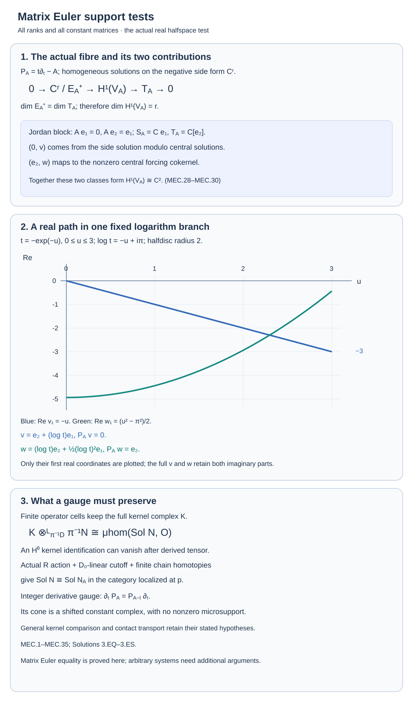
Figure 3.48. Equations (MEC.20)–(MEC.23) give the exact degree-one support sequence, including its resonant cokernel. For the Jordan matrix in Solution 3.EQ, the two classes are represented by \((0,v)\) and \((e_2,w)\). On the real path \(t=-e^{-u}\), \(0\le u\le3\), choose \(\log t=-u+i\pi\). The plotted first real coordinates are \(\operatorname{Re}v_1=-u\) and \(\operatorname{Re}w_1=(u^2-\pi^2)/2\). This is a path in the negative halfdisc of radius two, rather than the whole complex solution domain; the formulas retain both imaginary parts. The line and quadratic curve use their exact parametric formulas. Equations (MEC.1)–(MEC.10) explain the full kernel complex, and (MEC.25)–(MEC.27) state the additional data required for a general gauge transport. Solution 3.ES supplies an actual integer gauge with its constant cone.
3.335. Finite-order microlocalization at a nonzero covector
Let \(X\) be a complex \(n\)-manifold, \(x\in X\), and \(p\in T_x^*X\setminus\{0\}\). Write \(D=\mathcal D^{\mathrm{an}}_{X,x}\) and \(E=\mathcal E_{X,p}\). Here \(E\) is the actual finite-order analytic microlocal ring: its homogeneous coefficients have a finite upper degree, one common holomorphic coefficient domain, and a factorial bound for their negative degrees. Its products retain all the spatial derivatives in the ordered Leibniz formula. The coefficient class, actual product and coordinate normalization are proved in Regular singularities, §§5.19–5.22.1 and §5.24.1.
We prove that \(E\) is right \(D\)-flat on arbitrary modules and that, for every coherent analytic \(\mathcal D_X\)-module \(N\), \[ \operatorname{supp}(\mathcal E_X\otimes_{\pi^{-1}\mathcal D_X}\pi^{-1}N) =\operatorname{Char}(N) \qquad\text{on }T^*X\setminus X. \tag{MFL.1} \] The support on the left is the set of nonzero actual module stalks. This is an equality of underlying conic sets. At a fixed nonzero covector the flat extension need not be faithful on all \(D\)-modules.
Choose coordinates \((z_1,\ldots,z_n)\), with last covariable \(\tau\ne0\), and put \(w_i=\xi_i/\tau\). A linear coordinate change makes the central \(w\)-value zero. The order filtration gives \[ \operatorname{gr}D=\mathbf C\{z\}[\xi_1,\ldots,\xi_{n-1},\tau], \qquad \operatorname{gr}E=\mathbf C\{z,w\}[\tau,\tau^{-1}]. \tag{MFL.2} \] The second ring is the conic germ with its integer grading. Every holomorphic coefficient in \((z,w)\) is realized by a single degree-zero symbol with zero lower tail. The kernel of taking its principal coefficient is exactly the part of strictly smaller order. No operator completion is used in (MFL.2).
3.336. The mixed holomorphic coefficient extension
Put \[ A=\bigl(\mathbf C\{z\}[w]\bigr)_{(z,w)},\qquad H=\mathbf C\{z,w\},\qquad \widehat A=\mathbf C[[z,w]]=\widehat H. \tag{MFL.3} \] Both local rings are Noetherian. The convergent-series assertion follows from the Weierstrass proof in Complex analytic spaces and analytification, Lemma 2.1; polynomial extension and localization are proved in Noetherian and Artinian rings, §§1–2. To check the completions in (MFL.3), work modulo each power of the maximal ideal. Taylor truncation gives precisely the finite polynomials in all variables, and a denominator with nonzero constant term has its finite geometric inverse modulo that power. The identifications commute with all quotient maps.
The exact completion theorem in Completion, §§1–3, proves that completion of a Noetherian local ring is faithfully flat. Its hypotheses apply to both rings in (MFL.3). More explicitly, Artin–Rees makes the induced and intrinsic filtrations on every finite submodule cofinal. The surjective quotient transitions then give exact completion, and a finite presentation identifies completion with tensoring by the completed ring. This preserves finite-module injections. An arbitrary tensor and a witness to its vanishing use only finitely many module elements and balancing relations; putting them in finite submodules proves flatness on arbitrary modules. Finally, a nonzero module contains a cyclic submodule \(R/J\), with \(J\) proper; its completed tensor has the nonzero residue field as a quotient. Flatness preserves the cyclic injection, proving faithfulness.
For any injection of \(A\)-modules, tensor with \(H\), then with \(\widehat H\). The composite is tensor with the flat \(\widehat A\). Since \(\widehat H\) is faithfully flat over \(H\), it detects the kernel of the first tensor map. The same composite detects a module whose \(H\)-tensor is zero. Therefore \[ A\longrightarrow H\text{ is faithfully flat},\qquad \operatorname{gr}D\longrightarrow\operatorname{gr}E \text{ is flat}. \tag{MFL.4} \] For the second assertion, first invert \(\tau\), write \(\xi_i=\tau w_i\), localize the degree-zero coefficient ring at the chosen point, and extend scalars by \(A\to H\). Laurent extension in \(\tau\) preserves the exactness just proved. The faithfulness statement concerns this localized coefficient map; the whole map from \(\operatorname{gr}D\) also contains a localization.
3.337. Actual lifts of principal relations
Use left free modules written as rows, so their linear maps are right-multiplication matrices. Suppose \(W:E^a\to E^b\) and \(V:E^c\to E^a\) have order at most zero and \[ VW=0,\qquad \operatorname{im}V_0=\ker W_0 \quad\text{over }H. \tag{MFL.5} \] We will prove \(\ker W=\operatorname{im}V\). The subscript zero means principal degree zero; a strictly negative entry has zero principal coefficient.
Let \(\mu=\ker W_0\). The complete holomorphic coefficient-division proof Regular singularities, MFA.1–MFA.3 supplies finitely many holomorphic standard divisors \(g_\nu\) of \(\mu\). Their initial Taylor orthants cover the initial diagram, and their coefficient division is bounded on one fixed interval of polyradii. Choose holomorphic rows \(a_\nu\) with \(g_\nu=a_\nu V_0\), possible by (MFL.5). Realize these finitely many coefficients as order-zero actual symbols and set \[ R_\nu=a_\nu\circ V,\qquad RW=0,\qquad R_0=(g_\nu)_\nu. \tag{MFL.6} \] All rows have one common coefficient domain. This constructs every needed principal relation lift directly in the image of \(V\).
For the coefficient map \(T_0c=cR_0\), the same division proof gives a support-normalized quotient space \(\mathcal V\), a division map \(\Lambda\), a projection \(q\), and a map \(k\), with \[ \Lambda T_0|_{\mathcal V}=1,\quad q=1-T_0\Lambda,\quad \Lambda q=0,\quad k(bW_0)=qb. \tag{MFL.7} \] These are complex-linear coefficient operators; no \(H\)-linear splitting is asserted. Their bounds hold uniformly on the same radius interval. Define \(Tc=c\circ R\), \(L=T-T_0\), and \(W_-b=b\circ W-bW_0\). Each of \(L\) and \(W_-\) lowers homogeneous order by at least one, including all Leibniz derivative terms.
3.338. The finite upper order and the factorial tail
For an actual relation \(b\circ W=0\), define coefficientwise \[ c=\sum_{j\ge0}(-\Lambda L)^j\Lambda b, \qquad s=b-Tc. \tag{MFL.8} \] We must show that this expression belongs to the actual finite-order ring. The all-index word estimate Regular singularities, MFB.1–MFB.4 has exactly these hypotheses: finitely many right matrices of order zero with factorial negative tails, coefficient divisions bounded on one radius interval, and at least one unit of order loss per correction. It includes derivatives between successive coefficient divisions. For input degree \(m\) and total loss \(K\), the sum of the norms of all words is at most \[ C_0 C_1^K\frac{(|m|+K)!}{|m|!}\,|b_m|_{\mathrm{out}}. \tag{MFL.9} \] The outer and inner domains are fixed independently of \(K\). In that proof, if \(K=Q+J\), the right-tail factorials cost at most \(Q!\), and the \(J\) derivatives share a fixed total radius margin. The inequality \((|m|+K)^JQ!\le e^K(|m|+K)!/|m|!\) absorbs their cost. There are at most exponentially many words of loss \(K\), so they fit in \(C_1^K\). Bounded division at each intermediate radius requires no commutation with differentiation.
Let \(M\) be an upper order of \(b\). Every correction lowers degree, so \(c\) has no coefficient above \(M\). At each output degree, only finitely many input degrees and total losses occur. For output \(-n\) from input \(-a\), with \(1\le a\le n\), (MFL.9) and \(|b_{-a}|\le B D^a a!\) give \[ C_0 B n!\,C_1^{n-a}D^a, \qquad \sum_{a=1}^{n} C_1^{n-a}D^a\le(C_1+D)^n. \tag{MFL.10} \] For each of the finitely many nonnegative input degrees \(0\le m\le M\), the loss is \(n+m\). The binomial bound \[ \frac{(n+2m)!}{m!} \le n!\,2^{n+2m}\frac{(2m)!}{m!} \tag{MFL.11} \] puts its contribution under one constant times \(n!(2C_1)^n\). Thus \(c\) has one factorial negative bound on one domain. Every coefficient is holomorphic there, and a further fixed Cauchy margin controls every fixed derivative. Consequently \(c,s\in E\). This also matches the finite-upper-order clause MF.4 of the same proof. Finite upper order alone would not imply the required factorial estimate.
The coefficient identities in (MFL.7) and the geometric identity for (MFL.8) give \(\Lambda s=0\). Associativity and \(RW=0\) give \(s\circ W=0\). Hence \(qs=s\), and \[ s=-k(W_-s). \tag{MFL.12} \] A nonzero finite-order symbol has a largest nonzero homogeneous degree. The right side of (MFL.12) has strictly smaller order than \(s\), a contradiction. Thus \(s=0\), \(b=cR\), and (MFL.6) proves \(\ker W=\operatorname{im}V\). If the principal kernel is zero, the same largest-degree argument gives injectivity immediately. Empty matrix sizes are included.
3.339. Exact analytic tensoring and the basis shifts
Take a strict finite filtered free \(D\)-resolution of a finite module \(N\), supplied by (SCP.3)–(SCP.4). Its graded complex is exact in negative degrees. Flatness in (MFL.4) preserves that exactness. To retain the precise shifts, declare a source basis vector \(e_i\) to have filtration degree \(s_i\) and a target basis vector \(f_j\) degree \(t_j\). Then \[ \begin{gathered} \operatorname{ord}W_{ij}\le s_i-t_j,\qquad h=\tau^{-1},\\ e_i'=h^{s_i}e_i,\qquad f_j'=h^{t_j}f_j,\\ W'_{ij}=h^{s_i}W_{ij}h^{-t_j}. \end{gathered} \tag{MFL.13} \] These are invertible actual changes of basis over \(E\), and each normalized entry has order at most zero. The leading complex over \(H\) is the degree-zero dehomogenization of the exact graded complex. Adjacent actual differentials still have product zero. Applying (MFL.5)–(MFL.12) at each negative term therefore gives \[ \operatorname{Tor}^D_i(E,N)=0\qquad(i>0). \tag{MFL.14} \] Only finitely many free terms, coefficients, relations and domains are used.
For completeness this implies right flatness on all modules. An injection of finite modules has finite cokernel, so (MFL.14) and the tensor long exact sequence preserve that injection. Given an arbitrary injection, an element of its tensor kernel has finitely many tensor summands. A witness to its zero image is a finite sum of additivity and balancing relations. Choose finite submodules containing these entries and witnesses. Their injection is covered by the finite case and kills the original element. Tensor is right exact, so it is exact. Sheaf exactness follows stalkwise.
3.340. Strictness of the extended presentation
Suppose an input row of order \(a\) has image of order strictly below \(a\) under a normalized differential \(W\). Its leading coefficient lies in \(\ker W_0\), so it is a holomorphic combination of the standard divisors \(g_\nu\). Multiply their actual kernel lifts \(R_\nu\) by coefficients of order \(a\), using \(\tau^a\) to realize the homogeneous degree. Subtracting this row lowers the input order without changing its image. For an image whose order is at most a specified integer \(b\), finitely many such subtractions lower any initial input order to at most \(b\). This proves strictness of the extended differential, with the shifted version obtained by (MFL.13).
Give \(N_E=E\otimes_DN\) the quotient filtration from the extended finite presentation. Strictness identifies its associated graded module: \[ \operatorname{gr}N_E \cong\operatorname{gr}E \otimes_{\operatorname{gr}D}\operatorname{gr}N. \tag{MFL.15} \] Indeed the degree-\(b\) relations in the quotient are exactly the principal degree-\(b\) images of the preceding free term: strictness gives a preimage in that degree, and the reverse inclusion follows from filteredness. These are algebraic stalk tensors of actual operators.
3.341. Zero detection without an assumed separated quotient
Let \(E_0=F_0E\), and use the normalized finite target basis to put \(M_0=F_0N_E\). It is a finite left \(E_0\)-module. Since left multiplication by \(\tau\) sends order at most \(-1\) into order at most zero, \[ F_{-1}E=hE_0,\qquad F_{-1}N_E=hM_0. \tag{MFL.16} \] If \(\operatorname{gr}N_E=0\), then \(M_0=hM_0\). On a finite column of generators this gives \[ m=hA m,\qquad (I-hA)m=0 \quad(A\text{ over }E_0). \tag{MFL.17} \] The matrix \(hA\) has strictly negative order. Its geometric series is an actual order-zero inverse of \(I-hA\): (MFL.9)–(MFL.11), applied to a finite input of order zero, give its one-domain factorial bounds, while telescoping leaves no coefficient in the remainder once the number of factors exceeds that coefficient's loss. Multiplication on either side gives the identity. Thus \(m=0\), \(M_0=0\), and \(N_E=EM_0=0\). Conversely a zero module has zero associated graded module.
Finally, the Laurent graded module in (MFL.15) is determined by its degree-zero part: multiplication by \(\tau\) identifies adjacent degrees, and the finite shifts have been normalized. Localizing the characteristic module in the chosen cotangent chart, then dehomogenizing, gives a finite \(A\)-module. It is nonzero at the chosen point precisely when that point lies in \(\operatorname{Char}(N)\). The faithfully flat map \(A\to H\) detects exactly this nonvanishing. The preceding paragraph detects zero in the actual module, proving (MFL.1).
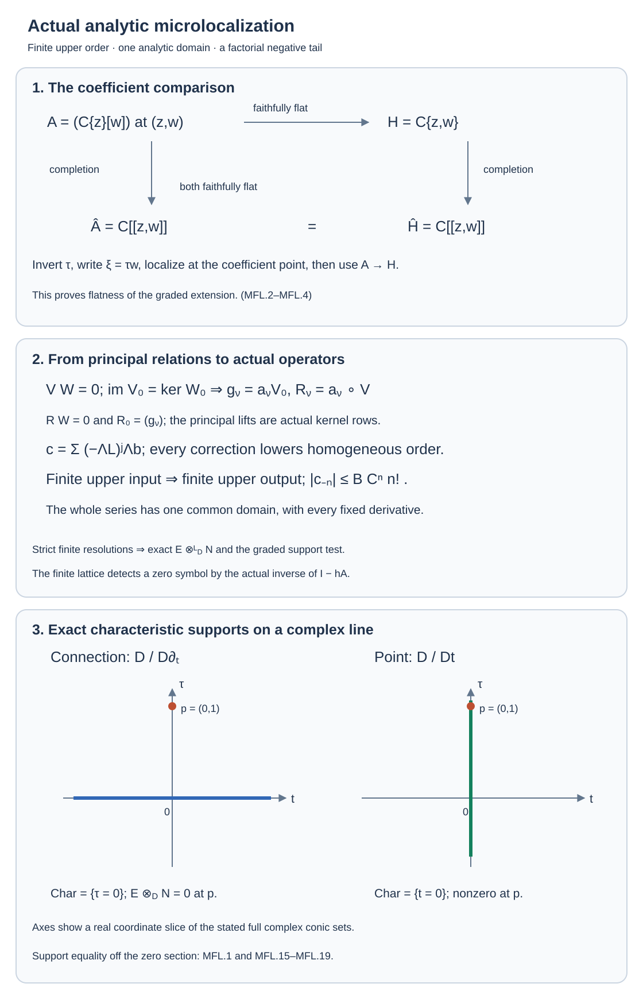
Figure 3.49. The upper square compares the two local coefficient rings through their common commutative completion; each map to that completion is faithfully flat. Actual principal relation lifts and the one-domain factorial estimate give the middle analytic statement. The lower two examples on a complex line distinguish the zero section from the conormal to \(t=0\). The horizontal and vertical axes are \(t\) and \(\tau\); the drawing shows their real coordinate slice, while the equations describe the full complex conic sets. The marked covector is \((0,1)\). No faithful extension from every \(D\)-module at that fixed covector is asserted.
3.342. Scope of microlocal scalar extension
For coherent \(N\), the ordinary tensor in (MFL.1) also computes the derived tensor, by right flatness. Its characteristic support is now detected by the actual finite-order ring. The argument applies to singular characteristic sets and does not require holonomicity. In dimension zero there are no nonzero cotangent covectors, and the scalar assertion is the identity over \(\mathbf C\).
The comparison of a general solution complex with an Euler model still requires the actual module action, localized denominator and finite chain homotopies in (MEC.25)–(MEC.27), or a complete alternative comparison. Flatness by itself does not provide these maps. In particular, it does not give the reverse solution-microsupport inclusion for arbitrary coherent systems or a nilpotent regularity theorem.
3.343. Exercises on actual flat microlocalization
Exercise 3.ET. In the one-dimensional constant-coefficient chart \(\tau\ne0\), put \(h=\tau^{-1}\). Show that \(\sum_{j\ge0}h^j\) is an actual finite-order symbol and is the inverse of \(1-h\). Explain why its conclusion cannot be inferred merely from the formal existence of an inverse, using \(\sum_{j\ge0}(j!)^2h^j\).
Exercise 3.EU. On a complex line compare the coherent left modules \(D/D\partial_t\) and \(D/Dt\). Compute their characteristic sets directly from their strict one-step presentations. At \(p=(0,1)\), determine which actual \(E\)-tensors vanish. Explain why faithful flatness of \(A\to H\) in (MFL.4) does not imply faithfulness of \(D\to E_p\).
Exercise 3.EV. Over \(E\), let \(W=(t h,1)^{\mathsf T}\) and \(V=(1,-t h)\). Verify (MFL.5), construct the maps in (MFL.7), and solve every relation \(b\circ W=0\) explicitly. Keep the order of every operator product.
3.344. Solutions to the microlocalization exercises
Solution 3.ET. There are no coefficients above degree zero. The coefficient of degree \(-j\) is the constant one, so it is holomorphic on any common coefficient product and satisfies \(1\le j!\) for \(j\ge1\). All spatial derivatives vanish. Since these are constant coefficients, the ordered product is the ordinary coefficient convolution, and \[ (1-h)\sum_{j\ge0}h^j=1 =\left(\sum_{j\ge0}h^j\right)(1-h). \tag{MFL.18} \] Each coefficient identity uses finitely many terms. The second proposed series is formal but violates every factorial bound \((j!)^2\le B C^j j!\). Indeed, for even \(j\), \(j!\ge(j/2)^{j/2}\), so \(j!/C^j\) is unbounded for every fixed \(C\). Its coefficients therefore do not define an actual symbol. Also, substituting a nonzero numerical value for \(h\) into a general factorial negative tail need not give a convergent scalar series; that substitution is not the definition of an analytic microlocal symbol.
Solution 3.EU. Right multiplication by \(\partial_t\) or by \(t\) gives an injective map \(D\to D\). The principal products are multiplication by \(\tau\) or \(t\) in the domain \(\mathbf C\{t\}[\tau]\); nonzero leading coefficients cannot cancel. The same calculation proves strictness, with source shift one for \(\partial_t\) and zero for \(t\). Hence \[ \operatorname{gr}(D/D\partial_t)=\mathbf C\{t\}[\tau]/(\tau), \qquad \operatorname{gr}(D/Dt)=\mathbf C\{t\}[\tau]/(t). \tag{MFL.19} \] The first is the zero section; the second is the conormal line to \(t=0\). At \(p=(0,1)\), \(\partial_t\) has the actual inverse \(h\), so the first tensor is zero. The second tensor is nonzero by (MFL.1). The first original module is nonzero: acting on the constant function one identifies it with \(\mathbf C\{t\}\) by the ordinary ordered operator normal form. Thus the flat map to this fixed microlocal stalk is not faithful. In (MFL.4), faithful coefficient extension comes after inversion of \(\tau\) and localization at the chosen characteristic point; that prior localization can already kill a nonzero module.
Solution 3.EV. Associativity gives \(VW=t h-t h=0\). The principal matrices are \(W_0=(0,1)^{\mathsf T}\) and \(V_0=(1,0)\), so their image and kernel agree. There is one principal divisor \(g=(1,0)\), with actual lift \(R=V\). Set \(T_0c=(c,0)\), \(Tc=(c,-c\circ t h)\), \(\Lambda(b_1,b_2)=b_1\), \(q(b_1,b_2)=(0,b_2)\), and \(k(a)=(0,a)\). These satisfy all four identities in (MFL.7). Since \(\Lambda(T-T_0)=0\), (MFL.8) reduces to \(c=b_1\). The original relation says exactly \(b_2=-b_1\circ t h\), so \(b=cV\). This verifies the relation lemma on an actual matrix with a negative-order entry. No interchange of \(t\) and \(h\) occurs.
3.345. A directional topology inside a coefficient domain
Work over \(\mathbf C\). A finite collection of analytic operators is defined on a common neighbourhood, which may be bounded. The cutoff used in (MEC.25) must respect that actual coefficient domain. We construct it using a relative directional topology and the canonical kernel action.
Let \(D\) be a convex ordinary open set in a finite-dimensional real vector space and let \(G\) be a closed convex cone. Give \(D_G\) the subspace topology induced by the global \(G\)-topology, and write \(q:D\to D_G\). A relative directional open \(W\) satisfies \((W+G)\cap D=W\). Its neighbourhood basis is \[ N_{x,\epsilon}=(B_\epsilon(x)+G)\cap D, \qquad \epsilon>0. \tag{RKC.1} \] Balls here are sufficiently small ordinary balls centred in \(D\). If \(x,y\in D\) and \(y-x\in G\), every directional neighbourhood of \(x\) contains \(y\). Thus a directional sheaf \(A\) has a canonical specialization map \(A_x\to A_y\), obtained by taking the germ at \(y\) of a representative near \(x\). Refining the representative proves well-definedness and transitivity. The ordinary inverse-image stalk is \((q^{-1}A)_x=A_x\).
3.346. The exact relative section map
For an ordinary open convex \(U\subset D\), put \(\operatorname{Sat}(U)=(U+G)\cap D\). Pullback and restriction give \[ \Gamma(\operatorname{Sat}(U);A) \xrightarrow{\sim}\Gamma(U;q^{-1}A). \tag{RKC.2} \] Injectivity follows by specialization: every point of the saturation lies above a point of \(U\).
For surjectivity take \(s\in\Gamma(U;q^{-1}A)\) and fix \(y\in\operatorname{Sat}(U)\). For \(x\in U\cap(y-G)\), specialize \(s_x\) to \(A_y\). This value is locally constant as a function of \(x\) in that set. Indeed, near \(x\), represent \(s\) by a directional section \(a\) on a directional neighbourhood \(W\) of \(x\). Shrink an ordinary ball \(B\subset U\cap W\) on which its pullback is \(s\). Since \(y\in x+G\), it belongs to \(W\). For each \(x'\in B\cap(y-G)\), the specialized germ is the same germ \(a_y\). The set \(U\cap(y-G)\) is nonempty and convex, hence connected, so the value is independent of the source point.
These values are germs of a directional section. With the preceding \(B,a\), the directional open \(\operatorname{Sat}(B)\) contains \(y\) and is contained in \(W\). For each point of \(\operatorname{Sat}(B)\), using a source in \(B\) identifies its assigned germ with the germ of \(a\). Thus these representatives glue on the saturation. Its pullback has the prescribed germs on \(U\), proving (RKC.2). All segments used here stay in \(U\cap(y-G)\subset D\); no coefficient is continued outside \(D\).
3.347. Flabby coefficients and the derived unit
Suppose \(A\) is flabby on \(D_G\). Any section of \(q^{-1}A\) on a compact convex \(K\subset D\) extends to \(D\). Compact-neighbourhood continuity first represents it on an ordinary neighbourhood of \(K\). A small Minkowski thickening gives a convex open \(U\) containing \(K\) within that neighbourhood and within \(D\). Formula (RKC.2) represents the section on \(\operatorname{Sat}(U)\), and directional flabbiness extends it to \(D_G\). Pullback supplies the required extension.
Consequently, for every ordinary locally closed convex \(C\subset D\), restriction of \(q^{-1}A\) has the compact-convex extension property and \[ H^j(C;q^{-1}A)=0\qquad(j>0). \tag{RKC.3} \] The precise ordinary extension theorem is Extending sections on convex sets, SH02-OR-CONVEX-COMPACT and SH02-OR-CONVEX-EXHAUSTION. Its proof first projects a compact convex set properly to an interval, using the interval closed-cover argument and the canonical compact-fibre restriction. A compact convex exhaustion with interiors in \(C\) covering \(C\) then permits compatible lifts in an injective resolution. These are the ordinary subspace topology and the full compact-convex extension hypothesis. The compact-fibre proof is Open prerequisite proofs, “Compact proper fibres and the section-restriction map”; its compact lifting input is Duality maps for constructible inverse and direct images, C1–C4. None requires finite rank or constructibility.
Resolve a directional sheaf by directional injectives, which are flabby. Every basic directional open in (RKC.1) is ordinary open convex. Formula (RKC.3) makes each pulled-back injective acyclic for sections there. Its saturation is itself, so (RKC.2) identifies its sections, by the actual unit, with the sections before pullback. Computing the direct image on this basis proves \[ A\xrightarrow{\sim}Rq_*q^{-1}A. \tag{RKC.4} \] Finite truncation triangles give the same result for bounded complexes. Every map is natural for a given constant coefficient-algebra action. For a possibly noncommutative \(\mathbf C\)-algebra, forget the action to apply the ordinary vanishing theorem; injective module sheaves remain vector-injective because induction from vector sheaves is exact on stalks. Thus the same unit holds in that module-derived category. No unbounded assertion is needed below.
3.348. The relative counit passes the real support tests
Let \(F\in D^b(\mathbf C_D)\), and suppose \(Rq_*F\) is bounded. Put \(P_GF=q^{-1}Rq_*F\) and let \(B\) be the cone of its counit. The adjunction identities and (RKC.4) give \[ P_GF\longrightarrow F\longrightarrow B, \qquad Rq_*B=0. \tag{RKC.5} \] For \(G=\{0\}\), the topology map is the identity and \(B=0\). Otherwise, if a covector is strictly negative on every nonzero direction in \(G\), the same remains true in a covector neighbourhood, by compactness of the unit directions. For a real \(C^1\) test function with such differential at \(x\), choose a small convex ball where its derivative along every unit cone direction is at most \(-c<0\). Saturate a smaller negative-sublevel patch by \(G\), intersecting with \(D\), and call the resulting relative directional open \(O\). Near \(x\) it agrees with the negative sublevel: the segment from a source in the patch to a sufficiently nearby target stays in the convex ball, so the function strictly decreases along that segment.
There is a fixed \(K\) such that \(N_{x,\epsilon}\setminus O\subset B_{K\epsilon}(x)\) for small \(\epsilon\). At a source in \(B_\epsilon(x)\), the function differs from its value at \(x\) by at most \(M\epsilon\). Advancing \((M/c+1)\epsilon\) along a unit cone direction enters the negative patch. Every later point still in \(D\) belongs to its saturation. Points reached before that distance are within \((M/c+2)\epsilon\) of \(x\). The relevant short segments lie inside the chosen ball; convexity of \(D\) retains every intermediate point between a source and a target in \(D\).
The differences therefore form a neighbourhood basis at \(x\) in the ordinary closed complement of \(O\). The localization triangles on \(N_{x,\epsilon}\), followed by their exact stalk colimit, identify the support-test stalk with that of \(q^{-1}R\Gamma_{D_G\setminus O}Rq_*B\), which is zero. This is the map calculation of Microsupport tests, SH02-MST-CONE-TO-TEST, with every saturation intersected with \(D\). The shrinking differences lie inside \(D\), so no exterior boundary term is added. Thus \[ \operatorname{SS}(B)\cap \bigl(D\times\operatorname{Int}G^{\circ a}\bigr)=\varnothing. \tag{RKC.6} \] Here \(G^{\circ a}\) is the antipodal polar. The conclusion uses the actual real support tests for arbitrary bounded vector-sheaf complexes.
3.349. An admitted round diamond and a compact cap
Use complex coordinates \((t,x_1,\ldots,x_d)\), put \(n=d+1\), and centre the covector at \(p=d\operatorname{Re}t\). Choose positive constants \(\epsilon,A_j\) and the full thick cone \[ \begin{gathered} G=\left\{\begin{gathered} \operatorname{Re}t=-l\le0,\\ |\operatorname{Im}t|\le\epsilon l,\\ |x_j|\le A_jl \end{gathered}\right\},\\ K_G=(1+\epsilon^2+\sum_jA_j^2)^{1/2}. \end{gathered} \tag{RKC.7} \] This cone is closed, convex and pointed, has ordinary interior, and satisfies \(|v|\le K_Gl\) and \(p(v)=-l<0\) for \(v\ne0\).
Take the round coefficient domain \[ D_R=(R e_t+\operatorname{Int}G) \cap(-R e_t-\operatorname{Int}G),\qquad R>0. \tag{RKC.8} \] Its explicit inequalities are \(|\operatorname{Re}t|<R\), \(|\operatorname{Im}t|<\epsilon(R-|\operatorname{Re}t|)\), and \(|x_j|<A_j(R-|\operatorname{Re}t|)\). Hence it is bounded, convex and contains zero. If endpoints lie in \(D_R\) and consecutive differences lie in \(G\), every intermediate point stays in \(D_R\): addition preserves the first open cone and subtraction of the remaining difference preserves the second. Compact endpoints retain strictly positive margins in these inequalities. This is the roundness used by the actual canonical kernel product, proved in Regular singularities, DL.4 and ID.2. Choose \(R\) so small that \(\overline{D_R}\) lies in the common coefficient neighbourhood and all endpoint differences fit in the finitely many normal coefficient radii. The bounds \(2R\sqrt{1+\epsilon^2}\) in time and \(2A_jR\) in space verify those margins.
Choose \(a,h,h_*\) with \(0<h<h_*\), \(a>0\), \(a+2h_*<R\), and put \[ \begin{gathered} \Omega=(a e_t+\operatorname{Int}G)\cap D_R,\\ \Omega_0=\Omega\cap\{\operatorname{Re}t<-h\},\qquad S=\Omega\setminus\Omega_0,\\ S_*=\Omega\cap\{\operatorname{Re}t\ge-h_*\}. \end{gathered} \tag{RKC.9} \] Both opens are directional relative to \(D_R\), and zero is in the ordinary interior of \(S\). The closures of both truncated caps lie compactly inside \(D_R\). Indeed, if \(u=\operatorname{Re}t\in[-h_*,a]\), their transverse bounds are \(\epsilon(a-u)\), \(A_j(a-u)\). For \(u\ge0\), they are strictly below the diamond bounds because \(a<R\); for \(u\le0\), the required inequality is \(a-2u<R\), supplied by \(a+2h_*<R\). Also \[ |z-a e_t|\le K_G(a+h_*) \quad(z\in\overline{S_*}). \tag{RKC.10} \] Thus these are actual bounded coefficient domains and compact cap margins, with no continuation of coefficients to an infinite cone.
3.350. The single degree-one holomorphic quotient
Now let \(q:\Omega\to\Omega_G\) be the relative topology map. A cofinal basis at \(z\in\Omega\) consists of \(V_{z,b}=(z+b e_t+\operatorname{Int}G)\cap D_R\), for sufficiently small \(b>0\) making it lie in \(\Omega\). Each is a bounded convex Stein domain; so is its nonempty intersection with the strict halfspace defining \(\Omega_0\). Here is an explicit exhaustion. For every translated cone inequality put \(L=\pm\operatorname{Re}t+c>0\), with transverse coordinates \(Y_0=\operatorname{Im}t-c_0\), \(Y_j=x_j-c_j\), and constants \(a_0=\epsilon,a_j=A_j\). Sum the barriers \[ |z|^2+\sum_{\text{cone faces}}\left( -\log L-\sum_{j=0}^d\log(a_j^2L^2-|Y_j|^2)\right), \tag{RKC.11} \] adding \(( -h-\operatorname{Re}t)^{-1}\) for the strict halfspace. The real Hessian of each negative Lorentz logarithm is nonnegative on its cone: scale to \(L^2-|Y|^2\) and use the linear hyperbolic rotation of DL.5, whose Hessian at \((L,0)\) is positive. Its Levi form is nonnegative, and \(|z|^2\) makes the sum strictly plurisubharmonic. Every boundary face makes a barrier diverge. Boundedness makes this a genuine exhaustion. Holomorphic acyclicity follows from the full Dolbeault and positive-weight proof in Stein domains in complex space, Theorems 2.1–2.2. Consequently \[ Rq_*\mathcal O_\Omega =q_*\mathcal O_\Omega[0]. \tag{RKC.12} \] For \(z\in S\), the basis intersection with \(\Omega_0\) is nonempty: a negative vertical segment crosses the bottom before leaving the longer cap \(S_*\Subset D_R\). It is open convex and connected, so holomorphic restriction is injective by the identity principle. The localization sequence and the vanishing just proved show \[ \begin{gathered} R\Gamma_S Rq_*\mathcal O_\Omega\simeq\mathcal F[-1],\\ \mathcal F_z=\underset{b}{\operatorname{colim}} \frac{\mathcal O(V_{z,b}\cap\Omega_0)}{\mathcal O(V_{z,b})} \qquad(z\in S). \end{gathered} \tag{RKC.13} \] Outside \(S\) the relative object is zero. This proves concentration for the actual sheaf, not just a chosen stalk. All quotients and their transition maps are ordinary holomorphic restrictions.
3.351. The whole canonical ring acts on this quotient
Let \(\mathcal R=E(G;D_R)\) be the canonical degree-\(n\) kernel cohomology ring with its input holomorphic top-form line, product and positive diagonal unit from Regular singularities, DL.1–DLG.7. We verify the domain conditions for that construction in the present relative topology.
For compact outputs \(K\Subset\Omega\), relevant inputs in the cap are in \[ (K+G)\cap\{\operatorname{Re}t\ge-h\}. \tag{RKC.14} \] Their cone lengths are bounded by the output time and \(h\), so this set is bounded and closed. It lies inside the global cone \(a e_t+\operatorname{Int}G\), by cone addition from an output there, and inside \(D_R\), by the compact cap margins. Hence it is compact inside the actual input open \(\Omega\). The longer cap supplies a strict margin for collars. Relative directional invariance also gives \[ \begin{gathered} z\in W,\quad u-z\in G,\quad z,u\in D_R \quad\Longrightarrow\quad u\in W,\\ p_1(A_G\cap p_2^{-1}S)\subset S, \end{gathered} \tag{RKC.15} \] where \(W\) is any relative directional output open, \(A_G\) is the kernel relation inside \(\Omega^2\), and \(p_1,p_2\) are output and input. For the second inclusion, an output in \(\Omega_0\) could only have inputs in \(\Omega_0\). The same facts hold for \(S_*\). These are precisely the properness and support-to-image conditions.
To make clear which canonical operation is used, take a full smooth kernel representative \(k=(\alpha,\beta)\) of degree \(n\), and an input relative cochain \(e=(c,f)\). On the two-support complement cube their cup has all four entries \[ \left(\begin{gathered} \alpha\wedge c,\quad\beta\wedge c,\\ (-1)^n\alpha\wedge f,\quad(-1)^{n-1}\beta\wedge f \end{gathered}\right). \tag{RKC.16} \] Apply the finite cube-to-full-cone map \(\Phi_\rho\), with its derivative-of-partition term, then the proper collar \(L_\eta\) equal to one near the intersection, and the normalized input trace \(Q_n\). The complete formulas and homotopies are DLG.1–DLG.5. They give \[ \begin{gathered} \mathcal A_k=Q_nL_\eta\Phi_\rho F(k,-),\\ [\mathcal A_k][\mathcal A_l]=[\mathcal A_{k*l}],\qquad [\mathcal A_1]=1. \end{gathered} \tag{RKC.17} \] Every map is defined on the same actual ordinary complement opens in \(\Omega^2\). The collar exists by (RKC.14); its derivative is away from the intersection, so the complement coefficients extend by zero exactly where the formula permits. No general complement coefficient is extended across its excluded support. A smaller relative directional output retains the input by (RKC.15). The finite-cover comparison DLG.14 therefore commutes with output restriction; its collar comparison remains proper on the common intersection. Consecutive inputs remain in \(D_R\) by roundness and in \(\Omega\) by relative cone invariance. Thus the full eight-entry triple cube and its normalized successive traces prove (RKC.17) here with the same signs and input density.
This supplies endomorphisms of the single cohomology sheaf \(\mathcal F\). Boundary, partition and collar homotopies give equality of these sheaf maps. Formula (RKC.17) is consequently a strict module identity on \(\mathcal F\): it is a genuine sheaf of left \(\mathcal R\)-modules. The construction applies to the whole canonical ring, including classes that have no supported-current representative.
3.352. The finite differential action is the ordinary one
Let \(D_0\) be any unital algebra of finite analytic differential operators with coefficients on \(D_R\). Its diagonal kernel map to \(\mathcal R\) is unital. For \(P=b(z)\partial_z^\nu\), its normalized positive product-Cauchy action is \[ \frac{b(z)}{(2\pi i)^n} \int_{|u_j-z_j|=r_j} \frac{\nu!\,f(u)\,du_1\cdots du_n}{(u-z)^{\nu+1}} =b(z)\partial_z^\nu f(z). \tag{RKC.18} \] Each circle is positively oriented, and their order is the input top-form order. U.2, especially (U.6)–(U.8), proves this normalization from the positive Cauchy point mass and its derivatives. In the full Dolbeault convention the ordered factor \((-1)^{n(n-1)/2}\) and the trace signs are exactly those of DLG.4–DLG.5. Thus the action of \(P\) on each holomorphic side of (RKC.13) is its usual local differential action; it respects restrictions and induces that same action on the quotient sheaf.
It follows that restricting the strict \(\mathcal R\)-module \(\mathcal F\) along \(D_0\to\mathcal R\) gives exactly this strict ordinary \(D_0\)-action. In particular all operator relations agree on the sheaf before choosing derived lifts. Let \[ \mathcal G=q^{-1}\mathcal F[-1]. \tag{RKC.19} \] This is a genuine \(\mathcal R\)-module object with underlying vector cohomology in degree one only. The concentration roof is \(D_0\)-linear: resolve \(\mathcal O_\Omega\) by the common exact vector-injective functor of DL.6, natural in all vector-sheaf maps, retain its strict \(D_0\)-action, and take the good truncation and degree-one projection. Its cohomology is the just-identified \(D_0\)-module \(\mathcal F\). This does not prescribe an action of arbitrary microlocal kernels on \(\mathcal O\) itself.
3.353. An actual localized denominator to holomorphic functions
Closed support commutes with directional direct image in this relative setting: \[ Rq_*R\Gamma_S\mathcal O_\Omega \simeq R\Gamma_S Rq_*\mathcal O_\Omega. \tag{RKC.20} \] Indeed \(S\) is closed in \(\Omega_G\), and its complement \(\Omega_0\) is open in both topologies. Compare the two localization triangles using open restriction and the literal composite direct-image identity. A vector-injective resolution is preserved by these direct images, which are right adjoints to exact inverse images. This proves (RKC.20) with its original maps. Each arrow is \(D_0\)-linear because support, restriction and the resolutions commute with the specified local differential action.
Combining (RKC.13), (RKC.19) and (RKC.20) gives the \(D_0\)-linear roof \[ \mathcal G\simeq q^{-1}Rq_*R\Gamma_S\mathcal O_\Omega =P_G R\Gamma_S\mathcal O_\Omega. \tag{RKC.21} \] The ordinary supported object is bounded: the finite Dolbeault resolution and localization give degrees \([0,n+1]\), as in (SCP.5). Its directional image is the degree-one object (RKC.13). Thus the boundedness premises of (RKC.5) hold in this actual instance. Its counit is a denominator at \(p\) by (RKC.6), and \(R\Gamma_S\mathcal O_\Omega\to\mathcal O_\Omega\) is an ordinary isomorphism near zero, which is in \(\operatorname{Int}S\). On a common small neighbourhood \(U\) this gives \[ \mathcal G|_U\simeq\mathcal O_U \quad\text{in }D^b(D_0\text{-Mod};p). \tag{RKC.22} \] This notation means that the specified \(D_0\)-linear roof has underlying vector-sheaf cones microsupport-null at \(p\). It does not require an ordinary neighbourhood quasi-isomorphism.
3.354. Finite comparison data and their mathematical scope
The construction supplies the genuine bounded cutoff and denominator required in (MEC.25) for the actual canonical ring \(E(G;D_R)\). For any specified finite operator diagram that is realized in this ring on the chosen domain and cone, the same \(\mathcal G\) supplies its coefficient action. Only finitely many domain and normal-radius margins were imposed. The finite realization theorem in Regular singularities, ID.2 and DL.7, retains the actual common ring and witnesses; a new infinite family of germ representatives would need its own common-domain assertion.
In particular, if the finite resolution complexes in (MEC.26) have an actual chain-homotopy equivalence after extension to this \(\mathcal R\), finite free adjunction and (RKC.22) give \[ \operatorname{Sol}(N)\simeq\operatorname{Sol}(N_A) \quad\text{in }D^b(\mathbf C_U;p). \tag{RKC.23} \] The finite Hom construction retains the specified homotopies, and its \(D_0\)-linear denominator cones remain null by their finite cell filtration, exactly as proved in (MEC.25)–(MEC.27). The cutoff now provides that criterion's coefficient object. Applying the criterion to the generic whole-module normal form still requires the actual base-extended resolution homotopies, faithful infinite-order extension and any contact-coordinate comparisons. The reverse solution-microsupport inclusion for arbitrary systems, signed de Rham comparison and nilpotent regularity are not consequences of the cutoff alone.
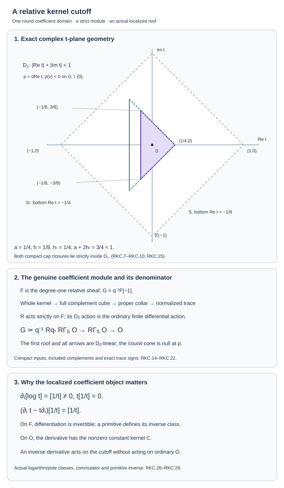
Figure 3.50. The planar panel is the exact complex \(t\)-plane case \(R=\epsilon=1\), \(a=1/4\), \(h=1/8\), \(h_*=1/4\). The outer diamond is \(D_1\); the inner triangular cap is \(S\), and the longer outlined cap is \(S_*\). Dashed cone faces are excluded; the solid bottom segments are included. All boundary coordinates and the inequality \(a+2h_*<R\) are retained. The maps below refer to the full kernel cup, complement cube, proper collar and normalized trace, then to the \(D_0\)-linear concentration and counit roof. Higher-dimensional transverse inequalities remain those of (RKC.7)–(RKC.10).
3.355. Exercises on the actual cutoff
Exercise 3.EW. Compute the open antipodal polar of (RKC.7). Verify the exact compact containment of both caps for the parameters in Figure 3.50, giving their three vertices in the complex \(t\)-plane.
Exercise 3.EX. In the same one-dimensional setting choose a holomorphic branch of \(\log t\) on the negative halfplane. Show that \([\log t]\) and \([1/t]\) give nonzero quotient germs in \(\mathcal F_0\). Compute their finite differential actions and verify the ordinary commutator on \([1/t]\).
Exercise 3.EY. For every cofinal convex basis domain \(V\) used at zero, prove that differentiation induces an isomorphism on \(\mathcal O(V\cap\Omega_0)/\mathcal O(V)\). Identify its inverse by primitive classes. Explain why the corresponding inverse cannot act on the ordinary holomorphic sheaf with its usual differential action.
3.356. Solutions to the cutoff exercises
Solution 3.EW. Write a real covector as \(\alpha\,d\operatorname{Re}t+\beta\,d\operatorname{Im}t+\sum_j\eta_j\cdot dx_j\), using the real Euclidean pairing in each complex spatial coordinate. For a fixed cone length \(l\), its maximum is \(l(-\alpha+\epsilon|\beta|+\sum_jA_j|\eta_j|)\), since the independent transverse balls attain their respective dual norm bounds. Thus \[ \operatorname{Int}G^{\circ a} =\{\alpha>\epsilon|\beta|+\sum_jA_j|\eta_j|\}. \tag{RKC.24} \] In the planar example this is \(\alpha>|\beta|\), containing \(p\). The cap closures have vertices \[ \begin{gathered} \overline S:\quad(1/4,0),\ (-1/8,3/8),\ (-1/8,-3/8),\\ \overline{S_*}:\quad(1/4,0),\ (-1/4,1/2),\ (-1/4,-1/2). \end{gathered} \tag{RKC.25} \] The outer diamond has vertices \((1,0),(0,1),(-1,0),(0,-1)\). Each cap vertex has \(|\operatorname{Re}t|+|\operatorname{Im}t|\le3/4<1\), so convexity puts the whole compact triangular closure strictly inside \(D_1\). The equal bound \(a+2h_*=3/4\) is precisely the general strict margin.
Solution 3.EX. The negative halfplane is convex, so a branch of \(\log t\) exists there by integrating \(1/t\), as in §3.329 and (MEC.17)–(MEC.18). It restricts to each \(V\cap\Omega_0\). If this restriction extended holomorphically to the connected \(V\), its extension \(g\) would satisfy \(tg'=1\) on the nonempty side open. The identity principle would give that equation on all of \(V\), contradicting its value at zero. Likewise an extension of \(1/t\) would satisfy \(tg=1\) at zero. These arguments work at every sufficiently small cofinal basis domain, so the colimit classes are nonzero. Ordinary differential action gives \[ \partial_t[\log t]=[1/t],\qquad t\partial_t[\log t]=[1]=0,\qquad t[1/t]=0. \tag{RKC.26} \] The constant function extends to \(V\), hence has zero quotient class. Since \(\partial_t[1/t]=[-1/t^2]\), \[ (\partial_t t-t\partial_t)[1/t] =0-t[-1/t^2]=[1/t]. \tag{RKC.27} \] Thus the commutator is the literal finite differential relation on the actual nonzero quotient germ.
Solution 3.EY. Both \(V\) and its nonempty negative-side intersection are convex one-dimensional domains. Every holomorphic function on either has a holomorphic primitive, obtained by integrating on straight segments and differentiating that integral. For a side function \(f\), the class of any side primitive \(F\) is independent of its additive constant. Replacing \(f\) by the restriction of a function on \(V\) changes that primitive by a function extending to \(V\), again up to a constant. This gives a well-defined inverse on the quotient. If \(f'\) extends to \(V\), subtract a primitive there; the remainder is constant on the connected side, so \(f\) also extends. Hence \[ \partial_t:\frac{\mathcal O(V\cap\Omega_0)}{\mathcal O(V)} \xrightarrow{\sim} \frac{\mathcal O(V\cap\Omega_0)}{\mathcal O(V)}. \tag{RKC.28} \] The derivative maps commute with restriction, and their uniquely determined inverse maps therefore commute as well. Passing to the stalk colimit gives the inverse differential action on \(\mathcal F_0\). On the ordinary sheaf, however, \[ \ker(\partial_t:\mathcal O_U\to\mathcal O_U) =\mathbf C_U\ne0. \tag{RKC.29} \] Thus an algebra containing an inverse of \(\partial_t\) cannot act on \(\mathcal O_U\) while restricting to its usual derivative. The bounded cutoff can carry that action. Its equivalence to \(\mathcal O_U\) is the localized denominator (RKC.22), with its stated covector and strict module structure.
3.357. Actual full coefficients and a finite solution comparison
Fix a complex manifold \(X\), a nonzero covector \(p\in T_x^*X\), and the actual rings \[ D=\mathcal D^{\mathrm{an}}_{X,x},\qquad E=\mathcal E_{X,p},\qquad B=\mathcal E^\infty_{X,p}. \tag{HGT.1} \] The last ring has one common holomorphic coefficient domain, the every-\(\varepsilon\) positive-head bounds and the factorial negative-tail bounds of Regular singularities, §§5.44–5.45. Its products retain the full ordered derivatives. In particular, it is not the unrestricted ring of formal series or arbitrary entire functions of a covariable.
Let \(N,N'\) be coherent analytic \(\mathcal D_X\)-modules near \(x\). We prove that an actual module isomorphism \[ \alpha:B\otimes_DN_x\xrightarrow{\sim}B\otimes_DN'_x \tag{HGT.2} \] in these same base coordinates gives an equivalence \[ \operatorname{Sol}(N)\simeq\operatorname{Sol}(N') \quad\text{in }D^b(\mathbf C_U;p) \tag{HGT.3} \] on a common neighbourhood \(U\) of \(x\). The solution complexes use the unshifted convention of (SCP.4). The proof constructs the finite resolution maps and homotopies needed by (MEC.25)–(MEC.27), then applies the actual cutoff (RKC.19)–(RKC.22). Neither module is required to be holonomic for this comparison. A change of base coordinates is treated in §3.364; a general contact change needs its own solution transport.
3.358. Faithful extension from finite to full microlocal operators
We use the complete right-flatness and proper-left-ideal proofs of Regular singularities, MF.1–MF.7 and FEP.1–FEP.9. Their exact consequences are right \(E\)-flatness of \(B\) on arbitrary left modules and \[ I\subsetneq E\quad\Longrightarrow\quad 1\notin BI, \qquad B/BI\ne0. \tag{HGT.4} \] Here \(BI\) means finite sums of actual products, with no closure. The analytic quotient in that proof is complex linear, with coefficient projection \(q\), division \(d\), and order-lowering correction \(L\): \[ \mathcal P=q(1+Ld)^{-1},\qquad \mathcal P1=1,\qquad \mathcal P(BI)=0. \tag{HGT.5} \] Its annihilation of the whole ideal includes the second source correction by actual lifted principal relations. Restricting to one coefficient complement would not suffice. FEA.1–FEA.4 gives uniformly bounded complex-linear coefficient divisions; FEB.1–FEB.5 gives the whole word estimates, with one domain chosen before every homogeneous, spatial and iteration index. These prove the actual inverses and both identities in (HGT.5). This is the earlier proved analytic input; the algebraic consequences below retain its full module quantifiers.
For a left ideal \(I\), balancing gives inverse maps \[ \begin{gathered} B\otimes_E(E/I)\longleftrightarrow B/BI,\\ b\otimes(a+I)\longmapsto ba+BI,\qquad b+BI\longmapsto b\otimes(1+I). \end{gathered} \tag{HGT.6} \] If \(0\ne m\in M\), its annihilator \(I\) is proper and \(E/I\to M\), \(a+I\mapsto am\), is injective. Flatness preserves that injection. The class of one in (HGT.6) is nonzero by (HGT.4), and maps to \(1\otimes m\). Hence \[ M\longrightarrow B\otimes_EM, \qquad m\longmapsto1\otimes m \quad\text{is injective for every }M. \tag{HGT.7} \] This also detects nonzero objects. If a morphism becomes zero after tensoring, applying (HGT.7) to each of its values makes it zero. Exactness and detection applied to the kernel and cokernel reflect isomorphisms. None of this asserts fullness or injectivity on higher extension groups.
3.359. Analytic resolutions over the full coefficient ring
The finite-order flatness theorem (MFL.1)–(MFL.19) and ordinary balancing give \[ B\otimes_DM\simeq B\otimes_E(E\otimes_DM). \tag{HGT.8} \] The forward inverse pair sends \(b\otimes m\) to \(b\otimes(1\otimes m)\) and \(b\otimes(e\otimes m)\) to \(be\otimes m\). Both component tensor functors are exact, so \(B\) is right \(D\)-flat. Tensoring the exact sequences defining cycles and boundaries also gives \[ H^i(B\otimes_DC^\bullet) =B\otimes_DH^i(C^\bullet) \tag{HGT.9} \] for every cochain complex; this is a degreewise argument, without a totalization or completion.
Choose the actual finite locally free analytic resolutions of (SCP.3)–(SCP.4), then restrict to stalks. Pad with zero terms to write them in the same interval \([-m,0]\): \[ P^\bullet\longrightarrow N_x,\qquad Q^\bullet\longrightarrow N'_x. \tag{HGT.10} \] Their \(B\)-extensions are bounded finite free resolutions by (HGT.9). Their matrices remain the images of the original finite analytic operator matrices. The smaller algebra generated by these entries is not assumed to have an exact resolution.
3.360. Constructing the two finite comparison maps
For brevity write \(P_B=B\otimes_DP\), \(Q_B=B\otimes_DQ\). Lift \(\alpha\) through the augmentation \(Q_B^0\to B\otimes_DN'_x\), choosing a preimage for each image of a finite basis of \(P_B^0\). This gives \(f^0\). At degree minus one, \(f^0d_P^{-1}\) has zero augmentation because \(f^0\) lifts \(\alpha\). It therefore lies in \(\ker\epsilon_Q=\operatorname{im}d_Q^{-1}\). Lift each finite basis image through that surjection to obtain \(f^{-1}\).
For \(i<-1\), suppose the higher components have been constructed. The chain equation one degree above and \(d_P^2=0\) show that \(f^{i+1}d_P^i\) takes values in \(\ker d_Q^{i+1}=\operatorname{im}d_Q^i\). Again lift the finitely many basis images. Thus \[ d_Q^if^i=f^{i+1}d_P^i \qquad(-m\le i<0). \tag{HGT.11} \] If there is no preceding nonzero term of \(Q_B\), exactness makes the cycle to be lifted zero, so the zero map supplies that component. The finite recursion gives a cochain map \(f:P_B\to Q_B\) lifting \(\alpha\). Applying the same construction to \(\alpha^{-1}\) gives \(g:Q_B\to P_B\). All entries and equations lie in the actual ring \(B\).
3.361. Both homotopies, with their matrix sides
Set \(k=gf-1\) on \(P_B\). Its degree-zero augmentation is zero, so choose \(H^0:P_B^0\to P_B^{-1}\) with \(d_P^{-1}H^0=k^0\). Inductively, if the higher homotopy terms have been chosen, put \[ r^i=k^i-H^{i+1}d_P^i. \tag{HGT.12} \] The chain equation for \(k\) and the homotopy equation in degree \(i+1\) give \(d_P^ir^i=0\). Exactness and the finite free source permit a lift \(H^i\) through \(d_P^{i-1}\). At the bottom, that cycle is zero because the first nonzero differential is injective. Therefore \[ gf-1=d_PH+Hd_P. \tag{HGT.13} \] The same recursion on \(Q_B\) supplies \(K\) with \[ fg-1=d_QK+Kd_Q. \tag{HGT.14} \] The proof used finite free lifting through actual surjections. It does not require \(B\) to be Noetherian, \(\alpha\) to preserve filtrations, or arbitrary modules to have split resolutions.
To fix the noncommutative conventions, write left free modules as rows. Denote the matrices of \(d_P^i,d_Q^i,f^i,g^i,H^i\) by \(D_i,E_i,F_i,G_i,H_i\). Then the equations are \[ \begin{gathered} D_iF_{i+1}=F_iE_i,\qquad E_iG_{i+1}=G_iD_i,\\ F_iG_i-I=H_iD_{i-1}+D_iH_{i+1}. \end{gathered} \tag{HGT.15} \] The corresponding equation for \(G_iF_i-I\) uses \(K_iE_{i-1}+E_iK_{i+1}\). No matrix factors have been interchanged.
3.362. One actual canonical ring for the whole finite diagram
Choose linear base coordinates so that the real covector is \(p=d\operatorname{Re}t\). Include all entries of \(P,Q,f,g,H,K\), their finite products, and all the zero witnesses in (HGT.11)–(HGT.15). The complete finite realization proof in Regular singularities, ID.1–ID.2 and DL.7 represents this finite list in one canonical ring \[ \mathcal R=E(G;D_R). \tag{HGT.16} \] Its final support is the full thick cone (RKC.7), with \(p\in\operatorname{Int}G^{\circ a}\), and its coefficient domain is the admitted round diamond (RKC.8). All actual coefficient products, normal radii, support enlargements and finite boundary witnesses are placed at one common later index before restricting to that diamond. The diagonal finite differential classes retain their ordinary action and input holomorphic top-form normalization. Only finitely many such data occur; no universal map from every \(B\)-germ to a preassigned ring is asserted.
Let \(D_0\) be the unital algebra of the finitely many analytic differential entries of \(P,Q\) on this common domain, and let \(P^\bullet_{\mathrm{alg}},Q^\bullet_{\mathrm{alg}}\) denote the finite free \(D_0\)-matrix complexes they define. Their extensions to the analytic operator sheaf recover the resolutions in (HGT.10). Their extensions to \(\mathcal R\) retain the realized maps and both homotopies: \[ \mathcal R\otimes_{D_0}P^\bullet_{\mathrm{alg}} \simeq_h\mathcal R\otimes_{D_0}Q^\bullet_{\mathrm{alg}}. \tag{HGT.17} \] The symbol \(\simeq_h\) means the actual finite chain-homotopy equivalence (HGT.11)–(HGT.14). The \(D_0\)-complexes need not resolve their \(D_0\)-cokernels. Equation (HGT.17) follows from the realized ring identities, without flatness of \(\mathcal R\) over \(D_0\).
3.363. Apply the strict cutoff and retain the derived maps
The construction (RKC.19)–(RKC.22) supplies a genuine bounded \(\mathcal R\)-module object \(\mathcal G\) and an actual \(D_0\)-linear localized denominator \(\mathcal G\simeq\mathcal O\) at \(p\). Apply \(\operatorname{Hom}_{\mathcal R}(-,\mathcal G)\) to (HGT.17). For a homogeneous Hom cochain \(\phi\) of degree \(q\), precomposition with a degree-minus-one homotopy has the sign \[ S_H(\phi)=(-1)^q\phi H. \tag{HGT.18} \] Using \(d\phi=d_{\mathcal G}\phi-(-1)^q\phi d_P\), expansion gives \(dS_H+S_Hd=\phi(d_PH+Hd_P)\); the two terms containing \(d_{\mathcal G}\phi\) cancel. The same formula applies to \(K\). Thus both inverse identities and their homotopies survive in the finite Hom complexes.
Finite free adjunction identifies these with the corresponding \(D_0\)-matrix Hom complexes with coefficients in \(\mathcal G\). Its \(D_0\)-linear denominator then replaces \(\mathcal G\) by \(\mathcal O\): the cone of the induced map has a finite filtration whose pieces are finite sums of shifts of the same null cone. The microsupport-null subcategory is thick, by the full fraction and cone proof in (MCM.3)–(MCM.6). Consequently the denominator stays invertible after each finite Hom construction. The resulting complexes are exactly the finite analytic solution complexes of (SCP.4). This proves (HGT.3).
Two lifts of the same augmented module map differ by a chain map with zero augmentation. The recursion (HGT.12)–(HGT.13) constructs a homotopy for their difference. Thus the resulting localized map is independent of the finite resolution lift, after a common finite realization. Composing two augmented maps and comparing their finite lifts uses that same homotopy argument. This retains the actual comparison data rather than choosing unrelated endomorphisms in a vector-derived category.
3.364. Ordinary coordinate changes preserve the support tests
Let \(\varphi:U\to U'\) be a biholomorphism and let its differential-operator map be the chain-rule map. Pullback gives a literal coefficient isomorphism \(\varphi^{-1}\mathcal O_{U'}\to\mathcal O_U\); applying it to a finite free analytic resolution identifies the solution matrix complexes. In the induced left-module convention, \[ \operatorname{Sol}(\varphi_D^*N') \simeq\varphi^{-1}\operatorname{Sol}(N'). \tag{HGT.19} \] The identification is obtained on the actual analytic Hom complex, so it respects its cochain differential and attaching maps.
This change preserves the real definition of microsupport. A real test \(f'\) on \(U'\) pulls back to \(f'\circ\varphi\); its closed test side pulls back to the same closed side on \(U\), with differential \((d\varphi)^Tdf'\). The inverse homeomorphism identifies sections with those supports, and its exact pullback carries injective resolutions to injective resolutions because it is an equivalence of sheaf categories. Thus the support-test stalks agree in all degrees. Applying the same argument to \(\varphi^{-1}\) gives \[ \operatorname{SS}(\varphi^{-1}F') =\{(x,(d\varphi_x)^T\eta): (\varphi(x),\eta)\in\operatorname{SS}(F')\}. \tag{HGT.20} \] Therefore a holomorphic time shift \(t'=t-\psi(x)\), \(x'=x\), may be included in (HGT.2) with the actual solution transport just proved. A transformation mixing base and cotangent variables has no such inverse-image argument.
3.365. Euler detection in the stated ordinary coordinates
Suppose (HGT.2) has \(N'=N_A\), the actual constant-matrix Euler model of §§3.327–3.330, and \(p\) is a nonzero normal covector to \(t=0\). If \(p\in\operatorname{Char}(N)\), then (MFL.1) gives \(E\otimes_DN_x\ne0\). Formula (HGT.7) implies \(B\otimes_DN_x\ne0\), so the isomorphic model has positive rank. For that rank the complete real support calculation (MEC.20)–(MEC.24) gives \[ \begin{gathered} p\in\operatorname{Char}(N),\quad B\otimes_DN_x\simeq B\otimes_D(N_A)_x\\ \Longrightarrow\quad p\in\operatorname{SS}(\operatorname{Sol}N). \end{gathered} \tag{HGT.21} \] Indeed (HGT.3) identifies the objects in the category localized at \(p\), and the model is nonzero there. Conversely, (SCP.20) gives the forward support inclusion for all coherent analytic \(N\).
There is an exact source match for the standard-coordinate generic normal form. In Regular singularities, GM.A–GM.B, let \(M=E\otimes_DN_x\) be holonomic and let its actual lattice \(M_0\subset M\), with \(EM_0=M\), be free over the commutative factorial coefficient ring \(R_0\) of DP.2. The lattice is the whole \(R_0^r\), not just its reduction or completion. Its coefficient-column actions are \(t=h^2\partial_h+T\), \(z_i=h\partial_i+Z_i\), where \(h=\tau^{-1}\), \(z_i=\xi_i/\tau\). The matrices \(T,Z_i\in M_r(R_0)\) satisfy \(T(0,x)^k=0\) for some \(k\ge1\), \(h^2\partial_hZ_i-h\partial_iT+[T,Z_i]=hZ_i\), and \(h(\partial_iZ_j-\partial_jZ_i)+[Z_i,Z_j]=0\), precisely FG.1. Under these stated hypotheses the complete gauge FG.A–FG.D gives actual inverse matrices \(V,W\) and one constant \(H\), with \[ \begin{gathered} VW=WV=I,\qquad \partial_\tau V=TV-\tau^{-1}VH,\\ \partial_iV+\tau Z_iV=0. \end{gathered} \tag{HGT.22} \] The whole finite presentation GM.8 and the commutators \([t,V]=-\partial_\tau V\), \([D_{x_i},V]=\partial_iV\) give, for \(e_j=\sum_kV_{kj}u_k\), \[ D_{x_i}e_j=0,\qquad tD_te_j=\sum_k(H-I)_{kj}e_k. \tag{HGT.23} \] The inverse frame \(W\) satisfies the original relations by differentiating \(WV=I\). Thus these are inverse maps of the entire \(B\)-module, and the matrix in our row-generator Euler convention is exactly \[ A=(H-I)^{\mathsf T}. \tag{HGT.24} \] Equations (HGT.21)–(HGT.24) prove detection at every positive-rank point of this standard-coordinate parameter open. They use the ordinary Euler model in those coordinates, with no fractional power of \(\tau\) adjoined and no numerical evaluation of a divergent Gevrey series.
3.366. The contact premise for a general characteristic branch
The generic geometry in Regular singularities, DP.6 first applies a finite quadratic contact shear, then an ordinary holomorphic time shift to put a general smooth homogeneous Lagrangian branch into \(t=\xi'=0\). The time shift has the exact solution transport (HGT.19)–(HGT.20). The contact shear also requires a comparison of solution objects or cutoff kernels, with the correct input density and support maps. Ring isomorphisms and their balanced module maps alone do not provide it.
Equations HGT.21–HGT.24 give detection in the stated standard coordinates. The canonical pure coefficient comparison of §§3.440–3.442 carries it through the required finite contact chain without intermediate differential modules. Sections 3.439–3.446 gives holonomic analytic solution support; §§3.451–3.459 gives the density-normalized de Rham identity and bounded holonomic support. Arbitrary nonholonomic systems, the common Hecke-support premise and nilpotent regularity retain their separate hypotheses.
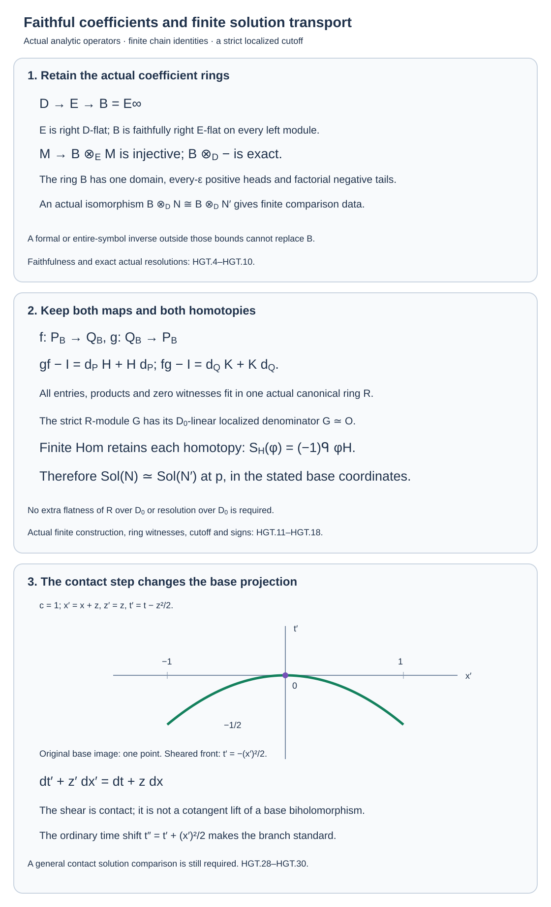
Figure 3.51. Both comparison maps and homotopies are finite matrices in the actual full coefficient ring; one common canonical kernel ring realizes all their equations. The lower panel is the exact normalized contact example of Solution 3.FB, with \(c=1\): the point conormal has \((x,t)=(0,0)\), while its sheared front is \((x',t')=(z,-z^2/2)\). The plotted interval is the real slice \(-1\le z\le1\); its parabola is exact. The contact equation is preserved, but the shear does not arise from a map of the base. All complex coordinates and the precise solution-transport boundary are retained in the text.
3.367. Exercises on actual finite comparison data
Exercise 3.EZ. Let \(a,b\) be arbitrary elements of a unital, possibly noncommutative ring. Prove that \(U=\left(\begin{smallmatrix}1&a\\b&1+ba\end{smallmatrix}\right)\) is invertible. Contract the two-term row complex with differential \(U\), then construct both homotopies comparing \(P\) with its direct sum with that complex. Retain the order of \(a,b\).
Exercise 3.FA. In the one-dimensional ordered symbol ring, use \(b\circ x=xb+\partial_\tau b\). The entire expression \((1-e^{-x\tau})/x\) would be a left inverse of \(x\). Prove that it fails the every-\(\varepsilon\) positive-head bounds on every common base neighbourhood. For its degree-\(L\) truncation compute the residual and its quotient normal form using \(\mathcal P=\operatorname{ev}_{x=0}\sum_{a\ge0}(-\partial_\tau d)^a\), where \(d\) deletes the constant Taylor term and divides by \(x\).
Exercise 3.FB. On the normalized cotangent chart of a complex surface with contact form \(dt+z\,dx\), verify that \(x'=x+cz\), \(z'=z\), \(t'=t-cz^2/2\) is a contact transformation. Apply it to \(\{x=t=0\}\). For \(c\ne0\), show that it cannot be induced by any local biholomorphism of the base, and identify the ordinary time shift that makes the transformed branch standard.
3.368. Solutions to the finite comparison exercises
Solution 3.EZ. Multiply the two triangular matrices in the stated order: \[ \begin{gathered} U=\begin{pmatrix}1&0\\b&1\end{pmatrix} \begin{pmatrix}1&a\\0&1\end{pmatrix},\\ U^{-1}=\begin{pmatrix}1&-a\\0&1\end{pmatrix} \begin{pmatrix}1&0\\-b&1\end{pmatrix} =\begin{pmatrix}1+ab&-a\\-b&1\end{pmatrix}. \end{gathered} \tag{HGT.25} \] The triangular inverse products are identities by direct multiplication. Thus the two-term complex \(C^{-1}\xrightarrow{U}C^0\) has contraction \(J^0=U^{-1}\): the degree-minus-one equation is \(UJ^0=I\), and the degree-zero equation is \(J^0U=I\), using row maps. Include \(P\) into \(Q=P\oplus C\) and project back. Their composite on \(P\) is the identity. The other composite minus the identity is zero on \(P\) and minus the identity on \(C\), so its homotopy is \(0\oplus(-J)\). These are precisely (HGT.13)–(HGT.15); both compositions and the minus sign are explicit. The two entries \(ab\) and \(ba\) occur in their required different positions.
Solution 3.FA. Its homogeneous coefficient of degree \(j\ge1\) is \((-1)^{j+1}x^{j-1}/j!\). On any fixed base disc \(|x|\le r\), \(r>0\), its norm is \(r^{j-1}/j!\). The every-\(\varepsilon\) bound would imply \[ r^{-1}(r/\varepsilon)^j\le M_\varepsilon \qquad(j\ge1), \tag{HGT.26} \] which is impossible for \(0<\varepsilon<r\). Holomorphy of the entire expression at \(x=0\) therefore does not put it in the actual ring \(B\). Its finite truncation is actual, and cancellation of consecutive terms gives \[ \begin{gathered} b_L\circ x=1+r_L,\qquad r_L=(-1)^{L+1}x^L\tau^L/L!,\\ \mathcal P r_L=-1. \end{gathered} \tag{HGT.27} \] For the last equality only the term \(a=L\) contributes: after \(L\) Taylor divisions, applying \((-1)^L\partial_\tau^L\) to \((-1)^{L+1}\tau^L/L!\) gives \(-1\). At \(r=1/2\) and \(\varepsilon=1/4\), the required weighted degree-\(L\) residual norm is exactly \(2^L\), even though its numerical value at \((x,\tau)=(1/2,1)\) has magnitude \(2^{-L}/L!\). The actual quotient remains nonzero. These are the exact common-domain and coefficient bounds in the proper-ideal theorem, not a completed-ideal argument.
Solution 3.FB. Direct differentiation gives \[ dt'+z'\,dx'=dt-cz\,dz+z(dx+c\,dz)=dt+z\,dx. \tag{HGT.28} \] On \(x=t=0\), the transformed branch has \(x'=cz\), \(t'=-cz^2/2\), \(z'=z\). For \(c\ne0\) it is the front \[ t'=-(x')^2/(2c),\qquad z'=x'/c. \tag{HGT.29} \] An ordinary base biholomorphism sends a cotangent fibre over one point to a cotangent fibre over one point. Its base projection on this branch would have rank zero. The displayed transformed projection has rank one, so this contact map cannot be such a lift. Finally set \[ t''=t'+(x')^2/(2c),\qquad x''=x',\qquad z''=z'-x'/c. \tag{HGT.30} \] Its contact form is again \(dt'+z'\,dx'\), and the branch becomes \(t''=z''=0\). This last step is an ordinary base change. The preceding shear is the part for which a separate solution or cutoff-kernel transport is still required.
3.369. Projective incidence and the two coefficient kernels
Let \(V\) be a complex vector space of dimension \(N+1\), with \(N\geq1\). Put \(X=\mathbf P(V)\), \(Y=\mathbf P(V^*)\), and let \(S\subset X\times Y\) be incidence: a line lies in a hyperplane. Its complement has open embedding \(j:\Omega\hookrightarrow X\times Y\). Transposition of the two factors is denoted by \(\mathrm t\). Define
\[ \begin{gathered} A=j_!\mathbf C_\Omega,\qquad B=Rj_*\mathbf C_\Omega,\\ K=A[N],\qquad L=\mathrm tB[N],\\ \Phi F=Rq_{X!}(K\otimes q_Y^{-1}F),\\ \mathcal TF=Rq_{Y!}(L\otimes q_X^{-1}F). \end{gathered} \tag{LIT.1} \]
In the second formula for a transform the projections belong to \(Y\times X\). Tensor products of complex-vector sheaves are derived tensor products, computed by ordinary stalkwise tensor. Inputs are globally bounded; they need not be constructible or have finite-dimensional stalks. The sheaves \(A\) and \(B\) are different kernels. In particular, the second is a derived open direct image.
The exact earlier proof is GL-DMOD, §5.57, LI.8.1–LI.8.3. Its compact-fibre comparison, punctured-disc boundary map and gluing of the oriented diagonal give
\[ K\circ L\simeq\mathbf C_{\Delta_X},\qquad L\circ K\simeq\mathbf C_{\Delta_Y}. \tag{LIT.2} \]
Here composition integrates the middle projective factor with proper support. The two shifts \([N]\) add to the real affine-fibre shift \([2N]\) in that proof. Thus neither a complex dimension nor a cohomological shift is suppressed in LIT.2.
3.370. The fibre calculation and its diagonal map
For \(x,z\in X\), write \(H_x,H_z\subset Y\) for their incidence hyperplanes and normalize a representative covector to have value one on a representative of \(x\). Then \(Y\setminus H_x\simeq\mathbf C^N\). If \(x=z\), the remaining coefficient is constant. If \(x\ne z\), the second removed hyperplane is one nonempty affine hyperplane \(H\). Proper base change in LI.8.1 gives the actual derived stalk
\[ (K\circ L)_{(x,z)}\simeq \begin{cases} R\Gamma_c(\mathbf C^N;\mathbf C)[2N],&x=z,\\ R\Gamma_c(\mathbf C^N;Rj_{H*}\mathbf C_{\mathbf C^N\setminus H})[2N],&x\ne z. \end{cases} \tag{LIT.3} \]
The first complex is \(\mathbf C[0]\); integration of the positive complex orientation gives its map to \(\mathbf C\). For completeness, the decisive normal calculation for the second is the triangle
\[ \begin{gathered} \mathbf C_{\mathbf C}\longrightarrow Rj_{0*}\mathbf C_{\mathbf C^*} \longrightarrow\mathbf C_{\{0\}}[-1]\xrightarrow{+1},\\ R\Gamma_c(\mathbf C;Rj_{0*}\mathbf C_{\mathbf C^*})=0. \end{gathered} \tag{LIT.4} \]
The compact connecting map is an isomorphism: with \(\eta=d\theta/(2\pi)\) and a radial cutoff \(\rho\) equal to one near zero and zero outside a disc, its representative \(-d\rho\wedge\eta\) has integral one. Compact coordinate contractions in the other \(2N-2\) real directions, explicitly given in LI.36, reduce the second line of LIT.3 to LIT.4. Local projective frames trivialize the diagonal family. Their holomorphic transition maps have positive real Jacobian \(|\det J|^2\), so the integration maps glue to the constant diagonal sheaf. The zero off-diagonal stalks and the single diagonal cohomology sheaf prove the first map in LIT.2. Exchanging \(X\) and \(Y\) proves the second.
3.371. Bounded operators and coherent inverse maps
The transforms in LIT.1 preserve boundedness. One explicit sufficient construction is to represent the bounded tensor input by its tensor with the finite smooth real de Rham resolution on the product. The resolution is exact on stalks by the radial homotopy, and its terms are smooth-function modules, hence acyclic on opens by the partition proof in LI.8.1. The middle projection is proper. This finite resolution computes its derived direct image and gives a finite cohomological bound. For \(B\), the punctured-normal-disc resolution has cohomology only in degrees zero and one, so a bounded truncation can be used first. These constructions permit arbitrary coefficient vector spaces.
Proper-support composition, base change and the tensor projection formula identify the two composite operators with convolution by the kernels in LIT.2. They apply to every attaching map of a bounded input. Consequently
\[ \Phi\mathcal T\simeq\operatorname{Id}_{D^b(\mathbf C_X)},\qquad \mathcal T\Phi\simeq\operatorname{Id}_{D^b(\mathbf C_Y)}. \tag{LIT.5} \]
These inverse maps can be made coherent without guessing a relative scalar. Fix one diagonal isomorphism \(\epsilon_X:K\circ L\to\mathbf C_{\Delta_X}\). Left convolution by \(K\) is fully faithful because LIT.2 supplies an inverse functor. There is therefore a unique isomorphism \(\epsilon_Y:L\circ K\to\mathbf C_{\Delta_Y}\) such that
\[ K\circ\epsilon_Y=\epsilon_X\circ K. \tag{LIT.6} \]
Indeed full faithfulness lifts the isomorphism on the right to \(\epsilon_Y\), and reflects its invertibility. With unit \(\epsilon_Y^{-1}\), LIT.6 is one triangle identity; conjugating it by the inverse equivalence gives the other. The associator is the actual proper-support base-change associator. This is the construction of GL-DMOD, §5.67, IN.1.
3.372. The full nonzero conormal is a graph
Write \(\dot T^*X=T^*X\setminus0_X\), and similarly for \(Y\). Use the underlying real cotangent bundles, identified with holomorphic cotangent bundles by taking real parts of complex-linear forms. The twisted incidence relation is
\[ \begin{gathered} \Lambda=\{(p,q):(x,y;\xi,-\eta)\in\dot T_S^*(X\times Y)\},\\ p=(x;\xi),\qquad q=(y;\eta). \end{gathered} \tag{LIT.7} \]
Both projections of \(\Lambda\) are diffeomorphisms onto the corresponding punctured cotangent bundles. Here is the global linear-algebra check. A nonzero cotangent vector at a line \(\ell\subset V\) is a nonzero map \(V/\ell\to\ell\). Its kernel determines one hyperplane \(H\supset\ell\). It is exactly the first component of one nonzero normal to incidence at \((\ell,H)\). The second normal component is nonzero because varying \(H\) can move it off \(\ell\). The dual argument recovers \(\ell\) from that component. In projective frames these assignments and their inverses are smooth, and the conormal is closed away from its zero section. The projections are thus proper homeomorphisms as well as diffeomorphisms. No unbounded forgotten covector lies above a compact set of endpoints.
In coordinates \(X=(t,x)\), \(Y=(s,y)\), with \(x,y\in\mathbf C^{N-1}\), the incidence equation and its twisted graph are
\[ \begin{gathered} f=s-t-x^{\mathsf T}y=0,\\ \chi(t,x;\tau,\xi) =(t+x^{\mathsf T}\xi/\tau,\ \xi/\tau;\ \tau,-\tau x),\\ \chi^{-1}(s,y;\sigma,\eta) =(s+y^{\mathsf T}\eta/\sigma,\ -\eta/\sigma;\ \sigma,\sigma y). \end{gathered} \tag{LIT.8} \]
These displayed charts require \(\tau=\sigma\ne0\). The global graph does not require that particular chart. Setting \(y=\xi/\tau\) gives the exact identity
\[ \chi^*(\sigma\,ds+\eta^{\mathsf T}dy) =\tau\,d(t+x^{\mathsf T}y)-\tau x^{\mathsf T}dy =\tau\,dt+\xi^{\mathsf T}dx. \tag{LIT.9} \]
All complex normal phases occur. The minus sign in the input covector of LIT.7 is essential for LIT.8–LIT.9.
3.373. Constructibility and the identity section
The two-stratum pair \((\Omega,S)\) gives cohomological constructibility of \(A\), \(B\) and their shifts in precisely the formal-local sense of SH03, Dual kernels. Near \(S\), holomorphic coordinates identify the pair with a tangential ball times a normal disc and its puncture. Radial contractions in nested tangential balls and discs, and the oriented normal circle, identify the ordinary and compact-support formal systems with fixed finite complexes. These contractions commute with further shrinking; this proves representability of the systems, rather than just finiteness of their limits. Away from \(S\) the constant or zero coefficient model suffices.
The local product model and the smooth-submanifold microsupport formula give
\[ \operatorname{SS}(A),\operatorname{SS}(B) \subset 0_{X\times Y}\cup T_S^*(X\times Y). \tag{LIT.10} \]
For \(A\), this also follows from the exact localization triangle \(A\to\mathbf C_{X\times Y}\to\mathbf C_S\xrightarrow{+1}\). The same bound for \(B\) follows by the normal-disc calculation or constructible duality. The off-zero relation in either selected endpoint region is therefore contained in the same graph LIT.7, and has no component with only one endpoint covector zero.
The rotated localization triangle supplies an actual morphism
\[ \mathbf C_S[-1]\xrightarrow{\delta}A\longrightarrow \mathbf C_{X\times Y}\xrightarrow{+1}. \tag{LIT.11} \]
Its cone has only zero microsupport. Thus \(\delta\) is invertible in the localization at every nonzero incidence normal. The SH02 submanifold formula gives \(\mu\operatorname{hom}(\mathbf C_S,\mathbf C_S)|_{\dot T_S^*}=\mathbf C_{\dot T_S^*}\): normal specialization is supported on the zero normal section and its Fourier transform is the constant dual-normal coefficient. This has no codimension shift. The formula takes the identity to the constant section one. Conjugation by \(\delta[N]\), retaining its inverse, consequently proves the identity-induced isomorphism
\[ \mathbf C_{\dot T_S^*}\xrightarrow[\operatorname{id}_K]{\ \sim\ } \mu\operatorname{hom}(K,K)|_{\dot T_S^*}. \tag{LIT.12} \]
Conjugating an identity gives an identity, so the possible sign of a chosen representative of \(\delta\) cancels. An abstract rank calculation is unnecessary.
3.374. Localized equivalence for arbitrary bounded coefficients
For an open \(U\subset\dot T^*X\), put \(U'=\chi(U)\). All hypotheses of SH03, When a kernel quantizes a contact transformation, Theorem 1 now hold: the coefficient field is \(\mathbf C\); the manifolds are finite-dimensional and compact; the kernel is bounded and cohomologically constructible; LIT.7 gives the two proper graph projections; LIT.10 gives both selected-region containments; and LIT.12 is the required identity-induced map. Hence
\[ \begin{gathered} \Phi:D^b(\mathbf C_Y;U')\xrightarrow{\sim}D^b(\mathbf C_X;U),\\ \mathcal T:D^b(\mathbf C_X;U)\xrightarrow{\sim}D^b(\mathbf C_Y;U'). \end{gathered} \tag{LIT.13} \]
Here localization kills exactly the bounded complexes whose microsupport misses the indicated open. The inverse kernel has exactly the shift in LIT.1: with the complex orientations,
\[ \mathrm tR\mathcal Hom(K,q_Y^{-1}\omega_Y) =\mathrm tR\mathcal Hom(A[N],\mathbf C[2N]) \simeq\mathrm tB[N]=L. \tag{LIT.14} \]
To compute it, Verdier duality on \(X\times Y\) gives \(D(A)=B[4N]\). The input shift subtracts \(N\), and the relative orientation subtracts \(2N\) from the product dual, leaving \([N]\). This is precisely the right relative dual, not an unshifted transposed kernel.
The cited theorem proves invertibility of the actual adjunction unit and counit by applying the parameterized kernel construction to the diagonal and detecting their cones with the supported conormal coefficient model. Its dual-kernel proof retains the orientation factors and excludes escaping ambient covectors by graph properness. Its directional-morphism proof uses the actual fourfold Hom kernel, the repeated-variable exceptional restrictions, clean proper projections and compact replacement. Those are applicable here with the graph just verified; no constructibility hypothesis has been imposed on the input of LIT.13.
3.375. Microsupport, morphisms and the unchanged parameter
For every bounded \(F\) on \(X\) and every bounded \(G\) on \(Y\),
\[ \begin{gathered} \operatorname{SS}(\mathcal TF)\cap\dot T^*Y =\chi(\operatorname{SS}(F)\cap\dot T^*X),\\ \operatorname{SS}(\Phi G)\cap\dot T^*X =\chi^{-1}(\operatorname{SS}(G)\cap\dot T^*Y). \end{gathered} \tag{LIT.15} \]
Indeed, for every sufficiently small matched open pair, the transform and its inverse descend and are inverse by LIT.13. An object is zero in the localization at a covector exactly when that covector is absent from its microsupport, by the thick null-object criterion of §3.302–3.303. Apply both functors to this criterion. This proves both implications point by point. No assertion concerning zero covectors is part of LIT.15.
The same theorem gives the natural comparison, for arbitrary bounded \(G_1,G_2\),
\[ \chi^{-1}\bigl(\mu\operatorname{hom}_Y(G_2,G_1)|_{U'}\bigr) \simeq\mu\operatorname{hom}_X(\Phi G_2,\Phi G_1)|_U. \tag{LIT.16} \]
The inverse image is by a homeomorphism. Evaluation and the proper projection counits define this comparison. It respects identities and directional composition: before specialization, both parenthesizations are mates of the same successive evaluation; transitivity of the two projection counits gives the same trace. The full proof with its graded symmetry is SH02, Directional composition. In particular, the endomorphism object in LIT.16 is transported with its product and identity, not just with its cohomology dimensions.
For a smooth parameter manifold \(Z\), the kernel
\[ \Theta_ZK=\operatorname{pr}_{XY}^{-1}K\otimes\mathbf C_{\{z=z'\}} \tag{LIT.17} \]
has twisted relation \((p,z;\zeta)\leftrightarrow(\chi(p),z;\zeta)\). The unchanged-parameter proof identifies its operator with the original convolution with \(Z\) retained. Above a compact set of endpoint covectors its relation is a closed subset of the product of two compact sets, so properness persists even for noncompact \(Z\). The input kernel covector in the second parameter is \(-\zeta\), exactly as required by the twisted relation.
3.376. A strict action of a constant algebra
Let \(R\) be any unital associative complex algebra, with no commutativity, Noetherian or finite global dimension assumption. Write \(R_X\) and \(R_Y\) for the constant sheaves of algebras. Define \(\Phi_R\) and \(\mathcal T_R\) by the same coefficient kernels, tensoring over \(\mathbf C\) and retaining the left \(R\)-action of the input. Then
\[ \begin{gathered} \Phi_R:D^b(R_Y)\xrightarrow{\sim}D^b(R_X),\\ \mathcal T_R:D^b(R_X)\xrightarrow{\sim}D^b(R_Y),\\ \operatorname{For}\Phi_R\simeq\Phi\operatorname{For},\qquad \operatorname{For}\mathcal T_R\simeq\mathcal T\operatorname{For}. \end{gathered} \tag{LIT.18} \]
Here \(\operatorname{For}\) forgets the action. A direct construction proves all assertions. Tensor the bounded input and fixed bounded coefficient kernel, then use the finite smooth resolution from §3.371. Each term has its actual left \(R\)-action, commuting with the differential, restriction and projection. The resolution is functorial for complex-linear maps and homotopies; it neither replaces the action by cohomology endomorphisms nor chooses separate lifts of its generators. Acyclicity on opens holds after forgetting, and the same complexes compute the underlying derived image. Alternatively, forgetting preserves injectives because its left adjoint \(R\otimes_{\mathbf C}-\) is exact. The two diagonal comparisons LIT.2 tensor with the identity of each coefficient module. Their associativity and unit maps are therefore \(R\)-linear, proving both inverse equivalences in LIT.18.
Let \(D^b(R_X;U)\) denote the quotient by objects whose underlying vector complex has microsupport disjoint from \(U\). The vector support theorem and the \(R\)-linear inverse maps prove
\[ \Phi_R:D^b(R_Y;U')\xrightarrow{\sim}D^b(R_X;U). \tag{LIT.19} \]
The coefficient algebra in this assertion is constant on the relevant base neighborhoods. No inverse to a differential operator on ordinary holomorphic functions is inferred.
3.377. Finite free Hom commutes with this transport
Let \(P\) be a bounded complex of finite free left \(R\)-modules and \(G\) a bounded complex of left \(R_Y\)-module sheaves. Denote its constant sheaf complex by \(P_Y\). There is a natural isomorphism of vector complexes
\[ \Phi\,R\mathcal Hom_{R_Y}(P_Y,G) \simeq R\mathcal Hom_{R_X}(P_X,\Phi_R G). \tag{LIT.20} \]
Finite freeness makes internal Hom the actual finite total Hom complex. Its degree \(k\) differential is
\[ d(\varphi)=d_G\varphi-(-1)^k\varphi d_P. \tag{LIT.21} \]
Use the functorial resolution in §3.376. It commutes with finite direct sums, shifts and total complexes, with the tensor symmetry for each shift. Every coefficient of \(d_P\) acts through the retained strict action on \(G\); its image is the same coefficient acting on \(\Phi_R G\). These identifications give LIT.20 at the total-complex level, including LIT.21. They commute with chain maps, their compositions and chain homotopies. Bounded finite free complexes also preserve quasi-isomorphisms by their finite cell filtration, so the construction is independent of the chosen representative of \(G\).
The Hom output in LIT.20 is a vector complex. For noncommutative \(R\) it does not carry an automatic left \(R\)-action: multiplication by a coefficient need not commute with a matrix entry of \(d_P\). The functor on that output is consequently \(\Phi\), not \(\Phi_R\).
If \(\rho:R\xrightarrow{\sim}R'\) is an actual algebra isomorphism and \(\rho(P)\) denotes the same finite complex with transported coefficients, the same result is
\[ \Phi\,R\mathcal Hom_R(P,G) \simeq R\mathcal Hom_{R'}(\rho(P),\rho_*\Phi_R G). \tag{LIT.22} \]
Here \(\rho_*\) means transport of the action by \(\rho^{-1}\). This statement remains valid after the matched microsupport localizations in LIT.19.
3.378. The coefficient comparison needed for holomorphic solutions
Apply the preceding construction to a fixed finite coefficient algebra acting strictly on a source cutoff object \(G_Y\). Write
\[ \widehat G_X=\rho_*\Phi_R G_Y. \tag{LIT.23} \]
This is an actual transported module object. Its finite Hom complexes are those of LIT.22. If a target cutoff object \(G_X\) is equipped with an actual module-derived isomorphism
\[ \eta:\widehat G_X\xrightarrow{\sim}G_X \quad\text{in }D^b(R'_X;U), \tag{LIT.24} \]
then finite cell filtration shows that applying Hom from \(\rho(P)\) preserves this isomorphism: each cell contributes a shift of the underlying denominator cone, and a finite extension of null cones remains null. Combining with LIT.22 gives the comparison with the target coefficient object. The strict cutoff denominators of §§3.354–3.355 can then identify the appropriate finite differential-operator Hom complexes with actual holomorphic solutions, when their exact coefficient subalgebras and denominator maps match.
LIT.24 is an additional mathematical hypothesis. The ring isomorphism defined by the normalized incidence pole classes in GL-DMOD, WT.1–WT.2, does not alone supply it. Nor does a vector-derived isomorphism with no compatible module action. The pole evaluations and their inverse products involve the specified holomorphic input densities and proper traces; identifying them with a comparison of the actual cutoff objects requires those same maps. Thus LIT.13–LIT.22 prove contact transport for bounded sheaves and their transported strict coefficients; they do not assert an identification of \(\Phi\mathcal O_Y\) with \(\mathcal O_X\), or the full reverse characteristic-support theorem for holomorphic solutions.
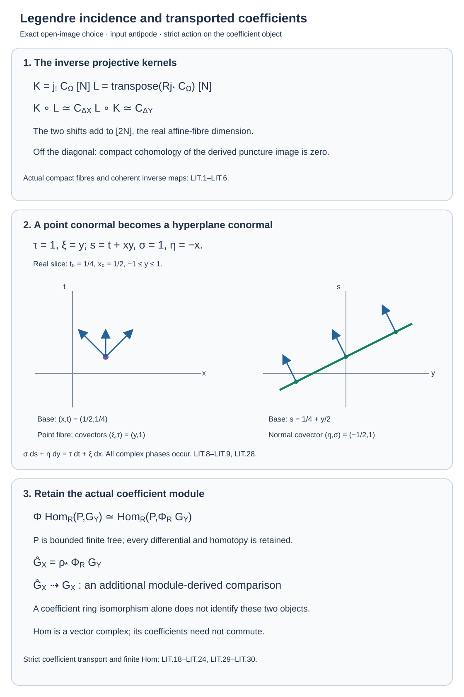
Figure 3.52. In the displayed \(N=2\) chart, a point \((t_0,x_0)=(1/4,1/2)\) has conormal slice \(\tau=1\), \(\xi=y\). Its image lies on \(s=1/4+y/2\), with \(\sigma=1\), \(\eta=-1/2\). The real parameter slice \(-1\leq y\leq1\) illustrates the exact complex contact map LIT.8. The lower diagram is LIT.20–LIT.24: the transported coefficient object is specified before any comparison with a target cutoff.
3.379. Exercises on the inverse, its shift and point support
Exercise 3.FC. For \(N=1\), compute the off-diagonal convolution fibre when both incidence kernels are replaced by extension by zero and both are shifted by \([1]\). Explain why it cannot be an inverse. Compute the correct derived-open-image fibre and its oriented boundary map.
Solution 3.FC. Fix distinct projective points. The first affine fibre is \(\mathbf C\), and the second deleted hyperplane is a point. Two extensions by zero give \(\mathbf C_{\mathbf C^*}\) on that affine fibre. The triangle \(\mathbf C_{\mathbf C^*}\to\mathbf C_{\mathbf C}\to\mathbf C_{\{0\}}\xrightarrow{+1}\), together with the compact plane calculation, gives
\[ H^qR\Gamma_c(\mathbf C^*;\mathbf C)= \begin{cases}\mathbf C,&q=1,2,\\0,&\text{otherwise}. \end{cases} \tag{LIT.25} \]
The two nonzero degree identifications are explicit: the degree-zero point group maps isomorphically to compact degree one of the puncture, and compact degree two maps isomorphically to the oriented plane group. After the convolution shift \([2]\), the wrong off-diagonal fibre has nonzero cohomology in degrees \(-1\) and \(0\). It is not a diagonal kernel. With the correct second kernel \(Rj_{0*}\mathbf C_{\mathbf C^*}\), LIT.4 instead gives zero. Its compact connecting map takes the normalized circle class to \(-d\rho\wedge d\theta/(2\pi)\), whose integral is one. On the diagonal the affine fibre gives
\[ R\Gamma_c(\mathbf C;\mathbf C)[2]=\mathbf C[0]. \tag{LIT.26} \]
Thus the choice of open image and the total real shift are both necessary.
Exercise 3.FD. Let \(a=(t_0,x_0)\) be a point in the chart LIT.8. Compute \(\mathcal T\mathbf C_{\{a\}}\) and its nonzero microsupport, including the \(\tau\ne0\) chart. Determine the exact real slice in Figure 3.52.
Solution 3.FD. Let \(H_a\subset Y\) be the incidence hyperplane and \(j_a:Y\setminus H_a\hookrightarrow Y\). Restricting \(B\) to \(Y\times\{a\}\) gives \(Rj_{a*}\mathbf C\). To verify this restriction, trivialize the incidence pair near \(a\) by a projective frame sending a fixed representative to the variable representative. The normal punctured-disc resolution and its circle generator then restrict to the identical resolution on the fibre, as in LI.8.3. Tensoring with the point sheaf and projecting gives
\[ \begin{gathered} \mathcal T\mathbf C_{\{a\}}\simeq Rj_{a*}\mathbf C_{Y\setminus H_a}[N],\\ \operatorname{SS}(\mathcal T\mathbf C_{\{a\}})\cap\dot T^*Y =\dot T_{H_a}^*Y. \end{gathered} \tag{LIT.27} \]
The support equality follows either from LIT.15 and the point conormal, or directly from the punctured-normal-disc model. On the selected chart it is
\[ s=t_0+x_0^{\mathsf T}y,\qquad (\sigma,\eta)=(\tau,-\tau x_0),\quad\tau\ne0. \tag{LIT.28} \]
For \(N=2\), \(t_0=1/4\), \(x_0=1/2\), \(\tau=1\) and real \(y\in[-1,1]\), this is the line segment from \((y,s)=(-1,-1/4)\) to \((1,3/4)\), with constant \(\eta=-1/2\). The original base projection has rank zero; the target hyperplane projection has complex rank \(N-1\). No ordinary base biholomorphism carries these two germs when \(N>1\).
3.380. A finite Hom calculation with a noncommutative action
Exercise 3.FE. Let \(R=\mathbf C\langle a,b\rangle\), let \(G\) be a bounded complex of left \(R_Y\)-module sheaves, and take \(P^{-1}=R^2\), \(P^0=R\), with \(d(e_1)=a e_0\), \(d(e_2)=b e_0\). Compute its total Hom differential and prove the comparison LIT.20 for this complex. Check why the Hom output need not be an \(R\)-module.
Solution 3.FE. In degree \(k\), identify a Hom element with \((u,v_1,v_2)\), where \(u\in G^k\), \(v_i\in G^{k-1}\). Left linearity gives \(\varphi(ae_0)=a\varphi(e_0)\); it never interchanges \(a\) and \(b\). Formula LIT.21 becomes
\[ d(u,v_1,v_2)= \bigl(d_Gu,\ d_Gv_1-(-1)^k au,\ d_Gv_2-(-1)^k bu\bigr). \tag{LIT.29} \]
Applying the differential again gives zero: in each last component the two terms involving the action cancel because \(d_Ga=ad_G\), \(d_Gb=bd_G\), and \((-1)^{k+1}=-(-1)^k\). The functorial kernel resolution carries these very actions and differential maps to \(\Phi_R G\). It commutes with this three-term finite-sum description and its totalization; the tensor shift signs are exactly LIT.29 on both sides. This proves the comparison as an actual map of total complexes in the example, with no independently selected lifts of \(a\) and \(b\).
For the last assertion, specialize to a sheaf with coefficient module \(\mathbf C^2\), where \(a=E_{12}\), \(b=E_{21}\). These matrices define a representation of the free algebra. In degree zero, the Hom differential is \(u\mapsto(-au,-bu)\). Componentwise multiplication by \(a\) commutes with this differential only if \(ab=ba\) on \(G\), whereas
\[ \begin{gathered} ab=E_{11},\qquad ba=E_{22},\\ (d\,a-a\,d)(u)=(0,(ab-ba)u). \end{gathered} \tag{LIT.30} \]
For \(u=(1,0)^{\mathsf T}\) the second component is nonzero. This is why the finite Hom comparison is a comparison of vector complexes, while the coefficient object itself retains the strict algebra action.
3.381. Holomorphic density kernels and their coefficient maps
Let \(X\) and \(Y\) be complex manifolds, with \(Y\) compact of complex dimension \(N\). Write \(p_X,p_Y\) for the projections and put
\[ \mathcal H_{XY}=\mathcal O_{X\times Y}\otimes_{p_Y^{-1}\mathcal O_Y}p_Y^{-1}\Omega_Y^N. \tag{HIC.1} \]
This is a holomorphic coefficient line in degree zero. A density kernel map is an ordinary derived morphism \(u:K\to\mathcal H_{XY}[N]\), where \(K\) is a bounded vector sheaf complex on the product. No constructibility of \(K\) is required in this definition. The kernel operator is \(\Phi_KF=Rp_{X!}(K\otimes p_Y^{-1}F)\). We shall construct a natural vector-derived morphism
\[ \vartheta_u:\Phi_K\mathcal O_Y\longrightarrow\mathcal O_X. \tag{HIC.2} \]
The input density, its shift and its trace are part of this construction. The trace used below is the operator-normalized trace of GL-DMOD, §5.67, PE.2, whose complete current, support and sign proofs are §5.34–§5.35. An ordinary map HIC.2 is not by itself a comparison of modules over the target microdifferential coefficient algebra.
3.382. The proper trace on the full Dolbeault complexes
Resolve \(\mathcal H_{XY}\) by smooth \((0,q)\)-forms with that coefficient line, in all product coordinates, with differential \(\delta=\bar\partial\). Resolve \(\mathcal O_X\) by its full Dolbeault complex as well. The exact local contraction and the comparison with currents are R.2–R.4 of the cited §5.34. The injective-resolution and partition argument R.5–R.6 proves that each smooth or current term is \(p_{X!}\)-acyclic and that these complexes compute the actual derived image. Compactness of \(Y\) makes the projection proper; the same source proof also retains proper supports on local coefficient domains.
In a holomorphic input frame \(\eta_Y\), realize a coefficient form by \(J(\alpha\otimes\eta_Y)=\alpha\wedge\eta_Y\). Integrating the full form in the positive complex orientation and returning to coefficient notation gives \(I_q\), of antiholomorphic degree \(q-N\). Define
\[ \begin{gathered} q_N=(2\pi i)^{-N},\\ T_Y^q=q_N(-1)^{N(q-N)}I_q,\quad q\geq N,\\ T_Y^q=0,\quad q<N. \end{gathered} \tag{HIC.3} \]
The source is shifted by \([N]\), so its differential is \((-1)^N\delta\). Fibre integration commutes with the full-form \(\bar\partial\): base differentiation passes under a compact integral, and vertical derivatives integrate to zero. Therefore
\[ T_Y^{q+1}(-1)^N\delta=\delta T_Y^q, \qquad N(q+1-N)+N\equiv N(q-N)\pmod2. \tag{HIC.4} \]
At \(q=N-1\), the only possible term is a vertical derivative of top fibre degree, whose integral is zero by integration by parts. This verifies the chain map in every degree, including that boundary. Its derived map is
\[ T_Y:Rp_{X!}\mathcal H_{XY}[N]\longrightarrow\mathcal O_X. \tag{HIC.5} \]
3.383. Coordinate invariance and an actual derived construction
A holomorphic input coordinate change contributes \(\det J\) to its top holomorphic block and \(\overline{\det J}\) to its top antiholomorphic block. The real change of variables has determinant \(|\det J|^2>0\); thus HIC.3 is unchanged. For a change depending holomorphically on the output, the additional terms in a full-form lift contain an output holomorphic differential. They have fewer than \(N\) vertical holomorphic factors and therefore integrate to zero. The trace is consequently defined on the relative density line without a chosen full-form lift. These statements also follow directly for currents by transposition on compact tests, as proved in V.4.
Multiplication of holomorphic coefficients is the ordinary sheaf morphism
\[ m:\mathcal H_{XY}\otimes p_Y^{-1}\mathcal O_Y\longrightarrow\mathcal H_{XY}. \tag{HIC.6} \]
Tensor over \(\mathbf C\) is exact on stalks. Apply the derived proper image to \(u\otimes1\), then multiplication and HIC.5:
\[ \begin{gathered} \vartheta_u=T_Y\,Rp_{X!}(m[N])\,Rp_{X!}(u\otimes1),\\ Rp_{X!}(K\otimes p_Y^{-1}\mathcal O_Y) \longrightarrow\mathcal O_X. \end{gathered} \tag{HIC.7} \]
All three arrows are actual derived morphisms. The acyclic-resolution comparison in R.6 uses natural germ embeddings, their cokernels and a finite total complex; it identifies the smooth and current models with the injective definition of \(Rp_!\). Thus changing those models or a representative roof of \(u\) does not change HIC.7. The construction is complex-linear and natural in the source kernel. A cochain homotopy between two common-roof evaluations is sent to the corresponding cochain homotopy after tensor, multiplication and trace. It is not inferred from equality on their cohomology groups.
3.384. Consecutive kernels and the ordered density product
Let \(Z\) be compact of complex dimension \(M\). Take \(K\) on \(X\times Y\), \(H\) on \(Y\times Z\), and density kernel maps \(u:K\to\mathcal H_{XY}[N]\), \(v:H\to\mathcal H_{YZ}[M]\). On the triple product, multiply the joint holomorphic coefficients, retaining the ordered holomorphic blocks \(\Omega_Y^N\) before \(\Omega_Z^M\). Apply \(T_Y\), with the \(Z\)-block retained, to define
\[ u\star v:K\circ H\longrightarrow\mathcal H_{XZ}[M]. \tag{HIC.8} \]
The tensor shifts use the specified suspension identification
\[ A[N]\otimes B[M]\longrightarrow(A\otimes B)[N+M], \qquad a\otimes b\longmapsto(-1)^{M|a|}a\otimes b, \tag{HIC.9} \]
where \(|a|\) is its degree before suspension. This follows by checking the differentials in each factor: increasing \(|a|\) contributes the missing \((-1)^M\), and the second-factor differential already has the required total sign. The trace on HIC.8 is then the first-block trace, with the induced tensor regrouping; it is not an additional unsigned trace on a doubly suspended coefficient.
To form the ordinary cup, represent the two derived evaluations on bounded common roofs into their smooth Dolbeault complexes. Their products in the shared middle variables are products of smooth coefficients. The current model is used for the separate diagonal residue below and compared to the smooth model through R.6. No product of arbitrary currents with a shared singular parameter is used here.
3.385. Composition is preserved before cohomology
The maps just constructed satisfy
\[ \begin{gathered} \vartheta_{u\star v} =\vartheta_u\circ\Phi_K(\vartheta_v),\\ \Phi_{K\circ H}\mathcal O_Z\longrightarrow\mathcal O_X, \end{gathered} \tag{HIC.10} \]
using the proper convolution associator. Here is the sign and map check. Before integration, both sides evaluate the same two kernel maps on the pulled-back holomorphic input and multiply the same joint coefficient on \(X\times Y\times Z\). All projections are proper in their forgotten factors. Fubini for smooth coefficients on compact sets identifies the two repeated integrations. For original antiholomorphic degree \(q\), the raw trace signs obey
\[ \begin{gathered} (-1)^{N(q-N)}(-1)^{M(q-N-M)}\\ =(-1)^{NM}(-1)^{(N+M)(q-N-M)},\\ q_Nq_M=q_{N+M}. \end{gathered} \tag{HIC.11} \]
The extra \((-1)^{NM}\) is exactly the tensor regrouping of the two shifted holomorphic blocks in HIC.9. The ungraded coefficient cup has the full-form conversion sign \((-1)^{Nq'}\) when its first holomorphic block crosses a second antiholomorphic block of degree \(q'\). These are V.8 and V.12–V.14, with their full degree computations. They identify the two trace presentations, rather than counting their suspension sign twice. The normalized scalars multiply as in HIC.11, so no new scalar remains.
This calculation takes place on the smooth common-roof evaluation complexes and their proper-image comparisons. Naturality of the actual trace and the tensor–Hom evaluation identifies the resulting derived maps with HIC.7 on both sides. It proves HIC.10 for the whole bounded complexes and their attaching maps. Repeated application gives associativity for every finite sequence of such ordinary density kernel maps.
3.386. The diagonal Cauchy class acts as the identity
Take \(Y=X\), of complex dimension \(N\), locally near the diagonal; only the support on the diagonal is needed to make the projection proper. Put \(w_i=y_i-x_i\). The one-coordinate current identity, proved by the deleted-disc Green calculation R.3, gives
\[ \int_{\mathbf C}\bar\partial(1/w)\wedge dw\ h(w)=2\pi i\,h(0) \tag{HIC.12} \]
for a holomorphic test near zero, with a cutoff equal to one near the current support. The integral means the supported current applied to that test; no extension of the holomorphic test outside its domain is required. Define
\[ \begin{gathered} r_N=(-1)^{N(N-1)/2},\\ C_\Delta^{\rm raw} =r_N\,\bar\partial(1/w_1)\wedge\cdots\wedge\bar\partial(1/w_N)\\ \otimes dy_1\wedge\cdots\wedge dy_N. \end{gathered} \tag{HIC.13} \]
Its ungraded antiholomorphic-first realization is the ordered product of the \(N\) full one-coordinate blocks: moving each \(dy_i\) past later antiholomorphic factors contributes \(r_N\), which cancels the displayed \(r_N\). The current is closed and supported on the diagonal. It defines a map \(u_\Delta:\mathbf C_\Delta\to\mathcal H_{XX}[N]\). The current is multiplied only by locally constant sections of \(\mathbf C_\Delta\) for this map. Coordinate invariance can be checked in the holomorphic normal coordinates: the inverse normal determinant of the residue and the determinant of the input top form cancel on the diagonal. The base-dependent lower vertical-degree terms integrate to zero as in §3.383.
Iterating HIC.12 in the fixed coordinate order and using the top-degree sign \(T_Y^N=q_NI_N\) proves
\[ \vartheta_{u_\Delta}(h)=q_N(2\pi i)^Nh=h, \qquad \vartheta_{u_\Delta}=\operatorname{id}_{\mathcal O_X}. \tag{HIC.14} \]
Indeed \(\Phi_{\mathbf C_\Delta}\mathcal O_X=\mathcal O_X\) in degree zero, so equality on all holomorphic germs proves equality of these ordinary derived degree-zero maps. This is the Cauchy class with the explicit convention HIC.13 and the trace HIC.3. Comparing another diagonal evaluation with this class requires its actual coefficient and source map.
3.387. The two open–closed source maps have opposite directions
Return to the projective incidence of §3.369, with \(\dim X=\dim Y=N\), closed hypersurface \(S\), complement \(j\), and \(A=j_!\mathbf C\), \(B=Rj_*\mathbf C\). There are actual triangles
\[ \begin{gathered} \mathbf C_S[-1]\xrightarrow{\delta}A\longrightarrow\mathbf C_{X\times Y}\xrightarrow{+1},\\ \mathbf C_{X\times Y}\longrightarrow B\xrightarrow{\beta}\mathbf C_S[-1]\xrightarrow{+1}. \end{gathered} \tag{HIC.15} \]
The first is the rotated open–closed triangle. For the second, the normal complex line has its complex orientation and \(i^!\mathbf C_{X\times Y}=\mathbf C_S[-2]\). The disc relative-cohomology calculation gives this purity isomorphism with positive normal orientation; tensoring the normal disc with tangential balls gives the formula locally and the complex orientation glues it. The closed-support triangle \(i_*i^!\mathbf C\to\mathbf C\to Rj_*\mathbf C\xrightarrow{+1}\), rotated once, gives the second line of HIC.15. Thus the derived-open-image map points from \(B\) to the shifted closed source.
For any bounded vector complex \(F\) on the compact input \(Y\), proper product base change, as proved in LI.8.1, gives
\[ Rp_{X!}(\mathbf C_{X\times Y}\otimes p_Y^{-1}F) \simeq\mathbf C_X\otimes R\Gamma(Y;F). \tag{HIC.16} \]
One can test this canonical base-change map on each fibre: the compact-fibre comparison identifies it with the identity of \(R\Gamma(Y;F)\). The complex on the right is bounded by the finite compact-fibre resolution and is locally constant. Its microsupport lies in the zero section. Therefore, after shifting HIC.15 by \([N]\), tensoring with the input and projecting, both resulting maps are denominators at every nonzero output covector. This uses the projected constant product complex; the tensor cone on the whole product need not itself have zero microsupport.
3.388. Forward and reverse holomorphic incidence maps
Restrict the output to the affine chart of LIT.8 and keep the entire projective input. Let \(J_+=\mathbf C_{S_+}[N-1]\), \(J_-=\mathbf C_{S_-}[N-1]\) on the forward and transposed pair spaces. The shifted maps HIC.15 induce
\[ \begin{gathered} c_+:\Phi_{J_+}\mathcal O_Y\longrightarrow\Phi_K\mathcal O_Y,\\ c_-:\Phi_L\mathcal O_X\longrightarrow\Phi_{J_-}\mathcal O_X. \end{gathered} \tag{HIC.17} \]
Each is invertible at the selected nonzero output covector by HIC.16. The ordinary global sections GP.5 and GP.15 of the cited GL-DMOD proof have evaluations
\[ \begin{gathered} u_{+,N}:J_+\longrightarrow\mathcal H_{XY}[N],\\ m_{+,N}=N![\Omega_{\rm hom}/F_h^{N+1}],\\ u_{-,1}:J_-\longrightarrow\mathcal H_{YX}[N],\\ m_{-,1}=N[\Omega'_{\rm hom}/A_h^{N+1}]. \end{gathered} \tag{HIC.18} \]
These are evaluations of closed incidence sections, using the positive connecting convention \((0,-\text{pole})\) of HI.25 in the same source proof. They are not assumed ordinary maps from an open kernel. The homogeneous top forms have weight \(N+1\); division by the indicated powers is invariant under homogeneous scaling, including a base-dependent scaling because Euler contraction of the numerator vanishes. In the ordered affine frames,
\[ \begin{gathered} f=s-t-x^{\mathsf T}y,\qquad g=t-s+y^{\mathsf T}x,\\ D_t^N(\eta_Y/f)=N!\eta_Y/f^{N+1},\\ D_s(\eta_X/g^N)=N\eta_X/g^{N+1}. \end{gathered} \tag{HIC.19} \]
Both signs are positive since the respective output-time derivative of the denominator is \(-1\). The ordered reverse spatial reflection and density are the ones in GP.4; no reflection is absorbed into a newly chosen scalar.
3.389. Actual inverse derivatives and the two vector roofs
Let \(D_t\) act on \(\mathcal O_X\). For any positive integer \(r\), the finite free resolution of \(\mathcal D_X/\mathcal D_XD_t^r\) has one differential given by right multiplication by \(D_t^r\). It is injective since its principal symbol \(\tau^r\) is a nonzero divisor. Its solution complex is the two-term Hom complex with differential \(-D_t^r\). In the cone convention of §§3.323–3.334,
\[ \begin{gathered} \operatorname{Cone}(D_t^r:\mathcal O_X\to\mathcal O_X) \\{}\simeq\operatorname{Sol}(\mathcal D_X/\mathcal D_XD_t^r)[1]. \end{gathered} \tag{HIC.20} \]
The proved SCP upper characteristic-support inclusion puts this cone in \(\{\tau=0\}\). Thus \(D_t^r\) is an actual denominator at every covector with \(\tau\ne0\). Its inverse in that localization is unique. The identical argument applies to \(D_s\) on the other side. It does not give an ordinary inverse of differentiation on a neighborhood.
With HIC.7 applied to HIC.18, define the actual vector-derived maps
\[ \begin{gathered} \vartheta_+=(D_t^N)^{-1}\,\vartheta_{u_{+,N}}\,c_+^{-1},\\ \vartheta_+:\Phi_K\mathcal O_Y\longrightarrow\mathcal O_X,\\ \vartheta_-=(D_s)^{-1}\,\vartheta_{u_{-,1}}\,c_-,\\ \vartheta_-:\Phi_L\mathcal O_X\longrightarrow\mathcal O_Y. \end{gathered} \tag{HIC.21} \]
All arrows are now specified ordinary derived maps or actual selected-covector denominators. The forward source comparison is inverted; the reverse comparison is used in its original direction. Their normalization is HIC.3, with the factorials, ordered frames and derivative powers of HIC.18–HIC.19.
3.390. The exact scope of these coefficient maps
For ordinary proper density kernel maps, HIC.10 proves compatibility with composition and HIC.14 fixes the diagonal normalization. The exact source-counit comparison for HIC.21 is proved in §§3.397–3.400. Without normalizing the reverse map, the unit equations would read
\[ \begin{gathered} \vartheta_+\circ\Phi_K(\vartheta_-)=\epsilon_X(\mathcal O_X),\\ \vartheta_-\circ\Phi_L(\vartheta_+)=\epsilon_Y(\mathcal O_Y) \end{gathered} \tag{HIC.22} \]
These equations require the single reverse-map normalization of §3.401. Its scalar is determined by the actual composed evaluations with the same density and trace convention.
For the holomorphic solution comparison of §3.378, one must also retain the coefficient action: either an actual module-derived roof \(\rho_*\Phi_R G_Y\simeq G_X\), or the corresponding coherent finite diagram for the chosen resolution, maps and homotopies. HIC.21 constructs the underlying vector maps but does not supply that action comparison. Thus no general contact solution equivalence, reverse characteristic-support inclusion or nilpotent regularity conclusion follows yet from HIC.21 alone.
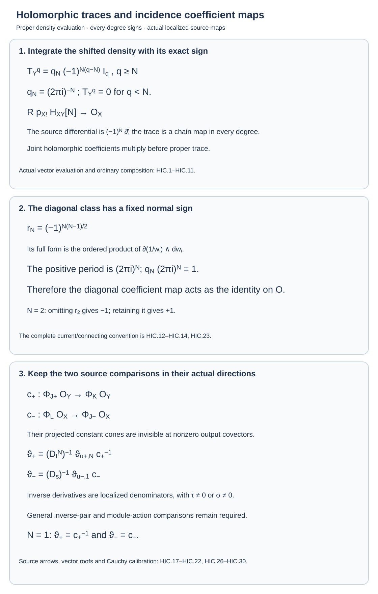
Figure 3.53. The first panel is the actual trace formula HIC.3–HIC.7. The second records the ordered normal-class factor \(r_N\), which makes the full Cauchy block integrate to \((2\pi i)^N\); HIC.14 then gives the identity. The last panel retains the different source arrows of HIC.17 and the derivative denominators of HIC.21. The inverse-pair and module-action comparisons are the additional hypotheses stated in §3.390.
3.391. Exercises on the normal sign and consecutive traces
Exercise 3.FF. In complex dimension two, compute the full-form sign of the unsigned antiholomorphic-first normal coefficient \(\bar\partial(1/w_1)\wedge\bar\partial(1/w_2)\otimes dy_1\wedge dy_2\). Compare its normalized trace with that of HIC.13.
Solution 3.FF. Moving \(dy_1\) to its position immediately after the first antiholomorphic factor crosses exactly one antiholomorphic factor. Hence the full form without \(r_2\) is minus the ordered product of the two positive one-coordinate blocks. Since \(r_2=-1\),
\[ \begin{gathered} I_2(C_{\rm unsigned})=-(2\pi i)^2,\qquad I_2(C_\Delta^{\rm raw})=(2\pi i)^2,\\ T_Y(C_{\rm unsigned})=-1,\qquad T_Y(C_\Delta^{\rm raw})=1. \end{gathered} \tag{HIC.23} \]
At antiholomorphic degree two the trace sign in HIC.3 is positive, so it cannot cancel an omitted normal-class factor. The suspension sign belongs to the definition of that single normal class, before any between-kernel product.
Exercise 3.FG. Take two consecutive one-dimensional complex fibres. Compute the two raw trace signs in original antiholomorphic degree \(q\geq2\), and compare them with the single two-dimensional trace. Account for the tensor regrouping and normalization.
Solution 3.FG. The first trace uses degree \(q\), the second degree \(q-1\). Therefore
\[ (-1)^{q-1}(-1)^{q-2}=-1,\qquad (-1)^{2(q-2)}=1. \tag{HIC.24} \]
The relative sign is \((-1)^{1\cdot1}\). Regrouping the two shifted holomorphic blocks contributes that same sign, by HIC.9 and its first-block suspension convention. Thus the two presentations agree; adding another suspension sign would change the operation. Finally
\[ q_1^2=(2\pi i)^{-2}=q_2. \tag{HIC.25} \]
The equality includes the scalar as well as the parity. It is the \(N=M=1\) instance of the full composition calculation, not an unsigned Fubini assertion.
3.392. The one-dimensional incidence calibration
Exercise 3.FH. Let \(N=1\) and use affine coordinates \(t,s\). Identify the two closed incidence source operators, compute the maps from the globalizing double poles, and simplify the vector roofs HIC.21. Explain what this calculation does and does not establish in general dimension.
Solution 3.FH. Incidence is the diagonal \(s=t\). Both shifted closed kernels are \(\mathbf C_\Delta[0]\), so each closed-source coefficient operator is \(\mathcal O\) in degree zero. The input densities are \(ds\) forward and \(dt\) reverse. The source maps remain
\[ c_+:\mathcal O_X\longrightarrow\Phi_K\mathcal O_Y,\qquad c_-:\Phi_L\mathcal O_X\longrightarrow\mathcal O_Y. \tag{HIC.26} \]
For a holomorphic germ \(h\), the positive one-variable Cauchy formula and its derivative give
\[ \begin{gathered} \frac1{2\pi i}\oint\frac{h(s)}{s-t}\,ds=h(t),\\ \frac1{2\pi i}\oint\frac{h(s)}{(s-t)^2}\,ds=h'(t). \end{gathered} \tag{HIC.27} \]
For example, expand \(h\) in its convergent Taylor series on a smaller circle. Uniform convergence permits termwise integration, and the only nonzero period has exponent \(-1\). This proves both formulas and their positive normalization. The double pole is a relative class or a finite derivative of the simple-pole distribution; it is not asserted locally integrable. The positive connecting representative \((0,-h/(s-t))\) becomes the current \(\bar\partial(h/(s-t))\) by V.2, so the source evaluation has exactly the sign used in HIC.27. The reverse formulas use \(h(t)/(t-s)\) and \(h(t)/(t-s)^2\) with the positive input \(dt\) orientation. The globalizing factors in HIC.18 are both one when \(N=1\). Consequently
\[ \vartheta_{u_{+,1}}=D_t,\qquad \vartheta_{u_{-,1}}=D_s. \tag{HIC.28} \]
At a nonzero time covector these derivatives are denominators by HIC.20, so HIC.21 simplifies to
\[ \vartheta_+=c_+^{-1},\qquad \vartheta_-=c_-. \tag{HIC.29} \]
Each is therefore a vector-derived isomorphism in this one-dimensional case. Ordinary differentiation still has nonzero kernel: on a disc,
\[ 0\longrightarrow\mathbf C\longrightarrow\mathcal O \xrightarrow{D_t}\mathcal O\longrightarrow0. \tag{HIC.30} \]
Surjectivity follows by integrating a convergent Taylor series on a smaller disc, and the kernel consists of constants. Localization removes the constant cone, rather than choosing an ordinary inverse on \(\mathcal O\). This calculation fixes the displayed vector maps for the diagonal incidence. The source-counit normalization is given in §3.401; the compatible cutoff module action is the additional condition of §3.402.
3.393. A local vector inverse pair for holomorphic coefficients
Use the projective incidence kernels \(K,L\), the contact map \(\chi\), and the two vector maps \(\vartheta_+,\vartheta_-\) of LIT.1–LIT.16 and HIC.21. Fix a covector \(p\) with \(\tau\ne0\), and \(q=\chi(p)\). All statements in this section concern sufficiently small matched cotangent neighborhoods of \(p,q\). Put
\[ \begin{gathered} a=\vartheta_+:\Phi_K\mathcal O_Y\longrightarrow\mathcal O_X,\\ b=\vartheta_-:\Phi_L\mathcal O_X\longrightarrow\mathcal O_Y. \end{gathered} \tag{VIT.1} \]
Theorem. There is a nonzero constant \(\lambda\) such that \(a\) and \(\widetilde b=\lambda^{-1}b\) are inverse coefficient maps relative to the coherent source counits of LIT.6. In particular \(a\) and \(b\) are vector-derived isomorphisms in the matched localizations. The proof retains the actual ordinary density evaluations and their normalized trace.
The object \(\mathcal O_X\) is nonzero in this localization. Choose a complex linear coordinate \(t\) whose real differential represents \(p\). The holomorphic function \(1/t\) on a negative real half-ball cannot extend across zero, by the identity theorem. The support long exact sequence therefore injects its nonzero quotient class into the degree-one support test at \(p\). The class stays nonzero on every smaller ball. This is an actual defining support test, so \(p\in\operatorname{SS}(\mathcal O_X)\).
A cone invisible only at the matched product conormal cannot be discarded without further information. For example, let the output be an affine line, the input be \(\mathbf P^1\), and take the kernel \(C=\mathbf C_{\{t=0\}}\boxtimes\mathbf C_Y\). Then
\[ \Phi_C\mathcal O_Y =\mathbf C_{\{0\}}\otimes R\Gamma(Y;\mathcal O_Y)\ne0. \tag{VIT.2} \]
Its degree-zero coefficient contains the nonzero global section \(1\), so it has the point conormal. On the affine endpoint pair, \(u=t,w=t'-t\), its kernel is constant in \(w\) and misses every nonzero diagonal conormal. The shifted algebraic solution source is \(\delta_u\boxtimes\mathcal O_w\), whose global \(D_w\)-action is locally nilpotent. Polynomial derivative torsion alone therefore does not justify the coefficient-transform descent. The proof below uses an additional actual trivial connection factor.
3.394. Removing a trivial polynomial connection from all morphisms
Let \(B\) be a polynomial Weyl algebra and let \(A_u\) be the Weyl algebra of one variable \(u\). The exact functor
\[ \begin{gathered} \mathsf F(M)=\mathbf C[u]\otimes_{\mathbf C}M,\\ D_u=\partial_u,\qquad A=A_u\otimes_{\mathbf C}B. \end{gathered} \tag{VIT.3} \]
is fully faithful on bounded coherent derived categories, including every shifted morphism. Here is a direct proof. Resolve \(\mathbf C[u]\) by \([A_u\xrightarrow{\cdot D_u}A_u]\) in degrees \(-1,0\), and use bounded finite projective \(B\)-resolutions for the other input. Such resolutions and polynomial Weyl Noetherianity are the filtered operator results used in SCP and GL-DMOD, AS.0–AS.5. Finite projectivity identifies the resulting mapping complex with the total tensor of the reduced mapping complex and
\[ [\mathbf C[u]\xrightarrow{-\partial_u}\mathbf C[u]] \quad\text{in degrees }0,1. \tag{VIT.4} \]
This last complex contracts to its constant coefficient. If \(i\) includes constants and \(\epsilon\) is evaluation at zero, the degree-minus-one homotopy is
\[ h^1(f)=-\int_0^u f(v)\,dv,\qquad dh+hd=1-i\epsilon. \tag{VIT.5} \]
The integral is a finite polynomial primitive. The identities follow by differentiation and the fundamental theorem of calculus; the negative sign matches VIT.4. Tensoring this contraction with the reduced mapping complex, with the total differential signs, proves the claimed mapping quasi-isomorphism. The inclusion is induced by the actual exterior-product functor, so it preserves compositions and identities. Iterate for several \(u\)-coordinates.
Consequently the maps and equalities in a finite source-roof diagram can be represented in the reduced derived category. The displayed mapping contraction retains their finite homotopy comparisons on common projective models. When clearing \(D_w\)-denominators, the finite coherent-lattice construction of OD.2 can be performed in the reduced algebra \(B\), before restoring the connection factor. No lattice chosen in an unrestricted ambient algebra is presumed to retain that factor.
3.395. The entire incidence convolution has that factor
Use affine endpoint coordinates \(u=(t,x)\), \(w=t'-t\), \(z=x'-x\), with \(d=N-1\). On the projective middle space make the homogeneous change
\[ \begin{gathered} v_h=s_h-t\lambda-x^{\mathsf T}y_h,\\ F_h=v_h,\qquad G_h=w\lambda-v_h+z^{\mathsf T}y_h. \end{gathered} \tag{VIT.6} \]
The change is unipotent with determinant one. It is an algebraic automorphism over the endpoint base, and the transformed equations and the middle infinity divisor are independent of every \(u\)-coordinate. In its affine chart the normal sum is \(F=w+z^{\mathsf T}y\). The exact affine Spencer model AS.6–AS.10 is
\[ \begin{gathered} Q=\mathbf C[u]\otimes Q_{\mathrm{red}},\\ Q_{\mathrm{red}} =\bigl(\mathbf C[z,y,\tau]e\otimes\Lambda^\bullet(dy),\\ \ \sum_jdy_j\wedge(\partial_{y_j}+z_j\tau)\bigr)[d],\\ D_{u_i}=\partial_{u_i},\qquad \tau=D_w,\\ D_{z_j}=\partial_{z_j}+y_j\tau,\qquad w=-z^{\mathsf T}y-\partial_\tau. \end{gathered} \tag{VIT.7} \]
The normal residue map and its explicit homotopy in AS.1 do not involve \(u\). Every relative degree, the top section and the endpoint actions retain this factor. The raw Spencer terms need not be finite modules over the endpoint algebra. Their bounded coherent derived object is supplied by the actual proper algebraic realization AS.5; take finite projective models of that object when using VIT.3.
The same conclusion holds for the closed projective convolution \(\overline Q\), its affine-boundary comparison and the diagonal module:
\[ \begin{gathered} \overline Q=\mathcal O_{\mathbf A^N_u}\boxtimes\overline Q_{\mathrm{red}},\\ Q=\mathcal O_{\mathbf A^N_u}\boxtimes Q_{\mathrm{red}},\\ \Delta_{\mathrm{alg}}=\mathcal O_{\mathbf A^N_u}\boxtimes\Delta_{\mathrm{red}}. \end{gathered} \tag{VIT.8} \]
To see this on whole complexes, use the fixed finite standard cover in \((\lambda,v_h,y_h)\). The coordinate localization complexes for the two incidence modules, their tensor and the relative Spencer differentials are independent of \(u\). The cover and all its intersections are fixed in these coordinates; their finite Čech totalization tensors with \(\mathbf C[u]\). This proves VIT.8 for the proper and open-direct models and their comparison maps. On the sheaf side the same coordinate change makes the constant incidence pairs independent of \(u\), and proper product base change retains the factor. The full algebraic RH equivalence and its actual exterior comparison identify these with the displayed operator factors. Those exact maps, including ordinary inverse, exterior products and proper trace, are proved in RH Theorems 1.12, 1.19, 1.22–1.23. VIT.3 then reduces every map of the source roofs as well.
3.396. Derivative torsion with the factor is invisible to coefficient realization
In the reduced polynomial Weyl algebra \(B\), powers of \(\tau=D_w\) form the Ore set of AS.11–AS.12; its localization is right flat. For a finite module \(T\) with zero localization, the finite Taylor calculation FD.11–FD.14 gives
\[ \begin{gathered} \Pi(m)=\sum_{k\ge0}\frac{(-w)^k}{k!}\tau^km,\qquad T=\mathbf C[w]\otimes\ker\tau,\\ m=\sum_{j\ge0}\frac{w^j}{j!}\Pi(\tau^jm). \end{gathered} \tag{VIT.9} \]
Each sum is finite on each vector. The Weyl commutator makes \(\tau\Pi=0\), and the binomial coefficient sum proves the last identity. Applying \(\Pi\tau^r\) to the highest power of a polynomial relation proves injectivity. Taylor coefficients of finitely many generators give finite generation of \(\ker\tau\) over the spatial algebra. This is a polynomial calculation; no nilpotence after arbitrary analytic multiplication is asserted.
The finite connection resolution and a holomorphic primitive in \(w\) give the actual unshifted solution comparison OD.2. Restoring the \(u\)-factor gives
\[ \operatorname{Sol}(\mathcal O_u\boxtimes T) =\mathbf C_u\boxtimes\mathbf C_w\boxtimes\operatorname{Sol}(\ker\tau). \tag{VIT.10} \]
In the original endpoint times this is constant in both \(t\) and \(t'\). Its spatial variables may still be coupled by \(z=x'-x\). Tensoring with any bounded input, including \(\mathcal O_{X'}\), leaves a constant output \(t\)-factor. Product base change for proper-support image therefore makes its kernel output pulled back from the spatial output. Its microsupport has \(\tau_t=0\).
For a bounded reduced coherent complex whose cohomology is \(\tau\)-torsion, use its finite cohomological truncation triangles. Solution and kernel realization are exact on these triangles, so every output cone is null at \(\tau_t\ne0\). Thus the contravariant functor
\[ \mathcal V(T)= \Phi_{\operatorname{Sol}(\mathcal O_u\boxtimes T)[N]}\mathcal O_{X'} \quad\text{in }D^b(\mathbf C_X;p) \tag{VIT.11} \]
kills the reduced localization kernel. OD.2's finite coherent lattices and its actual cleared homotopies consequently make it descend on the image of bounded coherent \(B\)-complexes in the localized derived category. This controls all forgotten input covectors, including zero. It is the property missing in VIT.2.
3.397. The exact ordinary source roofs
Let \(J_+=\mathbf C_{S_+}[N-1]\), \(J_-=\mathbf C_{S_-}[N-1]\), and use the actual \(\delta,\beta\) of HIC.15. With the coherent counits \(\epsilon_X,\epsilon_Y\), the two source roofs are
\[ \begin{gathered} K\circ L\ \longleftarrow\ J_+\circ L\ \longrightarrow\ J_+\circ J_-,\\ L\circ K\ \longleftarrow\ L\circ J_+\ \longrightarrow\ J_-\circ J_+. \end{gathered} \tag{VIT.12} \]
The left arrows use \(\delta\), and the right arrows use \(\beta\). They are precisely the shifted ordinary roofs SN.5–SN.6: both factors are shifted by \(N\). Each comparison cone has locally constant finite cohomology on the entire affine endpoint pair. The cone from \(\delta\) integrates the derived open direct image on the compact middle space, hence the ordinary cohomology of an affine \(N\)-space. The cone from \(\beta\) integrates the incidence hyperplane \(\mathbf P^{N-1}\). The finite de Rham–Čech calculation in SN.1 proves finiteness, and projective frames trivialize the families, with the positive circle boundary of SN.0. On affine endpoint pairs these local systems are constant. These are actual cone and map computations, not a matched-conormal rank argument.
The closed convolution is \(Rp_!\mathbf C_{\overline W}[2N-2]\). PE.1's proper solution comparison and its shift give
\[ \begin{gathered} J_+\circ J_-\simeq\operatorname{Sol}(\overline Q)[N],\\ \mathbf C_\Delta=\operatorname{Sol}(\Delta_{\mathrm{alg}})[N]. \end{gathered} \tag{VIT.13} \]
The source roof therefore corresponds under the full algebraic RH equivalence to a coherent operator roof between \(\overline Q\) and \(\Delta_{\mathrm{alg}}\). Its constant cones become derivative torsion. The closed-to-affine boundary has both times free, exactly as OD.4 proves. All these objects have VIT.8's factor, and VIT.3 reduces the maps. Consequently their source comparisons become isomorphisms after reduced \(\tau\)-localization and may be used in VIT.11.
Endpoint coefficients may first be restricted to affine neighborhoods and extended by zero. These are input denominators in the matched localization, so LIT's actual graph equivalence permits the replacements. The middle projective space is retained, as in GP.1–GP.4. Affine time derivatives extend as the holomorphic projective translation vector fields, so differentiating the stated global sections preserves their global middle representatives. All subsequent affine-input integrations use proper-support representatives, not restriction of a proper-support section to an arbitrary source open. R.5–R.7 and HIC's trace proof give the same ordinary composition on these supports.
3.398. The two globalizers contribute N + 1 derivatives
Let \(\mathfrak a,\mathfrak b\) denote the forward and opposite raw pole sections, so \(m_{+,N}=D_t^N\mathfrak a\) and \(m_{-,1}=D_s\mathfrak b\). Write \(U=\vartheta_{u_{+,N}}\), \(V=\vartheta_{u_{-,1}}\) for the ordinary closed-source coefficient maps. The exact time intertwining is
\[ U\,\Phi_{J_+}(D_s)=D_tU,\qquad V\,\Phi_{J_-}(D_t)=D_sV. \tag{VIT.14} \]
Here the derivative on the right acts on the target holomorphic sheaf; no ordinary derivative action on an unspecified transformed coefficient object is being assumed. To check the maps, use the unipotent coordinates of VIT.6 and the corresponding reverse coordinates. The global meromorphic density sections and the fixed finite localization/current cover are independent of the common time. Differentiating a pulled-back input coefficient \(h(s,y)\), with \(s=t+x^{\mathsf T}y+v\), gives exactly \(D_sh\). The relative density's full-form lift adds only lower vertical holomorphic-degree terms, whose trace is zero by HIC.3–HIC.5. Differentiation commutes with the proper trace; the vertical total derivative integrates to zero in every cochain degree. The positive relative-pole representatives and the full Dolbeault/Spencer comparison therefore give VIT.14 on the actual evaluation complexes, including their complement terms. The global translation vector extends to the projective middle space, and its action on the homogeneous density is the same determinant-one change.
At the operator section level this is the relative Spencer boundary
\[ [m_{+,N}\otimes D_s\mathfrak b] =-[D_sm_{+,N}\otimes\mathfrak b] =D_t[m_{+,N}\otimes\mathfrak b]. \tag{VIT.15} \]
Indeed the differential of the next-to-top middle Spencer term inserts the total middle derivative. Moving it across the two coefficient factors produces their Leibniz sum; the ordered top-column augmentation has coefficient \(+1\), as AS.6 and PE.2 prove. Since \((D_t+D_s)m_{+,N}=0\), that sum gives the displayed signs. The remaining middle differentials commute with this calculation, so it is a boundary in the entire relative complex.
GP.3–GP.4 computes the singly globalized classes. Applying VIT.15, and its reverse version \(N\) times, gives
\[ h_{N,1}=D_t^{N+1}h,\qquad h'_{1,N}=D_s^{N+1}h'. \tag{VIT.16} \]
The factorials \(N!\) and \(N\) are already contained in the two globalizing sections HIC.18; no additional factorial is inserted. The maps from a free polynomial operator source representing these sections are determined by these degree-zero classes. This particular section calculation therefore gives equality of the corresponding actual evaluation maps. It makes no assertion that arbitrary degree-zero action lifts determine a coherent module diagram.
3.399. Scalar comparison in the reduced operator category
The reduced diagonal module has normal form \(\mathbf C[\tau,\tau^{-1},\nu_1,\ldots,\nu_d]e_\Delta\), with \(w=-\partial_\tau\), \(z_j=-\partial_{\nu_j}\). An endomorphism is determined by the image of \(e_\Delta\); its annihilator forces every \(\nu_j\)- and \(\tau\)-derivative of that image to vanish. Thus
\[ \begin{gathered} \operatorname{End}_{B_\tau}(\Delta_{\mathrm{red},\tau})=\mathbf C,\\ \operatorname{Aut}_{B_\tau}(\Delta_{\mathrm{red},\tau})=\mathbf C^\times. \end{gathered} \tag{VIT.17} \]
The same statement holds for degree-zero derived endomorphisms because this module is concentrated in degree zero. There is no claim about centralizers in the whole real operator ring.
AS.17–AS.30 gives the actual affine roof \(Q\to H^0Q\leftarrow\Delta_{\mathrm{alg}}\). Its conjugation, top quotient, truncation and diagonal map are independent of \(u\), so it is a reduced roof. The ordinary source roof of VIT.12, together with the closed-to-affine comparison, gives another isomorphism from \(Q_{\mathrm{red},\tau}\) to \(\Delta_{\mathrm{red},\tau}\). Denote it by \(\alpha\). If \(\pi\) is truncation and \(j\) the AS diagonal map, then
\[ \alpha=c_X\,j^{-1}\pi,\qquad c_X\in\mathbf C^\times \tag{VIT.18} \]
after localization. This is equality of actual reduced derived roofs. OD.2 realizes it with finitely many coherent lattices and cleared homotopies. VIT.11 then transports the equality to the coefficient realization. In particular, the equality is not being passed through that realization merely because two product microlocal classes agree. The reverse order gives its own nonzero constant \(c_Y\).
3.400. Both coefficient products are nonzero scalars
Let \(\operatorname{ev}(e_\Delta)\) be the raw ordered diagonal evaluation in the proper solution comparison. In each normal multiplication Koszul complex, the contraction off its zero set divides by its normal coordinate. Tensoring these contractions gives the ordered Čech product of the normal reciprocals. The finite normal calculation RH.1.vf–vg retains the determinant and the two matching tensor–Hom signs when converting this to the positive one-coordinate classes \(dw/w\). The tangential connection contraction evaluates the constant generator with a fixed nonzero sign and orientation scalar. Thus, in the fixed ordered frames,
\[ \operatorname{ev}(e_\Delta)[N]=\kappa_Xu_\Delta,\qquad \kappa_X\in\mathbf C^\times. \tag{VIT.19} \]
This is an equality of the actual ordinary diagonal density morphisms. Its coefficient is constant: the normal calculation has constant coefficients, and changing the normal frame multiplies the top form and inverse transfer determinant by inverse factors. Its nonvanishing follows from the explicit positive period \((2\pi i)^N\), not from a dimension count. HIC.14 identifies the coefficient realization of \(u_\Delta\) with the identity. The reverse diagonal has a corresponding nonzero \(\kappa_Y\).
The use of the free operator section has a precise type. Write \(E_h,E_\Delta\) for its ordinary density realizations. AS.30 and naturality of HIC.7 give \(E_h\mathcal V(\pi_{\mathrm{red}})=((-1)^d/d!)E_\Delta\mathcal V(j_{\mathrm{red}})\) before localization. Only the two comparison maps need VIT.11's descent. The free operator source of the section evaluation is not presumed to have a trivial connection factor or to be holonomic. PE.2 proves its finite-projective evaluation identity on those actual section maps.
The proper ordinary evaluation square PE.11 identifies \(u_{+,N}\star u_{-,1}\) with the evaluation of \(h_{N,1}\), using exactly HIC's operator-normalized trace. Naturality of \(\delta,\beta\) in the whole bounded input gives precisely VIT.12 as the source roof of the coefficient composite. VIT.14 moves the inverse input derivatives through \(U,V\); the two powers combine to \(D_t^{-(N+1)}\), or \(D_s^{-(N+1)}\) in the reverse order. They cancel VIT.16's numerator derivatives by their actual localized inverses. Applying VIT.18–VIT.19 to the AS section identities therefore gives
\[ \begin{gathered} a\,\Phi_K(b)=\lambda_X\,\epsilon_X(\mathcal O_X),\\ b\,\Phi_L(a)=\lambda_Y\,\epsilon_Y(\mathcal O_Y). \end{gathered} \tag{VIT.20} \]
Every scalar is nonzero. More explicitly, with the source ratios defined in the displayed directions,
\[ \lambda_X=c_X\frac{(-1)^d}{d!}\kappa_X,\qquad \lambda_Y=c_Y\frac1{d!}\kappa_Y. \tag{VIT.21} \]
AS.26 supplies the first factorial factor. AS.32–AS.35 supplies the second, after its separate middle spatial reflection and ordered-density sign. No numerical value is assigned to either source ratio or raw solution-frame coefficient. Their definitions use the actual ordinary roofs and the calibrated trace.
3.401. One normalization gives both inverses
Put \(F=\Phi_K\), \(G=\Phi_L\), \(A=\mathcal O_X\), \(B=\mathcal O_Y\). The counits satisfy \(F\epsilon_Y=\epsilon_XF\), by LIT.6. Associativity, naturality of \(\epsilon_X\), and VIT.20 give
\[ \lambda_X\,a\,\epsilon_X(FB) =a\,F(b)\,FG(a) =\lambda_Y\,a\,F(\epsilon_Y(B)). \tag{VIT.22} \]
The two last source maps are equal by coherence. The map \(a\) is nonzero because its product in VIT.20 is a nonzero scalar times an isomorphism. Hence \(\lambda_X=\lambda_Y=:\lambda\). Define \(\widetilde b=\lambda^{-1}b\). Then
\[ \begin{gathered} a\,F(\widetilde b)=\epsilon_X(A),\qquad \widetilde b\,G(a)=\epsilon_Y(B),\\ a^{-1}=F(\widetilde b)\epsilon_X(A)^{-1}. \end{gathered} \tag{VIT.23} \]
For completeness, the first equation makes \(a\) split surjective. The second makes \(G(a)\) split injective; the equivalence \(G\) reflects this property, so \(a\) is split injective. Its two one-sided inverses must coincide, proving the displayed inverse. The same argument applies to \(\widetilde b\). These are actual maps of localized bounded sheaf complexes.
3.402. Full directional endomorphisms and the coefficient-action boundary
LIT's directional-Hom comparison applies to the nonconstructible bounded sheaf \(\mathcal O_Y\). Conjugating it by \(a\) and its actual inverse gives
\[ \chi^{-1}\mu\operatorname{hom}_Y(\mathcal O_Y,\mathcal O_Y) \simeq \mu\operatorname{hom}_X(\mathcal O_X,\mathcal O_X) \tag{VIT.24} \]
on the matched regions. This transports the full derived endomorphism object, with its identity and composition, by the actual evaluation and counit maps.
Identifying VIT.24 with the specified whole \(E/B/C\) operator quantization requires the corresponding canonical operator realization and its compatible action maps. For finite solution complexes, the precise sufficient datum remains LIT.24: a module-derived comparison of the strict cutoff objects, or an equivalent coherent finite diagram for the chosen resolutions and homotopies. The vector isomorphism \(a\), even together with VIT.24, is not asserted to be that module comparison. General contact transport of holomorphic solution complexes, reverse characteristic-support inclusion and the nilpotent image conclusion retain this hypothesis.
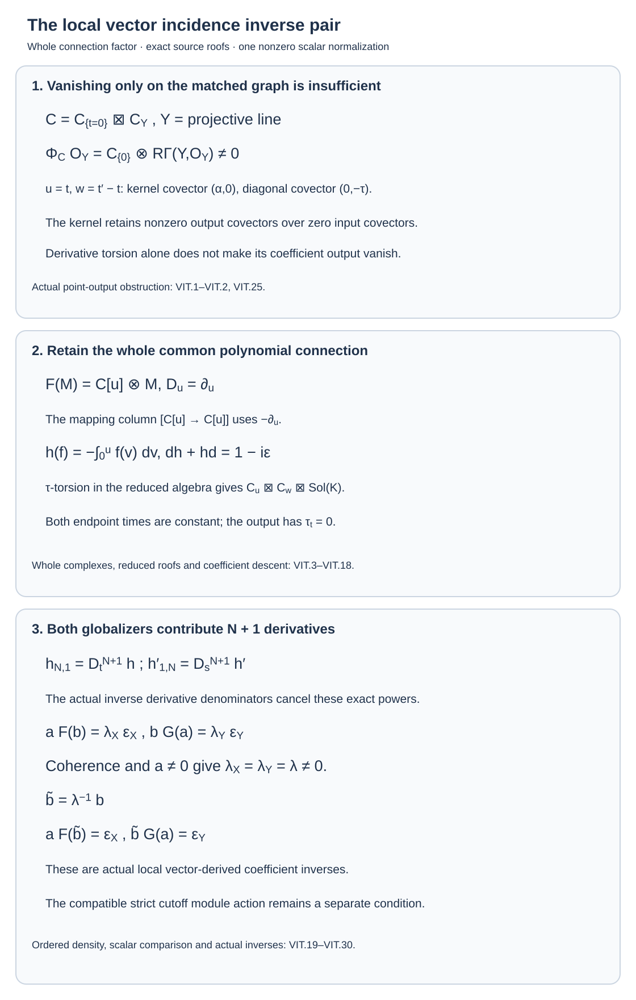
Figure 3.54. The top panel separates the point-output counterexample VIT.2 from the two-time-constant solution kernel VIT.10. The middle panel is the reduced mapping contraction and the actual source comparison VIT.3–VIT.18. The last panel shows the \(N+1\) derivative cancellation and the single scalar normalization in VIT.20–VIT.23. All arrows concern vector-derived coefficient maps; the cutoff module-action comparison is specified in §3.402.
3.403. Exercises on the obstruction and the polynomial factor
Exercise 3.FI. Compute the covectors of the kernel \(\mathbf C_{\{t=0\}}\boxtimes\mathbf C_Y\) in coordinates \(u=t,w=t'-t\). Explain why it is invisible at a nonzero diagonal conormal but its holomorphic coefficient output is not.
Solution 3.FI. Its conormal consists of the first endpoint covector \((\alpha,0)\), with \(\alpha\ne0\). Since \(dt=du\), it has
\[ (\xi_u,\xi_w)=(\alpha,0),\qquad (\tau,-\tau)_{\mathrm{endpoints}}=(0,-\tau)_{(u,w)}. \tag{VIT.25} \]
These are different nonzero directions. The kernel therefore misses the matched diagonal direction while retaining nonzero output covectors over zero input covectors. With compact input \(Y=\mathbf P^1\), VIT.2 and the nonzero section \(1\) give a nonzero point-supported output. The smooth-submanifold coefficient formula then gives every nonzero point conormal, as required. No biduality of \(\mathcal O_Y\) is used.
Exercise 3.FJ. In a module with \([\tau,w]=1\), take \(k\in\ker\tau\) and \(m=w^2k\). Compute its finite Taylor projection and recover \(m\) from VIT.9. Check the sign of VIT.5 on \(u^2\) in both degrees.
Solution 3.FJ. Here \(\tau m=2wk\), \(\tau^2m=2k\), and all higher derivatives vanish. Hence
\[ \Pi(m)=w^2k-2w^2k+w^2k=0,\qquad \Pi(\tau m)=0,\qquad \Pi(\tau^2m)=2k. \tag{VIT.26} \]
The only nonzero term in the reconstruction is \(w^2(2k)/2!=w^2k\). This uses the genuine Weyl commutator, not commutation of \(w\) with \(\tau\). In degree one the contraction gives \(h(u^2)=-u^3/3\), so
\[ \begin{gathered} (-\partial_u)h(u^2)=u^2,\\ h(-\partial_u u^2)=u^2-u^2|_{u=0}=u^2. \end{gathered} \tag{VIT.27} \]
The first equation checks degree one, the second degree zero. On a constant in degree zero the right side of \(1-i\epsilon\) is zero. Tensoring these identities with a reduced mapping complex inserts exactly the usual total sign, so the contraction retains arbitrary coefficient differentials.
3.404. The derivative count in the two coefficient products
Exercise 3.FK. In the forward order start with the global sections \(m_{+,N}=D_t^N\mathfrak a\) and \(m_{-,1}=D_s\mathfrak b\). Compute the product section and the denominator power. Repeat in the reverse order. Explain why two unrelated scalar normalizations are unnecessary.
Solution 3.FK. The total middle derivative is a Spencer boundary, and \((D_t+D_s)m_{+,N}=0\). VIT.15 therefore gives
\[ [m_{+,N}\otimes D_s\mathfrak b] =D_t[m_{+,N}\otimes\mathfrak b]=D_t^{N+1}h. \tag{VIT.28} \]
Naturality of the source maps and VIT.14 move the reverse inverse derivative through the forward evaluation. Thus the denominator is \(D_t^{-N}D_t^{-1}=D_t^{-(N+1)}\), which cancels that numerator. In the reverse order \((D_s+D_t)m_{-,1}=0\). Moving each of the \(N\) middle derivatives from \(D_t^N\mathfrak a\) gives
\[ [m_{-,1}\otimes D_t^N\mathfrak a] =D_s^N[m_{-,1}\otimes\mathfrak a]=D_s^{N+1}h'. \tag{VIT.29} \]
Its denominator is \(D_s^{-1}D_s^{-N}=D_s^{-(N+1)}\). Each equality is in the full relative Spencer complex modulo its displayed boundary, with the same surviving input density. Finally the two ordinary products have the form VIT.20; coherence gives
\[ (\lambda_X-\lambda_Y)\,a\,\epsilon_X(FB)=0. \tag{VIT.30} \]
Since \(\epsilon_X(FB)\) is invertible and \(a\ne0\), the constants are equal. Rescaling \(b\) once by their common inverse normalizes both products. This argument neither replaces the source counits nor changes the specified whole operator ring quantization.
3.405. Ordered polynomial incidence operators
Put \(d=N-1\). Let \(W_X\) be the polynomial Weyl algebra in \((t,x_1,\ldots,x_d)\), with \(\tau=D_t\), \(\xi_i=D_{x_i}\). Write \(W_{X,\tau}\) for its actual Ore localization at the powers of \(\tau\). Let \(W_{Y,\sigma}\) be the corresponding algebra in \((s,y)\), with \(\sigma=D_s\), \(\eta_i=D_{y_i}\). Ore existence and flatness here are the polynomial calculations Regular singularities, AS.11–AS.12; no localization at an arbitrary analytic derivative is implicit.
The incidence map has the following ordered quantization:
\[ \begin{gathered} \rho(\sigma)=\tau,\qquad \rho(y_i)=\xi_i\tau^{-1},\\ \rho(\eta_i)=-x_i\tau,\qquad \rho(s)=t+E_x\tau^{-1},\\ E_x=\sum_i x_i\xi_i. \end{gathered} \tag{PDT.1} \]
It is an isomorphism of these polynomial Ore algebras. To prove the assertion, set \(Y_i=\xi_i\tau^{-1}\), \(H_i=-x_i\tau\), \(S=t+E_x\tau^{-1}\). The Weyl relation gives
\[ [H_i,Y_j]=-x_i\xi_j+\xi_jx_i=\delta_{ij}. \tag{PDT.2} \]
The \(Y_i\) commute, the \(H_i\) commute, and \(\tau\) commutes with both families. Also \([\tau,S]=1\). The remaining relations follow from
\[ \begin{gathered} \bigl[t,Y_i\bigr]=\xi_i\tau^{-2},\qquad [E_x\tau^{-1},Y_i]=-\xi_i\tau^{-2},\\ [t,H_i]=x_i,\qquad [E_x\tau^{-1},H_i]=-x_i. \end{gathered} \tag{PDT.3} \]
For example \([t,\tau^{-1}]=\tau^{-2}\), while \([E_x,\xi_i]=-\xi_i\) and \([E_x,x_i]=x_i\). This checks every generator pair and defines the homomorphism. Its inverse is
\[ \begin{gathered} \phi(\tau)=\sigma,\qquad \phi(x_i)=-\eta_i\sigma^{-1},\\ \phi(\xi_i)=y_i\sigma,\qquad \phi(t)=s+(E_y+d)\sigma^{-1},\\ E_y=\sum_i y_i\eta_i. \end{gathered} \tag{PDT.4} \]
Indeed \([y_i\sigma,-\eta_j\sigma^{-1}]=\delta_{ij}\), and the two families commute separately and with \(\sigma\). The proposed time image has commutator one with \(\sigma\). Its commutators with \(-\eta_i\sigma^{-1}\) are \(-\eta_i\sigma^{-2}\) from \(s\) and \(+\eta_i\sigma^{-2}\) from the Euler term. Its commutators with \(y_i\sigma\) are \(-y_i\) and \(+y_i\). Thus it defines a homomorphism as well.
3.406. The inverse time correction and the two pole orders
The dimension term in PDT.4 is essential. Ordering the products gives
\[ \rho(E_y)=-(E_x+d),\qquad \phi(E_x)=-(E_y+d). \tag{PDT.5} \]
Consequently \(\rho\phi(t)=t\) and \(\phi\rho(s)=s\). Both composites also fix all the derivative and spatial generators, proving the inverse assertion. On principal coordinates these maps are LIT.8–LIT.9. Their lower-order correction must still be retained in an operator calculation.
The globalizing sections of HIC.18 have different undifferentiated pole orders. In affine frames write \(F=s-t-x^{\mathsf T}y\), \(A=t-s+y^{\mathsf T}x\). Their exact differentiated identities are
\[ \begin{gathered} m_{+,N}=\frac{N!\,\Omega}{F^{N+1}},\qquad D_t(Fm_{+,N})=N m_{+,N},\\ m_{-,1}=\frac{N\,\Omega'}{A^{N+1}},\qquad D_s(Am_{-,1})=N m_{-,1}. \end{gathered} \tag{PDT.6} \]
They follow by differentiating \(F\) and \(A\), whose indicated derivatives are \(-1\). These are meromorphic relative-class identities; their distributional versions are obtained by differentiating the same relative representatives. The forward raw pole has order one and is differentiated \(N\) times. The reverse raw pole has order \(N\) and is differentiated once. They are not two identical simple poles.
The algebraic source of the normalization correction is
\[ \tau^{-r}t=t\tau^{-r}-r\tau^{-r-1}\quad(r\ge1). \tag{PDT.7} \]
For \(r=1\), multiply \(\tau t-t\tau=1\) by the inverse on both sides. Induction gives the displayed formula. Thus moving the forward \(N\) inverse derivatives past time subtracts \(N\); moving the single reverse inverse derivative subtracts one. Applied to the \(N\) in PDT.6, the respective remainders are zero and \(N-1=d\). This explains the ordered formulas algebraically. Establishing all their spatial and time-multiplication identities simultaneously on cutoff complexes remains the action condition below.
3.407. A linear directional test of holomorphic functions
Choose a complex linear coordinate \(t\) with \(p=d\operatorname{Re}t\) at the origin, and put \(M=\{\operatorname{Re}t=0\}\), \(H=\mathbf C_M\). Define the exact bounded test functor
\[ \mathsf T_p(F)=\mu\operatorname{hom}(H,F)_p \simeq(\mu_MF)_p \simeq(R\Gamma_{\{\operatorname{Re}t\ge0\}}F)_0. \tag{PDT.8} \]
Here and below a covector is identified with its positive real conormal direction. The first isomorphism is Local morphisms in cotangent directions, SH02-MH-SUBMANIFOLD. The last one follows directly from that lesson's directional support formula SH02-MH-TESTS. In this rank-one normal bundle, the positive closed halfspace is a final admissible support after shrinking. To check this, if an admissible closed \(Z\) had negative-normal points approaching zero, project each point to \(M\) and divide its negative normal coordinate by its absolute value. This would put the negative unit normal in \(C_M(Z)_0\), contrary to the strict positive-polar condition. Hence \(Z\) is contained in the positive halfspace near zero. That halfspace itself is admissible. Support enlargement and neighborhood restriction therefore give the last identification with its original maps.
This proof works for every bounded vector sheaf complex. In particular \(\mathsf T_p\) kills any cone whose microsupport misses \(p\), by the defining local support test. It consequently sends the corresponding localized denominators to ordinary quasi-isomorphisms.
For the holomorphic sheaf the test is concentrated in degree one:
\[ \begin{gathered} \mathsf T_p(\mathcal O_X)\simeq V_p[-1],\\ V_p=\varinjlim_B \frac{\mathcal O(B\cap\{\operatorname{Re}t<0\})}{\mathcal O(B)}. \end{gathered} \tag{PDT.9} \]
Take cofinal product polydiscs \(B\) in \(t,x\). Both \(B\) and its negative half are convex complex domains. Their positive holomorphic sheaf cohomology vanishes by the complete convex-domain proof Riemannian connections and convex neighbourhoods, Theorem B.5. The localization triangle therefore has only the kernel and cokernel of restriction in degrees zero and one. The kernel is zero by the holomorphic identity theorem. Its cokernel is the displayed quotient. Filtered vector-space colimits are exact, which proves concentration on the stalk. In particular
\[ [1/t]\ne0\quad\hbox{in }V_p. \tag{PDT.10} \]
An extension of \(1/t\) to a smaller full polydisc would satisfy \(tg=1\) there by the identity theorem and then at \(t=0\), an impossibility.
3.408. The derivative is invertible on this tested coefficient
Finite differential operators act on the localization triangle and therefore on \(V_p\). The induced time derivative is bijective. If \(D_tf\) extends to a full polydisc, take a holomorphic \(t\)-primitive of that extension. The difference from \(f\) is independent of \(t\) on the connected halfdisc and is holomorphic in \(x\), so it extends as well. This proves injectivity on the quotient. For surjectivity, integrate any half-polydisc coefficient along paths in its simply connected negative halfdisc, with an anchor fixed independently of \(x\). Differentiation under the path integral shows holomorphic dependence on \(x\). The primitive is defined on a smaller product domain, which suffices in the filtered germ. Thus
\[ D_t:V_p\xrightarrow{\sim}V_p. \tag{PDT.11} \]
This is an actual statement about the quotient coefficient. Differentiation on ordinary holomorphic germs still has a nonzero constant kernel. For example a branch on the negative halfdisc gives
\[ D_t[\log(-t)]=[1/t]\quad\hbox{in }V_p. \tag{PDT.12} \]
Changing the branch adds a constant, which is zero in this quotient.
3.409. Keeping strict coefficient actions during a test
Let \(A\) be any constant unital complex algebra, with no finite global-dimension hypothesis. The functor \(\mathsf T_p\) has an \(A\)-linear derived construction on bounded \(A\)-module sheaves. Resolve the output in injective \(A\)-module sheaves. Such an injective is injective after forgetting to vector sheaves: induction \(A\otimes_{\mathbf C}-\) is exact, and the forgetful functor is its right adjoint. Internal Hom with the fixed vector input \(H\), normal specialization, the Fourier kernel and the stalk all retain the output action. Finite-dimensional boundedness is the vector-sheaf bound SH02-MH-BOUNDED. Thus
\[ \mathsf T_p:D^b(A_X\text{-Mod}) \longrightarrow D^b(A\text{-Mod}) \tag{PDT.13} \]
has the vector test PDT.8 as its underlying functor. The same conclusion follows from the support-functor model in PDT.8, using the same module-injective resolution.
For a bounded finite free \(A\)-complex \(P\), there is a natural equivalence
\[ \mathsf T_p R\mathcal Hom_A(P,G) \simeq R\operatorname{Hom}_A(P,\mathsf T_pG). \tag{PDT.14} \]
On a free term both sides are the same finite sum of \(\mathsf T_pG\). Each matrix is sent to its written Hom action, with differential \(d(f)=d_Gf-(-1)^{|f|}fd_P\). This identifies the maps and total signs. A finite free-cell filtration then proves the equivalence and its naturality for attaching maps, finite maps and chain homotopies. No assertion about infinite products or infinite resolutions is needed.
3.410. Two tested coefficients in matched incidence directions
Use \(K,L,a\) of VIT.1–VIT.23, with \(F=\Phi_K\), \(q=\chi(p)\). Fix actual strict cutoff objects \(G_Y,G_X\) as in RKC.19–RKC.22, on corresponding charts. Their vector denominators are \(G_Y\simeq\mathcal O_Y\) at \(q\) and \(G_X\simeq\mathcal O_X\) at \(p\). Assume a constant algebra \(A\) acts on both cutoff objects through specified actual canonical kernel-ring maps. Give \(F_AG_Y\) the transported strict action of LIT.19. Put
\[ E=\mathsf T_p(F_AG_Y),\qquad D=\mathsf T_p(G_X). \tag{PDT.15} \]
The letter \(D\) here denotes the tested complex, not a differential-operator sheaf. LIT's graph equivalence sends the input vector denominator to an output denominator. Applying the exact test, the actual vector inverse \(a\), and the target denominator gives
\[ E\xrightarrow[\text{vector-derived}]{\ \alpha\ } D,\qquad E\simeq V_p[-1]\simeq D. \tag{PDT.16} \]
More explicitly the middle vector object is \(\mathsf T_p(F\mathcal O_Y)\), followed by \(\mathsf T_p(a)\) to \(\mathsf T_p(\mathcal O_X)\); the cutoff comparisons are inverted only after their test cones are proved zero. No \(A\)-linearity of these middle vector arrows is assumed. Both endpoint complexes have cohomology in degree one only.
The same tested coefficient can be written on the input side. The full directional-Hom comparison of LIT.14–LIT.18 and its actual dual kernel gives
\[ \mathsf T_p(F\mathcal O_Y) \simeq \mu\operatorname{hom}(L H,\mathcal O_Y)_q. \tag{PDT.17} \]
Here \(L H=\Phi_LH\); it is a bounded constructible test object. The coefficient \(\mathcal O_Y\) need not be constructible. The formula follows by applying the directional comparison to \((LH,\mathcal O_Y)\) and then the coherent counit \(F L H\simeq H\). Thus this input-side tested object is also concentrated in degree one.
3.411. A strictification theorem after concentration
Theorem. Suppose \(A\) is generated as a unital algebra by \(z_1,\ldots,z_m\), and the vector isomorphism \(\alpha\) in PDT.16 satisfies
\[ H^1(\alpha)\,z_i=z_i\,H^1(\alpha) \quad(1\le i\le m) \tag{PDT.18} \]
for the specified endpoint actions. Then it has an actual lift \(E\simeq D\) in \(D^b(A\text{-Mod})\). Its underlying vector-derived map is the specified \(\alpha\).
Indeed PDT.18 implies equivariance for every word by induction on word length, and for finite linear combinations by linearity. The given actions factor through \(A\), so this proves an \(A\)-linear isomorphism on cohomology. For either complex \(C=E,D\), the good truncation gives \(A\)-linear quasi-isomorphisms
\[ C\ \longleftarrow\ \tau_{\le1}C\ \longrightarrow\ H^1(C)[-1]. \tag{PDT.19} \]
The right arrow is zero below degree one and the degree-one quotient from cycles to cohomology. Both maps are quasi-isomorphisms because all other cohomology is zero. Inserting the \(A\)-linear map \(H^1(\alpha)\) between these roofs proves
\[ E\simeq H^1(E)[-1] \xrightarrow{\,H^1(\alpha)[-1]\,} H^1(D)[-1]\simeq D \quad\text{in }D^b(A\text{-Mod}). \tag{PDT.20} \]
After forgetting \(A\), objects concentrated in a single degree have degree-zero morphisms exactly the morphisms of their cohomology vector spaces. This follows by the same truncation roofs and the fully faithful embedding of the heart into its derived category. Hence the underlying map in PDT.20 is \(\alpha\), not merely an unspecified vector isomorphism.
Concentration is used on the tested coefficient complexes. Nothing here replaces a full kernel complex by its degree-zero cohomology before tensoring, and nothing lifts the untested vector map to a cutoff module map automatically.
3.412. The resulting finite solution-complex comparison
Let \(P\) be a bounded finite free \(A\)-complex. LIT.22, PDT.14 and PDT.20 give
\[ \begin{gathered} \mathsf T_p F R\mathcal Hom_A(P,G_Y)\\ \simeq R\operatorname{Hom}_A(P,E)\\ \simeq R\operatorname{Hom}_A(P,D)\\ \simeq \mathsf T_p R\mathcal Hom_A(P,G_X). \end{gathered} \tag{PDT.21} \]
This is an equivalence of the entire tested vector complexes, including all their cohomology groups. It is natural in finite maps and homotopies of \(P\). The terms need not themselves be concentrated in degree one.
More generally suppose \(P,Q\) are bounded finite free complexes and actual matrices over \(A\) satisfy
\[ \begin{gathered} f:P\longrightarrow Q,\qquad g:Q\longrightarrow P,\\ gf-1=dH+Hd,\qquad fg-1=dJ+Jd. \end{gathered} \tag{PDT.22} \]
Applying internal Hom and the tests retains these identities. On a homogeneous Hom entry of degree \(k\), the homotopy induced by \(H\) is
\[ S_H(\psi)=(-1)^k\psi H,\qquad dS_H+S_Hd=\psi(gf-1), \tag{PDT.23} \]
and likewise for \(J\). Expanding the internal Hom differential cancels the two mixed terms and proves the formula. Thus the comparison includes the chosen resolutions, maps and homotopies. When their realized differential operators are finite, the \(D_0\)-linear cutoff denominators RKC.22 identify the corresponding finite Hom complexes with the actual holomorphic solution complexes after this test. Whole canonical entries in the comparison matrices still require their specified actual common-ring realizations.
3.413. A finite relation algebra and the remaining action condition
There is a useful way to retain exactly the required finite data. List all entries of the complexes, maps, homotopies and the scalar unit in PDT.22. Introduce finitely many noncommuting letters, and let
\[ A=\mathbf C\langle z_1,\ldots,z_m\rangle/ (\text{entries of the required finite matrix identities}). \tag{PDT.24} \]
The quotient uses the two-sided ideal generated by those entries. The identities include \(d^2=0\), the two chain-map equations and both displayed homotopy equations. This is a finite list of noncommutative polynomials. Actual common-ring realizations that satisfy the identities give homomorphisms from this algebra, by the universal property of a quotient. No commutativity or finite global dimension of \(A\) is inferred. The finite realization proof Regular singularities, ID.1–ID.2 supplies such common realizations only for equations already proved in the actual operator germs.
In incidence applications, the two realizations must match the whole real-ring map \(\Phi\) of Regular singularities, WT.2–WT.12. The exact remaining test is
\[ H^1(\alpha)\,r_Y(z_i) =r_X(z_i)\,H^1(\alpha) \quad\hbox{for every selected generator}. \tag{PDT.25} \]
Once these finitely many equalities are proved for the specified actual actions, PDT.19–PDT.23 supply the coherent tested comparison. A finite generator formula in the polynomial Ore algebra is not a proof of PDT.25 for arbitrary whole infinite-order entries. Nor does the tested module roof imply the untested cutoff-module roof LIT.24. General contact transport of all solution objects, the reverse support comparison and the nilpotent image assertions retain their remaining action and geometric hypotheses.
Figure 3.55. The first panel is the exact ordered inverse PDT.4–PDT.5. The second is the halfspace quotient PDT.9, concentrated in degree one; it includes the nonzero class \(1/t\) and its primitive on the negative halfdisc. The last panel is PDT.18–PDT.21. The generator-equivariance condition is an explicit premise; the output is a module-derived roof for tested coefficients.
3.414. Exercise and solution: the missing inverse term
Exercise 3.FL. For \(d=2\), use the proposed inverse time \(s+E_y\sigma^{-1}\) without its scalar correction. Compute its forward image, and find the correction that makes the two maps inverse. Explain why the principal contact coordinates do not detect the error.
Solution 3.FL. Ordering each \(\xi_i x_i=x_i\xi_i+1\) gives \(\rho(E_y)=-(E_x+2)\). Therefore
\[ \rho(s+E_y\sigma^{-1})=t-2\tau^{-1}. \tag{PDT.26} \]
Adding \(2\sigma^{-1}\) repairs it:
\[ \rho\bigl(s+(E_y+2)\sigma^{-1}\bigr)=t. \tag{PDT.27} \]
The other composite is checked using \(\phi(E_x)=-(E_y+2)\). The correction has order minus one, whereas time and \(E_y\sigma^{-1}\) have order zero. It disappears from the principal order-zero coordinate map but is nonzero in the actual Ore algebra, since \(\tau\) is invertible and the coefficient field has characteristic zero.
3.415. Exercise and solution: retain the whole tested complex
Exercise 3.FM. Let \(A=\mathbf C[e]/(e^2)\), \(V=A\), and \(P\) have one copy of \(A\) in degrees \(-2,-1,0\), with both differentials multiplication by \(e\). Compute all cohomology of \(R\operatorname{Hom}_A(P,V[-1])\). Does purity of the tested coefficient allow the solution complex to be truncated to its first nonzero cohomology?
Solution 3.FM. The relation \(e^2=0\) makes \(P\) a complex; it is bounded free, so ordinary internal Hom computes its derived Hom. Before the coefficient shift its maps are
\[ \operatorname{Hom}_A(P,V) =[A\xrightarrow{-e}A\xrightarrow{e}A], \qquad\deg=(0,1,2). \tag{PDT.28} \]
The signs are \(-(-1)^k\) in Hom degree \(k\). Both kernels of multiplication by \(e\) are \(eA\), and its image is \(eA\). Thus the unshifted cohomology is \(eA,0,A/eA\) in degrees zero, one and two. After shifting the coefficient,
\[ H^kR\operatorname{Hom}_A(P,V[-1]) = \begin{cases} eA,&k=1,\\ A/eA,&k=3,\\ 0,&k\ne1,3. \end{cases} \tag{PDT.29} \]
Each nonzero space has complex dimension one. The degree-three group must be retained. The argument uses a finite free complex; it does not require a finite free resolution of every \(A\)-module. In particular the possible infinite global dimension of this coefficient algebra causes no problem.
3.416. The actual time-generator comparison
Exercise 3.FN. Take \(A=\mathbf C[z,z^{-1}]\), acting on the input cutoff by \(z=D_s\), on the output cutoff by \(z=D_t\), and by their actual inverses for \(z^{-1}\). Prove PDT.25 for this algebra in every incidence dimension \(N\ge1\). Distinguish this assertion from the whole operator-action comparison.
Solution 3.FN. HIC.21 gives \(a=D_t^{-N}U c_+^{-1}\). The source denominator \(c_+\) is natural for the input derivative. VIT.14 proves \(U\Phi_{J_+}(D_s)=D_tU\) on the actual ordinary evaluation complexes. Since the output inverse powers commute with \(D_t\), these identities give \(aF(D_s)=D_ta\) in the selected localization. The RKC cutoff denominators are linear for these finite derivatives. Applying \(\mathsf T_p\) and degree-one cohomology therefore gives
\[ \begin{gathered} H^1(\alpha)\,D_s=D_t\,H^1(\alpha),\\ H^1(\alpha)\,D_s^{-1}=D_t^{-1}\,H^1(\alpha). \end{gathered} \tag{PDT.30} \]
For the second equation, multiply the first by the two inverses. They exist on the strict cutoff modules by the actual canonical product identities; on the tested holomorphic quotient they are exactly the unique inverse PDT.11. Thus the two Laurent generators satisfy PDT.18, and PDT.19–PDT.21 give the actual module-derived comparison for the tested time-action complexes.
This proves all Laurent-polynomial time identities and their finite-complex comparisons. It does not establish the spatial, time-multiplication or arbitrary full infinite-order identities in PDT.25. Those operators require their own actual action comparisons; neither their principal symbols nor the ordered polynomial algebra calculation substitutes for them.
3.417. Polynomial incidence operators on the actual tested coefficients
Use the incidence kernels, vector map \(a\), strict cutoff objects and exact test of VIT and PDT. Work locally at matched covectors \(p,q=\chi(p)\) with nonzero time component. Put \(d=N-1\), \(\tau=D_t\), \(\sigma=D_s\), \(\xi_i=D_{x_i}\), \(\eta_i=D_{y_i}\). Let \(A=W_{Y,\sigma}\) be the polynomial Weyl algebra with the time derivative inverted. The ordered map of PDT.1–PDT.5 is
\[ \begin{gathered} \rho(\sigma)=\tau,\quad \rho(\sigma^{-1})=\tau^{-1},\\ \rho(y_i)=\xi_i\tau^{-1},\quad \rho(\eta_i)=-x_i\tau,\\ \rho(s)=t+E_x\tau^{-1},\qquad E_x=\sum_i x_i\xi_i . \end{gathered} \tag{PIA.1} \]
Theorem. The specified polynomial actions satisfy PDT.25. Consequently the vector comparison between the two tested cutoff coefficients lifts to an isomorphism in \(D^b(A\text{-Mod})\), and all bounded finite free \(A\)-complexes have the complete tested Hom comparison of PDT.21. This assertion uses the actual derivative inverse in the selected localization. It does not assert an inverse derivative on ordinary holomorphic functions.
Write
\[ J_+=\mathbf C_{S_+}[N-1],\qquad U=\vartheta_{u_{+,N}},\qquad a=\tau^{-N}U c_+^{-1}. \tag{PIA.2} \]
Here \(U:\Phi_{J_+}\mathcal O_Y\to\mathcal O_X\) is the ordinary proper density evaluation, and \(c_+\) is the closed-to-open source denominator. The proof establishes the needed finite operator identities for these exact maps before applying the pure test.
3.418. Affine input operators and proper representatives
Restrict the input coefficient to the affine incidence chart \(j:Y_0\hookrightarrow Y\) and extend it by zero. At the selected input covector this is a denominator; LIT's graph equivalence sends it to an output denominator. The ordinary projection formula identifies the resulting closed source with the affine source extended by zero:
\[ J_+\otimes \pi_Y^{-1}j_!\mathcal O_{Y_0} \simeq j'_!\bigl(J_+|_{X\times Y_0} \otimes \pi_{Y_0}^{-1}\mathcal O_{Y_0}\bigr). \tag{PIA.3} \]
The map \(j'\) is the corresponding product open embedding, and \(\pi_Y,\pi_{Y_0}\) are the input projections. This follows on stalks from exact inverse image and extension by zero over \(\mathbf C\). Composing proper-support images gives the same affine integral while retaining the entire projective middle in its original description. In the following calculations the coefficient maps are evaluated on this replaced input. After the selected localization, its input denominator identifies them with the maps of PIA.2.
An input polynomial multiplication or constant affine derivative is an actual endomorphism of this extended coefficient. Its support stays in the input open. Translation derivatives extend to projective translation vector fields preserving the infinity divisor. Polynomial functions need only be defined on the affine input; extension by zero defines their coefficient maps without a fictitious global projective function.
Use the smooth/current and proper-image models of HIC and Regular singularities, R.5–R.7, DL.1–DL.3 and DLG.1–DLG.7. On every compact output family, proper-support representatives admit a collar in the actual affine source. Finitely many chosen expressions and their comparison homotopies admit one common refinement. Arbitrary proper sections are not restricted to arbitrary source opens.
In affine frames set
\[ F=s-t-x^{\mathsf T}y,\qquad \Omega=ds\wedge dy_1\wedge\cdots\wedge dy_d,\qquad m=\frac{N!\,\Omega}{F^{N+1}}. \tag{PIA.4} \]
This is the restriction of the actual globalizing section HIC.18. Products by affine polynomials and their finite derivatives are legitimate relative density classes on the source of PIA.3.
3.419. Differentiating the full relative maps
For a relative density class \(c\) on this affine source, write \(U_c\) for its ordinary evaluation. Coefficient multiplication before the normalized trace gives
\[ U_{bc}=U_c\,\Phi_{J_+}(b),\qquad U_{hc}=h\,U_c, \tag{PIA.5} \]
where \(b\) is an input polynomial and \(h\) an output polynomial. The equations are literal multiplication identities on each whole-domain and complement entry. The input top line is ungraded.
Here is the derivative comparison, including the choices in that model. On a full relative cone with \(\delta=\bar\partial\), the collar and its derivative homotopy are
\[ \begin{gathered} L_\eta(v,w)=(\eta v+\delta\eta\,w,\eta w),\\ K_D(v,w)=((D\eta)w,0),\\ \bigl[D,L_\eta\bigr]=dK_D+K_Dd . \end{gathered} \tag{PIA.6} \]
Direct expansion of the relative differential \(d(v,w)=(\delta v,rv-\delta w)\) proves the equation. The terms containing a derivative of the collar vanish near the support before extension by zero. The final proper collar makes the traced homotopy proper. This is exactly DL.8; it includes the complement term.
The finite complement-cover comparison has the same derivative compatibility. Let \(P\) be the cube-to-full-cone map, \(\iota\) its augmentation and \(H\) its degree-minus-one contraction. Entrywise differentiation commutes with the augmentation. DLG.14 then gives
\[ PD-DP=d(PDH)+(PDH)d . \tag{PIA.7} \]
Here the differential on the relevant total complexes is understood. The formula follows by multiplying \(1-\iota P=dH+Hd\) by \(PD\). It retains every finite-cover entry; no derivative of a partition is discarded.
For an output coordinate derivative, differentiation commutes with the properly supported trace. PIA.6–PIA.7 account for the collar and cover choices. It follows, as an equality of the resulting derived maps, that
\[ U_{Dc}=D\,U_c . \tag{PIA.8} \]
The density derivative is taken at fixed middle coordinates. The positive relative pole representative \((0,-c)\) of HI.25 fixes the connecting sign. Its finite meromorphic identities are identities of the actual density morphisms, not just of their principal symbols.
3.420. Vertical integration by parts with every complement retained
Let \(D_v\) be one of the constant affine middle derivatives \(D_s,D_{y_i}\). In the displayed frame its density divergence is zero. Proper Stokes applied to the total vertical derivative gives
\[ U_c\,\Phi_{J_+}(D_v)=-U_{D_vc}. \tag{PIA.9} \]
For completeness, form the full relative cup before the collar and trace. If a kernel cochain is \((k_0,k_1)\) of degree \(r\), and an input cochain is \((f_0,f_1)\), its four entries are
\[ \bigl(k_0f_0,\ k_1f_0,\ (-1)^r k_0f_1,\ (-1)^{r-1}k_1f_1\bigr). \tag{PIA.10} \]
The degree-zero derivative obeys Leibniz in each of these entries, with the displayed signs unchanged. Thus the sum of differentiating the kernel and differentiating the input is the entrywise total derivative. Apply the finite full-cone comparison and proper collar. PIA.6–PIA.7 identify their derivative corrections as full homotopies. In every partition-localized complement term, subordinate supports and the collar make the coefficient compactly supported inside its actual complement domain. It can be integrated there and extended by zero where permitted; no unweighted complement primitive is extended across an excluded face.
On those proper smooth coefficients the integral of \(D_v\) is zero, by real-coordinate integration by parts for the two real derivatives constituting \(D_v\). The current version is the same identity by distributional transposition. The normalized trace signs depend on cochain degree, which \(D_v\) does not change. The whole-domain and output-complement calculations therefore give PIA.9 together. This proves the identity for the bounded derived evaluations and hence after the exact test.
3.421. The spatial and derivative identities
Direct differentiation of PIA.4 gives the actual meromorphic relative-class identities
\[ D_sm=-D_tm,\qquad D_{x_i}m=y_iD_tm,\qquad D_{y_i}m=x_iD_tm . \tag{PIA.11} \]
They hold for the positive relative representatives and their distributional derivatives as well. The coefficient maps are obtained by the same normal connecting morphism HI.25; its source is the fixed closed constant sheaf. Thus these section equalities give equalities of those morphisms with the indicated coefficient derivatives. No action of the normal derivative on that constant source sheaf is being assumed.
Using PIA.5, PIA.8 and PIA.9 gives
\[ \begin{gathered} U\,\Phi_{J_+}(D_s)=\tau U,\\ D_{x_i}U=\tau U\,\Phi_{J_+}(y_i),\\ U\,\Phi_{J_+}(D_{y_i})=-x_i\tau U. \end{gathered} \tag{PIA.12} \]
For the middle equation, first differentiate the density in \(x_i\), then multiply its time derivative by \(y_i\) before evaluation. All identities are made on the same finite common support refinement.
The source map \(c_+\) is natural for every chosen input endomorphism. Since \(D_{x_i}\), \(x_i\) and \(\tau\) have the indicated commutations with \(\tau^{-N}\), PIA.2 gives
\[ \begin{gathered} a\,\Phi_K(\sigma)=\tau a,\\ a\,\Phi_K(y_i)=\xi_i\tau^{-1}a,\\ a\,\Phi_K(\eta_i)=-x_i\tau a. \end{gathered} \tag{PIA.13} \]
In the second equation multiply the corresponding PIA.12 identity by the localized inverse of \(\tau\). That inverse exists by HIC.20; it has not been applied to ordinary holomorphic functions on a full neighborhood.
3.422. Time multiplication and the cancellation of the globalizer
The lower-pole class has the same closed source. Put \(W=U_{Fm}\). By PIA.5 and the identity defining \(F\),
\[ W=U\,\Phi_{J_+}(s)-tU -\sum_i x_iU\,\Phi_{J_+}(y_i). \tag{PIA.14} \]
Differentiate the relative density. Since \(D_tF=-1\), the factorial in \(m\) gives \(D_t(Fm)=Nm\), as in PDT.6. Hence
\[ \tau W=NU,\qquad W=N\tau^{-1}U \quad\hbox{in the selected localization}. \tag{PIA.15} \]
The first identity is proved before inverting the derivative. Substituting PIA.12 and PIA.15 into PIA.14 yields
\[ U\,\Phi_{J_+}(s) =(t+E_x\tau^{-1}+N\tau^{-1})U. \tag{PIA.16} \]
Now \(\tau^{-N}t=t\tau^{-N}-N\tau^{-N-1}\). Moving that factor through the first term cancels precisely the last \(N\) in PIA.16. Naturality of \(c_+\) therefore gives
\[ a\,\Phi_K(s)=(t+E_x\tau^{-1})a . \tag{PIA.17} \]
The parameter-zero forward quantization is thus fixed by the actual globalizer and its actual inverse derivative normalization. A different power cannot silently be substituted.
3.423. The full polynomial Ore action after the pure test
The first identity in PIA.13 and the two actual localized derivative inverses also give
\[ a\,\Phi_K(\sigma^{-1})=\tau^{-1}a . \tag{PIA.18} \]
Together PIA.13, PIA.17 and PIA.18 establish the intertwining equation for every generator of \(A\). Induction on finite word length and linearity prove
\[ a\,\Phi_K(Q)=\rho(Q)a\qquad(Q\in W_{Y,\sigma}). \tag{PIA.19} \]
The written order of every noncommuting word is preserved. PDT.1–PDT.5 already proves all algebra relations, including the ordered inverse time. The map is the finite restriction of the whole canonical incidence transport: Regular singularities, LI.3–LI.6, LN.30 and WT.6 identifies that restriction with \(L_0\), with exactly these values. A principal contact map alone would not determine this assertion.
Choose the actual finite common canonical-ring realizations on the two cutoff objects for these generators and relations. The RKC denominators are linear for their finite differential operators. The inverse time action on the tested coefficient is the unique inverse of PDT.11. Thus the vector comparison \(\alpha\) of PDT.16 satisfies
\[ H^1(\alpha)\,r_Y(Q) =r_X(\rho(Q))\,H^1(\alpha) \qquad(Q\in W_{Y,\sigma}). \tag{PIA.20} \]
Here \(r_X\) denotes the natural target polynomial Ore action; equivalently one may absorb \(\rho\) into the input-algebra realization. Only finitely many generator and relation representatives need a common refinement. Their actual ring homomorphism then defines every finite polynomial word; no uniform estimate for an infinite sequence of words is inferred.
3.424. Module-derived comparison and its exact scope
Give the tested target coefficient its \(A\)-action through \(\rho\). PDT.18–PDT.20 applies to PIA.20 and gives the actual module-derived isomorphism
\[ \mathsf T_p(\Phi_A G_Y) \simeq {}_\rho\mathsf T_p(G_X) \quad\hbox{in }D^b(A\text{-Mod}). \tag{PIA.21} \]
The symbol \({}_\rho\) here means that \(Q\in A\) acts on the target by \(\rho(Q)\). Both tested coefficient complexes have cohomology only in degree one. Their good-truncation roofs are \(A\)-linear, so PIA.21 retains the specified vector map \(\alpha\). Its inverse is an actual module-derived inverse; the scalar normalization of the opposite vector incidence map does not change the polynomial action.
For every bounded finite free \(A\)-complex \(P\), the full finite Hom comparison is
\[ \begin{gathered} \mathsf T_p\Phi_K R\mathcal Hom_A(P,G_Y)\\ \simeq R\operatorname{Hom}_A \bigl(P,{}_\rho\mathsf T_p(G_X)\bigr). \end{gathered} \tag{PIA.22} \]
This includes every cohomology degree, every specified finite map and each chain homotopy. PDT.22–PDT.23 gives the explicit Hom homotopy. The theorem does not truncate the resulting solution complex to the single degree of its coefficient.
A single linear test is not conservative, as Solution 3.FQ shows. The theorem therefore asserts PIA.21–PIA.22 for the specified tested complexes. Analytic coefficients given by infinite Taylor series and whole infinite-order operators require their further common-domain and action comparisons. Nor is an untested strict cutoff-module roof, general characteristic-support equality or a nilpotent image theorem a consequence of the polynomial result.
Figure 3.56. The first two panels show PIA.11–PIA.20 with the fixed input density and the cancellation of \(N\). The last panel is the real curve \(t=u^3,x=u\) of Solution 3.FQ, plotted for \(-1\le u\le1\). Its horizontal coordinate is \(x=u\), its vertical coordinate is \(t=u^3\), and the selected normal at zero is \(d\operatorname{Re}t\). The linear support test vanishes there although the covector lies in the conormal.
3.425. Exercise and solution: a noncommuting input word
Exercise 3.FO. For \(d\ge1\), compute the tested action of \(Q=y_i\eta_j\sigma^{-1}\), keeping the input order. Compare it with the principal-symbol expression that omits the commutator.
Solution 3.FO. PIA.1 and PIA.19 give
\[ \begin{gathered} \rho(y_i\eta_j\sigma^{-1}) =-\xi_i x_j\tau^{-1}\\ =-(x_j\xi_i+\delta_{ij})\tau^{-1}. \end{gathered} \tag{PIA.23} \]
The scalar term appears because \(\xi_i x_j=x_j\xi_i+\delta_{ij}\). For \(i=j\), omitting it changes the operator by the nonzero \(-\tau^{-1}\). On the actual tested coefficients this means
\[ H^1(\alpha)\,r_Y(Q) =-r_X\bigl((x_j\xi_i+\delta_{ij})\tau^{-1}\bigr) H^1(\alpha). \tag{PIA.24} \]
This is the finite polynomial module identity, including its lower-order term. It does not follow by multiplying only the principal coordinate functions.
3.426. Exercise and solution: changing the differentiating power
Exercise 3.FP. For an integer \(k\ge N\), put \(m_k=k!\Omega/F^{k+1}\), \(U_k=U_{m_k}\). Compare \(\tau^{-k}U_kc_+^{-1}\) with \(a\). Then compute the time image if the normalizing power is \(\tau^{-r}\), where \(r\ge0\).
Solution 3.FP. The higher class is the \((k-N)\)-th time derivative of \(m\), so PIA.8 gives \(U_k=\tau^{k-N}U\). In the projective frame its rational coefficient is \(k!\lambda^{k-N}/F_h^{k+1}\), of homogeneous degree \(-(N+1)\). The homogeneous top form has weight \(N+1\), so their product descends to the projective input and has the stated affine restriction. Also \(D_tF_h=-\lambda\), which verifies the same successive derivative identity globally. Consequently
\[ \tau^{-k}U_kc_+^{-1}=a. \tag{PIA.25} \]
For \(a_{k,r}=\tau^{-r}U_kc_+^{-1}\), one has \(a_{k,r}=\tau^{k-r}a\). Conjugating PIA.17 by that integer power and using the actual Weyl commutator gives
\[ a_{k,r}\Phi_K(s) =\bigl(t+(E_x+k-r)\tau^{-1}\bigr)a_{k,r}. \tag{PIA.26} \]
All other generator images are unchanged. For positive exponents, induction from \([\tau,t]=1\) gives \(\tau^jt\tau^{-j}=t+j\tau^{-1}\); PDT.7 proves the negative exponents. Thus the required parameter-zero map occurs for \(r=k\). For the original \(k=N\), choosing \(r=1\) would instead add \((N-1)\tau^{-1}\) to time.
3.427. Exercise and solution: one linear test can vanish on a conormal
Exercise 3.FQ. In a neighborhood of zero in \(\mathbf C^2_{t,x}\), let \(C\) be the smooth real curve \(t=u^3,x=u\), with \(u\) real, and let \(F_C=\mathbf C_C\). Show that \(p=d\operatorname{Re}t\) belongs to its microsupport at zero but \(\mathsf T_p(F_C)=0\) for the linear test of PDT.8.
Solution 3.FQ. The curve is closed in a sufficiently small ambient coordinate neighborhood: it is defined there by \(\operatorname{Im}t=\operatorname{Im}x=0\) and \(\operatorname{Re}t=(\operatorname{Re}x)^3\). Its tangent at zero is the real \(x\)-axis. Hence
\[ p(\dot t,\dot x)=0 \quad\text{for }(\dot t,\dot x)=(0,\dot u), \qquad p\in T_C^*\mathbf C^2\setminus0. \tag{PIA.27} \]
Membership in the microsupport can also be checked directly. For \(u_0>0\), the phase \(\varphi=\operatorname{Re}(t-3u_0^2x)\), restricted to the curve with \(u=u_0+v\), has difference from its critical value \(v^2(3u_0+v)\). It is nonnegative near that point, so its supported constant sheaf has a nonzero degree-zero stalk. The resulting microsupport covectors \(d\operatorname{Re}t-3u_0^2d\operatorname{Re}x\) tend to \(p\) as \(u_0\) decreases to zero. Microsupport is closed, since its defining vanishing condition is open. Hence \(p\) lies in it. On \(C\), the support condition \(\operatorname{Re}t\ge0\) is exactly \(u\ge0\). The local support sequence is therefore
\[ \mathbf C \xrightarrow{\ \mathrm{id}\ }\mathbf C \longrightarrow \mathsf T_p(F_C)[1], \qquad \mathsf T_p(F_C)=0. \tag{PIA.28} \]
Both the small interval and its negative half are contractible; their ordinary constant-sheaf cohomology is concentrated in degree zero, and restriction is the identity. This proves the displayed vanishing in all degrees. It does not contradict the defining microsupport criterion, which requires vanishing for a neighborhood of covectors and all admitted tests, not one fixed linear function at the base point. The cubic has nearby nonzero conormals approaching \(p\).
3.428. Polynomial words and whole analytic inputs
The proved finite statement can be recorded as
\[ Q\in W_{Y,\sigma} \ \Longrightarrow\ \text{PIA.19--PIA.22 with the specified actual actions}. \tag{PIA.29} \]
Every such \(Q\) is a finite sum of finite words. For an analytic coefficient \(b(s,y)=\sum_\alpha c_\alpha\,(s,y)^\alpha\), expanded about the affine coordinate origin, its partial Taylor sums alone do not establish the operator identity. One must justify the limit on common coefficient domains and proper support representatives. For a whole infinite-order input, the positive homogeneous head and negative factorial tail have their separate estimates. Neither is a finite word calculation.
For a selected full operator germ, the required further comparison is still
\[ H^1(\alpha)\,r_Y(Q) =r_X(\Phi(Q))\,H^1(\alpha), \qquad Q\in\mathcal E^{\mathbb R}_{Y,q}, \tag{PIA.30} \]
where \(\Phi\) is the exact whole-ring map WT.2 and the operators are realized on the chosen cutoff coefficients. Its germ identity is already an actual kernel product. Matching that product to these tested coefficient maps must retain the ordinary evaluation comparison, all complement entries, density normalization and common proper collar. The polynomial theorem proves the stated finite subalgebra case; it does not assert this remaining whole-input comparison.
3.429. Canonical kernel actions on directional coefficient groups
Work over \(\mathbf C\), in the matched incidence charts of LIT and VIT, with \(\dim_{\mathbf C}X=\dim_{\mathbf C}Y=N\ge1\). Write \(\mathscr C_X,\mathscr C_Y\) for the whole real kernel rings, \(B_X,B_Y\) for the actual infinite-order holomorphic operator rings, and \(\mathcal D_X,\mathcal D_Y\) for finite differential operators. The inclusions into \(\mathscr C\), and the incidence isomorphism
\[ \rho:\mathscr C_{Y,q}\xrightarrow{\sim}\mathscr C_{X,p}, \qquad \rho|_{B_{Y,q}}:B_{Y,q}\xrightarrow{\sim}B_{X,p}, \tag{WTA.1} \]
are the maps proved in Regular singularities, §5.67, WT.1–WT.12. In particular both factorial tails are part of \(B\); no formal completion is being substituted. Use the parameter-zero normalization, so \(\rho(D_s)=D_t\) and \(\rho(s)=t+E_xD_t^{-1}\), where \(E_x=\sum x_iD_{x_i}\).
For a bounded vector-sheaf complex \(A\) on \(X\), set
\[ \mathcal M_X(A)=\mu\operatorname{hom}(A,\mathcal O_X), \qquad V_X^j(A,p)=H^j\mathcal M_X(A)_p. \tag{WTA.2} \]
Every \(V_X^j(A,p)\) has a canonical unital left \(\mathscr C_{X,p}\)-action. This assertion concerns cohomology groups and will be proved below. It does not require a concentration assertion for the full complex \(\mu\operatorname{hom}(\mathcal O_X,\mathcal O_X)\).
The diagonal coefficient identification is
\[ \mathscr C_{X,p} =H^0\mu\operatorname{hom} (\mathbf C_{\Delta_X},\Omega_{X\times X/X}[N])_{(p,p^a)}. \tag{WTA.3} \]
Here the density is in the input variable and \(p^a\) reverses its covector. The codimension-\(N\) normal comparison, the degree and the unit are proved in Regular singularities, §5.67, MC.1–MC.4. The source-normal shift is \(-2N\), the other second-variable normal shift is \(-2N\), and their sum cancels the ambient Hom projection shift \(4N\); the surviving holomorphic diagonal-support group has degree \(N\), canceled by the displayed target shift. The input density remains in its written order. These comparisons identify the actual support-forgetting maps, whole relative classes and positive Cauchy unit.
3.430. The coefficient operation and its associativity
We give the maps needed to act with WTA.3. Put \(D_{XY}=\Omega_{X\times Y/X}[N]\). For a bounded kernel \(J\) on \(X\times Y\), there is a natural coefficient operation
\[ \begin{gathered} \mu\operatorname{hom}(J,D_{XY})\circ_\mu \mathcal M_Y(A)\\ \longrightarrow \mu\operatorname{hom}(J\circ A,D_{XY}\circ\mathcal O_Y) \longrightarrow \mathcal M_X(\Phi_JA). \end{gathered} \tag{WTA.4} \]
The first arrow is the actual kernel-composition morphism Local morphisms in cotangent directions, SH02-MH-KERNEL-COMPOSITION, MH33–MH35. Its signed projections send \((p,q)\) to \((p,q^a)\) in the kernel factor and to \(q\) in the coefficient factor. On the repeated middle-coordinate correspondence the two covectors add; the subsequent projection sets that sum to zero. Thus the contracted pair is exactly \((-q,q)\).
For completeness, the construction tensors the two Hom evaluations with the usual coefficient braid, restricts through the repeated-coordinate embedding, and applies the proper-image Hom comparison. The latter uses the actual map \(Rf_!\to Rf_*\) in its contravariant argument. Proper-support base change identifies its source with the stated cotangent convolution. It is a morphism for these bounded inputs; its construction asserts no general proper-image isomorphism. The last arrow in WTA.4 is postcomposition with the ordinary density evaluation
\[ D_{XY}\circ\mathcal O_Y\longrightarrow\mathcal O_X, \tag{WTA.5} \]
constructed and normalized in HIC.1–HIC.10. Its trace includes the full-form coefficient multiplication and the sign \((2\pi i)^{-N}(-1)^{N(q-N)}\) in form degree \(q\).
This also specifies the relation to the source operation \(J_1*J_2\) of MC.11. WTA.4 uses the circle-source morphism MH34. When expressed through the star-source morphism, it precomposes with the actual map \(\circ\to *\). For a diagonal kernel followed or preceded by an arbitrary bounded kernel, that map is an isomorphism on the relevant source. Indeed, eliminate the repeated middle variable using the diagonal. The normal difference to the repeated-coordinate embedding is a free coordinate of the diagonal factor. In these coordinates the other kernel is pulled back independently of that normal difference, so the extraordinary/ordinary comparison is precisely the trace-one oriented normal Thom map, for arbitrary coefficients of that kernel. Projection of the resulting diagonal graph onto the surviving source is an isomorphism, hence proper. There is no general replacement of ordinary direct image by proper direct image in this argument.
Associativity of WTA.4 with consecutive density kernels is an equality of morphisms. Before eliminating the two middle variables, both routes tensor the same three evaluations. Their coefficient permutation is the same labelled permutation. Both contracted middle covectors satisfy the same two zero-sum equations. Proper-support base-change pasting gives the same final source map. The two density evaluations agree by the ordinary Fubini identity HIC.10, including its suspension and density-order signs. Thus, for degree-zero kernel sections \(u,v\),
\[ \mathcal A_{u\star v} =\mathcal A_u\,\mathcal A_v \tag{WTA.6} \]
with the corresponding source associators understood. This is also a consequence of the explicit three-factor comparison MH34 and HIC.10, rather than an object-level associativity assertion.
Take \(J=\mathbf C_{\Delta_X}\). Its source convolution with \(A\) is literally \(A\). The graph of the diagonal is proper over \(A\)'s support, regardless of constructibility. The positive diagonal section evaluates to the identity by HIC.14. WTA.4 therefore gives, for every whole class \(r\in\mathscr C_{X,p}\), a degree-zero derived endomorphism \(\mathcal A_r\) of \(\mathcal M_X(A)_p\), with
\[ \mathcal A_1=1,\qquad \mathcal A_{r_1r_2}=\mathcal A_{r_1}\mathcal A_{r_2}, \qquad r\,v=H^j(\mathcal A_r)v . \tag{WTA.7} \]
The coefficient construction is additive. Equations WTA.6–WTA.7 prove the asserted strict unital module on each cohomology group.
3.431. Whole relative classes and their boundary witnesses
A whole class in WTA.3 need not have a supported-current or symbol-series representative. The preceding construction retains this generality. Here is its calculation on actual domains. For a support \(Z\) use the full relative complex
\[ C_Z^a(I)=I^a\oplus I^{a-1}|_{Z^c},\qquad d(k_0,k_1)=(dk_0,k_0|_{Z^c}-dk_1). \tag{WTA.8} \]
Two such factors of degrees \(a,b\) have the four cube entries
\[ k_0f_0,\quad k_1f_0,\quad (-1)^a k_0f_1,\quad(-1)^{a-1}k_1f_1 . \tag{WTA.9} \]
Each lies on its actual whole-domain or complement open. Finite cover augmentation, excision and the compact middle trace are the maps DLG.3–DLG.17 of Regular singularities, §5.33, A full relative-cup and trace ledger. In particular a collar acts by \((v,w)\mapsto(\eta v+\bar\partial\eta\,w,\eta w)\); the derivative-of-collar coordinate is retained. Three factors use all eight entries. The normal and proper-image comparisons in WTA.4 are natural on every entry, as in MC.1–MC.4.
The supports admit a common proper collar for each selected finite diagram. For diagonal factors, a negative cone satisfies \(\ell=\operatorname{Re}t_{\rm out}-\operatorname{Re}t_{\rm in}\ge0\) and bounds every other displacement by a constant times \(\ell\). Consecutive nonnegative lengths add. For the incidence factor, its selected cotangent graph is proper in the matched neighborhoods by PC.3. In its normal comparison, the strict polar estimates are
\[ \begin{gathered} -\operatorname{Re}\langle(\xi,-\eta),(a,b)\rangle \ge\delta|(a,b)|,\\ -\operatorname{Re}\langle(\eta,\zeta),(b,c)\rangle \ge\delta|(b,c)| . \end{gathered} \tag{WTA.10} \]
Adding them bounds the middle normal variable by the endpoint polar length, since the two \(\eta\)-terms cancel. Uniformly smaller margins persist on a smaller covector neighborhood. In ordinary coordinate changes the quadratic remainder is at most \(C|n|^2\); choose the normal radius so its polar contribution is at most \(\delta|n|/4\). A finite cover of the compact middle support then supplies one least positive margin and one common radius. This is the complete actual-domain estimate MC.9–MC.10. Every collar used in the cube is chosen on that compact intersection.
Consequently WTA.4 is a chain map on a common refinement of the full complexes. If a selected kernel relation is represented there by \(k'=k+dh\), its two induced coefficient maps differ by
\[ \mathcal A_{k'}-\mathcal A_k=d\mathcal B_h+\mathcal B_h d. \tag{WTA.11} \]
Here \(\mathcal B_h\) is the same full cup, finite-cover map, collar and trace applied to \(h\), with its shifted total degree. Formula DLG.17 proves the differential identity, including the trace shift; all intermediate normal comparison maps commute with the restriction differential. A germ equality has such a witness at a common later filtered index, by the definition of cohomology in an exact filtered colimit. WTA.11 carries that actual witness to an actual tested boundary. It uses one relation at a time and requires no limiting assertion about quotient spaces.
For \(P\in\mathcal D_{X,x}\), the action in WTA.7 is the ordinary target action of \(P\) on \(\mu\operatorname{hom}(A,\mathcal O_X)_p\). To see this with its normalization, write its diagonal kernel as \(P\) applied in the output variable to the positive Cauchy unit. Naturality of WTA.4 in the target coefficient moves this actual finite differential operator after WTA.5. HIC.14 identifies the unit evaluation with the identity. Hence
\[ \mathcal A_P=\mu\operatorname{hom}(A,P)_p . \tag{WTA.12} \]
This applies to arbitrary bounded \(A\); no holonomicity or finite-dimensionality of its stalks is required.
3.432. The specified incidence vector map and the whole action
Let \(H=\mathbf C_{\{\operatorname{Re}t=0\}}\) on \(X\), and put \(H_Y=\Phi_LH\). Use the coherent inverse counit \(\Phi_KH_Y\simeq H\) from LIT. Put
\[ W_Y=\mathcal M_Y(H_Y)_q,\qquad W_X=\mathcal M_X(H)_p,\qquad \alpha:W_Y\xrightarrow{\sim}W_X . \tag{WTA.13} \]
The vector map \(\alpha\) is precisely directional Hom transport followed by the specified \(a=\vartheta_+\) of VIT.1–VIT.23 and the source counit, as in PDT.17. The two complexes are concentrated in degree one by PDT.9 and PDT.17.
We identify it with WTA.4's incidence operation. The actual ordinary section is \(u_{+,N}:J_+\to D_{XY}\), where \(J_+=\mathbf C_{S_+}[N-1]\). Its density is the positive class \(m_N=N!\Omega/F^{N+1}\). Its ordinary coefficient map is \(U=\vartheta_{u_{+,N}}\). MC.1 identifies the ordinary section with its diagonal-supported microlocal class, preserving its source maps. In WTA.4, insert its factorization as the identity of \(J_+\) followed by \(u_{+,N}\). Naturality in the target identifies the resulting operation with directional Hom transport for \(J_+\), followed by postcomposition with \(U\). The repeated middle-coordinate and trace comparisons are the same maps MH34 and HIC.7, so this equality holds on the full relative complexes, including their complements.
The actual closed-to-open map is \(c_+:J_+\to K\). After applying a transform to any bounded input \(A\), its cone is the constant output factor \(\mathbf C_X\otimes R\Gamma(Y,A)[N]\), by HIC.15–HIC.19. Its microsupport has no nonzero output covector. Thus \(\Phi_{c_+}A\) is a denominator at \(p\) both for \(A=H_Y\) and for \(A=\mathcal O_Y\). The full microlocal-Hom null-cone calculus MCM applies in either argument. Naturality of MH34 gives the commuting square with these two actual source maps. Inverting them after localization identifies the operation for the closed section with the specified coefficient map \(Uc_+^{-1}\) and the specified source counit. A product-conormal exclusion alone would not have justified this step; the constant output cone for every bounded input does.
The simple incidence section \(u\) used in WT is the actual normalized class \(D_t^{-N}u_{+,N}\), with this source comparison understood. Equation WTA.12 identifies the finite derivative action. Its inverse on \(W_X\) is the unique inverse of \(D_t\), since \(W_X\simeq V_p[-1]\) and PDT.11 proves bijectivity. Thus the normalized WTA.4 operation is exactly
\[ \mathcal A_u=\alpha,\qquad a=D_t^{-N}Uc_+^{-1}. \tag{WTA.14} \]
Before normalization the operator transport is \(\rho_N(Q)=D_t^N\rho(Q)D_t^{-N}\); in particular \(\rho_N(s)=t+(E_x+N)D_t^{-1}\), as PIA.16 proves. Applying \(D_t^{-N}\) produces the fixed parameter-zero \(\rho\) of WTA.1.
For every whole \(r\in\mathscr C_{Y,q}\), WT.3–WT.6 proves the actual canonical kernel equality \(u r=\rho(r)u\). Apply WTA.4 and its associativity WTA.6 to that equality. The diagonal source comparisons are the trace-one maps discussed after WTA.5, and WTA.11 transports its entire boundary witness. Therefore
\[ \alpha\,\mathcal A_r^Y =\mathcal A_{\rho(r)}^X\,\alpha \qquad(r\in\mathscr C_{Y,q}). \tag{WTA.15} \]
There is no restriction to finite words or finite tails in WTA.15. Only a finite list of classes and relations needs a common refinement at any one application.
3.433. Pure coefficient modules and finite Hom
Define \(V_Y=H^1W_Y\), \(V_X=H^1W_X=V_p\), with the canonical whole actions of WTA.7. Equations WTA.13–WTA.15 give an actual module isomorphism
\[ \beta=H^1\alpha:V_Y\xrightarrow{\sim}{}_\rho V_X \quad\text{over }\mathscr C_{Y,q}. \tag{WTA.16} \]
Here \(r\) acts on the right by \(\rho(r)\). The complexes \(V_Y[-1]\) and \({}_\rho V_X[-1]\) are strict module models of these pure tested coefficients. Their vector-derived comparison is the specified \(\alpha\): a complex concentrated in one cohomological degree is canonically isomorphic to that cohomology placed in that degree, and the heart embedding identifies maps between such objects with maps of their cohomology. This construction defines the models from their canonical cohomological action. The RKC cutoff-module identification is a separate comparison.
For any unital algebra \(R\) acting through \(\mathscr C_{Y,q}\), and any bounded finite free \(R\)-complex \(P\), postcomposition by \(\beta\) gives
\[ R\operatorname{Hom}_R(P,V_Y[-1]) \xrightarrow{\sim} R\operatorname{Hom}_R(P,{}_\rho V_X[-1]). \tag{WTA.17} \]
Each degree is a finite sum, and \(\beta\) commutes with every written matrix entry. For a homogeneous map \(\phi\) the total differential is \(d\phi=d_V\phi-(-1)^{|\phi|}\phi d_P\). If \(f_1-f_0=dQ+Qd\), the induced Hom homotopy is \(J(\phi)=(-1)^{|\phi|}\phi Q\); direct substitution cancels the two mixed terms and gives \(dJ+Jd=f_1^*-f_0^*\). Thus every Hom degree and every finite chain homotopy is retained. No finite global-dimension hypothesis on \(R\) is used.
For use with actual holomorphic solutions, the coefficient concentration is also differential-operator linear. A functorial linear resolution of the coefficient sheaf, followed by the support, normal and Fourier complexes defining \(\mathcal M(A)_p\), retains every local differential-operator map and its composition relations. Take the filtered germ of these complexes: any finite list of operator germs has representatives on a common neighborhood, so the resulting complex is a strict module over the differential-operator germ ring. WTA.12 identifies its cohomology action with the restriction of the canonical whole action. Good truncation therefore gives differential-operator-linear quasi-isomorphisms
\[ W_Z\ \longleftarrow\ \tau_{\le1}W_Z\ \longrightarrow V_Z[-1], \qquad Z=X,Y. \tag{WTA.18} \]
The symbols here denote these strict differential-operator models. The maps are the identity on cycles followed by the degree-one quotient; purity proves that both are quasi-isomorphisms.
3.434. A tested solution comparison for coherent differential modules
Let \(M_Y,M_X\) be coherent analytic left differential modules near the two base points. Write \(\operatorname{Sol}(M)=R\mathcal Hom_{\mathcal D}(M,\mathcal O)\), with no dimension shift. Suppose an actual \(B_{X,p}\)-module isomorphism is given:
\[ \rho_*(B_{Y,q}\otimes_{\mathcal D_{Y,y}}M_{Y,y}) \xrightarrow{\sim} B_{X,p}\otimes_{\mathcal D_{X,x}}M_{X,x}. \tag{WTA.19} \]
Here \(\rho_*\) transports the module along the ring isomorphism \(\rho:B_{Y,q}\to B_{X,p}\); equivalently \(b_X\) acts by \(\rho^{-1}(b_X)\) on its original underlying vector space. Then there is an isomorphism of tested vector complexes
\[ \mu\operatorname{hom} (H,\Phi_K\operatorname{Sol}(M_Y))_p \simeq \mu\operatorname{hom} (H,\operatorname{Sol}(M_X))_p . \tag{WTA.20} \]
The assertion holds for all cohomology degrees. Its hypotheses include WTA.19, rather than just equality of characteristic varieties.
Here is a resolution-level proof. Take finite free differential-operator resolutions \(P_Y,P_X\), of lengths at most \(2N\), by SCP.1. Every matrix has an actual common neighborhood. Finite free-cell induction, with the written Hom total differential, gives
\[ \mathcal M_Z(A_Z;\operatorname{Sol}(M_Z))_{p_Z} \simeq \operatorname{Hom}_{\mathcal D_{Z,z}} (P_{Z,z},V_Z[-1]), \tag{WTA.21} \]
where the notation on the left means \(\mu\operatorname{hom}(A_Z,\operatorname{Sol}(M_Z))_{p_Z}\), and \(A_X=H,A_Y=H_Y\). Indeed a free term gives a finite sum of \(W_Z\), and WTA.18 is differential-operator linear, so it identifies every attaching differential and finite homotopy. This argument uses bounded finite free resolutions and no commutation with infinite products.
Because \(V_Z\) is a genuine \(B_{Z,p_Z}\)-module, extension–restriction adjunction identifies the right side, as a complex, with
\[ \operatorname{Hom}_{B_{Z,p_Z}} (B_{Z,p_Z}\otimes_{\mathcal D_{Z,z}}P_{Z,z}, V_Z[-1]). \tag{WTA.22} \]
On a free basis the identification sends a Hom map to its unique \(B\)-linear extension; its inverse is restriction to \(1\otimes P\). Their compositions are identities and they preserve the written differentials. The right-flatness \(B/\mathcal D\) proved in HGT.8–HGT.9, using MFL and the full-ring flatness theorem there, makes the extended complexes resolutions of the modules in WTA.19.
Transport the \(Y\)-resolution by \(\rho\). Lift WTA.19 and its inverse to maps of the two bounded free resolutions, by successive lifting of cycles through each surjective boundary map. The same induction lifts their composite differences from the identity to degree-minus-one homotopies. These are the finite comparison maps of HGT.9–HGT.17, now entirely over \(B\). Apply Hom into \(V_X[-1]\), retaining the homotopy sign of WTA.17. WTA.16 identifies the transported \(Y\)-coefficient with \(V_X\), so WTA.21–WTA.22 give the desired equivalence between the two tested solutions. Finally LIT's directional Hom comparison and its actual inverse counit identify the \(Y\)-side with the left side of WTA.20. This proves the theorem, including naturality up to the specified finite chain homotopies.
The theorem concerns this linear output test and its transported input test. PIA.27–PIA.28 shows that a single fixed linear test does not determine arbitrary microsupport. For holonomic systems, §§3.439–3.446 uses a nonzero transported test at each generic characteristic point and closedness. The nilpotent image and original-field conclusions retain their further geometric requirements.
3.435. Why one-sided convergence does not replace a boundary
The distinction between cycles and whole relative witnesses has a concrete model. On the one-variable coefficient \(V_p=\varinjlim\mathcal O(B^-)/\mathcal O(B)\), put
\[ p_j(t)=-\frac1j\sum_{k=0}^{j^3}(1+t/j)^k,\qquad p_j(t)-\frac1t=-\frac{(1+t/j)^{j^3+1}}t . \tag{WTA.23} \]
Each \(p_j\) extends to the full disc, so \([p_j]=0\), whereas PDT.10 proves \([1/t]\ne0\). If a compact set \(Q\subset\{\operatorname{Re}t<0\}\) satisfies \(\operatorname{Re}t\le-\delta\) and \(|t|\le M\), then for \(j\ge M^2/\delta\),
\[ \begin{gathered} |1+t/j|^2\le1-\delta/j,\\ \sup_Q|p_j-1/t| \le\delta^{-1}\exp(-\delta j^2/2). \end{gathered} \tag{WTA.24} \]
Increase \(j\) if necessary so \(\delta/j<1\). The first inequality follows by expanding the square; the second follows from \(1-u\le e^{-u}\) and \(|t|\ge\delta\). Cauchy's formula on slightly larger compact subsets proves convergence of every fixed derivative. Nevertheless these cycles do not converge through the quotient to their common zero class. The full-domain extensions have \(p_j(0)=-(j^3+1)/j\), which is unbounded. The exact witness map WTA.11 supplies the equality needed for WTA.15 without this invalid quotient-continuity inference.
Figure 3.57. The first panel gives the actual typed operation WTA.4, including the proper-support comparison and normalized density trace. The middle square is WTA.15 on the pure coefficient groups of WTA.16; \(r\) is any whole kernel germ. The lower panel is the finite resolution route WTA.21–WTA.22. The displayed models have their sole coefficient cohomology in degree one; the Hom complexes retain every degree of the chosen resolution.
Kernel actions and their contact-transform compatibility are also treated in Mehdi Benchoufi, Action of micro-differential operators on quantized contact transformations, arXiv:2102.08861v2, §§2.8–3.2. WTA.4–WTA.22 give the maps, boundary and concentration arguments used here.
3.436. A reciprocal polynomial identity
Exercise 3.FR. Prove WTA.23–WTA.24 without an approximation theorem. Verify that the convergence includes every fixed derivative on negative half-disc compact subsets, and explain why it cannot prove equality of the tested quotient classes.
Solution 3.FR. Multiply the finite geometric sum by \(t/j=(1+t/j)-1\). Its telescoping product is \((1+t/j)^{j^3+1}-1\), giving WTA.23 with its sign. For the fixed compact set, \(|1+t/j|^2=1+2\operatorname{Re}t/j+|t|^2/j^2\le1-\delta/j\). Raising to the \((j^3+1)/2\)-power and using \(|t|\ge\delta\) gives the exponential estimate. For a fixed derivative order choose a larger compact neighborhood inside the negative half-disc and a positive circle radius around each point; a finite cover supplies one radius. Cauchy's derivative formula bounds the derivative error by the uniform error on that larger compact times its fixed factorial and radius power. The limit is therefore \(1/t\) with all those derivatives. Each finite sum has zero quotient class because it is entire. Its limit has nonzero class by the identity-theorem argument PDT.10. Thus equality after quotienting requires control of a full-domain boundary or extension, which these estimates do not provide.
3.437. An Euler module and its transverse density shift
Exercise 3.FS. Put \(d=N-1\), and let \(\lambda\in\mathbf C\). Find the \(B\)-transport of the cyclic differential module on \(Y\) with relations \(D_{y_i}u=0\) and \((sD_s-\lambda)u=0\). Give a coherent differential module on \(X\) with that localization. Compute its linear tested solution cohomology.
Solution 3.FS. WTA.1 sends these relations to \(-x_iD_t\) and \(tD_t+E_x-\lambda\). Since \(D_t\) is a unit and commutes with each \(x_i\), their left ideal is generated by \(x_i\) and \(tD_t+E_x-\lambda\). Moreover \(E_x+d=\sum_i D_{x_i}x_i\) belongs to the left ideal generated by the \(x_i\). Thus the desired module is the localization of
\[ M_X= \frac{\mathcal D_X} {\sum_i\mathcal D_Xx_i+ \mathcal D_X(tD_t-\lambda-d)} . \tag{WTA.25} \]
Its presentation is coherent because finite differential-operator rings here are noetherian, as proved in SCP.1's filtered argument. The localized presentation is exactly the transported presentation, so it supplies WTA.19 with its actual generators and relations.
We compute the test at \(p=d\operatorname{Re}t\) over the origin. Multiplication by the first transverse coordinate on \(V_p\) is injective. If \(x_1f\) extends to a full polydisc, that extension vanishes on \(x_1=0\) on the negative half; the identity theorem on that hyperplane makes it vanish there on the full polydisc. Its holomorphic power series is consequently divisible by \(x_1\), so \(f\) extends. Restriction to \(x_1=0\) is onto the analogous quotient in one fewer variable, and its kernel is \(x_1V_p\): subtract a full-domain extension of the restricted coefficient, then divide the vanishing holomorphic function by \(x_1\). Repeating proves that \(x_1,\ldots,x_d\) is a regular sequence on \(V_p\) and its final quotient is the one-variable \(V_t\). The finite Koszul Hom complex therefore has cohomology only in degree \(d\), equal to \(V_t\). This can also be proved by induction with the two-term multiplication complexes just described.
These Koszul complexes, together with the commuting Euler relation in \(t\), compute the solution test of WTA.25: the product Weyl algebra separates the \(x\)-module with relations \(x_i\) from the one-variable Euler module. Its free Koszul and two-term Euler resolutions are exact by the filtered argument of MEC.28. Explicitly their symbols are \(x_1,\ldots,x_d,t\tau\); after quotienting by the \(x_i\), the remaining analytic polynomial symbol ring is a domain and \(t\tau\) is a nonzero divisor. The symbols therefore form a regular sequence, whose Koszul complex is exact by the finite two-term induction, and the good filtered lifting gives the asserted resolution. With \(a=\lambda+d\), it remains to compute \(\theta-a\) on \(V_t\), where \(\theta=tD_t\). On the negative half-disc it is surjective: choose a branch of \(t^a\), integrate \(t^{-a-1}g\), and multiply the primitive by \(t^a\). The half-disc is simply connected and avoids zero. Thus its induced map on \(V_t\) is also surjective.
On full-disc power series, \(\theta-a\) acts diagonally with coefficients \(m-a\). If \(a\notin\mathbf Z_{\ge0}\), these are nonzero and their reciprocals are bounded, so the map is bijective on convergent germs. The negative-half-disc kernel is the one-dimensional span of a branch of \(t^a\). That branch has no full-disc extension unless \(a\) is a nonnegative integer: a full solution has Taylor coefficients supported only in degree \(a\). If \(a=m\ge0\), the full-disc kernel and cokernel are both spanned by \(t^m\), while the negative-half-disc kernel is that same span. The exact kernel–cokernel sequence for the two restriction complexes then gives a one-dimensional quotient kernel represented by \(t^m\log(-t)\). Hence
\[ \begin{gathered} \ker(\theta-a:V_t\to V_t)= \begin{cases} \mathbf C[t^a],&a\notin\mathbf Z_{\ge0},\\ \mathbf C[t^a\log(-t)],&a\in\mathbf Z_{\ge0}, \end{cases}\\ \operatorname{coker}(\theta-a:V_t\to V_t)=0 . \end{gathered} \tag{WTA.26} \]
The brackets denote quotient classes, with a branch on the negative half-disc. Changing a logarithm branch changes a full-domain term in the second case. In the first case choosing another branch multiplies the displayed nonzero generator by a scalar. Finally the coefficient \(V_p[-1]\) contributes degree one, the transverse Koszul complex contributes degree \(d\), and the Euler kernel contributes degree zero. Therefore
\[ H^j\mu\operatorname{hom}(H,\operatorname{Sol}(M_X))_p = \begin{cases}\mathbf C,&j=N,\\0,&j\ne N.\end{cases} \tag{WTA.27} \]
WTA.20 gives the same cohomology for the transported input test and the input module. The shift \(d\) in WTA.25 is essential to that specific module comparison.
3.438. A whole positive tail and a genuine Cauchy action
Exercise 3.FT. Show that \(P=\sum_{m\ge0}(m!)^{-2}D_t^m\) is an actual positive infinite-order operator. Construct its action on full and negative-half-disc holomorphic germs by one Cauchy integral, and compute \(P[1/t]\) in \(V_t\).
Solution 3.FT. For each \(\epsilon>0\), the exponential series gives
\[ \frac1{(m!)^2}\le e^{1/\epsilon}\frac{\epsilon^m}{m!}. \tag{WTA.28} \]
Thus its positive coefficients satisfy the every-\(\epsilon\) factorial bound; its negative tail is zero. These are the actual \(B\) bounds. For a holomorphic \(h\), a compact set inside its domain has a uniform positive circle radius \(r\) and an enlarged compact bound \(M\). Cauchy's estimate gives \(|D_t^m h|\le M m!r^{-m}\), so the operator series is normally convergent there, bounded by \(M e^{1/r}\). The same argument on a slightly larger compact set proves holomorphy and the convergence of each fixed derivative.
More precisely, on a positive circle about \(t\) contained in the holomorphic domain, the whole Cauchy kernel gives
\[ Ph(t)=\frac1{2\pi i} \int_{|\zeta-t|=r} \frac{\exp(1/(\zeta-t))}{\zeta-t}\, h(\zeta)\,d\zeta . \tag{WTA.29} \]
The exponential Laurent series is uniformly absolutely convergent on the circle. Integrating it term by term gives \(D_t^m h/(m!)^2\) by the derivative Cauchy formula. This is the positive-tail diagonal kernel with its fixed input orientation and normalization; in several variables tensor it with the other diagonal Cauchy units. It therefore agrees with the canonical action WTA.7. The construction is valid on every full disc and every negative-half-disc interior, commutes with restriction, and takes full-domain extensions to full-domain extensions. It descends to the actual quotient, with its extension relation preserved before taking that quotient.
For \(h=1/t\), the exact derivatives are \((-1)^m m!t^{-m-1}\), whence
\[ P[1/t]=[t^{-1}e^{-1/t}]\ne0 \quad\hbox{in }V_t . \tag{WTA.30} \]
The Laurent expansion on a punctured disc has nonzero negative coefficients, so \(t^{-1}e^{-1/t}\) cannot extend holomorphically across zero. If it had a full-disc extension from the negative half-disc, the identity theorem on the connected punctured disc would give that impossible extension. Unlike a quotient-limit argument, WTA.29 defines one operator on both sides of the restriction map. Under incidence transport its input-time series is sent to the same output-time series by the actual coefficient substitution in LN and \(\rho(D_s)=D_t\). Equation WTA.15 consequently applies to this whole positive tail as well.
3.439. Holonomic solutions and characteristic support
Let \(X\) be a complex manifold of dimension \(N\), and let \(M\) be a coherent holonomic analytic left \(\mathcal D_X\)-module. Use the unshifted solution functor. Then, with real covectors identified with real parts of holomorphic covectors,
\[ \operatorname{SS}(\operatorname{Sol}M) =\operatorname{Char}(M),\qquad \operatorname{Sol}M=R\mathcal Hom_{\mathcal D_X}(M,\mathcal O_X). \tag{HTS.1} \]
No regular-singularity hypothesis is imposed. Singular and nonreduced characteristic schemes are allowed; HTS.1 is an equality of their underlying supports. The zero module has empty support on both sides. This section proves HTS.1 using the canonical whole actions of WTA, actual generic full-operator gauges, and a nonzero transported coefficient test.
The upper inclusion is SCP.20. For the reverse inclusion the useful implication is
\[ \mu\operatorname{hom}(A,F)_p\ne0 \quad\Longrightarrow\quad p\in\operatorname{SS}(F) \tag{HTS.2} \]
for bounded vector-sheaf complexes \(A,F\). Indeed the complete support theorem Microsupport operations, SH02-MO-MICROLOCAL-SUPPORT, MO15 gives support of this Hom inside \(\operatorname{SS}(A)\cap\operatorname{SS}(F)\), without constructibility assumptions. A nonzero stalk therefore forces membership in the second support. The test used in HTS.2 can depend on the point and module. No assertion that one fixed flat test is conservative is needed for this implication.
3.440. The coefficient comparison for a transported bounded test
Consider one matched Legendre correspondence of LIT and VIT. For any bounded input test \(A_Y\), put \(A_X=\Phi_KA_Y\), with the actual inverse counit used whenever \(A_Y=\Phi_LA_X\). The full directional Hom comparison and the specified coefficient map \(a:\Phi_K\mathcal O_Y\simeq\mathcal O_X\) give
\[ \alpha_A: \mu\operatorname{hom}(A_Y,\mathcal O_Y)_q \xrightarrow{\sim} \mu\operatorname{hom}(A_X,\mathcal O_X)_p . \tag{HTS.3} \]
It intertwines the canonical whole operator actions on every cohomology group. Here is the extension of WTA.13–WTA.15 to these tests. The operation WTA.4 is defined for arbitrary bounded \(A_Y\). Its closed-source section \(u_{+,N}\) factors as the identity of \(J_+\) followed by its actual ordinary density map. Naturality of the kernel-Hom comparison identifies its coefficient operation with directional Hom transport followed by the ordinary \(U\). The source map \(c_+:J_+\to K\), after any bounded input \(A\), has cone \(\mathbf C_X\otimes R\Gamma(Y,A)[N]\). This is constant in the output, so it is null at nonzero \(p\) in either Hom argument. Its actual source square therefore identifies the operation with \(Uc_+^{-1}\), as in WTA.14.
The remaining normalization also works for every bounded test. HIC.20 proves that the cone of \(D_t:\mathcal O_X\to\mathcal O_X\) is null wherever \(\tau\ne0\). Applying the same all-bounded support theorem in the second Hom argument makes \(D_t\) invertible on the tested complex. Its canonical kernel inverse is the unique inverse of this map, by WTA.6 and WTA.12. Consequently the normalized operation \(D_t^{-N}u_{+,N}\) induces exactly HTS.3, in every degree.
Apply WTA.4 to the whole kernel relation \(u r=\rho(r)u\). Associativity gives
\[ H^j(\alpha_A)(r v) =\rho(r)H^j(\alpha_A)(v), \quad r\in\mathscr C_{Y,q},\quad j\in\mathbf Z. \tag{HTS.4} \]
The common-index boundary witness is carried by WTA.11 on all four and eight relative entries, with its proper collar and normalized trace. Thus HTS.4 holds for whole germs, including both tails of \(B\). Since HTS.3 is invertible, its inverse intertwines \(\rho^{-1}\). The actual VIT inverse and its coherent source counit supply this inverse map; a common scalar reverse normalization introduces no action factor.
3.441. Ordinary base changes and finite contact chains
An ordinary local biholomorphism has the same compatibility with canonical whole actions. The coefficient sheaf pulls back to the holomorphic coefficient sheaf, and the induced map on directional Hom is the usual diffeomorphism comparison. To verify the action, pull back the entire coefficient operation WTA.4. In a pair kernel the input top form contributes \(\det dg\); on the middle fibre its antiholomorphic block contributes the conjugate determinant. The middle real change-of-variable factor is therefore \(|\det dg|^2\), while the last input determinant survives. The compact trace, its degree sign and every relative complement restriction agree. These are the actual inverse pair-pullback and common-collar calculations Regular singularities, §5.56, BCT.1–BCT.3. They prove equivariance for the whole ring with the actual input density, not just for coordinate generators.
Take a finite chain of such ordinary maps and forward or inverse Legendre maps. Number its cotangent points \(p_0,\ldots,p_m\), and write its input-to-output ring maps as
\[ \rho_i:\mathscr C_{i-1,p_{i-1}}\xrightarrow{\sim} \mathscr C_{i,p_i},\qquad \rho=\rho_m\cdots\rho_1 . \tag{HTS.5} \]
Every \(\rho_i\) restricts to the actual \(E\)- and \(B\)-ring map. Choose the bounded tests backward from \(A_m\), using the actual inverse sheaf functors, so \(\Phi_iA_{i-1}\simeq A_i\) with their coherent counits. Write \(W_i=\mu\operatorname{hom}(A_i,\mathcal O_i)_{p_i}\). Equations HTS.3–HTS.4 and the ordinary comparison give
\[ \alpha_i:W_{i-1}\xrightarrow{\sim}W_i,\qquad H^j(\alpha_i)(b v)=\rho_i(b)H^j(\alpha_i)(v). \tag{HTS.6} \]
All shifts are the fixed LIT kernel shifts; these coefficient maps have degree zero. Their finite composition uses their specified source associators and counits. Each intermediate test is an actual bounded complex, since the LIT inverse kernels and ordinary inverse images have the proved finite-dimensional bounds.
If \(A_m=\mathbf C_{\{\operatorname{Re}t=0\}}\) at a nonzero time covector, PDT.9 gives \(W_m\simeq V_m[-1]\). The vector isomorphisms HTS.6 prove purity at every intermediate stage. Therefore
\[ V_i=H^1W_i,\qquad \beta:V_0\xrightarrow{\sim}{}_\rho V_m \tag{HTS.7} \]
are strict canonical whole-ring modules and a semilinear module isomorphism, exactly as in WTA.16. This purity is propagated from the final coefficient test; the intermediate tests need not be flat hypersurfaces in their own base coordinates.
At an endpoint the coefficient complex also retains its strict differential-operator action: the functorial linear resolution and filtered germ construction of WTA.18 works for every bounded first argument. Its cohomology action is the ordinary target action by WTA.12. Since all other cohomology vanishes, the good-truncation maps to \(V_i[-1]\) are differential-operator-linear quasi-isomorphisms. Thus the pure whole-ring model has the exact differential restriction needed for actual solution tests.
3.442. Finite resolutions without intermediate differential modules
Let \(M_0,M_m\) be coherent analytic differential modules at the two ends of the chain. Suppose there is an actual full operator-module isomorphism
\[ \rho_*\bigl(B_0\otimes_{\mathcal D_0}M_0\bigr) \xrightarrow{\sim}B_m\otimes_{\mathcal D_m}M_m . \tag{HTS.8} \]
Here \(\rho_*\) transports a module along \(\rho:B_0\to B_m\). Then
\[ \mu\operatorname{hom}(A_0,\operatorname{Sol}M_0)_{p_0} \simeq \mu\operatorname{hom}(A_m,\operatorname{Sol}M_m)_{p_m}. \tag{HTS.9} \]
We give the precise finite-complex argument. Choose the finite free differential-operator resolutions at the two ends, of lengths at most \(2N\), proved in SCP.1. Denote them \(P_0,P_m\). The differential-operator-linear good-truncation roofs WTA.18 and finite free-cell induction identify each actual solution test with
\[ \operatorname{Hom}_{\mathcal D_i}(P_i,V_i[-1]) = \operatorname{Hom}_{B_i}(B_i\otimes_{\mathcal D_i}P_i,V_i[-1]), \quad i=0,m. \tag{HTS.10} \]
The equality is the actual extension–restriction isomorphism on every basis term; it preserves all written matrix actions and total signs. The right \( \mathcal D_i\)-flatness of \(B_i\), proved in HGT.8–HGT.9, makes these extended complexes free resolutions of the modules in HTS.8.
Transport \(B_0\otimes P_0\) term by term through the finite ring chain. Every intermediate object is a bounded finite free \(B_i\)-complex with its actual transported matrices. A ring isomorphism is exact, so its cohomology transports as well. No intermediate differential module on the base is required. Postcomposition with HTS.7 identifies the resulting Hom complexes. At the final ring, lift HTS.8 and its inverse to the two finite free resolutions. Successively lift each finite basis image through the surjective boundary map. The same cycle-lifting induction constructs homotopies of the two composites to their identities, including the terminal zero terms.
For a degree-minus-one homotopy \(Q\), the induced Hom homotopy is \(J(\phi)=(-1)^{|\phi|}\phi Q\). Substitution in \(d\phi=d_V\phi-(-1)^{|\phi|}\phi d_P\) gives \(dJ+Jd=\phi(dQ+Qd)\). Thus this comparison retains every solution-test degree, finite map and homotopy, proving HTS.9. All entries and their equations are actual whole germs; each selected finite diagram has the common representative and boundary witnesses of WTA.11.
3.443. The contact chart and its stalk direction
The quadratic shear in the generic normal-form proof is a finite chain of the required type. Its point map is
\[ \begin{gathered} \kappa_C(t,x;\tau,\xi) =(t-z^{\mathsf T}Cz/2,\ x+Cz;\tau,\xi),\\ z=\xi/\tau,\qquad C=C^{\mathsf T}. \end{gathered} \tag{HTS.11} \]
Indeed \(\kappa_C=\chi^{-1}\widehat F_C\chi\), where \(\widehat F_C(s,y;\sigma,\eta)=(s+y^{\mathsf T}Cy/2,y;\sigma,\eta-\sigma Cy)\). This is the actual whole-ring factorization WT.7–WT.11, with its complete \(E/B\) restrictions and the parameter-zero ordered quantization. Degenerate symmetric \(C\) is allowed.
Its stalk direction matters. The ring map \((\mathscr T_C)_p\) of WT.8 has source at \(\kappa_C(p)\) and target at \(p\). To transport a module forward from a point \(p\) to \(p'=\kappa_C(p)\), use
\[ \rho_{\kappa_C}=(\mathscr T_{-C})_{p'}: \mathscr C_{X,p}\xrightarrow{\sim}\mathscr C_{X,p'}. \tag{HTS.12} \]
For example, its old coordinate functions become \(x'-Cz'\) and \(t'+z'^{\mathsf T}Cz'/2\). The ring map pulls symbols back along \(\kappa_C^{-1}\). This agrees with support transport and fixes the sign of the chain used in HTS.8. A subsequent ordinary time shift is handled by §3.441 with the same forward-point convention.
At a smooth conic Lagrangian characteristic branch, Regular singularities, §5.55, DP.6 chooses \(C\) so the sheared Legendrian slice projects nonsingularly to \(x'\). Its exact local inverse is given by the contraction \(w\mapsto x'-R(w)\) with derivative norm at most \(1/4\). Thus the slice is \(t'=\varphi(x')\), \(z'=-d\varphi(x')\). The ordinary base change \(t''=t'-\varphi(x')\), \(x''=x'\) puts the branch into
\[ \Lambda=\{t''=0,\ \xi''_1=\cdots=\xi''_{N-1}=0,\ \tau''\ne0\}. \tag{HTS.13} \]
These are actual local contact and ordinary-coordinate maps with the full ring transports of DP.5, BCT and WT. The transported finite-order module has this whole local support; other characteristic branches have been excluded by the choice of the smooth point.
3.444. The whole generic lattice and the Euler model
We record the exact normal-form inputs. Let \(E\otimes_{\mathcal D}M\), transported to HTS.13, have its coherent \(E_0\)-lattice \(M^{\mathrm{lat}}\subset E\otimes_{\mathcal D}M\), with injective \(h=\tau^{-1}\). By DP.3 the finite principal module \(L=M^{\mathrm{lat}}/hM^{\mathrm{lat}}\) is annihilated by \((t,z)^k\) for some \(k\). Its finite normal-monomial presentation makes it coherent over the holomorphic parameter ring \(\mathbf C\{x\}\). On a dense open this parameter module is free: choose a nonzero maximal-rank presentation minor and use finite row and column elimination. Larger minors vanish, so the remaining block is zero. The excluded zero set of that nonzero holomorphic minor has empty interior.
DP.4 lifts this residue basis to a basis of the entire actual lattice:
\[ M^{\mathrm{lat}}=R_0^r,\qquad t=h^2\partial_h+T,\qquad z_i=h\partial_i+Z_i . \tag{HTS.14} \]
Here \(R_0\) is the commutative factorial-growth coefficient ring, not a numerical evaluation of a formal series. Generation uses the actual inverse of \(I-hQ\) in DP.20. Independence follows by repeated division by the injective \(h\): an actual coefficient lying in every \(h^nR_0\) has every coefficient zero. The identities DP.25–DP.26 give
\[ \begin{gathered} T_0^k=0,\\ h^2\partial_hZ_i-h\partial_iT+[T,Z_i]=hZ_i,\\ h(\partial_iZ_j-\partial_jZ_i)+[Z_i,Z_j]=0 . \end{gathered} \tag{HTS.15} \]
The complete full-coefficient gauge FG.A–FG.D applies exactly to HTS.15. It constructs actual inverse matrices \(V,W\) with both coefficient tails on a common domain and a constant complex matrix \(R\), satisfying
\[ VW=WV=I,\qquad \partial_\tau V=TV-\tau^{-1}VR,\qquad \partial_iV+\tau Z_iV=0 . \tag{HTS.16} \]
The whole finite presentation and both inverse maps are Regular singularities, §5.69, GM.A–GM.B. With coefficient columns \(e_j=\sum_kV_{kj}u_k\), the commutators \([t,V]=-\partial_\tau V\) and \([D_{x_i},V]=\partial_iV\) give
\[ D_{x_i}e_j=0,\qquad tD_te_j=\sum_k(R-I)_{kj}e_k . \tag{HTS.17} \]
Differentiating \(WV=I\) gives the inverse equations, so both maps respect the entire original finite presentation. They are inverse over \(B\), with no completion or reduction step. In the row-generator convention MEC.11, the target Euler matrix is
\[ A=(R-I)^{\mathsf T},\qquad N_A=\mathcal D^r/ \bigl(D_{x_i}u_j,\ tD_tu_j-\sum_kA_{jk}u_k\bigr). \tag{HTS.18} \]
At a chosen characteristic point in this dense open, \(r>0\). Indeed MFL.1 detects a nonzero \(E\otimes_{\mathcal D}M\) stalk, and finite contact transport preserves it. If \(r=0\), HTS.14 and normal \(h\)-localization would make that entire stalk zero. Equivalently the faithful full extension HGT.7 detects this nonvanishing over \(B\). Thus the actual gauge supplies HTS.8 with a positive-rank Euler module.
3.445. A nonzero test at every generic characteristic point
At the standard model choose \(H_m=\mathbf C_{\{\operatorname{Re}(\lambda t)=0\}}\), where \(\lambda\ne0\) fixes the desired real covector \(d\operatorname{Re}(\lambda t)\). Changing \(w=\lambda t\) leaves \(tD_t-A=wD_w-A\). The exact computation MEC.14–MEC.23 gives
\[ H^j\mu\operatorname{hom}(H_m,\operatorname{Sol}N_A)_{p_m} = \begin{cases}\mathbf C^r,&j=1,\\0,&j\ne1.\end{cases} \tag{HTS.19} \]
The displayed vector-space identification is noncanonical; its dimension and degree are canonical. Recall why every resonance is included. Full-disc solutions have kernel \(S_A=\bigoplus_{a\ge0}t^a\ker(aI-A)\) and cokernel \(T_A=\bigoplus_{a\ge0}\operatorname{coker}(aI-A)\), with only eigenvalue indices contributing. The inverses on the other degrees have norm at most \(2/a\) for large \(a\), so they preserve convergence. On the negative half-disc the actual invertible frame \(\exp(A\log t)\) gives a rank-\(r\) solution space and surjectivity of the inhomogeneous equation. Restriction of the full-disc kernel is injective, with image \(E_A^+=\bigoplus_{a\ge0}\ker(aI-A)\). Localization therefore gives
\[ 0\longrightarrow\mathbf C^r/E_A^+ \longrightarrow H^1\mu\operatorname{hom}(H_m,\operatorname{Sol}N_A)_{p_m} \longrightarrow T_A\longrightarrow0 . \tag{HTS.20} \]
Rank-nullity for each square matrix gives \(\dim T_A=\dim E_A^+\), proving dimension \(r\), even for nonsemisimple resonant matrices.
Choose the bounded tests backward through the contact chain of §3.443, ending at \(H_m\). The actual generic gauge HTS.16–HTS.18 and the finite-complex theorem HTS.9 yield
\[ H^1\mu\operatorname{hom}(A_0,\operatorname{Sol}M)_{p_0} \ne0 . \tag{HTS.21} \]
Its dimension is \(r\). By HTS.2, \(p_0\in\operatorname{SS}(\operatorname{Sol}M)\). Only the two endpoint differential modules enter this argument. Intermediate objects are the transported bounded tests, pure coefficient modules and finite free \(B\)-complexes of §§3.441–3.442.
3.446. Density and the zero covectors
Holonomicity supplies exactly the geometry used above. The full filtered Noetherian Gabber theorem, Characteristic varieties and cycles, Theorem 7.0 applies to the analytic differential-operator stalk and its commutative Noetherian symbol ring. It proves that each reduced characteristic component is coisotropic at its smooth points. To see the dimension consequence, local equations span its conormal space; their Hamiltonian vectors span the symplectic perpendicular of the tangent. Bracket closure makes that perpendicular tangent to the component. Thus \(\dim C\ge N\). Holonomicity gives \(\dim C\le N\), so each component has dimension \(N\) and its smooth tangent is Lagrangian.
The analytic regular-locus and dimension arguments GC6–GC9 of Weierstrass parametrization and connected regular loci show that the smooth locus of each reduced component is dense. Remove its intersections with the other finitely many local components. The nonzero covector charts cover its punctured part. In each straightening chart DP.3 excludes only the proper zero set of the nonzero presentation minor described in §3.444. This parameter open is dense also on the conic characteristic branch, since the remaining scale is nonzero and free. Hence HTS.21 proves membership on a dense subset of every nonzero component. Microsupport is closed by its defining open vanishing condition. Consequently
\[ \operatorname{Char}(M)\setminus T_X^*X \subset\operatorname{SS}(\operatorname{Sol}M). \tag{HTS.22} \]
Zero covectors in the closure of this set are included by closedness. Consider a remaining \((x,0)\in\operatorname{Char}(M)\). Some cotangent neighborhood of \((x,0)\) contains no nonzero characteristic covectors. Conicity then implies that, on a smaller base neighborhood \(U\), the entire characteristic support is in the zero section: any nonzero covector over \(U\) could be rescaled into that forbidden neighborhood.
This forces \(\mathcal O_U\)-coherence. In a good graded presentation, each positive coordinate symbol \(\xi_i\) has a power annihilating the finite graded module. In the analytic setting this follows from the analytic Nullstellensatz near the zero fibre. To recover the polynomial-symbol relation, use a finite homogeneous relation matrix and express \(\xi_i^{b_i}\) times each homogeneous generator as an analytic combination of its columns. Expand those coefficients in \(\xi\) and take the required total homogeneous degree. Only finitely many Taylor coefficients occur, all holomorphic in the base, so the expression is a polynomial relation. If the powers are \(b_i\), every symbol monomial of degree \(1+\sum(b_i-1)\) annihilates the module. Finite homogeneous generators bound its remaining degrees, so the good filtration stabilizes. Thus \(M\) equals one coherent filtration piece. This is the finite proof of Proposition 6.1 in the characteristic-variety lesson, including the analytic coefficient argument.
A coherent analytic module with connection is locally free. Here is a direct stalk proof. Choose minimal generators and a relation module \(K\subset\mathfrak m\mathcal O_x^r\). Lift each connection derivative to \(\partial_i+B_i\) on \(\mathcal O_x^r\); it preserves \(K\) by Leibniz. A nonzero relation has finite positive Taylor order. Some partial derivative lowers its leading order by one, whereas \(B_i\) does not lower it. Repetition gives an order-zero relation, contradicting \(K\subset\mathfrak m\mathcal O_x^r\). Hence \(K=0\); finite coherence extends the stalk basis to a neighborhood.
The connection is flat because it is a differential-module action. The complete parameter-dependent ODE proof D-modules, flat connections and local systems, Lemma 4.1 gives a horizontal local frame. Its iterated integrals are bounded by \(C^a|z|^a/a!\); after killing the first coordinate matrix, flatness makes the remaining matrices independent of that coordinate, so finite induction kills them all. In this frame the actual Spencer solution complex contracts to the constant dual vector space in degree zero, by the holomorphic radial contraction in the coordinate variables. Its rank is positive at \(x\), since the characteristic stalk there is nonzero. Thus the constant-function support test includes \((x,0)\) in microsupport. This proves HTS.1 everywhere, including the zero section. In dimension zero the statement is simply the equality of the supports of a finite vector space and its dual.
3.447. Scope of the support equality
The result is a support theorem for every coherent holonomic analytic differential module, with no regularity assumption and with all its singular characteristic points retained by density and closedness. For bounded holonomic complexes and the intrinsic density-normalized de Rham comparison, see §§3.451–3.459. Arbitrary nonholonomic systems and unbounded stack limits require their respective additional arguments.
In particular the nilpotent Riemann–Hilbert and projector arguments use their precise de Rham/solution convention, the regular algebraic chart comparison, its ind-extension, and the relevant global stack and coefficient-field statements. A finite-dimensional analytic support identity alone is not a full Hecke-lisse image or original-field regularity theorem.
Figure 3.58. The upper diagram is HTS.5–HTS.10, with finite free full-operator complexes at intermediate stages and coherent differential modules only at the endpoints. The lower implication is HTS.19–HTS.22: the Euler test has degree-one dimension \(r>0\), its transported bounded test is nonzero, and MO15 puts the original covector in solution microsupport. Density covers the nonzero characteristic set; §3.446 supplies the zero-covector argument.
3.448. The sign of a forward shear
Exercise 3.FU. In complex dimension two take \(C=c\), with \(c\in\mathbf C\), and move a point forward by \(\kappa_c\). Compute the corresponding input-to-output operator images of \(x,t,D_t,D_x\). Check their commutators and the support equation for the old conormal \(x=t=0\).
Solution 3.FU. Write \((x',t';\xi',\tau')=\kappa_c(x,t;\xi,\tau)\). The required stalk map is \(\mathscr T_{-c}\) at the new point. Its operator images are
\[ \begin{gathered} x\longmapsto x'-cD_{x'}D_{t'}^{-1},\qquad t\longmapsto t'+\tfrac c2D_{x'}^2D_{t'}^{-2},\\ D_t\longmapsto D_{t'},\qquad D_x\longmapsto D_{x'} . \end{gathered} \tag{HTS.23} \]
The two ordinary derivative-coordinate commutators are one, since the added terms commute with both derivatives. The cross commutators with the other derivative are zero. For the coordinate-coordinate commutator put \(z'=D_{x'}D_{t'}^{-1}\). Then
\[ \bigl[x',z'^2\bigr]=-2z'D_{t'}^{-1},\qquad \bigl[z',t'\bigr]=-z'D_{t'}^{-1}. \tag{HTS.24} \]
Consequently \([x'-cz',t'+cz'^2/2]=-cz'D_{t'}^{-1}+cz'D_{t'}^{-1}=0\). All defining Weyl relations are retained. The old conormal is carried to
\[ x'=cz',\qquad t'=-cz'^2/2,\qquad \tau'\ne0 . \tag{HTS.25} \]
Substitution in the principal images HTS.23 gives zero for both old coordinate equations, verifying the support direction. In particular using \(\mathscr T_c\) instead would reverse this point motion. The formula is valid also at \(c=0\), where both maps are identities.
3.449. A three-dimensional coefficient test with no central stalk
Exercise 3.FV. Take \(A=\tfrac12I+J\), where \(J\) is the three-by-three nilpotent matrix with ones immediately above the diagonal. Compute the matrix Euler solution support test at \(d\operatorname{Re}t\), and give three independent quotient representatives. Explain what the transported test implies at a generic characteristic point with this Euler model.
Solution 3.FV. Every \(mI-A\), \(m\ge0\), is invertible; its inverse is the finite nilpotent sum in \((m-\tfrac12)^{-1}J\). The bounds of MEC.14 preserve convergent germs. Hence both central solution groups \(S_A,T_A\) are zero. On a negative half-disc choose \(\ell=\log(-t)\) and a branch of \(t^{1/2}\). A fundamental solution matrix is
\[ Y(t)=t^{1/2}\left(I+\ell J+\tfrac12\ell^2J^2\right), \qquad \det Y=t^{3/2}\ne0 . \tag{HTS.26} \]
Differentiation gives \(\theta Y=AY\). Its columns give the quotient classes
\[ \begin{gathered} v_1=[t^{1/2}(1,0,0)^{\mathsf T}],\\ v_2=[t^{1/2}(\ell,1,0)^{\mathsf T}],\\ v_3=[t^{1/2}(\ell^2/2,\ell,1)^{\mathsf T}] . \end{gathered} \tag{HTS.27} \]
If a linear combination extended to a full disc, its extension would solve the same homogeneous equation by the identity theorem. The central homogeneous kernel is zero, so the extension and the combination would vanish. Invertibility of \(Y\) makes all three coefficients zero. Thus these classes are independent. Equation HTS.20, with \(S_A=T_A=E_A^+=0\), proves that they span the degree-one test, of dimension three. All other test degrees vanish.
The finite-chain and gauge comparison HTS.9 transfers this degree-one three-dimensional value to the bounded original test \(A_0\). Even though the central solution stalk of the model vanishes, HTS.2 forces the original nonzero covector into \(\operatorname{SS}(\operatorname{Sol}M)\). No value of an intermediate full-operator coefficient series at numerical \(h\) has been used.
3.450. A nonholonomic module whose solution support is explicit
Exercise 3.FW. Let \(N\ge1\) and \(M=\mathcal D_X^{\,r}\), \(r>0\). Compute both supports in HTS.1 directly. Explain which part of the holonomic proof does not apply to this example.
Solution 3.FW. The free module is its own length-zero resolution, so
\[ \operatorname{Sol}(\mathcal D_X^{\,r})=\mathcal O_X^{\,r}, \qquad \operatorname{Char}(\mathcal D_X^{\,r})=T^*X . \tag{HTS.28} \]
For any nonzero real cotangent vector \(p\), choose a complex linear coordinate \(t\), centered at its base point, whose real differential is \(p\). The exact linear test PDT.8–PDT.10 gives
\[ H^1\mu\operatorname{hom} (\mathbf C_{\{\operatorname{Re}t=0\}},\mathcal O_X^{\,r})_p =V_p^{\,r}\ne0, \tag{HTS.29} \]
because \([1/t]\) in one component has no full-domain extension. Therefore every nonzero covector belongs to microsupport by MO15. The sheaf has nonzero stalk at every base point, so the constant-function test includes every zero covector as well. Thus
\[ \operatorname{SS}(\mathcal O_X^{\,r}) =\operatorname{Char}(\mathcal D_X^{\,r})=T^*X . \tag{HTS.30} \]
For \(N\ge1\) this characteristic support has dimension \(2N>N\), so the module is not holonomic. Its generic tangent is not Lagrangian and the finite-parameter Euler reduction of §3.444 does not apply. The direct calculation proves this free example; the general nonholonomic reverse inclusion remains a separate assertion.
3.451. Density normalization and bounded holonomic support
Let \(X\) be a complex manifold of dimension \(N\), and let \(\mathcal D=\mathcal D_X\) be its sheaf of holomorphic differential operators. The solution functor in this lesson is unshifted. Write
\[ \begin{aligned} S_0(K)&=R\mathcal Hom_{\mathcal D}(K,\mathcal O_X),\\ \operatorname{DR}_N(K)&=\omega_X\otimes_{\mathcal D}^{L}K =\operatorname{DR}^{0}(K)[N],\\ \mathbb D K&=\operatorname{SC} \bigl(R\mathcal Hom_{\mathcal D}(K,\mathcal D)\bigr)[N], \qquad \operatorname{SC}(Q)=Q\otimes_{\mathcal O_X}\omega_X^{-1}. \end{aligned} \tag{SDR.1} \]
Here \(Q\) is a right module, \(\omega_X\) has its canonical right action, and \(\operatorname{DR}^{0}\) has forms in degrees \(0,\ldots,N\). Shifts satisfy \(H^j(C[a])=H^{j+a}(C)\). The right Spencer resolution proves the tensor description: its symbol complex is the Koszul complex of the cotangent coordinates, and descending finite operator order lifts its exactness. Tensoring gives the forms complex in degrees \(-N,\ldots,0\). The complete construction is The de Rham functor, Proposition 1.1.
For \(K\) with bounded coherent holonomic cohomology, put \(\operatorname{Char}(K)=\bigcup_i\operatorname{Char}(H^iK)\). We will prove
\[ \begin{gathered} \operatorname{DR}_N(K)\simeq S_0(\mathbb D K)[N],\\ \operatorname{SS}(S_0K)=\operatorname{Char}(K) =\operatorname{SS}(\operatorname{DR}_N K). \end{gathered} \tag{SDR.2} \]
All supports are underlying sets. A holomorphic covector is identified with its real part when forming microsupport. No regular-singularity assumption is made. In particular these are analytic statements for arbitrary irregular holonomic systems as well. The finite boundedness hypothesis will enter the common-test and truncation arguments explicitly.
3.452. Analytic lower Ext vanishing
We first prove the analytic Ext estimate needed for duality. The analytic coherence and strict finite-resolution proof in Holonomic D-modules and duality, Theorem 3.0c applies to holomorphic coefficient germs. At a coordinate point its symbol rings are
\[ \begin{gathered} H=\mathbf C\{x_1,\ldots,x_N\},\qquad S=H[\zeta_1,\ldots,\zeta_N],\\ P=(x,\zeta),\qquad R=S_P,\qquad B=\mathbf C\{x,\zeta\}. \end{gathered} \tag{SDR.3} \]
The rings \(R,B\) are regular local of dimension \(2N\). The map \(R\to B\) is faithfully flat: their \((\zeta)\)-adic completions are both \(H[[\zeta]]\), faithfully flat over each Noetherian local ring. Flatness of this completion over \(R\) and faithfulness over \(B\) detect the kernel of any injection tensored with \(B\). Faithfulness over \(R\) detects a module killed by \(B\). These two observations prove flatness and faithfulness, including arbitrary modules. Taylor truncation identifies the two completions; a denominator outside \(P\) has invertible constant coefficient and hence a finite geometric-series inverse in each truncated quotient.
Let \(M\) be coherent, \(G=\operatorname{gr}M\) for a good filtration, and \(E^i=\mathcal Ext_{\mathcal D}^i(M,\mathcal D)\). A strict resolution by finitely many filtered free modules has a symbol free resolution. In its filtered dual complex \(C\), the induced filtrations on the actual cycles \(Z\) and boundaries \(W\) are good by analytic operator coherence. We have
\[ \begin{gathered} \operatorname{im}(\operatorname{gr}d_{\mathrm{prev}}) \subseteq\operatorname{gr}W\subseteq\operatorname{gr}Z \subseteq\ker(\operatorname{gr}d_{\mathrm{next}}),\\ \operatorname{gr}E^i=\operatorname{gr}Z/\operatorname{gr}W \quad\hbox{is a subquotient of }\operatorname{Ext}_{S}^{i}(G,S). \end{gathered} \tag{SDR.4} \]
Indeed quotienting the last kernel by the first image gives the displayed commutative Ext group. The middle quotient is a quotient of a submodule of that group. This uses the actual boundary filtration; it does not identify graded cohomology with cohomology of a graded complex.
Suppose now that \(M\) is holonomic. If \(G=0\), the asserted Ext vanishing is immediate, so assume \(G\ne0\). The support of \(G\otimes_S B\), the analytic characteristic germ at the zero covector, has dimension at most \(N\). For every prime \(\mathfrak p\) in this support, the regular-local Cohen–Macaulay dimension formula gives \(\operatorname{ht}_B\mathfrak p=2N-\dim B/\mathfrak p\ge N\). The formula and its proof by regular sequences are Regular sequences, depth and Cohen–Macaulay modules, Lemma 5.4 and Theorem 6.1.
Here is the resulting grade argument. An ideal \(I\) whose containing primes all have height at least \(N\) contains a regular sequence of length \(N\). After choosing \(j<N\) entries, each associated prime of their quotient has height \(j\): localize there, use its depth zero, and subtract \(j\) from the depth of the Cohen–Macaulay regular local ring. None contains \(I\). Finite prime avoidance chooses the next entry outside all associated primes; the zero-divisor criterion makes it injective. Local Nakayama keeps each quotient nonzero.
Apply this to the annihilator of \(G\otimes_S B\). For a nonzerodivisor \(a\) killing a module \(L\), the two-term resolution of \(B/(a)\) and injective adjunction give \(\operatorname{Hom}_B(L,B)=0\) and \(\operatorname{Ext}_B^i(L,B)=\operatorname{Ext}_{B/(a)}^{i-1}(L,B/(a))\) for \(i\ge1\). To see the adjunction directly, resolve \(B\) injectively and apply \(\operatorname{Hom}_B(B/(a),-)\). This is a complex of injective \(B/(a)\)-modules with sole cohomology \(B/(a)\) in degree one. Its initial injection splits, so removing that contractible pair leaves precisely an injective resolution starting in degree one. Applying \(\operatorname{Hom}_{B/(a)}(L,-)\) gives the asserted shift. Repeating along the annihilating regular sequence proves
\[ \operatorname{Ext}_{B}^{i}(G\otimes_S B,B)=0\quad(i<N), \qquad \operatorname{Ext}_{S}^{i}(G,S)=0\quad(i<N). \tag{SDR.5} \]
For the second assertion, finite free resolutions commute with localization and flat base change to \(B\). Faithful flatness kills the localized Ext over \(R\). The original Ext is a finite graded \(S\)-module. Such a module is detected at \(P\): if it vanished there, one polynomial outside \(P\) would kill its finite generators; each homogeneous coefficient would also annihilate it, including the degree-zero coefficient, which is a unit of \(H\). Thus it was zero. Equation SDR.4 now gives \(E^i=0\) for \(i<N\), in the analytic setting itself.
3.453. Holonomic duality and the antipodal map
The analytic upper Ext vanishing \(E^i=0\) for \(i>N\) is also proved in Theorem 3.0c cited above. Its dimension argument uses SDR.4, flat extension to \(B\), and localization at primes of height less than \(i\) to bound the analytic support dimension of \(\operatorname{gr}E^i\) by \(2N-i\). If \(E^i\ne0\), the full Noetherian Gabber theorem applied to this actual right differential module makes every reduced characteristic component coisotropic, hence of dimension at least \(N\). For \(i>N\) the two bounds contradict one another. Side reversal changes the Poisson bracket sign and preserves this argument. Together with SDR.5 this proves
\[ E^i=0\ (i\ne N),\qquad \mathbb D M=\operatorname{SC}(E^N) \quad\hbox{is a coherent holonomic module in degree zero}. \tag{SDR.6} \]
The support estimate in SDR.4 gives \(\operatorname{Char}(E^N)\subseteq\operatorname{Char}(M)\), since a localized finite commutative free resolution computes zero Ext wherever \(G\) is zero. In a volume frame the formal transpose fixes functions and sends the principal symbol of a vector field to its negative. Thus, for \(a(x,\xi)=(x,-\xi)\),
\[ \operatorname{Char}(\mathbb D M) \subseteq a\operatorname{Char}(M) =\operatorname{Char}(M), \qquad \operatorname{Char}(\mathbb D M)=\operatorname{Char}(M). \tag{SDR.7} \]
The middle equality uses complex conicity: multiplication of a holomorphic covector by the nonzero scalar \(-1\) preserves a homogeneous characteristic support. It is stronger than positive real conicity alone. Tensoring by the density line changes no support. Coherent biduality \(\mathbb D\mathbb D M\simeq M\), from finite-projective evaluation, gives the reverse inclusion by applying the first inclusion to \(\mathbb D M\). The zero module and dimension zero satisfy the same formulas.
3.454. The intrinsic balanced density map
Let \(Q\) be a right \(\mathcal D\)-module. Choose a nonvanishing volume \(\eta\) and put \(b=\operatorname{div}_{\eta}(\xi)\) for a holomorphic vector field \(\xi\). The two relevant actions are
\[ (f\eta)\xi=-(\xi(f)+bf)\eta,\qquad \xi(q\otimes\eta^{-1})=(-q\xi-qb)\otimes\eta^{-1}. \tag{SDR.8} \]
These are the negative Lie derivative on densities and the canonical inverse side change. Define a vector-sheaf map by
\[ \begin{aligned} \omega_X\otimes_{\mathcal D}\operatorname{SC}(Q) &\longrightarrow Q\otimes_{\mathcal D}\mathcal O_X,\\ f\eta\otimes(q\otimes\eta^{-1})&\longmapsto q\otimes f. \end{aligned} \tag{SDR.9} \]
Function balancing follows because a function acts on \(\operatorname{SC}(Q)\) by right multiplication on \(q\). For \(\xi\), the images of the two balanced representatives are respectively \(-q\otimes(\xi(f)+bf)\) and \(-q\xi\otimes f-qb\otimes f=-q\otimes\xi(f)-q\otimes bf\). They agree. Functions and vector fields generate every finite differential operator, so this checks all balancing relations.
The inverse sends \(q\otimes f\) to \(f\eta\otimes(q\otimes\eta^{-1})\). For its derivative relation,
\[ \begin{aligned} f\eta\otimes(q\xi\otimes\eta^{-1}) &=-f\eta\otimes\xi(q\otimes\eta^{-1}) -fb\eta\otimes(q\otimes\eta^{-1})\\ &=\xi(f)\eta\otimes(q\otimes\eta^{-1}). \end{aligned} \tag{SDR.10} \]
The last equality is exactly the density action in SDR.8. Both composites are identities on pure tensors. If \(\eta'=u\eta\), representing the same two factors uses \(q'=qu\) and \(f'=f/u\), and
\[ q'\otimes f'=qu\otimes(f/u)=q\otimes f. \tag{SDR.11} \]
The maps therefore glue intrinsically and are natural in \(Q\). No volume frame or opposite-ring convention remains in the resulting isomorphism.
3.455. Finite dual complexes and the exact shift
Let \(P\to K\) be a local bounded finite projective left differential resolution and put \(Q=\mathcal Hom_{\mathcal D}(P,\mathcal D)\). Analytic operator coherence and the finite resolutions above give such a resolution for every bounded coherent complex, by its finite truncation triangles. Side change is exact and sends a free right module to a free left module in a volume frame by formal transpose. Hence both tensors in the following calculation are computed termwise:
\[ \begin{aligned} \operatorname{DR}_N(\mathbb D K) &=\omega_X\otimes_{\mathcal D}\operatorname{SC}(Q)[N]\\ &\simeq(Q\otimes_{\mathcal D}\mathcal O_X)[N]\\ &\simeq\mathcal Hom_{\mathcal D}(P,\mathcal O_X)[N] =S_0(K)[N]. \end{aligned} \tag{SDR.12} \]
The first isomorphism is SDR.9. The second is finite-projective evaluation:
\[ (\phi\otimes f)(p)=\phi(p)f,\qquad d_Q\phi=-(-1)^{|\phi|}\phi d_P . \tag{SDR.13} \]
For a free module the evaluation is an isomorphism on a finite basis; restriction to a direct summand proves the projective case. The function \(f\) has degree zero, so the differential is exactly the Hom differential displayed here. With a coefficient of degree \(b\), the general evaluation includes \((-1)^{b|p|}\), the ordinary tensor–Hom sign.
For completeness the bidual evaluation on a homogeneous \(p\in P^j\) is \(\epsilon(p)(\phi)=(-1)^j\phi(p)\). Substitution in the differential of SDR.13 gives \(d\epsilon(p)=\epsilon(dp)\): both evaluations on a cochain \(\phi\) of degree \(-j-1\) are \((-1)^{j+1}\phi(dp)\). It is a termwise isomorphism for finite projectives. The side changes are inverse density equivalences, and the two dimension shifts cancel because Hom reverses shifts. This is the intrinsic coherent biduality
\[ \mathbb D\mathbb D K\simeq K,\qquad \operatorname{DR}_N(K)\simeq S_0(\mathbb D K)[N]. \tag{SDR.14} \]
The second identity is SDR.12 applied to \(\mathbb D K\). All maps used are natural and intrinsic, so their local derived identifications glue. The only dimension shift in SDR.12 is the one in the definition of \(\mathbb D\). The density line is in degree zero. Equivalently,
\[ \operatorname{DR}^{0}(K)\simeq S_0(\mathbb D K), \qquad \operatorname{DR}_N(\mathcal O_X)=\mathbf C_X[N], \qquad S_0(\mathcal O_X)=\mathbf C_X. \tag{SDR.15} \]
The last two assertions follow from the holomorphic radial contraction of the Spencer complex. They also test the dimension normalization directly.
3.456. De Rham support for a holonomic module
For a coherent holonomic analytic module \(M\), SDR.6 puts \(\mathbb D M\) in the same holonomic heart. Apply HTS.1 to that module and use SDR.7 and SDR.14. Microsupport is invariant under a cohomological shift because every local support-test complex is shifted by the same amount. Therefore
\[ \operatorname{SS}(\operatorname{DR}_N M) =\operatorname{SS}(S_0(\mathbb D M)) =\operatorname{Char}(\mathbb D M) =\operatorname{Char}(M). \tag{SDR.16} \]
This includes the zero covectors and singular characteristic points, since HTS.1 includes them. The transpose antipode was accounted for in SDR.7 before using complex conicity. No regularity or constructibility theorem substitutes for the support argument.
3.457. One pure test for a finite family
Let \(M_1,\ldots,M_s\) be coherent holonomic modules. Fix a local irreducible component \(\Lambda\) of their characteristic union with nonempty punctured part. There is a dense subset of that punctured part on which a single bounded test \(A\), depending on the chosen point, has
\[ H^j\mu\operatorname{hom}(A,S_0M_\nu)_p =0\quad(j\ne1),\qquad \dim H^1\mu\operatorname{hom}(A,S_0M_\nu)_p=r_\nu, \tag{SDR.17} \]
where \(r_\nu>0\) for every \(M_\nu\) whose characteristic support contains \(\Lambda\), and \(r_\nu=0\) for the other modules.
Here are the common choices. Remove the intersections with other local components and choose a smooth point of \(\Lambda\). The finite contact straightening of §3.443 depends on this Lagrangian germ, not on a module. Use that one chain for every member of the finite family. For each member supported there, choose its actual coherent whole-operator lattice. The finite principal-module presentation is free over a dense parameter open, as proved in §§3.443–3.444. Intersect these finitely many dense opens. They have dense intersection: each excluded holomorphic minor zero set has empty interior, and the finite product of the nonzero minors is not identically zero on the chosen smooth parameter chart.
The whole inverse gauges can differ with \(\nu\), but their standard Euler models use the same final flat hyperplane and phase. Every matrix Euler test is pure in degree one, with dimension its positive whole-lattice rank, by HTS.19–HTS.20. Transport that one final hyperplane test backward along the common finite chain. The coefficient maps and finite-resolution comparison HTS.9 depend on the chain and test; the module enters only through its finite matrices and actual endpoint gauge. Thus they give SDR.17 simultaneously. A member absent from \(\Lambda\) has characteristic support disjoint from a neighborhood of the chosen point; SCP's upper inclusion and MO15 make its tested complex zero. Finite intersections and density give the stated dense subset of each punctured component.
3.458. Finite truncations prevent cancellation
For the common test and point of SDR.17, consider the contravariant exact functor
\[ T_A(K)=\mu\operatorname{hom}(A,S_0K)_p: D^b_{\mathrm{coh}}(\mathcal D)^{\mathrm{op}} \longrightarrow D(\mathbf C). \tag{SDR.18} \]
Derived Hom, the second argument of microlocal Hom, and passage to its stalk preserve exact triangles. Only finite triangles occur below. Applying this functor to the top truncation triangle gives
\[ T_A(H^mK[-m])\longrightarrow T_A(K) \longrightarrow T_A(\tau_{\le m-1}K) \longrightarrow T_A(H^mK[-m])[1]. \tag{SDR.19} \]
Contravariance reverses the shift. Thus
\[ T_A(H^iK[-i])=T_A(H^iK)[i], \qquad H^jT_A(H^iK[-i])=0\quad(j\ne1-i). \tag{SDR.20} \]
We prove by induction on the number of nonzero cohomology modules that
\[ H^{1-i}T_A(K)\simeq H^1T_A(H^iK) \quad\hbox{for every }i,\qquad H^jT_A(K)=0\quad\hbox{outside these degrees}. \tag{SDR.21} \]
For one cohomology module this is SDR.20. In SDR.19 the first term has sole degree \(1-m\). By induction the third term has degrees at least \(2-m\). The last term has sole degree \(-m\). The long cohomology sequence therefore identifies degree \(1-m\) of the middle term with the first term, and every degree at least \(2-m\) with the third term. All other degrees vanish. There is no connecting map between equal degrees capable of cancelling a class. This proves the induction, including missing cohomology degrees. It uses the purity of the common tested heart modules; it is not a union assertion about ordinary cohomology sheaves of an arbitrary sheaf complex.
3.459. Closed support, zero covectors and bounded de Rham complexes
For bounded holonomic \(K\), the finite union of the characteristic supports of its cohomology is closed. The upper inclusion for \(S_0K\) follows from SCP on the cohomology modules and finite truncation triangles: outside that union every local support test on every heart term vanishes, hence the test on \(S_0K\) vanishes.
On the dense subsets of the punctured characteristic components just constructed, apply SDR.21 to the finite family \(H^iK\). At least one rank is positive, so \(T_A(K)\ne0\). MO15 implies membership in \(\operatorname{SS}(S_0K)\). Closedness then gives every nonzero characteristic covector, including component intersections and singularities. Consequently, after including the zero section as below,
\[ \operatorname{SS}(S_0K)=\bigcup_i\operatorname{Char}(H^iK). \tag{SDR.22} \]
If a zero characteristic covector lies in the closure of the punctured union, it is already included. Otherwise conicity, applied to this finite union, gives a base neighborhood on which every cohomology module has zero-section-only characteristic support. The argument of §3.446 makes each a coherent flat bundle, including the zero bundle, and its Spencer solution stalk is its horizontal dual fiber in degree zero. Apply the same induction as SDR.19–SDR.21 to the functor \(K\mapsto(S_0K)_x\), now with heart purity in degree zero. Its cohomology in degree \(-i\) is the horizontal dual fiber of \(H^iK\). At least one fiber is nonzero. A nonzero stalk puts the zero covector in microsupport, by the constant-function support test. This proves SDR.22 everywhere; for \(N=0\) this finite-vector-space argument is the entire proof.
The concentrated duality SDR.6 is exact contravariantly on holonomic modules: the long Ext sequence of a short exact sequence has only its degree-\(N\) terms left. Applying finite truncations, or the resulting finite hyper-Ext filtration, gives
\[ H^j(\mathbb D K)\simeq\mathbb D(H^{-j}K),\qquad \bigcup_j\operatorname{Char}(H^j\mathbb D K) =\bigcup_i\operatorname{Char}(H^iK). \tag{SDR.23} \]
One can see the degree assertion directly by reversing the finite truncation tower. A heart module placed in degree \(i\) is sent to its heart dual placed in degree \(-i\). Consecutive dual towers have the ordinary truncation cohomology sequence; the connecting terms outside that one degree are zero. Induction gives the displayed canonical cohomology identifications. Equality of the unions then uses SDR.7 term by term.
Combining SDR.14, SDR.22 and SDR.23 proves
\[ \operatorname{SS}(\operatorname{DR}_N K) =\operatorname{SS}(S_0(\mathbb D K)) =\bigcup_i\operatorname{Char}(H^iK) =\operatorname{SS}(S_0K). \tag{SDR.24} \]
This is the bounded analytic support comparison. Sections 3.463–3.471 give the algebraic supported formulation and exact ind-factorization criterion. Sections 3.475–3.483 give full unbounded noncharacteristic transfer on the independent support condition, the actual nilpotent chart transitions and supported regular ind-descent. Identification of every nilpotent object with that regular ind-category additionally requires its regularity and supported factorization properties.
Figure 3.59. SDR.9 is balanced with both density divergence terms. SDR.12–SDR.14 gives the one dimension shift. The lower degree diagram uses the explicit point modules of SDR.28–SDR.30: duality reverses their cohomology degrees before the dimension shift is applied. SDR.19–SDR.21 proves that the corresponding pure tested degrees cannot cancel.
3.460. A nonconstant volume frame
Exercise 3.FX. On a disc with coordinate \(x\), compare the density maps in the frames \(\eta=dx\) and \(\eta'=e^x dx\). Compute both transpose actions and verify SDR.9 without discarding the divergence.
Solution 3.FX. We have \(\operatorname{div}_{\eta}(\partial_x)=0\) and \(\operatorname{div}_{\eta'}(\partial_x)=1\). Hence
\[ \begin{gathered} t_\eta(\partial_x)=-\partial_x,\qquad t_{\eta'}(\partial_x)=-\partial_x-1,\\ (f'\eta')\partial_x=-(\partial_x f'+f')\eta',\qquad \partial_x\operatorname{SC}_{\eta'}(q') =\operatorname{SC}_{\eta'}(-q'\partial_x-q'). \end{gathered} \tag{SDR.25} \]
The density-side representative maps to \(-q'\otimes(\partial_x f'+f')\). The side-change representative maps to \(-q'\partial_x\otimes f'-q'\otimes f'=-q'\otimes(\partial_x f'+f')\). Thus the balancing equality holds in the nonconstant frame as well. Taking \(q'=qe^x\) and \(f'=fe^{-x}\) gives \(q'\otimes f'=q\otimes f\), so both frame descriptions are the same intrinsic map. Keeping the extra \(-1\) in both actions is necessary for the displayed equality.
3.461. The point module fixes the shift
Exercise 3.FY. On a complex disc with coordinate \(t\), let \(\delta=\mathcal D/\mathcal D t\). Compute \(S_0\delta\), \(\mathbb D\delta\), and \(\operatorname{DR}_1\delta\) from a finite resolution.
Solution 3.FY. Right multiplication by \(t\) is an injective left differential-module map, by the order symbol domain. It gives
\[ 0\longrightarrow\mathcal D \xrightarrow{\,P\mapsto Pt\,}\mathcal D \longrightarrow\delta\longrightarrow0. \tag{SDR.26} \]
Put the two free terms in degrees \(-1,0\). Hom into \(\mathcal O\) is \([\mathcal O\xrightarrow{t}\mathcal O]\) in degrees \(0,1\), up to the harmless invertible sign on one term. Multiplication by \(t\) is injective and its cokernel is \(\mathbf C_{\{0\}}\). Hom into \(\mathcal D\) has sole degree-one right cohomology \(\mathcal D/t\mathcal D\). Formal transpose sends that right quotient to the left quotient \(\mathcal D/\mathcal D t\), and the duality shift \([1]\) places it in degree zero. Tensoring SDR.26 with the right density module gives \([\omega\xrightarrow{t}\omega]\) in degrees \(-1,0\), again with the same cokernel. Thus
\[ S_0\delta=\mathbf C_{\{0\}}[-1],\qquad \mathbb D\delta=\delta,\qquad \operatorname{DR}_1\delta=\mathbf C_{\{0\}} =S_0(\mathbb D\delta)[1]. \tag{SDR.27} \]
The same coordinate multiplication shows that \(\operatorname{Char}(\delta)=T^*_{\{0\}}X\). Every half-space support test of the point sheaf at its base point is its nonzero fiber, so its microsupport is precisely that conormal, including its zero covector. This example checks both the degree and support assertions independently.
3.462. Three separated tested degrees
Exercise 3.FZ. On the same disc set
\[ K=\delta^{\,2}\oplus\delta[-1]\oplus\delta^{\,4}[-3]. \tag{SDR.28} \]
At a nonzero conormal covector \(p\), use the flat hyperplane test \(A=\mathbf C_{\{\operatorname{Re}(\lambda t)=0\}}\) of the matching phase. Compute the tested solution and de Rham degrees. Explain the role of contravariance.
Solution 3.FZ. The flat support-test identity PDT.1 identifies this microlocal Hom stalk with the half-space local-support stalk. Applied to \(S_0\delta=\mathbf C_{\{0\}}[-1]\), it is a one-dimensional vector space in degree one. The three cohomology degrees of \(K\) are \(0,1,3\), with point-module multiplicities \(2,1,4\). Contravariance sends the three shifts in SDR.28 to shifts \(0,1,3\), so
\[ \dim H^jT_A(K)= \begin{cases} 2,&j=1,\\1,&j=0,\\4,&j=-2,\\0,&\text{otherwise}. \end{cases} \tag{SDR.29} \]
In particular the last four-dimensional contribution has degree \(-2\), not \(4\). Duality first sends \(K\) to \(\delta^2\oplus\delta[1]\oplus\delta^4[3]\). Applying contravariant \(S_0\) and then the single shift \([1]\), as required by SDR.14, or applying the covariant de Rham functor directly using SDR.27, gives
\[ \dim H^j\mu\operatorname{hom}(A,\operatorname{DR}_1K)_p= \begin{cases} 2,&j=0,\\1,&j=1,\\4,&j=3,\\0,&\text{otherwise}. \end{cases} \tag{SDR.30} \]
Both tested complexes are nonzero, although their degree patterns differ. Their supports are \(T^*_{\{0\}}X\). For a general bounded holonomic complex the direct-sum presentation in this exercise is unnecessary: the common-test argument and the exact truncation induction SDR.19–SDR.21 give the same noncancellation conclusion from its finitely many cohomology modules.
3.463. Algebraic charts and both coefficient normal forms
Let \(U\) be a smooth separated finite-type complex variety of pure dimension \(N\). At \(x\in U(\mathbf C)\) write \(A=\mathcal O_{U,x}\), \(B=\mathcal O_{U^{\mathrm{an}},x}\), \(D=\mathcal D_{U,x}\), and \(D'=\mathcal D_{U^{\mathrm{an}},x}\). The actual coefficient map \(A\to B\) is faithfully flat by Complex analytic spaces and analytification, Theorem 4.1. Its proof identifies all maximal-ideal residue quotients by Taylor truncation. The common completion is flat over \(A\) and faithfully flat over \(B\); it therefore detects the kernel after any module injection is tensored with \(B\). This proves flatness on arbitrary modules. A nonzero cyclic \(A/I\) remains nonzero since \(B/IB\) surjects onto the residue field, proving faithfulness.
Choose algebraic étale coordinates near \(x\). Their existence is Smooth morphisms, Theorem 4.1; the standard smooth presentation and square-zero lifting proof are Formally smooth, unramified and étale ring maps, Theorems 4.1–5.1. In a standard presentation, the dependent variables have an invertible square Jacobian. Over \(\mathbf C\), its inverse gives an analytic contraction solving those variables in terms of the free ones: subtract the fixed inverse Jacobian times the defining equations, shrink until its derivative in the dependent variables has norm below \(1/2\), and iterate. Uniform convergence on smaller polydiscs and Cauchy's formula make the solution holomorphic. Thus these are also local analytic coordinates.
The principal-parts proof Differential operators and the Weyl algebra, Theorem 3.2 gives finite ordered bases \(\partial^\alpha\) for both operator stalks. Algebraically the étale lifting identifies the order-\(m\) diagonal neighborhood with the truncated polynomial ring in coordinate differences; its coefficient duals are \(\partial^\alpha/\alpha!\). Analytically the finite Taylor expansion gives the same diagonal quotient. Uniqueness also follows by applying a normal expression to coordinate monomials in increasing degree. Consequently multiplication gives
\[ D'\simeq B\otimes_A D\quad\text{as }(B,D)\text{-bimodules}, \qquad D'\simeq D\otimes_A B\quad\text{as }(D,B)\text{-bimodules}. \tag{AIC.1} \]
These are bimodule statements. The derivative and coefficient factors do not commute as operators. The exact coefficient interchange formulas are
\[ \begin{aligned} \partial^\alpha b &=\sum_{\beta\le\alpha}\binom{\alpha}{\beta} (\partial^\beta b)\partial^{\alpha-\beta},\\ b\partial^\alpha &=\sum_{\beta\le\alpha}(-1)^{|\beta|} \binom{\alpha}{\beta}\partial^{\alpha-\beta}(\partial^\beta b). \end{aligned} \tag{AIC.2} \]
Here a parenthesized derivative of \(b\) denotes a multiplication operator. Induction using \([\partial_i,b]=\partial_i(b)\) proves both formulas, including their signs. They are finite sums. They give right-coefficient spanning from left-coefficient spanning; uniqueness follows by comparing highest order and then lowering order. This proves both maps in AIC.1, with their specified module actions.
3.464. Exact extension for arbitrary modules
For a left \(D\)-module \(M\) and a right \(D\)-module \(Q\), AIC.1 gives
\[ \begin{aligned} D'\otimes_D M&\simeq B\otimes_A M,\\ Q\otimes_D D'&\simeq Q\otimes_A B,\\ \partial_i(b\otimes m) &=\partial_i(b)\otimes m+b\otimes\partial_i m . \end{aligned} \tag{AIC.3} \]
For the first map, \(bP\otimes m\mapsto b\otimes Pm\), with inverse \(b\otimes m\mapsto b\otimes m\). The coefficient relation is balanced over \(A\). The displayed Leibniz formula follows by moving \(\partial_i\) past \(b\), and verifies the analytic differential action. The right-module assertion uses \(P b\), with inverse \(q\otimes b\mapsto q\otimes b\). Every tensor relation is a multiplication relation from AIC.1.
Thus \(D'\) is faithfully flat on both sides over \(D\): tensoring either module functor is the faithfully flat coefficient functor just proved. There is no structure-sheaf coherence hypothesis on \(M\) or \(Q\). A finite operator presentation extends to the same finite matrix over \(D'\), so a coherent algebraic module becomes a coherent analytic differential module. The finite-order multiplication maps used here are intrinsic; the coordinate descriptions agree on overlaps because they all send a coefficient and an algebraic operator to their actual analytic product.
3.465. Good filtrations at every cotangent point
Give a coherent algebraic \(M\) a good filtration \(F\). Flatness makes \(B\otimes_A F_pM\) an actual submodule of \(M^{\mathrm{an}}=B\otimes_A M\). These pieces form a good filtration: they are coherent, exhaustive and bounded below, and the original finite operator generators with their shifts still generate them. The Leibniz term in AIC.3 has lower operator order. Exact tensor of the successive filtration quotients gives
\[ \operatorname{gr}_p(M^{\mathrm{an}}) =B\otimes_A\operatorname{gr}_p M,\qquad \operatorname{gr}(M^{\mathrm{an}}) =B\otimes_A\operatorname{gr}M. \tag{AIC.4} \]
Now fix any complex cotangent point \(q=(x,\xi)\), including a nonzero \(\xi\). Put \(S_q=\mathcal O_{T^*U,q}\), \(C_q=\mathcal O_{(T^*U)^{\mathrm{an}},q}\), and \(G=\operatorname{gr}M\). Apply the same analytification theorem to \(T^*U\) itself. The map \(S_q\to C_q\) is faithfully flat, and associativity of coefficient extension identifies the analytic symbol germ with
\[ G^{\mathrm{an}}_q=C_q\otimes_{S_q}G_q,\qquad G^{\mathrm{an}}_q\ne0\ \Longleftrightarrow\ G_q\ne0 . \tag{AIC.5} \]
Indeed first extend the polynomial symbol module from \(A[\zeta]\) to \(B[\zeta]\) using AIC.4, and then extend to the analytic cotangent stalk. The result is exactly \(C_q\otimes_{A[\zeta]}G\); localization identifies this with the first expression in AIC.5. In analytic coordinates the fiber variables are \(\zeta-\xi\). Thus the argument works at the specified cotangent point and does not restrict to the zero section.
For the chosen filtration even its annihilator ideal is retained. If \(g_1,\ldots,g_r\) generate \(G_q\), its annihilator is the kernel of \(S_q\to G_q^r\), \(s\mapsto(sg_1,\ldots,sg_r)\). Flatness preserves that kernel. Hence
\[ \begin{gathered} \operatorname{Ann}_{C_q}(C_q\otimes_{S_q}G_q) =C_q\operatorname{Ann}_{S_q}(G_q),\\ \operatorname{Char}(M^{\mathrm{an}}) =\operatorname{Char}_{\mathrm{alg}}(M)^{\mathrm{an}} . \end{gathered} \tag{AIC.6} \]
The second line is equality of underlying supports. The first line concerns the scheme associated with the selected good filtration; it does not make that scheme independent of the filtration. In particular one need not discard its ideal powers or nilpotents to obtain the support comparison.
3.466. Dimension and bounded algebraic support
Analytification preserves the local dimension of the support quotient at a complex point, since its algebraic and analytic completions are the same. To recover the algebraic dimension of an irreducible component, choose a complex closed point away from the other components in an affine neighborhood. Such a point exists: a nonempty principal open has a nonzero finite-type complex coordinate algebra, and any maximal ideal has residue field \(\mathbf C\) by The Nullstellensatz and Jacobson rings, Theorem 2.1. At a closed point of a finite-type domain its local dimension is the component dimension, by Krull dimension and Noether normalization, Corollary 4.4. Together with AIC.6 this gives
\[ \dim\operatorname{Char}(M^{\mathrm{an}}) =\dim\operatorname{Char}_{\mathrm{alg}}(M),\qquad M\text{ holonomic}\ \Longleftrightarrow\ M^{\mathrm{an}}\text{ holonomic}. \tag{AIC.7} \]
The assertion is local on the base when a support is not contained in one affine neighborhood. For a reducible support take its largest component dimension. The zero module has empty support and is handled separately.
For bounded algebraic \(K\), exactness in AIC.3 gives \(H^i(K^{\mathrm{an}})=(H^iK)^{\mathrm{an}}\). Apply the bounded analytic theorem SDR.22–SDR.24 and AIC.6 term by term. Every bounded coherent holonomic algebraic complex therefore satisfies
\[ \begin{aligned} \operatorname{SS}(S_0(K^{\mathrm{an}})) &=\bigcup_i\operatorname{Char}_{\mathrm{alg}}(H^iK)^{\mathrm{an}}\\ &=\operatorname{SS}(\operatorname{DR}_N(K^{\mathrm{an}})). \end{aligned} \tag{AIC.8} \]
Irregular systems are included. This is a comparison of characteristic and analytic microlocal support, and is not a test for algebraic regularity at infinity.
3.467. Forms and duals use their actual differential
The analytic connection in AIC.3 extends forms by the exact rule
\[ d_{M^{\mathrm{an}}}(b\alpha\otimes m) =db\wedge\alpha\otimes m+ b\,d_{M^{\mathrm{an}}}(\alpha\otimes m). \tag{AIC.9} \]
For an algebraic form \(\alpha\), the last differential is the analytic extension of its algebraic connection formula. Thus coefficient-and-derivative extension gives the actual analytic forms complex. Its differential is \(\mathbf C\)-linear, not generally \(\mathcal O\)-linear; the \(db\) term is part of the comparison.
Choose a bounded finite projective differential resolution \(P\) locally. Such resolutions were proved in IAC.1–IAC.3 and the operator-duality lesson. By AIC.3 its extension \(D'\otimes_D P\) is an actual resolution of \(K^{\mathrm{an}}\). Finite-projective evaluation gives
\[ \mathcal Hom_{D'}(D'\otimes_D P,D') \simeq \mathcal Hom_D(P,D)\otimes_D D'. \tag{AIC.10} \]
On a finite free term this is the identity on the coefficient vector; passing to a split summand proves the projective case. The map is the actual evaluation \(\phi\otimes a\mapsto[p\mapsto\phi(p)a]\), and its Hom differential is \(-(-1)^{|\phi|}\phi d_P\), on both sides. Left \(D\)-flatness justifies the right-module extension. The canonical density bundle also extends, with its negative Lie-derivative action. Therefore
\[ \begin{gathered} (\mathbb D_{\mathrm{alg}}K)^{\mathrm{an}} \simeq\mathbb D_{\mathrm{an}}(K^{\mathrm{an}}),\\ \operatorname{DR}_N(K^{\mathrm{an}}) \simeq\omega_{U^{\mathrm{an}}}\otimes_D P \simeq S_0((\mathbb D_{\mathrm{alg}}K)^{\mathrm{an}})[N]. \end{gathered} \tag{AIC.11} \]
The first density isomorphism is compatible with change of volume by SDR.8–SDR.11. In the second line the finite analytic Spencer tensor is \(\omega_{U^{\mathrm{an}}}\otimes_{D'}(D'\otimes_D P)\); associativity gives the middle expression. The last is SDR.14 with the first line. These are natural finite-complex comparisons with the single dimension shift \(N\).
3.468. The bounded supported regular equivalence
Fix an algebraic closed conic subset \(\Lambda\subset T^*U\). In the actual categories \(\mathscr R(U),\mathscr B(U)\) of RH.1 define
\[ \begin{aligned} \mathscr R_\Lambda(U) &=\{K\in D^b_{\mathrm{rh}}(\mathcal D_U): \operatorname{Char}_{\mathrm{alg}}(H^iK)\subseteq\Lambda\ \text{for all }i\},\\ \mathscr B_\Lambda(U) &=\{F\in D^b_{c,\mathrm{alg}}(U^{\mathrm{an}},\mathbf C): \operatorname{SS}(F)\subseteq\Lambda^{\mathrm{an}}\}. \end{aligned} \tag{AIC.12} \]
These are full stable idempotent-complete subcategories. For coherent differential modules, intersection and image good filtrations make a short exact sequence strict; the symbol sequence is exact, so the middle characteristic support is the union of the other two. This is the complete argument of Characteristic varieties and cycles, Theorem 4.1. Finite cohomology sequences then prove stability and retract closure on the left. On the right every local support test preserves triangles and retracts, proving the same assertions.
The actual bounded Riemann–Hilbert equivalence RH.2 restricts to
\[ \operatorname{DR}_U:\mathscr R_\Lambda(U) \xrightarrow{\ \sim\ }\mathscr B_\Lambda(U). \tag{AIC.13} \]
To prove restriction in both directions, AIC.8 gives the needed equality of analytic supports. The remaining algebraic inclusion is reflected by complex points:
\[ \bigcup_i\operatorname{Char}_{\mathrm{alg}}(H^iK)\subseteq\Lambda \ \Longleftrightarrow\ \operatorname{SS}(\operatorname{DR}_U K)\subseteq\Lambda^{\mathrm{an}} . \tag{AIC.14} \]
If the algebraic inclusion failed, a nonempty principal open in the difference would contain a complex point by the Nullstellensatz just proved. That point contradicts the analytic inclusion. Thus the bounded inverse of RH.2 takes every object of \(\mathscr B_\Lambda\) into \(\mathscr R_\Lambda\). Full faithfulness, all higher mapping complexes, and the actual functor are inherited from RH.2. The regularity assumption here is algebraic regularity, including the points at infinity in its curve tests.
3.469. Supported ind-completion with full mapping complexes
Choose small skeletons as in RH.1 and put
\[ \begin{gathered} \mathscr R_{\Lambda,\infty}(U)=\operatorname{Ind}\mathscr R_\Lambda(U), \qquad \mathscr B_{\Lambda,\infty}(U)=\operatorname{Ind}\mathscr B_\Lambda(U),\\ \operatorname{DR}^{\mathrm{ind}}_U: \mathscr R_{\Lambda,\infty}(U)\xrightarrow{\sim} \mathscr B_{\Lambda,\infty}(U). \end{gathered} \tag{AIC.15} \]
This equivalence includes all unbounded ind-objects. Indeed for filtered presentations by bounded supported objects the mapping complex is
\[ R\operatorname{Hom}(\operatorname*{colim}_ic_i, \operatorname*{colim}_jd_j) =\lim_i\operatorname*{colim}_j R\operatorname{Hom}(c_i,d_j). \tag{AIC.16} \]
Inserting the bounded equivalences AIC.13 in the whole diagram preserves its derived limit and colimit. Ind-extending the bounded inverse and its unit and counit gives essential surjectivity and the inverse equivalences. The same formula proves that both supported ind-categories embed fully faithfully in the corresponding ambient ind-categories.
For affine \(U\), IAC.3 makes every \(c_i\) finite projective as a differential complex, hence compact in the full unbounded module category. Consequently the first supported ind-category also embeds fully faithfully in the actual affine differential-module category, by AIC.16. Its image is closed under colimits and cones: finite colimits of compact supported objects stay supported, arbitrary coproducts are filtered colimits of finite coproducts, and general colimits are assembled from coproducts and geometric realizations. Mapping complexes and these colimits are the actual ambient ones.
The Betti target in AIC.15 is the specified ind-category. No ordinary sheaf support test has been interchanged with an infinite colimit in this argument.
3.470. A finite factorization criterion for every ind-object
For affine \(U\), an object \(Q\in\mathscr R_\infty(U)\) satisfies
\[ Q\in\mathscr R_{\Lambda,\infty}(U) \ \Longleftrightarrow\ \begin{gathered} \text{every map }c\to Q,\ c\in\mathscr R(U),\\ \text{factors as }c\to d\to Q \text{ with }d\in\mathscr R_\Lambda(U). \end{gathered} \tag{AIC.17} \]
Maps here are maps in the derived category, with their required composition homotopy. The condition applies to all shifted compact sources as well, since these belong to \(\mathscr R(U)\). It is valid without a bound on \(Q\).
For the forward implication express \(Q\) as a filtered colimit of compact supported objects and use compactness of \(c\). For the reverse implication let \(\mathcal J\) be the category of compact supported objects equipped with maps to \(Q\), retaining their homotopies, and form
\[ F=\operatorname*{colim}_{(d\to Q)\in\mathcal J}d, \qquad \epsilon:F\longrightarrow Q. \tag{AIC.18} \]
This is a filtered diagram: a finite coherent diagram of its objects has a finite colimit in the stable category \(\mathscr R_\Lambda(U)\), with its induced map to \(Q\). This supplies a cone for every such finite diagram, and the zero object supplies nonemptiness. Thus \(F\) belongs to the supported ind-category. For every compact \(c\), the assumed factorization makes \(H^0R\operatorname{Hom}(c,F)\to H^0R\operatorname{Hom}(c,Q)\) surjective.
Here is injectivity, including its nullhomotopy. A map \(c\to F\) is represented at one stage by \(a:c\to d\). If its composite to \(Q\) is null, choose that nullhomotopy and form \(e=\operatorname{cofib}(a)\) in \(\mathscr R(U)\). The nullhomotopy gives an extension \(e\to Q\) of \(d\to Q\). Apply the hypothesis to \(e\to Q\), factoring it through some \(d'\in\mathscr R_\Lambda(U)\). The resulting arrow \(d\to e\to d'\) is an arrow over \(Q\) between objects of \(\mathcal J\), and its composite with \(a\) is null by the cofiber triangle. The represented map is therefore zero in \(F\). Applying the same argument to every shift of \(c\) proves
\[ R\operatorname{Hom}(c,F)\xrightarrow{\sim} R\operatorname{Hom}(c,Q) \quad(c\in\mathscr R(U)),\qquad \epsilon\text{ is an equivalence}. \tag{AIC.19} \]
The last assertion follows because the compact representables detect zero in their ind-category: a zero mapping complex from every representable makes the corresponding ind-presheaf zero. This proves AIC.17. The intermediate cofiber \(e\) need not be supported; the factorization hypothesis applies to every bounded regular compact, exactly as stated.
3.471. Cohomological support for bounded-below ind-regular objects
Let \(U=\operatorname{Spec}R\) and \(A_U=\Gamma(U,\mathcal D_U)\). For an actual \(A_U\)-module \(V\) in the ind-regular heart define the condition
\[ \text{for every finitely generated }A_U\text{-submodule }V_0\subset V, \quad\operatorname{Char}_{\mathrm{alg}}(V_0)\subseteq\Lambda. \tag{AIC.20} \]
Each \(V_0\) here is regular holonomic. To see this, IAC.6 writes \(V\) as a filtered union of coherent regular images. Finite generators put \(V_0\) inside one such image. The affine operator ring is Noetherian by IAC.1–IAC.3, so its submodule is coherent; regularity is a Serre condition. The composition-series proof of that assertion is Regular singularities, the regular-holonomic duality proof: intersect a composition series with a submodule, take the quotient series, and concatenate the series for an extension. The factors remain the same regular simple modules.
It follows that
\[ V\text{ satisfies AIC.20} \ \Longleftrightarrow\ V=\operatorname*{colim}_{V_0\subset V}V_0 \text{ with all }V_0\text{ coherent regular and supported in }\Lambda . \tag{AIC.21} \]
The finite submodules form a filtered system under finite sums. For the reverse implication, a finite submodule of such a colimit is contained in one finite regular supported image; exact-sequence characteristic support gives the same inclusion for its submodule.
If \(Q\in\mathscr R_\infty(U)\) has finite cohomological amplitude and all its cohomology modules satisfy AIC.20, each \(H^iQ\) belongs to \(\mathscr R_{\Lambda,\infty}(U)\) by AIC.21. The finite truncation triangles
\[ \tau^{\le m-1}Q\longrightarrow\tau^{\le m}Q \longrightarrow H^mQ[-m]\longrightarrow(\tau^{\le m-1}Q)[1] \tag{AIC.22} \]
then put \(Q\) in that category. All connecting maps lift to it because its affine embedding is fully faithful; taking cones stays in its image.
Now assume only \(H^iQ=0\) for \(i<a\). Every \(\tau^{\le m}Q\), \(m\ge a\), has finite amplitude and supported cohomology, hence belongs to the supported ind-category. There are canonical maps from these upper truncations to \(Q\), and
\[ \operatorname*{colim}_{m\ge a}\tau^{\le m}Q \xrightarrow{\sim}Q. \tag{AIC.23} \]
Indeed filtered colimits of module complexes are exact on cohomology, and in each fixed degree this map is eventually the identity. The actual affine embedding of IAC.4 is fully faithful and preserves these colimits. This proves AIC.23 in the ind-regular category as well as the ambient module category. Thus it puts \(Q\) in \(\mathscr R_{\Lambda,\infty}\).
Conversely, for any object of \(\mathscr R_{\Lambda,\infty}\), bounded below or not, exact filtered colimits give its \(H^i\) as colimits of coherent regular supported modules. Their finite images and finite submodules have support in \(\Lambda\) by the Serre and exact-symbol arguments above. We have proved
\[ \begin{gathered} Q\in\mathscr R_{\Lambda,\infty}\ \Longrightarrow\ \text{every }H^iQ\text{ satisfies AIC.20},\\ Q\in\mathscr R_\infty(U)^{\ge a}:\quad Q\in\mathscr R_{\Lambda,\infty}\ \Longleftrightarrow\ \text{every }H^iQ\text{ satisfies AIC.20}. \end{gathered} \tag{AIC.24} \]
For an object unbounded below, AIC.17 remains the exact membership criterion. Its inverse lower-truncation tower cannot be replaced by the colimit in AIC.23: the maps \(\tau^{\ge -n-1}Q\to\tau^{\ge -n}Q\) go in the inverse direction. Identifying an independently defined full unbounded nilpotent support category with this ind-generated category therefore requires its finite factorization property or a corresponding supported inverse-limit theorem. The global stack comparison additionally requires preservation of the chosen supported subcategories by every transition in its actual chart diagram. These hypotheses are part of the support and regularity problem, rather than consequences of bounded perfectness.
Figure 3.60. AIC.4–AIC.6 extends the actual symbol module at the chosen cotangent point and uses the faithfully flat map \(S_q\to C_q\). The lower diagram is the injectivity step of AIC.18–AIC.19: a null composite extends across \(e=\operatorname{cofib}(c\to d)\), and factorization of \(e\to Q\) through \(d'\) kills the original map at a supported stage.
3.472. A nonreduced point characteristic scheme
Exercise 3.GA. On \(U=\mathbb A^1_t\), take \(M_m=\mathcal D/\mathcal D t^m\), \(m\ge1\). Compute its filtered characteristic scheme and its analytic solution and normalized de Rham complexes. Include every cotangent point over zero.
Solution 3.GA. Right multiplication by \(t^m\) is an injective left-module map. Its order symbol is multiplication by \(t^m\), so it is strict for the usual order filtration and gives
\[ \operatorname{gr}M_m=\mathbf C[t,\xi]/(t^m),\qquad G^{\mathrm{an}}_{(0,\xi_0)} =\mathbf C\{t,\xi-\xi_0\}/(t^m)\ne0 \quad(\xi_0\in\mathbf C). \tag{AIC.25} \]
Nonzero quotient follows, for example, by reducing further modulo \(t\). The ideal remains \((t^m)\); its reduction is \((t)\). Thus the characteristic support is the whole cotangent fiber, while the chosen characteristic scheme retains its thickness \(m\).
This is regular holonomic. The chain of images of \(\mathcal D t^j\), for \(j=m,m-1,\ldots,0\), has successive quotients isomorphic to \(\delta=\mathcal D/\mathcal D t\): the map \(P\mapsto Pt^j\) has kernel \(\mathcal D t\) modulo \(\mathcal D t^{j+1}\), by right cancellation in the operator domain. These are regular point modules, and regularity is closed under extensions.
Hom of the two-term free resolution into analytic functions is multiplication by \(t^m\) in degrees \(0,1\), with injective differential and cokernel the \(m\)-dimensional space of jets. Its right differential dual is \(\mathcal D/t^m\mathcal D\) in degree one; density side change and the shift give \(M_m\) in degree zero. Consequently
\[ S_0(M_m^{\mathrm{an}})=\mathbf C_{\{0\}}^{\,m}[-1], \qquad \operatorname{DR}_1(M_m^{\mathrm{an}}) =\mathbf C_{\{0\}}^{\,m}. \tag{AIC.26} \]
Each has microsupport \(T^*_{\{0\}}U\), including its zero covector. The shift is exactly AIC.11, and no reduced replacement was used in AIC.25.
3.473. Analytic horizontality and algebraic regularity
Exercise 3.GB. Let \(E=\mathcal D/\mathcal D(\partial_x-x)\) on \(\mathbb A^1_x\). Compute its characteristic support, its analytic horizontal frames, and its regularity at infinity.
Solution 3.GB. Write \(e\) for its generator. The relation \(\partial_xe=xe\) reduces every operator applied to \(e\) to a polynomial multiple of \(e\); the explicit connection on \(\mathbf C[x]e\) shows there are no further coefficient relations. Thus it is a rank-one algebraic connection, with
\[ \operatorname{Char}_{\mathrm{alg}}(E)=\{\xi=0\},\qquad S_0(E^{\mathrm{an}})=\mathbf C\,e^{x^2/2},\qquad \operatorname{DR}^{0}(E^{\mathrm{an}})=\mathbf C\,e^{-x^2/2}. \tag{AIC.27} \]
The two last expressions denote the corresponding rank-one local systems in degree zero. The first equation is \(\partial_x f=xf\) for a solution homomorphism; the second horizontal equation is \(\partial_x f+xf=0\) for a section \(fe\). Integrating gives the displayed nowhere-zero entire frames. Conjugation by these frames changes the corresponding inhomogeneous operator to the ordinary derivative, which is surjective on holomorphic germs by integration. Hence there is no higher local cohomology in either unshifted complex. The dual connection has matrix \(-x\), so these frames also verify the duality sign in AIC.11.
At infinity put \(z=1/x\). The connection one-form is \(-z^{-3}dz\). Every nonzero meromorphic change of generator is \(u=z^k v\), with \(v\) holomorphic and invertible. Its logarithmic derivative has only a simple polar term:
\[ x\,dx=-z^{-3}dz,\qquad \frac{du}{u}=\left(\frac{k}{z}+\frac{v'}{v}\right)dz . \tag{AIC.28} \]
It cannot cancel the cubic pole. Thus no lattice at infinity makes the connection logarithmic, so \(E\) fails the algebraic curve-regular condition of Regular singularities. It is excluded from \(\mathscr R(U)\), even though AIC.8 applies to it and its analytic local system has zero-section microsupport. This demonstrates the role of the regularity hypothesis in AIC.13.
3.474. Supported ind-objects in both degree directions
Exercise 3.GC. On the same line let \(\Lambda=T^*_{\{0\}}U\) and define
\[ Q_+=\bigoplus_{n\ge0}\delta[-n],\qquad Q_-=\bigoplus_{n\ge0}\delta[n]. \tag{AIC.29} \]
Check their supported ind-membership and de Rham images, and compare their cohomological bounds with AIC.24.
Solution 3.GC. A finite partial sum is a bounded regular supported compact. The filtered colimit of the finite partial sums is the displayed coproduct in the actual affine module category. Therefore both objects lie in \(\mathscr R_{\Lambda,\infty}(U)\). Every compact map into either coproduct factors through a finite partial sum by compactness; this verifies AIC.17 directly, including all shifted compact sources.
The nonzero cohomology modules of \(Q_+\) occur in degrees \(n\ge0\); those of \(Q_-\) occur in degrees \(-n\le0\). Every such module is \(\delta\), so all finite submodules are regular and supported in \(\Lambda\). The bounded-below converse of AIC.24 applies directly to \(Q_+\). For \(Q_-\) the explicit filtered supported presentation proves membership without invoking that converse. Ind-extension commutes with these coproducts, and SDR.27 gives
\[ \operatorname{DR}^{\mathrm{ind}}_U(Q_+) =\bigoplus_{n\ge0}\mathbf C_{\{0\}}[-n],\qquad \operatorname{DR}^{\mathrm{ind}}_U(Q_-) =\bigoplus_{n\ge0}\mathbf C_{\{0\}}[n]. \tag{AIC.30} \]
These are coproducts in \(\mathscr B_{\Lambda,\infty}(U)\). Their maps, shifts and colimit presentations are part of AIC.15; no inverse tower or infinite ordinary-sheaf test was substituted for them.
3.475. Common charts force noncharacteristic arrows
Let \(Y\) be a smooth locally finite-type complex algebraic stack with affine diagonal, and let \(a:U\to Y\) and \(b:V\to Y\) be smooth finite-type affine charts. Work componentwise when dimensions vary. A chart arrow includes a map \(f:U\to V\) and its specified isomorphism \(bf\simeq a\). Form its actual common chart and section:
\[ W=U\times_Y V,\qquad p:W\to U,\quad q:W\to V, \qquad \sigma:U\to W,\quad p\sigma=1_U,\quad q\sigma=f. \tag{NCS.1} \]
Both \(p,q\) are smooth, by base change of the chart maps. The affine diagonal makes \(W\) affine and of finite type; it is smooth over \(\mathbf C\). The section and these equalities include the given stack isomorphism.
Suppose a family of closed algebraic conic sets \(\Lambda_U\subset T^*U\) has, on every such common chart, the compatibility
\[ \Lambda_W=p^\sharp\Lambda_U=q^\sharp\Lambda_V,\qquad h^\sharp C=\{(z,dh_z^t\eta):(h(z),\eta)\in C\}. \tag{NCS.2} \]
Smoothness makes \(dp^t,dq^t\) injective. For \(u\in U\), put \(w=\sigma(u)\). If \(\eta\in(\Lambda_V)_{f(u)}\), compatibility supplies \(\xi\in(\Lambda_U)_u\) with
\[ dq_w^t\eta=dp_w^t\xi,\qquad \xi=d\sigma_u^tdq_w^t\eta=df_u^t\eta . \tag{NCS.3} \]
Conversely, starting with any \(\xi\in(\Lambda_U)_u\), the other equality in NCS.2 supplies such an \(\eta\). If \(df_u^t\eta=0\), then \(\xi=0\) and injectivity of \(dq_w^t\) gives \(\eta=0\). We have proved
\[ (U\times_V\Lambda_V)\cap\ker(df^t) \subseteq U\times_V 0_V,\qquad f^\sharp\Lambda_V=\Lambda_U. \tag{NCS.4} \]
The first assertion is precisely noncharacteristicity on this cone. The arrow \(f\) need not be smooth. This proof uses the actual common-chart section, not a claim that every arrow between smooth charts is smooth.
3.476. The nilpotent Higgs cones have this compatibility
Take \(Y=\operatorname{Bun}_G(X)\), with \(X\) a smooth projective connected complex curve and \(G\) any connected reductive complex group. Every genus and bundle component is allowed. The family description of cotangent vectors is proved in The moduli stack of bundles, §5, using the deformation complex of its Proposition 2.1 and relative Serre duality. It gives
\[ \Lambda_U= (U\times_Y\operatorname{Nilp}_G)_{\mathrm{red}} \hookrightarrow T^*U,\qquad \langle\lambda_U,v\rangle =\langle\phi,da(v)\rangle . \tag{NCS.5} \]
Here \(\phi\) is a nilpotent coadjoint-valued Higgs field on the bundle classified by \(u\). The pairing is the Serre-duality pairing with its first-order deformation. Smoothness of the chart makes the tangent map onto the deformation space: the dual-number deformation lifts through the smooth chart with its chosen special point. Thus the transpose embeds the cotangent cone in \(T^*U\). Nilpotence is imposed by the invariant-polynomial zero fiber, independently of a chosen adjoint/coadjoint pairing.
On \(W\), the two pulled-back bundles are identified by its specified isomorphism. This identifies their Higgs fields and the invariant-polynomial equations. Functoriality of the deformation pairing gives
\[ \langle dp^t\lambda_U,v\rangle =\langle\phi,d(ap)(v)\rangle =\langle\phi,d(bq)(v)\rangle =\langle dq^t\lambda_V,v\rangle . \tag{NCS.6} \]
Every nilpotent field on this common bundle occurs on both sides. Consequently NCS.2 holds. These identifications are induced by bundle isomorphisms and by pullback of the same family; they compose with every further chart map. Passing to reductions gives exactly the support cones of NC.1. Equality at complex points suffices for these reduced algebraic closed sets by the Nullstellensatz. The Higgs zero-fiber equations themselves are retained in the family description.
The chartwise upper bound NC.1 is \(\dim\Lambda_U\le\dim U\). It is unnecessary for the noncharacteristic argument, but implies holonomicity of every coherent module supported there. If \(n_U=\dim U\), \(n_V=\dim V\), and \(r_a,r_b\) are the chart relative dimensions, then
\[ r_f:=n_U-n_V=r_a-r_b,\qquad f^!=Lf^*[r_f]. \tag{NCS.7} \]
This is the left-module normalization of Inverse images, equation 0.1. The relative dimension difference may be negative; it does not assert smoothness of \(f\).
3.477. Bounded inverse transfer on the prescribed support
Let \(f:U\to V\) be any algebraic map of smooth varieties satisfying the first condition of NCS.4 for \(\Lambda_V\), and assume \(f^\sharp\Lambda_V\subseteq\Lambda_U\). Both conditions hold for the actual chart arrows just proved. Let \(M\) be coherent with \(\operatorname{Char}(M)\subseteq\Lambda_V\). The complete algebraic noncharacteristic theorem is Inverse images, Proposition 6.3 and Theorem 6.5. Its conclusion is
\[ Lf^*M=f^*M\text{ in degree }0,\qquad \operatorname{Char}(f^*M) =f^\sharp\operatorname{Char}(M)\subseteq\Lambda_U . \tag{NCS.8} \]
We recall the mechanisms used in that theorem. For a normal coordinate \(t\), a monic normal-symbol annihilator lifts to an actual annihilating operator. Repeated commutation with \(t\) makes \(t:M\to M\) injective. The monic relation makes the good symbol module finite over the tangent-symbol ring, giving coherence after restriction. Its image filtration need not be strict for multiplication by \(t\). The Rees argument instead removes the finite homogenizing torsion and compares its kernel and cokernel lengths at every minimal component. Involutivity excludes vertical components, so the difference of these lengths is positive. This gives equality of supports, including embedded and nonreduced symbol modules at the level of their support. Successive normal coordinates and the actual graph factorization prove NCS.8 for every \(f\).
For \(M\) regular holonomic, its pullback is regular holonomic by the bounded four-map theorem used in RH.2–RH.4. Therefore, with the full mapping complexes,
\[ f^!:\mathscr R_{\Lambda_V}(V) \longrightarrow\mathscr R_{\Lambda_U}(U),\qquad H^j(f^!M)= \begin{cases}f^*M,&j=-r_f,\\0,&j\ne-r_f.\end{cases} \tag{NCS.9} \]
The same statement for a bounded complex follows by finite truncations. The characteristic support condition is not replaced by regularity: NCS.8 itself applies to every coherent differential module with the stated noncharacteristic support.
3.478. Arbitrary supported heart modules
For the full unbounded quasicoherent differential-module category on an affine chart \(V\), use the independent condition
\[ \begin{gathered} Q\in\mathcal D_{\Lambda_V}(V)\quad\Longleftrightarrow\\ \operatorname{Char}(M)\subseteq\Lambda_V \text{ for every }i\\ \text{and every finite }\mathcal D_V\text{-submodule }M\subset H^iQ . \end{gathered} \tag{NCS.10} \]
Finite generation here is in the actual affine operator-module category of IAC.1–IAC.4. Its operator ring is Noetherian. Thus every heart module \(L\) satisfying this support condition is the filtered union of its coherent submodules:
\[ L=\operatorname*{colim}_\alpha M_\alpha,\qquad \operatorname{Char}(M_\alpha)\subseteq\Lambda_V. \tag{NCS.11} \]
The finite sums supply the directed system. Exact-sequence characteristic support makes the same class closed under subobjects, quotients and extensions. Each quotient \(M_\beta/M_\alpha\) is again coherent with this support. NCS.8 and its higher-Tor vanishing therefore make \(f^*M_\alpha\to f^*M_\beta\) injective.
Derived inverse transfer commutes with filtered colimits; it is inverse image followed by the transfer tensor. Alternatively the finite graph model below proves this directly. Applying NCS.8 at every stage yields
\[ Lf^*L=f^*L=\operatorname*{colim}_\alpha f^*M_\alpha \text{ in degree }0,\qquad \operatorname{Char}(N)\subseteq\Lambda_U \quad\text{for every finite }N\subset f^*L . \tag{NCS.12} \]
Indeed the colimit is a union of the coherent supported pullbacks. Finite generators of \(N\) lie in one of them; Noetherianity and exact-sequence characteristic support give the last inclusion. This argument requires no regularity or finite rank of \(L\).
3.479. A finite graph calculation for every unbounded complex
The underlying inverse transfer is \( \mathcal O_U\otimes^L_{f^{-1}\mathcal O_V}f^{-1}Q\), by the PBW comparison in Inverse images, §2. Its all-degree calculation is finite in the graph direction. Locally choose étale coordinates \(z_i\) on \(U\), \(y_j\) on \(V\). In the graph factorization \(U\to U\times V\to V\), the graph ideal near its chosen point has the regular generators
\[ g_j=y_j-f^*y_j(z),\qquad 1\le j\le n_V. \tag{NCS.13} \]
Their independent \(y\)-derivatives give regular graph coordinates; in an étale neighborhood the coordinate-equality locus containing the graph is this graph itself. The projection to \(V\) is smooth and its coefficient extension is flat. Its pullback \(p_V^*Q\) is an actual unbounded complex. The finite Koszul complex represents
\[ \begin{gathered} Lf^*Q\simeq K(g_1,\ldots,g_{n_V};p_V^*Q)\big|_{\mathrm{graph}}, \\ K^{-k,\bullet}=\bigwedge^k\mathbf C^{n_V}\otimes p_V^*Q^\bullet. \end{gathered} \tag{NCS.14} \]
The notation means the underlying graph-supported derived coefficient complex, with its actual transfer action; individual Koszul terms need not be annihilated by the graph ideal. The index \(-k\) is its graph degree and the bullet retains every internal degree of \(Q\). Exactness of the graph Koszul resolution follows by induction on its regular sequence, as in Proposition 4.1 of the inverse-image lesson. The terms of that coefficient resolution are flat over the target coefficient ring. It is K-flat: tensoring an acyclic complex with each flat term remains acyclic, and its finite graph filtration makes the total complex acyclic as well. Thus it computes the derived tensor against arbitrary unbounded \(Q\).
The calculation retains the differential-operator action. On the smooth product pullback use the tangent lifts
\[ \widetilde\partial_{z_i} =\partial_{z_i} +\sum_j\partial_{z_i}(f^*y_j)\partial_{y_j}, \qquad \widetilde\partial_{z_i}(g_j)=0 . \tag{NCS.15} \]
Here \(\partial_{y_j}\) acts on the whole product pullback by its coefficient derivative and its action on \(Q\). Thus the tensor balancing is exactly the chain rule. The lifts commute because mixed second derivatives of \(f^*y_j\) agree. They commute with Koszul multiplication by every \(g_j\), act trivially on its exterior basis, and commute with the internal differential of \(Q\). On a free differential resolution these are precisely the tangent operators of the transfer construction. The K-flat coefficient model sends the acyclic cone of that resolution to zero, so the comparison gives the same differential-linear derived model for every unbounded input. This gives the actual \(\mathcal D_U\)-linear action on the filtered calculation and on its edge maps.
Filter by the finite Koszul degree. Flatness of the product coefficient extension first computes the internal cohomology of \(Q\). The next differential is the Koszul differential on that cohomology, giving
\[ E_2^{-k,j} =\operatorname{Tor}^{\,f^{-1}\mathcal O_V}_k (\mathcal O_U,f^{-1}H^jQ) \ \Longrightarrow\ H^{j-k}(Lf^*Q), \qquad 0\le k\le n_V . \tag{NCS.16} \]
This spectral sequence converges for every unbounded \(Q\): each total degree has only \(n_V+1\) graph positions, and the filtration has that fixed finite length. Its usual successive kernel/image construction therefore reaches the total cohomology after finitely many pages in each degree. No infinite diagonal totalization or Postnikov-limit exchange occurs.
If \(Q\) satisfies NCS.10, NCS.12 makes every \(k>0\) term zero. The sole column gives the canonical differential-linear identities
\[ H^j(Lf^*Q)\simeq f^*H^jQ,\qquad H^j(f^!Q)\simeq f^*H^{j+r_f}Q \quad(j\in\mathbf Z). \tag{NCS.17} \]
By NCS.12 each module on the right has the required support on \(U\). Thus \(f^!\) preserves the independently defined full unbounded support condition, with no ind-regularity assumption on \(Q\).
3.480. The full independent support diagram
Apply NCS.17 to the compatible nilpotent cones of §3.476. Every arrow, stack isomorphism and higher composition in the actual smooth-chart diagram restricts to
\[ f^!:\mathcal D_{\Lambda_V}(V) \longrightarrow\mathcal D_{\Lambda_U}(U). \tag{NCS.18} \]
The transfer composition maps are the actual tensor multiplication and chain-rule maps. Derived associativity gives their coherent compositions, as proved in the inverse-image lesson's Theorem 2.1 and the full diagram construction of RH.4. Since the supported subcategories are full and every transition preserves them, all these same transformations and homotopies restrict. No new comparison maps are chosen from cohomology alone.
The full stack differential-module category is the chart limit constructed in §§1.10–1.12. A limit of full inclusions is fully faithful: mapping complexes are the same homotopy-coherent chart ends, and a Cartesian family belongs to the sublimit exactly when all its components belong to the indicated subcategories. Therefore
\[ \lim_{\mathcal I_Y}\mathcal D_{\Lambda_U}(U) =\{M\in\operatorname{Dmod}(Y): a^!M\in\mathcal D_{\Lambda_U}(U) \text{ for every smooth affine chart }a\}. \tag{NCS.19} \]
For \(\Lambda_U=(U\times_Y\operatorname{Nilp}_G)_{\mathrm{red}}\), this is the untwisted form of the cohomological nilpotent support condition of (3.1), with its full unbounded scope. Its actual half twist is transported in §3.483. Neither bounded generation nor regularity was inserted into its definition or its chart transitions.
3.481. The normalized chart complexes
The chart normalization used in NC.3 is compatible with these arrows. If \(Q_U=a^!M\), \(Q_V=b^!M\), put \(L_U=Q_U[-r_a]\), \(L_V=Q_V[-r_b]\). Actual transfer composition and NCS.7 give
\[ f^!L_V\simeq L_U[r_f],\qquad Lf^*L_V\simeq L_U,\qquad H^jL_U\simeq f^*H^jL_V . \tag{NCS.20} \]
The last assertion uses NCS.17 for the supported input. These comparisons include the chosen bundle isomorphism in the chart arrow. The shift differences add along every composable string, while the chain-rule maps compose by transfer multiplication. Thus the normalized cohomology identities agree with the full Cartesian data. A varying stabilizer dimension does not replace \(r_a\): it is the relative dimension of the smooth chart, and \(\dim Y=(g-1)\dim G\) is the stack dimension.
3.482. Supported regular ind-transitions
The bounded regular statement NCS.9 restricts the actual Riemann–Hilbert comparison on every arrow:
\[ \operatorname{DR}_U f^! \xrightarrow{\ \beta_f\ } f^{\mathrm{an},!}\operatorname{DR}_V \quad\text{on }\mathscr R_{\Lambda_V}(V). \tag{NCS.21} \]
Here AIC.13 identifies the two bounded supported categories. Its full faithfulness and the actual \(\beta_f\) imply that the Betti transition preserves \(\mathscr B_{\Lambda_V}(V)\) as well. The coefficient, density, unit and counit normalizations of RH.4 are retained. In particular a non-smooth chart arrow is not assigned the raw flat-frame identity.
Ind-extension then gives the whole supported regular diagram comparison
\[ \operatorname{DR}^{\mathrm{ind}}_U: \mathscr R_{\Lambda_U,\infty}(U) \xrightarrow{\sim}\mathscr B_{\Lambda_U,\infty}(U), \qquad \beta_f^{\mathrm{ind}}\text{ on every chart arrow}. \tag{NCS.22} \]
The source transitions are restrictions of the actual continuous affine inverse transfer, as in RH.4. Their values on supported compact inputs are the bounded functors just proved to preserve support. Hence their ind-extensions land in the supported ind-subcategories. Applying the full ind mapping formula AIC.16 extends every specified transformation and homotopy. This argument covers every unbounded object of these ind-categories.
3.483. Supported descent and its exact relation to regularity
Taking the actual diagram limit in NCS.22 gives
\[ \operatorname{DR}^{\mathrm{ind}}_Y: \lim_{\mathcal I_Y}\mathscr R_{\Lambda_U,\infty}(U) \xrightarrow{\sim} \lim_{\mathcal I_Y}\mathscr B_{\Lambda_U,\infty}(U). \tag{NCS.23} \]
Indeed the inverse chart equivalences and their unit and counit transport every simplex of the descent data, exactly as in RH.9. On mapping ends, the componentwise equivalences give an equivalence of their derived totalizations. This proves full faithfulness and essential surjectivity of NCS.23 without interchanging a chart limit with ind-completion.
By AIC.24 the source embeds fully faithfully into the independent full nilpotent category NCS.19. Its components are supported ind-regular objects; every such component satisfies the cohomological support condition. Equality with NCS.19 would additionally require regularity of all its objects and the full unbounded supported factorization criterion AIC.17 on every chart. Those assertions are not consequences of preservation of the chart diagrams.
The half twist changes none of these support statements. The line-module Morita maps of §§3.57–3.58 are exact, have exact inverses, and conjugate the actual transfer functors. A local line frame changes a vector-field operator only by a term of order zero, so its good symbol support is unchanged. The specified line and inverse line cancel in the full transfer comparisons. Finally, along a string \(U\xrightarrow fV\xrightarrow gT\),
\[ r_f+r_g=n_U-n_T,\qquad (gf)^!\simeq f^!g^!,\qquad \beta_{gf}\text{ is the specified composite of }\beta_f,\beta_g . \tag{NCS.24} \]
Thus NCS.19 and NCS.23 apply to the actual twisted or untwisted chart diagrams with their original normalizations. Nilpotent regularity, equality with the full Hecke-lisse projector image and original-field extensions retain their separate geometric hypotheses.
Figure 3.61. The upper diagram is NCS.1–NCS.4: \(p\sigma=1\), \(q\sigma=f\), and \(dq^t\eta=dp^t\xi\) force \(\xi=df^t\eta\) and exclude a nonzero kernel covector. The lower finite strip is NCS.14–NCS.17. Its graph degrees are \(-n_V,\ldots,0\); noncharacteristicity leaves only its zero Tor column, even when cohomology is unbounded in both directions.
3.484. A chart section and its degree shift
Exercise 3.GD. Regard \(V=\mathbb A^1_y\to\operatorname{Spec}\mathbf C\) and \(U=\operatorname{Spec}\mathbf C\to\operatorname{Spec}\mathbf C\) as smooth charts. Let \(f:U\to V\) be the zero section. For the zero-section cotangent cones, compute \(Lf^*\mathcal O_V\) and \(f^!\mathcal O_V\). Compare with the characteristic point module \(\delta=\mathcal D_V/\mathcal D_Vy\).
Solution 3.GD. The arrow \(f\) is not smooth, but its cone on \(V\) is the zero section, so it is noncharacteristic for \(\mathcal O_V\). The graph Koszul complex is
\[ \bigl[\,\mathcal O_V\xrightarrow{\,y\,}\mathcal O_V\,\bigr] \text{ in degrees }-1,0,\qquad Lf^*\mathcal O_V=\mathbf C,\qquad f^!\mathcal O_V=\mathbf C[-1]. \tag{NCS.25} \]
Thus the exclamation pullback has its nonzero cohomology in degree one, because \(r_f=-1\). Under Riemann–Hilbert, \(\operatorname{DR}_V\mathcal O_V=\mathbf C_V[1]\), whose extraordinary restriction to the point is \(\mathbf C[-1]\), in agreement with NCS.21 and the actual positive normal orientation.
For \(\delta\), the basis is \(e,\partial_y e,\partial_y^2e,\ldots\) with \(ye=0\). Commuting \(y\) past the derivatives gives \(y\partial_y^ne=-n\partial_y^{n-1}e\). Multiplication by \(y\) is surjective and has kernel \(\mathbf C e\). Therefore
\[ Lf^*\delta=\mathbf C[1],\qquad f^!\delta=\mathbf C, \qquad \operatorname{Char}(\delta)=T^*_{\{0\}}V. \tag{NCS.26} \]
Its nonzero conormal covectors are killed by \(df^t\). Thus it violates the noncharacteristic support hypothesis, exactly as its extra degree in the unshifted pullback shows.
3.485. A ramified arrow between smooth charts
Exercise 3.GE. Let \(Y=\mathbb A^1_z\), \(U=\mathbb A^2_{z,x}\), \(V=\mathbb A^2_{z,y}\), with chart maps forgetting \(x\) and \(y\). Take \(f(z,x)=(z,x^2)\) and let the cone on \(Y\) be \(T^*_{\{0\}}Y\). Compute its chart cones, noncharacteristicity and the pullback of \(M=\delta_z\boxtimes\mathcal O_y\).
Solution 3.GE. The chart cones and covector map are
\[ \Lambda_V=\{z=0,\eta_y=0\},\quad \Lambda_U=\{z=0,\xi_x=0\},\qquad df^t(\zeta,\eta_y)=(\zeta,2x\eta_y). \tag{NCS.27} \]
On \(\Lambda_V\) the second input covector is zero. A kernel covector then has \(\zeta=0\) as well, including at \(x=0\). Thus the map is noncharacteristic on this cone, although the coordinate map is ramified and not smooth there. Its relative dimension difference is zero.
The normal \(z\)-module is unchanged, and the generator of \(\mathcal O_y\) is killed by \(\partial_y\). The chain rule on its pullback is \(\partial_x(b\otimes m)=\partial_x b\otimes m+2xb\otimes\partial_y m\). It follows that
\[ f^!M=f^*M=\delta_z\boxtimes\mathcal O_x,\qquad \operatorname{Char}(f^*M)=\Lambda_U. \tag{NCS.28} \]
All higher Tor groups vanish by NCS.8. The coefficient \(2x\) is retained in the actual action; its vanishing at the ramification point does not erase the normal \(z\)-covector or the pulled-back module.
3.486. A doubly unbounded supported complex
Exercise 3.GF. Keep \(Y=\mathbb A^1_z\) and \(V=\mathbb A^2_{z,y}\), but let \(U=\mathbb A^1_z\) and \(f(z)=(z,0)\). Put \(M=\delta_z\boxtimes\mathcal O_y\) and
\[ Q=\bigoplus_{n\in\mathbf Z}M[2n],\qquad f^!Q=\bigoplus_{n\in\mathbf Z}\delta_z[2n-1]. \tag{NCS.29} \]
Prove the second formula and compute its cohomology and de Rham ind-image.
Solution 3.GF. The same horizontal cones make this section noncharacteristic. Now \(r_f=-1\). The finite graph model gives \(Lf^*M=\delta_z\) in degree zero, so \(f^!M=\delta_z[-1]\). Continuity of actual inverse transfer proves the second formula in NCS.29. Every finite partial sum is a bounded regular supported compact; these coproducts therefore also have explicit presentations in the supported ind-categories.
The only source cohomology degrees are even, with module \(M\). NCS.17 reads \(H^j(f^!Q)=f^*H^{j-1}Q\), hence the only output degrees are odd. Since \(\operatorname{DR}_U\delta_z=\mathbf C_{\{0\}}\), we obtain
\[ H^j(f^!Q)= \begin{cases}\delta_z,&j\text{ odd},\\0,&j\text{ even},\end{cases} \qquad \operatorname{DR}^{\mathrm{ind}}_U(f^!Q) =\bigoplus_{n\in\mathbf Z}\mathbf C_{\{0\}}[2n-1]. \tag{NCS.30} \]
The calculation uses the finite graph strip for all degrees and the actual coproduct functor. It does not replace the negative tail by a colimit of lower truncation quotients. The same finite-strip argument NCS.16 applies to every independently supported unbounded complex, even without such an explicit compact presentation.
3.487. A fixed characteristic cone and an unbounded cycle
Let \(U\) be smooth affine over \(\mathbf C\), of dimension \(d\), and let \(\Lambda\subset T^*U\) be reduced, closed and algebraically conic, with \(\dim\Lambda\le d\). Use the actual affine embedding IAC.4–IAC.6. Suppose
\[ \begin{gathered} E\in\mathscr R_\infty(U),\\ \operatorname{Char}(A)\subset\Lambda \quad\text{for every }m\in\mathbf Z\\ \text{and every finite }\mathcal D_U\text{-submodule }A\subset H^mE. \end{gathered} \tag{FCR.1} \]
There is no cohomological bound on \(E\). Fix \(p=(x,\xi)\), with \(\xi\ne0\), and a cotangent analytic neighbourhood \(\mathcal V\) on which \(\Lambda^{\mathrm{an}}\) is a smooth complex-conic Lagrangian \(C\). Assume that \(C\to U^{\mathrm{an}}\) has constant rank there. Let \(h\) be regular on \(U\), with
\[ h(x)=0,\qquad dh_x=\xi,\qquad T_pC\cap T_p\operatorname{graph}(dh)=0. \tag{FCR.2} \]
Suppose that \(p\in\operatorname{Char}(A_0)^{\mathrm{an}}\) for some finite \(A_0\subset H^{m_0}E\). Let \(\Phi_h^{\mathrm{reg}}\) be the actual continuous ind-extension of the bounded, perverse-normalized algebraic cycle functor IAC.26, followed by closed transfer of its zero-fibre output to \(U\). Put \(i:\{x\}\hookrightarrow U\), \(B=\Phi_h^{\mathrm{reg}}E\) and \(V=i^!B\). Then
\[ i_*V\xrightarrow{u_E}B\xrightarrow{r_E}i_*V,\qquad r_Eu_E=1_{i_*V},\qquad H^{m_0}V\ne0. \tag{FCR.3} \]
The maps are natural on the full subcategory satisfying the common-cone conditions. The witness \(A_0\) is needed only for nonvanishing. The proof below takes place in the actual ind-regular category and its full affine embedding.
3.488. One microsupport bound for all coherent heart pieces
The affine operator ring is Noetherian. By IAC.6, every \(H^mE\) is the filtered union of its coherent regular holonomic subobjects. A finite set of generators lies in one coherent regular image in an ind-presentation. Its submodule is coherent by Noetherianity and regular by the regular-holonomic Serre property. Thus
\[ H^mE=\operatorname*{colim}_{A\subset H^mE,\ A\ \mathrm{finite}}A, \qquad A\text{ regular holonomic}. \tag{FCR.4} \]
The algebraic support identity AIC.8 gives
\[ \operatorname{SS}\bigl(\operatorname{DR}_d(A^{\mathrm{an}})\bigr) =\operatorname{Char}(A)^{\mathrm{an}} \subset\Lambda^{\mathrm{an}}. \tag{FCR.5} \]
These are bounded constructible Riemann–Hilbert images with the density shift \(d\). All of them, across every cohomological degree and every finite subobject, satisfy the same bound \(C\) on the same \(\mathcal V\). The equality uses the actual analytification and support comparison, including its differential and density normalizations.
3.489. The transverse test and its nonzero coefficient
The constant-rank calculation MCM.1–MCM.2 identifies the germ of \(C\) with the conormal of a smooth local submanifold \(S\). Indeed the nonzero fibre Euler vector is tangent to \(C\). Its symplectic pairing with a tangent vector shows that the covector annihilates every projected tangent vector. Both \(C\) and the conormal have dimension \(d\), so
\[ C=T_S^*U^{\mathrm{an}}\quad\text{as germs at }p. \tag{FCR.6} \]
Transversality in FCR.2 and the inverse-function theorem give an analytic base neighbourhood \(W\) of \(x\) on which the graph of \(dh\) lies in \(\mathcal V\) and meets \(C\) only at \(p\). Choose \(W\) from \(C,h,\mathcal V\), independently of \(A\). The bounded cycle support bound MCM.10 therefore gives
\[ \operatorname{supp} \Phi_h\bigl(\operatorname{DR}_d(A^{\mathrm{an}})\bigr)\cap W \subset\{x\}\quad\text{for every }A. \tag{FCR.7} \]
For \(A_0\), MCM.3–MCM.9 give a nonzero coefficient. The covector-localized coefficient model has a nonzero bounded complex \(M\) on \(S\). Its transverse quadratic test is \(M\otimes o_h[-\dim S]\), where \(o_h\) is a nonzero line. The test inverts every microsupport-null denominator; the ordinary cycle functor is used only on the actual weakly complex constructible endpoints. The normal/conormal comparison identifies the two endpoint coefficients. Bounded algebraic cycle t-exactness then gives
\[ \begin{gathered} \Phi_h\bigl(\operatorname{DR}_d(A_0^{\mathrm{an}})\bigr)_x \simeq M\otimes o_h[-\dim S]\ne0,\\ H^0i^!\Phi_{h,0}^{\mathrm{reg}}A_0\ne0. \end{gathered} \tag{FCR.8} \]
The second coefficient is in degree zero because \(A_0\), its Riemann–Hilbert image and its normalized algebraic cycle are heart objects, and the cycle is locally point-supported.
3.490. Analytic isolation and the algebraic closed carrier
Each bounded cycle \(B_A=\Phi_{h,0}^{\mathrm{reg}}A\), with closed transfer understood, is coherent regular holonomic. Its analytic closed carrier is the analytification of its reduced algebraic closed carrier \(Z_A\), by MCM.13. To see this, use a finite regular composition series. Each minimal-extension factor has the closure of its positive-rank open stratum as carrier. Exact open restriction makes carriers form unions in short exact sequences.
By FCR.7, either \(Z_A\) avoids \(x\), or its analytic germ is the point \(x\). In the latter case write \(R=\mathcal O_{U,x}\), \(H=\mathcal O_{U^{\mathrm{an}},x}\), and let \(I\subset R\) define the reduced carrier. Analytic radical-ideal comparison and faithful flatness, as in MCM.14, give
\[ IH=\mathfrak m_xH,\qquad IH\cap R=I,\qquad I=\mathfrak m_x. \tag{FCR.9} \]
In an affine neighbourhood in the reduced carrier, a finite generating set of the maximal ideal vanishes after localization at \(x\). One denominator outside that ideal kills every generator. Its principal open is exactly \(\{x\}\). Since \(x\) is also closed,
\[ Z_A=\{x\}\amalg Z'_A,\qquad Z'_A\text{ closed},\quad x\notin Z'_A. \tag{FCR.10} \]
Closed-support restriction and its adjunctions give
\[ B_A=i_*V_A\oplus B'_A,\qquad V_A\in\operatorname{Vect}^{\heartsuit},\qquad x\notin\operatorname{supp}B'_A. \tag{FCR.11} \]
If the carrier avoids \(x\), take \(V_A=0\). Mapping complexes between a point object and an away object vanish in both directions. The point projector is therefore natural in all maps between these pieces. The away carriers may depend on \(A\); no common algebraic neighbourhood avoiding every one of them is required.
3.491. The cycle heart and both point functors
The actual cycle functor is t-exact and continuous by IAC.26–IAC.27. It takes inclusions of finite heart subobjects to inclusions. Hence
\[ H^mB=\Phi_h^{\mathrm{reg}}H^mE =\operatorname*{colim}_{A\subset H^mE}B_A. \tag{FCR.12} \]
This is a filtered union of the admissible pieces FCR.11. Both actual point functors are continuous on the regular ind-category by IAC.16. On a bounded point summand their canonical comparison is the identity; on a bounded away summand both vanish. Passing to the filtered union gives
\[ i^!H^mB\xrightarrow{\sim}i^*H^mB =\operatorname*{colim}_{A\subset H^mE}V_A \quad\text{in degree zero}. \tag{FCR.13} \]
This proves purity for the cycle hearts, with their actual transition maps. It makes no assertion that an arbitrary heart object has an isolated point part.
3.492. A finite window for every output degree
The point functors have the uniform safe amplitudes IAC.18:
\[ \begin{aligned} i^!(D^{[a,b]})&\subset D^{[a,b+2d]},\\ i^*(D^{[a,b]})&\subset D^{[a-3d,b+d]}. \end{aligned} \tag{FCR.14} \]
Fix an output degree \(m\). Choose integers
\[ L\le m-2d-2,\qquad H\ge m+3d+2,\qquad B_{[L,H]}=\tau^{\le H}\tau^{\ge L}B. \tag{FCR.15} \]
For either functor, the low tail has no output cohomology in degrees \(m-1,m,m+1\), by its upper amplitude bound. The high tail has none in those degrees, by its lower bound. Thus the degree-\(m\) comparison is computed from the finite Postnikov window \(B_{[L,H]}\). On that window FCR.13 makes each heart contribution pure in its own degree. Its finite filtration collapses and proves, naturally,
\[ H^m(TB)=H^0\bigl(T(H^mB)\bigr), \qquad T=i^!,i^*,\quad m\in\mathbf Z. \tag{FCR.16} \]
The comparisons are the functors' actual truncation maps. This finite-window proof handles both infinite cohomological tails and uses no interchange of an ambient product with the regular embedding.
3.493. The actual inclusion, retraction and idempotent
Let \(\varepsilon_B:i_*i^!B\to B\) be the right-adjunction counit, and \(\eta_B:B\to i_*i^*B\) the left-adjunction unit. Define
\[ \theta_B: i^!B\simeq i^*i_*i^!B\xrightarrow{i^*\varepsilon_B}i^*B. \tag{FCR.17} \]
Equations FCR.13 and FCR.16 identify every cohomology map of \(\theta_B\) with an isomorphism. Thus it is an equivalence. Put
\[ u_E=\varepsilon_B,\qquad r_E=i_*(\theta_B^{-1})\eta_B,\qquad r_Eu_E=1. \tag{FCR.18} \]
Naturality of the left unit identifies \(\eta_B\varepsilon_B\) with \(i_*\theta_B\), because that unit is the identity on the fully faithful image of \(i_*\). This proves the last identity as an identity of actual maps. Consequently
\[ e_E=u_Er_E,\qquad e_E^2=e_E,\qquad B\simeq i_*V\oplus\operatorname{cofib}(u_E). \tag{FCR.19} \]
The monomorphism \(A_0\hookrightarrow H^{m_0}E\) remains a monomorphism after the heart-exact cycle functor. The functor \(H^0i^!\), being Hom from the point delta module on the operator heart, is left exact. Therefore the nonzero coefficient in FCR.8 injects into \(H^0i^!H^{m_0}B\). By FCR.16 this is \(H^{m_0}V\), proving FCR.3.
3.494. Algebraic transverse tests at generic nonzero covectors
At a smooth point \(p=(x,\xi)\), \(\xi\ne0\), the symmetric-graph construction IS.1–IS.4 gives a regular \(h\) satisfying FCR.2 after shrinking to an affine coordinate neighbourhood. In étale coordinates \(z\) centred at \(x\), it gives a symmetric \(Q\) with
\[ \begin{gathered} T_pC\cap\operatorname{graph}(Q)=0,\\ h(z)=\langle\xi,z\rangle+\tfrac12 z^{\mathsf t}Qz,\qquad dh_z=\xi+Qz. \end{gathered} \tag{FCR.20} \]
For completeness, the linear construction includes every projection rank. For a \(d\)-dimensional tangent plane \(W\subset V_0\oplus V_0^*\), let \(P\) be its projection and \(K=W\cap V_0^*\). Then \(\dim P=\dim\operatorname{Ann}(K)\), and \(W\) induces \(A:P\to\operatorname{Ann}(K)^*\). The symmetric form constructed by pairing the common intersection with itself and the two complementary bases with one another restricts to an invertible map \(B_P\). Hence
\[ \det(tB_P-A)\ne0\quad\text{for all but finitely many }t, \qquad Q=tB. \tag{FCR.21} \]
The leading coefficient is \(\det B_P\ne0\). For zero-dimensional \(P\), the determinant is one and every graph is transverse. Symmetry makes \(Qz\) the derivative of the quadratic term.
If a nonzero characteristic component of \(A_0\) is contained in \(\Lambda\), holonomicity and \(\dim\Lambda\le d\) make it a whole \(d\)-dimensional component of \(\Lambda\). Remove the other components, its singular locus, the zero section and the projection rank-drop locus. Involutivity makes the smooth locus Lagrangian; the generic-rank argument gives a dense constant-rank region. A complex point in this nonempty region supplies FCR.1–FCR.2 and the nonzero witness. This assertion concerns components containing nonzero covectors.
3.495. Exact images of the point retract
Let \(T\) be any exact functor on the cycle category. Applying it to FCR.18 gives
\[ T(i_*V)\xrightarrow{T(u_E)}T(B) \xrightarrow{T(r_E)}T(i_*V),\qquad T(r_E)T(u_E)=1. \tag{FCR.22} \]
Thus the image cannot vanish when \(T(i_*V)\ne0\). In a proper-image application, this is used with a specified actual cycle comparison. For a proper \(f:U\to Z\), \(h=g\circ f\), \(x\mapsto z\), and the induced zero-fibre map \(f_0\), the relevant formulas are
\[ \begin{gathered} \Phi_g^{\mathrm{reg}}f_*^{\mathrm{reg}}E \simeq f_{0,*}^{\mathrm{reg}}\Phi_h^{\mathrm{reg}}E,\\ f_{0,*}^{\mathrm{reg}}i_*V=j_*V,\quad j:\{z\}\hookrightarrow g^{-1}(0). \end{gathered} \tag{FCR.23} \]
Whenever the bounded proper-cycle comparison and the indicated continuous functors are established in the chosen theory, the first comparison extends to their ind-extensions on every unbounded input: evaluate it on a filtered presentation by bounded objects, and retain its natural transformation and inverse. The second equality is composition of closed point transfer and proper direct image, and retains the coefficient \(V\). Formulas FCR.22–FCR.23 then exhibit the nonzero target cycle retract.
The fixed-cone result proves this step for full unbounded ind-regular inputs. Regularity of every independently nilpotent operator complex, its supported compact factorization, the full projector image and the applicable general proper-cycle and field-extension statements retain their own hypotheses.
Figure 3.62. The first panel is FCR.4–FCR.8: every finite heart subobject has the same local characteristic bound, and a transverse graph gives isolated cycles, with a nonzero witness. The second panel is FCR.14–FCR.16: a fixed output degree uses a finite input window despite both infinite tails. The final panel displays the actual unit, counit and inverse comparison in FCR.17–FCR.19. The arrows are maps of coefficient complexes; no geometric scale is implied.
3.496. A thick point module in every even degree
Exercise 3.GG. On \(U=\mathbf A^1_t\), put \(M_\ell=D/Dt^\ell\), \(\ell\ge1\), and \(E=\bigoplus_{n\in\mathbf Z}M_\ell[2n]\). Use \(h=t\). Compute its point coefficient, retaining the multiplicity \(\ell\) and both infinite tails.
Solution 3.GG. AIC.25–AIC.27 prove regularity and the good symbol quotient \(\mathbf C[t,\zeta]/(t^\ell)\). Its reduced characteristic set is \(T^*_{\{0\}}U\). Finite partial sums give the actual regular ind-presentation of \(E\). At \(p=(0,dt)\), the graph of \(dt\) meets this fibre transversely.
Right PBW identifies the vector space and its coordinate action as
\[ \begin{gathered} M_\ell=\mathbf C[u,t]/(t^\ell),\qquad t\cdot P=(t-\partial_u)P,\\ \ker(t\cdot)=e^{ut}\bigl(\mathbf C[t]/(t^\ell)\bigr). \end{gathered} \tag{FCR.24} \]
Here \(u\) represents the ordered derivative vectors. Both \(e^{ut}\) and \(e^{-ut}\) are finite polynomials modulo \(t^\ell\). The equation \((t-\partial_u)P=R\) is solved by multiplying by \(e^{-ut}\), taking the negative polynomial primitive in \(u\), and multiplying by \(e^{ut}\). Thus coordinate multiplication is surjective and its kernel has dimension \(\ell\). The finite point Hom resolution gives
\[ i^!M_\ell=\mathbf C^\ell\quad\text{in degree zero},\qquad \Phi_t^{\mathrm{reg}}M_\ell=M_\ell. \tag{FCR.25} \]
For the second assertion, the module is supported on the zero fibre, so its nearby restriction is zero. The normalization \(\Phi_t=\operatorname{Cone}(i^*\to\psi_t)[-1]\) is the identity on this supported object. Continuity now gives
\[ B=E,\qquad V=\bigoplus_{n\in\mathbf Z}\mathbf C^\ell[2n],\qquad H^mV= \begin{cases}\mathbf C^\ell,&m\text{ even},\\0,&m\text{ odd}.\end{cases} \tag{FCR.26} \]
Both retract maps identify with the supported-point equivalence and its inverse. The multiplicity survives although the reduced conic set suffices to choose the transverse test.
3.497. A cone bound without a nonzero witness
Exercise 3.GH. Keep \(U=\mathbf A^1_t\), \(p=(0,dt)\), \(h=t\), and take \(\Lambda=T_U^*U\cup T^*_{\{0\}}U\). Let \(E=\bigoplus_{n\in\mathbf Z}\mathcal O_U[2n]\). Verify the fixed bound and transversality, and compute the cycle. Identify the missing nonvanishing hypothesis.
Solution 3.GH. Each coherent submodule of a heart module has characteristic contained in the zero section, by exact-sequence support and the flat-connection symbol calculation. Near \(p\), the cone \(\Lambda\) is the smooth vertical fibre, and the graph of \(dt\) is transverse to it. But
\[ \operatorname{Char}(\mathcal O_U)=T_U^*U,\qquad p\notin\operatorname{Char}(A) \quad\text{for every finite }A\subset H^mE. \tag{FCR.27} \]
The flat-frame de Rham complex is \(\mathbf C_U[1]\). For the coordinate \(t\), its nearby coefficient and central restriction are both \(\mathbf C[1]\), and specialization is the identity, represented by the same constant section on the covered disc. Therefore
\[ \Phi_t^{\mathrm{reg}}\mathcal O_U=0,\qquad \Phi_t^{\mathrm{reg}}E=0,\qquad V=0. \tag{FCR.28} \]
All common-cone hypotheses for the natural projector hold. The witness \(A_0\) in FCR.3 is absent, so the point retract is zero. Membership in an upper support bound alone does not assert membership at every point of that bound.
3.498. A ramified proper image with two infinite tails
Exercise 3.GI. Let \(f:\mathbf A^1_z\to\mathbf A^1_t\) be \(t=z^a\), \(a\ge2\), and let \(C_f=f_*^{\mathrm{reg}}\mathcal O_{\mathbf A^1_z}\) be its actual bounded regular direct image. In the target regular ind-category put \(Q=\bigoplus_{n\in\mathbf Z}C_f[2n]\). Compute \(\Phi_t^{\mathrm{reg}}Q\), with its coefficient and monodromy.
Solution 3.GI. The map is finite and proper. The bounded actual Riemann–Hilbert comparison gives \(\operatorname{DR}(C_f)=Rf_*\mathbf C[1]\). The direct covered-fibre calculation IS.12 takes the normalized cycle to the quotient of the diagonal map
\[ \mathbf C\longrightarrow\mathbf C^a,\qquad v\longmapsto(v,\ldots,v),\qquad W_a=\mathbf C^a/\mathbf C(1,\ldots,1). \tag{FCR.29} \]
The specialization map is that diagonal because the source disc is connected and its punctured fibre has \(a\) points. After the shift in the normalization the quotient is in degree zero. It has dimension \(a-1\); monodromy cyclically permutes the \(a\) coordinates, preserving the diagonal. Continuity of the actual ind-cycle functor gives
\[ \begin{gathered} \Phi_t^{\mathrm{reg}}Q =i_*\left(\bigoplus_{n\in\mathbf Z}W_a[2n]\right),\\ H^m i^!\Phi_t^{\mathrm{reg}}Q= \begin{cases}W_a,&m\text{ even},\\0,&m\text{ odd}.\end{cases} \end{gathered} \tag{FCR.30} \]
Outside zero the cover is étale, so the bounded coefficient is lisse and its characteristic set is zero-section there. AIC.8 bounds its full characteristic set by the zero section together with the vertical fibre at zero. The fixed cone is therefore valid for every finite submodule in every degree of \(Q\). The nonzero cycle coefficient supplies the nonzero point part. The actual cotangent-fibre equation is \(az^{a-1}\eta=0\); at \(\eta\ne0\) its local length is \(a-1\), as in IS.13. That multiplicity agrees with \(\dim W_a\). Both infinite tails and the cyclic monodromy survive the calculation.
3.499. Isolation separately for each coherent piece
Let \(U\) be smooth affine of dimension \(d\) over \(\mathbf C\), \(E\in\mathscr R_\infty(U)\), \(x\in U(\mathbf C)\), and \(h\in\mathcal O(U)\), with \(h(x)=0\) and \(dh_x\ne0\). Put \(p=(x,dh_x)\). Impose the following condition:
\[ \begin{gathered} \text{For every }m\in\mathbf Z\text{ and finite }A\subset H^mE,\\ \operatorname{graph}(dh)\cap\operatorname{Char}(A)^{\mathrm{an}} \text{ lies over }\{x\}\\ \text{on some analytic neighbourhood }W_A\text{ of }x. \end{gathered} \tag{CIC.1} \]
The neighbourhood may depend on \(A\) and \(m\). There need be no common closed holonomic cone or common analytic neighbourhood. Let \(B=\Phi_h^{\mathrm{reg}}E\), with closed transfer of its zero-fibre output to \(U\) understood, and \(i:\{x\}\hookrightarrow U\). Then the actual point comparison is an equivalence, and there are natural maps
\[ \begin{gathered} \theta_B:i^!B\xrightarrow{\sim}i^*B,\\ i_*i^!B\xrightarrow{u_E}B\xrightarrow{r_E}i_*i^!B, \qquad r_Eu_E=1. \end{gathered} \tag{CIC.2} \]
No cohomological boundedness is imposed. A smooth transverse characteristic witness will give nonvanishing in §3.502. The componentwise isolation framework also appears in Arinkin–Gaitsgory–Kazhdan–Raskin–Rozenblyum–Varshavsky, Appendix H.3; the actual ind-regular functors and their proof here use the adjunctions and finite-amplitude bounds IAC.16–IAC.29.
3.500. The isolation class in the operator heart
By IAC.6, the affine embedding of the regular ind-category is fully faithful and t-exact. Its heart modules are filtered unions of coherent regular holonomic subobjects. The operator ring is Noetherian, and regular holonomicity is a Serre property. Thus
\[ H^mE=\operatorname*{colim}_{A\subset H^mE,\ A\ \mathrm{finite}}A. \tag{CIC.3} \]
The finite pieces are directed by finite sums. The isolation property for their characteristic sets is preserved under subobjects, quotients and finite extensions, by the exact-sequence characteristic-support identity. For a quotient of a possibly infinite heart module, lift finitely many generators of a finite submodule. They lie in a finite submodule upstairs, and its image contains the proposed finite quotient piece. Explicitly,
\[ L\twoheadrightarrow L'',\quad C\subset L''\text{ finite} \quad\Longrightarrow\quad C\subset\operatorname{im}(A\to L'')\text{ for some finite }A\subset L. \tag{CIC.4} \]
For an extension, a finite submodule in the middle intersects the first module in a finite submodule and has finite image in the last, by Noetherianity. The union of their characteristic sets is its characteristic set; intersect the two isolation neighbourhoods. This proves that the heart modules satisfying CIC.1 form a Serre class. It follows from the cohomology exact sequence that
\[ \mathscr I_{h,x}:= \{E\in\mathscr R_\infty(U):\text{all }H^mE\text{ satisfy CIC.1}\} \quad\text{is stable and closed under truncations}. \tag{CIC.5} \]
In particular all natural maps in CIC.2 are maps on this full stable subcategory. No compact-generation assertion for this subcategory is required.
3.501. Admissible cycle hearts and the full unbounded retract
Every finite \(A\subset H^mE\) is regular holonomic. The exact support identity AIC.8 and the bounded cycle support bound MCM.10 give
\[ \operatorname{supp} \Phi_h\operatorname{DR}_d(A^{\mathrm{an}})\cap W_A \subset\{x\}. \tag{CIC.6} \]
The bounded cycle \(B_A=\Phi_{h,0}^{\mathrm{reg}}A\), transferred to \(U\), is a regular holonomic heart object. MCM.13 identifies its closed analytic carrier with the analytification of its reduced algebraic carrier. If \(x\) lies in that carrier, the isolated analytic germ and faithful contraction give \(I=\mathfrak m_x\) in the algebraic local ring, exactly as in FCR.9. Killing the finitely many maximal-ideal generators by one denominator makes \(\{x\}\) an open and closed component of this carrier. Consequently
\[ B_A=i_*V_A\oplus B'_A,\qquad V_A\in\operatorname{Vect}^{\heartsuit},\qquad x\notin\operatorname{supp}B'_A. \tag{CIC.7} \]
When the carrier avoids \(x\), set \(V_A=0\). Point/away mapping complexes vanish in both directions, so these splittings are natural in all maps between finite pieces, even when their neighbourhoods differ.
The actual ind-cycle functor is continuous and t-exact. Hence \(H^mB\) is the filtered union of the \(B_A\), with inclusions. Both regular point adjoints are continuous by IAC.16. Their comparison is the identity on every bounded point part and zero on every away part. Therefore
\[ i^!H^mB\xrightarrow{\sim}i^*H^mB \simeq\operatorname*{colim}_{A\subset H^mE}V_A \quad\text{in degree zero}. \tag{CIC.8} \]
For a fixed output degree \(m\), the uniform amplitudes \(i^!\in[0,2d]\) and \(i^*\in[-3d,d]\) cut the input to the finite window
\[ \begin{gathered} L\le m-2d-2,\qquad H\ge m+3d+2,\\ H^m(TB)=H^0T(H^mB),\quad T=i^!,i^*. \end{gathered} \tag{CIC.9} \]
Indeed the low tail has output in degrees at most \(m-3\), and the high tail in degrees at least \(m+3\). On the intervening finite Postnikov window, CIC.8 makes each heart contribution pure in its own degree, so its finite filtration collapses. These are the actual truncation comparisons, as in FCR.14–FCR.16. Thus \(\theta_B\) is an isomorphism on all cohomologies. With the actual left unit \(\eta_B\) and right counit \(\varepsilon_B\), put
\[ \begin{gathered} u_E=\varepsilon_B,\qquad r_E=i_*(\theta_B^{-1})\eta_B,\\ \eta_B\varepsilon_B=i_*\theta_B,\qquad r_Eu_E=1,\qquad B\simeq i_*i^!B\oplus\operatorname{cofib}(u_E). \end{gathered} \tag{CIC.10} \]
Naturality of the left unit on the fully faithful point image proves the middle identity. This proves CIC.2 on the full unbounded category \(\mathscr I_{h,x}\), with the specified maps. No common neighbourhood for the whole filtered union or ambient inverse-limit comparison has been used.
3.502. A nonzero witness and the precise geometric scope
For nonvanishing, suppose a finite \(A_0\subset H^{m_0}E\) has the following properties:
\[ \begin{gathered} p\in\operatorname{Char}(A_0)^{\mathrm{an}},\\ \operatorname{Char}(A_0)^{\mathrm{an}} \text{ has a smooth conic Lagrangian germ at }p,\\ \text{with constant projection rank, and}\\ T_p\operatorname{Char}(A_0)^{\mathrm{an}} \cap T_p\operatorname{graph}(dh)=0. \end{gathered} \tag{CIC.11} \]
Only this witness needs the smooth transverse coefficient calculation. The conormal endpoint comparison MCM.3–MCM.9 gives a nonzero bounded normalized cycle coefficient in degree zero. The injection \(A_0\hookrightarrow H^{m_0}E\) remains injective after the heart-exact cycle functor, and \(H^0i^!\) is left exact because it is point Hom on the operator heart. Thus
\[ 0\ne H^0i^!B_{A_0}\hookrightarrow H^0i^!H^{m_0}B =H^{m_0}i^!B. \tag{CIC.12} \]
The general direct-image lower-bound argument must construct one actual test for which the isolation condition holds for every finite piece. A generic point of the target characteristic image, viewed as a rational point over an algebraic closure of its function field, is the geometric construction in Appendix H.4 of the free reading above. That construction additionally needs the corresponding regular algebraic cycle and point functors over the new field, their proper-image comparison, and the actual global Hecke presentations. The scalar-support calculation below addresses support and subobjects; it does not supply those cycle functors or nilpotent regularity.
3.503. Characteristic support under an arbitrary field extension
For this and the next section, let \(k\) be any field of characteristic zero, \(K/k\) any extension, and \(U=\operatorname{Spec}R\) smooth affine of finite type over \(k\). Put \(D=\Gamma(U,\mathcal D_{U/k})\), \(R_K=R\otimes_kK\), and \(D_K=\Gamma(U_K,\mathcal D_{U_K/K})\). The actual coefficient-and-derivative map gives
\[ D\otimes_kK\xrightarrow{\sim}D_K,\qquad \operatorname{gr}D_K=(\operatorname{gr}D)\otimes_kK. \tag{CIC.13} \]
Here is the filtered verification, including infinite \(K\). On an étale coordinate chart, the PBW bases have the same derivative monomials, with the coefficients extended from \(R\) to \(R_K\). The chain rule identifies their restrictions and the actual operator map. The map is an isomorphism on every associated graded order, hence on each filtered order by induction in its short exact sequence, and on the union of the orders. These local maps agree on overlaps. The quasi-coherent affine sheaf/module description makes their global sections commute with the field extension. This is the construction FE.9 and its following scalar-extension calculation.
Let \(M\) be any coherent \(D\)-module with a good filtration \(F\), and set \(M_K=M\otimes_kK\). Flatness of the field extension and the PBW comparison give a good filtration
\[ F_jM_K=F_jM\otimes_kK,\qquad \operatorname{gr}_F(M_K)=\operatorname{gr}_F(M)\otimes_kK. \tag{CIC.14} \]
To check the full support equality, put \(S=\operatorname{gr}D\), \(S_K=S\otimes_kK\), and \(N=\operatorname{gr}_F M\). For every \(q\in\operatorname{Spec}S_K\) lying over \(a\in\operatorname{Spec}S\),
\[ (N\otimes_kK)_q=0\quad\Longleftrightarrow\quad N_a=0. \tag{CIC.15} \]
The forward implication follows by finite Nakayama. If \(N_a\ne0\), then \(N_a/aN_a\ne0\), and its extension from the residue field \(\kappa(a)\) to \(\kappa(q)\) is nonzero. It is exactly the residue of \(N_a\otimes_{S_a}(S_K)_q\). The reverse implication is localization of the zero module. Equivalently the map \(S_a\to(S_K)_q\) is flat and local, hence faithfully flat. This verifies the equality at every cotangent prime, not just at base closed points. Consequently
\[ \operatorname{Char}_{K}(M_K) =\operatorname{Char}_{k}(M)\times_{\operatorname{Spec}k} \operatorname{Spec}K \quad\text{as closed support sets}. \tag{CIC.16} \]
The graded module in CIC.14 retains its nonreduced annihilator and every symbol multiplicity. CIC.16 concerns its support set and makes no identification of reduced and nonreduced schemes.
3.504. Every finite subobject after extension and all unbounded degrees
Let \(Q\) be an arbitrary unbounded \(D\)-module complex. Its actual scalar extension is \(Q_K=Q\otimes_kK\). It can also be computed by \(D_K\otimes_D^{\mathbf L}Q\). Indeed \(D_K=D\otimes_kK\) is free as a right \(D\)-module after choosing a \(k\)-basis of \(K\), so ordinary extension already computes the derived functor. Hence
\[ H^m(Q_K)=H^mQ\otimes_kK\quad(m\in\mathbf Z),\qquad Q_K=0\Longleftrightarrow Q=0. \tag{CIC.17} \]
The affine rings \(D,D_K\) are Noetherian over these fields. Their symbol rings are the symmetric algebras of the finite projective tangent modules, hence are Noetherian. Lifting finitely many homogeneous generators of an ideal of leading symbols, and subtracting them to reduce the order, proves the ascending-chain condition for operator ideals. The same good-filtration argument gives coherence for finite modules. Every heart module is the filtered union of its finite \(D\)-submodules, and field extension preserves their inclusions. A finite \(D_K\)-submodule \(C\subset H^m(Q_K)\) has finitely many generators. Each generator uses finitely many tensors from that union. A common finite original submodule \(A\subset H^mQ\) contains them all after extension, so
\[ C\subset A_K\subset H^m(Q_K) \quad\text{for some finite }A\subset H^mQ,\qquad \operatorname{Char}_K(C)\subset\operatorname{Char}_K(A_K). \tag{CIC.18} \]
The last inclusion is exact-sequence characteristic support over the Noetherian ring \(D_K\). It does not assert that every new submodule descends individually to \(k\).
Let \(\Lambda\subset T^*U\) be any closed algebraic conic set and \(\Lambda_K\) its inverse image on \(T^*U_K\). Define \(\mathcal D_\Lambda(U)\) by the independent condition NCS.10 on every finite submodule of every cohomology. Equations CIC.16 and CIC.18 prove preservation of that condition. They also prove reflection. For any finite \(A\subset H^mQ\), flatness gives \(A_K\subset H^m(Q_K)\). If the new condition holds, CIC.16 puts its original characteristic set in \(\Lambda\): every prime outside \(\Lambda\) has a prime above it after the faithfully flat field extension, and CIC.15 detects a nonzero symbol module there. Thus
\[ Q\in\mathcal D_\Lambda(U) \quad\Longleftrightarrow\quad Q_K\in\mathcal D_{\Lambda_K}(U_K). \tag{CIC.19} \]
This is an assertion about the scalar extension of \(Q\), not essential surjectivity onto all supported objects over \(K\). Along \(k\subset K\subset L\), actual tensor associativity gives
\[ (Q_K)_L\simeq Q_L,\qquad (A_K)_L\simeq A_L,\qquad \operatorname{gr}\bigl((A_K)_L\bigr) =(\operatorname{gr}A)\otimes_kL. \tag{CIC.20} \]
These are the specified coefficient and operator maps, so all successive support comparisons agree. No boundedness, regularity, choice of a complex embedding, or interchange of an infinite Postnikov tower is needed.
Figure 3.63. The first panel shows the finite-piece isolation mechanism CIC.1–CIC.10. The middle panel depicts the exact accumulating-point example of Solution 3.GJ: each finite set has an isolation neighbourhood, but the entire sequence has none. The bottom panel records the scalar-support calculation CIC.14–CIC.19, including every new finite submodule in a base-extended original piece. The support arrows are categorical or set-theoretic maps; the point coordinates are the stated exact rational sequence.
3.505. Accumulating point modules with both infinite tails
Exercise 3.GJ. On \(U=\mathbf A^1_t\), write \(\delta_b=D/D(t-b)\), and put
\[ b_j=\frac1{j+1}\ (j\ge1),\qquad L=\delta_0\oplus\bigoplus_{j\ge1}\delta_{b_j},\qquad E=\bigoplus_{n\in\mathbf Z}L[2n]. \tag{CIC.21} \]
For \(h=t\) and \(x=0\), prove CIC.1, show that neither a common analytic neighbourhood nor a closed characteristic bound of dimension at most one exists, and compute the full cycle.
Solution 3.GJ. Finite sums of point modules and shifts give the actual regular ind-presentation. Every finite submodule in every cohomological degree lies in a finite sum of those deltas. Its characteristic set is contained in finitely many vertical fibres. The graph of \(dt\) meets each fibre over its one base point. A neighbourhood of zero can remove the finitely many nonzero points for each piece. This proves CIC.1, and \(\delta_0\) is the smooth transverse witness.
The sequence \(b_j\) tends to zero, so no one analytic neighbourhood removes every away point. For a common algebraic bound, suppose \(P(t,\zeta)\) vanishes on every vertical fibre at the \(b_j\). Expanding gives
\[ P(t,\zeta)=\sum_{r=0}^N p_r(t)\zeta^r,\qquad p_r(b_j)=0\ \text{for all }j \quad\Longrightarrow\quad p_r=0\ \text{for all }r. \tag{CIC.22} \]
Each coefficient polynomial has infinitely many distinct roots. Thus the vertical fibres have Zariski-dense union in the two-dimensional \(T^*\mathbf A^1\), so no closed cone of dimension at most one contains them.
The normalized cycle of \(\delta_0\) is the identity, since the nearby restriction is zero. For \(b_j\ne0\), the bounded cycle of \(\delta_{b_j}\) at the zero fibre vanishes on a disc avoiding its support. Continuity of the specified ind-cycle gives
\[ \begin{gathered} \Phi_t^{\mathrm{reg}}E =\bigoplus_{n\in\mathbf Z}\delta_0[2n],\\ i^!\Phi_t^{\mathrm{reg}}E =\bigoplus_{n\in\mathbf Z}\mathbf C[2n]. \end{gathered} \tag{CIC.23} \]
The point retract is the whole cycle, with
\[ H^m i^!\Phi_t^{\mathrm{reg}}E= \begin{cases}\mathbf C,&m\text{ even},\\0,&m\text{ odd}.\end{cases} \tag{CIC.24} \]
This calculation is in the actual regular ind-category; it makes no identification with ordinary cycles on every unbounded classical sheaf at an accumulation point.
3.506. A nonisolated carrier has no such point retraction
Exercise 3.GK. Let \(U=\mathbf A^2_{s,t}\), \(h=t\), \(x=(0,0)\), and \(M=\mathcal O_{\mathbf A^1_s}\boxtimes\delta_{0,t}\), in degree zero. Compute \(B=\Phi_t^{\mathrm{reg}}M\), both point functors, and their comparison. Decide whether the right-adjunction counit \(i_*i^!B\to B\) splits.
Solution 3.GK. The good product filtration gives
\[ \begin{gathered} \operatorname{Char}(M)=\{t=0,\ \eta_s=0\},\\ \operatorname{graph}(dt)\cap\operatorname{Char}(M) =\{(s,0;0,1):s\in\mathbf C\},\qquad B=M. \end{gathered} \tag{CIC.25} \]
The cycle is the identity because \(M\) is supported on the zero fibre. The displayed intersection is a whole line, so CIC.1 fails at \(x\).
The point Hom is computed by the finite cochain Koszul complex for multiplication by \(s,t\). Right PBW writes \(M=\mathbf C[s,u]\), where \(u\) denotes the normal derivative vectors, with \(t=-\partial_u\). Multiplication by \(t\) is surjective and has kernel \(\mathbf C[s]\). The remaining cochain multiplication by \(s\) is injective with cokernel \(\mathbf C\) in degree one. Thus \(i^!M=\mathbf C[-1]\). Bounded regular duality fixes \(M\), since the flat line connection and point delta are self-dual, and the actual ordinary/extraordinary duality comparison gives
\[ i^!B=\mathbf C[-1],\qquad i^*B=\mathbf C[1],\qquad \theta_B=0. \tag{CIC.26} \]
The last equality holds because the degree-zero mapping group from \(\mathbf C[-1]\) to \(\mathbf C[1]\) is zero in complexes of vector spaces. Moreover the left point adjunction gives
\[ \operatorname{Hom}(B,i_*\mathbf C[-1]) =\operatorname{Hom}(\mathbf C[1],\mathbf C[-1])=0. \tag{CIC.27} \]
The right counit is nonzero: its right adjoint is the identity on \(i^!B\). Every possible degree-zero retraction is zero by CIC.27, so this counit cannot split. Holonomicity and regularity alone do not give isolated-cycle purity or the point retract.
3.507. A ramified image of the accumulating family
Exercise 3.GL. Let \(f:\mathbf A^1_s\to\mathbf A^1_t\) be \(t=s^a\), \(a\ge2\), and take the family \(E\) of CIC.21 on the \(s\)-line. Compute its actual regular direct image and the target cycle for \(h=t\). Determine whether ramification multiplies the point coefficient by \(a\).
Solution 3.GL. For each point \(b\), composition of proper point transfer gives, with the coefficient retained,
\[ f_*\delta_b=(f\circ i_b)_*\mathbf C =\delta_{b^a}. \tag{CIC.28} \]
The proper regular ind-functor is the continuous extension of this bounded transfer. Hence
\[ \begin{gathered} f_*^{\mathrm{reg}}E =\bigoplus_{n\in\mathbf Z} \left(\delta_0\oplus\bigoplus_{j\ge1}\delta_{b_j^a}\right)[2n],\\ \Phi_t^{\mathrm{reg}}f_*^{\mathrm{reg}}E =\bigoplus_{n\in\mathbf Z}\delta_0[2n]. \end{gathered} \tag{CIC.29} \]
The positive rational numbers \(b_j^a\) are distinct and tend to zero. The target therefore satisfies componentwise isolation with a transverse point witness, while again admitting no common neighbourhood or closed holonomic cone. Its point coefficient is one copy in every even degree. Although
\[ \begin{gathered} f^{-1}(0)=\operatorname{Spec}\mathbf C[s]/(s^a), \qquad \operatorname{length}f^{-1}(0)=a,\\ i_0^!\Phi_t^{\mathrm{reg}}f_*\delta_0=\mathbf C. \end{gathered} \tag{CIC.30} \]
the coefficient of a point input is one. Scheme-fibre length alone does not count this direct-image coefficient. For a flat line input the separate cycle calculation FCR.29 gives rank \(a-1\); its input and specialization map are different. The present calculation uses actual point-transfer composition and continuity. It does not apply the nonzero-differential test CIC.1 to the critical source function \(s^a\) at zero.
3.508. The cycle comparison at a critical differential
Let \(U\) be smooth affine of dimension \(d\) over \(\mathbf C\), let \(h\in\mathcal O(U)\), and put \(Y=h^{-1}(0)\). The normalized convention remains
\[ \Phi_hF=\operatorname{Fib}(F|_Y\longrightarrow\psi_hF). \tag{ICR.1} \]
The differential of \(h\) is allowed to vanish. On \(U^{\mathrm{an}}\), write \(H=\{\operatorname{Re}h\geq0\}\) and \(A=\{\operatorname{Re}h<0\}\). For coefficients in a field \(k\), the positive-real-support comparison identifies the actual functors, naturally in every bounded complex-constructible complex:
\[ (\Phi_hF)_y\simeq(R\Gamma_HF)_y,\qquad y\in Y. \tag{ICR.2} \]
Here is the map and the reason it remains valid at a critical point. With the covering \(e^{2\pi iw}\), choose the negative-sector lift \(1/4<\operatorname{Re}w<3/4\). Extension by zero of that sheet gives \(k_A\to L_h\), where \(L_h\) is the proper-support sum of the covering sheets. The trace square gives
\[ [k_A\longrightarrow k_U]\longrightarrow [L_h\longrightarrow k_U], \qquad \Phi_hF\longrightarrow(R\Gamma_HF)|_Y . \tag{ICR.3} \]
Both coefficient complexes have degrees \(-1,0\). On the two fibre triangles the middle map is the identity of \(F|_Y\); the other map restricts the entire lifted punctured neighbourhood to the selected negative strip. The cofinal-ball and restriction proof uses the local curve direct image on arbitrarily small ball–target-disc intersections. Off the central value that image is locally constant. On the contractible covering halfplane and the selected half-strip, whole-complex evaluation commutes with restriction and is invertible. The resulting stalk colimit proves that ICR.3 is invertible. Neither a regular zero fibre nor \(dh_y\ne0\) enters this argument. The chosen strip retains the covering convention and its deck transport.
The defining neighbourhood criterion for microsupport now gives the closed carrier bound
\[ \operatorname{supp}\Phi_hF \subset\{y\in Y:(y,dh_y)\in\operatorname{SS}(F)\}. \tag{ICR.4} \]
Indeed, if \((y,dh_y)\) is outside microsupport, choose a cotangent neighbourhood disjoint from that closed set. Continuity of the section \(dh\) gives a base neighbourhood on which the section stays in the chosen open set. All the corresponding supported tests vanish there by the defining criterion, so ICR.2 vanishes on that whole neighbourhood. This proves the bound for closed support. The same reasoning applies to a zero covector; no limiting argument through nonzero covectors is needed.
3.509. Componentwise isolation without a nonzero first jet
Let \(E\in\mathscr R_\infty(U)\), \(h(x)=0\), and impose CIC.1 on every finite \(A\subset H^mE\), for every \(m\). There is no condition on \(dh_x\). Set \(B=\Phi_h^{\mathrm{reg}}E\), with the closed transfer of the zero-fibre output to \(U\), and \(i:\{x\}\hookrightarrow U\). Then
\[ \begin{gathered} \theta_B:i^!B\xrightarrow{\sim}i^*B,\\ i_*i^!B\xrightarrow{\varepsilon_B}B \xrightarrow{i_*\theta_B^{-1}\eta_B}i_*i^!B, \\ (i_*\theta_B^{-1}\eta_B)\varepsilon_B=1 . \end{gathered} \tag{ICR.5} \]
To prove this, apply AIC.8 and ICR.4 to the finite regular module \(A\). Its bounded cycle has analytic carrier isolated at \(x\) or avoiding \(x\). The reduced algebraic-carrier argument MCM.13 and CIC.7 therefore gives its natural point/away decomposition \(B_A=i_*V_A\oplus B'_A\), with \(V_A\) in degree zero. The Serre argument CIC.3–CIC.5 did not use a nonzero differential: it uses exact characteristic sets, finite lifts through quotients, and finite intersections and images in extensions. It applies unchanged.
The actual algebraic regular cycle is t-exact, including for a critical function, by IAC.26. Its continuous ind-extension and both continuous point adjoints give
\[ i^!H^mB\simeq i^*H^mB \simeq\operatorname*{colim}_{A\subset H^mE}V_A \quad\text{in degree zero}. \tag{ICR.6} \]
Different finite pieces may have different isolation neighbourhoods. Naturality follows from the vanishing of point/away mapping complexes in both directions. The amplitudes \(i^!\in[0,2d]\), \(i^*\in[-3d,d]\) reduce each output degree to the finite Postnikov window CIC.9. All its heart contributions are pure in their corresponding degrees, so the actual comparison is invertible in every degree. Finally \(\eta_B\varepsilon_B=i_*\theta_B\) by the adjunction identities, giving ICR.5. This proves the assertion for both infinite cohomological tails. It does not yet assert that \(i^!B\) is nonzero.
3.510. An isolated stratified critical cluster and its maps
For nonvanishing, first work with a bounded finite-rank perverse \(K\)-sheaf \(P\), for any field \(K\), on a complex manifold \(M\) near \(x\). Fix a locally finite connected complex Whitney \((a,b)\) stratification adapted to \(P\); only finitely many strata occur in a sufficiently small chart. Suppose \(h(x)=0\) and
\[ h|_S\text{ has no critical point in }S\setminus\{x\} \quad\text{for every original local stratum }S. \tag{ICR.7} \]
The stratum through \(x\) can have positive dimension. Both \(dh_x=0\) and a degenerate tangential Hessian are allowed. Condition ICR.7 concerns all the original strata, including those with zero generic normal object.
Retain \(C_S=\overline{T^*_SM}\), \(p=(x,dh_x)\), and \(\Sigma=\bigcup_SC_S\). Whitney \((a)\) implies that a member of a limiting conormal over a stratum annihilates its tangent space. Thus ICR.7 implies that \(\Sigma\cap\operatorname{graph}(dh)\) lies over \(x\) after shrinking. The original-pair proof IH0–IH9 and whole-cluster proof IH10–IH21 give
\[ \begin{aligned} M_h(P)_x &:=(R\Gamma_{\{\operatorname{Re}h\geq0\}}P)_x\\ &\simeq\operatorname{Fib}\bigl( R\Gamma(C;P)\longrightarrow R\Gamma(L;P)\bigr), \end{aligned} \tag{ICR.8} \]
on an original sufficiently small closed ball \(C\) and regular Milnor fibre \(L\). These are comparisons of the actual restriction arrows.
For clarity, retain the entire perturbed cluster, rather than a perturbed stalk at \(x\). A generic small linear perturbation \(h_\alpha=h-\alpha z\) has finitely many stratified Morse points converging to \(x\), with distinct critical values. Choose a regular \(v\) avoiding those values and their finitely many perpendicular bisectors. For \(b=|h_\alpha-v|^2\), let \(B_0\subset\cdots\subset B_N\) cross those critical levels successively. The controlled top restriction \(R\Gamma(C;P)\to R\Gamma(B_N;P)\) and the bottom-fibre comparison are invertible. The reverse exit filtration IH20–IH21 is
\[ \begin{gathered} F_r=\operatorname{Fib}\bigl(R\Gamma(B_N;P) \longrightarrow R\Gamma(B_{N-r};P)\bigr),\\ F_0=0,\quad F_N\simeq M_h(P)_x,\qquad F_{r-1}\longrightarrow F_r\longrightarrow Q_{N-r+1} \xrightarrow{+1}. \end{gathered} \tag{ICR.9} \]
Here \(Q_j=\operatorname{Fib}(R\Gamma(B_j;P)\to R\Gamma(B_{j-1};P))\). The triangle is the fibre-of-composite triangle for the two restriction maps through \(B_{N-r+1}\). It does not reverse cohomology arrows or choose a splitting. At a Morse point on \(S\), the real index of \(b|_S\) is \(\dim_{\mathbf C}S\), giving
\[ Q_j\simeq N_S(P)[-\dim_{\mathbf C}S]=:\mu_S(P). \tag{ICR.10} \]
The normal coefficients, complex orientation lines and continuation paths are those of the actual local pair. Connected generic conormal continuation identifies the isomorphism classes needed here; a global trivialization of their monodromy is not assumed.
3.511. Positive integer multiplicity and visible nonvanishing
The normal-Morse degree proof PD1–PD6 makes every \(\mu_S(P)\) a finite-dimensional vector space in degree zero. Apply the cohomology sequence to ICR.9. Induction begins with zero and gives
\[ F_r\in D^{[0,0]}(K),\qquad 0\longrightarrow H^0F_{r-1}\longrightarrow H^0F_r \longrightarrow H^0Q_{N-r+1}\longrightarrow0. \tag{ICR.11} \]
Let \(n_S\) be the local intersection integer of the original complex conormal cycle \(C_S\) with \(\operatorname{graph}(dh)\) at \(p\), summing its local branches. Set \(n_S=0\) if \(p\notin C_S\). The finite analytic and intersection proof IH10–IH14, IHA1–IHA3 identifies this integer with the number of perturbed Morse points on \(S\). In particular
\[ \begin{gathered} n_S\in\mathbf Z_{\geq0},\qquad p\in C_S \ \Longrightarrow\ n_S>0,\\ \dim_KH^0M_h(P)_x =\sum_S n_S\dim_K\mu_S(P). \end{gathered} \tag{ICR.12} \]
The positivity has a concrete geometric reason. On each pure-\(\dim M\) conormal branch through \(p\), the map \((z,\xi)\mapsto dh_z-\xi\) has isolated zero fibre. A small compact source cut makes it proper; its compact affine analytic fibres are finite. The finite analytic-image dimension theorem makes each retained branch dominate the parameter ball. A generic small parameter therefore has at least one point on each branch. Avoiding the finite-image discriminant puts these points in the smooth transverse conormal locus, where the complex orientation gives sign \(+1\). Homotopy of the original Thom evaluation through the compact cut proves that their count is the original intersection integer. The analytic/Samuel argument applies to non-Cohen–Macaulay conormals; their intersection integer is not in general a raw quotient length.
The visible-conormal theorem NG1–NG9, with the real-part identification of complex cotangents, gives
\[ \begin{gathered} \operatorname{SS}(P)=\bigcup_{\mu_S(P)\ne0}C_S,\\ p\in\operatorname{SS}(P)\Longrightarrow M_h(P)_x\ne0. \end{gathered} \tag{ICR.13} \]
Indeed one visible \(C_S\) contains \(p\); its term in ICR.12 is strictly positive, and all other terms are nonnegative. This includes singular conormal points and zero covectors. The equality is an integer dimension calculation before passing to the field \(K\), so positive characteristic causes no reduction of the intersection integer modulo the characteristic. The free scholarly antecedent is Massey, A Little Microlocal Morse Theory, version 2, Theorem 1.1; the original-pair, cluster and coefficient proofs used above are the programme arguments just linked.
3.512. One isolated witness detects the full ind-object
Return to ICR.5 over \(\mathbf C\). Suppose there exist \(m_0\) and a finite \(A_0\subset H^{m_0}E\) with
\[ p\in\operatorname{Char}(A_0)^{\mathrm{an}}, \qquad P_0=\operatorname{DR}_d(A_0^{\mathrm{an}}) \text{ has an adapted stratification satisfying ICR.7}. \tag{ICR.14} \]
Then \(P_0\) is perverse and AIC.8 identifies its microsupport with that characteristic set. Equations ICR.2 and ICR.13 imply that the point coefficient \(V_{A_0}\) of its bounded regular cycle is nonzero. Heart-exactness of the actual regular cycle sends \(A_0\hookrightarrow H^{m_0}E\) to a monomorphism. The functor \(H^0i^!\), being point Hom on the operator heart, is left exact. Together with ICR.6 and the finite-amplitude comparison, this gives
\[ 0\ne V_{A_0}\hookrightarrow H^0i^!\Phi_h^{\mathrm{reg}}H^{m_0}E =H^{m_0}i^!\Phi_h^{\mathrm{reg}}E . \tag{ICR.15} \]
Thus ICR.5 is a nonzero retract. No smoothness of the characteristic germ, constant projection rank, transverse graph or nondegenerate Hessian is required in ICR.14. The stated isolation on all strata is required for this nonvanishing argument. The other finite cohomology pieces need only their separate characteristic isolation CIC.1.
For a positive-rank flat connection on a smooth carrier \(S\), this test reduces to an isolated critical point of \(h|_S\); the single smooth stratum of \(S\) suffices. Closed transfer retains the actual support test, since its sections are the sections on \(S\) with the pulled-back support. Its local system \(V_S[\dim S]\) has \(\mu_S=V_S\). Therefore
\[ \dim_{\mathbf C}V_{A_0} =\operatorname{rank}(V_S)\, I_{(x,0)}\bigl(T^*_SS,\operatorname{graph}(d(h|_S))\bigr)>0. \tag{ICR.16} \]
Every exact functor preserves the specified retract. Applying this to a proper direct image and then identifying cycles requires the actual proper-cycle comparison for that map, with its coefficient and field hypotheses. Characteristic support under arbitrary field extension in CIC.13–CIC.20 does not alone construct regular cycle functors over that field. These local statements do not establish the global nilpotent regularity or supported-generation assertions.
3.513. A nonreduced cotangent fibre and a zero source covector
Let \(f:\mathbf A^1_z\to\mathbf A^1_t\), \(t=z^a\), \(a\geq2\), and take the source zero section. Over \((t,\eta)=(0,1)\), the compatible-cotangent fibre is
\[ \operatorname{Spec} \frac{\mathbf C[z]}{(z^a,az^{a-1})} =\operatorname{Spec}\frac{\mathbf C[z]}{(z^{a-1})}, \qquad \xi=df_z^t(1)=az^{a-1}. \tag{ICR.17} \]
Its underlying space is a point. Its length is \(a-1\); for \(a\geq3\) its tangent space has dimension one. In particular reduced-point isolation does not imply the zero-tangent hypothesis of RTM.2. A target function \(g(t)=t\) has nonzero differential, while \(h=g\circ f=z^a\) has \(dh_0=0\) and degenerate Hessian for \(a\geq3\).
For constant perverse input \(V[1]\) on a small source disc, a small nonzero fibre consists of \(a\) points. The central unit is the actual diagonal, so
\[ (\Phi_{z^a}V[1])_0 \simeq V\otimes \bigl(\mathbf C^a/\mathbf C(1,\ldots,1)\bigr) \quad\text{in degree zero}. \tag{ICR.18} \]
The contractible-disc and covered-fibre calculation is RTM.20 and FCR.27. Its monodromy is the cyclic permutation on that quotient. This has rank \((a-1)\dim V\), agreeing with ICR.12 and the isolated gradient intersection. Scheme length \(a-1\) is appropriate here because the smooth zero-section gradient equations form the finite complete intersection; it is not a universal identification for singular conormals. The source support condition is isolated despite the zero covector, so ICR.5 also applies to the corresponding ind-regular module with both infinite shift tails.
3.514. An exact quartic cluster
Exercise 3.GM. For \(0\leq s\leq1\), consider
\[ g_s(z)=\frac{z^4}{4}-\frac{s z}{64},\qquad |z|\leq1. \tag{ICR.19} \]
Find every critical point and critical value for \(s>0\). Give a common boundary exclusion for a target disc of radius \(1/5\). At \(s=1\), take \(v=-(1+i)/16\); give explicit increasing regular levels for \(|g_1-v|^2\) crossing all three critical values. Identify the actual filtration and cycle rank for \(V[1]\) at the unperturbed zero-source-covector test.
Solution 3.GM. If \(\zeta_j^3=1\), then
\[ p_j(s)=\frac{s^{1/3}\zeta_j}{4},\qquad c_j(s)=-\frac{3s^{4/3}\zeta_j}{1024},\qquad g_s''(p_j)=3p_j^2\ne0 . \tag{ICR.20} \]
These are all the zeros of \(g_s'=z^3-s/64\). On the boundary,
\[ |g_s(z)|\geq\frac14-\frac1{64} =\frac{15}{64}>\frac15. \tag{ICR.21} \]
All critical values lie in that target disc and all three points converge to zero. At \(s=1\), their squared distances from \(v\), in increasing order, are
\[ \ell_0=\frac{7817}{1048576},\qquad \ell_-=\frac{8393-192\sqrt3}{1048576},\qquad \ell_+=\frac{8393+192\sqrt3}{1048576}. \tag{ICR.22} \]
The middle value is from \(\zeta=(-1+i\sqrt3)/2\), the last from its conjugate. The choices
\[ \begin{gathered} a_0=\frac1{256},\quad a_1=\frac{1975}{262144},\quad a_2=\frac{2075}{262144},\quad a_3=\frac{49}{4096},\\ a_0<\ell_0<a_1<\ell_-<a_2<\ell_+<a_3 \end{gathered} \tag{ICR.23} \]
follow by direct substitution and \(1<\sqrt3<2\). Put \(\eta=1/64\) and \(R=7/64\). One has \(\eta<|v|/4\), \(R>|v|+\eta\), \(R+|v|<1/5\), and \(a_3=R^2\); these follow from \(|v|=\sqrt2/16\), for example by squaring the positive bounds. The bottom disc contains no critical value: \(\sqrt{a_0}=1/16<|v|-3/1024\). Each critical value is at distance at most \(3/1024<\eta\) from zero. Thus these levels enclose the whole cluster in the common boundary-controlled target range.
The endpoints of the pair comparison can also be checked directly here. All bottom and top boundary levels are regular for every \(s\), and their preimages miss \(|z|=1\) by ICR.21. On that circle the outward radial derivative of \(|g_s-v|^2\) is at least \(2[1/4-1/256-(1/64+|v|)(65/64)]>0\). Outside the top sublevel the real gradient has no zero: its only zeros are over \(g_s=v\) or at the three complex critical points, all inside. The decreasing-gradient flow, normalized by its derivative of the level, therefore stays inside the disc and reaches the top sublevel in finite time on every compact band. This gives the top restriction equivalence for constant coefficients. The bottom disc is free of branch values and its preimage is a finite trivial covering, so evaluation on its central fibre is an equivalence. Along \(s\), the same regular compact boundary families admit the controlled time lifts of IH15; they identify the actual whole pair at \(s=0\) and \(s=1\). This verifies the chosen finite perturbation, rather than only an unspecified smaller perturbation.
For the sets \(B_j=\{|z|\leq1,\ |g_1(z)-v|^2\leq a_j\}\), retain the top and bottom pair comparisons of ICR.8–ICR.9. They give
\[ \begin{gathered} F_r=R\Gamma(B_3,B_{3-r};V[1]),\qquad F_0=0,\quad F_3\simeq(\Phi_{z^4/4}V[1])_0,\\ 0\longrightarrow H^0F_{r-1}\longrightarrow H^0F_r \longrightarrow V_r\longrightarrow0,\qquad V_r\simeq V,\quad r=1,2,3 . \end{gathered} \tag{ICR.24} \]
The three copies retain their orientation and continuation data. Hence the cycle rank is \(3\dim V\). No preferred splitting of these sequences or preferred global basis is implied. Independently, the original gradient ideal is \((z^3)\), of length three, and the original four-point fibre gives ICR.18 with \(a=4\). These calculations check the unperturbed object rather than replacing it by one perturbed stalk.
Figure 3.64. The left panel uses \(4p_j=\zeta_j\); the middle uses \(1024c_j=-3\zeta_j\). Both are exact complex-coordinate diagrams at \(s=1\), with different explicitly stated scales. The right panel records the ordered real levels of ICR.22–ICR.23; its heights show order only. The lower panel gives the restriction-fibre filtration ICR.24. Those arrows are maps of complexes, not paths between the drawn critical points. Proofs: ICR.19–ICR.24.
3.515. A nonzero ambient covector with a degenerate tangential test
Exercise 3.GN. In \(U=\mathbf A^2_{s,t}\), let \(j:S=\{t=0\}\hookrightarrow U\), \(A=j_+\mathcal O_S\), and \(h=t+s^a\), \(a\geq3\). Determine the full local conormal intersection, the normalized cycle and the full unbounded point retract for \(E=\bigoplus_{n\in\mathbf Z}A[2n]\). Explain why nonzero \(dh_0\) does not make the tangential test Morse.
Solution 3.GN. With cotangent coordinates \((\sigma,\tau)\),
\[ \begin{gathered} \operatorname{Char}(A)=\{t=0,\ \sigma=0\},\qquad dh=(a s^{a-1},1),\\ \mathcal O_{\operatorname{Char}(A)\cap\operatorname{graph}(dh),p} =\frac{\mathbf C\{s\}}{(s^{a-1})}. \end{gathered} \tag{ICR.25} \]
Here \(p=(0,0;0,1)\). The graph meets the smooth conormal only at \(p\) locally, but the scheme length is \(a-1\) and the tangential Hessian is zero. The local Riemann–Hilbert image is \(j_*\mathbf C_S[1]\). Sections with the support \(\{\operatorname{Re}h\geq0\}\) are exactly the sections on \(S\) with support \(\{\operatorname{Re}s^a\geq0\}\). ICR.2 and ICR.18 therefore identify
\[ \begin{gathered} \Phi_h^{\mathrm{reg}}A\simeq i_*\bigl(\mathbf C^a/\mathbf C_{\mathrm{diag}}\bigr),\\ i^!\Phi_h^{\mathrm{reg}}E\simeq \bigoplus_{n\in\mathbf Z} \bigl(\mathbf C^a/\mathbf C_{\mathrm{diag}}\bigr)[2n]. \end{gathered} \tag{ICR.26} \]
The calculation is local at zero; globally the cycle is also supported there. The indicated isomorphism uses the actual diagonal and retains its cyclic monodromy. Every finite cohomology piece has the same isolated characteristic test, and continuity carries the bounded computation to the displayed sum. Its odd cohomology vanishes and each even cohomology has dimension \(a-1\). The maps of ICR.5 are the actual point adjunction maps. The ambient nonzero normal component \(dt\) does not alter the degenerate tangential germ \(s^a\).
3.516. Separated powers and both infinite tails
Exercise 3.GO. On \(\mathbf A^r\), \(r\geq1\), let \(a_i\geq2\), \(h=\sum_{i=1}^r z_i^{a_i}\), and take a constant rank-\(q\) connection, \(q\geq1\). Compute the rank and degree of the normalized cycle at zero, and its point retract for the sum of all even shifts. Use an isolated perturbation rather than a tensor-product theorem for Milnor fibres.
Solution 3.GO. The only critical point is zero. The gradient ideal and a basis for its local quotient are
\[ J_h=(a_1z_1^{a_1-1},\ldots,a_rz_r^{a_r-1}),\qquad z_1^{b_1}\cdots z_r^{b_r},\quad 0\leq b_i<a_i-1 . \tag{ICR.27} \]
For a generic small linear perturbation \(h-\sum\alpha_i z_i\), the independent equations \(a_i z_i^{a_i-1}=\alpha_i\) have exactly
\[ \mu=\prod_{i=1}^r(a_i-1) \tag{ICR.28} \]
solutions in the whole critical cluster. Every diagonal Hessian entry is nonzero at those solutions, including the entries with \(a_i=2\). The values can be made distinct by the parameter discriminant argument IH13. Thus ICR.9 has \(\mu\) quotients, each equal to the rank-\(q\) coefficient in degree zero, and
\[ (\Phi_h\mathbf C^q[r])_0\in D^{[0,0]}(\mathbf C), \qquad \dim H^0(\Phi_h\mathbf C^q[r])_0=q\mu . \tag{ICR.29} \]
The monomial basis in ICR.27 gives the same complete-intersection multiplicity. The filtration retains the actual restriction arrows and proves the degree assertion without a Thom–Sebastiani formula or a chosen splitting. If \(A=\mathcal O_{\mathbf A^r}^{\oplus q}\) and \(E=\bigoplus_{n\in\mathbf Z}A[2n]\), the characteristic set is the zero section and its intersection with \(\operatorname{graph}(dh)\) is isolated. Write \(V_h=(\Phi_h\mathbf C^q[r])_0\). Continuity and ICR.5 give
\[ \begin{gathered} i^!\Phi_h^{\mathrm{reg}}E\simeq \bigoplus_{n\in\mathbf Z}V_h[2n],\\ \dim H^{2m}i^!\Phi_h^{\mathrm{reg}}E=q\mu,\quad H^{2m+1}i^!\Phi_h^{\mathrm{reg}}E=0 . \end{gathered} \tag{ICR.30} \]
Each cohomology module of \(E\) is finite regular holonomic, so every required finite-subobject isolation condition follows from the zero-section bound. The resulting nonzero retract handles a zero source covector and arbitrarily degenerate powers while retaining both infinite cohomological tails.
3.517. Isolation in the actual characteristic set
Let \(M\) be a complex manifold, \(K\) any field, and \(P\) a finite-rank complex-constructible perverse \(K\)-sheaf near \(x\). Fix its original locally finite connected complex Whitney strata. Write \(\Sigma_P\) for its complex microsupport, using the real-part identification with real cotangents. Let \(h(x)=0\) and suppose, after shrinking,
\[ \operatorname{graph}(dh)\cap\Sigma_P\subset\{p\}, \qquad p=(x,dh_x). \tag{CIS.1} \]
Then the normalized supported test
\[ M_h(P)_x=(R\Gamma_{\{\operatorname{Re}h\geq0\}}P)_x \simeq(\Phi_hP)_x \tag{CIS.2} \]
is in ordinary degree zero. It is nonzero if and only if \(p\in\Sigma_P\). Zero covectors, singular conormals and degenerate Hessians are allowed. There is no critical-point condition on invisible original strata.
Here and below \(\Phi_h\) means the fibre convention ICR.1. The critical-support supplement uses an unshifted cone; its supported object \(M_h\) is that cone shifted by \([-1]\), hence is precisely CIS.2. The actual coefficient map is ICR.2–ICR.3.
For an original visible stratum \(S\), retain its normal object and the local intersection integer
\[ \begin{gathered} \mu_S(P)=N_S(P)[-\dim_{\mathbf C}S],\\ n_S=I_p\bigl(C_S,\operatorname{graph}(dh)\bigr), \qquad C_S=\overline{T^*_SM}. \end{gathered} \tag{CIS.3} \]
If \(p\notin C_S\), put \(n_S=0\). Only visible labels enter this definition; their intersections are isolated by CIS.1. The proof below gives the integer equality
\[ \dim_K H^0M_h(P)_x =\sum_{S\ {\rm visible}}n_S\dim_K\mu_S(P). \tag{CIS.4} \]
Each nonempty local intersection contributes a positive integer. We prove this using the original boundary, pair and restriction maps. The scholarly antecedent is Massey, A Little Microlocal Morse Theory, version 2, §5.
3.518. A radial boundary controlled by visible conormals
Work in a coordinate ball \(B_R\) centered at \(x=0\), meeting finitely many original strata. For each visible \(S\) on which \(h\) is nonconstant, take the actual relative-conormal closure
\[ \begin{gathered} S^\circ=\{z\in S:h(z)\ne0,\ d(h|_S)_z\ne0\},\\ D_S=\overline{\{(z,\xi):z\in S^\circ, \xi|_{\ker d(h|_S)_z}=0\}},\qquad D_S^0=D_S\cap\pi^{-1}(h=0). \end{gathered} \tag{CIS.5} \]
The relative-conormal proof RC0–RC2 makes \(D_S^0\) closed analytic, complex conic and isotropic, including all its singular and zero pieces. Its mechanism is useful here. On the dense relative-conormal bundle the canonical form satisfies \(\alpha=\lambda\,d(h\pi)\), with a meromorphic multiplier. On a finite normalization, near a generic divisor of \(h\pi=0\), one has
\[ \nu^*(h\pi)=t^a,\qquad \nu^*\alpha=a\lambda t^{a-1}\,dt . \tag{CIS.6} \]
The form on the left is holomorphic, so it kills every tangent to that divisor even when \(\lambda\) has a pole. Finite generic tangent lifting and singular-piece pullback give isotropy on the entire zero fibre. This uses no normal-crossing assumption on \(h\).
For \(z\in h^{-1}(0)\), approximate a covector of \(C_S\) by conormals over the dense \(S^\circ\). Adding a fixed complex multiple of \(dh\) before taking the limit proves
\[ (\Sigma_P)_z+\mathbf C\,dh_z\subset(\Lambda_0)_z, \qquad \Lambda_0=\bigcup_{S\ {\rm visible},\,h|_S\ {\rm nonconstant}}D_S^0 \ \cup\ T_x^*M \tag{CIS.7} \]
where the last fibre is included only if the original point stratum \(\{x\}\) is visible. A visible positive-dimensional stratum on which \(h=0\) would give graph points away from \(x\), contradicting CIS.1. Nonzero constant strata do not approach \(x\). Thus these are all relevant cases. The cone \(\Lambda_0\) is closed isotropic with closed base in \(B_R\).
Put \(\rho=|z|^2\). The characteristic-values proof CV0–CV5 applies to
\[ \varphi=\frac{\rho}{R^2-\rho},\qquad d\varphi=\frac{R^2}{(R^2-\rho)^2}\,d\rho . \tag{CIS.8} \]
This exhaustion is proper on the actual closed base of \(\Lambda_0\). Its characteristic values are closed and locally finite, so an entire sufficiently small positive interval contains none. Positive conicity then gives, for every sufficiently small \(r>0\),
\[ J^{-1}(d\rho_z)\notin(\Lambda_0)_z \quad\text{if }|z|=r,\ h(z)=0 . \tag{CIS.9} \]
Here \(J\) is the real-part cotangent map. Over the closed support of \(P\), write \(u=\operatorname{Re}h\), \(v=\operatorname{Im}h\). On that zero-level sphere the three rows \(du,dv,d\rho\) are independent. Adjoining any unit covector of \(\operatorname{SS}(P)\) preserves independence: a relation with nonzero radial coefficient violates CIS.7–CIS.9; one with zero radial coefficient puts a nonzero complex multiple of \(dh\) in \(\Sigma_P\), violating CIS.1. A zero differential away from \(x\) is excluded because the zero covector belongs to microsupport over its closed base.
Compactness of the zero-level sphere and its unit microsupport covectors gives a positive uniform row margin. If the unit-covector set is empty, the three-row argument still applies; if the sphere misses the support, a whole value neighbourhood misses it. Consequently the margin extends to \(|h|\leq2\eta\) on that sphere and to sufficiently small \(C^1\) perturbations, for some \(\eta>0\). At the fixed sides \(v=\pm\eta\), graph exclusion and compactness give the corresponding value-row margin. These are the simultaneous boundary bounds RB0–RB3. No radius or boundary hypothesis on an invisible stratum has been introduced.
3.519. The original supported test as a relative compact band
Fix such a closed ball \(C\), take \(0<\epsilon<\eta\) sufficiently small, and put
\[ X=C\cap\{|v|\leq\eta\},\qquad B_\pm=X\cap\{u\leq\pm\epsilon\}. \tag{CIS.10} \]
Retain the ordinary closed restriction of \(P\) to \(X\), extended to the ambient manifold. Its proper height map is \(u\), since \(X\) is compact. Near the band, the signed closed-face estimate adds only the inward normal rays of the active faces: \(-d\rho\) at the radial face, \(-dv\) at \(v=\eta\), and \(+dv\) at \(v=-\eta\). CIS.9 and its uniform margin exclude cancellation with \(du\) on those faces and their corners. In the interior the only possible graph point is \(x\).
Apply the between-level and local-jump proof MO31–MO36 on this band. Proper base change and support localization identify the jump at height zero with the supported complex on the compact zero-height fibre. Every stalk except the one at \(x\) is zero by the preceding microsupport exclusions. Its sections are therefore that one stalk. The actual endpoint restrictions give
\[ \operatorname{Fib}\bigl(R\Gamma(B_+;P) \longrightarrow R\Gamma(B_-;P)\bigr) \simeq M_h(P)_x . \tag{CIS.11} \]
This is a relative band comparison. The cohomology below the band is retained and need not vanish. The point \(x\) is interior to all artificial faces, so its support test is the original one. The proof does not flow the coefficient sheaf along critical invisible strata or identify the full ball with a sublevel.
3.520. Proper parameter continuation of the pair map
Let \(\ell(z)=a\cdot z\), with \(a\) a sufficiently small constant complex covector, and \(h_s=h+s\ell\). Work on an open interval \(I=(-\tau,1+\tau)\), \(\tau>0\), choosing \(a\) small enough for the uniform margins throughout \(I\). Keep \(X\) and \(v=\operatorname{Im}h\) fixed, and set
\[ E^\pm=\{(z,s)\in X\times I: \operatorname{Re}h_s(z)\leq\pm\epsilon\}. \tag{CIS.12} \]
Take the ordinary closed restrictions of the pulled-back coefficient to these sets, extended into \(M\times I\). Their projection \(\pi_I\) is proper on support: over a compact time set the support is closed in \(C\) times that set. Away from a moving height face each coefficient is empty or the fixed product, whose covectors have zero time component by the exact submersion formula MO10.
Near a moving face, \(|h|\) is small. The face estimate is valid there with all fixed active faces and the additional inward ray \(-d_{z,s}(\operatorname{Re}h_s)\). A nonzero pure time covector would require cancellation of its spatial part against a microsupport covector and the active radial and side rows. The simultaneous margins exclude exactly those cancellations. Hence the proper-image estimate MO8 gives
\[ \begin{gathered} G^\pm=R\pi_{I,*}\bigl((\operatorname{pr}_M^{-1}P)_{E^\pm}\bigr),\\ \operatorname{SS}(G^\pm)\subset T_I^*I . \end{gathered} \tag{CIS.13} \]
There is no estimate at an artificial time endpoint, because \(I\) is open. A possibly characteristic distant fixed face is also harmless: away from a moving face the sheaf is the fixed product. Only the neighbourhoods just described require the face estimate.
Whole-complex interval descent makes \(G^\pm\), their actual restriction morphism and its fibre constant derived objects on \(I\). Proper base change identifies their fibres with the section complexes of the two endpoint pairs. For the relative fibre \(G\), the resulting maps are
\[ G|_{s=0}\ \xleftarrow{\ \sim\ }\ R\Gamma(I;G)\ \xrightarrow{\ \sim\ }\ G|_{s=1}. \tag{CIS.14} \]
They form the endpoint square of the actual pair restrictions and are natural in \(P\). This is the compact-band continuation IV1–IV2. It transports the whole pair fibre, without identifying the original test with a perturbed stalk at \(x\).
3.521. The finite visible cluster and its integer counts
For a local irreducible branch \(\Lambda\) of a visible \(C_S\) through \(p\), consider
\[ H_\Lambda(z,\xi)=\xi-dh_z:\Lambda\longrightarrow\mathbf C^m, \qquad m=\dim_{\mathbf C}M . \tag{CIS.15} \]
CIS.1 makes its zero fibre isolated. A small compact cotangent cut makes this map proper over a small parameter ball. Its fibres are compact affine analytic sets, hence finite. The branch is pure of dimension \(m\); the finite image dimension theorem makes it dominate that ball. Remove the source singular, original-boundary, nongeneric-normal and rank-drop subsets. Their finite images are proper analytic subsets. Choose \(a\) arbitrarily small outside their finite union. Compactness excludes all other visible graph points: their covectors are \(dh_z+a\), so neither a distant base point nor an unbounded covector can escape the chosen traps.
The graph of \(d(h+\ell)\) now meets the actual visible conormals at finitely many smooth transverse points. Each is a Morse point on its original stratum with its allowed generic normal direction. The finite analytic and Thom-count proof IH10–IH14, IHA1–IHA3 applies separately to these isolated visible branches and gives
\[ n_S=\#\{\text{perturbed points on }S\} \in\mathbf Z_{\geq0},\qquad p\in C_S\Longrightarrow n_S>0 . \tag{CIS.16} \]
The original complex fundamental cycle and its Thom evaluation are retained throughout the compact perturbation; every transverse complex sign is \(+1\). No raw quotient-length formula for a singular conormal is required. The calculation does not apply an isolated-fibre theorem to an invisible conormal whose original zero fibre may be positive dimensional.
At a retained point \(z\) on a stratum \(S_z\), the real height \(\operatorname{Re}(h+\ell)\) has tangential index \(\dim_{\mathbf C}S_z\). The original normal/tangential comparison and its orientation data give
\[ Q_z(P)\simeq N_{S_z}(P)[-\dim_{\mathbf C}S_z] =\mu_{S_z}(P). \tag{CIS.17} \]
The paths and orientation lines belong to that actual comparison. The dimension calculation needs its isomorphism class, not a global trivialization of a normal local system.
3.522. Zero invisible jumps and the finite restriction filtration
Use the proper real height \(\operatorname{Re}(h+\ell)\) on the same \(X\). Its actual microsupport graph in the band is the finite set just constructed. An original invisible stratum can still have nonisolated critical loci. At every such point outside that finite graph intersection, the actual supported test is zero by the definition of microsupport. MO31 consequently identifies the actual between-level restrictions there.
List the distinct exceptional real heights in the band and choose regular cuts between them. Equal real critical values are grouped together. Write
\[ D_0\subset D_1\subset\cdots\subset D_N,\qquad F_r=\operatorname{Fib}\bigl(R\Gamma(D_N;P) \longrightarrow R\Gamma(D_{N-r};P)\bigr). \tag{CIS.18} \]
The first and last section complexes are identified with the perturbed lower and upper band endpoints by the actual regular restrictions. Proper support localization at an exceptional height gives the direct sum of its point tests: the supported sheaf on that compact level fibre has zero stalks everywhere else. Thus the fibre-of-composite triangles give
\[ \begin{gathered} F_0=0,\quad F_N\simeq M_h(P)_x,\\ F_{r-1}\longrightarrow F_r \longrightarrow\!\!\bigoplus_{z\ {\rm at\ level}\ N-r+1}\!\!Q_z(P) \xrightarrow{+1}. \end{gathered} \tag{CIS.19} \]
The endpoint comparison is CIS.14 followed by CIS.11. The normal-degree proof PD1–PD6 puts every quotient in degree zero. The long exact sequences are therefore
\[ \begin{gathered} F_r\in D^{[0,0]}(K),\\ 0\longrightarrow H^0F_{r-1}\longrightarrow H^0F_r \longrightarrow\!\!\bigoplus_{z\ {\rm at\ level}\ N-r+1}\!\! \mu_{S_z}(P)\longrightarrow0 . \end{gathered} \tag{CIS.20} \]
Taking integer dimensions and using CIS.16 proves CIS.4. By the visible-conormal formula NG19, \(p\in\Sigma_P\) lies in at least one visible \(C_S\), so one summand is strictly positive. If the graph intersection is empty, ICR.4 gives zero. The zero-dimensional case is the direct point calculation. This proves CIS.1–CIS.4 over every field, without an index trace or reduction of an integer modulo the characteristic.
There is also a bounded-complex version. Let \(F\) be bounded finite-rank complex constructible with the same graph isolation. The identity PD7 gives \(\operatorname{SS}({}^pH^jF)\subset\operatorname{SS}(F)\). The single supported functor \(T_h(F)=(R\Gamma_{\{\operatorname{Re}h\geq0\}}F)_x\) sends all these perverse cohomology objects to degree zero by the theorem. Applying it to the finite perverse truncation triangles gives actual ordinary truncation triangles, hence
\[ \begin{gathered} H^jT_h(F)\simeq T_h({}^pH^jF),\\ p\in\operatorname{SS}(F)\Longrightarrow T_h(F)\ne0 . \end{gathered} \tag{CIS.21} \]
The implication uses PD7 to choose one perverse cohomology with a visible conormal through \(p\). No splitting of \(F\) into its perverse cohomology was assumed.
3.523. Full unbounded regular cycles detect a finite characteristic witness
Let \(U\) be smooth affine over \(\mathbf C\), \(E\in\mathscr R_\infty(U)\), \(h\in\mathcal O(U)\), \(h(x)=0\), and assume componentwise characteristic isolation CIC.1. Put \(B=\Phi_h^{\mathrm{reg}}E\). Equations ICR.5–ICR.6 already supply the actual comparison and maps
\[ \begin{gathered} \theta_B:i^!B\xrightarrow{\sim}i^*B,\\ i_*V\xrightarrow{u}B\xrightarrow{r}i_*V,\qquad V=i^!B,\quad ru=1 . \end{gathered} \tag{CIS.22} \]
Suppose some finite \(A_0\subset H^{m_0}E\) has \(p\in\operatorname{Char}(A_0)^{\mathrm{an}}\). Its perverse Riemann–Hilbert image has precisely that microsupport by AIC.8. The bounded result above makes its cycle coefficient \(V_{A_0}\) nonzero under the characteristic isolation alone. The exact regular cycle preserves the inclusion in the heart. Left exactness of \(H^0i^!\) and the actual finite-amplitude comparison give
\[ 0\ne V_{A_0}\hookrightarrow H^0i^!\Phi_h^{\mathrm{reg}}H^{m_0}E =H^{m_0}i^!\Phi_h^{\mathrm{reg}}E . \tag{CIS.23} \]
Thus CIS.22 is a nonzero retract with both infinite cohomological tails allowed. No common holonomic cone, common neighbourhood, transverse Hessian, smooth characteristic germ or isolated-critical condition on invisible strata is needed. Regular ind-membership and the componentwise characteristic isolation are still hypotheses.
For any specified exact functor \(T\), the same actual maps satisfy
\[ T(r)T(u)=1_{T(i_*V)}. \tag{CIS.24} \]
Nonvanishing after applying \(T\) requires \(T(i_*V)\ne0\). Sections 3.527–3.533 prove the actual proper-cycle comparison and nonzero point-image retract for the coefficient \(V\) and proper maps of complex smooth separated finite-type schemes on the full regular Ind category. The regular cycle functors and comparisons over a generic geometric field, the applicable stack presentations, global nilpotent regularity and the full supported-generation statements retain their separate requirements.
3.524. An invisible critical line that persists under perturbation
Exercise 3.GP. On \(M=\mathbf C^3\), use the two Whitney strata \(S\) and \(M\setminus S\), where
\[ \begin{gathered} S=\{(it,t,0):t\in\mathbf C\},\qquad P=K_M[3],\\ h=u^2+v^2+w^2,\quad h_\lambda=h-\lambda w . \end{gathered} \tag{CIS.25} \]
Compute the actual characteristic test and the declared stratified critical locus. Show that for \(\lambda\ne0\) the invisible critical line persists, although the visible perturbation has only one point. Compute the original normalized cycle.
Solution 3.GP. The actual microsupport of \(P\) is the zero section. The original graph meets it only at the origin. The full perturbed differential gives
\[ \begin{gathered} dh_\lambda=(2u,2v,2w-\lambda),\\ z_\lambda=(0,0,\lambda/2),\qquad h_\lambda(z_\lambda)=-\lambda^2/4 . \end{gathered} \tag{CIS.26} \]
The Hessian is \(2I_3\), and \(z_\lambda\notin S\). The line \(S\) is invisible because the coefficient extends as a constant sheaf across it; its normal linear submersion has identical central and nearby coefficient, so its normal object is zero. Nevertheless
\[ h|_S=h_\lambda|_S=0,\qquad (\Phi_{h_\lambda}P)_z=0\quad(z\in S,\ \lambda\ne0). \tag{CIS.27} \]
For the second assertion \(dh_\lambda\ne0\) on \(S\), since its \(w\)-component is \(-\lambda\). A holomorphic submersion with constant coefficient has the invertible central-to-nearby unit in local product coordinates. Thus every point of \(S\) is a critical point of the declared restricted function, while none contributes an actual test.
The finite visible cluster has one point in the open stratum and one real tangential index \(3\). Its coefficient \(K[3]\) becomes \(K\) in degree zero. CIS.19 therefore gives
\[ (\Phi_hK_M[3])_0\simeq K,\qquad F_0=0,\quad F_1\simeq K \quad\text{in degree zero}. \tag{CIS.28} \]
This agrees with ICR.29 for three squares, but retains the specified two-stratum partition throughout. The lower band cohomology has not been declared zero; \(F_0\) is the zero relative fibre.
The numerical perturbation in Figure 3.65 has explicit admissible bands. Take \(C=\{|z|\leq1\}\), \(\epsilon=1/64\), \(\eta=1/16\), \(I=(-1,2)\), and \(h_s=h-sw/8\). Write \(c=s/8\) and \(V=\operatorname{Im}h\), so \(|c|<1/4\). On a moving height face one has \(|h|\leq21/64\). On the radial sphere, a relation \(d\rho=A\,d\operatorname{Re}h_s+B\,dV\) would have \(\sqrt{A^2+B^2}\leq8/7\): the norm of the right side is at least \((2-|c|)\sqrt{A^2+B^2}\), while \(|d\rho|=2\). Pair its complex-covector identity with \(z\). The resulting inequality is \(2\leq(8/7)(2\cdot21/64+1/4)=29/28\), a contradiction. A dependence of the two value rows forces the complex coordinates \(u=v=0\) and \(w=c/[2(1+iB)]\) for a real \(B\); then \(|V|<1/64\), so it misses the side faces \(|V|=1/16\). The only interior real-height critical point is \(z=(0,0,c/2)\), with value \(-c^2/4>-1/64\). Thus neither moving endpoint is critical, and every required face exclusion holds on the open interval \(I\). This verifies the chosen finite perturbation and its actual endpoint square.
Figure 3.65. For \(\lambda=1/8\), the left panel is the real coordinate section \((u,v,w)=(ib,b,c)\), \(b,c\in\mathbf R\). The horizontal line is the section of the invisible complex line; the marked point is the full ambient critical point \((0,0,1/16)\). Critical points of a restricted drawing plane are not being identified with ambient critical points. The middle panel is the actual cotangent section \(u=v=0\), \(w\in\mathbf R\), \(\xi_u=\xi_v=0\), \(\xi_w\in\mathbf R\): the zero section meets \(\xi_w=2w-1/8\) at \(w=1/16\). The lower panel gives the compact-pair continuation and the single relative jump. Proofs: CIS.12–CIS.20 and CIS.25–CIS.28.
3.525. Two conormal branches at a zero covector
Exercise 3.GQ. In \(U=\mathbf A^2_{u,v}\), let \(j_u\) and \(j_v\) be the closed inclusions of its two coordinate axes. For \(r,s\geq1\), take
\[ \begin{gathered} A=(j_u)_+\mathcal O_{\mathbf A^1}^{\oplus r} \oplus(j_v)_+\mathcal O_{\mathbf A^1}^{\oplus s}, \\ h=u^a+v^b,\quad a,b\geq2 . \end{gathered} \tag{CIS.29} \]
Compute the normalized cycle at the singular meeting point of its characteristic components, and the point coefficient for \(\bigoplus_{n\in\mathbf Z}A[2n]\).
Solution 3.GQ. In cotangent coordinates \((\alpha,\beta)\), the characteristic set is the union \(\{v=0,\alpha=0\}\cup\{u=0,\beta=0\}\). The graph of \(dh\) meets it only at \(p=(0,0;0,0)\). On the two smooth conormal branches the local gradient quotients are respectively \(\mathbf C\{u\}/(u^{a-1})\) and \(\mathbf C\{v\}/(v^{b-1})\). Thus
\[ n_u=a-1,\quad n_v=b-1,\qquad \dim V_A=r(a-1)+s(b-1). \tag{CIS.30} \]
The point stratum is invisible: a generic linear test restricts to submersions on both axes, and its two normal objects are zero. Closed-transfer support sections reduce the two actual tests to \(u^a\) and \(v^b\). The covered-fibre diagonal calculation ICR.18 identifies, with its cyclic monodromies,
\[ \begin{aligned} V_A={}& \bigl(\mathbf C^r\otimes(\mathbf C^a/\mathbf C_{\rm diag})\bigr)\\ &\oplus \bigl(\mathbf C^s\otimes(\mathbf C^b/\mathbf C_{\rm diag})\bigr) \quad\text{in degree zero}. \end{aligned} \tag{CIS.31} \]
The ambient characteristic germ is singular at \(p\). Each local branch count has nevertheless been taken separately, with positive sign, and the invisible point contributes nothing. Every finite cohomology piece of \(E=\bigoplus_{n\in\mathbf Z}A[2n]\) has the same isolated characteristic bound. Continuity of the actual regular cycles and both point adjoints gives
\[ \begin{gathered} i^!\Phi_h^{\mathrm{reg}}E\simeq \bigoplus_{n\in\mathbf Z}V_A[2n],\\ \dim H^{2m}i^!\Phi_h^{\mathrm{reg}}E=r(a-1)+s(b-1),\\ H^{2m+1}i^!\Phi_h^{\mathrm{reg}}E=0 . \end{gathered} \tag{CIS.32} \]
The maps are those of CIS.22; the calculation retains both infinite tails.
3.526. A degenerate visible point beside a nonisolated invisible locus
Exercise 3.GR. Keep the line \(S\) from CIS.25 and \(P=K_{\mathbf C^3}[3]\), but let \(a\geq3\) and
\[ h=u^2+v^2+w^a,\qquad h_\lambda=h-\lambda w,\quad \lambda\ne0 . \tag{CIS.33} \]
Compute the complete visible cluster, its normalized cycle rank, and the full even-shift point coefficient over \(\mathbf C\).
Solution 3.GR. The actual microsupport is again the zero section and its original graph intersection is just the origin, with degenerate Hessian. Let \(w_j\) range over all roots of \(a w^{a-1}=\lambda\). There are \(a-1\) distinct nonzero roots. The full critical equations, values and Hessians are
\[ \begin{gathered} z_j=(0,0,w_j),\qquad h_\lambda(z_j)=-\frac{a-1}{a}\lambda w_j,\\ \operatorname{Hess}_{z_j}h_\lambda =\operatorname{diag}(2,2,a(a-1)w_j^{a-2}) . \end{gathered} \tag{CIS.34} \]
All points lie outside \(S\), all are Morse, and all converge to zero as \(\lambda\to0\). Their values are distinct. On \(S\) the perturbed function is still identically zero, while its ambient \(w\)-derivative is \(-\lambda\); hence the entire invisible critical line has zero actual tests, as in CIS.27.
The original zero-section intersection ideal is \((2u,2v,aw^{a-1})\), with quotient basis \(1,w,\ldots,w^{a-2}\). The visible cluster has \(a-1\) degree-zero quotients \(K\). The actual compact-band filtration gives
\[ V_h=(\Phi_hK_{\mathbf C^3}[3])_0\in D^{[0,0]}(K), \qquad \dim_KV_h=a-1 . \tag{CIS.35} \]
Equal real critical heights, if any, are grouped as finite direct sums; no choice of real ordering changes the integer dimension. A chosen global basis or trivial monodromy is not inferred from this filtration.
Over \(\mathbf C\), let \(E=\bigoplus_{n\in\mathbf Z}\mathcal O_{\mathbf A^3}[2n]\). Each cohomology is regular with zero characteristic section, so componentwise isolation holds. The actual continuous ind-cycle and CIS.22 yield
\[ \begin{gathered} i^!\Phi_h^{\mathrm{reg}}E\simeq \bigoplus_{n\in\mathbf Z}V_h[2n],\\ \dim H^{2m}i^!\Phi_h^{\mathrm{reg}}E=a-1,\qquad H^{2m+1}i^!\Phi_h^{\mathrm{reg}}E=0 . \end{gathered} \tag{CIS.36} \]
This nonzero retract uses actual characteristic isolation while the declared invisible critical locus remains positive dimensional. Its coefficient agrees with ICR.29 for exponents \(2,2,a\), without changing the original strata or substituting a single perturbed stalk for the original test.
3.527. Ambient regular cycles and proper algebraic maps
Let \(f:X\to Y\) be a proper morphism of smooth separated finite-type complex varieties. Work componentwise if their dimensions differ. Let \(g:Y\to\mathbf A^1\) be regular, put \(h=gf\), and write \(i_X:X_0=h^{-1}(0)\hookrightarrow X\) and \(i_Y:Y_0=g^{-1}(0)\hookrightarrow Y\). The zero fibres may be singular. Put \[ \mathscr R_0(X)=D^b_{\mathrm{rh}}(\mathcal D_X),\qquad \mathscr R_\infty(X)=\operatorname{Ind}\mathscr R_0(X),\qquad j_X:\mathscr R_\infty(X)\longrightarrow D_{\mathrm{qc}}(\mathcal D_X). \tag{PIC.1} \] Here the bounded category has its full derived mapping complexes, and \(j_X\) extends the actual inclusion. The same notation applies to \(Y\). Denote the normalized cycle followed by closed extension into its smooth ambient variety by \(C_h^X\). On bounded inputs its specified comparison is \[ \rho_{h,A}:\operatorname{DR}_X C_{h,0}^X A \xrightarrow{\sim}i_{X,*}\Phi_h\operatorname{DR}_X A, \qquad C_h^X=\operatorname{Ind}(C_{h,0}^X). \tag{PIC.2} \] This is the construction IAC.26, using bounded regular Riemann–Hilbert and closed support. It assigns no smooth differential-operator sheaf to a singular zero fibre. The bounded algebraic cycle theorem, its exact normalization and the closed-support comparisons were proved in §3.297 and its linked programme lessons.
The proper bounded direct image preserves \(\mathscr R_0\) by the algebraic four-map theorem, Theorem 5.17. Thus the following exact functor exists: \[ f_+^{\mathrm{reg}}=\operatorname{Ind}(f_{+,0}): \mathscr R_\infty(X)\longrightarrow\mathscr R_\infty(Y). \tag{PIC.3} \] We identify it with the actual ambient pushforward and construct its cycle comparison. Regular ind-membership remains an input. Neither an arbitrary geometric ground field nor a general algebraic stack is included in the statement.
3.528. A finite model for actual unbounded direct image
Use right modules temporarily. The forward transfer and its chain-rule action are \[ T_f=\mathcal O_X\otimes_{f^{-1}\mathcal O_Y}f^{-1}\mathcal D_Y,\qquad f_+^r M=Rf_{\mathrm{sh},*} (M\otimes_{\mathcal D_X}^{L}T_f). \tag{PIC.4} \] PBW makes \(T_f\) locally free over \(\mathcal O_X\). The absolute transfer Spencer proof, Lemma 3.3, resolves it by \[ S_f^{-r}=\mathcal D_X\otimes_{\mathcal O_X} \bigwedge^rT_X\otimes_{\mathcal O_X}T_f, \qquad 0\le r\le d_X. \tag{PIC.5} \] Its differential has the ordered operator-action, coefficient-action and bracket terms. Its square is zero by the representation and Jacobi identities; the symbol complex is the polynomial Koszul resolution. These prove its augmentation is a quasi-isomorphism. Each term is left \(\mathcal D_X\)-flat because its tensor functor is tensor over \(\mathcal O_X\) with an \(\mathcal O_X\)-flat module. The differential and augmentation retain the right \(f^{-1}\mathcal D_Y\)-action. Consequently this bounded flat complex computes the transfer tensor of every unbounded \(M\). No bounded resolution of \(M\) is required.
Fix an affine open \(V\subset Y\). Cover \(f^{-1}V\) by \(c+1\) affine opens \(U_0,\ldots,U_c\). Separatedness makes their intersections affine. For a representative complex of quasicoherent right modules the actual local model is \[ \operatorname{Tot}\left[ \bigoplus_{i_0<\cdots<i_q} \Gamma\!\left(U_{i_0\cdots i_q}, M^\bullet\otimes_{\mathcal D_X}S_f^{-r}\right) \right]_{0\le q\le c,\;0\le r\le d_X}. \tag{PIC.6} \] The total degree is the coefficient degree plus \(q-r\), with the Koszul signs. Each coefficient term is quasicoherent over \(\mathcal O_X\); the Spencer differential need not be \(\mathcal O_X\)-linear. It commutes with restriction and with the target right action, which is what the displayed complex needs.
Here is why this computes derived pushforward for both infinite tails. The augmented ordered Čech resolution is exact on stalks, by the contracting simplex of cover members containing that stalk. Its nonaugmented terms are direct images from affine intersections. Their sections are acyclic for a quasicoherent coefficient, by the earlier affine cohomology proof. This resolution has length \(c\). Dimension shifting along it gives cohomological dimension at most \(c\) on these coefficients. Resolving the coefficients for sheaf direct image and comparing the two augmented double complexes therefore gives the Čech comparison. Both auxiliary directions have bounded length. In every fixed total degree a finite band of coefficient degrees occurs; truncating beyond that band gives the bounded comparison, and enlarging the band does not change it. This proves the comparison for the unbounded complex, without a product totalization or an interchange of two infinite limits.
The model sends an acyclic coefficient complex to an acyclic complex: tensor in (PIC.5), affine sections and finite sums are exact, and the two finite filtrations detect acyclicity. It is thus independent of the representative. Refinement of the affine cover preserves its augmentation, so these local models glue to (PIC.4). On a fixed \(V\) they also prove \[ f_+^r(D^{[a,b]})\subset D^{[a-d_X,b+c]},\qquad f_+^r\!\left(\bigoplus_\alpha M_\alpha\right) \simeq\bigoplus_\alpha f_+^rM_\alpha. \tag{PIC.7} \] The sum identity follows term by term: flat tensor and affine quasicoherent sections commute with direct sums. Exactness and preservation of sums give preservation of all colimits in the stable derived categories. Side change by \(\omega_X\) and \(\omega_Y^{-1}\) is exact and continuous, so the same continuity holds for the actual left-module \(f_+\). Properness was not used in this continuity argument; it is used for the bounded regular target and for cycle comparison.
3.529. The scheme embedding and its comparison map
The affine perfectness proof IAC.1–IAC.5 extends to a finite separated scheme cover as follows. A bounded coherent operator complex restricts to a finite projective operator complex on every affine intersection. For a bounded regular \(A\), the mapping complex on \(X\) is the finite ordered Čech totalization of the local derived mapping complexes \[ R\operatorname{Hom}_{\mathcal D_X}(A,M) \simeq \operatorname{Tot}_{q=0}^{c} \bigoplus_{i_0<\cdots<i_q} R\operatorname{Hom}_{\mathcal D(U_{i_0\cdots i_q})} (A|_{U_{i_0\cdots i_q}},M|_{U_{i_0\cdots i_q}}). \tag{PIC.8} \] To verify descent here, resolve the source locally by its finite projective complexes and resolve the target for sheaf Hom. The finite ordered cover resolves the resulting sheaf Hom complex; its affine pieces are computed by those projectives. The comparisons are the restriction maps of derived Hom and hence agree on refinements. The same finite-band argument as in (PIC.6) handles an unbounded target. Finitely many intersections give a finite maximum source resolution length. Each local mapping functor commutes with filtered colimits, and those colimits commute with the finite totalization. Hence \(A\) is compact in the actual ambient category.
For filtered presentations the ambient mapping complexes are therefore \[ R\operatorname{Hom}\left(j_X\operatorname*{colim}_i A_i, j_X\operatorname*{colim}_k B_k\right) \simeq \lim_i\operatorname*{colim}_k R\operatorname{Hom}(A_i,B_k). \tag{PIC.9} \] This is the defining Ind mapping formula, so \(j_X\) is fully faithful. This proof uses a finite affine scheme cover. It supplies no compactness assertion for bounded objects on \(B\mathbb G_m\) or an arbitrary stack.
The two continuous functors out of \(\mathscr R_\infty(X)\) that restrict to \(f_{+,0}\) now have their specified comparison \[ \gamma_f:j_Y f_+^{\mathrm{reg}} \xrightarrow{\sim}f_+j_X. \tag{PIC.10} \] For \(E=\operatorname*{colim}_i A_i\), it is the colimit of the identical bounded comparisons \(j_Yf_{+,0}A_i=f_+A_i\). This proves invertibility. Naturality and independence of the presentation follow from the Ind universal property on exact functors and their mapping spaces. Thus (PIC.10) compares the actual module functor, including its action and higher maps.
3.530. The actual bounded proper comparison on coefficients
For bounded constructible complex coefficients, Proper pushforwards of nearby and vanishing cycles, equations (2)–(10), proves the normalized comparison. Its mechanism is useful here. For an ambient covering coefficient \(B\) one has \[ Rf_*R\mathcal Hom(f^{-1}B,F) \simeq R\mathcal Hom(B,Rf_*F). \tag{PIC.11} \] Indeed testing against \(E\), inverse/direct adjunction followed by tensor–Hom adjunction gives the same Hom from \(f^{-1}(E\otimes^L B)\) to \(F\) on both sides. Yoneda gives (PIC.11), naturally in both variables and under restriction.
If \(F\) is carried by a closed set proper over the target, the same is true after this internal Hom: its restriction off that carrier has zero second argument. Thus forgetting proper support is an isomorphism before and after zero-fibre restriction. Proper-support base change, followed by that support-forgetting map, is the actual ordinary comparison \[ i_Y^{-1}Rf_*R\mathcal Hom(f^{-1}B,F) \xrightarrow{\sim} Rf_{0,*}i_X^{-1}R\mathcal Hom(f^{-1}B,F). \tag{PIC.12} \] The support-forgetting square commutes because both arrows restrict the same properly supported section. Applying the covering coefficient, its cone coefficient and the constant coefficients gives nearby cycles, normalized vanishing cycles and the two restriction terms. The earlier covering cohomological bound puts these particular Hom objects in the bounded category even though the covering coefficient has infinite rank.
After closed extension into the ambient varieties, the resulting map is \[ b_{f,g,F}: i_{Y,*}\Phi_g Rf_*F \xrightarrow{\sim}Rf_*i_{X,*}\Phi_hF. \tag{PIC.13} \] The identity \(i_Yf_0=fi_X\) supplies the target's type. Neither zero fibre must be smooth. Naturality in every covering-coefficient map proves the comparison commutes with the central restriction map, canonical map, variation and deck monodromy. In the nearby and vanishing terms this includes \[ \mathrm{var}\,\mathrm{can}=1-M_\psi,\qquad \mathrm{can}\,\mathrm{var}=1-M_\Phi. \tag{PIC.14} \] Both normalized triangles use the same source shift; no dimension shift is added by (PIC.13). The sheaf proper comparison is also stated in Massey, Notes on Perverse Sheaves and Vanishing Cycles, §3. The coefficient and support argument above identifies the maps used here.
3.531. A specified bounded D-module transformation
The earlier proper de Rham theorem, Theorem 3.3, supplies \[ \kappa_{f,A}:\operatorname{DR}_Y f_{+,0}A \xrightarrow{\sim}Rf_*\operatorname{DR}_X A. \tag{PIC.15} \] Its proof applies to every bounded coherent operator complex. Proper-support comparison on all quasicoherent Spencer coefficients retains the horizontal operator action. The closed graph normal Koszul complex cancels its normal determinant and normal degree; horizontal and vertical Spencer totalization has shift \(d_X+d_Y\). These are the actual coefficient and density maps of that proof.
For \(A\in\mathscr R_0(X)\), all the terms in the following composite are defined and all arrows are equivalences: \[ \begin{aligned} \operatorname{DR}_Y C_{g,0}^Y f_{+,0}A &\xrightarrow{\rho_g} i_{Y,*}\Phi_g\operatorname{DR}_Y f_{+,0}A\\ &\xrightarrow{\Phi_g\kappa_{f,A}} i_{Y,*}\Phi_g Rf_*\operatorname{DR}_X A\\ &\xrightarrow{b_{f,g,\operatorname{DR}A}} Rf_*i_{X,*}\Phi_h\operatorname{DR}_X A\\ &\xrightarrow{Rf_*\rho_{h,A}^{-1}} Rf_*\operatorname{DR}_X C_{h,0}^X A\\ &\xrightarrow{\kappa_{f,C_{h,0}^XA}^{-1}} \operatorname{DR}_Y f_{+,0}C_{h,0}^X A . \end{aligned} \tag{PIC.16} \] In the second arrow the closed extension \(i_{Y,*}\) is understood. Full faithfulness of bounded regular Riemann–Hilbert lifts this specified natural composite to \[ \beta_{f,g,0}:C_{g,0}^Y f_{+,0} \xrightarrow{\sim}f_{+,0}C_{h,0}^X. \tag{PIC.17} \] Full faithfulness here is on mapping complexes. Equivalently, conjugation by the bounded equivalence identifies the two functor categories and their natural-transformation spaces. Thus the lift retains naturality and its higher coherences.
The nearby analogue uses the same five arrows. The ordinary and exceptional restriction analogues use the constant coefficient arrows in (PIC.12). Their diagrams with (PIC.17) commute: (PIC.13) is natural in these coefficient arrows; \(\rho\) transports these very arrows by definition; and \(\kappa\) is natural in its input. Consequently the actual unit, canonical, variation and monodromy squares, and both identities (PIC.14), hold on the D-module side.
For composable proper maps \(X\xrightarrow fY\xrightarrow kZ\), these comparisons satisfy \[ \beta_{kf,g,0} =(k_+\beta_{f,gk,0})\circ(\beta_{k,g,0}f_+), \tag{PIC.18} \] where the standard direct-image associators are included. Here is a map-level check. The sheaf coefficient adjunction for \(kf\) is the composite of the two adjunctions: both send a test morphism to its same tensor–Hom adjoint. The proper-support base-change squares compose by restriction of the same sections. For \(\kappa\), resolve successive transfers and totalize their Spencer complexes in the order \(X,Y,Z\). Both parenthesizations send an elementary ordered wedge to the same total wedge, with the same permutation sign; the intermediate density and its inverse contract. The comparison from algebraic to analytic coefficient germs and proper direct image commutes with these augmentations. Hence the two maps from the common resolved complex agree. The normal graph contractions retain their ordered evaluation, so there is no freely chosen scalar at a closed point. These checks prove composition compatibility of \(\kappa\), and hence (PIC.18) after (PIC.16). A third map uses the same associative tensor totalization, giving the higher composition coherence.
3.532. Ind extension and actual point images
An exact natural equivalence between functors on small stable categories extends to a continuous equivalence on their Ind categories: on every filtered presentation it is the colimit of its bounded equivalences. The universal property gives its naturality, composition and all specified commutative diagrams. Applying this to (PIC.17) yields \[ \beta_{f,g}:C_g^Y f_+^{\mathrm{reg}} \xrightarrow{\sim}f_+^{\mathrm{reg}}C_h^X \quad\text{on all }\mathscr R_\infty(X). \tag{PIC.19} \] There is no cohomological bound on the input. The nearby, restriction and coefficient maps extend at the same time, so (PIC.14) and (PIC.18) continue to hold. By (PIC.10), the direct images in this equation are actual ambient D-module direct images. The cycle functors have the regular Ind meaning (PIC.2); no assertion about cycles of all unbounded classical sheaves is required.
Let \(x\in X(\mathbf C)\), \(y=f(x)\), and let \(a_x,a_y\) denote the point inclusions. Transfer composition gives the bounded comparison, and then its continuous extension, \[ f_+^{\mathrm{reg}}(a_{x,+}V)\xrightarrow{\sim}a_{y,+}V, \qquad V\in D(\mathbf C). \tag{PIC.20} \] For the bounded comparison one can use forward transfers on right modules: the chain-rule tensor identifies the two transfers with \(T_{a_y}\); the coefficient is carried by one point, so sheaf pushforward is exact there. Side change cancels the intermediate density. This is the point case of the ordered transfer associativity used in (PIC.18). Finite point complexes generate \(D(\mathbf C)\) by filtered colimits, and all three functors are continuous, proving (PIC.20) for every \(V\).
The point functor is fully faithful on this entire category. The affine Koszul calculation gives \[ a_y^!a_{y,+}V\simeq V,\qquad V\ne0\ \Longrightarrow\ a_{y,+}V\ne0. \tag{PIC.21} \] It extends from finite complexes by its continuous finite-amplitude right adjoint, as in IAC.16–IAC.18. A neighbourhood of \(y\) suffices for this calculation, and closed extension makes it global. In particular no fibre-length multiplier occurs in (PIC.20), even for a ramified finite map.
If \(u:a_{x,+}V\to B\) and \(r:B\to a_{x,+}V\) satisfy \(ru=1\), the actual maps \[ a_{y,+}V\xrightarrow{\,f_+u\,}f_+B \xrightarrow{\,f_+r\,}a_{y,+}V \quad\text{have composite }1. \tag{PIC.22} \] The point-composition comparisons in (PIC.20) are included in these arrows. Thus the point image of a nonzero coefficient survives proper direct image.
3.533. Nonzero characteristic-isolated cycles after proper image
Suppose \(E\in\mathscr R_\infty(X)\) and \(C_h^XE\) has the point retract \[ a_{x,+}V\xrightarrow{u}C_h^XE \xrightarrow{r}a_{x,+}V,\qquad ru=1,\qquad V\ne0. \tag{PIC.23} \] A sufficient case is the affine characteristic-isolation theorem CIS.22–CIS.23: for every finite coherent submodule of every \(H^mE\), the graph of \(dh\) meets its actual characteristic set only at \((x,dh_x)\) on its own neighbourhood, and one such submodule contains that covector in its actual characteristic set. Zero covectors, singular conormal branches, degenerate tests, different neighbourhoods and both infinite tails are allowed. On a general \(X\), (PIC.23) is the stated premise; a local test must provide its actual global retract before this conclusion is applied.
Combining (PIC.19), (PIC.20) and the given unit/counit retract gives the specified maps \[ \begin{aligned} U&=\beta_{f,g,E}^{-1}\,f_+u: a_{y,+}V\longrightarrow C_g^Y f_+E,\\ R&=f_+r\,\beta_{f,g,E}: C_g^Y f_+E\longrightarrow a_{y,+}V,\\ RU&=1 . \end{aligned} \tag{PIC.24} \] All functors and coefficients in this formula are the full unbounded ones. The identity follows by cancelling the actual inverse comparisons and then using \(ru=1\). Equation (PIC.21) proves \[ C_g^Y f_+E\ne0. \tag{PIC.25} \] The target point need not be the only target cycle component. The conclusion is its actual nonzero retract. This theorem proves the proper comparison and point-image step over \(\mathbf C\) for the stated scheme and regular Ind inputs. Sections 3.537–3.543 construct the product-section retract for universal quadratic parameters and prove original-complex proper detection with componentwise isolation of the selected compatible point. Regular cycle categories over other geometric fields, general relative sections, independent nilpotent regularity and the full supported-generation/projector-image equalities retain their additional requirements.
3.534. Exercise and solution: a ramified tower and both tails
Exercise 3.GS. For positive integers \(a,b\ge2\), take \(f_a(z)=z^a\), \(f_b(t)=t^b\), and coordinate \(s\) on the final affine line. Compute the normalized \(s\)-cycles of their composite pushforward on a rank-\(r\) trivial connection, including monodromy and an input unbounded in both directions.
Solution 3.GS. The composite is \(q(z)=z^{ab}\). The covered fibre has \(ab\) points. The central comparison is the diagonal, so the actual normalized cycle coefficient is \[ V_{ab,r}=\mathbf C^r\otimes \left(\mathbf C^{ab}/\mathbf C_{\mathrm{diag}}\right), \qquad \dim V_{ab,r}=r(ab-1). \tag{PIC.26} \] This is the actual diagonal calculation ICR.18, including the perverse input \(\mathbf C[1]\). One positive circuit of \(s\) cyclically permutes the \(ab\) roots; its quotient action is the cycle monodromy. Proper comparison and point composition give \[ C_s(f_b)_+(f_a)_+\mathcal O_{\mathbf A^1}^{\,r} \simeq a_{0,+}V_{ab,r}. \tag{PIC.27} \] Both stages are finite and proper. Equation (PIC.18) identifies this map with the comparison for \(q\), including the cyclic action. At the intermediate stage the relevant function is \(t^b\) on the actual module \((f_a)_+\mathcal O^r\); replacing that module by a constant connection would discard its ramification. Consequently the rank is not obtained by multiplying the two separate constant-input cycle ranks.
For the input with both tails, continuity gives \[ E=\bigoplus_{n\in\mathbf Z}\mathcal O_{\mathbf A^1}^{\,r}[2n], \qquad C_s q_+E\simeq a_{0,+}\bigoplus_{n\in\mathbf Z}V_{ab,r}[2n]. \tag{PIC.28} \] Every even coefficient cohomology has dimension \(r(ab-1)\), and every odd one is zero. This is an actual coproduct in the regular Ind category. Point composition has coefficient one; the cycle rank \(ab-1\) arose from the covered-fibre diagonal.
Figure 3.66. The upper square is the actual comparison PIC.19, with the source point coefficient and its target image joined by PIC.20. Both vertical retract composites are identities, by PIC.24. The lower diagram specializes to \(z\mapsto z^2\mapsto z^6\): the six-root permutation representation modulo its diagonal has dimension five, whereas a single point image retains its coefficient with multiplicity one. The drawing represents maps of complexes and a finite covering fibre. It does not identify that fibre's length with a point-image coefficient. Proofs: PIC.16–PIC.28.
3.535. Exercise and solution: a proper map with two output degrees
Exercise 3.GT. Let \(\pi:\mathbf P^1\times\mathbf A^1_t\to\mathbf A^1_t\), \(g=t^a\), \(a\ge2\). Compute \(\pi_+\mathcal O\) and its normalized \(g\)-cycles. Explain why the comparison needs no t-exactness of \(\pi_+\).
Solution 3.GT. The algebraic de Rham cohomology of \(\mathbf P^1\) is computed by its two affine charts. Their function Čech quotient vanishes because every Laurent polynomial is a sum of a polynomial in \(z\) and a polynomial in \(z^{-1}\). Global one-forms vanish. In the one-form Čech quotient the allowed chart forms have exponents at least zero or at most minus two; exactly the class \(dz/z\) remains. Derivatives of Laurent polynomials have zero \(z^{-1}\) coefficient. Constants give the remaining degree-zero class. Hence \[ R\Gamma(\mathbf P^1,\Omega_{\mathbf P^1}^{\bullet}) \simeq \mathbf C\oplus\mathbf C[-2]. \tag{PIC.29} \] The actual maps are the constant section and the Čech cocycle \(dz/z\); they give the displayed equivalence by the computation just made. The relative de Rham direct image has the normalization shift \([1]\). Its target connection is constant because these representatives are independent of \(t\). Therefore \[ \pi_+\mathcal O_{\mathbf P^1\times\mathbf A^1} \simeq\mathcal O_{\mathbf A^1}[1]\oplus \mathcal O_{\mathbf A^1}[-1]. \tag{PIC.30} \] Put \(V_a=\mathbf C^a/\mathbf C_{\mathrm{diag}}\), with its cyclic monodromy. Exactness of normalized cycles on the bounded regular category and (PIC.30) give \[ C_{t^a}\pi_+\mathcal O \simeq a_{0,+}(V_a[1]\oplus V_a[-1]). \tag{PIC.31} \] One can also start upstairs. For the closed inclusion \(j:\mathbf P^1\times\{0\}\hookrightarrow\mathbf P^1\times\mathbf A^1\), the product covering and its diagonal identify \[ C_{t^a}^{\mathbf P^1\times\mathbf A^1}\mathcal O \simeq j_+\mathcal O_{\mathbf P^1}\otimes V_a,\qquad \pi_+j_+\mathcal O_{\mathbf P^1} \simeq a_{0,+}(\mathbf C[1]\oplus\mathbf C[-1]). \tag{PIC.32} \] Indeed the product coefficient is \(\mathbf C_{\mathbf P^1}[1]\) tensored with the same diagonal quotient; (PIC.29) computes its proper image. These maps are those of (PIC.16). The source cycle is supported on the entire curve, so a point-isolation premise has not been used. The two output degrees show directly why proper direct image was not assumed t-exact. Replacing the input by its coproduct of shifts \([4n]\), \(n\in\mathbf Z\), gives both infinite tails by (PIC.19) and continuity, with the same two shifted coefficient summands for each \(n\).
3.536. Exercise and solution: the necessary properness hypothesis
Exercise 3.GU. Let \(j:\mathbf G_m\hookrightarrow\mathbf A^1_t\), and use \(g=t\). Compare cycles before and after direct image of the trivial connection.
Solution 3.GU. The source function has empty zero fibre, so \[ C_{t|_{\mathbf G_m}}\mathcal O_{\mathbf G_m}=0,\qquad j_+\mathcal O_{\mathbf G_m} =\mathcal O_{\mathbf A^1}(*0). \tag{PIC.33} \] On the target take \(P=\operatorname{DR}(\mathcal O(*0))\). Its stalk is the meromorphic de Rham complex, shifted by \([1]\). The kernel of differentiation is the constants, and its cokernel is generated by \(dt/t\): termwise Laurent integration removes every other term and preserves convergence; only finitely many negative powers occur. On the punctured disc this complex is \(\mathbf C[1]\) by the local primitive. The central map sends the constant to the same constant on the covered fibre. Thus the actual central restriction and nearby map are \[ i_0^*P\simeq\mathbf C[1]\oplus\mathbf C,\qquad \psi_tP\simeq\mathbf C[1],\qquad i_0^*P\longrightarrow\psi_tP \text{ induces the identity in degree }-1. \tag{PIC.34} \] The other component maps to zero: there is no degree-zero cohomology in the target, and finite vector complexes have no higher extensions. The normalized vanishing cycle is the fibre of this central map. It is therefore \(\mathbf C\) in degree zero. By bounded regular Riemann–Hilbert, \[ C_t j_+\mathcal O_{\mathbf G_m}\simeq a_{0,+}\mathbf C\ne0, \qquad j_+C_{t|_{\mathbf G_m}}\mathcal O_{\mathbf G_m}=0. \tag{PIC.35} \] This does not contradict the continuity calculation PIC.4–PIC.7, which did not require properness. The map \(j\) is not proper on the source support. Its missing limit point is precisely where the nonzero target cycle occurs. The proper-support base-change step (PIC.12) is unavailable.
The distinction also persists for arbitrary coefficients built by coproducts: \[ E=\bigoplus_{n\in\mathbf Z}\mathcal O_{\mathbf G_m}[2n], \qquad C_t j_+E\simeq a_{0,+}\bigoplus_{n\in\mathbf Z}\mathbf C[2n], \qquad j_+C_{t|_{\mathbf G_m}}E=0. \tag{PIC.36} \] All functors here have their regular Ind meaning and the actual ambient direct images. The example separates continuity, which holds, from proper cycle comparison, whose geometric hypothesis fails.
3.537. A universal quadratic test over the original complex field
Dimension estimates are componentwise on the smooth schemes. For the section calculation use the pure-dimensional component containing the chosen source point; the finitely many other open-and-closed components are direct summands.
Let \(f:X\to Y\) be proper, with \(X\) smooth separated of finite type over \(\mathbf C\) and \(Y\) smooth affine. Fix \(y\in Y(\mathbf C)\) and \(0\ne\eta\in T_y^*Y\). Choose a closed embedding \(\iota:Y\hookrightarrow\mathbf A^N\), put \(v_i(z)=\iota_i(z)-\iota_i(y)\), and choose constants \(\xi_i\) such that \(\sum_i\xi_i\,dv_i|_y=\eta\). Such constants exist because a closed immersion surjects on cotangent spaces. On \(Q=\mathbf A^N_q\) define \[ \begin{gathered} g(q,z)=\sum_{i=1}^N\xi_i v_i(z) +\frac12\sum_{i=1}^Nq_i v_i(z)^2,\\ h=g\circ f_Q,\qquad f_Q=\mathrm{id}_Q\times f. \end{gathered} \tag{UQD.1} \] The parameter derivatives give \[ \partial_{q_i}g=\frac12v_i^2,\qquad \bigl(d_Qg=0\bigr)\Longleftrightarrow z=y,\qquad g(q,y)=0,\quad d_Yg|_{(q,y)}=\eta. \tag{UQD.2} \] These are identities and equivalences of complex point sets. The equations \(v_i^2=0\) can retain nilpotents as scheme equations; no reducedness or tangent-space assertion follows from the middle equivalence.
The full differential of \(g\) never vanishes. Away from \(y\), one \(v_i\) is nonzero because \(\iota\) is a closed embedding, so one parameter derivative is nonzero. At \(y\), its \(Y\)-component is \(\eta\ne0\). Thus \[ g:Q\times Y\longrightarrow\mathbf A^1 \quad\text{is a submersion}. \tag{UQD.3} \] The source function \(h\) may have a positive-dimensional critical locus and zero differential along it. All coordinates and parameters above remain over \(\mathbf C\).
3.538. The actual characteristic graph of the family
For a coherent regular holonomic module \(A\) on \(X\), set \(A_Q=\mathcal O_Q\boxtimes A\), with its trivial connection in the parameter directions. A product good filtration gives \[ \operatorname{Char}(A_Q) =0_{T^*Q}\times\operatorname{Char}(A). \tag{UQD.4} \] Indeed filter by \(\mathcal O_Q\boxtimes F_kA\). Parameter derivatives preserve filtration degree, so their positive symbols kill the associated graded; the remaining associated graded is the flat product of \(\operatorname{gr}A\). Faithful flatness over the field preserves exactly its support. This proves the stated equality, including zero covectors.
Define the compatible point set \[ Z_A(y,\eta)= \{x\in f^{-1}(y):(x,df_x^t\eta)\in\operatorname{Char}(A)\}. \tag{UQD.5} \] It is closed: the cotangent pullback of the fixed covector is algebraic on \(f^{-1}(y)\), and the characteristic variety is closed. For the actual full differential on \(Q\times X\), (UQD.2) and (UQD.4) give \[ \{(q,x):((q,x),dh_{q,x})\in\operatorname{Char}(A_Q)\} =Q\times Z_A(y,\eta)\subset h^{-1}(0). \tag{UQD.6} \] To check both inclusions, the parameter component of a covector in (UQD.4) must be zero. The parameter derivatives of \(h\) force \(f(x)=y\). At those points the \(X\)-component is exactly \(df_x^t\eta\), independently of \(q\). Conversely each compatible covector satisfies all these equations. There is no requirement that \(df_x^t\eta\) be nonzero, that the compatible scheme be reduced, or that the vertical Hessian be invertible.
3.539. From characteristic membership to the closed cycle carrier
We use the bounded complex-field statement Holomorphic critical support and graph covectors, HC0–HC2. With normalized cycles, its conclusion on a fixed zero level is \[ \begin{gathered} \operatorname{Supp}(\Phi_u F) =\{z\in u^{-1}(0):(z,du_z)\in\Sigma_F\},\\ F\text{ bounded finite-rank complex-constructible}. \end{gathered} \tag{UQD.7} \] Here \(\Sigma_F\) is complex microsupport, and support means the closure of the nonzero-stalk locus. It is not an assertion that every stalk on this closed set is nonzero.
The complete programme proof matters for this use. The half-plane comparison HP0–HP2 identifies the actual specialization unit by restricting one negative strip of the logarithmic cover. The reverse implication prepares every actual characteristic component by GS0–GS4: projective conormal compactification retains whole fibres, the normal slice retains visible original normal objects, and the sliced actual graph intersection is isolated. The relative-conormal radial bound and the compact-band maps RB/IV then give a nonzero pure perverse contribution. The actual normal-slice comparison HN9, proved by cofinal compact normal packets and their unit square, returns it to the ambient cycle. Closed support contains the dense nonzero locus on that characteristic component. This proves (UQD.7), including positive-dimensional components and zero differentials. Its geometric antecedent also appears in Massey, A Little Microlocal Morse Theory, Corollary 4.15.
Apply the bounded regular comparison AIC.8 and the specified ambient cycle comparison PIC.2. Restriction and faithful bounded regular Riemann–Hilbert show that a module and its de Rham complex vanish on exactly the same open subsets; their closed carriers agree. The coherent module \(C_h A_Q\) consequently has the exact closed carrier \[ \operatorname{Supp}(C_h A_Q) =Q\times Z_A(y,\eta). \tag{UQD.8} \] The normalizing shift changes no support. Fix \(x_0\in f^{-1}(y)\). Suppose \(x_0\) is absent from \(Z_A\) or is an isolated point of its reduced carrier. In the latter case \(\{x_0\}\) is open and closed in \(Z_A\): remove the finitely many irreducible components not containing \(x_0\); every component through an isolated point is that point. Thus \(Z_A\setminus\{x_0\}\) is closed in \(X\), even when it has positive dimension. For \(a:Q\times\{x_0\}\hookrightarrow Q\times X\), bounded disjoint closed support and Kashiwara's equivalence, Theorem 3.1 give \[ C_h A_Q\simeq a_+V_A\oplus B_A,\qquad \operatorname{Supp}(B_A)\cap a(Q)=\varnothing, \qquad V_A=a^!C_h A_Q. \tag{UQD.9} \] If \(x_0\notin Z_A\), put \(V_A=0\). If \(x_0\in Z_A\), (UQD.8) says that the section part has support all of \(Q\), and in particular \(V_A\ne0\). Normalized cycles and closed extension are t-exact on bounded regular modules, so \(V_A\) is a regular holonomic module on \(Q\), in degree zero.
The decomposition is natural even when two modules have different closed away carriers. Every derived map from a section part to an away part, or in the opposite direction, is zero by disjoint closed support. Thus all coefficient maps preserve the specified section part. In particular its natural comparison is \[ \theta_{C_h A_Q}:a^!C_h A_Q \xrightarrow{\sim}a^*C_h A_Q. \tag{UQD.10} \] This identity uses the actual two closed adjunctions. It is the identity on \(a_+V_A\); both inverse functors vanish on \(B_A\).
3.540. Closed-section adjunctions with both infinite tails
Put \(D=\dim(Q\times X)\), \(e=\dim Q\), and \(c=\dim X=D-e\). On the actual regular Ind categories the closed section has continuous adjunctions \[ a^*\dashv a_+\dashv a^!,\qquad a^*a_+\simeq1,\quad a^!a_+\simeq1. \tag{UQD.11} \] On bounded regular inputs these are the full closed-support adjunctions of Riemann–Hilbert and the ordered transfer calculation. All functors take bounded regular objects to bounded regular objects. Ind extends their units, counits and triangle identities; hence (UQD.11) holds on full mapping complexes. PIC.8–PIC.10 identify their direct images with the actual ambient module direct images.
The comparison \(\theta_B\) means \(a^*\) of the right counit \(a_+a^!B\to B\), preceded by the inverse of \(a^*a_+\simeq1\). The Ind t-structure has filtered bounded truncations, and ordinary module truncations commute with these filtered colimits. Thus the actual scheme embedding is t-exact as well as fully faithful.
Their amplitudes are uniformly finite. The backward transfer in normal coordinates is the quotient by the \(c\) commuting normal functions, with the inverse normal density. Its left-free Koszul resolution has length \(c\): PBW reduces exactness to that regular sequence in the structure-sheaf polynomial algebra. Hom computes the actual \(a^!\) in degrees \(0,\ldots,c\), retaining the right tangential operator action. The normal density contracts in the ordered closed-adjunction map. The earlier coherent-duality bounds on the two varieties also give a safe ordinary-inverse bound: \[ a^!:D^{[p,q]}\longrightarrow D^{[p,q+c]},\qquad a^*:D^{[p,q]}\longrightarrow D^{[p-D-c-e,\;q+D+e]}. \tag{UQD.12} \] For the second bound apply \(\mathbb D_{Q}\,a^!\,\mathbb D_{Q\times X}\) on bounded inputs. The first dual has safe heart range \([-D,D]\), and the last dual on \(Q\) has range \([-e,e]\); reversing the intermediate range gives precisely the displayed safe interval. Filtered Ind truncations extend these fixed bounds to arbitrary inputs. No dual of an infinite complex is taken.
Let \(B\) be arbitrary unbounded such that every \(H^mB\) is a filtered union of bounded heart objects having (UQD.9). Continuity gives pure degree-zero, identical section inverse images on those heart objects and their unions. The finite-amplitude window argument then proves \[ H^m(a^!B)\simeq a^!H^mB,\quad H^m(a^*B)\simeq a^*H^mB,\qquad \theta_B:a^!B\xrightarrow{\sim}a^*B. \tag{UQD.13} \] Explicitly, choose the lower input cutoff below the desired output degree minus both upper amplitude bounds minus two, and the upper cutoff above that degree minus both lower bounds plus two. The omitted tails vanish in that output degree and its neighbours. The finite Postnikov filtration of the window has only the degree-zero heart row for each inverse functor. It identifies the cohomology of the actual comparison with (UQD.10). The actual ambient embedding PIC.9 is t-exact and fully faithful, so its conservative module cohomology detects that \(\theta_B\) is an equivalence.
Write \(\varepsilon\) for the right-adjunction counit and \(\upsilon\) for the left-adjunction unit. The actual maps \[ \begin{gathered} V=a^!B,\qquad u=\varepsilon_B:a_+V\to B,\\ r=a_+(\theta_B^{-1})\upsilon_B:B\to a_+V,\qquad ru=1. \end{gathered} \tag{UQD.14} \] give the full unbounded section retract. Naturality of the left unit identifies \(\upsilon_B\varepsilon_B\) with \(a_+\theta_B\), since that unit is the identity on the fully faithful image of \(a_+\). This proves the identity of maps, not only a decomposition of cohomology.
3.541. Componentwise isolation of one compatible point
Take \(E\in\mathscr R_\infty(X)\) and fix \(x_0\in f^{-1}(y)\). Each \(H^mE\) is a filtered union of coherent regular holonomic heart subobjects: use filtered bounded presentations and their t-exact truncations, take images, and use the Noetherian Serre property of the regular heart. Suppose that, for every such finite subobject in every degree, \[ A\subset H^mE\quad\Longrightarrow\quad x_0\notin Z_A(y,\eta)\ \text{or }x_0 \text{ is isolated in }Z_A(y,\eta). \tag{UQD.15} \] The closed sets and the isolating neighbourhoods may depend on \(A\) and \(m\). The same \(x_0\) is used throughout. Other components of \(Z_A\) may be positive dimensional. Suppose also that one finite \(A_0\subset H^{m_0}E\) satisfies \[ (x_0,df_{x_0}^t\eta)\in\operatorname{Char}(A_0). \tag{UQD.16} \] Use \(E_Q=\mathcal O_Q\boxtimes E\). This is the normalized smooth inverse image, with no shift on the operator-module heart. Flatness and continuity give \(H^mE_Q=\operatorname*{colim}_A A_Q\). Consequently the actual continuous, t-exact normalized cycle functor has \[ H^m C_h E_Q=\operatorname*{colim}_{A\subset H^mE} C_h A_Q. \tag{UQD.17} \] Every term has the natural section decomposition (UQD.9) at the fixed \(x_0\), although its away carrier can vary. Equations (UQD.13)–(UQD.14) therefore give a section retract of \(C_hE_Q\). It is nonzero. Indeed (UQD.16) and (UQD.8) give \(V_{A_0}\ne0\); t-exactness of cycles preserves the inclusion from \(A_{0,Q}\), and \(H^0a^!\) is left exact because it is the heart of the right adjoint to the t-exact \(a_+\). Thus \[ 0\ne V_{A_0}\hookrightarrow H^{m_0}a^!C_hE_Q, \qquad a^!C_hE_Q\ne0. \tag{UQD.18} \] This uses a bounded finite witness inside a genuinely unbounded object. Neither a common neighbourhood nor an exchange with an infinite product has entered the proof.
3.542. Proper image of the section and a target characteristic witness
Let \(b:Q\times\{y\}\hookrightarrow Q\times Y\). The restriction of \(f_Q\) to the selected section is the isomorphism \((q,x_0)\mapsto(q,y)\). Actual transfer composition, first on bounded regular inputs and then by Ind, gives \[ (f_Q)_+a_+V\simeq b_+V. \tag{UQD.19} \] This retains the coefficient, including all its parameter-direction operator action. The intermediate density cancels; there is no fibre-length multiplier. Since \(b_+\) is fully faithful, \(V\ne0\) implies \(b_+V\ne0\).
PIC.19 and the actual product comparison give \[ \begin{gathered} C_g(f_Q)_+E_Q\xrightarrow{\sim}(f_Q)_+C_hE_Q,\\ (f_Q)_+(\mathcal O_Q\boxtimes E) \xrightarrow{\sim}\mathcal O_Q\boxtimes f_+E. \end{gathered} \tag{UQD.20} \] For the second map the bounded product proof is Adjunctions, base change and the projection formula, equation (2.4): graph transfer extends by the product, the relative Spencer differential acts in the original directions, and finite affine Čech totalizations commute with the exterior coefficient tensor and its signs. Both functors are continuous by PIC.4–PIC.10, so the specified comparison extends to all Ind inputs.
Apply these exact functors to \(u,r\) in (UQD.14), inserting the inverse first comparison in (UQD.20) and (UQD.19). The resulting maps satisfy \[ \begin{gathered} b_+V\longrightarrow C_g(\mathcal O_Q\boxtimes f_+E) \longrightarrow b_+V,\\ \text{composite }1,\qquad C_g(\mathcal O_Q\boxtimes f_+E)\ne0. \end{gathered} \tag{UQD.21} \] They are the actual functor images and adjunction maps. The coefficient triangles and monodromy are retained by PIC.16–PIC.19.
Suppose instead that the single covector \((y,\eta)\) belongs to the characteristic variety of no finite coherent submodule of any cohomology module of \(f_+E\). Apply (UQD.4)–(UQD.8) to each such \(F\) on the target, using the identity map of \(Y\). The actual graph carrier for \(g\) is empty, so \(C_g(\mathcal O_Q\boxtimes F)=0\). These \(F\) form the filtered unions of the target cohomology modules. T-exactness, continuity and conservative cohomology imply \[ \begin{gathered} (y,\eta)\notin\operatorname{Char}(F) \text{ for every finite }F\subset H^n(f_+E),\ n\in\mathbf Z\\ \quad\Longrightarrow\quad C_g(\mathcal O_Q\boxtimes f_+E)=0. \end{gathered} \tag{UQD.22} \] This contradicts (UQD.21). Thus some finite \(F_0\subset H^{n_0}(f_+E)\) has \((y,\eta)\in\operatorname{Char}(F_0)\). This is an actual finite target witness, rather than membership only in the closure of a union. No common cotangent neighbourhood for all target submodules was used.
In particular \(f_+E\) cannot be cohomologically lisse, meaning that all its finite cohomology submodules have characteristic support in the zero section: \(\eta\ne0\) excludes the witness from that section. The finite zero-section criterion of §3.446 identifies those finite zero-support modules with flat connections.
3.543. The contrapositive and its geometric hypotheses
The result can be applied one covector at a time: \[ \begin{gathered} E\in\mathscr R_\infty(X),\quad \eta\ne0,\quad f(x_0)=y,\\ x_0\text{ absent or isolated in every }Z_A(y,\eta),\\ (y,\eta)\notin\operatorname{Char}(F) \text{ for every finite }F\subset H^n(f_+E),\ n\in\mathbf Z\\ \Longrightarrow\quad (x_0,df_{x_0}^t\eta)\notin\operatorname{Char}(A) \text{ for all }A\subset H^mE,\ m\in\mathbf Z. \end{gathered} \tag{UQD.23} \] A sufficient way to obtain the isolation hypothesis is a closed conic bound \(\Lambda\) with \[ \begin{gathered} \operatorname{Char}(A)\subset\Lambda\text{ for all finite }A,\\ x_0\text{ absent or isolated in } \{x\in f^{-1}(y):(x,df_x^t\eta)\in\Lambda\}. \end{gathered} \tag{UQD.24} \] Each \(Z_A\) is a closed subset of that compatible set, so it either avoids \(x_0\) or retains its isolated point. Componentwise finite compatible fibres imply this hypothesis at every selected point, but the theorem needs only the one isolated point. More generally the target may have its finite characteristic sets in a cone \(\Gamma\) avoiding \((y,\eta)\). For a product target \(Y=B\times C\), the relative lissity bound \(\Gamma=T^*B\times0_{T^*C}\) avoids every covector with nonzero \(C\)-component. The proof requires no zero-covector condition on its \(B\)-component.
In a Hecke application these are the actual compatible cotangent fibres, with the correspondence's signs and chart maps; the finite compatible-Higgs calculations in §§3.26–3.32 address that geometric input. The theorem above supplies the complex scheme proper-image detection step for regular Ind inputs, including a target characteristic bound only in the moving curve directions. It does not infer regular ind-membership from the independent nilpotent support condition, supply a smooth presentation of every required stack correspondence, or prove equality of the nilpotent and spectral-projector images. Those remain separate assertions. No category of cycles over a new geometric field is used in this argument.
3.544. Exercise and solution: cubic and higher ramification in a family
Exercise 3.GV. Take \(f(z)=z^a\), \(a\ge2\), \(y=0\), \(\eta=dt\), and a rank-\(r\) trivial connection on the source line. Compute the universal family and its normalized cycles, including both infinite cohomological tails.
Solution 3.GV. Here \(Q=\mathbf A^1_q\), and \[ \begin{gathered} g(q,t)=t+\frac q2t^2,\qquad h(q,z)=z^a+\frac q2z^{2a},\\ d_Qh=\frac12z^{2a},\quad d_zh=az^{a-1}(1+qz^a). \end{gathered} \tag{UQD.25} \] The full source critical set is \(Q\times\{0\}\), and \(dh=0\) all along it. The target function is a submersion: \(d_qg=t^2/2\), and at \(t=0\), \(d_tg=1\). Near any point of the source section choose the unique analytic root with value one and put \[ u=z(1+qz^a/2)^{1/a},\qquad h=u^a,\qquad V_{a,r}=\mathbf C^r\otimes (\mathbf C^a/\mathbf C_{\mathrm{diag}}). \tag{UQD.26} \] The derivative \(du/dz\) at the section is one, so the inverse-function proof gives genuine local coordinates preserving \(q\). These root germs agree on overlaps by their fixed value at the section. The actual covered-fibre diagonal therefore identifies the section coefficient with the constant regular connection \(\mathcal O_Q\otimes V_{a,r}\). Its value monodromy is the cyclic permutation of the \(a\) roots on the diagonal quotient. Parameter transport is trivial by those matching germs. Full bounded regular Riemann–Hilbert identifies this algebraic parameter connection with the trivial one.
Proper comparison and the section's isomorphic image give \[ C_g\!\left(\mathcal O_Q\boxtimes f_+\mathcal O^r\right) \simeq b_+(\mathcal O_Q\otimes V_{a,r}),\qquad \operatorname{rank}V_{a,r}=r(a-1). \tag{UQD.27} \] The target module \(f_+\mathcal O^r\) is consequently not cohomologically lisse, although \(g\) itself is a submersion. For both tails, exact continuity gives \[ \begin{gathered} E=\bigoplus_{n\in\mathbf Z}\mathcal O^r[2n],\\ C_g(\mathcal O_Q\boxtimes f_+E) \simeq b_+\bigoplus_{n\in\mathbf Z} (\mathcal O_Q\otimes V_{a,r})[2n]. \end{gathered} \tag{UQD.28} \] Every even coefficient cohomology has rank \(r(a-1)\); every odd one is zero. The positive-dimensional source section, rather than an isolated point in the total space, is essential to the actual maps.
Figure 3.67. The upper panels are real coordinate sections of the complex \((q,z)\) and \((q,t)\) spaces. For \(f(z)=z^3\), the entire complex section \(z=0\) has \(dh=0\), while \(dg|_{t=0}=dt\ne0\). The map of sections preserves \(q\). The lower normal fibre uses \(q=0\) and \(h=1/64\), whose three roots are \(\zeta^j/4\), \(\zeta=e^{2\pi i/3}\). Its central diagonal has a two-dimensional quotient, transported as a connection along the complex parameter line. The actual target module is \(f_+\mathcal O\); its nonzero family cycles show its failure of lissity. Proofs: UQD.1–UQD.6 and UQD.25–UQD.28.
3.545. Exercise and solution: two sections and unequal cycle ranks
Exercise 3.GW. Use \(f(z)=z^2(z-1)^3\), \(y=0\), \(\eta=dt\), and the trivial connection. Compute the two section coefficients in the universal family and explain the role of compatible-fibre multiplicities.
Solution 3.GW. The derivative and the universal family are \[ f'(z)=z(z-1)^2(5z-2),\qquad h(q,z)=f(z)+\frac q2f(z)^2,\qquad Z_{\mathcal O}(0,dt)=\{0,1\}. \tag{UQD.29} \] At zero, \(f=z^2u_0\) with \(u_0(0)=-1\). At one, \(f=(z-1)^3u_1\) with \(u_1(1)=1\). On the two disjoint normal neighbourhoods the chosen analytic roots give coordinates of orders two and three. Incorporating the additional unit \(1+qf/2\) as in (UQD.26) preserves these orders. Consequently the actual two section coefficients are \[ \begin{gathered} \mathcal O_Q\otimes V_2,\qquad \mathcal O_Q\otimes V_3,\\ V_k=\mathbf C^k/\mathbf C_{\mathrm{diag}},\qquad \dim V_2=1,\quad\dim V_3=2. \end{gathered} \tag{UQD.30} \] Monodromy is the two-cycle quotient on the first and the three-cycle quotient on the second. Proper direct image is their direct sum: \[ C_g(\mathcal O_Q\boxtimes f_+\mathcal O) \simeq b_+\bigl(\mathcal O_Q\otimes(V_2\oplus V_3)\bigr), \qquad \operatorname{rank}=3. \tag{UQD.31} \] The compatible equation \(f'=0\) on the chosen fibre has lengths one and two at these points. Their reduced carrier has two points. Neither count changes the coefficient-one section-image comparison; the cycle ranks come from the two actual diagonal quotients. The third critical point \(z=2/5\) is excluded by the full parameter derivative: \[ f(2/5)=-\frac{108}{3125}\ne0,\qquad \partial_qh(q,2/5)=\frac12f(2/5)^2\ne0. \tag{UQD.32} \] Thus a vertical critical point of \(f\) outside the selected target fibre contributes no full-family critical graph point, for any \(q\).
3.546. Exercise and solution: isolation and other positive-dimensional components
Exercise 3.GX. Produce a nonzero regular holonomic module on a proper curve whose direct image to a point is zero, and compare its compatible fibre for a constant map to the affine line.
Solution 3.GX. On \(\mathbf G_m\) take the rank-one connection with horizontal monodromy \(-1\), represented by the equation \[ (z\partial_z+\tfrac12)e=0,\qquad j:\mathbf G_m\hookrightarrow\mathbf P^1,\qquad M=j_+\mathcal E. \tag{UQD.33} \] It has regular logarithmic singularities at zero and infinity and is nonzero. Locally its meromorphic de Rham operator is \(z\partial_z-\tfrac12\); on a Laurent series it multiplies the \(z^n\) coefficient by \(n-\tfrac12\). All these scalars are invertible, and division preserves convergence. At infinity the residue changes sign and remains nonintegral. Hence its de Rham stalks at both missing endpoints are zero; on \(\mathbf G_m\) its de Rham complex is the monodromy-\(-1\) local system \(L[1]\). This is also \(Rj_*L[1]\), since the punctured-disc cellular differential is \(-2\), an isomorphism.
The deformation retraction of \(\mathbf C^*\) to the circle and its one-vertex, one-edge local-system complex give \[ R\Gamma(\mathbf G_m,L)\simeq [\,\mathbf C\xrightarrow{-2}\mathbf C\,]=0, \qquad R\Gamma(\mathbf P^1,\operatorname{DR}M)=0. \tag{UQD.34} \] Let \(f:\mathbf P^1\to\mathbf A^1_t\) be constant at zero. The proper de Rham comparison and full faithfulness imply \[ M\ne0,\qquad f_+M=0. \tag{UQD.35} \] For \(\eta=dt\ne0\), every pulled covector is zero. The zero covector belongs to the characteristic variety over every point of the support, which is the whole proper curve. Thus \[ \begin{gathered} Z_M(0,dt)=\mathbf P^1,\qquad h=g\circ f_Q=0,\\ C_h(\mathcal O_Q\boxtimes M) =\mathcal O_Q\boxtimes M,\\ (f_Q)_+C_h(\mathcal O_Q\boxtimes M)=0. \end{gathered} \tag{UQD.36} \] The source cycle is carried by an entire proper curve over each parameter. Its nonzero cohomology coefficient can disappear under proper integration; there is no isolated product-section retract of the kind proved above.
The theorem nevertheless allows positive-dimensional components elsewhere. Take the disjoint union of the power map in Exercise 3.GV and this constant curve map, with input \(\mathcal O_{\mathbf A^1}\oplus M\). At the selected covector its compatible carrier is \(\{0\}\sqcup\mathbf P^1\); the source point on the affine-line component is isolated. The proper image is \(f_{a,+}\mathcal O_{\mathbf A^1}\oplus0\), and the nonzero section coefficient \(V_a\) survives. Cancellation on the other component cannot remove its actual retract. Thus isolation of the selected point is essential, whereas finiteness of the entire compatible fibre is unnecessary.
3.547. Continuous operations on regular Ind objects
Work over \(\mathbf C\). For a smooth separated finite-type scheme \(M\), put \[ \mathscr R_0(M)=D^b_{\mathrm{rh}}(\mathcal D_M), \qquad \mathscr R_\infty(M)=\operatorname{Ind}\mathscr R_0(M) \subset D_{\mathrm{qc}}(\mathcal D_M). \tag{HRI.1} \] The embedding is the actual full embedding of §§3.527–3.529. Its proof uses finite operator resolutions and a finite affine Čech complex, so its mapping-complex comparison includes both unbounded tails. The image is stable and closed under colimits. Throughout this section, regular Ind membership means membership in this image; regularity of individual cohomology modules alone is not substituted for it.
If \(f:M\to N\) is a map of such smooth schemes, the actual inverse transfer gives \[ f^!K =\mathcal D_{M\to N} \otimes^L_{f^{-1}\mathcal D_N}f^{-1}K [\dim M-\dim N], \qquad f^!(\operatorname{colim}_iK_i) \simeq\operatorname{colim}_i f^!K_i . \tag{HRI.2} \] The transfer, chain-rule action and composition maps are proved in Inverse images, §§1–2. Derived tensor and sheaf inverse image preserve colimits; the actual quasicoherent comparison is checked on the finite affine covers. The bounded four-map theorem Regular singularities, Theorem 5.17 makes \(f^!\) preserve \(\mathscr R_0\). Thus HRI.2 preserves \(\mathscr R_\infty\). The actual direct image is continuous by PIC.4–PIC.10 and preserves bounded regular objects by the same theorem, so it too preserves regular Ind objects, without a properness hypothesis.
External products and the extraordinary tensor are separately continuous, and \[ \begin{aligned} (\operatorname{colim}_i A_i)\boxtimes (\operatorname{colim}_j B_j) &\simeq\operatorname{colim}_{i,j}(A_i\boxtimes B_j),\\ A\otimes^! B&=\Delta_M^!(A\boxtimes B). \end{aligned} \tag{HRI.3} \] The coefficient external tensor is over the field; its operator actions are the two commuting actions. Diagonal inverse transfer gives the second formula, including its dimension shift. Regular singularities, Theorem 5.18 proves bounded regularity of these operations. Applying HRI.2 and the first formula to bounded presentations proves regular Ind preservation. No assertion is made that tensoring an arbitrary irregular input with a regular kernel makes it regular.
3.548. Closed base support and finite Zariski locality
Let \(Z\subset M\) be a closed algebraic subset and \(j:M-Z\hookrightarrow M\). Write \(\mathscr R_0(M)_Z\) for bounded regular objects whose restrictions to the complement are zero. Define the actual localization functor \[ \Gamma_ZK=\operatorname{Fib}(K\longrightarrow j_+j^!K). \tag{HRI.4} \] On an affine chart, finitely many equations \(f_1,\ldots,f_r\) for \(Z\) give the finite alternating localization complex on the opens \(D(f_i)\). Its coefficient localizations have the differentiated operator action. This computes HRI.4 and commutes with colimits on arbitrary module complexes: its Čech direction has fixed finite length. Finite affine covers give the global assertion. The usual localization triangle is therefore the actual triangle \[ \Gamma_ZK\longrightarrow K\longrightarrow j_+j^!K, \qquad j^!\Gamma_ZK=0. \tag{HRI.5} \] These finite localization maps and the closed normal equivalence are proved in Kashiwara's equivalence and singular spaces. On a bounded regular input, HRI.5 and the bounded four-map theorem make \(\Gamma_ZK\) bounded regular and supported on \(Z\). Continuity now gives \[ \operatorname{Ind}\mathscr R_0(M)_Z \ \simeq\ \{K\in\mathscr R_\infty(M):j^!K=0\}. \tag{HRI.6} \] Here the left side has its actual full embedding in \(D_{\mathrm{qc}}(\mathcal D_M)\). To prove essential surjectivity, present \(K\) by bounded regular \(K_i\). Then \(\Gamma_ZK=\operatorname{colim}_i\Gamma_ZK_i\) belongs to that left side, and HRI.5 identifies it with \(K\). The reverse inclusion follows by restriction. Nilpotent thickenings of \(Z\) leave this localization functor unchanged.
Regular Ind membership is local for a finite Zariski cover. Indeed choose a finite affine cover \(M=\bigcup_{i=1}^r U_i\), and suppose \(K|_{U_i}\in\mathscr R_\infty(U_i)\). All finite intersections \(U_I\) are affine because \(M\) is separated. Their inclusions \(j_I:U_I\hookrightarrow M\) are affine: intersection with every affine target open is affine. For these inclusions direct image is the exact quasicoherent open pushforward with its actual operator action. Consequently \[ K\simeq\operatorname{Tot} \left[ \bigoplus_i(j_i)_+K|_{U_i}\longrightarrow \bigoplus_{i<j}(j_{ij})_+K|_{U_i\cap U_j} \longrightarrow\cdots \right]. \tag{HRI.7} \] Locally on a member \(U_i\), inserting its index contracts the augmented restriction complex, with the alternating signs. This proves HRI.7 on module complexes. The Čech direction has length at most \(r-1\), so the same contraction and totalization work for arbitrary positive and negative cohomological tails. Each term is regular Ind by HRI.2 and direct-image continuity; finite totalizations remain in the stable image HRI.1.
This is a statement about unrestricted regular Ind objects and closed base support. Neither open direct image nor \(\Gamma_Z\) is asserted to preserve a prescribed nilpotent cotangent cone. HRI.6 does not replace the microlocal factorization condition AIC.17.
3.549. Inverse image on an embedded singular scheme
Let \(U\hookrightarrow M\) be a closed finite-type scheme, possibly singular or nonreduced, and let \(a:U\to V\), where \(M,V\) are smooth separated finite-type schemes. The graph \[ \Gamma_a\hookrightarrow P=M\times V, \qquad \pi:P\to M,\quad p:P\to V \tag{HRI.8} \] is closed. The projection from \(\Gamma_a\) to \(U\) is an isomorphism. In the supported ambient category the actual extraordinary inverse image is represented on \(M\) by \[ \mathsf T_M(a,K) =\pi_+\Gamma_{\Gamma_a}(p^!K). \tag{HRI.9} \] The closed-support functor is HRI.4. Projection from the graph support is the actual exact supported equivalence given by the projection proof of Kashiwara's equivalence, Theorem 5.1. For this first projection only \(U\to M\) must be closed; its second coordinate may be the arbitrary map \(a\). Local coordinate lifts give the inverse smooth-graph equivalence, as checked below. The projection retains its normal-density evaluation map.
Here is a check of the graph formula and its independence. If \(U\) is smooth, its graph inclusion \(b:U\hookrightarrow P\) is smooth on its source, and closed localization and inverse composition give \[ \Gamma_{\Gamma_a}p^!K \simeq b_+b^!p^!K=b_+a^!K, \qquad \mathsf T_M(a,K)\simeq i_+a^!K . \tag{HRI.10} \] Thus the shifts and normal determinant are those of the actual inverse transfer, not an ordinary tensor on a singular coordinate ring.
For an additional smooth ambient factor \(\mathbf A^s\), lift the coordinates of its embedding of \(U\) locally through \(\mathcal O_M\to\mathcal O_U\). Their graph \(c\) is a section of the added smooth projection \(q\). For an object \(L\) on the old \(M\times V\), nested closed localization and inverse composition give \[ \Gamma_{\Gamma_{\mathrm{joint}}}q^!L =c_+\Gamma_{\Gamma_a}(c^!q^!L) \simeq c_+\Gamma_{\Gamma_a}L, \qquad q_+c_+=\mathrm{id}. \tag{HRI.11} \] The notation identifies the old graph support with its image in this smooth section. This proves compatibility with the projection comparison, including its unit and counit. If the added factor is a general smooth affine scheme, embed it in affine space. Localization on the joint closed support factors through that smooth closed inclusion, and inverse composition gives the same comparison. Shrinking affine neighbourhoods in both factors and using the intrinsic projection functor glue the comparisons; this is the actual gluing argument in Theorem 5.1. Triple products give the composition maps, and fourfold associativity gives their cocycle. Double graphs check inverse-image composition by the same nested-localization and smooth-section calculation. In particular HRI.9 is the extraordinary pullback used in the smooth-chart definition of D-modules, also for singular \(U\).
Every operation in HRI.9 is continuous and preserves bounded regular objects. HRI.2 handles \(p^!\) and \(\pi_+\); HRI.4 handles closed localization. It follows that \(a^!\) carries regular Ind inputs to supported regular Ind objects on \(U\), in every smooth ambient presentation. This proves the statement on the actual unbounded functor by its finite localization and transfer models.
3.550. Zariski lifts of a family to a bundle atlas
Put \(Y=\operatorname{Bun}_G(X)\), with \(X\) a smooth projective connected complex curve and \(G\) connected reductive. Fix the faithful closed representation \(G\hookrightarrow GL_n\) constructed in The moduli stack of bundles, §1.3. For a map \(r:T\to Y\) from a finite-type scheme, let \(E\) be the associated vector bundle on \(X\times T\).
Fix the very ample line \(A\) of that lesson. On the open locus \(T_{d,m}\) where \(E\) has fibre degree \(d\), \(E(m)\) is generated by its sections and its positive fibre cohomology vanishes, the preceding lesson proves \[ W_m=\pi_{T*}E(m)\text{ finite locally free}, \qquad W_m\otimes_{\mathcal O_T}\mathcal O_{T'} \simeq\pi_{T'*}E_{T'}(m). \tag{HRI.12} \] Its proof is BA.1–BA.2: a two-term affine Čech complex has a finite projective replacement, cancellation removes its positive terms, and the cancellation survives every base tensor. Hence no reducedness assumption on \(T'\) is needed.
The framed Quot chart and its reduction scheme give a smooth scheme map \(q_m:\mathscr S_m\to Y\) with \[ \mathscr S_m\times_Y T_{d,m} \simeq\operatorname{Fr}(W_m) \longrightarrow T_{d,m}. \tag{HRI.13} \] These are the full cartesian functors BA.7 and BA.17–BA.18, proved in The moduli stack of bundles, §§1.2–1.5. A basis of sections gives its evaluation quotient, and the original \(G\)-bundle supplies the reduction. An automorphism preserving that quotient is the identity. Thus HRI.13 retains the specified bundle and all arrows.
The right side is the frame torsor of a finite locally free module. On every Zariski open where \(W_m\) has a basis it has a section. The inverse map of HRI.13 therefore gives \[ r|_{T_i}\simeq q_i a_i,\qquad a_i:T_i\to V_i,\quad q_i:V_i\to Y\text{ smooth},\quad V_i\text{ smooth affine}. \tag{HRI.14} \] To obtain \(V_i\), take an affine open of \(\mathscr S_m\) and restrict the inverse image of that open in \(T_i\). The scheme \(\mathscr S_m\) is smooth over \(\mathbf C\), because its map to the smooth stack \(Y\) is smooth; smoothness of \(Y\) is proved in §2.2 of the preceding lesson. Serre generation and vanishing make the loci \(T_{d,m}\) cover \(T\). Quasicompactness then selects a finite collection of affine \(T_i\). Thus \[ T=\bigcup_{i=1}^s T_i \quad\text{has the finite Zariski lifts HRI.14}. \tag{HRI.15} \] No Zariski triviality of a \(G\)-torsor or a finite arc-frame torsor was used. The trivialized torsors in HRI.13 are the ordinary \(GL_{\operatorname{rk}W_m}\) frame torsors.
3.551. Regular Ind inputs on singular Hecke sources
Let \(F\in D(Y)\) satisfy the actual chartwise regular Ind condition: \(q^!F\in\mathscr R_\infty(V)\) on every smooth finite-type affine chart \(q:V\to Y\). Let \(r:T\to Y\) be a finite-type scheme map, and suppose \(T\hookrightarrow M\) is a smooth separated finite-type ambient embedding. On \(T\), the notation \(\mathscr R_\infty(T)\) means the supported ambient regular Ind category of HRI.6, with its canonical graph comparisons. Then its actual inverse image, represented on \(M\), satisfies \[ i_+r^!F\in\mathscr R_\infty(M), \qquad \operatorname{Supp}(i_+r^!F)\subset i(T). \tag{HRI.16} \] Here \(i_+\) denotes the supported ambient realization when \(T\) is singular; the smooth closed-embedding theorem is not applied directly to a singular \(T\).
For the proof take the finite Zariski lifts HRI.14–HRI.15. On \(T_i\), inverse composition identifies \(r^!F\) with \(a_i^!q_i^!F\), with the specified bundle isomorphism of HRI.14. The actual graph model HRI.9 makes this a regular Ind object on an ambient neighbourhood of \(T_i\). Choose ambient opens whose intersections with \(T\) are these \(T_i\), and refine them by finitely many affine opens. Add the complement \(M-T\), where the object is zero. HRI.7 proves global regular Ind membership. The object already has its canonical inverse-image gluing maps; no new infinite Čech descent or boundedness of \(F\) is assumed.
For a bounded regular kernel \(K\) on \(T\) and any integer \(s\), one consequently has \[ \mathcal N_{r,K,s}(F)=r^!F\otimes^!K[s] \in\mathscr R_\infty(T). \tag{HRI.17} \] To check the tensor in ambient terms, for two objects represented on \(M\) use \[ A\otimes^! B=\Delta_M^!(A\boxtimes B) \in D(\mathcal D_M)_{i(T)}. \tag{HRI.18} \] Its support is contained in the intersection of the two base supports. HRI.3 preserves regular Ind membership, and the graph comparisons HRI.11 show independence of the ambient embedding. All determinant lines and shifts are those of the inverse transfer. This is the extraordinary tensor, not a derived tensor over \(\mathcal O_T\).
In particular let \(T\to B\times C\) be a bounded Hecke base change, with its projective finite-frame presentation and smooth projective-bundle ambient, as in Fusion, §2. Write \(i:T\hookrightarrow M\) for this embedding and \(f:M\to B\times C\) for the proper projective-bundle projection. Let \(r\) be the other-bundle map. Its bounded intersection-complex kernel is regular: it is the middle extension of the constant regular connection on the smooth open relative-position stratum. Bounded open images and their subquotients are regular by the four-map theorem and its Serre property. Smooth frame pullback commutes with this middle-extension characterization, so this global intersection complex agrees with the descended Satake kernel, with the prescribed normalization shift. Applying HRI.17 and actual proper direct image gives \[ i_+\mathcal N_{r,K,s}(F)\in\mathscr R_\infty(M), \qquad f_+i_+\mathcal N_{r,K,s}(F) \in\mathscr R_\infty(B\times C). \tag{HRI.19} \] For completeness, the bounded smooth middle-extension comparison just used follows from the strict boundary tests in Intermediate extensions and intersection complexes, §1. On a boundary stratum of dimension \(c\), they are the ordinary stalk bound \(\leq-c-1\) and costalk bound \(\geq-c+1\). A smooth pullback of relative dimension \(d\), normalized as \(q^*[d]\) on sheaves, changes the stratum dimension to \(c+d\) and subtracts \(d\) from both bounds. The actual stalk and costalk comparisons are checked in local smooth product coordinates; extraordinary pullback there is ordinary pullback shifted by \(2d\), with its complex orientation. Both strict bounds and the specified open restriction are consequently preserved. Uniqueness of middle extension gives its actual comparison, and uniqueness also gives the cocycle. The bounded RH comparison transports these maps to the operator modules. Only the bounded kernel is being descended in this argument.
The proper-detection theorem UQD.1–UQD.24 therefore applies to this actual input once its source characteristic witness and the selected-point compatible-set isolation are bound to the same correspondence. This establishes its regular Ind input premise over \(\mathbf C\). It does not establish independent nilpotent regularity, the full supported-generation criterion, or the projector image for arbitrary inputs.
Figure 3.68. HRI.12–HRI.15 provide the frame-atlas lift. HRI.8–HRI.11 identify the actual graph inverse image, and HRI.4–HRI.7 preserve closed base support and both cohomological tails. HRI.17–HRI.19 give the regular kernel-weighted Hecke input. The graph construction retains the nilpotent source scheme while its supported category depends on its closed base support. The bottom row applies closed-support localization, followed by projection.
3.552. Three inverse-image and frame calculations
Exercise 3.GY. For \(i:\{0\}\hookrightarrow\mathbf A^1_z\), compute \(i^!\mathcal O_{\mathbf A^1}\), its ambient closed-support realization, and both operations on \(\bigoplus_{n\in\mathbf Z}\mathcal O_{\mathbf A^1}[2n]\).
Solution 3.GY. The ordinary derived coefficient pullback of the free connection is \(\mathbf C\). The inverse-image shift is \(0-1=-1\), so \[ i^!\mathcal O_{\mathbf A^1}=\mathbf C[-1], \qquad \Gamma_{\{0\}}\mathcal O_{\mathbf A^1} \simeq\bigl(\mathbf C[z,z^{-1}]/\mathbf C[z]\bigr)[-1] \simeq\delta_0[-1]. \tag{HRI.20} \] The localization inclusion has zero kernel and the displayed quotient, so its fibre has exactly that shift. The quotient is the point module: \(z\) kills \(z^{-1}\), its successive derivatives are \((-1)^r r!z^{-r-1}\), and these span all negative powers. The normal module basis therefore gives the isomorphism with \(\delta_0\). Continuity yields \[ i^!\!\left(\bigoplus_{n\in\mathbf Z}\mathcal O[2n]\right) =\bigoplus_{n\in\mathbf Z}\mathbf C[2n-1], \qquad \Gamma_{\{0\}}\!\left(\bigoplus_{n\in\mathbf Z}\mathcal O[2n]\right) =\bigoplus_{n\in\mathbf Z}\delta_0[2n-1]. \tag{HRI.21} \] Both tails occur. No lower-truncation limit was changed into a filtered colimit.
Exercise 3.GZ. Let \(U=\operatorname{Spec}\mathbf C[s]/(s^2)\subset\mathbf A^1_s\), and let \(a:U\to\mathbf A^1_t\) send \(t\) to \(s\). Compute HRI.9 for the free connection. Compare it with replacing \(U\) by its reduced point.
Solution 3.GZ. In \(P=\mathbf A^2_{s,t}\) the graph has ideal \[ I_{\Gamma_a}=(s^2,t-s),\qquad \sqrt{I_{\Gamma_a}}=(s,t),\qquad p^!\mathcal O_{\mathbf A^1_t}=\mathcal O_P[1]. \tag{HRI.22} \] The two coordinate localizations compute \(\Gamma_{\{(0,0)\}}\mathcal O_P\) in degree two. Its coefficient quotient has basis \(s^{-r-1}t^{-q-1}\), \(r,q\ge0\), with the normal derivative action. It is \(\delta_{(0,0)}[-2]\). Closed-support localization depends on the radical of the ideal, since the complements and the finite localization refinements are the same. Proper point-image composition, or the normal transfer augmentation, gives \(\pi_+\delta_{(0,0)}=\delta_0\), with coefficient one. Therefore \[ \mathsf T_{\mathbf A^1_s}(a,\mathcal O_{\mathbf A^1_t}) \simeq \pi_+\delta_{(0,0)}[-1] \simeq\delta_0[-1]. \tag{HRI.23} \] The reduced graph gives the same result. This does not identify the classical cotangent of the square-zero scheme, generated by \(ds\) at its point, with the zero cotangent of its reduced point. It identifies their actual supported inverse-image objects. Applying the calculation to all shifts in HRI.21 gives the corresponding two-tail result on \(U\).
Exercise 3.HA. Take \(X=T=\mathbf P^1\), \(G=\mathbf G_m\), and the family \(P=\operatorname{pr}_T^*\mathcal O_T(1)\) on \(X\times T\). Identify HRI.13 with \(m=0\). Explain why local sections suffice despite the absence of a global frame.
Solution 3.HA. The family has degree zero along \(X\). Its section line is \(\pi_{T*}P=\mathcal O_T(1)\), with no positive fibre cohomology; evaluation generates \(P\). The rank-one degree-zero framed quotient of \(\mathcal O_X\) is its identity quotient: on every fibre a surjection between degree-zero line bundles is an isomorphism, and the fibrewise kernel and cokernel vanish by Nakayama. Thus the atlas chart is a point and its pullback is \(\mathcal O_T(1)^\times\). The two usual affine opens of \(\mathbf P^1\) have frames with their usual coordinate transition. There is no global frame: a global section of \(\mathcal O(1)\) is a homogeneous linear form \(aX+bY\), and a nonzero such form vanishes at \([-b:a]\).
For an explicit input let \(F=\bigoplus_{n\in\mathbf Z}\omega_Y[2n]\), where \(Y=\operatorname{Bun}_{\mathbf G_m}(X)\) and \(\omega_Y\) is the extraordinary tensor unit. Smooth inverse image takes that unit to the unit. Hence \(F\) satisfies the chartwise regular Ind condition. With \(r:T\to Y\) the displayed family, inverse composition gives \[ r^!F=\bigoplus_{n\in\mathbf Z}\omega_T[2n] =\bigoplus_{n\in\mathbf Z}\mathcal O_{\mathbf P^1}[2n+1] \in\mathscr R_\infty(\mathbf P^1). \tag{HRI.24} \] For the structure map \(t:\mathbf P^1\to\operatorname{Spec}\mathbf C\), HRI.2 gives \(t^!\mathbf C=\mathcal O_{\mathbf P^1}[1]\); this is the extraordinary tensor unit by inverse-image composition. Thus the last shift is exact. The finite two-open Čech complex HRI.7 proves membership from the two local lifts. No compactness of \(\omega_Y\) on the bundle stack, and no global section of its frame pullback, is required.
3.553. The cohomological Hecke criterion for regular Ind inputs
Let \(Y=\operatorname{Bun}_G(X)\), where \(X\) is a smooth projective connected complex curve and \(G\) is connected reductive. An input \(F\) is assumed to satisfy the chartwise regular Ind condition of HRI.16. On a smooth chart \(A\to Y\), use the independent support convention \[ \operatorname{SS}_\infty(F_A) =\bigcup_{\substack{m\in\mathbf Z\\ L\subset H^mF_A\ {\rm coherent}}} \operatorname{Char}(L). \tag{RHC.1} \] There is no closure of this union. Fixed normalization shifts do not change it. Write \(\mathcal N_A\) for the cotangent pullback of the global nilpotent cone, as in NU.4. On an affine bundle chart \(B\) and an affine curve coordinate \(C\), put \[ \Gamma_{\mathrm{rel},B,C}=T^*B\times 0_C,\qquad \Gamma_{\mathrm{nil},B,C}=\mathcal N_B\times 0_C. \tag{RHC.2} \] Here \(0_C\) is the zero section in \(T^*C\).
For the actual one-point functors SH.16, the following are equivalent: \[ \begin{aligned} &\operatorname{SS}_\infty(F_A)\subset\mathcal N_A &&\text{on every smooth affine bundle chart};\\ &\operatorname{SS}_\infty \bigl((\mathrm H_{V_\nu}F)|_{B\times C}\bigr) \subset\Gamma_{\mathrm{rel},B,C} &&\text{for every dominant label }\nu \text{ and every }B,C. \end{aligned} \tag{RHC.3} \] The first condition implies the stronger bound \(\Gamma_{\mathrm{nil},B,C}\) in the second line. The same assertions hold for the RA.2 normalized families and the SH.19 half-twist transport. These are cohomological characteristic conditions on regular Ind inputs. They do not identify a cohomologically supported object with an Ind of bounded supported objects; AIC.17 remains a separate condition.
3.554. Finite witnesses on the identity self-nerve
We first verify that the chart covectors in RHC.1 are genuine stack cotangents. For a smooth map \(u:W\to A\) of relative dimension \(r\), the flat normalized inverse transfer and finite-generator argument of NS.7 and NU.3 give \[ u^\natural=u^![-r],\qquad \operatorname{SS}_\infty(u^\natural K) =du^t\bigl(W\times_A\operatorname{SS}_\infty(K)\bigr). \tag{RHC.4} \] For clarity, a finite coherent submodule of a pulled-back cohomology module has finitely many generators. On affine charts each generator is a finite sum of input sections times coefficient functions. The operator span of the finitely many input sections is coherent and its flat pullback contains those generators. The chain rule makes that pullback stable under every source operator. The induced good filtration gives the upper containment. Pulling a finite input submodule back injectively and applying NS.7 gives the reverse containment. Thus this is equality of actual unions, including both infinite tails.
Let \(q:A\to Y\) be a smooth affine chart, and form \(W=A\times_Y A\), with projections \(p_1,p_2\) and identity section \(\delta:A\to W\). The affine diagonal makes \(W\) affine; it is smooth over \(\mathbf C\). The actual descent comparison identifies \(p_1^\natural F_A\) with \(p_2^\natural F_A\). If \(\alpha\in\operatorname{Char}(L)_a\) is a finite witness, RHC.4 and finite-generator containment provide a finite coherent second witness and a covector \(\beta\) at the same point \(a\), with \[ dp_1^t\alpha=dp_2^t\beta \quad\text{at }\delta(a),\qquad d\delta^t dp_1^t=d\delta^t dp_2^t=\mathrm{id}, \qquad \beta=\alpha. \tag{RHC.5} \] If \(v\in T_aA\) induces the zero bundle deformation, an isomorphism from that deformation to the constant one, reducing to the identity, gives a tangent of \(W\) at \(\delta(a)\) whose projections are \(v,0\). Evaluating RHC.5 on it gives \(\alpha(v)=0\). Smooth lifting makes \(T_aA\to H^1(X,\operatorname{ad}P)\) surjective. The residue-duality calculation HG.2–HG.3 therefore identifies a unique global Higgs covector: \[ \alpha=dq_a^t\xi,\qquad \xi\in H^1(X,\operatorname{ad}P)^* =H^0(X,\operatorname{ad}^*P\otimes\omega_X). \tag{RHC.6} \] This argument concerns each finite witness; it requires neither a group-stable choice of that witness nor a common finite support cone.
The same common-chart argument proves the smooth-stack version of RHC.4. For a smooth scheme map \(r:H\to Y\), at a point \(h\), \[ \bigl(\operatorname{SS}_\infty(r^!F)\bigr)_h =dr_h^t\bigl(\operatorname{SS}_\infty(F)_{r(h)}\bigr). \tag{RHC.7} \] Indeed \(H\times_Y A\) has two smooth projections. RHC.4 transfers finite witnesses both ways, and RHC.6 identifies the input chart covector with its unique stack covector. Equality after the first smooth projection reflects equality on \(H\). For \(Y\times C\) the argument leaves the curve covector unchanged.
3.555. The exact projective Hecke input
Keep the orientation \(\alpha:P_2|_{X-x}\to P_1|_{X-x}\) of HG.1. For a dominant relative-position label \(\nu\), the source over a fixed output is described by the inverse Schubert bound: \[ \mu=-w_0\nu,\qquad Z_\mu\longrightarrow B\times C,\qquad i:Z_\mu\hookrightarrow M,\quad \pi:M\longrightarrow B\times C\text{ proper and smooth}. \tag{RHC.8} \] Here \(M\) is a smooth projective bundle. The actual endpoint construction and its all-coefficient projectivity are SH.13–SH.14. One can see the finite descent directly. In a faithful representation choose a lattice bound \(u^NO^n\subset L\subset u^{-N}O^n\). For \(m\ge2N\), an element \(1+u^mA(u)\), and its inverse, preserve every such lattice. The congruence kernel consequently fixes the entire bound on all coefficient rings. Its finite Plücker representation descends through the output frame torsor to a projective bundle, in which the associated closed Schubert support is \(Z_\mu\). Beauville–Laszlo gluing identifies this scheme, its arrows and its other-bundle map \(r:Z_\mu\to Y\) with the actual bounded correspondence. The open relative-position stratum is smooth.
Let \(d=\dim Y\), take pure-dimensional bundle charts \(U,B\) of dimensions \(a,b\), and write \(e=b+1=\dim(B\times C)\). The kernel specified by SH.15 has the exact normalizations \[ K_U=IC_{\mathcal H_U}[a],\qquad K_{Z_\mu}=IC_{Z_\mu}[b],\qquad \widehat K_{Z_\mu}=IC_{Z_\mu}[b+1]. \tag{RHC.9} \] In the input frame diagram SH.15 is the pullback of \(\omega_U\boxtimes\mathcal F_{1,D}\). Its open coefficient is the constant orbit connection times the constant curve connection, while \(\omega_U=\mathcal O_U[a]\). The two smooth frame maps have the same relative dimension, so their shifts cancel and give the first identity. On the common input/output chart the two shifts are \[ a+(b-d)=b+(a-d). \tag{RHC.10} \] Smooth middle-extension uniqueness, proved in HRI.19, extends the specified open comparison, including its normal-density evaluation, and gives the second identity. RA.2 gives the third. For the unit label these are precisely \(F_B\boxtimes\mathcal O_C\) and \(F_B\boxtimes\omega_C\), as required by SH.18 and RA.3. There is no orbit-dimension shift left over.
The actual SH.14 base-change and SH.17 tensor maps now identify \[ q_{B,C}^!\mathrm H_{V_\nu}(F) \simeq\pi_+i_+\mathcal E_\nu,\qquad \mathcal E_\nu=r^!F\otimes^!IC_{Z_\mu}[b],\qquad i_+\mathcal E_\nu\in\mathscr R_\infty(M). \tag{RHC.11} \] The last assertion is HRI.16–HRI.19. For the normalized family replace \([b]\) by \([b+1]\). All these functors act on the actual unbounded objects. A smooth nonproper atlas of \(Z_\mu\) is not used as the source of the proper direct image.
3.556. Orbit annihilators for the coefficient kernel
At a finite jet level, the bounded spherical IC is strongly equivariant for the smooth finite jet group \(G_m\). We record why its characteristic covectors annihilate the orbit tangents. On a smooth affine representation space, take finite operator generators of a coherent strong module and enclose them in a finite-dimensional rational subrepresentation \(V\), by the finite coaction argument of NU.7. The good filtration \(F_k=\mathcal D_{\le k}V\) is invariant. The strong infinitesimal identity says that each orbit vector field acts by the rational infinitesimal action, so it preserves \(F_k\). Hence \[ \sigma(\zeta)F_k\subset F_k,\qquad \operatorname{symbol}(\sigma(\zeta))\,\operatorname{gr}F=0 \quad(\zeta\in\operatorname{Lie}G_m). \tag{RHC.12} \] This also proves the assertion on a projective Plücker ambient. Pull to its line-frame open in the affine representation, apply open direct image to that affine representation, and take its finitely many coherent cohomology modules. These retain their rational action and strong identity, by the finite transfer and localization models. Apply the affine filtration argument and restrict back. The smooth formula NS.7 reflects the orbit-annihilator assertion on the projective ambient. Thus every stratum, including a boundary orbit, is included. In a curve coordinate the one-point coefficient is external with \(\mathcal O_C\), so its curve covector is zero.
On the actual input frame diagram the source is the smooth pullback specified in SH.17: \[ p^!\bigl(F_U\boxtimes IC_{\mathrm{bd}}\boxtimes\mathcal O_C\bigr) \quad\text{with its specified fixed shifts}. \tag{RHC.13} \] The finite-generator proof of BK.8–BK.9 works with any coherent kernel: finitely many coefficients in the input module lie in a coherent input submodule. The product good filtration over the field gives exact external characteristic support. Consequently every finite source cohomology submodule, after smooth frame comparison, has \[ \begin{aligned} \operatorname{Char}(A_{\mathrm{fr}}) &\subset d\widetilde p^{\,t} \left(\widetilde T_{\mathrm{fr}} \times_{U\times P\times C}\Xi\right),\\ \Xi&=\operatorname{Char}(L_U)\times \operatorname{Char}(IC_{\mathrm{bd}})\times0_C . \end{aligned} \tag{RHC.14} \] locally, for an actual finite \(L_U\subset H^mF_U\). Here \(P\) is the smooth Plücker ambient and \(\widetilde p\) a local smooth ambient lift of the frame map. The next section verifies the fixed-covector comparison for these lifts. The kernel component in this formula annihilates the tangent of the relative-position orbit at that point. Coherent submodules need not themselves be equivariant: their induced filtrations give containment in the enclosing product module.
3.557. Fixed covector tests through the smooth frame diagrams
We spell out the presentation issue in RHC.14. Let a bounded regular module \(A\) on a possibly singular \(Z\) be represented on a smooth ambient, and let \(f:Z\to B\times C\). Fix \(y,\eta\ne0\). Use the universal family \(g_{y,\eta}\) of UQD.1–UQD.7. On any local smooth ambient extension \(\widetilde f\), its exact carrier is \[ \begin{aligned} \operatorname{Supp} C_{g\circ(\mathrm{id}_Q\times\widetilde f)} (\mathcal O_Q\boxtimes A)&=Q\times Z_A(y,\eta),\\ Z_A(y,\eta)&=\{z:f(z)=y,\ d\widetilde f_z^t\eta\in\operatorname{Char}(A)\}. \end{aligned} \tag{RHC.15} \] The bounded RH comparison and proper closed-extension comparison identify the left side with the vanishing cycles of the intrinsic sheaf on \(Z\), for the restriction of the same function. Thus the point set on the right is independent of that ambient extension. This uses closed supports of cycles, not nonzero stalks at every point.
For a smooth source cover \(v:Z'\to Z\), normalized inverse image commutes with these bounded cycles. Indeed smooth local presentations are étale over a product with affine space; analytically they are local products. On such a product the punctured cover, the central unit and its cone are the external products of the original maps with the constant oriented factor. This proves the comparison with its actual maps. Smooth maps are open, so closure of the nonzero-stalk locus pulls back to the closure of its inverse image. Consequently \[ Z_{v^\natural A}(y,\eta)=v^{-1}Z_A(y,\eta). \tag{RHC.16} \] No arbitrary nonproper nearby-cycle base change is used.
A smooth source map and a map to a smooth target admit the ambient lifts needed to use this observation with RHC.14. Locally present the smooth source map as étale over a projection and lift its finitely many equations to the ambient. For the target, choose étale coordinates, lift their functions, and form the étale fibre product with the target coordinate chart. The given map on the closed source defines the required section there; removing the other closed-source sheets gives an étale ambient neighbourhood on which it extends. NS.7 now applies to the lifted smooth map. The graph comparisons HRI.11 and RHC.15 identify this with the original test. This construction does not identify unequal classical cotangent spaces of singular stages.
Apply it to the common input/output charts and their finite frames. A compatible covector of a finite source piece therefore has, on the tangent of its relative-position stratum, the input component from RHC.14; the kernel and curve components vanish on that stratum. RHC.6 descends the input component to a global Higgs covector. If the target covector is the pullback of \((\xi_2,\xi_x)\), the result is \[ \begin{gathered} p_2^*\xi_2+s^*\xi_x=p_1^*\xi_1 \quad\text{on the moving orbit stratum},\\ A_2=\alpha^*A_1\text{ on }X-x,\qquad \xi_x=\operatorname{Res}_{u=0}B(A_2,g^{-1}g')\,dx . \end{gathered} \tag{RHC.17} \] Here both fields are regular on their bundles. To verify the second line, use the complete fixed-point gluing complex HG.4. The stratum tangent is exactly the kernel of \((a_1,a_2,b)\mapsto b-a_1+a_2\bmod(L_1+L_2)\): the local orbit tangent is the image of \(L_1+L_2\), by the all-ring finite orbit calculation. The map onto \(W/(L_1+L_2)\) is surjective. The difference of the two bundle functionals vanishes on its kernel, so factors through that quotient. Evaluation on \((0,w,0)\) and \((w,0,0)\) identifies the factor with the two Laurent expansions. They coincide and annihilate both lattices. HG.8–HG.9 gives their unique compatible global fields. Evaluating the moving direction is exactly the positive-sign discrepancy HG.13. Added smooth chart directions are annihilated, so the equality descends from the common frame chart to this actual gluing groupoid.
3.558. The moving residue of a nilpotent compatible field
This calculation is at complex geometric points. Suppose \(A_1,A_2\) are compatible regular Higgs fields and \(A_2\) is nilpotent. By the Cartan decomposition proved in Orbits and Schubert varieties, §1, write \[ \begin{gathered} g=k_1u^\lambda k_2,\qquad k_1,k_2\in G[[u]],\\ D=\operatorname{Ad}_{k_2}A_2,\qquad \operatorname{Ad}_{u^\lambda}D =\operatorname{Ad}_{k_1^{-1}}A_1\in\mathfrak g[[u]]. \end{gathered} \tag{RHC.18} \] Differentiating this product, invariance of \(B\) moves the first arc derivative to the regular field on the right. The last arc derivative is paired with the regular \(A_2\). Both residues vanish. The middle term therefore gives \[ \operatorname{Res}B(A_2,g^{-1}g') =\operatorname{Res}B(D,d\lambda/u) =B(D(0),d\lambda). \tag{RHC.19} \] For a root of negative \(\lambda\)-weight, regularity of \(\operatorname{Ad}_{u^\lambda}D\) forces its constant coefficient to vanish. Hence, with \(M_\lambda=C_G(\lambda)\), \[ D(0)\in\mathfrak p_\lambda =\bigoplus_{n\ge0}\mathfrak g_n,\qquad D_0=\lim_{s\to0}\operatorname{Ad}_{\lambda(s)}D(0) \in\mathfrak m_\lambda . \tag{RHC.20} \] The limit remains nilpotent, since the nilpotent cone is closed and conjugation invariant. The compatible Jordan decomposition of §3.23 identifies this Levi element as nilpotent in the Levi, with zero central semisimple part. Thus \(D_0\in[\mathfrak m_\lambda,\mathfrak m_\lambda]\). Weight orthogonality and invariance of \(B\) give \[ B(D(0),d\lambda)=B(D_0,d\lambda)=0: \quad B([a,b],d\lambda)=B(a,[b,d\lambda])=0 . \tag{RHC.21} \] This includes central cocharacters and torus factors. The invariant transport HG.10–HG.11 then proves, for every compatible point in RHC.17, \[ \xi_1\in\mathcal N \quad\Longrightarrow\quad \xi_2\in\mathcal N,\qquad \xi_x=0. \tag{RHC.22} \] The statement concerns the reduced geometric characteristic supports in RHC.1. It is not a residue-vanishing identity on all nonreduced coefficient schemes; Exercise 3.HC exhibits that distinction.
3.559. Proper upper bounds with both cohomological tails
Let \(\pi:M\to B\times C\) be proper with \(M\) smooth, and \(A\) bounded regular. If its compatible set at \(y,\eta\ne0\) is empty, RHC.15 gives zero source family cycles. The actual PIC.19 comparison and the product comparison give \[ C_g(\mathcal O_Q\boxtimes\pi_+A) \simeq(\mathrm{id}_Q\times\pi)_+ C_h(\mathcal O_Q\boxtimes A)=0. \tag{RHC.23} \] Normalized cycles are exact on regular holonomic hearts. Applying cohomology, HC and the target universal-family identity therefore yield \[ Z_A(y,\eta)=\varnothing \quad\Longrightarrow\quad \eta\notin\operatorname{Char}H^j(\pi_+A)_y \quad\text{for every }j. \tag{RHC.24} \] This upper implication does not require isolated source points.
Here is the passage to an arbitrary \(E\in\mathscr R_\infty(M)\). The finite Spencer–Čech model PIC.4–PIC.10 gives an interval \([a,b]\) for the cohomology of \(\pi_+\) on heart objects, independent of the input. For a chosen output degree \(n\), truncation triangles give \[ H^n\pi_+E \simeq H^n\pi_+ \bigl(\tau^{\le n-a+1}\tau^{\ge n-b-1}E\bigr). \tag{RHC.25} \] The lower discarded part maps into degrees at most \(n-2\), and the upper discarded part into degrees at least \(n+2\); this proves the comparison, without taking an infinite truncation limit. Each cohomology module of this finite window is a filtered union of global coherent regular submodules. Continuity and exact filtered colimits give \[ H^j\pi_+H^mE =\operatorname{colim}_{A\subset H^mE\ {\rm coherent}} H^j\pi_+A. \tag{RHC.26} \] The condition that every finite submodule have characteristic support in a fixed closed cone \(\Gamma\) is Serre and survives filtered colimits, by NU.2–NU.4. Apply that rule to RHC.26 and then to the finite Postnikov triangles of the window. Thus an upper target cone valid for every finite source cohomology piece is valid in every degree of \(\pi_+E\). No full supported Ind factorization is used.
We will also use the pointwise version. For a fixed covector \(\eta\), the condition that every finite submodule avoid \(\eta\) is Serre: characteristic support in a finite exact sequence is the union of the subobject and quotient supports. It survives filtered colimits because each finite submodule of the colimit is contained in a finite coherent image from a stage. The same finite window argument therefore excludes \(\eta\) from the full output whenever RHC.24 excludes it for every finite source piece. No common target neighbourhood of \(\eta\) is required.
3.560. Nilpotent regular inputs satisfy the curve bound
Assume the first line of RHC.3. The output of RHC.11 is regular Ind on every target chart by HRI.19, and is the restriction of the actual stack Hecke object. RHC.6, applied to \(Y\times C\), makes every finite target characteristic witness horizontal in the bundle-chart directions. Suppose such a witness lies outside \(\Gamma_{\mathrm{nil},B,C}\). It represents a genuine nonzero target covector \(\eta=(\xi_2,\xi_x)\).
For every finite \(A\subset H^m(i_+\mathcal E_\nu)\), RHC.14–RHC.17 would make a compatible point give an actual input Higgs covector in \(\operatorname{SS}_\infty(F)\). It is nilpotent by hypothesis, so RHC.22 forces \(\xi_2\) nilpotent and \(\xi_x=0\). Therefore \[ \eta\notin\Gamma_{\mathrm{nil},B,C} \quad\Longrightarrow\quad Z_A(y,\eta)=\varnothing \quad\text{for every finite source piece }A . \tag{RHC.27} \] The pointwise form of RHC.24–RHC.26 excludes the chosen finite target witness; the individual finite source pieces need not descend to objects on the target stack. Testing closed finite characteristic supports at complex points is sufficient by the programme Nullstellensatz AIC.9. Consequently \[ \operatorname{SS}_\infty \bigl(q_{B,C}^!\mathrm H_{V_\nu}(F)\bigr) \subset\mathcal N_B\times0_C . \tag{RHC.28} \] The argument includes every boundary orbit of the kernel. The actual curve-normalized family has the same support, since it differs by one cohomological shift.
3.561. A nonnilpotent witness and the selected compatible point
Conversely suppose the first line of RHC.3 fails. A finite coherent characteristic difference from \(\mathcal N_A\) has a complex point. RHC.6 gives its global Higgs field. A nonzero invariant section has a point where it is nonzero, again by the affine Nullstellensatz. Choose such an \(x\). The centralizer construction and formal normalization HG.14–HG.16 provide \[ A_1(0)=C,\qquad g_0=u^\lambda,\qquad B(C,d\lambda)\ne0,\qquad \xi_x=B(C,d\lambda)\,dx . \tag{RHC.29} \] Let \(\nu\) be the dominant representative of \(\lambda\) and \(\mu=-w_0\nu\) that of \(-\lambda\). The actual functor is \(\mathrm H_{V_\nu}\), while its fixed-output source is \(Z_\mu\). HG.8 glues the compatible output field \(\xi_2\). Choose an affine output chart with a lift of that bundle and put \[ y=(b,x),\qquad \eta=(dq_B^t\xi_2,\xi_x)\in T_y^*(B\times C),\qquad \xi_x\ne0 . \tag{RHC.30} \]
On the open relative-position stratum, the kernel is the constant connection with its exact shift RHC.9. RHC.7 and BK.13 give actual membership of the pulled target covector. In an ambient open whose intersection with \(Z_\mu\) is this smooth stratum, NS.8 retains all normal covectors. HRI.6 and finite-generator containment then give a global finite coherent source witness: \[ A_0\subset H^{m_0}(i_+\mathcal E_\nu),\qquad d\pi_{z_0}^t\eta\in\operatorname{Char}(A_0). \tag{RHC.31} \] Indeed the ambient cohomology is the union of global coherent regular images. A finite local set of generators lies in one such image; its characteristic containment transfers the witness. There is no closure of an infinite union in this step.
For any finite \(A\subset H^m(i_+\mathcal E_\nu)\), restrict its compatible set near \(z_0\) to this open stratum. RHC.17 places it in the actual fixed-output compatible-Higgs fibre. HG.9 identifies that fibre, with its specified output identification and no extra automorphisms, with the Springer fibre for \(A_2\) in the inverse bound. In the normalized frames the two disc fields are the same Levi series; HG.16 therefore makes \(u^{-\lambda}\) an open reduced point there. Thus \[ z_0\notin Z_A(y,\eta) \quad\text{or}\quad z_0\text{ is isolated in }Z_A(y,\eta) \quad\text{for every finite }A . \tag{RHC.32} \] Other components may be positive dimensional. The assertion is isolation of the selected point, not finiteness of the entire fibre.
3.562. Detection in the actual Hecke output
All hypotheses of UQD.1–UQD.24 now hold for the actual proper ambient map and input in RHC.11: HRI gives regular Ind membership, RHC.31 is a finite source witness, and RHC.32 gives the selected-point condition. The universal quadratic parameter family and its actual full unbounded section retract therefore give \[ L_0\subset H^{n_0} \bigl(q_{B,C}^!\mathrm H_{V_\nu}(F)\bigr) \text{ coherent},\qquad \eta\in\operatorname{Char}(L_0)_y . \tag{RHC.33} \] This is an actual finite target witness. It has nonzero curve component by RHC.30, so it contradicts the second line of RHC.3. We conclude \[ \left[ \operatorname{SS}_\infty \bigl(q_{B,C}^!\mathrm H_{V_\nu}(F)\bigr) \subset T^*B\times0_C\text{ for all }\nu,B,C \right] \Longrightarrow \operatorname{SS}_\infty(F)\subset\mathcal N . \tag{RHC.34} \] Combined with RHC.28 this proves the promised equivalence, with its stronger upper implication: \[ \begin{gathered} \operatorname{SS}_\infty(F)\subset\mathcal N \quad\Longleftrightarrow\\ \text{all one-point IC Hecke outputs satisfy}\\ \text{the cohomological curve bound}. \end{gathered} \tag{RHC.35} \] All genera and bundle components are included. The nonnilpotent construction is invoked only when such an actual witness exists.
3.563. Categorical Hecke-lissity and half twists
The full Hecke-lisse condition HLA.13 implies the curve bound used above. Its curve category is the image of the ind-connection embedding. On a scheme chart, an external product with a finite connection has zero curve covector by its good filtration. The same holds for its Ind extension and for the full tensor-category image: NU.2–NU.4 make the cohomological curve condition stable under triangles and colimits. Thus a regular Ind object in the actual Hecke-lisse subcategory has nilpotent cohomological singular support.
For the established half root \(L\), SH.19 is the actual conjugation \[ \mathrm H^{\,L}_{V_\nu} =\mathcal T_{Y\times X}^{-1} \mathrm H_{V_\nu}\mathcal T_Y . \tag{RHC.36} \] The two intermediate lines cancel through the specified Morita evaluation maps RH.17. On charts their operator changes have order zero, so principal symbols and the support tests are unchanged. The target line is pulled from \(Y\), leaving the curve direction unchanged. Regular Ind membership is transported with the same Morita equivalence. Therefore RHC.28–RHC.35 hold in that convention with their actual maps and all normalization shifts retained.
For objects with no lower bound on a genus-zero curve, the converse from the cohomological curve condition to full categorical Hecke-lissity requires an additional argument. Nor does this theorem prove independent nilpotent regularity, AIC.17 on both tails, or the nilpotent image of a projector on arbitrary inputs. Those require their own arguments. Free further reading for the geometric Hecke comparison is Arinkin–Gaitsgory–Kazhdan–Raskin–Rozenblyum–Varshavsky, §§14.2 and 20.4–20.8. The arguments above supply the proofs used here.
Figure 3.69. The self-nerve identities are RHC.5–RHC.7. The actual kernel and proper map are RHC.8–RHC.11; selected-point survival is RHC.29–RHC.33. The lower panel is the exact addition model RHC.40–RHC.42, with conormal vector \((1,1)\). The geometric nilpotent residue calculation is RHC.18–RHC.22 and its nonreduced limit is Exercise 3.HC.
3.564. Three characteristic and residue calculations
Exercise 3.HB. Let \(G=GL_4\), use the trace pairing, and set \[ C=\operatorname{diag}(2,2,-2,-2)+E_{12}+E_{34},\qquad \lambda=(1,1,-1,-1). \tag{RHC.37} \] For \(A(u)=Cq(u)\,du\), \(q(0)=1\), compute the complementary adjoint inverse, the tangent equations at \(u^\lambda\), and the moving residue.
Solution 3.HB. Write \(N_+=N_-= \begin{pmatrix}0&1\\0&0\end{pmatrix}\) on the two blocks. On a cross-block \(2\)-by-\(2\) matrix \(T\), the adjoint block is \(4I+D\), where \(D(T)=N_+T-TN_-\). The commuting left and right nilpotent operations square to zero, so \(D^3=0\). Its exact formal inverse and residue are \[ \begin{aligned} \bigl(q(u)(4I+D)\bigr)^{-1} &=q(u)^{-1}\bigl(\tfrac14 I-\tfrac1{16}D+\tfrac1{64}D^2\bigr),\\ \operatorname{Res}B(A,g^{-1}g') &=\operatorname{tr}(C\,d\lambda)=8 . \end{aligned} \tag{RHC.38} \] There are four cross-block root spaces of weight two. Their eight tangent coefficients are the matrices \(u^{-2}T_2+u^{-1}T_1\). The highest negative coefficient first kills \(T_2\) by the invertible constant block; the next then kills \(T_1\). The finite local-ring argument AS.6 gives the open reduced point. For the inverse orbit the constant block is \(-4I+D'\), with inverse \(-I/4-D'/16-(D')^2/64\), and the reversed moving residue is \(-8\). This local field occurs, for example, for a trivial bundle and \(C\omega\) when a chosen global one-form \(\omega\) is nonzero at the chosen point. The example assumes such a form; it does not assert its existence in genus zero.
Exercise 3.HC. For \(G=GL_2\), let \(g=\operatorname{diag}(u^m,1)\), \(m\ge1\), and let \(A_2=\begin{pmatrix}a&b\\c&-a\end{pmatrix}du\) over \(\mathbf C[[u]]\). Suppose \(A_2\) is nilpotent and both \(A_2,\operatorname{Ad}_gA_2\) are regular. Compute the residue. Then repeat over \(\mathbf C[\varepsilon]/(\varepsilon^2)\) for \(a=\varepsilon,b=1,c=0\).
Solution 3.HC. Regularity requires \(c\in u^m\mathbf C[[u]]\). Nilpotence is \(a^2+bc=0\), hence \(a(0)^2=0\) and \(a(0)=0\) over the field. Therefore \[ \begin{aligned} \operatorname{Res}\operatorname{tr}(A_2g^{-1}g') &=m\,a(0)=0 &&\text{over }\mathbf C,\\ A_{2,\varepsilon} &=\begin{pmatrix}\varepsilon&1\\0&-\varepsilon\end{pmatrix}du,\\ \operatorname{Res}\operatorname{tr}(A_{2,\varepsilon}g^{-1}g') &=m\varepsilon\ne0 &&\text{over }\mathbf C[\varepsilon]/(\varepsilon^2). \end{aligned} \tag{RHC.39} \] In the second line both the trace and determinant are zero and the conjugate field is regular, with upper-right entry \(u^m\). Thus even the invariant nilpotent equations do not give a scheme-theoretic residue-zero identity here. RHC.22 uses geometric points of characteristic support, for which the first line is exact.
Exercise 3.HD. Consider the affine addition model \(a:\mathbf A^2_{z,t}\to\mathbf A^1_x\), \(a(z,t)=z+t\), with target bundle chart \(\mathbf A^1_z\) and curve coordinate \(t\). Take the proper output map to be the identity and the input \(\bigoplus_{n\in\mathbf Z}\delta_0[2n]\). Compute both kernel normalizations and their curve covectors.
Solution 3.HD. Put \(u=z+t,v=t\). Smooth inverse transfer adds \([1]\). For the ordinary normalization \(b=1\), the kernel is \(IC_{\mathbf A^2}[1]=\mathcal O_{\mathbf A^2}[1]\), and extraordinary tensor subtracts \([2]\). Thus \[ \mathcal E=\bigoplus_{n\in\mathbf Z}\delta_{\{z+t=0\}}[2n], \qquad \widehat{\mathcal E} =\bigoplus_{n\in\mathbf Z}\delta_{\{z+t=0\}}[2n+1]. \tag{RHC.40} \] The point-normal presentation in these coordinates is \[ \begin{aligned} \delta_{\{z+t=0\}} &=\mathcal D_{\mathbf A^2}/ \bigl(\mathcal D_{\mathbf A^2}(z+t) +\mathcal D_{\mathbf A^2}(\partial_t-\partial_z)\bigr),\\ \operatorname{Char}&=\{z+t=0,\ \xi_t=\xi_z\}. \end{aligned} \tag{RHC.41} \] Indeed \(\partial_v=\partial_t-\partial_z\) at fixed \(u\), and the associated graded module has the free normal symbol \(\xi_u\). The identity output map retains every coefficient. In every even degree the first object has cohomology this line module, and in every odd degree the second does; the other parities vanish. At each point of the line it contains the actual covector \[ dz+dt,\qquad \operatorname{Supp}(\delta_{\{z+t=0\}})=\{z+t=0\},\qquad \xi_t=1\ne0 . \tag{RHC.42} \] Both objects therefore fail the relative cohomological curve bound. This is an exact scheme model of the characteristic mechanism, not an identification of an affine line with a global bundle stack.
3.565. External connection factors in regular complexes bounded below
Let \(B\) be a smooth affine complex scheme and \(X\) a connected smooth projective complex curve. Write \[ \begin{gathered} \mathscr R_B=\operatorname{Ind}D^b_{\mathrm{rh}}(B),\qquad \mathscr I_X=\operatorname{Ind}\mathscr L_X,\\ J_B:\mathscr R_B\otimes\mathscr I_X \longrightarrow\operatorname{Dmod}(B\times X). \end{gathered} \tag{EFC.1} \] The full bounded connection category \(\mathscr L_X\) and its actual operator embedding are RSC.1–RSC.3. In left-module coordinates \(J_B\) is ordinary exterior product. Density side change and the fixed curve shift give the embedding of HLA.13. Shifting an entire curve coefficient does not change its essential image.
For every \(K\in\mathscr R_\infty(B\times X)\) bounded below, we will prove \[ \operatorname{SS}_\infty(K)\subset T^*B\times0_X \quad\Longleftrightarrow\quad K\in\operatorname{im}J_B . \tag{EFC.2} \] Bounded below means \(H^mK=0\) for all sufficiently negative \(m\); the remaining cohomology modules may be arbitrary ind-regular modules. A simple coherent regular module satisfying this support bound has the more precise form \[ \begin{gathered} N\simeq M_B\boxtimes E_X,\\ M_B\text{ simple regular holonomic},\qquad E_X\text{ an irreducible finite connection}. \end{gathered} \tag{EFC.3} \] The assertion includes modules on singular closed supports. We first prove their product geometry and the specified comparison maps.
3.566. Conic Lagrangians with no curve covectors
Let \(\Lambda\) be an irreducible component of the characteristic variety of a coherent holonomic module on a smooth variety \(V\). The componentwise involutivity and dimension proof in Good filtrations and the characteristic variety, §7 makes \(\Lambda\) Lagrangian on its smooth locus. Let \(Z\) be its projection to \(V\), with reduced structure. This projection is closed: conicity puts \((v,0)\) in \(\Lambda\) for every point over \(v\), so its image is its intersection with the zero section. It is irreducible.
At a general smooth point of \(\Lambda\), the projection has image \(T_zZ\). Indeed in characteristic zero the differential of a dominant map has generic rank equal to the dimension of its image: take a separating transcendence basis of the image's function field, whose independent differentials remain independent in the source. Remove the closed rank-drop locus and the singular loci. For the radial tangent \(e=\sum\xi_i\partial_{\xi_i}\), conicity and the Lagrangian condition give \[ \theta=\sum_i\xi_i\,dv_i,\qquad \omega=\sum_i dv_i\wedge d\xi_i,\qquad \theta(w)=-\omega(e,w)=0\quad(w\in T\Lambda). \tag{EFC.4} \] Consequently the general covector annihilates \(T_zZ\). Both \(\Lambda\) and the closure of the conormal of \(Z_{\mathrm{sm}}\) are irreducible of dimension \(\dim V\). The containment just proved therefore gives \[ \Lambda=\overline{T^*_{Z_{\mathrm{sm}}}V}. \tag{EFC.5} \]
Now set \(V=B\times X\) and suppose \(\Lambda\subset T^*B\times0_X\). At a general smooth point of \(Z\), EFC.5 says that every conormal annihilates the curve tangent, so that tangent is contained in \(TZ\). The projection \(Z\to B\) thus has a one-dimensional generic tangent kernel. Its fibres have dimension at most one. Generic rank in characteristic zero gives \[ W=\operatorname{pr}_B(Z),\qquad \dim Z=\dim W+1,\qquad Z=W\times X . \tag{EFC.6} \] Here \(W\) is closed because \(X\) is proper. The last equality follows because \(Z\) is closed in the irreducible variety \(W\times X\) and has its dimension. We conclude, for finitely many closed \(W_i\subset B\), \[ \operatorname{Char}(N) =\bigcup_i\left(\overline{T^*_{(W_i)_{\mathrm{sm}}}B}\times0_X\right). \tag{EFC.7} \] Thus the finite bound on the \(B\)-cotangents follows from the module's own components; no fixed stratification for all ind-pieces is assumed.
3.567. Splitting an irreducible coefficient on a product open
Assume \(N\) is simple. The simple-object theorem in Intermediate extensions and intersection complexes, §2 and the actual RH comparison identify its irreducible support as \(W\times X\). Remove from \(W_{\mathrm{sm}}\) the proper \(W_i\)'s of EFC.7. On the resulting smooth connected dense open \(U\), Kashiwara's normal formula NS.8 removes precisely the normal conormal factor. The remaining characteristic variety is the zero section of \(U\times X\). The zero-characteristic calculation of §3.1 makes the restricted module a finite connection \(V\) there.
Its local system is irreducible. A nonzero proper connection subobject on this open would, by the heart adjunction for the open immersion, give a nonzero image in \(N\) whose restriction is that proper subobject. Simplicity of \(N\) forbids it. Fix base points. Paths and their homotopies in a product are pairs of paths and homotopies, so \[ \pi_1(U\times X)=\Gamma_U\times\Gamma_X,\qquad \rho_U(\gamma)\rho_X(\delta)=\rho_X(\delta)\rho_U(\gamma). \tag{EFC.8} \] These actions are on the finite-dimensional fibre of \(V\).
Choose a nonzero irreducible \(\Gamma_X\)-submodule \(L\) of least positive dimension. The \(\Gamma_U\)-translates of \(L\) are isomorphic irreducible \(\Gamma_X\)-modules. Their sum is nonzero and invariant under both groups, hence is the whole fibre. Finitely many translates suffice. A finite sum of simple submodules is semisimple: add one at a time, using that its intersection with the preceding sum is either zero or the entire simple module. Thus the fibre is \(L\)-isotypic. An endomorphism of \(L\) is scalar, since over \(\mathbf C\) it has an eigenvalue and its corresponding nonzero kernel is invariant. Evaluation therefore gives an isomorphism \[ U_0=\operatorname{Hom}_{\Gamma_X}(L,V_{(u,x)}),\qquad U_0\otimes L\xrightarrow{\ \mathrm{ev}\ }V_{(u,x)} . \tag{EFC.9} \] The first group acts on \(U_0\), the second on \(L\); evaluation intertwines both. A proper invariant subspace of \(U_0\) would give a proper product-invariant subspace of \(V_{(u,x)}\), so \(U_0\) is irreducible. The proved finite connection/local-system equivalence now turns this specified evaluation into \[ E_U\boxtimes E_X\xrightarrow{\sim}V . \tag{EFC.10} \] The two connections are regular: they are the restrictions of the regular connection \(V\) to the two smooth slices. \(E_X\) is a connection on all of \(X\), not a connection with a deleted point.
3.568. The actual middle-extension comparison
Let \(j:U\hookrightarrow B\) denote the locally closed inclusion and put \[ M_B=j_{!*}E_U,\qquad j_{!*}E_U=\operatorname{im} \bigl(H^0j_!E_U\longrightarrow H^0j_+E_U\bigr). \tag{EFC.11} \] This is an image in the operator heart. Its regularity and comparison with the sheaf intermediate extension are The Riemann–Hilbert correspondence, equations (1.ui)–(1.uk). They apply to singular \(W\) and retain the chosen identification on \(U\).
We verify that \(M_B\boxtimes E_X\) is the required extension of EFC.10. Use a finite boundary stratification in \(B\) for \(M_B\). On a boundary stratum \(S\) of dimension \(s\), the strict stalk and costalk bounds for its perverse realization \(P_B\) are \[ \begin{aligned} i_S^*P_B&\in D^{\le-s-1},\qquad i_S^!P_B\in D^{\ge-s+1},\\ i_{S\times X}^*(P_B\boxtimes L_X[1]) &\in D^{\le-s-2},\\ i_{S\times X}^!(P_B\boxtimes L_X[1]) &\in D^{\ge-s}. \end{aligned} \tag{EFC.12} \] The second line follows by the exact exterior tensor with the local system \(L_X\) and the indicated shift. These are precisely the strict bounds for a stratum of dimension \(s+1\). They exclude all boundary subobjects and quotients. The same assertion on the open is perversity of a local system shifted by its support dimension.
The RH exterior comparison uses its actual evaluation and transfer maps. Consequently \(M_B\boxtimes E_X\) is a regular operator heart object with the prescribed open restriction and no boundary subquotient. The unique middle-extension comparison extends EFC.10: \[ M_B\boxtimes E_X\xrightarrow{\sim}N . \tag{EFC.13} \] The same no-boundary-subquotient characterization proves uniqueness over the given open map. It retains the coefficient's monodromy and the normal-density comparison; it is not only an isomorphism of characteristic sets. This proves EFC.3.
3.569. Full faithfulness and all finite extensions
The functor \(J_B\) in EFC.1 is fully faithful and continuous. Here is a direct mapping-complex verification. The affine operator identity and rectangular descent used in RN.9 give \[ \operatorname{Dmod}(B)\otimes\operatorname{Dmod}(X) \simeq\operatorname{Dmod}(B\times X). \tag{EFC.14} \] The proof of RN.9 also applies when its first factor is affine: that module category is dualizable, while the proper curve category is compactly generated by RN.4. Tensor therefore passes through the two descent diagrams. On every affine rectangle the two sets of vector fields commute and PBW identifies the full operator rings.
More explicitly, bounded coherent \(M,M'\) on \(B\) and bounded connection complexes \(E,E'\) on \(X\) have \[ \begin{aligned} &\operatorname{RHom}_{B\times X}(M\boxtimes E,M'\boxtimes E')\\ &\hspace{1em}\simeq \operatorname{RHom}_B(M,M') \otimes_{\mathbf C}\operatorname{RHom}_X(E,E'). \end{aligned} \tag{EFC.15} \] Take their finite local projective operator resolutions as in RN.4, and the finite ordered affine Čech mapping diagrams of that proof. On a rectangle the tensor–Hom map is the usual finite-projective evaluation. The two bounded resolution directions and the finite Čech directions totalize to both sides of EFC.15, with the same Koszul signs and composition evaluations. This is the displayed map. It does not require internal operator Hom to be quasi-coherent.
The sources are compact in their ind-categories and their exterior products are bounded coherent, hence compact in the full operator category, again by RN.4's finite local mapping proof. The full multi-object free bar therefore extends EFC.15 to \(J_B\), proving full faithfulness on arbitrary objects. The image is stable, closed under colimits and closed under retracts.
Every coherent regular module with the curve bound has a finite composition series, by Holonomic D-modules and duality, Theorem 2.2. Characteristic support is the union in an exact sequence, so each simple factor satisfies the same bound and has EFC.13's form. Each extension triangle lifts through the full \(J_B\), including its actual extension morphism. Induction on length gives \[ N\text{ coherent regular},\quad \operatorname{Char}(N)\subset T^*B\times0_X \quad\Longrightarrow\quad N\in\operatorname{im}J_B . \tag{EFC.16} \] No semisimplicity of \(N\) or of a finite connection is required.
3.570. Ind-regular objects bounded below and their actual maps
Let \(K\) satisfy the left side of EFC.2. By HRI.6 each \(H^mK\) is a filtered union of global coherent regular submodules. Each has the curve bound and so belongs to the image by EFC.16. Full faithfulness lifts the entire filtered diagram, including its paths and compositions. Continuity then gives \[ H^mK=\operatorname*{colim}_{N\subset H^mK\ \mathrm{coherent}}N \in\operatorname{im}J_B . \tag{EFC.17} \] First suppose \(K\) is bounded in both directions. Its finitely many Postnikov triangles also lift through this full stable image. This constructs a preimage with an actual comparison to \(K\).
For a general \(K\) bounded below, each \(\tau^{\le n}K\) is bounded in both directions and has the same finite support conditions. Its actual truncation maps form the direct system \(\tau^{\le n}K\to\tau^{\le n+1}K\to K\). The colimit of this system is \(K\): in each cohomological degree its modules are eventually constant with value \(H^mK\), and filtered colimits are exact. Cohomology detects zero in the actual operator category, so the resulting colimit comparison is an isomorphism. Full faithfulness lifts all these maps and continuity gives a preimage of \(K\). This proves the forward implication of EFC.2 for objects bounded below.
For the reverse implication, exterior products of bounded regular objects and finite connections have zero curve covectors by the product good filtration. Their source compact generators generate the tensor category by the full free bar. The independent support condition is stable under triangles, retracts and all colimits by NU.2–NU.4. Thus, even without boundedness, \[ \operatorname{im}J_B \subset\{K:\operatorname{SS}_\infty(K)\subset T^*B\times0_X\}. \tag{EFC.18} \] This completes EFC.2. Every morphism between the resulting factors is the unique lift of its ambient operator morphism.
3.571. Relative operator coherence on a curve coordinate
There is a useful additional consequence for each finite witness. Let \(C\subset X\) be affine with an étale coordinate \(t\), and write \[ A=\mathcal O(C),\qquad R=D(B)\otimes A,\qquad S=D(B\times C)=R\langle\partial_t\rangle . \tag{EFC.19} \] The commutation rule is \([\partial_t,a]=\partial_t(a)\); the \(B\)-operators commute with \(\partial_t\). With \(B\)-order on \(R\) and total order on \(S\), PBW gives \[ \operatorname{gr}R=\mathcal O(T^*B)\otimes A,\qquad \operatorname{gr}S=(\operatorname{gr}R)[\xi_t]. \tag{EFC.20} \] Both graded rings are noetherian. The leading-symbol induction also makes \(R\) left noetherian: an ascending chain of left ideals has a stabilizing chain of graded ideals; equality of leading symbols then gives equality of the original ideals by descending order.
For a coherent \(S\)-module \(N\) with zero curve characteristic covectors, a good filtration has \[ (\operatorname{gr}N)_{\xi_t}=0,\qquad \xi_t^k\operatorname{gr}N=0\text{ for some }k,\qquad \operatorname{gr}N\text{ finite over }\operatorname{gr}R . \tag{EFC.21} \] The first statement follows from the support bound. A finite generating set gives a common annihilating power. Adjoin its first \(k\) powers of \(\xi_t\) to a finite homogeneous generating set to prove the last statement. Lift a finite homogeneous \(\operatorname{gr}R\)-generating set. Subtracting a lift of any leading symbol lowers the order and terminates at the filtration's lower bound. These lifts generate \(N\) over \(R\). Noetherianity consequently proves \[ N\text{ coherent over }D(B)\otimes A. \tag{EFC.22} \] This is relative operator coherence. It does not assert finite rank over \(A\), and does not assert that the chosen filtration is preserved by \(\partial_t\).
3.572. The actual curve connection gives flatness
The module in EFC.22 is \(A\)-flat. To prove this, localize at a closed point \(c\) of \(C\). Central localization leaves \(R_c\) noetherian, and \(N_c\) is finite over it. The ring \(A_c\) is a DVR, with uniformizer \(u=t-t(c)\) and \(\partial_tu=1\). The connection extends to this localization by the quotient rule.
The \(u\)-power-torsion part \(T\subset N_c\) is an \(R_c\)-submodule. It is finite. If it is nonzero, let \(h\ge1\) be the least exponent with \(u^hT=0\). Differentiating a torsion equation shows \[ u^j n=0\quad\Longrightarrow\quad u^{j+1}\partial_t n=-j u^j n=0 , \qquad \partial_tT\subset T. \tag{EFC.23} \] For any \(n\in T\), differentiation now gives \[ 0=\partial_t(u^hn) =h u^{h-1}n+u^h\partial_tn=h u^{h-1}n . \tag{EFC.24} \] Since \(h\) is invertible in characteristic zero, this contradicts minimality. Thus \(N_c\) is torsion free over the DVR \(A_c\). A torsion-free module over a DVR is a filtered union of its finite torsion-free, hence free, submodules. Exactness of filtered colimits and tensor proves their union flat. Flatness is local on \(A\), so \[ \begin{gathered} N\text{ is }A\text{-flat},\\ H^mK\text{ is }A\text{-flat if all its finite pieces have the curve bound}. \end{gathered} \tag{EFC.25} \] The second statement follows by their exact filtered union. It applies to both infinite cohomological tails. Its conclusion is flatness, not membership of an arbitrary unbounded \(K\) in the image of \(J_B\).
3.573. Descent of the bounded factors to bundle stacks
Let \(Y=\operatorname{Bun}_G(X)\), and use the full smooth affine chart diagram defining its operator category. Let \(\mathcal M_{\mathrm{reg}}\) be the chartwise regular Ind subcategory of HRI.16. The finite inverse-transfer comparisons there preserve these subcategories and their actual descent maps. Hence \[ \mathcal M_{\mathrm{reg}} =\lim_{A\to Y}\mathscr R_A,\qquad \mathcal M_{\mathrm{reg}}\otimes\mathscr I_X \simeq\lim_{A\to Y}(\mathscr R_A\otimes\mathscr I_X). \tag{EFC.26} \] The second equality uses dualizability of \(\mathscr I_X\), proved by its compact full generator model and HLA.17–HLA.18. Tensor with a dualizable category has both adjoints given by tensor with its dual, so preserves these limits.
Suppose \(K\) on \(Y\times X\) is chartwise regular Ind, every \(K|_{A\times X}\) is bounded below, and every finite characteristic witness has zero \(X\)-covector. EFC.2 supplies preimages on all charts. The functors \(J_A\) are full; all transition comparisons and every higher descent path therefore lift uniquely over the given ambient ones. Their spaces of lifts are contractible. EFC.26 supplies the actual global preimage: \[ \begin{gathered} K\in\operatorname{im}J_Y,\\ J_Y:\mathcal M_{\mathrm{reg}}\otimes\mathscr I_X \longrightarrow\operatorname{Dmod}(Y\times X). \end{gathered} \tag{EFC.27} \] The comparison maps agree with those on each chart, not just on their characteristic sets. The shifts in extraordinary chart inverse images are retained; they do not change either essential image.
Inclusion in the full automorphic category gives in particular \[ K\in\mathcal M\otimes\mathscr I_X. \tag{EFC.28} \] Tensoring the full inclusion by the dualizable \(\mathscr I_X\) preserves full faithfulness, so this uses exactly the curve coefficient category of HLA.13.
3.574. The categorical criterion for regular inputs locally bounded below
Assume \(F\in\mathcal M_{\mathrm{reg}}\) and that every smooth affine bundle-chart restriction of \(F\) is cohomologically bounded below. For each fixed label \(\nu\) and output chart \(B\), its actual Hecke output is bounded below on \(B\times X\). Here the finite projective source \(Z_\mu\), \(\mu=-w_0\nu\), matters. HRI.14–HRI.19 gives a finite Zariski cover with lifts into input bundle charts. On each member the graph inverse transfer is computed by finite normal-localization and Spencer directions. The bounded IC tensor has finite amplitude on a smooth ambient: its derived coefficient tensor has finite flat length there. Finally PIC.4–PIC.10 uses finite Spencer and finite Čech directions for proper output. Thus each fixed finite diagram has lower bounds \[ \begin{gathered} H^jF_{U_i}=0\ (j<a_i),\\ H^j\bigl((\mathrm H_{V_\nu}F)|_{B\times X}\bigr)=0 \ (j<c_\nu). \end{gathered} \tag{EFC.29} \] One obtains the second lower bound by adding the finite lower operation bounds on each input-cover member and taking their minimum. A finite affine coordinate cover of \(X\) makes the same conclusion global over \(B\times X\). No uniform bound over all labels or all bundle charts is asserted.
For a nilpotent \(F\), RHC.28 supplies the stronger output bound \(\mathcal N_B\times0_X\). HRI supplies regular Ind membership. EFC.27–EFC.28 and EFC.29 therefore give the full HLA.13 condition. Conversely that condition implies the cohomological curve bound by RHC.36 and hence nilpotent support by RHC.34. We have proved, under the stated local lower boundedness and regular Ind hypotheses, \[ \begin{gathered} F\in\mathcal M^{\mathrm{Hl}} \quad\Longleftrightarrow\quad \operatorname{SS}_\infty(F)\subset\mathcal N,\\ \operatorname{SS}_\infty\bigl((\mathrm H_{V_\nu}F)|_{B\times X}\bigr) \subset\mathcal N_B\times0_X . \end{gathered} \tag{EFC.30} \] The second line is the upper assertion for a nilpotent input. Every genus, bundle component and connected reductive group is included. Fixed curve normalization and the actual SH.19 Morita conjugation preserve this assertion: \[ \widehat{\mathrm H}_{V_\nu}F=(\mathrm H_{V_\nu}F)[1], \qquad \mathrm H^L_{V_\nu} =\mathcal T_{Y\times X}^{-1}\mathrm H_{V_\nu}\mathcal T_Y . \tag{EFC.31} \] The first shift is RA.2; the second uses RH.17's specified intermediate line evaluations. Their principal symbols leave the curve direction unchanged, and their full functor maps give the same lifted factors.
3.575. The generated class and the remaining unbounded comparison
Let \(\mathcal T\) be the smallest full stable colimit-closed subcategory of \(\mathcal M\) containing all chartwise regular Ind objects locally bounded below, with nilpotent cohomological support. Then \[ \begin{gathered} \mathcal T\subset \mathcal M^{\mathrm{Hl}}\cap\mathcal M_{\mathrm{reg}},\\ \operatorname{SS}_\infty(\mathcal T)\subset\mathcal N . \end{gathered} \tag{EFC.32} \] For the Hecke condition this follows from EFC.30 and the full colimit-closed kernel description HLA.13. Regular Ind membership is closed under colimits and triangles on charts. The nilpotent cohomological support condition has the same property by NU.2–NU.4. Thus EFC.32 includes constructions unbounded in both directions, provided their stated colimit presentation is given.
It is a separate assertion that every cohomologically nilpotent regular Ind object belongs to this generated class: \[ \{F\in\mathcal M_{\mathrm{reg}}: \operatorname{SS}_\infty(F)\subset\mathcal N\} \ \subset\ \mathcal T . \tag{EFC.33} \] The proof of EFC.2 uses finite Postnikov towers followed by a direct colimit of truncations bounded in both directions. For an object with no lower bound, those same upper truncations need not be bounded in both directions. This does not prove EFC.33 by passing to an inverse limit. Likewise the coefficient categories \[ \mathscr I_X \longrightarrow\mathscr Q_X =\lim_n\mathscr I_X^{\ge-n} \tag{EFC.34} \] retain their distinction from RSC.1. No equality is substituted for this map. AIC.17's full supported factorization, independent nilpotent regularity and equality with all independently nilpotent-supported objects retain their requirements. GFP.55–GFP.56 give original-field enhanced generation and regular nilpotent landing for arbitrary projector inputs.
Free further reading for external products with characteristic constraints is Arinkin–Gaitsgory–Kazhdan–Raskin–Rozenblyum–Varshavsky, Appendices E.7–E.9 and F.9. The conormal, representation, middle-extension, finite-extension and descent arguments used here are given above.
Figure 3.70. The product components are EFC.4–EFC.7, the evaluation and middle-extension map are EFC.9–EFC.13, and their full mapping comparison is EFC.15. The cross is the real coordinate section of the complex characteristic variety in EFC.40. The coefficient square records the two commuting nilpotent parts of EFC.35–EFC.37. Relative curve flatness is EFC.23–EFC.25. The two-tail example EFC.41 is given by an actual exterior-product object, with no inference of EFC.33.
3.576. Three external-factor calculations
Exercise 3.HE. Let \(B=\mathbf G_m\) and let \(X\) be an elliptic curve. A rank-two coefficient on \(B\) has monodromy \(I+N\), \(N=\begin{pmatrix}0&1\\0&0\end{pmatrix}\). A coefficient on \(X\) has monodromies \(I+N,I\) on its two generators. Compute the two nontrivial monodromies on their exterior product, in the ordered basis \(e_{11},e_{12},e_{21},e_{22}\), including their mixed coefficient.
Solution 3.HE. The elliptic relation is a commutator, so the indicated matrices define its local system. The finite regular connection exists by the proved finite connection/local-system equivalence. This does not assert that its underlying bundle is trivial. The exterior monodromies are \[ \begin{gathered} A=I+P,\quad P=E_{13}+E_{24},\\ B_1=I+Q,\quad Q=E_{12}+E_{34},\quad B_2=I . \end{gathered} \tag{EFC.35} \] Direct multiplication gives \[ P^2=Q^2=0,\qquad PQ=QP=E_{14},\qquad AB_1=B_1A=I+P+Q+E_{14}. \tag{EFC.36} \] Thus the corner coefficient is nonzero. In particular the product of the two inverse unipotent monodromies is \[ A^{-1}B_1^{-1}=I-P-Q+E_{14}. \tag{EFC.37} \] The common evaluation is the tensor-basis map. Both rank-two factors are nonsplit, and their tensor is not claimed to be irreducible. EFC.16 includes their extensions with these actual mixed coefficients.
Exercise 3.HF. Take \(B=\mathbf A^1_z\) and \(M=D_B/D_B(z\partial_z-\tfrac12)\). Let \(E\) be an irreducible finite connection on \(X\). Compute a basis and the characteristic variety of \(M\boxtimes E\), and check the boundary factor.
Solution 3.HF. The module is the regular Kummer connection extended across zero: \[ M=\mathbf C[z,z^{-1}]e,\qquad v_n=z^ne,\qquad z v_n=v_{n+1},\quad \partial_zv_n=(n+\tfrac12)v_{n-1}\quad(n\in\mathbf Z). \tag{EFC.38} \] These relations give a map from the cyclic presentation. Ordered Weyl monomials reduce to these vectors, while their Laurent realizations are linearly independent, proving the presentation. Every nonzero finite sum yields one weight vector by polynomial interpolation in \(z\partial_z\). The nonzero coefficients \(n+\tfrac12\), together with multiplication by \(z\), reach every \(v_n\). Hence \(M\) is simple and is its own middle extension from \(\mathbf G_m\). The logarithmic connection has residues \(\tfrac12\) and \(-\tfrac12\) at zero and infinity, so it is regular.
For the order filtration, multiplication by the single defining operator is strict, since the symbol ring is a domain and its leading symbol is \(z\xi_z\). Therefore \[ \operatorname{gr}M =\mathbf C[z,\xi_z]/(z\xi_z). \tag{EFC.39} \] The product filtration with the connection gives \[ \operatorname{Char}(M\boxtimes E) =\bigl(\{\,\xi_z=0\,\}\cup\{\,z=0\,\}\bigr)\times0_X . \tag{EFC.40} \] Both the zero section and the boundary conormal occur. The extension is \(J_B(M,E)\), so that boundary component does not obstruct an actual external connection factor.
Exercise 3.HG. On \(B=\mathbf A^1_z\), compute the relative operator generators and the curve rank for \[ \begin{aligned} N&=\delta_{z=0}\boxtimes E,\\ K&=\bigoplus_{n\in\mathbf Z}N[2n]\\ &=J_B\left(\bigoplus_{n\in\mathbf Z}\delta_{z=0}[2n],E\right). \end{aligned} \tag{EFC.41} \] Here \(E\) is any nonzero finite connection on \(X\).
Solution 3.HG. On a curve coordinate \(C\) with a bundle frame for \(E\), the Weyl normal basis gives \[ \begin{aligned} N|_{B\times C}&=\bigoplus_{r\ge0}E_C\,\partial_z^r,\\ \operatorname{Char}(N)&= \{z=0,\ \xi_z\ \mathrm{arbitrary}\}\times0_X . \end{aligned} \tag{EFC.42} \] A finite basis of \(E_C\) generates over \(D(B)\otimes\mathcal O(C)\); all normal derivatives are supplied by \(D(B)\). As a curve module it is free of infinite rank. The fibrewise normal basis proves its independence and agrees with EFC.25's flatness. In every even cohomological degree \(K\) has this module, and in odd degrees it has zero cohomology. Continuity of \(J_B\) proves the actual equality in EFC.41, including both infinite tails. It is this exhibited exterior-product presentation that proves membership in its image.
3.577. Actual operator Postnikov limits on affine charts
Let \(T\) be a smooth separated complex scheme of finite type. All operator complexes have quasi-coherent underlying structure modules. We first prove effectivity of compatible lower-truncation towers: \[ \begin{gathered} K_n\in\operatorname{Dmod}(T)^{\ge-n},\qquad K_n\simeq\tau^{\ge-n}K_{n+1} \quad\Longrightarrow\\ K=\lim_nK_n,\quad \tau^{\ge-n}K\simeq K_n . \end{gathered} \tag{PAC.1} \] The specified transition maps and all their paths are retained. For an affine \(T\), the full category is \(\operatorname{Mod}_{D(T)}\), as in KF.8. Its module products are exact. The actual homotopy limit of a tower is \[ \lim_nK_n= \operatorname{Fib}\left( \prod_nK_n\xrightarrow{\,1-\mathrm{shift}\,}\prod_nK_n\right). \tag{PAC.2} \] An inverse sequence is freely generated by its adjacent arrows. A cone is a family of maps to its terms with paths identifying the adjacent composites; composing those paths supplies the higher compatibilities. Its mapping-space limit is therefore the homotopy equalizer of identity and shift on the product. In a stable category that equalizer is the fibre of their difference, which proves PAC.2 with the original maps. Here shift uses the original transition \(K_{n+1}\to K_n\). Exact products identify the cohomology of either product with the product of the cohomology modules. The long exact sequence gives \[ \begin{gathered} 0\longrightarrow \operatorname{coker}\left(1-\mathrm{shift}: \prod_nH^{q-1}K_n\to\prod_nH^{q-1}K_n\right) \longrightarrow H^q(\lim_nK_n)\\ \longrightarrow \ker\left(1-\mathrm{shift}: \prod_nH^qK_n\to\prod_nH^qK_n\right) \longrightarrow0 . \end{gathered} \tag{PAC.3} \] Each cohomology sequence is eventually a sequence of isomorphisms. For such a sequence \(A_{n+1}\xrightarrow{f_n}A_n\), solve \(a_n-f_na_{n+1}=b_n\) by choosing \(a_N=0\) on an isomorphism tail, recursing forward with \(f_n^{-1}\), and then backward through the finitely many earlier terms. Thus the cokernel in PAC.3 is zero. Its kernel is the stable value. This proves PAC.1 on affines. The same calculation recovers every actual module from its truncations. It proves a natural comparison, without changing the tower to an unrelated sequence of representatives.
3.578. Flat restriction and effective operator descent
For an affine open immersion \(V\hookrightarrow U\), inverse transfer has relative dimension zero. Its underlying module operation is flat coefficient localization and exact affine sections. This is the normalized inverse-transfer calculation of NS.7 and RN.1. Consequently restriction is t-exact on all module complexes. For a tower as in PAC.1 the natural comparison is an isomorphism: \[ (\lim_nK_n)|_V\xrightarrow{\sim}\lim_n(K_n|_V). \tag{PAC.4} \] Indeed PAC.3 computes the cohomology of both limits as their stable cohomology values. Exact restriction takes that stable value to the stable value of the restricted sequence. The comparison induces precisely that identity. This proof does not say that restriction preserves arbitrary products.
Choose a finite affine cover of \(T\). All finite intersections are affine by separatedness. The actual full descent equivalence is D-modules on stacks, ind-schemes and the de Rham prestack, §§1–2, with the same operator and transfer maps as KF.8–KF.9. Take the affine limit of the tower on each intersection. PAC.4 identifies their restrictions; functoriality of limits carries all the original overlap paths and higher compatibilities. These objects glue to an actual \(K\) on \(T\).
For an arbitrary test object \(A\), mapping descent and the universal property of limits give \[ \begin{aligned} \operatorname{Map}_T(A,K) &\simeq\lim_{\check C(U)} \lim_n\operatorname{Map}_{U_H}(A|_{U_H},K_n|_{U_H})\\ &\simeq\lim_n\operatorname{Map}_T(A,K_n). \end{aligned} \tag{PAC.5} \] Limits over two indexing categories commute because both classify the same compatible cones. Thus the glued object is the global limit. Truncations and cohomology are tested on these exact open restrictions, so the affine comparison gives globally \[ \operatorname{Dmod}(T) \xrightarrow{\sim} \lim_n\operatorname{Dmod}(T)^{\ge-n}. \tag{PAC.6} \] This is effectivity and the full mapping-space statement. No interchange of localization with an arbitrary product was used.
3.579. Realizing the completed curve category
Fix the smooth projective connected complex curve \(X\). Retain the full categories \(\mathscr I_X,\mathscr Q_X\) of RSC.1. In this construction use its t-exact left-module embedding \(i_X:\mathscr I_X\to D_X=\operatorname{Dmod}(X)\), which sends a degree-zero connection to that connection in degree zero. It is the RSC normalization by density side change and \([-1]\). The strong \(!\)-tensor embedding of HLA is \(i_!(E)=i_X(E)[1]\); in particular \(i_!(\mathbf1)=\omega_X\). We will retain this difference when returning to the actual Hecke coefficient and contraction maps. Its bounded-below image consists exactly of operator objects whose cohomology modules are ind-connections: \[ \begin{gathered} \operatorname{im}(i_X)\cap D_X^{\ge-a}\\ =\{K\in D_X^{\ge-a}: H^mK\in\operatorname{Ind}\operatorname{Conn}_{\mathrm f}(X) \text{ for every }m\}. \end{gathered} \tag{PAC.7} \] To see the reverse containment, each displayed heart object is a filtered union of finite connections and belongs to the image. Full faithfulness lifts every attaching map in a finite Postnikov tower. The direct colimit of the intelligent upper truncations then recovers any bounded-below \(K\): cohomology in each degree is eventually constant, filtered colimits are exact, and cohomology detects zero. Continuity of \(i_X\) supplies that colimit. This argument also proves actual regular Ind membership for such a \(K\); it does not assume it. The forward containment is RSC.1–RSC.3.
Apply PAC.6 to a compatible tower from \(\mathscr Q_X\). It supplies an actual operator realization \[ j_X:\mathscr Q_X=\lim_n\mathscr I_X^{\ge-n} \longrightarrow D_X,\qquad j_X(\{E_n\})=\lim_n i_X(E_n). \tag{PAC.8} \] Its image is exactly \[ \operatorname{im}j_X= \{K\in D_X: H^mK\in\operatorname{Ind}\operatorname{Conn}_{\mathrm f}(X) \text{ for every }m\}. \tag{PAC.9} \] Every object on the right has its actual lower truncations in PAC.7's image, and PAC.6 recovers it with those comparison maps.
3.580. Full maps, continuity and dualizable coefficients
For two effective towers with limits \(A,B\), mapping into the target limit and using the truncation adjunction gives \[ \begin{aligned} \operatorname{Map}_{D_X}(A,B) &\simeq\lim_n\operatorname{Map}_{D_X} (\tau^{\ge-n}A,\tau^{\ge-n}B)\\ &\simeq\lim_n\operatorname{Map}_{\mathscr I_X}(A_n,B_n). \end{aligned} \tag{PAC.10} \] Here a target in \(D_X^{\ge-n}\) receives maps uniquely through the source truncation \(\tau^{\ge-n}A\). These are mapping spaces; repeat the statement after every target shift to retain the entire stable mapping complex. The last limit is exactly the compatible mapping space in the category defining \(\mathscr Q_X\). Thus \(j_X\) is full. It is t-exact by PAC.6.
The ind-connection heart is Serre: for finite pieces the induced good filtration makes subquotients zero-characteristic connections, as in §3.1, and finite generators enclose the kernel and quotient pieces in finite connections. Its filtered unions are exact. The condition in PAC.9 therefore survives triangles, arbitrary sums and their stable colimit constructions, by the argument of NU.2–NU.4. Consequently the realization is continuous: \[ j_X(\operatorname{colim}_\alpha E_\alpha) \simeq\operatorname{colim}_\alpha j_X(E_\alpha). \tag{PAC.11} \] This assertion concerns colimits; PAC.4's qualification about arbitrary products remains necessary.
The category \(\mathscr Q_X\) is dualizable as a linear presentable category. RSC.11–RSC.14 proves it equals the compactly generated \(\mathscr I_X\) when \(g(X)>0\). RSC.19–RSC.26 gives the full module category \(\operatorname{Mod}_B\) in genus zero, with its free compact generator. The compact-module duality of SUL.22 applies in both cases: \[ \mathscr Q_X\text{ is dualizable},\qquad \mathscr Q_X=\mathscr I_X\ (g(X)>0),\qquad \mathscr Q_{\mathbf P^1}\simeq \operatorname{Mod}_{T_{\mathbf C}(\mathbf C[1])}. \tag{PAC.12} \] The last algebra is associative, with one degree-minus-one generator; its square is not declared zero.
3.581. The exact affine coefficient functor
Let \(B_0\) be a smooth affine scheme, put \(R=D(B_0)\), and reserve \(B\) for the loop algebra in PAC.12 only when needed. The rectangular operator identity and descent of EFC.14 give \[ \begin{aligned} \operatorname{Dmod}(B_0\times X) &\simeq R\text{-}\operatorname{Mod}(D_X),\\ \operatorname{Dmod}(B_0)\otimes\mathscr Q_X &\simeq R\text{-}\operatorname{Mod}(\mathscr Q_X). \end{aligned} \tag{PAC.13} \] The second equality is the free associative action bar: a left \(R\)-action, its associative relations and higher homotopies are exactly an internal module. Its augmented free resolution contracts by the unit insertion. The same bar gives the tensor-category universal property, exactly as in RSC.27. No commutativity of \(R\) or symmetric tensor over \(R\) is required.
The forgetful functor on the first module category has the concrete description \[ \mathsf U_{B_0}K= (\operatorname{pr}_X)_* \operatorname{oblv}_{B_0\text{-}\mathcal D}(K). \tag{PAC.14} \] Only the \(B_0\)-direction differential action is forgotten. Ordinary affine pushforward of the underlying quasi-coherent module is exact, continuous and conservative, and retains the commuting \(D_X\)-action. The recovered \(R\)-action includes both functions and derivatives in the \(B_0\)-direction. On an exterior product this is \[ \mathsf U_{B_0}(M\boxtimes E) =\Gamma(B_0,\operatorname{oblv}_{\mathcal D}M) \otimes_{\mathbf C}E. \tag{PAC.15} \] The sections are underlying affine sections. De Rham integration would instead use its relative Spencer differential and its shift. Thus the actual functor just defined satisfies \[ H^m(\mathsf U_{B_0}K)=\mathsf U_{B_0}(H^mK),\qquad \mathsf U_{B_0}\operatorname{colim}K_\alpha \simeq\operatorname{colim}\mathsf U_{B_0}K_\alpha . \tag{PAC.16} \] These identities hold on arbitrary unbounded objects.
3.582. Finite pieces determine the completed coefficient
Assume \(K\in\mathscr R_\infty(B_0\times X)\) and \[ \operatorname{SS}_\infty(K)\subset T^*B_0\times0_X . \tag{PAC.17} \] No cohomological bound is imposed. For each coherent regular \(N\subset H^mK\), EFC.16 supplies an actual external-category preimage. The continuous bilinear functor \((M,E)\mapsto\Gamma(B_0,\operatorname{oblv}M)\otimes E\) from \(\mathscr R_{B_0}\times\mathscr I_X\) to \(\mathscr I_X\) has, after \(i_X\), precisely PAC.15's comparison to \(\mathsf U_{B_0}J_{B_0}\). It agrees on exterior generators and extends through their full free bar with the original maps. It follows that \(\mathsf U_{B_0}N\in\operatorname{im}i_X\). Exactness of \(\mathsf U_{B_0}\) puts it in degree zero, so it is an ind-connection.
Now use the actual global coherent unions of HRI.6: \[ \begin{aligned} H^m(\mathsf U_{B_0}K) &=\operatorname*{colim}_{N\subset H^mK\ \mathrm{coherent}} \mathsf U_{B_0}N\\ &\in\operatorname{Ind}\operatorname{Conn}_{\mathrm f}(X). \end{aligned} \tag{PAC.18} \] This is a statement about each degree separately and allows both infinite tails. PAC.9 consequently gives a completed coefficient with an actual comparison \[ j_X(Q)\xrightarrow{\sim}\mathsf U_{B_0}K, \qquad Q\in\mathscr Q_X . \tag{PAC.19} \] No common finite piece or common conormal cone was chosen for the different degrees.
3.583. Retaining the original noncommutative action
Keep the original \(R\)-action on \(\mathsf U_{B_0}K\). All its free action-bar terms lift through \(j_X\), since \[ j_X(R^{\otimes n}\otimes Q) \simeq R^{\otimes n}\otimes j_X(Q). \tag{PAC.20} \] Here \(R\) is an ordinary complex vector space. Its tensor operation is a colimit of finite sums of copies, and PAC.11 gives the stated comparison. Multiplication, unit and action faces of the bar have their original maps after \(j_X\). Full faithfulness lifts every one of these maps and their relations, with contractible spaces of lifts. The unit insertion contracts the augmented free resolution after the conservative \(j_X\), hence before it as well. We obtain the actual module lift \[ \widetilde K\in R\text{-}\operatorname{Mod}(\mathscr Q_X), \qquad R\text{-}\operatorname{Mod}(j_X)(\widetilde K)\xrightarrow{\sim}K . \tag{PAC.21} \] The comparison preserves the original \(R\)-action, not merely its underlying curve object. Using PAC.13 proves \[ \begin{gathered} K\in\operatorname{im}J^{\mathscr Q}_{B_0},\\ J^{\mathscr Q}_{B_0}: \operatorname{Dmod}(B_0)\otimes\mathscr Q_X \longrightarrow\operatorname{Dmod}(B_0\times X). \end{gathered} \tag{PAC.22} \] This functor is full because \(R\text{-}\operatorname{Mod}(j_X)\) is full: its underlying mapping complexes and the equalities of action maps are computed in the full \(j_X\). The assertion does not require that the first tensor factor be \(\mathscr R_{B_0}\).
3.584. Descent of the completed coefficients
Let \(Y=\operatorname{Bun}_G(X)\) and \(\mathcal M=\operatorname{Dmod}(Y)\). On its full smooth affine chart diagram, PAC.12 gives \[ \mathcal M\otimes\mathscr Q_X \simeq \lim_{A\to Y}\bigl(\operatorname{Dmod}(A)\otimes\mathscr Q_X\bigr). \tag{PAC.23} \] Tensor with a dualizable category has both adjoints given by tensor with its dual, so preserves this limit. Inverse transfer on the \(A\)-factor commutes with the curve exterior factor: on affine rectangles the two operator directions commute, and the graph and relative Spencer maps act in their original directions. Their full derived bars retain this comparison for arbitrary curve complexes, together with its composition and unit paths. The extraordinary chart shifts remain the same.
Suppose \(K\) on \(Y\times X\) is chartwise regular Ind and every finite witness has zero curve covector. PAC.22 gives factors on all affine bundle charts. Their full functors uniquely lift the actual transition maps and all higher descent paths. PAC.23 therefore supplies the actual global factor: \[ \begin{gathered} K\in\operatorname{im}J_Y^{\mathscr Q},\\ J_Y^{\mathscr Q}:\mathcal M\otimes\mathscr Q_X \longrightarrow\operatorname{Dmod}(Y\times X). \end{gathered} \tag{PAC.24} \] No bound on either cohomological tail is needed. For positive genus, PAC.12 identifies precisely the original coefficient category, so \[ K\in\mathcal M\otimes\mathscr I_X \qquad(g(X)>0). \tag{PAC.25} \] The ind-connection comparisons in positive genus will also retain the existing multi-coordinate Hecke maps. More explicitly, if \(K=J_Y^{0}(Z_0)\) uses the t-exact curve embedding above, the same object has the actual \(i_!\)-coefficient lift \(Z_0[-1]\), since \(J_Y^{!}(Z_0[-1])=K\). For the RA.2 family \(K[1]\), its \(i_!\)-lift is \(Z_0\) itself. These equalities use the given shift comparisons and retain the original open coefficients and units.
3.585. The unbounded regular-input criterion in positive genus
Assume now \(g(X)>0\), and let \(F\in\mathcal M_{\mathrm{reg}}\) be arbitrary. Independent nilpotent support is still the union of actual finite characteristic witnesses, without closure. HRI.16–HRI.19 puts every actual Hecke output in the regular Ind category on every target chart. RHC.28 gives \[ \begin{gathered} \operatorname{SS}_\infty(F)\subset\mathcal N \quad\Longrightarrow\\ \operatorname{SS}_\infty \bigl((\mathrm H_{V_\nu}F)|_{B_0\times X}\bigr) \subset\mathcal N_{B_0}\times0_X . \end{gathered} \tag{PAC.26} \] PAC.25 therefore gives the full HLA.13 condition. Conversely that condition implies the cohomological curve bound by RHC.36 and hence nilpotent support by RHC.34. Thus \[ \begin{gathered} F\in\mathcal M_{\mathrm{reg}},\quad g(X)>0:\\ F\in\mathcal M^{\mathrm{Hl}} \quad\Longleftrightarrow\quad \operatorname{SS}_\infty(F)\subset\mathcal N . \end{gathered} \tag{PAC.27} \] Both infinite cohomological tails are included. No assertion that every cohomologically nilpotent object is regular has been made. For the specified half root, SH.19 gives the actual transport \[ \mathrm H^L_{V_\nu} =\mathcal T_{Y\times X}^{-1}\mathrm H_{V_\nu}\mathcal T_Y . \tag{PAC.28} \] Its intermediate line evaluations are RH.17, and the line is pulled from the bundle factor. Principal symbols and the curve direction are unchanged. RA.2's fixed curve shift also leaves the full coefficient image unchanged. These specified comparisons transport PAC.26–PAC.27 to those conventions.
3.586. Regular nilpotent coefficients and the full Ran parameters
Write \(\mathcal C\) for the full chartwise regular Ind subcategory with nilpotent cohomological support. Under the positive-genus hypothesis, PAC.27 identifies it with \(\mathcal M_{\mathrm{reg}}\cap\mathcal M^{\mathrm{Hl}}\). It is presentable by the full-kernel construction of §3.208, applied inside the presentable \(\mathcal M_{\mathrm{reg}}\) of EFC.26. Restrict HLA.13's small family of continuous obstruction functors to that category. Choose an uncountable regular \(\kappa\) for its small generator presentation, all target presentations and the cell bounds of the images of those generators. Then the functors preserve \(\kappa\)-compact objects. The proof of HLA.11–HLA.12 uses those objects and works at this cardinal: a \(\kappa\)-compact approximation mapping to a kernel object can be enlarged along a countable chain until all its obstruction transitions are null. The chain colimit is still \(\kappa\)-compact and is in the kernel. Amalgamating fewer than \(\kappa\) such approximations and repeating that construction supplies the coherent cones, so the factorization category is \(\kappa\)-filtered. The full small-relations bar identifies the kernel with the corresponding Ind-completion. It is therefore presentable, with its full inclusion preserving ambient colimits; compact generation at the original cardinal is not assumed. Its cohomological support condition is also stable under triangles and colimits directly by NU.2–NU.4.
Let \(Z\) be the actual \(i_!\)-coefficient lift for the chosen Hecke-family convention, as specified after PAC.25, and put \(N=J_Y^{!}(Z)\). For \(F\in\mathcal C\) and compact \(E\in\mathscr I_X\), the HLA.17 contraction and its operator normalization are \[ \begin{aligned} C_E(Z)&=(\operatorname{Id}_{\mathcal M}\otimes\Gamma_{\mathscr I}) (E^\vee\otimes Z),\\ \mathcal P_E(N)&=p_{Y,+} \bigl(\operatorname{pr}_X^!i_!(E^\vee)\otimes^!N\bigr),\\ C_E(Z)&\simeq\mathcal P_E(N)[-2]. \end{aligned} \tag{PAC.29} \] Here \(p_Y:Y\times X\to Y\) is the actual proper curve projection on the output object \(N\). NTR.1–NTR.6 proves the displayed comparison with its Spencer evaluation map and the shift \([-2]\). Its unit test is \(p_{X,+}\omega_X=\Gamma_{\mathscr I}(\mathbf1)[2]\). Thus the t-exact curve embedding and the strong \(!\)-tensor embedding have not been substituted for one another. For finite connections, the tensor is flat in the curve direction and has zero curve symbol. Its source is regular Ind, and proper integration preserves this property by HRI and PIC. If a target covector lies outside \(\mathcal N_{B_0}\), its pullback under the projection is \((\eta,0_X)\). PAC.26 makes the compatible set of every finite source piece empty. The general proper upper argument RHC.23–RHC.26, with its fixed output window, therefore gives \[ C_E(Z)\in\mathcal C . \tag{PAC.30} \] Finite cones, shifts and retracts prove this for all compact \(E\). To extend the conclusion, write \(P=E^\vee\). Duality permutes the compact objects. The functor \(P\mapsto(\operatorname{Id}_{\mathcal M}\otimes\Gamma_{\mathscr I})(P\otimes Z)\) is continuous in \(P\). Expressing any \(P\in\mathscr I_X\) as a colimit of compact objects and using the colimit closure of \(\mathcal C\) puts every value of this functor in \(\mathcal C\).
The self-duality HLA.17–HLA.18 identifies \(\mathcal M\otimes\mathscr I_X\) with continuous functors \(\mathscr I_X\to\mathcal M\). All values in PAC.30 and the full inclusion of \(\mathcal C\) give precisely a continuous functor with values in \(\mathcal C\). Consequently \[ \begin{gathered} \mathrm H_{V_\nu}(\mathcal C)\subset\mathcal C\otimes\mathscr I_X,\\ \Phi_\psi(\vec V,N;F)\in\mathcal C \quad(F\in\mathcal C,\ N\in\operatorname{Dmod}(X^J)). \end{gathered} \tag{PAC.31} \] For several coordinates, HLA.14–HLA.16 retains the actual exchange, collision and unit maps; compact coefficient contractions can be performed successively. An arbitrary full parameter \(N\) contracts the independent curve factors to a complex of vector spaces. It need not be regular: this operation leaves the first \(\mathcal C\)-factor unchanged and uses its colimit closure. Every comparison map and higher relation uniquely lifts through the full inclusion. Thus the existing full unital Ran action restricts to \(\mathcal C\), with its actual parameter functors.
3.587. The projective line and the precise remaining scope
The completed coefficient conclusion PAC.24 holds in genus zero, but it gives \(\mathscr Q_X\). For \(X=\mathbf P^1\), RSC.19–RSC.26 gives the exact distinction \[ \begin{gathered} B=T_{\mathbf C}(\mathbf C[1]),\quad |u|=-1,\quad v=u^2,\\ \mathscr Q_X=\operatorname{Mod}_B,\\ \mathscr I_X=\{M:B[v^{-1}]\otimes_B^{\mathbf L}M=0\}. \end{gathered} \tag{PAC.32} \] The degree-minus-one generator is associative, with \(u^2\ne0\). In particular \[ L=B[v^{-1}]\ne0,\qquad \operatorname{RHom}_B(\mathbf C,L)=0,\qquad L\notin\mathscr I_X . \tag{PAC.33} \] The actual operator realization supplied by PAC.8 does not remove this distinction. A genus-zero Hecke-specific torsion argument is required for the unrestricted ind-connection image; the local lower-bounded result EFC.30 continues to apply in every genus.
The independent regularity and generation statement \[ \{F:\operatorname{SS}_\infty(F)\subset\mathcal N\} \ \subset\ \mathcal M_{\mathrm{reg}} \tag{PAC.34} \] is separate even in positive genus. It is not inferred from PAC.27, whose regular-input hypothesis is explicit. AIC.17's full supported factorization, equality with all independently nilpotent-supported objects and derived tempered Satake retain their requirements. GFP.55–GFP.56 give original-field enhanced generation and regular nilpotent landing on arbitrary inputs. Free further reading for completions and curve coefficients is Arinkin–Gaitsgory–Kazhdan–Raskin–Rozenblyum–Varshavsky, Appendices E.1–E.2 and E.9. The actual operator effectivity, affine action lift and comparison arguments used here are proved above.
Figure 3.71. The tower and flat restriction comparisons are PAC.1–PAC.6. The affine coefficient retains both \(z\) and \(\partial_z\), as in PAC.13–PAC.22 and Exercise 3.HI. The positive-genus conclusion is PAC.25–PAC.31; the projective-line localized coefficient is PAC.32–PAC.33 and Exercise 3.HJ. The drawn tower is the exact finite-prefix example of Exercise 3.HH, not an assumption that arbitrary products commute with localization.
3.588. Three calculations with towers and coefficient actions
Exercise 3.HH. On \(\mathbf A^1_z\), let \(\delta=D/Dz\), and compare a Postnikov tower of its shifts with the ordinary product of copies of \(\delta\). Does localization at \(z\ne0\) preserve that product?
Solution 3.HH. The tower with its projection transitions is \[ \begin{gathered} K_n=\bigoplus_{j=0}^n\delta[j],\qquad \tau^{\ge-n}K_{n+1}=K_n,\\ \lim_nK_n=\bigoplus_{j\ge0}\delta[j]. \end{gathered} \tag{PAC.35} \] Its differential is zero and there is one copy in each degree \(0,-1,-2,\ldots\). The degreewise product computing its limit has exactly that one copy in each degree, which proves the last equality. All terms and its limit restrict to zero on \(z\ne0\).
By contrast, in \(P=\prod_{j\ge0}\delta\), in degree zero, take \(a=(\partial_z^j\delta)_{j\ge0}\). The Weyl relation gives \[ z^r\partial_z^j\delta= \begin{cases} (-1)^r\,\dfrac{j!}{(j-r)!}\,\partial_z^{j-r}\delta,&j\ge r,\\ 0,&j<r. \end{cases} \tag{PAC.36} \] For every \(r\), its \(j=r\) component is nonzero, so no power of \(z\) kills \(a\). Localization of the underlying coefficient module therefore leaves \(a/1\ne0\), while every individual \(\delta\) localizes to zero: \[ P[z^{-1}]\ne0,\qquad \prod_{j\ge0}(\delta[z^{-1}])=0 . \tag{PAC.37} \] This is an actual affine operator-module example. It explains why PAC.4 proves the tower comparison from stable cohomology.
Exercise 3.HI. For \(B_0=\mathbf A^1_z\) and a finite connection \(E\) on \(X\), compute both the coefficient functor and de Rham integration on \(K=\mathcal O_{B_0}\boxtimes E\).
Solution 3.HI. The exact coefficient functor is \[ \begin{gathered} \mathsf U_{B_0}K=\mathbf C[z]\otimes E,\\ z(z^n)=z^{n+1},\quad \partial_z(z^n)=n z^{n-1},\quad [\partial_z,z]=1 . \end{gathered} \tag{PAC.38} \] The commutator follows by subtracting \(n z^n\) from \((n+1)z^n\). De Rham integration uses instead the actual relative Spencer complex: \[ (\operatorname{pr}_X)_+K =\bigl[\mathbf C[z]\xrightarrow{\partial_z} \mathbf C[z]\,dz\bigr][1]\otimes E \simeq E[1]. \tag{PAC.39} \] Here the bracket before shifting has degrees zero and one. Its kernel is the constants; it is surjective since \(z^n dz\) has the primitive \(z^{n+1}/(n+1)\). The full coefficient action in PAC.38, with its infinite basis, is what is lifted by PAC.21.
Exercise 3.HJ. In the projective-line coefficient algebra of PAC.32, verify that \(L=B[v^{-1}]\) is nonzero but invisible to Hom from the unit. Give an actual contracting homotopy.
Solution 3.HJ. The word basis and inverse are \[ L=\bigoplus_{j\in\mathbf Z}\mathbf C u^j,\qquad |u^j|=-j,\qquad d=0,\qquad u^{-1}=u v^{-1}. \tag{PAC.40} \] The constant word is nonzero. The actual finite semifree unit resolution RSC.20 is \[ \begin{gathered} Q=B\oplus B\tau,\qquad |\tau|=-2,\qquad d\tau=u,\\ d(b\tau)=(-1)^{|b|}bu,\qquad Q\longrightarrow\mathbf C . \end{gathered} \tag{PAC.41} \] Its second summand maps injectively onto the positive-word ideal, so its only cohomology is the constant word. A homogeneous \(B\)-linear Hom cochain of degree \(k\) is determined by \(a=f(1)\in L^k\) and \(b=f(\tau)\in L^{k-2}\), using \(f(cm)=(-1)^{k|c|}cf(m)\). The Hom differential \(df=-(-1)^kf\,d_Q\) consequently gives \[ \begin{gathered} d(a,b)=(0,-u a),\qquad h(a,b)=(-u^{-1}b,0),\\ dh+hd=\mathrm{id}. \end{gathered} \tag{PAC.42} \] Indeed \(dh(a,b)=(0,b)\) and \(hd(a,b)=(a,0)\). This is a contraction in every degree, with the original resolution signs. Thus the derived Hom is zero while \(L\ne0\). The word localization is nonzero on \(L\), so it is outside the ind-connection subcategory in PAC.32. No regular Ind assertion about an arbitrary completed coefficient is needed for this distinction.
3.589. The restricted spectral action on regular nilpotent objects
Work over \(\mathbf C\), assume \(g(X)>0\), and retain every connected reductive group and bundle component. Put \[ \begin{gathered} \mathcal M=\operatorname{Dmod}(\operatorname{Bun}_G(X)),\qquad \mathcal N=\mathcal M^{\mathrm{Hl}},\\ \mathcal C=\{F\in\mathcal M_{\mathrm{reg}}: \operatorname{SS}_\infty(F)\subset\operatorname{Nilp}_G\}. \end{gathered} \tag{ERP.1} \] All categories and mapping complexes are full and unbounded. PAC.27 identifies \(\mathcal C=\mathcal M_{\mathrm{reg}}\cap\mathcal N\). PAC.31 proves that this presentable full subcategory is closed under the actual full Ran action. Its inclusion preserves colimits.
Write \(\mathcal A=\operatorname{QCoh}(\mathcal Z_H^{\mathrm{restr}}(X))\), and use the actual functors of UID.2–UID.6: \[ \mathsf D:\mathcal A\longrightarrow\mathcal R,\qquad L\mathsf D\xrightarrow{\theta}\operatorname{Id}_{\mathcal A},\qquad r\otimes\mathsf D(a)\simeq\mathsf D(L(r)\otimes a). \tag{ERP.2} \] These are continuous functors with the specified module comparisons. In particular every \(a\), including a noncompact one, has the given Ran lift. The spectral action \(\Psi\) of RSE.36 and NTR.14–NTR.15 satisfies, with its actual natural maps, \[ \Psi(a,c)\simeq \Psi(L\mathsf D(a),c)\simeq \Phi(\mathsf D(a),c)\in\mathcal C . \tag{ERP.3} \] The last membership is PAC.31. Thus the action takes its values in the full subcategory \(\mathcal C\). Full faithfulness lifts the multiplication, unit and every higher relation from \(\mathcal N\). Continuity follows because its colimits are ambient colimits. We obtain \[ \Psi_{\mathcal C}:\mathcal A\otimes\mathcal C\longrightarrow\mathcal C, \qquad j:\mathcal C\hookrightarrow\mathcal N \text{ is a continuous unital }\mathcal A\text{-module functor}. \tag{ERP.4} \] The unit here is the existing action unit. This argument does not declare \(\mathsf D\) strong unital monoidal: \(\mathsf D(\mathbf1)=p\) has the nonunital structure of UID.7–UID.11.
3.590. Full enhanced stages with regular nilpotent underlying objects
Let \(K_E\) and \(\mathcal T_E=\operatorname{QCoh}(Z_E)\) be the actual finite equivariant Koszul stages of ESG.18–ESG.24. Distinguish the algebra \(K_E\in\mathcal A\) from the enhanced induction functor \(P_E\). The full module bar gives \[ \begin{aligned} \mathcal C_E&=\mathcal C\otimes_{\mathcal A}\mathcal T_E \simeq\operatorname{Mod}_{K_E}(\mathcal C),\\ \mathcal N_E&=\mathcal N\otimes_{\mathcal A}\mathcal T_E \simeq\operatorname{Mod}_{K_E}(\mathcal N). \end{aligned} \tag{ERP.5} \] To see the comparison and its exact image, start with an actual \(K_E\)-module in \(\mathcal N\) whose underlying object is in \(\mathcal C\). All its free action terms \(K_E^{\otimes n}\star c\) belong to \(\mathcal C\) by ERP.4. Full faithfulness lifts the action, multiplication and unit faces, and all their coherent paths. The augmented free resolution has its original unit insertion as contracting extra degeneracy. Its realization in \(\mathcal C\) therefore maps to the original module with its original action. The same full mapping-space comparison lifts module maps. Consequently \[ \mathcal C_E\hookrightarrow\mathcal N_E\text{ is full},\qquad F\in\mathcal C_E \Longleftrightarrow J_E^{\mathcal N}F\in\mathcal C . \tag{ERP.6} \] These are object and mapping statements; cohomological membership alone does not replace the action lift.
Tensor the actual \(\mathcal A\)-linear adjunctions ESG.22–ESG.24 by \(\mathcal C\). Their units, counits and triangles descend in the same relative bar. Thus \[ \operatorname{Id}_{\mathcal C}\otimes f_E^* \dashv J_E^{\mathcal C} \dashv\operatorname{Id}_{\mathcal C}\otimes f_E^!, \qquad J_E^{\mathcal C}=\text{the actual module forgetful functor}. \tag{ERP.7} \] The rightmost functor is continuous: ESG.23 expresses it by finite perfect dual tensor, with its determinant factor and shifts retained. The forgetful functor is continuous and conservative. The adjunction therefore proves \[ J_E^{\mathcal C}(\mathcal C_E^c)\subset\mathcal C^c . \tag{ERP.8} \] Indeed mapping from such an image is mapping from its compact source into the continuous right adjoint. The same assertion for \(\mathcal N_E\to\mathcal N\) is ESG.25.
3.591. Actual regular point objects in the enhanced stages
For a complex bundle point \(y\), retain SPT.21–SPT.24's intrinsic object, point normalization and fibre line: \[ \delta_y^!\in\mathcal M^c\cap\mathcal M_{\mathrm{reg}},\qquad \operatorname{RHom}_{\mathcal M}(\delta_y^!,m)\simeq y^!m . \tag{ERP.9} \] This is the adjunction on the full target, including unbounded objects and stabilizer directions. For every \(m\in\mathcal M_{\mathrm{reg}}\), ESG.33 makes \(T_E m=J_EP_E m\) regular. Its specified factorization through \(\mathcal N\), and the necessary RHC.34–RHC.36 criterion, give \[ T_E(\mathcal M_{\mathrm{reg}})\subset\mathcal C . \tag{ERP.10} \] No regularity of an arbitrary nilpotent object was used.
Under ESG.13 and ESG.26 the enhanced \(P_E m\) has underlying object \(T_E m\). ERP.6 therefore supplies its unique full lift to \(\mathcal C_E\). For the point object write it as \[ Q_{E,y}\in\mathcal C_E,\qquad Q_{E,y}\mapsto P_E\delta_y^!\in\mathcal N_E,\qquad jJ_E^{\mathcal C}Q_{E,y}=J_E^{\mathcal N}P_E\delta_y^!. \tag{ERP.11} \] The last equality is in \(\mathcal N\); its inclusion in \(\mathcal M\) is exactly \(T_E\delta_y^!\). The action maps are the given module maps, rather than a new module structure on the same cohomology.
The point object is compact in the full enhanced stage, by ESG.29 and continuity of \(J_E\). The inclusion in ERP.6 is full and preserves colimits, so it remains compact in the smaller stage: \[ Q_{E,y}\in\mathcal C_E^c,\qquad P_E\delta_y^!\in\mathcal N_E^c . \tag{ERP.12} \] Here compactness is tested by the whole mapping complex.
3.592. Point generators of the regular nilpotent category
Choose the chart-point detectors NC.4–NC.7 on each bounded open of the cofinal exhaustion, and let \(\{y_i\}\) be their composite bundle points. Smooth inverse-image composition identifies each chart test with \(y_i^!\), up to its stated relative shift and an invertible fibre line. These factors preserve vanishing. Thus \[ c\in\mathcal C,\qquad y_i^!c=0\text{ for every }i\quad\Longrightarrow\quad c=0 . \tag{ERP.13} \] The proof of NC.7 applies to arbitrary cohomological degrees: its normal Koszul complex has finitely many columns, and on the chosen stratum all cohomology modules and their relevant quotients are flat connections. No point-conservativity assertion on the full \(\mathcal N\) is being made.
For \(F\in\mathcal C_E\), the full inclusion and enhanced adjunction give \[ \operatorname{RHom}_{\mathcal C_E}(Q_{E,y_i},F) \simeq y_i^!\bigl(\iota jJ_E^{\mathcal C}F\bigr), \qquad \iota:\mathcal N\hookrightarrow\mathcal M . \tag{ERP.14} \] If these complexes vanish, ERP.13 makes the underlying object zero. Conservativity of the actual module forgetful functor makes \(F=0\). Together with ERP.12 this proves \[ \mathcal C_E=\operatorname{Loc}\{Q_{E,y_i}:i\}. \tag{ERP.15} \] For completeness, a set of compact objects with this zero test generates by its full small-DG-module bar. The bar evaluation has cone right-orthogonal to every object in the set; its compact Hom tests are enriched Yoneda contractions. The zero test kills that cone. This proves generation of objects and full mapping complexes.
The actual stage pushforwards jointly generate every unital \(\mathcal A\)-module, by ESG.27–ESG.28: express the supported spectral unit by its compact generator bars, then act on the module. Apply this to \(\mathcal C\), using ERP.15 and continuity. We obtain \[ \begin{gathered} G_{E,i}=J_E^{\mathcal C}Q_{E,y_i}\in\mathcal C^c,\\ \mathcal C=\operatorname{Loc}\{G_{E,i}:E,i\}. \end{gathered} \tag{ERP.16} \] Their compactness is ERP.8. The same objects are compact in \(\mathcal N\), since their enhanced lifts are compact there and ESG.25 preserves compact objects.
3.593. The continuous spectral-linear right adjoint
Every compact object of \(\mathcal C\) is a retract of a finite cell object on the generators ERP.16. Indeed the full free bar and its finite-dimensional coefficient subcomplexes give a filtered system of finite cell approximations. A compact identity factors through one approximation. Finite sums, cones and retracts of their images are compact in \(\mathcal N\). Hence \[ j(\mathcal C^c)\subset\mathcal N^c . \tag{ERP.17} \] Choose a small full DG model of \(\mathcal C^c\). Define \[ r(n)=\int^{c\in\mathcal C^c} c\otimes_{\mathbf C}\operatorname{RHom}_{\mathcal N}(jc,n). \tag{ERP.18} \] This is the entire enriched coend with its composition and identity faces. For a compact test \(d\), moving its Hom through that bar and contracting the representable gives \(\operatorname{RHom}_{\mathcal C}(d,rn) =\operatorname{RHom}_{\mathcal N}(jd,n)\). Both sides carry source colimits to limits, so the comparison extends to every source in \(\mathcal C\). Its evaluation is the counit. Yoneda gives the unit and its triangles. Thus \[ j\dashv r,\qquad rj\simeq\operatorname{Id}_{\mathcal C}, \qquad r\text{ is continuous}. \tag{ERP.19} \] Continuity follows directly in ERP.18 from ERP.17. This is an adjunction for the full regular nilpotent inclusion into \(\mathcal N\); it is not an adjunction inferred for \(\Pi\).
The right adjoint is also \(\mathcal A\)-linear. For a dualizable coefficient \(a\), its adjunction mate is an equivalence, since for every \(c\) the two Hom tests are \[ \begin{aligned} \operatorname{RHom}_{\mathcal C}(c,r(a\star n)) &\simeq\operatorname{RHom}_{\mathcal N}(j(a^\vee\star c),n)\\ &\simeq\operatorname{RHom}_{\mathcal C}(c,a\star r(n)). \end{aligned} \tag{ERP.20} \] SDU.1–SDU.3 proves that the compact generators of \(\mathcal A\) are dualizable even though its unit need not be compact. All coefficients are colimits of those generators. Continuity of both sides extends the mate to all \(a\). Its unit, associativity and higher comparisons are the same adjunction mates of the \(\mathcal A\)-linear inclusion. Their diagrams commute before taking mates and therefore afterwards, with their triangle maps. This proves full module linearity.
3.594. Full coefficient extension and the remaining geometric test
Let \(\mathcal T\) be any presentable \(\mathcal A\)-module category. Tensor the entire continuous \(\mathcal A\)-linear adjunction ERP.19 over \(\mathcal A\) by \(\mathcal T\). Its units, counits and triangle maps descend through the balanced bar. The unit remains an equivalence, so \[ j_{\mathcal T}:\mathcal C\otimes_{\mathcal A}\mathcal T \hookrightarrow\mathcal N\otimes_{\mathcal A}\mathcal T, \quad j_{\mathcal T}\dashv r_{\mathcal T},\quad r_{\mathcal T}j_{\mathcal T}\simeq\operatorname{Id}. \tag{ERP.21} \] In particular the inclusion is full, and its right adjoint is continuous. Its actual orthogonal localization is \[ \begin{gathered} \ell_{\mathcal T}F =\operatorname{Cofib}(j_{\mathcal T}r_{\mathcal T}F\longrightarrow F),\\ \operatorname{im}\ell_{\mathcal T} =(\operatorname{im}j_{\mathcal T})^\perp,\qquad \ker\ell_{\mathcal T}=\operatorname{im}j_{\mathcal T}. \end{gathered} \tag{ERP.22} \] Applying \(r_{\mathcal T}\) to the triangle gives zero on its last term by the adjunction triangle. Equivalently all maps from the full image to that term vanish. For an orthogonal target, mapping the triangle into it identifies maps from \(\ell_{\mathcal T}F\) with maps from \(F\). This proves the localization adjunction, its unit and its image and kernel statements.
These comparisons persist under abstract scalar extension. If \(K/\mathbf C\) is any field and \(\mathcal V_K=\mathcal V\otimes_{\mathbf C}\operatorname{Vect}_K\), then \[ \begin{gathered} (\mathcal C\otimes_{\mathcal A}\mathcal T)_K \simeq\mathcal C_K\otimes_{\mathcal A_K}\mathcal T_K,\\ (j_{\mathcal T},r_{\mathcal T},\ell_{\mathcal T})_K =(j_{\mathcal T_K},r_{\mathcal T_K},\ell_{\mathcal T_K}). \end{gathered} \tag{ERP.23} \] Associative scalar tensor and the full balanced bar prove the first comparison: its terms, faces and realizations are the same after extension. Tensoring the actual triangle proves the second. In particular a right-orthogonal object remains right-orthogonal to the extended image. This does not identify \(\mathcal C_K\) with every regular nilpotent object on the geometrically extended curve.
Here is a precise sufficient geometric assertion for equality with the full Hecke-lisse category. For every original stage \(E\) and field extension \(K/\mathbf C\), require actual geometric realizations of the extended enhanced category and its point adjunction, compatible with \(P_E,J_E\) and operator scalar extension. Require, for every \(K\)-rational bundle point \(y\), \[ P_{E,K}\delta_y^! \in\operatorname{im}(\mathcal C_E)_K . \tag{ERP.24} \] This is a condition on all the new geometric points, not merely base changes of the original detectors.
Under these additional hypotheses take \(F\in\mathcal N_E\) right-orthogonal to \(\mathcal C_E\). ERP.23 and the point adjunction make every \(y^!J_{E,K}F_K\) vanish. A nonzero underlying object has a nonzero smooth affine chart restriction. FE.1–FE.12 chooses a residue-field extension and a closed rational chart point with nonzero derived fibre. Composition of inverse images identifies this with the corresponding bundle-point test; the required geometric point adjunction retains its stabilizer and shift. This contradicts the vanishing. Thus \(J_EF=0\), and its conservativity gives \(F=0\). ERP.22 then gives equality of the stages. Their actual forgetful images generate \(\mathcal N\) by ESG.28, so the additional hypotheses imply \[ \mathcal C_E=\mathcal N_E\text{ for all }E \quad\Longrightarrow\quad \mathcal C=\mathcal N . \tag{ERP.25} \] The actual geometric point adjunction and operator comparisons are GFP.25–GFP.44; GFP.49–GFP.52 prove the membership in ERP.24. Equality with the independently defined category of all nilpotent cohomological support also retains its separate arbitrary-input and supported-generation requirements. The genus-zero torsion problem of PAC.32–PAC.34 is unchanged. The field-extension strategy is discussed in Arinkin–Gaitsgory–Kazhdan–Raskin–Rozenblyum–Varshavsky, §20.9; the adjunction, generator, linearity and coefficient-extension arguments used above are proved here.
Figure 3.72. The action comparison is ERP.2–ERP.4. Full module lifts and compact point generators are ERP.5–ERP.17. The adjunction and full coefficient extension are ERP.18–ERP.23. The dashed arrow is the proved change of field in Exercise 3.HL. The brown final statement gives the geometric membership ERP.24 and its proof GFP.49–GFP.52; abstract scalar extension alone does not supply it.
3.595. Exercise and solution: a nonformal thickened stage
Exercise 3.HK. Let \(R=\mathbf C[t]\), let \(\mathcal C\subset D(R)\) be the full category with \(t\)-power-torsion cohomology, and put \(A_2=R/(t^2)\), \(k=R/(t)\). Compute the continuous right adjoint of the inclusion. Compute \(A_2\otimes_R^{\mathbf L}k\) as an actual \(A_2\)-module complex, and decide whether it is the direct sum of its cohomology modules.
Solution 3.HK. Flat localization and its fibre give \[ r_R(F)=\operatorname{Fib}(F\longrightarrow F[t^{-1}]),\qquad r_R(R)=(R[t^{-1}]/R)[-1]. \tag{ERP.26} \] The localization of the fibre is zero. If a complex \(c\) has torsion cohomology, then its localization is zero. Conversely flat localization tests this condition on all cohomology modules. Restriction of scalars identifies maps into a localized module with maps from the localized source. Thus maps from \(c\) into \(F[t^{-1}]\) vanish in every degree, and its fibre represents exactly maps from \(c\) into \(F\). This proves the adjunction. The formula is continuous, since localization and finite stable limits preserve colimits.
The fractions \(t^{-n}R/R\) are \(R/(t^n)\), with transition multiplication by \(t\). Therefore \[ R[t^{-1}]/R=\operatorname*{colim}_{n\ge1}R/(t^n),\qquad \mathcal C=\operatorname{Loc}\{k\}. \tag{ERP.27} \] Each quotient has a finite filtration by \(k\). Tensor the fibre formula for \(R\) with an arbitrary free-module bar for \(F\). It identifies \(r_R(F)=r_R(R)\otimes_R^{\mathbf L}F\), so its image lies in \(\operatorname{Loc}\{k\}\). On a torsion complex it is the identity, proving the equality. The two-term free resolution of \(k\) proves its compactness in \(D(R)\), hence in \(\mathcal C\).
Every \(A_2\)-module is already supported at \(t=0\), so the full action-bar comparison identifies \(\operatorname{Mod}_{A_2}(\mathcal C)=D(A_2)\). The same resolution gives the actual enhanced object \[ A_2\otimes_R^{\mathbf L}k=[A_2\xrightarrow{\,t\,}A_2], \quad\text{degrees }-1,0,\qquad H^{-1}=k,\quad H^0=k . \tag{ERP.28} \] Its differential is nonzero. This finite free \(A_2\)-complex is compact. It is not isomorphic in \(D(A_2)\) to \(k[1]\oplus k\). Indeed the free resolution \[ \cdots\xrightarrow{t}A_2\xrightarrow{t}A_2 \xrightarrow{t}A_2\longrightarrow k,\qquad \operatorname{Ext}_{A_2}^n(k,k)=k\quad(n\ge0) \tag{ERP.29} \] is exact before its augmentation because \(\ker(t:A_2\to A_2)=tA_2=\operatorname{im}t\). Applying Hom into \(k\) gives zero differentials and the displayed Ext groups. A compact \(A_2\)-module is a retract of a finite free cell complex, by the same finite-bar argument as ERP.17. Its Hom into degree-zero \(k\) is bounded, so \(k\) is not compact. If ERP.28 split as the indicated cohomology sum, its retract \(k\) would be compact, a contradiction. Retaining the enhanced module and its actual differential is essential.
3.596. Exercise and solution: two normal directions and a new field point
Exercise 3.HL. On \(\mathbf A^2_{x,y}\), put \[ \begin{gathered} V=\mathbf C^2,\quad J=\begin{pmatrix}0&1\\0&0\end{pmatrix},\quad M=\bigoplus_{m\in\mathbf Z}(\mathbf C(x)[y]\otimes V)[2m],\\ \partial_x f=\frac{\partial f}{\partial x},\qquad \partial_y f=\frac{\partial f}{\partial y}+yJf . \end{gathered} \tag{ERP.30} \] Verify the operator relations. Compare all original closed-point tests with the test at \((u,0)\) after \(K=\mathbf C(u)\), where \(u\) is transcendental and the operators kill \(K\).
Solution 3.HL. The extra matrix term commutes with multiplication by \(y\), so the two coordinate Weyl commutators are identities. The cross commutators vanish: \(J\) is constant and \(yJ\) is independent of \(x\). These actions therefore define a left operator module on every summand.
For \((a,b)\in\mathbf C^2\), the point Hom is the cochain Koszul complex on \(x-a,y-b\). Multiplication by \(x-a\) is invertible. With \(e_x,e_y\) the cochain basis its actual contraction is \[ d=(x-a)e_x\wedge+(y-b)e_y\wedge,\qquad h=(x-a)^{-1}\iota_{e_x},\qquad dh+hd=1 . \tag{ERP.31} \] The identity follows from \(e_x\wedge\iota_{e_x}+\iota_{e_x}e_x\wedge=1\) and anticommutation with \(e_y\wedge\). All original closed-point tests thus vanish.
Write \(S=\mathbf C[x]\setminus\{0\}\). After field extension the coefficient ring is \(S^{-1}K[x,y]\). Evaluation at \(x=u,y=0\) survives localization since every \(s(u)\) is nonzero. The sequence \(x-u,y\) is regular: its first term is nonzero in this domain, and its quotient is \(K[y]\), where the second term is injective. The finite cochain Koszul complex consequently gives \[ \begin{gathered} \Delta_{(u,0)} =D_{\mathbf A^2_K}/\bigl(D_{\mathbf A^2_K}(x-u)+D_{\mathbf A^2_K}y\bigr),\\ \operatorname{RHom}(\Delta_{(u,0)},M_K) \simeq\bigoplus_{m\in\mathbf Z}K^2[\,2m-2\,]\ne0 . \end{gathered} \tag{ERP.32} \] The ordered coordinates \(x-u,y\) fix the normal determinant factor. The point resolution has only three cochain degrees, \(0,1,2\), so it commutes with this direct sum on both infinite tails. Its differential uses the two coordinate multiplications, not the connection coefficient \(yJ\). There is one copy of \(K^2\) in every even cohomological degree and none in odd degrees. This exact example explains why ERP.24 requires the new geometric points as well as the original ones.
3.597. The regular Hecke-lisse intersection in every genus
Let \(X/\mathbf C\) be a smooth projective connected curve, and let \(G\) be connected reductive. Every genus and bundle component is allowed. Use the full unbounded categories \[ \mathcal M=\operatorname{Dmod}(\operatorname{Bun}_G(X)),\qquad \mathcal N=\mathcal M^{\mathrm{Hl}},\qquad \mathcal D=\mathcal M_{\mathrm{reg}}\cap\mathcal N . \tag{GFP.1} \] The inclusion of \(\mathcal D\) preserves colimits. It is presentable: restrict HLA.13's small continuous obstruction family to the presentable \(\mathcal M_{\mathrm{reg}}\). Choose an uncountable regular cardinal for its generator presentation, all target presentations and the cell bounds of the images. These obstruction functors preserve compactness at that cardinal. The countable null-transition construction in §3.586 then gives a generating filtered system of kernel objects and its full small-relations bar. This proves presentability of this intersection without a support converse.
For \(d\in\mathcal D\), every Hecke output is regular Ind by HRI.16–HRI.19 and CDK.23. Since \(d\) is already Hecke-lisse, its actual curve coefficient is an object \(Z\in\mathcal M\otimes\mathscr I_X\). For compact \(E\in\mathscr I_X\), the actual coefficient test is \[ \begin{aligned} C_E(Z)&=(\operatorname{Id}\otimes\Gamma_{\mathscr I})(E^\vee\otimes Z),\\ C_E(Z)&\simeq p_{Y,+}\bigl(\operatorname{pr}_X^!i_!(E^\vee)\otimes^!J_Y^!(Z)\bigr)[-2], \qquad Y=\operatorname{Bun}_G(X). \end{aligned} \tag{GFP.2} \] These are PAC.29's actual maps and NTR.1–NTR.6's Spencer normalization. The chosen Hecke convention retains the coefficient shift after PAC.25; its unit test is \(p_{X,+}\omega_X=\Gamma_{\mathscr I}(\mathbf1)[2]\). Finite connection tensor and proper curve integration make this test regular Ind. It belongs to \(\mathcal N\) by HLA.16, since the same proper integral is a full Ran parameter action, up to the displayed fixed shift. Thus every compact test lies in \(\mathcal D\). Reindex by \(P=E^\vee\); duality permutes the compact objects. The continuous pairing in \(P\), colimit closure and HLA.17–HLA.18 give \[ Z\in\mathcal D\otimes\mathscr I_X,\qquad \Phi_\psi(\vec V,N;d)\in\mathcal D \quad(N\in\operatorname{Dmod}(X^J)). \tag{GFP.3} \] For several coordinates use the actual HLA.14–HLA.16 exchange, collision and unit maps and successive compact tests. An arbitrary full operator parameter contracts only the independent connection factors; it leaves \(\mathcal D\) as the first factor. Fullness lifts all comparison maps. This proves the full unital Ran action on \(\mathcal D\).
The continuous Ran section of UID.2–UID.6 and the normalized RSE.36/NTR.14 comparison give \[ \Psi(a,d)\simeq\Phi(\mathsf D(a),d),\quad L\mathsf D(a)\simeq a, \qquad \mathcal D\text{ is a unital }\mathcal A\text{-module}, \quad \mathcal A=\operatorname{QCoh}(\mathcal Z_H^{\mathrm{restr}}(X)). \tag{GFP.4} \] Its unit and higher maps are inherited from \(\mathcal N\). No equality of \(\mathscr Q_X\) and \(\mathscr I_X\) is used.
3.598. Enhanced generators and the actual orthogonal triangle
Use the original finite equivariant Koszul stages \(K_E\) and \(\mathcal T_E\) of ESG.18–ESG.24. The full action-bar argument ERP.5–ERP.8, applied to GFP.4, gives \[ \mathcal D_E=\operatorname{Mod}_{K_E}(\mathcal D) \simeq\mathcal D\otimes_{\mathcal A}\mathcal T_E \hookrightarrow \mathcal N_E=\mathcal N\otimes_{\mathcal A}\mathcal T_E . \tag{GFP.5} \] This inclusion is full and preserves colimits. Its image consists exactly of modules whose actual underlying object is in \(\mathcal D\). The two finite-stage adjunctions retain the actual perfect dual, determinant factor and shifts. The module forgetful functor is conservative and has a continuous right adjoint.
ESG.33 makes \(T_E m=J_EP_E m\) regular for every regular input; ESG.17 puts it in \(\mathcal N\). Hence the intrinsic SPT compact points have actual enhanced lifts in \(\mathcal D_E\). RHC.34–RHC.36 gives independent nilpotent support for every object of \(\mathcal D\). The fixed NC.4–NC.7 point family therefore detects it. The enhanced adjunction identifies all Hom tests from the lifted points with those point fibres. Conservativity of the forgetful functor proves \[ \begin{gathered} Q_{E,i}=P_E\delta_{y_i}^!\in\mathcal D_E^c\cap\mathcal N_E^c,\\ \mathcal D_E=\operatorname{Loc}\{Q_{E,i}\},\qquad \mathcal D=\operatorname{Loc}\{J_E^{\mathcal D}Q_{E,i}:E,i\}. \end{gathered} \tag{GFP.6} \] The first compactness follows from the full enhanced adjunction and continuity of \(J_E\); restriction through the full continuous inclusion preserves it. The last generators are compact both in \(\mathcal D\) and in \(\mathcal N\), by the finite-stage continuous right adjoints. These are exactly the ERP.12–ERP.17 arguments; here the independent support implication is needed only on \(\mathcal D\), where regularity is part of its definition.
The full compact coend and its actual evaluation give \[ j:\mathcal D\hookrightarrow\mathcal N,\quad j\dashv r,\qquad r(n)=\int^{d\in\mathcal D^c} d\otimes\operatorname{RHom}_{\mathcal N}(jd,n), \quad rj\simeq\operatorname{Id}. \tag{GFP.7} \] Compactness of the images in \(\mathcal N\) makes \(r\) continuous. For a dualizable coefficient, its adjunction mate is the dual evaluation comparison of ERP.20. SDU.1–SDU.3's dualizable compact generators and continuity extend that mate to every coefficient, with its full module coherences. Thus \(r\) is \(\mathcal A\)-linear. Tensoring the entire adjunction with a coefficient module and a field extension retains the unit, counit and triangles. In particular \[ \begin{gathered} \mathcal D_{E,K}\hookrightarrow\mathcal N_{E,K} \text{ is full},\\ j_{E,K}r_{E,K}F\longrightarrow F\longrightarrow\ell_{E,K}F,\qquad \operatorname{im}\ell_{E,K}=(\operatorname{im}j_{E,K})^\perp , \quad K/\mathbf C . \end{gathered} \tag{GFP.8} \] All three functors are continuous, and the last object is the actual cofiber of the counit. This uses ERP.21–ERP.23's balanced bar proof, not an adjunction assigned to the nonunital idempotent.
3.599. Characteristic support under arbitrary field extension
Let \(U/k\) be smooth affine of finite type in characteristic zero, and let \(K/k\) be any field extension. KF.8 is the actual identity \[ D(U_K)=D(U)\otimes_kK,\qquad H^m(M\otimes_kK)=H^m(M)\otimes_kK . \tag{GFP.9} \] A good filtration on a coherent module extends to a good filtration. Exact field tensor preserves its pieces, quotients and associated graded module. Thus its characteristic support is the extended closed support. Containment in an extended closed cone is reflected as well: localization of the symbol module at a complementary principal open commutes with field tensor, and a nonzero localization stays nonzero under faithful extension.
The coherent submodules of an extended cohomology module need not be free extensions of old submodules. The required statement is instead \[ \begin{gathered} A\subset H^m(M_K)\text{ coherent} \quad\Longrightarrow\quad A\subset B\otimes_kK\subset H^m(M_K),\\ B\subset H^m(M)\text{ coherent over }D(U). \end{gathered} \tag{GFP.10} \] Choose finitely many generators of \(A\). Each is a finite \(K\)-linear combination of old cohomology vectors. Their finitely many old vectors generate a coherent \(D(U)\)-submodule \(B\), by operator Noetherianity. Its exact scalar extension contains the chosen generators and hence \(A\). The characteristic Serre submodule rule puts \(\operatorname{Ch}(A)\) inside \(\operatorname{Ch}(B)_K\). Conversely an old coherent submodule remains an actual submodule after faithful field tensor. Consequently, for every closed conical \(\Lambda\), \[ \operatorname{SS}_\infty(M)\subset\Lambda \quad\Longleftrightarrow\quad \operatorname{SS}_\infty(M_K)\subset\Lambda_K . \tag{GFP.11} \] This proves both directions on arbitrary unbounded complexes.
There is also a statement for an arbitrary internal \(K\)-module whose underlying object is supported over \(k\). Its finite \(D(U_K)\)-submodule generators lie in a finite old submodule \(B\); the internal \(K\)-action gives the same quotient from \(B\otimes K\). Apply this on all bundle charts. The global nilpotent equations and their chart pullbacks extend by the same invariant-polynomial equations for the Higgs field, including its central part. Hence \[ c\in\mathcal D_K=\operatorname{Mod}_K(\mathcal D) \quad\Longrightarrow\quad \operatorname{SS}_\infty(c)\subset\operatorname{Nilp}_{G,K} \text{ on the actual }Y_K . \tag{GFP.12} \] Smooth transfer, its relative shifts and the half-line comparisons are the actual KF.8–KF.9 comparisons. No assertion that a new coherent submodule itself descends has entered the proof.
3.600. The original fixed detectors over the new field
The finite FD.2 stratification of each original nilpotent chart remains smooth with its closed filtration and conormal fibre bounds after \(K/\mathbf C\). Its connected strata stay connected. Here is a direct proof of this last assertion in the needed scope. For a finite affine cover, flat field tensor commutes with the kernel computing global sections, giving \[ \Gamma(S_K,\mathcal O)=\Gamma(S,\mathcal O)\otimes_{\mathbf C}K . \tag{GFP.13} \] Suppose a nontrivial idempotent existed on the right. Its finitely many coefficient functions, their products and the unit span a finite-dimensional complex vector space. The equation \(e^2=e\) is a finite polynomial system for its \(K\)-valued coefficients. Choose a nonzero coordinate of \(e\) and of \(e-1\) and adjoin their inverses. This finite-type complex algebra has a \(K\)-point, so is nonzero; the weak Nullstellensatz gives a complex point. That point supplies a nontrivial idempotent on \(S\), contradicting connectedness. Thus \[ S\text{ connected over }\mathbf C \quad\Longrightarrow\quad S_K\text{ connected}. \tag{GFP.14} \] The argument needs no finite generation of the entire section algebra.
FD.6–FD.12 is an algebraic characteristic-zero proof. On the selected stratum, every coherent zero-symbol submodule and the relevant quotients are finite flat connections. Their unions are flat. The normal point Koszul resolution has only finitely many columns, so its cohomology computation is valid in every degree. The same original point on the connected extended stratum detects it. The finite closed filtration and supported Kashiwara comparison therefore give \[ \operatorname{SS}_\infty(M)\subset\operatorname{Nilp}_{G,K},\qquad (y_i)_K^!M=0\ \forall i \quad\Longrightarrow\quad M=0 . \tag{GFP.15} \] Use NC.4–NC.7's finite chart family on each bounded open and then its cofinal exhaustion. Composition of inverse images retains the relative shift and invertible fibre line in every chart-point test. The cone of a supported morphism is supported, so the same proof gives \[ \begin{gathered} ((y_i)_K^!f\text{ are all equivalences}) \quad\Longleftrightarrow\quad f\text{ is an equivalence},\\ f\text{ a morphism in the nilpotent-supported category}. \end{gathered} \tag{GFP.16} \] These are tests on this fixed support, not tests on arbitrary operator objects.
3.601. The exact supported image in an extended enhanced stage
The original enhanced adjunction and the original point object extend with all their maps. Compactness of the point makes its Hom functor continuous, and its free internal field-module bar identifies this extension with the actual inverse-transfer point test. For every \(F\in\mathcal N_{E,K}\), \[ \operatorname{RHom}_{\mathcal N_{E,K}} ((P_E\delta_{y_i}^!)_K,F) \simeq (y_i)_K^!J_{E,K}F . \tag{GFP.17} \] Only extensions of the original points occur in this formula. New point adjunctions will be constructed below.
Suppose the actual \(J_{E,K}F\) has nilpotent cohomological support. In GFP.8 the first term has that support by GFP.12; the middle term has it by hypothesis. The support Serre rule and triangles give \[ \operatorname{SS}_\infty(J_{E,K}\ell_{E,K}F) \subset\operatorname{Nilp}_{G,K}. \tag{GFP.18} \] Orthogonality of the last term makes all GFP.17 tests vanish. GFP.15 kills its underlying object. The actual \(K_E\)-module forgetful functor \(J_{E,K}^{\mathcal N}\) is conservative, so \[ \ell_{E,K}F=0,\qquad F\in\mathcal D_{E,K}. \tag{GFP.19} \] The converse is GFP.12. We have proved the full essential-image criterion \[ F\in\mathcal D_{E,K} \quad\Longleftrightarrow\quad \operatorname{SS}_\infty(J_{E,K}F)\subset\operatorname{Nilp}_{G,K}, \qquad F\in\mathcal N_{E,K}. \tag{GFP.20} \] This theorem has no regular-input assumption over \(K\). It concerns the scalar-extended original enhanced stage, and uses the actual counit triangle and all cohomological degrees.
3.602. Countable fields and perfect stabilizer cochains
Every countable characteristic-zero field embeds in \(\mathbf C\). To see this, choose a transcendence basis, which is at most countable. Recursively choose algebraically independent complex numbers: the algebraic closure of the field generated by the preceding countable set is countable, whereas \(\mathbf C\) is uncountable. Map the basis to these numbers. Enumerate the remaining algebraic generators and extend the embedding successively by roots in the algebraically closed complex field. Thus \[ k_0\text{ countable, }\operatorname{char}k_0=0 \quad\Longrightarrow\quad k_0\hookrightarrow\mathbf C . \tag{GFP.21} \] The chosen embedding need not agree with another realization of a common countable subfield.
Let \(A/k_0\) be smooth affine of finite type. Its actual de Rham form complex commutes with field extension, since affine sections, forms and their differential do. After a complex embedding SPT.7 makes its cohomology bounded finite dimensional. Exact faithful field tensor reflects that statement. Consequently \[ C_A=R\operatorname{Hom}_{\operatorname{Dmod}(A)}(\omega_A,\omega_A) \text{ is perfect over }k_0,\qquad B_A=C_A^\vee . \tag{GFP.22} \] The normalization is the same Spencer normalization as SPT.7. For any further field \(L/k_0\), a finite perfect representative gives \[ C_{A_L}=C_A\otimes_{k_0}L,\qquad B_{A_L}\simeq B_A\otimes_{k_0}L . \tag{GFP.23} \] This is derived perfect duality; it does not tensor a raw infinite linear dual of the form complex.
The finite Spencer Hom calculation, group multiplication, identity and inversion retain the complete Hopf maps. SPT.8–SPT.13's full action and groupoid mapping bars therefore apply over \(k_0\). Their extra-unit contraction gives the actual equivalence and free point \[ \operatorname{Dmod}(BA)=\operatorname{Mod}_{B_A},\quad q^!=\operatorname{oblv},\qquad q_!k_0=B_A,\quad q_!\dashv q^! . \tag{GFP.24} \] All limits in the mapping bar remain their full totalizations. The Hopf inversion identity supplies invertible groupoid transports. Both tensor duality and the contracted free-module bar commute with the field extensions in GFP.23.
3.603. Intrinsic point adjunctions over the countable model
Let the curve, group and a rational bundle point be defined over a countable characteristic-zero field \(k_0\). Use a bounded framed quotient \(U=[Z/H_0]\) containing the point, where \(H_0\) is a product of general linear groups. A frame exists over the field. The stabilizer \(A\) is smooth: SPT.1–SPT.3's formal-group proof uses only characteristic zero. Its smooth orbit is locally closed by the same orbit and Jacobian argument after an algebraic closure, followed by faithful descent. Thus \[ y:\operatorname{pt}\xrightarrow{q}BA \xrightarrow{i}U\xrightarrow{j}Y \tag{GFP.25} \] has the actual locally closed residual-gerbe factorization. The group point object is GFP.24.
On a smooth target chart extend this coefficient by finite normal transfer and by coherent duality for the open part: \[ (j_0)_!F=\mathbb D_T(j_0)_*\mathbb D_{T_0}F . \tag{GFP.26} \] Here ordinary open direct image is its finite affine Čech localization complex. These models commute with field extension. After a complex embedding they are the SPT.17–SPT.24 bounded regular objects. Bounded coherence descends: cohomology commutes with faithful field tensor, and finitely many generators after extension are finite sums of old vectors. Those vectors generate before extension, since the quotient tensors to zero. Operator Noetherianity supplies coherence of the relations. Boundedness is reflected degree by degree.
The finite filtered resolution of Holonomic D-modules and duality, Lemma 3.0 uses the regular symbol ring and works in characteristic zero. It makes every bounded coherent coefficient locally a finite operator-projective complex. Coherent duals therefore commute with field extension. Biduality, the ordinary open adjunction and the finite normal adjunction give SPT.18–SPT.19 on coherent targets. The full compact generator bar extends the same maps to every unbounded target.
The canonical smooth-base-change mates are isomorphisms after the complex embedding, by the SPT comparison. Their cones vanish before extension by faithfulness. Their higher compositions are the same adjunction-mate identities. Strong operator descent therefore glues the point object and its full adjunction: \[ \delta_{y,k_0}^!=j_!i_!q_!k_0,\qquad \operatorname{RHom}_{Y}(\delta_{y,k_0}^!,M)\simeq y^!M \quad(M\text{ arbitrary}). \tag{GFP.27} \] This descent takes the limit of compatible mapping complexes; no individual infinite mapping product is tensored with a field. The represented inverse image is continuous on charts, so this point object is compact. The perfect group dual, finite normal transfer, finite open Čech model and coherent dual all extend. Thus, for every \(L/k_0\), \[ (\delta_{y,k_0}^!)_L\simeq\delta_{y_L,L}^!, \qquad \operatorname{RHom}(\delta_{y_L,L}^!,M_L)\simeq y_L^!M_L . \tag{GFP.28} \] Two models represent the same point functor and are identified, with all their maps, by enriched Yoneda. The same construction applies to the specified half twist with its actual fibre line.
3.604. Actual enhanced operator extension
For the finite quotient stage \(Z_E=[\operatorname{Spec}K_E/H]\), the affine Hopf nerve and its full module categories commute with categorical field extension. Apply KF.3 and KF.7 to their coordinate algebras and compatible maps. Hence \[ \operatorname{QCoh}(Z_E)\otimes\operatorname{Vect}_L \simeq\operatorname{QCoh}((Z_E)_L). \tag{GFP.29} \] The same PBW, transfer and strong smooth-descent argument is KF.8–KF.9 for \(\mathcal M\). The finite-set Ran diagram uses these actual operator transfers and the Hopf coefficient categories. Its colimit commutes with categorical scalar extension. KG.19–KG.23 is a characteristic-zero construction; its finite duality maps and regular algebra therefore extend with their adjunction maps.
The quotient stage unit is compact. To check this over a model field, its Hom is rational reductive invariants of the underlying module. Exactness descends from a complex embedding: a lift of an invariant vector uses finitely many vectors, whose coactions give a finite linear system over the original field; a complex solution gives a solution there by Gaussian elimination. The common countable model also retains the normalized rational Reynolds integral: its values on the countable Hopf basis are countably many coefficients. Its two invariance identities and normalization are coefficientwise identities over that field. Inserting it in the full rational cobar gives the actual GSL.5–GSL.6 contraction, including unbounded complexes. Invariants commute with direct sums, so this is the continuous full functor. Compactness and the internal field-module bar then identify \[ (\Gamma_{Z_E})_L =\Gamma_{(Z_E)_L},\qquad \Gamma_{Z_E}=\operatorname{RHom}(\mathbf1,-). \tag{GFP.30} \] On free scalar extensions this is compact Hom commuting with field tensor. The split free bar gives it on all objects.
Let \(f:\mathcal R\to\mathcal T_E\) be the actual coefficient functor. The enhanced algebra, free module functor and integration are \[ \begin{gathered} K_f=(\operatorname{Id}_{\mathcal R}\otimes f)R_{\mathcal R},\qquad P_f=F_{K_f}(-\boxtimes\mathbf1),\\ J_f=(\operatorname{Id}_{\mathcal M}\otimes\Gamma_{Z_E}) \operatorname{oblv}_{K_f}. \end{gathered} \tag{GFP.31} \] Full algebra-action bars and GFP.29–GFP.30 give their actual geometric extensions, including units, counits, action maps and every derived transformation. In particular the point adjunctions and operator composite are \[ \begin{gathered} \operatorname{RHom}(P_{f,L}\delta_y^!,F)\simeq y^!J_{f,L}F,\\ (J_fP_f)_L=J_{f,L}P_{f,L}. \end{gathered} \tag{GFP.32} \] For the original stage, ESG.13 and ESG.26 identify this with the scalar-extended \(\mathcal N_E\) and its conservative actual module forgetful functor. This statement does not identify every local system over \(L\) with a scalar extension of an old one.
3.605. Compact universal coefficients on the finite stage
For a finite representation \(V\), let \(\mathcal E_E(V)\) be the actual stage coefficient of BLI.16. The finite CW model of RBC.1–RBC.5 identifies it with a \(\mathcal T_E\)-valued local system. Its stalk at the chosen point is the tautological finite bundle \[ \mathcal E_E(V)|_x=K_E\otimes V\in\mathcal T_E^c . \tag{GFP.33} \] Compactness is ESG.18–ESG.24: its Hom is rational invariants of the finite-representation dual tensored with the underlying module. All stalks are equivalent compact objects.
A local system with compact stalks on a finite CW complex is compact in the full functor category. Attach its finitely many cells. Functors on a cell pushout form a pullback of functor categories; the mapping complex is the corresponding finite fibre of the mapping complexes on the old skeleton, the cell and its sphere. On a contractible cell it is Hom from a compact stalk. Induct on dimension for the attaching spheres and then on the number of cells. Finite fibres commute with colimits of complexes. Thus \[ \operatorname{Map}(\mathcal E_E(V),\operatorname{colim}F_\alpha) \simeq\operatorname{colim}\operatorname{Map}(\mathcal E_E(V),F_\alpha) \quad\text{in }\operatorname{Fun}(K_{\mathrm{CW}},\mathcal T_E). \tag{GFP.34} \] The compactly generated \(\mathcal T_E\) is categorically dualizable. Tensor by it preserves the local-system category limit, and RBC.4's full continuous embedding remains full after this tensor. Consequently \(\mathcal E_E(V)\) is compact in \(\mathcal T_E\otimes\mathscr I_X\). The full finite-cell bar then gives \[ \mathcal E_E(V)\in \operatorname{Thick}\{t_a\boxtimes L_b: t_a\in\mathcal T_E^c,\ L_b\in\mathscr L_X\}. \tag{GFP.35} \] Only finitely many of these objects occur for a fixed \(V\). Here \(\mathscr L_X\) is the actual bounded finite-connection operator category, not a set of monodromy isomorphism classes.
Retain an actual finite-cell retract presentation \(\mathcal P_V\) and the entire equivalence to the coefficient. In full resolved DG models this includes closed maps and homotopies \[ u:\mathcal P_V\rightleftarrows\mathcal E_E(V):v,\qquad dh_0=vu-\operatorname{id},\qquad dh_1=uv-\operatorname{id}. \tag{GFP.36} \] For a split retract retain its idempotent and splitting maps as well. Its finite free bar is a countable model for the splitting. This keeps the coefficient and its specified maps, including the normalized finite-projective fibre.
3.606. A countable model retaining the entire coherent functor
Choose split forms of \(G\) and \(H\) over a characteristic-zero prime-field model and their given complex identifications. The compact representation category has a countable skeleton: finite graded sums of the highest-weight irreducibles. Its matrix Hom spaces have finite bases in each relevant degree. There are countably many labels, finite tuples and coherence cells. Choose GFP.35–GFP.36 for each representation in this skeleton. Then there is a countable subfield \[ \begin{gathered} k_0\subset\mathbf C,\quad \text{with models of }X,G,H,K_E,\mathcal E_E\\ \text{and every specified tensor and action comparison}. \end{gathered} \tag{GFP.37} \] Here is the full countability argument. Compact stage objects have finite perfect equivariant models over the finite-cell framed algebra, by SDU.1–SDU.3 and ESG.18–ESG.24. Each bounded finite connection has a finite affine cover with finite bundle and connection matrices. Affine coordinate and operator algebras have countable algebraic bases. Their free module resolutions, Čech models and rational group action bars have countably many cells. A chosen map or higher homotopy is a column-finite countable matrix on those models, or a sequence of these matrices in the countable bar directions. It uses at most countably many complex coefficients. Compositions are finite on each column or finite bar word.
Retain the maps, their inverses and all higher cells, at every finite arity. Each fixed column identity is a finite equation of the form \[ \sum_{\nu=1}^{r}\epsilon_\nu a_{\nu,1}\cdots a_{\nu,s_\nu}=0, \qquad \epsilon_\nu\in\{1,-1\}, \tag{GFP.38} \] with the actual graded signs; differential terms are included. Take the field generated by all coefficients of this countable collection of data. A field generated by countably many elements over \(\mathbf Q\) is countable. The equations hold there because its inclusion into \(\mathbf C\) is injective. Explicit inverse and homotopy witnesses retain equivalences, rather than only cohomological identifications.
This also covers finite-cell retracts and transformations: include their splitting maps, homotopies and all their coherent relations before taking the coefficient field. A finite perfect module or map descends by its finite projective matrices and their idempotent equations. The countable union here retains the whole infinite coherent diagram. The finite-object statement is also recorded in the Stacks Project, Lemma 0BC7.
For any embedding \(\sigma:k_0\hookrightarrow\mathbf C\), the connection models remain bounded finite connections on the conjugate projective curve. The finite external presentations and all their retained comparisons give the actual coherent functor \[ \mathcal E_\sigma: \operatorname{Rep}(H_\sigma) \longrightarrow\mathcal T_\sigma\otimes\mathscr I_{X_\sigma}. \tag{GFP.39} \] Its tensor, unit and higher maps are the specified extended maps. Their full inclusions are faithful on transformation complexes, so the maps lift uniquely with their relations. The remaining representation objects and maps are supplied by the continuous full representation bar. Arbitrary scalar matrices are obtained by scalar extension, not by independent choices of their images.
For the original embedding, these data recover \(\mathcal E_E\) with its full scalar action. The normalized coefficient evaluation and finite-set folds therefore give \[ f_0:\mathcal R_{X_0}\longrightarrow\mathcal T_0,\qquad (f_0)_{\mathbf C}=f_E,\qquad (f_0)_L \text{ is its actual extended coefficient functor}. \tag{GFP.40} \] The construction uses the proper diagonal pairing and NTR's transpose, including the empty-coordinate unit. At the level of full categories, the comparison is GFP.29–GFP.32 and the split field-module bar. No claim that tensoring an individual infinite product of vector spaces preserves that product is used.
3.607. The conjugate kernels are the actual IC kernels
The source action also has a common countable model. There are countably many dominant labels and finite fusion strings. The bundle charts can be chosen from the finite framed Quot atlases indexed by integer degree and section bounds in §1.15. There are countably many such bounds and bundle components. Choose a finite affine cover at each bound; their nerves and finite-labelled correspondences are a countable family. Further chart comparisons are the actual transfer base changes. For each finite IC coefficient retain its smooth ambient, constant open-stratum normalization and algebraic intermediate-extension construction. On an open ambient \(T_0\) containing its smooth support stratum, let \(v\) be the closed stratum inclusion and \(j_0:T_0\hookrightarrow T\). The operator middle extension is \[ \operatorname{IC}_Z= \operatorname{im}\bigl( H^0(j_0)_!v_+\mathcal O_U \longrightarrow H^0(j_0)_*v_+\mathcal O_U\bigr), \tag{GFP.41} \] with the given dimension and density convention. This formula is made in the supported smooth ambient.
The closed transfer and ordinary open Čech functor are defined over the coefficient field. Their bounded coherence descends from the original complex realization as in GFP.26. Coherent duality is computed locally by the finite operator resolutions, so it commutes with field extension. Flat extension is exact on cohomology modules and images. Thus \[ ((j_0)_!F)_L=(j_{0,L})_!(F_L),\qquad (\operatorname{im}\alpha)_L=\operatorname{im}(\alpha_L) \tag{GFP.42} \] for these actual coherent coefficients and their canonical maps. The comparison includes the adjunction units and counits.
After any complex embedding, GFP.41 is therefore the ordinary complex operator middle extension of the same normalized constant connection. The strict intermediate-extension characterization identifies it with the genuine IC object: \[ (\operatorname{IC}_Z)_\sigma =\operatorname{IC}_{Z_\sigma}. \tag{GFP.43} \] This can also be checked in the full coherent target category: the two middle extensions inject into the same ordinary direct image and are the image of the same extraordinary-to-ordinary map. Their restrictions are the fixed constant coefficient, and their kernels and cokernels have no boundary subquotients. No assumption that an arbitrary holonomic object is regular is used. This specific coefficient is the regular middle extension.
Include all finite kernel maps, inverse comparisons and higher fusion strings in the countable matrix collection of GFP.38. They remain coherent maps on the same actual geometric correspondences under every embedding. For the conjugate complex realization their unintegrated Hecke transforms have the normalized IC kernels GFP.43. Their source group labels and all integer shifts are unchanged. The half-root is its modeled line with the given square and fibre evaluations. The full regular algebra and action bars consequently give \[ \begin{gathered} (T_0)_L=J_{f_0,L}P_{f_0,L},\qquad (T_0)_{\mathbf C}=T_E,\\ (T_0)_\sigma \text{ acts through the genuine}\\ \text{conjugate IC Hecke transforms}. \end{gathered} \tag{GFP.44} \] This is a comparison of the constructed maps and coherent bars, not a choice of unrelated isomorphisms on their cohomology.
3.608. A compact-unit restricted coefficient operator
Let \(\mathcal T\) be a compactly generated complex symmetric monoidal coefficient category with compact unit and an actual continuous strong tensor coefficient functor \(\operatorname{Rep}(H)\to\mathcal T\otimes\mathscr I_X\). Use its normalized Ran coefficient functor \(f\). The full kernel presentation and its actual transition maps are \[ K_f=(\operatorname{Id}\otimes f)R_{\mathcal R} =\operatorname*{colim}_{\psi\in\Xi} (j_\psi\otimes\operatorname{Id}_{\mathcal T})B_{\psi,f}. \tag{GFP.45} \] This is CDK.9–CDK.14 with the given coefficient functor. The representation kernel is the full finite-representation coend; the curve kernel is \(\Delta_*\omega\). The proper diagonal duality triangle recovers the coefficient itself, with NTR's actual curve-coordinate shifts.
Ordinary \(\Gamma_{\mathcal T}=\operatorname{RHom}(\mathbf1,-)\) is continuous here by compactness of the unit. It passes through the entire kernel colimit, including the action faces, and gives \[ \overline B_{\psi,f} \in\operatorname{Rep}(H)^{\otimes I}\otimes\mathscr I_X^{\otimes J}, \qquad J_fP_f(m)=\operatorname*{colim}_{\psi} \Phi_\psi(\overline B_{\psi,f};m). \tag{GFP.46} \] These are the actual coefficient contractions of CDK.12–CDK.16. Finite representation and bounded finite-connection generators preserve chartwise regular inputs by CDK.17–CDK.24. Their full generator bars and the outer colimit preserve that property. Hence \[ J_fP_f(\mathcal M_{\mathrm{reg}}) \subset\mathcal M_{\mathrm{reg}} . \tag{GFP.47} \] This proof needs neither an affine map to the restricted stack nor a particular Koszul presentation of \(\mathcal T\).
The full enhanced algebra-action comparison BLI.19–BLI.21 gives the unintegrated Hecke coefficient in \(\mathcal M\otimes\mathcal T\otimes\mathscr I_X\). Continuous \(\Gamma_{\mathcal T}\) retains that coefficient. Thus every regular input satisfies \[ J_fP_f(m)\in\mathcal M^{\mathrm{Hl}},\qquad \operatorname{SS}_\infty(J_fP_f(m))\subset\operatorname{Nilp}_G \quad(m\in\mathcal M_{\mathrm{reg}}). \tag{GFP.48} \] The last implication is the necessary RHC.34–RHC.36 criterion on the now regular output. This proves the statement in every genus and for every compact-unit coefficient category with the displayed restricted functor and actual IC action.
3.609. The new geometric point belongs to the extended original stage
Let \(K/\mathbf C\) be arbitrary and let \(y\in Y_K(K)\). The bundle point has finite algebraic torsor data on a finite cover of the projective curve. Adjoin its finitely many new coordinates and the required constants to the countable model of GFP.37. The resulting subfield of \(K\) is still countable: \[ k_0\subset k_1\subset K,\qquad y=y_0\otimes_{k_1}K,\qquad \sigma:k_1\hookrightarrow\mathbf C . \tag{GFP.49} \] GFP.21 supplies the last embedding. It need not fix the original complex realization of \(k_0\), and no embedding of all of \(K\) into \(\mathbf C\) is required.
Construct the point object over \(k_1\) by GFP.25–GFP.28 and the actual stage operator by GFP.31 and GFP.40–GFP.44. Under \(\sigma\), the input is a genuine regular compact complex bundle point. GFP.39 retains the whole restricted coefficient functor, and GFP.43 retains the genuine IC kernels. GFP.47–GFP.48 therefore give \[ T_\sigma\delta_{y_\sigma}^!\in\mathcal M_{\sigma,\mathrm{reg}}, \qquad \operatorname{SS}_\infty(T_\sigma\delta_{y_\sigma}^!) \subset\operatorname{Nilp}_{G_\sigma}. \tag{GFP.50} \] No regularity-descent assertion over \(K\) is needed.
GFP.11 reflects this characteristic-support containment to the countable model and preserves it to \(K\). The actual point and operator comparisons identify the resulting object exactly: \[ (T_0\delta_{y_0}^!)_K =J_{E,K}P_{E,K}\delta_y^!,\qquad \operatorname{SS}_\infty(J_{E,K}P_{E,K}\delta_y^!) \subset\operatorname{Nilp}_{G,K}. \tag{GFP.51} \] This argument is degreewise valid on arbitrary cohomological tails: field tensor is exact, and every finite witness is handled by GFP.10–GFP.11.
Apply the exact supported-image criterion GFP.20 inside the original extended enhanced stage. It proves \[ P_{E,K}\delta_y^!\in\mathcal D_{E,K} \qquad\text{for every }K/\mathbf C,\ y\in Y_K(K). \tag{GFP.52} \] This is membership in the scalar extension of the original regular Hecke-lisse stage. It does not replace that category by an unproved category of all newly defined regular objects over \(K\).
3.610. The full original-complex Hecke-lisse image is regular
Take \(F\in\mathcal N_E\) right-orthogonal to \(\mathcal D_E\). The actual continuous right-adjoint triangle of GFP.8 gives \[ F_K\in(\mathcal D_{E,K})^\perp \qquad\text{for every }K/\mathbf C . \tag{GFP.53} \] For every new rational bundle point GFP.52 and the actual enhanced point adjunction yield \[ 0=\operatorname{RHom}(P_{E,K}\delta_y^!,F_K) \simeq y^!J_{E,K}F_K . \tag{GFP.54} \] If \(J_EF\ne0\), choose a nonzero smooth affine chart restriction. FE.1–FE.12 detects its underlying nonzero complex at a closed rational point after a residue-field extension. Composition of inverse images identifies this with the corresponding bundle point test in GFP.54, retaining its relative shift, fibre line and stabilizer. The contradiction gives \(J_EF=0\). Conservativity gives \(F=0\).
The orthogonal localization has zero image, so GFP.8 gives equality of the full stages. Their actual forgetful images jointly generate by ESG.28. Consequently, in every genus, \[ \mathcal D_E=\mathcal N_E\text{ for every }E, \qquad \mathcal M^{\mathrm{Hl}} =\mathcal M_{\mathrm{reg}}\cap\mathcal M^{\mathrm{Hl}} . \tag{GFP.55} \] This is an original-field theorem on all unbounded objects. The generators GFP.6 are compact generators of the full Hecke-lisse category.
RSE.37–RSE.38 and NTR.16 identify the actual restricted Beilinson functor's full image with that category. RHC's necessary support implication now applies to every image object. Thus \[ \begin{gathered} \operatorname{EssIm}\Pi_{\mathrm r}=\mathcal M^{\mathrm{Hl}} \subset\mathcal M_{\mathrm{reg}},\\ \operatorname{SS}_\infty(\Pi_{\mathrm r}m)\subset\operatorname{Nilp}_G \qquad(m\in\mathcal M). \end{gathered} \tag{GFP.56} \] The input has no regularity, holonomicity or cohomological bound. No unit, counit or adjunction for the nonunital Ran algebra is inferred from this image theorem.
Equality with the independently defined category of all nilpotent cohomological support remains a separate converse. GFP.56 alone does not prove regularity of every such object, the unrestricted genus-zero cohomological converse, or AIC.17's full supported factorization. The completed projective-line coefficient remains distinct from the ind-connection category. Derived tempered Satake retains its separate requirements. For the field-point strategy see Arinkin–Gaitsgory–Kazhdan–Raskin–Rozenblyum–Varshavsky, §20.9. The operator, point, support, common-model and orthogonality arguments used here are given above.
Figure 3.73. The countable fields and their embeddings are GFP.21 and GFP.37–GFP.49. The auxiliary complex realization is used for GFP.50; faithful support reflection and extension give GFP.51–GFP.52. The actual orthogonal triangle and all-field point adjunction give GFP.53–GFP.56. The final inclusion is into independent nilpotent support; its converse is a separate statement.
3.611. Exercise and solution: a conjugate algebraic connection
Exercise 3.HM. Let \(E\) be the projective curve and differential \[ Y^2Z=X^3-XZ^2,\qquad x=X/Z,\ y=Y/Z,\qquad \omega=\frac{dx}{2y}. \tag{GFP.57} \] Check smoothness and regularity of \(\omega\), including infinity. For transcendental \(\alpha\in\mathbf C\), construct a countable field model of \(d+\alpha\omega\) and compute its conjugate under \(\alpha\mapsto2\alpha\).
Solution 3.HM. In the affine part, the possible branch points have \(y=0\) and \(x=0,1,-1\). There \(3x^2-1\ne0\), and \(\omega=dy/(3x^2-1)\) is regular. Away from them \(y\) is invertible. The same derivatives prove affine smoothness. The unique point at infinity is \([0:1:0]\), where the derivative of the equation with respect to \(Z\) is nonzero.
On \(Y=1\) put \(u=X/Y,v=Z/Y\). Direct differentiation gives \[ v=u^3-uv^2,\qquad (1+2uv)\,dv=(3u^2-v^2)\,du,\qquad \omega=-\frac{du}{1+2uv}. \tag{GFP.58} \] The denominator is a unit at \((0,0)\), so the differential is regular and nonzero there. For the last equality substitute \(x=u/v,y=1/v\) into \(dx/(2y)\) and use \(u^3=v+uv^2\).
Over the countable field \(k_0=\mathbf Q(\alpha)\), the trivial line has the algebraic connection \[ \nabla_\alpha(f e)=(df+\alpha\omega f)e,\qquad \sigma(\alpha)=2\alpha,\qquad \nabla_{\alpha,\sigma}=d+2\alpha\omega . \tag{GFP.59} \] Transcendence makes this field embedding well defined. The curve and differential are defined over \(\mathbf Q\), so they are unchanged. On a smooth curve every two-form is zero; hence the curvature vanishes. The degree-zero good filtration of this finite line bundle has no positive symbol action: \[ \nabla_\alpha^2=0,\qquad \operatorname{Ch}(\mathcal O_E,\nabla_\alpha)=0_E, \qquad \operatorname{Ch}(\mathcal O_E,\nabla_{\alpha,\sigma})=0_E . \tag{GFP.60} \] The conjugation concerns algebraic coefficient matrices. It makes no assertion about applying \(\sigma\) to analytic periods or exponentials of those periods.
3.612. Exercise and solution: a new submodule inside an old finite extension
Exercise 3.HN. On the affine line let \[ \delta=D/Dz,\quad M=\delta\oplus\delta,\quad K=\mathbf C(u),\qquad A=\{(m,um):m\in\delta_K\}\subset M_K . \tag{GFP.61} \] Show that \(A\) is a coherent new-field operator submodule which does not descend as a submodule of \(M\). Compute its characteristic support and relate it to GFP.10.
Solution 3.HN. Both component actions commute with multiplication by \(u\). Thus the graph is an actual submodule isomorphic to \(\delta_K\), and the multiplicity-space projector is \[ e(u)=\begin{pmatrix}1&0\\u&0\end{pmatrix}, \qquad e(u)^2=e(u),\qquad \operatorname{im}e(u)=K(1,u). \tag{GFP.62} \] In the normal basis \(z\partial^j\delta=-j\partial^{j-1}\delta\). Every submodule of \(\delta^2\) is \(\mathbf C[\partial]\otimes W\) for a subspace \(W\subset\mathbf C^2\). Indeed the operator \(-\partial z\) acts on the finitely many degrees of any vector by the distinct integers \(j\). Polynomial interpolation extracts each homogeneous component; applying \(z^j\) extracts its constant coefficient. These coefficients lie in \(W=\ker z\) of the submodule, and \(\partial\) recovers all their normal monomials. In particular descent of \(A\) would require \[ W\otimes_{\mathbf C}K=K(1,u),\qquad W=\mathbf C(a,b),\quad a\ne0,\qquad u=b/a\in\mathbf C , \tag{GFP.63} \] contradicting transcendence.
The extended old finite module \(M_K\) nonetheless contains \(A\). Its order filtration restricts to the usual filtration on \(\delta_K\), giving \[ \operatorname{gr}A=K[\xi],\quad z=0,\qquad \operatorname{Ch}(A)=T^*_{\{0\}}\mathbf A^1_K =\operatorname{Ch}(M)_K . \tag{GFP.64} \] Thus support control requires containment in an extended finite old module, as GFP.10 proves. Descent of the new submodule itself is unnecessary. The cone in this example is the indicated cotangent fibre, not a claim about the global nilpotent cone of a bundle stack.
3.613. Holonomic coefficients with no curve covectors
Let \(X/\mathbf C\) be a smooth projective connected curve, of any genus, and let \(B\) be smooth affine of finite type. Use left operator modules and ordinary exterior products. Write \[ \begin{gathered} \mathscr H_B=\operatorname{Ind} \bigl(D^b_{\mathrm{hol}}(\mathcal D_B)\bigr),\\ \mathscr I_X=\operatorname{Ind}(\mathscr L_X),\qquad \mathscr Q_X=\lim_n\mathscr I_X^{\ge-n}. \end{gathered} \tag{HCF.1} \] Here the bounded holonomic category is the full subcategory of bounded operator complexes with holonomic cohomology. This notation does not identify it with an abstract bounded derived category of its heart. The curve categories and the full realization of \(\mathscr Q_X\) are those of RSC.1 and PAC.8–PAC.12.
For a simple holonomic module there is a precise factorization: \[ \begin{gathered} N\text{ simple holonomic},\quad \operatorname{Char}(N)\subset T^*B\times0_X\\ \Longrightarrow\quad N\simeq M_B\boxtimes L,\\ M_B\text{ simple holonomic},\quad L\text{ an irreducible finite connection on all of }X . \end{gathered} \tag{HCF.2} \] Regularity of \(M_B\) is not a premise or a conclusion. We will also prove the actual external-category membership \[ \begin{gathered} K\text{ bounded below},\quad H^mK\text{ ind-holonomic},\quad \operatorname{SS}_\infty(K)\subset T^*B\times0_X\\ \Longrightarrow\quad K\in\operatorname{im}\bigl(\mathscr H_B\otimes\mathscr I_X \longrightarrow\operatorname{Dmod}(B\times X)\bigr). \end{gathered} \tag{HCF.3} \] Ind-holonomic means that every coherent submodule is holonomic. For objects with this cohomological condition and both infinite tails, the corresponding exact criterion is \[ \begin{gathered} \operatorname{SS}_\infty(K)\subset T^*B\times0_X\\ \Longleftrightarrow\quad K\in\operatorname{im}\bigl(\operatorname{Dmod}(B)\otimes\mathscr Q_X \longrightarrow\operatorname{Dmod}(B\times X)\bigr). \end{gathered} \tag{HCF.4} \] The proof will retain the full operator action and all maps, not only the cohomology modules.
3.614. Proper horizontal Hom has a finite connection on the base
Let \(U\) be smooth connected and let \(V\) be a finite connection on \(U\times X\). No condition is imposed at a compactification of \(U\). For a finite connection \(L\) on \(X\), put \[ \begin{gathered} W=p_X^*L^\vee\otimes V,\qquad C_L(V)=Rp_{U,*}\operatorname{DR}_{X}(W),\\ \operatorname{DR}_{X}(W)= [\,W\xrightarrow{\nabla_X}W\otimes p_X^*\Omega_X^1\,], \qquad\text{degrees }0,1 . \end{gathered} \tag{HCF.5} \] This is the ordinary relative de Rham complex. With the direct-image normalization of Direct images and the relative de Rham complex, §6, its degree-zero cohomology is \[ M_L(V)=H^0C_L(V)=H^{-1}p_{U,+}W . \tag{HCF.6} \] In particular it is not degree zero of the shifted operator direct image.
Each term of HCF.5 is coherent over the structure sheaf. Properness of \(p_U\), and Coherence of higher direct images under proper morphisms, Theorem 4.1, make the finitely many terms of its hypercohomology spectral sequence coherent on \(U\). A finite affine cover of \(X\) gives a bounded Čech–de Rham totalization, so there are only finitely many possible total degrees. It follows that every \(H^qC_L(V)\) is coherent.
The product gives a specified horizontal action of base vector fields. For a base field \(\xi\) and a curve field \(\eta\), integrability gives \[ [\nabla_\xi,\nabla_\eta]=0,\qquad \nabla_\xi(a s)=\xi(a)s+a\nabla_\xi(s). \tag{HCF.7} \] Thus the base action commutes with the relative differential and the Čech maps, and induces an integrable connection on every cohomology module. The Taylor and coherent-connection argument of §3.1 makes a coherent module with this connection locally free. Consequently \[ H^qC_L(V)\in\operatorname{Conn}_{\mathrm f}(U) \quad\text{for every }q. \tag{HCF.8} \] This proof uses proper coherent image and the actual connection operators; it uses no regularity assertion for \(V\) along \(U\).
3.615. Fibre comparison and the actual evaluation map
Work on an affine open \(\operatorname{Spec}A\subset U\), and take a finite affine cover of the separated curve \(X\). All finite intersections are affine. Sections of the terms of HCF.5 on these products are flat over \(A\): their coordinate rings are flat over \(A\), and the coefficient bundles are finite projective on each affine product. Therefore the bounded total complex \(C\) is a complex of flat \(A\)-modules and has the termwise comparison \[ C\otimes_A^L A' \simeq C\otimes_A A' \simeq C_L(V)_{A'} \quad\text{for every }A\text{-algebra }A'. \tag{HCF.9} \] The last complex is the actual relative Čech–de Rham complex of the pulled-back bundle. Its relative connection is defined after any such change of base.
After shrinking the base, the finitely many modules \(H^qC\) are finite projective, by HCF.8. Choose cycle lifts of their projective generators. Projectivity lifts the identity of \(H^qC\) to an \(A\)-linear map into the cycles, and hence gives a quasi-isomorphism \[ \bigoplus_q H^qC[-q]\longrightarrow C . \tag{HCF.10} \] Only finitely many terms occur. Both sides are K-flat: the first is a bounded projective complex, the second a bounded flat complex. Tensoring the comparison therefore computes derived tensor. Taking its cohomology proves base change for each \(H^qC\). In particular, for every complex point \(u\), \[ M_L(V)_u \simeq H^0_{\mathrm{dR}}(X,L^\vee\otimes V_u) =\operatorname{Hom}_{\mathcal D_X}(L,V_u). \tag{HCF.11} \] The final equality follows directly from the degree-zero cocycle condition: it is a global horizontal section of the Hom bundle. The auxiliary \(A\)-linear splitting HCF.10 is used only for base change. No splitting compatible with the base connection is asserted.
A section of \(M_L(V)\) is a relative horizontal map from \(L\). Evaluating such sections gives \[ \mathrm{ev}:p_U^*M_L(V)\otimes p_X^*L \longrightarrow V . \tag{HCF.12} \] The Leibniz connection on Hom makes this map compatible with the base derivatives. Relative horizontality makes it compatible with the curve derivatives. It is thus a map of the actual connections on \(U\times X\). Formula HCF.11 identifies each fibre with the usual evaluation of horizontal maps.
3.616. Splitting a simple algebraic connection
Assume now that \(V\ne0\) is simple as an algebraic connection on \(U\times X\). Choose a complex point \(u_0\). Finite connections on \(X\) form an abelian category: submodules and quotients of a finite bundle are coherent, and the connection theorem makes them locally free. A proper nonzero subquotient has strictly smaller positive rank. Hence \(V_{u_0}\) contains a simple finite connection \(L\).
Its endomorphisms are finite dimensional, since \[ \operatorname{End}_{\mathcal D_X}(L) \subset H^0(X,L^\vee\otimes L), \qquad \dim_{\mathbf C}H^0(X,L^\vee\otimes L)<\infty . \tag{HCF.13} \] Finiteness is proper coherent cohomology. A nonzero endomorphism of a simple object is invertible. Each element of this finite division algebra has a complex eigenvalue under left multiplication; subtracting that scalar cannot be invertible. It must be zero. Thus \[ \operatorname{End}_{\mathcal D_X}(L)=\mathbf C . \tag{HCF.14} \] For any finite connection \(E\) on \(X\), evaluation \[ \operatorname{Hom}_{\mathcal D_X}(L,E)\otimes L\longrightarrow E \quad\text{is injective}. \tag{HCF.15} \] Indeed a finite direct sum of copies of a simple object is semisimple. One elementary proof is induction on the number of summands: a simple subobject has a nonzero projection to one summand, which splits it; quotient by it and continue. If the evaluation from a basis of Hom had nonzero kernel, that kernel would contain a copy of \(L\). Its component maps would be scalars by HCF.14, giving a nonzero linear relation among that basis. This is impossible.
Apply HCF.15 to every \(V_u\). HCF.11 shows that HCF.12 is injective on all fibres. A map of finite vector bundles with injective fibres is locally a split injection: an appropriate maximal minor is a unit near each point. Thus its image is a subbundle with connection. It is nonzero at \(u_0\), so it is a nonzero subconnection of the simple \(V\). Therefore \[ M_L(V)\boxtimes L\xrightarrow{\sim}V . \tag{HCF.16} \] Any nonzero proper subconnection of \(M_L(V)\) would give one of \(V\); hence \(M_L(V)\) is simple. The splitting is the specified evaluation map, rather than an identification obtained from topological monodromy.
3.617. The product open of a simple holonomic module
Let \(N\) satisfy the hypotheses of HCF.2. Componentwise involutivity, generic rank and conic isotropy give EFC.4–EFC.7. Their proof applies to every holonomic module: it uses the Lagrangian property, not regular singularities. Thus \[ \operatorname{Char}(N)= \bigcup_i\bigl(\overline{T^*_{(W_i)_{\mathrm{sm}}}B}\times0_X\bigr). \tag{HCF.17} \] By Preservation of holonomicity and minimal extensions, Theorem 5.1, the support of a simple holonomic module is irreducible. Here it is \(W\times X\), for one closed irreducible \(W\subset B\). Remove the singular locus of \(W\) and its intersections with the proper \(W_i\)'s. On a nonempty smooth connected open \(U\) of \(W\), supported Kashiwara removes the normal conormal factor. The remaining module has zero characteristic variety, so \[ N|_{U\times X}=V,\qquad V\text{ a nonzero finite connection on }U\times X . \tag{HCF.18} \] Restriction here includes Kashiwara's inverse on the smooth support, with its actual normal line and shift.
The connection \(V\) is simple. Restriction of a simple holonomic module to a nonempty open in its support remains simple: a proper nonzero subobject would give, by the heart shriek adjunction, a nonzero map to the original simple module. That map is surjective; restriction would make the proper subobject surject onto the whole restriction. This contradiction, and exact supported Kashiwara, prove the assertion. HCF.16 now gives \[ V\simeq E_U\boxtimes L,\qquad E_U=M_L(V)\text{ simple finite on }U . \tag{HCF.19} \] For \(j:U\hookrightarrow B\) put \[ M_B=j_{!*}E_U . \tag{HCF.20} \] The arbitrary holonomic minimal-extension theorem, not a regular Riemann–Hilbert comparison, defines this module.
3.618. Middle extension commutes with the finite curve factor
Let \(g=j\times\operatorname{id}_X\). The actual comparisons are \[ \begin{aligned} (j_*E_U)\boxtimes L&\simeq g_*(E_U\boxtimes L),\\ (j_!E_U)\boxtimes L&\simeq g_!(E_U\boxtimes L). \end{aligned} \tag{HCF.21} \] To prove the first, factor the locally closed map into a closed embedding and an open immersion. Closed transfer is the finite normal operator formula and commutes with the independent finite connection. Open transfer is the ordinary finite affine Čech localization complex. On each product chart its sections and localizations commute with the exterior factor; these identities respect both sets of derivatives and all Čech maps. This proves the first comparison with its specified restriction.
For the second comparison use \[ \mathbb D_{B\times X}(A\boxtimes L) \simeq\mathbb D_B(A)\boxtimes L^\vee, \qquad A\in D^b_{\mathrm{hol}}(B). \tag{HCF.22} \] Here the finite local operator-projective resolution of \(A\) and the finite Spencer resolution of \(L\) compute the dual. On a product chart their tensor–Hom evaluation is the tensor of the two finite dual evaluations. The Koszul signs are those of the total tensor complex. Side change uses \(\omega_{B\times X}=\omega_B\boxtimes\omega_X\); the dimension shifts add. The connection Spencer calculation cancels the curve dimension shift and gives \(L^\vee\). The finite chart mapping diagrams glue these evaluations. This proves HCF.22 and its compatibility with the actual evaluation maps. Duality applied to the first HCF.21 comparison now proves the second.
Under HCF.21, the extraordinary-to-ordinary map is \[ (j_!E_U\longrightarrow j_*E_U)\boxtimes\operatorname{id}_L . \tag{HCF.23} \] Both are the adjunction map whose restriction is the identity; the transfer evaluation comparisons retain that adjunction. Exterior tensor with a finite locally free connection is exact. It therefore commutes with the heart image defining minimal extension, and gives \[ g_{!*}(E_U\boxtimes L) \simeq (j_{!*}E_U)\boxtimes L \xrightarrow{\sim}N . \tag{HCF.24} \] For the last map, the simple \(N\) has no boundary submodule or quotient relative to its nonzero restriction. The uniqueness part of the same minimal-extension theorem extends HCF.19. This proves HCF.2, including singular closed supports.
3.619. Full external categories and finite extensions
The exterior functor and its actual mapping comparison are \[ \begin{gathered} J^{\mathrm{hol}}_B:\mathscr H_B\otimes\mathscr I_X \longrightarrow\operatorname{Dmod}(B\times X),\\ \operatorname{RHom}(A\boxtimes L,A'\boxtimes L') \simeq\operatorname{RHom}_B(A,A') \otimes\operatorname{RHom}_X(L,L'). \end{gathered} \tag{HCF.25} \] Use bounded coherent holonomic \(A,A'\) and bounded finite connection complexes \(L,L'\) first. The finite local operator resolutions and ordered finite Čech mapping diagrams of EFC.14–EFC.15 give precisely this map; that calculation did not use regularity of its first factor. These objects are compact in their ind-categories. Their products are bounded coherent operator objects, compact in the target by RN.4. The full multi-object free bar extends the mapping comparison to arbitrary objects. Thus \[ \begin{gathered} J^{\mathrm{hol}}_B\text{ is full and continuous};\\ \text{its stable image is closed under retracts}. \end{gathered} \tag{HCF.26} \] Every coherent holonomic \(N\) has finite length. Characteristic support is a Serre condition, so every simple factor of a module with zero curve covectors satisfies HCF.2. Its finite extension triangles, with their actual extension morphisms, lift through the full stable image. Therefore \[ \begin{gathered} N\text{ coherent holonomic},\quad \operatorname{Char}(N)\subset T^*B\times0_X\\ \Longrightarrow N\in\operatorname{im}J^{\mathrm{hol}}_B . \end{gathered} \tag{HCF.27} \] An arbitrary quasi-coherent operator module on \(B\times X\) is the filtered union of its coherent operator submodules. The HRI.6 proof uses coherent structure-sheaf submodules containing finitely many prescribed vectors and their operator spans; local operator Noetherianity makes these spans coherent. That proof imposes no regularity condition. For ind-holonomic cohomology every such finite span is holonomic. Apply HCF.27 to these spans, then continuity to their entire filtered diagram. Finite Postnikov triangles handle bounded complexes. If \(K\) is only bounded below, its upper truncations give the actual comparison \[ \operatorname*{colim}_{n}\tau^{\le n}K \xrightarrow{\sim}K \in\operatorname{im}J^{\mathrm{hol}}_B . \tag{HCF.28} \] It is an equivalence because each cohomology module is eventually constant and filtered colimits are exact. Fullness lifts all truncation maps. This proves HCF.3 in every genus.
3.620. Both infinite tails and the original affine operator action
Let \(K\) now have arbitrary unbounded ind-holonomic cohomology and zero curve covectors. Put \(R=D(B)\) and use the exact coefficient functor of PAC.14: \[ \mathsf U_BK=p_{X,*}\operatorname{oblv}_{B\text{-}\mathcal D}K, \qquad H^m\mathsf U_BK=\mathsf U_BH^mK . \tag{HCF.29} \] These are ordinary affine sections, retaining the commuting curve action; they are not de Rham integration over \(B\). For each finite holonomic submodule \(N\subset H^mK\), HCF.27 supplies a preimage. The continuous bilinear map \((A,L)\mapsto\Gamma(B,\operatorname{oblv}A)\otimes L\) has, after \(i_X\), exactly the functor \(\mathsf U_BJ_B\). The full free bar extends its exterior-generator comparison. Thus \(\mathsf U_BN\) lies in the image of \(i_X\), in degree zero. Its cohomology is an ind-connection by PAC.9. Taking the actual coherent unions gives \[ H^m(\mathsf U_BK)\in\operatorname{Ind}\operatorname{Conn}_{\mathrm f}(X), \qquad j_X(Q)\xrightarrow{\sim}\mathsf U_BK,\quad Q\in\mathscr Q_X . \tag{HCF.30} \] No lower bound was used: PAC.9 is precisely the full completed coefficient criterion on both tails.
Retain the entire original left \(R\)-action on \(\mathsf U_BK\). Continuity of \(j_X\) gives \[ j_X(R^{\otimes n}\otimes Q) =R^{\otimes n}\otimes j_X(Q). \tag{HCF.31} \] Its full faithfulness lifts every action face, multiplication, unit and higher homotopy of the free \(R\)-module bar. Unit insertion contracts the augmentation after \(j_X\), hence before this conservative functor as well. PAC.13 identifies the resulting module with an actual exterior-category object: \[ \widetilde K\in\operatorname{Dmod}(B)\otimes\mathscr Q_X,\qquad J_B^{\mathscr Q}\widetilde K\xrightarrow{\sim}K . \tag{HCF.32} \] Both functions and derivatives in \(R\) are retained. This proves the forward implication of HCF.4 with all original maps.
3.621. The reverse implication and chart descent
The functor \(J_B^{\mathscr Q}\) is fully faithful: it is \(R\)-internal modules in the full \(j_X\), by PAC.13 and PAC.21–PAC.22. Its comparison identifies its exact essential image by forgetting only the base operator action: \[ K\in\operatorname{im}J_B^{\mathscr Q} \Longleftrightarrow \mathsf U_BK\in\operatorname{im}j_X . \tag{HCF.33} \] Every ind-connection on \(X\) has zero characteristic covectors. Its restriction to an affine curve chart is flat over the curve ring. Hence the underlying module of every \(H^m(\mathsf U_BK)\) is a union of finite connections. For a coherent submodule \(N\subset H^mK\), finitely many operator generators on a curve chart are contained in such a finite curve connection after applying \(\mathsf U_B\). The original \(R\)-action can produce more vectors, but it commutes with the curve operators. Their \(D_X\)-spans stay finite connections. The good-filtration argument of EFC.19–EFC.24, equivalently its relative finite-generator criterion, gives \[ \operatorname{Char}(N)\subset T^*B\times0_X . \tag{HCF.34} \] Here is also the direct symbol argument. Choose finitely many generators of \(N\) over \(D(B)\otimes D(C)\). Place all of them in one finite \(D(C)\)-connection submodule \(E\) of the underlying curve module. Commutation defines a map from \(D(B)\otimes_{\mathbf C}E\) into \(H^mK|_{B\times C}\). Its image \(P\) is coherent and contains \(N|_{B\times C}\), since it contains the chosen operator generators. The product good filtration on the induced module has support in \(T^*B\times0_C\). Its quotient \(P\) and then the submodule \(N|_{B\times C}\) have that support by the characteristic Serre rule. The finite connection \(E\) need not itself be contained in \(N\). Localization in the \(B\)-coordinates and the finite curve cover give HCF.34. Taking all finite cohomology submodules proves the reverse HCF.4 implication.
For a smooth bundle chart or one of the bounded quotient presentations of §1.15 the same condition can be tested on an affine cover. Smooth inverse transfer retains ind-holonomic cohomology and the zero curve covectors, with its fixed line and shift. The chartwise lifts HCF.32 have unique compatible transition maps by fullness. Since \(\mathscr Q_X\) is dualizable by PAC.12, tensor by it commutes with the actual strong-descent limits. Therefore \[ \begin{gathered} J_Y^{\mathscr Q}:\operatorname{Dmod}(Y)\otimes\mathscr Q_X \hookrightarrow\operatorname{Dmod}(Y\times X) \text{ is full},\\ K\text{ chartwise ind-holonomic},\quad \operatorname{SS}_\infty(K)\subset T^*Y\times0_X \Longleftrightarrow K\in\operatorname{im}J_Y^{\mathscr Q}. \end{gathered} \tag{HCF.35} \] The equivalence is asserted within the indicated ind-holonomic class. It includes \(Y=\operatorname{Bun}_G(X)\) using the same normalized smooth chart convention as PAC.23. On arbitrary coefficient objects there is no assertion that the first factor is holonomic.
Both affine action lifting and descent retain the actual operator object: \[ J_Y^{\mathscr Q}\widetilde K\simeq K,\qquad \operatorname{Map}(\widetilde K,\widetilde K') \simeq\operatorname{Map}(K,K'). \tag{HCF.36} \] The comparison does not tensor an individual infinite product of mapping complexes with a field or with a coefficient category.
3.622. Genus and the remaining Hecke support converse
For positive genus PAC.12 identifies completed coefficients with ind-connections. HCF.4 and HCF.35 therefore give, on both cohomological tails, \[ \begin{gathered} g(X)>0,\quad K\text{ chartwise ind-holonomic}:\\ \operatorname{SS}_\infty(K)\subset T^*Y\times0_X \Longleftrightarrow K\in\operatorname{im} \bigl(\operatorname{Dmod}(Y)\otimes\mathscr I_X \longrightarrow\operatorname{Dmod}(Y\times X)\bigr). \end{gathered} \tag{HCF.37} \] In every genus HCF.3 supplies the ind-connection conclusion for objects bounded below on each relevant chart. For the unrestricted projective-line coefficient, keep the actual loop action: \[ B_{\mathrm{loop}}=T_{\mathbf C}(\mathbf C[1]),\quad |u|=-1, \qquad v=u^2,\quad |v|=-2,\qquad \mathscr Q_{\mathbf P^1}=\operatorname{Mod}_{B_{\mathrm{loop}}}. \tag{HCF.38} \] Its ind-connection subcategory is the \(v\)-torsion subcategory PAC.32, not the whole completed category. Accordingly \[ \begin{gathered} K\in\operatorname{im}J_B^{\mathscr I} \Longleftrightarrow Q\in\operatorname{Loc}_{\mathscr Q_{\mathbf P^1}}(\mathbf C),\\ Q\text{ the actual coefficient of HCF.30}. \end{gathered} \tag{HCF.39} \] To justify the backward implication, the full \(R\)-action lifts through the full continuous inclusion of this subcategory, with the same split bar HCF.31. The forward implication follows by applying ordinary affine sections to the exterior generators and their full bar.
These results remove the regular-input assumption from the holonomic curve-parameter factorization. They do not themselves identify every independently nilpotent-supported bundle object with the Hecke-lisse category: \[ \begin{gathered} \{F:\operatorname{SS}_\infty(F)\subset\operatorname{Nilp}_G\} \ \subset\ \mathcal M^{\mathrm{Hl}} \\ \text{remains a separate assertion}. \end{gathered} \tag{HCF.40} \] Its application requires the actual Hecke kernel support transport on the full input class, and in genus zero the restricted coefficient condition. GFP.55–GFP.56 gives the reverse containment and regularity on the actual image. AIC.17's full supported factorization, the other geometric ground fields and derived tempered Satake retain their separate requirements.
Free further reading for parameter tensor products is Arinkin–Gaitsgory–Kazhdan–Raskin–Rozenblyum–Varshavsky, Appendix E.9. The proper horizontal-Hom evaluation, algebraic middle-extension comparison and full completed action arguments used here are proved above.
Figure 3.74. HCF.5–HCF.16 give the proper horizontal Hom bundle and its actual evaluation for a simple connection. HCF.17–HCF.28 extend it across singular supports and through finite extensions and upper truncations. HCF.29–HCF.36 retain the full affine action on both tails. HCF.37–HCF.39 state the genus-dependent coefficient conclusions.
3.623. Exercise and solution: an irregular base factor
Exercise 3.HO. Let \(X\) and its nonzero regular differential \(\omega\) be the elliptic curve in GFP.57–GFP.58. For \(\alpha\in\mathbf C\), take the finite line connection \(L_\alpha=(\mathcal O_X,d+\alpha\omega)\), and put \[ M=(\mathcal O_{\mathbf A^1_z},d+3z^2\,dz),\qquad V=M\boxtimes L_\alpha . \tag{HCF.41} \] Compute \(M_{L_\alpha}(V)\), its evaluation, and the connection at infinity of the base. Explain why HCF.2 does not assert regular singularities of its base factor.
Solution 3.HO. A rank-one finite connection on a connected smooth variety is simple: a coherent subconnection and its quotient are locally free; their ranks add to one, so a nonzero subconnection is the whole one. The tensor \(L_\alpha^\vee\otimes L_\alpha\) is the specified trivial connection. The curve is proper connected and smooth, so its global regular functions form a finite reduced complex algebra with no nontrivial idempotents. Such an algebra is a finite product of finite field extensions of \(\mathbf C\); connectedness leaves one factor and algebraic closedness makes it \(\mathbf C\). Consequently \[ \begin{gathered} H^0_{\mathrm{dR}}(X,L_\alpha^\vee\otimes L_\alpha)=\mathbf C,\\ M_{L_\alpha}(V)=M,\qquad \mathrm{ev}=\operatorname{id}_{M\boxtimes L_\alpha}. \end{gathered} \tag{HCF.42} \] The equalities use the canonical evaluation pairing of the line with its dual. They commute with the base derivative, including the term \(3z^2\).
In the coordinate \(w=z^{-1}\) at infinity, \[ 3z^2\,dz=-3w^{-4}\,dw . \tag{HCF.43} \] For a meromorphic line gauge \(f=w^m h(w)\), with \(h\) a holomorphic unit, \(d\log f=m\,dw/w+d\log h\) has at most a simple pole. It cannot cancel the order-four term. Thus no logarithmic lattice exists there; the base line has an irregular singularity at infinity. On \(\mathbf A^1\times X\) it is nevertheless a finite connection and has \[ \operatorname{Char}(V)=0_{\mathbf A^1\times X} \subset T^*\mathbf A^1\times0_X . \tag{HCF.44} \] The degree-zero bundle filtration proves this support identity. The example concerns a product chart, not the global nilpotent cone of a bundle stack.
3.624. Exercise and solution: why simplicity matters for evaluation
Exercise 3.HP. On the same elliptic curve set \[ E=\mathcal O_Xe_1\oplus\mathcal O_Xe_2,\qquad \nabla e_1=0,\quad \nabla e_2=\omega e_1,\qquad V=M\boxtimes E , \tag{HCF.45} \] where \(M\) is the line in HCF.41. Take \(L=\mathcal O_X\). Compute its horizontal Hom bundle and evaluation. Determine whether the curve extension splits.
Solution 3.HP. The connection is flat because \(\Omega_X^2=0\). Every global section of \(E\) has constant coefficients. If \(N e_2=e_1\) and \(N e_1=0\), the horizontal equation is \(\omega N(ae_1+be_2)=0\), so \[ N=\begin{pmatrix}0&1\\0&0\end{pmatrix},\quad N^2=0,\qquad H^0_{\mathrm{dR}}(X,E)=\ker N=\mathbf C e_1 . \tag{HCF.46} \] The nonzero differential \(\omega\) forces \(b=0\). It follows from the actual relative Hom complex that \[ M_{\mathcal O_X}(V)=M,\qquad \mathrm{ev}:M\boxtimes\mathcal O_X\longrightarrow M\boxtimes E, \quad m\longmapsto m e_1 . \tag{HCF.47} \] This is a nonzero injection with quotient \(M\boxtimes\mathcal O_X\); it is not an isomorphism. A splitting of the curve quotient would send its constant unit to \(e_2+f e_1\), for a global regular \(f\). Such an \(f\) is constant, and \[ \begin{gathered} \nabla(e_2+f e_1)=\omega e_1\ne0,\\ 0\longrightarrow\mathcal O_Xe_1\longrightarrow E \longrightarrow\mathcal O_X\longrightarrow0 \text{ is nonsplit}. \end{gathered} \tag{HCF.48} \] Thus evaluation detects the isotypic subconnection of a general finite connection. Simplicity of \(V\), used in HCF.16, is exactly what makes that subconnection the whole object. The nonsplit extension and its actual connection matrix remain in the finite-extension argument HCF.27.
3.625. Nilpotent inputs and the actual bounded Hecke kernel
Let \(X/\mathbf C\) be a smooth projective connected curve, let \(G\) be connected reductive, and put \(Y=\operatorname{Bun}_G(X)\). Use the normalized half-twisted category of §§1.10–2.8. Define \[ \mathscr S_Y= \{F\in\operatorname{Dmod}_{1/2}(Y): \operatorname{SS}_\infty(F)\subset\mathcal N_Y\}. \tag{NHT.1} \] Here support means the union of the characteristic varieties of actual coherent submodules of every chart cohomology, as in NU.1–NU.4. There is no boundedness or regularity condition in this definition.
We prove the following upper bound for every finite spherical coefficient \(V\), in every genus: \[ F\in\mathscr S_Y \quad\Longrightarrow\quad \operatorname{SS}_\infty(\mathsf H_VF) \subset\mathcal N_Y\times0_X . \tag{NHT.2} \] The Hecke functor has its normalization SH.15–SH.17, including the curve shift and the density lines. Those fixed shifts do not change characteristic sets. In positive genus, NHT.2 and HCF.35–HCF.40 will identify \(\mathscr S_Y\) with the full Hecke-lisse category and hence with the restricted projector image. The unrestricted genus-zero ind-connection condition retains its separate requirement.
For clarity, use the actual proper presentation of RHC.8–RHC.11. On a smooth finite-type target chart \(B\to Y\), and a curve coordinate open \(C\subset X\), the bounded relative-position source \(Z\) has a closed embedding into a smooth projective-bundle ambient \(M\): \[ Z\xrightarrow{i}M\xrightarrow{\pi}B\times C,\qquad \pi\text{ proper},\qquad (\mathsf H_VF)|_{B\times C}=\pi_+E . \tag{NHT.3} \] The object \(E\) is the supported ambient realization of the actual inverse-image and bounded spherical IC kernel on \(Z\). The inverse bound \(-w_0\nu\), finite-jet Plücker construction and canonical kernel comparisons are those proved in RHC.8–RHC.11 and SH.13–SH.17. Only \(\pi\) is used for proper direct image. A smooth frame cover of \(Z\) will be used to inspect covectors; it is never used as a proper map.
3.626. A characteristic covector under a change of ambient space
We need only a statement about restrictions to tangent vectors, not a cotangent bundle of a singular scheme. Let \(Z\) be closed in two smooth varieties \(M_1,M_2\), with embeddings \(e_1,e_2\). Represent one coherent supported operator module by \(A_1,A_2\). On the joint ambient it is represented by \(A_{12}\). The exact equivalences and their actual comparison maps are proved in Kashiwara's equivalence and singular spaces, §5.
First restrict to affine neighbourhoods in both ambients and embed each smooth affine ambient as a closed subvariety of an affine space. The closed normal formula NS.8 says that pushing to this larger ambient takes the characteristic variety to the full inverse image under cotangent restriction. Thus a given covector lifts to a characteristic covector upstairs; a characteristic covector upstairs restricts to one downstairs. Their values on the tangent to \(Z\) are unchanged. It suffices, therefore, to prove the assertion after these enlargements, and we denote the two affine spaces again by \(M_1,M_2\).
Now extend \(e_2\) to \(f:M_1\to M_2\) and \(e_1\) to \(g:M_2\to M_1\): lift each coordinate function through the surjection from the ambient polynomial ring to the coordinate ring of the closed \(Z\). Both extensions exist on these same affine spaces. No inverse relation between \(f\) and \(g\) on the ambients is required.
Kashiwara equivalence for the smooth graphs, together with its projection inverse, identifies the joint object as \[ A_{12}\simeq(\Gamma_f)_+A_1 \simeq(\Gamma_g)_+A_2 , \tag{NHT.4} \] where the second graph is ordered in \(M_1\times M_2\). This does not apply a smooth-embedding theorem to the possibly singular \(Z\). The closed normal formula NS.8, in graph coordinates, therefore gives both exact characteristic formulas \[ \begin{aligned} (\beta_1,\beta_2)\in\operatorname{Ch}(A_{12}) &\Longleftrightarrow \beta_1+df^t\beta_2\in\operatorname{Ch}(A_1),\\ &\Longleftrightarrow dg^t\beta_1+\beta_2\in\operatorname{Ch}(A_2). \end{aligned} \tag{NHT.5} \] Indeed, the symbol of a tangent operator to the graph is the corresponding displayed sum; every normal symbol is free. This is exactly the local normal-derivative description of graph direct image, with no holonomicity or regularity hypothesis.
In particular, if \(\beta_1\in\operatorname{Ch}(A_1)\) at \(z\), then \((\beta_1,0)\) lies in the joint characteristic variety. Thus \[ \beta_2=dg^t\beta_1\in\operatorname{Ch}(A_2),\qquad \beta_2(de_2v)=\beta_1(de_1v)\quad(v\in T_zS) \tag{NHT.6} \] for every smooth locally closed stratum \(S\subset Z\) through \(z\). The last equality is the derivative of \(g e_2=e_1\) on \(S\). The transferred covector can depend on the extensions; its restriction to this tangent does not. Restricting back from the enlarged affine ambients by NS.8 proves the assertion in the original ambients as well. We do not identify the different ambient conormal directions.
3.627. Smooth frame covers and finite coherent witnesses
Let \(v:Z'\to Z\) be a smooth source cover. Locally it is étale over a projection \(Z\times\mathbb A^r\to Z\). Lift that presentation to the chosen ambient. Normalized smooth inverse image is exact on hearts; NS.7 sends an ambient characteristic covector \(\beta\) to \((\beta,0)\) in this product presentation: \[ \operatorname{Ch}(v^\natural A) =d\widetilde v^{\,t} \bigl(M'\times_M\operatorname{Ch}(A)\bigr). \tag{NHT.7} \] Changing from this ambient to the common Hecke frame ambient uses NHT.4–NHT.6. Hence a given covector survives that change with the same values on the lifted relative-position stratum. The exact equivalence preserves a coherent submodule and its inclusion into the ambient cohomology. This proves the covector comparison needed for upper bounds through the singular source.
In the common frame the actual kernel object is the smooth pullback of \[ F_U\boxtimes IC_{\mathrm{bd}}\boxtimes\mathcal O_C \quad\text{with the fixed SH.17 shifts}. \tag{NHT.8} \] The frame map is smooth over the singular Schubert support, so its normalized inverse image is exact. The bounded IC complex has only finitely many coherent cohomology modules. Over \(\mathbf C\), the cohomology of the external product is the finite direct sum of the corresponding external cohomology modules in each degree. This follows by taking complexes of vector spaces: split their cycles and boundaries as vector spaces, so acyclic summands contract, and tensor the resulting complexes. It asserts the cohomology formula, not a splitting of operator-module complexes.
Consequently a finite coherent submodule of a cohomology module in NHT.8 has all its generators in a finite sum of actual modules \[ L_U\boxtimes H^j(IC_{\mathrm{bd}})\boxtimes\mathcal O_C, \qquad L_U\subset H^iF_U\text{ coherent}. \tag{NHT.9} \] For each generator write finitely many external tensors and collect their input coefficients. Their operator span is a coherent submodule of the actual input cohomology. Taking the sum of these spans handles all generators. The smooth-pullback version follows by expressing finitely many pulled-back sections in finitely many downstairs sections, as in BK.8–BK.9 and NU.3. Thus NHT.9 remains valid after the frame comparison. No regularity of \(L_U\) has been used.
Product good filtrations and the coherent submodule support rule now enclose the covector by an actual input characteristic covector and an IC characteristic covector: \[ \operatorname{Ch}(A_{\mathrm{fr}}) \subset d\widetilde p^{\,t} \left(\bigcup_{i,j} \operatorname{Ch}(L_U)\times \operatorname{Ch}(H^jIC_{\mathrm{bd}})\times0_C\right). \tag{NHT.10} \] The union here is finite locally for the selected coherent witness.
3.628. From stratum tangents to compatible global Higgs fields
Strong finite-jet equivariance of the spherical IC implies that its characteristic covectors annihilate orbit tangents, including the boundary orbits. Here is the symbol argument, RHC.12. Enclose finite generators of a strong equivariant module in a finite-dimensional rational representation \(W\), and filter by \(\mathcal D_{\le k}W\). Each orbit vector field preserves this filtration because its operator action equals its rational infinitesimal action. Its principal symbol therefore kills the associated graded module. On a projective ambient use its line-frame open and the smooth formula to reflect the same annihilator statement. Coherent submodules use containment in this enclosing equivariant module; they need not be equivariant.
Suppose \(\pi^t(\xi_2,\xi_x)\) is a characteristic covector of a coherent \(A\subset H^mE\) in NHT.3. Apply NHT.7 and NHT.6 to move it to the common frame. On the relative-position stratum, NHT.10 and the preceding annihilator argument give \[ p_2^*\xi_2+s^*\xi_x=p_1^*\xi_1 . \tag{NHT.11} \] The input covector is supplied by an actual coherent submodule of input cohomology in NHT.9. The identity self-nerve argument RHC.4–RHC.7 says that such a characteristic covector annihilates the infinitesimal chart-fibre directions. Indeed normalized smooth descent identifies the two pullbacks; varying the identity arrow while holding one endpoint fixed forces annihilation of these directions by NS.7. The smooth chart's tangent surjects onto bundle deformations, so \(\xi_1\) is the pullback of a global Higgs covector. Its nilpotence follows from \(F\in\mathscr S_Y\). This argument is an operator and smooth-descent argument and has no regularity premise.
We recall why NHT.11 gives compatible fields, including at a boundary orbit. In the notation HG.1–HG.5 put \[ W=\mathfrak g((u)),\quad V=\Gamma(X-x,\operatorname{ad}P),\quad L_2=\mathfrak g[[u]],\quad L_1=\operatorname{Ad}_{g^{-1}}L_2 . \tag{NHT.12} \] The fixed-point gluing tangent is the quotient of \(W^2\oplus V\) by the arrows HG.4. The tangent to the selected relative-position orbit is the kernel of the surjection \[ (a_1,a_2,b)\longmapsto b-a_1+a_2 \pmod{L_1+L_2}. \tag{NHT.13} \] This is the tangent to that actual orbit, not to the entire singular Schubert closure. A functional vanishing on the kernel factors through this quotient. Evaluation on \((w,0,0)\) and \((0,w,0)\), using the perfect Laurent residue pairing HG.3, identifies that factor with the two Laurent expansions. They coincide and annihilate both lattices. HG.8–HG.9 therefore gives regular global Higgs fields \(A_1,A_2\), compatible away from \(x\). The moving-coordinate computation HG.13 gives the remaining component with its positive sign: \[ A_2=\alpha^*A_1\text{ on }X-x,\qquad \xi_x=\operatorname{Res}_{u=0} B(A_2,g^{-1}g')\,dx . \tag{NHT.14} \] All extra smooth frame directions are annihilated, so these equalities descend to the original correspondence.
3.629. The nilpotent residue and the source characteristic bound
The following is a statement at complex geometric points, as appropriate for reduced characteristic sets. Write a Cartan decomposition and transport the regular field: \[ g=k_1u^\lambda k_2,\qquad D=\operatorname{Ad}_{k_2}A_2,\qquad \operatorname{Ad}_{u^\lambda}D\in\mathfrak g[[u]] . \tag{NHT.15} \] The two arc derivative terms pair with regular fields and have zero residue. Invariance of \(B\) leaves \[ \operatorname{Res}B(A_2,g^{-1}g') =B(D(0),d\lambda). \tag{NHT.16} \] Negative \(\lambda\)-weight coefficients of \(D(0)\) vanish by the regularity in NHT.15. Thus \(D(0)\in\mathfrak p_\lambda\). The weight-zero limit \(D_0\) is nilpotent in the Levi: nilpotence is closed under the cocharacter limit, and compatible Jordan decomposition has zero central semisimple part. Since \(d\lambda\) is central in that Levi, invariance gives \[ B(D(0),d\lambda)=B(D_0,d\lambda)=0 . \tag{NHT.17} \] This is the full reductive argument RHC.18–RHC.22; it includes the central torus. Compatible Higgs fields have the same invariant polynomials by HG.10–HG.11. Hence input nilpotence implies output nilpotence, while NHT.17 makes the moving covector zero.
For every coherent \(A\subset H^mE\) we have therefore proved \[ \{(z,\eta):d\pi_z^t\eta\in\operatorname{Ch}(A)\} \subset \pi^{-1}(\Gamma),\qquad \Gamma=\mathcal N_B\times0_C\subset T^*(B\times C). \tag{NHT.18} \] The zero covector is allowed throughout. In particular this argument is an upper bound; it does not use a nonvanishing cycle detector or an isolated compatible point. Reduced nilpotence in NHT.17 is not a vanishing assertion over arbitrary nonreduced coefficient rings.
3.630. Proper direct image for arbitrary coherent pieces
The proper characteristic theorem NS.1–NS.6 applies to every bounded coherent operator complex on smooth ambient schemes. There is no regularity hypothesis in that theorem. To recall its mechanism, a good input filtration gives the Spencer symbol equations \[ \xi_M-d\pi^t\xi_{B\times C}=0 . \tag{NHT.19} \] Their Koszul complex resolves the transfer symbol relation. The relation projects properly to \(T^*(B\times C)\), being the base change of the proper map \(\pi\). Proper coherent direct image and the finite Spencer–Čech complex give coherent graded output. The Noetherian stabilization and separated filtration argument of NS.2–NS.6 give a genuine good filtration, including filtration torsion. Its support satisfies \[ \operatorname{Ch}H^j(\pi_+A) \subset \{\eta:\exists z,\ d\pi_z^t\eta\in\operatorname{Ch}(A)\} \subset\Gamma . \tag{NHT.20} \] For a bounded coherent complex use its finite cohomological filtration and the characteristic Serre rule. Thus NHT.18 controls proper direct images of all finite coherent pieces, including irregular pieces.
There is an interval \([a,b]\), independent of the input, such that \[ H^j(\pi_+M)=0\quad(j\notin[a,b]) \quad\text{for every heart module }M . \tag{NHT.21} \] The finite Spencer length gives the lower bound and a finite affine Čech cover gives the upper bound. The same complexes compute arbitrary modules and commute with colimits. The full unbounded assertion, including the canonical truncation comparisons, is SH.14 and Adjunctions, base change and the projection formula, Theorem 3.4. These are finite operator models, so NHT.21 applies to the actual functor on both cohomological tails.
3.631. A finite window for each output degree
Fix \(n\), and set \[ l=n-b-1,\qquad u=n-a+1,\qquad E_{[l,u]}=\tau^{\le u}\tau^{\ge l}E . \tag{NHT.22} \] There is a natural zigzag, not an arbitrary choice of a splitting, \[ E\longrightarrow\tau^{\ge l}E \longleftarrow E_{[l,u]} . \tag{NHT.23} \] The discarded lower tail is in degrees at most \(l-1=n-b-2\); its direct image is in degrees at most \(n-2\). The discarded upper tail is in degrees at least \(u+1=n-a+2\); its image is in degrees at least \(n+2\). The two truncation triangles therefore make both arrows in NHT.23 isomorphisms after \(H^n\pi_+\): \[ H^n\pi_+E\simeq H^n\pi_+E_{[l,u]} . \tag{NHT.24} \] There is no interchange of an inverse Postnikov limit with proper direct image in this step.
Each cohomology module in the finite window is a filtered union of actual coherent submodules. The characteristic condition \(\operatorname{SS}\subset\Gamma\) is Serre and stable under filtered colimits, by NU.2. Continuity of \(\pi_+\) and NHT.20 therefore give this condition for its direct image. The finite Postnikov filtration of \(E_{[l,u]}\) gives the same condition for every cohomology of its image. NHT.24, for each \(n\), proves \[ \operatorname{SS}_\infty(\pi_+E)\subset\Gamma . \tag{NHT.25} \] The proof is local on \(B\times X\), and normalized smooth pullback preserves and reflects the characteristic tests NU.3–NU.4. The actual proper-kernel chart comparisons SH.14–SH.17 consequently glue NHT.25 to NHT.2 on \(Y\times X\).
3.632. Completed curve coefficients and all higher action maps
NC.1–NC.3 give \(\dim\mathcal N_B\le\dim B\). Thus the characteristic bound just proved has dimension at most \(\dim B+1\). Bernstein's inequality implies that every nonzero coherent submodule of every output cohomology is holonomic. In symbols, \[ (\mathsf H_VF)|_{B\times X} \text{ has ind-holonomic cohomology and } \operatorname{SS}_\infty\subset T^*B\times0_X . \tag{NHT.26} \] The algebraic factorization HCF.29–HCF.40 therefore applies, with no premise of regularity in \(B\). It gives the actual completed coefficient lift \[ \mathsf H_VF\in \operatorname{Dmod}_{1/2}(Y)\otimes\mathcal Q_X . \tag{NHT.27} \] This notation means membership in the full realized category. On an affine chart the lift carries the full \(\mathcal D(B)\)-action: ordinary affine sections over \(B\), followed by the full completed curve embedding, lift both functions and derivatives and every action-bar face. Full mapping descent then gives the global object with the specified kernel maps, rather than an object with merely isomorphic cohomology groups.
The argument also retains spectator parameters. If a smooth parameter space \(T\) has zero characteristic covectors on the input, the same frame calculation has that extra zero factor. The correspondence is the identity in \(T\); its cotangent equations preserve this factor. Thus \[ \mathcal N_Y\times0_T \longmapsto\mathcal N_Y\times0_T\times0_X . \tag{NHT.28} \] Iterating proves the corresponding estimate for disjoint modifications at every finite set of points. On the factorization diagonals the actual kernel identifications are those of SH.16–SH.17. Because the realized coefficient embeddings are full, every original composition, fusion map, unit and higher homotopy between objects in their image lifts uniquely as a point of the corresponding mapping space. One may apply the completed coefficient criterion successively to the curve coordinates, retaining the other variables and their full operator actions. This gives \[ \mathsf H_{V_1,\ldots,V_r}F\in \operatorname{Dmod}_{1/2}(Y)\otimes\mathcal Q_X^{\otimes r}. \tag{NHT.29} \] Extension from finite coefficients and their finite complexes to the continuous action uses the same compact coefficient generators and action bars as SH.17. This does not assert a new unital monoidal structure on the Ran transpose.
3.633. Positive genus: the full supported projector image
Suppose now that \(g(X)>0\). PAC.19–PAC.28 identify the completed curve category with the actual ind-category of finite connections: \[ \mathcal Q_X=\mathcal I_X . \tag{NHT.30} \] Substitute this equality into NHT.27–NHT.29, with all the action maps just specified. This is the full Hecke-lisse condition, not just a condition on finite cohomology objects. Consequently \[ \mathscr S_Y\subset\mathcal N_{\mathrm{Hl}}(Y). \tag{NHT.31} \] The reverse containment is GFP.55–GFP.56: every object of the full original-complex Hecke-lisse category is chartwise ind-regular and has independent nilpotent support. Combining these actual inclusions gives \[ \mathscr S_Y=\mathcal N_{\mathrm{Hl}}(Y) =\operatorname{EssIm}(\Pi_{\mathrm{res}}),\qquad \mathscr S_Y\subset\mathscr R_\infty(Y) \quad(g(X)>0). \tag{NHT.32} \] Here \(\Pi_{\mathrm{res}}\) is the normalized restricted projector of RSE.37–RSE.38 and NTR.16. Its given natural identity on the full Hecke-lisse image is therefore a natural identity on the independently defined category \(\mathscr S_Y\). This identifies its full image on arbitrary input objects and proves independent nilpotent ind-regularity over \(\mathbf C\) in every positive genus, with both cohomological tails. No finite-rank, compactness or boundedness assumption is imposed.
In genus zero NHT.2 and NHT.27–NHT.29 still hold. But the completed category and the ind-connection category differ: \[ \mathcal Q_{\mathbf P^1}\simeq \operatorname{Mod}_{T_{\mathbf C}(\mathbf C[1])}, \qquad \mathcal I_{\mathbf P^1} =\{u^2\text{-torsion objects}\}\subset\mathcal Q_{\mathbf P^1}, \qquad |u|=-1 . \tag{NHT.33} \] GZR.24–GZR.32 supply the actual torsion and restricted-action argument giving the unrestricted genus-zero inclusion. NHT.2 alone is the characteristic upper bound. The supported compact factorization condition AIC.17 for chartwise supported ind-categories also remains a separate assertion: NHT.32 identifies the full global supported category, not an unproved replacement of each chart by such an ind-completion. Other geometric ground fields and derived tempered Satake retain their stated requirements.
Figure 3.75. NHT.5–NHT.7 transfer a characteristic covector through graphs while preserving its restriction to the actual stratum tangent. NHT.18–NHT.25 apply proper characteristic transport in a finite cohomological window. NHT.27–NHT.33 separate the all-genus completed coefficient bound from the positive-genus full supported-image equality.
3.634. Two explicit ambient and cohomological calculations
Exercise 3.HQ. Let \(Z\) be the cusp \(y^2=x^3\) in \(M_1=\mathbb A^2_{x,y}\). Embed it in \(M_2=\mathbb A^3_{x,y,z}\) by \(z=x^2\). Use the extensions \[ f(x,y)=(x,y,x^2),\qquad g(x,y,z)=(x,y),\qquad df^t(a,b,c)=(a+2xc,b). \tag{NHT.34} \] At \(t\ne0\) on its smooth stratum \((x,y)=(t^2,t^3)\), transfer an arbitrary characteristic covector \((p,q)\) of \(A_1\) by NHT.6, and compute its tangent pairing in both ambients. Describe the full graph relation and explain why the same comparison at the cusp does not identify the ambient cotangent spaces.
Solution 3.HQ. The joint object lies on the graph of \(f\). Its characteristic relation is \[ (\xi_x,\xi_y;\,a,b,c)\in\operatorname{Ch}(A_{12}) \quad\Longleftrightarrow\quad (\xi_x+a+2xc,\xi_y+b)\in\operatorname{Ch}(A_1). \tag{NHT.35} \] Taking the second covector zero and using the opposite graph transfers \((p,q)\) to \((p,q,0)\in\operatorname{Ch}(A_2)\). The stratum tangent and its image are \[ (2t,3t^2),\qquad (2t,3t^2,4t^3). \tag{NHT.36} \] Both pairings are \(2tp+3t^2q\). More generally the graph direct-image formula for \(A_2=f_+A_1\) reads \[ (a,b,c)\in\operatorname{Ch}(A_2) \quad\Longleftrightarrow\quad (a+2xc,b)\in\operatorname{Ch}(A_1). \tag{NHT.37} \] This also shows the different normal directions explicitly: \((-2xc,0,c)\) is conormal to the smooth graph \(f(M_1)\). At the cusp the point stratum has zero tangent, so restriction to that stratum gives no identification between the two- and three-dimensional ambient cotangent spaces. The covector transfer remains a valid characteristic implication.
Exercise 3.HR. A continuous operator functor has heart amplitude \([-3,2]\). Determine a finite input window sufficient for output degree \(5\), including the natural zigzag and the degrees of the discarded output tails. Then test the reduced-point qualification in NHT.17 using \(G=GL_3\), \(B(A,B)=\operatorname{tr}(AB)\), \[ \lambda(s)=\operatorname{diag}(s^4,s,s^{-2}),\qquad D=E_{12}+E_{23}. \tag{NHT.38} \] Finally work over \(R=\mathbf C[\varepsilon]/(\varepsilon^2)\) with \(D_\varepsilon=\operatorname{diag}(\varepsilon,0,-\varepsilon)\). Does matrix nilpotence over \(R\) force the same residue vanishing as over complex geometric points?
Solution 3.HR. NHT.22 gives \(l=2,u=9\), so the natural comparison is \[ E\longrightarrow\tau^{\ge2}E \longleftarrow\tau^{\le9}\tau^{\ge2}E,\qquad H^5TE\simeq H^5T(\tau^{\le9}\tau^{\ge2}E). \tag{NHT.39} \] The lower discarded tail has degrees at most \(1\), hence its image has degrees at most \(3\). The upper discarded tail has degrees at least \(10\), hence its image has degrees at least \(7\). Thus neither can affect the adjacent degrees needed for \(H^5\) in the two truncation triangles.
Both roots in \(D\) have weight \(3\), so \[ \operatorname{Ad}_{u^\lambda}D =u^3(E_{12}+E_{23}),\qquad D^3=0,\qquad \operatorname{tr}(D\,d\lambda)=0. \tag{NHT.40} \] This is a nonzero nilpotent example with a regular transported field and zero moving residue. Its Levi limit \(D_0\) is zero. Over the dual numbers, however, the diagonal field commutes with \(u^\lambda\) and has square zero, while \[ D_\varepsilon^2=0,\qquad \operatorname{tr}(D_\varepsilon\,d\lambda) =6\varepsilon\ne0\quad\text{in }R. \tag{NHT.41} \] It specializes to zero at every complex point. Thus the geometric characteristic-set implication proved above is compatible with this nonreduced counterexample. It cannot be promoted to a residue identity on all coefficient schemes.
3.635. The projective-line coefficient problem
Work over \(\mathbf C\), with \(X=\mathbf P^1\), a point \(x\), \(G\) connected reductive, \(H=\check G\), and \(Y=\operatorname{Bun}_G(X)\). Retain the full categories \(\mathcal M=\operatorname{Dmod}_{1/2}(Y)\) and \(\mathscr S_Y=\operatorname{Dmod}_{\mathcal N}(Y)\) of NHT.1. Put \(\mathfrak h=\operatorname{Lie}H\) and \(d=\dim H\). The coefficient algebra and its two distinct categories are \[ \begin{gathered} B_\Omega=T_{\mathbf C}(\mathbf C[1]),\quad |u|=-1,\quad \Delta u=u\otimes1+1\otimes u,\\ v=u^2,\qquad \mathcal Q=\operatorname{Mod}_{B_\Omega},\quad \mathcal I=\{v\text{-torsion modules}\}\subset\mathcal Q . \end{gathered} \tag{GZR.1} \] These are the complete Hopf tensor and localization constructions RSC.19–RSC.27. In particular \(u^2\) is not zero in the algebra. We shall prove the actual ind-connection condition for Hecke outputs without asserting \(\mathcal I=\mathcal Q\).
Use the strong \(!\)-tensor normalization \(j_!(E)=j_X(E)[1]\), so \(j_!(\mathbf1)=\omega_X\), as in PAC.7–PAC.12. The normalized fibre is \[ \varepsilon_x(E)=i_x^!j_!(E),\qquad \varepsilon_x:\mathcal Q\longrightarrow\operatorname{Vect}. \tag{GZR.2} \] It is the forgetful functor for \(B_\Omega\)-modules. For bounded-below objects this is the connection fibre comparison RSC.22 and RSP.2. For arbitrary objects the finite noncharacteristic graph calculation NCS.13–NCS.17 computes each cohomology from the same fibre. The effective lower truncation tower PAC.6–PAC.10 then gives the displayed comparison with all its action maps. Thus it is exact, continuous, conservative and symmetric monoidal. There is no extra curve shift in GZR.2.
The all-genus estimate NHT.2 applies to every \(F\in\mathscr S_Y\). The fibre embedding is noncharacteristic for \(\mathcal N_Y\times0_X\). NCS.8–NCS.17, applied on charts and descended with the fixed half twist, consequently gives \[ \mathsf H_{V,x}F :=(\operatorname{Id}\otimes i_x^!)\mathsf H_VF \in\mathscr S_Y . \tag{GZR.3} \] This statement includes both infinite cohomological tails.
3.636. A presentable envelope for one supported input
Fix one arbitrary \(F\in\mathscr S_Y\). Choose a small skeleton of finite-dimensional \(H\)-representations, including their duals and the unit. Let \(\mathcal W_F\) be the set of finite fixed-point Hecke words \[ \mathcal W_F= \{\mathsf H_{V_r,x}\cdots\mathsf H_{V_1,x}F:r\ge0\}. \tag{GZR.4} \] The empty word is \(F\). The full stable colimit closure inside \(\mathcal M\) is denoted \[ \mathcal C_F=\operatorname{Loc}_{\mathcal M}(\mathcal W_F). \tag{GZR.5} \] It is presentable, with its full continuous inclusion into \(\mathcal M\). Here is the size argument, with no assertion of ordinary compactness. The module model for \(\mathcal M\) from §1.15 and KF.9 permits one to choose an uncountable regular \(\kappa\) such that every word in this set is \(\kappa\)-compact. Close these objects under stable colimits of size less than \(\kappa\) and retracts, obtaining a small full \(\mathcal K_F\subset\mathcal M^\kappa\).
The full \(\operatorname{Ind}_\kappa\) construction in HLA.1–HLA.3 maps fully faithfully to \(\mathcal M\): maps out of an object of \(\mathcal K_F\) commute with the specified filtered colimits, and maps out of their colimits are the corresponding limits of those full mapping complexes. Its image is closed under colimits of size less than \(\kappa\) and under \(\kappa\)-filtered colimits. Every small colimit is a \(\kappa\)-filtered colimit of its subdiagrams with fewer than \(\kappa\) cells, so the image is colimit closed. Conversely all its objects are built from the words by these colimits. Hence \[ \mathcal C_F\simeq\operatorname{Ind}_\kappa(\mathcal K_F). \tag{GZR.6} \] The choice of \(\kappa\) is only a size choice. It does not give a presentation by bounded coherent supported objects, and does not assume AIC.17.
Each fixed-point Hecke functor is continuous. It sends the generating words to words, and therefore \[ \mathsf H_{V,x}(\mathcal C_F)\subset\mathcal C_F, \qquad \mathcal C_F\subset\mathscr S_Y . \tag{GZR.7} \] The second inclusion follows from GZR.3 and the stable colimit closure NU.1–NU.4. The same assertion for derived representation coefficients follows by their full finite-representation bars.
3.637. Lifting the entire loop action into this envelope
For any presentable linear category \(\mathcal C\), the augmented free-action bar gives \[ \mathcal C\otimes\mathcal Q \simeq B_\Omega\text{-}\operatorname{Mod}(\mathcal C). \tag{GZR.8} \] An internal module is its object, operator action, unit, all associativity maps and higher homotopies. The extra unit degeneracy contracts the augmented bar. This proves GZR.8 on all objects and full mapping complexes, as in RSC.27 and PAC.13.
If \(\mathcal C\hookrightarrow\mathcal M\) is full and continuous, the induced internal-module inclusion is full and its image is characterized by the underlying object: \[ K\in B_\Omega\text{-}\operatorname{Mod}(\mathcal C) \quad\Longleftrightarrow\quad \operatorname{oblv}K\in\mathcal C . \tag{GZR.9} \] For the reverse implication lift every action-bar map through the full inclusion. The same full mapping spaces lift its equations and higher homotopies. The resulting augmentation realizes in \(\mathcal C\), since the inclusion preserves colimits. This proves the criterion without assuming that \(\mathcal C\) is dualizable.
NHT.27 gives an actual \(\mathcal Q\)-coefficient lift of \(\mathsf H_V\). Shift its t-exact \(j_X\)-lift by \([-1]\) to use the strong \(!\)-tensor realization \(j_!\) of GZR.2; the realized Hecke object is unchanged. For \(r\) parameters use the corresponding total shift \([-r]\). With this normalization its underlying object on \(\mathcal C_F\) is precisely \(\mathsf H_{V,x}\). GZR.7–GZR.9 therefore yield a continuous lift \[ \widehat{\mathsf H}^{\,F}_V: \mathcal C_F\longrightarrow\mathcal C_F\otimes\mathcal Q . \tag{GZR.10} \] For a finite set of points, use internal modules over \(B_\Omega^{\otimes r}\). Evaluation at \((x,\ldots,x)\) is the fixed-point word with the actual collision identifications. The same argument gives \[ \widehat{\mathsf H}^{\,F}_{V_1,\ldots,V_r}: \mathcal C_F\longrightarrow\mathcal C_F\otimes\mathcal Q^{\otimes r}. \tag{GZR.11} \] All the original Hecke comparisons lift through these full inclusions. This includes composition, fusion, empty and unused coordinates, and their higher relations. It does not replace the operator action by its cohomology action.
3.638. The full completed-coefficient Ran action
The category \(\mathcal Q=\operatorname{Mod}_{B_\Omega}\) is dualizable by its free compact generator, PAC.12. Transpose its continuous Hopf tensor multiplication using its actual categorical dual: \[ \delta_{\mathcal Q}=m_{\mathcal Q}^{\vee}: \mathcal Q^\vee\longrightarrow \mathcal Q^\vee\otimes\mathcal Q^\vee . \tag{GZR.12} \] Its counit is the transpose of the tensor unit. No self-duality by ordinary global sections is imposed. Use the full finite-point relations of HLA.23, with coefficient category \(\mathcal Q^\vee\), to form \[ \mathcal R_{\mathcal Q} =\operatorname*{colim}_{\psi:I\to J} \operatorname{Rep}(H)^{\otimes I} \otimes(\mathcal Q^\vee)^{\otimes J}. \tag{GZR.13} \] The transition maps use representation multiplication and the iterated transposed tensor, with the counit at unused coordinates. The small-relations construction HLA.1–HLA.3 retains all stage objects and complete coherent strings; it does not require these transitions to preserve compact objects. Disjoint union gives its continuous symmetric tensor and its unit.
Pair the lifts GZR.11 with the full dual coefficients: \[ (\vec V,P;M)\longmapsto (\operatorname{Id}\otimes\operatorname{ev}) \bigl(\widehat{\mathsf H}^{\,F}_{\psi}(\vec V;M)\otimes P\bigr). \tag{GZR.14} \] Moving a collision through this evaluation is exactly GZR.12. The actual kernel comparison supplies every composition of collisions. Thus the proof of HLA.25–HLA.27 applies to these stages and gives a continuous unital action \[ \mathcal R_{\mathcal Q}\otimes\mathcal C_F \longrightarrow\mathcal C_F . \tag{GZR.15} \] Its coefficients under duality are exactly GZR.10–GZR.11. The empty stage gives the unit; no unital monoidal structure on a tensor transpose is asserted.
3.639. Framing the universal completed coefficient
The same transposition proves the full tensor universal property: for a presentable symmetric monoidal target \(\mathcal T\), continuous strong symmetric monoidal functors from \(\mathcal R_{\mathcal Q}\) are precisely the tensor functors \[ \operatorname{Rep}(H)\longrightarrow\mathcal T\otimes\mathcal Q. \tag{GZR.16} \] Transpose the one-point functor; its tensor and unit maps give the collision and empty-stage relations. Conversely evaluate the full stage diagram. Evaluation–coevaluation cancellation identifies both composites and all transformation spaces. This is the argument of §3.223 with the specified coefficient dual.
Evaluation by \(\varepsilon_x\) defines the base-point functor from \(\operatorname{Rep}(H)\). Let \(S_x\) be its regular frame algebra, the image of \(\mathcal O(H)\). The Hopf-module framing calculation RSE.15–RSE.18 gives \[ \mathcal R_{\mathcal Q}^{\mathrm{fr}} =\operatorname{Mod}_{S_x}(\mathcal R_{\mathcal Q}). \tag{GZR.17} \] A tensor functor from this category is exactly GZR.16 with a chosen trivialization of its underlying fibre as \(V\mapsto\underline V\otimes\mathbf1_{\mathcal T}\). The free regular-module bar proves this on the entire space of frames and their higher maps.
Set \[ D_{\mathcal T}=\operatorname{RHom}_{\mathcal T} (\mathbf1_{\mathcal T},\mathbf1_{\mathcal T}), \qquad A_0=\operatorname{Sym}_{\mathbf C}(\mathfrak h^\vee[1]). \tag{GZR.18} \] The first is a commutative DG algebra, with the coherent commutativity of tensoring endomorphisms of the unit. The second has \(d\) odd degree-minus-one generators. We compute the framed functor category over arbitrary \(D_{\mathcal T}\), including unbounded negative degrees.
3.640. The full odd tensor-derivation calculation
Under GZR.8 a framed functor in GZR.16 is a \(B_\Omega\)-action on each \(\underline V\otimes\mathbf1_{\mathcal T}\). The generator is closed, of degree minus one. Its primitive coproduct is exactly the tensor derivation rule; naturality means it preserves all representation intertwiners. The complete reconstruction RSC.28 can be applied to this entire derivation complex.
Explicitly extend the operator to the regular coefficient algebra by its finite rational subrepresentations. It obeys the graded Leibniz rule and commutes with the regular right coaction. Evaluation at the identity determines the invariant derivation by its value on the augmentation cotangent \(\mathfrak m/\mathfrak m^2=\mathfrak h^\vee\). On every representation this gives \[ u_V=d\rho_V(\alpha),\qquad \alpha\in Z^{-1}(\mathfrak h\otimes D_{\mathcal T}). \tag{GZR.19} \] Conversely these formulas have the tensor derivation rule and preserve every intertwiner, so reconstruct the same operator. This argument works with every shifted coefficient module. The square-zero test \(1+\epsilon u\), together with the regular Hopf identities, identifies its full derivation complex and mapping homotopies, not just its closed vertices.
There is no relation \(u^2=0\) to impose. The free graded Lie algebra on an odd generator has that generator and its even bracket square; graded Jacobi makes the square central. Its enveloping algebra is precisely \(B_\Omega\). The free-action bar therefore retains all powers of the generator and their entire coherent mapping resolution. The calculation gives \[ \operatorname{Fun}^{L,\otimes} (\mathcal R_{\mathcal Q}^{\mathrm{fr}},\mathcal T) \simeq \operatorname{Map}_{\operatorname{CAlg}}(A_0,D_{\mathcal T}). \tag{GZR.20} \] For a connective commutative DG algebra \(A\), the full free-module bar identifies tensor functors \(\operatorname{Mod}_A\to\mathcal T\) with algebra maps \(A\to D_{\mathcal T}\), by taking the unit to the unit. This is RSE.19 and includes all transformations. Comparing with GZR.20 and using its actual universal coefficient yields \[ L_{\mathcal Q}^{\mathrm{fr}}: \mathcal R_{\mathcal Q}^{\mathrm{fr}} \xrightarrow{\ \sim\ }\operatorname{Mod}_{A_0}. \tag{GZR.21} \] To check that this is an equivalence of categories, take \(\mathcal T=\mathcal R_{\mathcal Q}^{\mathrm{fr}}\) in the functor-space comparison to produce an inverse, then take \(\mathcal T=\operatorname{Mod}_{A_0}\) and use full faithfulness to identify the other composite. Thus this is not a test only on scalar affine targets.
3.641. The finite exterior algebra forces actual curve torsion
Choose a basis \(e_1,\ldots,e_d\) of \(\mathfrak h\) with dual odd coordinates \(\xi_1,\ldots,\xi_d\). Then \[ A_0=\Lambda(\xi_1,\ldots,\xi_d),\qquad |\xi_i|=-1,\quad d\xi_i=0,\quad \alpha_{\mathrm{univ}}=\sum_i e_i\xi_i . \tag{GZR.22} \] In particular \(H^0(A_0)=\mathbf C\) and its underlying complex has degrees \([-d,0]\). The universal framed coefficient of a finite representation \(V\) is the actual internal module \[ E_V^{\mathrm{fr}}=A_0\otimes V,\qquad u=d\rho_V(\alpha_{\mathrm{univ}}). \tag{GZR.23} \] Its full action is the free \(B_\Omega\)-action bar on that operator. Every coefficient of the \(r\)-th power of this matrix is a product of \(r\) of the \(\xi_i\)'s. Consequently, with \(m=\lfloor d/2\rfloor+1\), \[ u^{d+1}=0,\qquad v^m=u^{2m}=0 \quad\text{on }E_V^{\mathrm{fr}} . \tag{GZR.24} \] The even power is a \(B_\Omega\)-linear map, since \(v\) is graded central. Its displayed nullhomotopy is the zero polynomial matrix. All tensor and intertwiner comparisons retain it.
This is also direct membership in \(\operatorname{Mod}_{A_0}\otimes\mathcal I\), with the entire scalar action. Indeed the cofiber \(B_\Omega/(v^m)\) has a finite word filtration with augmentation-module layers. Its scalar extension has the same filtration. The localization fibre argument RSC.23, applied to the commuting \(A_0\) and \(B_\Omega\) actions, says \[ \operatorname{Mod}_{A_0}\otimes\mathcal I =\ker\!\left[ \operatorname{Mod}_{A_0\otimes B_\Omega} \longrightarrow \operatorname{Mod}_{A_0\otimes B_\Omega[v^{-1}]} \right]. \tag{GZR.25} \] The tensor of the localization triangle is exact on every unbounded module. GZR.24 makes its localized term zero. This proof does not bound the eventual automorphic input or replace its Postnikov tower by a direct colimit.
3.642. Full frame descent and the genuine restricted target
Changing the frame sends \(\alpha\) to its adjoint transform. In regular matrix coordinates this is the same conjugation as the original tensor frame change: apply the regular coaction to GZR.19. Iterating gives the same maps over \(\mathcal O(H)^{\otimes s}\); coproduct, counit and antipode give every face, degeneracy and inverse comparison. Thus GZR.21 is equivariant for the full algebraic frame nerve.
The conservative Hopf descent RSE.15–RSE.18, applied to this equivariant framed equivalence, gives the actual unframed tensor equivalence \[ L_{\mathcal Q}:\mathcal R_{\mathcal Q} \xrightarrow{\ \sim\ } \operatorname{QCoh}([\,\operatorname{Spec}A_0/H\,]) =:\mathcal A . \tag{GZR.26} \] The last stack is exactly the projective-line restricted stack RSC.29. In particular this argument has not substituted the completed coefficient category for the restricted spectral stack. It computed their universal tensor coefficient comparison.
The universal coefficients in GZR.23 descend with their full tensor maps and frame nerve. Since \(\mathcal I\) is dualizable and its embedding is full, the same limit descent retains the ind-connection coefficient and every map. Hence \[ E_V\in\mathcal A\otimes\mathcal I \subset\mathcal A\otimes\mathcal Q . \tag{GZR.27} \] This is the actual universal coefficient BLI.16: framing both constructions gives the identical operator GZR.23 and the same regular coaction. Conservative full frame descent identifies their whole functors. The polynomial zero in GZR.24 is equivariant, so descends as well.
For a finite set \(J\), the universal coefficient is its external tensor product with the prescribed representation multiplications at collisions. The full comparison is therefore \[ E_{\vec V}\in\mathcal A\otimes\mathcal I^{\otimes J}, \qquad v_j^mE_{\vec V}=0\quad(j\in J). \tag{GZR.28} \] The maps of GZR.26 carry precisely these coefficients, their frames and all collision and unused-coordinate maps. This follows from the representing calculation GZR.16–GZR.21, not from equality of field-valued points.
3.643. The actual Hecke action has ind-connection coefficients
Transport the full action GZR.15 along GZR.26. We obtain a continuous unital action \[ \mathcal A\otimes\mathcal C_F \longrightarrow\mathcal C_F . \tag{GZR.29} \] Its universal coefficient action is exactly the original completed Hecke action: this is how GZR.26 was defined on each full finite-point stage. With \(\mathrm{act}\) denoting GZR.29, \[ \widehat{\mathsf H}^{\,F}_V(M) \simeq(\mathrm{act}\otimes\operatorname{Id}) (E_V\otimes M). \tag{GZR.30} \] The equality is in \(\mathcal C_F\otimes\mathcal Q\) and includes every original Hecke comparison. GZR.27 consequently refines it to the actual full subcategory \(\mathcal C_F\otimes\mathcal I\). Apply its continuous inclusion into \(\mathcal M\) and the normalized geometric realization: \[ \mathsf H_VF\in\mathcal M\otimes\mathcal I . \tag{GZR.31} \] The same argument with GZR.28 proves the statement for every finite set, with all its original action maps and higher relations. No compactness, boundedness or input regularity has been assumed.
The universal polynomial nullhomotopy gives more than individual local nilpotence. In the lifted completed coefficient of each Hecke operation, \[ v_j^m\widehat{\mathsf H}^{\,F}_{\vec V}=0,\qquad m=\lfloor\dim H/2\rfloor+1 . \tag{GZR.32} \] This is a specified natural nullhomotopy of the even central action. It is inherited from GZR.24 under the actual module action, and persists for arbitrary unbounded \(M\in\mathcal C_F\). It is not obtained by imposing a degree bound on \(M\). The existence of this refinement for every \(F\in\mathscr S_Y\) proves the unrestricted genus-zero Hecke-lisse inclusion.
3.644. The full complex nilpotent projector image in every genus
For genus zero, GZR.31 supplies \(\mathscr S_Y\subset\mathcal N_{\mathrm{Hl}}(Y)\). For positive genus the inclusion is NHT.31. In every genus GFP.55–GFP.56 give the reverse inclusion and chartwise ind-regularity. Thus, over the original complex coefficient field, \[ \operatorname{Dmod}_{1/2,\mathcal N}(\operatorname{Bun}_G) =\mathcal N_{\mathrm{Hl}}(\operatorname{Bun}_G) =\operatorname{EssIm}(\Pi_{\mathrm{res}}) \subset\mathscr R_\infty(\operatorname{Bun}_G). \tag{GZR.33} \] This holds for every connected reductive \(G\), every genus and every bundle component, with both infinite cohomological tails. The full restricted projector and its original normalization are those of RSE.37–RSE.38 and NTR.16. In particular its given natural identity on the full Hecke-lisse category becomes \[ \Pi_{\mathrm{res}}|_{\operatorname{Dmod}_{1/2,\mathcal N}} \simeq\operatorname{Id}. \tag{GZR.34} \] The assertion is equality with the independently defined cohomological support category NU.1–NU.4. It is not only an equality on bounded objects.
The envelope argument deliberately uses a set of arbitrary supported Hecke words. It proves neither ordinary compactness of those words nor the chartwise supported compact factorization criterion AIC.17. The supported ind-Riemann–Hilbert identification requiring that criterion retains its hypothesis. Other geometric ground fields, derived tempered Satake and the stated additional categorical foundations also retain their requirements.
Figure 3.76. GZR.4–GZR.11 use a fixed-point-Hecke-invariant presentable envelope for each arbitrary supported input. The full frame algebra and its universal odd operator are GZR.18–GZR.24. The finite exterior coefficient gives an actual equivariant central-power nullhomotopy, and GZR.26–GZR.34 transport the complete action to the restricted target and identify the full supported image.
Free further reading for the completed-to-ind coefficient refinement is AGKRRV, The stack of local systems with restricted variation and geometric Langlands theory with nilpotent singular support, §14.3, especially Remark 14.3.9. The arguments above use the explicit projective-line tensor derivation and its actual categorical frame comparison.
3.645. A nonzero square in the universal \(SL_2\) coefficient
Exercise 3.HS. For \(H=SL_2\) and its standard representation, use odd exterior variables \(a,b,c\), each of degree minus one, and write \[ A_0=\Lambda(a,b,c),\qquad U=\begin{pmatrix}a&b\\c&-a\end{pmatrix}. \tag{GZR.35} \] View \(U\) as the degree-minus-one operator on the free rank-two \(A_0\)-module, with coefficients on the left and the graded \(A_0\)-linearity rule. Compute \(U^2,U^3,U^4\). Determine the least positive power of \(v=u^2\) that is zero in this universal coefficient.
Solution 3.HS. Exterior anticommutation gives \[ U^2= \begin{pmatrix}bc&2ab\\-2ac&-bc\end{pmatrix}\ne0 . \tag{GZR.36} \] For example the upper-right entry is \(ab-ba=2ab\). Multiplying once more, \(bca=abc\) and \(acb=-abc\), so \[ U^3=3abc\,I_2,\qquad U^4=0 . \tag{GZR.37} \] The last equality holds because every resulting monomial repeats an odd generator. Thus \[ v\ne0,\qquad v^2=0 \quad\text{on this universal module}. \tag{GZR.38} \] For \(d=3\), the exponent \(m=2\) in GZR.24 is attained. Replacing the associative loop algebra by an odd graded-commutative algebra would incorrectly erase the nonzero matrix GZR.36.
3.646. Unbounded scalar coefficients and the localization test
Exercise 3.HT. For \(H=\mathbf G_m\), let \(r\ne0\) be an integer weight. Use the connective DG algebra and its unbounded module \[ A=\Lambda(\xi)\otimes\mathbf C[z],\quad |\xi|=-1,\quad |z|=-2,\quad d=0,\qquad M=A[t,t^{-1}],\quad |t|=2 . \tag{GZR.39} \] The scalar map from the universal framed algebra sends its odd generator to \(\xi\). Compute the coefficient action of \(u\) on the weight-\(r\) pullback tensored with \(M\). Show directly that it is an ind-connection coefficient despite the two infinite tails of \(M\). Compare the Laurent word module \(B_\Omega[v^{-1}]\).
Solution 3.HT. The weight derivative is multiplication by \(r\), so the full coefficient operator and its central square are \[ u(m)=r\xi m,\qquad v(m)=0 . \tag{GZR.40} \] The graded rule is respected: \(\xi a=(-1)^{|a|}a\xi\). All degrees of the input are retained. Localization is the telescope of multiplication by \(v\). Since its maps are zero on this module, its cohomology localization vanishes; equivalently the cone of \(1-\mathrm{shift}\) on the direct sum of the zero-transition system is acyclic. Thus \[ B_\Omega[v^{-1}]\otimes_{B_\Omega}^{L}M=0, \qquad M\in\mathcal I . \tag{GZR.41} \] This calculation uses the universal odd exterior relation, not a lower degree bound on \(M\).
On the other hand the free Laurent word module has invertible central action and a nonzero constant word: \[ L=B_\Omega[v^{-1}]\ne0,\qquad B_\Omega[v^{-1}]\otimes_{B_\Omega}^{L}L\simeq L,\qquad L\notin\mathcal I . \tag{GZR.42} \] It is an object of the completed category \(\mathcal Q\). The genus-zero Hecke theorem does not identify it with an ind-connection; it proves that independently supported inputs have the actual universal coefficient refinement GZR.30–GZR.32.
4. Betti, constructible, and tempered categories
Now suppose \(k=\mathbb C\), and choose a coefficient field \(E\) of characteristic zero. The large Betti category consists of complexes of \(E\)-sheaves on the analytic stack, with no finite-dimensional stalk requirement. Its automorphic subcategory is
\[ \operatorname{Shv}^{\mathrm{Betti}}_{1/2,\operatorname{Nilp}}(Y) \subset\operatorname{Shv}^{\mathrm{Betti}}_{1/2}(Y). \tag{4.1} \]
Here singular support is the microlocal support on smooth analytic charts. The zero-support condition on a smooth space says that a sheaf is locally constant as a derived sheaf. “Derived” is essential on a stack: local systems include higher coherent monodromy, not just representations of its ordinary fundamental group.
There is also a chartwise ind-constructible theory: on each finite-type affine chart, ind-complete the category of bounded complexes with algebraically constructible finite-dimensional cohomology, then descend. This is the theory denoted \(\operatorname{Shv}^{\mathrm{Betti,constr}}\) in GLC I. Its nilpotent subcategory is the restricted automorphic variant. It can be smaller than the large category. Compact objects of the large category are not defined by finite-dimensional stalks; §7 gives a rank-one example.
Sections 3.55–3.58 prove Riemann–Hilbert with ind-completion on charts for the full chartwise ind-regular categories over complex coefficients. Sections 3.451–3.471 give the exact analytic/algebraic bounded support comparison, supported regular ind-equivalence and compact factorization criterion. Sections 3.475–3.483 give all actual nilpotent chart transitions on the independent full unbounded support category and the supported regular ind-Riemann–Hilbert equivalence of chart limits. Equality of those two support theories additionally requires regularity and supported compact factorization for every nilpotent object. The equivalence does not identify every algebraic D-module with every arbitrary topological sheaf. The precise comparison appears in GLC I §4.2.1; the large and restricted Betti variants are separated in §§3.1 and 3.6. In particular the Betti spectral stack has a restricted-variation version distinct from the entire character stack, even though they have the same field-valued local systems. Point sets cannot specify their categories of families.
Over a finite field one instead uses \(\ell\)-adic sheaves, \(\ell\ne\operatorname{char}(k)\), formed from constructible finite-type-chart categories with their ind-completions and descent. Frobenius descent supplies arithmetic trace functions. A Weil structure and a continuous étale representation are different conditions, as in Lesson 1. This paragraph specifies the sheaf theory used for motivation; it does not infer a positive-characteristic equivalence from the characteristic-zero proof.
Temperedness is another condition. Its construction uses the spherical Hecke category at a point \(x\), introduced in the Satake lesson. Derived Satake defines an anti-tempered subcategory \(\mathcal C_{\mathrm{anti},x}\) of the automorphic category \(\mathcal C\). The quotient has a fully faithful left adjoint, so it can also be realized as a full subcategory:
\[ \mathcal C_{\mathrm{temp},x} =\mathcal C/\mathcal C_{\mathrm{anti},x},\qquad u:\mathcal C_{\mathrm{temp},x}\hookrightarrow\mathcal C, \qquad u\dashv u^R . \tag{4.2} \]
We import this local Hecke construction and its point independence. Confirmed locators are Færgeman–Raskin, the conventions subsection “Tempered D-modules,” “Local formalism” and “Global setting”, and GLC I §§5.1.1 and 5.2.1. The original Arinkin–Gaitsgory §12.8.4 defines the Hecke-support condition and states point independence as a conjecture in that earlier work; the later sources establish it. The de Rham reference to “17.8.4” in GLC I §5.1.1 differs from the confirmed §12.8.4 in the consulted AG source and from GLC I’s own Betti citation.
The notation \(\operatorname{Dmod}_{1/2,\operatorname{Nilp}}(Y)_{\mathrm{temp}}\) means the intersection of (3.1) with the full-subcategory realization in (4.2). The nilpotent condition uses covectors on \(Y\); the tempered condition uses the local Hecke action and, on the spectral side, its zero singular-support part. Their supports live on different geometric objects.
For a concrete distinction take \(G=SL_2\). The zero element of \(\mathfrak{sl}_2\) is irregular: its centralizer has dimension three, greater than the rank one. Thus the constant object, whose support is the zero section, has support in the irregular part of the global nilpotent cone. The theorem in Færgeman–Raskin, Part I, “Irregular singular support on \(\operatorname{Bun}_G\),” labelled \(t:\mathrm{at}\), says objects with such support are anti-tempered. The constant object is nonzero, so it cannot also lie in the tempered image, since the quotient kills the anti-tempered category and is the identity on that image. This example uses the stated theorem; nilpotent support alone does not prove temperedness.
The full proof of geometric Langlands and its relation to the tempered quotient belong to later lessons. The constructions here specify their automorphic categories.
5. A classifying stack computed by descent
Put
\[ A=k[\epsilon]/(\epsilon^2),\qquad |\epsilon|=-1,\quad d\epsilon=0. \tag{5.1} \]
The tensor product in \(\operatorname{Spec}k\times^{\mathbf R}_{\mathbb A^1}\operatorname{Spec}k\) is derived, with both maps landing at \(0\). Resolving \(k\) over \(k[t]\) by its two-term Koszul complex gives
\[ k\otimes^{\mathbf L}_{k[t]}k\simeq A. \tag{5.2} \]
The ordinary fibre product would be a point and would lose \(\epsilon\).
Proposition 5.1. With the fibre normalization specified above,
\[ \operatorname{Dmod}(B\mathbb G_m) \simeq \operatorname{Mod}_A \simeq \operatorname{QCoh} (\operatorname{Spec}k\times^{\mathbf R}_{\mathbb A^1}\operatorname{Spec}k). \tag{5.3} \]
The constant object corresponds to the augmentation module \(k=A/(\epsilon)\); a compact generator corresponds to \(A\).
Proof. Let \(p:\operatorname{Spec}k\to B\mathbb G_m\) be the smooth atlas. Normalize its pullback \(F\) to take the ordinary fibre of a local system, so \(F(k_{B\mathbb G_m})=k\). Over \(\mathbb C\), this is \(p^![-2]\), since the atlas has relative complex dimension one. Its left adjoint \(L\) is the correspondingly shifted compact-support direct image. This normalized adjunction has the same algebraic de Rham construction over any characteristic-zero \(k\).
The smooth-descent formalism makes \(F\) conservative and colimit preserving. Thus \(Q=L(k)\) is compact, because
\[ \operatorname{RHom}(Q,M)=F(M) \]
commutes with colimits. It generates: if that complex vanishes, smooth descent gives \(M=0\).
The fibre of the atlas over itself is \(\mathbb G_m\). Exceptional base change identifies the monad \(FL\) with tensoring by its de Rham homology algebra, with multiplication induced by group multiplication. In the complex normalization its underlying complex is \(R\Gamma_c(\mathbb G_m,k)[2]\): it has \(k\) in degrees \(0,-1\). The algebraic calculation is equally explicit. The de Rham complex
\[ k[t,t^{-1}]\longrightarrow k[t,t^{-1}]\,d\log t \]
has a quasi-isomorphic subalgebra \(k\oplus k\,d\log t\), with \(d\log t\) in degree one: every nonzero Laurent mode is exact because its integer exponent is invertible in \(k\). This is a Hopf model, since multiplication pulls \(d\log t\) back to \(d\log t_1+d\log t_2\). Its homological dual is (5.1), with the Pontryagin multiplication. Hence \(FL\simeq A\otimes-\) as a monad.
The adjunction is monadic. To spell out the argument, the bar resolution of an \(A\)-module is built from free modules \(A\otimes V\). Apply \(L\) to the corresponding free diagram and take its geometric realization. Applying \(F\), which preserves that realization, recovers the module's bar resolution. Conversely the adjunction bar construction for any \(M\) maps to \(M\); applying \(F\) makes that map an equivalence, and conservativity makes it an equivalence before applying \(F\). This proves (5.3), including morphisms. The constant object has trivial group action and therefore the augmentation action; \(L(k)\) is the free module. \(\square\)
This calculation agrees with AG §11.2, the remark in “The case of a torus.” It uses D-module descent and base change, but proves the specific algebra and the formal equivalence instead of replacing \(B\mathbb G_m\) by its single isomorphism class.
5.1. The finite-cell compactness criterion
The compact-module criterion used in Proposition 5.2 can be supplied locally. A DG algebra \(A\) has a semifree resolution of every DG module: start with free cells mapping to representatives of every cohomology class, then attach free cells with chosen nullhomotopies to kill the cohomology of the mapping fiber, and repeat. The sequential union maps quasi-isomorphically to the module because every surviving fiber class is killed at a later stage. Every cell differential uses only finitely many cells from earlier stages. Consequently this semifree resolution is a filtered union of finite-cell submodules: close a finite set of cells under the finitely many differential dependencies, working down its finitely many construction stages.
A finite-cell module is compact, because \(\operatorname{RHom}_A(A,-)\) is the underlying complex functor, and shifts and finite cofibers preserve compactness. Retracts preserve compactness too. Conversely, if \(M\) is compact, replace it by the semifree resolution \(P\). The identity of \(M\simeq P\), considered as a map into the filtered colimit of the finite-cell submodules of \(P\), factors through one finite-cell module. Hence \(M\) is its retract in the derived category. This proves the criterion used in the noncompactness argument, rather than importing it under a generic prerequisite label.
Proposition 5.2. The constant object in (5.3) is coherent but not compact.
Proof. Its underlying \(A\)-module \(k\) has bounded finite-dimensional cohomology, so it is coherent. Resolve it by the semifree module
\[ P=\bigoplus_{n\ge0}Ae_n,\quad |e_n|=-2n,\quad de_0=0,\quad de_n=\epsilon e_{n-1}\ (n\ge1). \tag{5.4} \]
Its degree-zero cohomology is \(ke_0\). Every \(\epsilon e_n\) is the boundary of \(e_{n+1}\); every other \(e_n\), \(n>0\), has nonzero differential. Thus \(P\to k\) is a quasi-isomorphism.
Applying \(\operatorname{Hom}_A(-,k)\) gives one copy of \(k\) in each degree \(2n\), with zero differential. The degree-two chain map sending \(e_n\) to \(e_{n-1}\) for \(n\ge1\), and \(e_0\) to zero, generates the Yoneda products. Therefore
\[ \operatorname{Ext}^*_A(k,k)=k[u],\qquad |u|=2. \tag{5.5} \]
Compact modules over a DG algebra are the retracts of finite cell modules. For a finite cell \(A\)-module \(C\), \(\operatorname{RHom}_A(C,k)\) is bounded: start with \(\operatorname{RHom}_A(A,k)=k\), and use finite shifts, cofibres, and retracts. Equation (5.5) is unbounded, so \(k\) cannot be compact. \(\square\)
The standard heart of \(\operatorname{Mod}_A\) is \(\operatorname{Vect}_k\), since \(H^0(A)=k\). But \(\operatorname{Dmod}(B\mathbb G_m)\) is not the ordinary derived category of that heart: the latter has no positive self-extensions of \(k\), whereas (5.5) does. A connected stabilizer can be invisible in the heart while contributing higher morphisms.
6. The Picard stack and categorical support on degrees
Choose \(x\in X(k)\), and write \(J=\operatorname{Pic}^0(X)\). Rigidifying degree-zero line bundles along \(x\) gives the normalized Poincaré line bundle \(\mathcal P\) on \(X\times J\). We use the representability of the rigidified Picard functor from Lesson 2.
For \(\mathbb G_m\), \(\operatorname{ad}(P)=\mathcal O_X\) canonically for every bundle. Thus the normalized determinant line (2.1) is trivial. Using its trivial root identifies the half-twisted category with the untwisted one in the rank-one calculations.
Theorem 6.1. The chosen point yields an equivalence of stacks
\[ \operatorname{Bun}_{\mathbb G_m} \simeq J\times B\mathbb G_m\times\underline{\mathbb Z}. \tag{6.1} \]
For a family, its degree is locally constant; \(\underline{\mathbb Z}\) is the discrete scheme of all degrees.
Proof. Work on an open-and-closed part of a base \(S\) where the degree is \(d\). For a line bundle \(M\) on \(X\times S\), put
\[ M_0=M\otimes\mathcal O_X(-dx),\quad N=M_0|_{x\times S},\quad M_{\mathrm{rig}}=M_0\otimes\pi_S^*N^{-1}. \]
The last bundle has degree zero and a canonical rigidification at \(x\). It gives a unique map \(f:S\to J\) and a rigidified isomorphism \(M_{\mathrm{rig}}\simeq(1_X\times f)^*\mathcal P\). We recover
\[ M\simeq(1_X\times f)^*\mathcal P \otimes\pi_S^*N\otimes\mathcal O_X(dx). \tag{6.2} \]
Conversely \(f,N,d\) give (6.2). These constructions commute with base change. An isomorphism of line bundles preserves the degree and the rigidified Picard class and induces precisely an isomorphism of \(N\). There are no additional automorphisms of a rigidified line bundle: global invertible functions on \(X\times S\) come from \(S\), and their value at \(x\) is one. Here we use \(\pi_*\mathcal O_{X\times S}=\mathcal O_S\), with its base-change compatibility for the proper geometrically connected curve.
Thus the two constructions are inverse on arrows as well as objects, proving the equivalence. \(\square\)
The \(J\) in (6.1) is the degree-zero Picard scheme. Using the entire Picard scheme in that factor and also multiplying by \(\mathbb Z\) would count degrees twice.
Theorem 6.2. There are equivalences
\[ \begin{aligned} \operatorname{Dmod}(\operatorname{Bun}_{\mathbb G_m}) &\simeq \prod_{d\in\mathbb Z} \bigl(\operatorname{Dmod}(J)\otimes\operatorname{Mod}_A\bigr)\\ &\simeq \operatorname{Dmod}(J)\otimes \operatorname{Dmod}(B\mathbb G_m)\otimes \operatorname{Dmod}(\underline{\mathbb Z}). \end{aligned} \tag{6.3} \]
Proof. First apply the atlas argument in Proposition 5.1 with coefficients in \(\operatorname{Dmod}(J)\): pull back from \(J\times B\mathbb G_m\) to \(J\). Base change now gives the monad \(M\mapsto A\otimes M\), because the atlas fibre is the constant group \(\mathbb G_m\) over \(J\). Pullback is conservative and preserves colimits. Its bar construction identifies the category with \(A\)-modules in \(\operatorname{Dmod}(J)\), which is \(\operatorname{Dmod}(J)\otimes\operatorname{Mod}_A\).
Next, a sheaf or crystal on a disjoint union is exactly a family on its components. Proposition 1.1 applied to finite unions also gives this product, with componentwise colimits. Finally, in stable presentable categories the product \(\prod_d\mathcal C_d\) is also their categorical coproduct: every family is the coproduct of its individual component insertions. A continuous functor out of it is therefore uniquely determined by its continuous functors on the factors. The tensor product preserves this coproduct. Since \(\operatorname{Dmod}(\underline{\mathbb Z})=\prod_d\operatorname{Vect}\), this proves the second line. \(\square\)
For \(\underline{\mathbb Z}\), the quasicompact opens are the finite subsets \(F\). The limit of their restriction categories is \(\prod_{d\in\mathbb Z}\operatorname{Vect}\). The colimit in presentable categories of \(\prod_{d\in F}\operatorname{Vect}\), using zero extension, is also this category: it includes all colimits of the finite-support insertions. In particular
\[ (k)_{d\in\mathbb Z} =\mathop{\operatorname{colim}}_{F\text{ finite}} (k\text{ on }F,\ 0\text{ elsewhere}). \tag{6.4} \]
Thus \(\operatorname{Dmod}_{\mathrm{co}}(\underline{\mathbb Z})\) and \(\operatorname{Dmod}(\underline{\mathbb Z})\) are canonically equivalent in this example. Nonquasicompactness alone does not make them different.
What changes is the compact-object calculation. A family \(M=(M_d)\) is compact exactly when its support is finite and each \(M_d\) is a perfect \(k\)-complex. Necessity of componentwise perfection follows by testing diagrams in one component. For finite support it is also sufficient, since
\[ \operatorname{RHom}(M,N) =\prod_{d\in\operatorname{supp}M}\operatorname{RHom}(M_d,N_d) \]
is a finite product commuting with filtered colimits. If infinitely many \(M_d\) are nonzero, write \(M\) as the filtered colimit of its finite truncations. Compactness would make its identity factor through one of those truncations, forcing every component outside that finite set to be zero. This is a contradiction.
The continuous dual of the product category is again the product. Explicitly, a family \(V=(V_d)\) defines the continuous functional
\[ N\longmapsto\bigoplus_{d\in\mathbb Z}V_d\otimes N_d. \tag{6.5} \]
Every continuous functional has this form, by the component decomposition of \(N\). Its evaluation uses a direct sum of vector spaces, while its parameter \(V\) can have infinite support. Confusing these two levels would incorrectly turn (1.2) into a category consisting only of finite-support objects.
For \(X=\mathbb P^1\), \(J\) is a point, and (6.3) becomes \(\prod_{d\in\mathbb Z}\operatorname{Mod}_A\). An object concentrated in one degree and equal to \(A\) is compact. The constant family of augmentation modules \(k\) is not compact, both because each component fails Proposition 5.2 and because its degree support is infinite. Its singular support is nevertheless zero.
7. Rank-one Betti nilpotent sheaves, including higher monodromy
For \(\mathbb G_m\), the adjoint representation is trivial. The cotangent fibre at any line bundle is \(H^0(X,\omega_X)\), and the invariant-polynomial map is the identity in these central directions. Therefore the nilpotent cone is exactly the zero section. The Betti nilpotent category consists of derived local systems on (6.1).
For complex \(X\) of genus \(g\), the analytic Jacobian is a real torus: \(J^{\mathrm{an}}\simeq K(\mathbb Z^{2g},1)\). Its universal cover is a contractible complex vector space and its lattice is \(H_1(X,\mathbb Z)\). Also \(B\mathbb C^\times\simeq K(\mathbb Z,2)\), since \(\mathbb C^\times\) retracts onto \(S^1\). For \(R=E[\mathbb Z^{2g}]\), and \(A_E=E[\epsilon]/(\epsilon^2)\) as above, we obtain
\[ \operatorname{Shv}^{\mathrm{Betti}}_{\operatorname{Nilp}} (\operatorname{Bun}_{\mathbb G_m}) \simeq \prod_{d\in\mathbb Z}\operatorname{Mod}_{R\otimes_E A_E}. \tag{7.1} \]
Derivation. A local system on a connected homotopy type \(Z\), valued in complexes, is a module over \(C_*(\Omega Z,E)\): evaluation at a base point and its left adjoint give the loop-chain monad, with the same bar argument as §5. For \(J\), the loop components are the lattice and each component is contractible, giving \(R\). For \(B\mathbb C^\times\), loop chains give \(A_E\). The product gives their tensor product; disjoint degrees give the categorical product. The vanishing-cycles criterion for locally constant sheaves identifies these with zero singular support. This proves (7.1). It is the rank-one calculation underlying Ben-Zvi–Nadler, §4.3 “Betti class field theory”.
The ordinary fundamental group of \(B\mathbb C^\times\) is trivial, but its loop-chain algebra has \(\epsilon\). Replacing its derived local systems by representations of that fundamental group would replace \(\operatorname{Mod}_{A_E}\) by \(\operatorname{Vect}_E\) and erase (5.5).
The restricted category can be described as \(A_E\)-modules with coefficients in the ind-completion of finite-dimensional derived local systems on \(J\), one family in each degree. It is obtained by taking these ind-completions on charts before descent. For \(g>0\) it does not contain the local system corresponding to the regular \(R\)-module \(R\): at a point of \(J\) its fibre is infinite dimensional and its lattice action is not locally finite. Every vector in an ind-finite-dimensional lattice representation lies in a finite-dimensional invariant subspace; the orbit of \(1\in R\) spans all of \(R\). This demonstrates the distinction without imposing finite support on the degree family.
In contrast, \(R\otimes A_E\) is compact in the large module category in one fixed degree, since it is free of rank one over its defining algebra. It has infinite-dimensional fibre when \(g>0\). The constant object \(E\), with trivial lattice and \(\epsilon\) actions, has finite-dimensional fibre but is not compact. Indeed use the finite Koszul resolution for the augmentation of the Laurent polynomial ring \(R\), and tensor it with (5.4). Applying \(\operatorname{Hom}(-,E)\) retains the unbounded powers of \(u\) from (5.5). A perfect module has bounded such Hom, so the same contradiction proves noncompactness.
In the de Rham nilpotent category, the \(J\)-factor is the category of ind-flat connections, and the \(B\mathbb G_m\)-factor remains (5.3). Since \(J\) is proper, finite-rank connections have no boundary at infinity at which irregular singularities could occur. Riemann–Hilbert identifies this with the restricted Betti description, consistent with the imported regularity theorem. All these are rank-one computations of categories; their Hecke eigenobjects and Fourier transform are developed in the class-field-theory lessons.
8. Exercises
Exercise 8.1 — easy. For a finite-rank flat connection, compute the annihilator of its associated graded module using the filtration in Proposition 3.1. Explain exactly when “its support is the zero section” needs a qualification. Apply this to the constant object on \(Y\).
Exercise 8.2 — easy. Construct the equivalence (6.1) on families and on their automorphisms. Identify what goes wrong if \(J\) is replaced by the entire degree-graded Picard scheme.
Exercise 8.3 — medium. Compute the derived algebra in (5.2), resolve its augmentation module, and prove that the constant object of \(B\mathbb G_m\) is not compact. Explain why its coherence and the semisimplicity of the heart do not contradict this.
Exercise 8.4 — medium. Describe the large Betti nilpotent category for \(\mathbb G_m\) on a curve of genus \(g\). For \(g=0\), simplify it. For \(g>0\), produce a compact object with infinite-dimensional fibre and an object in the large category excluded from the restricted one.
Exercise 8.5 — hard. Starting from finite subsets of \(\mathbb Z\), compute the restriction limit, the zero-extension colimit in presentable categories, their compact objects, and the continuous dual. Use this to explain the role of \(\operatorname{Dmod}_{\mathrm{co}}\) without claiming that the two categories must differ on \(\underline{\mathbb Z}\).
Solutions
Solution 8.1. On a connected component where \(E\ne0\), the graded module is locally a nonzero finite-rank free module over \(\mathcal O_S\). Its annihilator in \(\operatorname{Sym}T_S\) is exactly the ideal generated by \(T_S\), because every positive-degree symbol acts by zero and no nonzero function annihilates a free module. Thus the support is that component's zero section. If the rank vanishes on a component, the graded module there is zero and its support is empty. A zero complex also has empty support; a complex of connections has support on the components where some cohomology connection is nonzero. Passing to charts proves the stack containment. The constant object is nonzero on every component of \(Y\), so its support is the entire zero section, contained in \(\operatorname{Nilp}_G\).
Solution 8.2. Degree gives a locally constant map \(d:S\to\mathbb Z\). On each degree part form \(M_0=M(-dx)\), \(N=M_0|_x\), and \(M_{\mathrm{rig}}=M_0\otimes\pi_S^*N^{-1}\). The rigidified bundle determines \(f:S\to J\). Reversing these operations gives (6.2), with a canonical isomorphism to the original \(M\). An isomorphism \(M\to M'\) induces the same \(f,d\) and an isomorphism \(N\to N'\). Conversely such an isomorphism of \(N\)'s induces one of \(M\)'s. For a fixed bundle its automorphism group is \(\mathbb G_m(S)\), since a global invertible function on \(X\times S\) is pulled back from \(S\); rigidification removes it from the \(J\)-factor and leaves it in \(B\mathbb G_m\). Thus the equivalence retains stabilizers and is functorial in \(S\). The entire Picard scheme already has a degree coordinate. Multiplying it by another \(\mathbb Z\) duplicates that coordinate instead of parameterizing line bundles once.
Solution 8.3. The free resolution of \(k\) over \(k[t]\) has generators \(1,\eta\), \(|\eta|=-1\), \(d\eta=t\). Tensor with \(k\) at \(t=0\) to get \(A\) with \(d\eta=0\) and \(\eta^2=0\); rename \(\eta=\epsilon\). The augmentation \(A\to k\) has the resolution (5.4). The differential sends \(e_n\) bijectively to the span of \(\epsilon e_{n-1}\) for \(n>0\), so only \(e_0\) survives. Its derived Hom into \(k\) has one generator in every even nonnegative degree, and the shift map on the resolution proves their products are \(u^n\). Hence \(k\) is not a finite-cell retract: otherwise that Hom would be bounded. The free module \(A\) is compact, while \(k\) is coherent with a nonzero \(H^0\) and no other cohomology. The heart is vector spaces, but (5.5) supplies morphisms absent from its ordinary derived category; coherence does not imply perfection over this derived algebra.
Solution 8.4. For a torus, every nonzero central Higgs field is non-nilpotent, so the nilpotent support condition is zero support. Formula (6.1) identifies its analytic components with \(K(\mathbb Z^{2g},1)\times K(\mathbb Z,2)\). Loop-chain descent gives precisely (7.1); the \(2g\) generators of \(R\) act as commuting invertible monodromies, and \(\epsilon\) records the higher stabilizer monodromy. For \(g=0\), \(R=E\), giving \(\prod_d\operatorname{Mod}_{A_E}\). For \(g>0\), choose one degree and the free module \(R\otimes A_E\) in it; this is compact and has infinite-dimensional fibre. It also provides an object excluded from the restricted category: its fibre contains \(1\), whose lattice orbit spans an infinite-dimensional regular representation. Ind-finite-dimensional local systems have locally finite lattice actions. The same obstruction already applies to \(R\) with augmentation action of \(A_E\). These examples change stalk size and monodromy, not the nilpotent support condition or the possibility of arbitrary degree families.
Solution 8.5. A compatible family on all finite subsets is uniquely the tuple of its restrictions to individual integers; morphisms are tuples too. This proves the restriction limit is \(\prod_d\operatorname{Vect}\). For the colimit, a compatible family of continuous functors from the finite-subset categories to any presentable stable category \(\mathcal E\) determines functors \(T_d:\operatorname{Vect}\to\mathcal E\). Their unique continuous extension to the product sends \((N_d)\mapsto\bigoplus_dT_d(N_d)\). It restricts to the prescribed finite-subset functors. This is the universal property of the presentable colimit, proving the same answer for it; the colimit contains (6.4).
A compact tuple has perfect components by testing one component. If its support were infinite, compactness applied to its finite truncations would factor its identity through one finite truncation, an impossibility on a nonzero outside component. Conversely a finite-support tuple of perfect complexes is compact because its Hom is a finite product of colimit-preserving Homs. The small category of these compact tuples contains only finite support; its ind-completion contains all tuples.
Taking \(\mathcal E=\operatorname{Vect}\) in the functor calculation yields (6.5) and computes the continuous dual. All component inclusions are open-and-closed, so \(j_!=j_*\), and the ordinary and co categories agree. For \(\operatorname{Bun}_G\), the dual still uses the co construction, with the specified \(j_*\) transitions; open boundaries need not make these equal to \(j_!\). The discrete example proves why the categorical colimit must admit infinite colimits and why compactness must be checked separately. It does not establish a counterexample to equivalence of the two categories.
9. Scope of the geometric comparisons
The automorphic constructions include connected-reductive truncatability, compact generation and co-duality with the actual star-transition diagram and half-twist transport; the normalized family half root with its Clifford reductions, residue descent and determinant comparison; the quasicompact-open restriction limit; and local half-operator gluing. The rank-one calculations include the zero-support connection calculation, the derived \(B\mathbb G_m\) algebra and its noncompact constant object, the Picard-stack splitting on families and arrows, its D-module factorization, discrete duality and the full Betti nilpotent category. The exercises give explicit examples and complete solutions.
The normalized square-root line on \(\operatorname{Bun}_G\) in §§2.2–2.8 uses the earlier curve and adjoint results. The smooth strong-descent construction is the earlier programme theorem linked in §1.10; §§1.10–1.15 give the corresponding unbounded transfer and quotient-category arguments. Picard representability has the hypotheses and boundaries specified in Lesson 2. General categorical descent and derived base change beyond the stated smooth-quotient, closed/open transfer and projective-correspondence cases require their additional foundational arguments. No positive-characteristic geometric Langlands equivalence is asserted here.
The geometric comparisons have the following scope.
-
Truncatability for arbitrary connected reductive \(G\). Sections 1.3–1.9 construct the cofinal bounded opens, admissible root blocks, radical cohomology and actual opposite-parabolic contractions in every genus and coefficient family. Sections 1.10–1.14 give strong unbounded equivariance, bounded framed-quotient compact generation and duality, and contraction retaining the Levi action. Section 1.15 treats finite singular boundary unions, both extension adjunctions, global compact generation, the star-transition co-dual and normalized half twist. Central and torsion component labels are included.
-
Normalized global half root. Sections 2.2–2.8 construct the line and its square map over every ordinary coefficient ring, with cutoff composition, all base changes and normalization at the trivial bundle. Point modification gives the determinant comparison, and the constant central adjoint summand gives the connected reductive case. The scalar choice and its parity change are (PF.13) and (PF.30). Hecke, Levi and Whittaker compatibility of chosen normalizations are further assertions. The curve, reductive-group and local-algebra inputs retain their specified recursive foundational hypotheses.
-
Nilpotent regularity. This requires a restricted spectral action and a Beilinson projector whose image is the singular-support category and is chartwise ind-regular holonomic. The condition \(\operatorname{SS}(M)\subset \operatorname{Nilp}\) and the flat-connection calculation do not imply regular singularities for a general nilpotent covector. An irregular rank-one connection on an affine line has zero characteristic variety, so zero characteristic variety on a nonproper chart is insufficient. For the torus on the proper Picard variety, its nilpotent cone is zero, coherent zero-support modules are flat vector bundles by the Taylor argument, and the proper Picard variety is a compactification with empty boundary. GZR.33 proves full nonabelian nilpotent ind-regularity over the complex numbers in every genus. The stated further descent and supported factorization assertions retain their requirements.
-
Support estimates and suitable opens. Sections 3.2–3.15 give the proper support estimate, weighted contraction, local parabolic implication, duality and whole boundary inverse image, finite HN-boundary assembly, coherent approximation in the strong quotient heart, both full cohomological amplitude bounds, the unbounded finite-window passage and extension over cofinal cuts. Both extensions preserve nilpotent support in every connected reductive case, genus and component; arbitrary opens can add conormal directions, as Exercise 3.C shows. Sections 3.16–3.22 give finite point detection on the full unbounded category under the stated conical dimension bound, half-twisted chart descent, compact generation under the specified continuous conservative adjunction, ind-holonomic chart cohomology and finite-family detection on each bounded open. Sections 3.23–3.29 give the coefficient-ring Hecke and formal Levi statements, signed curve covector, bounded affine-Springer isolation in both directions, the distinction between reduced and nonreduced Grassmannian bounds, global Hecke cotangent and compatible-Higgs fibres, and the signed moving relation with invariant equations on nonreduced tests.
-
Tempered and anti-tempered comparisons in §4. The derived spherical action, quotient/full-subcategory realization, point independence and irregular-support criterion for the constant \(SL_2\) object are additional assertions required for those comparisons. Ordinary geometric Satake alone does not give them.
-
Riemann–Hilbert generality. Sections 3.55–3.58 give the full chartwise ind-regular equivalence, stack descent and normalized global half-twist transport over complex coefficients, using the complete earlier algebraic regular-holonomic theorem and its actual inverse-image comparisons. There is no global boundedness or compactness assumption. Identifying the independently defined nilpotent singular-support subcategories requires its further microlocal comparison and ind-extension.
-
Full and restricted spectral coefficients. The full de Rham quotient, quasicoherent localization and ordinary spectral projector of §§3.84–3.95 concern the full spectral target. Sections 3.96–3.135 construct the completed lisse target, its finite-lisse ind-image, the actual restricted tensor functor, full frame quotient, nilpotent lifts, infinitesimal cohesiveness and compact connective framed cotangent module. Sections 3.136–3.150 give its effective framed derived ind-affine presentation on every connective DG algebra, with closed finite-presentation quasi-smooth stages and their full higher paths. RSE.37–RSE.38 and NTR.16 give restricted localization, its compatible Hecke action and the full restricted projector image. GFP.55–GFP.56 prove original-complex full-image regularity and nilpotent-support containment in every genus. NHT.2 gives the all-genus upper support bound, and GZR.33 gives the full independently supported projector image and its original-complex ind-regularity in every genus. Chartwise supported compact factorization AIC.17 and the other geometric ground fields retain their separate requirements.
The additional source locators for the rank-one constructions are Arinkin–Gaitsgory §11.2, the remark “The case of a torus”, and Ben-Zvi–Nadler §§4.2–4.3. Their conjectural formulations specify the category constructions used there; the hypotheses and comparisons above specify the assertions made here.
The next lesson constructs Hecke functors on these automorphic categories and formulates their coherent eigencondition. The spectral lessons use the local-system moduli and coefficient comparisons described above.